॥ श्रीहरिः ॥
महर्षि वेदव्यासप्रणीत
श्रीलिङ्ग-महापुराण (केवल हिन्दी)
त्वमेव माता च पिता त्वमेव
त्वमेव बन्धुश्च सखा त्वमेव।
त्वमेव विद्या द्रविणं त्वमेव
त्वमेव सर्वं मम देवदेव॥
गीता प्रेस के मूल ग्रंथ — सरल एवं सुगम पठन के लिए नवीन प्रस्तुति।
सम्पादकीय निवेदन
पुराण भारतीय सनातन संस्कृतिकि अमूल्य निधि हैं। ये अनन्त ज्ञानराशिके भण्डार हैं। पुराणोंमें वेदोंके अर्थोंका उपबृंहण—विस्तार हुआ है, अतः इनकी वेदवत् प्रतिष्ठा है, वेदवत् प्रामाण्य है। पुराणोंको पंचम वेद कहा गया है—’इतिहासपुराणं च पञ्चमो वेद उच्यते’ (श्रीमद्भागवत १।४।२०)। पुराणोंकी महिमामें कहा गया है कि जो बातें वेदोंमें प्राप्त नहीं होतीं, वे पुराणोंके द्वारा ज्ञात होती हैं। इसीलिये पुराणोंके श्रवण एवं पठनका विशेष माहात्म्य है। पुराणोंके श्रवणसे सारे पापोंका क्षय होता है, धर्मकी अभिवृद्धि होती है और मनुष्य ज्ञानी हो जाता है, उसका पुनर्जन्म नहीं होता।
वेद प्रभुसम्मित वचन हैं, किंतु पुराण सुहृत्सम्मित हैं, पुराण आज्ञा नहीं देते, अपितु सच्चे मित्रकी भाँति कल्याणकारी बातोंका सत्परामर्श प्रदान करते हैं। पुराणोंका यह अपूर्व वैशिष्ट्य है कि इसमें वेदोंके गूढ़तम अर्थोंको आख्यान-शैलीमें कथानकके माध्यमसे प्रस्तुत किया गया है। अतः रोचक होनेसे ये अधिक सुगम एवं सहज ग्राह्य हैं, यथा—वेदोंमें ‘सत्यं वद’—सत्य बोलोका उपदेश है। पुराणमें इसी उपदेशको महाराज हरिश्चन्द्रके आख्यानके माध्यमसे समझाया गया है, इसी कारण पुराणोंको विशेष लोकप्रियता प्राप्त हुई है। पुराणोंमें न केवल मानवमात्रके कल्याणकी बातें आयी हैं, अपितु जीवमात्रके कल्याणकी बातें हैं। वास्तवमें पुराण सच्चे अर्थोंमें पारमार्थिक कल्याणके सर्वोत्तम साधन हैं।
पुराण संख्यामें अठारह हैं, जो श्रीमद्भागवत, श्रीदेवीभागवत, विष्णुपुराण, पद्मपुराण, ब्रह्मपुराण, स्कन्दपुराण आदि नामोंसे प्रसिद्ध हैं। इन्हीं अठारह महापुराणोंमें श्रीलिङ्गमहापुराणका भी परिगणन है। अन्य महापुराणोंके समान ही सर्गादि पंचलक्षणोंका निरूपण, भक्ति, ज्ञान, सदाचारकी महिमा तथा जीवका श्रेयः-सम्पादन और उसे भगवन्मार्गमें प्रतिष्ठित करा देना लिङ्गमहापुराणका तात्पर्य-विषयीभूत अर्थ है। श्रीहरिके पुराणमय विग्रहमें लिङ्गपुराणको भगवानका गुल्फदेश माना गया है—’लैङ्गं तु गुल्फकम्।’ (पद्मपुराण)
इस पुराणका यह नाम इसलिये दिया गया है कि इसमें परमात्मा परमशिवको लिङ्गी—निर्गुण-निराकार अर्थात् अलिङ्ग कहा गया है। यह परमात्मा अव्यक्त प्रकृतिका मूल है, लिङ्गका अर्थ है अव्यक्त अर्थात् प्रकृति—’अलिङ्गं लिङ्गमूलं तु अव्यक्तं लिङ्गमुच्यते।’ (लिङ्गपुराण पू० १।३।१)
‘लिङ्ग’ शब्दका व्युत्पत्तिलभ्य अर्थ है—सबको अपनेमें लीन रखनेवाला या विश्वके सभी प्राणि-पदार्थोंका उद्भावक, परिचायक चिह्न अथवा सम्पूर्ण विश्वमय परमात्मा—’लयनाल्लिङ्गमुच्यते।’ (लिङ्गपुराण पू० १।१९।१६) प्रकृति-पुरुषात्मक समग्र विश्वरूपी वेदी या वेर तो महादेवी पार्वती हैं और लिङ्ग साक्षात् भगवान् शिवका स्वरूप है—’लिङ्गवेदी महादेवी लिङ्गं साक्षान्महेश्वरः।’ लिङ्गसे लिङ्गीका ख्यापन ही लिङ्गमहापुराणका विषय है। इसी विषय-वस्तुका प्रतिपादन लिङ्गपुराणमें विस्तारसे विविधरूपोंमें हुआ है।
लिङ्गपुराण दो भागोंमें विभक्त है—पूर्वभागमें एक सौ आठ अध्याय हैं और उत्तरभागमें पञ्चपन अध्याय हैं। इसके पूर्वभागमें माहेश्वरयोगका प्रतिपादन, सदाशिवके ध्यानका स्वरूप, योगसाधना, भगवान् शिवकी प्राप्तिके उपायोंका वर्णन, भक्तियोगका माहात्म्य, भगवान् शिवके सद्योजात, वामदेव आदि अवतारोंकी कथा, ज्योतिर्लिङ्गके प्रादुर्भावका आख्यान, अट्ठाईस व्यासों तथा अट्ठाईस शिवावतारोंकी कथा, लिङ्गार्चन-विधि तथा लिङ्गाभिषेककी महिमा, भस्म एवं रुद्राक्ष— धारणकी महिमा, शिलादपुत्र नन्दीश्वरके आविर्भावका आख्यान, भुवनसन्देश, ज्योतिषचक्रका स्वरूप, सूर्य-चन्द्रवंश-वर्णन, शिवभक्ताण्डियोर शिवसहस्रनामस्तोत्र, शिवके निर्गुण एवं सगुण स्वरूपका निरूपण, शिवपूजाकी महिमा, पाशुपतव्रतका उपदेश, सदाचार, शौचाचार, ऋष्यशृङ्ग एवं अशोक-निरूपण, अविमुक्तक्षेत्र वाराणसीका माहात्म्य, दक्षसुष्टि सती एवं हिमगिरिजा पार्वतीका आख्यान, भगवान् शिव एवं पार्वतीके विवाहकी मांगलिक कथा तथा शिवभक्त उपमन्युकी शिवनिष्ठा आदि विषयोंका वर्णन है।
उत्तरभागमें ब्रह्माण्डगणनाकी महिमा, विष्णुभक्तोंके लक्षण, लक्ष्मी एवं अलक्ष्मी (दरिद्रा)-के प्रादुर्भावकी रोचक वार्ता, दरिद्राके निवासयोग्य स्थान, द्वादशाक्षर मन्त्रकी महिमा, पशुपाशविमोचन, भगवान् शिव एवं पार्वतीकी विभूतियोंका निर्देश, शिवकी अष्टमूर्तियोंकी कथा, शिवाराधना, शिवदीक्षा-विधान, तुलापुरुष आदि षोडश महादानोंकी विधि, जीवच्छूद्धिका माहात्म्य तथा मृत्युञ्जय-मन्त्र-विधान आदि विषय विवेचित हैं। अन्तमें लिङ्गमहापुराणके श्रवण-मनन एवं पाठकी फलश्रुति निरूपित है। स्वयम्भू भगवान् ब्रह्माजी इस पुराणकी महिमा बताते हुए कहते हैं—
‘जो मनुष्य इस सम्पूर्ण लिङ्गपुराणको आदिसे अन्ततक पढ़ता है अथवा सुनता है अथवा द्विजोंको सुनाता है, वह परमगति प्राप्त करता है। उस महात्माकी श्रद्धा मुझ (ब्रह्मा)-में, नारायणमें तथा भगवान् शिवमें हो जाती है।’ ‘लैङ्गमाध्यात्मिकं यः पठेच्छृणुयादपि। द्विजेभ्यः श्रावयेदपि स याति परमां गतिम्। ××× मयि नारायणे देवे श्रद्धा चास्तु महात्मनः॥’ (लिङ्गपुराण, उत्तरो, अ० ५५)
इस प्रकार सम्पूर्ण लिङ्गपुराण विशेष रूपसे शिवोपासनामें पर्यवसित है। इसमें भगवान् शिव एवं भगवान् विष्णुका अभेदत्व प्रतिपादित हुआ है। इसमें आयी स्तुतियाँ अत्यन्त गेया तथा कण्ठ करने योग्य हैं। इसके आख्यान बड़े ही रोचक और भगवद्भक्तिको स्थिर करनेवाले हैं। इस पुराणमें सदाचारधर्मकी बड़ी प्रतिष्ठा वर्णित है और नित्यकर्मोंके सम्पादनकी बड़ी महिमा आयी है। इसमें आये सुभाषित बड़े ही ग्राह्य और कल्याणकारक हैं।
एक उपदेशमें बताया गया है कि सभी शास्त्रोंके बार-बार आलोड़न तथा पुनः पुनः विचार करनेके बाद यही निश्चित होता है कि सदा नारायणका ध्यान करना चाहिये—’आलोड्य सर्वशास्त्राणि विचार्य च पुनः पुनः। इदमेव सुनिश्चितं ध्येयो नारायणः सदा।’ (उत्तरभाग ७।२०-२१) इस प्रकार लिङ्गपुराण बहुत ही उपयोगी है तथा इसके उपदेश अत्यन्त उपकारक हैं।
पं० लक्ष्मीधरविरचित ‘कृत्यकल्पतरु’ नामक एक अत्यन्त प्रसिद्ध धर्मशास्त्रीय निबन्ध-ग्रन्थ है, उसमें लिङ्गपुराणके नामसे सोलह अध्याय प्राप्त हैं, जो वर्तमानमें उपलब्ध लिङ्गपुराणसे अतिरिक्त हैं, इन सोलह अध्यायोंमें अविमुक्तक्षेत्र वाराणसीका माहात्म्य तथा यहाँके शिवायतनों एवं लिङ्गोंकी महिमा प्रतिपादित है। लिङ्गपुराण-परिशिष्टके नामसे उन्हें भी मूल तथा हिन्दी अनुवादके साथ इसमें दिया जा रहा है।
सम्पूर्ण श्रीलिङ्गमहापुराणका हिन्दी अनुवाद वर्ष २०२१ ई० के विशेषाङ्कके रूपमें प्रकाशित हुआ था। तभीसे सुबोधिजनोंकी यह भावना थी कि भाषा-टीकासहित मूल लिङ्गमहापुराणका भी प्रकाशन किया जाय। इसी दृष्टिसे मूल संस्कृत तथा उसका हिन्दी अनुवादके साथ पुस्तक रूपमें इसका प्रकाशन किया जा रहा है। आशा है, प्रेमी पाठकोंको इससे प्रसन्नता होगी और वे लाभान्वित होंगे।
— राधेश्याम खेमका
श्रीलिङ्गमहापुराण [पूर्वभाग]
पहला अध्याय
देवर्षि नारदजीका नैमिषारण्य-आगमन, श्रीसूत-शौनक-संवादमें लिङ्गमहापुराणका उपक्रम
॥श्रीगणेशजीको नमस्कार है॥
भगवान् शिवको नमस्कार है
जगत्की उत्पत्ति, स्थिति एवं अन्तके कारणीभूत [कारक] ब्रह्मा-विष्णु-शिवरूपात्मक प्रधान-पुरुषाधीश परमात्मा सदाशिवको नमस्कार है॥१॥
मुनि नारद शैलेश, संगमेश्वर, हिरण्यगर्भ, स्वर्लीन, अविमुक्त, महालय, रौद्र, गोप्रेक्षक, श्रेष्ठ पाशुपत, विघ्नेश्वर, केदार, गोमायुकेश्वर, हिरण्यगर्भ, चन्द्रेश, ईशान्य, त्रिविष्टप तथा शुक्रेश्वर आदि तीर्थस्थानोंमें भगवान् शंकरकी यथोचित आराधना करके नैमिषारण्य पहुँचे॥२-४॥
नारदजीको देखकर नैमिषारण्यमें निवास करनेवाले ऋषियोंके मनमें अतीव प्रसन्नता हुई। उन्होंने नारदजीकी सम्यक् प्रकारसे पूजा करके उनके लिये उचित आसन प्रदान किया॥५॥
उन नारदजीने भी मुनियोंके द्वारा प्रदत्त उस आसनको सहर्ष स्वीकार किया और उन मुनियोंसे भलीभाँति पूजित होकर तथा उस उत्तम आसनपर सुखपूर्वक विराजमान होकर वे लिङ्गमाहात्म्यसे सम्बद्ध विचित्र रहस्योंवाली कथा सुनाने लगे॥६॥
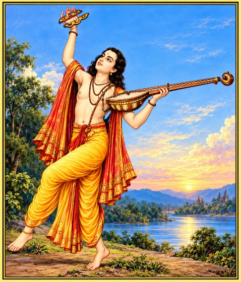
इसी समय पुराणोंके ज्ञाता परम बुद्धिमान् सूतजी तपस्वी मुनियोंको प्रणाम करनेकी कामनासे नैमिषारण्य तीर्थमें पधारे। नैमिषारण्यवासी ऋषियोंने व्यासजीके शिष्य उन सूतजीकी सम्यक् प्रकारसे स्तुति तथा पूजा की॥७-८½॥
तत्पश्चात् अपनी कथाओंसे रोमांचित कर देनेवाले सूतजीको अतिविश्वस्त विद्वान् जानकर उन मुनियोंकी उनसे पुराण सुननेकी इच्छा हो गयी॥९½॥
तब सभी तपस्वी ऋषियोंने मुनिवर सूतजीसे लिङ्गमाहात्म्यसे युक्त पुण्यदायिनी पुराणसंहिताके विषयमें पूछा॥१०½॥
नैमिषारण्यवासी ऋषि बोले— महान् बुद्धिवाले हे सूतजी! पुराणोंका ज्ञान प्राप्त करनेके लिये आपने श्रीकृष्णद्वैपायन व्यासजीकी उपासना की तथा उनसे पुराणसंहिता प्राप्त भी की है॥११½॥
अतएव पौराणिकोंमें उत्तम हे सूतजी! लिङ्गमाहात्म्यसे युक्त दिव्य पुराणसंहिता (लिङ्गपुराण)-के विषयमें हम आपसे पूछ रहे हैं॥१२½॥
ब्रह्माके पुत्र श्रीमान् मुनिश्रेष्ठ नारदजी भी परमेश्वर रुद्रदेवके पावन क्षेत्रोंमें जाकर वहाँ उनके लिङ्गोंकी पूजा-अर्चना सम्पन्न करके अब यहाँ विराजमान हैं॥१३-१४॥
शिवभक्त, आप, हम मुनिगण तथा नारदजी यहाँ उपस्थित हैं। इन मुनिके आगे आप पवित्र लिङ्गपुराणकी कथा कहनेमें समर्थ हैं। आपने सब कुछ सफलतापूर्वक सिद्ध कर लिया है। आपको तो सब कुछ विदित होगा॥१५½॥
मुनियोंके इस प्रकार कहनेपर पौराणिकोंमें श्रेष्ठ सूतजीका मन प्रसन्नतासे प्रफुल्लित हो गया। सर्वप्रथम ब्रह्माजीके पुत्र देवर्षि नारद तथा नैमिषारण्यवासी मुनियोंका अभिवादन करके बुद्धिमान् तथा पुण्यात्मा सूतजीने लिङ्गपुराण कहना आरम्भ किया॥१६-१७॥
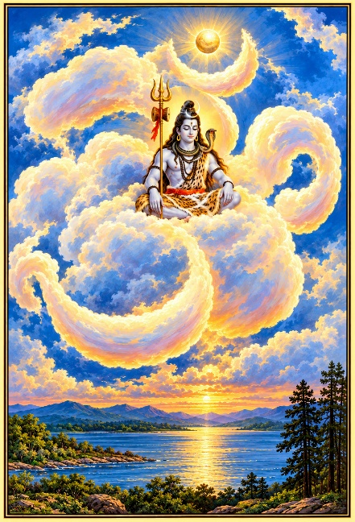
सूतजी बोले— शिव, ब्रह्मा, विष्णु तथा मुनीश्वर व्यासजीको नमस्कार करके लिङ्गपुराणकी कथा कहनेके लिये मैं इस पुराणमें प्रतिपादित विषयका स्मरण करता हूँ॥१८॥
शब्दब्रह्म ही इसका शरीर है— यह साक्षात् शब्दब्रह्म (स्वस्वरूप) का प्रकाशक है। अकारादि-क्षकारान्त वर्ण ही इसके अवयव हैं, अनेक रूपोंमें स्थित होनेपर भी यह अव्यक्त है, परात्पर, सूक्ष्मातिसूक्ष्म होनेपर यह अकार, उकार तथा मकारात्मक स्थूल शरीरवाला है, ऐसे स्वयं-प्रकाश्य शब्दब्रह्म ॐकारका ऋग्वेद मुख है, सामवेद इसकी जिह्वा है, यजुर्वेद इसकी महाग्रीवा है तथा अथर्ववेद इसका हृदय है, यह व्यापक है, यह प्रकृति तथा पुरुषसे अतीत एवं प्रलय तथा उत्पत्तिसे रहित है॥१९-२१॥
जो तमोगुणसे युक्त होनेपर कालरुद्र, रजोगुणसे युक्त होनेपर हिरण्यगर्भस्वरूप, सत्त्वगुणसे आविष्ट होनेपर सर्वव्यापी विष्णुरूप तथा गुणोंसे रहित होनेपर महेश्वरस्वरूपमें प्रकट होता है॥२२॥
प्रकृत्याश्रित होकर जो महत्, अहंकार तथा पंचतन्मात्रात्मक (शब्द, स्पर्श, रूप, रस, गन्ध)— सात रूपोंमें, तदनन्तर दस इन्द्रियों, पाँच महाभूतों तथा मन इत्यादि षोडश रूपोंमें, पुनः इन षोडश रूपों और अव्यक्त, ध्याता (जीव) एवं ध्येय (शिव) इत्यादिको लेकर छब्बीस रूपोंमें व्यक्त होते हैं, जो पितामह ब्रह्माके भी पिता हैं, उन सृष्टि-पालन तथा संहाररूप लीलाके लिये लिङ्गरूप धारण करनेवाले महेश्वर शिवको प्रणाम करके शुभकारक लिङ्गोद्भवकी कथासे युक्त लिङ्गपुराणका मैं यथोचितरूपसे वर्णन करूँगा॥२३-२४॥
॥इस प्रकार श्रीलिङ्गमहापुराणके अन्तर्गत पूर्वभागमें ‘लिङ्गोद्भवप्रतिज्ञावर्णन’ नामक पहला अध्याय पूर्ण हुआ॥१॥
दूसरा अध्याय
लिङ्गपुराणका परिचय तथा इसमें प्रतिपादित विषयोंका वर्णन
सूतजी बोले— ईशानकल्पमें लिङ्गके प्रादुर्भाव आदिसे सम्बद्ध वृत्तान्तोंको आश्रित करके महात्मा ब्रह्माने सर्वप्रथम श्रेष्ठ लिङ्गपुराणकी उद्भावना की॥१॥
सौ करोड़ विस्तारवाले पुराणसमुच्चयमें एक करोड़ श्लोकोंवाला यह लिङ्गपुराण सभी मन्वन्तरोंमें विभिन्न व्यासोंके द्वारा चार लाख श्लोकोंमें संक्षिप्त किया गया॥२॥
वही बृहद् पुराणसंहिता प्रत्येक द्वापरयुगमें ब्रह्मपुराणादि अठारह पुराणोंके रूपमें व्यासजीद्वारा विभक्त होती है, उनमें ग्यारहवाँ लिङ्गपुराण कहा गया है, जिसका श्रवण मैंने व्यासजीसे किया है॥३॥
हे विप्रो! [चार लाख श्लोकोंमें संक्षेपके पश्चात्] इस ग्रन्थमें श्लोकोंकी संख्या मात्र ग्यारह हजार है। अतः मैं संक्षेपमें ही इसका वर्णन कर रहा हूँ; क्योंकि मैं इसे विस्तारसे नहीं सुन सका हूँ॥४॥
विभिन्न मन्वन्तरोंमें अनेक व्यासोंद्वारा चार लाख श्लोकोंमें संक्षिप्त किये गये इस लिङ्गपुराणमेंसे वैवस्वत मन्वन्तरमें श्रीकृष्णद्वैपायन व्यासजीने ग्यारह हजार श्लोकोंमें लिङ्गपुराणका वर्णन किया है॥५॥
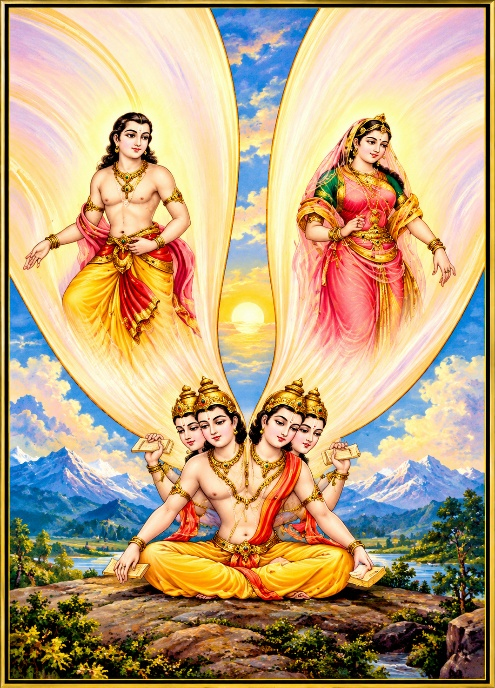
इसमें सर्वप्रथम प्राधानिक तदनन्तर प्राकृत तथा वैकृत सृष्टिका वर्णन किया गया है। इस अण्डकी उत्पत्ति तथा अण्डके आठ आवरणोंका इसमें वर्णन है॥६॥
सदाशिवके ही रजोगुणके समाश्रयणसे अण्डके मध्यसे ब्रह्मारूपमें, (सत्त्वके आश्रयसे) विष्णुरूपमें, (तमोगुणके आश्रयसे) कालरुद्ररूपमें प्रादुर्भावका तथा अन्तमें उन्हीं सदाशिवका ही प्रलयकालीन जलराशिमें (नारायणके रूपमें) शयनका वर्णन किया गया है॥७॥
इस पुराणके अन्तर्गत प्रजापतियोंकी सृष्टि, पृथ्वीके उद्धारकी कथा तथा ब्रह्माके दिन-रात और उनकी आयुकी गणनाका वर्णन किया गया है॥८॥
इसमें ब्रह्माकी उत्पत्ति तथा उनके युग एवं कल्प वर्णित हैं। दिव्य वर्ष, मानुष वर्ष, आर्षवर्ष, ध्रौव्यवर्ष तथा पित्र्यवर्षका इसमें वर्णन है। पितरोंकी उत्पत्ति, आश्रमियोंके धर्म, सृष्टि-विस्तारकी प्रारम्भिक दशामें सृष्टिके त्वरित अभीष्ट विकासके अभाव तथा शक्तिस्वरूपा देवीके उद्भवका वर्णन इसमें किया गया है॥९-१०॥
मनु तथा शतरूपाकी उत्पत्तिरूपमें ब्रह्माके स्त्री-पुरुष भावका वर्णन, मैथुनी सृष्टिका वर्णन तथा रुद्रके रुदनके पश्चात् उनके आठ नामोंका वर्णन इस लिङ्गपुराणमें किया गया है॥११॥
ब्रह्मा-विष्णुके विवाद तथा उसके बाद शिवलिङ्गके प्राकट्यका वर्णन इसमें विद्यमान है। शिलादकी तपस्या तथा उन्हें वृत्रारि (इन्द्र) का दर्शन इस पुराणमें वर्णित है॥१२॥
शिलाद तथा इन्द्रका संवाद, शिलादद्वारा अयोनिज पुत्रके लिये की गयी प्रार्थना, ऐसे पुत्रका दुर्लभत्व तथा कमलसे ब्रह्माकी उत्पत्ति इस पुराणमें वर्णित हैं॥१३॥
कलियुगोंमें आचार्य तथा शिष्यको शिवके दर्शन, व्यासोंके अवतार, कल्प, मन्वन्तर, कल्पका स्वरूप, भेदक्रमसे कल्पोंके आख्यान, कल्पोंमें वाराहकल्पमें विष्णुके वाराहावतारकी कथा आदिका वर्णन इस लिङ्गपुराणमें है॥१४-१५॥
मेघवाहन कल्पका वृत्तान्त, रुद्रगरिमा, ऋषियोंके मध्य शिवलिङ्गका उद्भव, लिङ्गकी उपासना-स्नानविधि, शौचाचारका लक्षण, वाराणसीका माहात्म्य तथा क्षेत्रमाहात्म्य आदिका वर्णन इस लिङ्गपुराणमें उपलब्ध है॥१६-१७॥
पृथ्वीपर शिवालयों तथा विष्णुके मन्दिरोंकी संख्याका वर्णन और अन्तरिक्ष तथा इस ब्रह्माण्डमें देवालयोंका वर्णन इसमें है॥१८॥
स्वारोचिष मन्वन्तरमें दक्षप्रजापतिका पृथ्वीपर पतन, दक्षको प्रदत्त शाप तथा उस शापसे दक्षकी मुक्ति इस लिङ्गपुराणमें वर्णित है॥१९॥
कैलासका वर्णन, पाशुपतयोगका वर्णन, चारों युगोंके स्वरूप एवं प्रमाणका वर्णन तथा युगधर्मका वर्णन लिङ्गपुराणमें विस्तारके साथ उपलब्ध है॥२०॥
चारों युगोंके सन्ध्याकालमानका वर्णन, शिवजीके सन्ध्याताण्डवका वर्णन, शंकरजीके श्मशानवासका वर्णन तथा चन्द्रमाकी कलाओंकी उत्पत्तिका वर्णन इस पुराणमें किया गया है॥२१॥
इस लिङ्गपुराणमें शंकरजीका विवाह, तत्पश्चात् पुत्ररूपमें श्रीगणेशजीकी उत्पत्ति, दीर्घकालीन कामोपभोग-प्रसंगसे जगत्के विनाशका भय, सतीके द्वारा प्रदत्त शाप, प्राचीनकालमें शिवजीद्वारा त्रिपुरवध करके देवताओं तथा विष्णुकी रक्षा, शिवजीका शुक्रोत्सर्ग तथा कार्तिकेयकी उत्पत्ति आदि वर्णित है॥२२-२३॥
ग्रहण आदि कालोंमें लिङ्गके अभिषेकका विधान तथा उसका फल, क्षुप् तथा दधीच और दधीच तथा विष्णुका विवाद इस पुराणमें वर्णित है॥२४॥
इस लिङ्गपुराणमें देवाधिदेव शूलधारी शिवजीका नन्दीश्वर नामसे प्रादुर्भाव, पतिव्रताका आख्यान, पशु (जीव) तथा पाश (बन्धन) की मीमांसा, आसक्तिके स्वरूपका ज्ञान, निवृत्तिकी योग्यताप्राप्ति, वसिष्ठके पुत्रोंकी उत्पत्ति, महात्मा वसिष्ठपुत्रों तथा मुनियों और राजाओंका वंशविस्तार, वसिष्ठपुत्र शक्तिका विनाश, विश्वामित्रकी दुर्भावना तथा उनके द्वारा वसिष्ठकी सुरभिधेनुका बलात् अधिग्रहण आदि वर्णित किये गये हैं॥२५-२७॥
वसिष्ठके पुत्रशोक, अरुन्धतीके विलाप, उनकी पुत्रवधूके प्रेषण, गर्भस्थित शिशुके वचनोद्गार, पराशर-व्यास तथा शुकदेवके अवतार, शक्तिपुत्र पराशरके द्वारा किये गये राक्षसध्वंस, देवताओंके गूढ़ रहस्यरूप विशिष्ट ज्ञान तथा गुरु पुलस्त्यके आज्ञानुसार उनके कृपाप्रसादसे [पराशरद्वारा विष्णु]-पुराणकी रचनासे सम्बन्धित विषयोंका वर्णन किया गया है॥२८-३०॥
भुवनोंकी परिमिति, ग्रहों-नक्षत्रोंकी गति, जीवच्छ्राद्धकी विधि, श्राद्धके अधिकारी पात्रों तथा श्राद्धके विषयमें इस पुराणमें वर्णन है॥३१॥
इस पुराणमें नान्दीश्राद्धके विधान, वेदाध्ययनका स्वरूप, ब्रह्मयज्ञ-पितृयज्ञ-दैवयज्ञ-भूतयज्ञ-नृयज्ञ— इन पाँच महायज्ञोंके प्रभाव तथा इन पाँच महायज्ञोंके करनेकी विधिका वर्णन किया गया है। रजस्वला स्त्रियोंके सदाचार, उस सदाचार-पालनसे विशिष्ट पुत्रकी प्राप्ति, प्रत्येक वर्णोंके अनुसार मैथुनके नियम, सभी वर्णोंके लिये अलग-अलग भोज्य तथा अभोज्यके विधिविधान और समस्त पापोंके प्रायश्चित्तके विषयमें पृथक् पृथक् रूपसे विस्तारसे वर्णन किया गया है॥३२-३४॥
नरकोंके स्वरूप, कर्मानुसार दण्डके विधान, स्वर्ग और नरक प्राप्त करनेवाले पुरुषोंमें दूसरे जन्मोंमें प्रकट होनेवाले चिह्न, अनेक प्रकारके दानों, यमपुरी, पंचाक्षर मन्त्रकी मीमांसा तथा रुद्रमाहात्म्यका वर्णन इस लिङ्गपुराणमें किया गया है॥३५-३६॥
इन्द्र-वृत्रासुरके महासंग्रामका वर्णन, विश्वरूपके वधका निरूपण, श्वेतमुनि तथा कालका संवाद, श्वेतमुनिकी रक्षाके लिये शिवद्वारा कालके संहारका इसमें वर्णन है॥३७॥
देवदारुवनमें कल्याणकारी भगवान् शम्भुके प्रवेश, सुदर्शनके आख्यान एवं क्रमसंन्यासके लक्षणका वर्णन इस पुराणमें किया गया है॥३८॥
शिव-प्राप्ति श्रद्धाद्वारा ही साध्य है— इस सिद्धान्तका ब्रह्माद्वारा निरूपण, मधु-कैटभ-संसर्गसे नष्ट ज्ञानवाले ब्रह्माको परम ज्ञान प्रदान करनेके लिये शिवप्रादुर्भाव, भगवान् विष्णुका मत्स्यरूपमें अवतार तथा सभी अवस्थाओंमें लीलापूर्वक विष्णुकी उत्पत्तिका वर्णन इस लिङ्गपुराणमें उपलब्ध है॥३९-४०॥
भगवान् शंकरकी कृपासे श्रीकृष्ण तथा कामदेवके रूपमें प्रद्युम्नके प्रादुर्भाव एवं समुद्रमन्थनके समय मथानी-धारणके लिये भगवान् विष्णुके कूर्मावतारका वर्णन इस पुराणमें है॥४१॥
संकर्षणकी उत्पत्ति, चण्डिकाके रूपमें कौशिकीके प्रादुर्भाव, यदुवंशियोंकी उत्पत्ति, स्वयं विष्णुके यदुकुलमें प्रादुर्भाव, श्रीकृष्णके मामा भोजराज (कंस) के दुर्भाव, बालरूपमें श्रीकृष्णकी लीलाओं तथा पुत्रके लिये शंकरजीकी पूजाका वर्णन इस लिङ्गपुराणमें किया गया है॥४२-४३॥
विष्णुरूप शिवसे कपालमें जलकी उत्पत्ति तथा पृथ्वीका भार उतारनेके लिये विष्णुद्वारा शंकरजीकी की गयी आराधनाका वर्णन इस पुराणमें है॥४४॥
प्राचीनकालमें वेनपुत्र पृथुके द्वारा गोरूप पृथ्वीके दोहन तथा देवासुरसंग्राममें कृष्णके द्वारा प्राप्त किये गये भृगु-प्रदत्त शाप, द्वारकापुरीमें कृष्णरूपमें विष्णुके निवास, लोक-कल्याणके लिये विष्णुके द्वारा स्वीकार किये गये दुर्वासाप्रदत्त शापका वर्णन इस लिङ्गपुराणमें किया गया है॥४५-४६॥
वृष्णि तथा अन्धक वंशोंके विनाशके लिये पिण्डारकक्षेत्रवासी यादवोंको दिये गये शाप, मूसल तथा एरकाकी उत्पत्ति, एरका घास ले-लेकर आपसमें एक-दूसरेपर प्रहार करनेसे वृष्णिवंशियोंके विनाश, अपनी ही लीलासे श्रीकृष्णके द्वारा अपने ही कुलके विनाश, उसी एरकारूपी अस्त्रके प्रभावसे श्रीकृष्णके इच्छापूर्वक अपने धामके लिये प्रयाण तथा कृष्णरूपी ब्रह्मकी प्रयाणलीलाके रहस्यका विस्तृत वर्णन इस लिङ्गपुराणमें किया गया है॥४७-४९॥
इन्द्र बने हुए त्रिपुरासुर, गजरूपी अन्धकासुर, मृगरूपी यज्ञाग्नि, दक्ष, कामदेव, देवताओंके आदिदेव ब्रह्मा, हलाहल विष, दैत्य एवं अन्य असुरोंके शिवकृत दमनका वर्णन तथा जालन्धरवध एवं सुदर्शनकी उत्पत्तिका वर्णन भी इस पुराणमें प्राप्त है॥५०-५१॥
इस लिङ्गपुराणमें भगवान् विष्णुको श्रेष्ठ आयुधकी प्राप्ति, रुद्रके क्रिया-कलाप तथा उनके अन्य हजारों चरित्रोंका वर्णन किया गया है॥५२॥
विष्णु-ब्रह्मा तथा महात्मा इन्द्रके अनुभव एवं प्रभावका वर्णन तथा शिवलोकका भी वर्णन है। भूमिष्ठ रुद्रलोक, पातालस्थ हाटकेश्वर, तपोंके लक्षण एवं द्विजोंके वैभवका निरूपण भी इस पुराणमें किया गया है॥५३-५४॥
भगवान् शंकरके विग्रहोंकी व्यापकता तथा उनकी लिङ्गमूर्तिकी विशेषता इस पुराणमें वर्णित है। इस लिङ्गमहापुराणमें पूर्वोक्त विषयोंका प्रायः क्रमिक रूपसे वर्णन किया गया है। इसे जानकर जो मनुष्य लिङ्गपुराणकी इस संक्षिप्त अनुक्रमणिकाका कीर्तन (पाठ) करता है, वह सभी पापोंसे छूटकर ब्रह्मलोकको प्राप्त होता है॥५५-५६॥
॥इस प्रकार श्रीलिङ्गमहापुराणके अन्तर्गत पूर्वभागमें ‘अनुक्रमणिकावर्णन’ नामक दूसरा अध्याय पूर्ण हुआ॥२॥
तीसरा अध्याय
अलिङ्ग एवं लिङ्गतत्त्वका स्वरूप, शिवतत्त्वकी व्यापकता, महदादि तत्त्वोंका विवेचन, जगत्की उत्पत्तिका क्रम तथा महेश्वर शिवकी महिमा
सूतजी बोले— वह निर्गुण ब्रह्म शिव (अलिङ्ग) ही लिङ्ग (प्रकृति) का मूल कारण है तथा स्वयं लिङ्गरूप (प्रकृतिरूप) भी है। लिङ्ग (प्रकृति)-को भी शिवोद्भासित जाना गया है। शब्द, स्पर्श, रूप, रस, गन्ध आदिसे रहित, अगुण, ध्रुव, अक्षय, अलिङ्ग (निर्गुण) तत्त्वको ही शिव कहा गया है तथा शब्द-स्पर्श-रूप-रस-गन्धादिसे संयुक्त प्रधान प्रकृतिको ही उत्तम लिङ्ग कहा गया है॥१-३॥
हे श्रेष्ठ विप्रो! वह जगत्का उत्पत्तिस्थान है, पंचभूतात्मक अर्थात् पृथ्वी, जल, तेज, आकाश, वायुसे युक्त है, स्थूल है, सूक्ष्म है, जगत्का विग्रह है तथा यह लिङ्गतत्त्व निर्गुण परमात्मा शिवसे स्वयं उत्पन्न हुआ है॥४॥
उस अलिङ्ग अर्थात् निर्गुण परमात्माकी मायासे सात, आठ तथा फिर ग्यारह इस तरह कुल छब्बीस रूपवाले लिङ्गतत्त्व इस ब्रह्माण्डमें व्याप्त हैं॥५॥
उन्हीं माया-वितत लिङ्गोंसे उद्भूत तीनों प्रधान देव शिवात्मक हैं। उन तीनोंमें एक ब्रह्मासे यह जगत् उत्पन्न हुआ, एक विष्णुसे जगत्की रक्षा होती है तथा एक रुद्रसे जगत्का संहार होता है। इस प्रकार शिवतत्त्वसे यह विश्व व्याप्त है। वह परमात्मा निर्गुण भी है तथा सगुण भी है। लिङ्ग अर्थात् व्यक्त तथा अलिङ्ग अर्थात् अव्यक्तरूपमें कही गयी सभी मूर्तियाँ शिवात्मक ही हैं; इसलिये यह ब्रह्माण्ड साक्षात् ब्रह्मरूप है। वही अलिङ्गी अर्थात् अव्यक्त तथा बीजी भगवत्तत्त्व परमेश्वर है॥६-८॥
वह परमात्मा बीज (ब्रह्मा) भी है, योनि (विष्णु) भी है तथा निर्बीज (शिव) भी है और बीजरहित वह शिव जगत्का बीज अर्थात् मूल कारण कहा जाता है। बीजरूप ब्रह्मा, योनिरूप विष्णु तथा प्रधानरूप शिवकी इस जगत्में अपनी-अपनी विश्व, प्राज्ञ तथा तैजस अवस्थाकी संज्ञा भी है॥९॥
यह विशुद्ध मुनिरूप परब्रह्म परमात्मा रुद्र नित्यबुद्धस्वभावके कारण पुराणोंमें ‘शिव’ कहे गये हैं॥१०॥
हे विप्रो! शिवकी दृष्टिमात्रसे प्रकृति ‘शैवी’ हो गयी तथा सृष्टिके समय अव्यक्त स्वभाववाली वह प्रकृति गुणोंसे युक्त हो गयी॥११॥
अव्यक्त तथा महत्तत्त्वादिसे लेकर स्थूल पंचमहाभूतपर्यन्त सम्पूर्ण जगत् उसी प्रकृतिके अधीन है। अतः विश्वको धारण करनेवाली शैवीशक्ति प्रकृति ही अजा नामसे कही गयी है॥१२॥
रक्तवर्णा अर्थात् रजोगुणवाली, शुक्लवर्णा अर्थात् सत्त्वगुणवाली तथा कृष्णवर्णा अर्थात् तमोगुणवाली एवं बहुविध प्रजाओंकी उत्पत्ति करनेवाली अजास्वरूपिणी उस प्रकृतिकी प्रेमपूर्वक सेवा करता हुआ यह बद्ध जीव उसका अनुसरण करता है॥१३॥
दूसरे प्रकारका अनासक्त जीव प्रकृतिके भोगोंको भोगकर और उसकी असारता तथा क्षणभंगुरताको समझकर उस मायाका परित्याग कर देता है। परमेश्वरके द्वारा अधिष्ठित वह अजा अनन्त ब्रह्माण्डकी उत्पत्तिकर्जी है॥१४॥
सृष्टिके समयमें तीन गुणोंसे युक्त अजरूप पुरुषकी आज्ञासे उसमें अधिष्ठित मायासे वह महत्तत्त्व उत्पन्न हुआ॥१५॥
सृष्टि करनेकी इच्छासे युक्त होकर उस अधिष्ठित महत्तत्त्वने स्वतः अव्यय तथा अव्यक्त पुरुषमें प्रविष्ट होकर व्यक्त सृष्टिमें विक्षोभ उत्पन्न किया॥१६॥
उस महत्तत्त्वसे संकल्प-अध्यवसायवृत्तिरूप सात्त्विक अहंकार उत्पन्न हुआ तथा उसी महत्तत्त्वसे त्रिगुणात्मकरूप रजोगुणकी अधिकतावाला राजस अहंकार उत्पन्न हुआ और उस रजोगुणसे सम्यक् प्रकारसे आवृत तमोगुणकी अधिकतावाला तामस अहंकार भी उसी महत्तत्त्वसे उत्पन्न हुआ है तथा उसी अहंकारसे सृष्टिको व्याप्त करनेवाली शब्द, स्पर्श आदि तन्मात्राएँ भी उत्पन्न हुई हैं॥१७-१८॥
महत्तत्त्वजन्य उस तामस अहंकारसे शब्द तन्मात्रावाले अव्यय आकाशकी उत्पत्ति हुई और बादमें शब्दके कारणरूप उस अहंकारने शब्दयुक्त आकाशको व्याप्त कर लिया। हे विप्रो! इसी प्रकार तन्मात्रात्मक भूतसर्गके विषयमें कहा गया है। हे मुने! उस आकाशसे स्पर्शतन्मात्रावाला महान् वायु उत्पन्न हुआ। पुनः उस वायुसे रूपतन्मात्रावाले अग्निकी उत्पत्ति हुई तथा अग्निसे रसतन्मात्रावाले जलका प्रादुर्भाव हुआ। फिर रसतन्मात्रावाले उस जलसे गन्धतन्मात्रावाली कल्याणमयी पृथ्वीकी उत्पत्ति हुई॥१९-२१॥
हे श्रेष्ठ विप्रो! आकाश स्पर्शतन्मात्रावाले वायुको आवृत किये रहता है तथा रूपतन्मात्रावाले अग्निको आच्छादित करके यह क्रियाशील वायु बहता रहता है॥२२॥
साक्षात् अग्निदेव रसतन्मात्रावाले जलको आच्छादित किये रहते हैं तथा सभी रसोंसे युक्त जलतत्त्व गन्धतन्मात्रावाली पृथ्वीको आच्छादित किये रहता है॥२३॥
इस प्रकार पृथ्वी पाँच (शब्द, स्पर्श, रूप, रस तथा गन्ध) गुणोंसे, गन्धरहित शेष चार गुणोंसे जल, भगवान् अग्नि तीन गुणोंसे तथा स्पर्शसमन्वित वायु दो गुणोंसे युक्त हुए और अन्य अवयवोंसे रहित आकाशदेव मात्र एक गुणवाले हुए। इस प्रकार तन्मात्राओंके पारस्परिक संयोगवाला भूतसर्ग कहा गया है॥२४-२५॥
राजस, तामस तथा सात्त्विक सर्ग साथ-साथ प्रवृत्त होते हैं, किंतु यहाँपर तामस अहंकारसे ही सर्गका होना बताया गया है॥२६॥
शब्द-स्पर्श आदिको ग्रहण करनेके लिये पाँच ज्ञानेन्द्रियाँ, पाँच कर्मेन्द्रियाँ तथा उभयात्मक मन इस जीवके लिये बनाये गये हैं॥२७॥
महत्तत्त्वादिसे लेकर पंचमहाभूतपर्यन्त सभी तत्त्व अण्डकी उत्पत्ति करते हैं। वह परमात्मा ही पितामह ब्रह्मा, शंकर तथा विश्वव्यापी प्रभु विष्णुके रूपमें उस अण्डसे जलके बुलबुलेकी भाँति अवतीर्ण हुआ। ये सभी लोक तथा उनके भीतरका यह सम्पूर्ण जगत् उस अण्डमें सन्निविष्ट था॥२८-२९॥
वह अण्ड अपनेसे दस गुने जलसे बाहरसे व्याप्त था और जल बाहरसे अपनेसे दस गुने तेजसे आवृत था॥३०॥
तेज अपनेसे दस गुने वायुसे बाहरसे आवृत था और वायु अपनेसे दस गुने आकाशसे बाहरसे आवृत था॥३१॥
शब्दजन्य वायुको आवृत किये हुए वह आकाश तामस अहंकारसे आवृत है। शब्द-हेतु आकाशको आवृत करनेवाला वह तामस अहंकार महत्तत्त्वसे घिरा हुआ है और वह महत्तत्त्व स्वयं अव्यक्त प्रधानसे आवृत है॥३२॥
उस अण्ड (ब्रह्माण्ड) के ये सात प्राकृत आवरण कहे गये हैं। कमलासन ब्रह्माजी उसकी आत्मा हैं। इस सृष्टिमें करोड़ों-करोड़ों अण्डों (ब्रह्माण्डों) की स्थितिके विषयमें कहा गया है॥३३॥
प्रधान (प्रकृति) ही सदाशिवके आश्रयको प्राप्त करके इन करोड़ों ब्रह्माण्डोंमें सर्वत्र चतुर्मुख ब्रह्मा, विष्णु और शिवका सृजन करती है। अन्तमें शम्भुका सहयोग प्राप्तकर वहीं प्रधान लय भी करती है। इस प्रकार परस्पर सम्बद्ध आदि (सृष्टि) तथा अन्त (प्रलय) के विषयमें कहा गया है। इस सृष्टिकी रचना, पालन तथा संहार करनेवाले वे ही एकमात्र महेश्वर हैं॥३४-३५॥
वे ही महेश्वर क्रमपूर्वक तीन रूपोंमें होकर सृष्टि करते समय रजोगुणसे युक्त रहते हैं, पालनकी स्थितिमें सत्त्वगुणमें स्थित रहते हैं तथा प्रलयकालमें तमोगुणसे आविष्ट रहते हैं॥३६॥
वे ही भगवान् शिव प्राणियोंके सृष्टिकर्ता, पालक तथा संहर्ता हैं। अतएव वे महेश्वर ब्रह्माके अधिपतिरूपमें प्रतिष्ठित हैं, जिस कारणसे भगवान् सदाशिव भव, विष्णु, ब्रह्मा आदि रूपोंमें स्थित हैं तथा सर्वात्मक हैं, इसी कारण वे ही ब्रह्माण्डवर्ती इन लोकोंके रूपमें तथा इनके कर्ता पितामहके रूपमें कहे गये हैं॥३७-३८॥
हे द्विजो! पुरुषाधिष्ठित यह प्राथमिक ईश्वरकृत अबुद्धिपूर्वक उत्पन्न तथा कल्याणकारी प्राकृत सर्ग मैंने तुम्हें सुनाया है॥३९॥
॥इस प्रकार श्रीलिङ्गमहापुराणके अन्तर्गत पूर्वभागमें ‘प्राकृतप्राथमिकसर्गकथन’ नामक तीसरा अध्याय पूर्ण हुआ॥३॥
चौथा अध्याय
ब्रह्माजीकी आयुका परिमाण, कालका स्वरूप, कल्प, मन्वन्तर एवं युगादिका मान तथा ब्रह्माजीद्वारा विभिन्न लोकोंकी संरचना
सूतजी बोले— ब्रह्माकी प्राकृत सृष्टिका जो समय है, वही उनका दिन है तथा उतने ही परिमाणकी उनकी रात्रि है॥१॥
वे ब्रह्मा दिनमें सृष्टि करते हैं तथा रातमें प्रलय करते हैं। ब्रह्माका अहोरात्र उत्पत्ति-प्रलयरूपात्मक है, मनुष्योंके दिन-रातके समान सूर्योदयास्तवाला नहीं है॥२॥
दिनमें सभी प्रकारकी वैकारिक सृष्टि, समस्त देवता, सभी प्रजापतिगण तथा अन्य महर्षि लोग विद्यमान रहते हैं तथा रातमें ये सभी विलीन हो जाते हैं। रातकी समाप्तिपर वे सभी पुनः उत्पन्न हो जाते हैं। ब्रह्माका एक दिन ही एक कल्प कहा जाता है तथा उसी प्रकार उनकी रात भी एक कल्पके मानके तुल्य कही गयी है॥३-४॥
एक हजार चतुर्युगीकी अवधिमें चौदह मनु उत्पन्न होते हैं। हे विप्रो! सत्ययुगका काल चार हजार दिव्य वर्षोंका है और उस सत्ययुगके चार सौ वर्षोंकी सन्ध्या तथा सन्ध्यांश होते हैं। उसी प्रकार क्रमसे त्रेतायुगकी सन्ध्या तीन सौ वर्षकी, द्वापरकी सन्ध्या दो सौ वर्षकी तथा कलियुगकी सन्ध्या एक सौ वर्षकी होती है॥५-६॥
इस प्रकार सत्ययुगके सन्ध्यांशकको छोड़कर अन्य तीन युगोंके कुल सन्ध्यांशक छः सौ वर्षके होते हैं तथा इन त्रेता, द्वापर और कलिके सन्ध्या-सन्ध्यांशकको छोड़कर इनका नियत समय क्रमशः तीन हजार, दो हजार तथा एक हजार वर्षोंका होता है॥७॥
हे सुव्रत ऋषियो! अब मैं आप लोगोंको त्रेता, द्वापर, कलियुग तथा सत्ययुगके कालमान बताता हूँ। स्वस्थ मनुष्यके नेत्रके पन्द्रह निमेषके समयको एक काष्ठा कहते हैं और तीस काष्ठाकी एक कला होती है। हे विप्रो! तीस कलाको मिलाकर एक मुहूर्त कहा जाता है॥८-९॥
पन्द्रह मुहूर्तकी एक रात होती है तथा उसी प्रकार पन्द्रह मुहूर्तका एक दिन होता है। मनुष्योंका एक कृष्णपक्ष पितरोंके एक दिनके बराबर होता है तथा शुक्लपक्ष उनकी स्वप्नसम्बन्धी रातके समान होता है। मनुष्योंके तीस महीनेका समय पितरोंके एक मासके बराबर माना गया है॥१०-११॥
मनुष्योंके तीन सौ साठ महीनोंका समय पितरोंका एक संवत्सर (वर्ष) माना जाता है॥१२॥
मानवीय मानसे सन्ध्या-सन्ध्यांशसहित जो १०० वर्ष होते हैं, यहाँ वे ही पितरोंके तीन वर्ष कहे गये हैं। जैसे लौकिक मानसे बारह मासका एक मानववर्ष होता है, उसी प्रकार पितृमानसे बारह मासका एक पितृवर्ष होता है। लिङ्गपुराणमें इस प्रकार दिव्य अहोरात्र तथा दिव्य वर्षका विभागपूर्वक वर्णन किया गया है॥१३-१५॥
सूर्यका उत्तरकी ओर संक्रमण [उत्तरायण— सूर्यका मकरराशिसे मिथुनराशितक] ही देवताओंका दिवस तथा सूर्यका दक्षिणकी ओर संक्रमण [दक्षिणायन— कर्कराशिसे धनुराशितक] ही देवोंकी रात्रि होती है। विशेषतया ये दिव्य अहोरात्र कहे गये हैं॥१६॥
मनुष्योंके तीस वर्षोंका काल देवताओंके एक महीनेके समयके बराबर होता है। हे विप्रो! मनुष्योंका एक सौ वर्ष देवताओंके तीन माह तथा दस दिनके बराबर माना गया है॥१७½॥
मनुष्योंके तीन सौ साठ वर्षोंका कालमान देवताओंके एक वर्षके समयके तुल्य कहा गया है॥१८½॥
मनुष्योंके कालप्रमाणके अनुसार उनके तीन हजार तीस वर्ष सप्तर्षियोंके एक वर्षके बराबर माने गये हैं॥१९½॥
मनुष्योंके नौ हजार नब्बे वर्षोंको मिलाकर वह एक ध्रौव्य वर्ष (ध्रुव वर्ष) होता है॥२०½॥
मनुष्योंका जो छत्तीस हजार वर्षोंका समय है, वही देवताओंका सौ वर्ष कहा जाता है॥२१½॥
कालगणनाके विद्वान् मनुष्योंके तीन लाख साठ हजार वर्षोंके समयको देवताओंके एक हजार वर्षोंके बराबर कहते हैं॥२२-२३॥
देवताओंके ही कालप्रमाणसे युगोंकी संख्या कल्पित की गयी है। हे सुव्रत ऋषियो! सर्वप्रथम सत्ययुग, इसके बाद त्रेता, फिर द्वापर और अन्तमें कलियुग— ये चार युग कहे गये हैं। अब मानुषीवर्ष-प्रमाणसे इनका काल बताया जाता है॥२४-२५॥
हे विप्रवरो! प्रथम कृतयुगका कालमान देवताओंके प्रमाणसे बताया जा चुका है। वह कृतयुग मानुषी वर्षसे चौदह लाख चालीस हजार वर्षोंका है तथा त्रेतायुगका कालप्रमाण दस लाख अस्सी हजार वर्षोंका, द्वापरयुगका कालमान सात लाख बीस हजार वर्षोंका तथा कलियुगका समय तीन लाख साठ हजार वर्षोंका कहा गया है।
इस प्रकार सन्ध्या तथा सन्ध्यांशको छोड़कर चारों युगोंका काल छत्तीस लाख वर्ष कहा गया है। चारों युगोंके सन्ध्यांशका काल तीन लाख साठ हजार वर्ष होता है॥२६-३१½॥
इकहत्तर कृत-त्रेतादि चतुर्युगोंके कालसे कुछ अधिक कालको एक मन्वन्तर कहा जाता है और आगे दिये गये वर्षोंसे मन्वन्तरकी संख्या कही गयी है॥३२-३३॥
हे उत्तम ब्राह्मणो! मनुष्यवर्षसे तीस करोड़ सरसठ लाख बीस हजार वर्षोंका काल सभी मनुओंका होता है; हे द्विजो! ऐसा इस लिङ्गपुराणमें बताया गया है॥३४-३५॥
हे श्रेष्ठ ब्राह्मणो! चतुर्युगकी भी वर्षसंख्या कही गयी है। एक हजार चतुर्युगोंका काल एक कल्प कहा गया है॥३६॥
ब्रह्माजी दिनके आरम्भमें जगत्की रचना करते हैं तथा रात्रिमें प्राणियोंका संहार होता है। उनमें देवताओंकी संख्या अट्ठाईस करोड़ है। यह संख्या मन्वन्तरोंमें तीन सौ बानबे करोड़ होती है। हे ब्राह्मणो! कल्प व्यतीत होनेपर यह संख्या अठहत्तर हजार होती है॥३७-३९॥
प्रलयकाल उपस्थित होनेपर कल्पके अन्तमें विद्यमान देवताओंको छोड़कर महर्लोकमें निवास करनेवाले लोग जनलोकमें चले जाते हैं॥४०॥
आधे दिव्य (देव) कल्पकी वर्षसंख्या दो हजार आठ सौ बासठ करोड़ सत्तर लाख है; इसीसे कल्पकी संख्या ज्ञात होती है। हजार कल्पोंका काल ही ब्रह्माजीका एक वर्ष है॥४१-४२॥
ब्रह्माके आठ हजार वर्षोंका काल (आठ हजार ब्राह्म वर्ष) ब्रह्माका एक युग होता है। सभी देवोंके उत्पत्तिकर्ता ब्रह्माका एक हजार युग विष्णुके एक दिनके बराबर होता है॥४३॥
विष्णुके नौ हजार दिनोंका समय कालात्मा प्रभु ब्रह्मस्वरूप रुद्रके एक दिनका समय कहा गया है॥४४॥
हे मुनिश्रेष्ठो! भवोद्भव, तप, भव्य, रम्भ, क्रतु, ऋतु, वह्नि, हव्यवाह, सावित्र, शुद्ध, उशिक, कुशिक, गान्धार, ऋषभ, षड्ज, मज्जालीय, मध्यम, वैराज, निषाद, मुख्य, मेघवाहन, पंचम, चित्रक, आकूति, ज्ञान, मन, सुदर्श, बृंह, श्वेतलोहित, रक्त, पीतवासा, असित एवं सर्वरूपक— ये तैंतीस संख्यावाले कल्प उस अव्यक्तजन्मा ब्रह्माके होते हैं॥४५-४८½॥
हे मुनिश्रेष्ठो! इस प्रकार ब्रह्माके दिन-रातमें हजारों करोड़ कल्प बीत गये तथा शेष अभी व्यतीत होंगे॥४९½॥
महाप्रलयके समय सम्पूर्ण सृष्टिका लय हो जाता है और पश्चात् शिवकी आज्ञासे प्रलयका भी प्रलय हो जाता है॥५०½॥
इस प्रकार सबका प्रलय हो जानेपर तथा प्रकृतिके परमात्मामें स्थित हो जानेपर केवल प्रधान (प्रकृति) तथा पुरुष— ये दो ही रह जाते हैं॥५१½॥
हे विप्रो! इस प्रकार गुणोंकी ही विषमतासे सृष्टि तथा गुणोंके ही साम्यसे प्रलय होते हैं और उन दोनोंका हेतु वे ही महेश्वर हैं॥५२½॥
उन देवाधिदेवने अपनी लीलासे इस प्रकारकी असंख्य सृष्टि की है। वे सर्ग प्रधानसे अन्वधिष्ठित होते हैं॥५३½॥
इस प्रकार असंख्य कल्प, अनगिनत पितामह (ब्रह्मा) तथा असंख्य विष्णु उत्पन्न होते हैं; किंतु वे महेश्वर मात्र एक हैं॥५४½॥
प्रकृति अपनी लीलासे प्राकृत सर्गकी रचना करती है और उस परमात्माकी वृत्ति तीन प्रकारके गुणों (सत्-रज-तम) वाली है। उस अप्राकृतका अपना न कोई आदि है, न मध्य है और न अन्त ही है॥५५-५६॥
ब्रह्माकी आयु [पर] दो परार्ध है। उस ब्रह्माके द्वारा दिनमें जो भी सृजित होता है, वह सब कुछ रातमें नष्ट हो जाता है॥५७॥
भूः, भुवः, स्वः, महः— ये लोक नष्ट हो जाते हैं; किंतु इनसे ऊपरके लोकोंका नाश नहीं होता है। समस्त चर-अचरके अनन्त समुद्रमें विनष्ट हो जानेपर रात्रिमें ब्रह्माजी उसी जलराशिमें शयन करते हैं; इसीलिये उन्हें नारायण कहा जाता है॥५८½॥
प्रलयकालीन रातके बीतनेपर ब्रह्मवेत्ताओंमें श्रेष्ठ ब्रह्माजी उठे और चराचर जगत्को शून्य देखकर उन्होंने सृष्टि करनेका विचार किया॥५९½॥
उन सनातन ब्रह्माने वाराहका रूप धारण करके जलमें डूबी हुई पृथ्वीको निकालकर उसे पुनः पूर्वकी भाँति स्थापित कर दिया और उसपर नदी, नद तथा समुद्रोंको उन प्रभुने पूर्वकी भाँति पुनः कर दिया॥६०-६१॥
ब्रह्माजीने प्रयत्नपूर्वक पृथ्वीतलपर दबे हुए तथा उठे भागोंको ठीक करके उन्हें समतल किया और उन्होंने पूर्वकालमें अग्निसे दग्ध सभी पर्वतोंको धरापर पुनः पूर्ववत् बना दिया॥६२॥
इस प्रकार भगवान् ब्रह्माने जब भूः आदि चारों लोकोंकी पूर्वकी भाँति रचना कर ली, तब उन सृष्टिकर्ताने पुनः सृष्टि करनेका विचार किया॥६३॥
॥इस प्रकार श्रीलिङ्गमहापुराणके अन्तर्गत पूर्वभागमें ‘सृष्टिप्रारम्भवर्णन’ नामक चौथा अध्याय पूर्ण हुआ॥४॥
पाँचवाँ अध्याय
ब्रह्माजीद्वारा पंचपर्वा अविद्याकी सृष्टि, नौ प्रकारकी सृष्टि (नवविध सर्ग) की संरचना, मरीचि आदि ऋषियोंकी उत्पत्ति, मनु-शतरूपाका प्रादुर्भाव तथा दक्षप्रजापतिकी कन्याओंका वंशवर्णन
सूतजी बोले— हे ब्राह्मणो! जब ब्रह्माजीने अबुद्धिपूर्वक अर्थात् सम्यक् विचार किये बिना सृष्टिरचनाका विचार किया, तब उन अव्यक्तजन्मा महात्मा ब्रह्माको मोहने व्याप्त कर लिया॥१॥
उन स्वयम्भूसे प्रथम तम (अज्ञान), मोह, महामोह (भोगेच्छा), तामिस्त्र (क्रोध) तथा अन्धतामिस्त्र (अभिनिवेश) नामवाली— ये पाँच प्रकारकी [पंचपर्वा] अविद्याएँ उत्पन्न हो गयीं॥२॥
ब्रह्माजीका वह मुख्य [प्रथम] सर्ग (सृष्टि) अविद्यासे ग्रस्त कहा गया है, तब उन्होंने इस प्रथम सर्गको सृष्टि-विस्तारका असाधक मानकर वृक्षादिरूप (वृक्ष, गुल्म, लता, वीरुधू, तृणरूप— पाँच प्रकारका सर्ग) मुख्यसर्गका सृजन किया, तदनन्तर ध्यानपूर्वक मनन करते हुए उन ब्रह्माजीका कण्ठ (चिन्तन) त्रिगुणात्मक (सत्त्व, रज तथा तमोगुणसे युक्त) हो गया॥३-४॥
पहले उन महात्मा ब्रह्माने तिर्यक्स्रोत पशु आदि उत्पन्न किये, तत्पश्चात् उन्होंने ऊर्ध्वस्स्रोतकी रचना की, जो सात्त्विकरूप कहा गया। इसके अनन्तर अर्वाक्स्रोत (मनुष्य आदि), पुनः सत्त्व, तमप्रधान अनुग्रह-सर्ग, तदुपरान्त भूतादिकोंका सर्ग रचा गया॥५½॥
ब्रह्माजीद्वारा रचित पहला सर्ग महत्तत्त्वादिका है, दूसरा भौतिक सर्ग है, जो भूततन्मात्राओंका है, तीसरा ऐन्द्रियसर्ग है [ये बुद्धिपूर्वक उत्पन्न हुए तीन सर्ग प्राकृत सर्ग हैं] और चौथा मुख्य सर्ग वृक्ष आदिका कहा जाता है। तिर्यक् योनिवाले पशु-पक्षियोंवाला सर्ग पाँचवाँ सर्ग है तथा छठा देवताओंकी सृष्टिवाला [ऊर्ध्वस्रोताओंका] देवसर्ग कहा जाता है॥६-७॥
सातवाँ [अर्वाक्स्रोताओंका] सर्ग मनुष्योंका, आठवाँ अनुग्रहसर्ग है, [ये पाँच वैकृतसर्ग हैं] नौवाँ कौमार सर्ग कहा जाता है। हे विप्रो! प्राकृत तथा वैकृत ये ही नौ सर्ग हैं; जिनमें प्रारम्भके तीन सर्ग प्राकृत हैं तथा पाँच सर्ग वैकृत हैं तथा नौवाँ कौमारसर्ग प्राकृत तथा वैकृत दोनों है॥८॥
तदुपरान्त भगवान् ब्रह्माने सनक, सनन्दन तथा सनातन [एवं सनत्कुमार] मुनि उत्पन्न किये। ये श्रेष्ठ मुनिगण निष्काम कर्मयोगसे परमपदको प्राप्त हुए॥९॥
तत्पश्चात् उन्होंने अपनी योगविद्यासे मरीचि, भृगु, अंगिरा, पुलस्त्य, पुलह, क्रतु, दक्ष, अत्रि तथा वसिष्ठ— इन ऋषियोंको उत्पन्न किया। हे श्रेष्ठ ब्राह्मणो! ब्रह्माजीके ये नौ [मानस] पुत्र ब्रह्मको जाननेवाले थे। ये ब्रह्मवादी ऋषि ब्रह्माके ही तुल्य कहे गये हैं। संकल्प, धर्म तथा अधर्म भी उत्पन्न हुए। इस प्रकार उन अव्यक्तजन्मा ब्रह्माकी ये बारह सन्तानें कहलायीं॥१०-१२॥
उन सनातन ब्रह्माने आदिमें ऋभु तथा सनत्कुमारको उत्पन्न किया था। अग्रजन्मा वे दोनों दिव्य पुत्र नैष्ठिक ब्रह्मचारी, ब्रह्मवादी, सर्वज्ञ, सर्वत्र व्याप्त रहनेवाले तथा ब्रह्माके ही समान थे॥१३½॥
हे श्रेष्ठ मुनियो! अब मैं उन अग्रजन्मा मुनियोंकी भार्याओंका कुल तथा प्रजाओंकी उत्पत्तिका संक्षेपमें वर्णन करूँगा॥१४½॥
भगवान् ब्रह्माने स्वायम्भुव मनु तथा रानी शतरूपाका सृजन किया। उस अयोनिजा तथा पुण्यशालिनी रानी शतरूपाने स्वायम्भुव मनुसे दो पुत्र एवं दो कन्याएँ* उत्पन्न कीं॥१५-१६॥
उनमें बुद्धिसम्पन्न प्रियव्रत ज्येष्ठ तथा उत्तानपाद कनिष्ठ पुत्र थे। श्रेष्ठ गुणोंवाली आकूति ज्येष्ठ तथा प्रसूति छोटी कन्या थी॥१७॥
रुचि नामक प्रजापतिने आकूतिको तथा दक्षप्रजापतिने जगद्धात्री योगमयी प्रसूतिको भार्याके रूपमें ग्रहण किया॥१८॥
आकूतिने दक्षिणासहित यज्ञ नामक पुत्रको जन्म दिया और दक्षिणाने दिव्य बारह कन्याओंको उत्पन्न किया॥१९॥
प्रसूतिने दक्षप्रजापतिसे श्रद्धा, लक्ष्मी, धृति, पुष्टि, तुष्टि, मेधा, क्रिया, बुद्धि, लज्जा, वपु, शान्ति, सिद्धि, कीर्ति, ख्याति, शान्ति, सम्भूति, स्मृति, प्रीति, क्षमा, सन्नति, अनसूया, ऊर्जा, देवताओंके लिये अरणिरूपा स्वाहा तथा स्वधा— इन तपोमयी चौबीस कन्याओंको उत्पन्न किया तथा इन महाभाग्यवती कन्याओंको आगे बताये गये क्रमके अनुसार महात्माजनोंको समर्पित कर दिया॥२०-२२॥
श्रद्धासे लेकर कीर्तिपर्यन्त तेरह परम दुर्लभ सुन्दर कन्याओंने प्रजापति धर्मको पतिरूपमें प्राप्त किया॥२३-२४॥
बुद्धिसम्पन्न भृगुने ख्यातिको, भार्गव शुक्राचार्यने अरणि [शान्ति]-को, मरीचिने सम्भूतिको तथा मुनि अंगिराने स्मृतिको पत्नीरूपमें ग्रहण किया॥२४½॥
पुण्यात्मा पुलस्त्यने प्रीतिको, मुनि पुलहने क्षमाको, बुद्धिसम्पन्न क्रतुने सन्नतिको, अत्रिने उस अनसूयाको, श्रेष्ठ वसिष्ठने कमलके समान नेत्रोंवाली ऊर्जाको,
(पाद-टिप्पणी) * यहाँ मनुकी दो पुत्रियाँ कही हैं, जबकि भागवत आदिमें ‘तिस्रः कन्याश्च जज्ञिरे’ मनुकी तीन पुत्रियाँ प्रसिद्ध हैं। लिङ्गपुराणका वर्णन ईशानकल्पका आख्यान है और भागवतका वर्णन श्वेतवाराहकल्पका है। पुराणपठित (पुराणोक्त) सभी आख्यान सत्य हैं, कल्पभेदसे ही भिन्नताकी प्रतीति है।
भगवान् अग्निने स्वाहादेवीको तथा पितरोंने स्वधादेवीको पत्नीरूपमें स्वीकार किया॥२५-२६॥
दक्षप्रजापतिकी शिवसम्भवा (शिवांगसम्भूता) मानसी पुत्री सती, जो सम्पूर्ण जगत्को धारण करनेवाली हैं, ने भगवान् रुद्रको पतिरूपमें प्राप्त किया॥२७॥
सृष्टिके प्रारम्भमें ब्रह्माजीने शिवजीको अर्धनारीश्वर देखकर कहा कि आप स्त्री-पुरुषका विभाग कीजिये, तब शिवजीकी देहसे सतीजी अलग हो गयीं॥२८॥
उन्हीं सतीके अंशसे तीनों लोकमें सभी स्त्रियोंकी उत्पत्ति हुई है तथा ग्यारह प्रकारके रुद्र भी उन शिवके अंशसे उत्पन्न हैं। इस प्रकार सम्पूर्ण स्त्रीजातिके रूपमें वे सतीजी तथा पुरुषजातिके रूपमें नीललोहित शिवजी अधिष्ठित हैं॥२९½॥
भगवान् ब्रह्माने सुव्रता सतीको देखकर पुनः दक्षप्रजापतिकी ओर देखकर उनसे कहा कि ये सती हमारी, आपकी तथा सम्पूर्ण जगत्की धात्री हैं, अतएव इनकी सेवा करो। पुन्नामक नरकसे पुत्री ही रक्षा करती है, यहाँपर ऐसी ही उक्ति है॥३०-३१॥
यह परम सुन्दरी एवं प्रशस्त तथा विश्वकी जननी आपकी ही पुत्री है। अतएव अबसे यह सती नामसे तुम्हारी पुत्री होगी॥३२॥
तत्पश्चात् ब्रह्माजीके ऐसा कहनेपर दक्षप्रजापतिने उनके आदेशसे पुत्रीरूपमें प्राप्त उन साक्षात् सतीको आदरपूर्वक भगवान् रुद्रको सौंप दिया॥३३॥
प्रजापति धर्मकी श्रद्धा आदि जिन तेरह पत्नियोंका वर्णन किया जा चुका है, उनसे तथा धर्मसे उत्पन्न उत्तम सन्तानोंके विषयमें अब मैं यथाक्रम कह रहा हूँ॥३४॥
हे उत्तम ब्राह्मणो! काम, दर्प, नियम, सन्तोष, लोभ, श्रुत, दण्ड, समय, महान् द्युतिसम्पन्न बोध, अप्रमाद, विनय, व्यवसाय, क्षेम, सुख और यश— इन पुत्रोंको उन तेरह पत्नियोंने प्रजापति धर्मसे उत्पन्न किया था। धर्मके दो पुत्र दण्ड तथा समय उनकी क्रिया नामक पत्नीसे उत्पन्न हुए और अप्रमाद तथा बोध नामक ये दो पुत्र धर्मकी बुद्धि नामक पत्नीसे उत्पन्न हुए। इस प्रकार उन तेरह पत्नियोंसे धर्मके ये पन्द्रह पुत्र उत्पन्न हुए। भृगुकी पत्नी ख्यातिने ‘श्री’ (लक्ष्मी) को जन्म दिया, जो भगवान् विष्णुकी परम प्रिया हुईं तथा धाता एवं विधाता नामक दो पुत्र भी उत्पन्न हुए, जो मेरुपर्वतके जामाता बने। मरीचिकी प्रभूति नामक पत्नीने पूर्णमास तथा मारीच नामक दो पुत्रों तथा तुष्टि, दृष्टि, कृषि एवं अपचिति नामक चार पुत्रियोंको जन्म दिया; इनमें तुष्टि ज्येष्ठ थी॥३५-४०॥
हे श्रेष्ठ मुनियो! क्षमाने पुलहमुनिसे कर्दम, वरीयांस तथा सहिष्णु नामक तीन पुत्र तथा स्वर्णसदृश कान्तिवाली और पृथ्वीके समान क्षमाशील पीवरी नामकी एक पुत्रीको उत्पन्न किया था॥४१॥
पुलस्त्यऋषिने अपनी प्रीति नामक पत्नीसे दत्तोर्ण तथा वेदबाहु नामक पुत्रों तथा एक अन्य दृषद्वती नामक पुत्रीको उत्पन्न किया। क्रतुकी प्रिय पत्नी सन्नतिने साठ हजार पुत्रोंको उत्पन्न किया; वे सभी बालखिल्य नामसे प्रसिद्ध हुए। हे सुव्रतो! अंगिरामुनिकी पत्नी स्मृतिसे सिनीवाली, कुहू, राका तथा अनुमति— इन चार कन्याओं तथा प्रिय स्वभाववाले कीर्तिमान् पुत्र अग्निकी उत्पत्ति हुई॥४२-४५॥
अत्रिकी भार्या अनसूयाने छः सन्ततियोंको जन्म दिया था। उनमें श्रुति नामधारिणी एक कन्या थी। सत्यनेत्र, मुनिर्भव्य, मूर्तिराप, शनैश्चर एवं सोम— ये पाँच पुत्र हुए, जो आत्रेय कहलाये। सभी सन्तानोंमें श्रुति छठी थी॥४६-४७॥
सुन्दर नेत्रोंवाली तथा पुत्रोंके प्रति स्नेहभाव रखनेवाली महिमामयी वसिष्ठपत्नी ऊर्जाने कमलके समान नेत्रवाले सात पुत्र उत्पन्न किये। रज, सुहोत्र, बाहु, सवन, अनघ, सुतपा और शुक्र— ये सात पुत्र मुनि वसिष्ठसे हुए॥४८-४९॥
परम अभिमानी, रुद्ररूप, ब्रह्माके पुत्र तथा प्रजाओंके प्राणस्वरूप जो भगवान् अग्नि हैं, उनसे स्वाहाने तीनों लोकोंके कल्याणार्थ तीन पुत्र उत्पन्न किये॥५०॥
॥इस प्रकार श्रीलिङ्गमहापुराणके अन्तर्गत पूर्वभागमें ‘प्रजासृष्टिवर्णन’ नामक पाँचवाँ अध्याय पूर्ण हुआ॥५॥
छठा अध्याय
अग्नि तथा पितरोंके वंशका वर्णन, ब्रह्माजीसे रुद्रोंका प्रादुर्भाव, परमेष्ठी सदाशिवकी महिमा
सूतजी बोले— अग्निके वे तीन पुत्र पवमान, पावक तथा शुचि नामसे विख्यात हुए। अरणी आदिमें घर्षणसे पवमान, विद्युत्से पावक तथा सूर्य-प्रभासे शुचिका आविर्भाव हुआ। ये तीनों स्वाहाके पुत्र हैं। अब यहाँ पुत्रों तथा पौत्रोंको मिलाकर इनकी संख्या संक्षेपमें बतायी जाती है॥१-२॥
आदिमें सप्तकका त्याग करके कुल उनचास अग्नियाँ कही गयी हैं। ये यज्ञोंमें आराधित की जाती हैं॥३॥
ये सभी तपस्वी, व्रतधारी, प्रजाओंके पति तथा रुद्रस्वरूप कहे गये हैं॥४॥
अयज्वा तथा यज्वा— ये दो प्रकारके प्रसन्न मनवाले पितर हैं। उनमें यज्वा (यज्ञ करनेवाले) पितरोंको अग्निष्वात्त तथा अयज्वा पितरोंको बर्हिषद कहा जाता है॥५॥
स्वधाने उन अग्निष्वात्त पितरोंसे मेना नामक मानसी कन्या उत्पन्न की। अग्निष्वात्त पितरोंकी वह मानसी पुत्री मेना लोकमें अतीव प्रसिद्ध हुई॥६॥
मेनाने मैनाक, क्रौञ्च, उसकी अनुजा उमा तथा शिवजीके अंग-श्लेषके कारण (मस्तकपर विराजमान रहनेके कारण) जगत्को पवित्र करनेका गुण रखनेवाली हैमवती गंगाको उत्पन्न किया॥७॥
कमलके समान मुखवाली मेरुराजपत्नी स्वधाने यज्ञानुष्ठानमें प्रवृत्त रहनेवाली धरणी नामक मानसी पुत्रीको जन्म दिया। यहाँ अमृतपान करनेवाले पितरों तथा ऋषियोंके कुलका विस्तार दिया जा रहा है; आप लोग उसे विस्तारपूर्वक सुनिये॥८-९॥
अब मैं आप सबसे पूर्वनिरूपित विषयका पुनः पृथक् अध्यायमें वर्णन करता हूँ। दक्षकन्या सतीका विवाह रुद्रके साथ हुआ और वे उनके साथ चली गयीं। फिर इन्हीं सतीने दक्षके यज्ञका विध्वंस करके अपना देहत्याग कर दिया। इसके बाद पार्वतीरूपमें पुनः शिवजीको पतिके रूपमें प्राप्त किया॥१०½॥
हे मुनिशार्दूलो! उन (पार्वती) का ध्यान करके ब्रह्माजीकी प्रार्थनापर नीललोहित महादेवजीने क्षणभरमें लीलापूर्वक अपने ही तुल्य तथा समस्त लोकोंके वन्दनीय अनेक रुद्र उत्पन्न कर दिये। उन रुद्रोंने सभी चौदह भुवनोंको पूर्णरूपेण व्याप्त कर लिया॥११-१२½॥
जरा-मरणसे मुक्त तथा निर्मल आत्मावाले उन विविध नीललोहित रुद्रोंको देखकर पितामह ब्रह्माजीने उनसे कहा॥१३½॥
हे त्रिनेत्रधारी नीललोहित महादेवो! आप सभीको नमस्कार है। आप सभी सर्वज्ञ हैं, सर्वव्यापी हैं, दीर्घ-ह्रस्व-वामन (बौना)-रूप धारण करनेवाले हैं, शुभ हैं, हिरण्यकेश हैं, दृष्टिघ्न हैं, नित्य हैं, चेतनायुक्त हैं, निर्मल आत्मावाले हैं, द्वन्द्वरहित हैं, वीतराग हैं, विश्वकी आत्मा हैं तथा शिवजीके आत्मज हैं। इस प्रकार उन रुद्रोंकी अनेकविध स्तुति करके कनकाण्डज (हिरण्यगर्भ) भगवान् ब्रह्माने शिवजीकी प्रदक्षिणाकर उन भवरूप शिवसे कहा॥१४-१६॥
हे महादेव! आपको नमस्कार है। हे प्रभो! हे शंकर! आपने तो अमर प्रजाओंको उत्पन्न कर दिया; ऐसी मृत्युहीन प्रजाकी सृष्टि उचित नहीं है। अतएव हे विभो! अब आप मरणधर्मा प्रजाओंका सृजन करनेकी कृपा करें॥१७॥
तब भगवान् शंकरने ब्रह्मासे कहा— हे प्रभो! उस प्रकारकी (मरणधर्मा) सृष्टि करनेकी मेरी स्थिति नहीं है। अतएव आप ही मृत्युसे युक्त रहनेवाली प्रजाका अपने इच्छानुसार सृजन कीजिये॥१८॥
भगवान् शंकरकी ऐसी आज्ञा प्राप्तकर चतुरानन ब्रह्माने जरा-मरणसे युक्त इस सम्पूर्ण स्थावर-जंगम जगत्की रचना की॥१९॥
भगवान् शंकर भी उस समय रुद्रों (रुद्रात्मक सृष्टिके सृजन) से निवृत्त आत्मावाले होकर अधिष्ठित हो गये। हे विप्रो! निष्कल आत्मावाले तथा अपनी इच्छासे शरीर धारण करनेवाले उन महात्मा शंकरका स्थाणुत्व हो गया। इसीलिये वे भगवान् रुद्र दयार्द्र होकर सभी प्राणियोंका कल्याण करते हैं॥२०-२१॥
भगवान् शंकरकी आत्मा बिना प्रयत्नके ही कल्याण करनेवाली है। वे योगविद्याके द्वारा वैराग्यमें स्थित रहते हैं। विरक्त पुरुषकी मुक्तिको ही कल्याण कहा जाता है॥२२॥
स्वल्प विषयोंका त्याग करके प्राणी सांसारिक भयसे मुक्त होकर क्रमसे वैराग्यको प्राप्त होता है और उस वैराग्यसे उस विरागी पुरुषको अन्तमें शिवजीका साक्षात् दर्शन प्राप्त होता है॥२३॥
संसारनिवर्तक आत्मानात्मविवेकरूप विशिष्ट ज्ञानका विचार किये बिना जो क्षणिक विषयत्याग है, वह ज्ञानरहित होनेसे अस्थायी है, अतएव विमुख्य [अप्रशंस्य] है। उस सत्, असत् वस्तु-विवेकरूप विचार तथा इस (सांसारिक) विषयोंके त्यागका एक साथ होना परमेष्ठी सदाशिवके कृपाप्रसादसे ही सम्भव है॥२४॥
इस लोकमें धर्म, ज्ञान, वैराग्य तथा ऐश्वर्य शिवजीकी कृपासे प्राप्त होते हैं। वे कल्याण करनेके कारण शंकर हैं, पिनाक नामक धनुष धारण करनेके कारण पिनाकी हैं तथा उनका कण्ठ नीला एवं देह लाल होनेके कारण नीललोहित हैं॥२५॥
जो प्राणी शंकरजीका आश्रय ग्रहण करते हैं अर्थात् उनके शरणागत होते हैं, वे सभी मुक्ति प्राप्त करते हैं। भगवान् शंकरके आश्रित महान् पापी भी अत्यन्त भयावह नरकको नहीं प्राप्त होते हैं। वे शिवजीके शाश्वत पदको पा जाते हैं। इस विषयमें कोई भी संदेह नहीं है॥२६½॥
ऋषिगण बोले— अहंकार (घोर) से लेकर मायापर्यन्त विभिन्न प्रकारके कुल अट्ठाईस करोड़ नरक हैं; उनमें जाकर पापी प्राणी अपने द्वारा किये गये कर्मोंके फल भोगते हैं। ये वही प्राणी होते हैं, जो शिव, रुद्र, शंकर, नीललोहित, सभी प्राणियोंके आश्रय, अव्यय, जगत्पति, विराट् पुरुष, परमात्मा, पुरुहूत, पुरुष्टुत, तमोगुणकी प्रधानता होनेपर कालरुद्ररूप, रजोगुणकी प्रधानता होनेपर ब्रह्मारूप, सत्त्वगुणकी प्रधानता होनेपर सर्वव्यापी विष्णुरूप तथा गुणरहित होनेपर महेश्वर-रूप भगवान् महादेवजीका आश्रय ग्रहण नहीं किये होते हैं॥२७-३०॥
हे महामते! अब हम लोगोंकी यह सुननेकी उत्कट अभिलाषा है कि किन-किन कर्मोंके करने अथवा न करनेसे मनुष्य नरकको प्राप्त होते हैं॥३१॥
॥इस प्रकार श्रीलिङ्गमहापुराणके अन्तर्गत पूर्वभागमें ‘शंकरमाहात्म्यवर्णन’ नामक छठा अध्याय पूर्ण हुआ॥६॥
सातवाँ अध्याय
माहेश्वरयोगका प्रतिपादन, अट्ठाईस व्यासों तथा चौदह मनुओंकी नामावली, विभिन्न युगोंमें हुए माहेश्वरयोगावतारोंका वर्णन
सूतजी बोले— [हे मुनीश्वरो!] अब मैं संक्षेपमें अमित तेजवाले, सर्वतत्त्वदर्शी भगवान् शंकरके रहस्य तथा श्रेष्ठ प्रभावका वर्णन करूँगा॥१॥
सभी तत्त्वोंको जाननेवाले, परम वैराग्यको प्राप्त, प्राणायाम आदि योगके आठ साधनोंसे युक्त तथा करुणा आदि गुणोंसे सम्पन्न बड़े-बड़े योगिजन नानाविध कर्म करके भी अपने कर्मानुसार नरक तथा स्वर्गमें जाते हैं॥२-३॥
भगवान् शंकरकी अनुकम्पासे ज्ञान उत्पन्न होता है, ज्ञानसे योगमें प्रवृत्ति होती है और योगसे मुक्तिकी प्राप्ति होती है। इस प्रकार उन्हीं शिवजीकी कृपासे सब कुछ सिद्ध होता है॥४॥
ऋषिगण बोले— हे योगवेत्ताओंमें श्रेष्ठ सूतजी! शिवजीकी कृपासे ही यदि विशिष्ट ज्ञान तथा योग होता है, तो उस ज्ञानस्वरूप दिव्य माहेश्वरयोगका आप वर्णन कीजिये॥५॥
विभुतासम्पन्न तथा चिन्तारहित भगवान् शिव योगमार्गके द्वारा किस प्रकार तथा किस कालमें प्राणियोंके ऊपर अनुग्रह करते हैं?॥६॥
सूतजी बोले— प्राचीनकालमें देवताओं, ऋषियों तथा पितरोंकी सन्निधिमें शिलादपुत्र नन्दीके द्वारा ब्रह्मापुत्र सनत्कुमारसे जिस योगके विषयमें कहा गया था, उसे आपलोग सुनें॥७॥
हे सुव्रत ऋषियो! द्वापरके अन्तमें व्यासके अवतार, योगाचार्योंके अवतार तथा कलियुगमें शिवजीके अवतार, प्रभुके पवित्र अन्तःकरणवाले चार शिष्य और बहुतसे प्रशिष्य हुए— वे सब महेश्वरकी कृपासे ही योगमें प्रवृत्त हुए॥८-९॥
इस प्रकार वह ज्ञान क्रमशः शिष्य-परम्पराके माध्यमसे ब्राह्मण, क्षत्रिय तथा वैश्योंको भगवान् शिवकी कृपासे उनके मुखसे प्राप्त हुआ॥१०॥
ऋषिगण बोले— प्रत्येक द्वापरमें, किन-किन कल्पोंमें तथा किन मन्वन्तरोंमें कौन-कौन व्यास हुए हैं? आप उनके विषयमें हमलोगोंको बताइये॥११॥
सूतजी बोले— हे द्विजो! वर्तमान वाराह कल्प तथा वैवस्वत मन्वन्तरमें एवं अन्य मन्वन्तरोंमें भी जो व्यास तथा रुद्र हुए हैं, उन सभी ज्ञानप्रदर्शक महात्माओंके विषयमें वेदों तथा पुराणोंके अनुसार मैं यथाक्रम कहता हूँ; आपलोग सुनिये॥१२-१३॥
हे द्विजो! क्रतु, सत्य, भार्गव, अंगिरा, सविता, मृत्यु, बुद्धिसम्पन्न शतक्रतु, मुनिश्रेष्ठ वसिष्ठ, सारस्वत, त्रिधामा, मुनिवर त्रिवृत, शततेजा, साक्षात् धर्मस्वरूप नारायण, तरक्षु, बुद्धियुक्त अरुणि, देव, कृतंजय, ऋतंजय, भरद्वाज, कविश्रेष्ठ गौतम, साक्षात् मुनिस्वरूप वाचःश्रवा, परम पावन शुष्मायणि, मुनि तृणबिन्दु, रुक्ष, शक्ति, शक्तिपुत्र पराशर, जातूकर्ण्य तथा साक्षात् विष्णुस्वरूप मुनि कृष्णद्वैपायन— ये अट्ठाईस व्यास हुए। इसी प्रकार कलियुगमें क्रमसे जो योगेश्वर हुए, कल्पोंमें तथा सभी मन्वन्तरोंमें महेश्वरके जो असंख्य अवतार हुए, कलिमें विशेष महिमाके कारण रुद्रों तथा व्यासोंके जो अवतार हुए एवं श्वेतवाराह कल्पके वैवस्वत मन्वन्तरमें तथा अन्य मन्वन्तरोंमें जो अवतार हुए— उन सभीके विषयमें मैं आप लोगोंको बताऊँगा; आप सब सुनें॥१४-२०॥
ऋषिगण बोले— [हे सूतजी!] सर्वप्रथम आप वाराह कल्प तथा अन्य कल्पोंके मन्वन्तरोंका वर्णन कीजिये। तत्पश्चात् वैवस्वत मन्वन्तरमें हो चुके सिद्धोंके विषयमें बताइये॥२१॥
सूतजी बोले— हे द्विजो! आदिमनु स्वायम्भुव मनु हैं, उनके बाद स्वारोचिष मनु हुए। इसी प्रकार क्रमसे उत्तम, तामस, रैवत, चाक्षुष, वैवस्वत, सावर्णि, धर्म, सावर्णिक, पिशंग, अपिशंगाभ, शबल तथा वर्णक— ये अकारसे लेकर औकारपर्यन्त चौदह स्वरोंके रूपवाले चौदह मनु कहे गये हैं।
हे उत्तम ब्राह्मणो! श्वेत, पाण्डु, रक्त, ताम्र, पीत, कापिल, कृष्ण, श्याम, धूम्र, सुधूम्र, अपिशंग, पिशंग, त्रिवर्ण शबल तथा कालन्धुर— ये चौदह वर्ण (रंग) उन पवित्र मनुओंके कहे गये हैं। इस प्रकार वे चौदह मनु स्वायम्भुव आदि नामोंसे, अकार आदि वर्णोंसे तथा श्वेत आदि वर्णों (रंगों)-से अभिहित किये गये हैं॥२२-२६॥
सभी मन्वन्तराधिपति संक्षेपमें स्वरात्मक कहे गये हैं। ये वर्तमान सुरेश्वर वैवस्वत मनु ऋकाररूप, कृष्णवर्ण तथा क्रममें सातवें हैं। बीते हुए तथा अनागत कल्पोंमें युगके आवर्तनोंपर आनेवाले योगिरूप उस वैवस्वत मनुके बारेमें मैं बताता हूँ॥२७-२८॥
वर्तमान कल्पको श्वेतवाराह कल्प जानना चाहिये। अब मैं इस कल्पके सातवें वैवस्वत मन्वन्तरमें महेश्वरके योगावतारों तथा शिष्यों-प्रशिष्योंका वर्णन करता हूँ॥२९॥
सभी कालोंमें तथा युगावर्तनोंमें योगावतारोंको भलीभाँति समझकर उन्हें बताता हूँ। आदि कलि अर्थात् स्वायम्भुव मनुके प्रथम कलिमें रुद्रका ‘श्वेत’ नामक अवतार हुआ; इसके बाद हे श्रेष्ठ मुनियो! क्रमसे सुतार, मदन, सुहोत्र, कंकण, लोगाक्षि, जैगीषव्य, महातेजस्वी भगवान् दधिवाहन, ऋषभ, मुनि, मेधासम्पन्न उग्र, अत्रि, सुबालक, सभी देवोंके वन्दनीय भगवान् गौतम, वेदशीर्ष, गोकर्ण, गुहावासी, शिखण्डभृत्, जटामाली, अट्टहास, दारुक, लांगली, महाकायमुनि, शूली, दण्डधारी मुण्डीश्वर, सहिष्णु, सोमशर्मा तथा जगद्गुरु नकुलीश— ये अट्ठाईस योगाचार्य अवतरित हुए॥३०-३४॥
हे सुव्रतो! सभी युगावर्तोंमें महेश्वरके जो योगाचार्यावतार हुए हैं, वे वैवस्वत मन्वन्तरमें भी भलीभाँति कहे गये हैं। हे श्रेष्ठ मुनियो! इस प्रकार प्रत्येक द्वापरमें ये व्यास भी हुए हैं। उन योगेश्वरोंमें सभीके चार-चार शिष्य हुए, जो काम-क्रोधादि विकारोंसे रहित थे॥३५-३६॥
श्वेत, श्वेतशिखण्डी, श्वेताश्व, श्वेतलोहित, दुन्दुभि,शतरूप, ऋचीक, केतुमान्, विशोक, विकेश, विपाश, पापनाशन, सुमुख, दुर्मुख, दुर्दम, दुरतिक्रम, सनक, सनन्द, दिव्यशक्तिसम्पन्न सनातन, ऋभु, सनत्कुमार, सुधामा, विरजा, शंखपा, द्वैरज, मेघ, सारस्वत, मुनिवर सुवाहन, महातेजस्वी मेघवाह, कपिल, आसुरि, मुनि पंचशिख तथा महायोगी वाल्कल— ये सभी धर्मात्मा तथा महान् ओजस्वी शिष्य हुए। इसी क्रममें पुनः पराशर, गर्ग, भार्गव, अंगिरा, बलबन्धु, निरामित्र, केतुश्रृंग, तपोधन, लम्बोदर, लम्ब, लम्बाक्ष, लम्बकेशक, सर्वज्ञ, समबुद्धि, साध्य, सर्व, सुधामा, काश्यप, वासिष्ठ, विरजा, अत्रि, देवसद, श्रवण, श्रविष्ठक, कुणि, कुणिबाहु, कुशरीर, कुनेत्रक, कश्यप, उशना, च्यवन, बृहस्पति, उतथ्य, वामदेव, महायोग, महाबल, वाचः श्रवा, सुधीक, श्यावाश्व, यतीश्वर, हिरण्यनाभ, कौशल्य, लोगाक्षि, कुथुमि, सुमन्तु, विद्वान् बर्बरी, कबन्ध, कुशिकन्धर, प्लक्ष, दाल्भ्यायणि, केतुमान्, गोपन, भल्लावी, मधुपिंग, श्वेतकेतु, तपोनिधि, उशिक, बृहदश्व, देवल, कवि, शालिहोत्र, अग्निवेश, युवनाश्व, शरद्वसु, छगल, कुण्डकर्ण, कुम्भ, प्रवाहक, उलूक, विद्युत्, मण्डूक, आश्वलायन, अक्षपाद, कुमार, उलूक, वत्स, कुशिक, गर्भ, मित्र तथा कौरुष्य नामवाले शिष्य भी हुए। सभी युगावर्तोंमें योगाचार्योंके ये महात्मा शिष्य कहे गये हैं। ये सब विमल आत्मावाले, सिद्ध, ब्रह्मनिष्ठ, ज्ञान तथा योगमें निरत रहनेवाले भस्म-विभूषित शरीरवाले तथा शैवी दीक्षासे सम्पन्न हैं॥३७-५२॥
इनके भी सैकड़ों-हजारों शिष्य तथा प्रशिष्य पाशुपत योग प्राप्तकर शिवलोकके अधिकारी हुए॥५३॥
देवतासे लेकर पिशाचपर्यन्त सभी प्राणी पशु कहे गये हैं, उनका पति अर्थात् स्वामी होनेके कारण सर्वेश्वर शिवको पशुपति कहा जाता है॥५४॥
हे द्विजो! सभीको परम ऐश्वर्यकी प्राप्ति करानेहेतु उन पशुपति रुद्रके द्वारा प्रवर्तित योग ‘पाशुपतयोग’ के नामसे जाना जाता है॥५५॥
॥इस प्रकार श्रीलिङ्गमहापुराणके अन्तर्गत पूर्वभागमें ‘मनुव्यासयोगेश्वरतच्छिष्यकथन’ नामक सातवाँ अध्याय पूर्ण हुआ॥७॥
आठवाँ अध्याय
शरीरमें स्थित योगस्थानों (चक्रों) का वर्णन, योगका स्वरूप, अष्टांगयोगका वर्णन, विषयभोगोंकी निस्सारता, प्राणायामकी महिमा, सदाशिवके ध्यानका स्वरूप
सूतजी बोले— हे द्विजो! अब मैं भगवान् शंकरके द्वारा जगत्के हितार्थ कल्पित किये गये योगस्थानोंका संक्षेपमें वर्णन करूँगा॥१॥
गलेसे नीचे तथा नाभिसे ऊपरका वितस्ति (बारह अँगुल) परिमाणवाला [हृत्कमल नामक] स्थान योगके लिये उत्तम स्थान है। इसी प्रकार नाभिसे नीचे मूलाधार नामक तथा दोनों भृकुटियोंके मध्यमें आवर्त [आज्ञाचक्र] नामक स्थान भी योगस्थान है॥२॥
जीवको परमार्थ तत्त्वका ज्ञान प्राप्त होना ही योग कहा जाता है और चित्तकी एकाग्रता सर्वदा उन्हीं शिवके अनुग्रहसे होती है॥३॥
हे श्रेष्ठ द्विजो! उस अनुग्रहका स्वरूप स्वसंवेद्य है अर्थात् स्वानुभूतिका विषय है। ब्रह्मा आदि भी उस स्वरूपका वर्णन नहीं कर सकते। मनुष्य धीरे-धीरे उस स्वरूपको योगके माध्यमसे जान लेता है॥४॥
योगसाधनासे प्राप्त निर्वाण माहेश्वर पद कहा जाता है। उस निर्वाणका हेतु रुद्रका ज्ञान हो जाना ही है और वह ज्ञान उन्हींकी कृपासे होता है॥५॥
जो सभी इन्द्रियोंको नियन्त्रित करके उस ज्ञानसे पापोंको जला डालता है, इन्द्रियोंकी वृत्तियोंपर नियन्त्रण रखनेवाले उस प्राणीको योगकी सिद्धि अवश्य होती है॥६॥
हे श्रेष्ठ ब्राह्मणो! चित्तकी वृत्तियोंपर नियन्त्रण करना ही योग है। सिद्धिप्राप्तिके लिये इस योगके आठ प्रकारके साधन यहाँ बताये गये हैं॥७॥
पहला साधन यम, दूसरा नियम, तीसरा आसन, चौथा प्राणायाम, पाँचवाँ प्रत्याहार, छठाँ धारणा, सातवाँ ध्यान तथा आठवाँ साधन समाधि कहा गया है॥८-९॥
तपमें प्रवृत्ति तथा विषय-भोगोंसे निवृत्तिको यम कहते हैं। यमकी साधना करनेवालोंमें श्रेष्ठ हे मुनियो! यमका प्रथम हेतु अहिंसा है। पुनः सत्य, अस्तेय (चोरी न करना), ब्रह्मचर्य तथा अपरिग्रह भी यमके आधार हैं। नियमका भी मूल यही यम है; इसमें कोई संदेह नहीं है॥१०-११॥
सभी प्राणियोंमें आत्मवत् दृष्टि रखकर उनके हितके लिये प्रवृत्त रहनेको अहिंसा कहा गया है। इस अहिंसासे आत्मज्ञानकी सिद्धि प्राप्त होती है॥१२॥
जैसा देखा गया हो, सुना गया हो, अनुमान किया गया हो तथा स्वयं अनुभव किया गया हो— उसे ठीक उसी तरहसे दूसरोंको कष्ट न पहुँचाते हुए कह देना ही ‘सत्य’ कहा जाता है॥१३॥
ब्राह्मण तथा वेद ऐसा कहते हैं कि अश्लील बातें नहीं करनी चाहिये और दूसरोंके दोष जानकर भी उसे अन्य व्यक्तिसे नहीं कहना चाहिये॥१४॥
विपत्तिकालमें भी विचारपूर्वक मन, वचन तथा कर्मसे दूसरोंका द्रव्य न लेना ही संक्षेपमें अस्तेय (चोरी न करना) कहा जाता है॥१५॥
यतियों, ब्रह्मचारियों तथा विशेष रूपसे पत्नीरहित संन्यासियोंके द्वारा मन, वचन तथा कर्मसे मैथुनमें प्रवृत्ति न रखना— उनके लिये ब्रह्मचर्य कहा गया है। पत्नीयुक्त गृहस्थोंके (ब्रह्मचर्यके) विषयमें मैं अब आपलोगोंको बताता हूँ। मन, वाणी तथा कर्मसे परनारीमें सदा भोगकी प्रवृत्ति न रखते हुए अपनी पत्नीके साथ उचित समयपर प्रसंग करना ब्रह्मचर्य कहा गया है॥१६-१८॥
यद्यपि अपनी स्त्री भोगकालमें पवित्र होती है, फिर भी उसके साथ संभोगके अनन्तर स्नान कर लेना चाहिये। ऐसा करनेवाला पवित्रात्मा गृहस्थ निःसंदेह ब्रह्मचारी ही कहा जाता है॥१९॥
[जैसे शास्त्रविहित स्वदाराप्रवृत्त गृहस्थ ब्रह्मचारी ही है, ठीक वैसे ही] द्विज, गुरु, अग्नि (यज्ञ), पूजनके निमित्त शास्त्रविहित की गयी हिंसा भी अहिंसा ही मानी जाती है॥२०॥
स्त्रियोंका सदैव त्याग करना चाहिये। उनके सान्निध्यसे बचना चाहिये। बुद्धिमान् पुरुषको स्त्रियोंमें वही वृत्ति रखनी चाहिये, जैसी चित्तवृत्ति शवमें रखी जाती है॥२१॥
जमीनपर मल तथा मूत्रके त्यागके समय जैसी मनःस्थिति होती है, वैसी ही मनोदशा अपनी पत्नीके साथ संभोगकालमें बनानी चाहिये, फिर अन्यकी तो बात ही क्या!॥२२॥
स्त्री प्रज्वलित अंगारके समान तथा पुरुष घीके घड़ेके समान होता है, अतएव दूरसे ही नारियोंका संसर्ग छोड़ देना चाहिये॥२३॥
विषयोंके भोगसे इन्द्रियोंकी तृप्ति नहीं होती, अतएव विचारपूर्वक मन, वाणी तथा कर्मसे भोगोंके प्रति विरक्तिका भाव रखना चाहिये॥२४॥
विषयोंके उपभोगसे कामनाओंकी शान्ति कभी भी नहीं होती है। यह कामना आहुति डालनेपर अग्निकी भाँति पुनः बढ़ती ही जाती है॥२५॥
अतः योगीको अमृतत्व-प्राप्तिके निमित्त भोगोंका सदाके लिये त्याग कर देना चाहिये, क्योंकि मनुष्य वैराग्य-वृत्ति न रखनेके कारण अनेक योनियोंमें जन्म लेता रहता है॥२६॥
श्रुतियों तथा स्मृतियोंके ज्ञाताओंमें श्रेष्ठ हे मुनीश्वरो! त्यागसे ही अमृतत्वकी प्राप्ति सम्भव है। कर्मसे, सन्तानसे तथा द्रव्य आदि किसी भी साधनसे अमृतत्वकी प्राप्ति नहीं हो सकती॥२७॥
इसीलिये सद्गृहस्थ प्राणीको चाहिये कि वह मनसा, वाचा, कर्मणा विषयोंसे राग-निवृत्ति करें; क्योंकि ऋतुकालको छोड़कर समागमकी अनाकांक्षाको भी ब्रह्मचर्य कहा गया है॥२८॥
[हे मुनियो!] मैंने संक्षेपमें यमोंके विषयमें बता दिया और अब आपलोगोंसे नियमोंका वर्णन करता हूँ। शौच, यज्ञ, तप, दान, स्वाध्याय, इन्द्रियनिग्रह, व्रत, उपवास, मौन तथा स्नान— ये दस प्रकारके नियम हैं॥२९½॥
आकांक्षाराहित्य, शुचिता, सन्तुष्टि, तप, जप एवं भगवान् शिवसे सम्बन्ध स्थापित करना तथा पद्मासन आदि— ये नियम हैं॥३०½॥
शुचिता बाह्य तथा आभ्यन्तर-भेदसे दो प्रकारकी कही गयी है, उसमें भी आन्तरिक शुचिता श्रेष्ठ है। साधकको बाह्य पवित्रतासे युक्त होकर आन्तरिक पवित्रताके लिये प्रयास करना चाहिये॥३१½॥
शिवपूजकोंको चाहिये कि वे विधिपूर्वक भस्मस्नान, जलस्नान तथा मन्त्रस्नान सम्पन्न करनेके पश्चात् आभ्यन्तर शुचिताका सम्पादन करें; क्योंकि सम्पूर्ण शरीरमें पवित्र मृत्तिकाका लेपन करके सर्वदा पवित्र तीर्थके जलमें अवगाहन करनेवाला भी अन्तःशौचके बिना मलिन ही रहता है॥३२-३३½॥
हे द्विजोत्तमो! सदा जलमें रहनेपर भी शैवाल, झषक (मगरमच्छ), मत्स्य और मत्स्यजीवी (मछुआरे) क्या कभी पवित्र हुए हैं? इसीलिये सदा विधिपूर्वक आन्तरिक पवित्रताका सम्पादन करना चाहिये॥३४-३५॥
शरीरपर एक बार श्रद्धापूर्वक वैराग्यरूपी मृत्तिकाका लेपन करके आत्म-ज्ञानरूपी जलमें स्नान करके शुद्ध हो जानेको अन्तःशौच कहा गया है। शुद्ध पुरुषको ही सिद्धियाँ मिलती हैं, अशुद्ध पुरुषको कभी नहीं मिलतीं॥३६½॥
जो व्रती पुरुष न्यायपूर्वक अर्जित किये गये धनसे संतुष्ट रहता है और गये धनके विषयमें चिन्तन नहीं करता, वह सन्तोषी कहा जाता है। चान्द्रायण आदि व्रतोंका निपुणतापूर्वक आचरण करना शुभ तप कहा गया है॥३७-३८॥
प्रणवका जप स्वाध्याय कहा जाता है और वह जप तीन प्रकारका कहा गया है। वाचिक जप अधम, उपांशु (मन्द स्वरात्मक) जप मुख्य (उत्तम) तथा मानस जप उत्तमोत्तम है, जो पंचाक्षर कल्पमें विस्तारसे बताये गये हैं। इस प्रकार मन, वचन तथा शारीरिक क्रियाओंसे शिवका प्रणीधान और गुरुके प्रति निश्चल तथा प्रतिष्ठित भक्तिको शिव-ज्ञान कहा गया है। विषयोंमें आसक्त इन्द्रियोंको शीघ्र ही उनसे हटाकर इन्द्रियोंपर नियन्त्रण करनेको संक्षेपमें प्रत्याहार कहा गया है और हृदय आदि स्थानोंमें चित्तको रोकनेकी क्रिया संक्षेपमें धारणा कही गयी है॥३९-४२॥
स्वस्थचित्ततासे उसी धारणाकी स्थिरता ही ध्यान है, जो विचारणापूर्वक समाधिमें परिणत हो जाता है। ध्येय विषयमें चित्तकी एकाग्रता ही ध्यान है और इस स्थितिमें चित्त अन्य वृत्तियोंसे रहित हो जाता है॥४३॥
चैतन्यस्वरूप ध्येयमात्रसे भासित होनेवाला और इस प्रकार देहशून्यताकी स्थितिको प्राप्त वह ध्यान ही समाधि है और प्राणायामको इन समस्त ध्यान-समाधि आदिका हेतु कहा गया है॥४४॥
अपने शरीरसे जायमान वायु ही प्राण है और उसे रोकनेको यम कहते हैं। द्विजोंने मन्द, मध्य तथा उत्तम— ये तीन प्रकारके यम बतलाये हैं॥४५॥
प्राण और अपान वायुका निरोध ही प्राणायाम कहलाता है। मन्द प्राणायामका मान बारह मात्राओंका कहा गया है। बारह लघु अक्षरोंके उच्चारणकालतक प्राणवायुको रोकना मन्द प्राणायाम या द्वादशमात्रात्मक प्राणायाम बताया गया है। उसके दुगुने उच्चारणकाल अर्थात् चौबीस मात्राओंके समयतक प्राणवायुके निरोधनको मध्यम प्राणायाम कहते हैं। इसी प्रकार तीन गुने उच्चारणकाल अर्थात् छत्तीस मात्राओंके उच्चारणकालतक प्राणवायुको रोकनेको उत्तम प्राणायाम कहा जाता है। मन्द, मध्य तथा उत्तम प्राणायाम शरीरमें क्रमशः प्रस्वेद (पसीना), कम्पन तथा उत्थान (ऊपर उठनेकी क्रिया) उत्पन्न करनेवाले हैं॥४६-४८॥
आनन्दकी उत्पत्ति करनेवाले योगकी प्राप्तिके लिये किये जानेवाले प्राणायामसे निद्रा, घूर्णन, रोमांच तथा ध्वनिसे व्याप्त कम्पन शरीरके अंगोंमें उत्पन्न हो जाता है॥४९॥
जब निरन्तर प्राणायामके अभ्याससे [उत्पन्न उष्णतावश] स्वेदबिन्दु [पसीना] झलकने लगे, संविन्मूर्च्छा— ज्ञानमयी उन्मनी अवस्था आने लगे, सहसा शरीर हलका होकर प्लवन [जलमें तैरने जैसी स्थिति]-जैसी अवस्थाका अनुभव करे, तब इस सुशोभन अवस्थाको उत्तमोत्तम प्राणायाम कहा गया है॥५०॥
सगर्भ तथा अगर्भ— यह दो प्रकारका होता है। जपसहित प्राणायाम सगर्भ तथा जपरहित प्राणायाम अगर्भ कहा जाता है। हाथी, शरभ तथा सिंह अत्यन्त दुराधर्ष होते हैं।
जैसे उन्हें पकड़कर उनका दमन किये जानेपर वे अस्वस्थ हो जाते हैं, उसी प्रकार यह दुराधर्ष प्राणवायु भी योगियोंके द्वारा वशमें किये जानेपर अस्वस्थ हो उठता है अर्थात् अव्यवस्थित हो जाता है॥५१-५२॥
नियमपूर्वक अभ्यास किये जानेपर वह वायु उसी प्रकार स्वस्थताको प्राप्त हो जाता है, जैसे मतवाले सिंह, हाथी तथा शरभ अभ्यासपूर्वक युक्तिसे दमित किये जानेपर अपने अधीन हो जाते हैं॥५३॥
जैसे नियमतः नियन्त्रण करनेपर शनैः शनैः अपनी उग्रताको त्यागकर ये सिंहादि आदरपूर्वक वशमें हो जाते हैं, वैसे ही यह प्राणवायु भी शनैः शनैः अभ्याससे अपनी अस्वस्थताको छोड़कर समत्वभावको प्राप्त हो जाता है॥५४॥
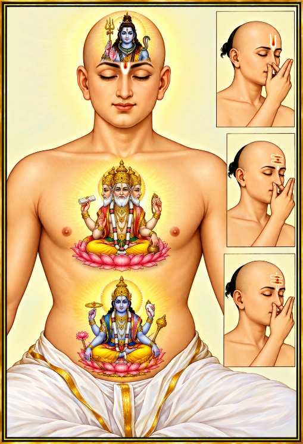
जो पुरुष योगपूर्वक अभ्यास करता है, उसके चित्तमें व्यसन उत्पन्न नहीं होता है। इस प्रकार सततं अभ्यास करनेपर प्राणायामसे उस योगीके मन-वचन तथा कर्मसे जायमान सभी दोष नष्ट हो जाते हैं और इस प्राणायामसे इसे करनेवाले उस बुद्धिमान् योगीके देहकी भलीभाँति रक्षा भी होती है॥५५-५६॥
उस प्राणायामके सतत अभ्याससे सभी दोष नष्ट हो जाते हैं। साथ ही श्वास (प्रश्वास) की गति भी न्यून होती जाती है। इस प्रकार प्राणोंके [श्वासोंके] नियन्त्रणसे क्रमशः दिव्य शान्ति आदि सिद्धियाँ प्राप्त होने लगती हैं॥५७॥
हे द्विजो! अब मैं क्रमसे शान्ति, प्रशान्ति, दीप्ति तथा प्रसादका वर्णन करूँगा। आरम्भमें इन चारोंमेंसे यहाँ पहले शान्तिके विषयमें कहता हूँ। सहज तथा आगन्तुक पापोंका नाश शान्ति कहा जाता है तथा वाणीपर भली-भाँति संयम प्रशान्ति कहा गया है॥५८-५९॥
हे द्विजो! सभी तरहसे सर्वदा प्रकाशकी स्थितिको दीप्ति कहा गया है। सभी इन्द्रियों, बुद्धि तथा प्राणवायु आदिकी प्रसन्नताको इस चतुष्टयमें ‘प्रसाद’ कहा गया है। प्राण, अपान, समान, उदान, व्यान, नाग, कूर्म, कृकल, देवदत्त तथा धनंजय— इनकी जो प्रसन्नता है, उसे मरुतोंका प्रसाद कहा गया है॥६०-६२॥
जो वायु प्रयाण करता है, इसी कारण उस वायुको प्राणवायु कहा गया है। जो वायु आहार आदिको नीचेकी ओर क्रमसे ले जाता है, उसे अपान, सभी अंगोंमें जो वायु व्याप्त रहता है उसे व्यान तथा व्याधि आदिका प्रकोपक जो वायु मर्मोंमें उद्वेजन पैदा करता है उसे उदान एवं जो वायु गात्रोंमें समता करता है, उसे समान वायु कहा गया है। इस प्रकार ये पाँच वायु हुए। इसी तरह उद्गार (डकार आदि) के समय क्रियाशील वायुको नाग, उन्मीलन अवस्थामें क्रियाशील वायुको कूर्म, छींक आदिमें आनेवाली वायुको कृकल, जम्हाईमें क्रियाशील वायु देवदत्त तथा महाघोष करनेवाले वायुका नाम धनंजय है, वह मरनेपर भी सम्पूर्ण शरीरमें व्याप्त रहता है॥६३-६६॥
हे विप्रो! जो इन दस वायुओंको प्राणायामसे सिद्ध कर लेता है, वह शान्ति आदि चतुष्टयके प्रसादकी प्राप्ति कर लेता है। इन वायुओंका प्रसाद ही (शान्ति, प्रशान्ति, दीप्ति तथा प्रसाद नामक सिद्धियोंमें चतुर्थ प्रसाद नामक सिद्धिको) ‘तुरीया’ सिद्धि कहा जाता है॥६७॥
विस्वर, महान्, प्रज्ञा, मन, ब्रह्मा, चिति, स्मृति, ख्याति, संवित्, ईश्वर तथा मति— ये सब महत्तत्त्वस्वरूप बुद्धिके नाम हैं। हे विप्रो! इस बुद्धिका प्रसाद प्राणायामसे ही सिद्ध होता है॥६८-६९॥
हे ब्रह्मवेत्ताओंमें श्रेष्ठ मुनियो! यह बुद्धि शीत-उष्ण आदि द्वन्द्वोंका उपतापन न होनेसे विस्वर, सभी तत्त्वोंके पहले उत्पन्न होनेसे महान्, प्रमाणोंका आश्रय होनेसे प्रज्ञा, मनन करनेसे मन तथा बृहत् होने एवं वृद्धि करनेसे ब्रह्मा— ऐसी कही गयी है॥७०-७१॥
जो भोगोंके लिये समस्त कर्मोंका चयन करती है, उसे चिति कहा गया है। जो स्मरण करती है, उसे स्मृति तथा जो जानती है, उसे संवित् कहा गया है॥७२॥
ज्ञान आदि अनेक उपायोंसे प्रतिष्ठित करनेसे ख्यातिसंज्ञक तथा सभी तत्त्वोंका स्वामी एवं सब कुछ जाननेके कारण ईश्वर संज्ञावाली बुद्धि कही गयी है। हे मतिमानोंमें श्रेष्ठ मुनियो! माननेके कारण मति कही गयी है एवं अर्थको जानने तथा बोध करानेसे बुद्धि कही गयी है॥७३-७४॥
इस बुद्धिका भी प्रसाद प्राणायामसे सिद्ध होता है। योगीको प्राणायामके द्वारा सभी दोषोंको दग्ध कर डालना चाहिये॥७५॥
हे यतिश्रेष्ठ विप्रो! योगीको चाहिये कि वह धारणासे पापोंको तथा प्रत्याहारसे विषयोंको विष समझकर दग्ध कर डाले। ध्यानके द्वारा [काम-क्रोधादि] अनीश्वर गुणोंको जला डाले तथा समाधिसे बुद्धिकी वृद्धि करे। उत्तम स्थान प्राप्त करके तथा उचित आसनोंमें होकर आत्मवित् योगीको विधिपूर्वक योगके आठों अंगोंका क्रमसे अभ्यास करना चाहिये। समुचित स्थान तथा समयके विना योगसिद्धि नहीं होती है॥७६-७८॥
अग्निके समीप, जलमें, सूखे पत्तोंके ढेरवाले स्थानोंमें, जन्तुओंसे व्याप्त जगहपर, श्मशानपर, जीर्ण गोशालामें, चौराहेपर, शोरगुलवाले स्थानमें, डरावने स्थानमें, पत्थरों तथा वल्मीक मिट्टीके ढेरपर, अपवित्र स्थानपर, दुष्टोंके आतंकवाले स्थानपर, मच्छर आदिसे युक्त स्थानपर तथा देहबाधा और दौर्मनस्य (मानसिक कष्ट) उत्पन्न करनेवाले स्थानपर योगका अभ्यास नहीं करना चाहिये। अपितु अत्यन्त गुप्त (एकान्त), पवित्र तथा रमणीक स्थानपर, पर्वतकी गुफामें, शिवक्षेत्रमें, एकान्तमें, शिव-उद्यानमें, वनमें, पवित्र घरमें, जन्तुओंसे रहित तथा निर्जन स्थानमें योग-साधन करना चाहिये॥७९-८२॥
अत्यन्त स्वच्छ, भलीभाँति लिपे हुए, विशेष रूपसे चित्रित, दर्पणके समान स्वच्छ, कृष्ण अगरुके धूपसे सुगन्धित, अनेक प्रकारके पुष्पोंसे मण्डित, ऊपरसे चंदोवा आदिसे अलंकृत, फल-पल्लवोंसे सुशोभित तथा कुश और फूलसे युक्त दिव्य स्थानमें ठीक आसनसे बैठकर प्रसन्नतापूर्वक योगके अंगोंका अभ्यास करना चाहिये। तत्पश्चात् गुरु, शिव, पार्वती, गणेश तथा शिष्योंसहित योगीश्वरोंको प्रणाम करके स्वस्तिक अथवा अर्ध पद्मासन (सिद्धासन) बाँधकर योगीको योग-साधनमें प्रवृत्त हो जाना चाहिये॥८३-८६॥
बुद्धिमान् योगीको इस प्रकार दोनों जानु बराबर करके अथवा एक जानुमें स्थित होकर वृषण तथा लिङ्गको दोनों पार्षिण (एड़ियों) के बीच करके दृढ़ आसन लगाकर तथा मुखको बन्द करके सिरको कुछ ऊँचा उठाकर दाँतोंका परस्पर स्पर्श बचाते हुए, सभी ओरसे दृष्टिको रोककर, उन्मीलित नेत्रोंसे अपने नासिकाग्रपर दृष्टि केन्द्रित करके तथा वक्षःस्थलको आगेकी ओर उन्नतकर तमोगुणको रजोगुणसे तथा रजोगुणको सत्त्वगुणसे आच्छादित करना चाहिये। इस प्रकार केवल सत्त्वगुणमें स्थित होकर शिवध्यानका अभ्यास करना चाहिये॥८७-९०॥
समाहितचित्त होकर साधकको परम शुद्ध दीपशिखाकी आकृतिवाले तथा ओंकार नामसे अभिहित उस परमात्माका अपने हृदयकमलकी कर्णिकामें ध्यान करना चाहिये अथवा विद्वान् साधकको नाभिसे तीन अंगुल नीचे अष्टकोणात्मक, पंचकोणात्मक अथवा त्रिकोणात्मक उत्तम कमलका ध्यान करके उसमें क्रमानुसार अपनी शक्तियोंसहित अग्निमण्डल, चन्द्रमण्डल, सूर्यमण्डल अथवा सूर्य-चन्द्र-अग्निमण्डल अथवा अग्नि, सूर्य, चन्द्रमण्डलका विधिवत् ध्यान करते हुए अग्निके नीचे धर्म आदि चतुष्टय (धर्म, ज्ञान, वैराग्य, ऐश्वर्य)-की कल्पना करके मण्डलोंके ऊपर सत्त्व, रज तथा तमकी भावना करते हुए पार्वतीसे सुशोभित सत्त्वस्थित रुद्रका चिन्तन करना चाहिये॥९१-९५॥
इसी प्रकार नाभि, कण्ठ, भ्रूमध्य, ललाटपट्ट अथवा मस्तकमें विधिके अनुसार शिवका ध्यान करना चाहिये॥९६॥
क्रमानुसार द्विदल, षोडशदल, द्वादशदल, दशदल, षड्दल अथवा चतुर्दल कमलमें शंकरजीका ध्यान करना चाहिये॥९७॥
स्वर्णकी आभावाले तथा अंगारके सदृश, महाश्वेत, द्वादश सूर्यके समान दीप्त, चन्द्रबिम्बके सदृश, करोड़ों विद्युत्के समान प्रभावाले, अग्निवर्णके सदृश, विद्युत्-वलयके तुल्य आभावाले उन-उन स्थानोंमें साधकको समाहितचित्त होकर परमेश्वरका चिन्तन करना चाहिये॥९८-९९॥
करोड़ों वज्रकी प्रभावाले अथवा पद्मरागके सादृश्यवाले अथवा नीललोहित बिम्ब (सूर्यबिम्ब)-तुल्य स्थानमें योगीको शिवध्यान करना चाहिये॥१००॥
हृदयप्रदेशमें महेश्वरका, नाभिकमलमें सदाशिवका, ललाटमें चन्द्रचूडका, भ्रूमध्यमें साक्षात् शंकरका तथा दिव्य शाश्वत स्थान मूर्धामें शिवका ध्यान करना चाहिये॥१०१½॥
वे शिव निर्मल हैं, कला अथवा अवयवसे रहित हैं, ब्रह्मरूप हैं, शान्त हैं, ज्ञानस्वरूप हैं, लक्षणोंसे रहित हैं, अनिर्देश्य हैं, अणुसे भी सूक्ष्म हैं, कल्याणकारी हैं, आश्रयरहित हैं, तर्कोंसे परे हैं, उत्पत्ति तथा विनाशसे रहित हैं, मोक्षस्वरूप हैं, परम गति हैं, कल्याणरूप हैं, उपमारहित हैं, अमृतस्वरूप हैं, अविनाशी हैं, पुनर्भवरहित ब्रह्मस्वरूप हैं, अद्भुत हैं, महानन्द हैं, परानन्द हैं, योगानन्द हैं, व्याधिरहित हैं, त्याग तथा ग्रहणसे रहित हैं, सूक्ष्मसे भी सूक्ष्मतर हैं, कल्याणमय हैं, स्वयंवेद्य हैं, अवेद्य हैं, परम ज्ञानयुक्त हैं, इन्द्रियोंकी पहुँचसे परे हैं, आभाससे परे हैं, परम तत्त्व हैं, परात्पर हैं, सभी उपाधियोंसे मुक्त हैं, विचारणापूर्वक ध्यान करनेसे प्राप्त होनेवाले हैं, एकरूप हैं तथा तमसे भी बढ़कर परम रूपमें स्थित हैं। ऐसे महादेवका हृदयकमलमें ध्यान करना चाहिये तथा नाभिमें सर्वदेवात्मक प्रभु सदाशिवका ध्यान करना चाहिये॥१०२-१०८॥
विद्वान् तथा सुव्रत साधकको चाहिये कि वह शरीरके भीतर सुषुम्णा मार्गसे क्रमशः बारह मात्रात्मक मन्द कुम्भक, चौबीस मात्रात्मक मध्यम कुम्भक तथा छत्तीस मात्रात्मक उत्तम कुम्भकके द्वारा कल्याणप्रद, शुद्ध, देवस्वरूप तथा ज्ञानसम्पन्न प्रभु शंकरका ध्यान करे॥१०९-११०॥
हृदयकमल तथा नाभिकमलमें ध्यान केन्द्रित करके बुद्धिमान् साधकको बत्तीस मात्रात्मक रेचक करना चाहिये। अथवा हे उत्तम द्विजो! रेचक तथा पूरक छोड़कर केवल कुम्भकमें ही स्थिर रहकर समरसतापूर्वक अपने हृदयमें साक्षात् शिवका ध्यान करना चाहिये॥१११½॥
इस प्रकार समरसमें स्थित विद्वान् साधक ईश्वर तथा जीवके ऐक्यको प्राप्त होकर उस रसजनित ब्रह्मानन्दकी प्राप्ति कर लेता है॥११२½॥
बारह प्राणायामोंकी एक धारणा होती है, बारह धारणाओंका एक ध्यान होता है तथा बारह ध्यानोंकी एक समाधि कही जाती है॥११३½॥
हे विप्रो! यह योगसिद्धि ज्ञानियोंके समागमसे अथवा प्रयत्न करनेसे प्राप्त होती है। वे दोनों साधन समान ही हैं। यह सिद्धि पूर्वजन्मके योगाभ्यासी साधकको शीघ्र तथा नवीनाभ्यासी साधकको विलम्बसे प्राप्त होती है। हे द्विजो! योगसाधनकी अवधिमें बार-बार विघ्न भी उत्पन्न होते हैं, किंतु वे विघ्न निरन्तर अभ्यास करनेसे तथा गुरुके सान्निध्यसे नष्ट भी हो जाते हैं॥११४-११६॥
॥इस प्रकार श्रीलिङ्गमहापुराणके अन्तर्गत पूर्वभागमें ‘अष्टांगयोगनिरूपण’ नामक आठवाँ अध्याय पूर्ण हुआ॥८॥
नौवाँ अध्याय
योगसाधनाके अन्तराय (विघ्न), योगसे प्राप्त होनेवाली विघ्नरूप विभिन्न सिद्धियाँ तथा ऐश्वर्य, गुणवैतृष्ण्य तथा वैराग्यसे पाशुपतयोगकी प्राप्ति
सूतजी बोले— [हे मुनीश्वरो!] योगसाधनके कालमें पहले आलस्य तथा बादमें व्याधिपीड़ा उत्पन्न होती है, इसी प्रकार प्रमाद, संशय, चित्तकी अनवस्थिति, अश्रद्धादर्शन, भ्रान्ति, त्रिविध दुःख, दौर्मनस्य (मनमें असत्संकल्प-विकल्पका होना), निषिद्ध विषयोंमें मनका लगना— ये कुल दस प्रकारके विघ्न साधकके योगाभ्यासमें उत्पन्न होते हैं॥१-२½॥
शरीर तथा चित्तके भारीपनके कारण योगमें प्रवृत्त न होना ही आलस्य है। धातुवैषम्य (न्यूनाधिक्य)-के कारण क्रियासे होनेवाले तथा वात-पित्त आदि दोषोंसे होनेवाले विकार ही व्याधियाँ हैं। समाधिके साधनोंका अनुष्ठान न करना प्रमाद है॥३-४॥
यह करूँ अथवा वह करूँ— इन दोनों स्थितियोंसे मिश्रित अनिश्चिततापूर्ण विज्ञानको स्थानसंशय कहा गया है। समाधि-अवस्थाको पाकर भी भवबन्धनके कारण योगीके चित्तका (लक्ष्यमें) न ठहर पाना अनवस्थित-चित्तत्व है॥५½॥
योगके साधन, साध्य, गुरु, ज्ञान, आचार तथा भगवान् शिव आदिमें चित्तकी सद्भावरहित वृत्तिका नाम अश्रद्धा है॥६½॥
समाधिके समीप पहुँचकर अज्ञानताके कारण अनात्मपदार्थोंमें आत्मज्ञानरूप विपरीत ज्ञान रखना भ्रान्तिदर्शन कहा जाता है॥७½॥
आध्यात्मिक, आधिभौतिक तथा आधिदैविक— ये तीन प्रकारके सहज दुःख बताये गये हैं। इच्छा-विघातके कारण चित्तमें उत्पन्न विक्षोभ ही दुःख कहा गया है॥८-९॥
परम वैराग्यके द्वारा दौर्मनस्यको नियन्त्रित करना चाहिये। तमोगुण तथा रजोगुणसे मिला हुआ यह मन दुर्मन कहा गया है। इसलिये ऐसे मनमें उत्पन्न होनेवाला दूषित भाव दौर्मनस्य कहा गया है॥१०½॥
योग्य तथा अयोग्य जानते हुए भी अयोग्य विषयोंके प्रति हठपूर्वक आसक्ति रखना ही विषय-लोलता है। योगियोंके योगसाधनमें इन्हें विघ्नरूप कहा गया है। अत्यन्त उत्साहसे युक्त होकर अभ्यास करनेवाले साधककी ये बाधाएँ दूर हो जाती हैं, इसमें संशय नहीं है॥११-१२½॥
हे द्विजो! इन विघ्नोंके समाप्त हो जानेके उपरान्त योगीके योगसाधनमें नानाविध उपसर्ग (उपद्रव) उत्पन्न होते हैं। वे सभी उपसर्ग भी असिद्धिसूचक हैं॥१३½॥
हे विप्रेन्द्रो! प्रतिभा पहली सिद्धि, श्रवणा दूसरी सिद्धि, वार्ता तीसरी सिद्धि, दर्शना चौथी सिद्धि, आस्वादा पाँचवीं सिद्धि तथा वेदना छठी सिद्धि कही गयी है॥१४-१५॥
इन प्रतिभा आदि स्वल्प षट् सिद्धियोंके आकर्षणसे मुक्त मुनिको अणिमादि सिद्धियाँ अभिलषित सिद्धि प्रदान करती हैं, प्रत्येक पदार्थविषयक अवबोधात्मक वृत्तिको प्रतिभा कहते हैं, विवेचनापूर्वक वेद्य वस्तुको जिससे जाना जाय, वह बुद्धि कही गयी है। अतीत (भूत), अनागत (भविष्य), सूक्ष्म, अदृष्ट, दूरस्थ, अत्यन्त समीप (वर्तमान) पदार्थोंका सर्वदा एवं सर्वत्र ज्ञान प्रदान करनेवाली प्रतिभासिका वृत्ति ही प्रतिभा है॥१६-१७½॥
सभी शब्दों, ह्रस्व-दीर्घ-प्लुत आदि स्वरों तथा गुह्य ध्वनियोंका बिना किसी प्रयासके श्रवण होकर उनका यथार्थ ज्ञान हो जाना श्रवणासिद्धि है और स्पर्शकी जो अनुभूति है, वह वेदनासिद्धि कही गयी है॥१८-१९॥
बिना किसी प्रयत्नके दिव्य रूपोंका भी नेत्रेन्द्रियसे दिखायी पड़ना दर्शनासिद्धि है और दिव्य रसोंका सहज रूपमें बिना किसी प्रयत्नके ठीक-ठीक ज्ञान होना आस्वादासिद्धि है। इसी तरह बुद्धिके द्वारा दिव्य गन्धोंका भी ठीक-ठीक गन्धतन्मात्राके रूपमें अनुभव कर लेना वार्तासिद्धि है॥२०-२१½॥
हे द्विजो! इस योगजनित धर्मरूप संसर्गसे योगीलोग इस जगत्में ब्रह्मलोकपर्यन्त जो सब कुछ है, उसे अपने देहमें स्थित देखते हैं। हे द्विजो! आगे बताये जानेवाले आठ गुण वृद्धिक्रमसे गुणित होकर संख्यामें चौंसठ गुणोंके बराबर हो जाते हैं॥२१-२२॥
हे द्विजो! साधकको अपने इन औपसर्गिक अर्थात् विघ्नकारी गुणोंका सर्वथा परित्याग कर देना चाहिये। पिशाचलोकमें पार्थिव गुण, राक्षसलोकमें जल-सम्बन्धी गुण, यक्षलोकमें तेजसम्बन्धी गुण, गन्धर्वलोकमें वायुसम्बन्धी गुण, इन्द्रलोकमें व्योमात्मक अर्थात् आकाशसम्बन्धी गुण, सोमलोकमें मनसम्बन्धी गुण, प्रजापतिलोकमें अहंकारसम्बन्धी गुण तथा ब्रह्मलोकमें सर्वोत्तम बोधगुण कहे गये हैं॥२३-२४½॥
पहले पार्थिवमें आठ गुण, दूसरे जलमें सोलह गुण, तीसरे तेजमें चौबीस गुण, चौथे वायुमें बत्तीस गुण तथा पाँचवें आकाशमें चालीस गुणवाले ऐश्वर्य विद्यमान हैं। गन्ध, रस, रूप, स्पर्श तथा शब्द पूर्वोक्त पंचमहाभूतोंकी तन्मात्राएँ कही गयी हैं। इन्द्रसम्बन्धी व्योमात्मक गुणपर्यन्त
पृष्ठ २ (मूल पृष्ठ संख्या ५२)
इन पाँचोंमें प्रत्येक आठ-आठके वृद्धिक्रमसे बताये जा चुके हैं॥२५-२७॥
हे उत्तम द्विजो! इसी प्रकार मनसम्बन्धी अड़तालीस गुण तथा अहंकारसम्बन्धी छप्पन गुण और अन्तमें चौंसठ गुणात्मक ब्राह्म अर्थात् बुद्धिसम्बन्धी ब्रह्मके ऐश्वर्यको साधक प्राप्त कर लेता है॥२८॥
जो योगी ब्रह्मलोकपर्यन्त सभी लोकोंमें औपसर्गिक अर्थात् योगविघ्नोंको विचारपूर्वक उनका परित्याग कर देता है, वह परम सुखी हो जाता है॥२९॥
शरीरकी स्थूलता, ह्रस्वता, बालकपन, वृद्धता, यौवन, अनेकविध रूप धारण करना, बिना पार्थिव अंशके शेष चार तत्त्वोंसे देह धारण करना तथा नित्य सुगन्धिसे युक्त रहना— ये आठ प्रकारके महान् पार्थिव गुण कहे गये हैं॥३०-३१॥
पृथ्वीपर रहनेकी भाँति जलमें निवास करना, उससे बाहर आनेकी सामर्थ्य रखना, इच्छा होनेपर स्वयं सम्पूर्ण समुद्रका पान करनेमें समर्थ होना तथा उससे किसी प्रकारका प्रतिकूल प्रभाव न पड़ना, इस जगत्में जहाँ भी इच्छा करे, वहाँ जलका दर्शन कर लेना, जिस-जिस वस्तुका भक्षण किया जाय, उसे अपनी इच्छाके अनुसार रसयुक्त बना देना, तेज, वायु, आकाश— इन तीनोंसे देह धारण करना, बिना पात्रके हाथसे जलपिण्डका धारण करना तथा शरीरमें व्रण आदिका न होना— इन आठ तथा पूर्वोक्त पार्थिव गुणोंको मिलाकर— ये सोलह गुणात्मक आप्य (जलसम्बन्धी) उत्तम ऐश्वर्य कहे गये हैं॥३२-३५॥
हे श्रेष्ठ मुनियो! देहसे अग्निका निर्माण, अग्निके तापका भय न होना, दग्धलोकको भी अपने योगविधानसे अदग्धतुल्य अर्थात् पूर्ववत् कर देना, जलके भीतर अग्नि स्थापित करके उसे वैसे ही बनाये रखना, हाथसे आग पकड़ लेना, स्मरणमात्रसे अग्नि प्रकट कर देना, भस्म हुए पदार्थको इच्छापूर्वक पहलेकी भाँति कर देना तथा उन तीनों (पृथ्वी, जल, तेज) के बिना दो तत्त्वों अर्थात् वायु और आकाशसे अपनी देह धारण करना— ये चौबीस गुणवाले तैजस ऐश्वर्य हैं॥३६-३८½॥
मनकी गति प्राप्त कर लेना अर्थात् जहाँ मनकी इच्छा हो वहाँ चले जाना, अन्य प्राणियोंके अन्तर्मनमें निवास करना, पर्वत आदि महाभार कंधेपर धारण करके चलना, हलका तथा भारी होनेकी सामर्थ्य रखना, हाथोंसे वायु पकड़ लेना, अंगुलिके अग्रभागसे आघात करके पृथ्वीमें सर्वत्र कम्पन उत्पन्न कर देना, केवल आकाश तत्त्वसे देह धारण करना— ये वातसम्बन्धी ऐश्वर्य विद्वानोंके द्वारा कहे गये हैं॥३९-४१॥
शरीरकी छाया न होना, इन्द्रियोंका प्रत्यक्ष दर्शन होना, आकाशमें गमन करना, इन्द्रियोंके अर्थका ज्ञान, दूरसे ही शब्दोंको सुननेकी क्षमता रखना, सभी शब्दोंके ज्ञानमें पारंगत होना, तन्मात्राओंके स्वरूपका ज्ञान तथा सभी प्राणियोंको साक्षात् देखनेमें समर्थ होना— ये ऐन्द्र ऐश्वर्य अर्थात् आकाशसम्बन्धी ऐश्वर्य हैं। इन समस्त पाँच प्रकारके ऐश्वर्योंसे युक्त साधक कायव्यूहसामर्थ्यवान् कहा जाता है॥४२-४३½॥
किसी भी अभिलषित वस्तुकी प्राप्ति, जहाँ भी जानेकी इच्छा हो, वहाँ पहुँच जाना, सभी जगह अपना शक्तिप्राबल्य प्रदर्शित करना अर्थात् अपने प्रभावसे सभीको पराभूत कर देना, सभी गुप्त पदार्थोंको देख लेना, अपनी इच्छाके अनुसार रूप धारण करना, सभीको अपने वशमें कर लेना, सभीको प्रिय लगना, सम्पूर्ण जगत्को देखनेकी सामर्थ्य रखना— ये सब मानस गुणोंके लक्षण हैं॥४४-४५½॥
छेदन, ताड़न, बन्ध, संसारपरिवर्तन, सर्वभूतप्रसाद, मृत्यु तथा कालका जय— ये प्रजापतिसम्बन्धी श्रेष्ठ आहंकारिक ऐश्वर्य कहे गये हैं॥४६-४७॥
बिना कारण जगत्की सृष्टि, अनुग्रह, प्रलय, अधिकार, लोकवृत्तका प्रवर्तन, असादृश्य, पृथक् पृथक् व्यक्त निर्माण तथा संसारका कर्तृत्व— यह उत्तम ब्राह्म ऐश्वर्य है॥४८-४९॥
ये ब्राह्म ऐश्वर्यके तत्त्व कहे गये हैं और ये ही प्रधानसम्बन्धी वैष्णव पद हैं। ब्रह्माके बिना उस गुणको अन्य कोई नहीं जान सकता है॥५०॥
उस वैष्णवपदसे भी परे शैवपद है, जिसे विष्णु भी नहीं जानते हैं। असंख्य गुणोंवाले शुद्ध शिवात्मक तत्त्वको कौन जान सकता है अर्थात् कोई नहीं जान सकता॥५१॥
चौंसठ गुणात्मक ये ऐश्वर्य व्यवहारकालमें सिद्धि कहे जाते हैं, किंतु समाधिकालमें ये ही उपसर्ग अर्थात् विघ्न कहे गये हैं। इन्हें प्रयत्नपूर्वक परम वैराग्यसे रोकना चाहिये॥५२॥
भय उत्पन्न करनेवाले विषय-भोगोंकी अवश्यम्भावी नश्वरता जानकर सबका अश्रद्धासे त्याग कर देना चाहिये। ऐसा करनेवाला विरक्त कहा जाता है॥५३॥
पुरुषमें वितृष्णा नामसे प्रसिद्ध भावको ही गुणवैतृष्ण्य कहा जाता है। औपसर्गिक अर्थात् विघ्नरूप सिद्धियोंका वैराग्यके द्वारा परित्याग कर देना चाहिये॥५४॥
चित्तको विषयभोगोंसे हटाकर भुवनोंमें समस्त विघ्नरूप ब्राह्म ऐश्वर्योंका परित्याग करनेसे महेश्वर प्रसन्न होते हैं और इस प्रकार साधकके परम वैराग्यसे शिवके प्रसन्न होनेपर उसे विमल मुक्ति प्राप्त होती है अथवा जो योगी सांसारिक प्राणियोंके कल्याणार्थ या लीलाके निमित्त इन सिद्धियोंका त्याग नहीं करता, वह भी सुखी ही रहता है॥५५-५६½॥
कभी भूमि छोड़कर अपनी प्रबल शक्तिसे आकाशमें क्रीडा करता है और कभी सूक्ष्म अर्थात् सामान्य लोगोंके लिये अबोधगम्य वेदार्थोंको संक्षेपमें उच्चारित करता है॥५६½-५८॥
वह कभी कोई प्रसंग सुनकर उसके अर्थसे श्लोक-रचना कर डालता है। कभी दण्डक छन्दमें और इसी प्रकार हजारों प्रकारके छन्दोंमें काव्यरचना करता है॥५८½-५९॥
उसे मृग तथा पक्षिवर्गकी ध्वनियोंका ज्ञान हो जाता है। यहाँतक कि ब्रह्मासे लेकर स्थावरपर्यन्त समग्र संसार उस योगीके लिये हस्तामलकतुल्य हो जाता है॥५९½-६०॥
हे श्रेष्ठ मुनियो! अधिक क्या कहा जाय; उस महात्मा योगीमें हजारों प्रकारके विज्ञान उत्पन्न हो जाते हैं। सतत अभ्यासके द्वारा ही यह विशुद्ध विज्ञान सदा स्थिर रहता है॥६०-६१॥
योगी सभी तेजसम्पन्न देवताओंके बिम्ब तथा हजारों प्रकारके विमानोंको देखनेकी सामर्थ्य प्राप्त कर लेता है॥६२॥
वह ब्रह्मा, विष्णु, इन्द्र, यम, अग्नि, वरुण आदि देवताओं, ग्रहों, नक्षत्रों, तारों तथा हजारों भुवनोंको देख लेता है॥६३॥
वह पातालके तलमें स्थित पदार्थोंको भी आत्मविद्यारूप स्वस्थ तथा अचल दीपकसे समाधिस्थ होकर देखता है॥६४॥
वह साधक प्रसादरूप अमृतसे पूर्ण सत्त्वपात्रमें स्थित उस आत्मविद्यारूप प्रदीपसे अज्ञानान्धकारको नष्ट करके अपने भीतर साक्षात् ईश्वरका दर्शन करता है॥६५॥
उसी परमेश्वरकी कृपासे धर्म, ऐश्वर्य, ज्ञान, वैराग्य तथा मोक्ष सुलभ हो जाते हैं; इसमें किसी प्रकारका संदेह नहीं करना चाहिये॥६६॥
हे मुनीश्वरो! शिवकी महिमाका विस्तृत वर्णन हजारों वर्षोंमें भी नहीं किया जा सकता है। अतएव पाशुपतयोगमें निष्ठापूर्वक रहना चाहिये तथा उसीमें सदा मनको स्थिर रखना चाहिये॥६७॥
॥इस प्रकार श्रीलिङ्गमहापुराणके अन्तर्गत पूर्वभागमें ‘योगान्तरायकथन’ नामक नौवाँ अध्याय पूर्ण हुआ॥९॥
दसवाँ अध्याय
योगसिद्धिप्राप्त पुरुषोंके लक्षण, साधुधर्मका स्वरूप, भगवान् शिवके साक्षात्कारके उपायोंका वर्णन तथा भक्तिभावमें श्रद्धाकी महत्ता
सूतजी बोले— हे उत्तम ब्राह्मणो! संत, जितेन्द्रिय, साक्षात् द्विजाति (ब्राह्मण, क्षत्रिय, वैश्य), धर्मज्ञ, साधु, आचार्य, शिवात्मा, दयावान्, तपस्वी, संन्यासी, वैराग्य-परायण, ज्ञानी, मनपर नियन्त्रण रखनेवाले, दानी, उदार, मनसा-वाचा-कर्मणा सत्यवादी, अलुब्ध, योगपरायण, श्रुतियों तथा स्मृतियोंके वेत्ता, श्रुतियों तथा स्मृतियोंका अनुकरण करनेवालोंका विरोध न करनेवाले लोगोंपर महेश्वर प्रसन्न रहते हैं॥१-३½॥
सत् शब्दका अर्थ ब्रह्म होता है। जो अन्तमें उस ब्रह्मको पा लेते हैं, वे ब्रह्मसायुज्यको प्राप्त होते हैं, इसीलिये ऐसे महात्मा संत कहे जाते हैं॥४½॥
दस इन्द्रियोंके विषयभोगोंमें तथा पूर्ववर्णित आठ प्रकारके ऐश्वर्यरूप साधनोंकी अप्राप्तिसे जो न तो क्रोध करते हैं और न उनकी प्राप्तिसे हर्षका अनुभव करते हैं, वे जितात्मा कहे गये हैं॥५½॥
सामान्य तथा विशेष पदार्थोंके साथ ब्राह्मण, क्षत्रिय, वैश्योंका सम्बन्धविशेष होनेसे ही ये द्विजाति कहे गये हैं॥६½॥
स्वर्ग आदिका सुख प्रदान करनेवाले श्रुति-स्मृति-प्रतिपादित वर्णाश्रम-धर्मका ज्ञान रखनेसे व्यक्ति धर्मज्ञ कहा जाता है॥७½॥
विद्याकी साधना करनेके कारण गुरुका हित करनेवाला ब्रह्मचारी साधु तथा विहित कर्मोंकी साधना करनेवाला गृहस्थ साधु कहा जाता है। वनमें तपस्याकी साधना करनेसे वैखानस साधु एवं योगकी साधना करने तथा यतिधर्ममें परायण होनेसे व्यक्ति यति साधु कहा जाता है। इस प्रकार अपने-अपने आश्रमोंके धर्मोंका साधन करनेसे गृहस्थ, ब्रह्मचारी, वानप्रस्थ तथा यति— ये सभी साधु कहे गये हैं॥८-१०½॥
धर्म तथा अधर्म— ये दोनों शब्द क्रियाके वाचक कहे गये हैं। कुशल कर्मको धर्म तथा अकुशल कर्मको अधर्म कहा गया है॥११½॥
महत्तायुक्त यह धर्म शब्द धारणके अर्थमें कहा गया है तथा अधारण (धारण न करने) को उद्देश्य करके कृत कर्म अधर्म कहा जाता है॥१२½॥
जिससे अभीष्टकी प्राप्ति हो, उसे आचार्यलोग धर्म कहते हैं तथा जिससे अनिष्ट फलकी प्राप्ति हो, उसे आचार्यलोग अधर्म कहते हैं॥१३½॥
वृद्ध, निर्लोभी, जितेन्द्रिय, दम्भ न करनेवाले, पूर्ण विनम्र, सरल स्वभाववाले लोगोंको आचार्य कहा जाता है॥१४½॥
जो स्वयं आचरण करता है तथा सभीको आचारमें नियोजित करता है एवं शास्त्रोंके अर्थोंका परिशीलन करता है; वह आचार्य कहा जाता है॥१५½॥
वेदोंका श्रवण करनेसे श्रौत तथा शास्त्रोंके अर्थोंका स्मरण करनेसे स्मार्त कहा जाता है। वेदविहित यज्ञ आदि करनेवाला श्रौत तथा वर्णाश्रमसम्बन्धी नियमोंका पालन करनेवाला स्मार्त कहा जाता है॥१६½॥
किसीके द्वारा पूछनेपर देखे गये अनुरूप (कथनयोग्य) तथा अननुरूप (कथनके अयोग्य) विषयको बिना छिपाये अभिव्यक्त करनेको लिङ्गपुराणके अनुसार सत्य कहा गया है॥१७½॥
ब्रह्मचर्य, मौन, निराहार, अहिंसा तथा सर्वविध शान्तिको तप कहा गया है॥१८½॥
जो पुरुष सदा अपने ही हित तथा अहितकी भाँति सभी प्राणियोंके हिताहितका ध्यान रखता है; उसकी यह निरन्तर बनी रहनेवाली वृत्ति पूर्णतः दया कही गयी है॥१९½॥
क्रमसे न्यायपूर्वक अर्जित अभीष्टतम द्रव्य गुणीको ही दिया जाना चाहिये। दाताके द्वारा प्रदत्त दानका यही लक्षण है। वह दान भी कनिष्ठ, मध्यम तथा श्रेष्ठ— तीन प्रकारका होता है। करुणापूर्वक सभी प्राणियोंके निमित्त धनका विभाग करना मध्यम दान है॥२०-२१½॥
श्रुतियों तथा स्मृतियोंसे विहित वर्णाश्रमसम्बन्धी तथा शिष्टाचारके अनुकूल जो धर्म है, वह साधुधर्म कहा जाता है॥२२½॥
मायायुक्त कर्मफलका त्याग करनेवाला शिवात्मा कहा जाता है तथा सभी आसक्तियोंसे निवृत्त प्राणी युक्त-योगी कहा जाता है॥२३½॥
अनासक्त तथा पुनः पुनः जन्म-मृत्युके भयसे भीत होकर विषयभोगोंकी नश्वरतापर विचार करके सभी ओरसे प्रलोभन दिये जानेपर भी जो अलुब्ध बना रहता है, वह संयमी कहा जाता है॥२४½॥
अपने लिये अथवा दूसरेके लिये जिस व्यक्तिकी इन्द्रियाँ मिथ्या प्रवृत्त नहीं होतीं, वह शमके लक्षणोंवाला कहा जाता है॥२५½॥
जो अनिष्ट अर्थात् प्रतिकूल विषयोंपर उद्विग्न नहीं होता तथा अनुकूल विषयोंकी प्राप्तिपर हर्षित नहीं होता वह प्रीति, संताप तथा विषादसे रहित हो जाता है। उसकी यह विनिवृत्ति ही विरक्तता (विराग) कही जाती है॥२६½॥
निषिद्ध कर्मोंसहित विहित कर्मोंमें दोष-गुण बुद्धिका न्यास (त्याग) ही संन्यास है और इष्ट और अनिष्ट कर्मोंका भलीभाँति छोड़ना ही न्यास है॥२७½॥
अव्यक्त अर्थात् प्रकृतिसे लेकर परमाणुपर्यन्त इस जड जगत्के सभी पदार्थोंसे ईश्वरको पृथक् जानना ही वास्तविक ज्ञान है॥२८½॥
हे श्रेष्ठ द्विजो! इस प्रकारके ज्ञान तथा भक्ति (श्रद्धा)-से सम्पन्न पुरुषके ऊपर भगवान् शंकर अवश्य प्रसन्न होते हैं; इसमें कोई संशय नहीं है और वास्तवमें यही धर्म है॥२९½॥
‘परम गुह्य रहस्य क्या है’ अब मैं आप लोगोंको वह बताता हूँ। सर्वव्यापी परमेश्वर शिवमें भक्ति रखनी चाहिये। उस भक्तिसे युक्त प्राणी निःसंदेह मुक्ति प्राप्त कर लेता है॥३०½॥
पात्रता न होनेपर भी उनकी परम भक्तिसे युक्त प्राणीके विविध अज्ञानरूप अन्धकारोंको दूर करके महेश्वर शिव उसपर प्रसन्न हो जाते हैं; इसमें संदेह नहीं है॥३१½॥
ज्ञान, अध्यापन, होम, ध्यान, यज्ञ, तप, वेद, दान, अध्ययन— ये सभी शिवकी भक्ति प्राप्त करनेके साधन हैं; इसमें लेशमात्र भी संदेह नहीं है॥३२½॥
हे मुनीश्वरो! हजारों चान्द्रायण तथा सैकड़ों प्राजापत्यव्रतों, मासपर्यन्त किये गये उपवासों तथा अन्य अनुष्ठान आदिकी अपेक्षा शिवभक्ति ही श्रेष्ठ है॥३३½॥
भगवान् शिवकी भक्तिसे हीन प्राणी स्वर्गादिकी प्राप्तिके लिये अनेकविध कर्मजालमें फँसकर गहन गिरि-गुहारूपी इस मृत्युलोकमें बार-बार गिरते रहते हैं, किंतु भक्तिभावसे युक्त प्राणी मुक्त हो जाता है॥३४½॥
हे द्विजो! भगवान् शिवके भक्तोंके दर्शनमात्रसे प्राणियोंको स्वर्ग आदि लोक सहज ही सुलभ हो जाते हैं तो फिर साक्षात् शिवभक्तोंके विषयमें क्या कहना! इस वास्तविकतामें कोई संदेह नहीं है॥३५½॥
ब्रह्मा, विष्णु, इन्द्र तथा अन्य देवता शिवभक्तिके द्वारा ही उत्तम पदको प्राप्त हुए हैं। इसी प्रकार मुनियोंका भी बल तथा सौभाग्य शिवभक्तिके ही कारण है॥३६½॥
हे ऋषियो! प्राचीन कालमें देवाधिदेव पिनाकी शंकरने उमाको लक्ष्य करके वाराणसीमें उनसे जिस मधुर प्रसंगका वर्णन किया था, वही मैं भी आप लोगोंसे कह रहा हूँ॥३७½॥
अविमुक्त क्षेत्र वाराणसीपुरीमें आकर भगवान् शिवके साथ विराजमान भगवती रुद्राणीने उन भगवान् रुद्रसे यह पूछा॥३८½॥
देवी श्रीपार्वतीने कहा— हे महादेव! तप, विद्या, योग आदि किस साधनसे आप वशमें होते हैं, पूजित होते हैं तथा दर्शन देते हैं? हे प्रभो! मुझे बताइये॥३९½॥
सूतजी बोले— उन पार्वतीका वचन सुनकर बालचन्द्रमाको तिलकरूपमें धारण करनेवाले शिवने पूर्णिमाके चन्द्रमाके समान मुखवाली पार्वतीकी ओर देखकर हँसते हुए उनसे कहा—॥४०½॥
पूर्वमें चिरकालतक कैलासपर पार्वतीसहित मुझे रहते हुए देखकर हिमालयकी पत्नी मेनाद्वारा [अपना स्थान होना चाहिये— इस प्रकार] कही गयी वाणीको स्मरणकर सदाशिव बोले— हे देवि! हे विलासिनि! क्या तुम स्थानहेतु अपनी माताके द्वारा कहे गये वचनोंको भूल गयी हो? अब तुमने परम रम्य काशीपुरीको पा लिया है, अतः निश्चिन्त होकर अब तुम प्रश्न करनेयोग्य हो॥४१-४२½॥
प्रश्न करनेवालोंमें श्रेष्ठ हे पार्वति! जिस प्रकार ब्रह्मात्मक तत्त्व जाननेके लिये इस समय तुमने मुझसे प्रश्न किया है, उसी प्रकार प्राचीन कालमें पितामह ब्रह्माने भी मुझसे पूछा था॥४३½॥
हे कल्याणि! श्वेतकल्पमें श्वेतवर्ण सद्योजात नामवाले, रक्तकल्पमें रक्तवर्ण वामदेव नामवाले, पीतकल्पमें पीतवर्ण तत्पुरुष नामवाले, कृष्णकल्पमें कृष्णवर्ण अघोर नामवाले तथा विश्वरूपकल्पमें विश्वरूप ईशान नामवाले मुझ ईश्वरको देखकर ब्रह्माजीने मुझसे कहा॥४४-४५½॥
ब्रह्माजी बोले— हे वामदेव! हे तत्पुरुष! हे अघोर! हे सद्योजात! हे महेश्वर! हे देवदेव! महादेव! मैंने गायत्री-उपासनासे आपका दर्शन किया है॥४६½॥
हे महादेव! आप किस प्रकार वशमें होते हैं? हे दयानिधे! आपका ध्यान कहाँ करना चाहिये? आप देवी पार्वतीके द्वारा दृश्य तथा पूज्य हैं। हे शंकर! कृपा करके मुझे बताइये॥४७½॥
भगवान् श्रीशंकर [पार्वतीसे] बोले— तब मैंने ब्रह्माजीसे कहा कि हे कमलोद्भव पितामह! मैं केवल श्रद्धासे वशमें किया जा सकता हूँ और आपने तथा विष्णुने समुद्रमें जिस लिङ्गका दर्शन किया था, उसीमें सबको मेरा ध्यान करना चाहिये॥४८½॥
द्विजों (ब्राह्मण, क्षत्रिय तथा वैश्य) को पवित्र सद्योजात आदि पाँच मन्त्रोंसे मेरे पंचमुखरूपकी पूजा करनी चाहिये। हे अण्डज! हे जगद्गुरो! आज आपने उसी भक्तिसे ही मेरा दर्शन प्राप्त किया है॥४९½॥
हे देवेशि! उन पितामहने भावपूर्वक मुझ ईश्वरको अपने हृदयमें देखा और जब उन्होंने मुझसे यह कहा कि आपमें मेरी अचल भक्ति हो, तब मैंने पूर्व-कालमें उन्हें वह भक्तिभाव प्रदान कर दिया। अतः हे श्रेष्ठ पर्वतकी पुत्री पार्वती! मात्र श्रद्धासे ही भक्त मुझे वशमें कर सकता है तथा मेरा दर्शन कर सकता है॥५०-५१॥
द्विजोंको लिङ्गमें ही श्रद्धापूर्वक सदा मेरी पूजा करनी चाहिये और इसमें किसी प्रकारका संदेह नहीं होना चाहिये। श्रद्धा ही परम सूक्ष्म धर्म है। श्रद्धा ही ज्ञान, हवन, तप, स्वर्ग तथा मोक्ष आदिका फल प्रदान करती है और इसी श्रद्धासे भक्त सदा मेरा साक्षात् दर्शन प्राप्त कर सकते हैं॥५२-५३॥
॥इस प्रकार श्रीलिङ्गमहापुराणके अन्तर्गत पूर्वभागमें ‘भक्तिभावकथन’ नामक दसवाँ अध्याय पूर्ण हुआ॥१०॥
ग्यारहवाँ अध्याय
श्वेतलोहितकल्पमें शिवस्वरूप भगवान् सद्योजातका प्रादुर्भाव तथा उनकी महिमा
ऋषिगण बोले— [हे सूतजी!] ब्रह्माजीने सद्योजात, वामदेव, तत्पुरुष, अघोर तथा ईशानसंज्ञक सनातन पुरुषोत्तम महेश्वर शिवको किस प्रकार देखा? आप हमें यथावत् रूपसे यह बतानेकी कृपा कीजिये॥१½॥
सूतजी बोले— उनतीसवाँ कल्प श्वेतलोहित नामसे जाना जाता है। उस कल्पमें जब ब्रह्माजी समाधिस्थ होकर परमेश्वरका ध्यान कर रहे थे, उसी समय शिखाधारी श्वेतलोहित वर्णवाला एक कुमार प्रकट हुआ॥२-३॥
उन सद्योजात कुमारको देखकर सर्वतोमुख श्रीमान् ब्रह्माजी उन्हीं ब्रह्मरूपी महात्मा परमेश्वरको हृदयमें धारण करके ध्यानयोगमें तत्पर हो गये। पुनः ध्यान-योगसे उन्हें साक्षात् परमेश्वर जानकर प्रणाम किया। ब्रह्माजीने उन सद्योजात कुमारको परात्पर ब्रह्म कल्पित कर लिया॥४-५½॥
तत्पश्चात् उन सद्योजात ब्रह्मके समीप ही सुनन्द, नन्दन, विश्वनन्द तथा उपनन्दन नामक श्वेतवर्णवाले चार महायशस्वी शिष्य प्रकट हुए। वे महात्मा शिष्य उन सद्योजात ब्रह्मकी सेवामें सर्वदा तत्पर रहते थे॥६-७॥
उनके आगे श्वेत वर्णकी आभावाले श्वेत नामक एक महातेजस्वी मुनि उत्पन्न हुए। उन सद्योजातसे उत्पन्न होनेके कारण उस मुनिका नाम हर भी है॥८॥
वहाँपर वे सभी मुनि परम भक्तिसे शाश्वत ब्रह्मरूप उन सद्योजात महेश्वरकी स्तुति करते हुए उनके शरणागत हुए॥९॥
अतएव हे द्विजो! जो प्राणी प्राणायामपरायण होकर ब्रह्मतत्परचित्तसे उन विश्वेश्वरदेवके शरणागत होते हैं; वे सभी पापोंसे मुक्त, विमल आत्मावाले तथा ब्रह्मज्ञानी हो जाते हैं और अन्तमें विष्णुलोकको भी पार करके रुद्रलोकको जाते हैं॥१०-११॥
॥इस प्रकार श्रीलिङ्गमहापुराणके अन्तर्गत पूर्वभागमें ‘सद्योजातमाहात्म्य’ नामक ग्यारहवाँ अध्याय पूर्ण हुआ॥११॥
बारहवाँ अध्याय
रक्तकल्पमें शिवस्वरूप भगवान् वामदेवका प्रादुर्भाव तथा उनकी महिमा
सूतजी बोले— तीसवाँ कल्प रक्तकल्पके नामसे प्रसिद्ध है। महान् तेजस्वी ब्रह्माने उस कल्पमें रक्तवर्ण धारण किया था॥१॥
पुत्रकी कामनासे ध्यानरत परमेष्ठी ब्रह्माजीके समक्ष एक महातेजस्वी तथा प्रतापी कुमार प्रकट हुआ। वह रक्तवर्णके भूषण, रक्तवर्णकी माला तथा रक्तवर्णके वस्त्र धारण किये हुए था तथा उसके नेत्र भी रक्तवर्णके थे॥२½॥
लाल वस्त्र धारण किये उस महात्मा कुमारको देखकर ब्रह्माजीने परम ध्यानयोगसे यह जान लिया कि यह कुमार तो साक्षात् देवेश्वर है॥३½॥
उन्हें प्रणाम करके आत्मजित् भगवान् ब्रह्माने वामदेवसंज्ञक उन परमेश्वरको साक्षात् ब्रह्मस्वरूप कल्पित किया॥४½॥
तत्पश्चात् ब्रह्माजीके द्वारा अनेकविध स्तुति किये जानेपर प्रसन्नहृदय परमेश्वर महादेवने उन पितामहसे यह कहा॥५½॥
हे पितामह! पुत्रकी कामनासे ध्यानपरायण आपने मेरा दर्शन प्राप्त किया और परम भक्तिसे ब्रह्म अर्थात् ‘वामदेवाय’ मन्त्र पूर्वमें लगाकर अनेक स्तुतियोंसे मेरा स्तवन किया। अतएव आप प्रयत्नपूर्वक ध्यानबलका आश्रय लेकर कल्प-कल्पमें मुझ सर्वश्रेष्ठ तथा लोकके आधारस्वरूप परमेश्वरको भलीभाँति जानेंगे॥६-७½॥
इसके अनन्तर ब्रह्माजीके विरजा, विबाहु, विशोक तथा विश्वभावन नामवाले चार और कुमार उत्पन्न हुए। वे सभी कुमार महान्, विशुद्ध आत्मावाले तथा ब्रह्मतेजसे सम्पन्न थे॥८-९॥
वे सभी कुमार ब्रह्मनिष्ठ, ब्रह्मातुल्य, वीर तथा अध्यवसायी थे। वे रक्तवर्णके वस्त्र तथा रक्तवर्णकी मालासे विभूषित थे। उनके शरीरमें लाल कुमकुम तथा लाल भस्म लगा हुआ था॥१०½॥
तत्पश्चात् एक हजार वर्षके अनन्तर ब्रह्मभावमें लीन वे सभी ब्रह्मप्रिय महात्मा कुमार उस वामदेवरूप ब्रह्मका चिन्तन करते हुए लोकके अनुग्रह तथा शिष्योंके कल्याणकी कामनासे सम्पूर्ण धर्मोंका उपदेश करके पुनः शाश्वत महादेव रुद्रमें समाविष्ट हो गये॥११-१३॥
हे श्रेष्ठ द्विजो! इसी प्रकार परमेश्वरपरायण अन्य जो भी भक्त समाधिसे ध्यान करके ब्रह्मरूप परमेश्वर वामदेवका दर्शन करेंगे; विमल आत्मावाले ब्रह्मनिष्ठ वे सभी भक्त पापसे छूटकर उस रुद्रलोकको प्राप्त होंगे, जहाँसे जीवका पुनः संसारमें आगमन नहीं होता॥१४-१५॥
॥इस प्रकार श्रीलिङ्गमहापुराणके अन्तर्गत पूर्वभागमें ‘वामदेवमाहात्म्य’ नामक बारहवाँ अध्याय पूर्ण हुआ॥१२॥
तेरहवाँ अध्याय
पीतवासाकल्पमें शिवस्वरूप भगवान् तत्पुरुषका प्रादुर्भाव तथा उनका माहात्म्य
सूतजी बोले— इकतीसवाँ कल्प ‘पीतवासा’ कल्प नामवाला कहा गया है, जिसमें महाभाग ब्रह्माने पीला वस्त्र धारण किया था॥१॥
पुत्रप्राप्तिकी कामनासे परमेश्वरके ध्यानमें रत परमेष्ठी ब्रह्माजीके समक्ष पीतवस्त्रधारी एक महातेजस्वी कुमार प्रकट हुआ। वह कुमार पीतवर्णकी माला तथा पीत परिधान धारण किये हुए था। उस महान् भुजाओंवाले कुमारके अंगोंमें पीत वर्णका गन्ध लिप्त था तथा वह पीले वर्णकी पगड़ी और हेमवर्णके यज्ञोपवीतसे सुशोभित था॥२-३॥
ध्यानयुक्त होकर ब्रह्माजीने जब यह जान लिया कि ये जगत्के परमेश्वर हैं, तब वे हृदयसे लोकके आधाररूप प्रभु महेश्वरके शरणागत हो गये॥४॥
उसी समय ध्यानगत ब्रह्माजीने महेश्वरके मुखसे निकली हुई, चार पैरोंवाली, चार वक्त्रोंवाली, चार हाथोंवाली, चार स्तनोंवाली, चार नेत्रोंवाली, चार सींगोंवाली, चार दाढ़ोंवाली, चार मुखोंवाली, बत्तीस गुणोंसे युक्त, सभी दिशाओंमें मुखवाली, ईश्वररूपिणी विश्वरूपा श्रेष्ठ महेश्वरस्वरूपिणी गाय देखी॥५-६½॥
तब उस महादेवी महेश्वरी गायको देखकर सभी देवताओंके वन्दनीय महातेजस्वी महादेवने ‘तुम मति हो, बुद्धि हो तथा स्मृति हो’— इस रूपमें उस धेनुकी महिमाका बार-बार गान करते हुए कहा— हे महादेवि! आओ, आओ और सम्पूर्ण जगत्को योगके द्वारा आवृत करके अपने वशमें करो। इस प्रकार कहनेपर वह धेनु हाथ जोड़कर सर्वसमर्थ महादेवके सम्मुख खड़ी हो गयी॥७-९॥
इसके अनन्तर देवेश्वर महादेवने उससे कहा— तुम रुद्राणी होओगी और ब्राह्मणोंके कल्याणके लिये परमार्थसाधिका बनोगी॥१०॥
ऐसा कहकर देवाधिदेव जगद्गुरु महादेवने पुत्रकी कामनासे ध्यानरत ब्रह्माजीको वह चतुष्पाद गाय दे दी। तदनन्तर ध्यानयोगसे उस धेनुको परमेश्वरी जानकर ब्रह्माजीने जगद्गुरु महादेवसे वह माहेश्वर धेनु प्राप्त कर ली॥११-१२॥
ब्रह्माजी एकाग्रचित्त होकर रौद्री गायत्रीका ध्यान करके और रौद्री गायत्रीके रूपमें कथित इस वेदप्रतिपादित, ज्ञानदायिनी, विद्यास्वरूपिणी तथा लोकवन्द्या महादेवी (धेनु) का ध्यानयुक्त मनसे जप करके महादेवके शरणागत हुए॥१३-१४॥
तत्पश्चात् परमेश्वर महादेवने उन ब्रह्माजीको दिव्य योग, महान् कीर्ति, ऐश्वर्य, ज्ञानसम्पदा तथा वैराग्य प्रदान किया॥१५॥
इसके बाद तत्पुरुषसंज्ञक उन महादेवके समीप दिव्य कुमार प्रकट हुए, जो पीले रंगकी माला तथा वस्त्र धारण किये हुए थे और पीले रंगके गन्धका अनुलेपन किये हुए थे। उनके सिरपर पीले रंगकी पगड़ी थी। उनके मुख तथा बाल भी पीतवर्णके थे॥१६½॥
तदनन्तर विमल ओजसे युक्त, योगात्मा, तपस्यामें ही आह्लादित रहनेवाले, ब्राह्मणोंके हितैषी तथा धर्म एवं योगबलसे सम्पन्न वे कुमार एक हजार वर्षतक उन तत्पुरुष महादेवके समीप निवास करके यज्ञ करनेवाले मुनियोंको महायोगका उपदेश प्रदानकर महेश्वरमें समाविष्ट हो गये॥१७-१८½॥
इसी विधिसे अन्य जो भी लोग नियतात्मा, ध्यानपरायण तथा जितेन्द्रिय होकर महेश्वरके शरणागत होते हैं, वे समस्त पापोंसे मुक्त होकर शुद्धात्मा तथा ब्रह्मतेजसम्पन्न हो जाते हैं और अन्तमें महादेवमें प्रविष्ट हो जाते हैं तथा पुनर्भवके बन्धनसे छूट जाते हैं॥१९-२१॥
॥इस प्रकार श्रीलिङ्गमहापुराणके अन्तर्गत पूर्वभागमें ‘तत्पुरुषमाहात्म्य’ नामक तेरहवाँ अध्याय पूर्ण हुआ॥१३॥
चौदहवाँ अध्याय
असितकल्पमें शिवस्वरूप भगवान् अघोरका प्राकट्य और उनका माहात्म्य
सूतजी बोले— इसके बाद उस पीतकल्पके बीत जानेपर ब्रह्माका दूसरा कल्प प्रवृत्त हुआ। वह असित कल्प नामवाला था॥१॥
एक हजार दिव्य वर्षोंतक जब सर्वत्र जल-ही-जल व्याप्त रहा, तब ब्रह्माजी अत्यन्त दुःखित होकर प्रजासृष्टिकी इच्छासे विचारमग्न हो गये॥२॥
इस प्रकार चिन्तनमग्न होकर पुत्रकी कामनासे ध्यान कर रहे प्रभु ब्रह्माका वर्ण काला हो गया॥३॥
इसी बीच महातेजस्वी ब्रह्माने कृष्णवर्णवाले, महान् वीर्यसम्पन्न, अपने तेजसे देदीप्यमान, कृष्णवर्णका वस्त्र-पगड़ी तथा यज्ञोपवीत धारण किये हुए, कृष्णमुकुटसे सुशोभित, कृष्णमाला धारण किये हुए तथा कृष्ण अंगरागसे अनुलिप्त अंगोंवाले एक कुमारको वहाँ प्रकट हुआ देखा॥४-५॥
उन घोर पराक्रमवाले महात्माको अघोरसंज्ञक महादेव जानकर ब्रह्माजीने अद्भुत कृष्ण-पिंगल वर्णकी आभासे युक्त उन देवदेवेशको प्रणाम किया॥६॥
तत्पश्चात् ध्यानयुक्त मनसे प्राणायामपरायण होकर तथा महेश्वरको हृदयमें धारणकर श्रीमान् ब्रह्माजी उन अघोररूप परमेश्वरके शरणागत हो गये और उन अघोरको ब्रह्मस्वरूप मानकर उनका ध्यान करने लगे। तदनन्तर घोर पराक्रमवाले अघोर महादेवने उन ध्यानपरायण परमेष्ठी ब्रह्माको साक्षात् दर्शन दिया॥७-८½॥
तदनन्तर उन अघोरके समीप कृष्ण, कृष्णशिख, कृष्णास्य तथा कृष्णवस्त्रधृक् नामवाले चार महात्मा कुमार प्रादुर्भूत हुए, जो कृष्णवर्णके थे, कृष्णमालासे विभूषित थे और कृष्ण अंगरागसे अनुलिप्त थे॥९-१०॥
एक हजार वर्षोंतक योगपरायण होकर उन अघोर परमेश्वरकी उपासना करके उन कुमारोंने पुनः अपने शिष्योंको महायोगका उपदेश प्रदान किया॥११॥
योगसम्पन्न वे सभी महात्मा मनसे शिवका ध्यानयोग करके तथा महेश्वरके निर्विकार, निर्गुण, विश्वरूप अमलमय स्थानमें प्रविष्ट हुए॥१२॥
इसी प्रकार और भी अन्य जो मनीषी इस योगके द्वारा महादेवका ध्यान करते हैं, वे अविनाशी भगवान् रुद्रके दिव्य लोकको प्राप्त होते हैं॥१३॥
॥इस प्रकार श्रीलिङ्गमहापुराणके अन्तर्गत पूर्वभागमें ‘अघोरोत्पत्तिवर्णन’ नामक चौदहवाँ अध्याय पूर्ण हुआ॥१४॥
पन्द्रहवाँ अध्याय
अघोरेशमाहात्म्य तथा अघोरमन्त्रके जपसे विविध पातकोंका विनाश
सूतजी बोले— [हे मुनियो!] उस भयावह कृष्ण कल्पके बीत जानेपर ब्रह्माजी उन ब्रह्मस्वरूप देवदेवेश अघोरकी स्तुति करने लगे॥१॥
उस स्तुतिसे प्रसन्न होकर महादेवने अनुग्रह करके ब्रह्मासे कहा— हे महाभाग! ब्रह्महत्या आदि महापातकों, अन्य पातकों तथा अनेकविध पापोंको मैं अपने इसी अघोर रूपसे दूर करता हूँ; इसमें कोई संदेह नहीं है॥२-३॥
हे सुव्रत! हे पितामह! इसी प्रकार सभी उपपातकों, मानसिक पापों, सुतीक्ष्ण वाचिक पापों, कायिक पापों, मिश्रित पापों, प्रासंगिक पापों, जानबूझकर किये गये पापों, सहज रूपमें आगन्तुक पापों तथा पितृ-मातृदेहजन्य पापोंको दूर कर देता हूँ और हे विभो! समस्त प्रकारके पातकजनित दुःखोंका नाश कर देता हूँ; इसमें लेशमात्र भी संशय नहीं है॥४-६॥
हे प्रभो! एक लाख बार अघोर मन्त्र (अघोरेभ्योऽथ घोरेभ्यः०) जपकर ब्रह्महत्यारा भी मुक्त हो जाता है।
हे वत्स! उससे आधा जप करनेसे वाचिक पाप तथा उससे भी आधे जपसे मानसिक पाप, चार गुना जप करनेसे बुद्धिपूर्वक अर्थात् जानबूझकर किये गये पाप तथा आठ गुना जप करनेसे क्रोधपूर्वक किये गये पाप दूर होते हैं॥७½॥
वीरोंकी हत्या करनेवालेको एक लाख जप तथा भ्रूण-हत्या करनेवालेको एक करोड़ जप करना चाहिये। माताका हत्यारा दस लाख जप करनेसे शुद्ध होता है; इसमें संशय नहीं है॥८½॥
गायकी हत्या करनेवाला, कृतघ्न तथा स्त्रीका हत्यारा— ऐसा पापी मनुष्य दस हजार बार अघोरमन्त्र जपकर पापमुक्त हो जाता है; इसमें लेशमात्र भी संदेह नहीं है॥९½॥
हे प्रभो! जानकर अथवा बिना जाने सुरापान करनेवाला एक लाख जपसे तथा वारुणी (मद्य) पीनेवाला उसके आधे अर्थात् पचास हजार जपसे पापमुक्त हो जाता है; इसमें किसी प्रकारका संशय नहीं है॥१०½॥
बिना स्नान किये भोजन करनेवाला, गायत्री-जप तथा अग्निहोत्र किये बिना और देवताओं एवं अतिथियों आदिको भोजन कराये बिना भोजन करनेवाला द्विज एक हजार जप करनेसे शुद्ध होता है॥११½॥
ब्राह्मणका धन हरण करनेवाला तथा स्वर्णकी चोरी करनेवाला अधम व्यक्ति दस लाख अघोर मन्त्र जपकर पापसे मुक्त होता है, इसमें संदेह नहीं है। इसी प्रकार हे पितामह! गुरुपत्नीमें आसक्ति रखनेवाले, माताका वध करनेवाले तथा ब्रह्महत्यारे नराधमको भी [पापमुक्तिहेतु] दस लाख मानस जप करना चाहिये॥१२-१३½॥
पापियोंके सम्पर्कमात्रसे लगनेवाला पाप उन पापियोंके पापके ही समान कहा गया है, फिर भी मात्र दस हजार जपसे ही सम्पर्कमें रहनेवाला प्राणी उस पापसे मुक्त हो जाता है॥१४½॥
संसर्गसे होनेवाले पाप-शमनके लिये पातकीको एक लाख मानस जप अथवा उसका चार गुना उपांशु जप अथवा आठ गुना वाचिक जप बुद्धिपूर्वक करना चाहिये। उपपातकीजनोंके लिये पापीजनोंके लिये निर्धारित जपका आधा जप करना बताया गया है तथा सामान्य पापोंसे मुक्तिहेतु उससे भी आधे जपका विधान है; इसमें कोई संदेह नहीं करना चाहिये॥१५-१६½॥
हे द्विजो! ब्रह्महत्या, सुरापान, स्वर्णकी चोरी, गुरुपत्नीगमन आदि महापातक करनेवाले ब्राह्मणको चाहिये कि वह रुद्रगायत्री मन्त्रके द्वारा कपिला (किंचित् पीतवर्ण) गायका मूत्र, ‘गन्धद्वारा०’ इस मन्त्रसे उसी गायका पृथ्वीके सम्पर्कसे रहित गोबर, ‘तेजोऽसि शुक्रं०’ इस मन्त्रसे कपिला गायका घी, ‘आप्यायस्व०’ इस मन्त्रसे दूध, ‘दधिक्राव्णो०’ इस मन्त्रसे साक्षात् कपिला गायका ताजा दही और हे पितामह! ‘देवस्य त्वा०’ इस मन्त्रसे कुशाका जल इकट्ठा करे। तत्पश्चात् इन सबको स्वर्ण, चाँदी या ताँबेके पात्रमें अथवा कमल या पलाशपत्रमें एकत्र करके अघोरमन्त्र से अभिमन्त्रित करना चाहिये। पुनः उसमें ब्रह्मकूर्च तथा सभी रत्नोंसहित सोना डाल देना चाहिये॥१७-२२॥
तत्पश्चात् अघोर मन्त्रका जप करके घी आदिसे हवन करना चाहिये। घी, चरु, समिध, तिल, यव, धान्यसे अलग-अलग आहुति देनी चाहिये। प्रत्येककी सात-सात बार आहुति देनेका विधान है। इन द्रव्योंके अभावमें अघोरमन्त्रसे केवल घीसे ही हवन किया जा सकता है। हे द्विजो! इसके बाद अघोर मन्त्रका जप करते हुए आठ द्रोण घीसे देवेश शिवको स्नान कराकर बादमें शुद्धोदक स्नान कराना चाहिये॥२३-२५॥
पुनः दिन-रात उपवास करके दूसरे दिन प्रातःकाल स्नानकर ब्रह्मकूर्चविधिसे बनाये गये पंचगव्यका पान करना चाहिये। तत्पश्चात् आचमन करके शिवके आगे विधिपूर्वक ब्रह्मसम्बन्धी गायत्री मन्त्रका जप करना चाहिये॥२६॥
ऐसा करके कृतघ्न, ब्रह्महत्यारा, भ्रूणहत्या करनेवाला, वीरघाती, गुरुकी हत्या करनेवाला, मित्रके साथ विश्वासघात करनेवाला, चौर-वृत्तिवाला, स्वर्णचोर, गुरुकी पत्नीमें सदा आसक्ति रखनेवाला, मद्यपान करनेवाला, शूद्र-स्त्रीमें आसक्त, परायी स्त्रीके साथ व्यभिचार करनेवाला, ब्राह्मणका धन हरण करनेवाला, गोहत्यारा, माता-पिताकी हत्या करनेवाला, देवताओंकी मूर्ति खण्डित करनेवाला, शिवलिङ्ग ध्वस्त करनेवाला तथा हजारों प्रकारके अन्य मानसिक-वाचिक-शारीरिक पाप करनेवाला द्विज शीघ्र ही पापमुक्त हो जाता है। इतना ही नहीं, इस विधिके करनेसे सैकड़ों जन्म-जन्मान्तरके पापोंसे मुक्ति मिल जाती है। मैंने अघोरेश्वर भगवान् शिवके प्रसंगसे इस रहस्यका वर्णन किया है। अतएव द्विज अर्थात् ब्राह्मण, क्षत्रिय तथा वैश्यको सभी पापोंसे मुक्तिहेतु इस अघोर मन्त्रका जप नित्य करना चाहिये॥२७-३२॥
॥इस प्रकार श्रीलिङ्गमहापुराणके अन्तर्गत पूर्वभागमें ‘अघोरेशमाहात्म्य’ नामक पन्द्रहवाँ अध्याय पूर्ण हुआ॥१५॥
सोलहवाँ अध्याय
विश्वरूप नामक कल्पमें शिवस्वरूप भगवान् ईशानका प्रादुर्भाव, ब्रह्माजीद्वारा ईशानकी स्तुति
सूतजी बोले— हे मुनिश्रेष्ठो! असित कल्पके अनन्तर ‘विश्वरूप’ नामसे विख्यात ब्रह्माजीका दूसरा अत्यन्त अद्भुत कल्प आरम्भ हुआ॥१॥
समस्त जगत्के संहारके अनन्तर चराचर संसारकी पुनः सृष्टिके निमित्त पुत्र-कामनासे ध्यानरत परमेष्ठी ब्रह्माजीके समक्ष महान् नाद करती हुई विश्वरूपा सरस्वती गौ प्रकट हुई। वह विश्वरूप माला, वस्त्र, यज्ञोपवीत तथा शिरोभूषण (पगड़ी) धारण की हुई थी। उन महोष्ठिका विश्वमाताके सभी अंग विश्वगन्धसे अनुलिप्त थे॥२-३½॥
तदनन्तर वे युक्तात्मा भगवान् ब्रह्मा उसी प्रकारके विश्वरूपवाले, शुद्ध स्फटिकमणिके तुल्य आभायुक्त तथा सभी आभूषणोंसे शोभायमान, सर्वेश्वर, सर्वव्यापी, सर्वसमर्थ परमात्मा ईशानदेवका मनसे ध्यान करके उनकी वन्दना करने लगे॥४-५½॥
हे ओम्स्वरूप ईशान! आपको नमस्कार है। हे महादेव! आपको नमस्कार है। हे समस्त विद्याओंके ईशान (स्वामी) परमेश्वर! आपको नमस्कार है। हे सभी प्राणियोंके अधिपति वृषवाहन! आपको नमस्कार है। हे ब्रह्माधिपते! आप ब्रह्मरूप तथा साक्षात् ब्रह्मको नमस्कार है। आप ब्रह्माधिपतिको नमस्कार है। हे सदाशिव! मेरा कल्याण हो॥६-८॥
हे ओंकारमूर्ते! हे देवेश! हे सद्योजात! आपको बार-बार नमस्कार है। मैं कष्टसे पीड़ित होकर आपके शरणागत हूँ। सद्योजातको नमस्कार है। अजन्मा होनेपर भी आप लोकाभ्युदयार्थ ही जन्मादिको स्वीकार करनेवाले हैं, हे शिव! आपको नमस्कार है। हे विश्वोत्पादक! हे विश्वके ईशान (विश्वेश)! हे महाद्युते! मेरी रक्षा करो॥९-१०॥
हे वामदेव! आपको नमस्कार है। ज्येष्ठको नमस्कार है। वरदको नमस्कार है। रुद्रको, कालको तथा कलन (संख्यारूप) को बार-बार नमस्कार है। वर्णी, कालवर्ण, विकरणको नित्य नमस्कार है। बलियोंके बली, विकरण (मनोरूप) आपको सर्वदा नमस्कार है॥११-१२॥
बलशाली तथा ब्रह्मरूप बलप्रमथनको नमस्कार है। सभी प्राणियोंका दमन करनेवाले सर्वभूतेश्वरेशको नमस्कार है। मनोन्मनको नमस्कार है। देवको नमस्कार है। हे महाद्युते! आपको नमस्कार है। वामदेवको नमस्कार है, वामको नमस्कार है, आप महात्माको नमस्कार है। ज्येष्ठको नमस्कार है, श्रेष्ठको नमस्कार है, रुद्रको नमस्कार है, वरदको नमस्कार है, महात्मा कालहन्ताको नमस्कार है। आपको नमस्कार है। आपको नमस्कार है॥१३-१५॥
इस स्तवनसे ब्रह्माजीने वृषभध्वज ईशानको नमस्कार किया। जो पुरुष एक बार श्रद्धापूर्वक इस स्तोत्रका पाठ करता है, वह ब्रह्मलोकको प्राप्त करता है अथवा जो श्राद्धमें ब्राह्मणोंको सुनाता है, वह परमगतिको प्राप्त होता है॥१६½॥
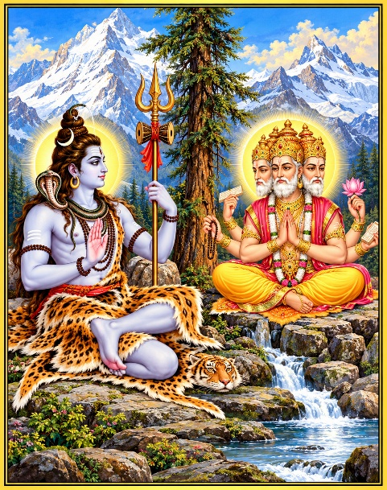
इस प्रकार ध्यानमग्न होकर वन्दना करते हुए पितामह ब्रह्मासे भगवान् ईशान बोले— मैं तुमपर प्रसन्न हूँ। तुम क्या चाहते हो?॥१७½॥
तत्पश्चात् ब्रह्माजीने अत्यन्त निवेदनपूर्वक विशुद्ध वाणीवाले तथा प्रसन्नताको प्राप्त महेश्वरसे प्रसन्न मनसे कहा— हे परमेश्वर! यह आपका जो विश्वरूप है तथा परम कल्याणी यह जो विश्वरूपा गौ है— इसके विषयमें मैं जानना चाहता हूँ॥१८-१९½॥
चार पैरोंवाली, चार मुखवाली, चार सींगोंवाली, चार वक्त्रवाली, चार दाढ़ोंवाली, चार स्तनोंवाली, चार हाथों तथा चार नेत्रोंवाली ये भगवती कौन हैं तथा इन देवीको विश्वरूपा क्यों कहा गया है? इनका नाम तथा गोत्र क्या है? ये किसकी भार्या हैं तथा इनके कर्मका प्रभाव एवं सामर्थ्य क्या है?॥२०-२१½॥
उन ब्रह्माका वह वचन सुनकर ब्रह्मरूप देवदेव वृषध्वज शिवने देवताओंमें श्रेष्ठ अपने पुत्र ब्रह्मासे कहा—॥२२½॥
अब आदिसर्गमें जैसा था, वही पुष्टिकी वृद्धि करनेवाला, पवित्र तथा सभी मन्त्रोंका परम गुह्य रहस्य सुनो। हे प्रभो! यह जो वर्तमान कल्प है, वह विश्वरूप कल्प नामवाला कहा गया है। जिसमें आपने यह ब्रह्मपद प्राप्त किया है और मेरे वाम अंगसे उत्पन्न विष्णुके द्वारा विशुद्ध वैकुण्ठलोक प्राप्त किया गया। हे देव! विष्णुद्वारा प्राप्त वह शुभ पद तुम्हारे ब्रह्मपदसे भी श्रेष्ठ है॥२३-२५½॥
हे देवेश! हे महामते! उस समयसे अब यह तैंतीसवाँ कल्प है और इससे पूर्व लाखों कल्प बीत चुके हैं तथा आपसे पहले लाखों ब्रह्मा भी हो चुके हैं, उनके विषयमें सुनो॥२६-२७॥
आपका माण्डव्य गोत्र है और तपस्यासे मुझे पुत्ररूपमें प्राप्त हुए हैं, अतएव आपको आनन्दरूप तत्त्वमें व्यवस्थित वह ब्रह्मरूप आनन्द जानना चाहिये॥२८॥
आपमें योग, सांख्य (तत्त्वज्ञान), तप, विद्या, विधि, क्रिया, ऋत (प्रियभाषण), सत्य, दया, वेद, अहिंसा, सन्मति, क्षमा, ध्यान, ध्येय (ईश्वर-सन्निधान), इन्द्रियनिग्रह, शान्ति, ज्ञान, अविद्या (माया), बुद्धि, धृति, कान्ति, नीति, प्रथा (ख्याति), मेधा (धारणवती बुद्धि), लज्जा, दृष्टि (दिव्य ज्ञान), सरस्वती (सर्वलक्षणयुक्त वाणी), तुष्टि, पुष्टि, क्रिया (वेदविहित कर्म) तथा प्रसाद— ये बत्तीस गुण प्रतिष्ठित हैं। ककार आदि बत्तीस अक्षरस्वरूपा तथा बत्तीस गुणोंसे युक्त यह विश्वरूपा गाय तुम्हें उत्पन्न करनेवाली है; इसीलिये तुम उन बत्तीस गुणोंसे सम्पन्न हो। हे ब्रह्मन्! प्रकृतिकी रचना मैंने की है और हे प्रभो! आप, भगवान् विष्णु तथा इन्द्र आदि देवता इस महेश्वरीसे प्रसूत हैं। जगत्को उत्पन्न करनेवाली साक्षात् देवी भगवतीस्वरूपा यह चतुर्मुखी प्रकृति गौ मुझसे उत्पन्न होकर प्रतिष्ठाको प्राप्त हुई है, जिसे तत्त्वचिन्तक गौरी, माया, विद्या, कृष्णा, हैमवती, प्रधान तथा प्रकृति— ऐसा कहते हैं॥२९-३४॥
विश्वकी प्रजाओंकी सृष्टि करनेवाली, रक्त-श्वेत-कृष्ण-वर्णवाली, रूपसम्पन्न, अजन्मा तथा अद्वितीय इस विश्वरूपा गायको अपने बुद्धि-विचारसे साक्षात् गायत्री जानो और मैं भी अजन्मा हूँ, मुझे भी विश्वरूप जानो॥३५॥
तदनन्तर ब्रह्माजीसे ऐसा कहकर परमेश्वर महादेवने कई कुमार सृजित किये और इस प्रकार देवीके समीपसे अनेक रूपोंवाले कुमार प्रकट हुए, जिनमें कोई जटाधारी था, कोई मुण्डितसिर था, कोई सिरपर शिखा धारण किये था तथा कोई अर्धमुण्डित सिरवाला था। तदनन्तर सदाचारी, नियत आत्मावाले तथा महान् ओजसे सम्पन्न वे कुमार यथोक्त योगाभ्यास करते हुए देवताओंके एक हजार वर्षतक महेश्वरकी आराधना करके दृढ़ योगयुक्त सम्पूर्ण धर्मोंका उपदेश अपने शिष्यों-प्रशिष्योंको देकर अन्तमें परमेश्वर रुद्रमें प्रवेश कर गये॥३६-३९॥
॥इस प्रकार श्रीलिङ्गमहापुराणके अन्तर्गत पूर्वभागमें ‘ईशानमाहात्म्यकथन’ नामक सोलहवाँ अध्याय पूर्ण हुआ॥१६॥
सत्रहवाँ अध्याय
ब्रह्मा तथा विष्णुके समक्ष ज्योतिर्मय महालिङ्गका प्राकट्य, ब्रह्मा और विष्णुद्वारा हंस एवं वाराहरूप धारणकर लिङ्गके मूलस्थानका अन्वेषण, लिङ्गमध्यसे शब्दमय उमा-महेश्वरका प्रादुर्भाव और ईशानादि पाँच शिवरूपोंकी उत्पत्ति
सूतजी बोले— हे मुनियो! इस प्रकार मैंने शिवजीके सद्योजात आदि अवतारोंका वर्णन संक्षेपमें कर दिया। जो इसे पढ़ता है, सुनता है अथवा श्रेष्ठ द्विजों (ब्राह्मण, क्षत्रिय, वैश्य) को सुनाता है, वह शिवजीके अनुग्रहसे ब्रह्मसायुज्यको प्राप्त होता है॥१½॥
ऋषिगण बोले— हे सूतजी! लिङ्गकी उत्पत्ति किस प्रकार हुई तथा उस लिङ्गमें शंकरजीकी उपासना कैसे की जानी चाहिये? लिङ्ग क्या है तथा लिङ्गी कौन है? यह आप हमें बताइये॥२½॥
रोमहर्षण [सूतजी] बोले— हे ऋषियो! इसी प्रकार अत्यन्त निवेदनपूर्वक देवताओंने भी पितामह ब्रह्मासे पूछा था कि हे भगवन्! यह लिङ्ग कैसे उत्पन्न हुआ तथा लिङ्गमें महेश्वर रुद्रका किस प्रकार पूजन होना चाहिये? लिङ्ग क्या है तथा लिङ्गी कौन है? इसपर वे ब्रह्मा बोले॥३-४½॥
पितामह [ब्रह्माजी] ने कहा— प्रधानको लिङ्ग तथा परमेश्वरको लिङ्गी कहा गया है। हे उत्तम देवताओ! यह मेरी तथा विष्णुकी रक्षाके लिये समुद्रमें प्रकट हुआ था॥५½॥
जब देवताओंकी सृष्टि समाप्त हो गयी, तब वे देवता ऋषियोंके साथ जनलोक चले गये और पुनः स्थिति-कालके पूर्ण होनेपर और इसके बाद हजार चतुर्युगीके अन्तमें पुनः प्रलयके उपस्थित होनेपर वे सत्यलोक चले गये॥६-७॥
उस समय मैं ब्रह्मा बिना किसी आधिपत्यके साम्य-अवस्थाको प्राप्त था। इस प्रकार अन्तमें अनावृष्टिके कारण सभी स्थावर पदार्थोंके सूख जानेपर सभी ओर समस्त पशु, मनुष्य, वृक्ष, पिशाच, राक्षस, गन्धर्व आदि क्रमसे सूर्यकी किरणोंसे दग्ध हो गये॥८-९॥
तत्पश्चात् चारों ओर समुद्र-ही-समुद्रके व्याप्त हो जाने तथा घोर अन्धकार छा जानेपर योगात्मा, निर्मल, उपद्रवरहित, हजार सिरोंवाले, हजार नेत्रोंवाले, हजार पैरोंवाले, हजार भुजाओंवाले, विश्वात्मा, सब कुछ जाननेवाले, सभी देवताओं तथा संसारकी उत्पत्ति करनेवाले, रजोगुणसे युक्त होनेके कारण ब्रह्मा, तमोगुणसे युक्त होनेके कारण स्वयं शंकर, सत्त्वगुणसे युक्त होनेके कारण सर्वव्यापी विष्णु, सबकी आत्मा होनेके कारण महेश्वर, कालात्मा, कालरूप नाभिवाले, शुक्ल, कृष्ण गुणोंसे रहित, नारायण, महान् बाहुवाले तथा सत्-असत्से युक्त सर्वात्मा जलके मध्यमें शयन करने लगे॥१०-१३॥
उन्हें इस प्रकार जल-स्थित कमलपर सोते हुए देखकर मैं उस क्षण उनकी मायासे मोहित हो गया और उन सनातनको हाथसे पकड़कर उठाते हुए क्रोधपूर्वक मैंने उनसे कहा— तुम कौन हो, यह मुझे बताओ?॥१४½॥
तत्पश्चात् मेरे तेज तथा दृढ़ हस्त-प्रहारसे शेषनागरूपी शय्यासे उठकर इन्द्रियोंको वशमें रखनेवाले वे प्रभु उस क्षण बैठ गये॥१५½॥
इसके बाद निद्रासे विक्लिन्न स्वच्छ कमलसदृश नेत्रोंवाले प्रभायुक्त भगवान् हरिने अपने सम्मुख विराजमान मुझ ब्रह्माको देखा और उन भगवान्ने शय्यासे उठकर थोड़ा हँसते हुए मुझसे मधुर-मधुर वाणीमें कहा— हे महाद्युते! हे वत्स! हे पितामह! तुम्हारा स्वागत है, स्वागत है॥१६-१७½॥
हे श्रेष्ठ देवताओ! उनका वह वचन सुनकर रजोगुणसे युक्त होनेके कारण शत्रुतापूर्ण भावसे मैंने मुसकराकर उन जनार्दनसे कहा—॥१८½॥
हे अनघ! सृजन तथा संहार करनेवाले मुझ ब्रह्माको तुम ‘वत्स! वत्स!’ इस प्रकार सम्बोधित करते हुए जैसे गुरु शिष्यसे कहता है, उस प्रकारसे मुसकराकर क्यों बोल रहे हो?॥१९½॥
जगत्के साक्षात् रचयिता, प्रकृतिके प्रवर्तक, सनातन, अजन्मा, पालनकर्ता, विश्वके उत्पत्तिकारक ब्रह्मा, विश्वात्मा, विधाता तथा धारणकर्ता मुझ कमलनयन पितामहसे मोहयुक्त होकर इस प्रकार क्यों बोल रहे हो? इसका कारण शीघ्र बताओ॥२०-२१½॥
इसपर उन्होंने भी मुझसे कहा— सम्पूर्ण जगत्का सृष्टिकर्ता, पालनकर्ता तथा संहारकर्ता मैं (विष्णु) ही हूँ, ऐसा जानो और तुमने भी मुझ शाश्वत परमेश्वरके अंगसे ही अवतार ग्रहण किया है। फिर भी तुम मुझ जगत्पति, नारायण, रोग-विकाररहित, परम पुरुष, परमात्मा, सभीसे आवाहित होनेवाले, पुरुष्टुत, अच्युत, ऐश्वर्यसम्पन्न तथा विश्वकी उत्पत्तिके कारणस्वरूप मुझ विष्णुको भूल गये हो, किंतु इसमें तुम्हारा कोई अपराध नहीं है। यह सब तो मेरी मायाद्वारा रचा गया है॥२२-२४½॥
हे चार मुखवाले ब्रह्मन्! तुम यह सत्य जानो कि सृष्टिका कर्ता, पालक, संहारक तथा सभी देवताओंका स्वामी मैं ही हूँ। मेरे सदृश ऐश्वर्यवाला और कोई नहीं है॥२५½॥
हे पितामह! मैं ही परम ब्रह्म हूँ, मैं ही परम तत्त्व हूँ, मैं ही परम ज्योति हूँ तथा मैं ही परम समर्थ परमात्मा हूँ॥२६½॥
हे चतुर्मुख! इस जगत्में जो भी समस्त स्थावर-जंगम वस्तुएँ दिखायी पड़ रही हैं अथवा जिनके बारेमें सुना जाता है; उन सबको मुझसे व्याप्त किया हुआ जानो॥२७½॥
प्राचीन कालमें मैंने ही स्वयं चौबीस तत्त्वमय व्यक्त सृष्टि रची है। नित्य अन्तको प्राप्त होनेवाले सूक्ष्मातिसूक्ष्म बद्धजीव, क्रोधसे उत्पन्न अन्यान्य तामसी सृष्टि तथा आप (ब्रह्मा)-सहित अनेक ब्रह्माण्ड मेरी मायाके प्रभावसे ही विरचित हैं॥२८-२९॥
मैंने बुद्धिकी रचना की है तथा उसमें तीन प्रकारके अहंकारों (सात्त्विक, राजस, तामस)-का निर्माण किया है। इसी प्रकार अपनी मायासे पाँच तन्मात्राएँ एवं मन, इन्द्रियाँ, आकाश आदि पाँच महाभूतोंकी सृष्टि मैंने ही की है॥३०½॥
यह वचन कहनेके अनन्तर रजोगुणकी वृद्धिसे परस्पर शत्रुता-भावको प्राप्त हम दोनोंमें उस प्रलय-सागरके मध्य भीषण रोमांचकारी संग्राम होने लगा॥३१-३२॥
इसी बीच हम दोनोंके कलहको दूर करने तथा ज्ञान प्रदान करनेके निमित्त एक दीप्तिमान् लिङ्ग हमलोगोंके समक्ष प्रकट हुआ। वह लिङ्ग हजारों अग्नि-ज्वालाओंसे व्याप्त, सैकड़ों कालाग्निके सदृश, क्षय तथा वृद्धिसे रहित, आदि-मध्य-अन्तसे हीन, अतुलनीय, अवर्णनीय, अव्यक्त तथा विश्वका उत्पत्तिकर्तारूप था॥३३-३४½॥
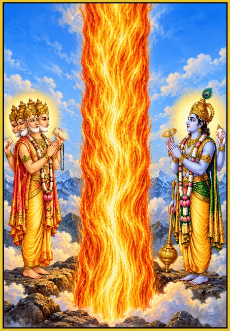
उस लिङ्गकी हजारों ज्वालाओंसे भगवान् विष्णु तथा मैं— दोनों लोग मोहित हो गये। फिर विष्णुने मुझसे कहा कि हमें अग्नि-उद्भूत इस लिङ्गका पता लगाना चाहिये। एतदर्थ मैं इस अनुपम अग्नि-स्तम्भके नीचे जाता हूँ और आप प्रयत्नपूर्वक शीघ्र इसके ऊपर जाइये॥३५-३६½॥
हे देवताओ! ऐसा कहकर विश्वात्मा भगवान् विष्णुने वाराहका रूप धारण कर लिया और मैं भी शीघ्र हंसके रूपको प्राप्त हो गया। उसी समयसे मुझ ब्रह्माको विराट् रूपवाले भगवान् विष्णु ‘हंस’ कहने लगे। जो प्राणी ‘हंस-हंस’ नामसे मेरा कीर्तन करता है, वह हंसत्वको प्राप्त हो जाता है॥३७-३८½॥
हे देवताओ! उस समय मैं अत्यन्त श्वेत वर्णका था, मेरे नेत्र अग्निके समान थे और मैं सभी ओरसे पंखोंसे युक्त था— इस प्रकार हंसरूपमें मैं मनरूपी वायुके वेगसे उड़कर ऊपरकी ओर गया॥३९½॥
उधर विश्वात्मा नारायण विष्णु भी दस योजन चौड़े तथा शत योजन लम्बे और नीले अंजनके समूहसदृश, मेरुपर्वत-तुल्य शरीरवाले, श्वेत तथा तीक्ष्ण दंष्ट्रांकुर एवं विशाल थूथनवाले, छोटे-छोटे पैरोंवाले, विचित्र अंगोंवाले, प्रलयकालीन सूर्यके समान प्रकाशमान, दृढ़, अनुपमेय, भीषण शब्दवाले तथा सर्वथा अपराजेय कृष्णवाराहका रूप धारण करके उस अग्नि-स्तम्भ (लिङ्ग) के नीचेकी ओर गये॥४०-४२½॥
इस प्रकार विष्णुभगवान् एक हजार वर्षतक वेगपूर्वक नीचेकी ओर जाते रहे, किंतु वाराहरूप विष्णु इस लिङ्गके मूलका अल्पांश भी नहीं देख सके॥४३½॥
शत्रुओंका दमन करनेवाला मैं ब्रह्मा भी उस लिङ्गका अन्त जाननेकी इच्छासे पूरे प्रयासके साथ शीघ्रतापूर्वक ऊपरकी ओर जाता रहा॥४४½॥
तत्पश्चात् अहंकारपूर्वक ऊपर गया हुआ मैं उस लिङ्गका अन्त न देखकर अत्यन्त थका हुआ नीचे लौट आया और उसी प्रकार सभी देवताओंके उद्भवकर्ता तथा महान् शरीरवाले वे भगवान् विष्णु भी थकान एवं सन्त्रासभरे नेत्रोंके साथ लिङ्गका मूल न पाकर नीचेसे ऊपर आ गये॥४५-४६॥
शंकरकी मायासे मोहको प्राप्त वे महामना विष्णु मेरे साथ आकर परमेश्वरको प्रणाम करके व्याकुल मनसे खड़े हो गये। इसके बाद मेरे साथ पुनः परमेश्वरको पीछेसे, बगलसे तथा आगेसे प्रणाम करके वे विचार करने लगे कि [आदि-अन्तहीन] यह क्या है?॥४७-४८॥
हे श्रेष्ठ देवताओ! उसी समय वहाँ प्लुत स्वरसे युक्त ‘ओम्-ओम्’ ऐसा अत्यन्त स्पष्ट शब्दरूप नाद सुनायी पड़ा॥४९॥
यह तीव्र शब्द क्या है— ऐसा मेरे साथ विचार करते हुए वे विष्णु खड़े रहे। तभी उन्होंने उस ‘ओम्’ नादके अन्तमें लिङ्गके दक्षिण भागमें सनातन आदि वर्ण अकार, उसके उत्तर भागमें उकार तथा उसके मध्यमें मकार देखा॥५०-५१॥
इस प्रकार सूर्यमण्डलके समान आदि वर्ण अकारको लिङ्गके दक्षिणमें, अग्निके सदृश प्रतीत होनेवाले उकारको उत्तरमें तथा चन्द्रमण्डलके तुल्य मकारको मध्यमें देखनेके बाद उन पुरुषश्रेष्ठ विष्णुने उसके ऊपर तुरीयातीत, अमृतरूप, कलारहित, विकारशून्य, निर्द्वन्द्व, अद्वितीय, शून्यस्वरूप, बाह्य तथा आभ्यन्तरसे रहित, बाह्य तथा आभ्यन्तरसे युक्त, बाह्य तथा आभ्यन्तर दोनों रूपोंमें स्थित, आदि-मध्य-अन्तसे रहित तथा आनन्दके भी कारणस्वरूप शुद्ध स्फटिकके सदृश प्रकाशमान प्रभुको देखा॥५२-५५॥
अकार, उकार और मकाररूप तीन मात्राएँ तथा बिन्दुरूप अर्धमात्रास्वरूपवाला प्रणव ही नाद कहलाता है और वही ब्रह्मसंज्ञावाला है। ऋक् यजुः तथा सामवेद उन तीनों मात्राओंके रूपमें विष्णु ही हैं॥५६॥
उसी वेदरूप शब्दके द्वारा विष्णुने विश्वात्मा ईश्वर शिवका चिन्तन किया। उसी समयसे अतीन्द्रियदर्शक, परम-तत्त्वरूप कल्याणकारी वेद हुआ और उसी ऋषि (वेद) से विष्णुने परमेश्वर शिवको जाना॥५७½॥
देव (ब्रह्मा) बोले— वाणी भी मनके साथ जिन्हें प्राप्त न करके लौट आती है, उन चिन्तारहित भगवान् रुद्रका वाचक एकाक्षर प्रणव ही है और यही एकाक्षर प्रणव उस सृष्टिके परम कारणरूप, सत्य-आनन्द तथा अमृतरूप परात्पर परम ब्रह्मका भी वाचक है॥५८-५९½॥
उसी एकाक्षर प्रणवसे अकारसंज्ञक भगवान् ब्रह्मा, उकारसंज्ञक परमकारणस्वरूप विष्णु तथा मकारसंज्ञक परमेश्वर नीललोहितका प्रादुर्भाव हुआ है॥६०-६१॥
अकारसंज्ञक ब्रह्मा सृष्टिके निर्माता, उकारसंज्ञक विष्णु मोह करनेवाले तथा मकारसंज्ञक शिव उन दोनों ब्रह्मा तथा विष्णुपर सदा अनुग्रह करनेवाले हैं॥६२॥
मकाररूप भगवान् शिव बीजवान्, अकाररूप ब्रह्मा बीज तथा उकाररूप प्रधानपुरुषेश्वर विष्णु योनि कहे जाते हैं॥६३॥
नादरूप महेश्वर शिव ही स्वयं बीजी, बीज तथा योनि— तीनों हैं। वे बीजीरूप महेश्वर स्वेच्छासे अपनेको विभाजित करके प्रतिष्ठित हैं॥६४॥
इन बीजीरूप परमेश्वर शिवके लिङ्गसे अकाररूप बीज (ब्रह्मा), उकाररूप योनि (विष्णु) में गिरकर चारों ओर वृद्धिको प्राप्त होने लगा और वह फिर स्वर्णका अण्ड हो गया। इसके बाद एकाक्षर प्रणवको आदि-अन्तसे आवेष्टित करके वह दिव्य अण्ड बहुत वर्षोंतक जलमें स्थित रहा॥६५-६६॥
तदनन्तर हजार वर्षोंके बाद साक्षात् आदिरूप परमेश्वरने जलमें स्थित उस अजोद्भूत अण्डको दो भागोंमें कर दिया॥६७॥
उस अण्डके ऊर्ध्वस्थित हेममय पवित्र कपालसे आकाश तथा नीचेके भागसे पाँच लक्षणोंसे सम्पन्न पृथ्वीकी उत्पत्ति हुई॥६८॥
उसी अण्डसे अकारसंज्ञक चतुर्मुख ब्रह्मा प्रादुर्भूत हुए। अतएव वही लिङ्गरूप प्रणव सभी लोकोंकी सृष्टि करनेवाला है तथा वही प्रणव अकार-उकार-मकाररूप तीन प्रकारका ईश्वर है॥६९॥
इस प्रकार वह प्रणव ओम्-ओम् रूप ब्रह्म कहा गया है— ऐसा यजुर्वेदके ज्ञाताओंमें श्रेष्ठ मनीषियोंने कहा है और उन यजुर्वेद-ज्ञाताओंके वचन सुनकर उसे ऋग्वेदकी ऋचाओं तथा साममन्त्रोंने भी आदरपूर्वक स्वीकार किया है और इसी तरह सभी श्रुतियोंने उसी ‘ओम्’ को सदा हे हरे! हे ब्रह्मन्! के रूपमें सम्बोधित किया है॥७०½॥
इस वेद-वाक्य आदिसे शिवको यथावत् जानकर हम दोनों वैदिक मन्त्रोंसे महोदय देवेश्वर महादेवकी स्तुति करने लगे॥७१½॥
हम दोनोंके स्तवनसे प्रसन्न होकर मायाके आवरणसे रहित महेश्वर दिव्य शब्दमय रूप धारणकर हँसते हुए उस लिङ्गमें प्रकट हुए॥७२½॥
अकार उनका मस्तक तथा दीर्घ (आकार) उनका ललाट कहा जाता है। इकार दाहिना नेत्र, ईकार बायाँ नेत्र, उकार दाहिना कान, ऊकार बायाँ कान, ऋकार उन परमेष्ठी महेश्वरका दायाँ कपोल, ऋकार उनका बायाँ कपोल, लृ तथा लॄ क्रमशः उनके दाहिने तथा बायें— दोनों नासापुट, एकार ऊपरी ओष्ठ, ऐकार उन प्रभुका नीचेका ओष्ठ, ओकार तथा औकार क्रमशः ऊपर तथा नीचेकी दन्त-पंक्तियाँ, अं तथा अः उन धीमान् देवदेवके क्रमशः ऊपर तथा नीचेके तालु, ककार आदि पाँच अक्षर (क, ख, ग, घ, ङ) उनके दाहिनी ओरके पाँच हाथ, इसी प्रकार चकार आदि पाँच अक्षर बायीं ओरके पाँच हाथ, टकार आदि पाँच अक्षर दायाँ पैर, तकार आदि पाँच अक्षर बायाँ पैर, पकार उन परमेश्वरका उदर, फकार दाहिना पार्श्व, बकार बायाँ पार्श्व, भकार उनका स्कन्ध, मकार परम योगी महादेव शंकरका हृदय, यकारसे लेकर सकारपर्यन्त सात वर्ण (य, र, ल, व, श, ष, स) उन प्रभुके सातों धातु, हकार उनकी आत्मा तथा क्षकार उनका क्रोध कहा गया है॥७३-८०½॥
उमाके साथ उन भगवान् महेश्वरको देखकर पुनः उन्हें प्रणाम करके जब भगवान् विष्णुने ऊपरकी ओर देखा तब उन्हें ॐकारसे उत्पन्न, पाँच कलाओंसे युक्त, बुद्धिविवर्धक तथा सभी धर्म-अर्थको सिद्ध करनेवाला शुद्ध स्फटिक-तुल्य अत्यन्त शुभ्र तथा अड़तीस शुभ अक्षरोंवाला पवित्र मन्त्र (ईशानः सर्वविद्यानाम्०) दृष्टिगोचर हुआ। साथ ही गायत्रीसे उत्पन्न, चार कलाओंवाला, चौबीस अक्षरोंसे युक्त तथा वश्यकारक हरित वर्ण अत्युत्तम मन्त्र (तत्पुरुषाय विद्महे०); अथर्ववेदसे उत्पन्न आठ कलाओंसे युक्त तैंतीस शुभ अक्षरोंवाला कृष्णवर्ण तथा अत्यन्त अभिचारिक अघोर-मन्त्र (अघोरेभ्योऽथ घोरेभ्य०); यजुर्वेदसे प्रादुर्भूत, आठ कलाओंवाला, श्वेतवर्णवाला, शान्तिकारक पैंतीस अक्षरोंसे युक्त पवित्र सद्योजात मन्त्र (सद्योजातं प्रपद्यामि०) एवं सामवेदसे उत्पन्न, रक्तवर्ण, बाल आदि तेरह कलाओंसे युक्त, जगत्का आदि स्वरूप तथा वृद्धि-संहारका कारणरूप छाछठ अक्षरोंवाला उत्तम मन्त्र (वामदेवाय नमो०) दृष्टिगत हुए। इन पाँचों मन्त्रोंको प्राप्तकर भगवान् विष्णुने इनका जप करना आरम्भ कर दिया॥८१-८८॥
तत्पश्चात् समस्त कलाओंकी कान्तिसे युक्त, ऋक्-यजुः-सामस्वरूप, ईशान मन्त्ररूप मुकुटवाले, तत्पुरुष मन्त्ररूप मुखवाले, अघोर मन्त्ररूप करुणामय हृदयवाले, वामदेव मन्त्र-रूप सदा कल्याणकर गुह्यस्थानवाले तथा सद्योजात मन्त्ररूप चरणोंवाले, विशाल सर्पोंका आभूषण धारण करनेवाले, चारों ओर पैर-मुख-आँख धारण किये हुए, सृष्टि-पालन-संहारके कारणस्वरूप, पुरातन पुरुष महादेव ब्रह्माधिपति शिवको देखकर भगवान् विष्णु अभीष्ट स्तुतियोंसे उन वरदाता परमेश्वर ईशानका पुनः स्तवन करने लगे॥८९-९२॥
॥इस प्रकार श्रीलिङ्गमहापुराणके अन्तर्गत पूर्वभागमें ‘लिङ्गोद्भव’ नामक सत्रहवाँ अध्याय पूर्ण हुआ॥१७॥
अठारहवाँ अध्याय
विष्णुद्वारा की गयी भगवान् महेश्वरकी स्तुति तथा उसका माहात्म्य
भगवान् विष्णु बोले— अद्वितीय तथा नाशरहित प्रणवरूप रुद्रको नमस्कार है। अकाररूप परमात्मा तथा उकाररूप आदिदेव विद्यादेहको नमस्कार है॥१॥
तीसरे मकाररूप परमात्मा शिव और सूर्य-अग्नि-चन्द्रवर्णवाले रुद्र तथा यजमानरूपवाले महादेवको नमस्कार है॥२॥
रुद्ररूप अग्निको तथा रुद्रोंके पतिको नमस्कार है। शिवको, शिवमन्त्रको, सद्योजात-रूप वेधाको नमस्कार है॥३॥
सुन्दर वामदेवको, वरदाताको तथा अमृतरूप आप शिवको नमस्कार है। अघोरको, अतिघोरको तथा वेगरूप सद्योजातको नमस्कार है॥४॥
ईशानको, श्मशान (काशीक्षेत्र) को, अतिवेगशालीको, वेगवान्को, श्रुतिपाद (वेदोंसे ज्ञेय) को, ऊर्ध्व लिङ्गको तथा लिङ्गीको नमस्कार है॥५॥
हेमलिङ्गको, हेमको, जललिङ्गको, जलको, शिवको, शिवलिङ्गको, व्यापीको तथा व्योममें व्याप्त रहनेवाले रुद्रको नमस्कार है॥६॥
वायुको, वायुवेगको तथा वायुव्यापीको नमस्कार है। तेजोंके भी तेज तथा तेजको पूर्णतः व्याप्त करनेवाले भरणकर्ता आप रुद्रको नमस्कार है॥७॥
जलको, जलभूत तथा जलमें व्याप्त रहनेवाले आप शिवको नमस्कार है। पृथ्वीको, अन्तरिक्षको तथा पृथ्वीमें व्याप्त रहनेवाले महेश्वरको नमस्कार है॥८॥
शब्द तथा स्पर्शस्वरूपको, रस तथा गन्धस्वरूपको, गन्धीको, गणोंके अधिपतिको तथा गुह्यसे भी गुह्यतम आप रुद्रको नमस्कार है॥९॥
शेषरूप अनन्तको, गरुड़रूप विरूपको, रोग-विकारशून्य अनन्त शिवको, शाश्वत, वरिष्ठ, वारिगर्भको तथा महायोगी महेश्वरको नमस्कार है॥१०॥
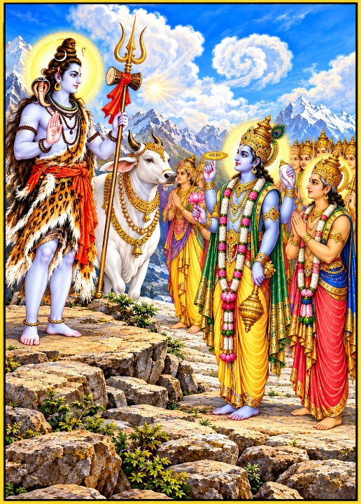
जलके मध्य स्थित रहनेवाले, हम दोनों (विष्णु तथा ब्रह्मा) के मध्य प्रकाशमान, सृष्टिकर्ता, पालनकर्ता, संहारकर्ता तथा मृत्युस्वरूप ईश्वरको नमस्कार है॥११॥
चित्तजन्य ज्ञानसे रहित, चिन्तनके योग्य, जीवोंके जन्म-मरणरूप कष्टोंका हरण करनेवाले, रूपरहित तथा सुन्दर रूपवाले, अंगोंसे रहित कामदेवरूप तथा अंगोंका नाश करनेवाले रुद्रको नमस्कार है॥१२॥
भस्मसे भूषित शरीरवाले, सूर्य-चन्द्र-अग्निके कारणरूप, श्वेतरूप, श्वेत वर्णवाले, हिमाद्रिपर विचरण करनेवाले, अति श्वेतरूपसम्पन्न, सुन्दर वक्त्रवाले तथा श्वेत शिखाधारी, श्वेत मुखवाले, महान् मुखवाले हे श्वेतलोहित! आपको नमस्कार है॥१३-१४॥
सुन्दर कान्तिवाले, विशिष्टतासम्पन्न तथा दुन्दुभि धारण करनेवाले, सैकड़ों रूपोंवाले, विशिष्ट रूपवाले तथा केतुमान् हे हर! आपको सर्वदा नमस्कार है॥१५॥
ऋद्धि-शोक-विशोकस्वरूप, पिनाक धारण करनेवाले, जटाजूट धारण करनेवाले, बन्धनमुक्त, सुन्दर पाश धारण करनेवाले तथा पाशहर आप रुद्रको नमस्कार है॥१६॥
हे भुजंगरूप कंकण (कंगन) धारण करनेवाले! आप श्रेष्ठ यजनकर्ता, हविष्यरूप, सुब्रह्मण्य, महाविद्यासम्पन्न, सुन्दर मुखवाले, शुभ वक्त्रवाले, दुर्दमनीय, दमन करनेवाले, कंक (कपटद्विजरूप), कंकरूप (यम-स्वरूप) को नमस्कार है। आप सनकको नमस्कार है। हे सनातनरूप! हे सनन्दनरूप! हे सनत्कुमाररूप! पशु-पक्षियोंको मारनेके लिये किरातरूप! महात्मा, संसारके नेत्ररूप, तीन धामोंवाले तथा आप विरजको सदा नमस्कार है॥१७-१९॥
शंखपाल, शंखरूप, रज तथा तम गुणोंसे युक्त शिवको नमस्कार है। हे मेघवाहन! आप मेघरूप तथा सारस्वतको नमस्कार है॥२०॥
भलीभाँति सबको वहन करनेवाले, विशिष्ट वाहनवाले, वाद (तर्क-वितर्क) से रहित भक्तोंको वर देनेवाले, प्रधानरूप, कल्याणप्रद रुद्रको नमस्कार है, नमस्कार है॥२१॥
तीन गुणोंवाले आपको नमस्कार है। चतुर्व्यूहरूप आपको नमस्कार है। संसारस्वरूप तथा संसारके कारणरूप आपको बार-बार नमस्कार है॥२२॥
मोक्ष, मोक्षरूप तथा मोक्ष प्रदान करनेवाले आपको नमस्कार है, नमस्कार है। आत्मास्वरूप, ऋषि, स्वामी तथा व्यापक शिवको नमस्कार है॥२३॥
आप भगवान्को नमस्कार है। आप सर्पोंके पतिको नमस्कार है। आप ओंकारको नमस्कार है। सर्वज्ञको बार-बार नमस्कार है॥२४॥
आप सर्व (पूर्णस्वरूप) को नमस्कार है और नारायणको नमस्कार है। हिरण्यगर्भको नमस्कार है, आप आदिदेवको नमस्कार है॥२५॥
अज, प्रजापति, व्यूहहेतु, महादेव तथा देवताओंके ईश्वरको नमस्कार है, नमस्कार है॥२६॥
आप शर्वको नमस्कार है। सत्यरूप, शान्तिरूप, ब्रह्मस्वरूप तथा सर्वज्ञाताको नमस्कार है, नमस्कार है॥२७॥
आप महात्माको नमस्कार है। आप प्रज्ञारूपको नमस्कार है। चिति, चितिरूप तथा स्मृतिरूप आपको नमस्कार है॥२८॥
आप ज्ञानरूप, ज्ञानगम्य तथा चैतन्यरूपको सर्वदा नमस्कार है। आप शिखरको नमस्कार है तथा नीलकण्ठको नमस्कार है॥२९॥
अर्धनारीका शरीर धारण करनेवाले तथा अव्यक्तको बार-बार नमस्कार है। ग्यारह रूपोंमें परिवर्तित होनेवाले आप स्थाणुको सदा नमस्कार है॥३०॥
सोम, सूर्य, भव, भवहारी, यशस्कर, देव, शंकर तथा ईश्वरको नमस्कार है॥३१॥
पार्वतीपतिको नमस्कार है। उमापतिको नमस्कार है। आप हिरण्यबाहु तथा सुवर्णवीर्यको नमस्कार है॥३२॥
नीलकेश, वित्त तथा शितिकण्ठको नमस्कार है। कपर्दी (जटाजूट धारण करनेवाले) तथा अंगोंके आभूषणरूपमें सर्पोंको धारण करनेवाले आपको नमस्कार है॥३३॥
वृषारूढ़ (बैलपर सवार होनेवाले) तथा सभीके कर्ता और हर्ताको बार-बार नमस्कार है। हे विभो! आप वीरराम, अतिराम तथा रामनाथको नमस्कार है॥३४॥
राजाओंके भी अधिराज तथा राजाओंके द्वारा प्राप्त किये जानेयोग्य आपको नमस्कार है। पालाशाकृन्त एवं पालाधिपतिको नमस्कार है॥३५॥
आभूषणके रूपमें सर्पका बाजूबन्द धारण करनेवाले शिवको नमस्कार है। हे गोपते! आपको नमस्कार है, नमस्कार है। श्रीकंठनाथको नमस्कार है। श्रीदण्डपाणिको नमस्कार है॥३६॥
हे वेदशास्त्ररूप! आप भुवनेशदेवको नमस्कार है। आप सारंग तथा राजहंसको नमस्कार है॥३७॥
धतूरेका बाजूबन्द तथा हार धारण करनेवाले एवं सर्पका जनेऊ धारण करनेवाले, सर्पोंका कुण्डल तथा माला पहननेवाले, सर्पका कटिसूत्र (करधनी) धारण करनेवाले, वेदगर्भ, गर्भरूप तथा विश्वगर्भ हे शिव! आपको नमस्कार है॥३८½॥
ब्रह्माजी बोले— इस प्रकार [मुझ] ब्रह्माके साथ विष्णुभगवान् स्तुति करके शान्त हो गये। पुण्य प्रदान करनेवाले तथा सभी पापोंका नाश करनेवाले इस उत्तम स्तोत्रका जो प्राणी पाठ करता है अथवा इसे वेदके पारगामी ब्राह्मणोंको सुनाता है, वह पापकर्ममें लिप्त रहनेपर भी ब्रह्मलोकको प्राप्त करता है। अतएव सभी पापोंकी शुद्धिहेतु मनुष्यको विष्णुद्वारा कहे गये इस स्तोत्रका नित्य जप करना चाहिये, पाठ करना चाहिये तथा इसे धर्मनिष्ठ ब्राह्मणोंको सुनाना चाहिये॥३९-४२॥
॥इस प्रकार श्रीलिङ्गमहापुराणके अन्तर्गत पूर्वभागमें ‘विष्णुस्तव’ नामक अठारहवाँ अध्याय पूर्ण हुआ॥१८॥
उन्नीसवाँ अध्याय
महादेवजीद्वारा ब्रह्मा एवं विष्णुको वर प्रदान करना तथा उमामहेश्वर-पूजनके रूपमें लिङ्गपूजनकी परम्पराका प्रारम्भ
सूतजी बोले— तदनन्तर महादेवजीने कहा— हे श्रेष्ठ देवद्वय (ब्रह्मा, विष्णु)! मैं आप दोनोंपर प्रसन्न हूँ। मुझ महादेवका दर्शन करो और सभी प्रकारके भयका त्याग कर दो॥१॥
आप दोनों महाबली देवता पूर्वकालमें मेरे शरीरसे उत्पन्न हुए थे। सम्पूर्ण लोकोंके पितामह ये ब्रह्मा मेरे दक्षिण (दायें) अंगसे तथा विश्वात्मा और हृदयोद्भव ये विष्णु मेरे बायें अंगसे उत्पन्न हुए हैं। मैं आप दोनोंपर अत्यन्त प्रसन्न हूँ। अतएव यथेच्छ वर माँगो; मैं उसे अभी दूँगा॥२-३॥
इतना कहकर कृपानिधि परमेश्वर महादेवने अपने दोनों सुन्दर हाथोंसे प्रीतिपूर्वक उन विष्णुका स्पर्श किया॥४॥
तब लिङ्गमें विराजित तथा लिङ्गदेहशून्य स्वेच्छासे विग्रह धारण करनेवाले महेश्वरको प्रणाम करके प्रसन्न मनसे नारायण विष्णुने कहा॥५॥
यदि आपके हृदयमें हमारे प्रति प्रीति-भाव उत्पन्न हुआ है और यदि हमें वरदान देना चाहते हैं, तो यही वर दीजिये कि आपके प्रति हम दोनोंकी सदा दृढ़ भक्ति बनी रहे॥६॥
हे देवताओ! चन्द्रमाको आभूषणस्वरूप धारण करनेवाले महादेवने ब्रह्मा तथा विष्णुको अपनी अचल श्रद्धा-भक्ति प्रदान की॥७॥
पुनः जमीनपर घुटना टेककर प्रणाम करते हुए इन्द्रियजित् नारायण विष्णुने साक्षात् विश्वेश्वर महादेवसे अत्यन्त मधुरतासे कहा॥८॥
हे देवदेवेश! हम दोनोंका यह विवाद तो अत्यन्त मङ्गलकारी सिद्ध हुआ; क्योंकि हम दोनोंके इसी विवादको समाप्त करनेके निमित्त आप यहाँ प्रकट हुए हैं॥९॥
उनका यह वचन सुनकर भगवान् शम्भुने दोनों हाथ जोड़े तथा सिर झुकाकर प्रणाम करते हुए वहाँ स्थित विष्णुसे मुसकराकर पुनः कहा॥१०॥
श्रीमहादेवजी बोले— हे पृथ्वीपते! उत्पत्ति, स्थिति तथा संहारके कर्ता आप हैं। हे वत्स! हे वत्स! हे हरे! हे विष्णो! आप इस चराचर जगत्का पालन कीजिये॥११॥
हे विष्णो! मैं निष्कल परमेश्वर ही ब्रह्मा, विष्णु तथा भव (रुद्र) नामोंसे अलग-अलग तीन प्रकारके रूपोंमें सृजन, पालन तथा संहारके गुणोंसे युक्त हूँ॥१२॥
हे विष्णो! आप मोहका त्याग करें और इन पितामहका पालन करें। ये पितामह पाद्म कल्पमें आपके पुत्र होंगे। उस समय आप तथा आपके पुत्ररूप वे कमलोद्भव ब्रह्मा— दोनों लोग मेरा दर्शन प्राप्त करेंगे॥१३-१४॥
ऐसा कहकर वे भगवान् महादेव वहीं अन्तर्धान हो गये॥१३-१४॥
उसी समयसे लोकोंमें शिवलिङ्गके पूजनकी प्रसिद्धि व्याप्त हो गयी। लिङ्गवेदीके रूपमें महादेवी पार्वती तथा लिङ्गरूपमें साक्षात् महेश्वर प्रतिष्ठित रहते हैं॥१५॥
हे देवताओ! समग्र जगत्को अपनेमें लय करनेके कारण यह लिङ्ग कहा गया है। जो विप्र शिवलिङ्गके समक्ष लिङ्ग-आख्यानका प्रतिदिन पाठ करता है, वह शिवत्वको प्राप्त हो जाता है, इसमें किसी भी प्रकारका सन्देह नहीं करना चाहिये॥१६-१७॥
॥इस प्रकार श्रीलिङ्गमहापुराणके अन्तर्गत पूर्वभागमें ‘विष्णुप्रबोध’ नामक उन्नीसवाँ अध्याय पूर्ण हुआ॥१९॥
बीसवाँ अध्याय
शेषशय्यापर आसीन भगवान् विष्णुके नाभिकमलसे ब्रह्माजीका प्रादुर्भाव, भगवान् शिवकी मायासे दोनोंका विमोहित होना, विष्णुद्वारा ब्रह्माके प्रति शिवमाहात्म्यका कथन
ऋषिगण बोले— [हे सूतजी!] प्राचीनकालमें पाद्म कल्पमें ब्रह्माजी कमलसे किस प्रकार जायमान हुए और पुरुषोत्तम विष्णुने उन ब्रह्माके साथ शिवका दर्शन कैसे किया? कृपया अब इन सब वृत्तान्तोंका आप विस्तारपूर्वक वर्णन करें॥१½॥
सूतजी बोले— प्रलयके समय चारों ओर जल-ही-जल तथा घोर, घनीभूत अन्धकार व्याप्त था। उस प्रलयसागरके मध्य शंख-चक्र-गदा धारण किये, नील मेघके सदृश वर्णवाले, कमलके समान नेत्रवाले, मुकुट धारण किये, आठ भुजाओंवाले, विशाल वक्षःस्थलवाले, लोकोंकी योनि कहे जानेवाले, सभी जीवात्माएँ जिनके मुखसे निकली हैं— ऐसे योगात्मा तथा योगवित् सर्वात्मा नारायण पुरुषोत्तम लक्ष्मीपति भगवान् विष्णु किसी अनिर्वचनीय योगमें स्थित होकर, हजार फणोंसे सुशोभित शेषनागके अप्रतिम ओजसम्पन्न, अति उन्नत तथा छायायुक्त फणरूप शय्याको भलीभाँति बिछाकर प्रलय-सागर-स्थित उस महान् पर्यंक (शेषशय्या) पर शयन कर रहे थे॥२-६॥
इस प्रकार वहाँ शयन कर रहे गूढ़ रहस्योंवाले सर्वव्यापी आत्माराम विष्णुने अपनी क्रीड़ाके निमित्त अत्यन्त ऊँचे वज्रदण्डसे युक्त एक कमल, जो शतयोजन विस्तीर्ण तथा प्रखर सूर्यके समान था, अपनी नाभिसे लीलापूर्वक उत्पन्न किया॥७-८॥
कमलके साथ क्रीड़ारत उन देवश्रेष्ठ विष्णुके पास आकर हिरण्यगर्भ, अण्डज, सोनेके वर्णवाले, अतीन्द्रिय, चार मुखवाले तथा विशाल नेत्रोंवाले ब्रह्माने शोभासम्पन्न, दिव्य, सुन्दर तथा सुगन्धित कमलके साथ सुन्दर नयनोंवाले विष्णुको खेलते हुए देखा। तत्पश्चात् उनके सन्निकट पहुँचकर ब्रह्माजीने विस्मयपूर्ण भावसे विनम्रतायुक्त वाणीमें उनसे पूछा— आप कौन हैं और इस समुद्रके मध्य आश्रय लेकर क्यों सो रहे हैं?॥९-११½॥
उन ब्रह्माका यह सुखद वचन सुनकर विष्णुजी पर्यंकसे उठकर बैठ गये और नेत्रोंमें प्रसन्नता भरकर उनके उत्तरमें कहने लगे कि मैं प्रत्येक कल्पमें इसी स्थानका आश्रय लेकर शयन करता हूँ॥१२-१३॥
जो कुछ भी किया जाना है, किया गया है और किया जा रहा है तथा स्वर्गलोक, आकाश, पृथ्वी एवं भुवर्लोक— इन सबका परम पद मैं ही हूँ॥१४॥
उनसे इस प्रकार कहकर भगवान् विष्णुने पुनः उनसे पूछा— ऐश्वर्यसम्पन्न आप कौन हैं तथा मेरे पास कहाँसे आये हैं? आप पुनः कहाँ जायँगे तथा आपका निवासस्थान कहाँ है? विश्वमूर्तिस्वरूप आप कौन हैं तथा मैं आपके लिये क्या करूँ?॥१५-१६॥
विष्णुके ऐसा कहनेपर महात्मा शिवकी मायासे मोहित होनेके कारण भगवान् जनार्दनको पहचाने बिना पितामह ब्रह्मा उन्हीं शिवकी मायासे मोहको प्राप्त अविज्ञात विष्णुदेवसे कहने लगे, जिस प्रकार आप इस जगत्के आदिकर्ता तथा प्रजापति हैं, वैसे ही मैं भी हूँ॥१७-१८॥
जगत्के रचयिता ब्रह्माजीका यह विस्मयकारी वचन सुनकर और उनकी आज्ञा लेकर विश्वकी उत्पत्ति करनेवाले योगी महायोगी विष्णुभगवान् कौतूहलवश ब्रह्माके मुखमें प्रविष्ट हो गये॥१९॥
ब्रह्माजीके उदरमें प्रवेश करके वहाँपर अठारह द्वीपों, सभी समुद्रों, समस्त पर्वतों, ब्राह्मण आदि चार वर्णोंके जनसमूहों, सनातन सात लोकों तथा ब्रह्मासे लेकर तृणपर्यन्त सभी स्थावर-जंगम पदार्थ देखकर महाभुज महातेजस्वी विष्णुभगवान् अत्यन्त विस्मित हुए। ‘अहो! इनकी तपस्याका ऐसा प्रभाव’ — ऐसा बार-बार कहते हुए विष्णुभगवान् उदरके अन्दर विविध लोकों तथा अनेक स्थानोंपर हजार वर्षोंतक भ्रमण करते रहे, किंतु जब उसका अन्त नहीं पा सके, तब वे शेषशायी जगदाधार नारायण उन ब्रह्माके मुखमार्गसे बाहर निकलकर उनसे कहने लगे॥२०-२४॥
हे अनघ! आप भगवान् हैं। आप आदि, अन्त, मध्य, काल, दिशा, आकाश आदिसे युक्त हैं। मैं आपके उदरका अन्त नहीं देख पाया॥२५॥
ऐसा कहकर भगवान् विष्णुने ब्रह्मासे पुनः यह कहा — हे सुरश्रेष्ठ! मैं भी इसी तरह भगवान् हूँ। अब आप भी मेरे शाश्वत उदरमें प्रवेश करके इन्हीं अनुपम लोकोंका दर्शन करें॥२६½॥
लक्ष्मीकान्त विष्णुकी यह आह्लादकारिणी वाणी सुनकर उन्हें प्रसन्न करते हुए ब्रह्माजी उनके उदरमें प्रविष्ट हुए॥२७½॥
सत्य पराक्रमवाले ब्रह्माजीने विष्णुके उदरमें स्थित उन्हीं सब लोकोंको देखा और उसमें बहुत भ्रमण करनेके उपरान्त भी विष्णुदेवके उदरका अन्त नहीं पा सके॥२८॥
सभी इन्द्रियद्वारोंको निरुद्ध करके मैं सुखपूर्वक सो लिया ऐसा सोचकर और ब्रह्माजीकी गतिको जानकर सर्वव्यापक विष्णुजीने शीघ्र ही उनकी अभिलाषा पूर्ण करनेकी इच्छा की॥२९॥
तत्पश्चात् सभी द्वारोंको बन्द देखकर पितामहने अत्यन्त सूक्ष्म रूप धारण करके नाभिमें मार्ग पाया तथा पद्मसूत्र (कमलनाल) के सहारे पुष्कर (कमल)-से स्वयंको बाहर निकाला, तदनन्तर पद्मगर्भके समान कान्तिवाले जगद्योनि स्वयम्भू पितामह भगवान् ब्रह्मा कमलके ऊपर शोभित हुए॥३०-३२॥
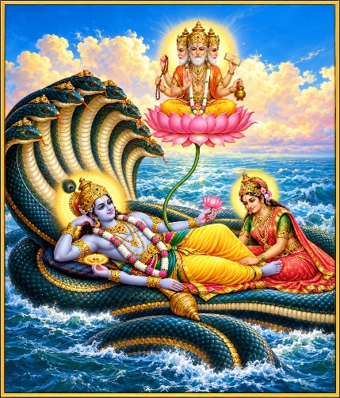
उस समुद्रके मध्य ब्रह्मा और विष्णुमें अनेक प्रकारसे संघर्ष चल रहा था, उसी समय श्रेष्ठ स्वर्णके समान वस्त्रको धारण करनेवाले, अमेय आत्मावाले, जीवोंके स्वामी शूलपाणि महादेव कहींसे वहाँपर पहुँच गये, जहाँ वे शेषशायी अनन्त विष्णुभगवान् थे॥३३-३४½॥
उनके शीघ्रतापूर्वक चलनेसे चरणोंके प्रहारसे संपीडित होकर समुद्र-जलकी बड़ी-बड़ी बूँदें आकाशतक पहुँचने लगीं और वहाँ कभी अत्यन्त गर्म तथा कभी अत्यन्त शीतल वायु बहने लगी॥३५-३६॥
उस महान् आश्चर्यको देखकर ब्रह्माने विष्णुसे कहा कि ये शीतल एवं उष्ण जलकी बूँदें इस कमलको अत्यधिक कम्पायमान कर रही हैं। इस विषयमें मेरी शंकाका समाधान कीजिये अथवा आप कुछ और करना तो नहीं चाहते?॥३७½॥
ब्रह्माके मुखसे निर्गत इस प्रकारकी बात सुनकर अप्रतिम कर्मवाले असुरसंहारक भगवान् विष्णु सोचने लगे कि मेरी नाभिमें इस कौन-से जीवने अपना स्थान बना लिया है, जो इस तरह प्रेमपूर्वक मधुर-मधुर बोल रहा है; तथा मैंने इसके प्रति कहीं क्रोध किया है — ऐसा मनमें ध्यान करके विष्णुभगवान् यह उत्तर देने लगे॥३८-४०॥
आप भगवान् हैं और आपको यहाँ कमलके विषयमें व्याकुलता क्यों हो रही है? हे देव! मैंने कौन-सा श्रेष्ठ कार्य किया है, जो आप मुझसे प्रेमपूर्वक बोल रहे हैं? हे पुरुषश्रेष्ठ! इसका कारण मुझे यथार्थ रूपसे बताइये॥४१½॥
लोकयात्राका अनुवर्तन करनेवाले तथा कमलकी आभाके समान नेत्रवाले देवेश्वर विष्णुके इस प्रकार बोलनेपर वेदनिधि प्रभु ब्रह्माने उनसे कहा॥४२½॥
यह मैं आपकी ही इच्छासे पूर्वकालमें आपके उदरमें प्रविष्ट हुआ था। हे प्रभो! जिस प्रकार प्रथम मेरे उदरमें प्रवेश करके आपने सभी लोकोंको देखा था, उसी प्रकार मैंने भी आपके उदरमें उन सम्पूर्ण लोकोंका दर्शन किया है॥४३-४४॥
हे अनघ! वहाँ मैं हजार वर्षोंतक चक्कर लगाता रहा। इसके बाद ईर्ष्याभावसे युक्त होकर आपने मुझे वशमें करनेकी इच्छासे चारों ओरसे सभी इन्द्रियद्वार शीघ्रतापूर्वक बन्द कर लिये॥४५½॥
तदनन्तर हे महाभाग! मैं अपने तेजके प्रभावसे विवेकपूर्वक अतिसूक्ष्मरूप धारणकर आपके नाभि-स्थलसे कमलनालके सहारे बाहर निकल आया। इसके लिये आपके मनमें थोड़ा भी विषाद नहीं होना चाहिये॥४६-४७॥
हे विष्णो! जो यह मेरा बाहर निकलना हुआ है, वह किसी विशेष कार्यके लिये है। अब आप मुझे यह बताइये कि मैं क्या करूँ?॥४८॥
तदनन्तर पितामह ब्रह्माकी प्रिय, मधुर, पवित्र तथा कल्याणमयी वाणी सुनकर हिरण्यकशिपुके शत्रु अप्रमेयात्मा भगवान् विष्णुने ईर्ष्यारहित होकर उनसे यह वचन कहा कि आपके नाभिकमलोद्भवरूप इस कार्यके लिये मैंने कोई प्रयास नहीं किया है॥४९-५०॥
आपको बोध करानेकी इच्छासे मैंने तो क्रीड़ापूर्वक दैवयोगसे यों ही अपने सभी दरवाजे शीघ्र बन्द कर लिये थे। इसे आप कुछ भी अन्यथा न समझें। हे कल्याणकारक! आप मेरे मान्य तथा पूज्य हैं, अतएव मैंने आपका जो भी अपकार किया है, वह सब आप क्षमा करें॥५१-५२॥
हे प्रभो! मेरे द्वारा वहन किये जाते हुए आप अब कमलसे उतर आइये; क्योंकि आपके अत्यन्त गुरुतर तथा तेजसम्पन्न होनेके कारण मैं आपका भार सहन करनेमें समर्थ नहीं हूँ॥५३॥
तब ब्रह्माने कहा कि आप मुझसे वरदान माँगिये। इसपर विष्णु कहने लगे — हे प्रभो! आप कमलसे नीचे उतर आइये और यही वर दीजिये कि आप मेरे पुत्र बनेंगे। हे शत्रुदलन! इससे आपको भी अपार हर्ष प्राप्त होगा॥५४॥
हे प्रभो! आप सद्भावनापूर्ण वचन बोलिये और कमलसे नीचे उतर आइये। आप महायोगी तथा प्रणवरूप हैं। आप हमारे पूज्य हैं। आजसे आप सबके सर्वेश, श्वेतोष्णीषसे विभूषित तथा पद्मयोनि नामसे विख्यात होंगे॥५५-५६॥
स्वामी हैं तथा श्वेत पगड़ीसे सदा शोभायमान रहेंगे और इस प्रकार ‘पद्मयोनि’ नामसे लोकमें प्रसिद्ध होंगे। हे ब्रह्मन्! हे प्रभो! आप मेरे पुत्र तथा सात लोकोंके स्वामी हों॥५५-५६½॥
तत्पश्चात् किरीटधारी विष्णुसे ‘ऐसा ही होगा’ कहकर अर्थात् वर देकर ब्रह्माजी प्रसन्नतायुक्त तथा द्वेषरहित हो गये। इसके बाद पितामहने उदीयमान सूर्यकी आभाके समान विशाल मुखवाले तथा अत्यन्त अद्भुत रूपवाले शिवको अति समीप आते हुए देखकर भगवान् विष्णुसे कहा—॥५७-५८½॥
हे विष्णो! अप्रमेय, विशाल वक्त्रसम्पन्न, वाराहके समान दाढ़ोंवाला, फैले हुए केशोंवाला, दश भुजाओंवाला, त्रिशूलधारी, नेत्रोंसे हर जगह स्थित अर्थात् सर्वदर्शी, मुंजकी मेखला धारण किये, विकृत रूपवाला, उन्नत तथा विशाल मेढ्रवाला, अत्यन्त भयंकर ध्वनि करता हुआ साक्षात् लोक-प्रभुतुल्य, महान् कान्तिसम्पन्न तथा तेजपुंज-सा यह कौन प्राणी सभी दिशाओं तथा आकाशको व्याप्त करके इधर ही चला आ रहा है?॥५९-६१½॥
ब्रह्माके इस प्रकार कहनेपर भगवान् विष्णुने उनसे कहा— इस सागरमें चलनेके कारण जिनके दोनों पैरोंके आघातसे आकाशमें महान् वेगसे जलाशय उठ रहे हैं, सभी ओर उठी हुई विशाल जल-बूँदोंसे आप सिक्त हो चुके हैं, जिनकी नासिकासे निकली वायुसे आपके साथ कम्पायमान यह महापद्म— जो मेरी नाभिसे उत्पन्न है, स्वच्छन्दतापूर्वक दोलायमान हो रहा है, वे ही आदि-अन्तरहित पार्वतीनाथ प्रभु शिव आ रहे हैं। अब हम दोनों मिलकर स्तोत्रके द्वारा इन वृषध्वज महादेवकी प्रार्थना करें॥६२-६५½॥
तत्पश्चात् कमलकी आभाके समान नेत्रोंवाले भगवान् विष्णुसे ब्रह्माजीने कुपित होकर कहा कि लोकोंके स्वामी तथा सर्वव्यापी स्वयं अपनेको एवं जगत्के कर्ता मुझ सनातन ब्रह्माको आप नहीं जानते। हम दोनोंसे बढ़कर यह शंकर नामवाला कौन है?॥६६-६७½॥
उन ब्रह्माका वह क्रोधयुक्त वचन सुनकर भगवान् विष्णु बोले— हे कल्याणकारक! महात्मा शिवके लिये ऐसा निन्दित वचन मत बोलिये। ये महादेव साक्षात् धर्मस्वरूप हैं, अत्यन्त प्रचण्ड हैं, महायोग प्रदीप्त करनेवाले तथा वर प्रदान करनेवाले हैं॥६८-६९॥
ये शिव ही इस जगत्के कारण हैं। ये प्राचीन पुरुष हैं, समस्त बीजों अर्थात् कारणोंके मूल बीज अर्थात् परम कारण हैं, निर्विकार हैं एवं एकमात्र ज्योतिके रूपमें जगत्को प्रकाशित कर रहे हैं। जिस प्रकार बच्चे खिलौनोंसे खेलते हैं, उसी प्रकार ये महादेव स्वयं जगत्के साथ खेलते रहते हैं अर्थात् नानाविध लीलाएँ रचते रहते हैं॥७०½॥
प्रधान, अव्यय, योनि, अव्यक्त, प्रकृति, तम, नित्य आदि ये नाम मुझ प्रसवधर्मीके हैं और जिनके विषयमें आपने पूछा है कि ये कौन हैं, वे शिव जन्म-मरण आदि दुःखोंका भलीभाँति अनुभव करके वैराग्यको प्राप्त यतियोंद्वारा दृष्टिगत किये जाते हैं। ये शिव बीजवान् हैं, आप (ब्रह्मा) बीज हैं तथा सनातनरूप मैं (विष्णु) योनि हूँ॥७१-७२½॥
विष्णुके इस प्रकार कहनेपर विश्वात्मा ब्रह्माने उनसे पूछा— आप योनि, मैं बीज तथा महेश्वर शिव बीजी (बीजवान्) किस प्रकार हैं? आप मेरे इस सूक्ष्म तथा अव्यक्त संदेहका निवारण करनेकी कृपा करें॥७३-७४॥
अनेक प्रकारसे लोकतन्त्री ब्रह्माकी उत्पत्ति जानकर भगवान् विष्णुने उनके इस परम निगूढ़ प्रश्नका उत्तर दिया। इन महादेवसे बढ़कर अन्य कोई भी गूढ़ तत्त्व नहीं है। महत्तत्त्वका सर्वोत्कृष्ट स्थान अध्यात्मज्ञानियोंका कल्याणमय पद है॥७५-७६॥
उन्होंने अपनेको सगुण तथा निर्गुण— इन दो रूपोंमें विभाजित किया। उनमें जो निर्गुण हैं, वे अव्यक्तरूपमें तथा जो सगुण हैं, वे महेश्वररूपमें प्रतिष्ठित हैं॥७७॥
प्राचीनकालमें सृष्टिके आदिमें मायाकी विधिको भी जाननेवाले, अगम्य तथा दुर्बोध उन्हीं महादेवके लिङ्गसे प्रादुर्भूत बीज सर्वप्रथम मेरी योनिमें गिरा। पुनः कालान्तरमें उस सागररूप योनिमें वह बीज स्वर्णके अण्डमें परिवर्तित हो गया॥७८-७९॥
एक हजार वर्षोंतक वह अण्ड जलमें ही स्थित रहा; इस अवधिके अन्तमें वायुके द्वारा यह दो भागोंमें विभक्त हो गया। एक खण्डसे आकाश तथा दूसरे खण्डसे पृथ्वीका प्रादुर्भाव हुआ। यह अति उन्नत जो स्वर्णपर्वत मेरु है, वह उस अण्डके गर्भावरणसे निर्मित हुआ॥८०-८१॥
तत्पश्चात् प्रतिसन्ध्यात्मा देवाधिदेव हिरण्यगर्भ चतुर्मुख महाप्रभु भगवान् ब्रह्मा आविर्भूत हुए॥८२॥
तारा, सूर्य, चन्द्र तथा नक्षत्रपर्यन्त समस्त लोकोंको शून्य देखकर ‘मैं कौन हूँ’— ऐसा आपके विचार करनेपर पुनः एक हजार वर्षके अनन्तर यतियोंके पूर्वज, यत्नशील, प्रिय दर्शनवाले, समस्त भुवनोंको अपने तेजसे व्याप्त करनेवाले, कमलपत्रके समान विशाल नेत्रोंवाले श्रीमान् सनत्कुमार, ऋभु, सनक, सनातन तथा सनन्दन नामक वे कुमार आपके पुत्ररूपमें आविर्भूत हुए, जिनमें सनत्कुमार तथा ऋभु ऊर्ध्वरेता थे। बुद्धि तथा इन्द्रियोंसे अगोचर, विशिष्ट ज्ञानसम्पन्न, जगत्की स्थितिके कारणरूप तथा तीन प्रकारके तापोंसे रहित वे कुमार एक साथ उत्पन्न हुए थे, जिनकी कर्ममार्गमें प्रवृत्ति नहीं थी॥८३-८७॥
जीवनमें सुख कम तथा दुःख अधिक है, जीवन जरा तथा शोकसे युक्त है, जीवनमें जन्म तथा मरण बार-बार होते रहते हैं, स्वर्गमें अत्यल्प सुख तथा नरकमें दुःख-ही-दुःख है और भावी अटल है— ये सब बातें अवश्यम्भावी हैं, ऐसा जानकर ऋभु तथा सनत्कुमारको आपके वशमें स्थित देखकर त्रिगुणातीत सनक-सनातन-सनन्दन— ये आपके तीनों महातेजस्वी पुत्र अध्यात्मसम्बन्धी ब्रह्मज्ञानकी ओर प्रवृत्त हो गये॥८८-९०½॥
तत्पश्चात् उन सनक आदि तीनों कुमारोंके ज्ञानमार्गमें प्रवृत्त हो जानेपर आप महादेवकी मायासे विमूढ़ (मोहित) हो गये। हे अनघ! इस प्रकार कल्पके प्रवृत्त होनेपर आपका ज्ञान नष्ट हो जाया करता है॥९१-९२॥
कल्पमें जो सूक्ष्म जीव तथा पार्थिव पदार्थ अवशिष्ट रह जाते हैं। उन सबको जाग्रत् करनेवाली शक्ति ही ऐश्वरी माया कही गयी है॥९३॥
जिस प्रकार यह मेरुपर्वत देवलोकके रूपमें प्रसिद्ध है, उसी प्रकार उन देवश्रेष्ठ महादेवके इस माहात्म्यको भी प्रसिद्ध समझिये॥९४॥
परमेश्वर महादेवका सद्भाव जानकर तथा मुझ कमलनयनको जानकर प्रणवयुक्त साममन्त्रोंके द्वारा भूतोंके भी महाभूत वरदाता जगद्गुरु प्रभु महादेवको नमस्कार करके उठिये, अन्यथा ये क्रोधित होकर अपने निःश्वाससे मुझे तथा आपको दग्ध कर डालेंगे॥९५-९६॥
इस प्रकार उनके महान् योग तथा अमित बलको जानकर आपको आगे करके अग्निसदृश प्रभावाले महादेवके निकट खड़ा होकर मैं उनकी स्तुति करूँगा॥९७॥
॥इस प्रकार श्रीलिङ्गमहापुराणके अन्तर्गत पूर्वभागमें ‘ब्रह्मप्रबोधन’ नामक बीसवाँ अध्याय पूर्ण हुआ॥२०॥
इक्कीसवाँ अध्याय
ब्रह्मा तथा विष्णुद्वारा की गयी भगवान् महेश्वरकी स्तुति एवं उसका माहात्म्य
सूतजी बोले— तदनन्तर ब्रह्माको आगे करके वे गरुड़ध्वज भगवान् विष्णु अतीत, भविष्य तथा वर्तमान कल्पोंसे सम्बन्धित महादेवजीके वेदप्रतिपादित नामोंसे इस स्तोत्रका वाचन करने लगे॥१½॥
विष्णुजी बोले— हे सुव्रत! आप अनन्त तेजसम्पन्न भगवान्को नमस्कार है। क्षेत्राधिपति, बीजी तथा त्रिशूलधारीको नमस्कार है। सुमेंद्र (सुन्दर लिङ्गवाले), अर्घ्यमेंद्र (पूजनीय लिङ्गवाले), दण्डी तथा रूक्षरेता (रूक्ष वीर्यवाले) को नमस्कार है॥२-३॥
ज्येष्ठको, श्रेष्ठको, पूर्वको तथा प्रथमको नमस्कार है। मान्यको, पूज्यको तथा सद्योजातको नमस्कार है॥४॥
गह्वर (अगम्य) को, घटेश (चेष्टमान जीवोंके स्वामी) को तथा आकाश एवं वृक्षकी छालको अम्बर (वस्त्र)-के रूपमें धारण करनेवाले तथा हम-जैसे प्राणियोंके स्वामीको नमस्कार है॥४-५॥
वेदोंके स्वामी तथा स्मृतियोंके स्वामीको नमस्कार है। कर्मों तथा दान आदिके स्वामी और द्रव्योंके स्वामीको नमस्कार है॥६॥
योगके प्रभुको नमस्कार है और सांख्यके प्रभुको नमस्कार है। ध्रुवसे सम्बन्धित ऋषियों अर्थात् सप्तर्षियोंके प्रभुको नमस्कार है॥७॥
नक्षत्रोंके स्वामीको नमस्कार है, ग्रहोंके स्वामीको नमस्कार है, आपको नमस्कार है। विद्युताग्निसे युक्त मेघोंकी गर्जनाके स्वामीको नमस्कार है॥८॥
महासागरोंके स्वामी तथा द्वीपोंके स्वामीको नमस्कार है। पर्वतों तथा भारत आदि नौ वर्षोंके स्वामीको नमस्कार है। नदियों तथा नदोंके स्वामीको नमस्कार है। महौषधियों तथा वृक्षोंके स्वामीको नमस्कार है॥९-१०॥
अनेकविध धर्मोंके कारणरूप धर्मवृक्षको नमस्कार है, धर्मको नमस्कार है तथा स्थितियोंके स्वामीको नमस्कार है। परार्धके स्वामी तथा परके स्वामीको नमस्कार है॥११॥
सभी रसोंके स्वामी तथा रत्नोंके स्वामीको नमस्कार है। क्षणोंके स्वामी तथा लवों (क्षणांश) के स्वामीको नमस्कार है। दिन, रात, अर्धमास (पक्ष) तथा मासोंके स्वामीको नमस्कार है। ऋतुओंके स्वामी तथा संख्याओंके स्वामी आप शिवको नमस्कार है॥१२-१३॥
अपरार्ध तथा परार्धके स्वामीको नमस्कार है। पुराणोंके स्वामीको नमस्कार है। सर्गोंके स्वामीको नमस्कार है। मन्वन्तरोंके स्वामी तथा योगके स्वामीको नमस्कार है। (जरायुज, अण्डज, स्वेदज तथा उद्भिज्जरूप) चार प्रकारकी सृष्टिके स्वामीको नमस्कार है। अनन्त ज्योतिको नमस्कार है॥१४-१५॥
कल्पके उदयमें प्रणीत धर्मशास्त्रों तथा वार्ताओं (कृषि एवं वाणिज्यशास्त्रों) के स्वामीको नमस्कार है। विश्वके स्वामीको नमस्कार है। ब्रह्माधिपतिको नमस्कार है। विद्याओंके स्वामी तथा विद्याधिपतिको नमस्कार है। व्रतोंके स्वामीको नमस्कार है। व्रताधिपतिको नमस्कार है॥१६-१७॥
मन्त्रोंके स्वामी तथा मन्त्रोंके अधिपति आपको नमस्कार है। पितरोंके पति तथा पशुओंके पतिको नमस्कार है। श्रेष्ठ वाणीवाले तथा पुराणश्रेष्ठ आप शिवको नमस्कार है। पशुओंके पति तथा गोवृषेन्द्रध्वजको नमस्कार है॥१८-१९॥
प्रजाओंके पति तथा सिद्धियोंके पतिको नमस्कार है। दैत्य, दानव तथा राक्षससमूहोंके पतिको नमस्कार है। गन्धर्वों तथा यक्षोंके पतिको नमस्कार है। गरुड़, उरग, सर्प तथा पक्षियोंके पतिको नमस्कार है॥२०-२१॥
सभी गुप्त पिशाचोंके गुह्याधिपतिको नमस्कार है। गोकर्ण, गोप्ता तथा शंकुकर्णको नमस्कार है। वाराहको, अप्रमेयको, ऋक्षको तथा विरजको नमस्कार है। देवताओंके पति तथा गणोंके पतिको नमस्कार है॥२२-२३॥
जलोंके पति तथा ओजोंके पतिको नमस्कार है। लक्ष्मीपति, लक्ष्मीके रक्षक तथा पृथ्वीके पालनकर्ताको नमस्कार है। शक्तिमान् तथा शक्तिहीन प्राणियोंके समुच्चयरूप शिवको नमस्कार है। अक्षोभ्यक्षोभणको नमस्कार है। दीप्तशृंग, एकशृंग, वृषभ तथा ककुद्मीको नमस्कार है॥२४-२५॥
स्थैर्य, तेजोमयवपु तथा अनुव्रतको नमस्कार है। अतीत, भविष्य तथा वर्तमानरूप शिवको नमस्कार है। सुवर्चा, वीर्य, शूर, अजित, वरद, वरेण्य, पुरुष तथा महात्माको नमस्कार है॥२६-२७॥
भूत, भव्य, महत् तथा प्रभवको नमस्कार है। जन, तप तथा वरदको नमस्कार है; आपको नमस्कार है। अणु (परम सूक्ष्म), महत् (महा-आकारसम्पन्न) तथा सर्वगत (सर्वत्र व्याप्त रहनेवाले) को नमस्कार है। बन्ध (जन्म-मरण-बन्धन), मोक्ष, स्वर्ग तथा नरकरूपको नमस्कार है॥२८-२९॥
भव, देव, इज्य (देवताओंके आचार्य) तथा याजक (यज्ञ करानेवाले) को नमस्कार है। प्रत्युदीर्ण (महान्), दीप्त (आलोकयुक्त), तत्त्व तथा अतिगुण (गुणातीत) को नमस्कार है। पाश, शस्त्र तथा आभरणको नमस्कार है। हुत (हविद्रव्यरूप), उपहूत (यज्ञ आदिमें आवाहन किये जानेवाले), प्रहुतप्राशित (भक्तिपूर्वक दी गयी आहुतिको भोज्यरूपमें ग्रहण करनेवाले) शिवको नमस्कार है॥३०-३१॥
इष्ट (यज्ञकर्म आदि), पूर्त (कूप-तड़ागादि-निर्माण), अग्निष्टोमद्विजरूप शिवको नमस्कार है। सदस्यरूप, दक्षिणारूप तथा अवभृथ (यज्ञकी समाप्तिके अनन्तर शुद्धिके लिये किये जानेवाले स्नान)-रूप शिवको नमस्कार है। अहिंसा-अप्रलोभ-पशुमन्त्रौषधरूप, पुष्टिप्रदायक, सुशील तथा सदाचारीको नमस्कार है॥३२-३३॥
अतीत, भविष्य तथा वर्तमानकालरूप अर्थात् सर्वकालव्यापी शिवको नमस्कार है। सुवर्चा (महान् शक्तिमान्), वीर्य, शूर, अजित, वरद, वरेण्य, पुरुष, महात्मा, भूत, भव्य, महत् तथा अभयरूप शिवको नमस्कार है॥३४-३५॥
जरासिद्ध (नित्य तरुणरूप), सुवर्णरूप तथा वरदानी शिव आपको नमस्कार है। अधोरूप, महान्रूप तथा निद्रितोंके पतिको नमस्कार है॥३६॥
इन्द्रियरूप वाहनवाले, आस्वादनरूप, हार धारण करनेवाले, विश्व, विश्वरूप तथा सभी ओरसे सिरवाले शिवको नमस्कार है। सभी दिशाओंमें हाथों तथा पैरोंवाले, अप्रतिम, हव्य, कव्य तथा हव्यवाहरूप रुद्रको नमस्कार है॥३७-३८॥
सिद्ध, पवित्रात्मा, यज्ञरूप, यज्ञपरायण, सुवीर, सुघोर, अक्षोभ्यका भी क्षोभण करनेवाले, सुन्दर प्रजाओंवाले, तीव्र मेधावाले, दीप्त, भास्कर, बुद्ध, शुद्ध, प्रतिष्ठित तथा विस्तृत शिवको नमस्कार है॥३९-४०॥
स्थूल, सूक्ष्म, दृश्य, अदृश्य, वृष्टि, ताप, वायु तथा शिशिर (ठंड)-रूप शिवको नमस्कार है। वक्रकेश (टेढ़े बालोंवाले) तथा उन्नत ऊरुप्रदेश एवं वक्षःस्थलवाले शिवको नमस्कार है। सुन्दर वर्णवाले तथा तप्त स्वर्णके तुल्य आभावाले शिवको बार-बार नमस्कार है॥४१-४२॥
विरूपाक्ष, लिङ्गरूप, पिंगल, महान् ओजसे सम्पन्न, वृष्टिका अवरोध करनेवाले तथा सौम्य दृष्टिवाले शिवको नमस्कार है, नमस्कार है॥४३॥
धूम्रश्वेत, कृष्ण, लोहित, पिशित, पिशंग तथा पीतरूप धनुर्धर शिवको नमस्कार है। विशेषतायुक्त तथा विशेषतारहित शिवको नमस्कार है। ईज्य, पूज्य तथा उपजीव्यको नमस्कार है॥४४-४५॥
क्षेम्य, वृद्ध, वत्सलको बार-बार नमस्कार है। भूत, सत्य तथा सत्य-असत्यरूप शिवको नमस्कार है। पद्मवर्ण, मृत्युके विनाशक तथा मृत्युरूप शिवको नमस्कार है। गौर, श्याम, कद्रू (भूरावर्ण) तथा लोहितवर्ण शिवको नमस्कार है॥४६-४७॥
महासन्ध्याकालीन बादलोंके समान वर्णवाले, सुन्दर दीप्तिवाले, दीक्षा प्रदान करनेवाले, हाथमें कमल धारण करनेवाले, दिग्वास (दिशाओंमें वास करनेवाले अथवा दिगम्बर) तथा जटाजूटधारी शिवको नमस्कार है। अप्रमाणरूप (इयत्तारहित), समग्ररूप, अव्यय, मरणरहित, रूप, गन्ध, नित्य तथा अविनाशी शिवको नमस्कार है॥४८-४९॥
उपस्थित होकर पालन-पोषण करनेवाले, अस्थिर, कर्मरूप, दुर्गम, महेश, क्रोधरूप, कपिल, तर्क-अतर्कसे परे विग्रहवाले, बलवान्, वेगरूप, बालुकामें विराजमान, प्रवाहरूप, स्थित, व्यापक, उत्तम मेधासम्पन्न, पृथिवीका लालन-पालन करनेवाले, चन्द्रकला धारण करनेवाले, चित्ररूप, विचित्र वेष धारण करनेवाले, विचित्र वर्णवाले तथा यज्ञरूप शिव आपको नमस्कार है॥५०-५२॥
चेकितान (विशिष्ट ज्ञानवाले), संतोषरूप तथा निहित (अत्यन्त हितकारक) आपको नमस्कार है। क्षमाशील, इन्द्रियजित् तथा वज्रके समान आघात करनेवाले शिवको नमस्कार है॥५३॥
राक्षसोंका विनाश करनेवाले, विषका शमन करनेवाले, शुभ्र ग्रीवावाले, क्रुद्ध प्रतीत होते हुए भी सौम्य रूपवाले, सर्परूप, यमराजस्वरूप, तीक्ष्ण शस्त्र धारण करनेवाले, आनन्दस्वरूप, मोदसदृश, संन्यासियोंके द्वारा ज्ञेय आप शिवको नमस्कार है। रोगविकारसे रहित, सर्वरूप महाकालको नमस्कार है॥५४-५५॥
ओंकार, ओंकारेश्वर, भग नामक देवताके नेत्रका नाश करनेवाले, मृगव्याधरूप, दक्षरूप, दक्षप्रजापतिके यज्ञका विध्वंस करनेवाले, सभी प्राणियोंके आत्मस्वरूप, सर्वेश्वर, अतिशयस्वरूप, त्रिपुरके संहर्ता, सुन्दर शस्त्र धारण करनेवाले, धनुर्धर, कुठार धारण करनेवाले, दक्षके यज्ञमें पूषानामक देवताका दाँत तोड़नेवाले तथा भग नामक देवताको नेत्रविहीन करनेवाले, मनोरथ पूर्ण करनेवाले, वरिष्ठ, कामदेवका शरीर दग्ध करनेवाले, रणभूमिमें विकराल वक्त्रवाले, गजाननरूप, दैत्योंके संहारक हम ब्रह्मा, विष्णु आदि देवताओंके भी स्वामी, दैत्योंको क्रन्दित करनेवाले, शीतका निवारण करनेवाले, तीक्ष्ण रूपवाले, मृदुचर्म धारण करनेवाले, नित्य श्मशानसे अनुराग रखनेवाले तथा हाथमें प्रज्वलित काष्ठ धारण करनेवाले भगवान् शिवको नमस्कार है॥५६-६०॥
प्रिय भक्तोंका पालन करनेवाले, मुण्डकी माला धारण करनेवाले, शोकरहित, अनेकविध भूतोंसे घिरे रहनेवाले शिवको नमस्कार है। नर-नारीका विग्रह धारण करनेवाले (अर्धनारीश्वर), देवी पार्वतीका सदा प्रिय करनेवाले, जटाधारी, मुण्डी, सर्पोंका यज्ञोपवीत धारण करनेवाले, नृत्यमें अभिरुचि रखनेवाले, नृत्यशालाके प्रति प्रीति रखनेवाले, क्रोधरूप, गीतप्रिय तथा मुनियोंके द्वारा स्तुत्य शिवको नमस्कार है॥६१-६३॥
हाथीका मस्तक काटनेवाले अर्थात् सिंहरूप, तीक्ष्ण, अप्रिय, प्रिय, अति भयानक, प्रचण्ड, भगका प्रमथन करनेवाले, सिद्धसमुदायद्वारा नित्य अनुगीत महाभागको नमस्कार है। मुक्तरूपसे अट्टहास करनेवाले, क्रोधावस्थामें सिंहगर्जना करके प्रकम्पित शरीरवाले शिवको नमस्कार है॥६४-६५॥
तीव्र नाद करनेवाले, कूदने-फाँदनेवाले तथा प्रमुदित आत्मावाले शिवको नमस्कार है। श्वास लेनेवाले, दौड़नेवाले, अधिष्ठाता तथा आनन्दरूप शिवको नमस्कार है। ध्यान करनेवाले, जम्भाई लेनेवाले, रुदन करनेवाले तथा द्रवित होनेवाले शिवको नमस्कार है। छलाँग लगानेवाले, क्रीड़ा करनेवाले तथा लम्बे उदरयुक्त शरीरवाले शिवको नमस्कार है॥६६-६७॥
विधि-निषेधरूप (कृत्य-अकृत्य), मुण्ड, विकटरूप शिवको नमस्कार है। उन्मत्त देहवाले तथा किंकिणीसे शोभायमान शरीरवाले शिवको नमस्कार है। विकृत वेष धारण करनेवाले, क्रूर, कोपाविष्ट, अप्रमेय, रक्षा करनेवाले, दीप्त तथा सगुणरूप शिवको नमस्कार है॥६८-६९॥
वामभागमें अपनी प्रिया गौरीसे विभूषित, सुन्दर, चूड़ामणि धारण करनेवाले, बालरूप विग्रहवाले तथा अप्रमेय गुणोंसे सम्पन्न शिवको नमस्कार है॥७०॥
सद्गुणोंसे युक्त, निगूढ़ तथा अगम्य गतिवाले शिवको नमस्कार है। सदाचारीजनोंद्वारा सेवित आपके दोनों चरण लोकधात्री इस पृथ्वीके तुल्य हैं। सभी सिद्धियों तथा योगोंका अधिष्ठानस्वरूप मध्यस्थित आपका उदर तारासमूहोंसे विभूषित विस्तृत अन्तरिक्षके समान है। आपके वक्षःस्थलपर शोभायमान श्रीयुक्त हार तारापुंजोंके मार्गकी भाँति प्रतीत होता है। केयूर तथा अंगदसे विभूषित आपके दस हाथ दसों दिशाओंके तुल्य हैं॥७१-७३॥
नीले अंजनके समूहके तुल्य विस्तृत परिधिवाला आपका श्रीयुक्त कण्ठ स्वर्णसूत्रसे सुशोभित है। विकराल दाँतोंवाला आपका मुख अत्यन्त भयावह तथा अनुपमेय है। पद्ममाला तथा पगड़ीसे शोभायमान आपका सिर आकाशकी भाँति अत्यधिक शोभाको प्राप्त हो रहा है॥७४-७५॥
सूर्यमें प्रकाश, चन्द्रमामें कान्ति, पर्वतमें स्थिरता, वायुमें शक्ति, अग्निमें उष्णता, जलमें शीतलता तथा आकाशमें शब्दरूप विद्यमान— ये गुण अविनाशी शिवके निष्पन्द अर्थात् अल्पांशसे उत्पन्न हुए हैं— ऐसा मनीषी लोग मानते हैं। जप, जप्य, महादेव, महायोग, महेश्वर, पुरेशय, गुहावासी (गुफामें निवास करनेवाले), खेचर (आकाशमें विचरणशील), रजनीचर (रात्रिमें भ्रमण करनेवाले), तपोनिधि, कार्तिकेयके गुरु, आनन्दरूप, आनन्दकी वृद्धि करनेवाले, हयशीर्ष (घोड़ेके सिरवाले विष्णुरूप), पयोधाता (जल धारण करनेवाले इन्द्ररूप), विधाता (ब्रह्मारूप), भूतभावन, बोद्धव्य (बोध करनेयोग्य), बोधिता (बोध करानेवाले), नेता, दुर्धर्ष (अपराजेय), दुष्प्रकम्पन, बृहद्रथ (विशाल रथवाले), भीमकर्मा (भयंकर कर्मवाले), बृहत्कीर्ति (महान् यशवाले), धनंजय, घण्टाप्रिय, ध्वजी (ध्वज धारण करनेवाले), छत्री (छत्र धारण करनेवाले), पिनाकी (धनुर्धर), ध्वजिनीपति (सेनापति), कवची (कवच धारण करनेवाले), पट्टिशी (एक प्रकारका तीक्ष्ण लौह-दण्डरूप शस्त्र धारण करनेवाले), खड्गी (तलवार धारण करनेवाले), धनुर्हस्त (हाथमें धनुष धारण करनेवाले), परश्वधी (परशु धारण करनेवाले), अघस्मर (सबके पापकर्मोंको स्मृतिमें रखनेवाले), निष्पाप, पराक्रमी, देवताओंके स्वामी तथा शत्रुओंका संहार करनेवाले सब कुछ आप ही हैं॥७६-८१॥
पूर्वकालमें आपको प्रसन्न करके हम देवताओंने अपने शत्रुओंका युद्धमें संहार किया था। अग्निरूप आप सदा महासागरका जल पीते हुए भी कभी तृप्त नहीं होते हैं॥८२॥
आप क्रोधमय भावाकृतिवाले, प्रसन्न आत्मावाले, मनोरथोंको पूर्ण करनेवाले, अपनी इच्छासे विचरण करनेवाले, प्रिय, ब्रह्मचारी, दुस्तर, ब्रह्मण्य, शिष्टजनोंद्वारा पूजित तथा देवताओंकी अक्षय निधि हैं। आपने ही यज्ञोंका विधान किया है। अग्निदेव आपके ही वेदोक्त हव्यका वहन करते हैं। हे महादेव! आपके प्रसन्न होनेपर हम देवतालोग प्रसन्न हो जाते हैं॥८३-८४॥
आप भवानीके ईश हैं तथा आदिसे रहित हैं। सभी लोकोंके ब्रह्मरूप कर्ता आप ही हैं। आप ही आदि सृष्टि हैं। क्षीण ध्यानवाले सांख्यशास्त्री आपको प्रकृतिसे परे जानकर अमृत्युरूप आपको ही प्राप्त होते हैं॥८५॥
ध्यानपरायण योगी अपने योगबलसे नित्य-सिद्ध आपको जानकर पुनः उन योगोंका परित्याग कर देते हैं। और भी अन्य जो प्रसन्नचित्त तथा विशुद्ध मनवाले लोग हैं, वे अपने उत्तम कर्मोंके द्वारा आपको जानकर दिव्य भोगोंकी प्राप्ति करते हैं॥८६॥
गणनातीत तत्त्वोंवाले तथा सीमारहित आप महात्माका जैसा माहात्म्य हम जानते हैं, वैसा अपनी सामर्थ्यके अनुसार हमने कह दिया। आप हमारे लिये सर्वत्र कल्याणकारी हों। आप जो कुछ भी हैं, आपको नमस्कार है॥८७½॥
सूतजी बोले— [हे ऋषियो!] जो प्राणी एकाग्र होकर भक्तिपूर्वक ब्रह्मा तथा विष्णुके द्वारा की गयी इस शिवस्तुतिको कहता है, सुनता है अथवा द्विजों तथा विद्वानोंको सुनाता है; वह दस हजार अश्वमेध यज्ञ करके जो फल मिलता है, उस फलको प्राप्त कर लेता है॥८८-८९॥
घोर पापकर्म करनेवाला जो कोई भी प्राणी शिवके समीप इस स्तुतिका पाठ करता है अथवा इसे सुनता है, वह सभी पापोंसे मुक्त होकर ब्रह्मलोकको जाता है॥९०॥
जो सज्जनोंके बीचमें, श्राद्धकर्ममें, देवकर्ममें, यज्ञधर्मादि अनुष्ठानोंके बाद किये जानेवाले स्नानके अनन्तर इस स्तोत्रका पाठ करता है, वह ब्रह्मलोकको प्राप्त होता है॥९१॥
॥इस प्रकार श्रीलिङ्गमहापुराणके अन्तर्गत पूर्वभागमें ‘ब्रह्मविष्णुस्तुति’ नामक इक्कीसवाँ अध्याय पूर्ण हुआ॥२१॥
बाईसवाँ अध्याय
महादेवजीद्वारा विष्णु और ब्रह्माको वरदान, सृष्टिके लिये ब्रह्माजीद्वारा तप करना तथा सर्पों एवं रुद्रोंकी सृष्टि
सूतजी बोले— [हे मुनियो!] उन ब्रह्मा तथा विष्णुको अत्यन्त विनीत भावसे सत्य स्तुति करते देखकर सुन्दर, लालिमायुक्त तथा विशाल नेत्रोंवाले उमापति, विरूपाक्ष, दक्षयज्ञके विध्वंसक, पिनाकी, खण्डपरशु धारण करनेवाले, त्रिनेत्र शिवजीका मुख प्रसन्नतासे प्रफुल्लित हो उठा और उनके मनमें उन दोनोंके प्रति अत्यधिक प्रीति उत्पन्न हुई॥१-२॥
तत्पश्चात् उन दोनोंकी अमृतमयी वाणी सुनकर उन्हें जानते हुए भी भगवान् महादेवने क्रीड़ाके निमित्त उनसे पूछा— हे महात्माद्वय! एक-दूसरेका हित चाहनेवाले, कमलकी आभाके तुल्य नेत्रोंवाले आप दोनों लोग कौन हैं तथा इस घोर महासागरमें क्यों स्थित हैं?॥३-४॥
महादेवके ऐसा पूछनेपर एक-दूसरेकी ओर देखकर महात्मा ब्रह्मा तथा विष्णु बोले— हे भगवन्! हे विभो! हे रुद्र! हे महामाय! क्या आज आपको विदित नहीं है कि आपने ही अपनी इच्छासे हम दोनोंको उत्पन्न किया है?॥५½॥
उन दोनोंकी वह बात सुनकर भगवान् शंकर प्रसन्न होकर सम्मानपूर्वक कोमल वाणीमें धीरेसे बोले— हे हिरण्यगर्भ! हे कृष्ण! मैं आप दोनोंको बता रहा हूँ कि मैं आपकी इस शाश्वत तथा दृढ़ भक्तिसे प्रसन्न हूँ॥६-७½॥
आप दोनों लोगोंके प्रति मेरे हृदयमें अपार प्रेम है। मैं आज आपलोगोंको श्रेष्ठ तथा मनोवांछित कौन-सा वर प्रदान करूँ?॥८½॥
तदनन्तर महाभाग विष्णुने रुद्रसे यह वचन कहा— हे देव! मेरा यही सर्व अभीष्ट है कि यदि आप मुझपर प्रसन्न हैं, तो हे शंकर! मुझे अपने प्रति अचल भक्ति प्रदान कीजिये॥९-१०॥
विष्णुके ऐसा कहनेपर महादेवने विष्णुभगवान्को स्नेहपूर्वक अपने चरणकमलोंमें स्थिर भक्ति प्रदान की॥११॥
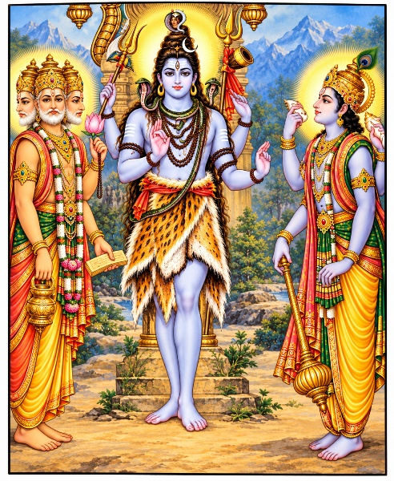
तत्पश्चात् भगवान् शंकरने ब्रह्माजीसे कहा— हे कमलनयन! आप समस्त लोकके कर्ता हैं तथा आप ही अधिष्ठातृ देवता हैं। अतः हे वत्स! आपका कल्याण हो। मैं तो अब प्रस्थान करूँगा। ब्रह्माजीसे इस प्रकार कहकर भगवान् शंकरने अपने दोनों पवित्र हाथोंसे अनुग्रहपूर्वक ब्रह्माजीका स्पर्श किया। पुनः उन परमेश्वर शंकरने प्रसन्न मनसे ब्रह्मासे स्वयं कहा— आप भी मेरे ही तुल्य हैं; इसमें सन्देह नहीं है। हे वत्स! आप मेरे भक्त हैं। आपका कल्याण हो और आपको यथार्थ ज्ञानकी प्राप्ति हो। हे सुव्रत! अब मैं प्रस्थान कर रहा हूँ॥१२-१४½॥
इस प्रकार कहकर समस्त देवताओंके वन्दनीय, गणोंके रक्षक, परमेश्वर भगवान् महादेव अन्तर्धान हो गये॥१५½॥
भगवान् गोविन्दसे ज्ञान प्राप्त करके पितामह ब्रह्माने प्रजाओंकी सृष्टिकी कामनासे भीषण तप करना आरम्भ कर दिया॥१६½॥
इस प्रकार दीर्घ कालतक तपस्या करते हुए उनका जब कुछ भी सिद्ध नहीं हुआ, तब उन्हें बहुत दुःख हुआ और उस दुःखसे वे बहुत क्रोधित हो उठे। कोपसे युक्त उन ब्रह्माके दोनों नेत्रोंसे आँसुओंकी बूँदें गिरने लगीं॥१७-१८॥
तत्पश्चात् उन अश्रुबिन्दुओंसे वात-पित्त-कफयुक्त, महान् सत्त्वसे सम्पन्न, महाभाग्यशाली तथा महाविषधर सर्प उत्पन्न हुए। वे स्वस्तिक चिह्नसे विभूषित थे तथा उनके केश फैले हुए थे॥१९½॥
उन सर्पोंको पहले उत्पन्न हुआ देखकर ब्रह्माजीको बड़ी आत्मग्लानि हुई। वे अपनी भर्त्सना करते हुए कहने लगे— ‘अहो, मुझे धिक्कार है। मेरी तपस्याका मुझे यही फल प्राप्त हुआ कि आरम्भमें ही मेरी लोकविनाशक सर्परूप प्रजा उत्पन्न हुई’॥२०-२१॥
अत्यधिक क्रोध तथा अधीरतासे युक्त होनेके कारण ब्रह्माजीको तीव्र मूर्च्छा उत्पन्न हुई और उस मूर्च्छासे आक्रान्त पितामहने अपने प्राण त्याग दिये॥२२॥
इसके पश्चात् अप्रतिम वीर्यवाले उन ब्रह्माके देहसे दीनभावसे कारुण्यपूर्वक ग्यारह रुद्र रोते हुए निकले। रुदन करनेके कारण ही उनका नाम रुद्र पड़ा॥२३½॥
जो रुद्र हैं, वे ही प्राणरूप हैं तथा जो प्राण हैं, वे उन्हीं रुद्रके आत्मारूप हैं। सभी प्राणियोंमें स्थित उन रुद्रोंको ही जीवोंके प्राणरूपमें जानना चाहिये॥२४½॥
नीललोहित त्रिशूलधारी शिवजीने अत्यन्त उग्र स्वभाववाले, महिमाशाली तथा उत्तम आचरणवाले उन ब्रह्माको पुनः उनके प्राण प्रदान कर दिये॥२५½॥
तत्पश्चात् प्राण प्राप्तकर भगवान् ब्रह्माने खड़े होकर देवाधिदेव उमापतिको प्रणामकर गायत्रीके ध्यानसे विश्वरूप परमात्मा शिवको वहाँ देखा॥२६½॥
समस्त लोकोंमें व्याप्त रहनेवाले महादेवको देखकर ब्रह्माजीने उनकी स्तुति की। तत्पश्चात् उन्होंने आश्चर्यचकित होकर शिवजीको बार-बार प्रणामकर उनसे पूछा— हे विभो! ‘सद्योजात’ आदि रूपमें आपका प्रादुर्भाव क्यों हुआ?॥२७-२८॥
॥इस प्रकार श्रीलिङ्गमहापुराणके अन्तर्गत पूर्वभागमें ‘रुद्रोत्पत्तिवर्णन’ नामक बाईसवाँ अध्याय पूर्ण हुआ॥२२॥
तेईसवाँ अध्याय
विभिन्न कल्पोंमें होनेवाले सद्योजातादि शिवावतारोंका वर्णन, विभिन्न लोकोंकी स्थिति तथा महारुद्रका विश्वरूपत्व
सूतजी बोले— ब्रह्माजीका वह वचन सुनकर उनके प्रबोधनके लिये ब्रह्मरूप भगवान् शिवने मुसकराकर उनसे कहा—॥१॥
जब श्वेतकल्प था, उस समय मैं श्वेत वर्णका था। मेरी श्वेत पगड़ी, श्वेत माला, श्वेत वस्त्र, श्वेत अस्थि, श्वेत रोम, श्वेत त्वचा तथा श्वेत ही मेरा रुधिर था। इसी कारणसे वह कल्प ‘श्वेतकल्प’ नामसे विख्यात हुआ॥२-३॥
उस कल्पमें मुझसे उत्पन्न ब्रह्म नामसे जानी जानेवाली देवेश्वरी गायत्री भी श्वेत अंगोंवाली, श्वेत रक्तवाली तथा श्वेत वर्णवाली थीं॥४॥
तदनन्तर हे देवेश! आपने अपने उग्र तपसे सद्योजातत्वको प्राप्त मुझ शिवको जाना॥५॥
मेरा यह सद्योजातरूप गुह्य ब्रह्मके रूपमें जाना जाता है। अतएव गुह्यत्वको प्राप्त मुझ सद्योजात शिवको जो द्विजातिगण जानेंगे, वे मेरे सान्निध्यको प्राप्त होंगे, जहाँसे उनका पुनरागमन नहीं होता अर्थात् वे जन्म-मरणके बन्धनसे मुक्त हो जाते हैं॥६½॥
पुनः जब मेरा नाम लोहित था, तब मेरे द्वारा धारित लोहित वर्णके कारण वह कल्प लोहितकल्प नामसे कहा गया॥७½॥
उस कल्पमें रक्तवर्णके मांस तथा हड्डियोंवाली, रक्तवर्णका दूध प्रदान करनेवाली, लाल आँखोंवाली तथा लाल स्तनवाली धेनुरूपमें गायत्री अधिष्ठित हुईं॥८½॥
तदनन्तर उस धेनुके लोहितत्व, उस कल्पमें वर्णके बदल जाने तथा योगकी वामताके कारण मैं वामदेवत्वको प्राप्त हुआ अर्थात् मेरा नाम वामदेव पड़ गया॥९½॥
हे महासत्त्व! उस कल्पमें भी नियत आत्मावाले आपने अपने योगबलसे लोहितवर्ण-स्थित मुझ परमेश्वरको जाना और तभीसे मैं पृथ्वीलोकमें वामदेव नामसे प्रसिद्धिको प्राप्त हो गया॥१०-११॥
जो भी द्विजातिगण मेरे वामदेवस्वरूपको जानेंगे, वे जन्म-मरणके बन्धनसे मुक्ति प्राप्त करानेवाले मेरे रुद्रलोकमें निवास करेंगे॥१२॥
जब मैं युगक्रमसे पीतवर्णवाला हुआ, तब मेरे वर्णनामपर उस कल्पका नाम पीतकल्प हुआ॥१३॥
मेरे द्वारा उत्पन्न तथा ब्रह्म नामसे जानी जानेवाली देवेश्वरी गायत्रीका भी अंग पीला, रक्त पीला तथा वर्ण आदि सब पीला था॥१४॥
हे महासत्त्व! उस कल्पमें भी योगपरायण मनवाले उन द्विजातियोंने योगयुक्त चित्तसे मुझे जाना। हे कनकाण्डज! उस कल्पमें तुमने भी मुझे पुनः तत्पुरुषरूपमें जाना; उसी कारणसे मेरा यह तत्पुरुष नाम हुआ॥१५-१६॥
जो तपस्यासे युक्त, विशुद्ध मनवाले तथा ब्रह्मपरायण लोग मुझ रुद्र तथा वेदमाता रुद्राणी गायत्रीकी आराधना करेंगे, वे पुनर्जन्मसे मुक्ति दिलानेवाले रुद्रलोकको प्राप्त होंगे॥१७½॥
पुनः जब मैंने भयानक कृष्णवर्ण धारण किया, तब मेरे वर्णके नामसे वह कल्प कृष्णकल्प कहा गया॥१८½॥
हे ब्रह्मन्! उस कल्पमें भी तुमने कालसदृश, कालरूप, लोकोंके लिये महाकाल तथा घोर पराक्रमवाले मुझ घोरको जाना॥१९½॥
हे देवेश! उस कल्पमें मुझसे उत्पन्न ब्रह्मसंज्ञावाली गायत्री भी कृष्ण अंगोंवाली, कृष्ण रक्तवाली तथा कृष्ण रूपवाली थीं॥२०½॥
अतएव इस भूतलपर जो लोग घोरत्वको प्राप्त मुझ शिवको जान लेंगे, शाश्वत रूपवाला मैं उनके लिये सौम्य तथा शान्त हो जाऊँगा॥२१½॥
हे ब्रह्मन्! पुनः जब मैं विश्वरूपत्वको प्राप्त हुआ, उस समय भी आपने परम समाधिसे मुझे जाना था। उस समय समस्त लोकोंको धारण करनेवाली गायत्री भी विश्वरूपा अर्थात् अनेक वर्णोंवाली थीं॥२२-२३॥
इस भूतलपर जो लोग विश्वत्वको प्राप्त मुझ परमात्माको जान लेंगे, उनके प्रति मैं सदाके लिये सौम्य तथा शान्त हो जाऊँगा॥२४॥
इसी कारण यह कल्प विश्वरूपकल्प नामसे जाना गया और ये गायत्री विश्वरूपा नामसे कही गयीं। वे सर्वरूपा थीं और ये सद्योजात आदि चार कुमार मेरे पुत्ररूपमें प्रकट हुए, जिनकी लोकमें विशेष प्रसिद्धि हुई॥२५-२६॥
ये गायत्री शब्द और अर्थरूपसे मेध्या अर्थात् यज्ञयोग्या होंगी, सर्वभक्षा अर्थात् पातकादिविनाशिका होंगी। गायत्रीके [सावित्रीके] सर्ववर्णा (सर्वशब्दात्मिका) होनेसे ही चातुर्वर्ण्य-व्यवस्था प्रजामें व्यवस्थित होगी॥२७॥
इसीलिये धर्म, अर्थ, काम तथा मोक्ष— चार प्रकारके ये पुरुषार्थ हैं और वेद भी चार हैं। जीव-समुदायोंके भी जरायुज, अण्डज, स्वेदज, उद्भिज्ज— ये चार प्रकारके रूप हैं तथा आश्रम भी चार हैं। दया, दान, तप, सत्य— ये धर्मके चार पाद हैं एवं मेरे पुत्र भी चार हैं॥२८-२९॥
इसीलिये यह चराचर जगत् युगरूप चार अवस्थाओंवाला है और यह चतुष्पादात्मक लोक भी भेदानुसार चार रूपोंमें अवस्थित है॥३०॥
भूर्लोक, भुवर्लोक, स्वर्लोक, महर्लोक, जनलोक, तपलोक तथा सत्यलोक— इन सबके परे विष्णुलोक स्थित है॥३१॥
अष्टाक्षररूप लोक अपने-अपने स्थानपर अक्षरात्मकरूपमें विद्यमान हैं। भूर्लोक, भुवर्लोक, स्वर्लोक तथा महर्लोक ही चार पादके रूपमें अवस्थित हैं। इनमें भूर्लोक पहला पाद है, भुवर्लोक दूसरा पाद है, स्वर्लोक तीसरा तथा महर्लोक चौथा पाद है॥३२-३३॥
पाँचवाँ जनलोक, छठा तपलोक तथा पुनर्जन्मकी प्राप्ति न करनेवाले लोगोंका सत्यलोक सातवाँ लोक कहा गया है॥३४॥
विष्णुलोक वह पद है, जहाँ पहुँचकर जीवका पुनः आगमन नहीं होता है। उससे भी आगे स्कन्दलोक तथा उससे भी परे पार्वतीलोक है, जो सर्वविध सिद्धियोंसे युक्त माना गया है॥३५॥
रुद्रलोक उससे परे विद्यमान है। वह पद योगियोंके लिये अत्यन्त शुभकर कहा गया है। ममतारहित, अहंकारशून्य, काम-क्रोधसे विवर्जित तथा ध्यानपरायण चित्तवाले योगीजन ही उस लोकका दर्शन करेंगे॥३६½॥
और जो आपने चार पादोंवाली इस गायत्री (सरस्वती) को देखा है, उसीके चार चरणोंके रूपमें चरम पदवाला विष्णुलोक, शान्त तथा उत्तम स्कन्दलोक, पार्वतीलोक एवं रुद्रलोक अवस्थित हैं। ऐसी माहात्म्ययुक्त सरस्वतीका आपने दर्शन किया है॥३७-३८॥
इससे सभी पशु भी चार पैरोंवाले होंगे और इसीसे इनके चार स्तन भी होंगे। हे ब्रह्मन्! मेरे मुखसे गिरा हुआ मन्त्रयुक्त सोमरूप अमृत प्राणधारियोंका जीवन बनकर उनके स्तनमें निवास करेगा। इसलिये वे स्तन ‘पीतस्तन’ कहे जायँगे॥३९-४०॥
उसीके कारण सोममय अमृत जीवनसंज्ञावाला होगा और उनके दुग्धका श्वेतत्व उसी सोमरूपत्वके कारण होगा— ऐसे गुणोंवाले वे चतुष्पाद होंगे॥४१॥
आपके द्वारा देखी गयी यह लोकभाविनी सावित्री महेश्वरी पुनः दो पादोंवाली होकर क्रियारूप धारण करेगी; जिससे सभी शुभ नर-नारी दो पादों तथा दो स्तनोंवाले होंगे॥४२½॥
सभी प्राणियोंको धारण करनेवाली तथा महान् शक्तिसे सम्पन्न जिस देवीका आपने दर्शन किया है; वह महेश्वरी अजा होकर जब सर्ववर्णमय विश्वरूप धारण करेगी, तब उसीसे सभी प्रजाएँ भी अनेक वर्णोंवाली होंगी॥४३-४४॥
तब महातेज तथा अमोघ वीर्यवाले अज विश्वरूप धारण करेंगे और इनके मुखमें सर्वत्र अग्नि विराजमान होगी; उसी कारण सर्वव्यापी पशुरूपी अग्नि पवित्र मानी जायगी॥४५½॥
विशुद्ध आत्मावाले जो द्विजगण अपनी तपस्यासे ईशित्व (ईश्वरत्व) तथा वशित्व (योगसिद्धि) में सभी जगह मुझे भी सर्वव्यापी रूपमें विराजमान देखेंगे; वे रजोगुण तथा तमोगुणसे रहित होकर मानवशरीरका त्याग करके मेरा सान्निध्य प्राप्त करेंगे और उनका पुनर्जन्म नहीं होगा॥४६-४७½॥
सूतजी कहते हैं कि हे द्विजो! शिवजीके इस प्रकार कहनेपर भगवान् ब्रह्माने प्रणाम करके विनम्रतापूर्वक रुद्रसे पुनः कहा— हे भगवन्! जो विद्वान् सर्वव्यापी विश्वात्मा आप महेश्वरको गायत्रीसहित सर्वत्र स्थित देखे तथा हे ईश्वर! आपकी एवं गायत्रीकी आराधना करे, उसे आप परमपद दें। इसपर उन शिवजीने कहा— वैसा ही होगा॥४८-५०॥
इसलिये प्रभु शिवद्वारा ब्रह्माजीके प्रति कहे गये वचनके अनुसार जो विद्वान् गायत्री तथा महात्मा रुद्रका विश्वरूपत्व जान लेता है, वह ब्रह्मसायुज्यको प्राप्त होता है अर्थात् ब्रह्मके साथ उसका तादात्म्य स्थापित हो जाता है॥५१॥
॥इस प्रकार श्रीलिङ्गमहापुराणके अन्तर्गत पूर्वभागमें ‘विविधकल्पवर्णन’ नामक तेईसवाँ अध्याय पूर्ण हुआ॥२३॥
चौबीसवाँ अध्याय
श्वेतवाराहकल्पके अट्ठाईस द्वापरोंके अन्तमें प्रकट होनेवाले अट्ठाईस व्यासों, अट्ठाईस शिवावतारों तथा विविध शिवयोगियोंका वर्णन
सूतजी बोले— [हे मुनियो!] शिवके द्वारा कथित सम्पूर्ण वचनोंको सुनकर प्रजापति ब्रह्माने उन देवाधिदेव शिवको प्रणाम करके पुनः उनसे कहा—॥१॥
हे भगवन्! हे देवदेवेश! हे विश्वरूप! हे महेश्वर! हे उमापते! हे महादेव! हे लोकवन्द्य! आपको नमस्कार है॥२॥
हे विश्वरूप! हे महाभाग! हे महेश्वर! हे महादेव! आपके ये जो लोकवन्द्य अवतार हैं, वे किस कालमें तथा किस युगमें द्विजातियोंके द्वारा इस लोकमें देखे जा सकेंगे?॥३½॥
हे देव! हे महादेव! आपको नमस्कार है। द्विजातिगण किस तप या ध्यानयोगके द्वारा आपका दर्शन कर पानेमें समर्थ हो सकते हैं?॥४½॥
ब्रह्माजीका यह वचन सुनकर ऋग्वेद, यजुर्वेद तथा सामवेदसे प्रादुर्भूत महादेव रुद्र अपने सम्मुख-स्थित उन पितामहको देखकर मुसकराते हुए उनसे बोले॥५½॥
भगवान् शिव बोले— मानव मुझे न तो केवल
(अंतिम पृष्ठ ११० का शेष भाग)
तपसे, न आचारसे, न दानसे, न धर्मफलसे, न तीर्थाटनसे, न योगसे, न पुष्कल दक्षिणावाले यज्ञोंसे, न वेदोंके अध्ययनसे, न धनसे तथा न तो शास्त्रोंके परिशीलनमात्रसे ही देख सकनेमें समर्थ हैं, मेरा दर्शन ध्यानरहित साधनाके द्वारा नहीं किया जा सकता है॥६-७½॥
हे पितामह! वाराहकल्पके सातवें मन्वन्तरमें सभी लोकोंको प्रकाशित करनेवाला और कल्पका स्वामी मेरा अवताररूप वैवस्वत मनु आपके पौत्रके रूपमें अवतरित होगा॥८-९॥
उसी कल्पके द्वापरयुगके अन्तमें लोकोंपर अनुग्रह तथा ब्राह्मणोंके हितके लिये मैं अवतार ग्रहण करूँगा। पुनः हे ब्रह्मन्! युगप्रवृत्तिके अनुसार इसी प्रथम द्वापरयुगके अन्तमें जब स्वयं प्रभु व्यास होंगे, उस समय ब्राह्मणोंके हितार्थ मेरा अवतार होगा। इसके अनन्तर उसी युगकी समाप्तिपर कलिमें मैं शिखाधारी ‘श्वेत’ नामक महामुनिके रूपमें अवतीर्ण होऊँगा और पर्वतोंमें उत्तम हिमालयके छागल नामवाले शिखरपर निवास करूँगा॥१०-१३॥
वहाँपर उस समय श्वेत, श्वेतशिख, श्वेतास्य तथा श्वेतलोहित नामक शिखायुक्त मेरे चार शिष्य प्रकट होंगे। ये चारों महात्मा, ब्रह्मनिष्ठ और वेदोंके पारगामी विद्वान् होंगे। तदनन्तर ध्यानयोगमें पूर्ण तत्पर वे ब्रह्मभूयिष्ठ शिष्य ब्रह्मकी परम गतिको जानकर मेरा सान्निध्य प्राप्त करेंगे॥१४-१५½॥
हे ब्रह्मन्! इसके बाद द्वितीय द्वापरके अन्तमें पुनः जब ‘सद्य’ नामक प्रजापतिरूप प्रभु व्यास होंगे, उसके अनन्तर कलिमें अपने शिष्योंके अनुग्रहकी कामनासे तथा लोकके कल्याणार्थ मैं सुतार नामसे अवतार ग्रहण करूँगा॥१६-१७½॥
वहाँ भी दुन्दुभि, शतरूप, ऋचीक तथा केतुमान् नामसे प्रसिद्ध मेरे शिष्य प्रकट होंगे। वे योग तथा ध्यानको पूर्णतः प्राप्त होकर भूतलपर ब्रह्मज्ञान स्थापित करके शिवलोकको प्राप्त होंगे और सदा मेरे सान्निध्यमें रहेंगे॥१८-२०½॥
पुनः तीसरे द्वापरके अन्तमें जब ‘भार्गव’ नामक व्यास होंगे, तब मैं दमन नामसे अवतीर्ण होऊँगा और उस समय भी विकोश, विकेश, विपाश तथा शापनाशन नामवाले मेरे चार शिष्य होंगे। उसी पूर्वोक्त ध्यान-योगके द्वारा वे महान् ओजस्वी शिष्य भी शिव-लोकको प्राप्त होंगे, जहाँसे जीवका पुनः आगमन नहीं होता है॥२०-२२½॥
चौथे द्वापरके अन्तमें जब ‘अंगिरा’ नामक व्यास होंगे, तब मैं भी सुहोत्र नामसे अवतीर्ण होऊँगा और उस समय भी मेरे चार पुत्र प्रकट होंगे। सुमुख, दुर्मुख, दुर्दर तथा दुरतिक्रम नामवाले मेरे वे सभी पुत्र तपस्वी, द्विजश्रेष्ठ, योगात्मा एवं दृढ़ व्रतवाले होंगे॥२३-२५॥
विशुद्ध मन तथा नष्टपापवाले, योगयुक्त और महान् ओजस्वी वे पुत्र भी उसी मार्गसे योगकी सूक्ष्म गतिको प्राप्त होकर रुद्रलोकको जायँगे, जहाँसे जीवका पुनर्जन्म नहीं होता है॥२६½॥
पाँचवें द्वापरके अन्तमें जब ‘सविता’ नामक व्यास होंगे; उस समय भी लोकोंके अनुग्रहार्थ योगात्मा, एककलागतिवाला तथा महान् तपोव्रती मैं ‘कंक’ नामसे अवतार ग्रहण करूँगा॥२७-२८॥
उस समय सनक, सनन्दन, प्रभु सनातन तथा विभु सनत्कुमार नामक मेरे चार शिष्य प्रकट होंगे। महाभाग्यशाली, विशुद्ध चित्तवाले, शुद्धयोनि, योगात्मा, दृढ़व्रती, ममतारहित तथा अहंकारशून्य वे शिष्य पुनर्जन्मसे मुक्ति प्राप्त करानेवाले मेरे सान्निध्यको प्राप्त होंगे॥२९-३०½॥
पुनः छठे द्वापरके अन्तमें जब ‘मृत्यु’ नामक महान् ऐश्वर्यशाली व्यासका अवतार होगा, तब मैं लोगाक्षि नामसे आविर्भूत होऊँगा। उस समय भी सुधामा, विरजा, शंखपाद तथा रज नामक मेरे चार शिष्य होंगे। वे योगात्मा, दृढ़ व्रतवाले, महाभाग्यवान् एवं लोकविश्रुत होंगे॥३१-३३॥
योगात्मा, महान् आत्मावाले तथा ध्यानयोगसे सम्पन्न वे सभी शिष्य उसी मार्गका आश्रय लेकर मेरे समीप पहुँचेंगे, जहाँसे पुनर्जन्म नहीं होता है॥३४½॥
पूर्वजन्ममें विभु नामसे प्रख्यात महातेजस्वी शतक्रतु नामक व्यास जब सातवें द्वापरके अन्तमें होंगे, उस समय भी मैं उस द्वापरकी समाप्तिपर कलिमें सभी
पृष्ठ २ (मूल पृष्ठ संख्या ११२)
योगियोंमें श्रेष्ठ विभु जैगीषव्य नामसे प्रसिद्ध होऊँगा। उस युगमें भी सारस्वत, मेघ, मेघवाह तथा सुवाहन नामक मेरे चार पुत्र होंगे। ध्यानयोगमें परायण वे महात्मा उसी योगमार्गपर चलकर निर्विकार शिवलोकको प्राप्त होंगे॥३५-३८½॥
पुनः आठवें द्वापरके अन्तमें जब ‘वसिष्ठ’ नामक व्यास होंगे, तब दधिवाहन नामसे मैं अवतरित होऊँगा। उस समय भी कपिल, आसुरि, पंचशिखमुनि तथा महायोगी बाष्कल— ये मेरे परम योगात्मा एवं दृढ़व्रती चार पुत्र होंगे, जिनके सदृश महान् योगी भूतलपर कोई नहीं होगा। वे धर्मात्मा तथा महान् ओजस्वी पुत्र भी माहेश्वर योगमें सिद्ध होकर ज्ञानसम्पन्न और पापमुक्त हो मेरे सान्निध्यको प्राप्त होंगे, जहाँसे जीवका पुनः आगमन (जन्म) नहीं होता है॥३९-४२½॥
नौवें द्वापरके अन्तमें जब ‘सारस्वत’ नामके व्यास होंगे, तब मैं भी ऋषभनामसे अवतीर्ण होऊँगा। उस समय भी पराशर, गर्ग, भार्गव तथा अंगिरा नामवाले मेरे चार पुत्र होंगे, जो महान् ओजस्वी, ब्रह्मनिष्ठ, वेदोंके पारगामी विद्वान् एवं महान् आत्मावाले होंगे। वे भी उसी प्रकार ध्यानमार्गको प्राप्त होकर इस लोकसे प्रस्थान करेंगे। तपोबलमें उत्कृष्ट, शाप-अनुग्रहके पूर्ण विद्वान् एवं तपोव्रती वे सभी पुत्र भी पूर्वोक्त उसी योगमार्गका आश्रय लेकर रुद्रलोकको प्राप्त होंगे, जहाँसे पुनः आगमन नहीं होता है॥४३-४७॥
दसवें द्वापरके अन्तमें जब त्रिपाद् नामक विप्ररूप व्यास होंगे, तब मैं भृगुमुनिके रूपमें पर्वतोंमें उत्तम हिमालयके रमणीक भृगुतुंग नामक श्रेष्ठ पर्वत-शिखरपर अवतीर्ण होऊँगा। वह शिखर मेरे ही नामपर ‘भृगुतुंग’ नामसे प्रसिद्ध होगा तथा देवताओंद्वारा पूजित होगा॥४८-४९॥
उस समय भी बलबन्धु, निरामित्र, केतुशृंग तथा तपोधन— ये मेरे चार पुत्र होंगे, जो दृढ़व्रती, योगात्मा, महात्मा एवं तपोयोगसे युक्त होंगे। वे अपनी तपस्यासे पापोंको दग्ध करके रुद्रलोकको प्राप्त होंगे॥५०-५१॥
ग्यारहवें द्वापरके अन्तमें जब ‘त्रिव्रत’ नामक व्यास होंगे, उस समय भी मैं कलिमें गंगाद्वारक्षेत्रमें अवतीर्ण होऊँगा तथा महातेजस्वी मैं उग्र नामसे सभी लोकोंमें विख्यात होऊँगा। उस समय भी लम्बोदर, लम्बाक्ष, लम्बकेश एवं प्रलम्बक नामवाले मेरे चार महातेजस्वी पुत्र होंगे। वे माहेश्वरयोगको प्राप्त होकर रुद्रलोक जायँगे॥५२-५४॥
बारहवें द्वापरयुगके अन्तमें जब मुनि ‘शततेजा’ नामक महातेजस्वी तथा कविश्रेष्ठ व्यास होंगे, उस समय भी युगान्तमें इस लोकमें कलिमें मैं हैतुकवनमें अवतीर्ण होऊँगा और ‘अत्रि’ नामसे विख्यात होऊँगा॥५५-५६॥
उस समय भी सर्वज्ञ, समबुद्धि, साध्य तथा सर्व नामक मेरे चार पुत्र होंगे, जो रुद्रलोककी प्राप्तिके लिये तत्पर, महान् योगी तथा सदा भस्मसे अनुलिप्त शरीरवाले होंगे। वे भी माहेश्वरयोगको प्राप्त होकर शिवलोकको प्रस्थान करेंगे॥५७-५८॥
पुनः क्रमसे तेरहवें द्वापरयुगका अन्त आनेपर जब धर्मरूप ‘नारायण’ नामक व्यास होंगे, उस समय भी मैं गन्धमादन पर्वतपर पवित्र बालखिल्य आश्रममें महामुनि ‘बालि’ नामसे अवतरित होऊँगा॥५९-६०॥
उस समय भी सुधामा, काश्यप, वासिष्ठ तथा विरजा नामक मेरे चार पुत्र होंगे। वे महान् तपस्वी, महायोगसे सम्पन्न, विशुद्धात्मा एवं नैष्ठिक ब्रह्मचारी होंगे और माहेश्वरयोगको प्राप्त होकर रुद्रलोक जायँगे॥६१-६२॥
चौदहवें द्वापरके अन्तमें जब ‘तरक्षु’ नामक व्यास होंगे, उस समय भी मैं अंगिरामुनिके उत्तम वंशमें गौतम नामसे अवतार ग्रहण करूँगा और वह स्थान परम पवित्र ‘गौतमवन’ नामसे प्रसिद्ध होगा॥६३-६४॥
उस कलिमें भी अत्रि, देवसद, श्रवण तथा श्रविष्ठक नामक मेरे चार पुत्र होंगे। वे सभी योगात्मा, महान् आत्मावाले और योगयुक्त पुत्र माहेश्वरयोगमें सिद्ध होकर रुद्रलोकको प्राप्त होंगे॥६५-६६॥
पुनः क्रमसे पन्द्रहवें द्वापरका अन्त होनेपर जब ‘त्रैय्यारुणि’ नामक व्यास होंगे, उस समय भी द्विजरूप ‘वेदशिरा’ नामसे मैं अवतार ग्रहण करूँगा। वहाँ मैं ‘वेदशिरा’ नामक अति दिव्य पारमेश्वर अस्त्र प्रकट करूँगा और पर्वतोंमें श्रेष्ठ हिमालयके पृष्ठदेशमें सरस्वतीके तटपर वेदशीर्ष नामक पर्वत मेरा आश्रयस्थल होगा॥६७-६९॥
उस समय भी कुणि, कुणिबाहु, कुशरीर तथा कुनेत्रक नामवाले मेरे तपस्वी पुत्र प्रकट होंगे। योगात्मा, महात्मा एवं नैष्ठिक ब्रह्मचर्यव्रतका पालन करनेवाले वे सभी पुत्र माहेश्वरयोगकी सिद्धि करके शिवलोकको प्राप्त होंगे॥७०-७१॥
सोलहवें द्वापरके अन्तमें जब देव नामक व्यास होंगे, तब भक्तों तथा संयत आत्मावाले जनोंको योग प्रदान करनेके निमित्त मैं गोकर्ण नामसे अवतार लूँगा और वह स्थान परम पवित्र गोकर्णवनके नामसे प्रसिद्ध होगा॥७२-७३॥
उस समय भी काश्यप, उशना, च्यवन तथा बृहस्पति नामक मेरे चार महायोगी पुत्र होंगे। वे भी उसी मार्गसे ध्यानयोगसे युक्त होकर माहेश्वरयोग प्राप्त करके रुद्रलोक जायँगे॥७४-७५॥
पुनः क्रमसे सत्रहवें द्वापरके अन्तमें जब देवकृतंजय नामक व्यास होंगे, तब भी मैं हिमालयके अति उच्च महालय नामक रमणीक शिखरपर गुहावासी नामसे अवतीर्ण होऊँगा। वह महालयस्थल परम पवित्र तथा सिद्धक्षेत्र माना जायगा। वहाँपर भी उतथ्य, वामदेव, महायोग एवं महाबल नामवाले मेरे चार पुत्र होंगे। वे योगवेत्ता, ब्रह्मवादी, महात्मा, मोहरहित तथा अहंकारशून्य होंगे॥७६-७९॥
कलियुगमें उन पुत्रोंके ध्यानयोग करनेवाले हजारों शिष्य होंगे। ध्यान करनेवाले तथा योगाभ्यासपरायण वे सभी शिष्य महेश्वरको हृदयमें धारण करके महालय-क्षेत्रमें मेरे चरणोंका दर्शन करके शिवपदको प्राप्त होंगे॥८०-८१॥
इनके अतिरिक्त अन्य जो भी महात्मा उस द्वापरके अन्तमें कलिमें अपना मन ध्यानमें लगाकर निर्मल आत्मा तथा शुद्ध बुद्धिवाले हो जायेंगे, वे शोकरहित होकर मेरे अनुग्रहसे रुद्रलोकको प्राप्त होंगे। पुण्यप्रद महालयक्षेत्रमें जाकर माहेश्वरपदका दर्शन करके प्राणी अपनी दस पूर्वकी तथा दस बादकी और अपनी स्वयं— इस प्रकार इक्कीस पीढ़ियोंका उद्धार कर देता है। इस प्रकार महालयक्षेत्रमें पहुँचकर लोग अपने वंशका उद्धार करके मेरी कृपासे कष्टसे रहित होकर रुद्रलोकको प्राप्त करेंगे॥८२-८४½॥
हे विभो! पुनः अठारहवें द्वापरके अन्तमें जब ऋतंजयमुनि नामक व्यास होंगे, तब मैं सिद्धिप्रदायक, पुण्यप्रद तथा देव-दानवोंसे पूजित रमणीक हिमालय-शिखरपर शिखण्डी नामसे अवतार ग्रहण करूँगा और वह शिखर मेरे नामसे शिखण्डी पर्वत तथा वह क्षेत्र शिखण्डीका वन कहा जायगा, जहाँ सिद्ध महात्मा निवास करेंगे॥८५-८८½॥
वहाँपर भी वाचश्रवा, ऋचीक, श्यावाश्व तथा यतीश्वर नामक मेरे पुत्र होंगे। वे सब परम तपस्वी, योगात्मा, महात्मा तथा वेदोंके पारगामी विद्वान् होंगे, जो माहेश्वर योगमें सिद्ध होकर रुद्रलोकको प्राप्त होंगे॥८८½-८९½॥
तदनन्तर क्रमसे उन्नीसवें द्वापरके अन्तमें महामुनि भरद्वाज तो व्यास होंगे और उस समय मैं हिमालयके शिखरपर विराजमान रमणीक जटायु पर्वतपर जटामाली नामसे अवतीर्ण होऊँगा। उस समय भी हिरण्यनाभ, कौशल्य, लोकाक्षी तथा कुथुमि नामक मेरे चार पुत्र होंगे। वे महाप्रतापी, ऐश्वर्ययुक्त, योग-ध्यानपरायण और नैष्ठिक ब्रह्मचारी होंगे। वे सब माहेश्वरयोगको प्राप्त होकर रुद्रलोकको प्रस्थान करेंगे॥९०-९३½॥
पुनः जब बीसवें द्वापरका अन्त होगा, तब उस समय महामुनि गौतम तो व्यास होंगे और मैं भी उसी समय हिमालय क्षेत्रमें अट्टहास नामसे अवतरित होऊँगा। तभीसे लोगोंकी अट्टहासके प्रति महान् प्रीति हो जायगी। वह क्षेत्र महागिरि अट्टहासके नामसे विख्यात होगा और देवता, दानव, यक्ष, इन्द्र, सिद्ध-महात्मा तथा चारण वहाँ सदा निवास करेंगे॥९४-९६½॥
वहींपर सुमन्तु, बर्बरी, विद्वान् कबन्ध तथा कुशिकन्धर— ये मेरे चार पुत्र होंगे। वे महान् ओजस्वी, योगात्मा, महात्मा, ध्यानपरायण एवं दृढ़व्रती होंगे, जो माहेश्वरयोगमें सिद्ध होकर रुद्रलोकको प्राप्त होंगे॥९७-९८½॥
पुनः क्रमसे इक्कीसवें द्वापरके अन्तमें जब ऋषिप्रवर वाचश्रवा व्यास होंगे, तब मैं भी दारुक नामसे आविर्भूत होऊँगा; इसलिये वह स्थान कल्याणप्रद तथा पुण्यकर होगा और मेरे नामपर वह देवदारुवनके नामसे प्रसिद्ध होगा। वहाँपर भी प्लक्ष, दार्भायणि, केतुमान् तथा गौतम नामवाले मेरे चार पुत्र होंगे; जो महाप्रतापी, योगात्मा, महात्मा, संयत आत्मावाले एवं ब्रह्मचारी होंगे। वे सब निष्ठापूर्वक योगव्रतका पालन करके रुद्रलोकको प्राप्त होंगे॥९९-१०२½॥
बाईसवें द्वापरके अन्तमें जब शुष्मायण नामक व्यास होंगे, उस समय मैं महामुनि ‘भीम’ नामसे हल धारण किये काशीमें अवतार ग्रहण करूँगा, जहाँपर उस कलिमें इन्द्रसहित सभी देवतागण अस्त्ररूपमें हल धारण करनेवाले हलायुध मुझ शिवका दर्शन प्राप्त करेंगे॥१०३-१०४½॥
वहाँपर भी भल्लवी, मधुपिंग, श्वेतकेतु तथा कुश नामक मेरे चार पुत्र होंगे। अतिशय धर्मनिष्ठ, ध्यानपरायण, विशुद्धात्मा एवं ब्रह्मभावको प्राप्त वे पुत्र भी माहेश्वरयोगमें सिद्ध होकर शिवलोकको प्राप्त होंगे॥१०५-१०६½॥
हे ब्रह्मन्! पुनः तेईसवें द्वापरके अन्तमें जब मुनि तृणबिन्दु नामक व्यास होंगे, उस समय मैं धर्मनिष्ठ तथा महाकाय मुनिपुत्रके रूपमें ‘श्वेत’ नामसे अवतीर्ण होऊँगा। वहाँ उत्तम पर्वतपर मैं कालको जीर्ण (व्यतीत) करूँगा, अतः वह पर्वत ‘कालंजर’ नामसे विख्यात होगा। वहाँपर भी उशिक, बृहदश्व, देवल तथा कवि नामक मेरे चार तपस्वी शिष्य होंगे। वे माहेश्वर योगको प्राप्त होकर रुद्रलोक जायेंगे॥१०७-११०½॥
हे विभो! चौबीसवें द्वापरके अन्तमें जब ऋक्षमुनि व्यास होंगे, तब मैं उस युगान्त तथा कलिके प्रारम्भमें देववन्द्य नैमिषारण्यमें महान् योगीके रूपमें ‘शूली’ नामसे अवतार लूँगा। वहाँ भी शालिहोत्र, अग्निवेश, युवनाश्व एवं शरद्वसु नामक मेरे चार तपोधन शिष्य होंगे। वे भी उसी योगमार्गसे रुद्रलोकको प्राप्त होंगे॥१११-११३½॥
पुनः क्रमिक रूपसे पचीसवें द्वापरके अन्तमें जब वसिष्ठजीके पुत्र शक्तिमुनि व्यास होंगे, उस समय जगत्प्रभु मैं दण्ड धारण किये हुए मुण्डीश्वर नामसे अवतार ग्रहण करूँगा। उस समय भी छगल, कुण्डकर्ण, कुभाण्ड तथा प्रवाहक नामक मेरे चार तपोव्रती पुत्र होंगे। माहेश्वरयोगमें सिद्ध होकर वे अमरत्वको प्राप्त होंगे॥११४-११६½॥
छब्बीसवें द्वापरके अन्तमें जब पराशर नामक व्यास होंगे, उस समय भी उस युगान्तमें मैं कलिके प्रारम्भमें भद्र-वटक्षेत्रमें सहिष्णु नामसे अवतीर्ण होऊँगा। वहाँ भी उलूक, विद्युत, शम्बूक तथा आश्वलायन नामक अत्यन्त धर्मपरायण मेरे चार पुत्र होंगे। वे माहेश्वरयोगको प्राप्त होकर रुद्रलोकको प्रस्थान करेंगे॥११७-११९½॥
पुनः क्रमिक रूपसे सत्ताईसवें द्वापरके अन्तमें जब तपस्वी जातूकर्ण्य व्यास होंगे, तब मैं योगविश्रुत तथा योगात्मा द्विजश्रेष्ठ सोमशर्माके रूपमें प्रभासक्षेत्रमें अवतरित होऊँगा। वहाँपर भी अक्षपाद, कुमार, उलूक एवं वत्स नामक मेरे चार तपस्वी शिष्य होंगे। योगात्मा, महात्मा, निर्विकारहृदय तथा शुद्ध बुद्धिवाले वे शिष्य माहेश्वरयोग प्राप्त करके अन्तमें रुद्रलोक जायँगे॥१२०-१२३½॥
पुनः क्रमसे अट्ठाईसवें द्वापरके आनेपर जब श्रीमान् लोकपितामह विष्णु अपने छठे अंशसे पराशरपुत्र ‘कृष्णद्वैपायन’ नामक व्यास होंगे, तब यदुश्रेष्ठ पुरुषोत्तम वासुदेव कृष्ण वसुदेवसे उत्पन्न होंगे। उस समय योगात्मा मैं लोकोंको विस्मित करनेके उद्देश्यसे योगमायासे एक ब्रह्मचारीका शरीर धारणकर प्रकट होऊँगा और योगमायाके प्रभावसे ब्राह्मणोंके कल्याणार्थ श्मशानमें मृत पड़े एक अनाथ ब्राह्मणका शरीर देखकर उसमें प्रवेश करूँगा। दिव्य तथा पुण्य प्रदान करनेवाली मेरुगुहामें आपके एवं विष्णुके साथ मैं निवास करूँगा। हे ब्रह्मन्! उस समय मैं लकुली नामसे विख्यात होऊँगा और मेरा अवतार-स्थल जबतक भूमिकी सत्ता रहेगी, तबतक एक सिद्धक्षेत्रके रूपमें कायावतार— इस नामसे विख्यात रहेगा॥१२४-१३०॥
वहाँपर भी कुशिक, गर्ग, मित्र तथा कौरुष्य नामक मेरे चार तपस्वी, योगात्मा, ब्रह्मज्ञानी और वेदोंके पारगामी विद्वान् पुत्र होंगे। विशुद्ध आत्मावाले तथा नैष्ठिक ब्रह्मचर्यव्रत धारण करनेवाले वे पुत्र माहेश्वरयोगमें सिद्ध होकर पुनरागमनसे मुक्ति दिलानेवाले रुद्रलोकको प्राप्त होंगे॥१३१-१३२½॥
ये पाशुपतयोगमें सिद्ध, भस्मसे विभूषित शरीरवाले, नित्य शिवलिङ्गके अर्चनमें तत्पर रहनेवाले, बाहर एवं भीतरसे भक्तिपूर्वक योगके द्वारा मुझमें स्थित रहनेवाले, ध्यानपरायण तथा जितेन्द्रिय होंगे॥१३३-१३४॥
ज्ञानमार्गका प्रकाशक यह पाशुपतयोग सांसारिक बन्धनसे मुक्ति प्राप्त करने तथा आत्मज्ञान सिद्ध करनेके लिये एक महान् उपाय है॥१३५॥
इस जगत्में अनेक योगमार्ग हैं तथा अनेक ज्ञानमार्ग हैं; किंतु पंचाक्षरी विद्या (नमः शिवाय)-के बिना प्राणी सांसारिक बन्धनसे मुक्त नहीं हो सकते॥१३६॥
जो मनुष्य सभी द्वन्द्वोंसे रहित होकर तप करता है, वह पके फलकी भाँति मुक्तिके लिये उपस्थित रहता है॥१३७॥
जो पुरुष मात्र एक दिन भलीभाँति पाशुपतव्रत धारण करता है, वह उस गतिको प्राप्त कर लेता है, जो उसे सांख्य तथा पञ्चरात्रसे कभी नहीं मिलती॥१३८॥
इस प्रकार मैंने युगक्रमसे मनुसे लेकर कृष्णद्वैपायन पर्यन्त अट्ठाईस अवतारोंका वर्णन आपसे कर दिया। उस कल्पमें जब धर्मस्वरूप श्रीकृष्णद्वैपायन व्यास होंगे, तब वे ही वेदसमूहोंका विभाग करेंगे॥१३९-१४०॥
सूतजी बोले— इस प्रकार महादेवके द्वारा कही गयी रुद्रावतारकी बातें सुनकर महातेजस्वी भगवान् ब्रह्माने प्रणामपूर्वक प्रिय वाणीसे महेश्वर शिवकी स्तुति की और पुनः उनसे कहा॥१४१½॥
पितामह बोले— सभी देवता तथा सभी गण विष्णुसे ही व्याप्त हैं। विष्णुके समान कोई अन्य गति हो ही नहीं सकती। ऐसा वेद निरन्तर गाते हैं; इसमें कोई संशय नहीं है॥१४२-१४३॥
वे देवाधिदेव भगवान् विष्णु आपके लिङ्गार्चनमें निरन्तर रत क्यों रहते हैं तथा जगत्पति होकर भी सदा आपको प्रणाम क्यों करते हैं?॥१४४॥
सूतजी बोले— परमेष्ठी ब्रह्माजीका वचन सुनकर हर्षातिरेकसे युक्त नेत्रोंवाले भगवान् शंकर उनके इस महत्त्वपूर्ण प्रश्नसे अत्यधिक प्रसन्न हुए और उन्हें लिङ्गपूजा-प्रकरणके विषयमें बताया। भगवान् विष्णु, साक्षात् सुरश्रेष्ठ इन्द्र तथा मुनियोंने विधिविधानसे लिङ्गकी पूजा करके ही अपने-अपने पद प्राप्त किये हैं। हे विभो! इसीलिये वे लिङ्गपूजनमें तत्पर रहते हैं॥१४५-१४७॥
लिङ्गके अर्चनके बिना निष्ठाकी प्राप्ति नहीं हो सकती, इसलिये जगत्पति भगवान् विष्णु श्रद्धापूर्वक मेरे लिङ्गका पूजन करते हैं॥१४८॥
देवेश ब्रह्माजीसे ऐसा कहकर तथा पुनः उनके ऊपर कृपादृष्टि डालकर महेश्वर वहींपर अन्तर्धान हो गये॥१४९॥
तत्पश्चात् उन शिवको हाथ जोड़कर प्रणाम करके और उनसे आज्ञा प्राप्त करके वे भगवान् ब्रह्मा सृष्टिकी रचना करनेमें प्रवृत्त हो गये॥१५०॥
॥इस प्रकार श्रीलिङ्गमहापुराणके अन्तर्गत पूर्वभागमें ‘विविधव्यासावतारवर्णन’ नामक चौबीसवाँ अध्याय पूर्ण हुआ॥२४॥
पचीसवाँ अध्याय
लिङ्गार्चनविधिके अन्तर्गत शरीर एवं मनकी शुद्धिके लिये अन्तः एवं बाह्य स्नानकी प्रक्रिया और विविध मन्त्रोंसे आत्माभिषेचन
ऋषिगण बोले— हे सूतजी! लिङ्गस्वरूप महेश्वर महादेवकी पूजा किस प्रकार की जानी चाहिये? अब आप हमलोगोंको यह बतानेकी कृपा करें॥१½॥
सूतजी बोले— [हे ऋषियो!] इसी विषयमें कैलास पर्वतपर देवी पार्वतीके द्वारा पूछे जानेपर देवाधिदेव महादेवने अपने अंकमें विराजमान गिरिराजकिशोरी पार्वतीसे लिङ्गार्चन विधिका क्रमसे वर्णन किया था॥२॥
हे सुव्रतो! उस समय समीपमें ही स्थित शालंकायनके पुत्र नन्दीने उस विधिका श्रवण करके पहले ब्रह्मापुत्र सनत्कुमारको वह परम पवित्र लिङ्गार्चनविधि बतायी और उनसे महातेजस्वी व्यासजीने वह श्रुतिप्रतिपादित विधि सुनी॥३-४॥
शैलादि (नन्दी) के मुखसे स्नान तथा लिङ्ग-पूजानुष्ठानकी जो विधि कही गयी है एवं जो मैंने भी सुनी है, उस स्नान तथा अर्चनविधिका आपलोगोंसे वर्णन करूँगा॥५॥
शैलादि (नन्दिकेश्वर) बोले— ब्राह्मणोंके कल्याणके निमित्त अब मैं स्नान-विधिके विषयमें कहूँगा। यह [विधिपूर्वक किया गया स्नान] सभी पापोंको दूर करनेवाला है। पूर्वकालमें स्वयं भगवान् शंकरने इसके महत्त्वका वर्णन किया है॥६॥
इस विधिसे स्नान करनेके बाद भक्तिपूर्वक एक बार शंकरजीकी पूजा करके विधिपूर्वक निर्मित ब्रह्मकूर्च (पंचगव्य) का पानकर मनुष्य सभी पापोंसे मुक्त हो जाता है॥७॥
हे ब्रह्माजीके उत्तम पुत्र! ब्राह्मण आदिके हितके लिये देवाधिदेव शंकरने तीन प्रकारके स्नानोंका वर्णन किया है॥८॥
सर्वप्रथम जलस्नान करनेके बाद श्रेष्ठ अग्निस्नान (भस्मस्नान) और फिर मार्जनरूप मन्त्रस्नान करके परमेश्वरकी पूजा करनी चाहिये॥९॥
भावदुष्ट अर्थात् श्रद्धारहित प्राणी जलमें स्नान करके तथा भस्म लगा लेनेसे शुद्ध नहीं हो जाता है। भावनासे शुद्ध होकर ही मनुष्यको शुद्धि करनी चाहिये, अन्यथा नहीं॥१०॥
प्रलयपर्यन्त सभी नदियों, सरोवरों तथा तड़ागोंमें स्नान करके भी भावनासे दूषित मनवाला व्यक्ति शुद्ध नहीं हो सकता है; इसमें सन्देह नहीं है॥११॥
तमोगुणके प्रभावसे मनुष्यका प्रसुप्त चित्तकमल जब ज्ञानरूपी सूर्यके प्रकाशसे चेतनायुक्त हो जाता है, तभी शुद्धि हो पाती है॥१२॥
मिट्टी, गोमय, तिल, पुष्प तथा भस्म आदि लेकर स्नानके लिये स्नानतीर्थ जाकर वहाँ तटपर कुश बिछा लेना चाहिये। तदनन्तर दोनों पैर धोकर पुनः आचमन करके तीरदेशमें स्थित द्रव्योंसे शरीरके मलका शोधन करनेके उपरान्त स्नान करना चाहिये॥१३-१४॥
तत्पश्चात् ‘उद्धृतासि वराहेण’ यह मन्त्र पढ़कर मिट्टी लेकर उससे शरीरकी शुद्धि करनी चाहिये। इसके अनन्तर स्नान करके दूसरा पवित्र वस्त्र धारण करना चाहिये॥१५॥
पुनः मन्त्रवित् पुरुषको चाहिये कि वह ‘गन्धद्वारां दुराधर्षाम्’ इस मन्त्रको पढ़कर कपिला गायके भूस्पर्शरहित गोमयका शरीरपर लेपन करे। इसके बाद स्नान करके उस मलिन वस्त्रको छोड़कर पुनः श्वेत वस्त्र धारण करके स्नान करना चाहिये॥१६-१७॥
समस्त पापोंसे विमुक्तिके लिये वरुणदेवका आवाहन करके तथा मानसिक उपचारोंसे भगवान् शंकरकी विधिवत् पूजा करके तीन बार आचमनकर जलको अभिमन्त्रित करके शिवका स्मरण करते हुए तीर्थजलमें प्रवेश करे। इसके बाद गोता लगाकर ‘ऋतञ्च सत्यञ्च’ इस अघमर्षण मन्त्रका जप करते हुए उस जलमें सूर्य, चन्द्र तथा अग्नि— इन तीनोंके मण्डलोंका उस संयमी व्यक्तिको ध्यान करना चाहिये॥१८-२०॥
फिर आचमन करके उस जलसे निकलकर पुण्यकी वृद्धिहेतु उस मन्त्रवित्को पुनः जलमध्यमें प्रवेश करना चाहिये॥२१॥
मन्त्रवेत्ता गोशृंगके द्वारा अथवा प्रक्षालित पलाश-पत्ररचित पुटकद्वारा अथवा कुशा और पुष्प आदिद्वारा गृहीत जलसे रुद्र-सूक्त (शु०यजुर्वेद अ० १६ के नमस्ते रुद्र० इत्यादि ६६ मन्त्र), पवमानसूक्त (ऋग्वेदकी पावमानी ऋचाएँ), यो रुद्र० इत्यादि त्वरितसंज्ञक मन्त्र, तरत्समन्दी इत्यादि आद्याक्षरवाले मन्त्रों (ऋग्वेद ९।५८), शं नो मित्र० आदि दो मन्त्रों (यजु० ३६।९-१०), शान्तिधर्मक शं नो देवी० (शु०यजु० ३६।१२) एक मन्त्र, पंचब्रह्मपवित्रक सद्योजातादि मन्त्र-पंचक का पाठ करते हुए इन मन्त्रोंके अधिदेवताओंके स्वरूप एवं ऋषियोंका स्मरण करते हुए आत्माभिषेचन करे॥२२-२४॥
हे द्विजो! इस प्रकार जलसे अपने मस्तकपर अभिषेक करके त्रिनेत्र तथा पंचमुख परमेश्वर महादेवका हृदयमें ध्यान करना चाहिये और अपने गृह्यसूत्रकी रीतिके अनुसार आचमन करना चाहिये। तदनन्तर पवित्र स्थानमें सुन्दर आसनपर बैठकर हाथमें पवित्रक लेकर उस कुशके द्वारा दाहिने हाथसे अपने ऊपर जल छिड़के। पुनः जल लेकर तीन बार आचमन करके सभी हिंसा तथा पापोंके शमनके लिये आलस्यरहित होकर अपने स्थानपर घूमते हुए प्रदक्षिणा करनी चाहिये। हे श्रेष्ठ द्विजो! इस प्रकार मैंने सभी ब्राह्मणोंके कल्याणके लिये संक्षेपमें स्नान तथा आचमनके अत्युत्तम विधानका वर्णन कर दिया॥२५-२९॥
॥इस प्रकार श्रीलिङ्गमहापुराणके अन्तर्गत पूर्वभागमें ‘स्नानविधि’ नामक पचीसवाँ अध्याय पूर्ण हुआ॥२५॥
छब्बीसवाँ अध्याय
भगवती गायत्रीका आवाहन तथा जप, सूर्यकी प्रार्थना, सूर्यसूक्तोंका पाठ, देव-ऋषि-पितृतर्पण, पंचमहायज्ञोंका अनुष्ठान, भस्मस्नान एवं मन्त्रस्नान
नन्दिकेश्वर बोले— [हे सनत्कुमार!] इस विधिसे स्नान करनेके पश्चात् ‘आयातु वरदा देवी’ इस मन्त्रसे महेश्वरी वेदमाता गायत्रीका आवाहन करना चाहिये और पुनः पाद्य, आचमन, अर्घ्य आदि अर्पित करना चाहिये। पुनः तीन बार प्राणायाम करके बैठे-बैठे अथवा खड़े होकर एक हजार अथवा पाँच सौ अथवा एक सौ आठ बार गायत्रीजप प्रणवके साथ नियमपूर्वक करना चाहिये। इन तीनोंमें किसी एक विधिसे ही जप करना चाहिये॥१-३॥
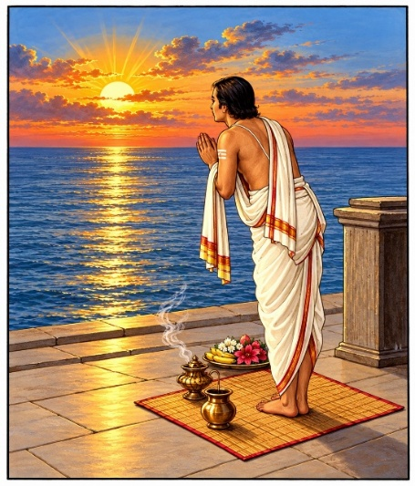
सूर्यको अर्घ्य देकर उनका पूजनकर सिर झुकाकर देवतीर्थ, पितृतीर्थ, अग्नितीर्थ, कायतीर्थ, ब्रह्मतीर्थ प्रणाम करके ‘उत्तमे शिखरे देवी’ ऐसा कहकर माताका विसर्जन करके पूर्व दिशामें देखते हुए वेदमाता महेश्वरी गायत्रीका अभिवन्दन करके दोनों हाथ जोड़कर सूर्यकी प्रार्थना करनी चाहिये। ‘उदुत्यं जातवेदसम्’ तथा ‘चित्रं देवानाम्’— इन मन्त्रोंसे सूर्य तथा ब्रह्माको नमस्कार करके ऋग्वेद, यजुर्वेद तथा सामवेदके सूर्यसम्बन्धी सूक्तोंका विधानपूर्वक पाठ करके तीन बार सूर्यदेवकी प्रदक्षिणा करनी चाहिये॥४-७॥
इसके बाद आत्मा, अन्तरात्मा तथा परमात्माका ध्यान करके सूर्य, ब्रह्मा एवं अग्निको प्रणाम करना चाहिये। पुनः मुनियों, पितरों तथा देवताओं— सभीका उनका अपने नामसे आवाहन करे। सबको आवाहित करके पूर्वमुख अथवा उत्तरमुख होकर उनके तत्त्वों तथा स्वरूपोंका ध्यान करके विधिपूर्वक क्रमसे तीर्थके जलसे तर्पण करना चाहिये और अन्तमें प्रणाम करना चाहिये॥८-१०॥
पुष्पयुक्त जलसे देवताओंका, कुशयुक्त जलसे ऋषियोंका तथा तिल और गन्धयुक्त जलसे पितरोंका तर्पण करना चाहिये॥११॥
हे विप्रेन्द्र! यज्ञोपवीती अर्थात् सव्य होकर देवतर्पण, निवीती अर्थात् कण्ठमें यज्ञोपवीत धारण करके ऋषितर्पण तथा प्राचीनावीती अर्थात् अपसव्य होकर पितृतर्पण क्रमानुसार करना चाहिये॥१२॥
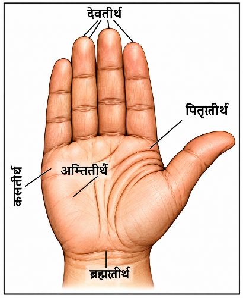
ब्रह्मयज्ञ, देवयज्ञ, पितृयज्ञ, मनुष्ययज्ञ, भूतयज्ञ सभी सिद्धियोंकी प्राप्तिके लिये बुद्धिमान् तथा विद्वान् वेदज्ञ ब्राह्मणको चाहिये कि वह अंगुलिके अग्रभागसे देवतर्पण, कनिष्ठ अँगुलिसे ऋषितर्पण एवं दाहिने अँगूठेसे पितृतर्पण सम्पन्न करे॥१३½॥
हे मुनिश्रेष्ठ! इसी प्रकार यज्ञकर्मपरायण तथा पवित्रात्मा द्विजको ब्रह्मयज्ञ, देवयज्ञ, मनुष्ययज्ञ, भूतयज्ञ एवं पितृयज्ञ करना चाहिये॥१४-१५॥
हे विप्रो! अपनी शाखाका अध्ययन करना ब्रह्मयज्ञ कहा गया है तथा अग्निमें अन्न आदिका हवन देवयज्ञ कहा गया है। उसी प्रकार सभी भूतोंके लिये विधिपूर्वक बलि देना भूतयज्ञ कहा जाता है; यह भूतयज्ञ प्राणियोंको ऐश्वर्य प्रदान करनेवाला है। वेदवेत्ता एवं तत्त्वज्ञ ब्राह्मणोंको उनकी भार्यासहित सभीको प्रणाम करके उन्हें अन्नका दान करना मनुष्ययज्ञ कहा जाता है। पितरोंके निमित्त जो श्राद्ध आदि सम्पन्न किया जाता है, उसे पितृयज्ञ कहते हैं। इस प्रकार सभी मनोरथोंकी सिद्धिके लिये इन पाँच महायज्ञोंको करना चाहिये॥१६-१९॥
सुनिये, ब्रह्मयज्ञ सभी यज्ञोंसे श्रेष्ठ यज्ञ कहा गया है। ब्रह्मयज्ञ करनेवाला मनुष्य ब्रह्मलोकमें वास करते हुए आनन्दित होता है। ब्रह्मयज्ञसे इन्द्रसमेत सभी देवता, ब्रह्मा, भगवान् विष्णु, नीललोहित शंकरजी, सभी वेद तथा पितृगण संतुष्ट हो जाते हैं; इसमें किसी प्रकारकी शंका नहीं करनी चाहिये॥२०-२१½॥
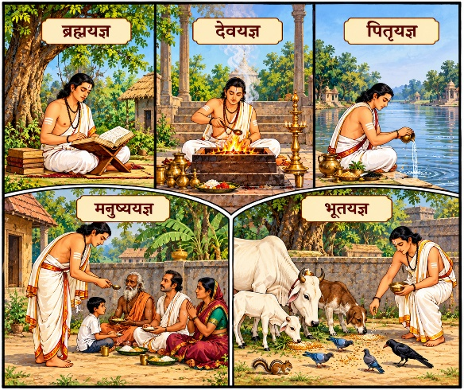
ब्रह्मयज्ञ करनेके लिये ब्रह्मयज्ञवेत्ता ब्राह्मणको गाँवसे उतनी दूर बाहर चले जाना चाहिये, जहाँसे झोपड़ियोंकी छततक दिखायी न दे। वहाँ बैठकर पूर्व, उत्तर अथवा ईशान दिशाकी ओर मुख करके शुद्धिके लिये आचमन करना चाहिये॥२२-२३½॥
हे ब्राह्मणो! ऋग्वेदाधिष्ठातृ देवताकी प्रीतिके लिये तीन बार चुलुकभर जल पीकर, यजुर्वेदाधिष्ठातृ देवताकी प्रीतिके लिये जलद्वारा दो बार प्रक्षालन एवं परिमार्जन करके, सामवेदाधिष्ठातृ देवताकी प्रीतिके लिये आचमन करके मूर्धाका स्पर्श करे। आंगिरससम्बन्धी अथर्ववेदके अधिष्ठातृ देवताकी प्रीतिके लिये नेत्रोंका स्पर्श करे। ब्राह्मणग्रन्थों, शिक्षा-कल्प आदि वेदांगोंकी प्रीतिके लिये नासिकाको जलसे पवित्रकर स्पर्श करे। क्रमशः ब्रह्म आदि अठारह पुराणों, सौर आदि उपपुराणों, पवित्र इतिहासग्रन्थों तथा शैवादि आगमग्रन्थोंकी तुष्टिके लिये कानका स्पर्श करे। तदनन्तर हृदयदेशका स्पर्श करे। हे श्रेष्ठ कल्पवेत्ताओ! सभी कल्पग्रन्थोंके लिये भी पूर्वोक्त क्रिया करनी चाहिये॥२४-२८½॥
बुद्धिमान् एवं संयमी श्रोत्रियको समाहितचित्त होकर इस प्रकार आचमन करके अपने दक्षिणसे उत्तरकी ओर कुश बिछाकर उसपर हाथ रखकर अपने हाथकी अँगुलीमें कुशाकी पवित्री अथवा सोनेकी अँगूठी धारणकर विधिपूर्वक ब्रह्मयज्ञ करना चाहिये। मुनि तथा द्विज होकर जो मनुष्य इन पाँच महायज्ञोंको किये बिना भोजन करता है, वह सूकरकी योनिमें जन्म लेता है; अतः अपने कल्याणके इच्छुक व्यक्तिको विशेष प्रयत्नके साथ इन्हें सम्पन्न करना चाहिये॥२९-३२॥
ब्रह्मयज्ञके पश्चात् डुबकी लगाकर स्नान करके इन्द्रियोंको वशमें रखनेवाले उस पुरुषको चाहिये कि तीर्थका जल लेकर विधिवत् शिविरमें प्रवेश करे। घरके बाहर जलसे हाथ-पैर धोकर पुनः देहकी शुद्धिके लिये भस्मस्नान करना चाहिये। इसके लिये विधिपूर्वक अग्निहोत्रका भस्म लेकर नियमानुसार प्रणवसे उसका शोधन कर लेना चाहिये। सूर्यके ज्योतिस्वरूप होनेसे सूर्योदयके पश्चात् प्रातःकाल ‘ज्योतिः सूर्य०’ इस मन्त्रसे और सायंकालमें ‘ज्योतिरग्नि०’ इस मन्त्रसे हवन करना चाहिये। सूर्योदय हुए बिना किया गया अग्निहोत्र व्यर्थ होता है। इसलिये सूर्योदयके बाद किये गये हवनकी भस्म पवित्र तथा कल्याणप्रद होती है॥३३-३६॥
सत्यके समान कुछ भी नहीं है और असत्यसे बड़ा कोई पाप नहीं होता है। हे सुव्रतो! ईशानमन्त्रसे सिर, तत्पुरुषसे मुख, अघोरसे वक्षःस्थल, वामदेवसे गुह्यस्थान, सद्योजातसे दोनों पैर तथा प्रणवसे सभी अंगोंका भस्माभिषेचन करना चाहिये॥३७-३८॥
ब्रह्मवेत्ताओंमें श्रेष्ठ पुरुषको इस भाँति भस्म-स्नान करके हाथ-पैर धोकर हाथमें कुश लेकर देवदेव शिवका स्मरण करते हुए ‘आपो हि ष्ठा’ आदि मन्त्रों तथा ऋक्, यजुः एवं सामके पवित्र मन्त्रोंसे मन्त्रस्नान करना चाहिये॥३९-४०॥
ब्राह्मणोंके हितके लिये ही मैंने इस स्नानविधिका आज आपसे संक्षेपमें वर्णन किया है। जो मनुष्य एक बार भी इस विधिसे स्नान करेगा, वह परम गतिको प्राप्त होगा॥४१॥
॥इस प्रकार श्रीलिङ्गमहापुराणके अन्तर्गत पूर्वभागमें ‘पंचयज्ञविधान’ नामक छब्बीसवाँ अध्याय पूर्ण हुआ॥२६॥
सत्ताईसवाँ अध्याय
लिङ्गार्चनविधिके अन्तर्गत महेश्वरस्वरूप होकर विविध उपचारोंद्वारा लिङ्गपूजाका विधान, लिङ्गाभिषेककी महिमा तथा अभिषेकके मन्त्र
शैलादि बोले— [हे सनत्कुमार!] सुनिये, अब मैं संक्षेपमें ही क्रमसे लिङ्गार्चन-विधिका वर्णन करूँगा; क्योंकि विस्तारके साथ इसका वर्णन तो सौ वर्षोंमें भी नहीं किया जा सकता है॥१॥
इस विधिसे नियमपूर्वक (त्रिविध जल, भस्म एवं मन्त्रसे) स्नानकर पूजाके स्थानपर प्रवेश करके तीन प्राणायामकर त्रिनेत्र, पंचमुख, दश भुजाओंवाले, शुद्ध स्फटिकतुल्य वर्णवाले, सभी आभूषणोंसे अलंकृत तथा विचित्र वस्त्रसे विभूषित शिवका ध्यान करना चाहिये॥२-३॥
उनके इस रूपका ध्यानकर दाहन तथा प्लावन आदि भूतशुद्धिकी क्रियासे युक्त शैवी देहको हृदयमें स्थापित करके परमेश्वर शिवका पूजन करना चाहिये॥४॥
इस प्रकार देहशुद्धि करके क्रमशः मूलमन्त्र, प्रणवयुक्त [अघोरादि पंच] ब्रह्ममन्त्रोंसे देहके सभी अंगोंमें न्यास करे॥५॥
परम कल्याणप्रद इस ‘नमः शिवाय’ सूत्रमें समस्त वेद तथा मन्त्र सूक्ष्मरूपमें विद्यमान रहते हैं। जिस प्रकार वटके बीजमें विशाल वटवृक्षका भाव उपस्थित रहता है, उसी प्रकार इस पवित्र एवं महत्युक्त सूत्रमें महान् ब्रह्म सूक्ष्मरूपसे साक्षात् विराजमान है॥६-७॥
पूजाके स्थानको गन्ध तथा चन्दनसे युक्त जलके द्वारा सेचित करना चाहिये; पुनः सभी पूजनद्रव्योंको क्षालन, प्रोक्षण आदिसे शोधित कर लेना चाहिये। क्षालन तथा प्रोक्षण प्रणवसे ही किया जाता है॥८½॥
विवेकी पुरुषको चाहिये कि वह प्रोक्षणीपात्र, अर्घ्यपात्र, पाद्यपात्र तथा आचमनपात्रको भलीभाँति अनुक्रमसे स्थापित करे और फिर विधिपूर्वक अवगुंठन करे। पुनः उन सभी पात्रोंमें शुद्ध एवं शीतल जल डालकर उन्हें कुशोंसे ढककर उनपर शुद्ध जलका प्रोक्षण करना चाहिये॥९-११॥
तत्पश्चात् बुद्धिमान् पुरुषको उन पात्रोंमें भलीभाँति देखकर विभिन्न द्रव्य प्रणवपूर्वक डालने चाहिये। पाद्यपात्रमें उशीर तथा चन्दन डाले और जाति, कंकोल, कपूर, शतावरी एवं तमालका चूर्ण बनाकर इन्हें उचित मात्रामें आचमनीय पात्रमें डाले। चंदन, कपूर तथा विविध प्रकारके पुष्प सभी पात्रोंमें डालने चाहिये॥१२-१४॥
कुशका अग्रभाग, अक्षत, यव, धान, तिल, घी, सफेद सरसों, पुष्प तथा भस्म— इन्हें अर्घ्यपात्रमें डालना चाहिये। कुश, पुष्प, यव, धान, शतावरी, तमाल एवं भस्म— इन द्रव्योंको प्रणवसे प्रोक्षणीपात्रमें डालना चाहिये॥१५-१६॥
तत्पश्चात् पञ्चाक्षर मन्त्र, रुद्रगायत्री अथवा केवल वेदसाररूप सर्वोत्तम प्रणवसे इन पात्रोंको अभिमन्त्रित करना चाहिये॥१७॥
इसके अनन्तर प्रणवयुक्त ईशान (ॐ ईशानः सर्वविद्यानाम्०) आदि पाँच याजुष मन्त्रोंसे प्रोक्षणीपात्रमें स्थित जलके द्वारा सभी पूजनद्रव्योंका प्रोक्षण करे॥१८॥
पुनः देवदेव शिवजीके दाहिनी ओर स्थित हजारों देदीप्यमान अग्निके सदृश वर्णवाले, बालचन्द्रमाको मुकुटरूपमें सिरपर धारण करनेवाले, वानरके तुल्य मुखवाले, चार भुजाओंवाले, पुष्पकी माला धारण करनेवाले, सौम्य स्वरूपवाले तथा सभी अलंकारोंसे
(मूल पृष्ठ १२८ से १३० का अवशिष्ट अनुवाद)
सुशोभित मुझ त्रिनेत्र नन्दीका विधिवत् पूजन करना चाहिये। पुनः उत्तरभागमें विराजमान पुण्यमयी, स्वर्णसदृश आभावाली, सुन्दर, कीर्तिशालिनी, पतिव्रता एवं माता पार्वतीके चरणोंके मण्डनमें सतत तत्पर रहनेवाली देवीरूपिणी मेरी भार्याकी पूजा करनी चाहिये॥१९-२१॥
इस प्रकार हम दोनोंकी पूजा करके परमेष्ठी शिवके मन्दिरमें प्रवेशकर शिवजीके पाँचों मस्तकोंपर सद्योजात आदि पाँच मन्त्रोंसे भक्तिपूर्वक पुष्पाञ्जलि अर्पित करनी चाहिये। पुनः गन्ध, पुष्प, धूप तथा विविध उपचारोंसे शंकर, कार्तिकेय, गणेशजी एवं पार्वतीकी पूजा करके शिवलिङ्गका निर्माल्य (अर्पित चढ़ावेका अवशेष) दूरकर लिङ्गकी शुद्धि करनी चाहिये॥२२-२३॥
पुनः सभी मन्त्रोंके आदिमें प्रणव (ॐ) तथा अन्तमें ‘नमः’ लगाकर जप करनेके पश्चात् परमेश्वरको प्रणवमन्त्रके द्वारा अष्टदल कमलरूप आसन निवेदित करना चाहिये॥२४॥
उस आसनका पूर्वदल अविनाशी तथा साक्षात् अणिमासिद्धिस्वरूप है। उसका दक्षिणदल लघिमा, पश्चिमदल महिमा, उत्तरदल प्राप्ति, अग्निकोणका दल प्राकाम्य, नैऋत्यकोणका दल ईशित्व, वायव्यकोणका दल वशित्व एवं ईशानकोणका दल सर्वज्ञत्वसिद्धिरूप है। उस पद्मासनकी कर्णिका (मध्यभाग) सोममण्डल कही जाती है। सोममण्डलके नीचे सूर्यमण्डल तथा उसके भी नीचे साक्षात् अग्निमण्डल है॥२५-२७॥
चारों उपदिशाओं (आग्नेय, नैऋत्य, वायव्य तथा ईशान) में धर्म आदि (धर्म, ज्ञान, वैराग्य एवं ऐश्वर्य), पूर्वादि चारों दिशाओं (पूर्व, दक्षिण, पश्चिम तथा उत्तर)-में अव्यक्तादि (अव्यक्त, महत्तत्त्व, अहंकार एवं चित्त), सोममण्डलके ऊपर तीन गुण (सत्त्व, रज, तम), इनके ऊपर तीन आत्माएँ (विश्व, तैजस तथा प्राज्ञ) और उसके ऊपर शिवपीठिका विराजमान है; ऐसे अनन्तस्वरूप आसनकी कल्पना करनी चाहिये॥२८½॥
पुनः ‘सद्योजातं प्रपद्यामि०’ इस मन्त्रसे परमेश्वर शिवका आवाहन करके वामदेवमन्त्रसे आसनके ऊपर उन्हें स्थापित करे। फिर रुद्रगायत्री मन्त्रसे सान्निध्य, अघोर मन्त्रसे निरोधन तथा ‘ईशानः सर्वविद्यानाम्०’ इस मन्त्रसे शिवकी पूजा करे। पाद्य, अर्घ्य एवं आचमन परमेश्वरको अर्पित करे। पुनः गन्ध तथा चन्दनयुक्त जलसे उन्हें विधिपूर्वक स्नान कराये॥२९-३१½॥
इसके बाद पात्रमें विधिविधानसे पंचगव्य बनाकर उसे प्रणवसे अभिमन्त्रित करके पुनः प्रणवमन्त्रसे उस पंचगव्यसे शिवको विधिवत् स्नान कराये। इसके अनन्तर प्रणव तथा वेदमन्त्रोंका पाठ करते हुए गोघृतसे, मधुसे, इक्षुरससे एवं अन्य पवित्र द्रव्योंसे महादेवका अभिषेक करना चाहिये। इसके बाद पवित्र जलपात्रोंसे जल छोड़कर साधकको भलीभाँति शिवलिङ्गका प्रक्षालन (शुद्ध स्नान) कर लेना चाहिये॥३२-३४॥
इसके बाद साधकको श्वेत वस्त्रोंसे यथाविधि जलका शोधन करके स्वर्ण, चाँदी या ताम्रपात्र अथवा कमलपत्र, पलाशपत्र, शंख अथवा शोधित सुन्दर मृत्तिकापात्र लेकर उसे पूर्वोक्त शुद्ध जलसे पूर्ण कर लेना चाहिये। पुनः उसमें कुश, अपामार्ग, कर्पूर, जातिपुष्प, चम्पा, श्वेत करवीर, मल्लिका, कमल, उत्पल आदि सुन्दर पुष्प, चन्दन आदि डालकर उस जलको सद्योजात आदि मन्त्रोंसे अभिमन्त्रित करके मन्त्रोच्चारके साथ उस जलकुम्भसे शिवजीका अभिषेक करना चाहिये॥३५-३८½॥
[नन्दीश्वर कहते हैं— हे सनत्कुमारजी!] अब मैं सभी मनोरथोंकी सिद्धि करनेवाले उन मन्त्रोंको आपको बताऊँगा; जिनका पाठ करके एक बार भी शिवलिङ्गका अभिषेक करनेसे मनुष्य भवबन्धनसे छूट जाता है॥३९½॥
[सूतजी बोले—] हे मन्त्रवेत्ता ऋषिगण! पवमान (ऋग्वेदीय पावमानी ऋचाएँ), वामसूक्त (ऋक्० १।१६४), रुद्राध्याय (शुक्लयजुर्वेद अ० १६), अथर्ववेदीय नीलरुद्र (११।२), पवित्र श्रीसूक्त (ऋग्वेद), रात्रिसूक्त (ऋग्वेद), कल्याणप्रद चमक (यजुर्वेद अ० १८), होतार, मंगलमय अथर्वशिर, शान्ति, भारुण्ड, अरुण, वारुण, ज्येष्ठ, वेदव्रत, आन्तर, पुण्यप्रद पुरुषसूक्त (यजुर्वेद), त्वरितरुद्र, कपि, कपर्दी, सामवेदीय आ वो राज० (मन्त्र-संख्या ६९), बृहच्चन्द्र, विष्णु, विरूपाक्ष, स्कन्द, शिवकी सौ ऋचा, पंचब्रह्म (सद्योजातादि पाँच मन्त्र), नमः शिवाय तथा केवल प्रणवमन्त्रसे ही सभी पापोंके शमनहेतु देवदेवेश शिवका अभिषेक करना चाहिये॥४०-४५½॥
तत्पश्चात् भगवान् शंकरको वस्त्र, यज्ञोपवीत, आचमनीय, गन्ध, पुष्प, धूप, दीप, नैवेद्य, सुगन्धित जल, पुनः आचमन, [रत्नजटित] मुकुट, सुन्दर छत्र, आभूषण तथा मुखवास (ताम्बूल) आदि उपचार प्रणव-मन्त्रक्रमसे अर्पित करना चाहिये॥४६-४८॥
इसके बाद स्फटिकके सदृश वर्णवाले, कलारहित, अविनाशी, समस्त देवताओंके भी कारण, सभी लोकोंमें व्याप्त, परात्पर, ब्रह्मा-विष्णु-इन्द्र-रुद्र आदि देवताओं तथा देवर्षियोंसे अगम्य, श्रुतियोंके अनुसार वेदों एवं उपनिषदोंके ज्ञाताओंसे भी अगोचर, आदि-मध्य-अन्तसे रहित, भवरोगसे संतप्त प्राणियोंके लिये औषधरूप प्रसिद्ध शिवतत्त्व शिवलिङ्गमें प्रतिष्ठित है— इस प्रकारसे शिवलिङ्गमें महादेवका ध्यान करना चाहिये॥४९-५१॥
पुनः लिङ्गके शीर्षपर प्रणव मन्त्रसे पूजा करनी चाहिये और विधिपूर्वक स्तोत्रपाठ करके नमस्कार तथा प्रदक्षिणा करनी चाहिये। इसके बाद अर्घ्य प्रदान करके महादेवके चरणोंमें पुष्प अर्पितकर उन्हें साष्टांग प्रणाम करे एवं देवाधिदेव शिव मुझमें समाहित हैं— ऐसी भावना करे॥५२-५३॥
[हे सनत्कुमारजी!] इस प्रकार मैंने शिवलिङ्गके उत्तम पूजन-विधानका वर्णन संक्षेपमें कर दिया और अब आपको आभ्यन्तर लिङ्गार्चनविधि बताऊँगा॥५४॥
॥इस प्रकार श्रीलिङ्गमहापुराणके अन्तर्गत पूर्वभागमें ‘लिङ्गार्चनविधि’ नामक सत्ताईसवाँ अध्याय पूर्ण हुआ॥२७॥
अट्ठाईसवाँ अध्याय
भगवान् महेश्वरके आभ्यन्तरपूजनका स्वरूप, सकल तथा निष्कल तत्त्वकी व्याख्या, छब्बीस तत्त्वोंका परिगणन एवं सम्पूर्ण चराचर जगत्की शिवरूपता
शैलादि बोले— अपने हृदयमें अग्निमण्डल, सूर्यमण्डल तथा चन्द्रमण्डलका ध्यान करे। पुनः क्रमसे उसके ऊपर तीन गुण, तीन आत्मा एवं उसके ऊपर कलायुक्त स्वरूपवाले, कलारहित अर्धनारीश्वर महादेवकी भावना करके ध्यानयोगके द्वारा उनका पूजन करना चाहिये॥१-२॥
यदि चिन्तकके ध्यानावस्थित चित्तमें चिन्त्य तत्त्व [बहुविध कहे जानेके कारण] अनेक रूपोंमें प्राप्त भी हो, तब भी अभेद बुद्धिके कारण चिन्ता करना उचित नहीं है॥३॥
इसीलिये यजमानको चाहिये कि अपने परम प्रयोजन जो ध्येयरूप सदाशिव हैं, उनका ही ध्यान-स्मरण और ज्ञान प्राप्त करे, अन्यथा पुरुष इस शरीरमें ब्रह्म (सदाशिव) को कभी नहीं प्राप्त कर सकेगा॥४॥
देह ही पुर है। उस पुरमें शयन करनेके कारण ही जीव पुरुष कहा जाता है। जो यज्ञसे याज्यका यजन करता है, वह यजमान कहा जाता है॥५॥
महेश्वर ध्येय हैं, उनका चिन्तन ही ध्यान है, मोक्ष ही जीवनका प्रयोजन है— इन तथ्योंको भलीभाँति जाननेवाला ही वास्तविक रूपसे प्रधान पुरुष शिवको प्राप्त कर सकता है॥६॥
यहाँ कुल छब्बीस तत्त्व हैं। इनमें छब्बीसवाँ ध्येय है, पच्चीसवाँ ध्याता (जीव) है तथा चौबीसवाँ तत्त्व अव्यक्त अर्थात् प्रकृति है। महत् आदि अर्थात् महत्तत्त्व, अहंकार, पाँच तन्मात्राएँ— ये सात, पाँच कर्मेन्द्रियाँ, पाँच ज्ञानेन्द्रियाँ, पाँच महाभूत तथा मन— ये ही छब्बीस तत्त्व हैं। इनमें छब्बीसवाँ तत्त्व शिव है। वही ब्रह्माका तथा संसारका रचयिता और भरणकर्ता है॥७-९॥
उसी रुद्रने हिरण्यगर्भको उत्पन्न किया। भगवान् शंकर विश्वाधिक अर्थात् जगत्के परम कारण, विश्वात्मा तथा विश्वरूप कहे गये हैं॥१०॥
जिस प्रकार माता-पिताके बिना पुत्र उत्पन्न नहीं हो सकते; उसी प्रकार उमासहित शिवके बिना तीनों जगत्की उत्पत्ति सम्भव नहीं है॥११॥
सनत्कुमार बोले— यदि परमात्मा महेश्वर शिव ही सब कुछ करने तथा करानेवाले हैं, साथ ही आपने यह भी कहा है कि वे परमेश्वर शिव नित्य, विशुद्ध, चैतन्य, निष्कल तथा मुक्तिदाता हैं; तो फिर वे अल्पात्मा जीवोंको बन्ध-मोक्ष क्यों देते हैं? और फिर निष्कल अर्थात् निष्क्रिय होते हुए वे ऐसा कैसे कर सकते हैं?॥१२-१३॥
शैलादि बोले— काल सम्पूर्ण जगत्का सृजन करता है और परमेश्वर कुछ भी करनेके लिये कालको सदा प्रेरणा प्रदान करता है अर्थात् कालके माध्यमसे परमेश्वर जीवोंको बन्ध-मोक्ष देता है। निष्क्रिय मन शिवका ध्यान करता है, इसलिये वे भी निष्क्रिय स्वरूपवाले हैं॥१४॥
उसी परमेश्वरके कर्मसे यह समग्र जगत् प्रतिष्ठित है; क्योंकि यह जगत् उस देवदेव महेश्वरकी अष्टमूर्ति है। आकाश, पृथ्वी, वायु, तेज, जल, यजमान, सूर्य तथा चन्द्रमा— इन आठ मूर्तियोंके बिना यह जगत् नहीं हो सकता है। ये सब उसी प्रभुके स्वरूप हैं; अतएव विचार करनेसे यही ज्ञात होता है कि यह चराचर जगत् उसी परमेश्वरके स्थूल रूपमें व्यक्त हो रहा है॥१५-१७॥
हे श्रेष्ठ द्विजो! ऋषिगण कहते हैं कि परमेश्वरका जो सूक्ष्म रूप है, उसका तो वर्णन ही नहीं किया जा सकता; क्योंकि वाणी उनके सूक्ष्म रूपका वर्णन करनेमें असमर्थ होकर मनसहित वापस लौट आती है अर्थात् वह मन तथा वाणीसे सर्वथा अगम्य है॥१८॥
ब्रह्म अर्थात् रुद्रका ही वाचक आनन्द है— ऐसा जाननेवाला विद्वान् कहीं भी भयभीत नहीं होता। अतएव पिनाकी शिवका आनन्दमय स्वरूप जानकर भयभीत नहीं होना चाहिये॥१९॥
सर्वत्र रुद्रकी ही विभूतियाँ व्याप्त हैं— ऐसा विश्वासपूर्वक जानकर तत्त्वदर्शी मुनियोंने कहा है कि सब कुछ रुद्र ही है॥२०॥
परमेष्ठी शिवकी महिमाको समझकर उन्हें सतत नमस्कार करते हुए इस सम्पूर्ण जगत्को ब्रह्म अर्थात् शिवसे व्याप्त मानना चाहिये। उन्हीं शर्व, रुद्र, ईश्वर, पुरुष, महादेव, महेशान, परात्पर, शिव तथा विभुको सर्वत्र विराजमान समझकर उन्हींका ध्यान एवं चिन्तन करना चाहिये॥२१-२२॥
हे सुव्रत! चतुर्व्यूहमार्गसे अर्थात् ध्येय, ध्यान, यजमान और प्रयोजनरूपसे विचार करके तथा देख करके जो परमेश्वरको जान लेता है, वह मुक्त हो जाता है। संसारका हेतु ममत्व तथा मोक्षका हेतु विराग है। चिन्तक योगीके लिये चतुर्व्यूहमार्ग मुक्तिका सर्वश्रेष्ठ साधन कहा गया है॥२३½॥
ब्रह्माजीने बुद्धिके लिये बहुत प्रकारकी चिन्ताएँ रचीं; किंतु रुद्रका चिन्तन सभी चिन्ताओंसे श्रेष्ठ कहा गया है; इसमें कोई संदेह नहीं है॥२४½॥
इन्द्रकी ऐन्द्री चिन्ता, सोमकी सौम्या नामक चिन्ता, नारायणकी चिन्ता, सूर्यकी चिन्ता तथा अग्निकी चिन्ता— इन सबकी चिन्ता वास्तवमें रुद्रकी ही चिन्ता है। इस प्रकार विचार करके वह चिन्ता मैं ही हूँ तथा वह परमेश्वर भी मैं ही हूँ— जो भक्त इन दोनों बातोंको श्रद्धापूर्वक अपने मनमें स्थापित किये रहता है, वह परमेश्वरसे भिन्न नहीं है। अतः इस प्रकारकी चिन्ता (चिन्तन) ब्राह्मी चिन्ता कही गयी है; इसमें सन्देह नहीं है॥२५-२६½॥
हे विप्र! इस प्रकार पहले यह ध्यान करना चाहिये कि यह स्थावर-जंगमरूप जगत् ब्रह्ममय है; पुनः ब्रह्मात्मक शिवका स्मरण करते हुए चर-अचरका विभाग भी छोड़ देना चाहिये अर्थात् चराचरमें भिन्नताका भाव नहीं रखना चाहिये॥२७½॥
जिस पुरुषके लिये कुछ भी त्याज्य (त्यागनेयोग्य), ग्राह्य (लेनेयोग्य), अलभ्य (प्राप्त न होनेयोग्य), कृत्य (करनेयोग्य) तथा अकृत्य (न करनेयोग्य) नहीं रह जाता; उस परम संतुष्ट पुरुषकी चिन्ता ब्राह्मी चिन्ता है; इसमें संदेह नहीं है॥२८½॥
इस प्रकार मैंने क्रमसे आभ्यन्तर पूजनका वर्णन कर दिया। आभ्यन्तर अर्चन करनेवाले पुरुष नमस्कार आदिके द्वारा सदा पूजनीय हैं। ऐसे ब्रह्मवादी पूजक विरूप तथा विकृत हों; तो भी उनकी निन्दा नहीं करनी चाहिये॥२९-३०॥
विद्वान् पुरुषको जान-बूझकर किन्हीं भी आभ्यन्तर पूजककी परीक्षा नहीं लेनी चाहिये। अल्प बुद्धिवाले ऐसे निन्दक उसी प्रकार दुःखसे पीड़ित होंगे, जैसे प्राचीन कालमें दारुवनमें रुद्रकी निन्दा करके मुनियोंने कष्ट प्राप्त किया था। अतएव वर्णाश्रममें रहनेवाले पुरुषोंको चाहिये कि वे वर्णाश्रमसे अतीत ब्रह्मवेत्ताओंकी सदा सेवा करें तथा उन्हें नमस्कार करें॥३१-३३॥
॥इस प्रकार श्रीलिङ्गमहापुराणके अन्तर्गत पूर्वभागमें ‘शिवार्चनतत्त्वसंख्यादिवर्णन’ नामक अट्ठाईसवाँ अध्याय पूर्ण हुआ॥२८॥
उनतीसवाँ अध्याय
देवदारुवनका वृत्तान्त, अतिथिमाहात्म्यमें सुदर्शनमुनिका आख्यान तथा संन्यासधर्मका वर्णन
सनत्कुमारजी बोले— हे विभो! प्राचीनकालमें दारुवनमें तपस्यासे भावित आत्मावाले उन वनवासी मुनियोंके साथ जो भी घटित हुआ, उसे मैं इस समय सुनना चाहता हूँ॥१॥
ऊर्ध्वरेता दिगम्बर भगवान् शिव विकृत रूप धारण करके दारुवनमें क्यों गये? उस वनमें परमात्मा रुद्रके साथ क्या हुआ? उन देवाधिदेव शिवके क्रिया-कलापोंका भी यथार्थ रूपसे वर्णन करनेकी कृपा कीजिये॥२-३॥
सूतजी बोले— [हे ऋषिगण!] उन सनत्कुमारका यह वचन सुनकर श्रुतिसारविदोंमें वरिष्ठ शिलादपुत्र भगवान् नन्दिकेश्वर कुछ-कुछ हँसते हुए उनसे कहने लगे॥४॥
शैलादि बोले— एक बार घने देवदारुवनमें देवाधिदेव रुद्रकी प्रसन्नताके लिये अपने स्त्री-पुत्रादिसहित पंचाग्निका सेवन करते हुए मुनिगण कठोर तप कर रहे थे॥५॥
उनके तपसे प्रसन्न जगन्नाथ, चेकितान, वृषध्वज, धूर्जटि, परमेशान, नीललोहित भगवान् रुद्र दारुवनमें निवास करनेवाले उन मुनियोंके प्रवृत्ति-लक्षण तथा ज्ञानकी जानकारी करनेके लिये एवं उनमें श्रद्धाभावकी परीक्षा करनेके लिये और साथ ही प्रवृत्तिज्ञानसे युक्त चित्तवाले उन देवदारुवनवासी मुनियोंमें निवृत्ति-लक्षण तथा ज्ञान स्थापित करनेके निमित्त लीलापूर्वक विकृत रूप धारण करके अलौकिक दारुवनमें पहुँचे। उस समय शंकरजी कृष्ण वर्णवाले, दो भुजाओंवाले, तीन आँखोंवाले, दिगम्बर तथा मोहक स्वरूपवाले थे॥६-९॥
अत्यन्त सुन्दर रूपवाले भगवान् शिव मन्द मुसकान तथा भ्रूविलास करते हुए गीत गाकर स्त्रियोंमें कामभावना उत्पन्न कर रहे थे॥१०॥
कामदेवका संहार करनेवाले तथा अत्यन्त मोहक आकृतिवाले भगवान् शिव वहाँ नारीसमूहको बार-बार देखकर उनके भीतर कामभावनाको बढ़ा रहे थे॥११॥
वनमें उस विकृत तथा नीललोहित वर्णवाले पुरुषको देखकर पतिव्रता स्त्रियाँ भी प्रेमपूर्वक उनके पीछे-पीछे चलने लगीं॥१२॥
आरण्यक कुटीरोंके द्वारतक आयी हुई स्त्रियोंके वस्त्र एवं अलंकार शिथिल हो गये। वे मूर्च्छित-सी हो गयीं, उन लीलामय शिवके मुखारविन्दकी मोहक मुसकानको पाकर वृक्षोंके आश्रयमें रहनेवाली वे नारियाँ उनके पीछे-पीछे चल दीं॥१३॥
शिवजीको देखकर प्रौढ़ावस्थावाली होनेपर भी कुछ स्त्रियाँ मदमत्त होकर आँखें घुमाने लगीं तथा भौंहोंका संचालन करने लगीं॥१४॥
तदनन्तर शिवको देखकर दूसरी स्त्रियाँ मुसकानयुक्त मुखवाली हो गयीं, उनके वस्त्र कुछ शिथिल-से हो गये, कांचीबन्धन भी ढीले हो गये; वे मिलकर गाने लगीं॥१५॥
उस समय शिवको विपिनमें देखकर कुछ ऋषिपत्नियाँ तो शिथिल नूतन वस्त्रों तथा अपने-अपने विचित्र वलयोंको फेंककर मदान्वित हो स्वजनोंके पास पहुँचीं॥१६॥
उस समय शिथिल वस्त्रवाली कोई तो शिवको देखकर विशिष्ट वासनायुक्त हो गयी तथा अन्य स्त्रियाँ मतवाली-सी होकर विचित्र शाखावाले प्रसिद्ध वृक्षोंको एवं घनिष्ठ बन्धुजनोंतकको नहीं पहचानती थीं॥१७॥
हे द्विजश्रेष्ठो! कुछ स्त्रियाँ उनके पास जाकर नाचने लगीं और जमीनपर गिर पड़ीं। कुछ स्त्रियाँ हाथीकी भाँति बैठ गयीं। कोई दूसरी स्त्री कुछ बोलने लगी॥१८॥
मुसकराते हुए एक-दूसरेको देखकर वे परस्पर आलिंगन करने लगीं। वे सभी ओरसे शिवजीका मार्ग रोककर अनेक प्रकारके हाव-भाव दर्शाने लगीं॥१९॥
कुछ स्त्रियाँ उनसे कहने लगीं कि ‘आप कौन हैं? बैठिये।’ अन्य स्त्रियाँ भी प्रसन्नचित्त होकर कहने लगीं— ‘आप कहाँ जा रहे हैं? आप हम सबपर प्रसन्न होइये’॥२०॥
भगवान् शंकरकी मायाके प्रभावसे अपने पतियोंके सम्मुख ही पतिव्रता स्त्रियोंके वस्त्रपरिधान, केश आदि अस्त-व्यस्त हो गये और वे कामुक स्त्रियोंकी भाँति स्वेच्छाचारितापूर्ण व्यवहार प्रदर्शित करने लगीं॥२१॥
उन स्त्रियोंके हाव-भाव देखकर तथा उनके वचन सुनकर निर्विकार परमेश्वर शिव शुभ अथवा अशुभ कुछ भी नहीं बोले॥२२॥
उस प्रकारकी चेष्टावाली नारियोंके समूहको देखकर वे विप्र मुनीश्वर दिगम्बरवेशधारी शिवको उस अवस्थामें देखकर [शंकरजीके प्रति] अत्यन्त कठोर वचन कहने लगे। किंतु उनकी सभी तपस्याएँ शंकरजीके सम्मुख उसी प्रकार निष्फल सिद्ध हुईं, जिस प्रकार सूर्यके प्रकाशसे आकाश-मण्डलमें स्थित तारागण निस्तेज हो जाते हैं॥२३-२४॥
ऐसा सुना जाता है कि महात्मा ब्रह्माका सभी समृद्धियों तथा कल्याणोंका उत्पत्तिस्थलस्वरूप यज्ञ ऋषिके शापसे विनष्ट हो गया था॥२५॥
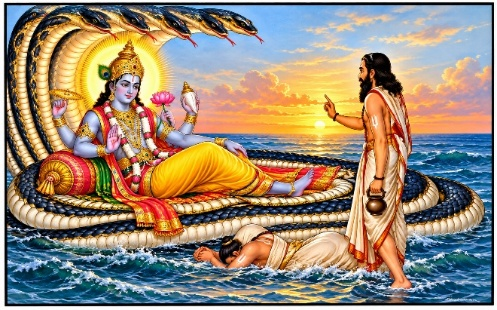
भृगुमुनिके शापसे परम ऐश्वर्यशाली विष्णुको भी दस अवतार लेने पड़े तथा अनेक दुःख सहने पड़े॥२६॥
हे धर्मज्ञ सनत्कुमार! क्रुद्ध ऋषि गौतमने शापसे इन्द्रका अण्डकोषसहित गुह्यांग काटकर पृथ्वीपर गिरा दिया था॥२७॥
मुनि वसिष्ठके शापसे वसुओंको गर्भमें वास करना पड़ा, अगस्त्य आदि ऋषियोंके शापसे राजा नहुषको सर्प होना पड़ा था॥२८॥
भगवान् विष्णुका निवासस्थान तथा अमृतका आधारस्वरूप वह क्षीरसागर ब्राह्मणोंके द्वारा सदाके लिये दूसरे अपेय जलवाले समुद्रके रूपमें कर दिया गया था॥२९॥
जनार्दन भगवान् विष्णुने वाराणसीपुरीमें पहुँचकर अविमुक्तेश्वर देवाधिदेव त्र्यम्बकेश्वरका दूधसे अभिषेक करके परम श्रद्धासे युक्त होकर देहसंस्पर्शजन्य अमृतस्वरूप क्षीरद्वारा स्वयं उन मधुसूदनने ब्रह्माजी एवं मुनियोंके साथ भगवान् शिवको अभिषिक्त करके पूर्ववत् क्षीरसागरको अपना निवासस्थान बनाया॥३०-३२॥
महात्मा माण्डव्यने धर्मको शापित किया तथा श्रीकृष्णकी प्रेरणासे दुर्वासा आदि महात्माओंके द्वारा वृष्णिवंशी शापित हुए थे॥३३॥
महान् आत्मावाले दुर्वासामुनिने लक्ष्मणसहित श्रीरामको शाप दे दिया और श्रीवत्स (श्रीयुक्त वक्षःस्थलवाले) विष्णुको भृगुमुनिका चरण-प्रहार सहना पड़ा॥३४॥
देवाधिदेव विरूपाक्ष उमापति शिवको छोड़कर ये तथा अन्य बहुत-से लोग भी विप्रों (ब्राह्मणों)-के वशवर्ती हुए हैं॥३५॥
उन्हीं शिवकी मायासे मोहित होनेके कारण वे मुनिगण शंकरको नहीं जान पाये और अत्यन्त कठोर वचन बोलने लगे, फिर भगवान् शिव भी अन्तर्धान हो गये॥३६॥
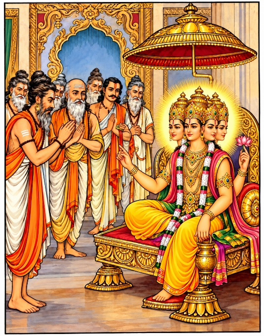
तत्पश्चात् व्याकुल चित्तवाले वे मुनिगण प्रातःकाल होते ही उस दारुवनसे ब्रह्माजीके पास पहुँचे। वहाँ श्रेष्ठ आसनपर विराजमान महात्मा ब्रह्मासे उस सुन्दर दारुवनमें रहनेवाले क्षीण चेतनावाले मुनियोंने शंकरका सारा वृत्तान्त कह सुनाया॥३७-३८॥
उन ब्रह्माजीने भी क्षणभरमें ही मनमें सोचकर पवित्र दारुवनमें उनका पूर्वघटित सम्पूर्ण वृत्तान्त जान लिया॥३९॥
अपने आसनसे तत्काल उठकर और दोनों हाथ जोड़कर ब्रह्माजीने मन-ही-मन शिवजीको प्रणाम करके दारुवनमें रहनेवाले उन मुनियोंसे कहा— हे विप्रो! विनाशको प्राप्त तुम सभीको धिक्कार है; क्योंकि सर्वोत्तम निधि प्राप्त करके भी तुम अभागोंने उसे गँवा दिया॥४०-४१॥
तुम अलिंगियोंने उस दारुवनमें जिस विकृत आकारवाले पुरुषको देखा था; वे साक्षात् परमेश्वर शिव ही थे॥४२॥
हे विप्रो! गृहस्थोंको अतिथियोंकी निन्दा कभी नहीं करनी चाहिये; वे अतिथि विकृत रूपवाले, सुन्दर रूपवाले, मलिन तथा मूर्ख— चाहे जैसे भी हों॥४३॥
पूर्वकालमें पृथ्वीपर द्विजोंमें अग्रणी सुदर्शनमुनिने अतिथिपूजाके प्रभावसे साक्षात् कालमृत्युको भी जीत लिया था॥४४॥
भवसागरसे पार होने तथा आत्मशुद्धिके लिये अतिथिपूजाको छोड़कर गृहस्थों एवं श्रेष्ठ द्विजोंके लिये लोकमें अन्य कोई भी उपाय नहीं है॥४५॥
पूर्वकालमें सुदर्शन नामसे विख्यात गृहस्थ मुनिने मृत्युपर विजय प्राप्त करनेकी प्रतिज्ञा की और अपनी संतानयुक्त पतिव्रता पत्नीसे कहा— हे सुव्रते! हे सुन्दर भौहोंवाली! हे सौभाग्यवति! सुनो, तुम पूर्ण प्रयत्नके साथ अतिथियोंका सदा सत्कार करना और कभी भी उनका निरादर न करना॥४६-४७॥
अतिथि साक्षात् पिनाकधारी शिवका ही स्वरूप होता है, अतएव सब कुछ अर्पित करके भी अतिथिकी पूजा करो। सुदर्शनने पुनः कहा— हे आर्ये! अतिथि साक्षात् शिव होता है; शिवस्वरूप अतिथिको सब कुछ प्रदान करना चाहिये। अतः सभी अतिथियोंकी सदा पूजा करनी चाहिये॥४८-५०½॥
पतिके ऐसा कहनेपर वह पातिव्रतपरायण मुनिभार्या पतिकी आज्ञाको देवप्रतिमाके समक्ष अर्पित किये गये पुष्प आदिकी भाँति शिरोधार्य करके अतिथि-सत्कारमें प्रवृत्त हो गयी॥५१½॥
हे श्रेष्ठ द्विजो! उन दोनोंकी श्रद्धाकी परीक्षा करनेके लिये एक सुन्दर ब्राह्मणका रूप धारण करके साक्षात् धर्म मुनिके घर पधारे। उस ब्राह्मणको देखकर विशुद्ध हृदयवाली उस मुनिभार्याने अर्घ्य आदिसे उस ब्राह्मणका पूजन किया॥५२-५३॥
उस स्त्रीके द्वारा भलीभाँति पूजित होकर ब्राह्मण-वेषधारी साक्षात् धर्मने उससे कहा— हे कल्याणि! तुम्हारे बुद्धिसम्पन्न पति सुदर्शन कहाँ हैं? तत्पश्चात् अपने पतिद्वारा कही गयी बातका स्मरण करती हुई उस स्त्रीने पतिकी आज्ञाको ध्यानमें रखकर धर्मरूप उस ब्राह्मणके लिये आतिथ्य-सेवा करनेका मनमें निश्चय किया॥५४-५६½॥
इसी बीच उस स्त्रीके पति प्रज्ञासम्पन्न सुदर्शन घरके द्वारपर आ गये। मुनिवर सुदर्शनने अपनी भार्याको आवाज दी— हे भद्रे! तुम कहाँ चली गयी हो? तब साक्षात् धर्मरूप अतिथि उनसे बोले— हे महाभाग सुदर्शन! मैं इस समय तुम्हारी इस भार्याके आतिथ्यसे परम सन्तुष्ट हूँ॥५७-६०½॥
तदनन्तर धर्मराजने अपना वास्तविक रूप उन्हें दिखाया और मनोवांछित वर देकर महान् कान्तिवाले धर्मने उनसे कहा— हे विप्रेन्द्र! मैं यहाँ केवल तुम्हारी श्रद्धाकी परीक्षा करनेके निमित्त आया हूँ। हे सुव्रत! तुमने अपने एकमात्र अतिथिपूजारूप धर्मसे मृत्युतकको जीत लिया है॥६१-६३॥
‘अहो, इस तपस्वीका ऐसा ओज’— इस प्रकार कहकर धर्म वहाँसे चले गये। [हे मुनियो!] इसलिये सभी अतिथियोंकी सदा पूजा करनी चाहिये। हे अभागे मुनीश्वरो! अब अधिक कहनेसे क्या लाभ? तुम लोग शीघ्र ही उन्हीं महादेवकी शरणमें जाओ॥६४-६५॥
उन ब्रह्माजीका वह वचन सुनकर व्याकुल नेत्रोंवाले वे द्विजश्रेष्ठ दुःखित होकर ब्रह्माजीसे प्रार्थना करते हुए कहने लगे॥६६॥
विप्रगण बोले— हे महाभाग! स्त्रियाँ तो विकारयुक्त होती ही हैं, जिनके लिये हमलोगोंने अपना जीवन नष्ट कर डाला। जिन अनिन्द्य महादेवने कृपा करके हमलोगोंको दर्शन दिया था, उन्हींका हमलोगोंने अनादर किया॥६७॥
हमने उन सर्वव्यापी, शूलधारी, पिनाकी तथा नीललोहित वर्णवाले शिवजीको अज्ञानतासे शाप दे दिया; किंतु उनके देखनेमात्रसे हमारे शापकी शक्ति कुण्ठित हो गयी॥६८॥
हे देवेश! अब आप कृपा करके हमें संन्यास-धर्मके विषयमें क्रमसे बताइये; जिससे हमलोग उन देवाधिदेव, उग्र, भीम तथा कपर्दी शिवका दर्शन करनेमें समर्थ हो सकें॥६९॥
पितामह बोले— हे श्रेष्ठ मुनियो! सर्वप्रथम श्रद्धापूर्वक गुरुसे निरन्तर वेदका अध्ययन करे, उसका अर्थ समझे और धर्मोंका ज्ञान करे॥७०॥
इस प्रकार विद्वान्को चाहिये कि बारह वर्षतक वेदाध्ययन करनेके अनन्तर वेदव्रत नामक स्नानसे संस्कारित होकर विवाह करके पुनः सदाचारी पुत्र उत्पन्न करके उन पुत्रोंके अनुकूल वृत्तिका उपाय करके उनमें धनादिका विभाजन कर दे। तत्पश्चात् अग्निष्टोम आदि यज्ञोंसे यज्ञेश्वर विभुका यजन करके मुनिको वनमें आकर अग्निमें परमेश्वरकी पूजा करनी चाहिये॥७१-७२½॥
वनमें रहते हुए मुनिको बारह वर्षतक या एक वर्ष (बारह माह) तक या बारह पक्ष (छः माह)-तक अथवा बारह दिनतक दुग्धका सेवन करते हुए शान्ति तथा संयमपूर्वक सभी देवताओंकी पूजा करनी चाहिये॥७३-७४॥
इस प्रकार यजन-पूजनके अनन्तर यज्ञसम्बन्धी काष्ठपात्र मन्त्रपूर्वक अग्निमें हवन कर दे, मिट्टीके पात्र जलमें छोड़ दे तथा धातुके पात्र गुरुको अर्पित कर दे और निष्कपट भावसे अपना सम्पूर्ण धन ब्राह्मणोंको देकर गुरुको दण्डवत् प्रणाम करके विरक्त यति संन्यासधर्मका आचरण करे॥७५-७६॥
शिखासहित बालोंको कटवाकर तथा यज्ञोपवीत त्यागकर विद्वान् यतिको ‘भूः स्वाहा’ इस मन्त्रसे जलमें पाँच आहुति देनी चाहिये॥७७॥
इसके पश्चात् यतिको शिवसायुज्यरूपी विमुक्तिके लिये आगेकी भी साधना करनी चाहिये। इसके लिये छः माह अथवा वर्षपर्यन्त यति अनशन करे अथवा जल पीकर या पत्ते खाकर या दूध पीकर या फल खाकर जीवन-निर्वाह करे। ऐसा करनेपर यदि मृत्यु नहीं हुई और वह जीवित रहता है, तो उसे अपने देहके प्रस्थान आदि अर्थात् स्थूल शरीरके त्यागका प्रयास करना चाहिये। ऐसा आचरण करते हुए वह यति अपने कर्मसे भी शिवसायुज्य प्राप्त कर लेता है॥७८-८०॥
परंतु हे दृढ़व्रती मुनियो! शिवजीमें भक्ति रखनेवाला प्राणी शीघ्र ही मुक्ति प्राप्त कर लेता है। महादेवजीके भक्तको त्याग, विधि, महान् व्रतों, यज्ञों, विविध प्रकारके दानों, होमों, विविध शास्त्रों तथा वेदोंसे क्या प्रयोजन! महान् आत्मावाले श्वेतमुनिने महादेवकी भक्तिसे ही मृत्युतकको जीत लिया था। अतएव परमेश्वर महादेव शिवजीके प्रति आपलोग भी भक्तिपरायण हों॥८१-८३॥
॥इस प्रकार श्रीलिङ्गमहापुराणके अन्तर्गत पूर्वभागमें ‘देवदारुवनवृत्तान्तवर्णन’ नामक उनतीसवाँ अध्याय पूर्ण हुआ॥२९॥
तीसवाँ अध्याय
शिवाराधनाके माहात्म्यमें श्वेतमुनिका आख्यान
नन्दिकेश्वर बोले— तत्पश्चात् उन ब्रह्माजीके इस प्रकार कहनेपर द्विजश्रेष्ठ महर्षियोंने उनसे श्वेतमुनिकी पुण्यप्रद कथा पूछी—॥१॥
पितामह बोले— समाप्त आयुवाले श्वेत नामक एक श्रीयुक्त मुनि गिरिकी गुफामें शिवाराधनमें रत थे। हे द्विजो! ‘नमस्ते रुद्र मन्यवे’ इत्यादि रुद्राध्यायसे भक्तिपूर्वक महेश्वरकी आराधना करके श्वेतमुनिने उन्हें प्रसन्न कर लिया॥२½॥
हे विप्रेन्द्रो! तदनन्तर द्विजोंमें श्रेष्ठ श्वेतमुनिको समाप्त आयुवाला जानकर उन्हें ले जानेके लिये महातेजस्वी काल मुनिके पास पहुँचा॥३½॥
सन्निकट मृत्युवाले पुण्यात्मा श्वेतमुनि भी उस कालको देखकर त्रिनेत्र शिवका स्मरण करते हुए उनकी आराधना करने लगे। वे ऐसा कहते हुए ध्यानपरायण थे कि जब मैं सुखकर सम्बन्धवाले तथा जगत्का पोषण करनेवाले त्रिनेत्र शिवका यजन कर रहा हूँ, तो मृत्यु मेरा क्या कर लेगी; क्योंकि मैं तो कालका भी काल हूँ॥४-५½॥
उन श्वेतमुनिको देखकर लोकोंको भयभीत करनेवाला वह काल मुसकराकर उनसे बोला— हे श्वेत! अब तुम मेरी ओर आओ; इस पूजा-पाठ आदिसे तुम्हें क्या लाभ! हे द्विजवर! भगवान् विष्णु, ब्रह्मा अथवा जगदीश्वर रुद्र— इनमें भला कौन मेरे द्वारा ग्रास बनाये गये जीवको बचा सकनेमें समर्थ है? हे विप्र! यह रुद्रपूजा मुझ शक्तिमान्का क्या कर सकती है? जिस किसीको भी ले जानेके लिये मैं उठ खड़ा होता हूँ, उसे क्षणभरमें यमलोक पहुँचा देता हूँ। हे मुने! क्योंकि तुम समाप्त आयुवाले हो चुके हो, अतः तुम्हें ले जानेहेतु मैं यहाँ आया हूँ॥६-९॥
उस कालका वह धर्ममिश्रित भयावह वचन सुनकर मुनिवर श्वेत ‘हा रुद्र! हा रुद्र! हा रुद्र!’ कहकर विलाप करने लगे और अश्रुपूरित तथा व्याकुल नेत्रोंसे एवं कातर दृष्टिसे शिवलिङ्गको निहारते हुए अत्यन्त व्यग्रचित्त होकर उस कालसे कहने लगे—॥१०-११॥
श्वेतमुनि बोले— हे काल! तुम मेरा क्या बिगाड़ सकते हो; क्योंकि सभी देवताओंको उत्पन्न करनेवाले हमारे स्वामी वृषध्वज शंकर रुद्र इस लिङ्गमें विराजमान हैं॥१२॥
विधिका विधान शिवजीके प्रति अतिशय भक्ति रखनेवाले मुझसदृश महात्माओंका क्या कर सकता है? अतएव हे महाबाहो! आप जिस प्रकार आये थे, उसी प्रकार चले जाइये॥१३॥
तदनन्तर श्वेतमुनिका वैसा वचन सुनकर हाथमें पाश धारण किये, तीक्ष्ण दाढ़ोंवाले भयंकर कालने कुपित होकर सिंहके सदृश घोर गर्जना करते हुए तथा पाशको बार-बार फटकारते हुए काल-प्राप्त मुनिको बाँध दिया और पुनः उनसे कहा—॥१४-१५॥
हे विप्रर्षे! तुम श्वेतको यमलोक ले जानेके निमित्त मैंने बाँध दिया है; किंतु तुम्हारे देवाधिदेव रुद्रने इस समय तुम्हारी क्या सहायता की? कहाँ शिव, कहाँ तुम्हारी भक्ति तथा पूजा, कहाँ पूजाका फल और कहाँ मैं एवं मेरा भय! हे श्वेत! अब तुम मेरे द्वारा बाँध दिये गये हो। हे श्वेत! तुम्हारा महेश्वर रुद्र जो इस लिङ्गमें स्थित है, वह महादेव तो निश्चेष्ट है; तो फिर तुम उस महेश्वरकी पूजा क्यों करते हो?॥१६-१८॥
तत्पश्चात् मुनिका प्राण हरनेके निमित्त आये हुए कालका संहार करनेके लिये कामदेवके शत्रु, दक्ष-यज्ञके विध्वंसक तथा त्रिनेत्र सदाशिव महादेव शंकर अपने नन्दी, गणेश्वरों और पार्वतीसहित मुसकराते हुए शीघ्रतापूर्वक शिवलिङ्गसे साक्षात् प्रकट हुए॥१९-२०॥
हे द्विजो! शिवजीको देखते ही उसी क्षण भयके कारण वह बलवान् काल श्वेतमुनिके पास शीघ्र ही गिर पड़ा और कालका भी अन्त करनेवाले शिवजीको देखकर जोरसे चिल्लाया। हे उत्तम विप्रो! मृतप्राय उस कालको शिवजीने अपने कृपावलोकनसे जीवन प्रदान कर दिया॥२१-२२॥
सभी महान् देवतागण तथा मुनिवृन्द महेश्वर एवं माता पार्वतीको प्रणाम करने लगे और हर्षित होकर उच्च स्वरमें ‘जय हो-जय हो’ ऐसा बोलने लगे। नभोमण्डलमें स्थित देवसमुदाय इन श्वेतमुनि तथा शंकरजीके सिरपर आकाशसे अत्यन्त सुन्दर, शीतल तथा सुगन्धित पुष्पोंकी वर्षा करने लगे॥२३-२४॥
तत्पश्चात् शिलादके पुत्र तथा शिवजीके अनुचर गणेश्वर नन्दीजी कालको मरा हुआ देखकर अत्यन्त विस्मित हुए और उन्होंने अविनाशी महेश्वर शिवको प्रणामकर उनसे कहा कि यह अल्पबुद्धि काल मर चुका है; अब आप इस काल और मुनि-दोनोंपर अनुग्रह कीजिये॥२५-२६॥
तत्पश्चात् क्षणभरमें ही मृत होकर पृथ्वीपर गिरे कालको देखकर उसके तथा द्विजश्रेष्ठ श्वेत-दोनोंके ऊपर अनुग्रह करके भगवान् शंकर तत्काल गुप्त शरीरमें समाविष्ट हो गये॥२७॥
अतएव हे द्विजो! सभीको मोक्ष तथा भोग प्रदान करनेवाले मृत्युंजय महादेवकी भक्तिपूर्वक पूजा करनी चाहिये॥२८॥
[हे मुनियो!] अधिक क्या कहूँ; संन्यासधर्मका पालन करते हुए परम श्रद्धाके साथ उन महादेवकी आराधना करनेसे तुम सब सन्तापरहित हो जाओगे॥२९॥
नन्दीश्वर बोले— [हे सनत्कुमारजी!] तत्पश्चात् उन ब्रह्माके इस प्रकार कहनेपर ब्रह्मवेत्ता मुनिगण बोले— हे देव! आप प्रसन्न हों और हमें बतायें कि किस तपस्या, किस यज्ञ अथवा किन व्रतोंसे पिनाकधारी देवेश्वर रुद्रके प्रति हमलोगोंमें भक्ति उत्पन्न होगी तथा हम द्विजगण शिवभक्त हो सकेंगे?॥३०-३१॥
पितामह बोले— हे मुनिवरो! दान, तप, विद्या, यज्ञ, होम, व्रत, वेदाध्ययन, शास्त्रपारायण, योगसाधन तथा इन्द्रिय-नियन्त्रण आदि उपायोंसे शिव-भक्ति सम्भव नहीं है। केवल उनकी कृपासे ही जगत्के परम कारण महादेवके प्रति वह भक्ति उत्पन्न होती है॥३२½॥
इसके बाद उन ब्रह्माका वचन सुनकर परिश्रान्त हुए उन सभी श्रेष्ठ ऋषियोंने स्त्री तथा पुत्रोंसहित ब्रह्माजीको प्रणाम किया॥३३½॥
अतएव [हे सनत्कुमार!] यह शैवी भक्ति धर्म, काम, अर्थ तथा सभी सिद्धियाँ प्रदान करनेवाली है और सभी प्रकारकी मृत्युसे विजय दिलानेवाली है। यह शिव-भक्ति मुनि दधीचके लिये विजयदायिनी सिद्ध हुई थी। पूर्व कालमें दधीचमुनिने शिवकी भक्तिसे ही देवताओंसहित सर्वशक्तिमान् विष्णुको जीतकर अपने चरणसे राजा क्षुपपर प्रहार किया और अपनी हड्डियोंमें वज्रत्व प्राप्त कर लिया था। महादेवकी आराधनासे मैंने भी मृत्युपर विजय प्राप्त कर ली है और जिस प्रकार मैंने मृत्युको जीता है, उसी प्रकार मृत्युके मुखमें गये हुए मुनिवर श्वेतने भी शिवजीकी कृपासे मृत्युको जीत लिया था॥३४-३७॥
॥इस प्रकार श्रीलिङ्गमहापुराणके अन्तर्गत पूर्वभागमें ‘शिवाराधनमहिमवर्णन’ नामक तीसवाँ अध्याय पूर्ण हुआ॥३०॥
इकतीसवाँ अध्याय
देवदारुवननिवासी मुनिगणोंद्वारा शिवाराधना
सनत्कुमार बोले— हे प्रभो! देवदारुवनके निवासी [तपस्वीगण] भगवान् शिवके अनुग्रहसे किस प्रकार उन महादेवके शरणको प्राप्त हुए? कृपा करके मुझे बतायें॥१॥
शैलादि बोले— स्वयम्भू भगवान् ब्रह्माने देवदारुवनमें निवास करनेवाले तथा अपनी तपस्यासे अग्नितुल्य प्रभावाले उन महाभाग मुनियोंसे कहा—॥२॥
पितामह बोले— इन भगवान् महादेव महेश्वरको अवश्य जानना चाहिये; क्योंकि उनसे बढ़कर कोई भी ऐसा पद नहीं है, जो प्राप्त करनेयोग्य हो॥३॥
वे ही समस्त देवताओं, ऋषियों तथा पितरोंके प्रभु हैं। हजार युगोंके अन्तमें प्रलयकाल आनेपर वे ही भगवान् शिव काल बनकर सभी देहधारियोंका संहार करते हैं और एकमात्र ये भगवान् शिव ही अपने तेजसे सभी प्रजाओंका सृजन करते हैं॥४-५॥
अपने वक्षःस्थलपर ‘श्री’ चिह्न धारण करनेवाले चक्रधारी विष्णु तथा वज्रधारी इन्द्र आदिके रूपमें ये शिव ही विराजमान हैं। ये सत्ययुगमें योगी, त्रेतामें यज्ञस्वरूप, द्वापरमें कालाग्नि एवं कलियुगमें धर्मकेतु नामसे कहे जाते हैं। भगवान् रुद्रकी ये ही मूर्तियाँ हैं, जिनका पण्डितजन ध्यान करते हैं॥६-७॥
बाहरसे चौकोर एवं भीतरसे अष्टकोणवाले पिण्डिका-स्थानमें वृत्ताकार, दर्शनीय तथा श्रेष्ठ लिङ्गकी विधिवत् पूजा करनी चाहिये॥८॥
तमोगुणरूप अग्नि, रजोगुणरूप ब्रह्मा तथा प्रकाशक सत्त्वगुणरूप विष्णु आदिकी मूर्तियाँ एकमात्र इन्हीं शिवकी मूर्तिमें स्थित कही जाती हैं॥९॥
जीवके भीतर समाधियोगसे स्थित जो शिवरूप है, वही ब्रह्म है। अतएव क्रोधको जीत लेनेवाले तथा इन्द्रियोंको वशमें रखनेवाले उत्तम विप्रगण विधानके अनुसार सभी लक्षणोंसे युक्त लिङ्ग बनाकर अविनाशी, देवाधिदेव, ईशान एवं सबके स्वामी शिवकी आराधना करते हैं॥१०-११॥
वह लिङ्ग अंगुष्ठ परिमाणके बराबर, अत्यन्त सुन्दर, वर्तलाकार तथा शास्त्रसम्मत हो। उसका मण्डल समान नाभिवाला, अष्ट अथवा षोडश कोणोंवाला, पूर्णतः गोलाकार तथा दिव्य होना चाहिये; वह सभी मनोरथोंको पूर्ण करनेवाला होता है॥१२½॥
लिङ्गकी वेदिका उसकी दुगुनी, समान तथा शास्त्रसम्मत हो। गोमुखीको उसकी एक तिहाई एवं समस्त लक्षणोंसे युक्त जानना चाहिये। हे श्रेष्ठ ब्राह्मणो! उसके चारों ओर जौके परिमाणके बराबर पट्टिका होनी चाहिये। वेदिकाका विस्तार चारों ओर तिगुना, वर्तुलाकार, त्रिकोण, चौकोर अथवा षट्कोण होना चाहिये। सोनेका, चाँदीका, ताँबेका अथवा पाषाणका लिङ्ग बनाना चाहिये। हे द्विजो! इस प्रकार सभी ओरसे छिद्र आदिसे रहित, सुन्दर तथा सभी लक्षणोंसे युक्त लिङ्गको विधिपूर्वक प्रतिष्ठित करके उसकी वेदीके मध्यमें पूजालक्षणोंसे समन्वित, स्वर्णसहित, पंचाक्षरमन्त्र एवं सद्योजात आदि पाँच मन्त्रोंसे अभिमन्त्रित कलशकी स्थापना करनी चाहिये। तत्पश्चात् उन्हीं पाँच शुभ तथा पवित्र मन्त्रोंसे लिङ्गका अभिषेक करना चाहिये एवं यथोपलब्ध उपचारोंसे पूजन करना चाहिये। ऐसा करनेसे तुमलोग सिद्धि प्राप्त कर लोगे। [हे मुनियो!] तुम लोग अपने पुत्रों तथा बन्धु-बान्धवोंसहित एकाग्रचित्त होकर महादेवजीका पूजन करो और हाथ जोड़कर शूलपाणिकी शरणमें जाओ। तत्पश्चात् तुमलोग असंयत आत्मावाले लोगोंके लिये दुर्लभ दर्शनवाले देवेश शिवका दर्शन प्राप्त कर सकोगे; जिन्हें देखते ही समस्त अज्ञान तथा अधर्म नष्ट हो जाता है॥१३-२०½॥
तत्पश्चात् अमित तेजवाले ब्रह्माजीकी प्रदक्षिणा करके वे वनवासी मुनि देवदारु वनके लिये प्रस्थित हुए और जैसा ब्रह्माजीने कहा था, तदनुसार वे महादेवकी आराधना करने लगे॥२१-२२॥
कुछ मुनि विचित्र प्रकारके स्थण्डिलोंपर, पर्वतोंकी गुफाओंमें, नदियोंके पवित्र तथा एकान्त तटोंपर, कुछ मुनि शैवालपर विराजमान होकर, कुछ मुनि जलके भीतर बैठकर, कोई दर्भ-शय्या बिछाकर, कोई अपने पैरके अँगूठेके अग्रभागपर स्थित होकर, कोई दाँतोंको ही उलूखल बनाकर उनसे पिसे अन्नको खाकर, कुछ पाषाणपर पिसे अन्नको ही खाकर, कुछ वीरासनमें बैठकर, कुछ मृगचर्यापरायण होकर— इस प्रकार तपस्या तथा पूजनके द्वारा उन महाबुद्धिमान् मुनियोंने समय व्यतीत किया॥२३-२५½॥
इस प्रकार उन मुनियोंको तप करते हुए एक वर्ष पूर्ण होनेपर वसन्त ऋतु आनेपर परमेश्वर शिव अपनी दयासे उन भक्तोंपर अनुग्रह करनेके निमित्त कृतयुगमें हिमालयके उस पर्वतपर स्थित देवदारुवनमें प्रसन्नतापूर्वक आये॥२६-२७½॥
उस समय वे भस्म-धूलिसे भूषित शरीरवाले, दिगम्बर वेशवाले, विकृत स्वरूपवाले, उल्मुक (जलता हुआ काष्ठ) धारण किये हुए, व्यग्रहस्तवाले तथा रक्त-पिंगल नेत्रोंवाले थे। वे कभी रौद्ररूपमें हँसते थे, कभी विस्मित होकर गाते थे, कभी शृङ्गार-नृत्य करते थे तथा कभी रोते थे— इस रूपमें वे आश्रमोंमें बार-बार भिक्षा माँगते हुए इधर-उधर घूमने-फिरने लगे। इस प्रकारकी माया रचकर महादेवजी उस वनमें आये हुए थे॥२८-३०½॥
तदनन्तर वे सभी महाभाग मुनिगण अपनी स्त्रियों, पुत्रों तथा बन्धु-बान्धवोंसहित शुद्ध जल, विविध पुष्प-मालाओं, धूप, गन्ध आदि उपचारोंसे एकाग्रचित्त होकर महादेवजीका पूजन करके उनकी स्तुति करने लगे॥३१-३२॥
पुनः वे सभी मुनि मधुर वाणीमें भगवान् शिवसे बोले— हे देवदेवेश! हम लोगोंने मन, वचन तथा कर्मसे जो भी आपके प्रति किया है, वह सब अज्ञानतावश किया है; अतएव आप सभी अपराधोंको क्षमा कीजिये॥३३½॥
हे हर! आपके चरित्र अत्यन्त अद्भुत, गूढ़ तथा कठिन हैं। वे चरित्र ब्रह्मा आदि देवताओंके लिये भी दुर्ज्ञेय हैं॥३४½॥
हम आपकी अगति तथा गति कुछ भी नहीं जानते हैं और जान पाना सम्भव भी नहीं है। हे विश्वेश्वर! हे महादेव! आप जो कोई भी हों, आपको नमस्कार है। हम मुनिगण आप देवदेव महेश्वरकी स्तुति करते हैं॥३५-३६॥
भव, भव्य, भावन तथा उद्भवको नमस्कार है। अनन्त बल एवं वीर्यवाले और भूतोंके पतिको नमस्कार है॥३७॥
जगत्के संहारकर्ता, पिशंग वर्णवाले, अव्यय, व्यय, गंगाजलकी धारा धारण करनेवाले, जगत्के आधार, गुणात्मा, त्र्यम्बक, त्रिनेत्र, उत्तम त्रिशूल धारण करनेवाले, कन्दर्पस्वरूप तथा अग्निरूप परमात्मा शिवको नमस्कार है॥३८-३९॥
हाथमें दण्ड तथा पाश धारण करनेवाले, कालरूप, गणोंके पति एवं वृषभध्वज शंकरको नमस्कार है॥४०॥
वेदमन्त्रोंमें प्रधान रूपसे निरूपित तथा शत जिह्वावाले आप शिवको नमस्कार है। हे देव! भूत, भविष्य तथा वर्तमान जो कुछ भी है एवं स्थावर जंगममय यह सम्पूर्ण जगत् आपकी ही देहसे उत्पन्न हुआ है। आप ही जगत्का पालन तथा संहार करते हैं। अतएव हे भगवन्! आपका मंगल हो और आप हमपर प्रसन्न हों। ज्ञान अथवा अज्ञानमें मनुष्य जो कुछ भी करता है, वह सब स्वयं आप परमेश्वर ही अपनी योगमायासे सम्पन्न करते हैं॥४१-४३॥
इस प्रकार तपस्यासे युक्त वे मुनिगण पुलकित अन्तरात्मासे शिवजीका स्तवन करके उनसे याचना करने लगे कि हे भगवन्! हम लोगोंने आपको पहले जिस रूपमें देखा था, उसी रूपमें आपका दर्शन करना चाहते हैं॥४४॥
तब उनकी स्तुतिसे प्रसन्न मनवाले प्रभु शिवने अपना त्रिनेत्र-रूप दिखानेके लिये उन्हें दिव्य-दृष्टि प्रदान की॥४५॥
देवदारुवनमें निवास करनेवाले उन मुनियोंने उस प्राप्त दिव्य दृष्टिसे तीन नेत्रवाले देवाधिदेव शिवका दर्शन करके पुनः उनकी स्तुति की॥४६॥
॥इस प्रकार श्रीलिङ्गमहापुराणके अन्तर्गत पूर्वभागमें ‘मुनिकृतशिवस्तोत्रवर्णन’ नामक इकतीसवाँ अध्याय पूर्ण हुआ॥३१॥
बत्तीसवाँ अध्याय
मुनियोंद्वारा की गयी शिवस्तुति
ऋषिगण बोले— दिशाओंको वस्त्ररूपमें धारण करनेवाले, शाश्वत, प्रलयके कारण, त्रिशूलधारी, विकट रूपवाले, कराल (संसाररूपी वृक्षके लिये कुठार स्वरूप) तथा भीषण वदनवाले शिवको नमस्कार है॥१॥
बिना रूपवाले, सुन्दर रूपवाले, विश्वरूप आपको नमस्कार है। गजाननरूप, स्वाहा करनेवाले यजमानरूप रुद्रको नमस्कार है॥२॥
सभी लोगोंसे नमस्कृत देहवाले, स्वयं विनीत आत्मावाले, निरन्तर नील जटाजूट धारण करनेवाले, अपने शरीरमें चिताकी भस्मको धारण करनेवाले, श्रीकण्ठ, नीलकण्ठ शिवको बार-बार नमस्कार है। हे प्रभो! आप सभी देवताओंमें ब्रह्मा हैं तथा रुद्रोंमें नीललोहित हैं॥३-४॥
आप समस्त भूतोंकी आत्मा हैं। सांख्यविद् आपको पुरुष कहते हैं। आप पर्वतोंमें विशाल मेरु पर्वत तथा नक्षत्रोंमें चन्द्रमा हैं॥५॥
ऋषियोंमें आप वसिष्ठ हैं तथा देवताओंमें देवराज इन्द्र हैं, सभी वेदोंमें साररूपसे आप ओंकार हैं एवं सभी गेयस्वरोंमें आप सामगान हैं॥६॥
आप परमेश्वर वन्य पशुओंमें सिंह हैं और ग्राम्य पशुओंमें आप ऐश्वर्यसम्पन्न तथा लोकपूज्य वृषभ हैं॥७॥
हे प्रभो! आप वैसा कीजिये कि आपका जो भी विद्यमान स्वरूप हो, उसमें हम ब्रह्माद्वारा कथित आपके सर्वस्वरूपका दर्शन कर सकें॥८॥
हे परमेश्वर! आप प्रसन्न होइये। हम यह जानना चाहते हैं कि काम, क्रोध, लोभ, विषाद तथा मद— ये पाँचों विकार सभीको दग्ध क्यों करते हैं?॥९॥
हे देव! महासंहार उपस्थित होनेपर शुद्ध चित्तवाले आप परमेश्वरने ललाटपर हाथ घर्षितकर अग्नि उत्पन्न की थी॥१०॥
तब उसी अग्निकी ज्वालाओंसे समस्त लोक सभी ओरसे आच्छादित हो गये। इसीलिये ये काम, क्रोध, लोभ, मोह, दम्भ आदि विक्षोभात्मक विकृत अग्नियाँ अग्नितुल्य ही हैं। इस जगत्में जो भी स्थावर-जंगम जीव एवं पदार्थ हैं, वे सब आपद्वारा उत्पादित अग्निसे दग्ध हो रहे हैं। अतएव हे सुरेश्वर! उस अग्निसे दग्ध हो रहे हम सभीकी आप रक्षा कीजिये॥११-१३॥
हे महेश्वर! हे महाभाग! हे प्रभो! हे शुभ निरीक्षक! आप लोक-कल्याणके लिये जीवोंको अमृतरूपी जलसे सींचते हैं। हे नाथ! आज्ञा दीजिये; हमलोग आपके वचनोंका पालन करनेके लिये तत्पर हैं। अनन्त पदार्थों एवं उनके नाम-रूपोंके मध्य आप व्याप्त हैं, आपका पार हम पा नहीं सके हैं। हे देवाधिदेव! आपको नमस्कार है॥१४-१६॥
॥इस प्रकार श्रीलिङ्गमहापुराणके अन्तर्गत पूर्वभागमें ‘शिवस्तुतिवर्णन’ नामक बत्तीसवाँ अध्याय पूर्ण हुआ॥३२॥
तैंतीसवाँ अध्याय
मुनियोंको शिवभक्तिका उपदेश
नन्दीश्वर बोले— उन मुनियोंके द्वारा संस्तुत भगवान् महेश्वर उनकी स्तुति सुनकर उनके प्रति अनुग्रहशील होकर अत्यन्त प्रसन्न हुए और उनसे यह वचन बोले॥१॥
जो विप्र आप लोगोंद्वारा की गयी स्तुतिको पढ़ेगा अथवा सुनेगा अथवा द्विजोंको सुनायेगा, वह मेरे गणोंमें स्थान प्राप्त करेगा॥२॥
हे मुनिश्रेष्ठो! आप भक्तोंके हितार्थ अब मैं मुख्य शुभ उपदेश करता हूँ। इस जगत्में समस्त स्त्रीलिङ्ग-समुदाय मेरे शरीरसे उत्पन्न प्रकृतिदेवीका ही रूप है और हे विप्रो! सभी पुंल्लिंग-समुदाय मेरी देहसे उत्पन्न पुरुषका रूप है। हे विप्रो! यह सृष्टि मुझसे प्रादुर्भूत पुरुष-प्रकृति (नर-नारी) इन्हीं दोनोंसे हुई है, इसमें कोई संशय नहीं है॥३-४॥
सभी शिवरूप हैं, अतएव किसीकी भी निन्दा न करें। विशेष रूपसे मेरी भक्तिमें तत्पर उत्तम, दिगम्बर, ब्रह्मवादी, बालस्वभाववाले, उन्मत्त तथा चेष्टारहित यतिकी तो कभी भी निन्दा नहीं करनी चाहिये॥५॥
भस्मसे विभूषित होकर दग्ध पापोंवाले, इन्द्रियजित्, ध्यानपरायण, नित्य नैष्ठिक ब्रह्मचर्यका पालन करनेवाले तथा महादेवकी भक्तिमें तत्पर जो विप्र मन-वाणी एवं शरीरसे संयत होकर मुझ महादेवकी यथोक्त रीतिसे पूजा-आराधना करते हैं, वे रुद्रलोकको प्राप्त होते हैं और उनका पुनर्जन्म नहीं होता है। अतएव व्यक्त लिङ्गवाले शिवका यह [पाशुपत] व्रत परम दिव्य तथा अव्यक्त है॥६-८॥
विद्वान् मनुष्यको चाहिये कि भस्म धारण किये तथा मुण्डित सिर जो शिवरूप व्रती हैं, उनकी न तो निन्दा करे तथा न तो उनकी बातोंका उल्लंघन करे। लोक एवं परलोकमें अपना हित चाहनेवालेको ऐसे महात्माओंपर न तो हँसना चाहिये और न तो उनके प्रति अप्रिय वचन बोलना चाहिये॥९½॥
जो मनुष्य इनकी निन्दा करता है, वह मन्दबुद्धि साक्षात् महादेवकी निन्दा करता है तथा जो इनकी नित्य पूजा करता है, वह महादेवजीकी पूजा करता है॥१०½॥
इस प्रकार ये महायोगी शिवजी भस्म-भूषित होकर लोक-कल्याणकी कामनासे युग-युगमें नानाविध क्रीड़ाएँ करते हैं। आपलोग भी ऐसा ही आचरण कीजिये; उससे आपलोगोंका कल्याण होगा तथा आपलोग सिद्धि प्राप्त करेंगे॥११-१२॥
महाभयका नाश करनेवाले शिव-कथित अतुलनीय तथा परमपदको जानकर उन मुनियोंका चित्त सांसारिक लोभ एवं मोहसे रहित हो गया और उन्होंने शंकरजीके चरणोंपर सिर रखकर प्रणाम किया॥१३॥
इस प्रकार शिवकी बातें सुनकर प्रसन्न मनवाले उन मुनियोंने गन्ध, पुष्प तथा कुशसे मिश्रित शुद्ध जलसे परिपूर्ण विशाल घड़ोंसे महेश्वरको स्नान कराया और पुनः वे गूढ़ तथा हुंकारयुक्त सुन्दर स्वरोंसे महादेवजीका स्तुति-गान करने लगे॥१४-१५॥
देवाधिदेव महादेवको नमस्कार है। अर्धनारीश्वर तथा सांख्ययोगके प्रवर्तक शिवको नमस्कार है। मेघवाहन कृष्ण (सदाशिव), गजचर्मको अधोवस्त्रके रूपमें धारण करनेवाले, कृष्णमृगके चर्मको उत्तरीयके रूपमें धारण करनेवाले एवं सर्पको यज्ञोपवीतके रूपमें धारण करनेवाले शिवको नमस्कार है॥१६-१७॥
सुन्दर बने हुए अतिविचित्र कुण्डल धारण करनेवाले, सुन्दर रचित मालाको आभूषणके रूपमें धारण करनेवाले, सिंहके उत्तम चर्मको वस्त्रके रूपमें धारण करनेवाले तथा विस्तृत यशवाले आप शंकरको नमस्कार है॥१८॥
तत्पश्चात् उस स्तुतिसे अत्यन्त प्रसन्नताको प्राप्त उन महादेवने उन मुनियोंसे पुनः कहा— हे सुव्रती मुनीश्वरो! मैं तुमलोगोंकी तपस्यासे अति प्रसन्न हूँ। तुम सब वर माँगो॥१९॥
इसपर भृगु, अंगिरा, वसिष्ठ, विश्वामित्र, गौतम, अत्रि, सुकेश, पुलस्त्य, पुलह, क्रतु, मरीचि, कश्यप, कण्व, संवर्त आदि उन सभी महान् तपस्वी मुनियोंने शिवजीको प्रणामकर उनसे यह वचन कहा— भस्म-स्नान, नग्नता, वामता, प्रतिलोमता (काम्य कर्ममार्गमें प्रवृत्ति), सेव्य तथा असेव्य— इनके विषयमें हम जानना चाहते हैं॥२०-२२½॥
इसपर उनकी बात सुनकर परमेश्वर भगवान् शिवने मुसकराकर सभी मुनिवरोंकी ओर देखकर उनसे कहा॥२३-२४॥
॥इस प्रकार श्रीलिङ्गमहापुराणके अन्तर्गत पूर्वभागमें ‘ऋषिवाक्य’ नामक तैंतीसवाँ अध्याय पूर्ण हुआ॥३३॥
चौंतीसवाँ अध्याय
भगवान् शिवद्वारा भस्म, भस्मस्नान एवं शिवयोगियोंकी महिमाका प्रतिपादन
भगवान् शिव बोले— हे मुनीश्वर! इन सबके माहात्म्यसे युक्त कथाके सारभागका वर्णन मैं आपलोगोंसे करूँगा। सोमका कारणस्वरूप अग्नि मैं हूँ तथा अग्निसंयुक्त सोम भी मैं ही हूँ॥१॥
इस लोक (भारतवर्ष) में रहनेके कारण सबके कर्मोंका फल अग्निके द्वारा ही धारण किया जाता है। अग्निने इस स्थावर-जंगम जगत्को अनेक बार दग्ध किया है। अग्निसे भस्मीभूत हो जानेसे यह सम्पूर्ण जगत् पवित्र तथा उत्तम हो जाता है। उसी भस्मसे ओज प्राप्त करके यह सोम प्राणियोंको जीवित करता है॥२-३॥
जो मनुष्य अग्निहोत्र-कार्य सम्पन्न करके भस्मसे त्र्यायुष करता है, वह मेरे ओजसे समस्त पापोंसे मुक्त हो जाता है॥४॥
यह भस्म प्रकाशित करता है, कल्याण सम्पादित करता है तथा समस्त पापोंका नाश करता है, अतएव इसे भस्म कहा जाता है॥५॥
ऊष्मपसंज्ञक पितर तथा देवतागण चन्द्रमासे उत्पन्न कहे गये हैं। स्थावर-जंगममय यह समस्त जगत् अग्नि-सोमात्मक है॥६॥
मैं महान् तेजसे युक्त अग्नि हूँ तथा ये महिमामयी अम्बा पार्वती सोमस्वरूपा हैं। प्रकृतिके साथ पुरुषरूप मैं अग्नि-सोम दोनों ही हूँ॥७॥
अतएव हे महाभाग मुनियो! यह भस्म मेरा वीर्य है— ऐसा कहा जाता है। मैं अपने शरीरमें अपने वीर्य (भस्म) को धारण करके अधिष्ठित हूँ और उसी समयसे यह भस्म सभी अमंगलोंसे लोकोंकी रक्षा करता है तथा इसी भस्मसे सूतिकागृहोंकी भी रक्षा की जाती है॥८-९॥
जो मनुष्य क्रोध तथा इन्द्रियोंको जीतकर भस्मस्नान करके पवित्र अन्तःकरणवाला हो जाता है, वह मेरा सांनिध्य प्राप्त कर लेता है एवं पुनर्जन्मसे मुक्त हो जाता है॥१०॥
पाशुपतव्रत, योगशास्त्र तथा कापिल (सांख्यशास्त्र)-की रचना मैंने ही की। इनमें पाशुपतयोगकी रचना पहले हुई है, इसलिये यह उत्तम है॥११॥
आश्रम-सम्बन्धी शेष सभी शास्त्र स्वयंभू ब्रह्माजीके द्वारा बादमें रचे गये और लज्जा, मोह तथा भयसे युक्त इस सृष्टिकी रचना मैंने ही की है॥१२॥
देवता तथा मुनिगण नग्न ही उत्पन्न होते हैं। लोकमें अन्य जो मनुष्य हैं, वे भी वस्त्रविहीन-अवस्थामें उत्पन्न होते हैं। इन्द्रियोंपर विजय प्राप्त न किये हुए लोग सुन्दर वस्त्र धारण करके भी नग्न हैं और इन्द्रियजित् लोग नग्न रहते हुए भी वस्त्रसे ढंके हुए हैं, इसमें वस्त्र हेतु नहीं माना गया है॥१३-१४॥
क्षमा, धैर्य, अहिंसा, वैराग्य तथा हर तरहसे मान-अपमानमें समानता उत्तम आवरण कहे गये हैं॥१५॥
भस्म-स्नानके द्वारा पूरे शरीरमें भस्मका अनुलेपनकर मनसे शिवजीका ध्यान करना चाहिये। हजारों प्रकारके कुकृत्य करके भी यदि जो कोई मनुष्य भस्मसे स्नान करे, तो उसके सभी पापोंको भस्म उसी प्रकार जला डालता है, जिस प्रकार अग्नि अपने तेजसे वनको दग्ध कर देता है॥१६½॥
अतएव जो मनुष्य प्रयत्नशील होकर त्रिकाल भस्म-स्नान करता है, वह मेरे गणोंमें श्रेष्ठताको प्राप्त होता है॥१७½॥
जो लोग उत्तम व्रत धारण करके समस्त यज्ञ सम्पन्न करके महादेवके लीला-विग्रहका चिन्तन करते हुए उनकी आराधना करते हैं; वे अमृतत्व (मोक्ष)-को प्राप्त होते हैं। इसे श्रेष्ठ उत्तरमार्ग कहा गया है॥१८-१९॥
जो लोग दक्षिण-मार्गके द्वारा नाशवान् काम्यकर्मोंके लिये परमेश्वरकी आराधना करते हैं, वे अणिमा, गरिमा, लघिमा, प्राप्ति, इच्छाकामावसायित्व, प्राकाम्य, ईशित्व तथा वशित्व सिद्धियाँ प्राप्तकर अमर हो जाते हैं॥२०-२१॥
इन्द्र आदि सभी देवता भी काम्य व्रतका आश्रयणकर परम ऐश्वर्यकी प्राप्ति करके अपरिमित तेजस्वी हो गये॥२२॥
मद-मोहसे शून्य, रागोंसे मुक्त तथा तम-रज आदि विकारोंसे रहित स्वभाववाला होकर संसारको परिभूत करनेवाले पाशुपतयोगको उत्तम जानकर सदा इस पशुपतियोगमें स्थित रहना चाहिये॥२३॥
सभी इन्द्रियोंको जीतकर जो मनुष्य पवित्र मनसे सभी पापोंका नाश करनेवाले इस पाशुपतयोगका ध्यानपूर्वक श्रद्धा-भावसे पाठ करता है, सभी पातकोंसे रहित विशुद्ध आत्मावाला वह प्राणी रुद्रलोकको प्राप्त होता है॥२४½॥
महादेवजीका यह वचन सुनकर द्विजोंमें श्रेष्ठ वसिष्ठ आदि वे सभी मुनि अपने अंगोंमें पीताभ-श्वेत भस्म लगाने लगे और इच्छारहित वे मुनिगण कल्पके अन्तमें शिवजीके तेजके प्रभावसे रुद्रलोकके लिये प्रस्थित हुए॥२५-२६॥
[नन्दी कहते हैं— हे सनत्कुमारजी!] अतः मलिन, विकृत, रूपसम्पन्न चाहे जिस रूपमें हो, महान् योगीकी शंका करके उनकी निन्दा नहीं करनी चाहिये, अपितु उनकी सदा पूजा करनी चाहिये॥२७॥
अधिक कहनेकी क्या आवश्यकता; दृढ़ व्रतवाले भगवान् शिवके द्विजश्रेष्ठ भक्त चाहे वे मलिन ही क्यों न हों, पूरे प्रयत्नसे शिवकी ही भाँति उनकी पूजा करनी चाहिये, इसमें कोई सन्देह नहीं है॥२८½॥
इसी भाँति मुनि दधीच शिवकी भक्तिसे देवदेव नारायणको जीतकर लोकमें प्रतिष्ठित हो गये थे; इसमें सन्देह नहीं है॥२९½॥
अतएव भस्मसे लिप्त शरीरवाले, जटाधारी, मुण्डित सिरवाले तथा दिगम्बर वेशवाले अनेक प्रकारके महात्माओंकी मन, वचन एवं कर्मसे पूर्ण प्रयत्नके साथ महादेवकी भाँति विधिवत् पूजा करनी चाहिये॥३०-३१॥
॥इस प्रकार श्रीलिङ्गमहापुराणके अन्तर्गत पूर्वभागमें ‘योगिप्रशंसा’ नामक चौंतीसवाँ अध्याय पूर्ण हुआ॥३४॥
पैंतीसवाँ अध्याय
महर्षि दधीच एवं राजा क्षुपकी कथा तथा महामृत्युंजयमन्त्रकी स्वरूपमीमांसा
सनत्कुमार बोले— हे सुव्रत! मुनि दधीचने समरमें देवदेव नारायणको जीतकर राजा क्षुपके ऊपर अपने पैरसे प्रहार क्यों किया? और उन महातपस्वीने महादेवजीसे अपनी हड्डियाँ वज्रतुल्य होनेका वरदान किस प्रकार प्राप्त किया और हे नन्दीश्वर! जिस प्रकार आपने मृत्युपर विजय प्राप्त की, वह भी आप कृपा करके बताइये॥१-२॥
नन्दी कहते हैं— ब्रह्माजीके पुत्र महान् तेजवाले क्षुप नामक एक राजा हुए हैं। उन लोकपति क्षुपकी मुनीश्वर दधीचसे मित्रता थी॥३॥
कालान्तरमें उन क्षुप तथा दधीचके मध्य किसी बातके सन्दर्भमें विवाद हो गया। क्षुपका कथन था कि क्षत्रिय श्रेष्ठ होता है और दधीचका कथन था कि ब्राह्मण ही श्रेष्ठ होता है॥४॥
राजा आठ लोकपालोंका विग्रहस्वरूप होता है। इन्द्र, अग्नि, यम, निर्ऋति, वरुण, वायु, चन्द्र, कुबेर तथा ईश्वर मैं ही हूँ; इसमें कोई सन्देह नहीं है, अतः तुम्हें मेरी अवज्ञा नहीं करनी चाहिये॥५-६॥
हे सुव्रत! वह राजा महान् देवता होता है। अतः हे च्यवनपुत्र! हे महाभाग! तुम्हें मेरा अपमान कभी नहीं करना चाहिये, अपितु सर्वथा मेरी पूजा करनी चाहिये॥७½॥
उन क्षुपका वह वचन सुनकर च्यवनपुत्र मुनिश्रेष्ठ द्विज दधीचने आत्मगौरवसे प्रेरित होकर अपने बाँयें हाथसे क्षुपके सिरपर तेज मुष्टिका-प्रहार किया॥८½॥
बलशाली क्षुपने भी वज्रसे उन दधीचपर प्रहार किया। पूर्वकालमें राजा क्षुप ब्रह्मलोकमें ब्रह्माजीकी छींकसे उत्पन्न हुए थे। भगवान्की प्रेरणासे असुरोंके पराजयरूप कार्यके निमित्त इन्द्रसे उन्होंने वज्र प्राप्त किया था॥९-१०॥
अपनी इच्छासे ही नर होकर वे राजा बने थे। श्रीयुक्त, बलवान् तथा तमोगुणयुक्त इन्द्रकी भाँति राजा क्षुप भी बलशाली थे, इसीलिये वे विप्रेन्द्र दधीचको जीतनेमें समर्थ हो गये॥११½॥
राजा क्षुपके वज्र-प्रहारसे निहत द्विजश्रेष्ठ दधीच भूमिपर गिर पड़े। फिर अत्यन्त दुःखी होकर उन्होंने भृगु-पुत्र मुनि शुक्राचार्यका स्मरण किया॥१२½॥
देहधारियोंमें श्रेष्ठ शुक्राचार्यने भी वहाँ पहुँचकर दधीचमुनिके वज्र-ताड़ित शरीरको अपने योगबलसे यथावत् जोड़ दिया॥१३½॥
दधीचके शरीरको पूर्वकी भाँति ठीककर भार्गव शुक्राचार्यने कहा— हे महाभाग दधीच! हे विप्रवर! ब्रह्मा आदि देवताओंसे पूजित निरंजन देवाधिदेव उमापति शिवकी सम्यक् पूजा करके उन त्र्यम्बक महादेवके अनुग्रहसे अवध्य हो जाओ॥१४-१५½॥
हे द्विज! उन्हीं महादेवजीसे मैंने भी मृतसंजीवनी विद्या प्राप्त की है। शिवजीके भक्तोंको मृत्युसे किसी प्रकारका भय नहीं होता है। उसी शैवी मृतसंजीवनी विद्याको अब मैं तुम्हें बता रहा हूँ॥१६-१७॥
तीनों लोकोंके पिता; सोम-चन्द्र-अग्नि— इन तीनों मण्डलोंके जनक; सत-रज-तम— तीनों गुणोंके महेश्वर; तीन तत्त्वों (बुद्धि-अहंकार-मन), तीन अग्नियों (गार्हपत्य, आहवनीय, दक्षिणाग्नि), तीन देवों (ब्रह्मा-विष्णु-रुद्र) तथा जगत्के सभी तीन प्रकारके पदार्थोंके स्वामी, सुगन्धिरूप पुष्टिवर्धन परमेश्वर महादेवका यजन करना चाहिये॥१८-१९॥
सुगन्धिरूप वह सूक्ष्म परमेश्वर सभी जगह, समस्त जीवधारियोंमें, त्रिगुणात्मिका प्रकृतिमें, इन्द्रियोंमें, अन्य देवताओं तथा गणोंमें उसी प्रकार अधिष्ठित है, जैसे पुष्पोंमें गन्ध विद्यमान रहती है॥२०½॥
हे द्विजश्रेष्ठ! चूँकि पुरुषरूप परमेश्वरकी पुष्टि प्रकृतिरूप है। हे सुव्रत! हे महामुने! अतएव वही परमेश्वर महत् आदिसे लेकर विशेषपर्यन्त सम्पूर्ण जगत्-प्रपंच, विष्णु, ब्रह्मा, मुनियों तथा इन्द्र आदि सभी देवताओंका पुष्टिवर्धन करता है॥२१-२२½॥
कर्म, तपस्या, स्वाध्याय, योग तथा ध्यानके द्वारा उन अमृतरूप महादेवका यजन करना चाहिये॥२३½॥
जन्म-मरणरूप बन्धनसे मुक्ति प्रदान करनेवाले प्रभु शिव इस सत्यके द्वारा जीवको मृत्युके पाशसे छुटकारा प्रदान करते हैं। सूर्यकी किरणोंसे पककर अपने मूलबन्धसे स्वयं मुक्त हुए उर्वारुक (ककड़ी)-की भाँति वह जीव शिवाराधनके द्वारा सांसारिक बन्धनसे मुक्त हो जाता है॥२४½॥
मैंने भी शिवजीसे ही मृतसंजीवनी मन्त्र प्राप्त किया है। हे द्विज! जप करने, हवन करने, अभिमन्त्रित जलका पान करने तथा दिन-रात शिवलिङ्गके सांनिध्यमें बैठकर उनका ध्यान करनेसे मृत्युका भय नहीं रह जाता॥२५-२६॥
उन शुक्राचार्यका वह वचन सुनकर मुनि दधीचने घोर तपस्या करके शिवकी आराधना की, जिसके परिणामस्वरूप उनकी हड्डियाँ वज्र-तुल्य हो गयीं, वे अवध्य हो गये तथा उनकी सारी दीनता दूर हो गयी॥२७॥
इस प्रकार देवेश्वर शिवकी आराधना करके मुनिश्रेष्ठ दधीचने वज्रके समान हड्डियाँ हो जाने तथा दूसरोंसे मारे न जा सकनेका वरदान प्राप्तकर चेष्टापूर्वक राजा क्षुपके सिरपर अपने चरण-मूलसे प्रहार किया। इसपर राजा क्षुपने भी अपने वज्रसे उनकी छातीपर आघात किया॥२८-२९॥
किंतु भगवान् शिवके अनुग्रहसे वज्र-तुल्य शरीरवाले महात्मा दधीचको वह वज्र विनष्ट करनेमें समर्थ नहीं हो सका॥३०॥
दधीचका अवध्यत्व, उनकी अदीनता तथा उनके तपोबलका प्रभाव देखकर राजा क्षुप कमलके सदृश नेत्रवाले उपेन्द्र मुकुन्द श्रीविष्णुकी आराधना करने लगे॥३१॥
इस प्रकार श्रीलिङ्गमहापुराणके अन्तर्गत पूर्वभागमें ‘क्षुपाभिधनृपपराभववर्णन’ नामक पैंतीसवाँ अध्याय पूर्ण हुआ॥३५॥
छत्तीसवाँ अध्याय
राजा क्षुपद्वारा विष्णुकी आराधना, विष्णुद्वारा शिवभक्तोंकी महिमाका कथन
नन्दीश्वर बोले— [हे सनत्कुमारजी!] उन राजा क्षुपकी आराधनासे प्रसन्न होकर देवताओं तथा दैत्योंसे पूजित, हाथोंमें शंख-चक्र-गदा-पद्म धारण किये हुए, पीत वस्त्र पहने हुए, सभी आभूषणोंसे सुशोभित एवं मुकुट धारण किये हुए लक्ष्मी तथा भूमिसहित गरुड़ध्वज श्रीमान् भगवान् पुरुषोत्तमने उन क्षुपको दिव्य दर्शन दिया॥१-२½॥
दिव्य दर्शनके अनन्तर उन गरुड़ध्वज भगवान् विष्णु देवको प्रणाम करके राजा क्षुप अत्यन्त प्रिय वाणीमें उनकी स्तुति करने लगे॥३½॥
आप आदि हैं तथा आप आदिरहित भी हैं। आप ही प्रकृति हैं, आप ही जनार्दन हैं, आप ही पुरुष हैं, आप ही जगन्नाथ, आप ही विष्णु तथा आप ही विश्वेश्वर हैं। जो ये पुरुषरूप विश्वमूर्ति पितामह हैं, वे भी आप ही हैं॥४-५॥
हे जनार्दन! जो आदि ज्योति है, वह आप ही हैं। हे लक्ष्मीकान्त! हे भूपते! आप ही परमात्मा तथा आप ही परमधाम हैं॥६॥
तमोगुणसे संलिप्त भगवान् रुद्र आपके क्रोधसे आविर्भूत हैं तथा आपके ही अनुग्रहसे रजोगुणसे सम्पन्न जगत्के सृजनकर्ता पितामह ब्रह्माकी उत्पत्ति हुई है। हे कालमूर्ते! हे हरे! हे विष्णो! हे नारायण! हे जगन्मय! सत्त्वगुणयुक्त साक्षात् पुरुषोत्तम विष्णु भी आपके ही अनुग्रहसे अधिष्ठित हैं॥७-८॥
हे विश्वमूर्ते! हे महेश्वर! महत्, पंचमहाभूतादि, पाँच तन्मात्राएँ, पाँच कर्मेन्द्रियाँ तथा पाँच ज्ञानेन्द्रियाँ एवं मन— ये सब आपके ही द्वारा अधिष्ठित हैं॥९॥
हे महादेव! हे जगन्नाथ! हे पितामह! हे जगद्गुरो! हे देवदेवेश! हे परमेश्वर! आप प्रसन्न होइये, प्रसन्न होइये॥१०॥
हे शरणागतको शरण प्रदान करनेवाले जगन्नाथ! हे वैकुण्ठ! हे शौरे! हे सर्वज्ञ! हे वासुदेव! हे महाभुज! आप प्रसन्न होइये॥११॥
हे संकर्षण! हे महाभाग! हे प्रद्युम्न! हे पुरुषोत्तम! हे अनिरुद्ध! हे महाविष्णो! हे विष्णो! आपको सदा नमस्कार है॥१२॥
हे विष्णो! हजार फणोंसे युक्त, तमोमूर्तिस्वरूप, पृथ्वीको धारण करनेवाले, ऐश्वर्यसम्पन्न शेषनाग आपके दिव्य तथा अव्यक्त आसनके रूपमें अधिष्ठित हैं॥१३॥
हे देवेश! हे सुव्रत! इस आसनके नीचे पादके रूपमें साक्षात् धर्म, ज्ञान, वैराग्य तथा ऐश्वर्य विराजमान हैं॥१४॥
हे विभो! सातों पाताल आपके चरणरूपमें, पृथ्वी जाँघके रूपमें, सातों समुद्र वस्त्रके रूपमें, दिशाएँ विशाल भुजाओंके रूपमें, अन्तरिक्ष मस्तकके रूपमें, आकाश नाभिके रूपमें, वायु नासिकाके रूपमें, दोनों नेत्र सूर्य-चन्द्रके रूपमें, बाल मेघोंके रूपमें तथा नक्षत्र-तारे और सम्पूर्ण गगनमण्डल आपके गलेके आभूषणके रूपमें अधिष्ठित हैं। आप पुरुषोत्तम हैं और परम पूज्य हैं। आप देवेश्वरकी स्तुति मैं किस प्रकार करूँ? आपके विषयमें जैसा सुना तथा कहा गया है, उसी दिव्य भावको मैंने श्रद्धापूर्वक स्तुतिरूपमें कह दिया। हे ईश! हे नारायण! मेरी अभिलाषाके लिये मुझे क्षमा कीजिये। आपको नमस्कार है॥१५-१८॥
नन्दीश्वर बोले— जो मनुष्य क्षुपके द्वारा की गयी सर्वपापनाशिनी इस विष्णु-स्तुतिको भक्तिपूर्वक पढ़ता है या सुनता है अथवा ब्राह्मणोंको सुनाता है, वह विष्णु-लोकको प्राप्त होता है॥१९-२०॥
इस प्रकार इन्द्र आदिके द्वारा स्तुत किये जानेवाले अपराजेय परमेश्वर विष्णुकी भक्तिपूर्वक स्तुति करके उनके चरणोंमें मस्तक झुकाकर प्रणाम करके उनकी ओर कातर दृष्टिसे देखते हुए क्षुपने कहा॥२१॥
राजा बोले— हे भगवन्! दधीच नामसे लोकप्रसिद्ध एक धर्मज्ञ तथा विनीत आत्मावाले ब्राह्मण हैं, जो पहले मेरे मित्र थे। शिवजीकी आराधनामें सदा तत्पर रहनेके कारण उनकी कृपासे वे सभीसे अवध्य हैं। हे देवेश! हे विष्णो! हे जगत्पते! उन्होंने सभामें मेरा तिरस्कार करते हुए अपने बायें पैरसे मेरे सिरपर प्रहार कर दिया और उन मदोन्मत्तने कहा कि मैं किसीसे भी नहीं डरता हूँ॥२२-२४॥
हे जगदीश्वर! मैं उन विप्र दधीचको जीतना चाहता हूँ। हे जनार्दन! मैं उन्हें जिस भी तरहसे जीत सकूँ; आप वैसा उपाय कीजिये॥२५॥
नन्दीश्वर बोले— इस प्रकार उन विष्णुने भी महात्मा दधीचके अवध्यत्वको जानकर तथा भगवान् शिवके अतुलित प्रभावका स्मरण करके ब्रह्माकी छींकसे उत्पन्न क्षुपसे कहा— हे राजेन्द्र! महेश्वरकी भक्तिको प्राप्त विप्रोंको किसी प्रकारका भय नहीं रहता। हे राजन्! विशेषरूपसे रुद्रके भक्त सर्वदा भयसे मुक्त रहते हैं, चाहे वे परम नीच ही क्यों न हों; फिर इन दधीचमुनिकी तो बात ही क्या?॥२६-२८॥
हे महाभाग! हे भूपते! अतः अब आपके विजयकी आशा नहीं है। देवताओंसहित अपनेको शापित होनेके लिये मैं अब विप्र दधीचको क्रोधित करूँगा॥२९॥
हे राजेन्द्र! उनके शापसे दक्षके यज्ञमें सभी देवताओंसहित मेरा विनाश होगा और पुनः उत्थान होगा॥३०॥
हे भूपते! हे राजेन्द्र! समस्त देवताओंसहित मैं विप्रेन्द्र दधीचमुनिसे आपकी विजयके लिये पूरे मनसे प्रयास करूँगा॥३१॥
नन्दीश्वर बोले— भगवान् विष्णुका यह वचन सुनकर क्षुपने उनसे कहा— आप वैसा ही कीजिये। इधर भक्तवत्सल भगवान् विष्णु ब्राह्मणका रूप धारणकर दधीचमुनिके आश्रम पहुँचे। जगद्गुरु विष्णुने ब्रह्मर्षि दधीचको प्रणामकर उनसे कहा॥३२-३३॥
श्रीभगवान् बोले— हे शिवाराधनमें तत्पर निर्विकार ब्रह्मर्षि दधीच! मैं आपसे एक वरकी याचना करता हूँ। आप मुझे वह वर देनेकी कृपा कीजिये॥३४॥
देवदेव विष्णुके इस प्रकार प्रार्थना करनेपर दधीचने कहा— मैं आपके सभी भावों तथा मनोरथोंको समझ गया हूँ। मुझे आपसे भी कोई भय नहीं है॥३५॥
हे जनार्दन! आप यहाँ ब्राह्मणका रूप धारणकर आये हुए हैं। हे देवेश! हे जनार्दन! भगवान् शिवकी कृपासे मैं भूत, भविष्य तथा वर्तमान सब कुछ जानता हूँ। हे सुव्रत! आप यह विप्ररूप छोड़ दीजिये। हे देवेश! हे मधुसूदन! क्षुपने अपनी कार्य-सिद्धिके लिये आपकी आराधना की है॥३६-३७॥
हे भगवन्! हे हरे! आपकी यह भक्तवत्सलता मुझे पूर्ण रूपसे विदित है। हे भगवन्! हे हरे! आज यहाँ भी आपकी वही भक्तवत्सलता विद्यमान है॥३८॥
हे भगवन्! हे वरदाता! हे कमलनयन! यदि आपका ऐसा भक्तवात्सल्य है तो आप सोच-समझकर यह बताइये कि मुझ शिवाराधनतत्पर व्यक्तिको आपसे क्या भय हो सकता है?॥३९॥
हे जनार्दन! मैं मिथ्या-भाषण नहीं करता; इसीलिये इस जगत्में देवता, दैत्य तथा ब्राह्मण किसीसे भी मैं भयभीत नहीं रहता हूँ॥४०॥
नन्दी कहते हैं— [हे सनत्कुमार!] दधीचका वह वचन सुनकर उसी क्षण ब्राह्मणरूप छोड़कर विष्णुने अपना रूप धारण कर लिया और हँसकर दधीचसे कहा॥४१॥
श्रीभगवान् बोले— हे सुव्रत! हे दधीच! क्योंकि आप सर्वज्ञ हैं तथा शिवार्चनमें रत रहनेवाले हैं, इसलिये आपको सभी स्थानोंपर किसी भी प्रकारका भय व्याप्त नहीं कर सकता॥४२॥
हे विप्रवर! आपको नमस्कार है। मेरा आग्रह है कि आप एक बार सभामें क्षुपसे बोल दीजिये कि ‘मैं आपसे डरता हूँ’॥४३॥
इस प्रकार विष्णुभगवान्का वह विनय तथा प्रीतियुक्त वचन सुनकर महामुनि दधीचने देवोंमें श्रेष्ठ उन विष्णुसे कहा— मैं साक्षात् पिनाकधारी सर्वज्ञ शर्व देवदेव महादेव शिवके अनुग्रहसे किसीसे भी नहीं डरता॥४४-४५॥
तत्पश्चात् उन मुनि दधीचका वचन सुनकर भगवान् विष्णु क्रोधित हो उठे और उन्होंने मुनिश्रेष्ठ दधीचको दग्ध करनेकी इच्छासे अपना चक्र उठाया॥४६॥
क्षुपके सामने ही मुनि दधीचके प्रभावसे विष्णुका सुदर्शन चक्र कुण्ठित हो गया॥४७॥
कुण्ठित अग्रभागवाले सुदर्शन चक्रको देखकर वे दधीच मुसकराकर सत-असत्के अवभासक चक्रधारी [विष्णु] से कहने लगे॥४८॥
हे भगवन्! हे विष्णो! पूर्वकालमें आपको भी अत्यन्त प्रयत्नपूर्वक शिवकृपासे ही यह अति भयावह सुदर्शन नामक शुभ चक्र प्राप्त हुआ है। अतः यह चक्र मुझ शिवभक्तको नहीं मार सकता। अब आप ब्रह्मास्त्र आदि अन्य अस्त्रोंसे मुझे मारनेका प्रयास कीजिये॥४९-५०॥
नन्दीश्वर बोले— [हे सनत्कुमार!] दधीचका वह वचन सुनकर तथा अपने अस्त्रको निस्तेज देखकर विष्णुजीने समस्त प्रकारके अस्त्र उत्पन्न किये और वे चारों ओरसे उनके ऊपर प्रहार करने लगे॥५१॥
महान् बलशाली शाश्वत देवता लोग भी उस एकमात्र ब्राह्मणसे युद्ध करनेमें प्रवृत्त उन विष्णुकी सहायता करनेमें तत्पर हो गये॥५२॥
तब वज्रतुल्य हड्डियोंवाले इन्द्रियजित् दधीचने एक मुट्ठी कुश लेकर भगवान् शिवका स्मरण करते हुए सभी देवताओंके ऊपर फेंक दिया॥५३॥
वह कुश कालाग्निके तेजके समान दिव्य त्रिशूल बन गया। उस समय दूसरी प्रलयाग्निके तुल्य प्रतीत होनेवाले दधीचने सभी देवताओंको भस्म कर देनेका निश्चय कर लिया॥५४॥
हे मुने! इन्द्र तथा विष्णु आदि देवताओंने जो-जो अस्त्र दधीचके ऊपर छोड़े थे, वे सब उस त्रिशूलको प्रणाम करने लगे॥५५॥
हे द्विजश्रेष्ठ! यह देखकर सभी देवता पराक्रमशून्य हो गये तथा व्याकुल होकर पलायन करने लगे। तब पुरुषोत्तम भगवान् विष्णुने अपने शरीरसे अपने ही तुल्य करोड़ों दिव्य गण उत्पन्न किये। मुनिवर दधीचने क्षणभरमें उन सभीको भस्मसात् कर दिया॥५६-५७॥
तदनन्तर दधीचको विस्मित करनेके निमित्त भगवान् विष्णुने विश्वरूप धारण किया। विप्रेन्द्र दधीचने उन विष्णुके शरीरमें साक्षात् देवताओंके पृथक् पृथक् गणोंको देखा। उस समय विश्वमूर्ति विष्णुके शरीरमें करोड़ों रुद्र, करोड़ों रुद्रगण तथा करोड़ों ब्रह्माण्ड विद्यमान थे॥५८-५९½॥
तब च्यवन-पुत्र महामुनि दधीच वह सब कुछ देखकर विस्मित हो गये और वे विश्वरूप धारण किये हुए उन जगत्पति, लोकव्याप्त, ऐश्वर्यसम्पन्न विष्णुके ऊपर जलका छींटा मारकर उनसे कहने लगे—॥६०-६१॥
हे महाबाहो! मायाका परित्याग कीजिये। हे माधव! पदार्थोंकी भ्रमात्मक सत्तापर विचार करनेसे प्रतीत होता है कि इस मायाके हजारों प्रकारके दुर्विज्ञेय क्रिया-कलाप हुआ करते हैं॥६२॥
हे अनिन्द्य! अब आप अपने सहित ब्रह्मा, रुद्र तथा सम्पूर्ण जगत्को मुझमें देखिये। इसके लिये मैं आपको दिव्य दृष्टि प्रदान करता हूँ॥६३॥
ऐसा कहकर मुनि दधीचने अपने शरीरमें उन्हें सम्पूर्ण जगत् दिखा दिया और फिर सभी देवताओं तथा विश्वके रचयिता भगवान् विष्णुसे उन्होंने कहा॥६४॥
हे प्रभो! हे विष्णो! इस मायासे अथवा मन्त्रशक्तिसे अथवा पदार्थशक्तिसे अथवा ध्यानशक्तिसे क्या लाभ? अतएव इस मायाको छोड़कर आप मेरे साथ यत्नपूर्वक युद्ध कीजिये॥६५½॥
उन दधीचका यह वचन सुनकर तथा उनका अद्भुत प्रभाव देखकर देवगण व्याकुल होकर पुनः भागने लगे। तदनन्तर जगद्गुरु ब्रह्माजीने उन निश्चेष्ट भगवान् विष्णुको युद्ध करनेसे रोका॥६६-६७॥
इसके बाद उन ब्रह्माजीका वचन सुनकर दधीचसे पराजित हुए भगवान् विष्णु उन महामुनिको प्रणाम करके अपने लोकको चले गये॥६८॥
इधर अत्यन्त दुःखित तथा व्याकुलचित्त राजा क्षुप मुनीश्वर दधीचकी विधिवत् पूजा करके उन्हें बार-बार प्रणाम करते हुए उनसे प्रार्थना करने लगे॥६९॥
हे दधीच! हे देव! मेरे द्वारा अज्ञानवश किये गये अपराधको आप क्षमा करें। हे सखे! आप-सदृश रुद्रभक्तका विष्णु तथा अन्य देवता भला क्या कर सकते हैं?॥७०॥
हे द्विज! आप प्रसन्न हो जाइये। हे भक्तोंमें श्रेष्ठ! मुझ-सदृश दुर्जन तथा अधम क्षत्रियोंके लिये परमेश्वर महादेवकी भक्ति अत्यन्त दुर्लभ है॥७१॥
तपस्वियोंमें श्रेष्ठ मुनीश्वर दधीचने राजा क्षुपकी वाणी सुनकर उसके ऊपर अनुग्रह कर दिया तथा श्रेष्ठ देवताओंको शाप दे दिया कि विष्णुदेव, इन्द्र एवं मुनीश्वरोंसहित सभी देवता महान् आत्मावाले दक्षप्रजापतिके पवित्र यज्ञमें रुद्रकी कोपाग्निमें दग्ध हो जायँ॥७२-७३½॥
इस प्रकार देवताओंको शाप देकर द्विजश्रेष्ठ दधीचने क्षुपकी ओर देखते हुए कहा— हे राजेन्द्र! ब्राह्मण सभी देवताओं, राजाओं तथा विविध गणोंके पूज्य हैं। अतः हे नृपश्रेष्ठ! ब्राह्मण ही सबसे अधिक बलशाली एवं परम ऐश्वर्यसे सम्पन्न होते हैं॥७४-७५॥
ऐसा कहकर महातेजस्वी मुनि दधीच अपनी कुटीमें चले गये तथा राजा क्षुप दधीचको प्रणामकर अपने घरको प्रस्थित हुए॥७६॥
वह युद्धस्थान एक तीर्थ बन गया, जो स्थानेश्वर नामसे जाना जाता है। स्थानेश्वर तीर्थका सेवन करनेसे मनुष्य शिव-सायुज्य प्राप्त कर लेता है॥७७॥
[नन्दीश्वर बोले—] हे महामुने सनत्कुमार! यह मैंने आपसे संक्षेपमें क्षुप-दधीचके विवाद और दधीच तथा भगवान् शिवके प्रभावका वर्णन किया है॥७८॥
जो मनुष्य क्षुप तथा दधीचके इस दिव्य विवादका पठन करता है, वह अपमृत्युको जीतकर देहका अन्त होनेके अनन्तर ब्रह्मलोकको प्रस्थान करता है॥७९॥
जो कोई भी इसका पाठ करके युद्ध-स्थलमें प्रवेश करता है, उसे मृत्युसे किसी प्रकारका भय नहीं रहता है और वह संग्राममें सदा विजेता सिद्ध होता है॥८०॥
॥इस प्रकार श्रीलिङ्गमहापुराणके अन्तर्गत पूर्वभागमें ‘क्षुप-दधीच संवाद’ नामक छत्तीसवाँ अध्याय पूर्ण हुआ॥३६॥
सैंतीसवाँ अध्याय
नन्दीके जन्मका वृत्तान्त, ब्रह्मा तथा विष्णुका परस्पर संवाद और शिवद्वारा दोनोंपर अनुग्रह करना
सनत्कुमार बोले— [हे नन्दीश्वर!] आपको पार्वतीपति महादेवका सान्निध्य कैसे प्राप्त हुआ? हे प्रभो! मैं इससे सम्बन्धित सम्पूर्ण वृत्तान्त सुनना चाहता हूँ; आप उसे बतायें॥१॥
नन्दी कहते हैं— हे महामुने! मेरे पिता शिलादको एक बार संतानकी कामना उत्पन्न हुई और उन्होंने अन्धे होनेपर भी दीर्घकालतक कठोर तपस्या की॥२॥
तपस्यामें रत उन मेरे पिताके तपसे प्रसन्न होकर वज्रधारी इन्द्रने शिलादसे कहा— मैं तुमपर अति प्रसन्न हूँ; अतएव वर माँगो॥३॥
तब देवताओंसमेत सहस्रनेत्र देवेन्द्रको प्रणाम करके मुनिश्रेष्ठ शिलादने दोनों हाथ जोड़कर उनसे कहा॥४॥
शिलाद बोले— हे भगवन्! हे असुर-दलन! हे सहस्रनयन! हे वरप्रद! हे सुव्रत! मैं अयोनिज तथा अमर पुत्र चाहता हूँ॥५॥
इन्द्र बोले— हे विप्रवर! मैं तुम्हें योनिज तथा मरणधर्मा पुत्रका वर दे सकता हूँ; क्योंकि मरणहीन तो कोई भी नहीं है॥६॥
हे महामुने! अयोनिज तथा मृत्युसे हीन पुत्र तो तुम्हें भगवान् ब्रह्मा भी नहीं दे सकते; अन्य लोगोंकी तो बात ही क्या?॥७॥
साक्षात् वे परमेश्वर ब्रह्मदेव भी मृत्युहीन नहीं हैं। महान् तेजस्वी ब्रह्मा भी योनिज है; क्योंकि उनकी भी उत्पत्ति अण्ड तथा कमलसे हुई है। वे प्रभु ब्रह्मा महेश्वर एवं भवानीके पुत्र हैं। उनकी भी आयु दो परार्धके बराबर कही गयी है। प्रथम परार्धमें हजारों करोड़ कल्प भी ब्रह्माके दिनके रूपमें व्यतीत हो चुके हैं और द्वितीय परार्धमें उतने ही कल्प शेष हैं॥८-१०॥
अतएव हे विप्रेन्द्र! अयोनिज तथा मृत्युहीन पुत्रकी आशा प्रयत्नपूर्वक छोड़ दीजिये और अपने तुल्य पुत्र ग्रहण कीजिये॥११॥
नन्दीश्वर बोले— उनका वह वचन सुनकर शिलाद नामसे लोक-विख्यात मेरे पुण्यात्मा पिताने शचीपति इन्द्रसे पुनः कहा॥१२॥
शिलाद बोले— हे भगवन्! हे महेन्द्र! मैंने पूर्वकालमें इन ब्रह्माके पूर्वोत्पन्न नारद नामक पुत्रद्वारा ऐसा कहते हुए सुन रखा है कि ये ब्रह्मा अण्ड, कमल और शिवजीके अंगसे उत्पन्न हैं; तो हे महाबाहो! मुझे आप शीघ्र बताइये कि ऐसा कैसे है? दक्षप्रजापति तो पद्मयोनि ब्रह्माजीके पुत्र हैं। इस प्रकार दक्षकी पुत्री हिरण्यगर्भ ब्रह्माकी पौत्री हुई; तो फिर वे प्रभु ब्रह्मा उन दाक्षायणीके पुत्र कैसे हुए?॥१३-१५॥
इन्द्र बोले— हे विप्र! इस स्थितिमें आपका संदेह करना युक्तिपूर्ण है; किंतु मैं आपको इसका कारण बता रहा हूँ। तत्पुरुष नामक कल्पमें परमेष्ठी शिवकी सृष्टि करनेकी इच्छा हुई और उन परमेश्वरने ध्यान करके कलायुक्त ब्रह्माजीको उत्पन्न किया। जनार्दन जगत्पति नारायण विष्णुभगवान् मेघवाहन कल्पमें हजार दिव्य वर्षोंतक मेघ बनकर अत्यन्त सम्मान तथा आदरके साथ महादेव शिवके वाहन बने रहे॥१६-१८॥
महादेव शिवने अपनेमें भगवान् विष्णुकी भक्ति देखकर उन्हें ब्रह्माजीसहित सम्पूर्ण जगत् रचनेकी आज्ञा दी॥१९॥
तभीसे उस कल्पको ‘मेघवाहन’ नामसे कहा जाता है। उन विष्णुको देखकर उन्हींके देहसे उत्पन्न जनार्दनपुत्र हिरण्यगर्भ ब्रह्माने अपनी तपस्यासे शंकरजीको प्राप्तकर उनसे कहा—॥२०½॥
विष्णु आपके वाम अंगसे उत्पन्न हैं तथा मैं आपके दायें अंगसे उत्पन्न हूँ; फिर भी उन विष्णुने मेरे साथ सम्पूर्ण जगत्की रचना की॥२१½॥
यद्यपि जगन्मय विष्णुने मेघ बनकर आप देवदेव जगद्गुरु महेश्वरका दिन-रात वहन किया है; फिर भी हे विभो! हे शंकर! मैं उन नारायणसे भी बढ़कर आपका भक्त हूँ। अतएव हे प्रभो! मेरे ऊपर प्रसन्न होइये और मुझे अपना सर्वात्मत्व प्रदान कीजिये॥२२-२३½॥
तत्पश्चात् महादेवजीसे सर्वात्मत्वकी प्राप्ति करके ब्रह्माजीने शीघ्रतापूर्वक क्षीरसागर पहुँचकर वहाँ एकार्णवमें पुरुषोत्तम विष्णुको भीषण अन्धकारमें मानसनिर्मित, स्वर्णरत्न-खचित, दुर्जनोंद्वारा दुष्प्राप्य तथा सनक आदि पुण्यात्माओंद्वारा अगोचर शुभ्र एवं दिव्य भवनमें देखा॥२४-२६॥
ब्रह्माजीने जगत्को अपने हृदयमें धारण करनेवाले, चारों भुजाओंमें शंख-चक्र-गदा-पद्म धारण करनेवाले, सभी आभूषणोंसे युक्त, चन्द्र-मण्डलतुल्य आभावाले, अपने वक्षःस्थलपर ‘श्री’ चिह्न धारण करनेवाले, तमोगुणसे युक्त होनेपर कालरूप, रजोगुणसे युक्त होनेपर सभी लोकोंकी सृजन-लीलाके प्रवर्तक, सत्त्वगुणसे युक्त होनेपर सभी प्राणियोंके स्थापक, कमलनयन, प्रसन्नमुख, जनार्दन, परमपुरुष, परमात्मा, ईशान, सर्वात्मा, महात्मा, देवरूप ईश्वर विष्णुको उस अमृतमय क्षीरसागरमें अनन्त शेषनागकी शय्यापर योगनिद्रामें सोये हुए देखा; उस समय उनके रक्त-कमल-सदृश चरणोंको लक्ष्मीजी अपने अरविन्द-तुल्य कोमल हाथोंसे दबा रही थीं॥२७-३१½॥
भगवान् जनार्दनको देखकर ब्रह्माजीने उनसे कहा कि जिस प्रकार पहले आपने मुझे ग्रस लिया था, उसी प्रकार शिवजीकी कृपासे अब मैं आपको ग्रसूँगा॥३२½॥
भगवान् विष्णुने उठकर विस्मयपूर्ण भावसे ऊपर दृष्टि करके ब्रह्माजीको देखा और उन महाबाहुने थोड़ा हँसकर ब्रह्माजीके भीतर प्रवेश किया। उन महात्मा ब्रह्माने भी उन्हें ग्रस लिया॥३३-३४॥
तत्पश्चात् ब्रह्माजीने अपने भ्रूमध्यसे उन विष्णुजीको पुनः उत्पन्न कर दिया और इस प्रकार उनके द्वारा सृजित होकर भगवान् विष्णु उन्हें देखकर उनके पास खड़े हो गये॥३५॥
इसी बीच पूर्वकालमें उन दोनों [ब्रह्मा, विष्णु]— को वर देनेवाले सभी देवताओं तथा जगत्की उत्पत्ति करनेवाले विश्वात्मा प्रभु परमेश्वर शिव विकृत रूप धारण करके ब्रह्मा एवं विष्णुपर महान् अनुग्रह करनेके लिये जहाँ विष्णुजी थे, वहींपर आ गये॥३६-३७॥
इसके बाद उन दोनों देवोंने शिवजीके पास पहुँचकर कालाग्नितुल्य उन सभी देवताओं तथा जगत्की उत्पत्ति करनेवाले महादेवका दर्शन किया॥३८॥
उन दोनों (ब्रह्मा, विष्णु)—ने दूरसे ही सम्मानपूर्वक उन शर्व (भक्तोंके पापोंका नाश करनेवाले), कपर्दी (जटाजूटधारी), उग्र तथा वर देनेवाले शिवजीको प्रणाम किया और पुनः वे उनकी स्तुति करने लगे॥३९॥
जगत्के स्वामी भगवान् शिव पितामह ब्रह्मदेव तथा जनार्दन विष्णुपर अनुग्रह करके वहींपर अन्तर्धान हो गये॥४०॥
॥इस प्रकार श्रीलिङ्गमहापुराणके अन्तर्गत पूर्वभागमें ‘ब्रह्माको वरप्रदान’ नामक सैंतीसवाँ अध्याय पूर्ण हुआ॥३७॥
अड़तीसवाँ अध्याय
विष्णुद्वारा महेश्वरके माहात्म्यका कथन तथा नारायणद्वारा सृष्टिका वर्णन
नन्दीश्वर बोले— तदनन्तर महेश्वर महादेवके चले जानेपर ब्रह्माजीसे उत्पन्न भगवान् विष्णु पद्मयोनि पितामहको उद्देश्य करके प्रणामकर उनसे कहने लगे—॥१॥
श्रीविष्णु बोले— सर्वत्र गमनका सामर्थ्य रखनेवाले ये परमेश्वर ईश्वर जगन्नाथ महेश्वर शिव सम्पूर्ण जगत्के तथा हमदोनोंके शरण हैं॥२॥
हे ब्रह्मन्! मैं महात्मा शिवके वाम अंगसे जायमान हूँ तथा स्वयं आप महादेव रुद्रके दाहिने अंगसे उत्पन्न हुए हैं। अतएव इस विषयमें सम्यक् विचारकर ऋषियोंने मुझे प्रधान तथा प्रकृति एवं आपको अव्यक्त, अज तथा पुरुष कहा है॥३-४॥
इस प्रकार अविनाशी ईश्वर महादेवको हम दोनोंका भी कारण तथा सम्पूर्ण जगत्का स्वामी कहा गया है॥५॥
उन देवेश विष्णुका वचन सुनकर उन पद्मयोनि ब्रह्माने भी वर प्रदान करनेवाले पूज्य महादेवको बार-बार प्रणाम किया तथा उनकी स्तुति की॥६॥
इसके अनन्तर वाराहरूप धारणकर जनार्दन विष्णुने जलसे व्याप्त भूमिको लाकर पुनः पूर्वकी भाँति स्थापित किया॥७॥
तत्पश्चात् भगवान् विष्णुने नदियों, नदों तथा समुद्रोंको पहलेकी भाँति कर दिया। पुनः पृथ्वीको ऊँचाई एवं निचाईसे रहितकर भूधरकी आकृतिवाले उन भगवान्ने उस समतल धरापर समस्त पर्वत स्थापित किये, भूलोक आदि चार लोक पूर्वकी भाँति रचे॥८-९॥
पुनः बुद्धिमानोंमें श्रेष्ठ, प्रखर प्रतिभावाले तथा ऐश्वर्यसम्पन्न भगवान् विष्णुने मुख्य सर्ग, तिर्यक् सर्ग (पशुसर्ग), देवसर्ग, मनुष्यसर्ग, अनुग्रहसर्ग एवं कौमारसर्ग रचनेका विचार किया॥१०½॥
उन विष्णुने आरम्भमें सनन्द, सनक तथा महात्माओंमें श्रेष्ठ सनातनका सृजन किया, जो निष्काम ज्ञानयोगमें प्रवृत्त होकर ब्रह्मस्वरूपको प्राप्त हुए॥११½॥
इसके बाद सबके स्वामी भगवान् विष्णुने मरीचि, भृगु, अंगिरा, पुलस्त्य, पुलह, क्रतु, दक्ष, अत्रि, वसिष्ठ, संकल्प, धर्म तथा अधर्मको योगविद्यासे रचा। अव्यक्तजन्मा ब्रह्माकी ये ही बारह संतानें हैं॥१२-१३½॥
शाश्वत विष्णुने आरम्भमें ऋभु तथा सनत्कुमारका सृजन किया। पूर्वमें उत्पन्न वे दोनों कुमार ऊर्ध्वरेता, दिव्य, ब्रह्मवादी, सर्वज्ञ, सभी प्रकारके भावोंसे सम्पन्न तथा ब्रह्माजीके ही सदृश थे॥१४-१५॥
हे शिलाद! इस प्रकार मुख्य आदि सर्गोंकी सृष्टि करके विश्वकी रचना करनेवाले पद्मयोनि (विष्णु)—ने समस्त युगधर्मोंको प्रतिष्ठित किया॥१६॥
॥इस प्रकार श्रीलिङ्गमहापुराणके अन्तर्गत पूर्वभागमें ‘वैष्णवकथन’ नामक अड़तीसवाँ अध्याय पूर्ण हुआ॥३८॥
उनतालीसवाँ अध्याय
सत्ययुग, त्रेतायुग तथा द्वापरयुगका वर्णन, द्वापरमें वेदसंहिताके विभाजनका एवं कल्पभेदसे विविध पुराणोंके अनुक्रमका वर्णन
नन्दीश्वर बोले— [हे सनत्कुमार!] इन्द्रका कथन सुनकर मेरे पिता महामुनि शिलादने दोनों हाथ जोड़कर देवेश इन्द्रको प्रणाम करके उनसे पुनः पूछा॥१॥
शिलाद बोले— हे भगवन्! हे शक्र! हे सर्वज्ञ! हे सर्वदेवनमस्कृत! हे शचीपते! हे जगन्नाथ! हे सहस्राक्ष! हे महेश्वर! भगवान् पद्मयोनिने युगधर्म किस प्रकार कल्पित किये? आप इस विषयमें सब कुछ मुझ शरणागतको बतानेकी कृपा करें॥२-३॥
शैलादि बोले— [हे सनत्कुमार!] महात्मा शिलादका वह वचन सुनकर इन्द्रने जैसा देखा था, उन युगधर्मोंका विस्तारसे वर्णन करना प्रारम्भ किया॥४॥
इन्द्र बोले— हे मुने! आदिमें सत्ययुग, फिर त्रेतायुग, द्वापर तथा कलियुग— ये ही चार युग होते हैं; ऐसा आप संक्षेपमें जान लीजिये॥५॥
सत्ययुगको सत्त्वगुणरूप, त्रेतायुगको रजोगुणरूप, द्वापरयुगको रज-तमगुणरूप और कलियुगको तमोगुणरूप जानना चाहिये। इस प्रकार विभिन्न युगोंमें अलग-अलग युग-वृत्ति होती है॥६॥
सत्ययुगमें ध्यान, त्रेतायुगमें यज्ञ, द्वापरमें भजन तथा कलियुगमें विशुद्ध दानको श्रेष्ठ कहा गया है॥७॥
वह सत्ययुग चार हजार दिव्य वर्षोंके प्रमाणवाला है। उसकी सन्ध्या चार सौ दिव्य वर्षोंकी होती है तथा उसका सन्ध्यांश भी उसी प्रकार चार सौ दिव्य वर्षोंका होता है॥८॥
हे शिलाद! हे सुव्रत! इस सत्ययुगमें प्रजाओंकी आयु चार हजार मनुष्य वर्षके बराबर जानिये॥९॥
सत्ययुग तथा इसके सन्ध्यांश बीत जानेपर समग्र युग-धर्मका एक चरण घट जाता है। पुनः उत्तम त्रेतायुग प्रवृत्त होता है, जो तीन हजार दिव्य वर्षोंका होता है। सत्ययुगके आधे प्रमाणके बराबर द्वापरको जानिये तथा उसके (द्वापरके) आधेके बराबर कलियुगका प्रमाण कहा जाता है। हे मुने! उसी तरह त्रेतायुगकी सन्ध्या तीन सौ दिव्य वर्ष, द्वापरकी सन्ध्या दो सौ दिव्य वर्ष तथा कलियुगकी सन्ध्या एक सौ दिव्य वर्षकी होती है। सभीका सन्ध्यांश भी सन्ध्याकालके समान ही जानना चाहिये। प्रत्येक कल्पमें आनेवाले युगोंमें यही स्थिति होती है॥१०-१२॥
सनातन धर्म आरम्भके सत्ययुगमें चार चरणोंवाला, त्रेतामें तीन चरणोंवाला, द्वापरमें दो चरणोंवाला तथा कलियुगमें मात्र एक चरणवाला होकर अधिष्ठित रहता है॥१३½॥
सत्ययुगमें स्त्री-पुरुषके संयोगसे उत्पत्ति होती है तथा उनकी वृत्ति मधुर रसोंसे सम्पन्न होती है। उस युगमें समस्त प्रजाएँ सभी प्रकारके आनन्दों एवं भोगोंसे पूर्ण तृप्त रहती हैं। उनमें अधमता तथा उत्तमताका कोई भेद नहीं रहता है और सभी प्रजाएँ शुभ लक्षणोंसे सम्पन्न रहती हैं॥१४-१५॥
उस सत्ययुगमें वे प्रजाएँ समान आयु, सुख तथा रूपवाली होती हैं। उनमें परस्पर द्वेष, द्वन्द्व एवं अवसाद नहीं रहता है, अपितु वे एक-दूसरेसे प्रेम करती हैं॥१६॥
सत्ययुगमें वे प्रजाएँ घरका आश्रय न लेकर पर्वतों तथा समुद्रोंके सान्निध्यमें निवास करती हैं। सभी लोग शोकरहित, पराक्रमसम्पन्न एवं एकान्तप्रिय होते हैं॥१७॥
कृतयुगमें वे प्रजाएँ निष्काम कर्मोंमें प्रवृत्त रहनेवाली तथा सदा प्रसन्न मनवाली होती हैं। वे कर्मोंके पाप और पुण्यकी भावनासे रहित होती हैं। उस समय वर्णाश्रम-व्यवस्था रहती है, किंतु वर्णसंकर दोष विद्यमान नहीं रहता है॥१८½॥
हे द्विज! कालयोगसे त्रेतायुगमें रसोंका प्रादुर्भाव समाप्त होने लगता है। उस युगमें सिद्धिके नष्ट हो जानेपर अन्य सिद्धि उत्पन्न होती है॥१९½॥
जलकी अल्पता हो जानेपर भगवान् मेघात्मा गर्जनयुक्त मेघोंके माध्यमसे जल बरसाते हैं और एक बारमें ही उस वृष्टिसे पृथ्वीतलके संयुक्त हो जानेपर वृक्ष उत्पन्न हो जाते हैं; इस प्रकार वे वृक्ष ही प्रजाओंके गृहरूप बन जाते हैं। उन प्रजाओंकी सम्पूर्ण वृत्ति तथा उपभोग उन्हीं वृक्षोंपर आश्रित रहता है। इस प्रकार त्रेतायुगके आरम्भमें प्रजाएँ जीवनयापन-सम्बन्धी सभी व्यवहार उन्हीं वृक्षोंपर आश्रित होकर करती हैं॥२०-२२½॥
तत्पश्चात् अधिक समय बीतनेपर उनके [बुद्धि]-विपर्ययसे उन प्रजाओंमें अकस्मात् राग तथा लोभसे युक्त भाव उत्पन्न हो जाते हैं॥२३½॥
उन प्रजाओंमें उस समय उत्पन्न उस विपर्ययके कारण उनके गृहसंज्ञक सभी वृक्ष नष्ट हो जाते हैं॥२४½॥
तब उन वृक्षोंके नष्ट हो जानेपर मैथुनसे उत्पन्न वे प्रजाएँ भ्रमित हो जाती हैं। इसके बाद सत्यका चिन्तन करनेवाले वे प्रजागण उस सिद्धिका फिरसे ध्यान करते हैं॥२५½॥
इस प्रकार ध्यानके फलस्वरूप उनके गृहसंज्ञक वे वृक्ष फिरसे उत्पन्न हो जाते हैं। वे वृक्ष प्रजाओंके लिये वस्त्र, भूषण तथा नानाविध फल उत्पन्न करते हैं॥२६½॥
उनके लिये उन वृक्षोंके पत्ते-पत्तेमें गन्ध-वर्ण-रससे युक्त, शक्तिवर्धक तथा अमाक्षिक (मक्षिकारहित) मधु पैदा होता है॥२७½॥
उसी मधुसे प्रजाएँ सुखपूर्वक सदा जीवनयापन करती हैं और वे उसी सिद्धिसे सन्तापरहित होकर सर्वदा हृष्ट-पुष्ट रहती हैं॥२८½॥
तत्पश्चात् कालान्तरमें वे प्रजाएँ पुनः लोभके वशीभूत होकर बलपूर्वक उन वृक्षों अथवा माक्षिक मधुका हरण करती हैं॥२९½॥
लोभमें पड़कर उनके द्वारा किये गये इस अनाचारपूर्ण कृत्यसे मधुके साथ-साथ कहीं-कहीं वे कल्पवृक्ष भी नष्ट हो जाते हैं॥३०½॥
पुनः उस त्रेतामें कालयोगसे अवशिष्ट सिद्धियोंमें आवर्तन हो जानेसे द्वन्द्व उत्पन्न होने लगते हैं॥३१½॥
पुनः तीव्र शीत, वर्षा तथा आतपसे प्रजाएँ अत्यन्त दुःखित हो जाती हैं और इन द्वन्द्वोंसे पीड़ित प्रजाएँ अपने आवरणका उपाय करने लगती हैं॥३२½॥
द्वन्द्वोंसे निरन्तर प्रतिहत प्रजाएँ पर्वतोंपर घर बनाने लगती हैं। इसलिये पूर्वमें स्वेच्छाचारितापूर्ण वे प्रजाएँ, जो बिना घरके रहती थीं, पुनः अपने अनुकूल तथा सुविधाजनक घरोंमें रहने लगती हैं॥३३-३४॥
मधुके साथ उन कल्पवृक्षोंके भी नष्ट हो जानेपर पुनः उन द्वन्द्वोंके प्रति उपघात करती हुई वे प्रजाएँ जीविकोपार्जनका उपाय सोचने लगती हैं॥३५॥
वे प्रजाएँ पुनः जब विवादसे व्याकुल तथा भूख एवं प्याससे पीड़ित हो जाती हैं, तब त्रेतायुगमें उनमें सिद्धिका प्रादुर्भाव पुनः होता है॥३६॥
उनके लिये कृषि-कार्यको पूर्णतः सिद्ध करनेवाली दूसरी अन्य वृष्टि होती है। वृष्टिजनित वे जल आदि नदियोंके रूपमें परिवर्तित हो जाते हैं॥३७॥
सतत वृष्टि होनेसे नदियाँ तथा जलके अन्य उद्गमस्थान हो गये। इस प्रकार दूसरे वृष्टि-सर्जनमें नदियोंका प्रादुर्भाव हो गया॥३८॥
इस प्रकार पृथ्वीतलपर जो जल-बिन्दु गिरे; उन जलों तथा भूमिके संयोगसे अल्प-कृष्ट एवं बिना बोये चौदह प्रकारकी वन्य तथा ग्राम्य (वन एवं ग्रामीण क्षेत्रोंमें उगनेवाली) औषधियाँ उत्पन्न हो गयीं। ऋतुसम्बन्धी विभिन्न पुष्प, फल, वृक्ष एवं पौधे उग गये। इस प्रकार ये विभिन्न जातिके वृक्ष तथा औषध उत्पन्न हो गये और उस त्रेतायुगमें प्रजाएँ उन्हीं औषधियोंसे ही अपना जीवन-निर्वाह करने लगीं॥३९-४१॥
इसके बाद उन प्रजाओंमें हर प्रकारसे राग तथा लोभका उदय हुआ और त्रेतायुगके प्रभावसे होनेवाली अवश्यम्भाविताके कारण वे प्रजाएँ नदीक्षेत्रों तथा पर्वतोंका अतिक्रमण करने लगीं और वृक्ष, गुल्मों एवं औषधियोंका बलपूर्वक पुनः हरण करने लगीं। उनके इस विपरीत आचरणसे चौदहों प्रकारकी औषधियाँ विनष्ट हो गयीं॥४२-४३½॥
अब वे औषधियाँ पृथ्वीमें समा गयीं— ऐसा मानकर भगवान् विष्णुने राजा पृथुके रूपमें होकर सभी प्राणियोंके कल्याणार्थ पृथ्वीरूप गायका दोहन किया। उसी समयसे हलके फालसे जुती हुई भूमिमें यहाँ-वहाँ औषधियाँ उत्पन्न होने लगीं॥४४-४५॥
इस तरह अब जीनेकी इच्छा रखनेवाली प्रजाएँ प्रयत्नपूर्वक कृषि कार्य करने लग गयीं। कृषिमें प्रयत्नपूर्वक इच्छा रखनेके कारण इसे ‘वार्तावृत्ति’ कहा गया॥४६॥
त्रेतायुगके उस अन्तिम कालमें इस कृषिको छोड़कर आजीविकाका कोई अन्य उपाय नहीं था। उस समय [खनित्र आदिके उपयोग बिना ही] हाथसे ही खोदकर पर्याप्त जल प्राप्त हो जाता था॥४७॥
उस समय सभी लोग युग-प्रभावके कारण क्रोधके वशीभूत होकर बलपूर्वक एक-दूसरेके पुत्र, स्त्री, धन आदिका हरण कर लेते थे॥४८॥
वह सम्पूर्ण स्थिति देखकर मर्यादाकी प्रतिष्ठा करनेके लिये तथा दुःखसे रक्षा करनेके लिये भगवान् कमलयोनिने क्षत्रियोंकी उत्पत्ति की॥४९॥
विश्वात्मा भगवान्ने अपने तेजसे वर्णाश्रम-व्यवस्था स्थापित की तथा उन्होंने स्वधर्मानुसार जीविकाद्वारा जीवनका निर्माण (परिपालन) स्वयं किया॥५०॥
इसी प्रकार त्रेतायुगमें क्रमसे यज्ञ-अनुष्ठान आदि आरम्भ हुआ। सभीकी व्रतोंमें निष्ठा थी तथा कोई भी मनुष्य पशु-यज्ञ नहीं करते थे॥५१॥
उस समय व्यापक दृष्टिवाले भगवान् विष्णुने अपने सामर्थ्यसे क्रमपूर्वक यज्ञ सम्पन्न किये। हे मुने! उस समय द्विज लोग हिंसा न करनेवालेकी प्रशंसा करते थे॥५२॥
द्वापरमें भी लोगोंमें मन-वचन-कर्मसे बुद्धि-भेद उत्पन्न होते हैं। कष्टपूर्वक कृषिकार्य भी सम्पन्न होते हैं॥५३॥
उस समय शारीरिक क्लेशवश सभी लोगोंमें लोभ, भृति, वाणिज्य कर्मोंमें विवाद तथा चित्त-कालुष्यके कारण यथार्थ वस्तुओंके प्रति सन्देह उत्पन्न होने लगता है॥५४॥
उस समय शाखाओंके रूपमें वेदोंका विभाग होता है तथा धर्मोंके संकर अर्थात् अन्य धर्मकी प्रवृत्ति होने लगती है। उस द्वापरमें ब्राह्मण आदि वर्णों एवं ब्रह्मचर्य आदि आश्रमोंका लगभग विनाश हो जाता है। लोगोंमें वासना, द्वेष, राग, लोभ तथा मद प्रवृत्त हो जाते हैं। द्वापर आदि कालोंमें व्यासोंके द्वारा एक वेद चार भागोंमें विभक्त किया जाता है। ऋक् आदि चार पादोंसे युक्त एक वेद-संहिताका इस भूलोकमें त्रेता आदि कालोंमें अध्ययन किया जाता है; वही वेद द्वापर आदि कालोंमें आयुसंक्षयके कारण विभाजित कर दिया जाता है॥५५-५७॥
इसके आगे ऋषिपुत्रोंके द्वारा अपनी दृष्टिसे विभाजन पुनः किया जाता है। दृष्टिविभ्रम (अलग-अलग विचार रखनेवाले) मनीषियोंने समानरूपसे विभाजित की गयी ऋक्, यजुः तथा साम नामक संहिताओंको स्वर-वर्णोंके भेदसे मन्त्र और ब्राह्मणभागके स्वरूपमें पुनः अलग-अलग विभाजित किया॥५८-५९॥
इस प्रकार मनीषियोंने ब्राह्मणभाग, कल्पसूत्र तथा मीमांसा-न्यायके सूत्रोंकी रचना की। कुछ मनीषी इतने विभाजनको पर्याप्त मानकर इसीपर स्थिरमति हो गये, किंतु अन्य मनीषी इस विभाजनको न्यून मानकर इसके विस्तारमें प्रवृत्त हुए॥६०॥
अनेक कल्पोंके भेदसे इतिहास, पुराण आदिके भी विशिष्ट भेद होते हैं। ब्रह्मपुराण, पद्मपुराण, विष्णुपुराण, शिवपुराण, भागवतपुराण, भविष्यपुराण, नारदपुराण, मार्कण्डेयपुराण, अग्निपुराण, ब्रह्मवैवर्तपुराण, लिङ्गपुराण, वाराहपुराण, वामनपुराण, कूर्मपुराण, मत्स्यपुराण, गरुड़पुराण, स्कन्दपुराण तथा ब्रह्माण्डपुराण— ये उन पुराणोंके भेद कहे जाते हैं। इनमें ग्यारहवाँ पवित्र लिङ्गपुराण द्वापरमें विभक्त किया गया है॥६१-६३½॥
मनु, अत्रि, विष्णु, हारीत, याज्ञवल्क्य, उशना, अंगिरा, यम, आपस्तम्ब, संवर्त, कात्यायन, बृहस्पति, पराशर, व्यास, शंख, लिखित, दक्ष, गौतम, शातातप तथा वसिष्ठ आदि बहुत-से मुनि धर्मशास्त्रोंका विस्तार करनेवाले हैं॥६४-६५½॥
अवृष्टि, अकालमरण, रोग, विघ्न एवं मन-वचन-कर्मजनित दुःखोंसे निर्वेद उत्पन्न होता है। निर्वेदसे उन प्रजाओंके मनमें दुःखोंसे छूटनेका विचार पैदा होता है। उस विचारसे वैराग्य तथा वैराग्यसे सांसारिक क्रियाकलापोंमें दोष दिखायी देने लगते हैं और उन दोषोंके दर्शनसे द्वापरमें ज्ञान उत्पन्न हो जाता है॥६६-६८॥
द्वापरमें रजोगुण तथा तमोगुणसे युक्त इस प्रकारकी वृत्ति कही गयी है। आदि सत्ययुगमें एकमात्र धर्म ही सर्वत्र रहता है, वह त्रेतामें प्रेरणासे प्रवृत्त होता है, वह धर्म द्वापरमें व्याकुल होकर स्थित रहता है तथा फिर कलियुगमें नष्ट हो जाता है॥६९-७०॥
॥इस प्रकार श्रीलिङ्गमहापुराणके अन्तर्गत पूर्वभागमें ‘चतुर्युगधर्मवर्णन’ नामक उनतालीसवाँ अध्याय पूर्ण हुआ॥३९॥
चालीसवाँ अध्याय
कलियुगके धर्मोंका वर्णन, कलियुगमें धर्म आदिका ह्रास तथा स्वल्प भी धर्माचरणका महत्फल एवं कलियुगके अन्तमें पुनः सत्ययुगकी प्रवृत्ति
इन्द्र बोले— [हे शिलाद!] कलियुगमें तमोगुणसे व्याकुल इन्द्रियोंवाले मनुष्य माया रचेंगे, दूसरोंका दोष देखेंगे तथा तपस्वियोंका वध करेंगे॥१॥
कलियुगमें प्रमाद, रोग, निरन्तर क्षुधाका भय, अनावृष्टिरूप घोर भय तथा देशोंका विपर्यय (विनाश)— ये सब होंगे॥२॥
लोग वेदोंकी प्रामाणिकता स्वीकार नहीं करेंगे तथा अधर्मका आचरण करेंगे। मनुष्य धर्मच्युत होकर अनाचारमें रत रहेंगे और महान् क्रोधी तथा मन्द बुद्धिवाले होंगे॥३॥
कलियुगमें प्रजाएँ मिथ्या भाषण करेंगी, लोभ-परायण होंगी तथा मलिन आचार-विचारवाली होंगी। ब्राह्मणोंके दूषित यज्ञ, दूषित पठन, दूषित आचार एवं दूषित शास्त्रोंके सेवनरूपी कर्मदोषसे प्रजाओंमें भय उत्पन्न होगा। द्विजातिगण न तो वेदोंका अध्ययन करेंगे और न तो यज्ञ-अनुष्ठान करेंगे॥४-५॥
क्षत्रिय, वैश्य आदि सभी मनुष्य क्रमशः विनष्ट हो जायँगे। कलियुगमें ब्राह्मण लोग शूद्रोंको मन्त्रोपदेश देंगे तथा उनके साथ शयन, आसन, भोजन आदिका व्यवहार करके उनसे सम्बन्ध बनायेंगे। राजा लोग शूद्रवत् आचरण करते हुए ब्राह्मणोंको सन्ताप देंगे॥६-७॥
प्रजाओंमें भ्रूणहत्या तथा वीरोंकी हत्याकी प्रवृत्ति व्याप्त रहेगी। शूद्र लोग ब्राह्मणोंका आचरण करेंगे एवं ब्राह्मण शूद्रोंका आचरण करेंगे॥८॥
चोर लोग राजाओंके तुल्य व्यवहार करेंगे और राजा लोग चोरों-जैसा व्यवहार करेंगे। स्त्रियाँ पातिव्रत्य धर्मका पालन नहीं करेंगी और व्यभिचारिणी स्त्रियोंका बाहुल्य होगा॥९॥
मनुष्योंमें वर्ण तथा आश्रमसम्बन्धी समस्त व्यवहार समाप्त हो जायगा। उस समय पृथ्वी कहीं कम और कहीं अधिक फल देनेवाली होगी॥१०॥
हे शिलाद! राजागण प्रजाओंके रक्षक न होकर उनके विनाशक हो जायेंगे। सभी शूद्र ज्ञानी बनकर ब्राह्मणोंसे वन्दित होंगे॥११॥
क्षत्रियसे इतर वर्णवाले राजा होंगे, ब्राह्मण आजीविकाके लिये शूद्रोंपर निर्भर रहेंगे और अल्प बुद्धिवाले वे शूद्र ब्राह्मणोंको देखकर अपने आसनसे नहीं उठेंगे। स्वल्प बुद्धिवाले शूद्र श्रेष्ठ द्विजोंको भी दण्डित (अपमानित) करेंगे। द्विज अपने मुखपर हाथ रखकर शूद्रके कानमें विनयपूर्वक नीच व्यक्तिके समान वाक्य बोलेंगे॥१२-१३½॥
हे द्विजश्रेष्ठ! कलियुगमें कालके वशमें होकर राजा ब्राह्मणोंके बीच उच्च आसनपर बैठे हुए शूद्रको देखकर उसे दण्डित नहीं करेंगे। वे पुष्पों, सुगन्धित पदार्थों तथा अन्य मंगल द्रव्योंसे शूद्रोंकी पूजा करेंगे। हे द्विज! अल्प शास्त्र-ज्ञान, खोटे भाग्य एवं बलसे युक्त शूद्र लोग गर्वित होकर श्रेष्ठसे श्रेष्ठ द्विजोंकी ओर देखनातक पसन्द नहीं करेंगे॥१४-१६॥
अपनी आजीविकाके लिये शूद्रोंपर आश्रित रहनेवाले ब्राह्मण सेवाका अवसर देखकर वाहनोंपर स्थित शूद्रोंको घेरकर उनके द्वारपर खड़े होकर उनकी सेवा करेंगे। कलियुगमें ब्राह्मण अनेकविध स्तुतियोंसे शूद्रोंका स्तवन करेंगे। उस समय उत्तम विप्रगण अपने तपों तथा यज्ञोंके फलका विक्रय करेंगे॥१७-१८॥
उस कलियुगमें बहुत लोग संन्यासीका रूप धारण कर लेंगे। उस युगान्तके उपस्थित होनेपर पुरुष तो कम होंगे, किंतु स्त्रियाँ अधिक होंगी। कलियुगमें ब्राह्मण वेद-विद्या तथा वैदिक कर्मोंकी निन्दा करेंगे॥१९½॥
तब उस कलियुगमें नीललोहित महादेव शिव धर्मकी प्रतिष्ठाके लिये अपनी विकृत आकृति अर्थात् उच्छिन्नभिन्न लिङ्गस्वरूपवाले होकर प्रकट होंगे॥२०½॥
उस समय जो विप्रगण जिस किसी भी तरहसे उन विकृत वेषवाले शिवकी आराधना करेंगे, वे कलियुगके दोषोंपर विजय प्राप्तकर परमपदको प्राप्त होंगे॥२१½॥
उस कलियुगके अन्तमें हिंसक पशुओंकी प्रबलता तथा गायोंका ह्रास होगा और उत्तम साधुओंका अभाव हो जायगा॥२२½॥
उस समय दानके मूलवाला सूक्ष्म ऐश्वर्यका रूप भी दुर्लभ हो जायगा, ब्रह्मचर्य आदि चारों आश्रमोंकी शिथिलता हो जानेपर धर्म विनष्ट हो जायगा॥२३½॥
उस युगान्तमें राजा लोग प्रजाजनोंकी रक्षा न करके मात्र अपनी रक्षामें तत्पर रहेंगे और बलिभाग [कर]-के हर्ता बन जायेंगे॥२४½॥
कलियुगमें समस्त प्राणी अन्न तथा कन्याओंका विक्रय करनेवाले एवं ब्राह्मण वेद बेचनेवाले होंगे और स्त्रियाँ व्यभिचारपरायण हो जायँगी। जब युगक्षय होता है, उस समय वर्षाके देवता इन्द्र कहीं-कहींपर वृष्टि करनेवाले कहे जाते हैं॥२५-२६॥
उस अधम कलियुगमें सभी वणिक् जन भी कुत्सित आचरणवाले, दम्भ करनेवाले तथा पाखण्डी अर्थात् अवैदिक मार्गोंपर चलनेवाले होंगे॥२७॥
कलियुगमें सभी लोग ग्रामयाजक (पात्र-अपात्रका विचार किये बिना सबका यज्ञ आदि करानेवाले) हो जायँगे। कोई भी मृदु वचन बोलनेवाला, सरल स्वभाववाला, ईर्ष्यारहित तथा प्रत्युपकारी अर्थात् अपने लिये किये गये उपकारको माननेवाला नहीं होगा और सभी लोग निन्दक एवं पतित हो जायेंगे। यह सब युगान्त कलियुगका लक्षण है॥२८-२९॥
पृथ्वी राजाओंसे शून्य हो जायगी तथा धन-धान्यसे परिपूर्ण नहीं रहेगी। देशों और नगरोंमें बहुत-से स्थान जनशून्य हो जायँगे॥३०॥
पृथ्वी अल्प जलवाली तथा कम फल देनेवाली होगी। रक्षक ही भक्षक बन जायेंगे एवं लोग स्वेच्छाचारी हो जायँगे॥३१॥
युगान्त कलियुगमें सभी लोग दूसरोंके धनका हरण करनेवाले, परस्त्रीगमन करनेवाले, कामी, दुरात्मा, अधम, दुस्साहसी, उद्योगरहित, लज्जारहित, रोगी तथा सोलह वर्षकी परम आयुवाले होंगे॥३२-३३॥
कलियुगके उपस्थित होनेपर शूद्रगण [निर्लज्जतापूर्वक] दाँत दिखाते हुए गेरुआ वस्त्र तथा रुद्राक्ष धारणकर एवं मुण्डित सिरवाले होकर यतियोंके धर्मका आचरण करेंगे॥३४॥
कलियुगमें लोग धान्यका हरण करनेवाले तथा अत्यन्त दुष्ट लोगोंके संगकी अभिलाषा करनेवाले होंगे। चोर चोरोंका धन चुरायेंगे और उनके भी धनको कोई दूसरा हरण कर ले जायगा। मनुष्यके विधिसम्मत कर्मसे विरत होकर निष्क्रिय होनेपर कीट, मूषक तथा सर्प मनुष्योंको पीड़ित करेंगे॥३५-३६॥
उस समय सुभिक्ष, कल्याण, नीरोगता, सामर्थ्य आदि दुर्लभ हो जायँगे। लोग क्षुधापीड़ित होकर अपने देशसे आकर कौशिकी नदीके तटपर बसेंगे। लोग दुःखित होकर सौ वर्षकी पूर्ण आयु व्यतीत करेंगे॥३७½॥
कलियुगमें सभी वेदोंका प्रचार-प्रसार कहीं दिखायी देगा और कहीं नहीं। समस्त यज्ञ अधर्मसे पीड़ित होकर विनष्ट हो जायँगे॥३८½॥
संन्यासी शास्त्रज्ञानसे रहित होंगे तथा कापालिक बहुत-से होंगे। कुछ लोग वेद बेचेंगे, तो अन्य लोग तीर्थोंका विक्रय करेंगे। अन्य पाखण्डी लोग वर्णाश्रमधर्मके प्रतिकूल आचरण करेंगे। कलियुगके उपस्थित होनेपर इस प्रकारके लोग उत्पन्न होंगे॥३९-४०½॥
धर्म तथा अर्थके पण्डित बनकर शूद्रलोग वेदोंका अध्ययन करेंगे एवं शूद्र जातिके राजा अश्वमेध यज्ञका अनुष्ठान करेंगे। उस समय सभी प्राणी स्त्रियों, बालकों तथा गायोंका वध करके परस्पर नानाविध उपद्रव उत्पन्न करेंगे॥४१-४२½॥
उस समय अपार दुःख, अल्प आयु, शारीरिक कष्ट तथा व्याधियोंसे लोग पीड़ित होंगे। ऐसा कहा गया है कि कलियुगमें अधर्मके प्रति अत्यन्त आसक्ति होनेके कारण लोगोंका आचरण तमोगुणप्रधान होगा। उस समय प्रजाओंमें ब्रह्महत्या आदि महापापकर्म करनेकी विशेष तत्परता होगी॥४३-४४॥
अतएव कलियुगको प्राप्तकर प्रजाओंकी आयु, बल, रूप आदिका क्षय होगा। उस समय अल्पकालके धर्माचरणसे ही मनुष्य सिद्धिको प्राप्त होंगे॥४५॥
उस कलियुगमें जो श्रेष्ठ ब्राह्मण द्वेषरहित होकर वेदों तथा स्मृतियोंमें प्रतिपादित धर्मोंका आचरण करेंगे, वे धन्य होंगे॥४६॥
त्रेतामें वर्षभर तथा द्वापरमें मासभर धर्माचरण करनेसे जिस फलका प्राप्त होना बताया गया है, ज्ञानवान् व्यक्ति कलियुगमें वही फल यथाशक्ति एक दिन धर्माचरण करके प्राप्त कर लेता है॥४७॥
यह कलियुगकी दशाका वर्णन किया गया है। अब आप उसका सन्ध्यांश मुझसे जान लीजिये। युग-युगमें सिद्धियोंके तीन पादोंका ह्रास होता है॥४८॥
युगके स्वभाववाली सन्ध्याएँ यहाँ पादसे न्यून होकर रहती हैं। इस प्रकार सन्ध्याके स्वभाव अपने अंशोंमें अर्थात् सन्ध्यांशोंमें एक चतुर्थांशसे न्यून होकर प्रतिष्ठित रहते हैं॥४९॥
इस प्रकार युगान्तमें सन्ध्यांशकालके उपस्थित होनेपर दुष्ट प्राणियोंके संहारके लिये उनका एक महान् शासक आविर्भूत होगा॥५०॥
पूर्वकालमें स्वायम्भुव मन्वन्तरमें जो प्रमिति नामसे विख्यात रहे हैं, वे मनुपुत्रके अंशसे इस कलियुगके समाप्तिकालमें चन्द्रमाके गोत्रमें सोमशर्मा नामक ब्राह्मणके रूपमें उत्पन्न होंगे॥५१॥
शस्त्रधारी ब्राह्मणोंसे निरन्तर परिवृत वे हाथी, घोड़े तथा रथसे युक्त विशाल सेना साथमें लेकर पूरे बीस वर्षतक पृथ्वीपर घूम-घूमकर सैकड़ों और हजारों बार म्लेच्छोंका वध करेंगे॥५२-५३॥
परम ऐश्वर्यसम्पन्न वे ब्राह्मणपुत्र शूद्रयोनिमें उत्पन्न उन सभी पाखण्डी राजाओंको मारकर पृथ्वीको उनसे पूर्णतः विहीन कर देंगे॥५४॥
अधर्मका आचरण करनेवाले, वर्णव्यवस्थाके प्रतिकूल चलनेवाले तथा इनके जो अनुजीवी हैं, उन सभीको वे मार डालेंगे॥५५॥
सभी प्राणियोंके लिये अजेय, म्लेच्छोंके संहारक, अत्यन्त बलशाली तथा प्रवृत्त-आज्ञामण्डलवाले वे समग्र भूमण्डलपर विचरण करेंगे॥५६॥
पूर्वजन्ममें वीर्यवान् प्रमिति नामवाले वे इस कलिमें मनुपुत्र विष्णुदेवके अंशसे सोम-गोत्रमें कलियुगके पूर्ण होनेपर उत्पन्न होंगे। बीस वर्षतक पराक्रम प्रदर्शित करनेवाले वे सैकड़ों-हजारों विधर्मी प्राणियोंको नष्ट करते हुए पृथ्वीको क्रूरकर्मा जनोंसे शून्यप्राय-सा करके आकस्मिक तथा पारस्परिक समुत्पादित कोपके द्वारा उन अधार्मिक वृषलप्राय जनोंको मारकर बत्तीसवें वर्षके उदित होते ही मन्त्रियों, सहचरों तथा सैनिकोंसहित गंगा-यमुनाके मध्य स्वयंको संस्थापित कर लेंगे॥५७-६१॥
धर्मच्युत सभी पार्थिवों तथा हजारों म्लेच्छोंको नष्ट करके उस कलियुगमें सन्ध्यांशके समुपस्थित होनेपर यत्र-तत्र थोड़ी ही प्रजाएँ बची रहेंगी। वे आत्मनियन्त्रण खोकर तथा पूर्ण रूपसे लोभके वशीभूत होकर एक-दूसरेसे कृत्रिम नम्रता प्रदर्शित करती हुई उन्हें विश्वासमें लेकर उनकी हिंसा कर डालेंगी॥६२-६३½॥
युगके प्रभावके कारण अराजकताकी स्थिति उत्पन्न होनेपर वे सभी प्रजाएँ परस्पर भयसे ग्रस्त होकर व्याकुल तथा भ्रमित हो जायँगी। लोग अत्यन्त दुःखित एवं करुणाशून्य होकर अपनी पत्नियों तथा घरोंको छोड़कर अपने प्राणोंकी भी परवाह न करनेवाले होंगे॥६४-६५½॥
श्रौत तथा स्मार्तधर्मके नष्ट हो जानेपर सभी प्रजाएँ मर्यादाहीन, अत्यन्त क्रूर, स्नेहरहित तथा निर्लज्ज होकर एक-दूसरेकी हिंसा करानेमें तत्पर रहेंगी॥६६½॥
धर्मके नष्ट हो जानेपर पतनको प्राप्त हुए लोग लघु आकारवाले तथा पच्चीस वर्षकी आयुवाले होंगे। आपसी कलहसे व्याकुल इन्द्रियोंवाले लोग अपनी पत्नियों एवं पुत्रोंका त्यागतक कर देंगे॥६७½॥
वृष्टि न होनेके कारण दुःखित प्रजाएँ कृषिकर्मका पूर्ण रूपसे त्याग करके अपने-अपने देशोंको छोड़कर म्लेच्छ देशों, नदी, समुद्र, कुएँ, पर्वत आदि स्थानोंपर शरण लेंगी॥६८-६९॥
प्रजाएँ अत्यन्त दुःखित होकर मधु, मांस, कन्दमूल तथा फलोंपर जीवन-निर्वाह करेंगी। वे परिग्रहरहित एवं निष्क्रिय होकर वृक्षोंकी छाल तथा उनके पत्ते वस्त्ररूपमें धारण करेंगी॥७०॥
वर्ण तथा आश्रमव्यवस्थासे भ्रष्ट हुए लोग घोर कष्टमें पड़ जायँगे और इस प्रकार भीषण दुःख आ जानेके कारण थोड़ी ही प्रजा बच पायेगी॥७१॥
बुढ़ापा, रोग तथा क्षुधासे पीड़ित लोगोंके मनमें उस दुःखसे निर्वेद उत्पन्न होगा। पुनः उस निर्वेदसे साम्यावस्थावाली विचारणा, विचारणासे साम्यावस्थात्मक बोध और अन्तमें उस बोधसे धर्माचरणके प्रति प्रवृत्ति जाग्रत् होगी। कलियुगकी बची हुई वे प्रजाएँ स्वयं शक्ति-सामर्थ्यके अभावमें शान्तियुक्त हो जायेंगी॥७२-७३॥
इसके बाद सुप्त तथा मत्तकी भाँति उन प्रजाओंका चित्त-सम्मोहन करके एक दिन-रातमें ही कलियुग परिवर्तित हो जायगा और इस प्रकार कालधर्मके अनुसार कलियुगको दबाकर सत्ययुग प्रवृत्त हो जायगा॥७४½॥
तदनन्तर उस सत्ययुगके प्रवृत्त होनेपर कलियुगकी बची हुई प्रजाओंमें सत्ययुगके आचार-विचार उत्पन्न होंगे॥७५½॥
इस लोकमें उस समय जो सप्तसिद्ध लोग रहते हैं, वे अदृश्य रूपमें सप्तर्षियों के साथ व्यवस्थित होकर विचरण करते हैं॥७६½॥
जो ब्राह्मण, क्षत्रिय, वैश्य तथा शूद्र बीजके लिये कहे गये हैं, वे सब कलियुगमें उत्पन्न होनेवालोंके साथ उस समय विशेषता-रहित होकर रहते थे॥७७½॥
वर्णाश्रमके आचारवाला जो श्रौत तथा स्मार्त दो प्रकारका धर्म होता है; उस धर्मको उन लोगोंके लिये सप्तर्षि एवं सप्तसिद्ध लोग उपदेश करते हैं। इस प्रकार उन लोगोंके कर्मनिष्ठ हो जानेपर कृतयुगमें प्रजाएँ बढ़ने लगती हैं॥७८-७९॥
उन सप्तर्षियोंके द्वारा श्रौत-स्मार्तसम्बन्धी धर्मोंका उपदेश करनेसे कुछ लोग युगके क्षयके समय इस पृथ्वीलोकमें धर्मकी व्यवस्थाके लिये रह जाते हैं॥८०॥
वे मुनिगण मन्वन्तरोंके अधिकारोंमें स्थित रहते हैं। जिस प्रकार इस पृथ्वीपर दावानलसे वनोंके तृण आदिके जल जानेपर बादमें प्रथम वृष्टिसे उनके मूलोंमें पुनः अंकुरण होता है; उसी प्रकार कलियुगमें उत्पन्न हुए लोगोंसे ही कृतयुगके प्राणियोंकी उत्पत्ति होती है॥८१-८२॥
इस प्रकार अव्यवच्छिन्न रूपसे इस लोकमें मन्वन्तरके क्षयतक एक युगके कुछ संतान दूसरे युगमें विद्यमान रहते हैं॥८३॥
प्रत्येक चतुर्युगीमें सुख, आयु, बल, रूप, धर्म, अर्थ तथा काम— ये सभी क्रमसे तीन-तीन पादोंके ह्रासको प्राप्त होते हैं, अर्थात् प्रत्येक युगके अन्ततक इनके एक-एक पादका ह्रास होता जाता है॥८४॥
इसी प्रकार युगके सन्ध्यांशमें प्रत्येक युगकी धर्म-सिद्धियोंका भी ह्रास होता है। इस तरह मैंने क्रमसे प्रत्येक सिद्धिका वर्णन कर दिया॥८५॥
इसी प्रकार सभी चारों युगोंकी स्थिति बनती है। चारों युगोंकी एक आवृत्तिका जो एक हजार गुना है; वही ब्रह्माजीका एक दिन कहा गया है और उतनी ही बड़ी उनकी एक रात कही जाती है॥८६-८७½॥
ज्यों-ज्यों युगका क्षय होता है, प्राणियोंमें जड़ता-भाव तथा स्वभावकी सरलताका अभाव बढ़ता जाता है। यही सभी युगोंका लक्षण कहा गया है॥८७½-८८॥
क्रमसे एक चतुर्युगका इकहत्तर () बार आवर्तन एक मन्वन्तर कहा जाता है। जो व्यवहार इस चतुर्युगमें घटित होता है, वही क्रमशः दूसरे चतुर्युगोंमें भी होता है॥८८-८९½॥
प्रत्येक सर्गमें पचीस प्रकारके भेदोंवाले जो तत्त्व होते हैं वे ही जैसे सदा उत्पन्न होते हैं और इससे कम या अधिक नहीं। उसी प्रकार युगोंके साथ-साथ लक्षणोंसहित कल्प भी होते हैं। सभी मन्वन्तरोंका भी यही लक्षण है॥९०-९२॥
युगोंके स्वभावके अनुसार जिस प्रकार चिरकालसे प्रवृत्त होनेवाले युगोंमें परिवर्तन होता है, उसी प्रकार युगोंके अनुरूप क्षय तथा उदयसे यह जीवलोक भी संस्थित रहता है और इसमें भी युगोंके अनुरूप परिवर्तन होता रहता है॥९३॥
इस प्रकार सभी मन्वन्तरोंमें बीते हुए तथा आनेवाले युगोंके लक्षण संक्षेपमें कहे गये हैं॥९४॥
इसी तरह एक मन्वन्तरसे सभी मन्वन्तरोंकी व्याख्या की गयी है। एक कल्पके लक्षणोंसे सभी कल्पोंके लक्षण समझ लेना चाहिये। इस विषयमें किसी प्रकारका सन्देह नहीं है॥९५॥
उसी भाँति ज्ञानी पुरुषको इस लोकमें बीते हुए तथा आनेवाले सभी मन्वन्तरोंके विषयमें कल्पना कर लेनी चाहिये॥९६॥
जो आठ प्रकारके देवता, मन्वन्तरोंके स्वामी, ऋषिगण, मनुगण आदि हैं, वे सब तुल्य अभिमान-नाम-रूपवाले हुआ करते हैं; साथ ही उन सभीका समान प्रकारका प्रयोजन भी होता है॥९७½॥
इस प्रकार मैंने युग, उनके धर्म, वर्णाश्रमोंके विभाग, युगोंकी सिद्धियाँ, युगोंके परिमाण जिन्हें युग-युगमें परमात्मा धारण करते हैं— इन सबके विषयमें आपसे प्रसंगके अनुसार कह दिया। अब मैं आपसे पद्मयोनि ब्रह्माजीके देवीके पुत्ररूपमें उत्पन्न होनेके विषयमें संक्षेपमें कह रहा हूँ॥९८-१००॥
॥इस प्रकार श्रीलिङ्गमहापुराणके अन्तर्गत पूर्वभागमें ‘चतुर्युगपरिमाण’ नामक चालीसवाँ अध्याय पूर्ण हुआ॥४०॥
इकतालीसवाँ अध्याय
विभिन्न कल्पोंमें त्रिदेवोंका परस्पर प्राकट्य तथा ब्रह्माद्वारा महेश्वरकी नामाष्टकस्तुतिका वर्णन
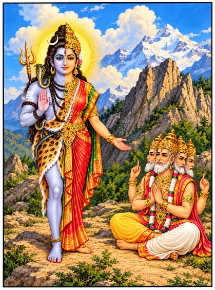
इन्द्र बोले— तत्पश्चात् एक हजार चतुर्युगीके व्यतीत हो जानेपर प्रभात वेलामें भगवान् ब्रह्माने नष्ट हुई प्रजाओंका पुनः पूर्ववत् सृजन किया। हे विप्रेन्द्र! इस प्रकार ब्रह्माके परार्धका दूना समय बीत जानेपर पृथ्वी जलमें, जल अग्निमें, अग्नि वायुमें और वायु आकाशमें अपनी-अपनी तन्मात्रासहित व्याप्त हो गये। हे द्विजश्रेष्ठ! दसों इन्द्रियाँ, मन तथा तन्मात्राएँ अहंकारको प्राप्तकर तत्क्षण उसीमें विलीन हो गयीं। अहंकार उस महत्को व्याप्त करके एवं महत् भी अव्यक्तको व्याप्त करके उसी क्षण उनमें विलीन हो गया। हे द्विज! अव्यक्त भी अपने गुणोंके साथ महेश्वरमें समाहित हो गया। इसके अनन्तर उन्हीं परम पुरुष शिवसे पूर्वकी भाँति सृष्टि होने लगी॥१-५½॥
एतदनन्तर पद्मयोनि ब्रह्माजीने अपने मनसे मानस पुत्रोंका सृजन किया। इस लोकमें जब प्रजाओंकी वृद्धि न हो सकी, तब प्रजा-वृद्धिके लिये स्वयं भगवान् ब्रह्मा अपने मानस पुत्रोंके साथ महेश्वरके निमित्त कठोर तप करने लगे। तब उनकी तपस्यासे प्रसन्न होकर वे महेश्वर शिव उनकी कामना समझकर उन पुरुषरूप ब्रह्माके ललाटके मध्य-भागका भेदन करके ‘मैं आपका पुत्र हूँ’— ऐसा कहकर स्त्री-पुरुषरूपमें प्रकट हो गये। उनके पुत्र वे महादेव अर्धनारीश्वरके रूपमें प्रतिष्ठित हुए। तब उन्होंने जगद्गुरु ब्रह्मासहित सब कुछ दग्ध कर दिया॥६-१०॥
इसके बाद शिवजीने समग्र जगत्की वृद्धिके लिये योगमार्गके द्वारा कल्याणमयी अर्धमात्रास्वरूपिणी अपनी अर्धांगिनी परमेश्वरीके साथ संसर्ग किया। विश्वेश्वर विश्वात्मा परमेश्वर शिवने उन परमेश्वरीसे विष्णु, ब्रह्मा और पाशुपत अस्त्रका सृजन किया। इसीलिये ब्रह्मा तथा विष्णुको महादेवीके अंशसे उत्पन्न कहा गया है और उन ब्रह्माको अण्डज, पद्मज और भवांगभव भी कहा जाता है। मैंने आपसे यह सम्पूर्ण पुरातन इतिहास कह दिया। जबतक ब्रह्माका परार्ध रहता है, तबतकके उनके ऐश्वर्य तथा तमोगुणसे प्रादुर्भूत उनके वैराग्यके विषयमें मैं संक्षेपमें कहूँगा॥११-१४½॥
भगवान् नारायणने भी अपने शरीरको दो भागोंमें विभक्त करके अपने उसी अंगसे सम्पूर्ण चराचरकी सृष्टि की। तब उन्होंने ब्रह्माका सृजन किया और पितामह ब्रह्माने रुद्रका सृजन किया। हे मुने! दूसरे कल्पमें रुद्रने विष्णु, ब्रह्मा और ईश्वर (शिव) को उत्पन्न किया। हे मुने! तदनन्तर दूसरे कल्पमें हरि (विष्णु) ने ब्रह्माका सृजन किया। पुनः [दूसरे कल्पमें] ब्रह्माने नारायणको और फिर भव (रुद्र)-ने ब्रह्माकी सृष्टि की। तत्पश्चात् अजन्मा भगवान् ब्रह्मा ‘यह संसार दुःखरूप है’— ऐसा सोचकर सृष्टिकार्य छोड़ करके अपनेको आत्मतत्त्वमें अवस्थितकर प्राण-संचारको निरुद्ध करके पाषाणकी भाँति अचल होकर दस हजार वर्षतक समाधिमें स्थित रहे॥१५-१९½॥
तब उनके हृदयमें जो नीचेकी ओर मुखवाला सुन्दर कमल विराजमान था, वह पूरक प्राणायामद्वारा वायुपूरित होकर विकसित हो उठा और पुनः कुम्भक प्राणायामद्वारा वायुनिरुद्ध होकर ऊर्ध्वमुखवाला हो गया। तब उन्होंने परमेश्वरको उसी कमलकी कर्णिकाके मध्यमें स्थापित कर दिया। तदनन्तर आत्मनियन्त्रण करनेवाले, संयमके द्वारा विशुद्ध आत्मावाले तथा पूजनके योग्य ब्रह्माने ओंकार शब्दसे सम्बन्ध रखनेवाली अर्धमात्रासे परे जो नाद है, उससे भी परे ब्रह्मसंज्ञक नादस्वरूप, मृणालतन्तुके शतभागके एक भागमें अवस्थित परम सूक्ष्म पीतवर्ण अग्निशिखा-सदृश, यम-नियम आदि योगांग पुष्पोंके द्वारा पूजनीय तथा अविनाशी ईश्वरको अपने हृदयमें ध्यानावस्थित करके उनकी पूजा की॥२०-२३½॥
तब हृदयकमलमें विराजमान रहनेवाले उन ब्रह्माके अंशसे जायमान सर्वव्यापी रुद्र उनके ललाटका भेदन करके पितामहसे उत्पन्न हुए। शिवके हृदयसे प्रादुर्भूत पुरुष रुद्र स्वभावतः स्वयं नील होते हुए भी अग्निके संयोगके कारण लोहित (रक्त) वर्णके हो गये। चूँकि वे कालाकृति पुरुष रुद्र नील और लोहित वर्णके हुए, अतः वे ब्रह्मदेव प्रभु रुद्रको ‘नीललोहित’— ऐसा कहने लगे। कालरूप भगवान् रुद्र ब्रह्माजीसे अत्यन्त प्रसन्न हुए। हे महामुने! तदनन्तर विश्वात्मा पितामह ब्रह्मा नामाष्टक स्तोत्रसे प्रसन्नचित्त विश्वात्मा भगवान् रुद्रकी स्तुति करने लगे॥२४-२८॥
पितामह बोले— हे भगवन्! हे रुद्र! हे भास्कर! अमित तेजस्वी आपको नमस्कार है; अम्बुमय तथा रस-स्वरूप आप भगवान् भवको नमस्कार है। गन्धमय पृथ्वीरूप शर्वको नित्य नमस्कार है; स्पर्शगुणयुक्त वायुरूप ईशको बार-बार नमस्कार है। अमित तेजस्वी अग्नि-रूप पशुपतिको नमस्कार है। शब्दतन्मात्रावाले व्योमरूप आप भीमको नमस्कार है। आप अमृतमय चन्द्रस्वरूप महादेवको नमस्कार है; आप कर्मयोगी यजमानरूप उग्रको नमस्कार है। जो मनुष्य समाहितचित्त होकर पितामह ब्रह्माके द्वारा रुद्रके लिये कहे गये इस स्तोत्रका पाठ करता है या श्रवण करता है अथवा विप्रोंको सुनाता है, वह एक वर्षमें ही अष्टमूर्ति भगवान् रुद्रका सायुज्य प्राप्त कर लेता है॥२९-३३½॥
इस प्रकार स्तुति करके जब पितामहने महादेवकी ओर देखा, तब वे सभी ओर आठ प्रकारसे विभक्त होकर सुशोभित होने लगे। उसी समयसे सूर्य, चन्द्र, अग्नि प्रकाश करने लगे और पृथ्वी, वायु, यजमानरूप पुरुष, जल तथा सर्वव्यापी गगन अपने-अपने गुणधर्मसे समन्वित हुए। उसी समयसे लोग उन ईश्वरको ‘अष्टमूर्ति’ इस नामसे कहने लगे॥३४-३६॥
उन्हीं अष्टमूर्तिके अनुग्रहसे ब्रह्माजी पुनः सृष्टि करने लगे। इस सम्पूर्ण जगत्का सृजन करके पुनः दूसरे कल्पमें हजार युगपर्यन्त चराचर संसारके सुप्त रहनेपर भगवान् ब्रह्माने प्रजाओंकी सृष्टि करनेके विचारसे अत्यन्त उग्र तप आरम्भ कर दिया॥३७-३८॥
इस प्रकार तप करते हुए उन ब्रह्माको जब कोई सफलता प्राप्त न हुई; तब दीर्घकालतक तप करनेसे उत्पन्न दुःखके कारण उन्हें क्रोध आ गया। तब क्रोधाविष्ट उन ब्रह्माके नेत्रोंसे अश्रुबिन्दु गिरने लगे। तदनन्तर उन अश्रुबिन्दुओंसे भूत-प्रेत प्रादुर्भूत हो गये॥३९-४०॥
तब उन सभी भूत-प्रेत-निशाचरोंको पहले उत्पन्न हुआ देखकर अजन्मा तथा परम ऐश्वर्यशाली भगवान् ब्रह्मा अपनेको कोसने लगे। इससे उन भगवान् पितामहने कोपाविष्ट होकर अपने प्राण त्याग दिये॥४१½॥
तत्पश्चात् उन प्रभुके मुखसे उदयकालीन सूर्यके समान कान्तिवाले अर्धनारीश्वरके रूपमें होकर प्राणमय रुद्र प्रकट हुए। तब वे अपनेको ग्यारह स्वरूपोंमें विभक्त करके व्यवस्थित हो गये। उन सर्वात्मा रुद्रने अपने आधे अंशसे कल्याणकारिणी उमाको आविर्भूत किया॥४२-४३½॥
तत्पश्चात् उमाने लक्ष्मी, दुर्गा तथा श्रेष्ठ सरस्वतीका सृजन किया; पुनः उन्होंने वामा, रौद्री, महामाया, कमलके समान नेत्रोंवाली वैष्णवी, कल-विकरिणी, काली, कमल-वासिनी, बलविकरिणी, देवी बलप्रमथिनी, सर्वभूतदमनी और मनोन्मनीका सृजन किया। इसी प्रकार उन्होंने अन्य बहुत-सी हजारों नारियोंकी सृष्टि की॥४४-४६½॥
तब तीनों लोकोंके स्वामी परमेश्वर महादेव समस्त रुद्रों तथा उन देवियोंके साथ उन सर्वात्मा ब्रह्माके समक्ष खड़े हो गये। तदनन्तर ब्रह्मपुत्र दयालु महेश्वर शिवने उन मरे हुए परमेष्ठी भगवान् ब्रह्माको पुनः प्राण प्रदान कर दिये। जब प्रभु शिवने ब्रह्मामें आत्मस्थित प्राणोंका संचार किया, तब उन्हें कुछ-कुछ चेतनायुक्त देखकर भगवान् रुद्र अत्यन्त प्रसन्न हुए। इसके बाद देवेश्वर शिवने ब्रह्माजीसे यह श्रेष्ठ वचन कहा— हे देव! डरिये मत! हे महाभाग! हे विरिञ्च! हे जगद्गुरो! मैंने आपमें प्राण स्थापित कर दिये हैं; अतः हे प्रभो! अब उठिये॥४७-५१॥
तब उनका स्वप्नभूत मनोगत वचन सुनकर पितामह प्रसन्नचित्त हो गये। तदनन्तर लब्धप्राण ब्रह्माजीने अपने खिले हुए कमलके समान नेत्रोंसे महेश्वरको देखा। बहुत समयतक उन्हें देखते रहनेके पश्चात् भगवान् ब्रह्माने उठ करके दोनों हाथ जोड़कर स्नेहयुक्त गम्भीर वाणीमें उनसे कहा— हे महाभाग! आप मेरे मनको आनन्दित कर रहे हैं; एकादश रूपोंमें प्रतिष्ठित अष्टमूर्ति आप कौन हैं?॥५२-५४½॥
इन्द्र बोले— उनका वचन सुनकर देवशत्रुओंका संहार करनेवाले महेश्वर अपने सुखप्रद हाथोंसे ब्रह्माजीका स्पर्श करते हुए उनसे कहने लगे॥५५½॥
श्रीशंकर बोले— मुझे परमात्मा तथा इन्हें अजन्मा माया समझिये और सामने खड़े ये रुद्र आपकी रक्षा करनेके लिये यहाँ आये हैं॥५६½॥
तदनन्तर उन देवाधिदेवको प्रणाम करके ब्रह्माने हाथ जोड़कर हर्षपूर्ण गद्गद वाणीमें कहा— हे भगवन्! हे देवदेवेश! मैं दुःखोंसे अत्यन्त व्याकुल हूँ। हे ईशान! हे शंकर! मुझे इस संसारसे मुक्त करनेमें आप समर्थ हैं॥५७-५८½॥
तत्पश्चात् पितामह ब्रह्माकी इस बातपर हँसकर सर्वव्यापी तथा जगत्के स्वामी उमापति भगवान् शिव रुद्रों एवं उन भगवती उमाके साथ अन्तर्धान हो गये॥५९½॥
इन्द्र बोले— हे शिलाद! अतः समस्त लोकोंमें अयोनिज तथा मृत्युरहित पुरुष सर्वथा दुर्लभ है [यहाँतक कि] वे पद्मयोनि ब्रह्मा भी मृत्युयुक्त हैं— ऐसा जानिये। किंतु यदि देवेश्वर भगवान् रुद्र प्रसन्न हो जायँ, तो आपके लिये मृत्युरहित तथा अयोनिज पुत्र दुर्लभ नहीं है। मैं, विष्णु एवं महात्मा ब्रह्मा भी मृत्युहीन तथा अयोनिज पुत्र देनेमें असमर्थ हैं॥६०-६२½॥
शैलादि बोले— इस प्रकार विप्रेन्द्रसे कहकर तथा उनपर अनुग्रह करके वे दयालु इन्द्र देवताओंके साथ श्वेतवर्णवाले ऐरावतपर आरूढ़ होकर चले गये॥६३-६४॥
॥इस प्रकार श्रीलिङ्गमहापुराणके अन्तर्गत पूर्वभागमें ‘इन्द्रवाक्य’ नामक इकतालीसवाँ अध्याय पूर्ण हुआ॥४१॥
बयालीसवाँ अध्याय
शिलादद्वारा तप करनेसे भगवान् महेश्वरका नन्दी नामसे उनके पुत्रके रूपमें प्रकट होना और शिलादद्वारा नन्दिकेश्वर शिवकी स्तुति
सूतजी बोले— वर प्रदान करनेवाले पुण्यशाली सहस्रनेत्र इन्द्रके चले जानेपर वे शिलाद महादेव शिवकी आराधना करते हुए तपके द्वारा उन्हें सन्तुष्ट करने लगे॥१॥
इस प्रकार निरन्तर तपस्यामें संलग्न उन द्विज शिलादके एक हजार दिव्य वर्ष एक क्षणकी भाँति अद्भुतरूपसे व्यतीत हो गये॥२॥
उनका शरीर वल्मीक (बाँबी) से ढँक गया, वे मुनि वज्रसूची (वज्र तथा सूईके समान) मुखवाले तथा अन्य रक्तभोजी कीटोंसे लिपटे शरीरवाले परिलक्षित हो रहे थे, वे मांस-रुधिर-त्वचासे विहीन होकर अस्थिमात्र शरीरवाले हो गये थे; फिर भी वे निर्लिप्त भावसे भित्तिकी भाँति निश्चल खड़े थे। तब उन्हें [इस रूपमें तप करते हुए] भगवान् शंकरने जान लिया। [वहाँ प्रकट होकर] कामरिपु शिवने ज्यों ही अपने हाथसे मुनिका स्पर्श किया, त्यों ही मुनिश्रेष्ठ द्विज शिलादका [तपस्याजनित] क्लेश समाप्त हो गया॥३-५॥
तदनन्तर तपस्यारत उन मुनिके तपसे सन्तुष्ट होकर भगवान् शंकरने उनसे कहा— मैं अपने गणों तथा उमासहित आपपर प्रसन्न हूँ। हे महामते! इस तपस्यासे आपका क्या प्रयोजन! मैं आपको सर्वज्ञ तथा समस्त शास्त्रोंके रहस्योंका पारगामी विद्वान् पुत्र प्रदान करता हूँ॥६-७॥
तब देवेश शिवको प्रणाम करके और उनकी स्तुति करके शिलादमुनि हर्षपूर्ण गद्गद वाणीमें चन्द्रभूषण शिवसे कहने लगे॥८॥
शिलाद बोले— हे भगवन्! हे देवदेवेश! हे त्रिपुरार्दन! हे शंकर! हे सत्तम! मैं अयोनिज तथा मृत्युहीन पुत्र चाहता हूँ॥९॥
सूतजी बोले— पूर्वमें ब्रह्माजीके द्वारा तपस्यासे आराधित परमेश्वर रुद्रने परम प्रसन्नताके साथ मुनि शिलादसे कहा॥१०॥
श्रीदेवदेव शिव बोले— हे विप्र! हे तपोधन! मुनियों तथा श्रेष्ठ देवताओंसहित ब्रह्माजीने अवतार ग्रहण करनेके लिये पूर्वकालमें तपस्याके द्वारा मेरी आराधना की थी। अतः मैं नन्दी नामसे तुम्हारे अयोनिज पुत्रके रूपमें जन्म लूँगा। हे मुने! आप मुझ जगत्पिताके भी पिता होंगे॥११-१२॥
ऐसा कहकर सम्मुख स्थित मुनिकी ओर प्रेमपूर्वक देखकर उन्हें प्रणाम करके अमृततुल्य भगवान् शिव उमासहित वहीं अन्तर्धान हो गये॥१३॥
हे महामुने! भगवान् रुद्रसे पुत्रप्राप्तिका वरदान पाकर यज्ञविदोंमें श्रेष्ठ मेरे पिताजी यज्ञ करनेके लिये प्रसन्नतापूर्वक विशाल यज्ञशालामें पहुँचे; तब मैं पूर्व ही भगवान् रुद्रकी आज्ञासे उनके पुत्रके रूपमें उस अंगणमें प्रादुर्भूत हो गया, उस समय मैं प्रलयाग्निके समान प्रभासे समन्वित था॥१४-१५॥
उस समय शिलादमुनिके पुत्ररूपमें मेरे आविर्भूत होनेपर पुष्कर, आवर्तक आदि मेघ बरसने लगे; किन्नर, सिद्ध, साध्य आदि गगनचारी देवतागण गान करने लगे और इन्द्र पुष्पराशिमिश्रित वृष्टि करने लगे॥१६॥
उस समय कालसूर्यके समान आभावाले, जटामुकुट धारण किये, तीन नेत्रोंसे युक्त, चार भुजाओंवाले, हाथोंमें शूल-टंक-गदा धारण करनेवाले, वज्र लिये हुए, हीरेके सदृश उज्ज्वल दाँतोंवाले, इन्द्रके द्वारा आराधित, कानोंमें हीरेका कुण्डल धारण किये हुए, घोर विग्रहवाले तथा मेघसदृश गम्भीर ध्वनिसे सम्पन्न मुझ बाल-शिशुको देखकर ब्रह्मा आदि, इन्द्र तथा सभी मुनीश्वर स्तुति करने लगे और सभी अप्सराएँ चारों ओरसे वाद्ययन्त्र बजाने लगीं तथा नृत्य करने लगीं॥१७-१९॥
हे मुनिश्रेष्ठ! ऋग्वेद, यजुर्वेद तथा सामवेदके माहेश्वर मन्त्रोंके द्वारा आनन्दपूर्वक मेरी स्तुति करके ऋषियोंने मुझे प्रणाम किया॥२०॥
ब्रह्मा, विष्णु, रुद्र, इन्द्र, साक्षात् अम्बिका शिवा, देवगुरु बृहस्पति, चन्द्रमा, महातेजस्वी सूर्य, वायु, अग्नि, ईशान, निर्ऋति, यक्ष, यम, वरुण, विश्वेदेव,सभी रुद्र, महाबली वसुगण, साक्षात् लक्ष्मी, इन्द्राणी, देवी ज्येष्ठा, सरस्वती, अदिति, दिति, श्रद्धा, लज्जा, धृति, नन्दा, भद्रा, सुरभी, सुशीला, सुमना, वृषेन्द्र, महातेजस्वी धर्म तथा धर्मपुत्र मुझे घेरकर मेरा आलिङ्गन करके मेरी स्तुति करने लगे। हे मुनिश्रेष्ठ! उस समय पुण्य आत्मावाले मेरे पिता मुनि शिलाद भी उस प्रकारके रूपवाले इष्टप्रद पुत्रको देखकर प्रेमपूर्वक प्रणाम करके मेरी स्तुति करने लगे॥२१-२५½॥
शिलाद बोले— हे भगवन्! हे देवदेवेश! हे त्रियम्बक! हे अव्यय! आप मेरे पुत्र हैं और जगत्के रक्षक हैं, अतः अब मुझे दुःख किस बातका! हे पुत्र! सर्वग (सर्वव्यापी)! आप जगत्के रक्षक हैं, अतः मेरे भी पिता हैं। हे अयोनिज! आपको नमस्कार है। हे जगद्योने! हे पितामह! हे पुत्र! हे महेशान! हे जगद्गुरो! आप जगत्के पिता हैं। हे वत्स! हे वत्स! हे महाभाग! हे परमेश्वर! मेरी रक्षा कीजिये। हे सुरेश्वर! आपने मुझे आनन्दित किया है, अतः आप ‘नन्दी’ नामसे विख्यात होंगे; हे नन्दिन्! मुझे आनन्द प्रदान कीजिये, मैं आप जगदीश्वरको प्रणाम करता हूँ॥२६-२९½॥
हे विभो! आप प्रसन्न होइये। हे नन्दिन्! आप महेश्वरके [मेरे यहाँ] अवतीर्ण होनेपर आज मेरे माता-पिता रुद्रलोक चले गये; पितामह, प्रपितामह आदि भी रुद्रलोक चले गये। हे जगत्प्रभो! मेरे रक्षार्थ पुत्र-रूपमें आपके अवतार लेनेपर आज संसारमें मेरा जन्म सफल हो गया। हे सुरेशान! आपको नमस्कार है। हे नन्दीश्वर! आपको नमस्कार है। हे पुत्र! हे महाबाहो! हे देवदेव! हे जगद्गुरो! मेरी रक्षा कीजिये। हे नन्दीश! देवताओं तथा दानवोंके द्वारा स्तुतियोंसे स्तवनके योग्य हे वत्स! आपके प्रति पुत्रभाव समझकर मैंने जो भी कहा है, उसे आप क्षमा करें। हे पुत्र! जो मेरेद्वारा कहे गये इस स्तवनका भक्तिपूर्वक पाठ या श्रवण करता है अथवा द्विजोंको इसे सुनाता है, वह मेरे साथ आनन्द प्राप्त करता है॥३०-३४½॥
इस प्रकार बालरूप पुत्र नन्दीकी स्तुति करके अत्यन्त आदरपूर्वक उन्हें प्रणामकर उत्तम व्रत धारण करनेवाले मुनि शिलाद मुनीश्वरोंकी ओर देखकर बोले— हे मुनिगण! आप सभी लोग मेरे महान् अक्षुण्ण भाग्यको देख लें, जो कि मेरे यज्ञांगणमें अविनाशी भगवान् महेश्वर [मेरे पुत्र होकर] नन्दीके रूपमें अवतरित हुए हैं। सम्पूर्ण जगत्में कौन मनुष्य, देवता अथवा दानव मेरे समान है; क्योंकि मेरे हितार्थ ये नन्दी मेरी यज्ञभूमिमें प्रादुर्भूत हुए हैं॥३५-३८॥
॥इस प्रकार श्रीलिङ्गमहापुराणके अन्तर्गत पूर्वभागमें ‘नन्दिकेश्वरोत्पत्ति’ नामक बयालीसवाँ अध्याय पूर्ण हुआ॥४२॥
तैंतालीसवाँ अध्याय
शिलादद्वारा पुत्र नन्दिकेश्वरको वेदादिकी शिक्षा प्रदान करना, ऋषियोंद्वारा नन्दिकेश्वरकी आयु अल्प बतानेपर शिलादका दुःखी होना तथा नन्दिकेश्वरद्वारा त्र्यम्बकमन्त्रका जप एवं महेश्वर-पार्वतीद्वारा उन्हें अपने पुत्ररूपमें अमर होनेका वरदान देना
नन्दिकेश्वर बोले— महेश्वरको प्रणाम करके पिताजी मुझको साथ लेकर प्रसन्नतापूर्वक अपनी कुटीमें लौट गये, जैसे निर्धन व्यक्ति निधि पाकर हर्षित हो जाता है, वैसे ही वे उस समय हर्षयुक्त थे॥१॥
हे महामुने! जब मैं शिलादकी कुटीमें गया, तब अपना दैविक (दिव्य) रूप छोड़कर मैं मनुष्यरूपमें हो गया॥२॥
[उस समय] किसी अज्ञात कारणवश मेरी दिव्य स्मृति नष्ट हो गयी। लोकपूजित मेरे पिताजीने मुझे मानवरूपमें देखकर अपने बन्धुओंसहित दुःखसे व्याकुल होकर अत्यधिक विलाप किया। पुत्रवत्सल तथा सर्वज्ञ शालंकायनपुत्र शिलादने मेरे जातकर्म आदि संस्कार किये॥३-४½॥
हे महामुने! उन्होंने ही मुझको ऋग्वेद तथा यजुर्वेदकी शाखाओं और सामवेदकी हजार शाखाओंका सांगोपांग उपदेश किया। साथ ही उन्होंने मुझे आयुर्वेद, धनुर्वेद, गान्धर्वविद्या, अश्वलक्षण, हाथियोंके लक्षण, मनुष्योंके लक्षण आदिकी शिक्षा प्रदान की॥५-६½॥
मेरा सातवाँ वर्ष पूर्ण होनेपर परमेश्वरकी आज्ञासे मुझे देखनेके लिये तप तथा योगशक्तिसे सम्पन्न मित्र-वरुण नामक दो दिव्य मुनिश्रेष्ठ उनके (मेरे पिताके) आश्रममें गये॥७-८॥
मुझको बार-बार देखकर उन दोनों महात्माओंने कहा— हे तात! यह नन्दी सभी शास्त्रोंके ज्ञानमें पारंगत होगा, किंतु यह अल्प आयुवाला है। ऐसा आश्चर्य तो कभी नहीं देखा गया है, इसकी आयु आजसे मात्र एक वर्षकी है॥९½॥
उनके ऐसा कहनेपर पुत्रसे स्नेह रखनेवाले विप्रवर शिलाद मेरा आलिंगन करके दुःखसे व्याकुल होकर करुण स्वरमें अत्यधिक रुदन करने लगे— हा पुत्र! हा पुत्र! हा पुत्र! अहो, दैवविधि तथा विधाताका ऐसा बल! [यह कहकर] वे दुःखित होकर भूमिपर गिर पड़े॥१०-११½॥
तब उनकी दुःखभरी वाणी सुनकर आश्रमवासी इकट्ठे हो गये। वे [इस अशुभके लिये] विह्वल होकर मंगल रक्षाकृत्य करने लगे। उन्होंने अन्य सभी सामग्रियोंसहित मधुलिप्त दस हजार दूर्वाकी त्रियम्बक मन्त्रसे आहुति देकर उमापति त्रियम्बक महादेवको सन्तुष्ट किया॥१२-१४॥
पिताजी संज्ञाशून्य हो गये। पितामहने भी बहुत विलाप किया, वे भी चेतनारहित हो मृतकी भाँति पड़े रहे॥१५॥
मैं मृत्युसे भयभीत हो गया और साक्षात् मृतककी भाँति [भूमिपर पड़े हुए] अपने पिता तथा पितामहको शीघ्रतापूर्वक सिर झुकाकर प्रणाम करके एवं उनकी प्रदक्षिणा करके रुद्रजपमें संलग्न हो गया। त्रिनेत्र, दस भुजाओंवाले, शान्त, पाँच मुखोंवाले, सदाशिव भगवान् त्रियम्बकका अपने हृदयकमलमें ध्यान करके मैं जप कर रहा था; [तब मैंने देखा कि] नदीके पुण्यतटपर मैं स्थित हूँ और अर्धचन्द्रमाको आभूषणके रूपमें धारण करनेवाले महादेव उमासहित प्रसन्न होकर [प्रकट हुए और] मुझसे कहने लगे—॥१६-१८½॥
हे वत्स! हे नन्दिन्! हे महाबाहो! तुमको भला मृत्युसे भय कहाँ, मैंने ही उन दोनों विप्रोंको भेजा था, तुम मेरे ही समान हो, इसमें सन्देह नहीं है। हे वत्स! वास्तवमें तुम्हारा यह देह लौकिक नहीं है, यह दिव्य है।
हे वत्स! पूर्वमें शिलाद, देवताओं, मुनियों, सिद्धों, गन्धर्वों तथा श्रेष्ठ दानवोंने तुम्हारे जिस शरीरका दर्शन किया था और जिसका पूजन किया था, वह दिव्य था। हे नन्दिकेश्वर! संसारका यह स्वभाव है कि सुख-दुःख बार-बार आते रहते हैं। मनुष्योंके लिये स्त्रीभोगका परित्याग ही सर्वथा उचित है— ऐसा विवेकी पुरुष कहते हैं॥१९-२२½॥
मुझसे ऐसा कहकर महान् कष्टोंको दूर करनेवाले, सभी देवताओंके महेश्वर, भगवान् रुद्र, हर, वृषभध्वज तथा परमेश्वर महादेवने अपने दोनों अत्यन्त शुभ हाथोंसे मुझे स्पर्श किया और उनका मन प्रसन्न हो गया। तदनन्तर गणेश्वरोंको एवं हिमालयपुत्री पार्वतीको भलीभाँति देखकर वे सुरेश्वर महादेव प्रसन्नचित्त होकर मेरी ओर देखकर कहने लगे—॥२३-२५½॥
तुम अपने पिता तथा सुहृज्जनोंसहित अजर-अमर, बुढ़ापारहित, दुःखसे हीन, क्षयरहित एवं अव्यय रहोगे। तुम मेरे प्रिय गणेश्वर होओ, तुम मेरे समान तेज तथा पराक्रमवाले होओ। तुम सदा मेरे इष्ट बनकर सदा मेरे समीप विराजमान रहोगे। तुम मेरे सदृश बलशाली एवं महान् योगबलसे सम्पन्न होओगे॥२६-२८॥
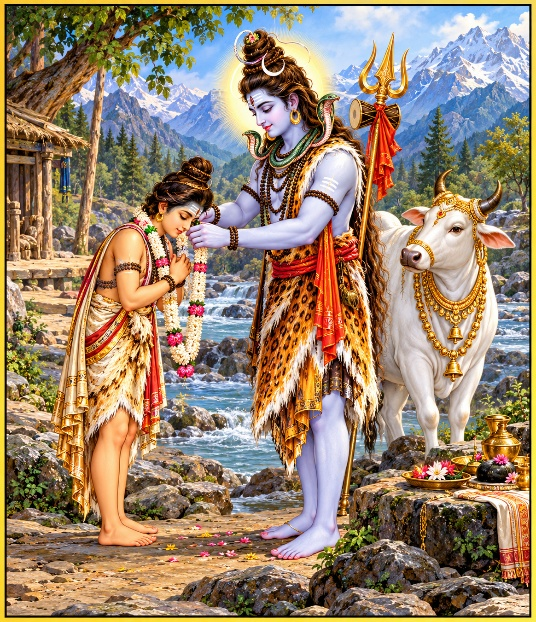
मुझसे ऐसा कहकर गणोंसहित महातेजस्वी वृषध्वज भगवान् महादेवने कुशेशयमयी अर्थात् शतदलकमलसे निर्मित अपनी माला उतारकर मेरे कण्ठमें बाँध दी। कण्ठमें बँधी हुई उस सुन्दर मालासे मैं तीन नेत्रोंवाले तथा दस भुजाओंवाले दूसरे शंकरके समान हो गया॥२९-३०½॥
तत्पश्चात् परमेश्वरने मुझको हाथसे पकड़कर कहा— बोलो, मैं तुम्हें कौन-सा उत्तम वर प्रदान करूँ? तब उन वृषध्वजने अपनी जटामें समाहित अति निर्मल जलको [हाथमें] लेकर कहा— नदी हो जाओ ऐसा कहकर उन्होंने जलको छोड़ दिया। तब दिव्य जलवाली, श्याम जलसे परिपूर्ण, कमल तथा उत्पलके वनोंसे युक्त शुभ महानदी बन गयी॥३१-३३½॥
तदनन्तर महादेवने उस परम सुन्दर नदीसे कहा— चूँकि तुम जटाके जलसे महानदीके रूपमें निकली हो, अतः तुम्हारा नाम जटोदका होगा। तुम पवित्र तथा नदियोंमें श्रेष्ठ होओगी। कोई भी मनुष्य तुम्हारे जलमें स्नान करके सभी पापोंसे मुक्त हो जायगा॥३४-३५½॥
तत्पश्चात् प्रभु महादेवने ‘यह तुम्हारा पुत्र है’— ऐसा कहकर मुझ शिलादतनयको देवी पार्वतीके चरणोंमें डाल दिया। तब उन्होंने मेरा सिर सूंघकर दोनों हाथोंसे मुझे [स्नेहपूर्वक] सहलाते हुए पुनः देवदेव शंकरकी ओर देखकर पुत्रप्रेममें तीन पुत्ररूप स्रोतोंके द्वारा शंखके समान श्वेतवर्णवाले जलरूप अश्रुबिन्दुओंसे मुझे अभिसिंचित कर दिया। इनके वे ही तीनों स्रोत तीन नदियाँ बन गयीं। भगवान् भव महादेवने इसे त्रिस्स्रोतस् (तीन धाराओंवाली) नदीकी संज्ञा प्रदान की॥३६-३९॥
उस त्रिस्रोतस् नदीको देखकर वृषने अत्यन्त प्रसन्न होकर नाद किया, तब उस ध्वनिसे एक दूसरी नदी आविर्भूत हो गयी। देवदेव शंकरने उस नदीका नाम वृषध्वनि रखा॥४०½॥
इसके बाद भगवान् वृषध्वजने विश्वकर्माके द्वारा निर्मित, स्वर्णमय, सभी रत्नोंसे जटित, अलौकिक, शुभ, अद्भुत तथा दिव्य अपने मुकुटको मेरे सिरपर बाँध दिया। उन महेश्वर महादेवने हीरे तथा वैदूर्यमणिसे मण्डित दो शुभ तथा दिव्य कुण्डल [मेरे कानोंमें] स्वयं पहना दिये॥४१-४३॥
हे मुने! मुझको इस प्रकार पूजित देखकर सूर्यने आकाशमें मेघोंके जलसे मुझ नन्दीका अभिसेचन किया। तब उस अभिषेकके जलसे सोनेकी नदी बन गयी। उस स्वर्णजलसे निकलकर यह नदी बनी, इसलिये देवोंके देव त्रियम्बक शिवने उसे स्वर्णोदका (स्वर्ण जलवाली) कहा। उसी प्रकार सोनेके मुकुटसे दूसरी पवित्र तथा शुभ नदी उत्पन्न हुई, अतः उसे जाम्बूनदी कहा जाता है। इस प्रकार ये पाँच नदियाँ भगवान् जप्येश्वरके समीप जानेवाली हैं। जो पंचनदपर पहुँचकर इसमें स्नान करके भगवान् जप्येश्वरेश्वरकी पूजा करता है, वह शिवसायुज्य प्राप्त करता है; इसमें सन्देह नहीं है॥४४-४८॥
इसके बाद सभी भूतोंके स्वामी भगवान् महादेवने हिमालयपुत्री, अजन्मा, शर्वाणी, उमा देवीसे कहा— हे देवि! मैं भूतोंके स्वामी देव नन्दीश्वरका अभिषेचन करता हूँ और उन्हें गणेन्द्र नामवाला कहूँगा, हे अव्यये! [इस विषयमें] तुम क्या सोचती हो?॥४९-५०॥
उनका यह वचन सुनकर हर्षयुक्त मुखवाली भवानीने वर प्रदान करनेवाले तथा भूतोंके स्वामी अपने पति शिवसे मुसकराते हुए इस प्रकार कहा— हे देवेश! शैलादि मेरा पुत्र है, अतः आप इसे सभी लोकोंका स्वामित्व और गणेशत्व प्रदान करनेकी कृपा कीजिये॥५१-५२॥
तत्पश्चात् सभी लोकेश्वरोंके भी ईश्वर, देवोंके देव, शर्व, भगवान् वृषध्वजने अपने दिव्य गणेश्वरोंका स्मरण किया॥५३॥
॥इस प्रकार श्रीलिङ्गमहापुराणके अन्तर्गत पूर्वभागमें ‘नन्दिकेश्वरप्रादुर्भाव तथा नन्दिकेश्वराभिषेकमन्त्र’ नामक तैंतालीसवाँ अध्याय पूर्ण हुआ॥४३॥
चौवालीसवाँ अध्याय
भगवान् शिवद्वारा नन्दिकेश्वरको गणोंके अधिपतिके रूपमें प्रतिष्ठित करना एवं सभी देवोंके द्वारा नन्दिकेश्वरका अभिषेक तथा शिवनाममन्त्रकी महिमा
शैलादि बोले— रुद्रके स्मरण करते ही गणेश्वर लोग उपस्थित हो गये। उन सभीकी हजार-हजार भुजाएँ थीं, उन्होंने हाथोंमें हजार अस्त्र धारण कर रखे थे, उनके तीन नेत्र थे, वे महान् गण देवताओंसे वन्दित हो रहे थे, वे करोड़ों कालाग्निके समान थे, वे जटामुकुट धारण किये हुए थे, दाढ़ोंके कारण वे विकराल मुखवाले थे, वे शाश्वत, शुद्ध तथा प्रबुद्ध थे, वे अपने ही समान करोड़ों-करोड़ों अनुचरोंसे युक्त थे— ऐसे असंख्य महात्मा गणेश्वर प्रसन्नताके साथ वहाँ आये॥१-३॥
वे महान् बलसे सम्पन्न गण गाते, दौड़ते, भागते, नाचते तथा अनेक मुखवाद्योंको बजाते हुए आये। वे रथों, हाथियों, घोड़ों, सिंहों और बन्दरोंपर सवार थे। कुछ गण स्वर्णचित्रित विमानोंपर भी आरूढ़ थे॥४-५॥
महायोगसे सम्पन्न वे गणेश्वर भेरी, मृदंग, पणव, आनक, गोमुख, पटह, एकपुष्कर, मुरज, आडम्बर, डिण्डिम, मर्दल, वेणु, वीणा, दर्दुर, तलघात, कच्छप, पणव एवं अन्य प्रकारके वाद्योंको बजाते हुए तथा विविध तालध्वनियाँ करते हुए भगवान् शिवकी सभामें आये॥६-८॥
महान् शक्तिसे युक्त तथा सभी देवेश्वरोंके ईश्वर उन गणेश्वरोंने महादेव एवं पार्वतीको प्रणाम करके यह वचन कहा— हे भगवन्! हे देवदेवेश! हे त्रियम्बक! हे वृषध्वज! आपने हमलोगोंका स्मरण किसलिये किया है? हे देव! हे महाद्युते! आदेश दीजिये॥९-१०॥
क्या हमलोग समुद्रोंको सोख लें? क्या यमको उनके सेवकोंसहित मार डालें अथवा मृत्युपुत्री (जरा) तथा मृत्युको मार डालें अथवा पद्मयोनि ब्रह्माका पशुकी भाँति वध कर दें। क्या अत्यन्त कुपित होकर हमलोग देवताओंसहित इन्द्रको, वायुसहित विष्णुको अथवा दानवोंसहित दैत्योंको बाँधकर यहाँ ले आयें? हमलोग आपकी आज्ञासे आज किसका घोर अनर्थ कर डालें? हे देव! सभी कामनाओंकी समृद्धिके लिये आज किसका उत्सव है?॥११-१३॥
भगवान् शंकरने वैसा कहनेवाले उन करोड़ों-करोड़ों सभी सर्वपूज्य गणेश्वरोंका सम्मान करके उनसे कहा— हे जगत्के हितकारको! सुनिये, जिसलिये मैंने तुमलोगोंको यहाँ बुलाया है, उसे सुन करके हे शुद्धात्माओ [गणेश्वरो]! निःशंक होकर कीजिये। यह नन्दी हमारा पुत्र है। यह सभीका ईश्वर है। यह समृद्धिशाली विप्र तुमलोगोंका नायक तथा सेनानी है। अतः मेरे आदेशसे तुम सभी लोग अपना स्वामी एवं सेनानी मानकर इस महायोगपतिका अभिषेक करो॥१४-१७॥
भगवान् शिवके इस प्रकार कहनेपर वे सभी गणेश्वर ‘ऐसा ही होगा’— यह कहकर आपसमें परामर्श करके सामग्रियाँ एकत्र करने लगे॥१८॥
वे स्वर्णनिर्मित, दिव्य, सुन्दर, मेरुसदृश तथा मनोहर सिंहासन ले आये। उन्होंने अनेक स्तम्भोंवाले, उत्तम स्वर्णकी प्रभासे युक्त, लटकती हुई मोतियोंकी झालरोंसे सुशोभित, मणियों एवं रत्नोंसे जटित, वैदूर्यमणिके स्तम्भोंवाले, किंकिणियोंसे सुशोभित, सुन्दर रत्नोंसे समन्वित तथा सभी ओर मुखवाले एक मण्डपका निर्माण करके उसके मध्यमें उस सुन्दर आसनको स्थापितकर पादप्रतिष्ठाके लिये उसके आगे नीलवज्रसे जटित एक पादपीठ रखा। उसके दोनों ओर उन्होंने दो कलश रखे, जो सुगन्धित जलसे भरे हुए थे तथा उनके मुख कमलपुष्पोंसे ढँके हुए थे। सोने, चाँदी, ताँबे और मिट्टीके हजारों कलश वहाँ रखे थे, जो सभी तीर्थोंके जलसे परिपूर्ण थे॥१९-२४॥
महात्मा परमेष्ठी ब्रह्माने दिव्य वस्त्रयुगल, दिव्य गन्ध, केयूर, कुण्डल, मुकुट, हार, सौ शलाकाओं (तीलियों) वाला छत्र और एक बालव्यजन प्रदान किया॥२५-२६॥
शंख तथा मोतियोंकी मालाके समान गौरवर्णवाले दण्डसे सुशोभित और चन्द्रमाके समान शुभ्र व्यजन, स्वर्णका दण्ड (मूठ) लगा हुआ चामर, भलीभाँति पूजित ऐरावत तथा सुप्रतीक— ये दो हाथी, विश्वकर्माके द्वारा बनाया हुआ एक सोनेका मुकुट, दो स्वच्छ तथा दिव्य कुण्डल, श्रेष्ठ आयुध वज्र, सोनेका सूत्र तथा दो केयूर वहाँ रखे गये। देवताओंके द्वारा पूजित उन गणेश्वरोंने चारों ओर अनेक प्रकारकी अन्य आवश्यक सामग्रियोंको सावधान होकर वहाँ उपस्थित कर दिया॥२७-३०॥
तदनन्तर इन्द्रसहित विष्णु आदि देवता, मुनिगण, भगवान् ब्रह्मा, नवब्रह्माण, देवताओंसहित सभी लोकपाल प्रसन्नतापूर्वक वहाँ गये। उन सभीके वहाँ आ जानेपर भगवान् परमेश्वरने समस्त संस्कारविधि सम्पन्न करानेके लिये पितामह ब्रह्माको आदेश दिया॥३१-३२½॥
तब उनका आदेश पाते ही भगवान् ब्रह्माने भी ध्यानपूर्वक सम्पूर्ण अभिषेक कर्म सम्पन्न कराया। तत्पश्चात् भगवान् ब्रह्माने पूजन करके स्वयं उनका अभिषेक किया। इसके बाद शिवके आदेशसे विष्णुने, फिर इन्द्रने और लोकपालोंने गणेन्द्रका विधिपूर्वक अभिषेक किया॥३३-३५॥
तदनन्तर ऋषियों तथा पितामह आदिने उनकी स्तुति की। तब उन सभीके स्तुति कर लेनेपर समस्त जगत्के स्वामी विष्णुने सिरपर अंजलि बाँधकर एकाग्रचित्त होकर उनकी स्तुति की और हाथ जोड़े हुए झुककर जय-जयकार किया। तत्पश्चात् सभी गणेश्वरों, देवताओं और असुरोंने भी क्रमसे सम्पूर्ण कृत्य किया॥३६-३७½॥
इस प्रकार ब्रह्मासहित सभी देवताओंके द्वारा उनका अभिषेक तथा स्तवन हो जानेके बाद परमेष्ठीकी आज्ञासे उन्होंने विवाह किया। सुयशा नामक जो मरुतोंकी पुत्री थी, वह उनकी भार्या हुई। उस सुयशाको चन्द्रमाके समान प्रभायुक्त और विशेष शोभासम्पन्न एक छत्र भेंट किया गया। हाथोंमें चामर लिये हुए स्त्रियोंसे युक्त उस सुयशाको दो चामर भी प्रदान किये गये। मेरे साथ उसने भी एक अत्यन्त सुन्दर सिंहासन ग्रहण किया। भगवती महालक्ष्मीने मुकुट आदि सुन्दर आभूषणोंसे उसे अलंकृत किया॥३८-४१॥
उसे देवीके गलेका अति सुन्दर हार भी प्राप्त हुआ। वृषेन्द्र, श्वेत हाथी, सिंह, सिंहध्वज, रथ और चन्द्रमण्डलके समान प्रभावाला स्वर्णछत्र भी भेंट किया गया। अब मेरे समान कहीं भी कोई प्रभु नहीं था॥४२-४३॥
मुझको परिवारसहित लेकर सम्बन्धियों तथा बान्धवोंको भी साथ लेकर देवीके साथ भगवान् महेश्वर वृषभपर आरूढ़ हो चल पड़े॥४४॥
तब मेरे तथा गणोंके साथ शिव एवं पार्वतीको देखकर मुनियों, देवर्षियों, सिद्धों और द्विजोंने शिवकी आज्ञाहेतु प्रार्थना की॥४५॥
तत्पश्चात् हिमालयकी पुत्रीके पति प्रभु शिवकी आज्ञासे नन्दीने उन पूजनीय लोगोंके लिये शुभ पाशुपत आज्ञा प्रदान की॥४६॥
तब मुनिश्रेष्ठ (नन्दी) से उन शिवकी आज्ञा (दीक्षा) पाकर वे मुनिलोग शिवभक्त हो गये। अतः सभीको शिवकी पूजा करनी चाहिये॥४७॥
यदि कोई मनुष्य बिना नमस्कारके ही शिवके नामका उच्चारण करता है, तो उसे दस ब्रह्महत्याके समान घोर पाप लगता है। अतः सब प्रकारसे नामके आदिमें नमस्कार (नमः) का उच्चारण करना चाहिये। आदिमें नमः अवश्य लगाना चाहिये, ऐसा करनेवाला शिवत्वको प्राप्त होता है॥४८-४९॥
॥इस प्रकार श्रीलिङ्गमहापुराणके अन्तर्गत पूर्वभागमें ‘नन्दिकेश्वराभिषेक’ नामक चौवालीसवाँ अध्याय पूर्ण हुआ॥४४॥
पैंतालीसवाँ अध्याय
भगवान् रुद्रके विराट् स्वरूप तथा सात पाताललोकोंका वर्णन
ऋषिगण बोले— हे सूतजी! आपने शंकरजीके विषयमें सब कुछ स्पष्ट रूपसे कह दिया, अब आप रुद्रके सर्वात्मभाव तथा स्वरूपको बतानेकी कृपा कीजिये॥१॥
सूतजी बोले— [हे ऋषियो!] भूः, भुवः, स्वः, महः, जनः, तपः, सत्य— ये लोक, पाताल, करोड़ों नरक-सागर, तारागण, ग्रहगण, चन्द्र, सूर्य, ध्रुव, सप्तर्षिगण, वैमानिक देवतागण तथा अन्य सभी उन्हीं शिवकी कृपासे प्रतिष्ठित हैं॥२-३॥
इन्हींके द्वारा ये सब बनाये गये हैं। हे श्रेष्ठ द्विजो! ये सब उन्हींके आत्मस्वरूप हैं। वे सर्वात्मा शिव सभीमें सर्वदा समष्टिरूपसे स्थित हैं॥४॥
उन्हींकी मायासे मोहित होकर अज्ञानी लोग सर्वात्मरूप, महात्मा, महादेव तथा महेश्वरको नहीं जानते हैं। उन भगवान् रुद्रका शरीर ही तीनों लोक है, अतः उन्हें प्रणाम करके मैं जगत्के शुभ विस्तारका वर्णन करूँगा॥५-६॥
पहले जैसा मैंने आपलोगोंसे कहा है— अण्डके आकार और ब्रह्माण्ड तथा भुवनोंके स्वरूपको बता रहा हूँ। पृथ्वी, अन्तरिक्ष, स्वः, महः, जनः, तपः, सत्य— ये सात शुभ लोक अण्डसे प्रादुर्भूत हुए हैं। हे ब्राह्मणो! उनके नीचे महातल आदि सात तल हैं। उनके भी नीचे क्रमसे नरक स्थित हैं॥७-९॥
महातल स्वर्णका बना हुआ है और यह सभी रत्नोंसे सुशोभित है। यह अद्भुत प्रासादों तथा शिवके मन्दिरोंसे युक्त है। यह अनन्त (शेषनाग), बुद्धिमान् मुचुकुन्द और पाताल तथा स्वर्गवासी राजा बलिसे युक्त है॥१०-११॥
हे विप्रो! रसातल चट्टानोंसे युक्त है, तलातल बालुकामय है, सुतल पीले वर्णका कहा गया है और वितल विद्रुम (मूँगे) की प्रभावाला है। अतल श्वेतवर्णका है और तल कालेवर्णका है। हे सुव्रतो! उन नीचेके तलोंका विस्तार पृथ्वीके समान है। सभी तलोंकी जो समाहित संख्या है, उन सभीके अन्तर्वर्ती आकाश ग्यारह हजार योजनके विस्तारवाले हैं। सभी तलोंके मेघाच्छादित अन्तरिक्षभागको तीस हजार योजनवाला माना गया है तथा इन सभी तलोंका भौगोलिक विस्तार एक लाख सात हजार योजन है॥१२-१५॥
हे मुनिश्रेष्ठो! शुभ रसातल सुवर्ण, वासुकि तथा अन्य नागोंसे युक्त कहा गया है। सब प्रकारकी शोभासे समन्वित तलातल विरोचन, हिरण्याक्ष, नरक आदिसे सेवित है॥१६-१७॥
सुतल वैनावक आदि देवों तथा कालनेमि आदि अन्य प्रमुख दैत्योंसे परिपूरित है। वितल तारकाग्नि आदि प्रधान दानवों, महान्तक आदि नागों तथा असुर प्रह्लादसे समन्वित है॥१८-१९॥
अतल कम्बल तथा अश्वतर, वीर महाकुम्भ और बुद्धिमान् हयग्रीवके अधिकारमें कहा गया है। इसी प्रकार शोभासम्पन्न तल शंकुकर्ण, नमुचि आदि विविध वीरोंसे सुशोभित है॥२०-२१॥
उन सभी तलोंमें परमेश्वर शिव अम्बा (पार्वती), स्कन्द (कार्तिकेय), नन्दी तथा अन्य गणेश्वरोंके द्वारा सभी ओरसे घिरे हुए विद्यमान रहते हैं। हे श्रेष्ठ मुनियो! इन सभी तलोंके ऊपर सात पृथ्वीतल हैं, पृथ्वी भी सात खण्डोंमें विभक्त है; मैं आपलोगोंसे इसका वर्णन कर रहा हूँ॥२२-२३॥
॥इस प्रकार श्रीलिङ्गमहापुराणके अन्तर्गत पूर्वभागमें ‘पातालवर्णन’ नामक पैंतालीसवाँ अध्याय पूर्ण हुआ॥४५॥
छियालीसवाँ अध्याय
भुवनसन्निवेशमें सात द्वीपों तथा सात समुद्रोंका वर्णन एवं सर्वत्र भगवान् शिवकी व्यापकता, स्वायम्भुव मन्वन्तरके प्रियव्रतादि राजवंशोंका वर्णन, जम्बूद्वीप, कुशद्वीप तथा क्रौंचद्वीपके राजाओंका वर्णन
सूतजी बोले— [हे ऋषियो!] पृथ्वी सात द्वीपोंसे युक्त है, नदियों तथा पर्वतोंसे भरी पड़ी है और सात समुद्रोंसे सभी ओरसे भलीभाँति अलंकृत है॥१॥
जम्बू, प्लक्ष, शाल्मलि, कुश, क्रौंच, शाक तथा पुष्कर नामवाले— ये [सात] द्वीप क्रमसे इसके भीतर अवस्थित हैं॥२॥
इन समस्त सातों द्वीपोंमें उमासहित भगवान् शिव सभी गणोंसे घिरे हुए तथा अनेक प्रकारके वेष धारण करके निवास करते हैं॥३॥
क्षारोद, इक्षुरसोद, सुरोद, घृतोदधि, दध्यर्णव, क्षीरोद, स्वादूद— ये [सात समुद्र] क्रमसे हैं। इन सभी समुद्रोंमें जलरूपी श्रीसम्पन्न भगवान् शिव अपने गणोंके साथ लहररूपी भुजाओंसे क्रीड़ा करते हैं॥४-५॥
क्षीरसागर अमृतके समान है। भगवान् विष्णु उस क्षीरसागरमें शिवज्ञानका चिन्तन करते हुए साक्षात् योगनिद्राके साथ सदा शयन करते हैं। जब भगवान् जागते हैं, तब सम्पूर्ण जगत् जागता है और जब वे सोते हैं, तब यह चराचर जगत् उनमें विलीन होकर सोता है॥६-७॥
परमेष्ठी देवदेव शिवकी कृपासे उन्हीं विष्णुके द्वारा सम्पूर्ण जगत्का सृजन, धारण, रक्षण तथा संहार किया जाता है॥८॥
हे मुनिश्रेष्ठो! सुषेणा— इस नामसे प्रसिद्ध लोग शंख, चक्र तथा गदा धारण करनेवाले पुरुषश्रेष्ठ [भगवान्] अनिरुद्धका पूजन करते हैं॥९॥
हे आत्मज्ञानियोंमें श्रेष्ठ [मुनियो!]! जो लोग अनिरुद्ध पुरुषका ध्यान करते हैं, वे सब नारायणतुल्य हैं और सभी सम्पत्तियोंसे सम्पन्न रहते हैं। भगवान् सनन्दन, सनक, सनातन, बालखिल्यगण, सिद्धगण एवं मित्रावरुण वहाँ विश्वकी उत्पत्ति करनेवाले प्रभु श्रीहरिकी सदा पूजा करते हैं॥१०-११½॥
सातों द्वीपोंमें अनेक शिखरोंवाले ऊँचे-ऊँचे पर्वत हैं। कुछ पर्वत गुफाओंसहित समुद्रतक फैले हुए हैं। काल-गौरवसे वहाँ बहुत-से भूपति (राजा) हुए, जो क्रौंचके शत्रु कार्तिकेयके पिता प्रभु शिवकी कृपासे परम ऐश्वर्यसे सम्पन्न थे॥१२-१३½॥
[हे ऋषियो!] अब मैं स्वायम्भुव मन्वन्तरसे प्रारम्भ करके भूत तथा भविष्यकालके सभी मन्वन्तरोंके राजाओंका वर्णन आपलोगोंसे करूँगा। भूत एवं भविष्यकालके सभी मन्वन्तरोंमें सभी राजा तुल्य अभिमानवाले तथा तुल्य प्रयोजनवाले थे। स्वायम्भुव मनुके [सभी] पौत्र महाबली थे। प्रियव्रतके दस वीर पुत्र थे। वे इस प्रकार कहे गये हैं— आग्नीध्र, अग्निबाहु, मेधा, मेधातिथि, वसु, ज्योतिष्मान्, द्युतिमान्, हव्य, सवन और पुत्र॥१४-१७½॥
प्रियव्रतने उनमेंसे सात पुत्रोंको सात द्वीपोंमें राजाके रूपमें अभिषिक्त कर दिया। उन्होंने महान् बलशाली आग्नीध्रको जम्बूद्वीपका राजा बनाया। उनके द्वारा मेधातिथि प्लक्षद्वीपके राजा बनाये गये। उन राजा प्रियव्रतने वपुष्मान्को शाल्मलिद्वीपके राजाके रूपमें अभिषिक्त किया और ज्योतिष्मान्को कुशद्वीपका राजा बनाया। प्रियव्रतने द्युतिमान्को क्रौंचद्वीपका राजा बनाया, हव्यको शाकद्वीपका राजा बनाया और हे सुव्रतो! सवनको पुष्करद्वीपका राजा बनाया॥१८-२१½॥
पुष्करद्वीपमें सवनके यहाँ महावीत तथा धातकी नामक पुत्र हुए। ये दोनों पुत्र पुत्रवानोंमें श्रेष्ठ हुए। उस महात्मा महावीतके नामसे महावीतवर्ष कहा गया है और धातकीके नामसे धातकीखण्ड कहा गया है। शाकद्वीपके शक्तिशाली राजा हव्यने भी जलद, कुमार, सुकुमार, मणीचक, कुसुमोत्तर, मोदाकी और सातवें महाद्रुम— इन पुत्रोंको उत्पन्न किया। जलदके नामसे जलद नामक प्रथम वर्ष कहा जाता है। कुमारके नामसे कौमार नामक दूसरा वर्ष कहा गया है। सुकुमारके नामसे सुकुमार नामक तीसरा वर्ष कहा जाता है। मणीचकके नामसे माणीचक नामक चौथा वर्ष कहा जाता है। कुसुमोत्तरके नामसे कुसुमोत्तर नामक पाँचवाँ वर्ष एवं मोदाकीके नामसे मोदक नामक छठा वर्ष कहा गया है। महाद्रुमके नामसे सातवाँ महाद्रुम नामक वर्ष कहा गया है। इस प्रकार उनके नामोंसे वे सात वर्ष हैं॥२२-२९॥
क्रौंचद्वीपके राजा द्युतिमान्के भी कुशल, मनुग, उष्ण, पीवर, अन्धकार, मुनि और दुन्दुभि— ये पुत्र उत्पन्न हुए। जो द्युतिमान्के पुत्र थे, उन्हींके अपने-अपने नामोंसे क्रौंचद्वीपमें स्थित शुभ देश प्रसिद्ध हुए॥३०-३१॥
कुशलके देशको कुशल, मनुगके देशको मनोनुग, उष्णके देशको उष्ण और पीवरके देशको पीवर कहा गया है। अन्धकारके देशको उनके नामपर अन्धकार कहा गया है। मुनिके देशको मुनि कहा गया है और दुन्दुभिके देशको दुन्दुभि कहा गया है। क्रौंचद्वीपमें ये सात प्रकाशमान जनपद (देश) हैं॥३२-३३½॥
कुशद्वीपके राजा ज्योतिष्मान्के सात महापराक्रमी पुत्र हुए। वे उद्भिद, वेणुमान्, द्वैरथ, लवण, धृति, छठें प्रभाकर और सातवें कपिल कहे गये हैं। [उद्भिदके नामसे] पहला वर्ष उद्भिद, [वेणुमान्के नामसे] दूसरा वर्ष वेणुमण्डल, [द्वैरथके नामसे] तीसरा वर्ष द्वैरथ और [लवणके नामसे] चौथा वर्ष लवण कहा गया है। इसी प्रकार [धृतिके नामसे] पाँचवाँ वर्ष धृति, [प्रभाकरके नामसे] छठा उत्तम वर्ष प्रभाकर और कपिलके नामसे सातवाँ वर्ष कपिल कहा गया है॥३४-३७॥
शाल्मलिद्वीपके राजा वपुष्मान्के भी सात पुत्र हुए। वे [पृथक् पृथक् देशोंके] राजा बने। श्वेत, हरित, जीमूत, रोहित, वैद्युत, मानस और सातवाँ सुप्रभ— ये पुत्रोंके नाम हैं। श्वेतके देशको श्वेत, हरितके देशको हारित, जीमूतके देशको जीमूत, रोहितके देशको रोहित, वैद्युतके देशको वैद्युत, मानसके देशको मानस और सुप्रभके देशको सुप्रभ कहा गया है। इस प्रकार राजाओंके नामसे सात देश हैं॥३८-४०½॥
अब मैं जम्बूद्वीपके बाहर स्थित प्लक्षद्वीपका वर्णन करूँगा। प्लक्षद्वीपके राजा मेधातिथिके सात पुत्र थे, वे सब प्लक्षद्वीपमें [अलग-अलग देशोंके] शासक नरेश हुए। उनमें शान्तभय ज्येष्ठ थे। उस द्वीपमें सात देश हैं। उस शान्तभयके बाद शिशिर, सुखोदय, आनन्द, शिव, क्षेमक और ध्रुव— ये अन्य पुत्रोंके नाम थे। स्वायम्भुव मन्वन्तरमें उनके नामोंसे द्वीपके भागानुसार सात वर्ष (देश) बसाये गये॥४१-४४॥
मेधातिथिके प्लक्षद्वीपनिवासी उन पुत्रोंद्वारा वर्णाश्रम-धर्मसे सम्पन्न प्रजाएँ वहाँ बसायी गयीं। प्लक्षद्वीप तथा शाकद्वीप आदि पाँचों द्वीपोंमें वर्ण एवं आश्रमके धर्मोंका सम्यक् पालन होता था। हे श्रेष्ठ द्विजो! इन पाँचों द्वीपोंमें सुख, आयु, स्वरूप, बल तथा धर्म सबके लिये समान बताया गया है। सभी लोग सदा रुद्रके अर्चनमें लीन रहते हैं तथा महेश्वरमें भक्ति रखते हैं। पुष्कर-द्वीपमें अन्य जो प्रजाएँ एवं राजा हैं, वे सब प्रजापालक रुद्रके श्रद्धारूपी अमृतपानके सुखकी प्रबल इच्छा रखते हैं॥४५-४९॥
॥इस प्रकार श्रीलिङ्गमहापुराणके अन्तर्गत पूर्वभागमें ‘भुवनकोशमें द्वीपद्वीपेश्वरकथन’ नामक छियालीसवाँ अध्याय पूर्ण हुआ॥४६॥
सैंतालीसवाँ अध्याय
जम्बूद्वीपके अधिपति प्रियव्रतके पुत्र महाराज आग्नीध्रका वंशवर्णन तथा आग्नीध्रके शिवभक्त नौ पुत्रोंका अजनाभवर्ष (भारतवर्ष), किम्पुरुषवर्ष आदि नौ वर्षों (देशों) का स्वामी बनना
सूतजी बोले— राजा प्रियव्रतने अपने ज्येष्ठ उत्तराधिकारी महाबली प्रिय पुत्र आग्नीध्रको जम्बूद्वीपके राजाके रूपमें अभिषिक्त किया॥१॥
हे श्रेष्ठ ब्राह्मणो! वह महान् शिवभक्त, तपस्वी, तरुण, सदा शिवपूजनमें रत रहनेवाला, ऐश्वर्यसम्पन्न, अनेक गायोंका स्वामी तथा बुद्धिमान् था॥२॥
उसके प्रजापतिके समान नौ पुत्र हुए। वे सभी शिवभक्त तथा शिवपरायण थे॥३॥
उनमें ज्येष्ठ पुत्र नाभि नामसे प्रसिद्ध था। उसके छोटे भाईका नाम किम्पुरुष था। तीसरा पुत्र हरिवर्ष तथा चौथा पुत्र इलावृत था। रम्य पाँचवाँ पुत्र था। हिरण्मान् छठा पुत्र कहा जाता है। कुरु उनमें सातवाँ था और भद्राश्व आठवाँ पुत्र कहा गया है। नौवाँ केतुमाल था। अब उनके देशोंके विषयमें सुनिये॥४-५½॥
पिताने [ज्येष्ठ पुत्र] नाभिको दक्षिणमें स्थित हेम नामक वर्ष (देश) प्रदान किया। उन्होंने हेमकूट नामक जो वर्ष था, उसे किम्पुरुषको दिया। नैषध नामक जो वर्ष कहा गया है, उसे पिताने हरिको दे दिया॥६-७॥
पिताने मेरु पर्वतसे आवृत मध्य देश इलावृतको दिया और नीलाचल नामक वर्ष रम्यको दिया। पिताने हिरण्मान्को उत्तरमें स्थित श्वेत नामक वर्ष दिया और उत्तरमें जो शृंगवर्ष है, उसे उन्होंने कुरु नामक पुत्रको दिया। इसी प्रकार उन्होंने भद्राश्वको माल्यवान्वर्ष दिया और केतुमालको गन्धमादनवर्ष दिया॥८-१०॥
विभागके अनुसार ये नौ महान् वर्ष हैं। धर्मात्मा राजा आग्नीध्र उन वर्षोंमें अपने उन पुत्रोंको [राजपदपर] क्रमानुसार अभिषिक्त करके तपस्यामें रत हो गये। तपसे अपनेको शुद्ध करनेके अनन्तर वे स्वाध्यायमें संलग्न हो गये और स्वाध्यायमें रत रहनेवाले वे बादमें शिवके ध्यानमें निमग्न हो गये॥११-१२½॥
किम्पुरुष आदि जो आठ शुभ वर्ष थे, उनमें स्वभावतः बिना प्रयत्नके ही सुखमय सिद्धि थी। उनमें [किसी प्रकारका] विपरीत भाव नहीं था और [प्रजाओंमें] बुढ़ापे तथा मृत्युका भय नहीं था। उनमें न धर्म था न अधर्म और उत्तम, मध्यम तथा अधम— ये भाव नहीं थे। उन आठों क्षेत्रोंमें हर प्रकारसे युगकी अवस्था नहीं थी॥१३-१५॥
रुद्रक्षेत्रमें जो भी स्थावर, जंगम, भक्त अथवा अस्थायी आगन्तुक प्राणी मृत होते हैं, वे उन्हीं क्षेत्रोंमें जाते हैं। रुद्रने उनके कल्याणके लिये ही आठों क्षेत्रोंका निर्माण किया है। वहाँपर महादेव सदा उनका सान्निध्य करते हैं॥१६-१७॥
आठों क्षेत्रोंके निवासी [अपने] हृदयमें महादेवको देखकर सदा सुखी रहते हैं। वे [महादेव] ही उनकी परम गति हैं॥१८॥
अब मैं हिमसे चिह्नित इस [हिमालय]-में विद्यमान नाभिके वंशका वर्णन करूँगा, आपलोग सुनें। महाबुद्धिमान् नाभिने मेरुदेवीसे राजाओंमें श्रेष्ठ तथा सभी राजाओंसे पूजित ऋषभ नामक पुत्रको उत्पन्न किया। ऋषभसे पराक्रमी भरत उत्पन्न हुए, जो उनके सौ पुत्रोंमें सबसे बड़े थे॥१९-२०॥
उन पुत्रवत्सल ऋषभने भरतका राज्याभिषेक करके ज्ञान-वैराग्यका आश्रय लेकर सर्परूप इन्द्रियोंपर विजय प्राप्त करके परमात्मा ईश्वरको पूर्णरूपसे अपनेमें स्थापितकर [स्वयं] दिगम्बर, जटाधारी, वल्कलधारी तथा निराहार होकर वनमें प्रवेश किया। उन्होंने [समस्त] आशाओंसे रहित तथा सन्देहमुक्त होकर शिवका परम पद प्राप्त किया॥२१-२२½॥
उन्होंने हिमालय पर्वतके दक्षिणमें स्थित वर्ष भरतको प्रदान किया था, इसीलिये विद्वान् लोग उनके नामसे उसे भारतवर्ष कहते हैं॥२३½॥
भरतके सुमति नामक विद्वान् तथा धार्मिक पुत्र हुए। भरतने वह राज्य उन्हें सौंप दिया। पुत्रको राज्य प्रदान करके वे राजा [भरत] वनमें प्रविष्ट हुए॥२४-२५॥
॥इस प्रकार श्रीलिङ्गमहापुराणके अन्तर्गत पूर्वभागमें ‘भरतवर्षकथन’ नामक सैंतालीसवाँ अध्याय पूर्ण हुआ॥४७॥
अड़तालीसवाँ अध्याय
भूमध्यमें स्थित मेरु (सुमेरु) पर्वत और इन्द्र आदि लोकपालोंकी पुरियोंका वर्णन
सूतजी बोले— इस द्वीपके मध्यमें मेरु नामक महान् पर्वत है। पर्वतोंमें श्रेष्ठ यह अनेक प्रकारके रत्नोंसे पूर्ण शिखरोंसे युक्त होकर स्थित है॥१॥
यह चौरासी हजार योजन ऊँचाईवाला कहा गया है। यह सोलह हजार योजन पृथ्वीके नीचे प्रविष्ट है और सोलह हजार योजन ही फैला हुआ है।
यह एक चौड़े शराव (कसोरा) के समान स्थित है और बत्तीस हजार योजन चोटीपर फैला हुआ है। इसका घेरा इसके विस्तारसे तीन गुना है॥२-३॥
यह महेश्वरके शुभ शरीरके स्पर्शसे सुवर्णका हो गया है। यह धतूरके पुष्पके समान आभावाला, सभी देवताओंका निवासस्थान तथा देवताओंकी क्रीड़ाभूमि है और अनेक आश्चर्योंसे भरा हुआ है॥४½॥
इस महान् पर्वतका आयाम एक लाख योजन है। पृथ्वीके नीचे यह सोलह हजार योजनतक है और हे विप्रेन्द्रो! उस पर्वतका शेष भाग पृथ्वीके ऊपर है। इस पर्वतके मूलके आयाम (दैर्घ्य) का प्रमाण विस्तारमें है; उसके विस्तारको पर्वतके मूलसे दुगुना कहा गया है॥५-७॥
यह पूर्वमें पद्मरागकी आभाके समान, दक्षिणमें स्वर्णके समान, पश्चिममें नीलमणिके समान और उत्तरमें मूँगेके समान है॥८॥
इसके पूर्वभागमें अमरावती (इन्द्रपुरी) है, जो अनेक प्रकारके महलोंसे युक्त, अनेक देवताओंसे भरी हुई और मणिमय जालोंसे घिरी हुई है। यह विविध आकारवाले तथा स्वर्ण एवं रत्नोंसे विभूषित गोपुरों, सोने तथा मणियोंके बने हुए अद्भुत तोरणों, राजमार्गपर स्थित-वार्तालापमें प्रवीण-सभी आभूषणोंसे अलंकृत-स्तनके भारसे झुकी हुई एवं मदके कारण घूर्णित नेत्रोंवाली हजारों स्त्रियोंसे भरी और चारों ओरसे अप्सराओंसे घिरी हुई है। यह विचित्र बावलियोंसे युक्त है। यह खिले हुए कमलोंसे सुशोभित, स्वर्णकी बनी हुई सीढ़ियोंवाले, स्वर्णमय बालुओंवाले, नीलकमलों तथा अन्य प्रकारके कमलोंसे शोभायमान, सुगन्धित नीलकमलों एवं स्वर्णकमलोंवाले इस प्रकारके सरोवरोंसे तथा नदियों और नदोंसे युक्त यह सुन्दर पुरी [अत्यन्त] शोभित है। उस पुरीसे यह सुन्दर पर्वत भी सुशोभित होता है॥९-१४॥
इस पर्वतके आग्नेय (दक्षिण-पूर्व) भागमें अग्निदेवकी तेजस्विनी नामक पुरी है। यह अमरावतीतुल्य, दिव्य तथा समस्त भोगोंसे परिपूर्ण है॥१५॥
हे व्रतियोंमें श्रेष्ठ मुनिगण! इसके दक्षिणमें यमकी उत्तम वैवस्वती नामक पुरी है। यह सुवर्णमय, दिव्य तथा शुभ भवनोंसे घिरी हुई है॥१६॥
इसके नैऋत्य (दक्षिण-पश्चिम) में कृष्णवर्णकी सुन्दर शुद्धवतीपुरी है और वायव्य (पश्चिम-उत्तर) दिशामें उसी प्रकारकी सुन्दर पुरी गन्धवती है। इसके उत्तरमें महोदया तथा ईशान (उत्तर-पूर्व) में यशोवती नामक पुरी है। इस प्रकार मेरु पर्वतकी सभी दिशाओंमें द्युलोकमें पुरियाँ सर्वदा सुशोभित रहती हैं॥१७-१८॥
यह पर्वत ब्रह्मा, विष्णु, महेश तथा अन्य देवताओंका निवासस्थान है। यह समस्त सुख-साधनोंसे सम्पन्न, पुण्यमय, अनेक झीलों और उत्तम वृक्षोंसे युक्त है। यह सिद्धों, यक्षों, गन्धर्वों, श्रेष्ठ मुनियों एवं विविध आकारवाले चारों प्रकारके प्राणियोंसे परिपूर्ण है॥१९-२०॥
हे श्रेष्ठ ब्राह्मणो! इस पर्वतके ऊपर शुद्ध स्फटिकके समान, हजार मण्डपोंसे युक्त तथा विस्तृत विमान बायीं ओर स्थित हैं। विशाल भुजाओंवाले तथा चन्द्र-सूर्य-अग्निरूप नेत्रोंवाले शिव उसमें मणिमय सिंहासनपर पार्वती-देवी तथा कार्तिकेयके साथ विराजमान रहते हैं॥२१-२२॥
वहाँ विष्णुका भी विमान है, जो उन शिवके विमानके आधे विस्तारवाला है और दक्षिणमें पद्मयोनि ब्रह्माका पद्मरागमय दिव्य विमान है॥२३॥
उस मेरुपर शिवके भवनके चारों ओर इन्द्र, यम, चन्द्रमा, वरुण, निर्ऋति, पावक, वायु और रुद्रका विशाल तथा सुन्दर पुर है। विविध दिव्य विमानोंमें अन्य लोगोंका निवास है। उस ईश्वरक्षेत्र (शिवविमान)-में ईशानदिशामें नित्य पूजा होती रहती है। वहाँ भगवान् नन्दी सिद्धेश्वरोंके साथ रहते हैं और शिष्योंसहित सुरेश्वर सनत्कुमार सिद्धोंके साथ सुखपूर्वक आसीन रहते हैं। इसी प्रकार सनक, सनन्द और उन्हींके समान अन्य हजारों लोग विराजमान रहते हैं॥२४-२७॥
उस पर्वतपर कहीं-कहीं योगभूमि है और कहीं-कहीं भोगभूमि है। वहाँ उगते हुए सूर्यके सदृश, सुन्दर तथा शुभ विमान है, उसमें वे गणेश्वर विराजमान रहते हैं। वहाँ छः मुखोंवाले कार्तिकेय, गणेश, हजारों गणों, सुयशा तथा सुनेत्रा - इन पार्वतीकी सखियों, सभी माताओं तथा मदन (कामदेव) के भी विमान हैं॥२८-२९½॥
उस पर्वतके मूलको चारों ओरसे घेरकर जम्बू नामक नदी प्रवाहित होती है। उसके दक्षिण भागमें अत्यन्त सुन्दर, बहुत ऊँचा, अतिविस्तृत तथा सभी समयोंमें फल प्रदान करनेवाला जम्बूवृक्ष है॥३०-३१
मेरु पर्वतके चारों ओर इलावृत नामक विस्तृत तथा सुन्दर वर्ष (देश) है। वहाँपर लोग जम्बूफलका आहार करनेवाले हैं और कुछ लोग अमृतका आहार करनेवाले हैं। वहाँके लोग स्वर्णके समान आभावाले तथा अन्य वर्णोंवाले भी हैं और [सब प्रकारके] सुखोंको भोगनेवाले हैं। हे विप्रो! यह द्वीप मेरुके मूलके चारों ओर फैला हुआ, सुन्दर, मध्यमें स्थित, नौ वर्षोंसे युक्त और नदियों-नदों तथा महान् पर्वतोंसे समन्वित है। अब मैं नौ वर्षोंसे युक्त जम्बूद्वीपका यथार्थ वर्णन करूँगा; योजनोंमें इसके विस्तार, मण्डल आदिको [आपलोग] सुनिये॥३२-३५॥
॥इस प्रकार श्रीलिङ्गमहापुराणके अन्तर्गत पूर्वभागमें ‘मेरुगिरिवर्णन’ नामक अड़तालीसवाँ अध्याय पूर्ण हुआ॥४८॥
उनचासवाँ अध्याय
जम्बूद्वीपका विस्तृत वर्णन, वहाँके कुलपर्वतों, नदियों, वनों तथा वहाँ रहनेवाले लोगोंका वर्णन
सूतजी बोले- यह द्वीप एक लाख योजन विस्तृत कहा गया है। इसके समीपमें स्थित प्लक्ष नामक द्वीप उसका दुगुना है और बादवाले द्वीप क्रमशः दुगुने विस्तारवाले हैं॥१॥
समुद्रोंसहित यह पृथ्वी पचास करोड़ योजन विस्तृत है। यह सात द्वीपोंसे युक्त, लोकालोक पर्वतसे घिरी हुई तथा [अत्यन्त] सुन्दर है॥२॥
हे विप्रो! मेरुके उत्तरमें नील पर्वत, उसके उत्तरमें श्वेत पर्वत और पुनः उसके उत्तरमें श्रृंगी पर्वत है; वे तीनों वर्षपर्वत हैं॥३॥
इसके पूर्वमें जठर तथा देवकूट पर्वत हैं। मेरुके दक्षिणमें निषध पर्वत है। उसके दक्षिणमें हेमकूट पर्वत कहा गया है और उसके दक्षिणमें हिमवान् पर्वत है। मेरुके पश्चिममें माल्यवान् एवं गन्धमादन नामक दो पर्वत हैं; ये दोनों पर्वत उत्तरकी ओर फैले हुए हैं॥४-५॥
ये पर्वतराज सिद्धों तथा चारणोंसे सेवित हैं और उनके बीचमें नौ हजार योजनका अन्तर है। हिमवान्का वर्ष भारतवर्ष नामवाला कहा गया है; उसके बाद हेमकूट और उसके परे किम्पुरुष वर्ष कहा गया है। हेमकूटसे परे नैषध है, उसके परे हरिवर्ष कहा गया है। हरिवर्ष और मेरुसे परे शुभ इलावृत है। इलावृतसे परे नील एवं रम्यक् कहे गये हैं। रम्यक्से परे श्वेत है, उसके परे हिरण्मय नामक वर्ष कहा गया है। हिरण्मयसे परे श्रृंगी पर्वत है और उसके परे कुरुवर्ष कहा गया है। धनुषके आकारवाले इन दोनों वर्षोंको दक्षिण तथा उत्तरमें स्थित जानना चाहिये॥६-१०॥
अन्य चार बड़े वर्ष हैं। मध्यमें इलावृत है। मेरुके पश्चिम-पूर्वमें दो वर्ष हैं, जो छोटे कहे गये हैं। निषधके बाद वेदीका अर्धभाग उत्तर माना गया है, वेदीके अर्ध भागमें दक्षिणमें तीन वर्ष और उत्तर भागमें भी तीन वर्ष माने गये हैं॥११-१२॥
नीलके दक्षिण तथा निषधके उत्तरमें उन दोनोंके बीच मेरुके मध्य इलावृतवर्षको जानना चाहिये। माल्यवान् नामक महापर्वत उत्तरकी ओर फैला हुआ है। यह ऊपरकी ओर दो हजार योजन फैला है। इसका आयाम चौंतीस हजार योजन बताया गया है॥१३-१४½॥
उसके पश्चिममें गन्धमादन पर्वतको जानना चाहिये। उसे आयाममें माल्यवान्के समान विस्तृत समझना चाहिये। जम्बूद्वीपके विस्तारसे चारों ओर यह पर्वत बराबर फैला है। अच्छे पर्वोंवाले ये छः वर्षपर्वत पूर्वकी ओर फैले हुए हैं और पूर्वी तथा पश्चिमी समुद्रोंसे दोनों ओरसे बँधे हुए हैं॥१५-१७॥
हिमवान् सदा बर्फसे आच्छादित रहता है। हेमकूट स्वर्णयुक्त है। निषध पर्वत मध्याह्नकालीन सूर्यके समान स्वर्णमय कहा गया है। चार वर्णोंवाला वह सुवर्णमय मेरु पर्वत ऊपरकी ओर फैला हुआ बताया गया है। यह परिधिमें वृत्ताकार है और चौकोर ऊँचा उठा हुआ है। नील पर्वत वैडूर्यमय है। श्वेत पर्वत शुक्लवर्णवाला है एवं स्वर्णसे पूर्ण रहता है। तीन चोटियोंवाला श्रृंगी पर्वत सुवर्णमय तथा मोरके पंखके रंगका है॥१८-२०॥
इस प्रकार पर्वतोंका वर्णन कर दिया गया, अब श्रेष्ठ पर्वतोंके विषयमें सुनिये। मन्दर तथा देवकूट पर्वत पूर्व दिशामें है। कैलास एवं स्वर्णमय गन्धमादन - ये दोनों पर्वत पूर्वकी ओर फैले हुए हैं और उनका अन्त समुद्रके भीतर होता है। निषध तथा पारियात्र- ये दोनों श्रेष्ठ पर्वत पश्चिमसे पूर्व तथा दक्षिणमें स्थित हैं। त्रिशृंग एवं जारुचि- ये दोनों महापर्वत उत्तरमें हैं तथा पूर्वकी ओर फैले हैं और समुद्रके भीतर व्यवस्थित हैं। विद्वान् लोग इन आठों पर्वतोंको मर्यादापर्वत कहते हैं॥२१-२४½॥
हे श्रेष्ठ द्विजो! मेरु नामक जो पर्वत है, वह ऊँचा स्वर्णमय पर्वत है। उसके चार चरणोंके रूपमें उसके चारों दिशाओंमें बड़े-बड़े चार उत्तम पर्वत हैं, जिनसे सहारा प्राप्त की हुई सात द्वीपवाली पृथ्वी हिलती नहीं है। उनका आयाम दस हजार योजन कहा गया है॥२५-२६½॥
पूर्वमें मन्दर, दक्षिणमें गन्धमादन, पश्चिम भागमें विपुल और उत्तरमें सुपार्श्व नामक पर्वत कहा गया है। इनपर चार विशाल वृक्ष उगे हुए हैं, जो द्वीपके पताकातुल्य प्रतीत होते हैं। मन्दर पर्वतकी चोटीपर कदम्बका विशाल वृक्ष है। वह पताकाओंका राजा है और वह लम्बी लटकती हुई शाखाओंवाला है। यह कदम्बवृक्ष चैत्यपादप (पवित्र स्थानमें लगे वृक्ष) के रूपमें प्रतिष्ठित है॥२७-२९॥
दक्षिणमें स्थित [गन्धमादन] पर्वतके शिखरपर सदा देवताओंसे सेवित पवित्र फलोंसे सम्पन्न तथा पुष्पोंसे सुशोभित जम्बूवृक्ष है। यह जम्बूवृक्ष दक्षिण द्वीपमें पताकाके रूपमें है और सभी लोकोंमें प्रसिद्ध है॥३०½॥
पश्चिममें महात्मा विपुल पर्वतकी चोटीपर पीपलका महान् वृक्ष उगा हुआ है, वह भी चैत्यपादप (पवित्र वृक्ष) के रूपमें प्रतिष्ठित है। उत्तरमें सुपार्श्व पर्वतके शिखरपर विशाल बरगदका वृक्ष उगा हुआ है, जो मोटे स्कन्धवाला तथा अनेक योजन परिधिवाला है॥३१-३२½॥
अब मैं चारों महापर्वतोंके चार देवक्रीड़ा-स्थानोंका वर्णन करूँगा; जो मनुष्योंसे रहित, रम्य, सभी काल तथा ऋतुओंमें रहनेवाले एवं मनोहर हैं। वहाँ चारों दिशाओंमें वन हैं। उनके नाम सुनिये। पूर्वमें चैत्ररथ नामक वन, दक्षिणमें गन्धमादन, पश्चिममें वैभ्राज और उत्तरमें सविता (शिव) के [नन्दन नामक] वनको जानना चाहिये। पूर्वमें मित्रेश्वर, उसके बाद [दक्षिणमें] षष्ठेश्वर, पश्चिममें वर्येश्वर और उत्तरमें आम्रकेश्वर [शिवक्षेत्र] हैं॥३३-३६½॥
हे मुनिवरो! वहाँ चार बड़े सरोवर हैं, जहाँ पर्वतों तथा वनोंमें मुनिगण क्रीड़ा करते हैं। पूर्वमें अरुणोदसर, दक्षिणमें मानससर, पश्चिममें सितोदसर और उत्तरमें महाभद्रसर बताया गया है। दक्षिणमें शाखका क्षेत्र, पश्चिममें विशाखका क्षेत्र, उत्तरमें नैगमेयका क्षेत्र और पूर्वमें कुमारका क्षेत्र है॥३७-३९½॥
अरुणोदसरके पूर्वमें महापर्वत बताये गये हैं। मैं संक्षेपमें नामोंसे उनका वर्णन करूँगा; विस्तारपूर्वक उनका वर्णन नहीं किया जा सकता। सितान्त, कुरण्ड, पर्वतश्रेष्ठ कुरर, विकर, मणिशैल, पर्वतश्रेष्ठ वृक्षवान्, महानील, रुचक, सबिन्दु, दर्दुर, वेणुमान्, समेघ, निषध, देवपर्वत-ये महापर्वत हैं; इसी प्रकार अन्य भी पर्वत हैं। मन्दरके पूर्वमें ये पर्वत सिद्धोंके निवासस्थान कहे गये हैं। उन-उन पर्वतोंपर, गुफाओंमें तथा वनोंमें रुद्र एवं नारायण विष्णुके दिव्य क्षेत्र हैं॥४०-४४॥
यहाँ मानससरके दक्षिणमें जो महान् पर्वत कहे जाते हैं, अब मैं संक्षेपमें उन सबका वर्णन करता हूँ। शैल, विशिर, पर्वतोंमें उत्तम शिखर, एकश्रृंग, महाशूल, गजशैल, पिशाचक, पंचशैल, कैलास, पर्वतश्रेष्ठ हिमवान्- ये ये सब देवताओंके द्वारा सेवित, उत्कट तथा उत्तम पर्वत हैं। उन-उन सभी पर्वतोंपर और वनोंमें श्रेष्ठ देवताओंके द्वारा दिव्य रुद्रक्षेत्र स्थापित किये गये हैं। इस प्रकार दक्षिण दिशामें स्थित पर्वतोंको बता दिया गया, अब मैं आपलोगोंको पश्चिममें विद्यमान पर्वतोंको बताता हूँ॥४५-४९॥
सितोदके पश्चिममें सुरप, महाबल, कुमुद, मधुमान्, अंजन, मुकुट, कृष्ण, पाण्डुर, सहस्रशिखर, शैलेन्द्र, पारिजात और पर्वतोंमें उत्तम श्रीश्रृंग हैं। ये सभी उत्कट तथा उत्तम पर्वत पश्चिम दिशामें हैं, जो देवताओंके द्वारा सेवित हैं और रुद्रक्षेत्रोंसे युक्त हैं॥५०-५२॥
महाभद्रसरके उत्तरमें जो शक्तिशाली पर्वत स्थित हैं, मैं उनका संक्षेपमें वर्णन करता हूँ, आपलोग सुनिये। शंखकूट, महाशैल, वृषभ, हंसपर्वत, नाग, कपिल, इन्द्रशैल, सानुमान्, नील, कण्टकशृंग, पर्वत शतशृंग, पुष्पकोश, प्रशैल, पर्वतश्रेष्ठ विरज, वराहपर्वत, पर्वतश्रेष्ठ मयूर तथा शैलराज जारुधि - ये सब उत्तरमें स्थित हैं। उन दिव्य पर्वतोंपर देवदेव शिवके असंख्य दिव्य विमान हैं॥५३-५७॥
इन प्रमुख पर्वतोंके भीतर झरने, सरोवर तथा उपवन यथाक्रम स्थित हैं। यहाँ परमेष्ठी शिवकी कृपासे देवता, मुनि एवं सिद्ध शिवभक्तिसे युक्त होकर अपने निवासस्थान बनाकर पत्नियोंके साथ रहते हैं। लक्ष्मी आदिका निवास बिल्ववनमें है। कश्यप आदि ककुभ वनमें रहते हैं। इन्द्र, उपेन्द्र तथा श्रेष्ठ सर्पोंका निवास तालवनमें कहा गया है। कर्दम और अन्य महात्माओंका निवास उदुम्बरवनमें, विद्याधरों तथा सिद्धोंका निवास पवित्र एवं सुन्दर आम्रवनमें और नागों तथा सिद्धगणोंका निवास निम्बवनमें है। सूर्य तथा रुद्रगणोंका निवास किंशुकवनमें है। देवताओंके आचार्य पुण्यमय बीजपूरवन (बिजौरा नीबूका वन) में निवास करते हैं। विष्णु आदि महात्माओंका वास कौमुद वनमें है॥५८-६३॥
सर्पगण स्थलपद्मवनके अन्दर स्थित न्यग्रोधवनमें रहते हैं और जो सम्पूर्ण जगत्के पति गर्वित शेषनाग हैं, वे पातालमें रहते हैं; वे ही समस्त लोकोंके काल हैं। वे विश्वगुरु विष्णुकी दिव्य मूर्ति हैं, साक्षात् हलायुध हैं, देवदेव विष्णुकी शय्या हैं और प्रभु शिवके कंकण (कंगन)-स्वरूप हैं॥६४-६५½॥
दानव आदि शुक्राचार्यके साथ कटहलके वृक्षोंके वनमें और सभी उरग किन्नरोंके साथ विशाखवन (नारिकेलवन) में रहते हैं। विविध प्रकारकी जातियोंवाले वृक्ष उस मनोहरवनमें हैं। नन्दीश्वर भी श्रेष्ठ गणोंके द्वारा स्तुत होते हुए वहाँ विराजमान हैं। सन्तानक (कल्पवृक्ष) क्षेत्रके मध्यमें साक्षात् सरस्वती देवी रहती हैं॥६६-६८॥
[हे विप्रो!] इस प्रकार मैंने इन वनोंमें निवास करनेवाले लोगोंका संक्षेपमें वर्णन किया; ये असंख्य हैं, विस्तारपूर्वक इनका वर्णन करनेमें मैं समर्थ नहीं हूँ॥६९॥
॥इस प्रकार श्रीलिङ्गमहापुराणके अन्तर्गत पूर्वभागमें ‘जम्बूद्वीपवर्णन’ नामक उनचासवाँ अध्याय पूर्ण हुआ॥४९॥
पचासवाँ अध्याय
भुवनविन्यासमें विभिन्न कुलाचल पर्वतोंपर रहनेवाली देवयोनियों आदिका वर्णन
सूतजी बोले- इन्द्र शितान्तके शिखरपर विद्यमान सुन्दर पारिजातवनमें रहते हैं। उसके पूर्वमें कुमुदपर्वतकी चोटी है, वह बहुत विस्तृत है। हे श्रेष्ठ द्विजो! वहाँ दानवोंके आठ पुर कहे गये हैं। हे श्रेष्ठ द्विजो! पवित्र सुवर्णकोटरमें नीलक नामक महान् राक्षसोंके अड़सठ पुर बताये गये हैं॥१-२½॥
हे सुव्रतो! पर्वतश्रेष्ठ महानीलपर भी घोड़ेके समान मुखवाले प्रधान किन्नरोंके पन्द्रह पुर हैं और महान् पर्वत वेणुसौधपर विद्याधरोंके तीन पुर हैं॥३-४॥
श्रीमान् गरुड़ वैकुण्ठ पर्वतपर और नीललोहित रुद्र करंज पर्वतपर निवास करते हैं। वसुओंका निवास वसुधारमें बताया गया है। गिरिश्रेष्ठ रत्नधारपर महात्मा सप्तर्षियोंके सात पवित्र स्थान हैं, जो सिद्धोंके वाससे युक्त हैं॥५-६॥
पर्वतोंमें उत्तम एकश्रृंग पर्वतपर प्रजापतिका महान् आवास है। गजशैलपर दुर्गा आदि तथा सुमेधपर वसुगण रहते हैं।
पर्वतोंमें उत्तम हेमकक्ष पर्वतपर अस्सी देवपुरियाँ हैं, वहाँ आदित्यगण, रुद्रगण तथा दोनों अश्विनीकुमार निवास करते हैं॥७-८॥
सुनील पर्वतपर राक्षसोंके पाँच सौ करोड़ निवासस्थान हैं। पंचकूटपर पाँच करोड़ पुर हैं। शतश्रृंगपर अमित तेजस्वी यक्षोंके सौ पुर हैं। ताम्राभ पर्वतपर काद्रवेयोंका और विशाख पर्वतपर गुहका निवासस्थान है॥९-१०॥
हे श्रेष्ठ मुनियो! श्वेतोदर पर्वतपर महात्मा सुपर्णका, पिशाचकपर कुबेरका और हरिकूटपर विष्णुका आवास है॥११॥
कुमुद पर्वतपर किन्नरोंका आवास है। अंजन पर्वतपर चारणोंका निवासस्थान है। कृष्णपर्वतपर गन्धर्वोंका निवासस्थान है। हे श्रेष्ठ विप्रो! पाण्डुर पर्वतपर विद्याधरोंके सात पुर हैं, जो सभी प्रकारके भोगोंसे युक्त हैं। हे द्विजो! सहस्त्रशिखर पर्वतपर भयानक कर्मवाले इन्द्रशत्रु दैत्योंके सात हजार पुर हैं। हे मुनीश्वरो! पुष्पकेतु मुकुट पर्वतपर पन्नगोंका आवास है। वैवस्वत, सोम, वायु और नागाधिपतिके चार निवासस्थान शैलराज तक्षकपर हैं॥१२-१५॥
ब्रह्मा, विष्णु, रुद्र, इन्द्र, महात्मा गुह, कुबेर, सोम तथा अन्य महात्माओंके मुख्य निवासस्थान मर्यादा-पर्वतोंपर हैं। सर्वव्यापी शिव [भगवती] उमाके साथ श्रीकण्ठपर्वतकी गुफामें निवास करते हैं। सभी देवताओंके ईश्वर शिवका आधिपत्य श्रीकण्ठ पर्वतपर है। इस ब्रह्माण्डकी उत्पत्ति श्रीकण्ठसे ही हुई है; इसमें सन्देह नहीं है॥१६-१८॥
अनन्त, ईश आदि इनमेंसे प्रत्येक देवता ब्रह्माण्डके रक्षक हैं, अतः वे चक्रवर्ती तथा विद्येश्वर कहे गये हैं। अब मैं मर्यादापर्वतोंपर श्रीकण्ठसे अधिष्ठित स्थानोंका संक्षेपमें वर्णन करता हूँ, आपलोग सुनिये। मैं श्रीकण्ठसे अधिष्ठित कालाग्निशिवपर्यन्त इस सम्पूर्ण चराचर जगत्का विस्तारपूर्वक वर्णन कैसे कर सकता हूँ?॥१९-२१॥
॥इस प्रकार श्रीलिङ्गमहापुराणके अन्तर्गत पूर्वभागमें ‘भुवनविन्यासोद्देशस्थानवर्णन’ नामक पचासवाँ अध्याय पूर्ण हुआ॥५०॥
इक्यावनवाँ अध्याय
दिव्य भूतवनमें महादेवके निवासस्थानका वर्णन, कैलास तथा वहाँकी पवित्र नदियोंका वर्णन
सूतजी बोले-बड़ी-बड़ी चोटियोंवाले, अत्यन्त सुन्दर, स्वर्ण-वैडूर्य, माणिक्य-नीलम-गोमेद तथा अन्य बहुमूल्य मणियोंसे निर्मित, स्वच्छ, पवित्र, सौ हजार शाखाओंसे युक्त, सभी प्रकारके वृक्षोंसे मण्डित, चम्पक-अशोक-पुन्नाग-बकुल तथा असनसे विभूषित, पारिजातसे परिपूर्ण, अनेक प्रकारके पक्षियोंसे भरे हुए, सैकड़ों प्रकारके धातुओंसे चित्रित, अद्भुत पुष्पोंसे युक्त, नीचेतक लटकती हुई पुष्प-शाखाओंसे युक्त नितम्बवाले, नानाविध पशु-समूहोंसे भरे हुए, अनेक धाराओंसे युक्त, स्वच्छ तथा स्वादिष्ट जलवाले, अनेकविध पुष्पोंसे भरे हुए निर्झरोंसे विभूषित और बहती हुई धाराओं तथा उनमें तैरते हुए पुष्पगुच्छोंसे सुशोभित देवकूट पर्वतपर उसके मध्यमें मनोहर वर्णवाला, गहरी जड़ों तथा अनेक स्कन्धोंसे युक्त वृक्षोंवाला, मनोहर, घनी छायावाला, दस योजन मण्डल (परिधि) वाला तथा अनेक भूतगणोंके निवासस्थानोंसे समन्वित भूतवन नामक वन है॥१-७॥
वहाँ महादेव महात्मा भगवान् शंकरका कान्तिमान् निवासस्थान है। वह महामणियोंसे विभूषित; स्वर्णकी चहारदीवारीसे युक्त; मणिमय तोरणोंसे मण्डित; स्फटिकके बने हुए विचित्र गोपुरोंसे युक्त; भूमिपर इधर-उधर शुभ आस्तरणोंसे ढके हुए, शिवजीके द्वारा अधिष्ठित, सुन्दर तथा मणिमय सिंहासनोंसे युक्त; कभी न मुरझानेवाले अनेक रंगके फूलोंसे विभूषित उत्तम भवनोंसे युक्त; स्फटिकके स्तम्भोंवाले अत्यन्त विचित्र मण्डपोंसे समन्वित; ब्रह्मा, इन्द्र तथा उपेन्द्रके द्वारा पूजित सभी भूतगणोंसे संयुक्त; वराह-गज-सिंह-ऋक्ष-शार्दूल, करभ, गीध, उल्लू-मृग-उष्ट्र तथा अजके समान मुखवाले, पर्वतके शिखरके समान स्थूल, सुन्दर, भयानक सिंहके समान केशों तथा रोमोंवाले, बड़ी भुजाओंवाले, अनेक वर्ण तथा आकारवाले, विभिन्न आसनोंसे बैठे हुए प्रभामय मुखवाले, भव्य चरितवाले, ब्रह्मा-इन्द्र-विष्णुके तुल्य प्रतीत होनेवाले तथा अणिमा आदि गुणोंसे समन्वित नन्दीश्वर आदि विविध प्रमथोंसे सुशोभित; देवताओं तथा महापरिषदोंसे नित्य परिपूर्ण रहता है। वहाँ देवतालोग भूतपति शिवकी नित्य पूजा करते हैं॥८-१६॥
प्रमथगण झाँझ, शंख, पटह, भेरी, डिण्डिम तथा गोमुख (वाद्ययन्त्रों)-द्वारा, ललित तथा मधुरगानोंके द्वारा, नाचने-कूदने तथा गर्जन-ध्वनिके द्वारा प्रमथपति महादेवकी पूजा करते हैं। वहाँ सिद्ध, ऋषि, देवता, गन्धर्व, महात्मा ब्रह्मा, उपेन्द्र आदि तथा अन्य लोग शंकरकी पूजा करते हैं। जहाँ शंकरकी पूजा होती है, वह सुन्दर शिखर दो भागोंमें बँटा हुआ तथा शंखके समान कान्तिमान् प्रतीत होता है॥१७-१९॥
कैलास यक्षोंके राजा महात्मा कुबेरका, करोड़ों यक्षोंका तथा अन्य महात्माओंका निवासस्थान है। वहाँ देवाधिदेव शिवका विशाल भवन है। शिवजी उस भवनमें उमा तथा [अपने] गणोंके साथ सदा विराजमान रहते हैं। वहाँ कुबेरके सुन्दर शिखरपर बहुत जलसे भरी हुई सोने तथा मणियोंसे निर्मित सीढ़ियोंवाली और कुमुदपुष्पोंसे युक्त मन्दाकिनी नामक नदी है। वह पुण्यदायिनी तथा पवित्र मन्दाकिनी नदी गन्ध-स्पर्शगुणोंसे युक्त सुवर्णमय कमलों, नील वैदूर्यके पत्तों, गन्धयुक्त विशाल उत्पलों और कुमुदों तथा महापद्मोंसे अलंकृत; यक्षों तथा गन्धर्वोंकी स्त्रियों और अप्सराओंसे सेवित एवं देवता-दानव-गन्धर्व-यक्ष-राक्षस-किन्नरोंके द्वारा उपस्पृष्ट (स्नान-पानके लिये उपयुक्त) जलवाली है॥२०-२५॥
उसके उत्तरभागमें शिवजीका वैदूर्यमणिनिर्मित सुन्दर भवन है, वहाँ अविनाशी शंकर निवास करते हैं। हे द्विजो! उसके पूर्व-दक्षिणमें कनकनन्दाके तटपर हजारों द्विजोंसे सेवित और पशुओं तथा पक्षियोंसे भरा हुआ एक वन है। वहाँ भी कैलासतुल्य भवनमें शिवजी उमा तथा गणोंके साथ क्रीड़ा करते हैं॥२६-२७½॥
नन्दाके पश्चिमी तटपर थोड़ी दूर दक्षिणमें अनेक महलोंसे युक्त रुद्रपुरी नामक नगर है। वहाँ भी शिवजी सैकड़ों रूप धारण करके उमा तथा गणोंके साथ क्रीड़ा करते हैं, उसे शिवालय कहा जाता है। इस प्रकार हे मुनिश्रेष्ठो! प्रत्येक द्वीपमें पर्वतोंपर, वनोंमें, नदी-नद-सरोवरोंके तटोंपर और समुद्रोंके संगमोंपर भगवान् शिवके सैकड़ों-हजारों निवासस्थान हैं॥२८-३१॥
॥इस प्रकार श्रीलिङ्गमहापुराणके अन्तर्गत पूर्वभागमें ‘विविधद्वीपशोभावर्णन’ नामक इक्यावनवाँ अध्याय पूर्ण हुआ॥५१॥
बावनवाँ अध्याय
विभिन्न द्वीपोंकी नदियोंका वर्णन, केतुमाल, कुरुवर्ष, भारतवर्ष, किम्पुरुष आदि वर्षोंमें रहनेवाले लोगों तथा उनकी लोकवृत्तिका वर्णन
सूतजी बोले- हे श्रेष्ठ ब्राह्मणो! प्रत्येक वर्षमें सदा विपुल जलसे भरी हुई बहुत-सी असंख्य पवित्र नदियाँ बतायी गयी हैं, वे सरोवरोंसे निकली हुई हैं। वे पवित्र नदियाँ पूर्वकी ओर, दक्षिणकी ओर, उत्तरकी ओर तथा पश्चिमकी ओर प्रवाहित होनेवाली कही गयी हैं॥१-२॥
आकाशमें जो जलसागर है, उसे सोम कहा जाता है। वह सभी प्राणियोंका आधार तथा देवताओंके लिये अमृतका भण्डार है; इससे निकली हुई पुण्य जलवाली नदी आकाशमें बहती है। सातवें वायुमार्गसे प्रवृत्त यह अमृतमय जलवाली नदी ज्योतिरूप गणोंके बीच प्रवाहित होती है। यह आकाशके हजारों-करोड़ों ताराओंसे घिरी हुई है। यह चन्द्रमाकी भाँति प्रतिदिन चारों ओर प्रवाहित होती रहती है॥३-५½॥
महामेरु चौरासी हजार योजन ऊँचा है, वह भगवान् श्रीकण्ठका कोमल क्रीड़ास्थल है। वहाँ शिवजी उमा तथा गणेश्वरोंके साथ विराजमान रहते हैं और दीर्घकालतक क्रीड़ा करते हैं, अतः वह पवित्र जलवाली तथा कल्याणकारिणी है। वह पुण्यदायिनी नदी मेरु पर्वतकी प्रदक्षिणा करती है॥६-८॥
वायुके वेगके कारण विभाजित होते हुए जलवाली वह नदी मेरुके अन्तर्गत चारों कूटोंमें प्रवाहित होती है। सभी पर्वतोंको विभागपूर्वक सभी ओरसे लाँघकर वह देवदेव शिवके आदेशसे महासागरमें प्रवेश करती है। इससे निकली हुई सैकड़ों-हजारों अनेक नदियाँ कही गयी हैं, जो सभी द्वीपों, पर्वतों तथा देशोंमें हैं। छोटी नदियाँ तो असंख्य हैं; गंगा आकाशसे पृथ्वीपर आयी हुई हैं, इसलिये वे गंगा कहलाती हैं॥९-११½॥
केतुमालवर्षमें मनुष्य कृष्णवर्णवाले हैं, वे सब कटहलका आहार ग्रहण करते हैं। वहाँकी स्त्रियाँ उत्पलके वर्णवाली हैं। वहाँके लोगोंकी आयु दस हजार वर्ष कही गयी है। भद्राश्ववर्षमें स्त्रियाँ चन्द्रमाकी किरणोंके समान शुक्ल वर्णकी हैं। वहाँके सभी लोग कालाम्रका भोजन करनेवाले, भयरहित तथा रतिप्रिय हैं। शिवका ध्यान करनेवाले वे लोग दस हजार वर्षतक जीवित रहते हैं। हिरण्मयवर्षके लोगोंके समान वे भी मनको ईश्वरमें लगाये रखते हैं॥१२-१४½॥
रमणकवर्षमें लोग बरगदका फल ग्रहण करते हैं। वे ग्यारह हजार पाँच सौ वर्ष जीवित रहते हैं। वे सब शुक्लवर्णके होते हैं और शिवके ध्यानमें लगे रहते हैं। हिरण्मयवनका आश्रय लेकर महाभाग्यशाली हिरण्मय लोग रहते हैं। वे वहाँपर बारह हजार पाँच सौ वर्ष जीते हैं और अश्वत्थ (पीपल) के आहारपर जीवित रहते हैं। हिरण्मयवर्षके लोग अपने मनको शिवमें लगाये रखते हैं॥१५-१८॥
कुरुवर्षमें कुरुलोग स्वर्गसे गिरे हुए हैं। वे सभी मैथुनक्रियासे उत्पन्न हुए हैं। वे दुग्धका पान तथा भोजन करते हैं। वे एक-दूसरेसे प्रेम करनेवाले, चक्रवाक पक्षीके समान गुण-धर्मवाले, रोगरहित, शोकमुक्त एवं सदा सुखोंका भोग करनेवाले हैं। वे चौदह हजार पाँच सौ वर्षतक जीते हैं। वे महातेजस्वी हैं और अन्य स्त्रीका सेवन नहीं करते हैं। हृष्ट-पुष्ट, अत्यन्त प्रबुद्ध, सभी प्रकारके अन्न तथा अमृतके आहारवाले, सदा चन्द्रमाके समान कान्तिमान्, सदा यौवनशाली, श्याम वर्णके शरीरवाले एवं सर्वदा सभी प्रकारके आभूषणोंसे विभूषित शरीरवाले उन स्वर्गवासी कुरुओंका मरण साथ-साथ होता है। वहाँ जम्बूद्वीपमें भी अत्यन्त सुन्दर कुरुवर्ष है। चन्द्रशेखर शिवका चन्द्रमाकी प्रभाके समान एक विमान वहाँपर विद्यमान है॥१९-२४॥
भारतवर्षमें मनुष्य पुण्यशाली, कर्मके अधीन आयुवाले, [प्रायः] सौ वर्षकी आयुवाले, अनेक रंगवाले, छोटे शरीरवाले, अनेक देवताओंकी पूजामें परायण, नानाविध कर्मोंका फल भोगनेवाले, अनेक ज्ञानके अर्थोंसे सम्पन्न, दुर्बल तथा अल्प सुखको भोगनेवाले कहे गये हैं॥२५-२६॥
उनमेंसे कुछ इन्द्रद्वीपमें, कुछ कसेरुकद्वीपमें, कुछ ताम्रद्वीपमें और कुछ गभस्तिमान् देशमें चले गये। कुछ नागद्वीपमें, कुछ सोमद्वीपमें, कुछ गन्धर्वद्वीपमें तथा कुछ वरुणद्वीपमें चले गये। कुछ लोग विविध जातियोंसे उत्पन्न म्लेच्छ और पुलिन्द हैं। उस द्वीपके पूर्वी भागमें किरात तथा पश्चिमी भागमें यवन बताये गये हैं। उसके मध्यभागमें सर्वत्र ब्राह्मण, क्षत्रिय, वैश्य तथा शूद्र हैं। वे पूजन, युद्ध, वाणिज्य आदिके द्वारा जीविका चलाते हुए वहाँ व्यवस्थित हैं। उन वर्णोंका अपने-अपने कर्मोंमें परस्पर यह व्यवहार धर्म, अर्थ तथा कामसे सम्बन्धित है। उनमें संकल्प एवं अभिमान [ब्रह्मचर्य आदि] आश्रमोंमें उचित रूपमें विद्यमान है। वहाँपर स्वर्ग तथा मोक्षके लिये मनुष्योंकी जो प्रवृत्ति है और उनके जो युगकर्म हैं, हे मुनिश्रेष्ठो! वैसा अन्यत्र नहीं है॥२७-३२॥
किम्पुरुषवर्षमें मनुष्योंकी स्थिति दस हजार वर्षतक रहती है। वहाँके पुरुष सुवर्णके रंगवाले होते हैं और स्त्रियाँ अप्सराओंके समान होती हैं। वे सब रोगरहित, शोकरहित, शिवभक्तिसे युक्त, विशुद्ध सत्त्वगुणसे सम्पन्न, स्वर्णके समान आभावाले, अपनी पत्नियोंके साथ रहनेवाले तथा गूलरका भोजन करनेवाले होते हैं॥३३-३४॥
हरिवर्षमें भी मनुष्य महारजतके समान वर्णवाले होते हैं। वे सब देवलोकसे च्युत हुए हैं और हर प्रकारसे देवताओंके आकारके होते हैं। वे सर्वेश्वर शिवका पूजन करते हैं और पवित्र इक्षुरसका पान करते हैं, अतः उन्हें बुढ़ापा बाधित नहीं करता और वे लोग वृद्ध नहीं होते। वहाँ मनुष्य दस हजार वर्ष जीवित रहते हैं॥३५-३६½॥
मध्यमें स्थित जो इलावृत नामक वर्ष कहा गया है, वहाँ सूर्य नहीं तपता है और वहाँ मनुष्य बूढ़े नहीं होते। इलावृतवर्षमें न सूर्य-चन्द्रमा हैं, न तारे हैं और न तो प्रकाश ही है।
वहाँके लोग कमलके समान प्रभावाले, कमलके समान मुखवाले, कमलके पत्रके समान नेत्रोंवाले और कमलपत्रकी सुगन्धिसे युक्त होते हैं। वे शिवमें ध्यानपरायण रहते हैं। वे जामुनके फलके रसका आहार करनेवाले, धूपके प्रभावसे रहित तथा सुगन्धमय होते हैं। देवलोकसे आये हुए वे लोग अजर-अमर होते हैं। उस दिव्य इलावृतवर्षमें वे श्रेष्ठ मनुष्य तेरह हजार वर्षतक अपनी पूरी आयुभर जीवित रहते हैं। जामुनके फलका रस पीनेसे इन्हें न बुढ़ापा बाधित करता है, न भूख लगती है और न थकावट होती है। वहाँके लोग [समयसे पूर्व] मरते नहीं हैं। वहाँ जाम्बूनद नामक स्वर्ण होता है; वह देवताओंका आभूषण है तथा इन्द्रगोप (कीटविशेष)-के समान प्रकाशमान रहता है॥३७-४३॥
इस प्रकार मैंने नौ वर्षोंके निवासियोंका वर्णन कर दिया। मैंने उनके वर्ण, आयु, भोजन आदिके विषयमें विस्तारसे नहीं बल्कि संक्षेपमें कहा है॥४४॥
हेमकूटपर्वतपर गन्धर्वों तथा अप्सराओंको रहनेवाला जानना चाहिये। शेष, वासुकि, तक्षक और सभी नाग निषधपर रहते हैं। तैंतीस महाबली याज्ञिक देवता, सिद्धगण तथा विशुद्धात्मा ब्रह्मर्षि वैदूर्य मणिवाले नीलपर्वतपर रहते हैं॥४५-४६॥
दैत्यों एवं दानवोंका निवासस्थान श्वेतपर्वत कहा जाता है। श्रृंगवान्पर्वत [सभी] पितरोंका निवासस्थान है। हिमवान् सभी यक्षों, भूतों तथा शिवका निवास है। महादेवजी श्रीविष्णु, ब्रह्मा, उमा, नन्दी और [अपने] गणोंके साथ सभी पर्वतों, वर्षों तथा वनोंमें निवास करते हैं। भगवान् नीललोहित नील, श्वेत एवं त्रिशृंग पर्वतोंपर विशेष रूपसे सिद्धों, देवताओं तथा पितरोंके साथ सदा दिखायी पड़ते हैं। नीलपर्वत वैदूर्यमय, श्वेतपर्वत शुक्लवर्णवाला, हिरण्यमयपर्वत मोरपंखके वर्णका और श्रृंगवान्पर्वत सुनहरे वर्णका है। ये सभी पर्वतराज जम्बूद्वीपमें स्थित हैं॥४७-५१॥
॥इस प्रकार श्रीलिङ्गमहापुराणके अन्तर्गत पूर्वभागमें ‘भुवनकोशस्वभाववर्णन’ नामक बावनवाँ अध्याय पूर्ण हुआ॥५२॥
तिरपनवाँ अध्याय
भुवनकोशवर्णनमें प्लक्ष, शाल्मलि, क्रौंचद्वीपोंके महापर्वतों, ऊर्ध्वलोकों तथा नरकोंका वर्णन, सर्वत्र सदाशिवकी व्यापकता एवं यक्षरूप शिव और भगवती उमाका माहात्म्य
सूतजी बोले - प्लक्ष आदि सात द्वीपोंमें सात पर्वत हैं, जो सीधे, लम्बे तथा प्रत्येक दिशाओंमें फैले हुए हैं; वे वर्षपर्वतके रूपमें प्रतिष्ठित हैं॥१॥
मैं प्लक्षद्वीपमें स्थित सातों दिव्य महापर्वतोंका वर्णन करूँगा। पहला गोमेदक तथा दूसरा चान्द्र कहा जाता है। तीसरा नारद तथा चौथा दुन्दुभि नामवाला कहा गया है। पाँचवाँ सोमक तथा छठा सुमनस् नामवाला कहा जाता है, उसे वैभव [नामवाला] भी कहा गया है। सातवाँ पर्वत वैभ्राज नामसे प्रसिद्ध है। विशेष रूपसे ये ही सात पर्वत प्लक्षद्वीपमें बताये गये हैं॥२-४॥
शाल्मलिद्वीपमें भी सात पर्वत हैं, मैं क्रमसे उन्हें बताऊँगा। कुमुद, उत्तम, बलाहक, द्रोण, कंक, महिष और सातवाँ ककुद्मान् कहा गया है। कुशद्वीपमें भी सात उपद्वीप और कुलपर्वत हैं। मैं केवल नामसे ही संक्षेपमें उन्हें बताऊँगा। पहला विद्रुम तथा दूसरा हेमपर्वत कहा गया है। तीसरा द्युतिमान् एवं चौथा पुष्पित नामवाला बताया गया है। पाँचवाँ कुशेशय तथा छठा हरिगिरि [नामवाला] कहा गया है। सातवाँ पर्वत शोभासम्पन्न मन्दर है, यह महादेवजीका निवासस्थान है। जलोंका नाम मन्दा है; इसीलिये जलोंको धारण करनेसे इसका नाम मन्दर है॥५-९॥
साक्षात् भगवान् वृषभध्वज विश्वेश्वर अमलात्मा शिव वहाँ उत्तम सुवर्णगृहमें पार्वती तथा नन्दीके साथ रहते हैं। पूर्वकालमें मन्दरने महाक्षेत्र अविमुक्तमें [अपनी] तपस्यासे महेश्वरको प्रसन्न किया था और उनसे महावरदान प्राप्त किया था॥१०-११॥
उसने महादेवजीसे उमाके साथ वहाँ निवास करनेके लिये प्रार्थना की, तब वे [शिव] अविमुक्तक्षेत्रसे आकर नन्दी, अपने गणों तथा उमाके साथ मन्दर [पर्वत]-पर निवास करने लगे, इसीलिये वे उस पर्वतको नहीं छोड़ते हैं॥१२॥
क्रौंचद्वीपमें भी क्रौंच आदि सात कुलपर्वत हैं। [पहला] क्रौंच, [दूसरा] वामन तथा तीसरा अन्धकारक पर्वत है। अन्धकारकके बाद दिवावृत् नामक पर्वत है। दिवावृत्के बाद विविन्द पर्वत कहा जाता है। विविन्दके बाद पुण्डरीक नामक महान् पर्वत है और पुण्डरीकके बाद दुन्दुभिस्वन पर्वत कहा जाता है। क्रौंचद्वीपके ये सातों पर्वत रत्नमय हैं॥१३-१६॥
शाकद्वीपमें भी सात पर्वत हैं, उन्हें जानिये। हे श्रेष्ठ मुनियो! उदय, रैवत, श्यामक, शोभासम्पन्न राजतपर्वत तथा अत्यन्त सुन्दर आम्बिकेय पर्वत हैं। आम्बिकेयके बाद सभी प्रकारकी औषधियोंसे युक्त रम्य नामक पर्वत है। उसके बाद केसरीपर्वत कहा गया है, जहाँसे वायु उत्पन्न होती है॥१७-१८½॥
पुष्करद्वीपमें महाशिल नामक एक ही शोभासम्पन्न पर्वत है; यह अद्भुत मणियोंवाले शिखरोंसे तथा शिलासमूहोंसे युक्त है। यह महान् पर्वत उस द्वीपके आधे पूर्वी भागमें अनेक रंगोंके किनारोंके साथ पचास हजार योजन ऊँचा उठा हुआ है। यह महान् पर्वत [भूतलसे] चौंतीस हजार योजन नीचेतक गया है। यह पर्वत द्वीपके आधे भागमें उत्तरकी ओर मानसश्रृंखलाके ऊपर फैला हुआ है। समुद्रके समीप स्थित यह पर्वत उगे हुए नवीन चन्द्रमाके समान प्रतीत होता है॥१९-२२॥
यह पचास हजार योजन ऊपरकी ओर उठा हुआ है। इसकी चौड़ाई तथा चारों ओरका घेरा भी उतना ही विस्तृत है। द्वीपके पश्चिमी आधे भागमें यही पर्वत मानस नामसे प्रतिष्ठित है। यह महापर्वत एक होता हुआ भी सन्निवेशके कारण दो भागोंमें विभक्त हो गया है॥२३-२४॥
उस द्वीपमें चाँदीके समान प्रभावाले दो पुण्यमय तथा शुभ जनपद बताये गये हैं, जो इस मानस पर्वतको घेरे हुए हैं। मानसके बाहर जो महावीत नामक वर्ष है, उसके भीतर जो जनपद है, उसे धातकीखण्ड कहा जाता है॥२५-२६॥
पुष्करद्वीप स्वादिष्ट जलवाले सागरसे घिरा हुआ है। यह [सागर] सभी ओर पुष्करद्वीपके विस्तारके बराबर विस्तीर्ण है। यह विस्तारमें तथा घेरेमें पुष्कर द्वीपके ही समान है। इस प्रकार सातों द्वीप सात समुद्रोंसे घिरे हुए हैं। द्वीपके अनन्तर जो समुद्र है, वह सातवाँ समुद्र है। इस प्रकार द्वीपों तथा समुद्रोंकी परस्पर वृद्धिको जानना चाहिये॥२७-२९॥
पुष्करके बाहर उसे चारों ओरसे घेरकर स्वादिष्ट जलसे युक्त महान् समुद्र स्थित है। उसके बाहर महती लोकस्थिति दिखायी देती है, वहाँकी भूमि स्वर्णमयी है और विस्तारमें दुगुनी है। सम्पूर्ण भूमि एक शिलाके तुल्य है। उसके परे मर्यादामण्डलस्वरूप एक पर्वत है। इसका कुछ भाग प्रकाशमय तथा कुछ भाग अन्धकारमय रहता है, इसे लोकालोक [पर्वत] कहा जाता है। हे द्विजो! जितना यह दृश्य-अदृश्य पर्वत है, उतनी ही यह धरा है। उसकी (पर्वतकी) ऊँचाई दस हजार योजन कही गयी है। उस लोकालोक [नामक] महापर्वतका विस्तार भी उतना ही है। उसके आधे भागमें सूर्यकी किरणें पहुँचती हैं और दूसरे आधे भागमें सदा अन्धकार रहता है, इसलिये इसे लोकालोक कहा गया है। [हे द्विजो!] इस प्रकार मैंने संक्षेपमें भूलोकके विस्तारका वर्णन किया॥३०-३५॥
हे श्रेष्ठ मुनियो! भुवर्लोक सूर्यतक है और स्वर्लोक ध्रुवतक है। आवह आदि वायुकी सात नेमियाँ कही गयी हैं। हे द्विजो! आवह, प्रवह, अनुवह, संवह, विविवह, परावह और परिवह-ये वायुकी सात नेमियाँ हैं। हे विप्रो! मेघ, सूर्य, चन्द्रमा, तारागण, राशियाँ, ग्रह, सप्तर्षि और ध्रुव - ये क्रमसे व्यवस्थित हैं॥३६-३८½॥
पृथ्वीतलसे ऊपर ध्रुवलोकपर्यन्त पन्द्रह नियुत योजनकी दूरी है। भूपृष्ठसे भानुमण्डल एक नियुत योजन दूर है। उसके ऊपर सूर्यका रथ सोलह हजार योजन है। मेरु पर्वत पृथ्वीतलसे चौरासी हजार योजनपर है। ध्रुवसे एक करोड़ योजनके बाद महर्लोक है। हे द्विजो! महर्लोकसे दो करोड़ योजनकी दूरीपर जनलोक है। जनलोकसे चार करोड़ योजनकी दूरीपर तपोलोक कहा गया है। प्राजापत्यलोक (तपोलोक)-से छः करोड़ योजनकी दूरी छोड़कर ब्रह्मलोक स्थित है। हे ब्राह्मणो! इस प्रकार इस ब्रह्माण्डमें इन सात पुण्यलोकोंको मैंने बता दिया॥३९-४३॥
सात तलोंके नीचे घोरसे लेकर मायातक अट्ठाईस कोटिके नरक हैं; पापीलोग उनमें अपने-अपने कर्मोंके अनुरूप दुःख भोगते हैं। उनमें से प्रत्येकमें रौरवसे लेकर अवीचितक सभी विशेष रूपसे पाँच नरक कहे गये हैं। मैंने आदिमें अण्डका वर्णन किया और अण्डके आवरणोंका भी वर्णन किया एवं प्रसंगवश ब्रह्माकी सृष्टिका भी विस्तारसे वर्णन किया। इस प्रकारके हजारों-करोड़ों ब्रह्माण्डोंको जानना चाहिये॥४४-४७॥
प्रधानके सर्वगामी होनेके कारण इन अण्डोंमें तिर्यक्, ऊपर तथा नीचे [सभी ओर] चौदह भुवन हैं। हे श्रेष्ठ द्विजो! उनमें प्रत्येक अण्डके हेतु महेश्वर हैं। अष्टमूर्ति [शिव] अण्डोंमें, अण्डोंके बाहर, अण्डोंके आवरणोंमें, अन्धकारके भीतर तथा अन्धकारके परे भी विद्यमान हैं। सम्पूर्ण जगत् इन महेश्वर, महादेव, धीमान्, देहरहित परमात्माका शरीर है। गृहस्थरूप इन अष्टमूर्ति शर्व शिवकी गृहिणी दिव्य प्रकृति है, महत् आदि इनकी सन्तानें हैं और सभी देहाभिमानी पशु इनके सेवक हैं॥४८-५२॥
वे [शिव] ही आदि-अन्तसे रहित, भगवान् अनन्त, पुरुष, प्रधान आदि (बुद्धि, अहंकार आदि) सात तत्त्व, प्रधान मूर्तिवाले, सोलह अंगोंवाले (पंचमहाभूत, दस इन्द्रियाँ, मन), अष्टमूर्ति तथा महेश्वर हैं। उन्हींकी आज्ञाके प्रभावसे पृथ्वी, पर्वत, मेघ, समुद्र, तारागण, इन्द्र आदि देवता, वैमानिक तथा स्थावर-जंगम सभी प्राणी स्थित हैं॥५३-५४॥
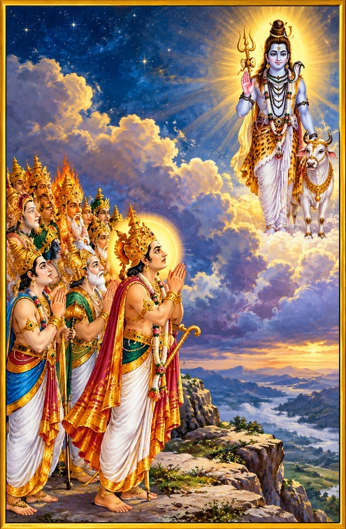
लक्षणोंसे रहित यक्षरूपी शिवको देखकर इन्द्रसहित अग्नि आदि वे देवता ‘यहाँ यह क्या है?’- ऐसा सोचकर अनिश्चयकी दशामें यक्षके समीप जाकर वे शक्तिहीन हो गये॥५५॥
हे विप्रो! अग्निदेव उस यक्षके सामने तिनका भी नहीं जला सके, पवन उस तृणको उड़ानेमें समर्थ नहीं हुए, उसी प्रकार अन्य समस्त श्रेष्ठ देवता भी अपने-अपने प्रभाव प्रदर्शित करनेमें समर्थ नहीं हुए। तब सभी श्रेष्ठ देवताओंके साथ समस्त समृद्धियोंके कारणभूत वृत्रशत्रु उन देवेन्द्रने कुतूहलचित्त होकर यक्षरूप सुरेश्वरसे इस प्रकार कहा- आप कौन हैं?॥५६-५७॥
उसी समय यक्ष अदृश्य हो गये। तब सुन्दर मुखवाली तथा अनेक शुभ आभरणोंसे अत्यन्त शोभित होती हुई हैमवती अम्बिका उमा प्रकट हो गयीं॥५८॥
इन्द्र आदिने सुशोभित होती हुई उन हैमवती अजा उमासे पूछा- हे ईशे! हे परम शोभायमान अम्बिके! यह यक्षदेहधारी कौन है?॥५९॥
यह सुनकर उमा अम्बिकाने कहा- यह अगोचर है; तब इन्द्रसहित सभी देवताओंने उस यक्षको तथा सिंहगामिनी और लोहित-शुक्ल-कृष्णवर्णवाली इन अजा उमाको प्रणाम किया॥६०॥
सभी श्रेष्ठ देवताओंसे सत्कृत होकर देवताओं तथा दानवोंकी समस्त प्रवृत्तिरूपा उन देवीने कहा- मैं पूर्वकालमें इस यक्षरूप [परम] पुरुषकी आज्ञाके अधीन रहनेवाली प्रकृति थी॥६१॥
अतः हे द्विजो! उन्हीं अज (शिव) के नियोगसे ब्रह्मा उत्पन्न हुए, उन ब्रह्मासे अण्ड उत्पन्न हुआ और अण्डसे ज्योतिर्गणोंसहित समग्र विश्व उत्पन्न हुआ; इस प्रकार सब कुछ शिवात्मक है॥६२॥
॥इस प्रकार श्रीलिङ्गमहापुराणके अन्तर्गत पूर्वभागमें ‘भुवनकोशविन्यासनिर्णय’ नामक तिरपनवाँ अध्याय पूर्ण हुआ॥५३॥
चौवनवाँ अध्याय
ज्योतिः सन्निवेशवर्णनमें लोकपालोंकी पुरियोंका वर्णन, सूर्यकी स्थिति तथा उसकी गतिसे होनेवाले अयन एवं ऋतुओंकी स्थिति, ध्रुवस्थान तथा मेघोंका स्वरूप और वृष्टिका प्रादुर्भाव
सूतजी बोले- [हे ऋषियो!] देवक्षेत्रोंको देखकर मैं ग्रहोंकी गतिके ज्ञानके लिये अण्डमें ज्योतिर्गणों (ग्रहों) की गतिका संक्षेपमें वर्णन करता हूँ॥१॥
मेरुके पूर्वमें मानस पर्वतपर महेन्द्रकी पूरी स्थित है। दक्षिणमें सूर्यपुत्र यमकी, पश्चिममें वरुणकी और उत्तरमें सोमकी विशाल पुरी है। उनमें दिग्पाल रहते हैं। वे पुरियाँ क्रमसे अमरावती, संयमनी, सुखा तथा विभा [नामवाली] हैं॥२-३॥
लोकपालोंकी पुरियोंके ऊपर सभी ओर दक्षिणायनमें बाणके समान गतिवाले सूर्यकी जो गति है, उसे [आपलोग] जानिये। दक्षिणायनमें सूर्य बाणकी तरह गमन करते हैं, वे नक्षत्रचक्रको साथ लेकर निरन्तर परिभ्रमण करते हैं॥४-५॥
हे द्विजो! जब प्रभु सूर्य इन्द्रकी पुरीमें प्रवेश करते हैं, तब संयमनीपुरीके सभी लोग सूर्यका उदय देखते हैं; जब वे सूर्य संयमनीपुरीमें होते हैं, तब [पश्चिममें] सुखावतीपुरीमें प्रातःकाल होता है। उस समय विश्वके नेत्रतुल्य भगवान् सूर्य विभापुरीमें अस्त होते हैं॥६-७॥
जिस प्रकार मैंने अमरावतीमें सूर्यकी गतिको कहा है, उसी प्रकार ये सूर्य संयमनीको पाकर तथा ‘सुखा’ एवं ‘विभा’को भी प्राप्त करते हैं॥८॥
हे द्विजो! जब आग्नेय (दक्षिण-पूर्व) भागमें अपराह्न होता है, तब नैर्ऋत (दक्षिण-पश्चिम) भागमें पूर्वाह्न, उस समय वायव्य (उत्तर-पश्चिम) भागमें भयानक रात्रिका उत्तरार्ध और उत्तर-पूर्व भागमें रात्रिका प्रथम काल होता है। सब प्रकारसे यही गति होती है। इसी प्रकार जब जलको सोखनेवाले सूर्य आकाशके मध्यमें संचरण करते हैं, तब वे एक मुहूर्तमें पृथ्वीपर तीस अंश चलते हैं। एक मुहूर्तमें सूर्यके द्वारा पार की गयी दूरीको योजनपरिमाणमें सुनिये॥९-११॥
वह संख्या इकतीस लाख पचास हजार योजन कही गयी है। यह महात्मा भास्करकी एक मुहूर्तकी गति है। जब सूर्य इस गतिसे दक्षिण दिशाकी ओर जाते हैं, तब [वहाँ छः माह भ्रमण करनेके बाद] पुनः उत्तरायणकालमें उत्तर दिशाकी ओर लौटते हैं। दक्षिणायनके समय महातेजस्वी सूर्य मानसोत्तर पर्वतपर पुष्करके मध्य भ्रमण करते हैं। वे सूर्य एक सौ अस्सी मण्डलसे गुजरते हैं। उत्तरायण तथा दक्षिणायनको बाह्य एवं आभ्यन्तर कहा गया है। सूर्य प्रतिदिन उन्हीं मण्डलोंपर भ्रमण करते हैं। जैसे कुम्हारके चाकका बाहरी भाग शीघ्रतापूर्वक चारों ओर घूमता है, वैसे ही सूर्यदेव दक्षिणायनमें तेजीसे भ्रमण करते हैं। इसलिये वे थोड़े समयमें ही [अपेक्षाकृत ] अधिक भूमिपर पहुँचते हैं। दक्षिणायनमें सूर्य मात्र बारह मुहूर्तोंमें शीघ्रतापूर्वक दिनमें साढ़े तेरह नक्षत्र चलते हैं, जबकि रात्रिमें अठारह मुहूर्तोंमें उतनी ही नक्षत्रकी दूरीको तय करते हैं॥१२-१९॥
जैसे कुम्हारके चाकका मध्यभाग मन्द गतिसे चलता है, उसी प्रकार सूर्य उत्तरायणमें मन्दगतिसे भ्रमण करते हैं। इसलिये वे अधिक समयमें थोड़ी भूमिपर पहुँचते हैं। सूर्यका वह रथ आदित्यों, मुनियों, गन्धर्वों, अप्सराओं, ग्रामणियों, सर्पों तथा राक्षसोंसे अधिष्ठित रहता है। हजार किरणोंवाले वे सूर्य आगेसे, पीछेसे, नीचेसे तथा ऊपरसे किरण छोड़कर ब्रह्माकी अत्युत्तम सभाको प्रकाशित करते हुए सन्ध्या-वन्दनके समय मुनियों तथा ब्राह्मणोंके द्वारा [अर्घ्यहेतु] छोड़े गये जलसे पास आनेवाले राक्षसोंको मार-मारकर आगे बढ़ते रहते हैं॥२०-२३½॥
उत्तरायणके पश्चिम भागमें दिन अठारह मुहूर्तका होता है, उस समय सूर्य मन्दगतिवाले होकर चलते हैं। सूर्य रातमें बारह मुहूर्तमें साढ़े तेरह नक्षत्रदूरीको तय करते हैं और दिनमें चलते हुए वे उतनी ही नक्षत्रकी दूरी अठारह मुहूर्तोंमें तय करते हैं॥२४-२५॥
जिस प्रकार नाभिमें चक्र अधिक मन्द गतिसे घूमता है, उसी प्रकार [चक्रके मध्यस्थित] मिट्टीके पिण्डकी भाँति मध्यमें स्थित ध्रुव घूमता है। प्राचीन विद्याके वेत्ता कहते हैं कि दिन और रात [मिलकर] तीस मुहूर्तके बराबर होते हैं। दोनों दिशाओंके बीचमें मण्डलोंमें सूर्य घूमता है। जैसे कुलालचक्रकी नाभि उसी स्थानपर रहती है और घूमती है, उसी प्रकार ग्रहोंमें श्रेष्ठ ध्रुव भी ग्रहोंके साथ घूमते हैं। मुनियों तथा नक्षत्रोंका समूह उसीके मनके अनुसार चलता है। उसी [ध्रुव]-के द्वारा अधिष्ठित सूर्यदेव वायुके साथ सभी ओरसे अपनी किरणोंके द्वारा जल ग्रहण करते हैं। उत्तानपादके पुत्रको ध्रुवपद भगवान् विष्णुकी कृपासे सुलभ हुआ और ध्रुवने इसे अपने पिताके कारण प्राप्त किया था॥२६-३०½॥
सूर्यके द्वारा ग्रहण किया गया वह जल क्रमसे चन्द्रमाको प्राप्त होता है और पुनः वह जल चन्द्रमासे मेघोंको प्राप्त होता है। इसके बाद वायुद्वारा आघात करनेपर मेघोंका समूह पृथ्वीपर वृष्टि करता है। सूर्य सबको भासित करते हैं, इसलिये वे भास्कर [नामवाले] हैं। जलका कभी नाश नहीं होता, वही जल पुनः परिवर्तित हो जाता है। भगवान् शिवने सभी प्राणियोंके कल्याणके लिये जलकी इस गतिका निर्माण किया है। जल ही भूः, भुवः, स्वः, अन्न तथा अमृत है। जल सभी लोकोंका प्राण है। अधिक कहनेसे क्या लाभ - सभी प्राणी, समस्त भुवन एवं यह चराचर जगत् जलसे बना हुआ है। भगवान् भी शिवरूपी जलके आधिपत्यमें व्यवस्थित हैं। भगवान् शिव जलके अधिपति कहे गये हैं। यह सम्पूर्ण जगत् शिवमय है- इसमें आश्चर्य क्या है? सर्वव्यापी विष्णुदेवको नारायणपद जलसे ही प्राप्त हुआ है। विष्णु सम्पूर्ण जगत्के निवासस्थान हैं और जल उनका निवासस्थान है॥३१-३७॥
चराचर समस्त प्राणियोंके वायुद्वारा उत्तेजित अग्निसे जल जानेपर धुएँके रूपमें जो-जो निकलता है और वायुद्वारा ऊपर ले जाया जाता है, उन्हींको अभ्र कहा गया है। अतः धूम, अग्नि तथा वायुके संयोगको अभ्र कहा जाता है। जो जलकी वर्षा करता है, वह अभ्र है। हजार नेत्रोंवाले इन्द्र अभ्रके स्वामी हैं॥३८-३९॥
यज्ञके धुएँसे उत्पन्न अभ्र (मेघ) सदा द्विजोंका हित करनेवाला होता है और दावानलके धूमसे उत्पन्न अभ्र वनके लिये हितकर कहा गया है। मृत प्राणियोंके जलानेपर उठे हुए धूमसे उत्पन्न अभ्र अशुभके लिये होता है और हे द्विजो! अभिचाराग्निके धूमसे उत्पन्न अभ्र प्राणियोंके नाशके लिये होता है। इस प्रकार अलग-अलग धूमोंसे संसारका हित तथा अहित होता है। अतः मनुष्यको चाहिये कि अभिचारकर्मसे उत्पन्न धूमको ढँक दे। यदि कोई द्विज धूमको ढँके बिना अभिचारकर्म करता है, तो यह संसारके विनाशका कारण हो जाता है॥४०-४३॥
हे सुव्रतो! जलके भण्डारस्वरूप मेघ वायुकी आज्ञासे जगत्के हितके लिये इस लोकमें छः महीने वृष्टि करते हैं। मेघका गर्जन वायुके द्वारा, विद्युत्के द्वारा तथा अग्निके द्वारा होता है। हे मुनिश्रेष्ठो! उन मेघोंकी उत्पत्ति तीन प्रकारसे होती है। ‘अभ्र’ शब्दका अर्थ है ‘जो नष्ट नहीं होता है।’ ‘मेहन’ शब्दसे ‘मेघ’ व्युत्पन्न कहा गया है। काष्ठ, वाह्न, वैरिंच्य तथा पक्ष-ये विभिन्न प्रकारके मेघ होते हैं। घृतका काष्ठसे संयोग होनेपर अग्निसे जो धूम निकलता है, उससे प्रथम प्रकारका मेघ बनता है। दूसरे प्रकारके मेघकी उत्पत्ति ब्रह्माकी श्वासवायुसे होती है। इन्द्रके द्वारा पर्वतोंके काटे गये पक्षोंसे तीसरे प्रकारके मेघ उत्पन्न होते हैं। अग्निसे उत्पन्न मेघ शुभ होते हैं और वे आवह नामक वायुके स्थानमें जाते हैं। ब्रह्माके श्वाससे उत्पन्न सभी मेघ प्रवह नामक वायुके स्कन्धपर रहते हैं। पुष्कर आदि मेघ पक्षसे उत्पन्न होते हैं। ये जब बरसते हैं, तब क्रमसे शान्त, ध्वनि करनेवाले तथा विनाशकारी होते हैं; इनके द्वारा यथाक्रम यह कृत्य होता है। कुछ मेघ अल्प वृष्टि करनेवाले होते हैं और कुछ मेघ दीर्घ कालतक शीतल वायुवाले होते हैं। कुछ मेघ जीवक होते हैं। कुछ मेघ क्षीण होते हैं और वे विद्युत् तथा ध्वनिसे रहित होते हैं। कुछ मेघ पृथ्वीतलसे एक कोसके भीतर आकाशमें इधर-उधर रहते हैं। पर्वतपर रहनेवाले सभी मेघ आधे कोसकी दूरीमें होते हैं।
हे द्विजो! पृथ्वीतलसे योजन-मात्रकी दूरीवाले विद्युत्-युक्त मेघ साध्य होनेके कारण पृथ्वीपर अधिक जल-वृष्टि करनेवाले होते हैं। उन मेघोंका तीन प्रकारका वृष्टिसर्ग बता दिया गया॥४४-५३॥
पर्वतोंके [कटे हुए] पक्षोंसे उत्पन्न मेघ कल्पज होते हैं और वे अति महान् होते हैं। वे कल्पके अन्तमें विनाशके लिये रात्रिमें बरसते हैं। पुष्कर आदि पक्षजनित मेघ जब बरसते हैं, तब सम्पूर्ण जगत् सागरमय हो जाता है और उसमें भगवान् रातमें शयन करते हैं। हे श्रेष्ठ ब्राह्मणो! अग्निसे उत्पन्न, [ब्रह्माके] श्वाससे उत्पन्न तथा [कटे हुए पर्वतोंके] पक्षसे उत्पन्न मेघोंका धूम सदा आप्यायन कहा गया है॥५४-५६॥
समस्त पौण्ड्र (पुण्ड्र देशमें होनेवाली) वृष्टि विद्युन्मय, शीतल तथा अन्न प्रदान करनेवाली होती है। पुण्ड्र देशके मेघ बर्फके समान शीतल होते हैं और वे हाथीके सूँड़से गिरते हुए जलके छिड़कावकी भाँति प्रतीत होते हैं। गांग नामक मेघ गंगाके जलसे उत्पन्न होते हैं। ये परावहसंज्ञक वायुद्वारा पर्वतों, नदियों और दिग्गजोंको व्याकुल कर देते हैं। मेघोंसे अलग हुआ जल एक पर्वतसे दूसरे पर्वतपर पहुँचता है। परावह नामक जो वायु है, वह मेघोंको हिमालय (अम्बिकागुरु) पर्वतकी ओर ले जाती है। हे द्विजो! पुनः मेनापति हिमालयसे आगे बढ़कर ये मेघ समुद्रके मध्य देशोंकी वृद्धिके लिये भारतवर्षमें भारी वर्षा करते हैं॥५७-६०॥
वस्तुओंकी वृद्धिके लिये होनेवाली वृष्टियाँ दो प्रकारकी कही गयी हैं। मैं बुद्धिके अनुसार उन दोनोंका संक्षेपमें वर्णन करता हूँ। संसारके नेत्रस्वरूप महातेजस्वी भगवान् सूर्य वृष्टियोंका सृजन करनेवाले हैं। हे द्विजश्रेष्ठो! वे भी साक्षात् ईशान परमेश्वर शिव ही हैं। हे विप्रो! वे ही तेज, ओज, बल, यश, नेत्र, श्रोत्र, मन, मृत्यु, आत्मा, मन्यु (क्रोध), दिशाएँ और विदिशाएँ हैं। वे ही सत्य, ऋत, वायु, आकाश, ग्रह, लोकपाल, विष्णु, ब्रह्मा, रुद्र तथा साक्षात् महेश्वर हैं। वे हजार किरणोंवाले, श्रीमान्, आठ भुजाओंवाले, परम कल्याणकारी, अर्धनारीश्वर, तीन नेत्रोंवाले तथा देवताओंके अधिपति हैं॥६१-६५॥
हे द्विजो! इन्हींकी कृपासे नाना प्रकारकी वृष्टि होती है। ये हजार गुना जल देनेके लिये अपनी किरणोंसे जल ग्रहण करते हैं। विचारपूर्वक देखा जाय तो इस जलका नाश अथवा वृद्धि होती ही नहीं। ध्रुवके द्वारा अधिष्ठित वायु वृष्टिका पुनः हरण कर लेती है। तदनन्तर यह सूर्यग्रहसे निकलकर सम्पूर्ण नक्षत्रमण्डलमें फैलती है। उसके बाद ध्रुवके द्वारा अधिष्ठित यह वृद्धि पुनः सूर्यमें प्रवेश करती है॥६६-६८॥
॥इस प्रकार श्रीलिङ्गमहापुराणके अन्तर्गत पूर्वभागमें ‘ज्योतिश्चक्रमें सूर्यगत्यादिकथन’ नामक चौवनवाँ अध्याय पूर्ण हुआ॥५४॥
पचपनवाँ अध्याय
शिवस्वरूप भगवान् सूर्यके रथ तथा चैत्रादि बारह मासोंमें रथके साथ भ्रमण करनेवाले देवता, मुनि, नाग, गन्धर्व आदिका वर्णन
सूतजी बोले- [हे ऋषियो!] मैं संक्षेपमें सूर्यके रथ और चन्द्रमा तथा अन्य ग्रहोंके विषयमें बताऊँगा और जिस प्रकार जलका शोषण करनेवाले सूर्य गति करते हैं, उसका भी वर्णन करूँगा॥१॥
हे श्रेष्ठ द्विजो! ब्रह्माके द्वारा विशेष प्रयोजनके लिये निर्मित वह सूर्यरथ संवत्सरके अवयवोंसे कल्पित किया गया है। तीन नाभि तथा पाँच अरोंवाले चक्रसे युक्त यह सूर्यरथ सुवर्णमय है और सभी देवताओंका निवासस्थान है। यह लम्बाई तथा चौड़ाईमें नौ हजार योजनवाला कहा गया है। इसका ईषादण्ड प्रमाण (माप) में रथोपस्थसे दुगुना है। जहाँ चक्र है, वहाँ स्थित अन्तरिक्षगामी घोड़ोंसे वह युक्त (जुता हुआ) है। उसके सातों घोड़े वेदके सात छन्दों [गायत्री, बृहती, उष्णिक्, जगती, त्रिष्टुप्, अनुष्टुप् और पंक्ति]-से निर्मित हैं। वे चक्रके बगलमें बँधे हुए हैं। ध्रुवमें [रथका] अक्ष लगा हुआ है। वह रथ घोड़ों तथा चक्रसहित घूमता है और ध्रुव अक्षके साथ घूमता है॥२-६॥
वह अक्ष ध्रुवसे प्रेरित होकर एक ही चक्रके साथ घूमता है। बुद्धिमान् ध्रुव वायुकिरणोंके द्वारा ज्योतिर्गणों (ग्रह, नक्षत्र आदि) को प्रेरित करता है। दो रश्मियाँ (किरणें) रथके जुए तथा अक्षके अग्रभागमें बंधी हुई हैं और [उन] जुए तथा अक्षमें रश्मियोंसे निबद्ध वह सूर्यरथ ध्रुवके द्वारा भ्रमण करता है॥७-८॥
इस प्रकार भ्रमण करते हुए आकाशमें विचरण करनेवाले रथके अनेक मण्डल होते हैं। वे [रश्मिनिबद्ध] जुए तथा अक्षकी कोटियाँ उस रथके दाहिनी ओर होती हैं। रज्जुओंके द्वारा ध्रुवसे प्रगृहीत अरुण, चक्र तथा घोड़े और वे दोनों रश्मियाँ घूमते हुए ध्रुवका अनुगमन करते हैं॥९-१०॥
इस रथकी वायुलहरीरूपा युगाक्षकोटि (जुए तथा अक्षकी कोटि) कीलमें बँधी हुई रस्सीकी भाँति सभी दिशाओंमें घूमती है। उत्तरायणमें मण्डलोंमें घूमते हुए उस सूर्यकी दोनों रश्मियाँ बढ़ जाती हैं और दक्षिणायनमें मण्डलोंमें घूमते हुए सूर्यके द्वारा वे रश्मियाँ खिंच जाती हैं। जब वे [रश्मियाँ] ध्रुवके द्वारा प्रेरित की जाती हैं, तब [रथके] भीतर स्थित सूर्य मण्डलोंमें घूमता है। उस समय सूर्य दोनों दिशाओंके एक सौ अस्सी मण्डलोंका चक्कर लगाता है॥११-१३½॥
पुनः ध्रुवके द्वारा किरणोंके छोड़े जानेपर उसी भाँति सूर्य मण्डलोंके बाहर भ्रमण करता है; वह मण्डलोंको घेरते हुए वेगपूर्वक चलता है॥१४-१५॥
देवता तथा मुनिगण नित्य दिन-रात भवस्वरूप ईश्वर सूर्यदेवका निरन्तर पूजन करते हैं। वह रथ देवताओं, आदित्यों, मुनियों, गन्धर्वों, अप्सराओं, ग्रामणियों, सर्पों तथा राक्षसोंके द्वारा अधिष्ठित है। ये लोग सूर्यमें दो-दो महीने क्रमसे निवास करते हैं और कल्याणकारी आदित्य भास्करको अपने तेजोंसे तृप्त करते हैं॥१६-१८॥
मुनिगण अपने वचनोंसे ग्रथित स्तुतियोंके द्वारा सूर्यका स्तवन करते हैं; गन्धर्व तथा अप्सराएँ गान एवं नृत्यके द्वारा उनकी उपासना करते हैं; ग्रामणी, यक्ष तथा भूतगण किरणोंका संग्रह करते हैं; सर्पगण सूर्यका वहन करते हैं; यातुधान (राक्षसगण) उनका अनुगमन करते हैं और बालखिल्य [नामक ऋषिगण] उदयकालसे प्रारम्भ करके चारों ओरसे घेरकर सूर्यको अस्ताचलकी ओर ले जाते हैं। ये सब दो-दो महीने सूर्यमें निवास करते हैं॥१९-२१॥
हे विप्रेन्द्रो! मधु (चैत्र), माधव (वैशाख), शुक्र (ज्येष्ठ), शुचि (आषाढ़), नभ (श्रावण), नभस्य (भाद्रपद), इष (आश्विन), ऊर्ज (कार्तिक), सह (मार्गशीर्ष), सहस्य (पौष), तपस्य (माघ) तथा तप (फाल्गुन) - ये बारह महीने मानव वर्षमें होते हैं। हे द्विजो! वसन्त, ग्रीष्म, शुभ वर्षा, शरद, हिम (हेमन्त) तथा शिशिर-ये ऋतुएँ कही गयी हैं॥२२-२४॥
धाता, अर्यमा, मित्र, वरुण, इन्द्र, विवस्वान्, पूषा, पर्जन्य, अंशु, भग, त्वष्टा, विष्णु- ये बारह आदित्य हैं; पुलस्त्य, पुलह, अत्रि, वसिष्ठ, अंगिरा, बुद्धिमानोंमें श्रेष्ठ भृगु, भारद्वाज, गौतम, कश्यप, क्रतु, जमदग्नि तथा कौशिक- ये बारह ऋषि हैं; हे द्विजो! वासुकि, कंकणीकर, तक्षक, नाग, एलापत्र, शंखपाल, ऐरावत, धनंजय, महापद्म, कर्कोटक, कम्बल तथा अश्वतर- ये बारह सर्प कहे गये हैं; हे मुनिश्रेष्ठो! तुम्बुरु, नारद, हाहा, हूहू, श्रेष्ठ विश्वावसु, उग्रसेन, सुरुचि, परावसु, चित्रसेन, महातेजस्वी ऊर्णायु, धृतराष्ट्र तथा सूर्यवर्चा - ये बारह गन्धर्व हैं; हे सुव्रतो! साक्षात् देवी कृतस्थला, सुन्दर मुखवाली-उत्तम श्रोणिवाली दिव्य पुंजिकस्थला, मेनका, सहजन्या, पवित्र मुसकानवाली प्रम्लोचा, अनुम्लोचा, घृताची, विश्वाची, उर्वशी, पूर्वचित्ति, साक्षात् देवी तिलोत्तमा तथा कमलके समान मुखवाली रम्भा-ये बारह अप्सराएँ कही गयी हैं; रथकृत्, शुभ रथौजा, रथचित्र, सुबाहु, रथस्वन, वरुण, सुषेण, शुभ सेनजित्, तार्थ्य, अरिष्टनेमि, क्षतजित् तथा सत्यजित्- ये बारह ग्रामणी हैं; हेति, प्रहेति, पौरुषेय, वध, सर्प, व्याघ्र, आप, वात, विद्युत्, दिवाकर, ब्रह्मोपेत और राक्षसराज यज्ञोपेत- ये बारह यातुधान (राक्षस) हैं- ये सभी देवता आदि क्रमसे सूर्यमें निवास करते हैं। बारहकी संख्यावाले ये सात गण अपने स्थानका अभिमान करनेवाले हैं॥२५-३७½॥
धातासे लेकर विष्णुपर्यन्त जो बारह देवता (आदित्य) कहे गये हैं, वे अपने तेजसे परम भानुको सन्तृप्त करते हैं। हे श्रेष्ठ मुनियो! पुलस्त्यसे लेकर कौशिकतक [कहे गये] बारह मुनिगण यथाक्रम स्तुतियोंके द्वारा सूर्यका स्तवन करते हैं। इसी प्रकार वासुकिसे लेकर अश्वतरतक [कहे गये] बारह शुभ नाग यथाक्रम महादेव (सूर्य)-का वहन करते हैं। तुम्बुरुसे लेकर सूर्यवर्चातक [कहे गये] बारह उत्तम गन्धर्व क्रमसे गीतोंके द्वारा इन सूर्यकी उपासना करते हैं। कृतस्थलासे लेकर रम्भा-पर्यन्त [कही गयी] सभी दिव्य अप्सराएँ यथाक्रम सरस नृत्योंके द्वारा सूर्यकी उपासना करती हैं। रथकृत्से लेकर सत्यजित्पर्यन्त [कहे गये] बारह दिव्य ग्रामणी क्रमसे इस सूर्यकी रथरश्मियोंका संग्रह करते हैं। रक्षोहेतिसे लेकर यज्ञोपेततक [कहे गये] - ये प्रमुख बारह राक्षस शस्त्र धारण करके क्रमसे [सूर्यके] पीछे-पीछे चलते हैं॥३८-४४½॥
धाता तथा अर्यमा [दो आदित्य], प्रजापति पुलस्त्य तथा पुलह [दो ऋषि], वे दोनों नाग वासुकि एवं कंकणीक, गान करनेवालोंमें श्रेष्ठ गन्धर्व तुम्बुरु तथा नारद, कृतस्थला एवं पुंजिकस्थला अप्सराएँ, वे दोनों ग्रामणी रथकृत् तथा रथौजा और यातुधान कहे गये राक्षस हेति तथा प्रहेति-यह समुदाय चैत्र एवं वैशाख महीनोंमें सूर्यमें निवास करता है॥४५-४८॥
इसी प्रकार ग्रीष्म ऋतुके दो महीनोंमें भी ये लोग निवास करते हैं। [दो आदित्य] मित्र तथा वरुण, ऋषि अत्रि एवं वसिष्ठ, [सर्प] तक्षक तथा नाग, [दो अप्सराएँ] मेनका और सहजन्या, दो गन्धर्व हाहा तथा हूहू, रथचित्र एवं सुबाहु नामक वे दोनों ग्रामणी और यातुधान कहे गये पौरुषेय तथा वध-ये सब शुक्र (ज्येष्ठ) तथा शुचि (आषाढ़) महीनोंमें सूर्यमें निवास करते हैं॥४९-५१॥
इसके बाद अन्य देवता सूर्यमें निवास करते हैं। [आदित्य] इन्द्र तथा विवस्वान्, [ऋषि] अंगिरा तथा भृगु, वे दोनों सर्प एलापत्र एवं शंखपाल, [गन्धर्व] विश्वावसु तथा उग्रसेन, [ग्रामणी] वरुण एवं रथस्वन, विख्यात प्रम्लोचा तथा अनुम्लोचा- वे दोनों अप्सराएँ और वे दोनों यातुधान सर्प तथा व्याघ्र - यह समुदाय नभ (श्रावण) तथा नभस्य (भाद्रपद) महीनोंमें सूर्यमें निवास करता है॥५२-५४½॥
[आदित्य] पर्जन्य तथा पूषा, [ऋषि] भरद्वाज एवं गौतम, [सर्प] धनंजय तथा इरावान् (ऐरावत), [गन्धर्व] सुरुचि तथा परावसु, अप्सराओंमें श्रेष्ठ घृताची तथा परम सुन्दर विश्वाची, वे दोनों ग्रामणी-सेनानी सेनजित् तथा सुषेण और यातुधान कहे गये वे दोनों आप तथा वात-ये सब इष (आश्विन) तथा ऊर्ज (कार्तिक) महीनोंमें सूर्यमें निवास करते हैं॥५५-५७½॥
इसी प्रकार हेमन्त ऋतुके दो महीनोंमें भी ये लोग सूर्यमें निवास करते हैं। ये दोनों [आदित्य] अंशु तथा भग, [ऋषि] कश्यप तथा क्रतु, भुजंग महापद्म तथा सर्प कर्कोटक, वे दोनों गन्धर्व चित्रसेन तथा ऊर्णायु, दोनों अप्सराएँ उर्वशी तथा पूर्वचित्ति, ग्रामणी-सेनानी तार्थ्य तथा अरिष्टनेमि और यातुधान कहे गये दोनों विद्युत् तथा दिवाकर- ये सब सह (मार्गशीर्ष) तथा सहस्य (पौष) महीनोंमें सूर्यमें निवास करते हैं॥५८-६१½॥
इसके बाद [आदित्य] त्वष्टा तथा विष्णु, [ऋषि] जमदग्नि तथा विश्वामित्र, कद्रूके पुत्र दोनों नाग कम्बल तथा अश्वतर, गन्धर्व धृतराष्ट्र तथा सूर्यवर्चा, मनोहर अप्सरा देवी रम्भा तथा तिलोत्तमा, लोकमें प्रसिद्ध ग्रामणी रथजित् तथा सत्यजित् और ब्रह्मोपेत तथा यज्ञोपेत - जो यातुधान कहे गये हैं- ये सब शिशिर ऋतुके दो महीनों (माघ और फाल्गुन) में [सूर्यमें] निवास करते हैं॥६२-६५॥
ये देवतागण क्रमसे दो-दो महीने सूर्यमें निवास करते हैं। बारहकी संख्यामें ये सात समूह अपने स्थानका अभिमान करनेवाले हैं। ये सब तेजके द्वारा उत्तम तेजवाले सूर्यको सन्तृप्त करते हैं। मुनिगण अपने द्वारा विरचित स्तुतियोंसे सूर्यका स्तवन करते हैं, गन्धर्व तथा अप्सराएँ नृत्य-गानोंसे उनकी उपासना करते हैं, ग्रामणी-यक्ष-भूत रथरश्मियोंको पकड़े रहते हैं, सर्पगण सूर्यका वहन करते हैं, यातुधान पीछे-पीछे चलते हैं और बालखिल्य
[ऋषिगण] चारों ओरसे घेरकर सूर्यको उदयसे अस्तकी प्राप्ति कराते हैं॥६६-६९॥
इन्हीं देवताओंका जैसा तेज, जैसा तप, जैसा योग, जैसा मन्त्र, जैसा धर्म तथा जैसा बल होता है, उनसे समृद्ध होकर वे सूर्य तेजयुक्त होकर तपते हैं। ये सभी सूर्यमें दो-दो महीने निवास करते हैं। ऋषिगण, देवता, गन्धर्व, सर्प, अप्सराओंके समूह, ग्रामणी, यक्ष तथा यातुधान (राक्षस) ये ही मुख्यरूपसे तपते हैं, बरसते हैं, प्रकाश करते हैं, सृजन करते हैं और आराधित होकर प्राणियोंके अशुभ कर्मका नाश करते हैं। ये लोग दुरात्मा मनुष्योंके शुभका नाश करते हैं और कहीं-कहीं सज्जनोंके पापका हरण करते हैं॥७०-७४॥
ये इच्छानुसार चलनेवाले तथा वायुवेगसे गमन करनेवाले दिव्य विमानमें स्थित होकर सूर्यके साथ पूरे दिन भ्रमण करते हैं। हे द्विजो! ये वर्षा करते हुए, तपते हुए और [सबको] आह्लादित करते हुए सभी प्राणियोंको एक मन्वन्तरपर्यन्त विनाशसे बचाते हैं॥७५-७६॥
अतीत तथा अनागत (भविष्यमें होनेवाले) स्थानाभिमानियोंका तथा इस समय जो विद्यमान हैं, उन सभीका यह स्थान सभी मन्वन्तरोंमें हुआ करता है। ये चौदह गण सात-सातके समूहमें सभी चौदह मन्वन्तरोंमें सूर्यमें निवास करते हैं॥७७-७८॥
हे श्रेष्ठ मुनियो! मैंने बुद्धिमान् देवदेवके क्रिया-कलापका संक्षेपमें तथा विस्तारसे वर्णन कर दिया, जैसा घटित हुआ था और जैसा मैंने सुना था। ये देवता दो-दो महीने क्रमसे सूर्यमें निवास करते हैं। बारह-बारह देवताओंके ये सात समूह अपने स्थान (पद) का अभिमान करनेवाले हैं॥७९-८०॥
इस प्रकार ये दिवाकर सूर्य हरितवर्णके [सात] अविनाशी अश्वोंद्वारा खींचे जाते हुए एक चक्रवाले रथसे वेगपूर्वक चलते हैं। ये सूर्य एक चक्रवाले रथसे [उक्त] सात समूहोंके साथ आकाशमें दिन-रात भ्रमण करते हुए सात द्वीपों तथा समुद्रोंवाली पृथ्वीके ऊपर भ्रमण करते हैं॥८१-८२॥
॥इस प्रकार श्रीलिङ्गमहापुराणके अन्तर्गत पूर्वभागमें ‘सूर्यरथनिर्णय’ नामक पचपनवाँ अध्याय पूर्ण हुआ॥५५॥
छप्पनवाँ अध्याय
सोम (चन्द्रमा) की स्थिति एवं गतिका निरूपण, चन्द्रकलाओंके ह्रास तथा वृद्धिका वर्णन
सूतजी बोले- चन्द्रमा वीथियोंमें स्थित नक्षत्रोंमें चलता है। उसके रथको तीन पहियोंवाला तथा दोनों ओर घोड़ोंसे युक्त जानना चाहिये। यह सौ अरों (तीलियों)-वाले तीन पहियोंसे युक्त है एवं श्वेतवर्णवाले, उत्तम, पुष्ट, दिव्य जुएसे बिना नथे हुए और मनके समान वेगवाले दस घोड़ोंसे समन्वित है। श्वेत किरणोंवाले चन्द्रमा श्वेत रंगके अम्बुमय दस घोड़ोंसहित देवताओं तथा पितरोंके साथ इस रथसे चलते हैं॥१-३॥
सूर्यसे दूर स्थित यह शुक्लपक्षके आदिसे क्रमशः बढ़ता है। दिनके क्रमसे यह निरन्तर शुक्लपक्षसे अन्ततक वृद्धिको प्राप्त होता है। सूर्य इस चन्द्रमाको विकसित करता है। देवतागण [कृष्णपक्षमें] इसको पीते हैं। देवताओंके द्वारा यह पन्द्रह दिनतक पीया जाता है। सूर्य [अपनी] सुषुम्ना नामक एक किरणके द्वारा क्रमशः इसके एक-एक भागको पूर्ण करते हैं। इन सूर्यके तेजसे चन्द्रमाका शरीर विकसित होता है। ये पूर्णिमा तिथिको पूर्णमण्डलवाले होकर श्वेतवर्णके दिखायी पड़ते हैं। इस शुक्लपक्षमें दिनके क्रमसे चन्द्रमा बढ़ते रहते हैं॥४-७॥
तत्पश्चात् कृष्णपक्षकी द्वितीयासे प्रारम्भ करके चतुर्दशी तिथितक देवतालोग चन्द्रमाके जलमय मधुर सुधामृतका पान करते हैं। वह अमृत सूर्यके तेजसे आधे महीनेतक चन्द्रमामें भरा रहता है। उस अमृतको पीनेके लिये पूर्णिमा तिथिको पूरी रात सभी देवता पितरों तथा ऋषियोंके साथ चन्द्रमाके पास स्थित रहते हैं। कृष्णपक्षके आदिसे सूर्याभिमुख चन्द्रमाकी पी जाती हुई कलाएँ क्रमशः क्षीण होती जाती हैं। वसु (८), रुद्र (११), आदित्य (१२) तथा अश्विनीद्वय (२) - ये तैंतीस देवता एवं इनके पुत्र-पौत्ररूप तैंतीस सौ तथा तैंतीस हजार देवता चन्द्रमाका पान करते हैं। इस प्रकार दिनके क्रमसे देवताओंके द्वारा चन्द्रमाका पान किये जानेपर
पृष्ठ २४१
अध्याय ५७ ] बुध आदि ग्रहोंके रथोंका स्वरूप तथा उनकी गतिका निरूपण
आधे महीनेतक पान करके वे श्रेष्ठ देवता अमावास्या तिथिको चले जाते हैं, उसके बाद उसी अमावास्या तिथिको पितृगण चन्द्रमाके पास स्थित होते हैं और शुक्लपक्षकी प्रतिपदातक बचे हुए अमृतका पान करते हैं। अन्तिम कलाके रूपमें पन्द्रहवें भागके शेष रहनेपर अपराह्नमें पितृगण चन्द्रमाके पास आ जाते हैं और उसकी जो कला बची रहती है, उसका पान दो कलावाले समय (दो घड़ी) तक करते हैं। अमावास्या तिथिको किरणोंसे निकले हुए स्वधामृतको पीते हैं। इस प्रकार अमृत पीकर महीनेभरकी तृप्ति प्राप्त करके वे चले जाते हैं। प्रत्येक पक्षके आरम्भमें सोलहवें दिन चन्द्रमाकी वृद्धि तथा क्षयका होना बताया गया है। इस प्रकार पक्षमें चन्द्रमामें होनेवाली यह वृद्धि सूर्यके कारण होती है॥८-१८॥
॥इस प्रकार श्रीलिङ्गमहापुराणके अन्तर्गत पूर्वभागमें ‘सोमवर्णन’ नामक छप्पनवाँ अध्याय पूर्ण हुआ॥५६॥
सत्तावनवाँ अध्याय
बुध आदि ग्रहोंके रथोंका स्वरूप, ग्रह-नक्षत्रों एवं तारागणोंद्वारा ध्रुवका परिभ्रमण, ग्रहोंका स्वरूप-विस्तार तथा उनकी गतिका निरूपण
सूतजी बोले- [हे ऋषियो!] चन्द्रमाके पुत्र [बुध]-का रथ जल-अग्निमय और पिशंगवर्णवाले सुन्दर आठ घोड़ोंसे युक्त है। दैत्योंके आचार्य बुद्धिमान् शुक्रका रथ पुष्ट, विभिन्न वर्णोंवाले तथा पृथ्वीमय दस घोड़ोंसे युक्त कहा गया है। मंगलका रथ सुवर्णमय, परम सुन्दर एवं आठ घोड़ोंवाला है। बृहस्पतिका रथ सुवर्णमय है तथा आठ घोड़ोंसे युक्त है। शनैश्चरका रथ लोहेका बना हुआ है और वह काले वर्णवाले जलमय दस घोड़ोंसे युक्त है। राहु-केतुका रथ आठ घोड़ोंवाला कहा गया है॥१-४॥
वे सभी ग्रह वायुरश्मियोंके द्वारा ध्रुवसे बँधे हुए हैं। इसके द्वारा घुमाये जाते हुए वे यथायोग चलते हैं। जितने तारे हैं, उतनी ही [वात] रश्मियाँ हैं। वे सब ध्रुवसे बँधे हुए हैं और [स्वयं] घूमते हुए उस ध्रुवको घुमाते हैं। वातचक्रसे प्रेरित तारागण अंगारचक्रके समान घूमते हैं। चूँकि इन ग्रह-नक्षत्रोंका वहन वायु करता है, इसलिये उसे प्रवह कहा गया है॥५-७॥
ग्रहों तथा तारागणोंके साथ नक्षत्र तथा सूर्य सब-के-सब चक्ररूपमें उन्मुख एवं अभिमुख होकर आकाशमें स्थित हैं। ध्रुवके द्वारा नियन्त्रित वे सब ध्रुवकी प्रदक्षिणा करते हैं। वे धुरीरूप ईश्वर ध्रुवको देखनेके लिये आकाशमें भ्रमण करते हैं॥८-९॥
सूर्यका व्यास नौ हजार योजन कहा गया और इस प्रमाणके अनुसार उनके मण्डलका विस्तार तीन गुना है। चन्द्रमाका विस्तार सूर्यके विस्तारसे दुगुना बताया गया है। उन दोनोंके बराबर होकर राहु नीचेसे चलता है। मण्डलाकार बनी हुई पृथ्वीछायाको लेकर राहुका तीसरा बड़ा स्थान है, जो अन्धकारमय है॥१०-१२॥
योजनके प्रमाणसे शुक्रका व्यास तथा मण्डल चन्द्रमाके व्यास एवं मण्डलका सोलहवाँ भाग कहा गया है। [आकारमें] बृहस्पतिको शुक्रसे एक चौथाई कम कहा गया है। विस्तारके प्रमाणसे मंगल तथा शनि बृहस्पतिसे एक चौथाई कम हैं। [अर्थात् मंगल एवं शनि विस्तारमें बृहस्पतिके तीन चौथाई हैं] बुध विस्तार तथा मण्डलमें उन दोनोंका तीन चौथाई है। तारा-नक्षत्ररूप जो पिण्ड हैं, वे विस्तार तथा मण्डलमें बुधके तुल्य हैं, तत्त्ववेत्ताको चन्द्रमासे युक्त उन नक्षत्रोंको ‘ऋक्ष’ नामसे जानना चाहिये॥१३-१६॥
छोटे-छोटे असंख्य तारे तथा नक्षत्र परस्पर पाँच, चार, तीन एवं दो योजनकी दूरीपर हैं। सबसे ऊपर अत्यन्त छोटे तारामण्डल हैं, जो केवल दो योजन विस्तारवाले हैं, उनसे छोटे तारे नहीं हैं। उनके ऊपर तीन ग्रह शनि, बृहस्पति तथा मंगल; जो दूरकी यात्रा करनेवाले हैं, उन्हें मन्दगतिवाला जानना चाहिये। उनके नीचे चार अन्य बड़े ग्रह सूर्य, चन्द्रमा, बुध तथा शुक्र हैं, जो तेजीसे चलनेवाले हैं॥१७-२०॥
तारागण उतने ही करोड़ हैं, जितने सभी ऋक्ष (नक्षत्र) हैं। ऋक्षमार्गमें उनकी भी स्थिति ध्रुवके नियन्त्रणसे ही है। सात घोड़ोंवाले सूर्यका अनुक्रमसे नीचोच्चत्व (नीचा तथा ऊँचा होना) होता रहता है। जब सूर्य उत्तरायणमार्गमें स्थित होते हैं और चन्द्रमा पूर्ण मण्डलमें होते हैं, तब सूर्य कुछ अस्पष्ट किरणोंके साथ उच्चत्वके कारण शीघ्र दिखायी पड़ते हैं। जब सूर्य दक्षिणायनमार्गमें स्थित होते हैं, तब वे नीचेवाली वीथिमें रहते हैं। पृथ्वीकी रेखाद्वारा ढँका हुआ सूर्य उससे नीचे होता है। पूर्णिमा तथा अमावास्याके दिनोंमें यथासमय दिखायी देता है; क्योंकि यह शीघ्र अस्त हो जाता है। अतः नये चन्द्रमाकी तिथि [अमावास्या]-पर चन्द्रमा उत्तरायणमें होता है। यह दक्षिण मार्गमें दिखायी नहीं पड़ता; क्योंकि नक्षत्रोंके गतियोगके कारण यह [चन्द्रमा] सूर्यके अन्धकारसे ढँका हुआ होता है॥२१-२५½॥
सूर्य तथा चन्द्रमा विषुवत् स्थानोंपर समान कालमें अस्त एवं उदय होते हैं। उत्तरायणमें पूर्णिमा तथा अमावास्या तिथियोंपर ज्योतिश्चक्रका अनुसरण करनेवाले इन दोनोंको बिना किसी अन्तरके उदय तथा अस्त होनेवाला जानना चाहिये। जब सूर्य दक्षिणायनमार्गमें स्थित होकर चलता है, तब वह सभी ग्रहोंके नीचेसे गुजरता है, उस समय चन्द्रमा अपने मण्डलको विस्तृत करके उस [सूर्य] के ऊपर चलते हैं और सम्पूर्ण नक्षत्रमण्डल चन्द्रमासे ऊपर भ्रमण करता है। नक्षत्रोंसे ऊपर बुध, बुधसे ऊपर शुक्र, शुक्रसे ऊपर मंगल, मंगलसे ऊपर बृहस्पति, उस बृहस्पतिसे ऊपर शनि और उससे ऊपर सप्तर्षिमण्डल विद्यमान है। सात ऋषियोंके ऊपर ध्रुवकी स्थिति है। उस परम विष्णुलोकको जानकर मनुष्य पापसे मुक्त हो जाता है॥२६-३१½॥
दो सौ हजार योजन दूरीपर ग्रह-नक्षत्र-तारोंसे ऊपर यथाक्रम सभी ग्रह और दिव्य तेजसे युक्त चन्द्रमा-सूर्य दिन-रात भ्रमण करते हुए सदा नक्षत्रोंसे जुड़े रहते हैं। वे ग्रह, नक्षत्र तथा सूर्य कभी नीचे, कभी ऊँचे एवं कभी सीधी रेखामें स्थित रहते हैं। समागम तथा भेद दोनों स्थितियोंमें वे प्रजाओंको एक साथ देखते हैं। ऋतुएँ छः कही गयी हैं, वे सब पाँच प्रकारसे आती हैं। एक-दूसरेपर आश्रित होनेके कारण ये परस्पर जुड़ी होती हैं, किंतु उनका यह योग एक-दूसरेके साथ बिना संकर (मिश्रण) के ही होता है-ऐसा विद्वानोंको जानना चाहिये॥३२-३६॥
हे द्विजो! इस प्रकार मैंने जैसा देखा तथा सुना है, उसके अनुसार संक्षेपमें सूर्य आदि ग्रहोंकी गतिका वर्णन किया। पद्मयोनि ब्रह्माने ग्रहोंके अधिपतिके रूपमें हजार किरणोंवाले भगवान् सूर्यको अभिषिक्त किया है। जैसे रुद्रने कार्तिकेयको अभिषिक्त किया है। अतः सज्जनोंको [अपने] कार्यकी सिद्धिके लिये सूर्य ग्रहकी पीड़ाके समय कहे गये विधानके अनुसार यथाविधि अग्निमें ग्रहार्चन करना चाहिये॥३७-३९॥
॥इस प्रकार श्रीलिङ्गमहापुराणके अन्तर्गत पूर्वभागमें ‘ज्योतिश्चक्रमें ग्रहचारकथन’ नामक सत्तावनवाँ अध्याय पूर्ण हुआ॥५७॥
अट्ठावनवाँ अध्याय
ब्रह्माद्वारा शिवके आदेशसे ग्रहों, नक्षत्रों, जलों आदिके अधिपतिके रूपमें सूर्य, चन्द्रमा, वरुण आदिकी प्रतिष्ठाका निरूपण
ऋषिगण बोले- [हे सूतजी!] सर्वात्मा प्रजापति ब्रह्माजीने सभी प्रमुख देवताओं तथा दैत्योंको अधिपतिके रूपमें किस प्रकार अभिषिक्त किया, इस समय [हमलोगोंको] बताइये॥१॥
सूतजी बोले- [हे ऋषियो!] भगवान् ब्रह्माने ग्रहोंके अधिपतिके रूपमें सूर्यका और नक्षत्रों तथा औषधियोंके अधिपतिके रूपमें चन्द्रमाका अभिषेक किया॥२॥
उन पितामहने वरुणदेवको जलोंका अधिपति, यक्षोंमें श्रेष्ठ कुबेरको धनोंका अधिपति, विष्णुको आदित्योंका अधिपति, अग्निको वसुओंका अधिपति, दक्षको प्रजापतियोंका अधिपति, इन्द्रको मरुतोंका अधिपति, दैत्यश्रेष्ठ प्रह्लादको दैत्यों तथा दानवोंका अधिपति, धर्मको पितरोंका अधिपति, निर्ऋतिको राक्षसोंका अधिपति, रुद्रको पशुओंका अधिपति, गणोंके नायक नन्दीको भूतोंका अधिपति, भयंकर वीरभद्रको वीर पिशाचोंका अधिपति, सभी देवताओंद्वारा नमस्कृत चामुण्डाको मातृगणोंका अधिपति, देवदेवेश ईश्वर नीललोहितको रुद्रोंका अधिपति, व्योमसे उत्पन्न तथा हाथीके समान मुखवाले विनायकको विघ्नोंका अधिपति, देवी उमाको स्त्रियोंका अधिपति, देवी सरस्वतीको वाणीका अधिपति, विष्णुको मायावियोंका अधिपति, स्वयं अपनेको सम्पूर्ण जगत्का अधिपति, हिमालयको पर्वतोंका अधिपति, गंगाको नदियोंका अधिपति, जलनिधि (महासागर)-को सभी समुद्रोंका अधिपति और अश्वत्थ तथा प्लक्षको वृक्षोंका अधिपति बनाया॥३-१०॥
उन्होंने चित्ररथको गन्धर्वों-विद्याधरों तथा किन्नरोंका अधिपति, उग्र तेजवाले वासुकिको नागोंका अधिपति और उग्र वीर्यवाले तक्षकको सर्पोंका अधिपति बनाया॥११॥
उन्होंने उग्र पराक्रमवाले गजेन्द्र ऐरावतको दिग्गजोंका स्वामी, गरुड़को पक्षियोंका स्वामी और उच्चैःश्रवाको घोड़ोंका स्वामी बनाया॥१२॥
उन्होंने सिंहको मृगोंका स्वामी, वृषभको गौओंका स्वामी, शरभको सिंहोंका स्वामी, अतुलनीय गुह (कार्तिकेय) को सेनाधिपोंका स्वामी और लकुलीशको श्रुतियों तथा स्मृतियोंका स्वामी बनाया॥१३॥
उन्होंने सुधर्मा, शंखपद, केतुमान् तथा हेमरोमको क्रमशः सभी दिशाओंके अधिपतिके रूपमें अभिषिक्त किया। उन्होंने पृथुको पृथ्वीका स्वामी, महेश्वरको सबका स्वामी और सब कुछ जाननेवाले वृषभध्वज शंकरको चारों (विश्व, प्राज्ञ, तैजस, तुरीय) मूर्तियोंका स्वामी बनाया॥१४-१५॥
इस प्रकार भगवान् ब्रह्माने शम्भुकी कृपासे पूर्वकालमें [इन सभीको] क्रमसे अभिषिक्त किया। इन्हें अभिषिक्त करके लोकोंके स्वामी पुण्यात्मा ब्रह्मा बहुत प्रसन्न हो गये॥१६॥
हे श्रेष्ठ मुनियो! मैंने आपलोगोंको यह विस्तारसे बता दिया; विश्वको उत्पन्न करनेवाले ब्रह्माने [इसी तरहसे] विशिष्ट गुणोंसे युक्त इन सबको अभिषिक्त किया था॥१७॥
॥इस प्रकार श्रीलिङ्गमहापुराणके अन्तर्गत पूर्वभागमें ‘सूर्य आदिका अभिषेककथन’ नामक अट्ठावनवाँ अध्याय पूर्ण हुआ॥५८॥
उनसठवाँ अध्याय
पार्थिव, शुचि तथा वैद्युत नामसे अग्निके तीन रूपोंका वर्णन, बारह मासके बारह सूर्योंका नामनिर्देश एवं सूर्यरश्मियोंका वर्णन
सूतजी बोले- यह सुनकर मुनिलोग संशयमें पड़ गये और उन्होंने उन रोमहर्षण (सूतजी) से पुनः यह बात पूछी॥१॥
ऋषिगण बोले- वक्ताओंमें श्रेष्ठ हे सूतजी! आपने यहाँ जो कहा है, उसे तथा ग्रहोंके निर्णयको विस्तारसे बताइये॥२॥
तब उनका वचन सुनकर उनके सन्देहको दूर करनेके लिये सूतजी एकाग्रचित्त होकर उत्तम बात कहने लगे॥३॥
इस विषयमें शान्तबुद्धिवाले महाज्ञानियोंने जो कुछ बताया है, उसे मैं आपलोगोंसे कहूँगा और चन्द्रमा तथा सूर्यकी गतिका वर्णन करूँगा। मैं यह बताऊँगा कि सूर्य, चन्द्र आदि ग्रह किस प्रकार देवताओंके निवासस्थान हैं, इसके बाद मैं अग्निकी तीन प्रकारकी उत्पत्तिका वर्णन करूँगा। दिव्य अग्नि, भौतिक अग्नि तथा पार्थिव अग्निके विषयमें बताऊँगा॥४-५½॥
अव्यक्तसे उत्पन्न होनेवाले ब्रह्माकी रात्रि बीत जानेपर यह दृश्य जगत् अस्पष्ट था और घोर अन्धकारसे आच्छन्न था। इस लोकके विशेष रूपसे नष्ट हो जानेपर तथा इसका चौथाई भाग अवशिष्ट रहनेपर संसारका कार्य सिद्ध करनेवाले वे भगवान् ब्रह्मा सृष्टिकी कामनासे खद्योतकी भाँति वहाँ विचरण करने लगे॥६-८॥
तदनन्तर पृथ्वी तथा जलमें संश्रित उन जगदीश्वरने लोकके आदिमें अग्निका सृजन करके पृथ्वीके जलका संहरणकर उसके प्रकाशके लिये अग्निको तीन भागोंमें विभक्त किया। इस लोकमें जो पवन है, वह पार्थिव अग्नि कहा जाता है और जो अग्नि सूर्यमें तपती है, उसे शुचि अग्नि कहा गया है। विद्युत्से उत्पन्न अग्निको अब्ज जानना चाहिये। इस प्रकार जलके गर्भसे उत्पन्न वैद्युत, जाठर तथा सौर- ये तीन अग्नियाँ हैं। अब मैं उनके लक्षणोंको बताऊँगा॥९-११॥
विभु सूर्य अपनी किरणोंसे जलको पीते हुए चमकते हैं। जलसे उत्पन्न अग्नि जलमें समाविष्ट रहती है और वह जलसे नहीं बुझती है। मनुष्योंके उदरमें रहनेवाली अग्नि प्रशान्त नहीं होती। वह पवन अग्निज्वालायुक्त होती है, किंतु निष्प्रभ होती है, उसे जाठर अग्नि कहा गया है। यह जो अग्नि है, वह एक मण्डलके रूपमें, शुक्ल वर्णवाली तथा ऊष्मारहित होती है। सूर्यके अस्त हो जानेपर उनकी सम्पूर्ण प्रभा एक पाद (चौथाई) रह जाती है। वह प्रभा रात्रिके समय अग्निमें प्रविष्ट हो जाती है, इसलिये वह दूरसे प्रकाश दिया करती है। जब सूर्य पुनः उगता है, तब पार्थिव अग्निकी उष्णता एक चरणसे सूर्यमें प्रवेश कर जाती है, इसलिये अग्नि तपती है॥१२-१५½॥
सूर्य तथा अग्निके तेज प्रकाश एवं उष्ण गुण-स्वरूपवाले हैं, ये दोनों परस्पर अनुप्रवेशके कारण एक-दूसरेको आप्यायित करते हैं। मेरुके दक्षिणी तथा उत्तरी भूम्यर्धमें, जब सूर्य उदित होता है, तब रात्रि जलमें प्रवेश कर जाती है, इसलिये दिनके समय रात्रिके [जलमें] प्रवेश करनेके कारण जल ताम्रवर्ण हो जाता है। जब सूर्य अस्त होता है, तब दिन जलमें प्रवेश कर जाता है, इसलिये रातमें जल पुनः शुक्ल वर्णवाला तथा चमकीला दिखायी पड़ता है। इसी क्रमयोगसे उदय एवं अस्त दोनों समयोंमें दिन और रात दक्षिणोत्तर भूम्यर्धमें जलमें प्रवेश किया करते हैं॥१६-२०॥
जो यह सूर्य [अपनी] किरणोंसे जलको पीता हुआ तपता रहता है, उसे पार्थिवाग्निमिश्रित दिव्य शुचि (अग्नि) कहा गया है। हजार पाद (किरण) वाली यह अग्नि वृत्तकुम्भके तुल्य कही गयी है। वह अपनी हजार नाड़ियों (किरणों) से चारों ओरसे नदियों, समुद्रों, कूपों, बावलियों, नालों आदि स्थावर-जंगमसे जलोंको ग्रहण करती है। उसकी एक हजार नाड़ियाँ हैं; जो शीत, उष्ण और वर्षासे युक्त हैं। उनमेंसे विचित्र रूपोंवाली चार सौ नाड़ियाँ वर्षा करती हैं। वे भजना, माल्या, केतना तथा पतना हैं; अमृता नामवाली ये सभी रश्मियाँ वृष्टि करनेवाली हैं॥२१-२५॥
तीन सौ हिमवाहिनी नाड़ियाँ हैं। वे रेशा, मेघा, वात्स्या तथा ह्लादिनी हैं; चन्द्रभा नामवाली वे सभी रश्मियाँ हिमका सर्जन करनेवाली हैं और पीत आभावाली हैं। शुक्ला, ककुभा, गौ तथा विश्वभृत्-ये रश्मियाँ शुक्ला नामवाली हैं; वे सब तीन सौ रश्मियाँ ऊष्मा उत्पन्न करनेवाली हैं। चन्द्रमा उन तीनों किरणोंके द्वारा मनुष्य, पितृगणों तथा देवताओंका भरण करता है। वह मनुष्योंको औषधिसे, पितरोंको स्वधासे और सभी देवताओंको अमृतसे तृप्त करता है॥२६-२९॥
वह [सूर्य] वसन्त तथा ग्रीष्ममें तीन सौ किरणोंसे तपता है, वर्षा तथा शरद्में चार सौ किरणोंसे वर्षा करता है और हेमन्त तथा शिशिरमें तीन सौ किरणोंसे हिम छोड़ता है। इन्द्र, धाता, भग, पूषा, मित्र, वरुण, अर्यमा, अंशु, विवस्वान्, त्वष्टा, पर्जन्य और विष्णु- ये [बारह] सूर्य हैं। वरुण माघमासमें सूर्य है एवं पूषा फाल्गुनमासमें सूर्य है। अंशु चैत्रमासमें सूर्य होता है और धाता वैशाखमासमें सूर्य होता है। इन्द्र ज्येष्ठमासमें सूर्य होता है और अर्यमा आषाढ़मासमें सूर्य होता है। विवस्वान् श्रावणमासमें और भग भाद्रपदमासमें सूर्य कहा गया है। पर्जन्य आश्विन मासमें सूर्य होता है और त्वष्टा कार्तिकमासमें सूर्य होता है। मित्र मार्गशीर्षमासमें सूर्य होता है और सनातन विष्णु पौषमासमें सूर्य होता है॥३०-३४½॥
सूर्यसम्बन्धी कर्ममें वरुणकी पाँच हजार रश्मियाँ होती हैं। पूषा छः हजार किरणोंसे, अंशुदेव सात हजार किरणोंसे, धाता आठ हजार किरणोंसे और इन्द्र नौ हजार किरणोंसे सूर्यकर्म करते हैं। विवस्वान् दस हजार किरणोंसे गमन करता है और भग ग्यारह हजार किरणोंसे गमन करता है। मित्र सात हजार रश्मियोंसे तपता है। त्वष्टा आठ हजार किरणोंसे युक्त कहा गया है। अर्यमा दस हजार किरणोंसे तथा पर्जन्य नौ हजार किरणोंसे गमन करता है। विष्णु [नामक सूर्य] छः हजार रश्मियोंसे पृथ्वीपर तपता है॥३५-३८॥
सूर्य वसन्त ऋतुमें कपिल वर्णके और ग्रीष्म-ऋतुमें स्वर्णकी प्रभावाले होते हैं। वे सूर्य वर्षाऋतुमें श्वेतवर्ण और शरद्-ऋतुमें पाण्डुवर्णके होते हैं। रवि हेमन्त ऋतुमें ताम्र वर्णवाले और शिशिर ऋतुमें लोहित वर्णवाले होते हैं। इस प्रकार मैंने सूर्यमें होनेवाले रंगोंका वर्णन किया॥३९-४०॥
सूर्य औषधियोंको बल देते हैं, स्वधासे पितरोंको तृप्त करते हैं और देवताओंको अमृत प्रदान करते हैं, इस प्रकार वे उन तीनोंको तीन वस्तुएँ देते हैं। इस प्रकार सूर्यकी वे हजारों किरणें लोककल्याण करती हैं। शीत, उष्ण तथा वर्षा करनेवाली ये किरणें लोकमें पहुँचकर भिन्न-भिन्न रूप धारण करती हैं॥४१-४२॥
शुक्ल वर्णवाला तथा देदीप्यमान यह मण्डल सूर्य नामवाला है। यह नक्षत्रों, ग्रहों एवं चन्द्रमाकी प्रतिष्ठाका कारण है। चन्द्रमा, नक्षत्र तथा ग्रह- इन सभीको सूर्यसे उत्पन्न जानना चाहिये। चन्द्रमा नक्षत्रोंका अधिपति है और शिवजीका बायाँ नेत्र है। स्वयं सूर्य शिवजीके दाहिने नेत्र हैं। वे इस लोकमें लोगोंको ले जाते हैं, इसीलिये ये नयन कहे जाते हैं॥४३-४५॥
॥इस प्रकार श्रीलिङ्गमहापुराणके अन्तर्गत पूर्वभागमें ‘सूर्यरश्मिस्वरूपकथन’ नामक उनसठवाँ अध्याय पूर्ण हुआ॥५९॥
साठवाँ अध्याय
मंगल, बुध, बृहस्पति, शनि आदि ग्रहों एवं सूर्यके माहात्म्यका वर्णन
सूतजी बोले - सूर्य अग्निके रूपमें पढ़ा जाता है और चन्द्रमाको जल कहा गया है। शेष [भौम आदि] पाँच ग्रहोंको ईश्वर तथा इच्छाके अनुसार भ्रमण करनेवाला जानना चाहिये॥१॥
[हे ऋषियो!] मैं शेष ग्रहोंकी प्रकृति भलीभाँति बताता हूँ, आपलोग सुनिये। भौम (मंगल) ग्रहको देवताओंका सेनापति स्कन्द कहा जाता है। ज्ञानीलोग बुधको नारायण देव कहते हैं। हे द्विजश्रेष्ठो! मन्द गतिवाला महाग्रह शनैश्चर समस्त लोकोंका स्वामी तथा लोकप्रभु साक्षात् यम है। देवताओं और असुरोंके गुरु भानुमान् महाग्रह बृहस्पति तथा शुक्र प्रजापतिके पुत्र कहे गये हैं। आदित्य ही सम्पूर्ण त्रैलोक्यका मूल है; इसमें सन्देह नहीं है॥२-५॥
देवता, असुर तथा मनुष्यसहित सम्पूर्ण जगत् इसी [सूर्य] से उत्पन्न होता है। वे सूर्य रुद्र, इन्द्र, उपेन्द्र, चन्द्रमा, श्रेष्ठ ब्राह्मणों, अग्नि एवं देवताओं- इन सब द्युतिसम्पन्न देवोंकी द्युति हैं। उनका जो सम्पूर्ण तेज है, वह सार्वलौकिक है। वे सबकी आत्मा, सभी लोकोंके ईश्वर, महादेव और प्रजापति हैं। सूर्य ही तीनों लोकोंके ईश, सबके कारणस्वरूप एवं परम देवता हैं। उन्हींसे सब कुछ उत्पन्न होता है और उन्हींमें विलीन हो जाता है॥६-८॥
लोकोंके भाव तथा अभाव पूर्वकालमें आदित्यसे ही निकले थे। हे विप्रो! उत्तम प्रभावाला दीप्तिमान् सूर्य [नामक] ग्रह अविज्ञेय है॥९॥
क्षण, मुहूर्त, दिन, रात, पक्ष, मास, संवत्सर (वर्ष), ऋतु तथा युग इन्हीं सूर्यसे बार-बार उत्पन्न होते हैं और इन्हींमें समाप्त होते हैं। इसलिये सूर्यके बिना यह कालगणना नहीं होती है। कालके बिना न नियम हो सकता है, न दीक्षा हो सकती है और न दैनिक कृत्य ही हो सकता है। [इनके बिना] ऋतुओंका विभाजन, पुष्प, मूल तथा फल कैसे हो सकते हैं? धान्यकी उत्पत्ति कैसे सम्भव है और तृण तथा औषधियाँ भी कैसे हो सकती हैं? जगत्को तपानेवाले रुद्ररूप भास्करके बिना इस लोकमें तथा स्वर्गमें प्राणियोंके व्यवहारका अभाव हो जायगा। वे ही काल, अग्नि, द्वादश आत्मा तथा प्रजापति हैं॥१०-१४॥
हे श्रेष्ठ ब्राह्मणो! ये ही सूर्य चराचरसहित त्रैलोक्यको प्रकाश देते हैं। ये ही तेजोंकी राशि, सम्पूर्ण स्वरूपवाले तथा सार्वलौकिक हैं। उत्तम मार्गका आश्रय लेकर ये [सूर्य] ही इस जगत्को पार्श्वभागसे, ऊपरसे, नीचेसे, सभी ओरसे दिन-रात ताप प्रदान करते हैं। जिस प्रकार घरमें रखा हुआ प्रभा करनेवाला दीपक पार्श्वभागमें, ऊपर तथा नीचे समान रूपसे अन्धकारका नाश करता है, उसी तरह हजार किरणोंवाले ग्रहोंके राजा एवं जगत्के स्वामी सूर्य [अपनी] किरणोंसे सारे जगत्को सभी ओरसे प्रकाशित करते हैं॥१५-१८॥
मैं सूर्यकी जिन हजार किरणोंको पहले बता चुका हूँ, उनमें सात श्रेष्ठ किरणें ग्रहोंको उत्पन्न करनेवाली हैं। वे सुषुम्ना, हरिकेश, विश्वकर्मा, विश्वव्यचा, सन्नद्ध, सर्वावसु और स्वराट् [नामवाली] कही गयी हैं। सूर्यकी सुषुम्ना [नामक] रश्मि दक्षिण राशिकी वृद्धि करती है। इस सुषुम्नाका गमन पार्श्व, ऊपर तथा नीचे सभी ओर कहा गया है। सामनेकी ओर जो हरिकेश [रश्मि] है, उसे नक्षत्रोंकी योनि कहा जाता है। विश्वकर्मा [नामक] रश्मि दक्षिणमें बुधको विकसित करती है। पीछेकी ओर जो विश्वव्यचा [नामक रश्मि] है, उसे विद्वानोंने शुक्रकी योनि कहा है। जो सन्नद्ध [नामक] रश्मि है, वह मंगलकी योनि है। छठी जो सर्वावसु रश्मि है, वह बृहस्पतिकी योनि है। इसके बाद स्वराट् रश्मि शनैश्चरको पोषित करती है। इस प्रकार सूर्यके ही प्रभावसे सभी नक्षत्र, ग्रह और तारे अन्तरिक्षमें दिखायी देते हैं और यह सम्पूर्ण जगत् दिखायी देता है। चूँकि वे नष्ट नहीं होते, इसलिये उन्हें नक्षत्र कहा गया है॥१९-२६॥
॥इस प्रकार श्रीलिङ्गमहापुराणके अन्तर्गत पूर्वभागमें ‘सूर्यप्रभाववर्णन’ नामक साठवाँ अध्याय पूर्ण हुआ॥६०॥
इकसठवाँ अध्याय
ज्योतिः सन्निवेशमें ग्रहोंके स्वरूप तथा नक्षत्रों और ग्रहोंकी पारस्परिक स्थितिका वर्णन
सूतजी बोले — [हे ऋषियो!] रात्रिमें सूर्यकिरणोंसे प्रकाशित होनेवाले ये सभी क्षेत्र भारतवर्षमें अनुष्ठित पुण्योंद्वारा पुण्यात्माओंके होते हैं, तदनन्तर सूर्य सुकृतोंके पूर्ण होनेपर ग्रहोंके आश्रयमें रहनेवाले [ग्रहाश्रित] नक्षत्र-तारोंको [अपने प्रभामण्डलमें] ले लेते हैं। शुक्ल होनेसे तथा तारक होनेसे ये तारे कहलाते हैं॥१-२॥
दिव्य, पार्थिव तथा रात्रिमें होनेवाले अन्धकारोंको अपने तेजसे ग्रहण कर लेनेके कारण वह आदित्य [नामवाला] है। फैलाने तथा बहाने अर्थमें यह [सु] धातु पढ़ी जाती है। अतः तेजको फैलाने तथा जलको बहानेके कारण इसे ‘सविता’ कहा गया है। यह [चदि] धातु आह्लाद करनेके अर्थमें कही जाती है, आह्लाद करनेके कारण चन्द्रमाका नाम बहुल भी है। [इसके अतिरिक्त] यह शुक्लत्व, अमृतत्व तथा शीतत्वको भी प्रकट करता है॥३-५॥
सूर्य तथा चन्द्रमाके मण्डल दिव्य, प्रकाशमान्, आकाशगामी, जल-तेजसे युक्त, शुक्लवर्णवाले, गोल घड़ेके समान तथा शुभ हैं। उनमें चन्द्रमाका मण्डल घने जलके स्वरूपवाला तथा सूर्यका मण्डल घने तेजके स्वरूपवाला शुक्लवर्णका कहा गया है॥६-७॥
सभी देवता इन स्थानोंमें भलीभाँति निवास करते हैं। वे सभी मन्वन्तरोंमें नक्षत्रों, सूर्य तथा ग्रहोंका आश्रय ग्रहण करते हैं। इसलिये ग्रह [एक तरहसे] गृह ही हैं, और वे उन्हींके नामवाले होते हैं। सूर्यने सौरस्थानमें प्रवेश किया एवं सोम (चन्द्रमा) ने सौम्यस्थानमें प्रवेश किया। सोलह किरणोंवाला प्रतापी शुक्र शौक्रस्थानमें प्रविष्ट हुआ। बृहस्पति बृहत् स्थानमें तथा लोहित (भौम) लोहितस्थानमें स्थित हुए। शनैश्चरदेव शनैश्चरस्थानमें, बुध बौधस्थानमें तथा स्वर्भानु (राहु) स्वर्भानुस्थानमें स्थित हुए। सभी नक्षत्र (अपने-अपने) नक्षत्र-स्थानोंमें प्रवेश करते हैं। ये सब ज्योतिस्थान पुण्यात्माओंके गृह हैं। ब्रह्माने इन स्थानोंको निर्मित किया है। ये कल्पके आदिमें प्रवृत्त हुए और प्रलयपर्यन्त बने रहते हैं। वे सभी मन्वन्तरोंमें देवताओंके निवासस्थान हुआ करते हैं। अभिमानी देवतालोग उनमें बार-बार निवास करते हैं। ये स्थान अतीत, भाव्य तथा अभाव्य देवताओंके साथ और वर्तमान स्थानी देवताओंके साथ विद्यमान रहते हैं॥८-१५॥
इस मन्वन्तरमें ग्रहोंको वैमानिक कहा गया है। वैवस्वत मन्वन्तरमें अदितिका पुत्र विवस्वान् सूर्य है। ऋषिपुत्र द्युतिमान् देवता वसुको सोम (चन्द्र) कहा गया है। असुरोंके याजक शुक्रदेवको भृगुका पुत्र जानना चाहिये। महातेजस्वी देवाचार्य बृहस्पतिको अंगिराऋषिका पुत्र कहा गया है। जो सुन्दर बुध है, उसे ऋषिपुत्र कहा गया है। विकृतरूपवाला शनैश्चर संज्ञाका पुत्र है; वह विवस्वान्से उत्पन्न हुआ है। लोहित आभावाला यह युवा भौम अग्निरूप रुद्रके द्वारा उनकी पत्नी विकेशीसे उत्पन्न हुआ है।
नक्षत्र-ऋक्ष नामवाली जो भी हैं, वे दक्षकी पुत्रियाँ कही गयी हैं। प्राणियोंके लिये कष्टकारी असुर राहु सिंहिकापुत्र है। इस प्रकार सोम, ऋक्ष, ग्रह तथा सूर्यमें उनके निवासस्थान हैं। इन स्थानोंका वर्णन मैंने कर दिया और अपने-अपने स्थानका अभिमान करनेवाले स्थानी देवताओंका भी वर्णन कर दिया॥१६-२१॥
हजार किरणोंवाले सूर्यका अग्निमय सौरस्थान है। चन्द्रमाका स्थान जलमय तथा शुक्लवर्णका कहा गया है। बुधग्रहका निवासस्थान जलमय, श्याम तथा मनोहर बताया गया है। शुक्रका निवासस्थान भी जलमय, शुक्लवर्णवाला तथा सोलह किरणोंसे युक्त है। भौम (मंगल) का स्थान उत्तम, लोहितवर्णवाला तथा नौ रश्मियोंसे युक्त है। बृहस्पतिका स्थान हरिद्रा (हल्दी) की आभावाला, विशाल तथा सोलह रश्मियोंसे युक्त है। शनैश्चरका स्थान आठ रश्मियोंसे युक्त तथा कृष्ण वर्णवाला कहा गया है। राहुका स्थान अन्धकारमय है; यह प्राणियोंके लिये कष्टकारी स्थान है। सभी तारागणोंको ऋषिरूप तथा एक रश्मिवाला जानना चाहिये, ये पुण्यकीर्तिवालोंके आश्रय हैं तथा अपने वर्णसे शुक्ल हैं। इन्हें घने जलके स्वरूपवाला जानना चाहिये। ये कल्पके प्रारम्भमें ही निर्मित किये गये थे; ये सूर्यकी रश्मियोंके संयोगके कारण उत्तम प्रकाशसे युक्त कहे गये हैं॥२२-२७॥
सूर्यका विष्कम्भ (व्यास) नौ हजार योजन बताया गया है और मण्डलके प्रमाणसे उसका विस्तार तीन गुना है। चन्द्रमाका विस्तार सूर्यके विस्तारसे दुगुना कहा गया है। उन दोनोंके समान [विस्तारवाला] होकर राहु उनके नीचे गमन करता है। मण्डलके आकारकी बनी हुई पृथ्वी-छायाको लेकर राहुका तीसरा बड़ा स्थान है, जो अन्धकारमय है। वह राहु [चन्द्र] पर्वोंमें सूर्यसे निकलकर चन्द्रमाकी ओर जाता है और सौर पर्वोंमें चन्द्रमासे [निकलकर] सूर्यकी ओर जाता है। चूँकि राहु भानु (सूर्य) को प्रेरित करता है, अतः इसे स्वर्भानु कहा जाता है॥२८-३१ ½॥
शुक्रका विस्तार योजनके प्रमाणसे विष्कम्भ तथा मण्डल (घेरा) में चन्द्रमाका सोलहवाँ भाग कहा गया है। बृहस्पतिको शुक्रसे एक चौथाई कम जानना चाहिये। बृहस्पतिसे एक चौथाई कम मंगल तथा शनि — ये दोनों बताये गये हैं। बुध विस्तार तथा मण्डलमें उन दोनोंसे एक चौथाई कम है। तारा-नक्षत्ररूपवाले जो पिण्ड हैं, वे विस्तार तथा मण्डलमें बुधके बराबर हैं॥३२-३५॥
तत्त्ववेत्ताको प्रायः सभी नक्षत्रोंको चन्द्रमासे सम्बद्ध जानना चाहिये। तारा-नक्षत्ररूपवाले वे परस्पर बहुत छोटे हैं। वे [छोटे तारे] पाँच, चार, तीन तथा दो योजन विस्तारवाले हैं। इन सबके ऊपर अत्यन्त छोटे तारा-मण्डल हैं, जो केवल आधे योजनके हैं, उनसे छोटा कोई तारा नहीं है। उनके ऊपर तीन ग्रह हैं, वे दूर-दूर भ्रमण करनेवाले हैं। वे सौर, अंगिरा (बृहस्पति) तथा वक्र (भौम) हैं, इन्हें मन्दगतिसे भ्रमण करनेवाला जानना चाहिये। उनकी गतिके विषयमें पहले ही क्रमसे बता दिया गया है॥३६-३९॥
सभी ग्रह इन्हीं नक्षत्रोंमें उत्पन्न हुए हैं। हे श्रेष्ठ मुनियो! अदितिका पुत्र विवस्वान् सूर्य, जो ग्रहोंमें प्रथम है, विशाखा नक्षत्रमें उत्पन्न हुआ है। धर्मका पुत्र ओजस्वी सोम वसु देवता है, वह शीत रश्मिवाला चन्द्रमा कृत्तिका नक्षत्रमें उत्पन्न हुआ है। सोलह रश्मियोंवाला भृगुपुत्र शुक्र जो ताराग्रहोंमें श्रेष्ठ है, सूर्यके बाद तिष्य नक्षत्रमें उत्पन्न हुआ है। बारह किरणोंवाला अंगिरापुत्र जगद्गुरु बृहस्पति ग्रह पूर्वाफाल्गुनी नक्षत्रमें उत्पन्न हुआ है। नौ किरणोंसे युक्त तथा लोहित अंगवाला प्रजापतिपुत्र भौमग्रह पूर्वाषाढ नक्षत्रमें उत्पन्न होनेवाला कहा गया है। सात किरणोंसे युक्त सूर्यपुत्र शनैश्चर रेवती नक्षत्रमें उत्पन्न हुआ है। पाँच किरणोंवाला चन्द्रपुत्र बुध ग्रह धनिष्ठा नक्षत्रमें उत्पन्न हुआ है। अन्धकारमय, प्रजाका क्षय करनेवाला तथा सबका विनाशक महाग्रह मृत्युपुत्र शिखी (केतु) आश्लेषा नक्षत्रमें उत्पन्न हुआ है। दक्षकी पुत्रियाँ अपने-अपने नामवाले नक्षत्रोंमें उत्पन्न हुई हैं। अन्धकार तथा ओजसे परिपूर्ण, प्रकृतिसे काले मण्डलवाला और सूर्य-चन्द्रका मर्दन करनेवाला ग्रह राहु भरणी नक्षत्रमें उत्पन्न हुआ है॥४०-४८॥
इन शुक्र आदि ग्रहोंको ताराके नामसे भी जानना चाहिये। ये अपने-अपने जन्म-नक्षत्रोंमें उत्पन्न पीड़ाओंमें वैगुण्यताको प्राप्त होते हैं, तब उस ग्रहकी पूजा करनेसे मनुष्य उस दोषसे मुक्त हो जाता है। इन सभी ग्रहोंमें आदित्य (सूर्य) आदि (प्रधान) ग्रह कहा जाता है। ताराग्रहोंमें शुक्र, केतुओंमें धूमवान् तथा चारों दिशाओंमें विभक्त ग्रहोंमें ध्रुव प्रधान है। नक्षत्रोंमें धनिष्ठा और अयनोंमें उत्तरायण प्रधान है। पाँचों वर्षोंमें संवत्सरको प्रधान कहा गया है। ऋतुओंमें शिशिर तथा मासोंमें माघको आदिमास कहा जाता है। पक्षोंमें शुक्लपक्ष और तिथियोंमें प्रतिपदा प्रधान है। दिन तथा रातके विभागोंमें दिनको आदि कहा गया है। मुहूर्तोंमें रुद्रदैवत आदिमुहूर्त है॥४९-५४॥
हे कालवेत्ताओंमें श्रेष्ठ! क्षणोंमें निमेष आदिकाल है। धनिष्ठासे श्रवणपर्यन्त पाँच वर्षोंका युग होता है। भानुकी विशेष गतिके कारण जगत् चक्रकी भाँति परिवर्तित होता रहता है, इसलिये सूर्यको कालकी रचना करनेवाला, व्यापक तथा ईश्वर कहा गया है। सूर्य चारों प्रकारके प्राणियोंका प्रवर्तक एवं निवर्तक है और साक्षात् भगवान् रुद्रदेव उस (सूर्य)-के भी प्रवर्तक हैं। इस प्रकार महादेवने लोकव्यवहारके लिये नक्षत्रोंका अर्थनिश्चयवाला यह सन्निवेश निर्मित किया है। उन भगवान्ने ही कल्पके आरम्भमें बुद्धिपूर्वक इनका प्रवर्तन किया है। वे सबके आश्रय, अभिमानी तथा ज्योतिस्वरूप हैं॥५५-५९॥
एक रूपवाले उन प्रधानका यह अद्भुत परिणाम है। यथार्थरूपसे इसका वर्णन किसीके द्वारा नहीं किया जा सकता है। भौतिक दृष्टिवाले विद्वान् मनुष्यको इन ज्योतिर्गणोंके प्रमाण तथा गतिके विषयमें आगम (वेद, शास्त्र), अनुमान, प्रत्यक्ष और उपपत्तिके द्वारा सावधानीपूर्वक बुद्धिसे परीक्षण करके इनपर श्रद्धा करनी चाहिये। हे श्रेष्ठ मुनियो! चक्षु, शास्त्र, जल, लेख्य तथा गणित — इन पाँचोंको नक्षत्रोंके प्रमाणके निर्णयमें साधन समझना चाहिये॥६०-६३॥
॥इस प्रकार श्रीलिङ्गमहापुराणके अन्तर्गत पूर्वभागमें ‘ग्रहसंख्यावर्णन’ नामक इकसठवाँ अध्याय पूर्ण हुआ॥६१॥
बासठवाँ अध्याय
उत्तानपादके पुत्र ध्रुवका आख्यान, ध्रुवकी तपस्या तथा ध्रुवलोकसंस्थानका वर्णन
ऋषिगण बोले — [हे सूतजी!] बुद्धिमानोंमें श्रेष्ठ ध्रुव भगवान् विष्णुकी कृपासे ग्रहोंके मेढ़ीभूत (मध्य स्थानवाले) किस प्रकार हुए, [हमलोगोंको] इस समय बताइये॥१॥
सूतजी बोले — हे द्विजो! मैंने पूर्वकालमें अनेक शास्त्रोंके ज्ञाता मार्कण्डेयजीसे इसी बातको पूछा था, तब उन्होंने सुननेकी इच्छावाले मुझको बताया था॥२॥
मार्कण्डेयजी बोले — [प्राचीन कालमें] सार्वभौम (चक्रवर्ती सम्राट्), महान् तेजस्वी तथा सभी शस्त्रधारियोंमें श्रेष्ठ राजा उत्तानपाद पृथ्वीका पालन करते थे। सुनीति तथा सुरुचि — ये उनकी दो भार्याएँ थीं। उनकी ज्येष्ठ भार्या सुनीतिसे ध्रुव नामक पुत्र उत्पन्न हुआ था; वह महायशस्वी, महाज्ञानी, कुलका दीपक तथा महाबुद्धिमान् था। जब वह सात वर्षका था, तब किसी समय अपने पिताकी गोदमें बैठ गया। हे विप्रेन्द्रो! उस समय अपने रूपपर गर्व करनेवाली सुरुचिने उसे [गोदसे] उतारकर प्रसन्नचित्त होकर अपने पुत्रको [राजाकी] गोदमें बैठा दिया॥३-६॥
तदनन्तर पिताकी गोद न पाकर उस बुद्धिमान् [ध्रुव]-के हृदयमें दुःख हुआ और वह [अपनी] माताके पास आकर बार-बार रोने लगा॥७॥
तब शोकमें डूबी हुई माताने रोते हुए पुत्रसे कहा — सुरुचि [अपने] पतिकी प्रिय पत्नी है और उसका पुत्र भी उसी प्रकार उन्हें प्रिय है। तुम मुझ अभागिनके अभागे पुत्र उत्पन्न हुए हो। तुम क्यों चिन्ता करते हो और बार-बार किसलिये रो रहे हो? तुम दुःखितचित्त होकर मेरे शोकको ही बढ़ाओगे। हे पुत्र! तुम्हें अपनी शक्तिसे शान्त तथा अटल स्थान प्राप्त करना चाहिये॥८-१०॥
तब माताके इस प्रकार कहनेपर वह वनमें चला गया। वहाँ [ऋषि] विश्वामित्रको देखकर उन्हें विधिपूर्वक प्रणाम करके दोनों हाथ जोड़कर उसने कहा — हे भगवन्! हे सत्तम! आप कृपा करके मुझे बतायें कि मैं किस उपायसे सबके ऊपर स्थान प्राप्त करूँगा?
हे मुने! माता सुरुचिने पिताकी गोदमें बैठे हुए मुझको [गोदसे] उतार दिया और उन राजाने उन्हें कुछ नहीं कहा। हे ब्रह्मन्! इस कारणसे दुःखी होकर मैं माताके पास गया। तब मेरी माता सुनीतिने कहा — हे पुत्र! शोक मत करो, तुम अपने कर्मसे उत्तम तथा परम स्थान प्राप्त कर सकते हो। हे महामुने! उनका वचन सुनकर मैं इस वनमें आपके स्थानपर आया हूँ। हे ब्रह्मन्! आज मैंने आपका दर्शन किया, अतः हे प्रभो! आपकी कृपासे मैं अद्भुत तथा उत्तम स्थान [अवश्य] प्राप्त करूँगा॥११-१६॥
[ध्रुवके द्वारा] इस प्रकार कहे गये श्रीमान् मुनिने हँसते हुए यह कहा — हे राजपुत्र! सुनो, तुम जगत्के स्वामी, कष्टोंका नाश करनेवाले तथा बुद्धिमान् महादेव शम्भुके दक्षिण अंगसे उत्पन्न केशव (विष्णु) की आराधना करके इस श्रेष्ठ स्थानको प्राप्त कर सकोगे। हे महाप्राज्ञ! तुम सभी पापोंका नाश करनेवाले, अभीष्ट प्रदान करनेवाले, परम शुद्ध, पवित्र, दोषरहित तथा श्रेष्ठ मन्त्रका नित्य जप करो। तुम इन्द्रियोंको वशमें करके प्रणवसहित नमोऽस्तु वासुदेवाय [अर्थात् ॐ नमोऽस्तु वासुदेवाय] इस दिव्य मन्त्रको जपो और सनातन विष्णुका ध्यान करते हुए जप-होममें संलग्न रहो॥१७-२० ½॥
उनके ऐसा कहनेपर महान् यशवाले ध्रुवने उन विश्वामित्रको प्रणाम करके पूर्वकी ओर मुख करके ध्यानमग्न होकर प्रसन्नचित्त हो जप आरम्भ किया। शाक, मूल तथा फलका आहार करते हुए उसने आलस्यरहित होकर दिन-रात निरन्तर एक वर्षतक मन्त्रका बार-बार जप किया। वेताल, भयंकर राक्षस तथा भयानक सिंह आदि बड़े जानवर बुद्धिको मोहित करनेके लिये उस महात्माके पास आये, किंतु वासुदेवका जप करता हुआ वह तनिक भी विचलित नहीं हुआ॥२१-२४॥
इसकी माता जो सुनीति थी, उसका रूप धारण करके एक पिशाची उसके पास आयी और अत्यन्त दुःखित होकर रोने लगी — तुम मेरे एकमात्र पुत्र हो, तुम कष्ट क्यों सह रहे हो, मुझे अनाथ छोड़कर तुम तपमें लग गये हो — इस प्रकारके वचन बोलती हुई उस स्त्रीकी ओर बिलकुल न देखकर वह महातपस्वी प्रसन्नचित्त होकर हरिका नाम जपता रहा॥२५-२७॥
तदनन्तर वहाँ सर्वत्र विघ्नोंके स्वरूप शान्त हो गये। तब गरुड़पर सवार होकर कालमेघके समान (श्याम) कान्तिवाले, समस्त देवताओंसे घिरे हुए तथा महर्षियोंके द्वारा स्तुति किये जाते हुए शत्रुसंहारक भगवान् विष्णु ध्रुवके पास आये॥२८-२९॥
उनको आया हुआ देखकर यह कौन है — ऐसा सोचता हुआ तथा अपने नेत्रोंसे जगत्पति हृषीकेशका पान करता हुआ-सा वह महान् प्रभावाला ध्रुव ‘ॐ नमो भगवते वासुदेवाय’ — इस मन्त्रका जप करता रहा। तब गोविन्दने [अपने] शंखके अग्रभागसे उसके मुखका स्पर्श किया॥३०-३१॥
उसके बाद वह [ध्रुव] परम ज्ञान प्राप्त करके हाथ जोड़कर सभी लोकोंके स्वामी पुरुषोत्तम हरिकी [इस प्रकार] स्तुति करने लगा — हे देवदेवेश! हे शंख, चक्र, गदा धारण करनेवाले! हे लोकात्मन्! हे वेदगुह्यात्मन् (वेदोंके द्वारा अज्ञातस्वरूपवाले)! प्रसन्न होइये। हे केशव! मैं आपकी शरणमें आया हूँ। सनक आदि महर्षि भी आप महात्माको नहीं जान सके, तब मैं आपको कैसे जान सकता हूँ। हे भुवनेश्वर! आपको नमस्कार है॥३२-३४॥
तत्पश्चात् भगवान् विष्णुने उससे हँसते हुए कहा — हे वत्स! आओ, तुम ध्रुव हो, तुम ध्रुव (अटल) स्थान प्राप्त करके ज्योतिर्गणोंमें अग्रणी हो जाओ। तुम अपनी मातासहित वहाँ ग्रहोंमें स्थान प्राप्त करो, यह मेरा स्थान है, जो उत्कृष्ट, अचल, शाश्वत तथा अत्यन्त सुन्दर है। पूर्वकालमें मैंने तपस्याके द्वारा देवेशकी आराधना करके शंकरसे इसे (मन्त्रको) प्राप्त किया था। प्रणव (ॐ) तथा नमःसे युक्त और भगवत् — इस शब्दसे संयुक्त वासुदेव मन्त्र (ॐ नमो भगवते वासुदेवाय) को जो विद्वान् जपता है, वह ध्रुवस्थान प्राप्त करता है॥३५-३८॥
तदनन्तर सभी देवताओं, गन्धर्वों, सिद्धों तथा महर्षियोंने मातासहित ध्रुवको उस स्थानपर स्थापित किया। इस प्रकार महातेजस्वी ध्रुवने विष्णुकी आज्ञा स्वीकार करके द्वादशाक्षरमन्त्र (ॐ नमो भगवते वासुदेवाय) के द्वारा ज्योतिर्गणोंमें स्थान प्राप्त किया तथा महती सिद्धि प्राप्त की। मैंने यह [वृत्तान्त] आपलोगोंसे कह दिया॥३९-४१॥
सूतजी बोले — अतः जो मनुष्य वासुदेवको प्रणाम करता है, वह ध्रुवलोकको जाता है और उसे भी वह ध्रुवत्व प्राप्त हो जाता है॥४२॥
॥इस प्रकार श्रीलिङ्गमहापुराणके अन्तर्गत पूर्वभागमें ‘भुवनकोशमें ध्रुवसंस्थानवर्णन’ नामक बासठवाँ अध्याय पूर्ण हुआ॥६२॥
तिरसठवाँ अध्याय
दक्षप्रजापतिद्वारा मैथुनी सृष्टिका प्रादुर्भाव, दक्षकन्याओंकी वंश-परम्परा तथा ऋषिवंशवर्णन
ऋषिगण बोले — हे सूतजी! अब आप देवताओं, दानवों, गन्धर्वों, उरगों और राक्षसोंकी उत्पत्तिका उत्तम विधिसे यथाक्रम वर्णन कीजिये॥१॥
सूतजी बोले — पूर्व पुरुषोंकी सृष्टि संकल्पसे, दर्शनसे तथा स्पर्शसे कही जाती है। प्रचेतसके पुत्र दक्षके बाद [स्त्री-पुरुषके] संयोगसे सृष्टि प्रारम्भ हुई। जब देवताओं, ऋषियों और पन्नगोंका सृजन करते हुए उन प्रजापतिसे लोक वृद्धिको प्राप्त नहीं हुआ, तब दक्षने मैथुनयोगसे [अपनी भार्या] सूतिसे पाँच हजार पुत्र उत्पन्न किये। तत्पश्चात् उन महाभाग्यवालोंको देखकर वे अनेक प्रकारकी प्रजाओंकी सृष्टिके इच्छुक हो गये॥२-४॥
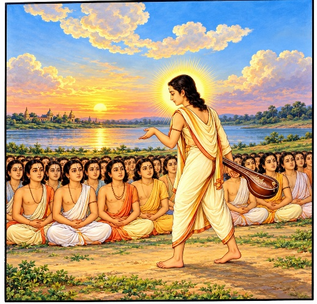
तब नारदजीने उत्पन्न हुए [उन] हर्यश्व नामवाले दक्ष-पुत्रोंसे कहा — ऊपर तथा नीचे पृथ्वीका प्रमाण जानकर आपलोग विशेष रूपसे सृष्टि कीजिये।
हे मुनिश्रेष्ठो! उनका वचन सुनकर वे सभी दिशाओंमें चले गये। वे आजतक नहीं लौटे, जैसे नदियाँ [समुद्रमें मिलकर] समुद्रसे वापस नहीं लौटतीं॥५-६ ½॥
हर्यश्वसंज्ञक पुत्रोंके नष्ट हो जानेपर प्रजापति प्रभु दक्षने सूतिसे पुनः एक हजार पुत्रोंको उत्पन्न किया। हे विप्रो! जब शबल नामवाले वे पुत्र सृष्टि करनेके लिये एकत्रित हुए, तब नारदने सूर्यके समान तेजवाले उन आये हुए पुत्रोंसे पुनः कहा — ‘पृथ्वीका सम्पूर्ण विस्तार जानकर तथा अपने भाइयोंका बार-बार पता लगाकर यहाँ आकरके आपलोग विशेषरूपसे सृष्टि कीजिये।’ वे भी उसी मार्गसे [अपने] भाइयोंकी गतिको प्राप्त हुए॥७-१०॥
तदनन्तर उनके भी नष्ट हो जानेपर प्रचेतसके पुत्र प्रजापति दक्षने वैरिणी [नामक भार्या] से साठ कन्याएँ उत्पन्न कीं। उन्होंने दस [कन्याएँ] धर्मको, तेरह [कन्याएँ] कश्यपको, सत्ताईस [कन्याएँ] चन्द्रमाको, चार [कन्याएँ] अरिष्टनेमिको, दो [कन्याएँ] भृगु-पुत्रको, दो [कन्याएँ] बुद्धिमान् कृशाश्वको और दो [कन्याएँ] आंगिरसको प्रदान कीं। [हे विप्रो!] अब उन देवमाताओंके नाम तथा उनकी सन्तानोंके विस्तारको आरम्भसे सुनिये॥११-१३ ½॥
मरुत्वती, वसु, यामि, लम्बा, भानु, अरुन्धती, संकल्पा, मुहूर्ता, साध्या और परम सुन्दरी विश्वा धर्मकी पत्नियाँ कही गयी हैं। [हे ऋषियो!] अब मैं उनके पुत्रोंको बताता हूँ — विश्वासे विश्वेदेव हुए। साध्याने साध्योंको जन्म दिया। मरुत्वतीसे मरुत्वान् हुए और वसुसे सभी वसु उत्पन्न हुए। भानुसे भानुगण तथा मुहूर्तासे मुहूर्तगण [उत्पन्न] बताये गये हैं। लम्बासे घोषनामवाले पुत्र हुए। यामिसे नागवीथि उत्पन्न हुआ। संकल्पासे संकल्प [नामक पुत्र] हुआ। अब मैं आपलोगोंको वसुओंकी सृष्टि बताता हूँ॥१४-१७ ½॥
जो देवता ज्योतिष्मान् तथा सभी दिशाओंमें व्यापक हैं, वे वसु कहे गये हैं; वे सभी प्राणियोंके हितैषी हैं।
आप, ध्रुव, सोम, धर, अनिल, अनल, प्रत्यूष तथा प्रभास — ये आठ वसु कहे गये हैं। अजैकपाद्, अहिर्बुध्न्य, विरूपाक्ष, भैरव, हर, बहुरूप, त्र्यम्बक, सुरेश्वर, सावित्र, जयन्त, पिनाकी तथा अपराजित — ये गणेश्वर ग्यारह रुद्र कहे गये हैं॥१८-२१ ½॥
[हे ऋषियो!] अब मैं कश्यपकी पत्नियोंसे उत्पन्न पुत्रों तथा पौत्रोंको बताऊँगा। अदिति, दिति, अरिष्टा, सुरसा, मुनि, सुरभि, विनता, ताम्रा, क्रोधवशा, इला, कद्रू, त्विषा एवं दनु — ये कश्यपकी पत्नियाँ थीं। अब मैं आपलोगोंको उनके पुत्रोंको बताता हूँ। चाक्षुष मन्वन्तरमें जो तुषित नामवाले देवता थे, वे वैवस्वत मन्वन्तरमें बारह आदित्य कहे गये हैं। इन्द्र, धाता, भग, त्वष्टा, मित्र, वरुण, अर्यमा, विवस्वान्, सविता, पूषा, अंशुमान् तथा विष्णु — ये हजार किरणोंवाले बारह आदित्य कहे गये हैं॥२२-२६॥
दितिने कश्यपसे हिरण्यकशिपु तथा हिरण्याक्ष — इन दो पुत्रोंको प्राप्त किया था, ऐसा हमने सुना है। दनुने कश्यपसे बलके अभिमानवाले सौ पुत्र प्राप्त किये। हे श्रेष्ठ द्विजो! उनमें विप्रचित्ति प्रधान था। हे श्रेष्ठ द्विजो! ताम्राने शुकी, श्येनी, भासी, सुग्रीवी, गृध्रिका तथा शुचि — इन छः कन्याओंको जन्म दिया। शुकीने धर्मसे शुकों तथा उलूकोंको उत्पन्न किया। श्येनीने श्येनों (बाज) तथा भासीने कुरंगोंको जन्म दिया। गृध्रीने गीधोंको, कपोतों तथा पारावत पक्षियोंको जन्म दिया। शुचिने हंस, सारस तथा कारण्ड पक्षियोंको जन्म दिया। सुग्रीवीने अजों, अश्वों, मेषों, ऊँटों तथा गर्दभोंको जन्म दिया॥२७-३१ ½॥
शुभ विनताने गरुड़ तथा अरुणको और सभी लोकोंको भय प्रदान करनेवाली सौदामिनी [नामक] कन्याको उत्पन्न किया। सुरसासे हजारों सर्प उत्पन्न हुए। उत्तम व्रतवाली कद्रूने हजार सिरवाले एक हजार सर्प उत्पन्न किये। उनमें छब्बीस [सर्प] उत्तम तथा प्रधान कहे गये हैं; वे शेष, वासुकि, कर्कोट, शंख, ऐरावत, कम्बल, धनंजय, महानील, पद्म, अश्वतर, तक्षक, एलापत्र, महापद्म, धृतराष्ट्र, बलाहक, शंखपाल, महाशंख, पुष्पदंष्ट्र, शुभानन, शंखलोमा, नहुष, वामन, फणित कपिल, दुर्मुख तथा पतंजलि [नामवाले] कहे गये हैं॥३२-३७॥
क्रोधवशाने महामायावी राक्षसों तथा रुद्रगणोंको जन्म दिया और सुन्दर स्त्री सुरभिने कश्यपसे गायों तथा भैंसोंको जन्म दिया; ऐसा हमने सुना है। मुनि [नामक कश्यपभार्या] ने मुनियों एवं अप्सराओंको और अरिष्टाने बहुत-से किन्नरों तथा गन्धर्वोंको जन्म दिया। इलाने समस्त तृणों, वृक्षों, लताओं तथा गुल्मोंको जन्म दिया। त्विषाने करोड़ों यक्षों और राक्षसोंको पैदा किया। मैंने कश्यपकी इन सन्तानोंका संक्षेपमें वर्णन कर दिया। इन सबके बहुत-से पुत्र-पौत्र आदि वंश कहे गये हैं॥३८-४१ ½॥
इस प्रकार महात्मा कश्यपके द्वारा प्रजाओंकी सृष्टि कर लिये जानेपर तथा उन सभी चर-अचर प्रजाओंके प्रतिष्ठित हो जानेपर प्रजापतिने उनमेंसे मुख्योंको अधिपतिके पदपर अभिषिक्त करके वैवस्वत मनुको मनुष्योंका अधिपति बनाया। स्वायम्भुव मन्वन्तरमें पहले ब्रह्माने जिन्हें अभिषिक्त किया था, उन्हींके द्वारा पर्वतोंसहित सात द्वीपोंवाली सम्पूर्ण पृथ्वी आज भी आदेशके अनुसार धर्मपूर्वक पालित की जा रही है। ब्रह्माने पूर्व स्वायम्भुव मन्वन्तरमें जिनका अभिषेक किया था, वे ही यहाँ अभिषिक्त किये जाते हैं और मनु होते हैं। इन मन्वन्तरोंके बीत जानेपर राजा भी चले जाते हैं; इस प्रकार इनके बाद मन्वन्तर आनेपर अन्य [राजा] अभिषिक्त किये जाते हैं। अतीत तथा अनागत सभी राजा मन्वन्तरमें कहे गये हैं॥४२-४७ ½॥
प्रजा-संतानके कारण इन पुत्रोंको उत्पन्न करके अपने वंशकी कामना रखनेवाले उन कश्यपने ‘वंशको बढ़ानेवाला पुत्र मुझे उत्पन्न हो’ — ऐसा सोचते हुए पुनः तप करना आरम्भ किया। इस प्रकार ध्यान करते हुए उन महात्मा कश्यपके ब्रह्मयोगसे पुनः महान् ओजस्वी दो पुत्र उत्पन्न हुए। वत्सर तथा असित [नामवाले] वे दोनों ब्रह्मवादी थे। वत्सरसे महान् यशवाले नैध्रुव तथा रैभ्य उत्पन्न हुए। रैभ्यके पुत्रोंको भी रैभ्य [नामवाला] जानना चाहिये।
[हे ऋषियो!] अब मैं नैध्रुवके पुत्रोंके विषयमें बताता हूँ — च्यवनकी कन्यासे सुमेधा उत्पन्न हुई। वह नैध्रुवकी पत्नी तथा कुण्डपायियोंकी माता थी। असितकी एकपर्णासे शाण्डिल्योंमें श्रेष्ठ, ब्रह्मिष्ठ, श्रीमान् तथा महातपस्वी देवल उत्पन्न हुए। इस प्रकार शाण्डिल्य, नैध्रुव तथा रैभ्य — ये तीनों पक्ष काश्यप (कश्यपसे उत्पन्न होनेवाले) हुए॥४८-५४॥
अब मैं पुलस्त्यके नौ राक्षसवंशजोंका वर्णन करता हूँ — प्रभु मनुके ग्यारहवें चतुर्युगके अतिक्रान्त होनेपर उसका आधा अवशिष्ट रह जानेपर जब द्वापरका आरम्भ हुआ, तब मनुकी पीढ़ीमें नरिष्यन्तका दम नामक पुत्र हुआ। उस दमका उत्तराधिकारी तृणबिन्दु कहा गया है; वह त्रेतायुगके तीन-चौथाई भागमें राजा हुआ। उसकी कन्या इलविला रूपमें अप्रतिम थी। उस राजर्षिने वह कन्या पुलस्त्यको दे दी। उस इलविलासे ऋषि विश्रवा उत्पन्न हुए। पौलस्त्यकुलकी वृद्धि करनेवाली उनकी चार पत्नियाँ थीं। पहली देववर्णिनी नामवाली थी, जो बृहस्पतिकी सुन्दर कन्या थी। [अन्य दो] पुष्पोत्कटा तथा बलाका माल्यवान्की पुत्रियाँ कही गयी हैं। कैकसी मालीकी कन्या थी। [हे ऋषियो!] अब उनकी सन्तानोंके विषयमें सुनिये॥५५-६० ½॥
देववर्णिनीने उन [विश्रवा] से ज्येष्ठ [पुत्र] वैश्रवणको उत्पन्न किया। कैकसीने राक्षसोंके राजा रावण, कुम्भकर्ण, शूर्पणखा तथा बुद्धिमान् विभीषणको जन्म दिया। हे द्विजश्रेष्ठो! पुष्पोत्कटाने उन [विश्रवा] से महोदर, प्रहस्त, महापार्श्व तथा खर [नामक] पुत्रोंको तथा कुम्भीनसी [नामक] कन्याको जन्म दिया। अब बलाकी सन्तानोंको सुनिये। त्रिशिरा, दूषण तथा विद्युज्जिह्व राक्षस और मालिका [नामक] कन्या — ये सब बलासे उत्पन्न कहे गये हैं। पुलस्त्यके ये नौ पौत्र क्रूर कर्मवाले राक्षस थे। विभीषण अत्यन्त शुद्ध आत्मावाले तथा धर्मज्ञ कहे गये हैं। मृग, व्याघ्र आदि दाढ़ोंवाले सभी पशु, भूत, पिशाच, सर्प, सूकर, हाथी, वानर, किन्नर तथा किम्पुरुष — ये सब पुलस्त्यके पुत्र हुए॥६१-६७॥
उस वैवस्वत मन्वन्तरमें क्रतु निःसन्तान कहा गया है। अत्रिकी दस सुन्दर तथा पतिव्रता भार्याएँ थीं। घृताची अप्सरासे भद्राश्वकी दस पुत्रियाँ हुईं। हे विप्रेन्द्रो! वे भद्रा, अभद्रा, जलदा, मन्दा, नन्दा, बला, अबला, गोपाबला, तामरसा तथा वरक्रीड़ा — ये दस कही गयी हैं। ये सब आत्रेयवंशमें उत्पन्न हुईं; इनके पति प्रभाकर थे। जब राहुने सूर्यको ढक लिया और यह सूर्य स्वर्गसे पृथ्वीपर गिरने लगा; तब इस लोकके अन्धकारसे व्याप्त हो जानेपर अत्रि ऋषिने प्रभा फैलायी थी। ‘तुम्हारा कल्याण हो’ उनके ऐसा कहनेपर महर्षिके वचनसे उस समय गिरता हुआ विभु सूर्य स्वर्गलोकसे पृथ्वीपर नहीं गिरा। तब महर्षियोंने प्रभु अत्रिको ‘प्रभाकर’ — ऐसा कहा॥६८-७३॥
उन्होंने भद्रासे यशस्वी पुत्र ‘सोम’ को उत्पन्न किया। उन तपोधन [ऋषि] ने उन पत्नियोंसे पुनः अन्य पुत्र भी उत्पन्न किये। वे सब स्वस्त्यात्रेय कहलाये और वेदोंके पारंगत ऋषि हुए। उनमें दो प्रसिद्ध यशवाले, ब्रह्मिष्ठ तथा महान् ओजस्वी हुए; दत्त अत्रिके ज्येष्ठ पुत्र थे और दुर्वासा उनके छोटे भाई थे। उनकी छोटी बहन अमला थी; वह ब्रह्मवादिनी थी। उनके दो गोत्रोंमें श्याव, प्रत्वस, ववल्गु तथा गह्वर — ये चार उत्पन्न हुए, जो भूलोकमें प्रसिद्ध हैं। महान् आत्मावाले आत्रेयोंके चार पक्ष कहे गये हैं — काश्यप, नारद, पर्वत और अनुद्धत। ये मानस पुत्रके रूपमें उत्पन्न हुए हैं। अब अरुन्धतीकी सन्तानोंके विषयमें सुनिये॥७४-७८ ½॥
नारदजीने वसिष्ठके लिये अरुन्धतीको प्रदान किया। महातेजस्वी नारद दक्षके शापसे ब्रह्मचारी हो गये। पूर्वकालमें तारकासुरके कारण भयानक देवासुर-संग्राममें अनावृष्टिसे हत लोकके उग्र हो जानेपर बुद्धिमान् वसिष्ठजीने [अपनी] तपस्यासे अन्न, जल, मूल, फल तथा औषधियाँ उत्पन्न करते हुए लोकेश्वरोंके साथ प्राणियोंकी रक्षा की थी और दयापूर्वक उन्होंने औषधिसे उन सबको जीवित किया था। वसिष्ठने अरुन्धतीसे सौ पुत्र उत्पन्न किये। उनमें ज्येष्ठ पुत्र शक्तिसे अदृश्यन्तीने पराशरको जन्म दिया था॥७९-८३॥
राक्षस रुधिरके द्वारा शक्तिका भक्षण कर लिये जानेपर कालीने पराशरसे प्रभु कृष्णद्वैपायन (व्यासजी) को जन्म दिया। तदनन्तर कृष्णद्वैपायनने अरणीसे शुक और उपमन्युको पुत्ररूपमें उत्पन्न किया और पीवरीसे उत्पन्न शुकदेवके इन पुत्रोंको जानिये — भूरिश्रवा, प्रभु, शम्भु, कृष्ण तथा पाँचवाँ गौर। उनकी कीर्तिमती [नामक] कन्या भी हुई, जो योगमाता तथा व्रत धारण करनेवाली थी। वह ब्रह्मदत्तकी माता एवं अनुहकी पत्नी थी। श्वेत, कृष्ण, गौर, श्याम, धूम्र, अरुण, नील तथा बादरिक — ये सब पराशरके वंशज थे। इस प्रकार महात्मा पराशरवंशजोंके वे आठ पक्ष कहे गये हैं॥८४-८८॥
[हे ऋषियो!] अब इसके आगे इन्द्रप्रमितिकी उत्पत्तिके विषयमें जानिये। वसिष्ठका पुत्र कपिंजल्य घृताचीसे उत्पन्न हुआ था, जो त्रिमूर्ति नामसे भी विख्यात हुआ; उसे इन्द्रप्रमिति कहा जाता है। पृथुकी पुत्रीसे भद्र उत्पन्न हुआ और उस [भद्र] का पुत्र वसु हुआ। उसका पुत्र उपमन्यु और उपमन्युके बहुत पुत्र हुए। कौण्डिन्य नामसे जो प्रसिद्ध हैं, वे मित्र तथा वरुणकी सन्तानें हैं और जो अन्य एकार्षेय हैं, वे वासिष्ठ नामसे प्रसिद्ध हैं। महात्मा वसिष्ठवंशजोंके ये दस पक्ष कहे गये हैं॥८९-९२॥
ये सब ब्रह्माके मानस पुत्रके रूपमें पृथ्वीपर विख्यात हैं। ये महाभाग [सबका] भरण करनेवाले हैं। [हे विप्रो!] मैंने इनके वंशोंका वर्णन कर दिया। देवर्षिकुलमें उत्पन्न होनेवाले ये सब तीनों लोकोंको धारण करनेमें समर्थ हैं। उनके पुत्र-पौत्र सैकड़ों तथा हजारों हैं, जिनके द्वारा सूर्यकी किरणोंकी भाँति तीनों लोक व्याप्त हैं॥९३-९५॥
॥इस प्रकार श्रीलिङ्गमहापुराणके अन्तर्गत पूर्वभागमें ‘देवादिसृष्टिकथन’ नामक तिरसठवाँ अध्याय पूर्ण हुआ॥६३॥
चौंसठवाँ अध्याय
वसिष्ठपुत्र शक्तिका आख्यान तथा महर्षि पराशरकी कथा
ऋषिगण बोले — हे वक्ताओंमें श्रेष्ठ सूतजी! राक्षस [रुधिर]-ने अनुजोंसहित वसिष्ठपुत्र शक्तिका भक्षण कैसे कर लिया; इसे आप कृपा करके बताइये॥१॥
सूतजी बोले — रुधिर नामक राक्षस पूर्वकालमें [विश्वामित्रद्वारा दिये गये] शापके कारण वसिष्ठके पुत्र शक्तिको उनके छोटे भाइयोंसहित खा गया था। हे विप्रो! उस रुधिरने विश्वामित्रसे प्रेरित होकर वसिष्ठके यजमान राजा कल्माषपादके शरीरमें प्रवेश करके उसका भक्षण किया था॥२-३॥
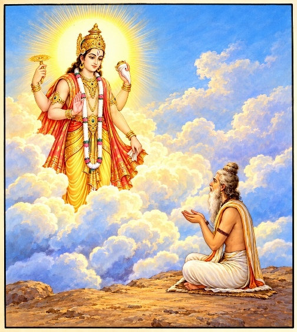
राक्षसने भाइयोंसहित शक्तिशालियोंमें श्रेष्ठ शक्तिका भक्षण कर लिया ऐसा सुनकर वसिष्ठजी अरुन्धतीके साथ दुःखित होकर ‘हा पुत्र! पुत्र!’ — बार-बार कहकर विलाप करते हुए पृथ्वीपर गिर पड़े। [मेरा] कुल नष्ट हो गया — यह सुनकर अपने सौ पुत्रों तथा ज्येष्ठ पुत्र शक्तिका स्मरण करते हुए उन शक्तिमान् वसिष्ठने ‘अब मैं उसके बिना जीवित नहीं रहूँगा’ — ऐसा निश्चय करके दुःखित होकर मरनेका विचार किया॥४-७॥
नेत्रोंमें आँसू भरे हुए वे आत्मवान्, सर्वज्ञ तथा आत्मवेत्ता ब्रह्मापुत्र वसिष्ठजी पत्नी [अरुन्धती]-के साथ पर्वतके शिखरपर चढ़कर पृथ्वीपर गिर पड़े॥८॥
तब विचित्र हार पहने हुए तथा हाथीके समान क्रीड़ायुक्त चालवाली पृथ्वीने पर्वतसे गिरे हुए उन वसिष्ठको धारण कर लिया और वह कमलके समान [अपने] हाथोंसे उन रोते हुए वसिष्ठको पकड़कर [स्वयं] रुदन करने लगी॥९॥
तदनन्तर उनकी पुत्रवधू तथा शक्तिकी पत्नी भयसे व्याकुल होकर रोती हुई वक्ताओंमें श्रेष्ठ महामुनि वसिष्ठसे कहने लगी — ‘हे भगवन्! हे ब्राह्मणश्रेष्ठ! हे विभो! अपने पौत्र तथा मेरे पुत्रकी देखभाल करनेके लिये आप अपने इस पवित्र देहकी रक्षा कीजिये। हे विप्रेन्द्र! आपको अपने इस परम सुन्दर शरीरका त्याग नहीं करना चाहिये; क्योंकि सभी अर्थोंको सिद्ध करनेवाला शक्तिपुत्र मेरे गर्भमें स्थित है’॥१०-१२॥
ऐसा कहकर कमलके समान नेत्रोंवाली उस धर्मज्ञाने अपने हाथोंसे श्वशुरको उठाकर [उन्हें] प्रणाम करके जलसे [उनके] नेत्रोंको धोकर स्वयं दुःखित होनेपर भी दुःखी श्वशुरकी रक्षा करनेके लिये दुःखसे युक्त कल्याणी अरुन्धतीसे प्रार्थना की॥१३-१४॥
तदनन्तर पुत्रवधूका वचन सुनकर चैतन्य प्राप्तकर पुत्रवत्सल मुनिश्रेष्ठ वसिष्ठ भूमिसे उठकर अरुन्धतीका आश्रय ले अश्रुपूरित नेत्रोंवाली उस अदृश्यन्तीका हाथोंसे स्पर्श करके भार्यासहित रो पड़े। वह अदृश्यन्ती भी अत्यन्त दुःखित होकर भूमिपर गिर पड़ी॥१५-१६॥
तदनन्तर विष्णुके नाभिकमलमें विराजमान ब्रह्माकी भाँति उसकी गर्भशय्यामें आसीन उस शिशुने एक ऋचाका उच्चारण किया॥१७॥
तब उस ऋचाको आदरपूर्वक सुनकर ‘किसने इसका उच्चारण किया’ — ऐसा सोचकर भगवान् वसिष्ठ एकाग्रचित्त होकर बैठ गये॥१८॥
उसके बाद कमलके समान नेत्रवाले, विश्वात्मा तथा कृपानिधि विष्णुने आकाशमें स्थित होकर कृपापूर्वक वसिष्ठसे कहा — ‘हे वत्स! हे वत्स! हे विप्रेन्द्र! हे वसिष्ठ! हे पुत्रवत्सल! आपके पौत्रके मुखकमलसे यह ऋचा निकली है। हे मुने! शक्तिका यह पुत्र तथा आपका पौत्र मेरे समान शक्तिशाली होगा, अतः हे ब्रह्मपुत्रोंमें श्रेष्ठ! शोकका त्याग करके उठिये। यह गर्भस्थ शिशु रुद्रका भक्त होगा और रुद्रकी पूजामें संलग्न रहेगा; यह रुद्रदेवकी कृपासे आपके कुलका उद्धार करेगा’। मुनिश्रेष्ठ विप्र वसिष्ठसे ऐसा कहकर दयालु भगवान् विष्णु वहींपर अन्तर्धान हो गये॥१९-२३॥
तत्पश्चात् कमलके समान नेत्रवाले विष्णुको सिर झुकाकर प्रणाम करके महातेजस्वी वसिष्ठने आदरपूर्वक अदृश्यन्तीके उदरका स्पर्श किया; और हा पुत्र! पुत्र! पुत्र! — ऐसा कहकर अत्यन्त दुःखित होकर वे गिर पड़े।
हे द्विजो! उस समय वे रोती हुई अरुन्धतीकी ओर देखकर विलाप करने लगे और अपने पुत्रका स्मरण करते हुए दुःखपूर्वक बोले — ‘हे पुत्र! पुनः आ जाओ, आ जाओ। हे शक्ते! कुलको धारण करनेवाले तुम्हारे इस पुत्रको देखकर मैं तुम्हारी माताके साथ तुम्हारे पास आऊँगा; इसमें सन्देह नहीं है’॥२४-२६ ½॥
सूतजी बोले — [हे ऋषियो!] ऐसा कहकर रोते हुए वे विप्र [वसिष्ठ] अरुन्धतीका आलिङ्गन करके गिर पड़े। शुभ अदृश्यन्ती भी [गर्भस्थ] शक्तिपुत्रके आश्रयस्वरूप अपने उदरको पीटने लगी और दुःखित होकर विलाप करने लगी तथा [पृथ्वीपर] गिर पड़ी। तब डरी हुई अरुन्धती एवं महामति वसिष्ठ बाला पुत्रवधूको उठाकर भयसे विह्वल होकर [उससे] कहने लगे॥२७-३०॥
हे विचारमुग्धे! हे आर्ये! कमलके समान हाथोंसे अपने दुर्लभ गर्भमण्डलको पीटकर तुम वसिष्ठके समस्त वंशको नष्ट करनेके लिये क्यों उद्यत हो? इसे बताओ। तुम्हारे पुत्र तथा शक्तिपुत्रको देखकर और उस आर्यपुत्रके मुखामृतका आस्वादन करके मुझ मुनीन्द्रने इस अपने शरीरको बचानेका निश्चय किया है, अतः तुम [अपने] शरीरकी रक्षा करो॥३१-३२॥
सूतजी बोले — इस प्रकार पुत्रवधू तथा मुनि वसिष्ठसे कहकर अरुन्धती स्थित हो गयी। पुनः दुःखी एवं व्याकुल अरुन्धतीने कहा — हे सुव्रते! अब इन मुनि वसिष्ठका तथा मेरा जीवन तुम्हारे ऊपर निर्भर है, अतः तुम धात्रीकी भाँति अपने देहकी रक्षा करो और जो हितकर हो, उसे करो॥३३-३४॥
अदृश्यन्ती बोली — यदि मुनिश्रेष्ठने अपने जीवनकी रक्षा करनेका निश्चय किया है, तो मैं भी किसी रूपमें अपने शुभ या अशुभ देहकी रक्षा करूँगी। मुझ असतीको [अपने] पतिके वियोगका दुःख प्राप्त हुआ है; इसमें सन्देह नहीं है। हे मुने! मैं दुःखसे दग्ध हूँ। हे मुने! मैं आपकी पुत्री हूँ; मैंने अद्भुत बात देखी है। हे विभो! मैं दुःखकी पात्र हूँ। अतः हे ब्रह्मन्! हे ब्रह्मपुत्र! हे जगद्गुरो! इस दुःखसे मेरी रक्षा कीजिये।
पतिरहित स्त्री इस लोकमें दीन तथा असहाय होती है, अतः हे आर्येन्द्र! मेरी रक्षा कीजिये। पिता, माता, पुत्र, पौत्र, श्वशुर — ये स्त्रियोंके बन्धु नहीं होते हैं; अर्थात् ये सब उसका सदाके लिये सम्पूर्ण हितसम्पादन करनेमें समर्थ नहीं होते, केवल पति ही उनका बन्धु तथा परम गति होता है॥३५-३९॥
विद्वानोंने जो कहा है कि पत्नी पतिका आधा अंग होती है, वह भी इसमें मिथ्या हो गया; [मेरे पति] शक्ति तो चले गये, किन्तु मैं [जीवित] रह गयी। हे मुनिश्रेष्ठ! मेरे मनकी यह कठोरता है, जो प्राणतुल्य [अपने] पतिको छोड़कर मैं क्षणभरके लिये भी जीवित हूँ। हे वसिष्ठ! जैसे पीपलके वृक्षपर चढ़ी हुई लता जड़को काट देनेपर भी जीवित रहती है, वैसे ही अपने पतिसे परित्यक्त हुई मैं भी दीन होकर जीवित हूँ॥४०-४२॥
तब पुत्रवधूका वचन सुनकर गृहस्थाश्रमवाले बुद्धिमान् वसिष्ठने [अपनी] भार्याके साथ अपने आश्रमको जानेका विचार किया। चिन्ता करते हुए उन भगवान् वसिष्ठने बड़े कष्टसे अपनी भार्या तथा [पुत्रवधू] अदृश्यन्तीके साथ क्षणभरमें अपने आश्रममें प्रवेश किया॥४३-४४॥
हे श्रेष्ठ मुनियो! उस पतिव्रता शक्तिभार्याने [अपनी] वंशपरम्पराको सुरक्षित रखनेके लिये किसी प्रकार [अपने] गर्भकी रक्षा की। तदनन्तर दसवें महीनेमें उस शक्तिपत्नीने अत्यन्त तेजस्वी पुत्रको जन्म दिया, जैसे अरुन्धतीने शक्तिशाली शक्तिको जन्म दिया था। उस शक्तिपत्नीने साक्षात् पराशरको उसी तरह जन्म दिया, जैसे अदितिने विष्णुको, स्वाहाने गुहको और अरणिने अग्निको पुत्ररूपमें जन्म दिया था॥४५-४७॥
जब शक्तिके पुत्रने पृथ्वीतलपर अवतार लिया, तब शक्तिने दुःख त्यागकर पितरोंकी समताको प्राप्त किया। हे श्रेष्ठ मुनियो! वे पुण्यात्मा वसिष्ठपुत्र [शक्ति] पितृलोकमें स्थित होकर [अपने] भाइयोंके साथ उसी प्रकार सुशोभित हुए, जैसे सूर्य आदित्योंके साथ सुशोभित होते हैं॥४८-४९॥
हे विप्रेन्द्रो! पराशरके अवतार लेनेपर उस समय सभी पितामह-प्रपितामह आदि पितृगण नाचने तथा गाने लगे। जो ब्रह्मवादी लोग थे, वे पृथ्वीपर एवं देवता लोग स्वर्गमें नृत्य करने लगे। पुष्कर आदि मेघोंने जलकी तथा अन्य आकाशचारियोंने पुष्पोंकी वर्षा की। [उस समय] राक्षसोंके नगरोंमें गृध्रादि अमंगल ध्वनि करने लगे और आश्रममें स्थित मुनियोंने अपार हर्ष मनाया॥५०-५२॥
जैसे अण्डसे चतुरानन (ब्रह्मा) और मेघसमूहोंसे सूर्य प्रकट होते हैं, उसी प्रकार वे पराशर भी अदृश्यन्तीसे अवतरित हुए। हे द्विजो! पुत्रको देखकर तथा पतिका स्मरण करके अदृश्यन्तीको सुख तथा दुःख दोनों ही हुआ और अरुन्धती तथा मुनि [वसिष्ठ]-को भी सुख-दुःख हुआ। अत्यधिक कान्तिवाले पुत्र पराशरको देखकर विह्वल तथा रुँधे कण्ठवाली वह बाला विलाप करने लगी और [भूमिपर] गिर पड़ी॥५३-५५॥
पवित्र मुसकानवाली वह [अदृश्यन्ती] उत्पन्न हुए उस पराशरको महाबुद्धिमान्, देवताओं तथा दानवोंसे पूजित और निष्पाप जानकर आँखोंमें आँसू भरकर विलाप करने लगी — ‘हे वसिष्ठसुत [शक्ति]! हे प्रभो! पुत्र-दर्शनकी इच्छावाली इस दीनवदनाको तथा अपने पुत्रको वनके बीचमें छोड़कर आप कहाँ चले गये? अपने निष्पाप पुत्रका दर्शन कीजिये। हे शक्ते! आप भाइयोंके साथ अपने पुत्रको देखिये, जैसे महेश्वरने प्रसन्नमुख होकर [अपने] गणोंके साथ षण्मुख (कार्तिकेय) को देखा था’॥५६-५८॥
तत्पश्चात् उसके विलापको सुनकर मुनिश्रेष्ठ वसिष्ठने दुःखित होकर [अपनी] पुत्रवधूसे यह वचन कहा — ‘मत रोओ’॥५९॥
तब बालमृगके समान नेत्रोंवाली वह कुलीन बाला वसिष्ठकी आज्ञासे शोक त्याग करके [उस] बालकका पालन करने लगी॥६०॥
तदनन्तर आँसुओंसे भरे हुए नेत्रोंवाली तथा व्याकुल उस साध्वी अबलाको आभूषणोंसे रहित होकर बैठी देखकर पराशर यह कहने लगे॥६१॥
शाक्तेय (शक्तिपुत्र पराशर) बोले — हे अम्ब! हे अनघे! जैसे चन्द्रमण्डलसे रहित रात्रि सुशोभित नहीं होती है, वैसे ही आपका यह शरीर मंगल आभूषणोंके बिना सुशोभित नहीं हो रहा है; कृपा करके आज इसका कारण बताइये। हे मातः! हे मातः! मंगल आभरणोंका त्याग करके पतिविहीनाकी भाँति आप क्यों बैठी हुई हैं? हे शोभने! कृपा करके बताइये॥६२-६३॥
तब उस पुत्रकी बात सुनकर उस अदृश्यन्तीने पुत्रसे अच्छा अथवा बुरा कुछ भी नहीं कहा॥६४॥
भगवान् शाक्तेय (पराशर) ने उस अदृश्यन्तीसे पुनः कहा — ‘हे मातः! मेरे महातेजस्वी पिता कहाँ हैं; इसे बताइये, बताइये’॥६५॥
तब पुत्रका वचन सुनकर अत्यधिक व्याकुल होकर वह रोने लगी। ‘हे तात! राक्षसने तुम्हारे पिताका भक्षण कर लिया’ — ऐसा कहकर वह [भूमिपर] गिर पड़ी॥६६॥
तब पौत्रकी बात सुनकर दयालु वसिष्ठ भी रोते हुए भूमिपर गिर पड़े। मुनि वसिष्ठके आश्रममें रहनेवाले श्रेष्ठ मुनिगण तथा अरुन्धती — ये सब भी गिर पड़े॥६७॥
‘तुम्हारे पिताको राक्षस खा गया’ — माताके मुखसे ऐसा सुनकर अश्रुपूर्ण नेत्रवाले बुद्धिमान् पराशर कहने लगे॥६८॥
पराशर बोले — हे मातः! देवदेवेश्वर [शिव] की पूजा करके तथा चराचरसहित तीनों लोकोंको दग्ध करके मैं क्षणभरमें पिताका दर्शन कराता हूँ — ऐसा मेरा विचार है॥६९॥
तब इस शुभ वचनको सुनकर वह आश्चर्यचकित हो गयी; उसकी ओर देखकर मुसकराकर उसने पुत्रसे कहा — हे पुत्र! हे पुत्र! यह सत्य है; तुम शिवकी पूजा करो॥७०॥
तदनन्तर इस शक्तिपुत्र [पराशर] के संकल्पको जानकर दयानिधि, बुद्धिमान् तथा मुनियोंमें श्रेष्ठ भगवान् वसिष्ठने पौत्रसे कहा — हे पौत्र! हे मुनिश्रेष्ठ! हे सुव्रत! सुनो; तुम्हारा संकल्प उचित है, फिर भी तुम [सम्पूर्ण] लोकका विनाश मत करो। तुम राक्षसोंके नाशके लिये सर्वेश्वरका अर्चन करो। हे शक्तिपुत्र! सुनो, त्रैलोक्यने तुम्हारे प्रति क्या अपराध किया है?॥७१-७३॥
उसके बाद उन वसिष्ठकी आज्ञासे महाबुद्धिमान् शक्तिपुत्रने राक्षसोंके विनाशके लिये निश्चय किया। अदृश्यन्ती, वसिष्ठ तथा अरुन्धतीको प्रणाम करनेके अनन्तर मुनिके समीप मिट्टीका एक (पार्थिवेश्वर) क्षणिक लिङ्ग बनाकर शुभ शिवसूक्त तथा त्र्यम्बकमन्त्रसे विधिवत् पूजन करके त्वरितरुद्र, शिवसंकल्पसूक्त, नीलरुद्र, उत्तम रुद्र, वामीय, पवमान, पंचब्रह्म (सद्योजातादि पाँच मन्त्र), होतृसूक्त, लिङ्गसूक्त तथा अथर्वशीर्ष — इन मन्त्रोंका जप करके [भगवान्] रुद्रको अष्टांग अर्घ्य प्रदान करके यथाविधि अभ्यर्चनकर वे शाक्तेय (पराशर) प्रार्थना करने लगे॥७४-७८॥
पराशर बोले — ‘हे भगवन्! हे रुद्र! हे शंकर! राक्षस रुधिरने भाइयोंसहित मेरे महातेजस्वी पिताका भक्षण कर लिया। हे भगवन्! मैं अपने पिताको उनके भाइयों सहित देखना चाहता हूँ।’ इस प्रकार प्रार्थना करते हुए उस लिङ्गको बार-बार प्रणामकर ‘हा रुद्र! रुद्र! रुद्र!’ — यह कहते हुए वे रोने लगे और गिर पड़े॥७९-८० ½॥
तब उन्हें देखकर कल्याणकारी भगवान् रुद्रने देवी [पार्वती] से कहा — हे महाभागे! अश्रुसे भरे हुए नेत्रोंवाले, मेरे स्मरणमें लगे हुए तथा मेरी आराधनामें तत्पर [इस] बालकको देखो॥८१-८२॥
तब निष्कलंक उन महादेवी उमाने दुःखसे दुर्बल अंगोंवाले, अश्रुपूरित नेत्रोंवाले, लिङ्गार्चनके कर्ममें संलग्न तथा ‘हे हर! हे रुद्र’ — ऐसा उच्चारण करनेवाले पराशरको देखकर सम्पूर्ण लोकोंके स्वामी अपने पति शंकरसे कहा — हे परमेश्वर! आप प्रसन्न हो जाइये और इसे सम्पूर्ण अभीष्ट वर प्रदान कीजिये॥८३-८५ ½॥
तदनन्तर उनका वचन सुनकर विषपान करनेवाले परमेश्वर शंकरने [अपनी] भार्या साध्वी उमासे कहा — मैं खिले हुए कमलके समान नेत्रवाले इस ब्राह्मण बालककी रक्षा करूँगा। मैं इसे [दिव्य] दृष्टि दे रहा हूँ; [जिससे] यह मेरे रूपका दर्शन करनेमें समर्थ होगा॥८५-८६ ½॥
ऐसा कहकर [अपने] दिव्य गणों तथा ब्रह्मा, इन्द्र, विष्णु, रुद्र आदिसे घिरे हुए नीललोहित भगवान् परमेश्वरने उन बुद्धिमान् मुनिपुत्र [पराशर] को दर्शन दिया॥८७-८८॥
महादेवजीको देखकर आनन्दके अश्रुसे भरे हुए नेत्रोंवाले वे [पराशर] भी प्रसन्नचित्त होकर आदरपूर्वक उनके चरणोंपर गिर पड़े और पुनः भवानी [पार्वती] और महात्मा नन्दीके चरणोंपर गिर पड़े। तत्पश्चात् उन्होंने उन ब्रह्मा आदिसे कहा — ‘मेरा जीवन आज सफल हो गया। बाल चन्द्रमाके आभूषणवाले [साक्षात् शिवजी] मेरी रक्षाके लिये आज उपस्थित हुए हैं; अतः देवता अथवा दानव — दूसरा कौन इस लोकमें मेरे समान [भाग्यशाली] है’॥८९-९१॥
तदनन्तर शक्तिपुत्र पराशरने उसी क्षण [अपने] पिताको भाइयोंसहित अन्तरिक्षमें खड़े देखा। सूर्यमण्डलके समान [तेजवाले] तथा सभी ओर मुखवाले विमानमें [अपने] भाइयोंसहित पिताको देखकर उन्होंने प्रणाम किया और वे बहुत हर्षित हुए॥९२-९३॥
तब अपनी भार्या तथा गणेश्वरोंसहित विराजमान भगवान् वृषभध्वज (शिव) पुत्रको देखनेमें तत्पर वसिष्ठ-पुत्र [शक्ति] से यह कहने लगे॥९४॥
श्रीदेव बोले — हे शक्ते! हे विप्रेन्द्र! आनन्दके आँसुओंसे सिक्त नेत्रोंवाले अपने पुत्र इस बालकको और अदृश्यन्ती, अपने पिता वसिष्ठ, महाभाग्यशालिनी-कल्याणमयी तथा देवतातुल्य [माता] अरुन्धतीको देखो। हे महामते! [अपने] माता तथा पिता — इन दोनोंको नमस्कार करो॥९५-९६॥
तदनन्तर शंकरजीकी आज्ञासे देवदेव हरको, उमाको, श्रेष्ठ वसिष्ठको तथा अपने पतिको देवता माननेवाली महाभाग्यवती कल्याणी माता अरुन्धतीको शीघ्र प्रणाम करके शक्तिमान् शक्तिने [पुनः] जगन्नाथ [शिव] की आज्ञा पाकर कहा॥९७-९८॥
वासिष्ठ (शक्ति) बोले — हे वत्स! हे वत्स! हे विप्रेन्द्र! हे पराशर! हे महाद्युते! हे तात! गर्भमें स्थित रहते हुए तुम महात्माने मेरी रक्षा की। हे वत्स! हे पराशर! हे बाल! मैंने अणिमा आदि सिद्धियों तथा ऐश्वर्यको प्राप्त कर लिया जो कि तुम्हारे मुखका आज मुझे दर्शन हुआ।
हे वत्स! हे महामते! अब तुम मेरी आज्ञासे महाभाग्यशालिनी अदृश्यन्ती, [माता] अरुन्धती तथा मेरे पिता वसिष्ठकी सर्वदा रक्षा करते रहो। हे वत्स! तुमने मेरे समस्त कुलका उद्धार कर दिया; सज्जनोंने सदा यही कहा है कि [मनुष्य अपने] पुत्रके द्वारा [सभी] लोकोंको जीत लेता है। अब तुम जगत्को उत्पन्न करनेवाले प्रभु महेश्वरसे अभीष्ट वर माँगो और मैं अब भगवान् शंकरको प्रणाम करके भाइयोंके साथ जाऊँगा॥९९-१०३॥
इस प्रकार पुत्रको परामर्श देकर महेश्वर तथा पिता वसिष्ठको प्रणाम करके सभामें [अपनी] भार्याकी ओर देखकर वे जितेन्द्रिय शक्ति चले गये॥१०४॥
तत्पश्चात् पिताको गया हुआ देखकर वे शक्तिपुत्र [पराशर] चन्द्रभूषण शंकरकी पूजा करके प्रिय शब्दोंद्वारा [उनकी] स्तुति करने लगे॥१०५॥
तदनन्तर कामदेव तथा अन्धकका नाश करनेवाले महादेव प्रसन्न हो गये और शक्तिपुत्र पराशरपर अनुग्रह करके वहींपर अन्तर्धान हो गये॥१०६॥
तब पार्वतीसहित महेश्वरके चले जानेपर मन्त्रवेत्ता पराशर महेश्वरको प्रणाम करके मन्त्रके द्वारा राक्षसोंके कुलको जलाने लगे॥१०७॥
उस समय मुनियोंसे घिरे हुए धर्मज्ञ वसिष्ठने पौत्र [पराशर] से कहा — ‘हे तात! ऐसा महाकोप मत करो; इस क्रोधका त्याग करो। राक्षसोंने अपराध नहीं किया है; तुम्हारे पिताके लिये वैसा ही विहित था। मूर्खोंको ही क्रोध होता है; बुद्धिमानोंको नहीं। हे तात! कौन किसे मारता है; मनुष्य तो अपने किये हुएका फल भोगता है। हे वत्स! क्रोध मनुष्योंके द्वारा अत्यधिक कष्टसे अर्जित किये गये यश तथा तपका नाश करनेवाला कहा गया है। अतः तुम दीन तथा निरपराध राक्षसोंको मत जलाओ और अपने इस यज्ञको बन्द करो; सज्जन लोग तो क्षमाशील होते हैं’॥१०८-१११ ½॥
इस प्रकार वसिष्ठकी आज्ञासे तथा उनके वचनोंकी गरिमाके कारण मुनिश्रेष्ठ पराशरने शीघ्र ही यज्ञको बन्द कर दिया। तब मुनिश्रेष्ठ भगवान् वसिष्ठ प्रसन्न हो गये॥११२-११३॥
उसी समय ब्रह्माके पुत्र [ऋषि] पुलस्त्य यज्ञमें आये। वसिष्ठने उन्हें अर्घ्य प्रदान किया तथा आसन देकर बैठाया; तत्पश्चात् प्रणाम करके [सम्मुख] खड़े पराशरसे मुनि [पुलस्त्यने] कहा — ‘तुमने गुरुकी आज्ञासे आज महान् वैरमें क्षमाको आश्रित किया है, अतः तुम सभी शास्त्रोंको जान जाओगे और कुपित होनेपर भी तुमने मेरे वंशका नाश नहीं किया, अतः हे महाभाग! मैं तुम्हें अन्य महान् वर भी प्रदान करता हूँ — हे वत्स! तुम पुराणसंहिताके कर्ता होओगे और देवताओंके परम रहस्यको वास्तविकरूपमें जानोगे। हे वत्स! मेरी कृपासे प्रवृत्ति तथा निवृत्तिके कर्मोंसे तुम्हारी बुद्धि विशुद्ध एवं सन्देहरहित होगी’॥११४-११८ ½॥
तदनन्तर वक्ताओंमें श्रेष्ठ भगवान् वसिष्ठने कहा — ‘[हे वत्स!] ऋषि पुलस्त्यने तुम्हारे लिये जो कुछ कहा है, यह सब होकर रहेगा।’ तब उन पुलस्त्य तथा बुद्धिमान् वसिष्ठकी कृपासे पराशरने विष्णुपुराणकी रचना की। यह छः अंशोंवाला, सभी कामनाओंको सिद्ध करनेवाला, ज्ञानका भण्डार, छः हजार श्लोकोंसे युक्त, वेदार्थसे समन्वित, पुराण-संहिताओंमें चतुर्थ तथा परम सुन्दर है॥११९-१२२॥
हे श्रेष्ठ मुनियो! मैंने आपलोगोंसे संक्षेपमें वसिष्ठके पुत्रोंकी उत्पत्ति तथा शक्तिपुत्र [पराशर] के सम्पूर्ण प्रभावका वर्णन कर दिया॥१२३॥
॥इस प्रकार श्रीलिङ्गमहापुराणके अन्तर्गत पूर्वभागमें ‘वासिष्ठकथन’ नामक चौंसठवाँ अध्याय पूर्ण हुआ॥६४॥
पैंसठवाँ अध्याय
सूर्यवंश तथा चन्द्रवंशका वर्णन एवं शिवभक्त तण्डीप्रोक्त रुद्रसहस्त्रनाम
ॐ श्रीगणेशाय नमः ।
ऋषयः ऊचुः ।
आदित्यवंशं सोमस्य वंशं वंशविदां वर ।
वक्तुमर्हसि चास्माकं सङ्क्षेपाद्रोमहर्षणम् ॥ १॥
ऋषिगण बोले — हे वंशविदोंमें श्रेष्ठ! हे रोमहर्षण! आप संक्षेपमें सूर्यवंश तथा चन्द्रवंशके विषयमें हमलोगोंको बतानेकी कृपा करें॥१॥
सूत उवाच ।
अदितिः सुषुवे पुत्रमादित्यं कश्यपाद्द्विजाः ।
तस्यादित्यस्य चैवासीद्भार्यात्रयमथापरम् ॥ २॥
संज्ञा राज्ञी प्रभा छाया पुत्रांस्तासां वदामि वः ।
संज्ञा त्वाष्ट्री च सुषुवे सूर्यान्मनुमनुत्तमम् ॥ ३॥
यमं च यमुनां चैव राज्ञी रेवतमेव च ।
प्रभा प्रभातमादित्याच्छायां संज्ञाप्यकल्पयत् ॥ ४॥
सूतजी बोले — हे द्विजो! अदितिने कश्यपसे आदित्य नामक पुत्रको उत्पन्न किया। उस आदित्यकी ज्येष्ठ भार्याके अतिरिक्त तीन और भार्याएँ थीं। वे संज्ञा, राज्ञी, प्रभा तथा छाया थीं — मैं उनके पुत्रोंके विषयमें आप लोगोंको बताता हूँ। त्वष्टाकी पुत्री संज्ञाने सूर्यसे श्रेष्ठ मनुको उत्पन्न किया।
राज्ञीने यम, यमुना तथा रेवतको जन्म दिया। प्रभाने सूर्यसे प्रभातको जन्म दिया। संज्ञाने ही छायाको अपने स्थानपर नियोजित किया॥२-४॥
छाया च तस्मात्सुषुवे सावर्णिं भास्कराद्द्विजाः ।
ततः शनिञ्च तपतीं विष्टिञ्चैव यथाक्रमम् ॥ ५॥
छाया स्वपुत्राभ्यधिकं स्नेहञ्चक्रे मनौ तदा ।
पूर्वो मनुर्न चक्षाम यमस्तु क्रोधमूर्च्छितः ॥ ६॥
मन्ताडयामास रुषा पादमुद्यम्य दक्षिणम् ।
यमेन ताडिता सा तु छाया वै दुःखिताभवत् ॥ ७॥
हे द्विजो! छायाने उन सूर्यसे सावर्णि मनु, शनि, तपती तथा विष्टिको यथाक्रम जन्म दिया। छाया अपने पुत्र सावर्णि मनुसे अधिक स्नेह करती थी। पूर्व मनु (वैवस्वत मनु) तो इसे सहन कर गये, पर क्रोधसे विक्षुब्ध यम इसे सहन न कर सका और उसने क्रोधसे [अपना] दाहिना पैर उठाकर छायापर प्रहार किया। [पैरसे] यमके द्वारा मारे जानेपर वह छाया दुःखित हुई॥५-७॥
छायाशापात्पदञ्चैकं यमस्य क्लिन्नमुत्तमम् ।
पूयशोणित सम्पूर्णं कृमीणां निचयान्वितम् ॥ ८॥
सोऽपि गोकर्णमाश्रित्य फलकेनानिलाशनः ।
आराधयन्महादेवं यावद्वर्षायुतायुतम् ॥ ९॥
भवप्रसादादागत्य लोकपालत्वमुत्तमम् ।
पितॄणामाधिपत्यं तु शापमोक्षं तथैव च ॥ १०॥
तब छायाके शापसे यमका वह सुन्दर पैर खराब हो गया, वह मवाद तथा रक्तसे भर गया और कीड़ोंके समूहसे युक्त हो गया। तदनन्तर वह [यम] गोकर्णमें रहकर एक फलक (पटरे) पर बैठकर [केवल] वायु पीता हुआ दस हजार वर्षांतक महादेवजीकी आराधना करता रहा। शिवकी कृपासे श्रेष्ठ लोकपालत्व तथा पितरोंका स्वामित्व प्राप्त करके उसने देवदेव शूलपाणि (शिव) के प्रभावसे शापसे मुक्ति प्राप्त की॥८-१० ½॥
लब्धवान्देवदेवस्य प्रभावाच्छूलपाणिनः ।
असंहन्ती पुरा भानोस्तेजोमयमनिन्दिता ॥ ११॥
रूपं त्वाष्ट्री स्वदेहात्तु छायाख्यां सा त्वकल्पयत् ।
वडवारूपमास्थाय तपस्तेपे तु सुव्रता ॥ १२॥
कालात्प्रयत्नतो ज्ञात्वा छायां छायापतिः प्रभुः ।
वडवामगमत् संज्ञामश्वरूपेण भास्करः ॥ १३॥
वडवा च तदा त्वाष्ट्री संज्ञा तस्माद्दिवाकरात् ।
सुषुवे चाश्विनौ देवौ देवानान्तु भिषग्वरौ ॥ १४॥
पूर्वकालमें सूर्यके तेजोमय रूपको सहन न करती हुई त्वष्टाकी शुभ कन्या संज्ञाने अपने शरीरसे [दूसरी] छाया नामक स्त्रीकी रचना की और वह सुव्रता स्वयं वडवा (घोड़ी) का रूप धारणकर तप करने लगी। कुछ समयके बाद प्रयत्नपूर्वक छायाको संज्ञाकी प्रतिकृति जानकर छायापति प्रभु सूर्यने घोड़ेका रूप धारणकर उस वडवारूपधारिणी संज्ञाके साथ रमण किया। तब घोड़ीके रूपवाली त्वष्टापुत्री संज्ञाने उन सूर्यसे देवस्वरूप दोनों अश्विनीकुमारोंको जन्म दिया; वे देवताओंके श्रेष्ठ वैद्य थे॥११-१४॥
लिखितो भास्करः पश्चात्संज्ञापित्रा महात्मना ।
विष्णोश्चक्रं तु यद्घोरं मण्डलाद्भास्करस्य तु ॥ १५॥
निर्ममे भगवांस्त्वष्टा प्रधानं दिव्यमायुधम् ।
रुद्रप्रसादाच्च शुभं सुदर्शनमिति स्मृतम् ॥ १६॥
उसके बाद महान् आत्मावाले संज्ञापिता [त्वष्टा] ने सूर्यको खरादा। भगवान् त्वष्टाने रुद्रकी कृपासे सूर्यके मण्डलसे विष्णुके चक्रका निर्माण किया, जो बड़ा भयानक था; वह उनका प्रधान तथा दिव्य अस्त्र था, जिसे शुभ सुदर्शन [चक्र] कहा गया है। भगवान् कृष्णने कालाग्निसदृश उस चक्रको प्राप्त किया था॥१५-१६ ½॥
लब्धवान् भगवांश्चक्रं कृष्णः कालाग्निसन्निभम् ।
मनोस्तु प्रथमस्यास नव पुत्रास्तु तत्समाः ॥ १७॥
इक्ष्वाकुर्नभगश्चैव धृष्णुः शर्यातिरेव च ।
नरिष्यन्तश्च वै धीमान् नाभागोऽरिष्ट एव च ॥ १८॥
करूषश्च पृषध्रश्च नवैते मानवाः स्मृताः ।
इला ज्येष्ठा वरिष्ठा च पुंस्त्वं प्राप च या पुरा ॥ १९॥
सुद्युम्न इति विख्याता पुंस्त्वं प्राप्ता त्विला पुरा ।
मित्रावरुणयोस्त्वत्र प्रसादान्मुनिपुङ्गवाः ॥ २०॥
पुनः शरवणं प्राप्य स्त्रीत्वं प्राप्तो भवाज्ञया ।
सुद्युम्नो मानवः श्रीमान् सोमवंशप्रवृद्धये ॥ २१॥
इक्ष्वाकोरश्वमेधेन इला किम्पुरुषोऽभवत् ।
इला किम्पुरुषत्वे च सुद्युम्न इति चोच्यते ॥ २२॥
प्रथम मनु [वैवस्वत] के नौ पुत्र हुए, जो उन्हींके समान थे। इक्ष्वाकु, नभग, धृष्णु, शर्याति, नरिष्यन्त, बुद्धिमान् नाभाग, अरिष्ट, करूष तथा पृषध्र — ये नौ मनुपुत्र कहे गये हैं। उनकी ज्येष्ठ तथा वरिष्ठ पुत्री इला जो पूर्वकालमें पुरुष हो गयी थी, वह सुद्युम्न नामसे प्रसिद्ध हुई। हे श्रेष्ठ मुनियो! मित्र तथा वरुणकी कृपासे वह इला पूर्वकालमें पुरुषत्वको प्राप्त हुई थी; पुनः शिवकी आज्ञासे शरवण [नामक वन] को प्राप्तकर सोमवंशकी वृद्धिके लिये वे मनुपुत्र श्रीमान् सुद्युम्न स्त्रीत्वको प्राप्त हुए। इक्ष्वाकुके अश्वमेधके समय वह इला किंपुरुष (पुरुष रूपवाली) हो गयी थी। वह इला किंपुरुष हो जानेपर ‘सुद्युम्न’ — इस नामसे कही जाती थी॥१७-२२॥
मासमेकं पुमान्वीरः स्त्रीत्वं मासमभूत्पुनः ।
इला बुधस्य भवनं सोमपुत्रस्य चाश्रिता ॥ २३॥
बुधेनान्तरमासाद्य मैथुनाय प्रविर्तिता ।
सोमपुत्राद्बुधाच्चापि ऐलो यज्ञे पुरूरवाः ॥ २४॥
सोमवंशाग्रजो धीमान्भवभक्तः प्रतापवान् ।
इक्ष्वाकोर्वंशविस्तारं पश्चाद्वक्ष्ये तपोधनाः ॥ २५॥
वह इला एक महीनेतक वीर पुरुषके रूपमें और पुनः एक महीनेतक स्त्रीके रूपमें रहती थी। वह चन्द्रमाके पुत्र बुधके भवनमें रहने लगी। अवसर पाकर वह बुधके साथ मैथुनके लिये तत्पर हुई। तब सोमपुत्र बुध और इलासे पुरूरवा उत्पन्न हुए; जो सोमवंशमें प्रथम उत्पन्न होने वाले, बुद्धिमान्, शिवभक्त तथा प्रतापी थे। हे तपोधनो! अब इसके बाद मैं इक्ष्वाकुवंशके विस्तारका वर्णन करूँगा॥२३-२५॥
पुत्रत्रयमभूत्तस्य सुद्युम्नस्य द्विजोत्तमाः ।
उत्कलश्च गयश्चैव विनताश्वस्तथैव च ॥ २६॥
उत्कलस्योत्कलं राष्ट्रं विनताश्वस्य पश्चिमम् ।
गया गयस्य चाख्याता पुरी परमशोभना ॥ २७॥
हे उत्तम द्विजो! उन सुद्युम्नके तीन पुत्र हुए — उत्कल, गय तथा विनताश्व। उत्कलका उत्कल [नामक] राष्ट्र था और विनताश्वका पश्चिमी प्रदेश था। गयकी गया [नामक] परम सुन्दर पुरी कही गयी है, जिसमें देवताओं तथा पितरोंकी स्थिति सर्वदा रहती है॥२६-२७ ½॥
सुराणां संस्थितिर्यस्यां पितॄणाञ्च सदा स्थितिः ।
इक्ष्वाकुज्येष्ठदायादो मध्यदेशमवाप्तवान् ॥ २८॥
कन्याभावाच्च सुद्युम्नो नैव भागमवाप्तवान् ।
वसिष्ठवचनात्त्वासीत्प्रतीष्ठाने महाद्युतिः ॥ २९॥
प्रतिष्ठा धर्मराजस्य सुद्युम्नस्य महात्मनः ।
तत्पुरूरवसे प्रादाद्राज्यं प्राप्य महायशाः ॥ ३०॥
इक्ष्वाकुके ज्येष्ठ पुत्रने मध्यदेश प्राप्त किया। कन्या प्रकृतिवाले होनेके कारण महातेजस्वी सुद्युम्न [अपना] भाग नहीं पा सके; किंतु वसिष्ठके कहनेसे प्रतिष्ठानपुरमें धर्मराज महात्मा सुद्युम्नकी प्रतिष्ठा स्थापित हुई और स्त्री-पुरुषके लक्षणोंसे युक्त, महायशस्वी तथा महाभाग्यशाली मनुपुत्र [सुद्युम्न] ने राज्य प्राप्त करके उसे पुरूरवाको दे दिया॥२८-३० ½॥
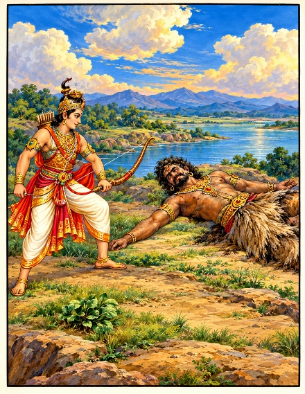
मानवेयो महाभागः स्त्रीपुंसोर्लक्षणान्वितः ।
इक्ष्वाकोरभवद्वीरो विकुक्षिर्धर्मवित्तमः ॥ ३१॥
ज्येष्ठः पुत्रशतस्यासीद्दश पञ्च च तत्सुताः ।
अभूज्ज्येष्ठः ककुत्स्थश्च ककुत्स्थात्तु सुयोधनः ॥ ३२॥
ततः पृथुर्मुनिश्रेष्ठा विश्वकः पार्थिवस्तथा ।
विश्वकस्यार्द्रको धीमान् युवनाश्वस्तु तत्सुतः ॥ ३३॥
शाबस्तिश्च महातेजा वंशकस्तु ततोभवत् ।
निर्मिता येन शाबस्ती गौडदेशे द्विजोत्तमाः ॥ ३४॥
वंशाच्च बृहदश्वोऽभूत्कुवलाश्वस्तु तत्सुतः ।
धुन्धुमारत्वमापन्नो धुन्धुं हत्वा महाबलम् ॥ ३५॥
धन्धुमारस्य तनयास्त्रयस्त्रैलोक्यविश्रुताः ।
दृढाश्वश्चैव चण्डाश्वः कपिलाश्वश्च ते स्मृताः ॥ ३६॥
दृढाश्वस्य प्रमोदस्तु हर्यश्वस्तस्य वै सुतः ।
हर्यश्वस्य निकुम्भस्तु संहताश्वस्तु तत्सुतः ॥ ३७॥
कृशाश्वोऽथरणाश्वश्च संहताश्वात्मजावुभौ ।
युवनाश्वो रणाश्वस्य मान्धाता तस्य वै सुतः ॥ ३८॥
मान्धातुः पुरुकुत्सोऽभूदम्बरीषश्च वीर्यवान् ।
मुचकुन्दश्च पुण्यात्मा त्रयस्त्रैलोक्यविश्रुताः ॥ ३९॥
अम्बरीषस्य दायादो युवानाश्वोऽपरः स्मृतः ।
हरितो युवनाश्वस्य हरितास्तु यतः स्मृताः ॥ ४०॥
सौ पुत्रोंवाले इक्ष्वाकुके ज्येष्ठ पुत्र विकुक्षि थे; वे महान् धर्मज्ञ थे। उनके पचास पुत्र हुए; उनमें ककुत्स्थ सबसे बड़े थे। ककुत्स्थसे सुयोधन उत्पन्न हुए। हे श्रेष्ठ मुनियो! उन [सुयोधन] से पृथु और पृथुसे विश्वक उत्पन्न हुए। विश्वकके पुत्र बुद्धिमान् आर्द्रक थे और उनके पुत्र युवनाश्व थे। हे श्रेष्ठ द्विजो! उनके पुत्र महातेजस्वी शाबस्ति थे, जिन्होंने गौड़देशमें शाबस्ती नगरीका निर्माण किया। उनसे वंशक [नामक पुत्र] उत्पन्न हुए और वंश [वंशक] से बृहदश्व हुए। कुवलाश्व उन [बृहदश्वके] पुत्र थे; उन्होंने महाबली ‘धुन्धु’ को मारकर धुन्धुमार नाम प्राप्त किया था। धुन्धुमारके तीन पुत्र हुए, जो तीनों लोकोंमें प्रसिद्ध थे; वे दृढ़ाश्व, चण्डाश्व तथा कपिलाश्व [नामवाले] कहे गये हैं। दृढ़ाश्वके पुत्र प्रमोद और उनके पुत्र हर्यश्व थे। हर्यश्वके पुत्र निकुम्भ और उन [निकुम्भ] के पुत्र संहताश्व थे। संहताश्वके कृशाश्व तथा रणाश्व [नामक] दो पुत्र थे। रणाश्वके पुत्र युवनाश्व थे और उन [युवनाश्व] के पुत्र मान्धाता थे। मान्धाताके तीन पुत्र हुए — पुरुकुत्स, पराक्रमी अम्बरीष तथा पुण्यात्मा मुचुकुन्द; ये तीनों लोकोंमें विख्यात थे। अम्बरीषके पुत्र युवनाश्व द्वितीय बताये गये हैं। युवनाश्वके पुत्र हरित थे, जिनसे उत्पन्न सभी पुत्र ‘हरित’ [नामवाले] कहे गये हैं। ये सब अंगिराके वंशके ब्राह्मण थे, किन्तु क्षत्रिय-स्वभाववाले थे॥३१-४० ½॥
एते ह्यङ्गिरसः पक्षे क्षत्रोपेता द्विजातयः ।
पुरुकुत्सस्य दायादस्त्रसद्दस्युर्महायशाः ॥ ४१॥
नर्मदायां समुत्पन्नः सम्भूतिस्तस्य चात्मजः ।
विष्णुवृद्धः सुतस्तस्य विष्णुवृद्धा यतः स्मृताः ॥ ४२॥
एते ह्यङ्गिरसः पक्षे क्षत्रोपेताः समाश्रिताः ।
सम्भूतिरपरं पुत्रमनरण्यमजीजनत् ॥ ४३॥
रावणेन हतो योऽसौ त्रैलोक्यविजये द्विजाः ।
बृहदश्वोऽनरण्यस्य हर्य्यश्वस्तस्य चात्मजः ॥ ४४॥
हर्य्यश्वात्तु दृषद्वत्यां जज्ञे वसुमना नृपः ।
तस्य पुत्रोऽभवद्राजा त्रिधन्वा भवभावितः ॥ ४५॥
प्रनादाद्ब्रह्मसूनोर्वै तण्डिनः प्राप्य शिष्यताम् ।
अश्वमेधसहस्रस्य फलं प्राप्य तदाज्ञया ॥ ४६॥
गणैश्वर्य्यमनुप्राप्तो भवभक्तः प्रतापवान् ।
कथञ्चैवाश्वमेधं वै करोमीति विचिन्तयन् ॥ ४७॥
धनहीनश्च धर्मात्मा दृष्टवान् ब्रह्मणः सुतम् ।
तण्डिसंज्ञं द्विजं तस्माल्लब्धवान् द्विजसत्तमाः ॥ ४८॥
नाम्नां सहस्रं रुद्रस्य ब्रह्मणा कथितं पुरा ।
तेन नाम्नां सहस्रेण स्तुत्वा तण्डिर्महेश्वरम् ॥ ४९॥
लब्धवान्गाणपत्यं च ब्रह्मयोनिर्द्विजोत्तमः ।
ततस्तस्मान्नृपो लब्ध्वा तण्डिना कथितं पुरा ॥ ५०॥
पुरुकुत्सके पुत्र महायशस्वी त्रसदस्यु थे। उनके पुत्र सम्भूति थे, जो नर्मदाके गर्भसे उत्पन्न हुए थे। उन [सम्भूति] के पुत्र विष्णुवृद्ध थे। विष्णुवृद्धके सभी वंशज विष्णुवृद्ध [नामवाले] कहे गये हैं। ये सब भी अंगिराके वंशमें [ब्राह्मण] थे, किंतु क्षत्रिय स्वभावसे युक्त थे। हे द्विजो! सम्भूतिने अनरण्य नामक दूसरे पुत्रको उत्पन्न किया, जो त्रैलोक्य-विजयके समय रावणके द्वारा मार दिये गये। अनरण्यके पुत्र बृहदश्व और बृहदश्वके पुत्र हर्यश्व थे। हर्यश्वसे [उनकी पत्नी] दृषद्वतीके गर्भसे राजा ‘वसुमना’ उत्पन्न हुए। उनके त्रिधन्वा नामक पुत्र हुए; वे शिवभक्त थे। उन प्रतापी तथा शिवभक्तने ब्रह्माके पुत्र तण्डीकी कृपासे उनकी शिष्यता प्राप्त करके और उनकी आज्ञासे हजार अश्वमेधका फल प्राप्तकर गणोंके स्वामीका पद ग्रहण कर लिया था। ‘मैं अश्वमेध कैसे करूँ’ — [किसी समय] ऐसा सोचते हुए उन धनहीन धर्मात्मा [त्रिधन्वा] ने ब्रह्माके पुत्र तण्डी नामक ब्राह्मणको देखा और हे श्रेष्ठ ब्राह्मणो! रुद्रसहस्रनामको उनसे प्राप्त कर लिया। पूर्वकालमें ब्रह्माजीने [तण्डीको] रुद्रसहस्रनाम बताया था; उसी सहस्रनामसे महेश्वरकी स्तुति करके ब्रह्माजीके पुत्र द्विजश्रेष्ठ तण्डीने गणाधिप पद प्राप्त किया था। तदनन्तर पूर्वकालमें तण्डीके द्वारा बताये गये रुद्रसहस्रनामको ग्रहण करके राजा [त्रिधन्वा] ने भी गणाधिप पद प्राप्त किया॥४१-५० ½॥
नाम्नां सहस्रं जप्त्वा वै गाणपत्यमवाप्तवान् ।
ऋषय ऊचुः ।
नाम्नां सहस्रं रुद्रस्य ताण्डिना ब्रह्मयोनिना ॥ ५१॥
कथितं सर्ववेदार्थसञ्चयं सूत सुव्रत ।
नाम्नां सहस्रं विप्राणां वक्तुमर्हसि शोभनम् ॥ ५२॥
ऋषिगण बोले — ब्रह्माके पुत्र तण्डीके द्वारा कहा गया रुद्रसहस्रनाम समग्र वेदार्थोंसे परिपूर्ण है; हे सूतजी! हे सुव्रत! उस उत्तम सहस्रनामको कृपा करके [हम] विप्रोंको बताइये॥५१-५२॥
सूत उवाच ।
सर्वभूतात्मभूतस्य हरस्यामिततेजसः ।
अष्टोत्तरसहस्रं तु नाम्नां शृणुत सुव्रताः ॥ ५३॥
सूतजी बोले — हे सुव्रतो! हे श्रेष्ठ मुनियो! सभी प्राणियोंके आत्मस्वरूप तथा अमित तेजवाले रुद्रके एक हजार आठ नामोंवाले स्तोत्रको सुनिये, जिसका जप करके तण्डीने गणाधिप पद प्राप्त किया था॥५३ ½॥
यज्जप्त्वा तु मुनिश्रेष्ठा गाणपत्यमवाप्तवान् ।
(अथ सहस्रनामस्तोत्रम् ।)
ॐ स्थिरः स्थाणुः प्रभुर्भानुः प्रवरो वरदो वरः ॥ ५४॥
सर्वात्मा सर्वविख्यातः सर्वः सर्वकरो भवः ।
जटी दण्डी शिखण्डी च सर्वगः सर्वभावनः ॥ ५५॥
हरिश्च हरिणाक्षश्च सर्वभूतहरः स्मृतः ।
प्रवृत्तिश्च निवृत्तिश्च शान्तात्मा शाश्वतो ध्रुवः ॥ ५६॥
श्मशानवासी भगवान्खचरो गोचरोर्दनः ।
अभिवाद्यो महाकर्मा तपस्वी भूतधारणः ॥ ५७॥
उन्मत्तवेशः प्रच्छन्नः सर्वलोकप्रजापतिः ।
महारूपो महाकायः सर्वरूपो महायशाः ॥ ५८॥
‘ॐ स्थिर, स्थाणु, प्रभु, भानु, प्रवर, वरद, वर, सर्वात्मा, सर्वविख्यात, सर्व, सर्वकर, भव, जटी, दण्डी, शिखण्डी, सर्वग, सर्वभावन, हरि, हरिणाक्ष, सर्वभूतहर, स्मृत, प्रवृत्ति, निवृत्ति, शान्तात्मा, शाश्वत, ध्रुव, श्मशानवासी, भगवान्, खचर, गोचर, अर्दन, अभिवाद्य, महाकर्मा, तपस्वी, भूतधारण, उन्मत्तवेष, प्रच्छन्न, सर्वलोक, प्रजापति, महारूप, महाकाय, सर्वरूप, महायश॥५४-५८॥
महात्मा सर्वभूतश्च विरूपो वामनो नरः ।
लोकपालोऽन्तर्हितात्मा प्रसादोऽभयदो विभुः ॥ ५९॥
पवित्रश्च महांश्चैव नियतो नियताश्रयः ।
स्वयम्भूः सर्वकर्मा च आदिरादिकरो निधिः ॥ ६०॥
सहस्राक्षो विशालाक्षः सोमो नक्षत्रसाधकः ।
चन्द्रः सूर्यः शनिः केतुर्ग्रहो ग्रहपतिर्मतः ॥ ६१॥
राजा राज्योदयः कर्ता मृगबाणार्पणो घनः ।
महातपा दीर्घतपा अदृश्यो धनसाधकः ॥ ६२॥
महात्मा, सर्वभूत, विरूप, वामन, नर, लोकपाल, अन्तर्हितात्मा, प्रसाद, अभयद, विभु, पवित्र, महान्, नियत, नियताश्रय, स्वयम्भू, सर्वकर्मा, आदि, आदिकर, निधि, सहस्राक्ष, विशालाक्ष, सोम, नक्षत्रसाधक, चन्द्र, सूर्य, शनि, केतु, ग्रह (मंगल), ग्रहपति (बृहस्पति), मत (बुध), राजा (शुक्र), राज्योदय (राहु), कर्ता, मृगबाणार्पण, घन, महातप, दीर्घतप, अदृश्य, धनसाधक॥५९-६२॥
संवत्सरः कृतो मन्त्रः प्राणायामः परन्तपः ।
योगी योगो महाबीजो महारेता महाबलः ॥ ६३॥
सुवर्णरेताः सर्वज्ञः सुबीजो वृषवाहनः ।
दशबाहुस्त्वनिमिषो नीलकण्ठ उमापतिः ॥ ६४॥
विश्वरूपः स्वयंश्रेष्ठो बलवीरो बलाग्रणीः ।
गणकर्ता गणपतिर्दिग्वासाः काम्य एव च ॥ ६५॥
मन्त्रवित्परमो मन्त्रः सर्वभावकरो हरः ।
कमण्डलुधरो धन्वी बाणहस्तः कपालवान् ॥ ६६॥
संवत्सर, कृत, मन्त्र, प्राणायाम, परन्तप, योगी, योग, महाबीज, महारेता, महाबल, सुवर्णरेता, सर्वज्ञ, सुबीज, वृषवाहन, दशबाहु, अनिमिष, नीलकण्ठ, उमापति, विश्वरूप, स्वयंश्रेष्ठ, बलवीर, बलाग्रणी, गणकर्ता, गणपति, दिग्वास, काम्य, मन्त्रवित्, परम, मन्त्र, सर्वभावकर, हर, कमण्डलुधर, धन्वी, बाणहस्त, कपालवान्॥६३-६६॥
शरी शतघ्नी खड्गी च पट्टिशी चायुधी महान् ।
अजश्च मृगरूपश्च तेजस्तेजस्करो विधिः ॥ ६७॥
उष्णीषी च सुवक्त्रश्च उदग्रो विनतस्तथा ।
दीर्घश्च हरिकेशश्च सुतीर्थः कृष्ण एव च ॥ ६८॥
शृगालरूपः सर्वार्थो मुण्डः सर्वशुभङ्करः ।
सिंहशार्दूलरूपश्च गन्धकारी कपर्द्यपि ॥ ६९॥
ऊर्ध्वरेतोर्ध्वलिङ्गी च ऊर्ध्वशायी नभस्तलः ।
त्रिजटी चीरवासाश्च रुद्रः सेनापतिर्विभुः ॥ ७०॥
अहोरात्रञ्च नक्तञ्च तिग्ममन्युः सुवर्चसः ।
गजहा दैत्यहा कालो लोकधाता गुणाकरः ॥ ७१॥
शरी, शतघ्नी, खड्गी, पट्टिशी, आयुधी, महान्, अज, मृगरूप, तेज, तेजस्कर, विधि, उष्णीषी, सुवक्त्र, उदग्र, विनत, दीर्घ, हरिकेश, सुतीर्थ, कृष्ण, शृगालरूप, सर्वार्थ, मुण्ड, सर्वशुभंकर, सिंहशार्दूलरूप, गन्धकारी, कपर्दी, ऊर्ध्वरेता, ऊर्ध्वलिङ्गी, ऊर्ध्वशायी, नभ, तल, त्रिजटी, चीरवासा, रुद्र, सेना, पति, विभु, अहोरात्र, नक्त, तिग्ममन्यु, सुवर्चस, गजहा, दैत्यहा, काल, लोकधाता, गुणाकर॥६७-७१॥
सिंहशार्दुलरूपाणामार्द्रचर्माम्बरन्धरः ।
कालयोगी महानादः सर्वावासश्चतुष्पथः ॥ ७२॥
निशाचरः प्रेतचारी सर्वदर्शी महेश्वरः ।
बहुभूतो बहुधनः सर्वसारोऽमृतेश्वरः ॥ ७३॥
नृत्यप्रियो नित्यनृत्यो नर्तनः सर्वसाधकः ।
सकार्मुको महाबाहुर्महाघोरो महातपाः ॥ ७४॥
महाशरो महापाशो नित्यो गिरिचरो मतः ।
सहस्रहस्तो विजयो व्यवसायो ह्यनिन्दितः ॥ ७५॥
अमर्षणो मर्षणात्मा यज्ञहा कामनाशनः ।
दक्षहा परिचारी च प्रहसो मध्यमस्तथा ॥ ७६॥
सिंहशार्दूलरूपाणामार्द्रचर्माम्बरंधर, कालयोगी, महानाद, सर्वावास, चतुष्पथ, निशाचर, प्रेतचारी, सर्वदर्शी, महेश्वर, बहु, भूत, बहुधन, सर्वसार, अमृतेश्वर, नृत्यप्रिय, नित्यनृत्य, नर्तन, सर्वसाधक, सकार्मुक, महाबाहु, महाघोर, महातप, महाशर, महापाश, नित्य, गिरिचर, अमत, सहस्रहस्त, विजय, व्यवसाय, अनिन्दित, अमर्षण, मर्षणात्मा, यज्ञहा, कामनाशन, दक्षहा, परिचारी, प्रहस, मध्यम॥७२-७६॥
तेजोऽपहारी बलवान्विदितोऽभ्युदितो बहुः ।
गम्भीरघोषो योगात्मा यज्ञहा कामनाशनः ॥ ७७॥
गम्भीररोषो गम्भीरो गम्भीरबलवाहनः ।
न्यग्रोधरूपो न्यग्रोधो विश्वकर्मा च विश्वभुक् ॥ ७८॥
तीक्ष्णोपायश्च हर्यश्वः सहायः कर्मकालवित् ।
विष्णुः प्रसादितो यज्ञः समुद्रो वडवामुखः ॥ ७९॥
हुताशनसहायश्च प्रशान्तात्मा हुताशनः ।
उग्रतेजा महातेजा जयो विजयकालवित् ॥ ८०॥
तेज, अपहारी, बलवान्, विदित, अभ्युदित, अबहु, गम्भीरघोष, योगात्मा, यज्ञहा, कामना, अशन, गम्भीररोष, गम्भीर, गम्भीरबलवाहन, न्यग्रोधरूप, न्यग्रोध, विश्वकर्मा, विश्वभुक्, तीक्ष्णोपाय, हर्यश्व, सहाय, कर्म, कालवित्, विष्णु, प्रसादित, यज्ञ, समुद्र, वड़वामुख, हुताशनसहाय, प्रशान्तात्मा, हुताशन, उग्रतेज, महातेज, जय, विजयकालवित्॥७७-८०॥
ज्योतिषामयनं सिद्धिः सन्धिर्विग्रह एव च ।
खड्गी शङ्खी जटी ज्वाली खचरो द्युचरो बली ॥ ८१॥
वैणवी पणवी कालः कालकण्ठः कटङ्कटः ।
नक्षत्रविग्रहो भावो निभावः सर्वतोमुखः ॥ ८२॥
विमोचनस्तु शरणो हिरण्यकवचोद्भवः ।
मेखलाकृतिरूपश्च जलाचारः स्तुतस्तथा ॥ ८३॥
वीणी च पणवी ताली नाली कलिकटुस्तथा ।
सर्वतूर्यनिनादी च सर्वव्याप्यपरिग्रहः ॥ ८४॥
ज्योतिषामयन, सिद्धि, सन्धि, विग्रह, खड्गी, शंखी, जटी, ज्वाली, खचर, द्युचर, बली, वैणवी, पणवी, काल, कालकण्ठ, कटंकट, नक्षत्रविग्रह, भाव, निभाव, सर्वतोमुख, विमोचन, शरण, हिरण्यकवचोद्भव, मेखला, कृतिरूप, जलाचार, स्तुत, वीणी, पणवी, ताली, नाली कलिकटु, सर्वतूर्यनिनादी, सर्वव्याप्यपरिग्रह॥८१-८४॥
व्यालरूपी बिलावासी गुहावासी तरङ्गवित् ।
वृक्षः श्रीमालकर्मा च सर्वबन्धविमोचनः ॥ ८५॥
बन्धनस्तु सुरेन्द्राणां युधि शत्रुविनाशनः ।
सखा प्रवासो दुर्वापः सर्वसाधुनिषेवितः ॥ ८६॥
प्रस्कन्दोऽप्यविभावश्च तुल्यो यज्ञविभागवित् ।
सर्ववासः सर्वचारी दुर्वासा वासवो मतः ॥ ८७॥
हैमो हेमकरो यज्ञः सर्वधारी धरोत्तमः ।
आकाशो निर्विरूपश्च विवासा उरगः खगः ॥ ८८॥
व्यालरूपी, बिलावासी, गुहावासी, तरंगवित्, वृक्ष, श्रीमालकर्मा, सर्वबन्धविमोचन, बन्धन, सुरेन्द्राणां युधि-शत्रुविनाशन, सखा, प्रवास, दुर्वाप, सर्वसाधुनिषेवित, प्रस्कन्द, अविभाव, तुल्य, यज्ञविभागवित्, सर्ववास, सर्वचारी, दुर्वासा, वासव, मत, हैम, हेमकर, यज्ञ, सर्वधारी, धरोत्तम, आकाश, निर्विरूप, विवास, उरग, खग॥८५-८८॥
भिक्षुश्च भिक्षुरूपी च रौद्ररूपः सुरूपवान् ।
वसुरेताः सुवर्चस्वी वसुवेगो महाबलः ॥ ८९॥
मनोवेगो निशाचारः सर्वलोकशुभप्रदः ।
सर्वावासी त्रयीवासी उपदेशकरो धरः ॥ ९०॥
मुनिरात्मा मुनिर्लोकः सभाग्यश्च सहस्रभुक् ।
पक्षी च पक्षरूपश्च अतिदीप्तो निशाकरः ॥ ९१॥
समीरो दमनाकारो ह्यर्थो ह्यर्थकरोऽवशः ।
वासुदेवश्च देवश्च वामदेवश्च वामनः ॥ ९२॥
भिक्षु, भिक्षुरूपी, रौद्ररूप, सुरूपवान्, वसुरेता, सुवर्चस्वी, वसुवेग, महाबल, मन, वेग, निशाचार, सर्वलोकशुभप्रद, सर्वावासी, त्रयीवासी, उपदेशकर, धर, मुनि, आत्मा, मुनि, लोक, सभाग्य, सहस्रभुक्, पक्षी, पक्षरूप, अतिदीप्त, निशाकर, समीर, दमनाकार, अर्थ, अर्थकर, वश, वासुदेव, देव, वामदेव, वामन॥८९-९२॥
सिद्धियोगापहारी च सिद्धः सर्वार्थसाधकः ।
अक्षुण्णः क्षुण्णरूपश्च वृषणो मृदुरव्ययः ॥ ९३॥
महासेनो विशाखश्च षष्टिभागो गवां पतिः ।
चक्रहस्तस्तु विष्टम्भी मूलस्तम्भन एव च ॥ ९४॥
ऋतुरृतुकरस्तालो मधुर्मधुकरो वरः ।
वानस्पत्यो वाजसनो नित्यमाश्रमपूजितः ॥ ९५॥
ब्रह्मचारी लोकचारि सर्वचारि सुचारवित् ।
ईशान ईश्वरः कालो निशाचारी ह्यनेकदृक् ॥ ९६॥
सिद्धियोगापहारी, सिद्ध, सर्वार्थसाधक, अक्षुण्ण, क्षुण्णरूप, वृषण, मृदु, अव्यय, महासेन, विशाख, षष्टिभाग, गवांपति, चक्रहस्त, विष्टम्भी, मूलस्तम्भन, ऋतु, ऋतुकर, ताल, मधु, मधुकर, वर, वानस्पत्य, वाजसन, नित्य, आश्रमपूजित, ब्रह्मचारी, लोकचारी, सर्वचारी, सुचारवित्, ईशान, ईश्वर, काल, निशाचारी, अनेकदृक्॥९३-९६॥
निमित्तस्थो निमित्तं च नन्दिर्नन्दिकरो हरः ।
नन्दीश्वरः सुनन्दी च नन्दनो विषमर्दनः ॥ ९७॥
भगहारी नियन्ता च कालो लोकपितामहः ।
चतुर्मुखो महालिङ्गश्चारुलिङ्गस्तथैव च ॥ ९८॥
लिङ्गाध्यक्षः सुराध्यक्षः कालाध्यक्षो युगावहः ।
बीजाध्यक्षो बीजकर्ता अध्यात्मानुगतो बलः ॥ ९९॥
इतिहासश्च कल्पश्च दमनो जगदीश्वरः ।
दम्भो दम्भकरो दाता वंशो वंशकरः कलिः ॥ १००॥
निमित्तस्थ, निमित्त, नन्दि, नन्दिकर, हर, नन्दीश्वर, सुनन्दी, नन्दन, विषमर्दन, भगहारी, नियन्ता, काल, लोकपितामह, चतुर्मुख, महालिङ्ग, चारुलिङ्ग, लिङ्गाध्यक्ष, सुराध्यक्ष, कालाध्यक्ष, युगावह, बीजाध्यक्ष, बीजकर्ता, अध्यात्म, अनुगत, बल, इतिहास, कल्प, दमन, जगदीश्वर, दम्भ, दम्भकर, दाता, वंश, वंशकर, कलि॥९७-१००॥
लोककर्ता पशुपतिर्महाकर्ता ह्यधोक्षजः ।
अक्षरं परमं ब्रह्म बलवाञ्छुक्र एव च ॥ १०१॥
नित्यो ह्यनीशः शुद्धात्मा शुद्धो मानो गतिर्हविः ।
प्रासादस्तु बलो दर्पो दर्पणो हव्यमिन्द्रजित् ॥ १०२॥
वेदकारः सूत्रकारो विद्वांश्च परमर्दनः ।
महामेघनिवासी च महाघोरो वशीकरः ॥ १०३॥
अग्निज्वालो महाज्वालः परिधूम्रावृतो रविः ।
धिषणः शङ्करो नित्यो वर्चस्वी धूम्रलोचनः ॥ १०४॥
लोककर्ता, पशुपति, महाकर्ता, अधोक्षज, अक्षर, परम, ब्रह्म, बलवान्, शुक्र, नित्य, अनीश, शुद्धात्मा, शुद्ध, मान, गति, हवि, प्रासाद, बल, दर्प, दर्पण, हव्य, इन्द्रजित्, वेदकार, सूत्रकार, विद्वान्, परमर्दन, महामेघनिवासी, महाघोर, वशी, कर, अग्निज्वाल, महाज्वाल, परिधूम्रावृत, रवि, धिषण, शंकर, अनित्य, वर्चस्वी, धूम्रलोचन॥१०१-१०४॥
नीलस्तथाङ्गलुप्तश्च शोभनो नरविग्रहः ।
स्वस्ति स्वस्तिस्वभावश्च भोगी भोगकरो लघुः ॥ १०५॥
उत्सङ्गश्च महाङ्गश्च महागर्भः प्रतापवान् ।
कृष्णवर्णः सुवर्णश्च इन्द्रियः सर्ववर्णिकः ॥ १०६॥
महापादो महाहस्तो महाकायो महायशाः ।
महामूर्धा महामात्रो महामित्रो नगालयः ॥ १०७॥
महास्कन्धो महाकर्णो महोष्ठश्च महाहनुः ।
महानासो महाकण्ठो महाग्रीवः श्मशानवान् ॥ १०८॥
नील, अंगलुप्त, शोभन, नरविग्रह, स्वस्ति, स्वस्तिस्वभाव, भोगी, भोगकर, लघु, उत्संग, महांग, महागर्भ, प्रतापवान्, कृष्णवर्ण, सुवर्ण, इन्द्रिय, सर्ववर्णिक, महापाद, महाहस्त, महाकाय, महायश, महामूर्धा, महामात्र, महामित्र, नगालय, महास्कन्ध, महाकर्ण, महोष्ठ, महाहनु, महानास, महाकण्ठ, महाग्रीव, श्मशानवान्॥१०५-१०८॥
महाबलो महातेजा ह्यन्तरात्मा मृगालयः ।
लम्बितोष्ठश्च निष्ठश्च महामायः पयोनिधिः ॥ १०९॥
महादन्तो महादंष्ट्रो महाजिह्वो महामुखः ।
महानखो महारोमा महाकेशो महाजटः ॥ ११०॥
असपत्नः प्रसादश्च प्रत्ययो गीतसाधकः ।
प्रस्वेदनो स्वहेनश्च आदिकश्च महामुनिः ॥ १११॥
वृषको वृषकेतुश्च अनलो वायुवाहनः ।
मण्डली मेरुवासश्च देववाहन एव च ॥ ११२॥
महाबल, महातेज, अन्तरात्मा, मृगालय, लम्बितोष्ठ, निष्ठ, महामाय, पयोनिधि, महादन्त, महादंष्ट्र, महाजिह्व, महामुख, महानख, महारोम, महाकेश, महाजट, असपत्न, प्रसाद, प्रत्यय, गीतसाधक, प्रस्वेदन, अस्वहेन, आदिक, महामुनि, वृषक, वृषकेतु, अनल, वायुवाहन, मण्डली, मेरुवास, देववाहन॥१०९-११२॥
अथर्वशीर्षः सामास्य ऋक्सहस्रोर्जितेक्षणः ।
यजुः पादभुजो गुह्यः प्रकाशौजास्तथैव च ॥ ११३॥
अमोघार्थप्रसादश्च अन्तर्भाव्यः सुदर्शनः ।
उपहारः प्रियः सर्वः कनकः काञ्चनस्थितः ॥ ११४॥
नाभिर्नन्दिकरो हर्म्यः पुष्करः स्थपतिः स्थितः ।
सर्वशास्त्रो धनश्चाद्यो यज्ञो यज्वा समाहितः ॥ ११५॥
नगो नीलः कविः कालो मकरः कालपूजितः ।
सगणो गणकारश्च भूतभावनसारथिः ॥ ११६॥
अथर्वशीर्ष, सामास्य, ऋक्सहस्रोर्जितेक्षण, यजुःपादभुज, गुह्य, प्रकाशौज, अमोघार्थप्रसाद, अन्तर्भाव्य, सुदर्शन, उपहार, प्रिय, सर्व, कनक, कांचनस्थित, नाभि, नन्दिकर, हर्म्य, पुष्कर, स्थपति, स्थित, सर्वशास्त्र, धन, आद्य, यज्ञ, यज्वा, समाहित, नग, नील, कवि, काल, मकर, कालपूजित, सगण, गणकार, भूतभावनसारथि॥११३-११६॥
भस्मशायी भस्मगोप्ता भस्मभूततनुर्गणः ।
आगमश्च विलोपश्च महात्मा सर्वपूजितः ॥ ११७॥
शुक्लः स्त्रीरूपसम्पन्नः शुचिर्भूतनिषेवितः ।
आश्रमस्थः कपोतस्थो विश्वकर्मा पतिर्विराट् ॥ ११८॥
विशालशाखस्ताम्रोष्ठो ह्यम्बुजालः सुनिश्चितः ।
कपिलः कलशः स्थूल आयुधश्चैव रोमशः ॥ ११९॥
गन्धर्वो ह्यदितिस्तार्क्ष्यो ह्यविज्ञेयः सुशारदः ।
परश्वधायुधो देवो ह्यर्थकारी सुबान्धवः ॥ १२०॥
भस्मशायी, भस्मगोप्ता, भस्मभूततनु, गण, आगम, विलोप, महात्मा, सर्वपूजित, शुक्ल, स्त्रीरूपसम्पन्न, शुचि, भूतनिषेवित, आश्रमस्थ, कपोतस्थ, विश्वकर्मा, पति, विराट्, विशालशाख, ताम्रोष्ठ, अम्बुजाल, सुनिश्चित, कपिल, कलश, स्थूल, आयुध, रोमश, गन्धर्व, अदिति, तार्क्ष्य, अविज्ञेय, सुशारद, परश्वधायुध, देव, अर्थकारी, सुबान्धव॥११७-१२०॥
तुम्बवीणो महाकोप ऊर्ध्वरेता जलेशयः ।
उग्रो वंशकरो वंशो वंशवादी ह्यनिन्दितः ॥ १२१॥
सर्वाङ्गरूपी मायावी सुहृदो ह्यनिलो बलः ।
बन्धनो बन्धकर्ता च सुबन्धनविमोचनः ॥ १२२॥
राक्षसघ्नोऽथ कामारिर्महादंष्ट्रो महायुधः ।
लम्बितो लम्बितोष्ठश्च लम्बहस्तो वरप्रदः ॥ १२३॥
बाहुस्त्वनिन्दितः सर्वः शङ्करोऽथाप्यकोपनः ।
अमरेशो महाघोरो विश्वदेवः सुरारिहा ॥ १२४॥
तुम्बवीण, महाकोप, ऊर्ध्वरेता, जलेशय, उग्र, वंशकर, वंश, वंशवादी, अनिन्दित, सर्वांगरूपी, मायावी, सुहृद, अनिल, बल, बन्धन, बन्धकर्ता, सुबन्धनविमोचन, राक्षसघ्न, कामारि, महादंष्ट्र, महायुध, लम्बित, लम्बितोष्ठ, लम्बहस्त, वरप्रद, बाहु, अनिन्दित, सर्व, शंकर, अकोपन, अमरेश, महाघोर, विश्वदेव, सुरारिहा॥१२१-१२४॥
अहिर्बुध्न्यो निरृतिश्च चेकितानो हली तथा ।
अजैकपाच्च कापाली शं कुमारो महागिरिः ॥ १२५॥
धन्वन्तरिर्धूमकेतुः सूर्यो वैश्रवणस्तथा ।
धाता विष्णुश्च शक्रश्च मित्रस्त्वष्टा धरो ध्रुवः ॥ १२६॥
प्रभासः पर्वतो वायुरर्यमा सविता रविः ।
धृतिश्चैव विधाता च मान्धाता भूतभावनः ॥ १२७॥
नीरस्तीर्थश्च भीमश्च सर्वकर्मा गुणोद्वहः ।
पद्मगर्भो महागर्भश्चन्द्रवक्त्रो नभोऽनघः ॥ १२८॥
अहिर्बुध्न्य, निर्ऋति, चेकितान, हली, अजैकपात्, कापाली, शं, कुमार, महागिरि, धन्वन्तरि, धूमकेतु, सूर्य, वैश्रवण, धाता, विष्णु, शक्र, मित्र, त्वष्टा, धर, ध्रुव, प्रभास, पर्वत, वायु, अर्यमा, सविता, रवि, धृति, विधाता, मान्धाता, भूतभावन, नीर, तीर्थ, भीम, सर्वकर्मा, गुणोद्वह, पद्मगर्भ, महागर्भ, चन्द्रवक्त्र, नभ, अनघ॥१२५-१२८॥
बलवांश्चोपशान्तश्च पुराणः पुण्यकृत्तमः ।
क्रूरकर्ता क्रूरवासी तनुरात्मा महौषधः ॥ १२९॥
सर्वाशयः सर्वचारी प्राणेशः प्राणिनां पतिः ।
देवदेवः सुखोत्सिक्तः सदसत्सर्वरत्नवित् ॥ १३०॥
कैलासस्थो गुहावासी हिमवद्गिरिसंश्रयः ।
कुलहारी कुलाकर्ता बहुवित्तो बहुप्रजः ॥ १३१॥
प्राणेशो बन्धकी वृक्षो नकुलश्चाद्रिकस्तथा ।
ह्रस्वग्रीवो महाजानुरलोलश्च महौषधिः ॥ १३२॥
बलवान्, उपशान्त, पुराण, पुण्यकृत्, तम, क्रूरकर्ता, क्रूरवासी, तनु, आत्मा, महौषध, सर्वाशय, सर्वचारी, प्राणेश, प्राणिनांपति, देवदेव, सुखोत्सिक्त, सत्, असत्, सर्वरत्नवित्, कैलासस्थ, गुहावासी, हिमवद् गिरिसंश्रय, कुलहारी, कुलाकर्ता, बहुवित्त, बहुप्रज, प्राणेश, बन्धकी, वृक्ष, नकुल, अद्रिक, ह्रस्वग्रीव, महाजानु, अलोल, महौषधि॥१२९-१३२॥
सिद्धान्तकारी सिद्धार्थश्छन्दो व्याकरणोद्भवः ।
सिंहनादः सिंहदंष्ट्रः सिंहास्यः सिंहवाहनः ॥ १३३॥
प्रभावात्मा जगत्कालः कालः कम्पी तरुस्तनुः ।
सारङ्गो भूतचक्राङ्कः केतुमाली सुवेधकः ॥ १३४॥
भूतालयो भूतपतिरहोरात्रो मलोऽमलः ।
वसुभृत्सर्वभूतात्मा निश्चलः सुविदुर्बुधः ॥ १३५॥
असुहृत्सर्वभूतानां निश्चलश्चलविद्बुधः ।
अमोघः संयमो हृष्टो भोजनः प्राणधारणः ॥ १३६॥
सिद्धान्तकारी, सिद्धार्थ, छन्द, व्याकरणोद्भव, सिंहनाद, सिंहदंष्ट्र, सिंहास्य, सिंहवाहन, प्रभावात्मा, जगत्काल, काल, कम्पी, तरु, तनु, सारंग, भूतचक्रांक, केतुमाली, सुवेधक, भूतालय, भूतपति, अहोरात्र, मल, अमल, वसुभृत्, सर्वभूतात्मा, निश्चल, सुविदु, बुध, सर्वभूतानामसुहृत्, निश्चल, चलविद्, बुध, अमोघ, संयम, हृष्ट, भोजन, प्राणधारण॥१३३-१३६॥
धृतिमान्मतिमांस्त्र्यक्षः सुकृतस्तु युधां पतिः ।
गोपालो गोपतिर्ग्रामो गोचर्मवसनो हरः ॥ १३७॥
हिरण्यबाहुश्च तथा गुहावासः प्रवेशनः ।
महामना महाकामो चित्तकामो जितेन्द्रियः ॥ १३८॥
गान्धारश्च सुरापश्च तापकर्मरतो हितः ।
महाभूतो भूतवृतो ह्यप्सरोगणसेवितः ॥ १३९॥
महाकेतुर्धराधाता नैकतानरतः स्वरः ।
अवेदनीय आवेद्यः सर्वगश्च सुखावहः ॥ १४०॥
धृतिमान्, मतिमान्, त्र्यक्ष, सुकृत, युधांपति, गोपाल, गोपति, ग्राम, गोचर्मवसन, हर, हिरण्यबाहु, गुहावास, प्रवेशन, महामना, महाकाम, चित्तकाम, जितेन्द्रिय, गान्धार, सुराप, तापकर्मरत, हित, महाभूत, भूतवृत, अप्सरगणसेवित, महाकेतु, धराधाता, नैकतानरत, स्वर, अवेदनीय, आवेद्य, सर्वग, सुखावह॥१३७-१४०॥
तारणश्चरणो धाता परिधा परिपूजितः ।
संयोगी वर्धनो वृद्धो गणिकोऽथ गणाधिपः ॥ १४१॥
नित्यो धाता सहायश्च देवासुरपतिः पतिः ।
युक्तश्च युक्तबाहुश्च सुदेवोऽपि सुपर्वणः ॥ १४२॥
आषाढश्च सुषाढश्च स्कन्धदो हरितो हरः ।
वपुरावर्तमानोऽन्यो वपुः श्रेष्ठो महावपुः ॥ १४३॥
शिरो विमर्शनः सर्वलक्ष्यलक्षणभूषितः ।
अक्षयो रथगीतश्च सर्वभोगी महाबलः ॥ १४४॥
तारण, चरण, धाता, परिधा, परिपूजित, संयोगी, वर्धन, वृद्ध, गणिक, गणाधिप, नित्य, धाता, सहाय, देवासुरपति, पति, युक्त, युक्तबाहु, सुदेव, सुपर्वण, आषाढ़, सुषाढ़, स्कन्धद, हरित, हर, वपु, आवर्तमान, अन्य, वपुश्रेष्ठ, महावपु, शिर, विमर्शन, सर्वलक्ष्य-लक्षण-भूषित, अक्षय, रथगीत, सर्वभोगी, महाबल॥१४१-१४४॥
साम्नायोऽथ महाम्नायस्तीर्थदेवो महायशाः ।
निर्जीवो जीवनो मन्त्रः सुभगो बहुकर्कशः ॥ १४५॥
रत्नभूतोऽथ रत्नाङ्गः महार्णवनिपातवित् ।
मूलं विशालो ह्यमृतं व्यक्ताव्यक्तस्तपोनिधिः ॥ १४६॥
आरोहणोऽधिरोहश्च शीलधारी महातपाः ।
महाकण्ठो महायोगी युगो युगकरो हरिः ॥ १४७॥
युगरूपो महारूपो वहनो गहनो नगः ।
न्यायो निर्वापणो पादः पण्डितो ह्यचलोपमः ॥ १४८॥
साम्नाय, महाम्नाय, तीर्थदेव, महायश, निर्जीव, जीवन, मन्त्र, सुभग, बहुकर्कश, रत्नभूत, रत्नांग, महार्णवनिपातवित्, मूल, विशाल, अमृत, व्यक्ताव्यक्त, तपोनिधि, आरोहण, अधिरोह, शीलधारी, महातप, महाकण्ठ, महायोगी, युग, युगकर, हरि, युगरूप, महारूप, वहन, गहन, नग, न्याय, निर्वापण, अपाद, पण्डित, अचलोपम॥१४५-१४८॥
बहुमालो महामालः शिपिविष्टः सुलोचनः ।
विस्तारो लवणः कूपः कुसुमाङ्गो फलोदयः ॥ १४९॥
ऋषभो वृषभो भङ्गो माणिबिम्बजटाधरः ।
इन्दुर्विसर्गः सुमुखः शूरः सर्वायुधः सहः ॥ १५०॥
निवेदनः सुधाजातः स्वर्गद्वारो महाधनुः ।
गिरावासो विसर्गश्च सर्वलक्षणलक्षवित् ॥ १५१॥
गन्धमाली च भगवाननन्तः सर्वलक्षणः ।
सन्तानो बहुलो बाहुः सकलः सर्वपावनः ॥ १५२॥
बहुमाल, महामाल, शिपिविष्ट, सुलोचन, विस्तार, लवण, कूप, कुसुमांग, फलोदय, ऋषभ, वृषभ, भंग, मणिबिम्बजटाधर, इन्दु, विसर्ग, सुमुख, शूर, सर्वायुध, सह, निवेदन, सुधाजात, स्वर्गद्वार, महाधनु, गिरावास, विसर्ग, सर्वलक्षणलक्षवित्, गन्धमाली, भगवान्, अनन्त, सर्वलक्षण, सन्तान, बहुल, बाहु, सकल, सर्वपावन॥१४९-१५२॥
करस्थाली कपाली च ऊर्ध्वसंहननो युवा ।
यन्त्रतन्त्रसुविख्यातो लोकः सर्वाश्रयो मृदुः ॥ १५३॥
मुण्डो विरूपो विकृतो दण्डी कुण्डी विकुर्वणः ।
वार्यक्षः ककुभो वज्री दीप्ततेजाः सहस्रपात् ॥ १५४॥
सहस्रमूर्धा देवेन्द्रः सर्वदेवमयो गुरुः ।
सहस्रबाहुः सर्वाङ्गः शरण्यः सर्वलोककृत् ॥ १५५॥
पवित्रं त्रिमधुर्मन्त्रः कनिष्ठः कृष्णपिङ्गलः ।
ब्रह्मदण्डविनिर्माता शतघ्नः शतपाशधृक् ॥ १५६॥
करस्थाली, कपाली, ऊर्ध्वसंहनन, युवा, यन्त्रतन्त्रसुविख्यात, लोक, सर्वाश्रय, मृदु, मुण्ड, विरूप, विकृत, दण्डी, कुण्डी, विकुर्वण, वार्यक्ष, ककुभ, वज्री, दीप्ततेज, सहस्त्रपात्, सहस्त्रमूर्धा, देवेन्द्र, सर्वदेवमय, गुरु, सहस्रबाहु, सर्वांग, शरण्य, सर्वलोककृत्, पवित्र, त्रिमधु, मन्त्र, कनिष्ठ, कृष्णपिंगल, ब्रह्मदण्डविनिर्माता, शतघ्न, शतपाशधृक्॥१५३-१५६॥
कला काष्ठा लवो मात्रा मुहूर्तोहः क्षपा क्षणः ।
विश्वक्षेत्रप्रदो बीजं लिङ्गमाद्यस्तु निर्मुखः ॥ १५७॥
सदसद्व्यक्तमव्यक्तं पिता माता पितामहः ।
स्वर्गद्वारं मोक्षद्वारं प्रजाद्वारं त्रिविष्टपः ॥ १५८॥
निर्वाणं हृदयश्चैव ब्रह्मलोकः परा गतिः ।
देवासुरविनिर्माता देवासुरपरायणः ॥ १५९॥
देवासुरगुरुर्देवो देवासुरनमस्कृतः ।
देवासुरमहामात्रो देवासुरगणाश्रयः ॥ १६०॥
कला, काष्ठा, लव, मात्रा, मुहूर्त, अहः, क्षपा, क्षण, विश्वक्षेत्रप्रद, बीज, लिङ्ग, आद्य, निर्मुख, सदसद्, व्यक्त, अव्यक्त, पिता, माता, पितामह, स्वर्गद्वार, मोक्षद्वार, प्रजाद्वार, त्रिविष्टप, निर्वाण, हृदय, ब्रह्मलोक, परागति, देवासुर-विनिर्माता, देवासुरपरायण, देवासुरगुरु, देव, देवासुरनमस्कृत, देवासुर-महामात्र, देवासुर-गणाश्रय॥१५७-१६०॥
देवासुरगणाध्यक्षो देवासुरगणाग्रणीः ।
देवाधिदेवो देवर्षिर्देवासुरवरप्रदः ॥ १६१॥
देवासुरेश्वरो विष्णुर्देवासुरमहेश्वरः ।
सर्वदेवमयोऽचिन्त्यो देवताऽऽत्मा स्वयम्भवः ॥ १६२॥
उद्गतस्त्रिक्रमो वैद्यो वरदोऽवरजोऽम्बरः ।
इज्यो हस्ती तथा व्याघ्रो देवसिंहो महर्षभः ॥ १६३॥
विबुधाग्र्यः सुरश्रेष्ठः स्वर्गदेवस्तथोत्तमः ।
संयुक्तः शोभनो वक्ता आशानां प्रभवोव्ययः ॥ १६४॥
देवासुरगणाध्यक्ष, देवासुरगणाग्रणी, देवाधिदेव, देवर्षि, देवासुरवरप्रद, देवासुरेश्वर, विष्णु, देवासुरमहेश्वर, सर्वदेवमय, अचिन्त्य, देवतात्मा, स्वयम्भव, उद्गत, त्रिक्रम, वैद्य, वरद, अवरज, अम्बर, इज्य, हस्ती, व्याघ्र, देवसिंह, महर्षभ, विबुधाग्र्य, सुर, श्रेष्ठ, स्वर्गदेव, उत्तम, संयुक्त, शोभन, वक्ता, आशानांप्रभव, अव्यय॥१६१-१६४॥
गुरुः कान्तो निजः सर्गः पवित्रः सर्ववाहनः ।
शृङ्गी शृङ्गप्रियो बभ्रू राजराजो निरामयः ॥ १६५॥
अभिरामः सुशरणो निरामः सर्वसाधनः ।
ललाटाक्षो विश्वदेहो हरिणो ब्रह्मवर्चसः ॥ १६६॥
स्थावराणां पतिश्चैव नियतेन्द्रियवर्तनः ।
सिद्धार्थः सर्वभूतार्थोऽचिन्त्यः सत्यः शुचिव्रतः ॥ १६७॥
व्रताधिपः परं ब्रह्म मुक्तानां परमा गातिः ।
विमुक्तो मुक्तकेशश्च श्रीमाञ्छ्रीवर्धनो जगत् ॥ १६८॥
गुरु, कान्त, निज, सर्ग, पवित्र, सर्ववाहन, श्रृंगी, श्रृंगप्रिय, बभ्रू, राजराज, निरामय, अभिराम, सुशरण, निराम, सर्वसाधन, ललाटाक्ष, विश्वदेह, हरिण, ब्रह्मवर्चस, स्थावराणां पति, नियतेन्द्रियवर्तन, सिद्धार्थ, सर्वभूतार्थ, अचिन्त्य, सत्य, शुचिव्रत, व्रताधिप, परब्रह्म, मुक्तानां परमा गति, विमुक्त, मुक्तकेश, श्रीमान्, श्रीवर्धन, जगत्॥१६५-१६८॥
यथाप्रधानं भगवानिति भक्त्या स्तुतो मया ।
भक्तिमेवं पुरुस्कृत्य मया यज्ञपतिर्विभुः ॥ १६९॥
ततो ह्यनुज्ञां प्राप्यैवं स्तुतो भक्तिमतां गतिः ।
तस्माल्लब्ध्वा स्तवं शम्भोर्नृपस्त्रैलोक्यविश्रुतः ॥ १७०॥
अश्वमेधसहस्रस्य फलं प्राप्य महायशाः ।
गणाधिपत्यं संप्राप्तस्तण्डिनस्तेजसा प्रभोः ॥ १७१॥
इन नामोंकी प्रधानताके अनुसार मैंने भक्तिपूर्वक समाहितचित्त होकर भगवान् यज्ञपति विभु शिवकी स्तुति की। इस प्रकार उनसे आज्ञा पाकर मैंने भक्तोंकी गतिस्वरूप शिवकी स्तुति की। उन तण्डीसे शिवजीका स्तोत्र प्राप्त करके तीनों लोकोंमें विख्यात तथा महायशस्वी राजा [त्रिधन्वा]-ने हजार अश्वमेधयज्ञका फल प्राप्तकर प्रभु तण्डीके तेजसे गणाधिपपद प्राप्त किया॥१६९-१७१॥
यः पठेच्छ्रुणुयाद्वापि श्रावयेद्ब्राह्मणानपि ।
अश्वमेधसहस्रस्य फलं प्राप्नोति वै द्विजाः ॥ १७२॥
ब्रह्मघ्नश्च सुरापश्च स्तेयश्च गुरुतल्पगः ।
शरणागतघाती च मित्रविश्वासघातकः ॥ १७३॥
मातृहा पितृहा चैव वीरहा भ्रूणहा तथा ।
संवत्सरं क्रमाज्जप्त्वा त्रिसन्ध्यं शङ्कराश्रमे ॥ १७४॥
दिवमिष्ट्वा त्रिसन्ध्यं च सर्वपापैः प्रमुच्यते ॥ १७५॥
हे द्विजो! जो इसे पढ़ता है, सुनता है अथवा ब्राह्मणोंको सुनाता है, वह हजार अश्वमेधयज्ञका फल अवश्य प्राप्त करता है। ब्राह्मणका वध करनेवाला, सुरापान करनेवाला, सुवर्ण चुरानेवाला, गुरुपत्नीके साथ व्यभिचार करनेवाला, शरणमें आये हुएका वध करनेवाला, मित्रके साथ विश्वासघात करनेवाला, माता-पिताका वध करनेवाला, वीर-हत्या करनेवाला तथा भ्रूणहत्या करनेवाला भी शिवमन्दिरमें वर्षपर्यन्त तीनों सन्ध्याकालोंमें क्रमसे [इन नामोंका] जप करके एवं तीनों सन्ध्याकालोंमें देव [शिव]-का पूजन करके समस्त पापोंसे मुक्त हो जाता है॥१७२-१७५॥
॥इस प्रकार श्रीलिङ्गमहापुराणके अन्तर्गत पूर्वभागमें ‘रुद्रसहस्रनामकथन’ नामक पैंसठवाँ अध्याय पूर्ण हुआ॥६५॥
छाछठवाँ अध्याय
इक्ष्वाकुवंशी राजाओंकी कथा तथा ययातिवंश-वर्णन
सूतजी बोले — [हे द्विजो!] त्रिधन्वाने देवदेव तण्डीकी कृपासे प्रयत्नपूर्वक हजार अश्वमेधयज्ञोंका फल प्राप्त करके सभी देवताओंसे नमस्कृत होकर महान् गणाधिपपद प्राप्त कर लिया। उन त्रिधन्वाके पुत्र विद्वान् राजा त्रय्यारुण थे। उन [त्रय्यारुण] का सत्यव्रत नामक महाबली पुत्र हुआ। उसने अमित तेजवाले विदर्भ देशके राजाको मारकर पाणिग्रहणके मन्त्रोंके पूर्ण होनेसे पहले ही उसकी पत्नीका हरण कर लिया। तब राजा त्रय्यारुणने उस अधर्मसे युक्त [अपने] पुत्रका त्याग कर दिया॥१-४॥
हे द्विजो! तत्पश्चात् [पिताके द्वारा] त्यक्त उस [सत्यव्रत] ने पितासे कहा — ‘मैं कहाँ जाऊँ?’ तब पिताने उससे कहा — ‘तुम चाण्डालोंके साथ रहो’॥५॥
इस प्रकार कहा गया वह [सत्यव्रत] पिताके आदेशसे नगरसे निकल गया और पिताके द्वारा त्यक्त वह बुद्धिमान् सत्यव्रत चाण्डालोंके निवासस्थानके समीप रहने लगा और उसके पिता वनमें चले गये। पूर्वकालमें वसिष्ठके कोपके कारण वह पुण्यात्मा राजा सत्यव्रत सभी लोकोंमें पराक्रमी त्रिशंकु — इस नामसे विख्यात हुआ। उसके बाद महातेजस्वी मुनि विश्वामित्रने त्रिशंकुको वर प्रदानकर उसे पिताके राज्यपर अभिषिक्त करके उससे यज्ञ कराया था। देवताओं तथा वसिष्ठके निषेध करनेपर भी ऐश्वर्यशाली विश्वामित्रने उसे सशरीर स्वर्ग भेज दिया था॥६-९ ½॥
कैकयवंशमें उत्पन्न उसकी सत्यव्रता नामक भार्याने निष्पाप हरिश्चन्द्र नामक पुत्रको जन्म दिया। हरिश्चन्द्रका रोहित नामक पराक्रमी पुत्र था। रोहितका पुत्र हरित था। हरितका पुत्र धुंधु कहा जाता है। धुंधुके दो पुत्र हुए — विजय और सुतेज। उस [विजय] ने समस्त क्षत्रियोंको जीत लिया था, अतः उसे विजय कहा गया है। उसका पुत्र रुचक महान् धार्मिक राजा था। रुचकका पुत्र वृक था। उस [वृक] से बाहु उत्पन्न हुआ। उसका पुत्र सगर हुआ; वह परम धार्मिक राजा था॥१०-१४॥
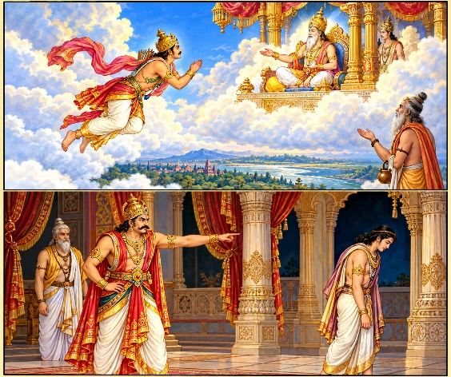
सगरकी भी प्रभा तथा भानुमती [नामक] दो भार्याएँ थीं। उन दोनोंने पूर्वकालमें पुत्रकी कामनासे अग्निसदृश और्व ऋषिकी आराधना की थी; और्वने प्रसन्न होकर उन्हें यथेष्ट उत्तम वर प्रदान किया। उनमेंसे एक [रानी] ने साठ हजार तथा दूसरीने वंशको बढानेवाले एक पुत्रको माँगा था। प्रभाने बहुत पुत्रोंको प्राप्त किया और भानुमतीने असमंजस नामक एक पुत्रको प्राप्त किया। उसके बाद प्रभाने जिन साठ हजार पुत्रोंको जन्म दिया था, वे पृथ्वीको खोदते हुए कपिलरूप विष्णुके हुंकाररूपी बाणोंसे दग्ध हो गये॥१५-१८॥
असमंजसके पुत्र अंशुमान् नामसे विख्यात हुए। उन [अंशुमान्] के पुत्र दिलीप थे और दिलीपसे भगीरथ हुए, जिन्होंने तपस्या करके भागीरथी गंगाका अवतरण कराया। भगीरथके श्रुत नामक पुत्र हुए। उन [श्रुत] के पुत्र नाभाग हुए, जो शिवभक्त तथा प्रतापशाली थे। उन [नाभाग] के अम्बरीष नामक पुत्र हुए। उन [अम्बरीष] से सिन्धुद्वीप उत्पन्न हुए। नाभागपुत्र अम्बरीषके द्वारा भुजाओंसे भली-भाँति पालित की गयी पृथ्वी [दैहिक, दैविक, भौतिक] तीनों प्रकारके तापोंसे पूर्णरूपसे विहीन हो गयी थी॥१९-२२॥
उन सिन्धुद्वीपके अयुतायु नामक पराक्रमी पुत्र हुए। अयुतायुके ऋतुपर्ण नामक पुत्र हुए; वे बुद्धिमान् तथा महायशस्वी थे। वे बलवान् राजा [ऋतुपर्ण] नलके सखा और दिव्य द्यूतक्रीड़ाके मर्मज्ञ थे। पुराणोंमें दृढ़व्रतवाले दो नल प्रसिद्ध हैं। एक तो वीरसेनका पुत्र था और दूसरा इक्ष्वाकुकुलमें उत्पन्न हुआ था। ऋतुपर्णके पुत्र राजा सार्वभौम हुए और उनके पुत्र सुदास हुए, वे इन्द्रके समान थे। सुदासके पुत्र राजा सौदास कहे गये हैं। उनका नाम मित्रसह था, किंतु वे कल्माषपाद नामसे प्रसिद्ध हुए। महातेजस्वी वसिष्ठने कल्माषपादके क्षेत्रमें इक्ष्वाकुकुलकी वृद्धि करनेवाले अश्मकको उत्पन्न किया। उत्तराके गर्भसे अश्मकके मूलक नामक पुत्र उत्पन्न हुए। वे परशुरामके भयसे स्त्रियोंसे घिरे रहते थे और वनमें अपनी रक्षाकी इच्छा करते हुए उत्तम नारीकवच धारण किये रहते थे। मूलकके पुत्र शतरथ नामक धर्मात्मा राजा थे। उन शतरथसे बलशाली राजा इलविल हुए। इलविलके पुत्र वृद्धशर्मा थे, जो ऐश्वर्यसम्पन्न तथा प्रतापशाली थे। उनके पुत्र विश्वसह थे, जिन्हें पितृकन्याने जन्म दिया था। उनके पुत्र दिलीप हुए; वे खट्वांग नामसे प्रसिद्ध हुए, जिन्होंने एक मुहूर्तका जीवन प्राप्त करके स्वर्गसे इस लोकमें आकर [अपनी] बुद्धि एवं सत्यके द्वारा तीनों अग्नियों तथा तीनों लोकोंको जीत लिया था। उनके पुत्र दीर्घबाहु हुए तथा उनसे रघु उत्पन्न हुए। उन रघुसे अज नामक पुत्र उत्पन्न हुए और उन [अज] से पराक्रमी दशरथ उत्पन्न हुए। उन दशरथसे ऐश्वर्यशाली, इक्ष्वाकुवंशको बढ़ानेवाले, वीर, धर्मज्ञ तथा लोकप्रसिद्ध राम और लक्ष्मण, भरत तथा महाबली शत्रुघ्न उत्पन्न हुए॥२३-३५॥
उनमें राम श्रेष्ठ, महातेजस्वी तथा महान् ओजस्वी थे। उन धर्मज्ञ रामने युद्धमें रावणका वध करके तथा यज्ञोंके द्वारा यजन करके दस हजार वर्षोंतक राज्य किया था। रामके कुश नामसे एक प्रसिद्ध पुत्र उत्पन्न हुए और दूसरे लव उत्पन्न हुए, जो परम भाग्यशाली, सत्यनिष्ठ और सद्बुद्धिवाले थे। कुशसे अतिथि उत्पन्न हुए। उन [अतिथि] के पुत्र निषध थे। निषधसे नल उत्पन्न हुए और उन [नल] से नभ उत्पन्न हुए। नभसे पुण्डरीक नामक पुत्र उत्पन्न हुए और उनसे क्षेमधन्वा उत्पन्न कहे गये हैं। उनके देवानीक नामक वीर तथा प्रतापी पुत्र हुए। उनके पुत्र अहीनर थे तथा उनके पुत्र सहस्राश्व थे। उनसे कल्याणमय चन्द्रावलोक हुए और फिर उनसे तारापीड हुए। उन [तारापीड] के पुत्र चन्द्रगिरि हुए और उनसे भानुचन्द्र हुए। उनसे श्रुतायु उत्पन्न हुए, उन्हें बृहद्वल कहा गया है, जिन महातेजस्वीको महाभारतके युद्धमें सुभद्रापुत्र [अभिमन्यु] ने मार डाला था। ये सब प्रायः इक्ष्वाकुवंशके उत्तराधिकारी राजा कहे गये हैं। इस वंशके प्रधान राजाओंका वर्णन मुख्यरूपसे कर दिया गया। ये सब शिवका ज्ञान प्राप्त करके परमेश्वरका अर्चनकर अपने ज्ञानके अनुसार विधिपूर्वक यज्ञोंके द्वारा यजन करके स्वर्ग चले गये; इनमें कुछ महात्मा तथा मुक्त आत्मावाले योगी हुए। [राजा] नृग एक ब्राह्मणके शापसे गिरगिटकी योनिको प्राप्त हो गये थे॥३६-४५॥
धृष्टके तीन पुत्र थे — धृष्टकेतु, यमबाल तथा पराक्रमी रणधृष्ट; वे सब परम धार्मिक थे॥४६॥
शर्यातिके आनर्त नामक पुत्र हुए और सुकन्या नामक पुत्री हुई। आनर्तके प्रतापशाली पुत्र रोचमान उत्पन्न हुए। रोचमानके पुत्र रेव हुए और रेवसे रैवत हुए जो ककुद्मी इस दूसरे नामसे भी प्रसिद्ध थे, वे सौ पुत्रोंवाले रेवके ज्येष्ठ पुत्र थे, जिनकी कन्या रेवती थी; वह राम (बलराम) की पत्नी कही गयी है। नरिष्यन्तके एक जितात्मा तथा महाबली पुत्र था। नाभागसे अम्बरीष हुए, वे विष्णुके भक्त एवं प्रतापशाली थे। उनके पुत्र ऋत हुए, जो ऐश्वर्यशाली तथा धर्मवेत्ताओंमें श्रेष्ठ थे। उनके पुत्र कृत हुए; उनके पुत्र सुधर्मा हुए, जो पृषित नामसे विख्यात हुए। करूषके पुत्र कारूष हुए, वे सब प्रसिद्ध कीर्तिवाले थे। पृषितने [अपने] गुरुकी गायका वध करके महान् पाप किया; वे च्यवनके शापसे शूद्रत्वको प्राप्त हुए थे — यह प्रसिद्ध है। दिष्टके पुत्र नाभाग हुए। उन [नाभाग] से भलंदन हुए, भलंदनके पुत्र अजवाहन हुए; वे पराक्रमी राजा थे। [हे ऋषियो!] मैंने संक्षेपमें विशाल भुजाओंवाले मनुपुत्रोंका तथा इक्ष्वाकुके पुत्र, पौत्र आदिका वर्णन कर दिया; अब मैं आप लोगोंसे ऐल वंशका वर्णन करता हूँ॥४७-५४॥
सूतजी बोले — हे द्विजो! इलाका पुरूरवा नामक पुत्र रुद्रभक्त तथा प्रतापी था। उसने उत्तरमें यमुनाके तटपर मुनियोंके द्वारा सेवित अत्यन्त पवित्र देश प्रयागमें निष्कंटक राज्य किया। प्रतिष्ठानपुरका स्वामी वह पुरूरवा प्रतिष्ठानपुरमें प्रतिष्ठित हुआ। उसके सात पुत्र हुए। वे सब महान् तेजस्वी, गन्धर्वलोकमें प्रसिद्ध, शिवभक्त तथा महाबली थे। आयु, मायु, अमायु, विश्वायु, वीर्यवान्, श्रुतायु, शतायु — ये उर्वशीके दिव्य पुत्र थे। आयुके पाँच महान् ओजवाले तथा वीर पुत्र हुए; स्वर्भानुकी पुत्री प्रभासे वे राजा उत्पन्न हुए थे। उनमें पहला [पुत्र] नहुष था, जो धर्मज्ञ एवं लोकप्रसिद्ध था। नहुषके छः पुत्र हुए। इन्द्रके समान तेजवाले तथा महान् ओजस्वी वे सब पितृकन्या विरजासे उत्पन्न हुए थे। यति, ययाति, संयाति, आयाति, अन्धक, विजाति — ये छः पुत्र थे; सब के सब प्रसिद्ध कीर्तिवाले थे। उनमें यति ज्येष्ठ था और ययाति उससे कनिष्ठ था। ज्येष्ठ यति मोक्षका इच्छुक था और वह ब्रह्मस्वरूप हो गया। उन [शेष] पाँचोंमें ययाति महान् बल तथा पराक्रमसे सम्पन्न था। उसने उशना (शुक्राचार्य) की पुत्री देवयानीको और वृषपर्वाकी पुत्री आसुरी शर्मिष्ठाको भार्यारूपमें प्राप्त किया था॥५५-६४॥
देवयानीने यदु और तुर्वसुको उत्पन्न किया; वे दोनों ही उत्तम कर्मवाले, प्रशंसनीय तथा विद्यामें प्रवीण थे। वृषपर्वाकी पुत्री शर्मिष्ठाने द्रुह्य, अनु एवं पूरुको जन्म दिया। उन ययातिके द्वारा सन्तुष्ट किये गये प्रतापी विप्रेन्द्र शुक्रने प्रसन्न होकर उन ययातिको दो अक्षय महान् तरकस और अत्यन्त चमकीला, सुन्दरतापूर्वक निर्मित, स्वर्णमय, दिव्य तथा मनके समान वेगवाले घोड़ोंसे जुता हुआ रथ प्रदान किया, जिससे वह कन्याको [अपने घर] लाया था। उसने उस रथसे छः महीनेके भीतर ही [सम्पूर्ण] पृथ्वीको जीत लिया था। ययाति युद्धमें देवताओं, दानवों तथा मनुष्योंसे अजेय था। वह शिवभक्त, पुण्यात्मा, धर्मनिष्ठ, सामंजस्य रखनेवाला, यज्ञ करनेवाला, क्रोधको जीत लेनेवाला तथा सभी प्राणियोंपर दया करनेवाला था॥६५-६९ ½॥
वह [रथ] सभी कौरवोंका तबतक उत्तम रथ था, जबतक कुरुवंशी महाराज जनमेजय थे। बुद्धिमान् [ऋषि] गर्गके शापके कारण पुरुवंशमें उत्पन्न परीक्षित्पुत्र राजा जनमेजयका वह रथ विनाशको प्राप्त हो गया। उन राजा जनमेजयने गर्गके पुत्र बालक अक्रूरको मार डाला था, जिससे उन्हें ब्रह्महत्या लग गयी। तब रुधिरकी गन्धवाले वे राजर्षि इधर-उधर भागने लगे। नगरवासियोंने उनका परित्याग कर दिया और उन्हें कहीं भी शान्ति नहीं मिल सकी। जब दुःखसे संतप्त उनको कहीं भी ज्ञान प्राप्त नहीं हो सका, तब वे व्यथित होकर शौनक ऋषिकी शरणमें गये। उदार बुद्धिवाले वे मुनि इन्द्रेति नामसे विख्यात थे। हे श्रेष्ठ द्विजो! इन्द्रेतिने उन राजा जनमेजयको पवित्र करनेके लिये उनसे अश्वमेधयज्ञका यजन कराया॥७०-७६॥
तदनन्तर वे महायशस्वी जनमेजय रुधिरकी गन्धसे तथा ब्रह्महत्याके पापसे मुक्त हो गये और उस यज्ञके अवभृथस्नानके समय वह दिव्य तथा उत्तम रथ लुप्त हो गया। तदनन्तर इन्द्रने प्रसन्न होकर उस वंशसे परिभ्रष्ट उस रथको चेदिदेशके राजा वसुको दे दिया। पुनः उनसे बृहद्रथने प्राप्त किया। उसके बाद कौरवनन्दन भीमने जरासंधको मारकर वह उत्तम रथ वासुदेवको प्रेमपूर्वक प्रदान कर दिया॥७७-७९॥
सूतजी बोले — हे श्रेष्ठ ब्राह्मणो! नहुषके पुत्र ययातिने अपने पुत्र पुरुको [राज्यपर] अभिषिक्त किया था; क्योंकि उस पुरुने उनका उपकार किया था। कनिष्ठ पुत्र पुरुका अभिषेक करनेकी इच्छावाले उन राजासे प्रमुख ब्राह्मणों तथा अन्य नागरिकोने यह वचन कहा था — ‘हे प्रभो! शुक्राचार्यके नाती तथा देवयानीके पुत्र ज्येष्ठ यदुका अतिक्रमण करके छोटा भाई [पुरु] राज्यका अधिकारी कैसे हो सकता है? हम लोग आपको यह समझा रहे हैं कि आप धर्मका पालन करें’॥८०-८३॥
॥इस प्रकार श्रीलिङ्गमहापुराणके अन्तर्गत पूर्वभागमें ‘इक्ष्वाकुवंशवर्णन’ नामक छाछठवाँ अध्याय पूर्ण हुआ॥६६॥
सड़सठवाँ अध्याय
राजर्षि ययातिका आख्यान तथा ययातिगाथा
ययाति बोले — श्रेष्ठ ब्राह्मण तथा सभी वर्णके लोग मेरा वचन सुनें — ‘मैं ज्येष्ठ पुत्रको कभी भी राज्य नहीं दूँगा। ज्येष्ठ पुत्र यदुने मेरी आज्ञाका पालन नहीं किया है। जो [पिताके प्रति] विपरीत बुद्धिवाला हो, वह सज्जनोंके द्वारा पुत्र नहीं माना गया है। सज्जन लोग माता-पिताके वचनको माननेवाले पुत्रकी ही प्रशंसा करते हैं। [वास्तवमें] वही पुत्र है, जो माता-पिताके साथ पुत्रभावमें स्थित होकर व्यवहार करता है। यदुने मेरी अवज्ञा की है; उसी प्रकार तुर्वसु, द्रुह्य तथा अनुने भी मेरी बहुत अवहेलना की है। पुरुने मेरे वचनका पालन किया है और विशेषरूपसे मेरा सम्मान किया है। मेरा छोटा पुत्र [पुरु] ही मेरा उत्तराधिकारी है, जिसने मेरे बुढ़ापेको स्वीकार किया। शुक्राचार्यने देवयानीके लिये मुझे जरावस्था प्राप्त होनेकी आज्ञा दी थी। जब मैंने उनसे प्रार्थना की, तब उन्होंने पुनः बुढ़ापेको संचारिणी बना दिया। काव्य तथा उशना नामधारी शुक्रने स्वयं मुझे वर प्रदान किया था कि जो पुत्र आपके अनुकूल व्यवहार करे, वही आपके राज्यका अधिकारी होगा। अतः [हे ब्राह्मणो!] अब आपलोग भी मुझे आज्ञा दें कि यह पुरु राज्यपर अभिषिक्त किया जाय’॥१-७ ½॥
प्रजागण बोले — जो पुत्र गुणसम्पन्न, सर्वदा माता-पिताका हित करनेवाला तथा समस्त कल्याणके योग्य हो, वह छोटा होनेपर भी [राज्यका] उत्तराधिकारी होता है। अतः पुत्र पुरु ही राज्यके योग्य है, जिसने आपके वचनका पालन किया है; शुक्रके वरदानसे विपरीत [कार्य] नहीं किया जा सकता है॥८-९ ½॥
सूतजी बोले — इस प्रकार जब प्रसन्न हुए नगरवासियोंने नहुषपुत्र [ययाति]-से कहा, तब उन्होंने अपने पुत्र पुरुको राज्यपर अभिषिक्त करके तुर्वसुको दक्षिण-पूर्व दिशामें रहनेकी आज्ञा प्रदान की। उसके बाद राजा [ययाति]-ने ज्येष्ठ पुत्र यदुको दक्षिण दिशामें नियोजित कर दिया और उन दोनों द्रुह्य तथा अनुको [क्रमशः] पश्चिम तथा उत्तर दिशामें नियुक्त कर दिया। नहुषपुत्र ययातिने सात द्वीपोंवाली सागरोंसहित पृथ्वीको जीतकर पुत्रोंमें राज्यको तीन भागोंमें बाँट दिया। इस प्रकार पुत्रोंमें राज्य संक्रमित करनेवाले तथा हर्षपूर्ण मनवाले राजा बन्धुओंपर उनका भार सौंपकर प्रसन्न हो गये॥१०-१४॥
महाराज ययातिके द्वारा इस विषयमें पहले ये गाथाएँ गायी गयी थीं, जिनके द्वारा मनुष्य जिस प्रकार कछुआ अपने सभी अंगोंको समेट लेता है, वैसे ही अपनी समस्त कामनाओंको समेट लेता है और उन्हींसे वह श्रीमान् हो जाता है, अन्यथा नहीं; चाहे वह करोड़ों कर्म करनेवाला ही क्यों न हो। कामनाओंके उपभोगसे इच्छा शान्त नहीं होती है; जैसे हविके द्वारा अग्नि बढ़ती है, उसी प्रकार यह निरन्तर बढ़ती ही जाती है। पृथ्वीपर जो भी व्रीहि, जौ, सोना, पशु तथा स्त्रियाँ हैं, वे सब वस्तुएँ [किसी] एकके लिये भी पर्याप्त नहीं हैं — यह मानकर [मनुष्यको] कामनामुक्त हो जाना चाहिये। जब मनुष्य सभी प्राणियोंके प्रति मन, वचन तथा कर्मसे पापमय भाव नहीं रखता है, तब वह ब्रह्मको प्राप्त होता है। जब वह दूसरेसे डरता नहीं, दूसरे लोग भी उससे नहीं डरते; जब वह [दूसरेकी] निन्दा नहीं करता तथा उससे द्वेष नहीं करता, तब वह ब्रह्मको प्राप्त होता है। जो तृष्णा दुष्ट बुद्धिवालोंके द्वारा बड़ी कठिनाईसे त्यागनेयोग्य है, जो [मनुष्यके] जीर्ण होनेपर भी [स्वयं] जीर्ण नहीं होती तथा जो प्राणका अन्त करनेवाला रोग है; उस तृष्णाका त्याग कर देनेवालेको सुख होता है। जीर्ण व्यक्तिके केश जीर्ण हो जाते हैं, जीर्ण व्यक्तिके दाँत जीर्ण हो जाते हैं और उसके नेत्र तथा कान भी जीर्ण हो जाते हैं; केवल तृष्णा ही [सदा] उपद्रवविहीन रहती है अर्थात् यह सदा तरुण बनी रहती है। सभी प्राणी स्वभावतः ही जीर्ण होते हैं; इसमें सन्देह नहीं है, किंतु [मनुष्यके] जीर्ण हो जानेपर भी जीवनकी आशा एवं धनकी आशा जीर्ण नहीं होती है। संसारमें जो कामसुख है तथा जो स्वर्गका महान् सुख है, वह तृष्णाके नाशके सुखकी सोलहवीं कलाके भी बराबर नहीं है॥१५-२३ ½॥
ऐसा कहकर वे राजर्षि [ययाति] पत्नीके साथ वनमें चले गये। उन महायशस्वीने वहीं भृगुतुंग शिखरपर निराहार रहकर [महान्] तपस्या करके भार्यासहित स्वर्गको प्राप्त किया। उनके ये पवित्र तथा देवर्षियोंद्वारा सत्कृत पाँच वंश हैं, जिनके द्वारा सम्पूर्ण पृथ्वी उसी प्रकार व्याप्त है, जैसे वह सूर्यकी रश्मियोंसे व्याप्त है। ययातिके पुण्यप्रद चरित्रको पढ़ने तथा सुननेवाला मनुष्य धनी, सन्तानयुक्त, आयुष्मान्, कीर्तिशाली एवं बुद्धिमान् हो जाता है और सभी पापोंसे मुक्त होकर शिवलोकमें प्रतिष्ठा प्राप्त करता है॥२४-२८॥
॥इस प्रकार श्रीलिङ्गमहापुराणके अन्तर्गत पूर्वभागमें ‘सोमवंशमें ययातिचरित’ नामक सड़सठवाँ अध्याय पूर्ण हुआ॥६७॥
अड़सठवाँ अध्याय
ययातिपुत्र यदुके वंशका वर्णन
सूतजी बोले — [हे ऋषियो!] अब मैं [ययातिके] उत्तम तेजवाले ज्येष्ठ पुत्र यदुके वंशका क्रमानुसार संक्षेपमें वर्णन करूँगा; मुझ कहनेवालेसे [आपलोग] सुनें। यदुके देवपुत्रतुल्य पाँच पुत्र हुए; उनमें सहस्त्रजित् ज्येष्ठ पुत्र था और क्रोष्टु, नील, अजक तथा लघु अन्य पुत्र थे। सहस्त्रजित्का पुत्र उन्हींके समान था। वह शतजित् नामक राजा हुआ। शतजित्के महाकीर्तिशाली तीन पुत्र कहे गये हैं; वे हैहय, हय तथा राजा वेणुहय नामवाले थे। हैहयका जो पुत्र हुआ, वह धर्म नामसे प्रसिद्ध है। हे विप्रो! उसका धर्मनेत्र [नामक] पुत्र हुआ ऐसा सुना गया है। धर्मनेत्रका पुत्र कीर्ति था और उस [कीर्ति] का पुत्र संजय था। संजयका महिष्मान् नामक धार्मिक पुत्र था और महिष्मान्का पुत्र भद्रश्रेण्य था; वह प्रतापशाली था। भद्रश्रेण्यका पुत्र दुर्दम नामक राजा था। दुर्दमका बुद्धिमान् पुत्र धनक नामसे प्रसिद्ध था॥१-७॥
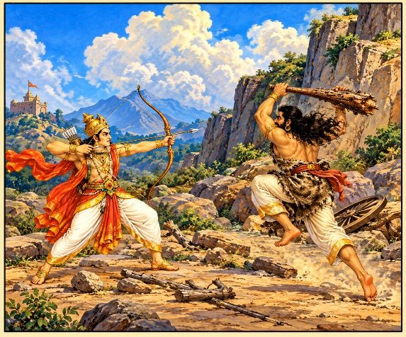
धनकके कृतवीर्य, कृताग्नि, कृतवर्मा तथा कृतौजा — ये चार लोकमान्य पुत्र उत्पन्न हुए। उन कृतवीर्यसे कार्तवीर्यार्जुन (सहस्रार्जुन) उत्पन्न हुआ; वह [अपनी] हजार भुजाओंके द्वारा सातों द्वीपोंका श्रेष्ठ स्वामी हो गया था। नारायणस्वरूपवाले परशुराम उस समय उसकी मृत्युका कारण बने। उसके सौ पुत्र थे; उनमेंसे पाँच पुत्र महारथी, अस्त्रोंके ज्ञाता, बलशाली वीर, धर्मात्मा तथा मनस्वी थे। वे शूर, शूरसेन, धृष्ट, कृष्ण तथा जयध्वज [नामवाले] थे। राजा जयध्वज अवन्तीयोंका स्वामी था। जयध्वजको तालजंघ नामक महाबली पुत्र हुआ। उस [तालजंघ] के सौ पुत्र हुए, जो इस लोकमें ‘तालजंघ’ नामसे प्रसिद्ध हुए। उनमें ज्येष्ठ [पुत्र] वीतिहोत्र महापराक्रमी राजा हुआ। वृष आदि उसके जो अन्य पुत्र थे, वे पुण्यकर्मवाले थे। उनमें वृष ही वंशको चलानेवाला हुआ। उसका पुत्र मधु हुआ। मधुके सौ पुत्र थे। उस [मधु] का पुत्र वृष्णि ही वंशप्रवर्तक हुआ। वृष्णिके सभी वंशज ‘वृष्णि’ तथा मधुके वंशज माधव कहे गये हैं। यदुवंशसे सम्बन्धित यादव हैहय कहे जाते हैं॥८-१५॥
उन महात्मा हैहयोंके ये पाँच वंश हैं — वीतिहोत्र, हर्यात, भोज, अवन्ति तथा शूरसेन; ये तालजंघ भी कहे गये हैं। शूर, शूरसेन, वृष, कृष्ण एवं पाँचवाँ जयध्वज — ये उत्तम हैहय कहे गये हैं। शूरसेनके वंशज शूर तथा शूरवीर नामवाले थे; हे अनघ [ऋषियो]! उन महात्माओंके देश भी ‘शूरसेन’ — इस नामवाले कहे गये हैं।
वीतिहोत्रका पुत्र अनर्त नामसे प्रसिद्ध हुआ। कृष्णका दुर्जय नामक पुत्र हुआ, वह शत्रुओंका दमन करनेवाला था। अब राजर्षि क्रोष्टुके उत्तम पौरुषवाले वंशका श्रवण कीजिये, जिसके कुलमें वृष्णिवंशको चलानेवाले विष्णु (कृष्ण) उत्पन्न हुए। क्रोष्टुका एक ही वृजिनीवान् नामक महायशस्वी पुत्र हुआ। उसका पुत्र स्वाती हुआ और उस [स्वाती] का पुत्र कुशंकु हुआ। उसके बाद संतानकी इच्छा रखते हुए उन महाबली कुशंकुने अनेक प्रकारके पर्याप्त दक्षिणावाले महायज्ञोंके द्वारा यजन किया। [इसके परिणामस्वरूप] उसका चित्ररथ नामक पुत्र उत्पन्न हुआ, जो [शुभ] कर्मोंसे युक्त था। चित्ररथका पुत्र पराक्रमशाली शशबिन्दु था; उसने विपुल दक्षिणा देकर यज्ञ करके उत्तम तथा पवित्र व्रत आदि किया। [इस प्रकार] वह महाज्ञानी, महापराक्रमी तथा बहुत प्रजाओंवाला चक्रवर्ती राजा हो गया॥१६-२५॥
शशबिन्दुके एक लाख (सहस्राणाम् शतं) पुत्र उत्पन्न हुए; लोग उनके पुत्रोंमें अनन्तकको सबसे उत्तम कहते हैं। अनन्तकसे यज्ञ नामक पुत्र उत्पन्न हुआ। यज्ञका पुत्र धृति हुआ। उस [धृति] का पुत्र उशना हुआ; उस परम धार्मिकने इस पृथ्वीको प्राप्त करके एक सौ अश्वमेध यज्ञ किया। उशनाका पुत्र सितेषु नामक राजा कहा गया है। उसका पुत्र मरुत था; वह वंशको बढ़ानेवाला राजर्षि हुआ। पराक्रमी कम्बलबर्हि [उस] मरुतका पुत्र बताया गया है। कम्बलबर्हिका पुत्र रुक्मकवच हुआ; वह विद्वान् था। रुक्मकवचने युद्धमें कवच तथा धनुष धारण करनेवाले वीरोंको [अपने] तीक्ष्ण बाणोंसे मारकर उत्तम श्री प्राप्त कर ली थी। उस धर्मात्माने अश्वमेध-यज्ञमें [यज्ञ करानेवाले] ऋत्विजोंको पृथ्वीका दान किया था॥२६-३१॥
रुक्मकवचसे शत्रुवीरोंका संहार करनेवाला परावृत् उत्पन्न हुआ। [उस] परावृत्से पाँच महाशक्तिशाली पुत्र उत्पन्न हुए — रुक्मेषु, पृथुरुक्म, ज्यामघ, परिघ और हरि। पिताने परिघ तथा हरिको विदेहदेशोंमें स्थापित किया। रुक्मेषु राजा हुआ और पृथुरुक्म उसके आश्रयमें रहने लगा।
उन सबके द्वारा [राज्यसे] हटा दिया गया राजा ज्यामघ आश्रममें निवास करने लगा। शान्त होकर वनमें निवास करनेवाले उस ज्यामघको ब्राह्मणोंने ज्ञान प्रदान किया और ध्वजा तथा रथ धारण करनेवाला वह [अपना] धनुष लेकर दूसरे देशमें चला गया। अन्य लोगोंद्वारा त्यक्त वह ऋक्षवान्-पर्वतपर जाकर अपनी भार्याके साथ नर्मदा नदीके तटपर अकेला निवास करने लगा॥३२-३६॥
ज्यामघकी पत्नी शैब्या शीलसम्पन्न तथा पतिव्रता थी। उस सौभाग्यशालिनी एवं पतिव्रता शैब्याने कठोर तपस्याके द्वारा [अपनी] वृद्धावस्थामें विदर्भ नामक पुत्रको जन्म दिया। राजकुमारीके गर्भसे राजा विदर्भके क्रथ तथा कैशिक नामक दो पुत्र उत्पन्न हुए; वे विद्वान्, पराक्रमी एवं युद्धमें प्रवीण थे। उसका तीसरा पुत्र रोमपाद भी था; उसका पुत्र बभ्रु कहा गया है। उस [बभ्रु] का पुत्र सुधृति था; वह विद्वान् तथा परम धार्मिक था। उस विदर्भसे जो कैशिक नामक पुत्र था, उसीसे चैद्यवंश कहा गया है। विदर्भका जो पुत्र क्रथ था, उसका पुत्र कुन्ति हुआ। कुन्तिसे वृत उत्पन्न हुआ और उस [वृत] से प्रतापी रणधृष्ट उत्पन्न हुआ॥३७-४१॥
रणधृष्टका पुत्र निधृति था; वह शत्रुवीरोंका संहार करनेवाला था। निधृतिका दशार्ह नामक पुत्र था, जो बड़े-बड़े शत्रुओंका वध करनेवाला था। दशार्हका पुत्र व्याप्त था और उसका पुत्र जीमूत था। जीमूतका पुत्र विकृति था और उस [विकृति] का पुत्र भीमरथ था। उसके बाद भीमरथके नवरथ [नामक] पुत्र उत्पन्न हुआ; वह सदा दान तथा धर्ममें लगा रहता था और सत्य तथा सदाचारके प्रति परायण था। उसका पुत्र दृढ़रथ था और उस [दृढरथ] का पुत्र शकुनि था। उस शकुनिसे करम्भ उत्पन्न हुआ और उस [करम्भ] से देवरात उत्पन्न हुआ॥४२-४५॥
देवरातसे देवराति उत्पन्न हुआ; वह महायशस्वी राजा था। उससे देवपुत्रतुल्य देवक्षत्र नामक पुत्र उत्पन्न हुआ। देवक्षत्रको मधु नामक पुत्र हुआ; जो ऐश्वर्यशाली, महायशस्वी तथा मधुवंशकी वृद्धि करनेवाला राजा हुआ।
मधुसे कुरुवंश नामक पुत्र हुआ। कुरुवंशसे अनु हुआ और उस [अनु] से पुरुषश्रेष्ठ पुरुत्वान् उत्पन्न हुआ। पुरुत्वान्से वैदर्भी भद्रवतीके गर्भसे अंशुने जन्म लिया। अंशुने ऐक्ष्वाकीसे विवाह किया; उस [अंशु] से सत्त्व उत्पन्न हुआ। सत्त्वसे सात्त्वत उत्पन्न हुआ; वह समस्त गुणोंसे सम्पन्न तथा कुलकी वृद्धि करनेवाला था॥४६-४९॥
[हे ऋषियो!] मैंने आपलोगोंसे ज्यामघकी सृष्टिका विस्तारपूर्वक वर्णन कर दिया। जो [व्यक्ति] ज्यामघकी सृष्टिको पढ़ता अथवा सुनता है; वह दीर्घकालतक जीवित रहता है, राज्य तथा सुख प्राप्त करता है और [अन्तमें] स्वर्गकी प्राप्ति करता है॥५०-५१॥
॥इस प्रकार श्रीलिङ्गमहापुराणके अन्तर्गत पूर्वभागमें ‘वंशानुवर्णन’ नामक अड़सठवाँ अध्याय पूर्ण हुआ॥६८॥
उनहत्तरवाँ अध्याय
चन्द्रवंश-वर्णनमें भगवान् श्रीकृष्णके अवतारकी कथा तथा संक्षेपमें कृष्णचरितका वर्णन
सूतजी बोले — [हे ऋषियो!] सत्यसम्पन्न सात्त्वतने तेजस्वी भजन, दिव्य राजा देवावृध, महाभाग्यशाली अन्धक तथा यदुनन्दन वृष्णि — इन चार पुत्रोंको उत्पन्न किया। अब उनके चारों वंशोंको विस्तारपूर्वक सुनिये॥१-२॥
तेजस्वी भजनके द्वारा सृञ्जयीसे अयुतायु, शतायु तथा बलवान् हर्षकृत् उत्पन्न हुए बताये गये हैं॥३॥
[सात्त्वतके] उन पुत्रोंमें राजा देवावृधने ‘मेरे सर्वगुणसम्पन्न पुत्र उत्पन्न हो’ — ऐसा स्मरण करते हुए घोर तपस्या की। तब उसे बभ्रु नामक पुत्र उत्पन्न हुआ, जो पवित्र यशवाला उत्तम राजा था। वंशपरम्पराके प्राचीन ज्ञाता महान् आत्मावाले देवावृधके गुणोंकी प्रशंसा करते हुए यह गाथा गाते हैं — बभ्रुके विषयमें हमलोग जैसा दूरसे सुनते हैं, वैसा ही समीपसे देखते हैं। देवताओंके समान देवावृधकी तरह बभ्रु मनुष्योंमें श्रेष्ठ है।
चौदह हजार पैंसठ [ऐसे] पुरुष थे, जिन्होंने देवावृधके पुत्र बभ्रुसे अमृतत्व प्राप्त किया था। वह यज्ञ करनेवाला, दानबुद्धिवाला, पराक्रमी, ब्राह्मणोंकी रक्षा करनेवाला, दृढ़व्रतसे युक्त, कीर्तिशाली, महातेजस्वी तथा सात्त्वतोंमें महारथी था। उसके वंशमें देवतुल्य भोजलोग उत्पन्न हुए॥४-९॥
गान्धारी तथा माद्री — ये वृष्णिकी भार्याएँ थीं। गान्धारीने सुमित्र तथा मित्रनन्दनको जन्म दिया। माद्रीने देवमीढुष नामक पुत्रको उत्पन्न किया, उसके बाद उसने अनमित्र तथा शिनि नामक पुत्रोंको उत्पन्न किया; वे दोनों उत्तम पुरुष थे॥१०-११॥
अनमित्रका पुत्र निघ्न हुआ। निघ्नके दो पुत्र हुए — प्रसेन तथा महाभाग्यशाली सत्राजित्। सूर्य उस सत्राजित्का प्राणतुल्य मित्र था। सूर्यने उसे स्यमन्तक नामक मणि दी थी। वह मणि पृथ्वीपर सभी रत्नोंमें श्रेष्ठ थी। किसी समय वह प्रसेन मणिसे युक्त होकर आखेटके लिये गया हुआ था; एक महाभयंकर सिंहने उसका वध कर दिया, उस समय वह असहाय था॥१२-१४ ½॥
वृष्णिके कनिष्ठ पुत्र शिनिसे सत्यक नामक सत्यवादी तथा सत्यनिष्ठ पुत्र उत्पन्न हुआ। उसका पुत्र युयुधान था; जो सात्यकि नामसे प्रसिद्ध था। वह शिनिका प्रतापशाली नप्ता (नाती) था। युयुधानका पुत्र असंग तथा उस [असंग] का पुत्र कुणि हुआ। कुणिका पुत्र युगन्धर हुआ। ये शिनिके वंशज कहे गये हैं॥१५-१७॥
माद्री तथा वृष्णिसे पुत्र युधाजित् उत्पन्न हुआ; वह श्वफल्क नामसे विख्यात हुआ। वह तीनों लोकोंका हित करनेवाला था। धर्मात्मा महाराज श्वफल्क जहाँ रहते थे, वहाँ न व्याधिभय रहता था और न अनावृष्टिभय रहता था। उन श्वफल्कने काशिराजकी पुत्रीको भार्याके रूपमें प्राप्त किया था। काशिराजने अपनी गान्दिनी नामक कन्याको उन्हें प्रदान किया था॥१८-२०॥
वह अपनी माताके गर्भमें बहुत वर्षोंतक स्थित रही और जब वहाँ निवास करती हुई उसने जन्म नहीं लिया, तब पिताने गर्भमें विद्यमान उस कन्यासे कहा था — ‘तुम शीघ्र जन्म ग्रहण करो, तुम्हारा कल्याण हो, तुम [गर्भमें ही] क्यों रुकी हुई हो?’ तब गर्भमें स्थित उस कन्या गान्दिनीने उनसे कहा — ‘हे पितः! यदि आप तीन वर्षोंतक प्रतिदिन एक गाय ब्राह्मणको दानमें दें, तब मैं गर्भसे बाहर निकलूँगी।’ इसपर पिताने कहा — ‘वैसा ही होगा।’ इसके बाद पिताने उसकी कामना पूर्ण की। उसी कन्यासे श्वफल्कके द्वारा अक्रूर उत्पन्न कहा गया है, जो दानी, पराक्रमी, यज्ञ करनेवाला, विद्वान्, अतिथिप्रिय तथा विपुल दक्षिणा देनेवाला था। शैवकी रत्ना नामक कन्या थी, उसीको अक्रूरने [भार्यारूपमें] प्राप्त किया था। [हे ऋषियो!] उसने इस [कन्या] से जिन पुत्रोंको उत्पन्न किया, उन्हें आप सुनिये — वे उपमन्यु, मागु, वृत, जनमेजय, गिरिरक्ष, उपेक्ष, शत्रुघ्न, अरिमर्दन, धर्मभृत्, दृष्टधर्मा, गोधन, वर, आवाह तथा प्रतिवाह [नामवाले] थे और सुधारा नामक एक सुन्दर कन्या भी उत्पन्न हुई थी। अक्रूरको उग्रसेनकी कन्यासे देववान् तथा उपदेव नामक दो पुत्र उत्पन्न हुए; वे कुलको आनन्द प्रदान करनेवाले एवं देवतुल्य थे॥२१-२८ ½॥
सुमित्रको चित्रक नामक महायशस्वी पुत्र उत्पन्न हुआ। चित्रकके विपृथु, पृथु, अश्वग्रीव, सुबाहु, सुधासूक, गवेक्षण, अरिष्टनेमि, अश्व, धर्म, धर्मभृत्, सुभूमि, बहुभूमि [नामक] पुत्र उत्पन्न हुए और श्रविष्ठा तथा श्रवणा [नामक] दो कन्याएँ उत्पन्न हुईं। काशिराजकी पुत्रीने अन्धकसे कुकुर, भजमान, शुचि तथा कम्बलबर्हि नामक चार पुत्रोंको उत्पन्न किया। कुकुरका पुत्र वृष्णि हुआ और उस वृष्णिसे शूर नामक पुत्र उत्पन्न हुआ। उसका पुत्र कपोतरोमा हुआ; वह महाबलवान् था। उस [कपोतरोमा] का पुत्र विलोमक हुआ। उसका पुत्र नल हुआ; वह तुम्बुरु (गन्धर्व) का मित्र और विद्वान् था। वह चन्दनानकदुन्दुभि नामसे प्रसिद्ध हुआ॥२९-३४॥
उससे अभिजित् नामक पुत्र उत्पन्न हुआ। उस [अभिजित्] का पुत्र पुनर्वसु हुआ। उस श्रेष्ठ राजाने पुत्रके लिये अश्वमेधयज्ञ किया था। उस यज्ञमें जब मन्त्रोंका उच्चारण हो रहा था, तब पूजनकर्ताओंके मध्य पुनर्वसुने जन्म लिया था। वह विद्वान्, सर्वज्ञ, दानी तथा यज्ञ करनेवाला हुआ। उस अभिजित्के जुड़वाँ पुत्र भी उत्पन्न हुए; कीर्तिमानोंमें श्रेष्ठ वे दोनों आहुक तथा आहुकि नामवाले कहे गये हैं। आहुकसे काश्यकी पुत्रीको देवक एवं उग्रसेन नामक दो पुत्र उत्पन्न हुए; वे दोनों देवताओंके पुत्रोंके समान थे। राजा देवकके देववान्, उपदेव, सुदेव तथा देवरक्षित — ये देवतुल्य पुत्र उत्पन्न हुए। उनकी सात बहनें थीं। राजाने उन्हें वसुदेवको दे दिया। वे वृषदेवा, उपदेवा, देवरक्षिता, श्रीदेवा, शान्तिदेवा, सहदेवा तथा देवकी [नामवाली] थीं। उनमें देवकी वरिष्ठ एवं परम सुन्दरी थी॥३५-४१॥
उग्रसेनके नौ पुत्र थे; कंस उनमें ज्येष्ठ था। उन सबके सैकड़ों-हजारों पुत्र तथा पौत्र थे। देवककी पुत्री [देवकी] बुद्धिमान् वसुदेवकी भार्या हुई; वह देवताओंकी भी वन्दनीया तथा पूजनीया और पतिव्रता थी। बाह्निकपुत्री पौरवी महाभाग्यशालिनी रोहिणी भी आनकदुन्दुभि (वसुदेव) की पत्नी थी; वह देवताओंके द्वारा भी पूजाके योग्य थी॥४२-४४॥
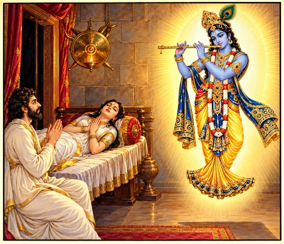
कंसके भयसे [स्वयं देवकीके गर्भसे निकलकर] रोहिणीके गर्भका आश्रय लेनेवाले, बलशालियोंमें श्रेष्ठ, हलका आयुध धारण करनेवाले तथा शान्त तेजवाले बलरामको रोहिणीने उत्पन्न किया; परम सुन्दर छः गर्भोके [कंसद्वारा] वध कर दिये जानेके बाद और बलरामके जन्म लेनेके बाद बुद्धिमान् वसुदेवने देवकीसे श्रीकृष्णको उत्पन्न किया। वे ही परमात्मा, देवदेव तथा जनार्दन हैं और रजत (चाँदी) के समान कान्तिवाले हलायुध (बलराम) भगवान् अनन्त (शेष) हैं। वे जनार्दन (श्रीविष्णु) भृगुके शापके बहाने मानवशरीर धारण करना स्वीकार करते हुए उस देवकीसे वसुदेवके पुत्ररूपमें उत्पन्न हुए थे॥४५-४८॥
उसी समय देवदेव [श्रीविष्णु] की आज्ञासे उमाके देहसे उत्पन्न योगनिद्रा [भगवती] कौशिकीने यशोदाकी पुत्रीके रूपमें जन्म लिया था। वे ही सभी देवताओंसे नमस्कृत साक्षात् प्रकृति हैं और धर्म तथा मोक्षका फल देनेवाले भगवान् कृष्ण पुरुष हैं॥४९-५०॥
उस समय कंससे अपने पुत्रकी रक्षा करते हुए बुद्धिमान् वसुदेवने चार भुजाओंवाले, विशाल नेत्रोंवाले, श्रीवत्सके चिह्नसे युक्त, शंख-चक्र-गदा-पद्म धारण करनेवाले जनार्दनको यशोदाको देकर उस कन्याको ले लिया। लोकोंके रक्षक तथा अपनी इच्छासे शरीर धारण करनेवाले इन विष्णुको देकर उन्होंने नन्दगोपसे कहा — ‘इसकी रक्षा कीजिये’। अमित तेजवाले देवदेव शिवकी कृपासे बलरामके साथ उन वरदायक, परमेश्वर, पृथ्वीका भार दूर करनेके लिये अवतीर्ण तथा जगत्के गुरु [श्रीकृष्ण] को प्रदान करके कहा था — ‘इससे यादवोंका सब प्रकारका कल्याण होगा। यह देवकीका वही पुत्र है, जो हम लोगोंके कष्टोंको दूर करेगा’॥५१-५५ ½॥
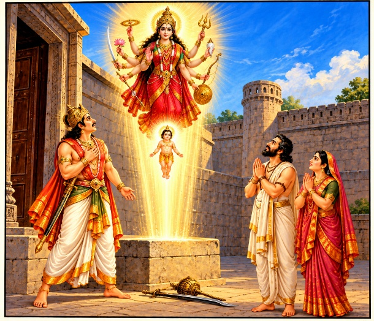
उसके बाद वसुदेवने उग्रसेनपुत्र कंससे सुन्दर लक्षणोंवाली उस उत्पन्न हुई कन्याके विषयमें बताया — हे कंस! हे सुव्रत! यह देवकीका आठवाँ गर्भ ही तुम्हारा मृत्युरूप होगा; इसमें सन्देह नहीं — यह पुरातन वाणी है। तब कंसने उसे मारना आरम्भ किया। किंतु [उसके हाथसे छूटकर] आकाशमें जाकर उस अष्टभुजा देवीने मेघके समान गम्भीर वाणीमें कहा — ‘[हे कंस!] अब तुम अपने देहकी रक्षा करो। मायावी कंसके स्वरूपमें रहनेवाले इस देहकी रक्षा करते हुए तुम्हारी मृत्यु आ गयी है; अरे, मूर्ख! तुमने कैसा अपराध कर डाला, तुम्हारा अन्त करनेवाला तो उत्पन्न हो चुका है’॥५६-६०॥
उस कंसने भयसे देवकीके आठवें गर्भको मार डालनेका प्रयत्न किया था; क्योंकि उसने स्मरण कर रखा था कि जिससे उसकी मृत्यु निर्धारित है, वह देवकीका आठवाँ पुत्र है। हे श्रेष्ठ मुनियो! प्रतीकार करनेमें कंसका जो भी प्रयास था, वह व्यर्थ हो गया और [भगवान्] श्रीहरिके प्रभावसे उस वाणीके द्वारा वह कंस जड़ कर दिया गया था। [अन्तमें] अक्लिष्ट कर्म करनेवाले उन श्रीकृष्णने कंसको भी मार डाला और देवताओं तथा ब्राह्मणोंका वध करनेवाले अन्य बहुत-से दुष्टोंको भी मार डाला॥६१-६३॥
उन श्रीकृष्णके प्रद्युम्न आदि बहुत-से पुत्र बताये गये हैं; वे सब युद्धमें प्रवीण थे। कृष्णके पुत्र कृष्णके ही समान थे। श्रीकृष्णके इन सभी पुत्रोंमें चारुदेष्ण आदि पुत्र विशिष्ट तथा बलवान् थे; वे रुक्मिणीके पुत्र शत्रुओंका विनाश करनेवाले थे। कृष्णकी सोलह हजार एक सौ भार्याएँ थीं; उन सबमें रुक्मिणी [उनकी] ज्येष्ठ पत्नी थी। अक्लिष्ट कर्म करनेवाले श्रीकृष्णने उस [रुक्मिणी] के साथ बारह वर्षोंतक उपवास करते हुए [केवल] वायुभक्षणसे पुत्रहेतु [भगवान्] शिवका पूजन किया था। [परिणामस्वरूप] श्रीकृष्णने शूलपाणि (शिव) की कृपासे चारुदेष्ण, सुचारु, चारुवेष, यशोधर, चारुश्रवा, चारुयश, प्रद्युम्न तथा साम्ब — इन पुत्रोंको प्राप्त किया था॥६४-६९॥
रुक्मिणीके उन वीर पुत्रोंको तथा रुक्मिणीको देखकर बुद्धिमान् कृष्णकी पत्नी जाम्बवतीने कृष्णसे कहा — ‘हे कमलनयन! आप प्रसन्न होकर मुझे विशिष्ट, महान् गुणी तथा शिवजीको प्रिय पुत्र प्रदान कीजिये’। तदनन्तर जाम्बवतीका वचन सुनकर अनिन्द्य एवं तपोनिधि जगन्नाथ श्रीहरिने तप करना प्रारम्भ किया॥७०-७२॥
शंख, चक्र तथा गदा धारण करनेवाले उन जनार्दन नारायण श्रीकृष्णने मुनि व्याघ्रपादके श्रेष्ठ आश्रममें जाकर उन अंगिरागोत्रीय ऋषिको देखकर उन्हें प्रणाम करके उनकी आज्ञासे दिव्य पाशुपतयोग प्राप्त किया॥७३-७४॥
दाढ़ी तथा सिरको मुण्डित कराकर, शरीरको घृतसे अनुलिप्तकर तथा मूँजकी मेखला धारण करके [व्रतमें] दीक्षित होकर परंतप भगवान् श्रीकृष्ण तपस्या करने लगे। उन श्रीकृष्णने हाथोंको ऊपर उठाकर, आश्रयरहित होकर तथा पैरके अँगूठेके अग्रभागपर स्थित होकर क्रमशः फल, जल एवं वायुका आहार ग्रहण करते हुए तीन ऋतुओंतक तपस्या की॥७५-७६॥
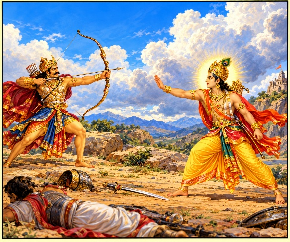
उनकी तपस्यासे सन्तुष्ट होकर [भगवान्] रुद्रने महात्मा कृष्णको अनेक वर प्रदान किया तथा जाम्बवतीसे साम्ब नामक पुत्र प्राप्त होनेका वर प्रदान किया। तब श्रीकृष्णकी भार्या जाम्बवती पुत्र साम्बको प्राप्त करके उसी प्रकार परम हर्षित हुई, जैसे अदिति आदित्यको प्राप्त करके हर्षित हुई थीं॥७७-७८॥
हे मुनिश्रेष्ठो! उन श्रीकृष्णने बुद्धिमान् रुद्रके शापके कारण बाणासुरकी हजार भुजाओंको काट डाला था। इसके बाद बलरामको सहायक बनाकर उन्होंने युद्धक्षेत्रमें लीलापूर्वक [अनेक] दैत्योंका तथा दुष्ट राजाओंका वध किया॥७९-८०॥
यज्ञवराहसे उत्पन्न दैत्यश्रेष्ठ नरकासुरका वध करके अतुलनीय पराक्रमवाले तथा महाबली उन श्रीकृष्णने ऊर्ध्वचक्रवाले वायुदेव तथा ब्रह्मापुत्र महात्मा नारदके वरदानसे अपने उपभोगके योग्य सोलह हजार एक सौ कन्याओंको ग्रहण किया था॥८१-८२॥
उन्होंने विप्रोंके शापके बहाने अपने कुलका संहार कर डाला और उस कुलका संहरण करके वे अच्युत (श्रीकृष्ण) प्रभासक्षेत्रमें रहने लगे। तदनन्तर वृद्धावस्थाके कष्टका हरण करनेवाले उन श्रीकृष्णका द्वारकामें रहते हुए सौ वर्षसे अधिक समय व्यतीत हुआ॥८३-८४॥
उन्होंने [द्वारकाके समीपवर्ती] पिण्डारकक्षेत्रमें निवास करनेवाले विश्वामित्र, कण्व, बुद्धिमान् नारद तथा दुर्वासाके शाप तथा वचनकी रक्षा की। [व्याधके द्वारा बनाये गये] जरकास्त्रके बहाने अपने मानवशरीरका परित्याग करके उस व्याधपर कृपा करके वे श्रीकृष्ण द्युलोक [अपने धाम] को चले गये॥८५-८६॥
अष्टावक्रमुनिके शापसे बुद्धिमान् श्रीकृष्णकी सभी भार्याएँ उनकी मायाके प्रभावसे चोरोंद्वारा अपहृत कर ली गयीं। बलराम भी अपने शरीरका त्याग करके शेषनागका रूप धारणकर [अपने लोक] चले गये। उन श्रीकृष्णकी रुक्मिणी आदि प्रमुख कल्याणमयी सभी पटरानियाँ अक्लिष्ट कर्मवाले श्रीकृष्णके साथ अग्निमें प्रविष्ट हो गयीं। हे विप्रो! देवी रेवतीने भी बुद्धिमान् बलभद्रजीके साथ अग्निमें प्रवेश किया और उन्होंने अपने पतिके मार्गका अनुगमन किया॥८७-८९ ½॥
तत्पश्चात् महाशक्तिशाली तथा उत्तम व्रतवाले उन अर्जुनने श्रीकृष्ण, बलराम तथा अन्य वृष्णिवंशियोंका और्ध्वदैहिक कृत्य करके द्रव्योंके अभावके कारण कन्द-मूल-फलोंके द्वारा बलि-कार्य (पिण्डदानादि श्राद्धकार्य) किया; इसके बाद वे अर्जुन अपने भाइयोंके साथ स्वयं स्वर्गलोक चले गये॥९०-९१ ½॥
इस प्रकार मैंने अक्लिष्ट कर्मवाले महात्मा श्रीकृष्णके प्रभाव तथा अपनी इच्छासे उनके तिरोधानका वर्णन संक्षेपमें कर दिया। हे द्विजो! जो [मनुष्य] सोमवंशीय राजाओंके इस चरित्रको पढ़ता है या सुनता है अथवा ब्राह्मणोंको सुनाता है, वह विष्णुलोक प्राप्त करता है; इसमें सन्देह नहीं करना चाहिये॥९२-९४॥
॥इस प्रकार श्रीलिङ्गमहापुराणके अन्तर्गत पूर्वभागमें ‘सोमवंशानुकीर्तन’ नामक उनहत्तरवाँ अध्याय पूर्ण हुआ॥६९॥
सत्तरवाँ अध्याय
महेश्वरसे होनेवाली आदिसृष्टिका स्वरूप, नवविधसर्गवर्णन एवं प्राजापत्यसर्गनिरूपण तथा भगवती सतीकी देहसे अनेक देवियोंका प्रादुर्भाव
ऋषिगण बोले — हे सूतजी! हे सुव्रत! आपने आदिसृष्टिका परिचयमात्र दिया, उसपर प्रकाश नहीं डाला; अब आप [इसे] विस्तारसे बतानेकी कृपा कीजिये॥१॥
सूतजी बोले — हे मुनीश्वरो! परमात्मा देव महेश्वर महादेव प्रकृति तथा पुरुषसे परे हैं। उन्हीं ईश्वरसे परम कारणस्वरूप अव्यक्त उत्पन्न हुआ, जिसे तत्त्वचिन्तक प्रधान तथा प्रकृति कहते हैं। यह गन्ध-वर्ण-रससे हीन, शब्द-स्पर्शसे रहित, अजर, स्थिर, अविनाशी, शाश्वत, अपनी आत्मामें स्थित, जगत्की उत्पत्तिका स्रोत, महाभूत, सनातन, परब्रह्म, सभी प्राणियोंका विग्रह (शरीर), ईश्वरकी आज्ञासे प्रेरित, आदि-अन्तसे रहित, अजन्मा, सूक्ष्म, तीनों गुणोंसे युक्त, उत्पत्तिका स्रोत तथा अव्यय है; सर्गके आदि कालमें अव्यक्त तथा अविज्ञेय यह ब्रह्मरूप ही था। उस समय तमोमय अविभागके रहनेपर एवं गुणोंके समभावमें रहनेपर शिवकी इच्छासे इस [अव्यक्त] के स्वरूपसे यह सम्पूर्ण [उत्पद्यमान] जगत् व्याप्त था॥२-७॥
सृष्टिकालमें क्षेत्रज्ञ (पुरुष) के द्वारा अधिष्ठित प्रधानके गुणभावसे प्रेरित होता हुआ महत्तत्त्व उत्पन्न हुआ। पहले यह जगत् सूक्ष्म तथा महान् अव्यक्तसे आच्छादित था। इसके बाद सत्तामात्रका प्रकाशक सत्त्वगुण-प्रधान महत्तत्त्व प्रकट हुआ। महत्तत्त्वको मनके रूपमें जानना चाहिये; यह सृष्टिका कारण कहा गया है। लिङ्ग-मात्र यह [महत्तत्त्व] जीवोंसे अधिष्ठित होकर उत्पन्न हुआ॥८-१०॥
यह महान् (महत्तत्त्व) सृष्टिकी इच्छासे ईश्वरके द्वारा प्रेरित होकर सृष्टिको तथा सृष्ट जीवोंके परमार्थ कारणभूत वेदों, धर्म आदि रूपोंको विस्तारित करता है॥११॥
वे महेश्वर ही मन, महान्, मति, ब्रह्म, पूः, बुद्धि, ख्याति, ईश्वर, प्रज्ञा, चिति, स्मृति, संविद् तथा विश्वेश कहे गये हैं॥१२॥
वे समस्त जीवोंका कर्मफल जानते हैं और इस मनके द्वारा सूक्ष्मताके कारण उस कर्मफलसे जगत् विभक्त है, इसलिये इन्हें ‘मन’ कहा जाता है॥१३॥
ये सभी तत्त्वोंसे पहले उत्पन्न हुए हैं और परिमाणमें सत्त्व आदि गुणोंसे भी अधिक महान् हैं, इसलिये वे ‘महान्’ कहे गये हैं॥१४॥
वे पुरुष [ईश्वर] भोगसम्बन्धके कारण सबका पोषण करते हैं, सम्पूर्ण प्रमाणको जानते हैं तथा समस्त भेद मानते हैं, इसलिये वे ‘मति’ कहे गये हैं॥१५॥
वे [महेश्वर] बृहत् होने, सबके पोषक होने तथा भावोंका सम्पूर्ण आश्रय होनेके कारण [समस्त] भावोंको धारण करते हैं, इसलिये उन्हें ‘ब्रह्म’ कहा जाता है॥१६॥
वे [महेश्वर] सभी देवताओंको [अपने] अनुग्रहोंसे परिपूर्ण करते हैं तथा उन्हें तत्त्वभाव प्राप्त कराते हैं, इसलिये वे ‘पूः’ कहे जाते हैं॥१७॥
वे ईश्वर इस ब्रह्माण्डमें समस्त भावों तथा हित (धर्म) को [स्वयं] जानते हैं एवं [जीवोंको] बोध कराते हैं, इसलिये उन्हें ‘बुद्धि’ कहा जाता है॥१८॥
ज्ञाननिष्ठाके कारण [विषय-सम्बन्धी] सुखकी ख्याति (प्रशंसा) तथा भोगकी प्राप्ति उन्हीं ईश्वरसे प्रवर्तित होती है, इसलिये वे ‘ख्याति’ कहे गये हैं। [आकाश आदिके शब्द आदि] गुणोंके द्वारा तथा ज्ञान आदिके द्वारा सत्पुरुष उनकी प्रशंसा करते हैं, इसलिये भी उन महान् (पूज्य) ईश्वरका नाम ‘ख्याति’ कहा जाता है॥१९-२०॥
वे महात्मा शिव सम्पूर्ण जगत्को प्रत्यक्ष रूपसे जानते हैं, इसलिये ‘ईश्वर’ कहे जाते हैं और [स्वयं] ज्ञानरूप हैं, इसलिये ‘प्रज्ञा’ कहे जाते हैं॥२१॥
वे [जीवोंको] भोगोंकी प्राप्तिके लिये ज्ञान आदि रूपों तथा अनेकविध कर्मफलोंका विस्तार करते हैं, इसलिये वे ‘चिति’ कहे जाते हैं॥२२॥
वे [महेश्वर] वर्तमान, भूत तथा भविष्यके भी समस्त कार्योंका स्मरण करते हैं अर्थात् उनका ज्ञान रखते हैं, इसलिये वे ‘स्मृति’ कहे जाते हैं॥२३॥
वे सम्पूर्ण ज्ञान तथा उत्तम माहात्म्यको जानते हैं, इसलिये वे ‘विन्द्’ तथा ‘विद्’ धातुसे व्युत्पन्न ‘संविद्’ रूप भी कहे जाते हैं। हे श्रेष्ठ मुनियो! वे सर्वत्र विद्यमान हैं और भक्त उन [शिव] में ही सब कुछ प्राप्त करता है, इसलिये वे महात्माओंद्वारा ‘संविद्’ कहे गये हैं॥२४-२५॥
‘ज्ञा’ धातुसे ‘ज्ञान’ शब्द कहा गया है। ज्ञानसमुद्र भगवान् शिव बन्धन आदिका तिरस्कार करनेके कारण विद्वानोंद्वारा ‘ईश्वर’ कहे गये हैं॥२६॥
इस प्रकार महेश्वरके उत्तम भावोंका चिन्तन करनेवाले तत्त्ववेत्ताओंने अनेक अर्थोंका प्रतिपादन करनेवाले शब्दोंके द्वारा आदि (सबसे पहले उत्पन्न) सर्वोत्तम ‘शिव’ नामक तत्त्वका वर्णन किया है॥२७॥
सृष्टि करनेकी इच्छासे प्रेरित होकर ‘महत्’ सृष्टिकार्यको विस्तारित करता है। संकल्प तथा अध्यवसाय — ये उसकी दो वृत्तियाँ कही गयी हैं॥२८॥
रजोगुणप्रधान त्रिगुणके कारण वह [उत्पद्यमान] सर्ग, भूत आदि तथा अहंकार महत्के द्वारा बाहरसे ढके हुए थे। उसी तमोगुणप्रधान अहंकारसे शब्द-स्पर्श आदि तन्मात्राओंका आकाश आदि तामस सर्ग हुआ। सृष्टिका विस्तार करते हुए भूतादिने शब्दमात्र आकाशका सृजन किया; उससे शब्दलक्षणवाला सुषिर (पुष्कर नामक) आकाश उत्पन्न हुआ। शब्दतन्मात्रावाले आकाशने स्पर्शतन्मात्रावाले वायुको आच्छादित किया। सृष्टिको आगे बढ़ाते हुए वायुने रूपतन्मात्रावाले अग्निको उत्पन्न किया। वायुसे जो ज्योति [अग्नि] उत्पन्न होती है, वह वायुके ही रूप तथा गुणवाली कही जाती है। इस प्रकार स्पर्शतन्मात्रावाले वायुने रूपतन्मात्रावाली अग्निको आच्छादित किया। सृष्टिको विस्तारित करती हुई ज्योति [अग्नि] ने रसतन्मात्राको उत्पन्न किया; उससे सर्वरसमय जल उत्पन्न हुआ। रूपतन्मात्रावाली अग्निने उस रसतन्मात्रात्मक जलको आच्छादित किया। पुनः सृष्टिको आगे बढ़ाते हुए जलने गन्धतन्मात्राका सृजन किया, उससे पृथ्वी उत्पन्न हुई; उसका गुण गन्ध माना गया है। वे शब्द आदि गुण अपने-अपने धर्मियोंमात्रमें ही स्थित रहते हैं, अतः उनमें तन्मात्रता कही गयी है॥२९-३६॥
वे [शब्द आदि] अविशेषके वाचक होनेके कारण तन्मात्र शब्दका प्रतिपादक होनेके कारण तथा प्रशान्त (सात्त्विक), घोर (राजस) और मूढ़ (तामस) होनेके कारण अविशेष कहे गये हैं। इसे परस्पर (पंच) भूतोंकी तन्मात्राओंका सर्ग (सृष्टि) जानना चाहिये। वैकारिक [राजस] अहंकारसे और सत्त्वप्रधान सात्त्विक अहंकारसे वह वैकारिक सर्ग एक साथ प्रवर्तित होता है॥३७-३८ ½॥
पाँच ज्ञानेन्द्रियाँ तथा पाँच कर्मेन्द्रियाँ — ये इन्द्रियाँ साधनस्वरूप हैं और उनके दस राजस अधिष्ठाता देवता हैं। जो ग्यारहवाँ मन है, वह अपने गुणसे उभयात्मक (ज्ञान-कर्मेन्द्रियात्मक) है। कान, त्वचा, नेत्र, जिह्वा तथा पाँचवीं नासिका — ये इन्द्रियाँ शब्द आदिकी प्राप्तिके लिये ज्ञानयुक्त होती हैं। दोनों पैर, गुदा, जननेन्द्रिय, दोनों हाथ तथा दसवीं वाणी है; क्रमशः गति, विसर्ग (मलत्याग), आनन्द, शिल्प तथा बोलना उनका कार्य है॥३९-४२॥
शब्दतन्मात्रावाला आकाश स्पर्शतन्मात्रामें प्रविष्ट हुआ, अतः वायु शब्द तथा स्पर्शरूप दो गुणवाला हुआ। शब्द एवं स्पर्श — ये दोनों ही गुण रूपतन्मात्रामें प्रविष्ट हुए, अतः शब्द-स्पर्श-रूपयुक्त वह अग्नि तीन गुणोंवाला हुआ। शब्द-स्पर्श-रूपसहित अग्नि रसतन्मात्रामें प्रविष्ट हुआ, इसलिये रसमय जलको चार गुणोंवाला जानना चाहिये। शब्द, स्पर्श, रूप तथा रस — ये गन्धतन्मात्रामें प्रविष्ट हुए। अतः गन्धतन्मात्राके साथ इस पृथ्वीमें इनके प्रवेश करनेपर पृथ्वी पाँच गुणोंवाली हुई, इसलिये यह स्थूलरूपा भूमि [पाँचों] भूतोंमें श्रेष्ठ कही जाती है। अतः [अधिक गुणके कारण] वे शब्द आदि गुण शान्त, घोर तथा मूढ़ तीन गुणवाले हैं; इसी कारणसे वे विशेष कहे गये हैं। परस्पर प्रवेश करनेके कारण वे एक-दूसरेको धारण करते हैं। भूमिके भीतर यह सब लोकालोकपर्वतसे आवृत है॥४३-४८॥
वे विशेष (शब्द आदि) नियतत्वके कारण इन्द्रिय-ग्राह्य कहे गये हैं। पूर्व सर्ग (आकाश आदि) के गुणको उत्तरोत्तर वायु आदि प्राप्त करते हैं। उन शब्द आदिमें जितनी मात्रामें जो गुण होता है, उतनी ही मात्रामें उसे कहा गया है। जलमें गन्धका अनुभव होनेपर कुछ लोग कहते हैं कि यह जलका गुण है। पृथ्वीमें उस गन्धको जल तथा वायुके संयोगसे जानना चाहिये। महान् आत्मावाले ये सातों [महत्तत्त्व, अहंकार, शब्द आदि पाँच गुण] एक-दूसरेके आश्रयसे रहते हैं। महत्तत्त्वसे लेकर [शब्द आदि] विशेषतक पुरुषसे अधिष्ठित होनेके कारण तथा अव्यक्त [परमेश्वर]-के अनुग्रहसे ब्रह्माण्डको उत्पन्न करते हैं॥४९-५२॥
जलमें बुलबुलेकी भाँति एक विशाल अण्ड उन विशेषों (शब्द आदि) से एक ही बारमें उत्पन्न हुआ; वह जलमें स्थित था। वह अण्ड [अपनेसे] दस गुना विस्तारवाले जलसे बाहरसे घिरा था; यह जल दस गुना विस्तारवाले तेज (अग्नि) से बाहरसे घिरा था, तेज दस गुना विस्तारवाले वायुसे बाहरसे घिरा था और वायु भी दस गुना विस्तारवाले आकाशसे बाहरसे घिरा था, जिस आकाशसे वायु आवृत था, वह आकाश भूत आदिसे घिरा था।
भूत आदि महत्तत्त्वसे घिरे थे और महत्तत्त्व [उस] अव्यक्तसे घिरा था॥५३-५६॥
हे सुव्रतो! शर्व [उस] अण्डके कपालपर स्थित हैं और भव जलमें स्थित हैं; रुद्र अग्निमें तथा भगवान् उग्र वायुमें [स्थित] कहे गये हैं; भीम पृथ्वीके मध्यमें स्थित हैं, महेश्वर अहंकारमें स्थित हैं, भगवान् ईश बुद्धिमें स्थित हैं और परमेश्वर सर्वत्र स्थित हैं॥५७-५८॥
अण्ड इन सात प्राकृत आवरणोंसे आवृत है और एक-दूसरेको आवृत करके ये आठ प्रकृतियाँ (मूर्तियाँ) स्थित हैं। इस प्रकार स्थित होकर ये प्रसर्गकालमें एक-दूसरेको ग्रसती हैं और सृष्टिकालमें साथ-साथ उत्पन्न होकर एक-दूसरेको धारण करती हैं। वे विकार आधार-आधेयभावसे विकारियोंमें रहते हैं। महेश्वर अव्यक्तसे परे हैं। अण्ड अव्यक्तसे उत्पन्न हुआ है। सूर्यके समान प्रभावाले वे पुरुष परमेश्वर ही अण्डसे उत्पन्न हुए; उन पुरुषमें [उत्पद्यमान] सृष्टिका उत्पादन अपनी इच्छासे हुआ। वे ही प्रथम शरीरधारी और वे ही पुरुष कहे जाते हैं। सभी देवताओंसे नमस्कृत [भगवान्] विष्णु देवी लक्ष्मीके साथ शिवकी इच्छासे उनके बायें अंगसे उत्पन्न हुए और जगद्गुरु ब्रह्मा सरस्वतीके साथ [उनके] दाहिने अंगसे उत्पन्न हुए॥५९-६४॥
उस अण्डमें ये लोक और यह सम्पूर्ण जगत् स्थित है। नक्षत्रों, ग्रहों तथा वायुसहित सूर्य-चन्द्रमा भी इसीमें हैं। दोनों लोकालोक [पर्वत] तथा सब कुछ इस अण्डमें स्थित है। हे द्विजो! अब मैं सृष्टिमें कहे गये कालान्तरको बताता हूँ। इस कालान्तरको परमेश्वरका दिन जानना चाहिये और [उन] परमेश्वरकी पूर्णरूपसे उतने ही कालकी रात जाननी चाहिये। जो सृष्टि है, वही उनका दिन है और प्रलयकालको उनकी रात कहा गया है। ऐसा मानना चाहिये कि न तो उनका दिन है और न उनकी रात; [केवल] लोकोंके हितकी कामनासे [उनके द्वारा] रात-दिनका ऐसा उपचार किया जाता है॥६५-६८½॥
इन्द्रियाँ, इन्द्रियोंके विषय, पाँच महाभूत, सभी प्राणी तथा बुद्धि — ये सब देवताओंके साथ बुद्धिमान् परमेश्वरके दिनके समय विद्यमान रहते हैं और दिनके अन्तमें विलीन हो जाते हैं। रात्रिका अन्त होनेपर पुनः विश्वकी उत्पत्ति होती है। उस समय व्यक्तके अपनी आत्मामें स्थित होनेपर तथा विकारके विलीन हो जानेपर प्रधान एवं पुरुष अपने लक्षणोंके साथ स्थित होते हैं। तम, सत्त्व तथा रजसे युक्त वे दोनों समत्वसे व्यवस्थित होकर एक-दूसरेमें मिलकर ओत-प्रोत हो जाते हैं। गुणोंकी साम्यस्थितिमें लयको जानना चाहिये और वैषम्यकी स्थितिमें सृष्टि कही जाती है। जैसे तिलमें तेल तथा दूधमें घी स्थित होता है, उसी प्रकार तम-सत्त्व-रजमें जगत् स्थित रहता है॥६९-७४॥
पूरी रात परात्पर माहेश्वरीकी उपासना करके दिनका आरम्भ होनेपर प्रकृतिसे उत्पन्न परमेश्वर सृष्टिके लिये प्रवृत्त होते हैं। वे परमेश्वर महेश्वर (शिव) प्रधान तथा पुरुषमें प्रवेश करके श्रेष्ठ योगके द्वारा क्षोभ उत्पन्न करते हैं। तब शाश्वत, परम गुह्य, सर्वात्मा तथा शरीरधारी तीन देवता [उन] जगदीश महेश्वरसे उत्पन्न होते हैं॥७५-७७॥
ये ही तीनों [ब्रह्मा, विष्णु, महेश्वर] देवता, ये ही तीनों गुण, ये ही तीनों लोक तथा ये ही तीनों अग्नियाँ हैं। ये देवता एक-दूसरेका आश्रय लेकर एक-दूसरेका अनुसरण करते हुए एक-दूसरेसे व्यवहार करते हैं और एक-दूसरेको धारण करते हैं। ये परस्पर संयोग करते हैं तथा एक-दूसरेके उपजीवी हैं; क्षणभरके लिये इनका वियोग नहीं होता है, ये एक-दूसरेका त्याग [कभी] नहीं करते हैं॥७८-८०॥
महेश्वर सर्वश्रेष्ठ देवता हैं, विष्णु महत्से परे हैं और ब्रह्मा रजोगुणसे युक्त होकर सृष्टिकार्यमें प्रवृत्त होते हैं। उस पुरुषको ‘पर’ जानना चाहिये और वह प्रकृति ‘परा’ कही गयी है॥८१-८२॥
महेश्वरके द्वारा अधिष्ठित वह प्रकृति सभी ओरसे सृष्टिकार्यमें प्रवृत्त होती है और उस समय चिरस्थायी होनेके कारण महत्तत्त्व ऐश्वर्यके विषयको स्वयं धारणकर इस प्रकृतिका अनुगमन करता है॥८३॥
सबसे पहले ईश्वरसे अधिष्ठित तथा सत्-असत्स्वरूप उस प्राकृत गुणवैषम्यके कारण सृष्टिका काल प्रवर्तित होता है। अपने तेजसे अनुपम, बुद्धिमान्, अव्यक्त तथा सम्यक् प्रकाश करनेवाले रुद्र सबसे पहले कार्य करनेमें तत्पर हुए। वे ही प्रथम शरीरधारी हैं और वे ही पुरुष कहे जाते हैं। चार मुखवाले तथा प्रजाओंके स्वामी भगवान् ब्रह्मा उन्हींसे उत्पन्न हुए और सृष्टिकार्य करनेमें समर्थ हुए। इस प्रकार वे एक ही महादेव तीन रूपोंमें व्यवस्थित हैं। वे [महादेव] अनुकूल ज्ञान तथा ऐश्वर्यसे युक्त हैं और वे तीनों देवता भी अनुकूल धर्म तथा वैराग्यसे युक्त हैं॥८४-८८॥
वशीभूत होने तथा सापेक्ष होनेके कारण उन देवताओंके मनमें जो-जो त्रिगुणात्मक सृष्टिविषयकी अभिलाषा थी, वह स्वभावसे ही अव्यक्तसे उत्पन्न हुई॥८९॥
वे परमेश्वर ही ब्रह्माके रूपमें चार मुखवाले तथा कालके रूपमें संहार करनेवाले कहे गये हैं। वे ही हजार सिरोंवाले पुरुष विष्णु भी हैं। इस प्रकार स्वयम्भू [परमेश्वर] की तीन अवस्थाएँ हैं। ब्रह्माके रूपमें वे लोकोंका सृजन करते हैं, कालके रूपमें उनका संहार भी करते हैं और पुरुषके रूपमें उदासीन रहते हैं; उन प्रजापतिकी तीन अवस्थाएँ हैं। ब्रह्मा कमलगर्भकी आभावाले हैं, रुद्र कालाग्निके समान हैं तथा पुरुष [विष्णु] कमलके समान नेत्रवाले हैं — यह उन परमात्माका रूप है॥९०-९२॥
वे महेश्वर एक, दो, तीन तथा अनेक प्रकारके शरीर धारण करते हैं और उन्हें नष्ट भी कर देते हैं। वे महेश्वर अपनी लीलासे अनेक आकृति, क्रिया, रूप तथा नामवाले शरीरोंको धारण करते हैं और उन्हें नष्ट भी कर देते हैं॥९३-९४॥
वे [परमेश्वर] लोकमें तीन रूपोंमें विद्यमान हैं, इसलिये वे तीन गुणोंवाले कहे जाते हैं और चार भागोंमें विभक्त होनेके कारण ‘चतुर्व्यूह’ कहे गये हैं॥९५॥
ये विषयोंको प्राप्त करते हैं, ग्रहण करते हैं और उनका भक्षण कर जाते हैं; ऐसा इनका शाश्वत भाव है, इसलिये ये ‘आत्मा’ कहे जाते हैं॥९६॥
सर्वत्र गमन करनेके कारण ये ऋषि हैं; वे परमेश्वर इस शरीरके प्रभु हैं तथा इसपर उनका पूर्ण स्वामित्व है; अतः वे शरीरी हैं और सर्वत्र प्रवेश करनेके कारण वे विष्णु हैं॥९७॥
वे ऐश्वर्यमय भावसे युक्त होनेके कारण ‘भगवान्’ तथा निर्मल होनेके कारण ‘शिव’ कहे गये हैं। वे विशिष्ट होनेके कारण ‘परम’ तथा रक्षा करनेके कारण ‘ओम्’ कहे गये हैं। वे सब कुछ सम्यक् जाननेके कारण ‘सर्वज्ञ’ हैं तथा सर्वमय होनेके कारण ‘सर्व’ हैं; वे अपनेको तीन रूपोंमें विभक्त करके तीनों लोकोंका संचालन करते हैं; वे तीन रूपोंसे स्वयं [जगत्का] सृजन करते हैं, पालन करते हैं तथा संहार करते हैं॥९८-९९ ½॥
वे आदि (प्रारम्भ) में प्रकट होनेके कारण ‘आदिदेव’ तथा अजन्मा होनेके कारण ‘अज’ कहे गये हैं। वे समस्त प्रजाओंकी रक्षा करते हैं, इसलिये ‘प्रजापति’ कहे गये हैं। वे देवताओंमें [सबसे] महान् देवता हैं, इसलिये ‘महादेव’ कहे गये हैं। वे सर्वव्यापी होने तथा किसीके वशमें न होनेके कारण देवताओंके भी ‘ईश्वर’, बृहत् होनेके कारण ‘ब्रह्मा’ तथा अपने भूतत्व (अस्तित्व) के कारण ‘भूत’ कहे जाते हैं। वे क्षेत्रोंका ज्ञान रखनेके कारण ‘क्षेत्रज्ञ’ तथा एकमात्र होनेके कारण ‘केवल’ कहे गये हैं। चूँकि वे पुरी (शरीर) में शयन करते हैं, इसलिये ‘पुरुष’ कहे जाते हैं। वे अनादि होने तथा [सबसे] पहले होनेके कारण ‘स्वयम्भू’ कहे गये हैं। वे यजनके योग्य होनेके कारण ‘यज्ञ’ तथा इन्द्रियोंसे न दिखायी देनेवाली वस्तुओंको भी देखनेके कारण ‘कवि’ कहे जाते हैं॥१००-१०४॥
वे क्रमणीय (पहुँचके योग्य) होनेके कारण ‘क्रमण’, [सबका] पालन करनेके कारण ‘पालक’, कपिलवर्ण होनेके कारण ‘आदित्य’ और सबसे पहले उत्पन्न होनेके कारण ‘अग्नि’ कहे गये हैं॥१०५॥
हिरण्यमय अण्ड इनसे उत्पन्न हुआ और ये भी हिरण्यमय अण्डसे उत्पन्न हुए, अतः इस पुराणमें उन्हें ‘हिरण्यगर्भ’ कहा जाता है॥१०६॥
अतीत विश्वात्मा स्वयम्भूका जो काल है, उसकी गणना सौ वर्षोंमें भी नहीं की जा सकती है। वर्तमान ब्रह्माकी कालसंख्याको परार्ध कहा गया है। उतने ही परिमाणवाला इनका काल [द्वितीय परार्ध] शेष रहता है; उसके अन्तमें जगत्का संहार हो जाता है। कल्पोंके हजारों करोड़ जो दिन व्यतीत हो गये हैं, उतने ही दूसरे अभी शेष हैं॥१०७-१०८ ½॥
जो यह वाराहकल्प चल रहा है, उसके विषयमें सुनिये। हे द्विजो! यह वर्तमान कल्प उनमें प्रथम [कल्प] है, जिसमें स्वायम्भुव आदि चौदह मनु व्यवस्थित हैं। बीत चुके, वर्तमान तथा अभी होनेवाले जो मनु हैं, उन महेश्वर मनुओंद्वारा अपनी तपस्यासे प्रजाओंके साथ सातों द्वीपों तथा पर्वतोंसहित सम्पूर्ण पृथ्वीका पालन पूरे हजार वर्षोंतक किया जाता है; अब उनका विस्तृत वर्णन सुनिये॥१०९-११२॥
[हे ऋषियो!] एक मन्वन्तरके वर्णनसे सभी मन्वन्तरोंका तथा एक कल्पके वर्णनसे दूसरे कल्पका भी वर्णन हो जायगा। अपने वंशके राजाओंके साथ बीते हुए कल्प जिस रूपमें होते हैं, विद्वान्को वैसा ही तर्क (अनुमान) अनागत (भविष्य) कल्पोंके विषयमें भी कर लेना चाहिये॥११३-११४॥
पृथ्वीतलके नष्ट हो जानेपर सबसे पहले जल प्रादुर्भूत हुआ; विनष्ट नक्षत्रोंसे युक्त तथा उस विस्तृत जलमय ब्रह्माण्डमें कुछ भी नहीं मालूम पड़ता था। उस एकार्णव (प्रलयसागर) में [समस्त] स्थावर-जंगमके विनष्ट हो जानेपर हजार नेत्रोंवाले, हजार पैरवाले, हजार सिरवाले तथा स्वर्णिम रंगवाले अतीन्द्रिय ब्रह्मा पुरुषरूपमें प्रकट हुए। उस समय नारायणसंज्ञक वे ब्रह्मा जलमें सोये हुए थे। पुनः सत्त्वगुणके उद्रेकके कारण जगे हुए उन ब्रह्माने लोकको शून्य देखा। लोग उन नारायणके प्रति इस श्लोकको उदाहृत करते हैं — जलका अर्थ है ‘नार’ तथा ‘सूनु’ — हमलोग जलके ये दो नाम सुनते हैं। उस जलसे पूरित करके उन्होंने अपना ‘अयन’ (निवासस्थान) बनाया और वे जलमें सोते हैं, इसलिये ‘नारायण’ कहे गये हैं॥११५-११९ ½॥
हजार चतुर्युगीतक जलमें निवास करनेके पश्चात् रात्रिके अन्तमें उन्होंने सृष्टि करनेके उद्देश्यसे ब्रह्माका रूप धारण किया। ब्रह्माजी वायु होकर उस जलमें विचरण करने लगे, जैसे कि वर्षाऋतुमें रात्रिमें खद्योत विचरण करता है। तदनन्तर ज्ञानसम्पन्न उन ब्रह्माने अनुमानपूर्वक पृथ्वीको जलके भीतर गयी हुई जानकर पहलेके कल्पोंमें जैसा रूप धारण किया था, उस अन्य रूपको धारणकर पृथ्वीका उद्धार करनेका निश्चय किया। तत्पश्चात् महात्मा भगवान् [ब्रह्मा] उस दिव्य रूपका चिन्तन करने लगे। सभी ओरसे जलसे व्याप्त पृथ्वीको देखकर उन्होंने सोचा कि कौन-सा रूप धारण करके इस पृथ्वीका उद्धार करूँ॥१२०-१२४ ½॥
उन्होंने जलक्रीड़ाके अनुरूप, सभी प्राणियोंसे अजेय, वेदमय तथा ब्रह्मसंज्ञक वाराहरूप धारण किया और पृथ्वीका उद्धार करनेके लिये रसातलमें प्रवेश किया। उन [वाराहरूपधारी] प्रजापतिने जलसे घिरी हुई पृथ्वीके पास पहुँचकर उसे उठा लिया और समुद्रके जलको समुद्रोंमें तथा नदियोंके जलको नदियोंमें समाविष्ट कर दिया। इस प्रकार उन प्रभुने लोक-कल्याणके लिये रसातलमें गयी हुई तथा समुद्रतलमें डूबी हुई पृथ्वीको अपने दंष्ट्रापर उठा लिया। इसके बाद उन धरणीधरने पृथ्वीको उसके [मूल] स्थानमें लाकरके पूर्वकी भाँति रखकर छोड़ दिया। वह पृथ्वी उस जलराशिके ऊपर विशाल नौकाकी भाँति स्थित हो गयी और उसीके समान विशाल देह होनेके कारण पृथ्वी [पुनः] डूब न सकी॥१२५-१३० ½॥
तत्पश्चात् कमलके समान नेत्रवाले भगवान्ने उसे उठा करके जगत्की स्थापनाकी इच्छासे पृथ्वीका विभाग करनेके लिये मनमें निश्चय किया। उन्होंने पृथ्वीको समतल करके पृथ्वीपर पर्वतोंको संग्रहीत किया। संवर्तक अग्निद्वारा पूर्व सृष्टिके दग्ध कर दिये जानेपर उस समय बहुत विस्तारवाले वे पर्वत उस अग्निसे विशीर्ण हो गये थे। उस एकार्णवमें वायुप्रवाहके द्वारा एकत्रित होकर शीतके कारण वे जहाँ-जहाँ जम गये वहाँ-वहाँ पर्वत बन गये।
वे चलायमान न होनेके कारण ‘अचल’, पर्वोंसे युक्त होनेके कारण ‘पर्वत’, निगीर्ण होनेके कारण ‘गिरि’ तथा [भूमिपर] शयन करनेके कारण ‘शिलोच्चय’ कहे गये हैं। इस प्रकार पर्वतोंके [इधर-उधर] बिखर जानेपर [भगवान्] विश्वकर्मा प्रत्येक कल्पमें बार-बार उनका उन करोड़ों पर्वतोंका विभाग करते हैं॥१३१-१३६॥
तदनन्तर उन्होंने समुद्रों, सातों द्वीपों तथा पर्वतोंसहित पृथ्वीको, भूः आदि चारों लोकोंको बनाया। इसके बाद लोकोंकी रचना करके उन्होंने प्रजासर्गकी रचना की; विविध प्रजाओंकी सृष्टि करनेकी इच्छावाले स्वयम्भू भगवान् [ब्रह्मा]-ने उसी प्रकारकी सृष्टिकी रचना की, जैसा उन्होंने पहलेके कल्पोंमें किया था। सृष्टिके समय बुद्धिपूर्वक सर्गका चिन्तन करते हुए उन ब्रह्माकी बुद्धिसे तमोमय [अविद्यात्मक] सर्ग उत्पन्न हुआ; वह तम, मोह, महामोह, तामिस्र तथा अन्ध — इन नामोंवाला है। इस प्रकार पाँच पर्वोंवाली यह अविद्या उन महात्मासे उत्पन्न हुई। ध्यान करते हुए अभिमानी ब्रह्माका वह सर्ग पाँच प्रकारसे अवस्थित हुआ। वह तमसे आवृत, बीजांकुरकी भाँति ढका हुआ, बाहर तथा भीतरसे प्रकाशरहित, स्तब्ध तथा निःसंज्ञ (चेतनाशून्य) था॥१३७-१४२॥
उन [पर्वतों] की बुद्धि ढँकी हुई थी और उनके दुःख तथा क्रिया-कलाप भी ढंके हुए थे, अतः संवृतात्मा (आवृत आत्मावाले) वे नग (पर्वत) प्रथम उत्पन्न (मुख्य) कहे गये हैं॥१४३॥
उस प्रकारके प्रथम सर्गको कार्यहेतु व्यर्थ समझकर वे ब्रह्मा अप्रसन्नचित्त हो गये। तब वे अन्य सर्गका विचार करने लगे। ऐसा चिन्तन करते हुए उन ब्रह्मासे तिर्यक्स्रोत (बहिर्मुख इन्द्रियप्रवाहवाला) सर्ग उत्पन्न हुआ। वह [सर्ग] तिर्यक् प्रवृत्तिवाला था, इसलिये उसे तिर्यक्स्रोत कहा गया है। हे द्विजो! वे उत्पथग्राही पशु-पक्षी आदिके रूपमें प्रसिद्ध हुए। इसके बाद अन्य सर्गका ध्यान करते हुए उन ब्रह्मासे ऊर्ध्वस्रोत (ऊर्ध्व इन्द्रियप्रवाहवाला) तीसरा सात्त्विक सर्ग उत्पन्न हुआ; वह ऊर्ध्वरूपसे व्यवस्थित था। चूँकि यह ऊर्ध्वभावसे कार्य करता था, अतः यह [सर्ग] ऊर्ध्वस्रोत कहा गया है।
वे सुख-प्रीतिकी अधिक प्रवृत्तिवाले, बाहर तथा भीतरसे संवृत और बाहर तथा भीतरसे प्रकाशमय थे, इसलिये वे ऊर्ध्वस्रोतसे उत्पन्न कहे गये हैं। वे सत्त्वगुणके योगसे सृजित किये गये, इसलिये वे सत्त्वोद्भव कहे गये हैं। ऊर्ध्वस्रोत नामक वह तीसरा सर्ग देवसर्ग कहा गया है। बाहर तथा भीतर प्रकाशसे युक्त रहनेके कारण वे ऊर्ध्वस्रोतसे उत्पन्न कहे गये हैं। ऊर्ध्वस्रोतके रूपमें ज्ञेय वे लोग विद्वानोंके द्वारा सन्तुष्ट आत्मावाले कहे गये हैं॥१४४-१५०॥
ऊर्ध्वस्रोतवाले देवताओंके सृष्ट हो जानेपर वर प्रदान करनेवाले प्रभु भगवान् ब्रह्मा प्रसन्न हो गये और उसके बाद वे दूसरी सृष्टिका विचार करने लगे। तब प्रभु ब्रह्माने अन्य साधक सर्गका सृजन किया। उस समय ध्यान करते हुए उन सत्यके अभिध्यायी व्यक्त ब्रह्मासे अर्वाक्स्रोत (बाहर तथा भीतरसे इन्द्रियप्रवाहवाला) साधक सर्ग उत्पन्न हुआ। इस सृष्टिके लोग अर्वारूपसे कार्यमें प्रवृत्त हुए, इसलिये वे अर्वाक्स्रोता कहे गये हैं। वे प्रकाशबाहुल्यवाले, तमोगुणसे युक्त तथा रजोगुणकी अधिकतावाले थे, इसलिये वे बहुत दुःखसे युक्त थे तथा बार-बार कर्म करनेवाले थे। बाहर तथा भीतरसे संवृत वे लोग साधक (कार्यसाधनमें तत्पर) मनुष्य थे; वे तारक आदि लक्षणोंके द्वारा आठ प्रकारसे व्यवस्थित हुए। सिद्ध आत्मावाले वे मनुष्य गन्धर्वोंके समान गुणधर्मवाले थे। इस अर्वाक्स्रोत सृष्टिको ‘तैजस’ सर्ग कहा गया है॥१५१-१५६॥
पाँचवाँ सर्ग ‘अनुग्रह’ है; यह विपर्यय, शक्ति, सिद्धि तथा तुष्टिके द्वारा चार प्रकारसे व्यवस्थित है। स्थावरों (वृक्ष आदि) में विस्तारके कारण भेद होता है, पशु आदिमें सामर्थ्यसे होता है, मनुष्य प्रारब्धजन्य सिद्धिसे युक्त होते हैं और ऋषियों तथा देवताओंमें सम्पूर्ण तुष्टिके द्वारा चतुर्थ भेद होता है। चार प्रकारवाला यह प्राकृत (प्रकृतिनिरूपण विषयवाला) तथा विकारको प्राप्त अनुग्रह [नामक] सर्ग श्रेष्ठ कहा गया है॥१५७-१५८½॥
मनु आदिका सर्ग भूतोंका छठा सर्ग कहा जाता है। उन उत्पद्यमान भूतोंके प्राक्कर्म, वर्तमान तथा भविष्यको वे भूतादिक निश्चित रूपसे जानते हैं। भूतादिक भूतों (मनुष्यों) का सातवाँ सर्ग है। [पूर्वोक्त] उन सभी भूतादिकोंको निःस्पृह, दानशील, कर्मफलका आस्वादन करनेवाला तथा अशील जानना चाहिये। भूतादि (अहंकार) अज्ञानसे तथा विष्णुमायासे व्यवस्थित होता है॥१५९-१६१ ½॥
महत्से होनेवाले सर्गको ब्रह्माका प्रथम सर्ग कहा गया है। तन्मात्राओंका जो दूसरा सर्ग है, वह भूतसर्ग कहा जाता है। वैकारिक तीसरा सर्ग ऐन्द्रियसर्ग कहा गया है। यह सब प्राकृत सर्ग है, जो बुद्धिपूर्वक हुआ है। चौथा मुख्य सर्ग है; सभी स्थावर मुख्य कहे गये हैं। इसके बाद [तिर्यक्स्रोत, ऊर्ध्वस्रोत तथा अर्वाक्स्रोतके क्रमसे] अर्वाक्स्रोतोंका सर्ग है; उनमें सातवाँ जो अर्वाक्स्रोतोंका सर्ग है, वह मानुषसर्ग है। आठवाँ अनुग्रहसर्ग है; वह सात्त्विक, तामस तथा राजस भेदोंवाला होता है [सात्त्विकको देवताओंमें, तामसको पशुओंमें तथा राजसको मनुष्योंमें जानना चाहिये]। इस प्रकार ये पाँच वैकृत सर्ग तथा तीन प्राकृत सर्ग कहे गये हैं। [सनक आदिका] जो नौवाँ सर्ग है, वह प्राकृत तथा वैकृत [दोनों रूपोंवाला] कहा गया है। ब्रह्माके जो तीन प्राकृतसर्ग कहे गये हैं, वे अबुद्धिपूर्वक प्रवर्तित हुए हैं और जो [शेष] छः सर्ग हैं, वे बुद्धिपूर्वक प्रवर्तित हुए हैं॥१६२-१६७॥
[हे ऋषियो!] अब मैं विस्तृत अनुग्रहसर्गका वर्णन कर रहा हूँ; आपलोग उसे जान लें। वह सभी भूतोंमें पूर्णरूपसे चार प्रकारसे अवस्थित है। ये जो प्राकृत तथा वैकृत [कुल] नौ सर्ग कहे गये हैं, उन्हें विद्वानोंने कारणोंके द्वारा एक-दूसरेसे अनुरक्त (सम्बद्ध) बताया है॥१६८-१६९॥
आरम्भमें ब्रह्माजीने अपने ही सदृश मानस पुत्रोंका सृजन किया। उनमेंसे सबसे पहले उत्पन्न तथा सभीके पूर्वज ऋभु तथा सनत्कुमार — ये दोनों ऊर्ध्वरेता (ब्रह्मचारी) थे। आठवाँ कल्प व्यतीत होनेपर प्राचीन एवं लोकसाक्षी वे दोनों वाराहकल्पमें [अपने] तेजको संक्षिप्त करके पृथ्वीलोकमें अधिष्ठित हुए। मोक्षके लिये कर्मपरायण वे दोनों [मानसपुत्र] आत्माको अपनेमें स्थिर करके प्रजा, धर्म तथा कामका त्याग करके वैराग्यमें स्थित हो गये। सनत्कुमार जिस रूपमें उत्पन्न हुए थे, वैसे ही कुमार-रूपमें विद्यमान कहे जाते हैं, इसलिये इनका नाम ‘सनत्कुमार’ प्रसिद्ध हुआ। इसी प्रकार ब्रह्माने [जिन] सनन्द, सनक तथा विद्वान् सनातनको उत्पन्न किया था, वे विशेष ज्ञानके द्वारा सांसारिकतासे निवृत्त रहे। महान् ओजवाले वे सब अविद्यापरिकल्पित भेदके प्रति सम्बुद्ध होकर अर्थात् उसे मिथ्या समझकर प्रवृत्तिसे रहित योगी हुए। प्रजाओंकी सृष्टि किये बिना ही वे मोक्षको प्राप्त हुए॥१७०-१७५ ½॥
उन सबके मोक्षको प्राप्त हो जानेपर ब्रह्माने अपने स्थानके अभिमानी तथा कार्यक्षम अन्य मानस पुत्रोंका सृजन किया, जिन्होंने प्रलयपर्यन्त इस पृथ्वीको धारण किया। इसके बाद ब्रह्माने जल, अग्नि, पृथ्वी, वायु, अन्तरिक्ष, स्वर्ग, समुद्रों, नदियों, पर्वतों, वनस्पतियों, औषधियों, वल्लियों, वृक्षों, झाड़ियों, लताओं, काष्ठाओं, कलाओं, मुहूर्तों, सन्धियों, रात्रि, दिन, पक्षों, मासों, अयनों, वर्षों तथा युगोंका सृजन किया। अपने स्थानोंके अभिमानी वे सब अपने स्थानोंके नामवाले कहे गये हैं॥१७६-१८०॥
अब मैं महान् देवताओं तथा ऋषियोंके विषयमें बता रहा हूँ; आपलोग उन्हें जान लें। उन [ब्रह्मा]-ने मरीचि, भृगु, अंगिरा, पुलस्त्य, पुलह, क्रतु, दक्ष, अत्रि तथा वसिष्ठ — इन नौ मानस पुत्रोंका भी सृजन किया। ये लोग पुराणमें नौ ब्रह्माके रूपमें निर्धारित किये गये हैं। ब्रह्माने पूर्वकी भाँति ब्रह्माके स्वरूपवाले तथा ब्रह्मवादी उन सभीके लिये स्थानोंको कल्पित किया। इसके बाद उन्होंने सुख देनेवाले धर्म एवं संकल्पका भी सृजन किया। सभी लोकोंके पितामह देव महेश्वरने व्यवसायसे धर्मका तथा संकल्पके द्वारा संकल्पका सृजन किया। प्रभु ब्रह्माके मनसे [प्रजापति] रुचि नामक मानसपुत्र भी उत्पन्न हुआ॥१८१-१८५॥
ब्रह्माजीने अपने प्राणसे दक्षका तथा दोनों नेत्रोंसे मरीचिका सृजन किया। ऋषि भृगु जलमें जन्म लेनेवाले ब्रह्माके हृदयसे उत्पन्न हुए। उन्होंने सिरसे अंगिराको, कानसे अत्रिको, उदानवायुसे पुलस्त्यको तथा व्यानवायुसे पुलहको उत्पन्न किया। वसिष्ठ उनके समानवायुसे उत्पन्न हुए। उन्होंने अपानवायुसे क्रतुका सृजन किया। ये [संकल्प, धर्म, मरीचि, भृगु, अंगिरा, पुलस्त्य, पुलह, क्रतु, दक्ष, अत्रि, वसिष्ठ] ब्रह्माके ग्यारह दिव्य पुत्र कहे गये हैं॥१८६-१८८॥
प्रथम उत्पन्न धर्म आदि ब्रह्माजीके पुत्र हैं, जो भृगु आदि नौ [मानस पुत्र] सृजित किये गये, वे ब्रह्मवादी हुए। वे प्राचीन गृहस्थ थे और उन्हींके द्वारा धर्म प्रवर्तित हुआ। उनके दिव्य, देवगुणसम्पन्न, क्रियावान्, सन्तानवाले तथा महर्षियोंसे अलंकृत बारह वंश हुए॥१८९-१९० ½॥
ऋभु तथा सनत्कुमार — ये दोनों ब्रह्मचारी थे; ये उनसे पहले उत्पन्न हुए थे और सभीके पूर्वज थे। आठवें कल्पके व्यतीत होनेपर प्राचीन तथा लोकोंके साक्षी वे दोनों [अपने] तेजको संक्षिप्त करके लोकमें प्रतिष्ठित होकर विराजमान हुए। योगकर्मपरायण वे दोनों आत्माको अपनेमें आरोपित करके प्रजा, धर्म तथा कामका त्याग करके वैराग्यमें स्थित हो गये। वे सनत् जिस रूपमें उत्पन्न हुए थे, वैसे ही सदा रहनेके कारण इस लोकमें ‘कुमार’ कहे जाते हैं और इसीलिये उनका ‘सनत्कुमार’ — यह नाम प्रसिद्ध हो गया॥१९१-१९४ ½॥
इसके बाद ध्यान करते हुए उन ब्रह्माकी मानस प्रजाएँ (सन्तानें) उत्पन्न हुईं। पुनः उनके शरीरसे उत्पन्न उन कार्यों तथा कारणोंके साथ बुद्धिमान् ब्रह्माके अंगोंसे क्षेत्रज्ञ उत्पन्न हुए। इसके बाद देवता, असुर, पितर, मनुष्य — इन चार अम्भोंकी सृष्टि करनेकी इच्छावाले ब्रह्माने अपने मनको विचारयुक्त किया। तदनन्तर मनको विचारयुक्त करते हुए तथा प्रयत्नपूर्वक तमोमात्रसे उत्पन्न होनेवाले सर्गका चिन्तन करते हुए उन प्रजापतिकी जंघासे सर्वप्रथम असुरपुत्र उत्पन्न हुए।
हे विप्रो! ‘असुः’ को प्राण कहा गया है; इसलिये उससे जन्म लेनेके कारण वे असुर हुए। जिस शरीरसे उन्होंने सभी असुरोंको उत्पन्न किया था, उस शरीरको छोड़ दिया। तब उनके द्वारा त्यक्त वह शरीर तत्काल रात्रि हो गयी। वह रात्रि अन्धकारकी अधिकतासे युक्त होती है, अतः वह नियामिका (सबको शयन करानेवाली) है। प्रजाएँ रातमें अन्धकारसे आवृत हो जाती हैं, इसलिये वे सोती हैं॥१९५-२०१॥
तत्पश्चात् असुरोंका सृजन करके उन्होंने अन्य अव्यक्त तथा सत्त्वबहुल शरीर धारण किया; इसलिये उन्होंने उसकी पूजा की। तब उस शरीरको धारण करनेवाले उन ब्रह्माको प्रसन्नता हुई। इसके बाद क्रीड़ा करते हुए ब्रह्माके मुखसे देवता उत्पन्न हुए। चूँकि क्रीड़ा करते हुए इन ब्रह्मासे वे उत्पन्न हुए, इसलिये वे देवता कहे गये हैं। जो ‘दिव्’ धातु कही गयी है, वह क्रीड़ाके अर्थमें जानी जाती है। उन ब्रह्मासे वे क्रीड़ा करते हुए उत्पन्न हुए, इसलिये देवता कहे जाते हैं॥२०२-२०४ ½॥
देवताओंका सृजन करके देवेशने अन्य शरीर धारण किया और उनके द्वारा छोड़ा गया वह [पहलेवाला] शरीर शीघ्र ही दिन बन गया। इसलिये देवतालोग धर्मयुक्त दिनकी उपासना करते हैं। उन्होंने सत्त्वगुणमय उस अन्य शरीरकी भी पूजा की। पिताके समान मानते हुए तथा उन [उत्पद्यमान] पुत्रोंका ध्यान करते हुए प्रभु (ब्रह्मा) के [दाहिने-बाएँ] दोनों पार्श्वभागसे दिन तथा रातके बीच पितर उत्पन्न हुए, इसलिये वे पितर देवता हैं और उनमें पितृत्व है॥२०५-२०८॥
उन्होंने जिस कायासे पितरोंका सृजन किया था, उस कायाको त्याग दिया। उनके द्वारा त्यक्त वह काया शीघ्र ही सन्ध्या हो गयी। चूँकि दिन देवताओंका होता है और जो रात है, वह आसुरी कही गयी है; अतः उन दोनोंके मध्य जो पैत्री (पितरोंकी) काया है, वह सबसे श्रेष्ठ है। इसी कारणसे सभी देवता, असुर, ऋषि तथा मनुष्य प्रसन्नतासे युक्त होकर रात्रि तथा दिनके मध्यकी काया (सन्ध्या) की उपासना करते हैं॥२०९-२११॥
इसके बाद ब्रह्माने अन्य शरीर धारण किया। उन प्रभुने उस राजस तनुसे मानसिक सृजन करना आरम्भ किया। उन्होंने रजोगुणप्रिय मानस पुत्रोंका सृजन किया। तब उनके मनस्वी मानवपुत्र उत्पन्न हुए। उन सन्तानोंकी सृष्टि करके उन्होंने पुनः उस कायाका त्याग कर दिया। उनके द्वारा त्यक्त वह काया तुरंत ज्योत्स्ना हो गयी; तब इसीलिये ज्योत्स्नाका उद्भव होनेपर प्रजाएँ प्रसन्न हो जाती हैं॥२१२-२१४ ½॥
इस प्रकार उन महात्मा [ब्रह्मा] ने जब इन शरीरोंका त्याग किया, तब तुरंत रात, दिन, सन्ध्या तथा ज्योत्स्ना उत्पन्न हो गये। ज्योत्स्ना, सन्ध्या तथा दिन — ये तीनों सत्त्वमात्रात्मक हैं। रात्रि तमोमात्रात्मिका है, इसलिये वह निशास्वरूपिणी है। अतः देवतालोग दिनके तनुसे सुखपूर्वक ब्रह्माके मुखसे सृजित हुए। चूँकि उनका जन्म दिनमें हुआ, इसलिये वे दिनमें बलशाली होते हैं। प्रभुने अपने शरीरके द्वारा जघनसे असुरोंको रातमें उत्पन्न किया था, अतः प्राणोंसे रातमें जन्म लेनेवाले वे [असुर] रातमें बलवान् होते हैं। ये ही समय बीते हुए तथा आगे आनेवाले समस्त मन्वन्तरोंमें होनेवाले देवताओं, असुरों, पितरों एवं मानवोंके निमित्त (कारणभूत) होते हैं॥२१५-२२०॥
ज्योत्स्ना, रात्रि, दिन, सन्ध्या — ये चारों अम्भस्वरूप हैं; वे भासित होते हैं, इसलिये अम्भ हैं। विद्वानोंने ‘भा’ धातुको दीप्ति (प्रकाश) अर्थमें कहा है, उसीसे यह ‘अम्भ’ शब्द व्युत्पन्न है। उन ब्रह्माने इन अम्भोंका सृजन करके पुनः अपने शरीरसे विविध देवताओं, मनुष्यों, दानवों तथा पितरोंका सृजन किया था॥२२१-२२२ ½॥
इसके बाद प्रभु [ब्रह्मा] ने उस ज्योत्स्नामय शरीरका त्याग करके अन्य तमोमय तथा रजोमय शरीर धारण करके पुनः इसका पूजन किया। उन प्रभुने अन्धकारमें क्षुधापीड़ित अन्य लोगोंका सृजन किया। उनके द्वारा सृजित ये क्षुधायुक्त लोग [उन] अम्भोंको ग्रहण करनेके लिये उद्यत हुए। उनमें जिन्होंने कहा — ‘हम इन अम्भोंकी रक्षा करते हैं’ वे राक्षस नामवाले हुए;
क्योंकि वे क्षुधापीड़ित तथा रात्रिमें विचरण करनेवाले थे। उनमेंसे प्रसन्न होकर जिन्होंने परस्पर यह कहा — ‘हम इन अम्भोंका भक्षण करते हैं’ वे अपने उस कर्मके कारण यक्ष तथा गूढ़ कर्मके कारण गुह्यक हुए। ‘रक्ष’ यह धातु पालन अर्थमें जानी जाती है और इसी प्रकार ‘यक्षति’ धातु भक्षण अर्थमें कही जाती है॥२२३-२२७ ½॥
उस सृष्टिको देखकर अप्रसन्नतासे युक्त उन बुद्धिमान् ब्रह्माके बाल शीर्ण हो गये। वे शीर्ण बाल [पुनः] ऊपर उठ गये और उन्होंने प्रभुको अवरुद्ध कर दिया। वे बाल सिरसे हीन हो गये थे, इसलिये [नीचेकी ओर] अपसर्पण करनेवाले हो गये; वे बाल व्यालस्वरूप कहे गये। वे हीन होनेके कारण ‘अहि’, गिरनेके कारण ‘पन्नग’ और अपसर्पण करनेके कारण ‘सर्प’ कहे गये हैं। उनके क्रोधसे उत्पन्न जो महाभयंकर विषमय अग्निगर्भ था, वह साथमें उत्पन्न हुए सर्पोंमें प्रविष्ट हो गया॥२२८-२३१॥
तब सर्पोंको देखकर ब्रह्माजी क्रुद्ध हुए और उन्होंने क्रोधमय स्वरूपवालोंको उत्पन्न किया। वे कपिश वर्ण, अत्यन्त उग्र तथा मांसका भक्षण करनेवाले भूत थे। वे भूतत्वके कारण ‘भूत’ तथा मांसभक्षण करनेके कारण ‘पिशाच’ कहे गये हैं। प्रसन्नतापूर्वक गान करते हुए उन ब्रह्मासे गन्धर्व उत्पन्न हुए थे। ‘धयति’ — यह धातु गान अर्थमें पढ़ी जाती है; वे वाणीका गान करते हुए उत्पन्न हुए, इसलिये ‘गन्धर्व’ कहे गये हैं॥२३२-२३४॥
इन आठ देवयोनियोंको सृजित करनेके अनन्तर उन प्रभुने स्वच्छन्दतापूर्वक अपनी आयुसे अन्य पक्षियोंका सृजन किया। पुनः उन्होंने स्वच्छन्दतापूर्वक स्वेच्छासे विचरण करनेवाले पक्षियोंका सृजन किया। इस प्रकार उन देवेशने पशुओंकी सृष्टि करके पक्षिसमुदायका भी सृजन किया था॥२३५-२३६॥
ब्रह्माने [अपने] मुखसे बकरियोंका तथा वक्ष (छाती) से भेड़ोंका सृजन किया। उन्होंने उदरसे तथा पार्श्वभागोंसे गायोंकी रचना की। उन्होंने [अपने] पैरोंसे घोड़ों, हाथियों, गधों, आवयों, मृगों, ऊँटों और खच्चरोंका सृजन किया; इसी प्रकार अन्य जातियाँ भी उत्पन्न हुईं। उनके रोमोंसे फल तथा मूलवाली औषधियाँ उत्पन्न हुईं। इस प्रकार पशुओं तथा औषधियोंका सृजन करके वे प्रभु यज्ञमें लग गये॥२३७-२३९॥
गाय, अज, पुरुष (मनुष्य), मेष, अश्व, खच्चर तथा गधे — इन्हें ग्राम्य पशु कहा गया है। [नरमेधमें पशुत्वकी कल्पनाके कारण मनुष्यको पशुकोटिमें माना गया है]। अब जंगली पशुओंको जान लीजिये। श्वापद (व्याघ्र आदि), द्विखुर (गवय आदि), हाथी, वानर, पाँचवाँ पक्षी, छठा आदक पशु तथा सातवाँ सरीसृप — ये जंगली पशु हैं। इनके अतिरिक्त महिष, गवय, हिरण, प्लवंग, शरभ, वृक तथा सातवाँ सिंह — ये जंगली पशु कहे गये हैं॥२४०-२४२॥
ब्रह्माने [अपने] प्रथम (पूर्व) मुखसे गायत्री छन्द, ऋग्वेद, [गीयमान] त्रिवृत् साम, रथन्तर साम तथा यज्ञोंमें मुख्य अग्निष्टोमकी रचना की। उन्होंने दक्षिण मुखसे यजुर्वेद, त्रिष्टुप् छन्द, पंचदशावृत्त साम, बृहत्साम तथा उक्थ्यकी रचना की। उन्होंने पश्चिम मुखसे साम, जगतीछन्द, सप्तदशावृत्त स्तोम, वैरूपसाम तथा अतिरात्रयज्ञकी रचना की। उन्होंने उत्तर मुखसे इक्कीस अथर्व प्रार्थना-मन्त्रों, आप्तोर्यामाण, अनुष्टुप् छन्द तथा वैराज छन्दकी रचना की। भगवान् ब्रह्माने कल्पके आरम्भमें विद्युत्, वज्र, मेघों, रोहित वर्णवाले इन्द्रधनुषों तथा तेजोंकी रचना की। प्रजाओंकी सृष्टि करते हुए उन प्रजापति ब्रह्माके अंगोंसे उच्च तथा निम्न भूत (प्राणी) उत्पन्न हुए॥२४३-२४८॥
पहले देवता, असुर, मनुष्य तथा पितर — इन चारोंकी सृष्टि करके उन्होंने स्थावर तथा जंगम भूतोंका सृजन किया; उन्होंने यक्षों, पिशाचों, गन्धर्वों, अप्सरागणों, मनुष्यों, किन्नरों, राक्षसों, पक्षियों, पशुओं, मृगों और सर्पों तथा अव्यय एवं व्यय; जो भी स्थावर-जंगम हैं — उन सबका सृजन किया। पूर्व सृष्टिमें उनके जो कर्म थे, बार-बार सृजित किये जाते हुए वे प्राणी उन्हीं कर्मोंको प्राप्त करते हैं। वे अपने लिये अनुकूल हिंसा-अहिंसा, मृदुता-क्रूरता, धर्म-अधर्म तथा मिथ्या-सत्यमें प्रवृत्त होते हैं; इसीलिये वे उनमें आनन्दका अनुभव करते हैं। महाभूतों, इन्द्रिय-विषयों तथा उनके स्वरूपोंकी सृष्टि हो जानेपर स्रष्टाने स्वयं उन भूतोंका विनियोग किया॥२४९-२५३ ½॥
कुछ लोग होनेवाली घटनाओंका कारण पुरुषार्थको बताते हैं तथा कुछ श्रेष्ठ मनुष्य कर्मको उसका कारण बताते हैं। हे विप्रो! अन्य लोग दैव (भाग्य) को और कुछ तत्त्वचिन्तक स्वभावको उसका कारण बताते हैं। इस प्रकार पुरुषार्थ, कर्म, दैव तथा स्वभावको कारण माना गया है। कर्ममार्गका अनुसरण करनेवाले जीव जगत्की विषमताके प्रति पूर्वोक्त चार कारणोंमेंसे किसी एकको कारण न मानकर उनके समुच्चयको कारण मानते हैं; क्योंकि वे इन चारोंसे भी परे सकलनियन्ता महेश्वरको नहीं जानते हैं। सत्त्वगुणमें स्थित समदर्शी लोग जगत्के मायामय होनेके कारण पूर्वोक्त कारणचतुष्टयोंमेंसे नामभेदके रूपमें न तो किसी एकको और न किन्हीं दोको कारण मानते हैं॥२५४-२५६ ½॥
उन [ब्रह्मरूपी] महेश्वरने पूर्वकल्पके भूतोंके नाम, रूप तथा प्रपंचको सर्गके आदिमें वेदके शब्दोंसे ही निर्मित किया। ब्रह्माजी रात्रिके अन्तमें (प्रलय समाप्त होनेपर) उत्पन्न ऋषियोंके नाम एवं उनकी जो वृत्तियाँ वेदोंमें हैं, उन सबको उन्हें प्रदान करते हैं। अव्यक्तसे जन्म लेनेवाले ब्रह्माकी इस प्रकारकी सृष्टियाँ होती हैं। [ब्रह्माकी] रात्रिके अन्तमें मानसी सिद्धिका आश्रय लेकर सृजित किये गये इस प्रकारके स्थावर-जंगम प्राणी दिखायी देते हैं॥२५७-२६०॥
हे सत्तमो! जब उनकी वे सृजित प्रजाएँ वृद्धिको प्राप्त नहीं हुईं; तब तमोमात्रासे आवृत ब्रह्मा शोकसे दुःखित हो उठे। इसके बाद उन्होंने अर्थका निश्चय करनेवाली बुद्धिको धारण किया और सत्त्व तथा रजोगुणोंका परित्याग करके अपने धर्मसे वर्तमान नियामिका तमोमात्राको अपने अन्दर देखा। तब वे जगत्पति उस दुःखसे बहुत दुःखित हुए॥२६१-२६३॥
तदनन्तर उन्होंने तमोगुणको प्रेरित किया; उस तमने रज तथा सत्त्वको आवृत किया। इस प्रकार प्रेरित हुआ वह तम ही दो रूपोंमें उत्पन्न हुआ॥२६४॥
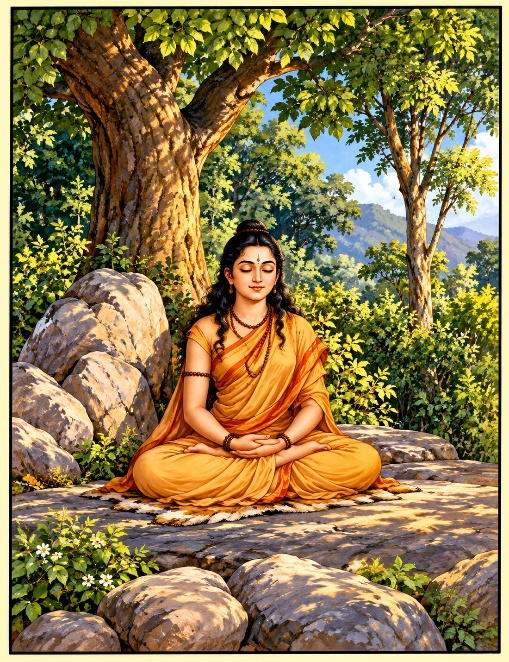
तमसे अधर्म उत्पन्न हुआ और शोकसे हिंसा उत्पन्न हुई। तब भयानक रूपवाले उस मिथुन (अधर्म और हिंसा) के प्रादुर्भूत होनेपर भगवान् [ब्रह्मा] प्राणहीन हो गये और प्रीतिने इनकी सेवा की। इसके बाद ब्रह्माने अपने उस दीप्त शरीरको अपोहित कर लिया। अपने देहको दो भागोंमें करके वे आधे शरीरसे पुरुष हो गये और उनके आधे शरीरसे नारी शतरूपा उत्पन्न हुईं। ब्रह्माने प्राणियोंकी धात्री उस प्रकृतिको कामनापूर्वक उत्पन्न किया था; वे अपनी महिमासे स्वर्ग तथा पृथ्वीको व्याप्त करके अधिष्ठित हैं। ब्रह्माका वह पूर्व शरीर स्वर्गको आवृत करके स्थित है। सृजन करनेवाले ब्रह्माके आधे शरीरसे जो नारी शतरूपा उत्पन्न हुई थीं, उन्होंने नियुत (दस लाख) वर्षोंतक अत्यन्त कठोर तप करके दीप्त यशवाले पुरुषको पतिरूपमें प्राप्त किया॥२६५-२७०॥
वे पूर्वपुरुष ही स्वायम्भुव मनु कहे जाते हैं। उनका इकहत्तर चतुर्युगी मन्वन्तर कहा जाता है। उस पुरुषने अयोनिजा शतरूपाको पत्नीरूपमें प्राप्त किया। वे उनके साथ रमण करते हैं, अतः वे ‘रति’ कही जाती हैं। कल्पके आदिमें [यह] पहला परस्पर संयोग हुआ। ब्रह्माने विराट्को उत्पन्न किया था; वे पुरुष ही विराट् थे। शतरूपा और वे वैराज (विराट्पुत्र) मनुको सम्राट् कहा गया है। उन वैराज पुरुष मनुने प्रजासर्गका सृजन किया। शतरूपाने वीर वैराज पुरुषसे प्रियव्रत तथा उत्तानपाद [नामक] दो लोकमान्य पुत्रोंको उत्पन्न किया। उन्होंने दो महाभाग्यशालिनी कन्याओंको भी उत्पन्न किया, जिनसे ये प्रजाएँ उत्पन्न हुई हैं। वे दोनों देवी आकूति तथा प्रसूति नामवाली थीं॥२७१-२७६॥
प्रभु स्वायम्भुव मनुने प्रसूतिको दक्षको अर्पित कर दिया। दक्षको प्राण जानना चाहिये और मनुको संकल्प कहा जाता है। उन्होंने आकूतिको रुचिप्रजापतिको दिया। ब्रह्माके मानसपुत्र रुचिकी मिथुन (जुड़वाँ) सन्तानें आकूतिसे उत्पन्न हुईं।
यज्ञ तथा दक्षिणा — ये जुड़वाँ सन्तानें हुईं। दक्षिणासे यज्ञके बारह पुत्रोंने जन्म लिया। वे देवगण, स्वायम्भुव मन्वन्तरमें ‘याम’ — इस नामसे प्रसिद्ध हुए; वे इस यज्ञके पुत्र थे, इसलिये वे ‘याम’ कहे गये हैं। ब्रह्माने अजित तथा शुक्र — इन दो गणोंको उत्पन्न किया था। पूर्वमें जो ‘याम’ उत्पन्न हुए थे, वे देवता हुए॥२७७-२८१॥
प्रभु दक्षने स्वायम्भुव [मनु] की पुत्री उस प्रसूतिसे चौबीस कन्याएँ उत्पन्न कीं; वे लोकमाताएँ हुईं। वे सभी महाभाग्यशालिनी, कमलके समान नेत्रवाली, भोगवती, योगमाताएँ, ब्रह्मवादिनी तथा विश्वकी माताएँ थीं। उनमें जो श्रद्धा, लक्ष्मी, धृति, तुष्टि, पुष्टि, मेधा, क्रिया, बुद्धि, लज्जा, वपु, शान्ति, सिद्धि एवं कीर्ति — तेरह [पुत्रियाँ] थीं, उन दक्षकन्याओंको प्रभु धर्मने पत्नीके रूपमें ग्रहण कर लिया। स्वायम्भुवने इन सबको उन धर्मकी पत्नी बनाया। उन सभीसे कनिष्ठ जो शिष्ट तथा सुन्दर नेत्रोंवाली ग्यारह [कन्याएँ] थीं, वे सती, ख्याति, सम्भूति, स्मृति, प्रीति, क्षमा, सन्नति, अनसूया, ऊर्जा, स्वाहा एवं स्वधा [नामवाली] थीं। उन्हें अन्य महर्षियोंने प्राप्त किया; वे रुद्र, भृगु, मरीचि, अंगिरा, पुलह, क्रतु, पुलस्त्य, अत्रि, वसिष्ठ, पितर तथा अग्नि थे॥२८२-२८८ ½॥
उन्होंने सतीको भव (रुद्र) को तथा ख्यातिको भृगुको दे दिया। इसके बाद उन्होंने सम्भूतिको मरीचिको और स्मृतिको अंगिराको प्रदान कर दिया। उन्होंने प्रीतिको पुलस्त्यको, क्षमाको पुलहको, सन्नतिको क्रतुको, अनसूयाको अत्रिको तथा ऊर्जाको वसिष्ठको अर्पित कर दिया और स्वाहाको अग्निको तथा स्वधाको पितरोंको सौंप दिया। अब उनसे उत्पन्न सन्तानोंको जान लीजिये॥२८९-२९१ ½॥
ये समस्त महाभाग्यवती कन्याएँ सभी मन्वन्तरोंमें प्रलयपर्यन्त प्रजाओंके सृजनमें लगी रहती थीं। श्रद्धाने कामको उत्पन्न किया। दर्प लक्ष्मीका पुत्र कहा गया है। धृतिका पुत्र नियम, तुष्टिका पुत्र सन्तोष, पुष्टिका पुत्र लोभ तथा मेधाका पुत्र श्रुत है। क्रियासे दण्ड तथा समय [नामक] पुत्र उत्पन्न हुए। बुद्धिसे बोध तथा प्रमाद [नामक] पुत्र उत्पन्न हुए॥२९२-२९५॥
लज्जासे विनय नामक पुत्र हुआ। वसुका पुत्र व्यवसाय तथा शान्तिका पुत्र क्षेम है। सिद्धिसे सुख [नामक पुत्र] उत्पन्न हुआ। कीर्तिका पुत्र यश है। ये सब धर्मके पुत्र हैं। कामका पुत्र हर्ष देवी प्रीतिसे उत्पन्न हुआ। धर्मका यह सुतोदर्क सर्ग बता दिया गया॥२९२-२९७ ½॥
हिंसाने अधर्मसे निकृति [नामकी कन्या] तथा अनृत पुत्रको उत्पन्न किया। निकृतिसे भय तथा नरक [दो पुत्र] उत्पन्न हुए और इनकी [पत्नियाँ] माया तथा वेदना जुड़वाँ कन्याएँ हुईं। इसके बाद मायाने प्राणियोंका हरण करनेवाले मृत्युको जन्म दिया और वेदनासे रौरवके द्वारा पुत्ररूपमें ‘दुःख’ उत्पन्न हुआ। मृत्युसे व्याधि, जरा, शोक, क्रोध तथा असूया उत्पन्न हुए। उत्तरोत्तर दुःख देनेवाले ये सभी पुत्र अधर्मके लक्षणोंसे युक्त थे। इन सबको भार्याएँ तथा पुत्र नहीं थे; ये सभी परिग्रह स्वभाववाले थे। इस प्रकार यह धर्मनियामक तामस सर्ग उत्पन्न हुआ॥२९८-३०२॥
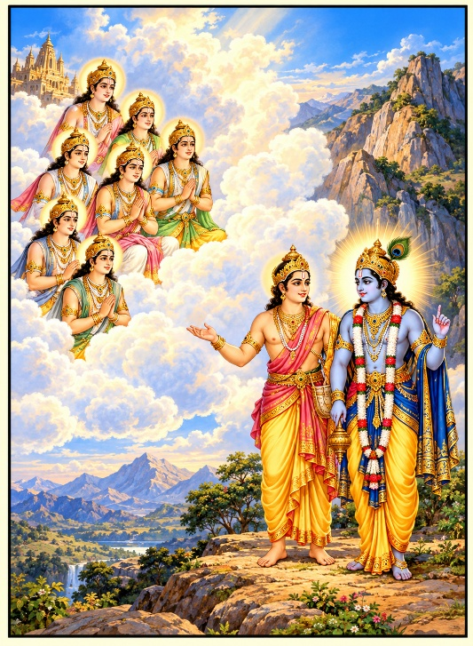
ब्रह्माने नीललोहित शिवसे कहा था — ‘प्रजाओंका सृजन कीजिये’। तब उन्होंने [अपनी] भार्या सतीका ध्यान करके पुत्रोंका सृजन किया। उन्होंने न अधिक, न कम, अपने ही समान तथा व्याघ्रचर्म धारण किये हुए हजारों-हजार मानसपुत्रों [रुद्रगणों] को उत्पन्न किया।
उन्होंने रूप-तेज-बल-ज्ञानमें अपने ही सदृश, पिंगलवर्णवाले, निषंगयुक्त, जटाजूटधारी, लोहितवर्णवाले, विशिष्ट, हरित केशवाले, देखनेमात्रसे नाश करनेवाले, कपालधारी, विशाल रूपवाले, विकृत रूपवाले, विश्वरूप, स्वरूपवान्, रथारूढ़, ढाल-कवच-वरूथ धारण किये हुए, लाखों भुजाओंवाले, स्वर्ग-पृथ्वी-अन्तरिक्षमें गमन करनेवाले, स्थूल सिरवाले, आठ दाढ़ोंवाले, दो जीभोंवाले, तीन नेत्रोंवाले, अन्न खानेवाले, मांस भक्षण करनेवाले, घृत पीनेवाले, सोमपान करनेवाले, सुन्दर, बड़े-बड़े कपालवाले, नीले कण्ठवाले, ऊर्ध्वरेता (ब्रह्मचारी), हव्य खानेवाले, वेदपरायण, धार्मिक, मोरपंखसे सुशोभित, कुछ बैठे हुए, कुछ दौड़ते हुए, पाँच भूतोंवाले, कुछ अध्यापन करनेवाले, कुछ अध्ययन करनेवाले, कुछ जप करते हुए, कुछ योगाभ्यास करते हुए, कुछ धूमयुक्त, कुछ दीप्तिमान्, गंगाको धारण किये हुए, अत्यन्त कान्तिमान्, वृद्ध, बुद्धिसम्पन्न, ब्रह्मिष्ठ, शुभ दर्शनवाले, नीलग्रीवा (कण्ठ) वाले, हजार नेत्रोंवाले, क्षमाकी निधि, सभी प्राणियोंसे अदृश्य, महान् योगवाले, महातेजस्वी, भ्रमण करते हुए, इधर-उधर भागते हुए, कूदते हुए तथा अयातयाम — इन हजारों-हजार उत्तम रुद्रदेवताओंको उत्पन्न किया॥३०३-३१३॥
इन्हें देखकर ब्रह्माजीने इन [नीललोहित]-से कहा — ‘ऐसी प्रजाओंका सृजन मत कीजिये; अपने सदृश प्रजाओंकी सृष्टि आपको नहीं करनी चाहिये। हे देव! आपको नमस्कार है। आपका कल्याण हो। आप मृत्युयुक्त अन्य प्रजाओंका सृजन कीजिये; क्योंकि मृत्युरहित प्रजाएँ कार्योंका आरम्भ नहीं करेंगी’॥३१४-३१५॥
ब्रह्माके द्वारा ऐसा कहे गये रुद्रने उनसे कहा — ‘मैं मृत्यु तथा जरासे युक्त प्रजाओंका सृजन नहीं करूँगा; आपका कल्याण हो। अब मैं [शान्त होकर] बैठता हूँ और आप ही सृजन कीजिये। जिन हजारों-हजार विरूप नीललोहित रुद्रोंको मैंने सृजित किया है, वे मेरी आत्मासे निकली हुई प्रजाएँ हैं। ये रुद्र नामवाले महाबली देवता होंगे। ये पृथ्वी, आकाश तथा सभी दिशाओंमें व्याप्त रहेंगे। इनमें समान आत्मावाले सौ रुद्र याज्ञिक होंगे; वे सभी देवताओंके साथ यज्ञभाग ग्रहण करनेवाले होंगे।
सभी मन्वन्तरोंमें जो देवता भेदपूर्वक यहाँपर होंगे, उनके साथ पूजित होते हुए वे सभी रुद्र युगक्षयपर्यन्त यहाँ स्थित रहेंगे’॥३१६-३२०॥
बुद्धिमान् महादेवजीके द्वारा इस प्रकार कहे गये प्रजापति ब्रह्माजी प्रसन्न होकर प्रणाम करके उनसे बोले — ‘हे विभो! आपने जैसा कहा है, वैसा ही हो; आपका कल्याण हो’। ब्रह्माके ऐसा कहनेके बाद सब कुछ उसी प्रकारसे हुआ॥३२१-३२२॥
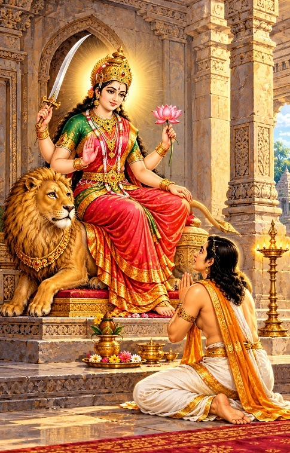
उसी समयसे देवताओंके स्वामी शिवने प्रजाओंका सृजन नहीं किया और वे प्रलयपर्यन्त स्थाणुवत् स्थित रहे तथा ब्रह्मचारी बने रहे। चूँकि उन्होंने कहा था कि ‘मैं स्थित हूँ’ — इसलिये वे ‘स्थाणु’ कहे गये। ये भगवान् महादेव पुरुषस्वरूप, सूर्यके समान तेजवाले, अपने तेजसे अग्निके समान प्रतीत होनेवाले तथा आधा भाग नर और आधा भाग नारीके शरीरवाले हैं। वे अपनी इच्छासे दो भागोंमें अलग-अलग स्त्री तथा पुरुषरूपमें विभक्त हुए। वे परमेश्वर आधे भागसे ग्यारह रूपोंमें स्थित हैं। उसमें जो शंकरकी अर्धांगिनी महाभागा महादेवी कही गयी हैं; वे ही भगवती पूर्वकालमें दक्षके द्वारा आराधित होकर जगत्के हितके लिये सतीके रूपमें आविर्भूत हुई थीं।
सृष्टिकार्यके लिये उनका दाहिना भाग श्वेत तथा बायाँ भाग कृष्ण था। जब भगवान् शम्भुने उनसे कहा कि अपनेको विभक्त करो, तब हे द्विजो! उनके ऐसा कहनेपर वे शुक्ल तथा कृष्ण दो रूपोंमें विभक्त हो गयीं। अब मैं उनके नाम बताऊँगा; आपलोग एकाग्रचित्त होकर सुनिये॥३२३-३२९॥
सती, दाक्षायणी, विद्या, इच्छा, शक्ति, क्रियात्मिका, अपर्णा, स्वाहा, स्वधा, महाविद्या, मेधा, लक्ष्मी, सरस्वती, एकपर्णा, एकपाटला, उमा, हैमवती, कल्याणी, एकमातृका, ख्याति, प्रज्ञा, महाभागा, लोकप्रसिद्ध गौरी, गणाम्बिका, महादेवी, नन्दिनी तथा जातवेदसी—ये नाम हैं। पृथक् देह धारण करनेसे पहले इनका एक ही रूप था। सावित्री, वरदा, पुण्या, पावनी, लोकविश्रुता, आज्ञा, आवेशनी, कृष्णा, तामसी, सात्त्विकी, शिवा, प्रकृति, विकृता, रौद्री, दुर्गा, भद्रा, प्रमाथिनी, कालरात्रि, महामाया, रेवती, भूतनायिका—हे सुव्रतो! द्वापरयुगके अन्तमें ये उनके नाम हुए। इसी प्रकार गौतमी, कौशिकी, आर्या, चण्डी, कात्यायनी, सती, कुमारी, यादवी, देवी, वरदा, कृष्णपिंगला, बर्हिध्वजा, शूलधरा, परमा, ब्रह्मचारिणी, महेन्द्रोपेन्द्रभगिनी, दृषद्वती, एकशूलधृक्, अपराजिता, बहुभुजा, प्रगल्भा, सिंहवाहिनी, शुम्भादिदैत्यहन्त्री, महामहिषमर्दिनी, अमोघा, विन्ध्यनिलया, विक्रान्ता, गणनायिका—मैंने देवी भद्रकालीके इन नामविकारोंको यथाक्रम बता दिया, जो सम्यक् फल प्रदान करनेवाले हैं। जो लोग इनका पाठ करते हैं, उनका पाप शेष नहीं रह जाता है। जंगलमें, पर्वतपर, नगरमें, घरमें, जल अथवा स्थल कहीं भी रक्षाके लिये इनका प्रयोग करना चाहिये। विशेष रूपसे बाघ, हाथी तथा चोरोंसे भयके स्थानमें और सभी प्रकारकी विपत्तियोंमें देवीके नामोंको पढ़ना चाहिये। बुरे ग्रहों, भूतों, पूतना तथा मातृगणोंसे पीड़ित शिशुओंकी रक्षाके लिये इन नामोंका प्रयोग करना चाहिये ॥ ३३०-३४३ ॥
‘प्रज्ञा’ तथा ‘श्री’—ये महादेवीकी दो कलाएँ कही गयी हैं। इन दोनोंसे हजारों देवियाँ उत्पन्न हुई हैं, जिनके द्वारा सम्पूर्ण जगत् व्याप्त है। देवदेव महेश्वर परमेश्वर रुद्र सभी लोकोंके हितके लिये इन सतीके साथ [सर्वदा] विद्यमान रहते हैं। रुद्र पशुपति हैं। इन्होंने ही पूर्वकालमें त्रिपुरको दग्ध किया था। उन्हींके तेजसे सभी देवता पशु [जीव] हुए। जो [व्यक्ति] आदिसृष्टिके शुभ क्रमको पढ़ता है अथवा सुनता है अथवा उत्तम द्विजोंको सुनाता है, वह ब्रह्मलोकको जाता है ॥ ३४४-३४७ ॥
॥ इस प्रकार श्रीलिङ्गमहापुराणके अन्तर्गत पूर्वभागमें ‘सृष्टिविस्तार’ नामक सत्तरवाँ अध्याय पूर्ण हुआ ॥ ७० ॥
इकहत्तरवाँ अध्याय
तारकासुरके पुत्रों—विद्युन्माली, तारकाक्ष तथा कमलाक्षका वृत्तान्त एवं तपस्याद्वारा इन्हें कामचारी तीन पुरोंकी प्राप्ति, त्रिपुरासुरके विनाशके लिये देवताओंका उद्योग तथा भगवान् शंकरका उनपर अनुग्रह
ऋषिगण बोले—[हे सूतजी!] आपने संक्षेपमें तथा विस्तारसे शुभ सर्गका निरूपण कर दिया। पशुपति महेश्वरने पुरको कैसे दग्ध किया और ब्रह्मासहित सभी देवता प्रभुके पशु कैसे हो गये? मयकी तपस्याके द्वारा पूर्वकालमें उत्तम दुर्गमय पुर निर्मित किया गया था। हमने सुना है कि देवदेव [शिव] ने सोने, चाँदी तथा लोहेसे निर्मित दिव्य, उत्तम तथा सुन्दर दुर्गको जला दिया था। भगके नेत्रका नाश करनेवाले भगवान् शिवने केवल एक बाणके प्रक्षेपसे उसे कैसे जला दिया और विष्णुके द्वारा उत्पन्न किये गये भूतगण उन तीनों पुरोंको क्यों नहीं जला सके? हमलोगोंने [उस] पुरकी उत्पत्ति तथा सम्पूर्ण वरप्राप्तिके विषयमें पहले ही सुन लिया है; अब हे सुव्रत! [पुरके] दहनके विषयमें पूर्णरूपसे बतानेकी कृपा कीजिये ॥ १-५½ ॥
तब उनका वचन सुनकर पौराणिकोंमें उत्तम सूतजीने समस्त अर्थोंके सूचक व्यासजीसे [इस विषयमें] जैसा सुना था, उसे बताया ॥ ६½ ॥
सूतजी बोले—[हे ऋषियो!] इस त्रिलोकीके मन-वाणी-शरीरजन्य शापके कारण स्कन्द (कार्तिकेय) के द्वारा प्रयत्नपूर्वक बान्धवोंसहित तारपुत्र दैत्य तारकके मार दिये जानेपर उसके महाबली पुत्रों विद्युन्माली, तारकाक्ष तथा पराक्रमी कमलाक्षने तप किया। महान् बल तथा पराक्रमवाले वे महात्मा कठोर तपमें लीन होकर परम नियममें स्थित थे। उन श्रेष्ठ दानवोंने तपस्याके द्वारा अपने शरीरोंको दुर्बल बना दिया। तब उनपर प्रसन्न होकर वरदाता ब्रह्माजीने उन्हें वर प्रदान किया ॥ ७-१०½ ॥
दैत्य बोले—’सभी प्राणियोंसे सर्वदा हम सभीका अवध्यत्व हो’—उन सभीने एक साथ सभी लोकोंके पितामहसे यह वर माँगा। तब लोकोंके स्वामी अव्यय देव ब्रह्माने उनसे कहा—’हे असुरो! सभीको अमरत्व नहीं हुआ करता, अतः इसे छोड़ो और दूसरा वर माँगो, जो तुमलोगोंको अच्छा लगता हो’ ॥ ११-१३ ॥
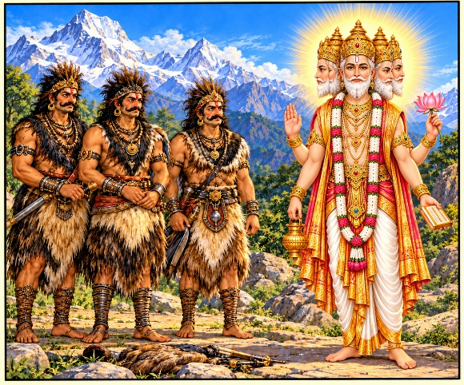
तदनन्तर उन दैत्योंने मिलकर आपसमें विचार करके जगद्गुरु ब्रह्माको प्रणाम करके कहा—हे लोकेश! हे जगद्गुरो! तीन पुर स्थापित करके हमलोग आपकी कृपासे इस पृथ्वीपर विचरण करें। हमलोग एक हजार वर्षमें आपसमें मिलें और हे अनघ! ये तीनों पुर एकीभावको प्राप्त हों। हे भगवन्! जो इन इकट्ठे हुए पुरोंको एक ही बाणसे नष्ट कर दे, वह देव हमलोगोंका मृत्युस्वरूप हो ॥ १४-१७ ॥
‘ऐसा ही हो’—उनसे यह कहकर ब्रह्मदेव स्वर्गलोक चले गये। इसके बाद वीर [दानव] मयने अपनी तपस्याके द्वारा तीन पुरोंका निर्माण किया। उन महात्माओंका सुवर्णमय पुर स्वर्गमें, रजत (चाँदी)-मय पुर अन्तरिक्षमें तथा लौहमय पुर पृथ्वीपर था। उनमेंसे प्रत्येक पुर लम्बाई तथा चौड़ाईमें एक सौ योजनवाला और एक समान था। सोनेका पुर तारकाक्षका, चाँदीका पुर कमलाक्षका और लोहेका पुर विद्युन्मालीका था; तीनों प्रकारके दुर्ग उत्तम थे। बलशाली मय दैत्यों तथा दानवोंसे पूजित था; वह बलवान् मय वहाँ स्वर्णमय, रजतमय एवं काले लौहमय पुरमें अपना भवन बनाकर रहा करता था ॥ १८-२२ ॥
हे सुव्रतो! हे विप्रेन्द्रो! इस प्रकार दैत्योंके सुदृढ़ किलोंसे युक्त वे तीनों पुर दूसरे त्रिलोकीके समान थे। तब तीनों पुरोंके [निर्मित] हो जानेपर वे सभी दैत्य उन तीनों पुरोंमें प्रवेश करके तीनों लोकोंमें अत्यधिक बलशाली हो गये ॥ २३-२४ ॥
उनके तीनों पुर कल्पवृक्षोंसे भरे हुए, हाथी-घोड़ोंसे परिपूर्ण, अनेक भवनोंसे सुशोभित, मणियोंके जालोंसे घिरे हुए, सभी ओर द्वारोंवाले, सूर्यमण्डलसदृश विमानोंसे युक्त, पद्मरागमय चन्द्रसदृश उज्ज्वल महलोंसे सुशोभित और कैलासशिखरके समान दिव्य तथा अत्युत्तम फाटकोंसे पृथक् पृथक् मण्डित थे। हे श्रेष्ठ द्विजो! वे पुर दिव्य स्त्रियों, गन्धर्वों, सिद्धों एवं चारणोंसे भरे हुए थे। प्रत्येक घरमें रुद्रालय थे और अग्निहोत्र होता था। वे पुर सभी ओर बावलियों, कुओं, तालाबों और बड़ी-बड़ी झीलोंसे युक्त थे; मत्त हाथियोंके झुण्डों, अति सुन्दर घोड़ों, चारों ओर मुखवाले अनेक प्रकारके अद्भुत रथों, सभाभवनों, पानीय (जल) की शालाओं तथा क्रीड़ास्थलोंसे पृथक् पृथक् समन्वित थे। वे पुर चारों ओर अनेकविध वेदाध्ययनशालाओंसे युक्त थे और मय [दानव]-की मायासे अन्य लोगोंद्वारा मनसे भी अलंघ्य थे। हे मुनिश्रेष्ठो! वे पुर सर्वत्र पतिव्रता स्त्रियोंके द्वारा सेवित थे। हे द्विजो! वे पुर बड़े-बड़े पाप करके भी शंकरजीकी पूजाके कारण पापरहित, श्रौत स्मार्त धर्मोंके ज्ञाता तथा अपने धर्मके प्रति परायण भार्यासहित महाभाग्यशाली दैत्योंसे सदा समन्वित थे; महादेवके अतिरिक्त अन्य देवताको छोड़कर उन [शिव]-के अर्चनमें स्थित, चौड़ी छातीवाले, बैलके समान कंधेवाले, सर्वदा समस्त आयुध धारण करनेवाले, सदा उपवास करनेवाले, दावानलके समान नेत्रोंवाले, उनमें कुछ शान्त तथा कुछ कुपित, कुबड़े, बौने, नील कमलदलकी आभाके सदृश, काले एवं घुँघराले बालोंवाले, नीलपर्वत तथा मेरुके समान प्रतीत होनेवाले, मेघके समान गर्जन करनेवाले, मयके द्वारा रक्षित तथा शिक्षित और युद्धकी तीव्र इच्छावाले दैत्योंसे परिपूर्ण थे। इस प्रकार वे पुर सदा युद्धपरायण, भलीभाँति शिवके चरणोंकी पूजाके द्वारा प्राप्त पराक्रमवाले, सूर्य-वायु-इन्द्रसदृश, देवताओंका दमन करनेवाले तथा अत्यन्त दृढ़ दैत्योंसे सेवित थे ॥ २५-३७ ॥
हे द्विजश्रेष्ठो! दैत्योंके वैभवके कारण तीनों पुरोंकी अग्निसे इन्द्रसहित देवतागण उसी प्रकार दग्ध हो गये, जैसे दावाग्निसे वृक्ष दग्ध हो जाते हैं ॥ ३८ ॥
इसके बाद स्वयं विचार करके देवताओंके स्वामी इस प्रकार उन दग्ध देवताओंने अतुलनीय तेजवाले देवेश्वर विष्णुको प्रणाम करके उनको [यह सब] बताया ॥ ३९ ॥
तब उन श्रीमान् प्रभु भगवान् नारायणने मनमें सोचा कि देवताओंके कार्यके विषयमें क्या किया जाना चाहिये। इसके बाद यज्ञभोक्ता, यज्ञकर्ता, यज्ञकर्ताओंको फल प्रदान करनेवाले तथा यज्ञमूर्ति प्रभु जनार्दनने यज्ञदेवका स्मरण किया ॥ ४०-४१ ॥
तदनन्तर देवताओंके कार्यकी सिद्धिके लिये उनके द्वारा स्मरण किये गये यज्ञदेव उपस्थित हुए। तब उन देवताओंने यज्ञदेवको प्रणाम किया और उनकी स्तुति की। इसके बाद सनातन यज्ञको देखकर पुनः इन्द्रसहित देवताओंकी ओर देखकर सनातन भगवान् अच्युत (विष्णु) उनसे कहने लगे ॥ ४२-४३ ॥
श्रीविष्णु बोले—हे देवताओ! तीनों पुरोंके विनाशके लिये तथा तीनों लोकोंकी समृद्धिके लिये इन [उपस्थित] उपसद नामक यज्ञके द्वारा परमेश्वरका यजन कीजिये ॥ ४४ ॥
सूतजी बोले—उन बुद्धिमान् देवदेवका वचन सुनकर महान् सिंहनाद करके देवतागण [उन] यज्ञेशकी स्तुति करने लगे ॥ ४५ ॥
वे भगवान् जनार्दन पुनः सभी देवताओंसे बोले—प्राणियोंको मारकर तथा जलाकर और अन्यायपूर्वक भोग-विलास करके भी यदि कोई महादेवकी पूजा करे, तो वह पापरहित हो जाता है, इसमें सन्देह नहीं है ॥ ४६-४७ ॥
‘निष्पाप लोगोंकी हत्या नहीं की जानी चाहिये; केवल पापियोंकी ही हत्या पूर्णप्रयत्नसे की जानी चाहिये; इसमें सन्देह नहीं है। हे श्रेष्ठ देवताओ! पापी होते हुए भी दुर्मद असुर महाबली देवताओंके द्वारा वध्य कैसे हो सकते हैं? क्योंकि परमेष्ठी रुद्रके प्रभावके कारण वे वध्य नहीं हैं। हे देवताओ! प्रभु [शिव]-की कृपाके बिना मैं कौन हूँ, ब्रह्मा कौन हैं, दैत्य कौन हैं, देवशत्रुओंके विनाशक कौन हैं और महात्मा मुनिगण कौन हैं? ॥ ४८-५० ॥
जो सत्ताईस तत्त्वोंसे युक्त, शाश्वत, महान्से भी महत्तर, प्रभुतासम्पन्न, सम्पूर्ण देवताओंके स्वामी, वन्दनीय, विश्वके आधार, महेश्वर, सर्वदेवेश तथा सबके स्वामी हैं; उन हर शंकरने ही [अपनी] लीलासे देवताओं एवं दैत्योंका विभाजन किया है ॥ ५१-५२ ॥
उनके एक अंश (लिङ्गरूप) की पूजा करके देवताओंने देवत्व प्राप्त किया है, ब्रह्माने ब्रह्मत्व प्राप्त किया है और मुझ विष्णुने विष्णुत्व प्राप्त किया है। उनकी पूजा किये बिना इस जगत्में कौन व्यक्ति सिद्धि प्राप्त कर सकता है? अतः लिङ्गार्चनविधिके प्रभावसे उन्हींके द्वारा वे दैत्य हन्तव्य हैं। यद्यपि वे सभी [दैत्य] धर्मनिष्ठ हैं तथा श्रौत स्मार्तविधानमें स्थित हैं, फिर भी उपसद नामक रुद्रयज्ञसे यजमानके द्वारा विधिपूर्वक प्रभु रुद्रका यजन करके हमलोग महादैत्योंको जीत सकेंगे। एकमात्र त्रिनेत्र भगवान् [शिव] को छोड़कर तारकाक्षसहित [दानव] मयके द्वारा सुरक्षित, स्वस्थ, गुप्त तथा स्फटिकके समान आभावाले तीनों पुरोंको नष्ट करनेमें भला कौन समर्थ है? ॥ ५३-५६ ॥
सूतजी बोले—इस प्रकार उपसद [नामक] यज्ञके द्वारा प्रभु [शिव] का यजन करके बैठे हुए विष्णुने हजारों भूतसमुदायोंको देखा। तब शूल-शक्ति-गदासे युक्त हाथोंवाले, टंक-उपल-शिलाको आयुधके रूपमें धारण किये हुए, अनेक प्रकारके प्रहारयोग्य अस्त्रोंसे समन्वित, अनेक वेषोंको धारण किये हुए, कालाग्नि रुद्रके समान प्रतीत होनेवाले तथा कालरुद्रके सदृश उन उपस्थित भूतोंको प्रणाम करके साक्षात् प्रभु विष्णुदेव कहने लगे ॥ ५७-५९ ॥
विष्णु बोले—हे वीरो! उस [त्रिपुर] दैत्यके तीनों पुरोंमें जाकर सभीको जलाकर, छिन्न-भिन्न करके और उनका भक्षण करके पुनः आपलोग जैसे आये हैं, वैसे ही भूतलपर चले जायँ ॥ ६० ॥
तत्पश्चात् देवेशको प्रणाम करके तीनों पुरोंमें प्रवेश करके वे सभी भूत उसी तरह नष्ट हो गये, जैसे अग्निमें प्रवेश करके शलभ (पतिंगे) नष्ट हो जाते हैं ॥ ६१ ॥
तब देवेश्वरकी आज्ञासे उन सभी भूतोंके नष्ट हो जानेपर हजारों दैत्य आनन्द मनाने लगे, नाचने-गाने लगे और देवेश परमात्मा ईश्वरकी स्तुति करने लगे ॥ ६२½ ॥
तदनन्तर क्षणभरमें पराजित तथा नष्ट पराक्रमवाले इन्द्रसहित देवतागण देवेश विष्णुके पास पहुँचकर भयपूर्वक खड़े हो गये। तब इन्द्रसहित उन सन्तप्त देवताओंको देखकर भगवान् पुरुषोत्तम उस समय दुःखी होकर सोचने लगे—क्या किया जाना चाहिये? प्रयत्नपूर्वक उन दैत्योंका बल नष्ट करके मैं कैसे देवताओंका कार्य करूँगा? विचारपूर्वक देखा जाय, तो शिवकी कृपासे उन धर्मनिष्ठ दैत्योंमें पाप नहीं है, अतः वे दैत्य उपसद [नामक] यज्ञसे उत्पन्न भूतोंके द्वारा वध्य नहीं हैं। धर्मसे ही पाप नष्ट होता है; सब कुछ धर्ममें ही प्रतिष्ठित है। धर्मसे ऐश्वर्य प्राप्त होता है—यह सनातनी श्रुति है। [सूतजीने कहा—हे द्विजश्रेष्ठो! तीनों पुरोंमें निवास करनेवाले वे सभी दैत्य धर्मनिष्ठ थे, अर्थात् अनुष्ठानमें तत्पर थे। अतः वे अवध्यताको प्राप्त हो गये थे; इसमें सन्देह नहीं है। बहुत बड़ा पाप करके भी जो लोग रुद्रका अर्चन करते हैं, वे सभी पापोंसे मुक्त हो जाते हैं; जैसे जलसे कमल मुक्त रहता है। हे द्विजो! शिवकी पूजासे भोगसम्पदा अवश्य प्राप्त होती है; वे दैत्य लिङ्ग-पूजामें परायण हैं, अतः वे भोगोंसे युक्त हैं। [विष्णुने कहा—] हे देवताओ! इसलिये मैं देवताओंके कार्यके लिये अपनी मायासे दैत्योंके धर्म (अनुष्ठान) में विघ्न डालकर क्षणभरमें तीनों पुरोंको जीत लूँगा ॥ ६३-७१½ ॥
सूतजी बोले—ऐसा विचार करके भगवान् पुरुषोत्तम उन देवशत्रुओं (दैत्यों) के धर्ममें विघ्न उत्पन्न करनेके लिये प्रवृत्त हुए। महातेजस्वी मायावी अच्युतने उनके धर्मविघ्नके लिये अपने शरीरसे मायामय पुरुषका सृजन किया। सबके शासक तथा स्वेच्छासे रूप धारण करनेवाले मायापति [विष्णु]-ने देखनेमात्रसे विश्वास उत्पन्न करनेवाले भावसे युक्त अतएव सबको मोहित करनेवाले शास्त्रका निर्माण किया। ग्रन्थषोडशलक्षक अर्थात् अत्यन्त विस्तृत श्रुति-स्मृतिसे विरुद्ध तथा वर्णाश्रम-धर्मोंसे रहित इस मायामय शास्त्रका उपदेश अपने शरीरसे उत्पन्न पुरुषको करना चाहिए और स्वर्ग-नरक यहींपर है, ऐसा विश्वास करना चाहिये, इसके अतिरिक्त कुछ नहीं—इसे प्रतिपादित करनेवाले उस शास्त्रको उस पुरुषको स्वयं पढ़ाकर मायामय अच्युत विष्णुने तीनों पुरोंके विनाशहेतु उस पुरुषसे कहा—[हे पुरुष!] त्रिपुरवासियोंके नाशके लिये तुम शीघ्र जाओ और ऐसा प्रयत्न करो, जिससे [वहाँके] श्रौत-स्मार्त धर्म नष्ट हो जायें; इसमें संशय नहीं है ॥ ७२-७८ ॥
तत्पश्चात् उन्हें प्रणाम करके मायाशास्त्रविशारद मायावी मुनिने उन पुरोंमें शीघ्र प्रवेश करके माया रची ॥ ७९ ॥
तब तीनों पुरोंमें निवास करनेवाले वे दैत्य उसकी मायाके कारण श्रौत स्मार्त धर्मोंका त्याग करके उसके शिष्य हो गये और उन्होंने महादेव परमेश्वर शंकरको छोड़ दिया ॥ ८०½ ॥
तत्पश्चात् मायामय प्रभुके आदेशसे [अपने] शिष्यों-प्रशिष्योंसे चारों ओरसे घिरे हुए मायावी नारदमुनि भी उस पुरमें प्रवेश करके उस मायावी [पुरुष]-से स्वयं दीक्षित हुए। उन्होंने स्त्रियोंको दुराचार फलकी सिद्धि देनेवाले स्त्रीधर्मका उपदेश दिया। उन स्त्रियोंने उसका सदा पालन किया और शीघ्र ही उसका फल प्राप्तकर वे अपने पतिदेवोंकी अवहेलना करके अन्य लोगोंमें आसक्त हो गयीं। उन नारदमुनिके गुरुत्वके कारण आज भी कलियुगमें अधम स्त्रियाँ पतियोंका त्याग करके व्यभिचार करती हैं॥८१-८४½॥
पति ही स्त्रियोंका माता-पिता, बन्धु, सखा, मित्र तथा बान्धव होता है; इसमें सन्देह नहीं है। फिर भी विष्णुकी असह्य मायाके कारण उन स्त्रियोंने वैसा किया। बड़ा-से-बड़ा पाप करके भी जो [स्त्री] पतिके प्रति प्रेमयुक्त रहती है, वह परम स्वर्ग प्राप्त करती है और इससे विपरीत आचरणसे नरक प्राप्त करती है। हे मुनिश्रेष्ठो! पूर्वकालमें स्त्रियाँ सभी धर्मों, अन्य देवताओं तथा जगद्गुरुओंको त्यागकर सर्वदा पतिकी पूजा करती थीं; वे स्वर्गलोक प्राप्त करके निश्चिन्त होकर आनन्द मनाती थीं, [इसके विपरीत अन्य स्त्रियाँ नरक जाती थीं। अतः पति ही [स्त्रियोंके लिये] परम गति है]। तथापि देवदेव प्रभु विष्णुकी आज्ञासे तथा उनकी मायाके कारण वे [त्रिपुरवासिनी स्त्रियाँ] अपने पतियोंका त्याग करके व्यभिचारिणी हो गयीं ॥ ८५-८९½ ॥
उन [विष्णु-की] आज्ञासे अलक्ष्मी तीनों पुरोंमें चली गयीं और जो लक्ष्मी उन [दैत्यों] की तपस्याके द्वारा देवेश्वर ब्रह्मासे उन्हें प्राप्त थीं, वे [उन्हीं] प्रभु ब्रह्माके आदेशसे [त्रिपुरको छोड़कर] बाहर चली गयीं। इस प्रकार धर्मविघ्नके लिये उन दैत्योंको उस प्रकारका विष्णुमाया-निर्मित बुद्धिमोह देकर भगवान् [पुरुष] और उन स्त्रियोंको विपरीत आचरणका उपदेश देकर मायावी नारद—ये दोनों अव्यय देव निराकुल होकर सुखपूर्वक बैठ गये ॥ ९०-९२½ ॥
इस प्रकार परम उत्तम श्रौत स्मार्त धर्मके नष्ट हो जानेपर, विश्वकर्ता उन विष्णुके द्वारा [वहाँ] पाखण्ड स्थापित कर दिये जानेपर, दैत्योंके द्वारा महेश्वरका त्याग कर दिये जानेपर तथा लिङ्गपूजाका परित्याग कर दिये जानेपर, सम्पूर्ण स्त्रीधर्मके नष्ट हो जानेपर और दुराचार स्थापित हो जानेपर देवेश [विष्णु] कृतार्थ हो गये और वे पुरुषोत्तम सभी देवताओंके साथ तपस्याद्वारा सर्वज्ञ उमापतिको प्राप्त करके उनकी स्तुति करने लगे ॥ ९३-९५½ ॥
श्रीभगवान् बोले—आप महेश्वर, देव, परमात्माको नमस्कार है। आप नारायण, शर्व, ब्रह्म, ब्रह्मरूप, शाश्वत, अनन्त तथा अव्यक्तको नमस्कार है ॥ ९६-९७ ॥
सूतजी बोले—इस प्रकार भगवान् [विष्णु]-ने महादेवकी स्तुति करके दण्डवत् प्रणाम करके जलमें स्थित होकर एक करोड़ बार रुद्रमन्त्रका जप किया। इसके बाद वे सभी देवता इन्द्र, साध्यगण, यम, रुद्रगण तथा मरुद्गणोंके साथ देव परमेश्वरकी स्तुति करने लगे ॥ ९८-९९ ॥
देवता बोले—आप सर्वात्मा, शंकर, दुःखनाशक, रुद्र, नीलरुद्र, कद्रुद्र (प्रशस्त रुद्र) तथा प्रचेताको नमस्कार है। आप हमलोगोंकी गति हैं। दैत्योंका संहार करनेवाले आप हमलोगोंद्वारा सर्वदा वन्द्य हैं। आप आदि तथा अन्तरहित हैं; आप अनन्त (शेषरूप), अविनाशी एवं प्रभुतासम्पन्न हैं। हे जगद्गुरो! आप प्रकृति, पुरुष, साक्षात् स्रष्टा, रक्षक तथा संहारक हैं। हे द्विजवत्सल! आप इस जगत्में द्विजोंके नेता हैं। आप वरदाता, वाणीमय, वाच्य, वाच्य-वाचकसे रहित ईशान हैं; आप मुक्तिके लिये योगपरायण योगियोंके द्वारा पूज्य हैं। आप योगियोंके हृदयरूपी कमलके छिद्रमें सदा स्थित हैं। विद्वान्लोग आपको सर्वत्र विद्यमान्, श्रेष्ठ तथा ब्रह्मस्वरूप कहते हैं। हे विभो! ऋषिगण आपको इस जगत्में तत्त्वरूप, तेजोराशि, परात्पर एवं परमात्मा कहते हैं। हे जगद्गुरो! आप दृष्ट, श्रुत, स्थित तथा जायमान सब कुछ हैं। लोग आपको अणुसे भी अल्पतर, महान्से भी महत्तर, सभी ओर हाथ-पैरवाला, सभी ओर नेत्र-सिर-मुखवाला तथा सभी ओर कानवाला कहते हैं। आप संसारमें सभीको आच्छादित करके स्थित हैं ॥ १००-१०७ ॥
लोग आपको महादेव, अनिर्देश्य, सर्वज्ञ, अनामय, विश्वरूप, विरूपाक्ष, सदाशिव, निर्विकार, करोड़ों सूर्योंके समान [तेजस्वी], करोड़ों चन्द्रमासदृश [प्रकाशमान], करोड़ों कालाग्निके समान [प्रज्वलित], छब्बीस तत्त्वोंसे युक्त, अनीश्वर, इस जगत्में प्रकृतिके प्रवर्तक, प्रपितामह, सबके आवास-स्वरूप तथा स्वयम्भू (स्वयं उत्पन्न होनेवाला) एवं वर देनेवाला देव कहते हैं; श्रुतियाँ तथा श्रुति-तत्त्वोंको जाननेवाले लोग आपको वेदोंका सार कहते हैं ॥ १०८-१११ ॥
हे अनेक रूपोंवाले [प्रभो]! हमलोगोंने संसारमें ऐसा कुछ भी नहीं देखा है, जो आपके बिना [किसी अन्यके द्वारा] रचित हो; आपने ही दैत्यों, सुरोंके भूतसमुदायों, देवताओं, मनुष्यों, स्थावर-जंगम आदिको उत्पन्न किया है ॥ ११२ ॥
हे शम्भो! हमलोगोंकी कोई अन्य गति नहीं है; महादैत्योंका संहार करके आप [हमारी] रक्षा कीजिये; हे परमेश्वर! सभीलोग आपकी मायासे मोहित हैं ॥ ११३ ॥
जिस प्रकार तरंगें तथा लहरें समुद्रमें परस्पर टकराती हैं और जलाश्रयसे ही जड़ीभूत होकर उसीमें विलीन हो जाती हैं, उसी प्रकार ब्रह्माकी सृष्टिके देवता-असुर सभी कोई आपसमें टकराते हैं और अन्तमें जड़ीभूत होकर आपमें ही विलीन हो जाते हैं ॥ ११४ ॥
सूतजी बोले—जो मनुष्य प्रातःकाल उठकर शुद्ध होकर इस पवित्र स्तुतिको पढ़ता अथवा सुनता है, वह सभी कामनाओंको प्राप्त कर लेता है ॥ ११५ ॥
इस प्रकार देवताओंके द्वारा स्तुति किये जाने तथा विष्णुके जपसे प्रसन्न हुए महेश्वर शंकरने उमाका आलिङ्गन करके नन्दीके ऊपर हाथ रखकर देवताओंकी ओर देखकर गम्भीर वाणीमें मुसकराते हुए कहा—’हे सुरेश्वरो! अब मैंने इस देवकार्यको और विष्णु तथा बुद्धिमान् नारदके मायाबलको जान लिया है। हे श्रेष्ठ देवताओ! मैं अधर्ममें निष्ठा रखनेवाले उन दैत्योंके तीनों पुरोंका विनाश [अवश्य] करूँगा’ ॥ ११६-११८½ ॥
सूतजी बोले—इसके बाद [वहाँ] आये हुए वे इन्द्र-ब्रह्मा-विष्णुसहित देवताओंने प्रभुका वचन सुनकर उन्हें प्रणाम किया तथा उनकी स्तुति की। इसके अनन्तर शिवकी ओर देखकर विस्मित देवी भी अपने लीला-कमलसे शिवजीको मारकर (स्पर्शकर) यह वचन कहने लगीं ॥ ११९-१२०½ ॥
देवी बोलीं—हे विभो! हे पुत्रवानोंमें श्रेष्ठ! उत्तम आभूषणोंसे सुशोभित तथा सूर्यके समान प्रतीत होनेवाले [अपने] इस खेलते हुए श्रेष्ठ पुत्र षडाननको देखिये। हे महादेव! मुकुटों, कटकों, कुण्डलों, सुन्दर कंगनों, नूपुरों, छन्नवारों, करधनियों, अनेक किंकिणियों, सुवर्णमय पीपलके पत्तों, कल्पद्रुमके पुष्पोंसे शोभित सुन्दर अलकों, पद्मराग आदि मणियोंसे चमत्कृत हारों तथा बाजूबन्दों, पूर्णचन्द्रमाके समान प्रभावाले मुक्ताफलमय हारों और तिलकोंसे मण्डित परम सुन्दर पुत्रको देखिये। हे ईश! कुंकुम आदिसे अंकित तथा भस्मनिर्मित वृत्ताकार तिलकसे युक्त इसके कमलसमूह-सदृश मुखोंको देखिये। हे विभो! आप इसके अत्यन्त सुन्दर नेत्रोंको देखिये, गंगा आदि, कृत्तिका आदि तथा विशेष रूपसे स्वाहा माताओंके द्वारा मंगलके लिये लगाये गये भव्य तथा विचित्र काजलोंको देखिये ॥ १२१-१२७½ ॥
इस प्रकार जगज्जननी [उमा]-के वचनोंसे सम्बोधित किये गये ईशान शिव कार्तिकेयके मुखामृतका पान करते हुए तृप्त नहीं हुए। उन्हें दैत्योंके शस्त्रोंसे पीड़ित उन देवताओंका स्मरण नहीं रहा। उन्होंने स्कन्दका आलिङ्गन करके उसका सिर सूंघकर कहा—’हे पुत्र! नृत्य करो।’ तब कष्ट दूर करनेवाले बालकरूप प्रभु [स्कन्द] भी लीला करते हुए नाचने लगे। सभी गणेश्वर भी उनके साथ नृत्य करने लगे और क्षणभरमें शिवकी आज्ञासे सम्पूर्ण त्रिलोकी वहाँ नृत्य करने लगा। नाग और इन्द्रसहित सभी देवता भी नाचने लगे। गणेश्वरोंने स्कन्दकी स्तुति की। [उस समय पार्वती तथा [अन्य] माताएँ आनन्दित हुईं। गन्धर्व तथा किन्नर पुष्पवृष्टि करने लगे एवं गाने लगे। तब [उस] नृत्यरूपी अमृतका पान करके पार्वती तथा परमेश्वर तृप्त हो गये और नन्दीसहित गणेश्वर भी तृप्त हुए ॥ १२८-१३३ ॥
तदनन्तर सूर्यके समान कान्तिवाले शिवजीने भी नन्दी, षडानन (स्कन्द) तथा गिरिराजपुत्री [पार्वती]-के साथ दिव्य भवनमें प्रवेश किया, जैसे मेघ अन्य मेघमें प्रवेश करता है ॥ १३४ ॥
वे देवता उन बुद्धिमान् शिवके द्वारके पास खड़े हो गये और कुछ-कुछ व्याकुलचित्त होकर महादेवकी स्तुति करने लगे। वे व्याकुल होकर एक-दूसरेकी ओर देखकर कहने लगे—’यह क्या, यह क्या; हमलोग पापी हैं’ अन्य दूसरोंने कहा—’हम अभागे हैं’ अन्य सुरेश्वरोंने कहा—’ये महादैत्य भाग्यशाली हैं।’ कुछने कहा—’यह उनकी पूजाका फल है’ और कुछने कहा—’ऐसा नहीं है’ ॥ १३५-१३७ ॥
इसी बीच उनके अनेक शब्दोंको सुनकर महातेजस्वी कुम्भोदर [नामक शिवगण] दण्डसे देवताओंको पीटने लगा। तब वे देवता भयभीत होकर ‘हा-हा’ कहते हुए भागने लगे; कुछ मुनि तथा देवता पृथ्वीतलपर गिर पड़े ॥ १३८-१३९ ॥
कश्यप आदि मुनियोंने कहा—’विधिका बल कैसा अद्भुत है!’ हे द्विजो! अन्य लोगोंने कहा—’देव-देवेशका दर्शन करके भी असुरशत्रु देवताओंके अभाग्यसे ही कार्य पूर्ण नहीं हो सका। इसके बाद वे सब हृदयमें थोड़ा अर्चन करके ‘शिवको नमस्कार है’—ऐसा कहने लगे ॥ १४०-१४१ ॥
तत्पश्चात् जटाजूट धारण किये, [हाथमें] त्रिशूल लिये, माला पहने हुए, हाला धारण किये हुए, कुण्डल धारण किये हुए, कंगन पहने हुए तथा गदा धारण किये हुए महादेवप्रिय मुनि नन्दीश सुन्दर श्वेत बैलपर चढ़कर उन [शिव] की आज्ञासे वहाँ जाने लगे। तब नन्दीको देखकर कुम्भोदर [नामक] वह गण भी नन्दीको प्रणाम करके शीघ्रता करते हुए उनके साथ चल दिया। गणसहित वे महातेजस्वी वृषध्वज गणोंके सेनापति नन्दी बैलकी पीठपर उसी तरह प्रतीत हो रहे थे, मानो मेघरूप विष्णुके पृष्ठपर शिवजी विराजमान हों। नन्दीश्वरका दस योजन विस्तृत तथा मुक्ताजालोंसे अलंकृत श्वेत छत्र आकाशकी भाँति प्रतीत हो रहा था। उस छत्रमें भीतरसे बँधी हुई मुक्ताफलोंकी वह श्वेत माला ऐसी लग रही थी, मानो शिवजीके सिरपर आकाशसे गंगा गिर रही हों ॥ १४२-१४६½ ॥
हे मुनिश्रेष्ठो! तदनन्तर गणाध्यक्ष [नन्दी] को देखकर इन्द्रकी आज्ञासे दिव्य देवदुन्दुभियाँ बजने लगीं; सभी लोग वाणीद्वारा वांछित फल प्रदान करनेवाले शुभ गणेश्वरकी स्तुति करने लगे, जैसे शिवको देखकर देवतालोग प्रसन्नतासे रोमांचित होकर उनकी स्तुति करते हैं ॥ १४७-१४८½ ॥
आकाशचारियोंने इन्द्रकी आज्ञासे नन्दीके सिरपर आकाशसे सुगन्धमय पुष्पवृष्टि की। तुष्टि-पुष्टिसे युक्त यथार्थ वृष्टिसे प्रसन्न होकर नन्दी उसी तरह शोभा पा रहे थे, जैसे शिवजी गन्धजलसे अभिसिंचित चन्द्रलेखासे शोभा प्राप्त करते हैं। हे सुव्रतो! वृषभका पृष्ठ अनेक प्रकारके पुष्पोंसे ऐसा प्रतीत हो रहा था, मानो आकाशपृष्ठ तारोंसे भर गया हो। हे सुव्रतो! पुष्पोंसे ढँके हुए नन्दी बैलकी पीठपर उसी प्रकार सुशोभित हो रहे थे, जैसे आकाशपृष्ठपर [विराजमान] चन्द्रमा तारोंसे आच्छादित होकर सुशोभित होते हैं ॥ १४९-१५२½ ॥
उस प्रकारकी शोभावाले उन नन्दीको देखकर इन्द्र तथा विष्णुसहित देवता साक्षात् महादेवजीकी भाँति प्रतीत होनेवाले गणाधिपोंके स्वामी नन्दीकी स्तुति करने लगे ॥ १५३½ ॥
देवता बोले—आप रुद्रभक्त तथा रुद्रजपपरायणको नमस्कार है। रुद्रभक्तोंकी पीड़ाका नाश करनेवाले, रौद्रकर्ममें संलग्न, कूष्माण्डगणोंके स्वामी तथा योगियोंके पति आप [नन्दी] को नमस्कार है। सब कुछ प्रदान करनेवाले, शरण देनेवाले, सब कुछ जाननेवाले, कष्ट दूर करनेवाले, वेदोंके पति तथा वेदोंसे जाननेयोग्य आप [नन्दी]-को नमस्कार है। वज्रधारी, वज्रतुल्य दंष्ट्रावाले, इन्द्रके वज्रका निवारण करनेवाले, वज्रसे अलंकृत देहवाले तथा इन्द्रके द्वारा आराधित आप [नन्दी] को नमस्कार है। रक्त वर्णवाले, रक्त नेत्रवाले, रक्त वस्त्र धारण करनेवाले तथा शिवके चरणकमलमें अनुरागयुक्त लोगोंको रुद्रलोक प्रदान करनेवाले आप [नन्दी] को नमस्कार है। सेनाके अधिपति, रुद्रोंके पति, भूतों तथा भुवनेशोंके पति और पापोंका हरण करनेवाले आप [नन्दी] को नमस्कार है। रुद्र, रुद्रपति, रौद्र पापोंका हरण करनेवाले आप [नन्दी] को नमस्कार है। शिवस्वरूप, सौम्य [स्वभाववाले] तथा रुद्रभक्त आप [नन्दी]-को नमस्कार है ॥ १५४-१६० ॥
सूतजी बोले—[हे ऋषियो!] तदनन्तर प्रसन्न हुए शिलादपुत्र गणेश्वर [नन्दी] ने देवताओंसे कहा—’अब तीनों पुरोंको नष्ट मानकर आपलोग शम्भुके लिये रथ, सारथि, धनुष तथा उत्तम बाण प्रयत्नपूर्वक तैयार कराइये।’ इसके बाद उन देवताओंने अतिशीघ्रतासे युक्त होकर ब्रह्माके साथ विश्वकर्माके द्वारा बुद्धिमान् देवदेव [शिव]-का रथ बनवाया ॥ १६१-१६३ ॥
॥ इस प्रकार श्रीलिङ्गमहापुराणके अन्तर्गत पूर्वभागमें ‘पुरदाहप्रसंगमें नन्दिकेश्वरवाक्य’ नामक इकहत्तरवाँ अध्याय पूर्ण हुआ ॥ ७१ ॥
अध्याय ७२:
त्रिपुरासुरके वधके लिये विश्वकर्माद्वारा एक दिव्य रथका निर्माण तथा भगवान् महेश्वरका उस रथपर आरूढ़ हो त्रिपुरासुरको दग्ध करना एवं ब्रह्माद्वारा भगवान् शिवकी स्तुति
सूतजी बोले—[हे ऋषियो!] विश्वकर्माने प्रयत्नके साथ आदरपूर्वक भगवान् रुद्रका रथ बनाया; वह सर्वलोकमय, दिव्य, सर्वभूतमय, सभी देवताओंसे नमस्कृत, सभी देवताओंसे युक्त, सुवर्णमय तथा सबके अनुकूल था। उसका दाहिना चक्र सूर्य एवं बायाँ चक्र चन्द्रमा थे। दाहिना चक्र बारह अरोंवाला तथा बायाँ चक्र सोलह अरोंवाला था। हे विप्रेन्द्रो! हे सुव्रतो! [दाहिने चक्रके] उन अरोंमें बारह आदित्य थे और बायें चक्रके सोलह अरोंमें चन्द्रमाकी [सोलह] कलाएँ थीं। हे मुनिश्रेष्ठो! नक्षत्रगण उस बाएँ चक्रके भूषण थे और छः ऋतुएँ उन दोनों चक्रोंकी नेमियाँ थीं। आकाश इसकी छत थी और मन्दर पर्वत रथका सारथि स्थान था। अस्ताचल तथा उदयाचल उसके दोनों स्तम्भ कहे गये हैं। महामेरु [पर्वत] उसका अधिष्ठान [मुख्य स्थान] था और केसरपर्वत मेरुको आश्रय देनेवाले थे। संवत्सर उसका वेग था और दोनों अयन (उत्तरायण, दक्षिणायन) उसके चक्रसंगम (अक्षके प्रान्तभाग) थे। मुहूर्त उस रथके बंधुर [तल्पभाग] और कलाएँ उसकी शम्या (वर्तुलपट्टिकाएँ) कही गयी हैं। काष्ठाएँ उसकी नासिका तथा क्षण उसके अक्षदण्ड (चक्रोंका आधारदण्ड) कहे गये हैं। निमेष इस रथके अनुकर्ष (नीचेका तल) तथा लव (निमेषसे भी छोटा समय) इसकी ईषा (दोनों अक्षोंको जोड़नेवाला काष्ठ) कहे गये हैं ॥ १-८½ ॥
द्यौर्वरूथं—अन्तरिक्ष इस रथका वरूथ (कवच) था और स्वर्ग तथा मोक्ष इस रथके दोनों ध्वज थे। धर्म तथा विराग इसके दण्ड थे; यज्ञ इस दण्डको आश्रय (सहारा) देनेवाले कहे गये हैं। दक्षिणाएँ उस रथकी सन्धियाँ थीं और पचासों अग्नियाँ इसकी कीलें थीं। धर्म तथा काम—ये दोनों उसके जुओंके सिरे कहे गये हैं। अव्यक्त [तत्त्व] उसका ईषादण्ड था तथा बुद्धि इसका
नड्वल (अक्षको स्निग्ध बनानेवाले द्रव्यका पात्र) थी। अहंकार इसका कोण था। पंचमहाभूतोंको इसका बल बताया गया है। [सभी] इन्द्रियाँ उसके सभी ओर लगे हुए आभूषण थे। श्रद्धा इस [रथ]-की गति थी। वेद उसके घोड़े कहे गये हैं। वेदोंके पदविभाग इसके भूषण थे तथा [शिक्षा आदि] छः वेदांग इसके उपभूषण थे। हे सुव्रतो! पुराण, न्याय, मीमांसा तथा धर्मशास्त्र इसके वालाश्रय पट थीं, जो सभी लक्षणोंसे युक्त थे। [गायत्री आदि] मन्त्र, [क आदि] वर्ण, पाद (छन्दोंके चतुर्थांश) तथा [ब्रह्मचर्य आदि] आश्रम उन पटोंके घंटे कहे गये हैं। हजार फणोंसे विभूषित अनन्त [शेषनाग] उसके बन्धनरज्जु थे ॥ ९-१५ ॥
दिशाएँ तथा उपदिशाएँ इस रथके पाद थे। पुष्कर आदि [मेघ] रत्नभूषित सुवर्णनिर्मित पताकाएँ थीं। चारों समुद्र उस रथके बाह्य कम्बल कहे गये हैं। गंगा आदि सभी श्रेष्ठ नदियाँ समस्त आभूषणोंसे अलंकृत होकर [अपने] हाथोंके अग्रभागमें चामर (चँवर) धारण किये हुए स्त्रीरूपसे शोभित होती हुई जहाँ-तहाँ अपना स्थान बनाकर रथको सुशोभित कर रही थीं ॥ १६-१८ ॥
आवह आदि सात वायु उसकी सुवर्णमय उत्तम सीढ़ियाँ थीं। भगवान् ब्रह्मा सारथि थे और देवतालोग रथकी रश्मियोंको पकड़नेवाले कहे गये हैं। ब्रह्मदैवत प्रणव ब्रह्माके हाथमें स्थित उसका प्रतोद (चाबुक) था। विस्तृत लोकालोक पर्वत उसके सात वायुओंके स्कन्धरूप सोपानसे युक्त था। परम सुन्दर मानस पर्वत उसमें पैर रखनेका अधोभाग (पायदान) था। समस्त पर्वत सभी ओर इस रथकी नासा (नासिका) कहे गये हैं ॥ १९-२१ ॥
सातों तल उस रथके मज्जन थे; उन तलोंमें रहनेवाले सभी लोग कपोतपक्षीके समान थे। मेरु पर्वत उस रथका महाछत्र था और मन्दर पर्वत पृष्ठवाद्यके रूपमें था। शैलराज [मेरु] धनुष थे और स्वयं भुजंगपति [वासुकि] कालरात्रि तथा इन्द्रधनुषके साथ ज्या (धनुषकी डोरी) थे। वेदस्वरूपिणी सरस्वती देवी [उस] धनुषकी घण्टा थीं, महातेजस्वी विष्णु बाण थे और चन्द्रमा [उस] बाणके शल्य (लौहनिर्मित अग्रभाग) थे। साक्षात् प्रलयाग्नि उस बाणके तीक्ष्ण तथा अतिभयंकर विषमय अनीक (बल) थे। [आवह आदि] वायु [उस बाणके] पंख कहे गये हैं ॥ २२-२५ ॥
इस प्रकार [देवताओंके द्वारा] दिव्य रथ, धनुष, बाण तथा जगत्के स्वामी प्रभु ब्रह्माको सारथि बनाकर तथा [कवच, मुकुट आदि] रणभूषणोंको धारण करनेवाले शिवजी सभी देवताओंसहित पृथ्वी तथा स्वर्गको कम्पित करते हुए [उस] दिव्य रथपर आरूढ़ हुए ॥ २६-२७ ॥
ऋषियोंके द्वारा स्तुत होते हुए और बन्दीजनों तथा नृत्य करती हुई नृत्यप्रवीण अप्सराओंके द्वारा वन्दित होते हुए वे वरद शिव अत्यन्त सुशोभित हो रहे थे। सारथिकी ओर देखकर उस लोकसम्भृत कल्पित रथपर उनके आरूढ़ होते ही वेदसम्भूत घोड़े सिरके बल भूमिपर गिर पड़े। तदनन्तर वृषेन्द्रका रूप धारण किये हुए भगवान् शेषने इस रथको नीचेसे उठाकर क्षणभरमें स्थापित करना चाहा, किंतु वे वृषेन्द्र भी एक क्षणके बाद घुटनोंके बल पृथ्वीपर गिर पड़े। तब हाथमें लगाम पकड़े हुए सर्वव्यापी भगवान् [ब्रह्माने] शिवके आदेशसे घोड़ोंको उद्यत (उत्साहित) करके [उस] शुभ रथको स्थापित कर दिया और उन्होंने मन तथा वायुके समान वेगवाले घोड़ोंको साहसी दानवोंके आकाश-स्थित पुरोंको उद्देश्य करके प्रेरित किया ॥ २८-३३ ॥
इसके बाद भगवान् शंकर रुद्रने देवताओंको देखकर कहा—’मुझे ही पशुओं (जीवों) का आधिपत्य दिया गया है; अतः मैं असुरोंका हनन करता हूँ। हे श्रेष्ठ देवताओ! देवों तथा असुरोंके लिये पृथक् पृथक् पशुत्व होनेके कारण ही वे महादानव वधके योग्य होंगे; अन्यथा नहीं’ ॥ ३४-३५ ॥
बुद्धिमान् देवदेव [शिव]-का सम्पूर्ण वचन सुनकर पशुत्वके प्रति शंकित होते हुए सभी देवता विषादग्रस्त हो गये ॥ ३६ ॥
तब उनके इस भावको जानकर शिवजीने उनसे यह वचन कहा—’हे श्रेष्ठ देवताओ! इस पशुभावमें आपलोगोंको भय नहीं होना चाहिये। अब पशुभावकी मुक्तिका उपाय सुनिये और उसे कीजिये। जो दिव्य पाशुपतव्रतको करेगा, वह पशुत्वसे मुक्त हो जायगा; यह सत्य तथा प्रतिज्ञात है। हे श्रेष्ठ देवताओ! एकाग्रचित्त होकर जो अन्य लोग भी मेरे पाशुपतव्रतको करेंगे, वे पशुत्वसे मुक्त हो जायँगे; इसमें सन्देह नहीं है। जो निष्ठापूर्वक बारह वर्ष, उसके आधे [छः वर्ष] अथवा तीन वर्षतक शुश्रूषा करेगा, वह पशुत्वसे मुक्त हो जायगा। अतः हे श्रेष्ठ देवताओ! [आपलोग] इस परम दिव्य व्रतको कीजिये’ ॥ ३७-४१॥
लोकनमस्कृत शिवके ऐसा कहनेपर देवताओंने कहा—’ऐसा ही होगा।’ अतः समस्त देवता, असुर तथा मनुष्य शिवजीके पशु हैं। रुद्र पशुपति हैं और पशुपाशसे मुक्त करनेवाले हैं। जो पशु है, उसे इस व्रतके द्वारा पशुभावका त्याग कर देना चाहिये; इसे करके वह पापी नहीं रह जाता है—यह शास्त्रका निश्चय है ॥ ४२-४३½ ॥
तत्पश्चात् अमित पराक्रमवाले बालकरूप साक्षात् विनायक देवताओंद्वारा पूजित न होनेके कारण उन्हें रोकते हुए कहने लगे ॥ ४४½ ॥
श्रीविनायक बोले—शुभ भक्ष्य, भोज्य आदि पदार्थोंके द्वारा मेरी पूजा किये बिना इस संसारमें कौन मनुष्य, देवता अथवा दानव सिद्धि प्राप्त कर सकता है? अतः हे सुरेश्वरो! मैं देवेश क्षणभरमें ही उस देवकार्यमें विघ्न करूँगा; [मेरी पूजा किये बिना] आपलोग कार्य करनेमें कैसे तत्पर हो गये? ॥ ४५-४६½ ॥
तत्पश्चात् इन्द्रसहित सभी देवता भयभीत हो गये और भक्ष्य-भोज्य आदि पदार्थों, आटेसे बने लड्डुओं तथा मोदकोंसे उन प्रभुकी विधिवत् पूजा करके वे गणेश्वरसे बोले—’हमलोगोंका कार्य सदा निर्विघ्न सम्पन्न हो’ ॥ ४७-४८ ॥
उस समय समस्त सुरेश्वरोंमें मुख्य शिवने भी [अपने] पुत्र गणेशका आलिङ्गन करके उनका सिर सूँघकर अनेक प्रकारके सुगन्धित पुष्पों, भक्ष्य-भोज्य पदार्थों तथा उत्तम रसोंसे उनकी पूजा की ॥ ४९ ॥
इसके बाद वे मेरुधन्वा शिवजी देवताओंके साथ ईश्वरोंके नायक पूजनीय विनायककी पूजा करके तीनों पुरोंको जलानेके लिये गणेश्वरोंके साथ चल पड़े ॥ ५०॥
उस समय सभी देवता, सिद्ध, भूतगण, नन्दी आदि गणेश्वर तथा अन्य ईश्वर अपने-अपने वाहनोंसे उन देवदेव ईश महेश्वरके पीछे-पीछे चले ॥ ५१ ॥
हिमालयसदृश विमानपर चढ़कर नन्दी [सभी] देवताओं तथा गणेश्वरोंके आगे होकर त्रिपुरपर प्रहार करनेके लिये चले, मानो भगवान् शिव मृत्युपर प्रहारहेतु चले हों ॥ ५२॥
उस समय जाते हुए शिलादपुत्र [नन्दी] के पीछे सभी देवता, गणेश्वर तथा गणलोग विशाल हाथियों, बैलों और घोड़ोंपर आरूढ़ होकर हाथोंमें अपने शस्त्र तथा चिह्न धारण किये हुए चले ॥ ५३ ॥
महाशक्तिशाली गरुड़ध्वज [विष्णु] गिरीन्द्रसदृश पक्षिराज [गरुड़]-पर आरूढ़ होकर लोकोंके हितार्थ तीनों पुरोंको दग्ध करनेके लिये शिवजीके बायें होकर शीघ्रतापूर्वक चले ॥ ५४ ॥
सभी देवता तीक्ष्ण शक्ति (बर्छी), टंक, गदा, त्रिशूल, खड्ग आदि उत्तम आयुधोंसे युक्त होकर देवलोकके नाथ, देवताओं तथा असुरोंके स्वामी और अप्रमेय उन शिवके पीछे-पीछे सभी ओरसे चले ॥ ५५ ॥
कमलपत्रके समान वर्णवाले गरुड़वाहन भगवान् विष्णु देवताओंके मध्य ऐसे सुशोभित हो रहे थे, मानो सुमेरु [पर्वत] के शिखरपर आरूढ़ हजार किरणोंवाले भगवान् सूर्य हों ॥ ५६ ॥
गजेन्द्र (ऐरावत) पर आरूढ़ होकर देवताओंके प्रमुख सहस्र नेत्रवाले [इन्द्र] रुद्रके दाहिनी ओर होकर त्रिपुरका नाश करनेके लिये चले; मानो गरुड़ सर्पोंका नाश करनेके लिये चल दिये हों ॥ ५७ ॥
सिद्ध, गन्धर्व, श्रेष्ठ देवता तथा अन्य वीर देवताओंके स्वामी प्रभु उन इन्द्रकी स्तुति कर रहे थे और वे श्रेष्ठ पुष्पवृष्टिके साथ कामनाओंकी पूर्ति करनेवाले इन्द्रकी जय-जयकार कर रहे थे ॥ ५८ ॥
उस समय स्वर्गमें स्थित देवताओंने अहल्याके उपपति, देवताओंके ईश, जगत्के स्वामी, देवताओंके स्वामी तथा हजार नेत्रोंवाले इन्द्रको देखकर लीलापूर्वक उसी प्रकार प्रणाम किया, जैसे माता पार्वती पुत्र कार्तिकेयको प्रणाम करती हैं ॥ ५९ ॥
यम, अग्नि, कुबेर, वायु, निर्ऋति, वरुण तथा ईशान भी शिवजीके पीछे-पीछे चले ॥६०॥
युद्धमें प्रवीण वीरभद्र वृषभेन्द्रपर आरूढ़ होकर रथके नैऋत्यकोण (दक्षिण-पश्चिम)-में होकर त्रिपुरका नाश करनेके लिये चले; अपने रोमजसंज्ञक बाणोंसे घिरे हुए वे देवदेव त्रियम्बककी सेवा कर रहे थे। दूसरे महादेवके समान प्रतीत होनेवाले महातेजस्वी महाकाल रथके वायव्यकोण (उत्तर-पश्चिम) में होकर गणोंके साथ रथकी सेवा कर रहे थे ॥ ६१-६३ ॥
गिरिराजके समान प्रतीत होनेवाले तथा अग्निसे उत्पन्न षडानन भी सिद्धों, चारणों एवं देवसेनाके साथ शिवके गणोंसे आवृत होकर हाथीपर सवार होकर चले ॥ ६४ ॥
विघ्नेश्वर भगवान् गणेश भी असुरेश्वरोंका विघ्न करके तथा देवताओंका अविघ्न करके विघ्नगणोंके साथ उस देश (त्रिपुर) की ओर शिवजीके पीछे-पीछे चले ॥ ६५॥
उस समय हाथमें कालरात्रिके समान प्रकाशमान त्रिशूल धारण किये, कपालके आभूषणवाली, बड़े-बड़े असुरोंके रक्तरूपी मधुके पानसे मत्त, मतवाले हाथीके समान चालवाली, मदसे चंचल नेत्रोंवाली, मतवाले हाथियोंके चर्मरूपी वस्त्रसे वेष्टित अंगोंवाली काली देवताओंको कम्पित करती हुई मत्तपिशाचों तथा मतवाले गणोंके साथ गणेशजीके आगे-आगे चलीं ॥ ६६-६७ ॥
सिद्धों, गन्धर्वों, पिशाचों, यक्षों, विद्याधरों, सर्पों तथा प्रमुख देवताओंने उन देवी पार्वतीको प्रणाम किया, उच्च स्वरसे उनकी स्तुति की तथा उनका जयकार किया ॥ ६८॥
इसी प्रकार देवशत्रुओंका संहार करनेवाली तथा देवताओंके द्वारा आदरपूर्वक पूजित देवमाताएँ सभी ओर ध्वज धारण किये हुए अपने-अपने गणोंके साथ अपने-अपने वाहनोंसे माताके पीछे-पीछे चलीं ॥ ६९ ॥
बालरूपा होते हुए भी अमित पराक्रमवाली तथा [सबके द्वारा] अनतिक्रमणीय भगवती दुर्गा सिंहपर सवार होकर [अपनी] भुजाओंमें अंकुश, शूल, पाश, परशु, चक्र, खड्ग, शंख आदि आयुध धारण किये हुए और मध्याह्नकालीन सूर्य तथा हजार अग्नियोंके समान [देदीप्यमान] नेत्रोंसे मार्गको जलाती हुई [उन] दैत्योंपर प्रहार करनेके लिये चलीं॥७०॥
उस समय इन्द्र तथा सूर्यके समान कान्तिवाले मुख्य गणेश्वर त्रिपुरका नाश करनेके लिये हाथियों, घोड़ों, उत्तम सिंहों, रथों तथा वृषभोंपर सवार होकर उन भगवान् शिवके पीछे चले॥७१॥
हलों, फालों, मुसलों, लौहनिर्मित गदाओं तथा पर्वतशिखरोंको धारण किये हुए गिरिसदृश वे सुरेश्वर, भूत तथा गणेश्वर महेश्वरके आगे-आगे चले॥७२॥
इन्द्र, ब्रह्मा, विष्णु आदि देवता और [सभी] गणेश्वर अपने मुकुटोंको अंजलिपर टिकाकर [प्रणाम करते हुए] चारों ओरसे वाणीद्वारा ईश भगवान् गणेशकी जय बोल रहे थे॥७३॥
हाथमें दण्ड लिये हुए जटाधारी सभी मुनियोंने नृत्य किया और आकाशचारी सिद्धों तथा चारणोंने पुष्पवर्षा की। हे विप्रेन्द्रो! त्रिपुर चारों ओरसे गूँज उठा॥७४॥
सभी गणेश्वरोंमें श्रेष्ठ योगपरायण भृंगी देवताओंसे घिरे हुए इन्द्रकी भाँति गणेश्वरोंसे घिरे होकर विमानपर चढ़कर त्रिपुरका नाश करनेके लिये चले॥७५॥
हे द्विजो! केश, विगतवास, महाकेश, महाज्वर, सोमवल्ली, सवर्ण, सोमप, सेनक, सोमधृक्, सूर्यवाच, सूर्यपेषण, सूर्याक्ष, सूरिनामा, सुर, सुन्दर, प्रकुद, ककुदन्त, कम्पन, प्रकम्पन, इन्द्र, इन्द्रजय, महाभी, भीमक, शताक्ष, पंचाक्ष, सहस्त्राक्ष, महोदर, यमजिह्व, शताश्व, कण्ठन, कण्ठपूजन, द्विशिख, त्रिशिख, पंचशिख, मुण्ड, अर्धमुण्ड, दीर्घ, पिशाचास्य, पिनाकधृक्, पिप्पलायतन, अंगारकाशन, शिथिल, शिथिलास्य, अक्षपाद, अज, कुज, अजवक्त्र, हयवक्त्र, गजवक्त्र, ऊर्ध्ववक्त्र तथा अन्य लक्ष्यलक्षण-वर्जित गणेश्वर एक साथ मिलकर अपने गणसमुदायोंके साथ उन शिवजीको घेरकर चले। इसी प्रकार [अपने] करोड़ों-करोड़ गणोंसे घिरे हुए हजारों-हजार रुद्र तीनों पुरोंको दग्ध करनेके लिये महादेव देवदेव महेश्वरको घेरकर चले॥७६-८४॥
[वसु, रुद्र, आदित्य आदि] तैंतीस देवता; ब्रह्मा, विष्णु, महेश—ये तीनों देवता और उनके भेदरूप तीन सौ तथा तीन हजार तीन अन्य देवता सभी ओरसे वहाँ गये॥८५॥
सभी लोकोंकी माताएँ, गणोंकी माताएँ तथा भूतोंकी माताएँ शिवजीके पीछे-पीछे चलीं॥८६॥
रथके मध्य [विराजमान] गणेश्वर गणोंके बीच उसी तरह प्रतीत हो रहे थे, जैसे निर्मल नक्षत्रोंवाले आकाशमें ताराओंके बीच चन्द्रमा॥८७॥
उस समय शिवके प्रभाव (सामर्थ्य) के कारण ही जगन्मयी पार्वती देवी [उन] शिवके वामभागमें स्थित होकर सुशोभित हो रही थीं। उस समय सुवर्णकमलके समान वर्णवाली देवी शुभावती (पार्वतीकी सखी) हाथके अग्रभागमें चँवर लिये हुए उनके बगलमें स्थित होकर सुशोभित हो रही थीं॥८८-८९॥
सर्वव्यापी देवेश्वर शिवका भस्मसे दीप्यमान अतिस्वच्छ विग्रह उन पार्वतीके साथ उसी प्रकार प्रतीत हो रहा था, जैसे आकाशमें विद्युत्के साथ श्वेत बादल॥९०॥
सुवर्णमय धनुषसे युक्त तथा चन्द्रमाकी प्रभावाला शंकरजीका सौम्य शरीर इन्द्रधनुषसे युक्त आकाश अथवा मेरुपर्वतसे युक्त जगत्की भाँति प्रतीत हो रहा था॥९१॥
रत्नोंकी किरणोंसे मिश्रित शिवजीका श्वेत छत्र उदयकालमें चन्द्रमाके पूर्णमण्डलके समान प्रतीत हो रहा था॥९२॥
शिवजीके गलेमें रेशमी वस्त्रसहित लटकती हुई रत्नमयी मोतियोंकी माला उनके छत्रके पास आकाशसे गिरती हुई गंगाके समान प्रतीत हो रही थी॥९३॥
इस प्रकार महेन्द्र, ब्रह्मा, अग्नि आदिके द्वारा वन्दित चरणकमलवाले शिवजीने समस्त संसारके हितके लिये उन पार्वतीके साथ त्रिपुरके लिये प्रस्थान किया॥९४॥
त्रिशूलधारी पिनाकी (शिव) मनसे ही क्षणभरमें इस सम्पूर्ण चराचर जगत्को दग्ध करनेमें समर्थ हैं, तो फिर वे त्रिपुरको जलानेके लिये गणोंके साथ वहाँ क्यों जा रहे हैं? तीनों पुरोंको जलानेके लिये उन अलुप्त शक्तिवाले शम्भुको रथसे, उत्तम बाणसे, गणोंसे तथा देवताओंसे क्या प्रयोजन है—ब्रह्मा, इन्द्र आदि प्रमुख देवोंने ऐसा कहा। हमलोग तो समझते हैं कि पिनाकधारी भगवान् [शिव] लीलाके लिये यह सब करनेके लिये प्रवृत्त हैं; अन्यथा [इस] आडम्बरसे इन्हें दूसरा कौन-सा लाभ है?॥९५-९७॥
इस त्रिपुरके समीपस्थित नन्दी, नन्दिकेश्वर आदि सुरेश्वरोंके साथ, गणेशजी गणोंके साथ तथा मेरुपर्वत आठ शिखरोंके साथ जिस प्रकार सुशोभित हो रहे थे, उसी प्रकार जगद्रथ (शिव) देवी [पार्वती] के साथ शोभायमान थे॥९८॥
इसके बाद गणों तथा पार्वतीसहित सुरेश्वर शिवको देखकर त्रिपुरके युद्धक्षेत्रमें उपस्थित देवसमूहने स्वयं उनका अनुगमन किया॥९९॥
हे मुनीश्वरो! युद्धकालमें तीन प्रकारके दैत्योंसे युक्त वे तीनों पुर राजाओं, [सिद्ध आदि] गणों तथा देवताओंसे युक्त तीनों लोकके समान प्रतीत हो रहे थे॥१००॥
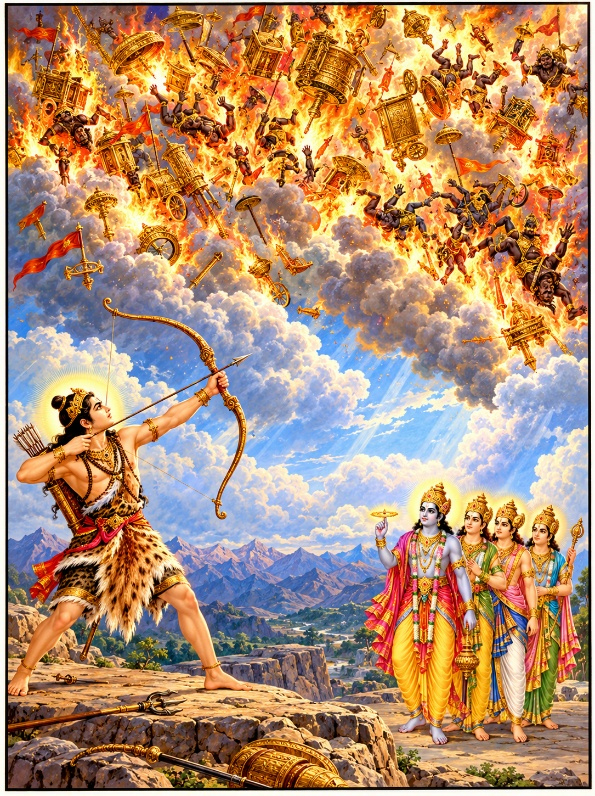
इसके बाद धनुषपर डोरी चढ़ाकर उसपर बाण रखकर उसे पाशुपत अस्त्रसे युक्त करके शिवजीने त्रिपुरका चिन्तन किया॥१०१॥
धनुष ताने हुए उन महादेवके खड़े होनेपर उसी समय तीनों पुर शीघ्र ही आपसमें जुड़ गये। तीनों पुरोंके एकमें मिल जानेपर तथा समीपमें आ जानेपर महान् आत्मावाले [इन्द्र आदि] देवताओंको परम हर्ष हुआ॥१०२-१०३॥
तदनन्तर सभी देवगण, सिद्ध तथा महर्षिगण अष्टमूर्ति [शिव] की स्तुति करते हुए उनकी जय बोलने लगे॥१०४॥
इसके बाद पुष्य नक्षत्रका योग प्राप्त होनेपर भगवान् ब्रह्माने भगके नेत्रका विनाश करनेवाले लीलासक्त उमापतिसे कहा—हे महादेव! हे परमेश्वर! हे प्रभो! इस स्थानपर आपकी यह भावना है कि दैत्य तथा देवता आपके लिये समान हैं, फिर भी देवता धर्मनिष्ठ हैं और दैत्य पापी हैं; अतः हे जगन्नाथ!
आप यहाँ अपनी लीलाका त्याग करें। हे ईश! हे प्रभो! तीनों पुरोंको दग्ध करनेके लिये आपको रथ, ध्वज, बाण, भूतगणों, विष्णु तथा मुझ [ब्रह्मा] से क्या प्रयोजन है? पुष्ययोग प्राप्त होनेपर आप कृपा करके त्रिपुरको दग्ध कर दीजिये। हे देवेश! जबतक ये तीनों पुर अलग-अलग न हो जायँ, तबतक आप इन्हें जला दीजिये॥१०५-१०९½॥
तदनन्तर सब कुछ जाननेवाले तथा विरूपाक्ष (त्रिलोचन) भगवान् महादेवने त्रिपुरकी ओर देखा और उसी क्षण उसे भस्म कर दिया। तब उनके बाणमें स्थित चन्द्र, भगवान् विष्णु, कालाग्नि तथा वायु—इन सभीने उन शिवजीको प्रणाम करके कहा—हे देवेश! आपके देखनेमात्रसे त्रिपुर दग्ध हो गया, फिर भी हे देवेश! हमलोगोंके हितके लिये आप बाणको छोड़ दीजिये॥११०-११२½॥
हे विप्रेन्द्रो! इसके बाद धनुषकी डोरी चढ़ाकर उसे कानतक खींचकर त्रिपुरका नाश करनेवाले शिवने हँसते हुए बाण छोड़ दिया। त्रिपुरका नाश करनेवाला वह बाण उसी क्षण त्रिपुरको जलाकर देवदेवके पास आकर उन्हें प्रणाम करके व्यवस्थित हो गया॥११३-११४½॥
उस बाणके द्वारा सैकड़ों-करोड़ दैत्योंसहित दग्ध किया गया वह त्रिपुर कल्पके अन्तमें रुद्रके द्वारा दग्ध किये गये त्रिलोकके समान प्रतीत हो रहा था। वहाँ [त्रिपुरमें] भी जिन दैत्योंने बान्धवोंके साथ रुद्रका पूजन किया, उन्होंने शम्भुकी पूजाविधिके प्रभावसे गाणपत्य (गणपतिपद) प्राप्त किया॥११५-११६½॥
इन्द्र-विष्णुसहित सभी देवता तथा गणेश्वर शिव तथा हिमालयपुत्री देवी [पार्वती] की ओर देखकर भयवश कुछ नहीं बोले। तब देवताओंकी सेनाको भयभीत देखकर देवश्रेष्ठ [शिव] ने देवताओंसे कहा—’क्या बात है?’ इसपर वे सभी ओरसे उन्हें केवल प्रणाम करते रहे।
देवताओंने इन्दुभूषण नन्दीको प्रणाम किया, पर्वतराजकी पुत्री [पार्वती] को प्रणाम किया, पार्वतीपुत्र [गणेश] को प्रणाम किया और प्रभु महेश्वरको प्रणाम किया। इसके बाद ब्रह्माजी एकाग्रचित्त होकर देवताओं तथा विष्णुके साथ त्रिपुरशत्रु भगवान् भव ईश्वरकी हृदयसे स्तुति करने लगे॥११७-१२१॥
श्रीपितामह बोले— हे देवदेवेश! प्रसन्न हो जाइये। हे परमेश्वर! प्रसन्न हो जाइये। हे जगन्नाथ! प्रसन्न हो जाइये। हे आनन्ददाता! हे अव्यय! हे पंचमुख! प्रसन्न हो जाइये। [यम आदि] रुद्रोंको भी रुलानेवाले, पचास करोड़ मूर्तिवाले, [विश्व-प्राज्ञ-तैजस] तीन रूपोंमें स्थित रहनेवाले तथा विद्याओंमें मुख्य कारणस्वरूप आपको नमस्कार है। शिव, शिवतत्त्व, अघोर, भैरवाष्टकके कारणरूप तथा द्वादश आत्मास्वरूपीको बार-बार नमस्कार है॥१२२-१२४॥
करोड़ों विद्युत्के समान तथा पृथिवी आदिमें प्रकाशमान अत्यन्त सुन्दर रूप धारण करके इस लोकमें विराजमान शिवस्वरूपको नमस्कार है॥१२५॥
अग्निके समान वर्णवाले, भयानक, अम्बिकाको अपने आधे शरीरमें धारण करनेवाले (अर्धनारीश्वर), रुद्र-विष्णु-ब्रह्माको मुक्ति देनेवाले, मृत्युरहित, ज्येष्ठ, भयंकर रूपवाले, सोमस्वरूप, वर प्रदान करनेवाले, त्रिलोकस्वरूप, त्रिदेवस्वरूप तथा वषट्कारस्वरूप शिवको नमस्कार है॥१२६-१२७॥
हृदयकमलके मध्य गगनसदृशरूपवाले तथा गगनमें स्थित आपको नमस्कार है। [सूर्य आदि] आठ स्थानोंमें [रुद्र आदि] आठ रूपोंवाले तथा पृथ्वी आदि आठ तत्त्वोंवाले आपको नमस्कार है। चारों वेदरूपसे, चारों आश्रमरूपसे तथा चतुर्व्यूहरूपसे अवस्थित, आकाश आदि पंचभूत प्रकारसे, सद्योजात आदि पाँचरूपसे अवस्थित, सद्योजात आदि पंचमन्त्ररूप शरीरवाले शिवको नमस्कार है॥१२८-१२९॥
चौंसठ प्रकारके शिक्षोक्त वर्णरूपवाले अकारको बार-बार नमस्कार है। बत्तीस मातृकारूपवाले उकारको बार-बार नमस्कार है। सोलह तत्त्व रूपवाले मकारको बार-बार नमस्कार है।
आठ प्रकारके आत्मस्वरूपवाले अर्धमात्रात्मक नादरूपको नमस्कार है। [अकार, उकार, मकार, अर्धमात्रात्मक नादरूप] चार प्रकारसे स्थित आप ओंकार (प्रणवरूप) को नमस्कार है। आकाशके स्वामी तथा स्वर्गके स्वामी शिवको बार-बार नमस्कार है॥१३०-१३२॥
सात लोकस्वरूप, पाताल तथा नरकके स्वामी, [पृथ्वी आदि] आठ क्षेत्रोंके रूपमें आठ स्वरूपोंवाले तथा परात्परतर (सर्वोत्कृष्ट) शिवको नमस्कार है॥१३३॥
हजार सिरोंवाले, हजार रूपोंवाले, हजार पैरोंसे युक्त आप शर्व परमेष्ठीको नमस्कार है। [पुरुष, प्रकृति, व्यक्त, अहंकार, नभ, अनिल, ज्योति, आप (जल), पृथ्वी] नौ आत्मतत्त्वमय स्वरूपवाले, सत्रह आत्मशक्तियोंवाले, अष्टप्रकाशस्वरूप (उर आदि स्थानोंमें वर्णोंको अभिव्यंजित करनेवाले), आठ मूर्तियोंवाले, चौंसठ योगिनियोंके प्राणतत्त्वरूप, भव आदि आठ नामोंवाले, आठ गुणोंसे युक्त, [सत्त्व, रज, तम] तीनों गुणोंसे युक्त तथा गुणोंसे शून्य आप [शिव] को नमस्कार है॥१३४-१३६॥
मूलाधारचक्रमें विराजमान, शाश्वत स्थानमें निवास करनेवाले, नाभिमण्डलमें स्थित तथा हृदयमें प्राणवायु ध्वनि करनेवाले आप [शिव] को नमस्कार है। ग्रीवामें स्थित, तालुछिद्रमें स्थित, भौहोंके मध्यमें स्थित, नादके मध्यमें स्थित, चन्द्रबिम्बमें स्थित, कल्याणकारी, शिवस्वरूप, अग्नि-चन्द्र-सूर्यरूपवाले, छत्तीस शक्तिरूपवाले, तीन प्रकारके [सत्त्व, रज, तम] गुणोंसे लोकोंको वेष्टितकर सोये हुए सर्परूप [कुण्डलिनीरूप] वाले, [गार्हपत्य, आहवनीय तथा दक्षिणाग्नि] तीन रूपसे स्थित त्रेताग्निमय रूपवाले, सदाशिव, शान्तस्वभाववाले, महेश्वर, पिनाकधारी, सब कुछ जाननेवाले तथा शरण देनेवाले सद्योजातको नमस्कार है। आप अघोरको नमस्कार है। आप वामदेवको नमस्कार है। तत्पुरुषको नमस्कार है। ईशानको बार-बार नमस्कार है॥१३७-१४२॥
तीसों मुहूर्तोंमें सदा प्रकाशमान रहनेवालेको नमस्कार है। शान्तातीतको नमस्कार है। आप अनन्तेश, सूक्ष्म तथा उत्तमको नमस्कार है। आप एकाक्ष (एकमात्र ज्ञानरूपी नेत्रवाले) को नमस्कार है। आप अद्वितीय रुद्रको नमस्कार है। आप त्रिमूर्ति, श्रीकण्ठ तथा शिखण्डीको नमस्कार है॥१४३-१४४॥
अनन्त (शेष) रूपी आसनपर स्थित, अनन्तस्वरूप, अन्त करनेवाले, विशुद्ध, विशाल तथा स्वच्छ अंगोंवाले आपको नमस्कार है। विमल आसनपर विराजमान, विमल ज्ञानके अर्थस्वरूप, योगपीठके मध्यस्थित योगी, योग प्रदान करनेवाले, नीवार (जंगली धान्य) के शूक (सूक्ष्म अग्रभाग) की भाँति योगियोंके हृदयमें सदा स्थित रहनेवाले आपको नमस्कार है। प्रत्याहारस्वरूप, प्रत्याहारमें निरत, प्रत्याहारमें रत लोगोंके हृदयमें विराजमान, धारणास्वरूप तथा धारणामें निरत आपको नमस्कार है॥१४५-१४८॥
धारणाके अभ्यासमें लगे हुए लोगोंके सामने [सदा] विराजमान, ध्यान, ध्यानरूप तथा ध्यानगम्य आपको नमस्कार है। ध्येय, ध्येयगम्य, ध्यान करनेयोग्य, ध्यानवाले आपको नमस्कार है। ध्यानयोग्य [ब्रह्मा, विष्णु आदि के] भी ध्येय तथा सबसे अधिक ध्यानयोग्य आपको नमस्कार है। समाधानके द्वारा प्राप्य, समाधानस्वरूप, समाधान (ध्यान) में रत लोगोंके लिये निर्विकल्प अर्थस्वरूप आपको नमस्कार है॥१४९-१५१॥
हे रुद्र! त्रिपुरको दग्ध करके आपने तीनों लोकोंका उद्धार कर दिया। ऐसे प्रभावशाली आपकी स्तुति करनेका सामर्थ्य कौन रखता है; फिर भी [स्वयं] सन्तुष्ट रहनेवाले आप शिवकी मैं स्तुति करता हूँ॥१५२॥
हे देवदेव! आपकी भक्ति, तुष्टि तथा अद्भुत दर्शनके कारण ये मानव, देवता तथा सिद्धगणोंसहित समस्त गण आपको प्रणाम करते हैं। हे देवेश! हे गणेश! आपको नमस्कार है॥१५३॥
हे विभो! आप तो देखनेमात्रसे ही तीनों पुरों तथा तीनों लोकोंको जला देनेमें समर्थ हैं। अम्बिकाके साथ लीलासक्त आपने क्षणभरमें त्रिपुरको जला दिया और [सोम आदिके प्रार्थना करनेपर] उस समय बाणको भी मुक्त कर दिया॥१५४॥
आपके द्वारा त्रिपुरके नाशके लिये मैंने अनेक यत्नोंसे रथ, श्रेष्ठ बाण तथा सुन्दर धनुष आपके लिये निर्मित किया था; किंतु देवताओं तथा सिद्धजनोंद्वारा युद्धरूपी फलको नहीं जाना जा सका अर्थात् परम महिमावाले आपने क्षणभरमें त्रिपुरका नाश कर दिया॥१५५॥
रथ, रथी, देवश्रेष्ठ विष्णु, स्वयं रुद्र, इन्द्र, ब्रह्मा—ये सब आप ही हैं। हे भगवन्! मैं आप अतोष्य (स्तुति न किये जा सकनेवाले) की स्तुति कैसे करूँ; अतः सिर झुकाकर [केवल] प्रणाम करता हूँ॥१५६॥
आप अनन्त चरणोंवाले, अनन्त भुजाओंवाले, अनन्त सिरवाले, अनन्त रूपोंवाले, संहार करनेवाले तथा कल्याण करनेवाले हैं—ऐसे प्रभाववाले आपकी स्तुति कैसे करूँ; आप अतोष्यकी स्तुति कैसे करूँ?॥१५७॥
आप सर्ववेत्ता, शिव, रुद्र, शर्व, भव, स्थूल, सूक्ष्म, अत्यन्त सूक्ष्मसे भी सूक्ष्म, सूक्ष्म अर्थोंको जाननेवाले तथा विधाताको नमस्कार है॥१५८॥
सभी देवताओं तथा असुरोंके स्रष्टा, लोकोंका सृजन-पालन-संहार करनेवाले, देवताओं तथा असुरोंके नायक, सब कुछ देनेवाले और मुझपर तथा सभीपर शासन करनेवालेको नमस्कार है॥१५९॥
वेदान्तके द्वारा जाननेयोग्य, परम शुद्ध, वेदार्थके ज्ञाताओंद्वारा निरन्तर स्तुत, वेदके आत्मास्वरूप, भव, अन्त, मध्य तथा सुमध्यम आपको नमस्कार है॥१६०॥
आदि तथा अन्तसे रहित, सर्वत्र विद्यमान, शून्यत्वसे रहित, लिङ्गी, अलिङ्गी, लिङ्गमय, लिङ्गस्वरूप तथा साक्षात् वेदादिमय (प्रणवरूप) आपको नमस्कार है॥१६१॥
मेरे भी आदिदेव यज्ञमूर्ति विष्णुके तथा मुझ ब्रह्माके अज्ञानान्धकारका नाश करनेके लिये अपराधस्थानमें देखकर [अपने] नाखूनके अग्रभागसे मेरे मस्तकका छेदन करनेवाले हे ईश! आप रुद्रको नमस्कार है॥१६२॥
हे देवदेव! हे समस्त देवताओं तथा असुरोंके ईश! आपका क्रिया-कलाप विचित्र है। हे निर्गुणरूपतत्त्व! आप देवताओंके साथ देहधारीकी भाँति देवोंका कार्य करेंगे॥१६३॥
इस ब्रह्माण्डमें आपका एक स्थूल रूप (पृथ्वीरूप), एक सूक्ष्म रूप (जलरूप), एक सुसूक्ष्म रूप (अग्निरूप), मूर्तामूर्त रूप (क्षय-वृद्धिके आश्रयके कारण चन्द्ररूप), एक मूर्तरूप (सूर्यरूप), एक अमूर्तरूप (वायुरूप), एक दृष्ट वाङ्मयरूप (शब्दगुणसे ज्ञात गगनरूप) और एक ध्येय अद्भुत ईशरूप है॥१६४॥
स्वप्नमें जो पदार्थ दिखायी देता है, वह प्रत्यक्षकी भाँति प्रतीत होता है; उसे मैं अलक्ष्य नहीं मानता हूँ। वैसे ही हे ईशान! देवताओंके द्वारा प्रयत्नपूर्वक देखा गया आपका विग्रह हमारे लिये निर्गुण तथा अलक्ष्य कैसे हो सकता है?॥१६५॥
हे देवेश! कहाँ आपका दिव्य प्रभाव और कहाँ हमलोग, कहाँ हमारी भक्ति और कहाँ आपकी [यह] स्तुति; फिर भी हे देवेश! हे भगवन्! भक्तिपूर्वक विलाप करते हुए मुझ ब्रह्माको क्षमा कीजिये॥१६६॥
सूतजी बोले— हे द्विजश्रेष्ठो! पृथ्वीपर जो भी शिवको प्रणाम करके त्रिपुरके शास्ता भगवान् शिवकी इस स्तुतिको सुनता अथवा पढ़ता है, वह भवभक्तिके द्वारा पापबन्धनसे मुक्त हो जाता है॥१६७॥
तब ब्रह्माके द्वारा भक्तिपूर्वक स्तुत हुए मन्दरशिखरवासी तथा महान् भुजाओंवाले शिवजी उस स्तुतिको सुनकर पार्वतीकी ओर देखकर महानुभाव ब्रह्मासे हँसते हुए कहने लगे—॥१६८॥
शिवजी बोले— हे पद्मयोने! भक्तिपूर्वक की गयी आपकी इस स्तुतिसे मैं प्रसन्न हूँ। आप यथेष्ट वर माँगिये; आपका तथा देवताओंका कल्याण हो॥१६९॥
सूतजी बोले— तत्पश्चात् पद्मयोनि ब्रह्माजी देवेशको प्रणाम करके हाथ जोड़कर प्रसन्नचित्त होकर यह [वचन] कहने लगे—॥१७०॥
श्रीपितामह बोले— ‘हे भगवन्! हे देवदेवेश! हे त्रिपुरविनाशक! हे शंकर! आपमें अपनी परम भक्ति चाहता हूँ। हे परमेश्वर! अब प्रसन्न हो जाइये। सभी कामनाओंको पूर्ण करनेवाले हे ईश्वर! आपमें सभी देवताओंकी भक्ति हो; मेरे भक्तियोगसे तथा सारथीरूपसे आप सदा प्रसन्न रहें’॥१७१-१७२॥
भगवान् विष्णुने भी पार्वतीसहित त्रिनेत्र शिवको प्रणाम करके हाथ जोड़कर उनसे कहा—’हे ईशान! मैं [वृषभ आदि रूपसे] सदा आपका वाहन होनेकी अभिलाषा करता हूँ और हे देवेश! आपमें [अपनी] भक्ति चाहता हूँ। हे देवदेव! आपको नमस्कार है। हे वरद! हे शंकर! आप ईश्वरको सदा वहन करनेका सामर्थ्य, सर्वज्ञत्व तथा सर्वत्र गमन करनेकी शक्ति मुझे प्रदान कीजिये॥१७३-१७५॥
सूतजी बोले— उन दोनोंकी प्रार्थना सुनकर महादेव परमेश्वर शिवने उन्हें सारथि तथा वाहन होनेका वर प्रदान किया॥१७६॥
इस प्रकार दैत्योंको दग्ध करके और उन ब्रह्मा तथा विष्णुको वर प्रदान करके देवदेव महात्मा शिव देवी [पार्वती], नन्दी तथा भूतगणोंसहित अन्तर्धान हो गये॥१७७॥
इसके बाद युद्धभूमिसे गणोंसहित शिवके चले जानेपर श्रेष्ठ देवतालोग अतिविस्मित हुए। हे मुनीश्वरो! शिव तथा पार्वतीको प्रणाम करके दुःखरहित होकर सुरेश्वर, गणेश्वर तथा आदित्यगण अपने-अपने वाहनोंसे स्वर्ग चले गये॥१७८-१७९॥
हे द्विजो! जो [व्यक्ति] पूर्वकालमें ब्रह्माके द्वारा निर्मित किये गये त्रिपुरशत्रु [शिव] के इस पवित्र स्तोत्रको श्राद्धके समय अथवा देवकार्यमें भक्तिपूर्वक पढ़ता है अथवा द्विजोंको सुनाता है, वह ब्रह्मलोकको जाता है। हे द्विजश्रेष्ठो! इस शुभ अध्यायको सुनकर प्राणी मानसिक, वाचिक तथा शारीरिक पापोंसे; स्थूल, सूक्ष्म तथा अतिसूक्ष्म पापोंसे; घोर अपराधसे होनेवाले पापोंसे तथा अल्प अपराधसे होनेवाले पापोंसे मुक्त हो जाता है; उसके शत्रु नष्ट हो जाते हैं, वह संग्राममें विजयी होता है, सभी रोग उसे बाधा नहीं पहुँचाते, आपदाएँ उसे स्पर्शतक नहीं करतीं और वह धन-आयु-यश-विद्या तथा अतुलनीय प्रभाव प्राप्त करता है॥१८०-१८४॥
॥इस प्रकार श्रीलिङ्गमहापुराणके अन्तर्गत पूर्वभागमें त्रिपुरदाहप्रसंगमें ‘ब्रह्मस्तव’ नामक बहत्तरवाँ अध्याय पूर्ण हुआ॥७२॥
तिहत्तरवाँ अध्याय
लिङ्गार्चनकी विधि तथा उसकी महिमा
सूतजी बोले— [हे ऋषियो!] क्षणभरमें त्रिपुरको जलाकर देव महेश्वरके चले जानेपर भगवान् पद्मयोनि (ब्रह्मा) ने श्रेष्ठ देवताओंकी सभामें [इस प्रकार] कहा—॥१॥
पितामह बोले— लिङ्गमूर्ति देवदेवेश महेश्वरकी उपेक्षा करके दितिसे उत्पन्न महातेजस्वी तारकपौत्र और तारकका बलवान् पुत्र तारकाक्ष, पराक्रमी कमलाक्ष, दैत्यराज विद्युन्माली तथा अन्य राक्षस भी [अपने] बन्धुओंसहित मारे गये। [इस प्रकार] प्रभु श्रीहरिकी मायासे भगवान् महादेवका त्याग करके वे सब अपने पुरों तथा नागरिकोंसहित विनष्ट तथा ध्वस्त हो गये॥२-४॥
अतः लिङ्गमूर्ति सदाशिवकी सर्वदा पूजा करनी चाहिये। जबतक उनकी पूजा होगी, तभीतक देवताओंकी स्थिति बनी रहेगी, अतः श्रेष्ठ देवताओंको नित्य श्रद्धापूर्वक शिवका पूजन करना चाहिये। समस्त जगत् लिङ्गमय है, सब कुछ लिङ्गमें प्रतिष्ठित है, अतः जो आत्मसिद्धि चाहता है, उसे [शिव] लिङ्गकी विधिवत् पूजा करनी चाहिये॥५-६½॥
सभी देवता, दैत्य तथा दानव लिङ्गार्चनसे ही प्रतिष्ठित हैं। यक्ष, विद्याधर, सिद्धगण, मांसभक्षी राक्षस, पितर, मुनि, पिशाच, किन्नर आदि लिङ्गमूर्तिका अर्चन करके सिद्धिको प्राप्त हुए हैं; इसमें सन्देह नहीं है॥७-९½॥
अतः हे देवताओ! जिस किसी भी प्रकारसे नित्य लिङ्गकी पूजा करनी चाहिये। हम लोग उन बुद्धिमान् देवाधिदेवके पशु हैं। अतः पाशुपत व्रत करके पशुत्वका त्याग करके लिङ्गमूर्ति सनातन महादेवकी पूजा करनी चाहिये। हे श्रेष्ठ देवताओ! पाँच प्रणवयुक्त पाँच प्राणायामोंके द्वारा पंचभूतोंका शोधन करके; हे देवताओ! चार प्रणवोंके साथ चार प्राणायामोंद्वारा, पुनः उसी प्रकारके तीन प्रणवोंके साथ [तीन] प्राणायामोंद्वारा, पुनः दो प्रणवोंसहित [दो] प्राणायामोंके द्वारा शोधन करके प्राणायामपरायण होकर ओंकारका न्यास करके; तदनन्तर ओंकारका उच्चारण करके प्राण तथा अपान [वायु] को नियन्त्रितकर ज्ञानामृतरूपी प्रणवसे सभी अंगोंको आप्लावित मानकर; हे सुव्रतो! तीनों गुणों, चौथा अहंकार, [पाँच] तन्मात्राओं, [पाँच] भूतों, [पाँच] ज्ञानेन्द्रियों, [पाँच] कर्मेन्द्रियोंका शोधन करके; पुनः युगलपुरुषका शोधन करके [अपने] शरीरको चिदात्मस्वरूप मानकर अग्नि भस्म है, वायु भस्म है, व्योम [आकाश] भस्म है, जल भस्म है, पृथ्वी भस्म है—ऐसा कहकर भस्मका स्पर्श करना चाहिये। जो तीनों सन्ध्याओंमें भस्मस्नान करता है, वह योगी तथा सभी तत्त्वोंका ज्ञाता हो जाता है। हे श्रेष्ठ देवताओ! [स्वयं] भगवान् शिवने पाश (बन्धन) से मुक्तिके लिये इस पाशुपतव्रतको कहा है॥९-१८॥
हे देवताओ! इस प्रकार पाशुपतव्रत करके पूर्वकालमें मेरे तथा महात्मा विष्णुके द्वारा देखे गये लिङ्गमें परमेश्वरकी विधिपूर्वक पूजा करके लोग एक वर्षमें पशुत्वसे मुक्त हो जाते हैं। हम लोगोंको सभी कर्मोंके देव महेश्वरकी पूजा यत्नपूर्वक बाह्य तथा आभ्यन्तर विधिसे करनी चाहिए—ऐसा मैं मानता हूँ। हे श्रेष्ठ देवताओ! मेरी, विष्णुकी तथा मुनियोंकी यह दिव्य प्रतिज्ञा है; इसमें सन्देह नहीं है। अतः शिवका पूजन [अवश्य] करना चाहिये॥१९-२१½॥
यदि कोई एक क्षण या एक मुहूर्त भी शिवका चिन्तन नहीं करता, तो वही [उसकी] हानि है, वही दोष है, वही उसका अज्ञान है और वही उसकी मूकता है। जो लोग शिवभक्तिमें संलग्न हैं, अन्तःकरणसे शिवको प्रणाम करनेवाले हैं तथा भगवान् शिवके स्मरणमें लगे हुए हैं, वे दुःखके पात्र नहीं होते हैं। सुन्दर भवन, दिव्य आभूषण, स्त्रियाँ तथा तुष्टिपर्यन्त धन—यह सब शिवपूजाविधिका फल है। जो लोग महाभोगों तथा स्वर्गका राज्य चाहते हैं, वे सभी समयोंमें लिङ्गमूर्ति महेश्वरका अर्चन करें। सभी प्राणियोंका वध तथा छेदन करके और इस सम्पूर्ण जगत्को जलाकर भी जो एकमात्र विरूपाक्ष [शिव] की पूजा करता है, वह पापोंसे लिप्त नहीं होता है, मेरे द्वारा पूजित यह शिलामय लिङ्ग सभी देवताओंके द्वारा नमस्कृत है॥२२-२७॥
ऐसा कहकर पहले ब्रह्माजीने तीनों लोकोंके स्वामी, देवोंके भी देव तथा तीन नेत्रोंवाले रुद्रकी पूजा करके प्रिय वचनोंसे [उनकी] स्तुति की। उसी समयसे इन्द्रादि [देवता] शरीरमें भस्म पोतकर पाशुपतव्रत करके साक्षात् महेश्वरकी पूजा करने लगे॥२८-२९॥
॥इस प्रकार श्रीलिङ्गमहापुराणके अन्तर्गत पूर्वभागमें ‘ब्रह्मप्रोक्तलिङ्गार्चनविधि’ नामक तिहत्तरवाँ अध्याय पूर्ण हुआ॥७३॥
चौहत्तरवाँ अध्याय
ब्रह्माकी आज्ञासे विश्वकर्माद्वारा विभिन्न लिङ्गोंका निर्माण करके देवताओंको प्रदान करना एवं देवताओंद्वारा उन-उन लिङ्गोंका पूजन, लिङ्गोंके विविध भेद तथा उनकी स्थापनाका माहात्म्य
सूतजी बोले— विश्वकर्माने प्रभु ब्रह्माकी आज्ञासे अपने अधिकारके अनुरूप लिङ्गोंका निर्माण करके उन [देवताओं] को दिया॥१॥
विष्णुने इन्द्रनील (नीलकान्तमणि) से निर्मित लिङ्गकी सदा पूजा की। इन्द्रने पद्मरागनिर्मित लिङ्गकी, विश्रवाके पुत्र कुबेरने सुवर्णनिर्मित लिङ्गकी, विश्वेदेवोंने चाँदीसे बने हुए लिङ्गकी, वसुओंने चन्द्रकान्तमणिसे बने हुए सुन्दर लिङ्गकी, वायुने आरकूट (पीतल) से बने हुए लिङ्गकी तथा [दोनों] अश्विनीकुमारोंने मिट्टीसे बने हुए लिङ्गकी सदा पूजा की॥२-३॥
राजा वरुणने स्फटिकसे बने हुए लिङ्गकी, आदित्योंने ताँबेसे बने हुए लिङ्गकी, बुद्धिमान् सोमराट्ने मोतीसे बने हुए अत्युत्तम लिङ्गकी, अनन्त आदि महानागोंने प्रवालनिर्मित शुभ लिङ्गकी और महात्मा दैत्यों तथा राक्षसोंने लोहेसे बने हुए लिङ्गकी पूजा की॥४-५॥
हे द्विजोत्तमो! गुह्यकोंने तीन प्रकारके लोहेसे निर्मित लिङ्गकी, गणोंने सर्वलोहमय लिङ्गकी और चामुण्डा तथा [सभी] माताओंने बालूसे बने हुए लिङ्गकी पूजा की। नैऋतिने लकड़ीसे बने लिङ्गकी, यमने मरकतसे बने शुभ लिङ्गकी, नील आदि रुद्रोंने भस्मनिर्मित शुद्ध तथा शुभ लिङ्गकी भक्तिपूर्वक पूजा की॥६-७॥
हे श्रेष्ठ मुनियो! लक्ष्मीने लक्ष्मीवृक्ष (बेल) से निर्मित लिङ्गकी, गुहने गोमयसे निर्मित लिङ्गकी, मुनियोंने कुशके अग्रभागसे निर्मित उत्तम लिङ्गकी, वामदेव आदिने पुष्पके लिङ्गकी, मनोन्मनीने गन्धोंसे निर्मित लिङ्गकी और सरस्वतीने रत्न अथवा रुद्रके जलसे निर्मित लिङ्गकी पूजा की। दुर्गाने वेदीसहित सुवर्णनिर्मित अत्युत्तम शिवलिङ्गकी, उग्रोंने आटेसे बने हुए लिङ्गकी, सभी मन्त्रोंने घृतनिर्मित शुभ लिङ्गकी, सभी वेदोंने दधिनिर्मित लिङ्गकी एवं पिशाचोंने सीसनिर्मित लिङ्गकी पूजा की। इन सभीने [पूजा करके] ब्रह्माजीकी कृपासे यथायोग्य पद प्राप्त किया, इस विषयमें अधिक कहनेसे क्या लाभ? शिवलिङ्गकी पूजा करनेसे ही यह चराचर जगत् स्थित है; इसमें सन्देह नहीं है॥८-१२॥
द्रव्योंके भेदसे छः प्रकारका लिङ्ग कहा गया है; उनके कुल चौवालीस भेद कहे गये हैं। प्रथम प्रकारका लिङ्ग पाषाणनिर्मित कहा गया है; वह चार प्रकारका होता है। हे श्रेष्ठ मुनियो! द्वितीय प्रकारका लिङ्ग रत्ननिर्मित होता है; वह सात प्रकारका होता है। शिवजीका तीसरे प्रकारका लिङ्ग धातुनिर्मित होता है; वह आठ प्रकारका होता है। चौथे प्रकारका लिङ्ग लकड़ीसे बना होता है; वह सोलह प्रकारका कहा जाता है। हे श्रेष्ठ द्विजो! पाँचवें प्रकारका लिङ्ग मिट्टीसे बना होता है; वह दो विभागोंवाला होता है। छठे प्रकारका लिङ्ग क्षणिक (रंगवल्लीनिर्मित) होता है; वह सात प्रकारका कहा गया है॥१३-१६॥
रत्ननिर्मित लिङ्ग श्री (लक्ष्मी) प्रदान करनेवाला, पाषाणनिर्मित लिङ्ग समस्त सिद्धियोंको देनेवाला, धातुनिर्मित लिङ्ग साक्षात् धन प्रदान करनेवाला तथा काष्ठनिर्मित लिङ्ग भोग-सिद्धि प्रदान करनेवाला है। हे श्रेष्ठ विप्रो! मिट्टीसे बना हुआ (पार्थिव) शुभ लिङ्ग सभी सिद्धियोंकी प्राप्ति करानेवाला है। पाषाणनिर्मित लिङ्ग उत्तम तथा धातुनिर्मित लिङ्ग मध्यम कहा गया है॥१७-१८॥
लिङ्गोंके बहुत भेद हैं; संक्षेपमें वे नौ हैं। [लिङ्गके] मूलमें ब्रह्मा, मध्यमें तीनों लोकोंके ईश्वर विष्णु तथा ऊपरी भागमें प्रणवसंज्ञक महादेव रुद्र सदाशिव विराजमान रहते हैं। लिङ्गकी वेदी महादेवी अम्बिका हैं; वे [सत्त्व, रज, तम] तीनों गुणोंसे तथा त्रिदेवोंसे युक्त रहती हैं। जो उस [वेदी] के साथ लिङ्गकी पूजा करता है, उसने मानो महादेव तथा भगवती [पार्वती] का पूजन कर लिया। पाषाणनिर्मित, रत्ननिर्मित, धातुनिर्मित, काष्ठनिर्मित, पार्थिव अथवा क्षणिक जो भी लिङ्ग हो उसे भक्तिपूर्वक स्थापित करके [व्यक्ति] शुभ फल प्राप्त करता है। वह परम पुण्यात्मा इन्द्र, ब्रह्मा, अग्नि, यम, वरुण, कुबेर, सिद्धों, विद्याधरों, नागराज, यक्षों, दानवों तथा किन्नरोंके द्वारा देवदुन्दुभियोंकी ध्वनिसे स्तुत होता हुआ क्रमशः भूः, भुवः, स्वः, महः, जन, तप तथा सत्य लोकोंको लाँघकर अपने तेजसे प्रकाशित होता हुआ लिङ्गस्थापन आदि सन्मार्गमें निहित स्वाधीन खड्गसे शीघ्र ही ब्रह्माण्डका भेदन करके निःशंक भावसे मुक्त हो जाता है॥१९-२५॥
पाषाणनिर्मित, रत्ननिर्मित, धातुनिर्मित, काष्ठनिर्मित, पार्थिव अथवा क्षणिक लिङ्गकी अपेक्षा चन्द्रकलादिसहित बाणलिङ्ग आदिकी स्थापना करनी चाहिये। विधिपूर्वक लिङ्ग बनाकर जो मनुष्य कार्तिकेय-पार्वतीसहित कुन्द पुष्प तथा गायके दूधके समान वर्णवाले शुभ लिङ्गको स्थापित करता है, वह मानव-शरीर धारण करके भी रुद्रके रूपमें स्थित रहता है; इसमें सन्देह नहीं है। उसके दर्शन तथा स्पर्शसे [अन्य] मनुष्य मुक्ति प्राप्त करते हैं। हे विप्रेन्द्रो! मैं उसके पुण्यका सम्यक् वर्णन सैकड़ों युगोंमें भी नहीं कर सकता हूँ, अतः विधिपूर्वक लिङ्गको स्थापित करना चाहिये। सभी मनुष्योंके लिये प्रभुका सकल (सगुण), दिव्य तथा शुभ विग्रह भावनाके योग्य है, किंतु योगियोंके लिये निष्कल (निर्गुण) विग्रह भावनाके योग्य है॥२६-३०॥
॥इस प्रकार श्रीलिङ्गमहापुराणके अन्तर्गत पूर्वभागमें ‘शिवलिङ्गभेदसंस्थापनादिवर्णन’ नामक चौहत्तरवाँ अध्याय पूर्ण हुआ॥७४॥
पचहत्तरवाँ अध्याय
शिवके निर्गुण एवं सगुणस्वरूपका निरूपण
ऋषिगण बोले— निष्कल (निर्गुण), निर्मल तथा नित्य (शाश्वत) शिव सकलत्व (सगुणता) को कैसे प्राप्त हुए? [हे सूतजी!] आपने जैसा पहले सुना है, उसे हम लोगोंको बताइये॥१॥
सूतजी बोले— हे श्रेष्ठ विप्रो! कुछ तत्त्वज्ञोंने उपनिषदोंमें शिवको अजन्मा सुनकर उन्हें प्रणवरूप विज्ञान कहा है। शब्द आदि विषयोंका जो ज्ञान है, उसे ‘ज्ञान’ कहा जाता है। अन्य लोग कहते हैं कि जो भ्रान्तिरहित ज्ञान है, वही ज्ञान है; दूसरे लोग कहते हैं कि ऐसा कुछ नहीं है॥२-३॥
हे द्विजो! अन्य मुनि लोग कहते हैं कि जो ज्ञान निर्मल, शुद्ध, निर्विकल्प, आश्रयरहित तथा गुरुके द्वारा प्रकाशित है, वह [वास्तविक] ज्ञान है॥४॥
ज्ञानसे ही मुक्ति प्राप्त होती है; ज्ञानसिद्धिके लिये [ईश्वरकी] प्रसन्नता आवश्यक है। दोनोंके द्वारा योगी मुक्त हो जाता है और वह आनन्दमय हो जाता है। कुछ मुनि स्वेच्छासे मायाविरचित रूपको हृदयमें भावित करके (विचारकर) विधिप्रतिपादित निष्काम कर्मद्वारा उस ज्ञानकी संगतिको बताते हैं॥५-६॥
द्यौ (स्वर्ग) उन विभुका सिर है, आकाश उन परमेश्वरकी नाभि है, चन्द्र-सूर्य-अग्नि [उनके] नेत्र हैं, दिशाएँ [उन] महात्माके कान हैं, पाताल ही [उनके] दोनों चरण हैं, समुद्र उनका वस्त्र है, सभी देवता उनकी भुजाएँ हैं, [सभी] नक्षत्र [उनके] आभूषण हैं। प्रकृतिको [उनकी] पत्नी तथा पुरुषको [उनका] लिङ्ग कहा जाता है। सभी ब्राह्मण, ब्रह्मा, भगवान् विष्णु, इन्द्र तथा उपेन्द्र उनके मुखसे; महात्मा क्षत्रिय भुजाओंसे; वैश्य उनके उरुप्रदेशसे तथा शूद्र उन पिनाकधारीके पैरसे उत्पन्न हुए हैं। पुष्कर, आवर्त आदि [मेघ] उनके केश कहे गये हैं। सभी वायु उनकी नासिकासे उत्पन्न हुए हैं। श्रुति तथा स्मृतिमें कथित कर्म उनकी गति हैं॥७-११॥
इसी [शरीर] से वे [परमात्मा] कर्मरूप होकर प्रकृतिका प्रवर्तन करते हैं। वे ऐश्वर्यशाली पुरुष (परमात्मा) मनुष्योंके लिये ज्ञानगम्य हैं; इसमें सन्देह नहीं है। तपोयज्ञ हजार कर्मयज्ञोंसे बढ़कर है, जपयज्ञ हजार तपोयज्ञोंसे बढ़कर है और ध्यानयज्ञ हजार जपयज्ञोंसे बढ़कर है। ध्यानयज्ञसे श्रेष्ठ कुछ भी नहीं है; ध्यान ज्ञानका साधन है। जब योगी समरसमें स्थित होकर ध्यानके द्वारा देखता है, तब शिव ध्यानयज्ञमें लीन उस [योगी] को प्रत्यक्ष दर्शन देते हैं॥१२-१५॥
विज्ञानियोंके लिये शुद्धि, प्रायश्चित्त आदि कर्म आवश्यक नहीं हैं; ब्रह्मविद्याको जाननेवाले सभी लोग [ब्रह्म] विद्यासे पूर्णरूपसे शुद्ध हो जाते हैं। विचारकी दृष्टिसे ध्यानियोंके लिये लोकोंमें क्रिया, सुख, दुःख, धर्म, अधर्म, जप, होम आदि [आवश्यक नहीं हैं]; उनके लिये शिव-सन्निधि ही मुख्य है। परम आनन्दमय, विशुद्ध, कल्याणकारी, अविनाशी, निष्कल तथा सर्वव्यापी लिङ्गको योगियोंके हृदयमें [सदा] विराजमान जानना चाहिये॥१६-१८॥
हे द्विजो! लिङ्ग दो प्रकारका कहा गया है—बाह्य तथा आभ्यन्तर। हे श्रेष्ठ मुनियो! स्थूल [लिङ्ग] बाह्य होता है और सूक्ष्म [लिङ्ग] आभ्यन्तर होता है॥१९॥
कर्मयज्ञमें निरत तथा स्थूलस्वभाववाले स्थूललिङ्गके अर्चनमें संलग्न रहते हैं। अज्ञानी जनोंकी भावनासिद्धिके लिये ही स्थूलविग्रह कल्पित किया गया है; इसमें दूसरा हेतु नहीं है। जो आध्यात्मिक सूक्ष्मलिङ्ग है, उसका प्रत्यक्ष दर्शन जिसे नहीं होता है, ऐसा वह अज्ञानी व्यक्ति ‘सब कुछ बाहर है’—यह कल्पना करके ही पूजनादिमें प्रवृत्त होता है; इसमें सन्देह नहीं है। जैसे ज्ञानियोंके लिये प्रत्यक्षरूपसे सूक्ष्म, निर्मल तथा अव्यय (अविनाशी) लिङ्गकी कल्पना की गयी है, वैसे ही सामान्य लोगोंके लिये मिट्टी, काष्ठ आदिसे निर्मित स्थूल लिङ्ग प्रकल्पित है। अतः विचार करनेसे निरवयव तथा सावयव—सब कुछ शिवमय ही है। मोक्षरूप पुरुषार्थकी भी सत्ता नहीं है—ऐसा अन्य तत्त्ववेत्तालोग कहते हैं।
आकाशके एक होते हुए भी जैसे वह शराव (मिट्टीका कसोरा)—[आदि उपाधियोंके भेदसे] अनेक रूपोंमें प्रतीत होता है, वैसे ही भगवान् शिवके एक होनेपर भी उनकी एकता तथा अनेकता दिखायी देती है—ऐसा दूसरे लोग कहते हैं। हे सुव्रतो! एक स्थानपर स्थित होते हुए तथा एक होनेपर भी सूर्य जलके आश्रयभूत विभिन्न पात्रोंमें अनेक रूपोंमें दिखायी देते हैं—यह दृष्टान्त लोगोंको ज्ञान करानेके लिये है॥२०-२५॥
स्वर्ग तथा पृथ्वीके सभी प्राणी पंचभूतों (पृथ्वी, जल, अग्नि, वायु, आकाश) से निर्मित हैं; तथापि जाति तथा व्यक्तिके भेदसे वे अनेक रूपोंमें दिखायी देते हैं। जो कुछ भी दिखायी देता है अथवा सुनायी पड़ता है, उसे शिवमय जानिये; विचार करनेपर इस लोकमें लोगोंका भेद तो प्रतिभास (भ्रम) मात्र है॥२६-२७॥
स्वप्नमें बहुत-से सुखोंका उपभोग करके मनुष्य सुखी तथा दुःखी हो जाता है; विचार करनेसे देखा जाय, तो वास्तवमें सुख-दुःखका अनुभव नहीं होता। इसी प्रकार अन्य सभी वेदार्थतत्त्वज्ञ बन्धन तथा मोक्षको भी स्वप्नकी भाँति बताते हैं। परमेश्वर [शिव] संसारी लोगोंके हृदयमें साक्षात् सकल (सगुण) रूपसे विराजमान रहते हैं और वे ही जगन्मय देव योगियों तथा ज्ञानियोंके हृदयमें निष्कल (निर्गुण) रूपसे विराजमान रहते हैं॥२८-२९½॥
परमेश्वरका तीन प्रकारका विग्रह लोकमें पूजित होता है। हे श्रेष्ठ द्विजो! पहला निष्कल (निर्गुण), दूसरा सकल-निष्कल (सगुण-निर्गुण) और तीसरा सकल (सगुण); इसमें सन्देह नहीं है॥३०-३१॥
कुछ लोग सदा सकल-निष्कल रूपकी पूजा करते हैं; कुछ लोग उन सर्वज्ञकी पूजा हृदयमें, शिवलिङ्गमें तथा अग्निमें करते हैं और हे मुनियो! संसारमें रहनेवाले कुछ मनुष्य स्त्री-पुत्रोंसहित सकल (सगुण) रूपकी सर्वदा पूजा करते हैं॥३२-३३॥
जैसे शिव हैं, वैसे ही देवी हैं और जैसे देवी हैं, वैसे ही शिव हैं; अतः लोग सत्ताईस प्रभेदसे अभेद बुद्धिसे शरीरमें तथा शरीरके बाहर चतुष्कोण (मूलाधार) में, षडस्र (स्वाधिष्ठान) में, दस अरों (मूर्धा) में, बारह अरों (हृदय) में, सोलह अरों (कण्ठ) में तथा तीन अरों (भ्रूमध्य) में उनकी पूजा करते हैं॥३४-३५॥
सत्-असत्से रहित अर्थात् विलक्षण वे प्रभु शिव जगत्के उद्धारके लिये अपनी इच्छासे साक्षात् देवीके साथ स्थित हैं॥३६॥
कुछ लोग उन अद्वितीय शिवको द्विगुण (प्रकृति-पुरुषरूप) कहते हैं, कुछ लोग त्रिगुणात्मक (ब्रह्मा-विष्णु-रुद्ररूप) कहते हैं और अन्य वेदज्ञ लोग उन्हें संसारका कारण बताते हैं॥३७॥
भक्ति तथा शुभ योगसे समन्वित, धर्मपरायण तथा विशिष्ट ब्राह्मण [उन] योगेश्वर, अशेषमूर्ति भगवान्का पूजन षडस्रमें करते हैं॥३८॥
जो लोग त्रिरस्र (भ्रूमध्य) में, तीन तत्त्वोंके मध्यमें त्रिगुण तथा त्रिनेत्र शिवका दर्शन करते हैं, वे ही उन देवीके साथ इन पुरातन पुरुष [शिव] को प्राप्त करते हैं; अन्य योगी नहीं॥३९॥
॥इस प्रकार श्रीलिङ्गमहापुराणके अन्तर्गत पूर्वभागमें ‘शिवाद्वैतकथन’ नामक पचहत्तरवाँ अध्याय पूर्ण हुआ॥७५॥
छिहत्तरवाँ अध्याय
विविध शिवस्वरूपोंकी प्रतिष्ठा एवं उपासनाका फल
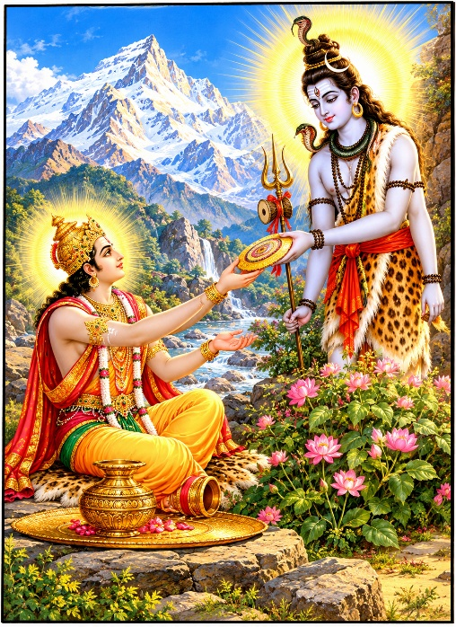
सूतजी बोले— [हे विप्रो!] इसके आगे मैं सभी लोकोंके कल्याणके लिये अपनी इच्छासे उनके विग्रहकी उत्पत्ति तथा [मूर्ति] प्रतिष्ठाके सम्पूर्ण फलका वर्णन करूँगा॥१॥
स्कन्द (कार्तिकेय) तथा उमासहित महादेवकी मूर्ति बनाकर उन्हें उत्तम आसनपर विराजमान करके भक्तिपूर्वक [उस मूर्तिकी] प्रतिष्ठाकर सभी कामनाओंको प्राप्त करना चाहिये॥२॥
कार्तिकेय तथा उमासहित शिवकी विधिपूर्वक एक बार भी पूजा करके मनुष्य जो फल प्राप्त करता है, उसे जैसा मैंने सुना है; वैसा बताता हूँ॥३॥
वह योगी करोड़ों सूर्योंके समान तेजवाले, सभी अभीष्ट वस्तुओंसे सम्पन्न, रुद्रकन्याओंसे युक्त, गान-नृत्य आदिसे परिपूर्ण विमानोंमें [भगवान्] शिवकी भाँति प्रलयपर्यन्त विहार करता है। वहाँ महान् सुखोंका उपभोग करके वह महातेजस्वी [योगी] सभी कामनाओंको पूर्ण करनेवाले विमानोंसे [क्रमशः] उमालोक, कुमारलोक, ईशानलोक, विष्णुलोक, ब्रह्मलोक, प्रजापतिलोक, जनलोक तथा महर्लोक पहुँच जाता है; पुनः इन्द्रलोकमें पहुँचकर वहाँ दस हजार वर्षोंतक इन्द्रपदका भोग करनेके अनन्तर भुवर्लोकमें दिव्य तथा परम सुन्दर सुखोंको भोगकर मेरु पर्वतपर पहुँचकर देवताओंके भवनोंमें आनन्द प्राप्त करता है॥४-७½॥
जो एक पैर, चार भुजाओं, तीन नेत्रों तथा त्रिशूलसे युक्त हैं; जो अपने वाम भागसे विष्णु तथा दक्षिण भागसे ब्रह्माको उत्पन्न करके विराजमान हैं; जिनसे अट्ठाईस करोड़ रुद्र उत्पन्न हुए हैं; जो सभी अंगोंसे अत्यन्त प्रभावाले तथा पचीस तत्त्वोंवाले जीवात्मा साक्षात् पुरुषको हृदयसे, अपने बायें भागसे प्रकृतिको, बुद्धिदेशसे बुद्धिको, अपने अहंकारसे अहंकारको, तन्मात्राओंसे तन्मात्राओंको, अपनी इन्द्रियोंसे लीलापूर्वक इन्द्रियोंको, पैरके मूलभागसे पृथ्वीको, गुह्यदेशसे जलको, नाभिस्थलसे अग्निको, हृदयदेशसे सूर्यको, कण्ठसे चन्द्रमाको, भौहोंके मध्यभागसे आत्मा (रुद्र) को, मस्तकसे स्वर्गको—इस प्रकार सम्पूर्ण चराचर जगत्को उत्पन्न करके साक्षात् विराजमान हैं, उन सर्वज्ञ तथा सर्वव्यापी परमेश्वरकी मूर्तिको विद्याविधानके अनुसार बनाकर विधिपूर्वक उनकी प्रतिष्ठा करके मनुष्य शिवसायुज्य प्राप्त करता है॥८-१४॥
तीन पैरोंवाले, सात हाथोंवाले, चार श्रृंगोंवाले तथा दो सिरोंवाले यज्ञेश्वर अग्निस्वरूप ईशानको स्थापित करके मनुष्य विष्णुलोकमें प्रतिष्ठित होता है। वहाँ एक लाख कल्पतक महान् भोगोंको भोगकर मनुष्य सुखी रहता है और [पुनः] क्रमसे इस लोकमें आकर समस्त यज्ञोंको सम्पन्न करता है॥१५-१६॥
जो मनुष्य उमासहित वृषपर आरूढ़ अर्धचन्द्रधारी शिवकी मूर्तिको स्थापित करता है, वह दस हजार अश्वमेध यज्ञोंको करनेसे जो पुण्य होता है, उसे प्राप्तकर किंकिणीजालोंसे युक्त स्वर्ण-विमानसे दिव्य शिवलोकमें जाकर वहींपर मुक्त हो जाता है॥१७-१८॥
नन्दी तथा उमासहित और सभी गणोंसे घिरे हुए महादेवकी प्रतिष्ठा करके मनुष्य जो फल प्राप्त करता है, जैसा मैंने सुना है, उसे बता रहा हूँ। वह सूर्यमण्डलके समान देदीप्यमान वृषभोंसे जुते हुए, अप्सराओंसे भरे हुए, देव-दानवोंके लिये दुर्लभ और नृत्य करती हुई अप्सराओंसे चारों ओरसे पूर्णतः सुशोभित विमानोंसे दिव्य शिवलोकमें जाकर गणाधिपति पदको प्राप्त करता है॥१९-२१॥
पार्वतीसहित नृत्य करते हुए, हजार भुजाओंवाले अथवा चार भुजाओंवाले, भृगु आदि तथा भूतसमूहोंसे घिरे हुए, पार्वतीके साथ, ब्रह्मा-विष्णु-इन्द्र-चन्द्र आदि सभी देवताओंसे सदा नमस्कृत और मातृकाओं तथा मुनियोंसे घिरे हुए देवदेवेश्वर-प्रभु-सर्वज्ञ-परमेश्वर-वृषभध्वज शिवकी मूर्ति बनाकर भक्तिपूर्वक उसकी प्रतिष्ठा करके [मनुष्य] जो फल प्राप्त करता है, उसे मैं बताता हूँ— सभी यज्ञ, तप, दान, तीर्थ तथा देवदर्शन करनेमें जो फल होता है, उसका करोड़ों गुना फल प्राप्त करके वह शिवलोकको जाता है और वहाँ प्रलयपर्यन्त महान् सुखोंको भोगकर पुनः दूसरी सृष्टिका प्रारम्भ होनेपर मनु-पद प्राप्त करता है॥२२-२६½॥
दिगम्बर, चार भुजाओंवाले, श्वेतवर्णवाले, तीन नेत्रोंवाले, सर्पकी मेखलावाले, हाथमें कपाल धारण किये हुए और काले तथा घुँघराले केशवाले देवेश्वरको [मूर्तिरूपमें] बनाकर भक्तिपूर्वक प्रतिष्ठा करके मनुष्य शिव-सायुज्य प्राप्त करता है॥२७-२८॥
गजासुरको विदीर्ण करनेवाले, उमासहित, सभी कामनाओंको पूर्ण करनेवाले, कृष्ण वर्णवाले, लाल नेत्रोंवाले, तीन नेत्रोंवाले, चन्द्रको आभूषणके रूपमें धारण करनेवाले, सिरपर काकपक्ष धारण करनेवाले नागटंक धारण करनेवाले, व्याघ्रचर्मको उत्तरीयके रूपमें लपेटे हुए, मृगचर्मको वस्त्ररूपमें धारण किये हुए, तीक्ष्ण दाँतोंवाले, हाथमें गदा लिये हुए, हाथमें कपाल लिये हुए, हुं-फट् महाशब्दसे सभी दिशाओंको गुंजित करते हुए, दोनों हाथोंमें व्याघ्रचर्म तथा कमण्डलु धारण किये हुए, हँसते हुए, गरजते हुए, काले समुद्रको पीते हुए, भूतसमूहोंके साथ नृत्य करते हुए और गणसमुदायोंसे सुशोभित होते हुए देवेश्वर प्रभु शिवको [मूर्तिरूपमें] अपने सामर्थ्यके अनुसार बनाकर तथा प्रतिष्ठा करके [मनुष्य] सभी विघ्नोंसे रहित होकर शिवलोकमें प्रतिष्ठित होता है और वहाँ प्रलयपर्यन्त महान् सुखोंको भोगकर रुद्रोंसे विचारपूर्वक ज्ञान प्राप्त करके मुक्त हो जाता है॥२९-३४½॥
अर्धनारीश्वर, चार भुजाओंवाले, वर तथा अभय मुद्रायुक्त हाथवाले, त्रिशूल तथा पद्म धारण किये हुए, स्त्री तथा पुरुष भावमें स्थित और समस्त आभूषणोंसे सुशोभित अत्युत्तम प्रभु महादेवको [मूर्तिरूपमें] बनाकर भक्तिपूर्वक प्रतिष्ठा करके वह शिवलोकमें प्रतिष्ठित होता है और वहाँ चन्द्रमा तथा तारोंकी स्थितिपर्यन्त महान् सुखोंको भोगकर अणिमा आदि गुणोंसे युक्त होकर ज्ञान प्राप्त करके वह मुक्त हो जाता है॥३५-३७½
जो [मनुष्य] शिष्य-प्रशिष्योंसे घिरे हुए, उपदेशकी मुद्रामें उठे हुए हाथवाले, देवदेवेश तथा सर्वज्ञ लकुलीश्वरको [मूर्तिरूपमें] बनाकर और पुनः भक्तिपूर्वक उन्हें स्थापित करके शिवलोकको जाता है। वह मनुष्य सौ युगोंतक वहाँ महान् सुखोंको भोगकर [पुनः] ज्ञानयोग प्राप्त करके वहींपर मुक्त हो जाता है, जो पूर्वदेवों तथा अमरोंका सर्वाभीष्ट स्थान है॥३८-४०½
ध्यानमुद्रामें स्थित, चिताकी भस्म लगाये हुए, त्रिपुण्ड्र धारण किये हुए, मुण्डमाला धारण किये हुए, ब्रह्माके केशसे निर्मित एक यज्ञोपवीत धारण किये हुए, बाएँ हाथमें ब्रह्माका श्रेष्ठ कपाल धारण किये हुए और भगवान् विष्णुका शरीर धारण किये हुए महादेव शिवकी मूर्ति बनाकर तथा भक्तिपूर्वक उसकी प्रतिष्ठा करके मनुष्य भवसागरसे पार हो जाता है जाता है। जो एक बार भी ‘ओम् नमो नीलकण्ठाय’ — इस पुण्यदायक अष्टाक्षर मन्त्रका उच्चारण करता है, वह पापोंसे छूट जाता है; और अपने सामर्थ्यके अनुसार गन्ध आदि [उपचारों] से इस मन्त्रके द्वारा भक्तिपूर्वक देवदेवेश्वरकी विधिवत् पूजा करके शिवलोकमें प्रतिष्ठा प्राप्त करता है॥४१-४५½॥
सुदर्शन चक्र धारण किये हुए तथा जलन्धरको दो टुकड़ोंमें किये हुए स्वरूपमें जलन्धर-विनाशक प्रभु महादेवको [मूर्तिरूपमें] बनाकर भक्तिपूर्वक [उनकी] प्रतिष्ठा करके मनुष्य शिवसायुज्य प्राप्त करता है; इसमें सन्देह नहीं करना चाहिये। पूर्वकथित लक्षणोंवाले, सुदर्शन चक्रके दाता तथा पूज्यमान विष्णुके द्वारा नेत्रदानरूपी पूजासे अर्चित देवेश्वरको [मूर्तिरूपमें] बनाकर तथा भक्तिपूर्वक उन्हें स्थापित करके मनुष्य शिवलोकमें प्रतिष्ठित होता है॥४६-४८½॥
निकुम्भकी पीठपर स्थित, [अपना] दाहिना चरणकमल उसकी पीठपर टिकाये हुए, वामभागमें पार्वतीको बैठाये हुए, सर्परूपी किंकिणीसे वेष्टित कुहनीको [अपने] त्रिशूलके अग्रभागपर टिकाये हुए और पासमें हाथ जोड़कर खड़े अन्धककी ओर देखते हुए स्वरूप (मूर्ति) को विधिके अनुसार बनाकर उसकी प्रतिष्ठा करनेसे मनुष्य शिवसायुज्य प्राप्त करता है॥४९-५१॥
जो [भक्त] त्रिपुरका विनाश करनेवाले देवदेवेश ईश्वरको इस स्वरूपमें स्थापित करता है— जिसमें वे धनुषबाण लिये हुए हों, अर्धचन्द्रको आभूषणके रूपमें धारण किये हुए हों, उमाके साथ रथपर बैठे हुए हों, ब्रह्माजी [उनके] सारथि हों; वह भी उसी स्वरूपसे शिवलोकमें जाकर आनन्दपूर्वक दूसरे शिवकी भाँति क्रीड़ा करता है; इसमें सन्देह नहीं है। हे श्रेष्ठ ब्राह्मणो! वहाँ अपनी इच्छाके अनुसार महान् सुखोंको भोगकर उत्तम ज्ञान प्राप्त करके वह वहींपर मुक्त हो जाता है॥५२-५४½॥
गंगाको धारण किये हुए; सुखसे बैठे हुए; चन्द्रमाको सिरपर धारण किये हुए; गंगासहित; बाएँ गोदमें पार्वतीको बैठाये हुए और विनायक, ज्येष्ठ कार्तिकेय, सुन्दरी दुर्गा, सूर्य, चन्द्रमा, ब्रह्माणी, महेश्वरी, कौमारी, वैष्णवीदेवी, वरदायिनी वाराही, इन्द्राणी, चामुण्डा, वीरभद्र तथा विघ्नेशसहित शिवको [मूर्तिरूपमें] जो बुद्धिमान् स्थापित करता है, वह शिवसायुज्य प्राप्त करता है॥५५-५८॥
ऐसी मूर्ति जिसमें अव्यय शिवजी लिङ्गके रूपमें हों, बड़ी-बड़ी ज्वालाओंके समूहोंसे घिरे हुए हों, लिङ्गके मध्यमें चन्द्रमाको धारण किये हुए स्थित हों, हंसरूपधारी ब्रह्मा उनके दाहिने भागमें हाथ जोड़े हुए विराजमान हों, वाराहरूपधारी विष्णु नीचेकी ओर मुख किये हुए लिङ्गके अधोभागमें स्थित हों, अघोर महान् लिङ्ग अत्यधिक जलके मध्यमें स्थित हो— उसे बनाकर तथा भक्तिपूर्वक स्थापित करके भक्त शिवसायुज्य प्राप्त करता है। क्षेत्रकी रक्षा करनेवाले क्षेत्रपाल तथा प्रभु पशुपति शिवको [मूर्तिरूपमें] बनाकर भक्तिपूर्वक विधानके अनुसार उनको स्थापित करके भक्त शिवलोकमें प्रतिष्ठित होता है॥५९-६३॥
॥इस प्रकार श्रीलिङ्गमहापुराणके अन्तर्गत पूर्वभागमें ‘शिवमूर्तिप्रतिष्ठाफलकथन’ नामक छिहत्तरवाँ अध्याय पूर्ण हुआ॥७६॥
सतहत्तरवाँ अध्याय :
शिवमन्दिरोंके निर्माणका फल, शिवक्षेत्रों तथा शिवतीर्थोंके सेवनकी महिमा, शिवमन्दिरके उपलेपन आदिका माहात्म्य
ऋषिगण बोले— [हे सूतजी!] हमलोगोंने आपके मुखसे लिङ्गकी स्थापना, लिङ्गप्रतिष्ठाके फल तथा लिङ्गोंके भेदोंको सुना; अब आप मिट्टीसे लेकर रत्नोंतक द्रव्योंसे शिवालयका निर्माण करके मनुष्य जो फल प्राप्त करता है, उस फलको कृपापूर्वक बतायें॥१-२॥
सूतजी बोले— [हे ऋषियो!] जिन शिवका ज्ञानसम्पन्न भक्त इस लोकमें पुत्र, स्त्री, घर आदिसे बन्धनको प्राप्त नहीं होता, उसे गृहोंसे क्या प्रयोजन? फिर भी इन्द्र तथा ब्रह्माके द्वारा नमस्कृत परमेश्वरके भक्त ईंटों अथवा पत्थरोंसे उनका उत्तम मन्दिर बनवाकर दिव्य रुद्रलोकको जाते हैं॥३-४॥
बालभावसे भी पत्थर, मिट्टी अथवा धूलसे इन शम्भुका उस प्रकारका आलय (मन्दिर) बनाकर आदिदेव शिवका विधिपूर्वक पूजन करके वे रुद्रत्व प्राप्त करते हैं॥५॥
अतः भक्तोंको धर्म, अर्थ, कामकी सिद्धिके लिये पूर्ण प्रयत्नसे भक्तिपूर्वक शिवालयका निर्माण करना चाहिये॥६॥
केसर, नागर, द्राविड़ अथवा अन्य प्रकारका शिवालय भक्तिपूर्वक बनाकर भक्त शिवलोकमें प्रतिष्ठा प्राप्त करता है॥७॥
जो [भक्त] कैलास नामक शिवालयका निर्माण करता है, वह कैलासशिखरके आकारवाले विमानोंमें सुखपूर्वक आनन्द मनाता है॥८
जो मनुष्य शिवके लिये अपने सामर्थ्यके अनुसार भक्तिके साथ विधिपूर्वक उत्तम, मध्यम अथवा अधम [श्रेणीका] मन्दरनामक शिवालय बनाता है, वह मन्दरपर्वतके सदृश, सभी ओर मुखवाले, अप्सराओंसे युक्त तथा देवदानवोंके लिये दुर्लभ विमानोंसे रम्य शिवलोकमें जाकर अभीष्ट सुखोंका उपभोग करके ज्ञानयोग प्राप्तकर गणाधिपति पद प्राप्त करता है॥९-११॥
जो मेरु नामक शिवालय बनाता है, वह जो फल प्राप्त करता है, वह फल सभी महायज्ञोंके द्वारा भी सम्भव नहीं है; सभी प्रकारके यज्ञ, तप, दान, तीर्थ तथा वेदाध्ययन करनेसे जो फल होता है, उस समस्त फलको प्राप्त करके वह [मनुष्य] शिवकी भाँति चिरकालतक आनन्दित रहता है॥१२-१३॥
जो बुद्धिमान् [मनुष्य] भक्तिपूर्वक निषध नामक शिवालय बनाता है, वह शिवलोक प्राप्त करके शिवके समान चिरकालतक आनन्दित रहता है॥१४॥
हे विप्रो! जो [मनुष्य] हिमशैल नामक अत्युत्तम शुभ शिवालय बनाता है, वह हिमशैलके समान विमानोंसे दिव्य शिवलोक पहुँचकर ज्ञानयोग प्राप्त करके गणाधिपति पद प्राप्त करता है॥१५½॥
जो मनुष्य अपने सामर्थ्यके अनुसार रुद्र शिवके लिये भक्तिपूर्वक नीलाद्रिशिखर नामक परम सुन्दर शिवालय बनाता है, वह जो फल प्राप्त करता है, उसे मैं बता रहा हूँ। भक्तिपूर्वक हिमशैल [नामक शिवालय] का निर्माण करनेपर जो फल पहले बताया गया है, उस सम्पूर्ण फलको प्राप्त करके वह सभी देवताओंसे नमस्कृत होता हुआ रुद्रलोक प्राप्त करके रुद्रोंके साथ आनन्द मनाता है॥१६-१८½॥
रुद्रका अत्यन्त प्रिय महेन्द्रशैल नामक शिवालय बनाकर मनुष्य जो फल प्राप्त करता है, उस फलको मैं बता रहा हूँ— हे मुनिश्रेष्ठो! वह [मनुष्य] महेन्द्रपर्वतके आकारवाले तथा वृषभोंसे जुते हुए विमानोंसे दिव्य शिवलोकमें जाकर [वहाँ] यथेष्ट सुखोंको भोगकर रुद्रोंसे पूर्ण ज्ञान प्राप्त करके विषयोंको विषकी भाँति त्यागकर शिवसायुज्य प्राप्त करता है॥१९-२१½॥
जो [मनुष्य] रत्नजटित सोनेका द्राविड़, नागर अथवा केसर कोटिका शिवालय विधानपूर्वक बनवाता है अथवा सम अथवा दीर्घ शिखर (चोटी) या मण्डप बनवाता है, उसके पुण्यका वर्णन सैकड़ों युगोंमें भी नहीं किया जा सकता है। हे द्विजो! जो [मनुष्य] जीर्ण (पुराने), गिरे हुए, टूटे हुए अथवा फूटे हुए शिवालय, उसके मण्डप, चहारदीवारी, फाटक अथवा द्वार आदिको पूर्वकी भाँति अत्यन्त सुन्दर करा देता है; वह [वास्तविक] निर्मातासे भी अधिक पुण्य प्राप्त करता है; इसमें सन्देह नहीं है॥२२-२५½॥
जो मनुष्य आजीविकाके लिये शिवालयमें कार्य करता है, वह [अपने] बान्धवोंसहित स्वर्गलोक जाता है; इसमें सन्देह नहीं है। जो अपने सुखकी सिद्धिके लिये शिवालयमें एक बार भी [कुछ] कार्य कर देता है, वह सुख प्राप्त करके प्रसन्न रहता है॥२६-२७½॥
अतः हे उत्तम मुनियो! जो मनुष्य भक्तिपूर्वक काष्ठ, पत्थर आदिसे शिवालय बनवाता है, वह शिवलोकमें प्रतिष्ठा प्राप्त करता है। हे श्रेष्ठ मुनियो! महेशकी प्रसन्नताके लिये तथा धर्म, अर्थ, काम, मोक्षके लिये पूर्ण प्रयत्नके साथ शिवालयका निर्माण करना चाहिये॥२८-२९½॥
हे श्रेष्ठ मुनियो! यदि कोई उत्तम शिवालय बनानेमें असमर्थ हो, तो वह [शिवालयमें] सम्मार्जन (बुहारना) आदिके द्वारा भी समस्त वांछित फलोंको प्राप्त कर लेता है। जो [व्यक्ति] कोमल तथा सूक्ष्म झाडूसे सफाई करता है, वह महीने भरमें हजार चान्द्रायण व्रतका फल प्राप्त करता है। जो [मनुष्य] पवित्र वस्त्रसे छने हुए गन्ध तथा गोमयके जलसे विधानके अनुसार आलेपन (लीपनेका कार्य) करता है, वह वर्षपर्यन्त चान्द्रायणव्रत करनेका फल प्राप्त करता है॥३०-३२½॥
शिवलिङ्गके चारों ओर आधा कोशका क्षेत्र शिवक्षेत्र होता है। जो [अपने] दुस्त्यज प्राणोंको [इस क्षेत्रमें] छोड़ता है, वह शिव-सायुज्य प्राप्त करता है। हे सुव्रतो! यह [अर्धकोश] मान स्वयम्भू बाणलिङ्ग अर्थात् केवल ज्योतिर्लिङ्गका है। हे द्विजोत्तमो! अन्य स्वयम्भू लिङ्गके लिये शिवक्षेत्रका मान उसका आधा (कोशका चतुर्थांश), ऋषिस्थापित लिङ्गके लिये उसका आधा (कोशका आठवाँ भाग) और मनुष्यके द्वारा स्थापित लिङ्गके लिये उसका भी आधा (कोशका सोलहवाँ) भाग होता है। हे द्विजोत्तमो! इसी प्रकार यतियोंके निवासस्थानसे कोशके सोलहवें भागका क्षेत्र शिवक्षेत्र है। रुद्रोंके अवतारस्थल, उनके शिष्यों-प्रशिष्योंके अवतारस्थल, योगाचार्योंके अवतारस्थल, उनके शिष्योंके अवतारस्थल तथा उनके भी शिष्य-प्रशिष्योंके अवतारस्थलसे आधे कोशका मण्डल शिवक्षेत्र होता है॥३३-३६½
हे द्विजो! महापुण्यप्रद श्रीपर्वत तथा उसके प्रान्तभाग— इस शिवक्षेत्रमें जो प्राणोंका त्याग करता है, वह शिवसायुज्य प्राप्त करता है। जो [मनुष्य] वाराणसीमें तथा विशेषकर वहाँ अविमुक्त क्षेत्रमें, केदारमें, विशेषकर महाक्षेत्र प्रयागमें तथा कुरुक्षेत्रमें प्राणत्याग करता है, वह मोक्ष प्राप्त करता है। प्रभास, पुष्कर, अवन्ती, अमरेश्वर तथा वणीशेलाकुलमें मृत प्राणी शिवात्मताको प्राप्त होता है। वाराणसीमें मरनेवाला प्राणी पुनर्जन्मको प्राप्त नहीं होता है। जो [प्राणी] त्रिविष्टप, विमुक्त, केदारक्षेत्र, सङ्गमेश्वर शालक, जम्बुकेश्वर, शुक्रेश्वर, गोकर्ण, भास्करेश, गुहेश्वर, हिरण्यगर्भ तथा नन्दीशक्षेत्रमें प्राण छोड़ता है, वह परम गति प्राप्त करता है। हे श्रेष्ठ मुनियो! [अपने] शरीरको नियमोंसे सुखाकर जो योगी मानुष (मानवस्थापित), दैविक (देवस्थापित), आर्ष (मुनि-स्थापित) या स्वयम्भू (स्वयं उत्पन्न) किसी भी शिवक्षेत्रमें प्राणत्याग करता है, वह शिवत्वको प्राप्त होता है। ज्योतिर्लिङ्ग-क्षेत्र तथा देवक्षेत्रके विषयमें सन्देह नहीं करना चाहिये॥३७-४४½॥
शिवक्षेत्रमें भलीभाँति परमेश्वरकी पूजा करके आग जलाकर जो [प्राणी] अपने शरीरको उसमें होम कर देता है, वह परम गति प्राप्त करता है। हे श्रेष्ठ मुनियो! जो [मनुष्य] निराहार रहकर शिवक्षेत्रमें प्राणका त्याग करता है, वह शिवसायुज्य प्राप्त करता है। जो [अपने] दोनों पैरोंको काटकर भी शिवक्षेत्रमें निवास करता है, वह शिवत्वको प्राप्त होता है; इसमें सन्देह नहीं करना चाहिये॥४५-४७½॥
शिवक्षेत्रका दर्शन पुण्यदायक होता है, वहाँपर प्रवेश करना उससे सौ गुना अधिक पुण्यदायक होता है और उसका स्पर्श तथा प्रदक्षिणा उससे भी सौ गुना पुण्यप्रद होता है। वहाँपर [मूर्तिको] जल-स्नान करानेसे उससे भी सौ गुना पुण्य होता है। हे विप्रो! दुग्धसे स्नान करानेसे उससे सौ गुना, दहीसे स्नान करानेसे उससे हजार गुना, मधुसे स्नान करानेसे उससे सौ गुना, घृतसे स्नान करानेसे उससे अनन्त गुना और शर्करासे स्नान करानेसे उससे भी सौ गुना अधिक पुण्य कहा गया है॥४८-५०½॥
शिवक्षेत्रके समीपमें स्थित [किसी] नदीपर जाकर उसमें स्नान करके और अन्नका त्याग करके जो [अपना] शरीर छोड़ता है, वह शिवलोकमें प्रतिष्ठा प्राप्त करता है। शिवक्षेत्रके समीपमें स्थित सभी सुन्दर नदियाँ, बावलियाँ, कुएँ तथा तालाब शिवतीर्थ कहे गये हैं। हे श्रेष्ठ द्विजो! उन तीर्थोंमें श्रद्धापूर्वक स्नान करके मनुष्य ब्रह्महत्या आदि पापोंसे मुक्त हो जाता है; इसमें सन्देह नहीं है॥५१-५३½॥
हे श्रेष्ठ मुनियो! शिवतीर्थोंमें प्रातःकाल स्नान करके वह मनुष्य अश्वमेध यज्ञका फल प्राप्त करके रुद्रलोकको जाता है। मध्याह्नकालमें शिवतीर्थोंमें एक बार भी भक्तिपूर्वक स्नान करके मनुष्य गंगास्नानके समान पुण्य प्राप्त करता है; इसमें सन्देह नहीं है। सूर्यके अस्त हो जानेपर शिवतीर्थोंमें स्नान करके मनुष्य पापकंचुक छोड़कर शिवपद प्राप्त करता है। हे द्विजो! शिवतीर्थोंमें एक बार भी त्रिस्रवण (तीनों कालोंमें) स्नान करके मनुष्य शिवसायुज्य प्राप्त कर लेता है; इसमें सन्देह नहीं करना चाहिये। हे श्रेष्ठ द्विजो! पूर्वकालमें कोई सुअर मार्गमें कुत्तेको देखकर डरके मारे संयोगवश शिवतीर्थमें गिर पड़ा और वह एक बार डुबकी लगाकर स्वयं मर गया; इससे उसने गणाधिपति पदको प्राप्त किया॥५४-५९॥
जो प्रातःकाल लिङ्गस्वरूपी देवदेवेश्वर शिवका दर्शन करता है, वह सबसे उच्च पद प्राप्त करता है; मध्याह्नमें महादेवका दर्शन करके वह यज्ञका फल प्राप्त करता है और सायंकाल दर्शन करके सभी यज्ञोंका फल प्राप्तकर मानसिक तथा वाचिक पापों, बड़े-से-बड़े शारीरिक पापों, उपपातकों और अनुपातकोंसे मुक्त हो जाता है। सूर्यकी सभी संक्रान्तियोंमें लिङ्गके आकारवाले महादेव प्रभु ईशानका दर्शन करके मनुष्य महीनेभरमें किये गये पापका त्याग करके शिवलोकको जाता है। दक्षिणायन (कर्कसंक्रान्ति) तथा उत्तरायण (मकरसंक्रान्ति) तथा विषुवत् (मेष-तुला)-संक्रान्तिमें अर्धमासपर्यन्त विधिवत् शिवकी पूजा करके मनुष्य परम गति प्राप्त करता है॥६०-६४॥
पवित्रावस्थामें जो मनुष्य सव्य-अपसव्य-विधिसे अर्थात् सोमसूत्रका उल्लंघन किये बिना धीमी गतिसे चारों ओरसे शिवालयकी तीन प्रदक्षिणा करता है, वह प्रत्येक पदपर अश्वमेध यज्ञका फल प्राप्त करता है। जो [मनुष्य] वाणीसे नित्य परमेश्वर शिवका जप करता है, वह भी शिवलोकको जाता है; उसे पाकर [उसके लिये] फिर क्या शेष रह जाता है॥६५-६६½॥
हे महाभागो! गन्ध तथा गोमय-मिश्रित जलसे मण्डलाकार क्षेत्र बनाकर उसमें मोती, इन्द्रनील, पद्मराग, स्फटिक, मरकत, स्वर्ण तथा रजत (चाँदी) के अति सुन्दर चूर्णांके द्वारा अथवा धनके अभावमें उसी वर्णके लौकिक चूर्णांक द्वारा महादेवके समीप कर्णिकासहित दस हाथ परिमापका शुभ कमल बनाकर वहाँ पाँच, छः, आठ तथा नौ वाम आदि शक्तियोंके सहित परम इष्ट प्रदान करनेवाले महादेवका आवाहन करके पुनः आठ शक्तियोंसहित ईशानका आवाहन करके दस कोणोंमें दस शक्तियोंके सहित एवं उसके बाहर दस शक्तियोंके सहित शिवजीका पूजन करके तथा उन्हें प्रणाम करके देवदेवके लिये उसे निवेदित करनेसे पृथ्वीदानका फल प्राप्त होता है। निर्धन [भक्त] शालि चावलके चूर्ण आदिसे भी कमल बनाकर [पूजन करके] पूर्वोक्त समस्त पुण्य प्राप्त करता है; इसमें सन्देह नहीं है॥६७-७३½॥
मण्डलमें रत्नोंके चूर्ण आदिसे अथवा अन्य चूर्णोंसे बारह दलोंवाला उत्तम कमल बनाकर मण्डलके मध्यमें बारह मूर्तियोंके साथ सूर्यको स्थापित करके ग्रहोंसे घिरे हुए सूर्यकी पूजा करनी चाहिये; इससे वह [भक्त] उत्तम सूर्यसायुज्य प्राप्त करता है॥७४-७५½
इसी प्रकार प्राकृत मण्डल बनाकर उसमें छः दलोंवाला कमल बनाकर इसके मध्य भागमें आर्या ब्रह्मरूपिणी देवेशी प्रकृति, दाहिनी ओर सत्त्वमूर्ति, बायीं ओर रजोगुण, सामने तमोमूर्ति, मध्यमें देवी अम्बिका, दक्षिणमें पाँच भूतों तथा पाँच तन्मात्राओं और उत्तरमें पाँच कर्मेन्द्रियों तथा पाँच ज्ञानेन्द्रियोंकी विधिवत् पूजा करके उस षट्दलकमलमें आत्मा-अन्तरात्मा इन दोनोंकी, बुद्धिकी तथा महत्सहित अहंकारकी पूजा करनी चाहिये; इससे वह समस्त यज्ञोंका फल प्राप्त करता है। [हे मुनियो!] इस प्रकार मैंने आप लोगोंको सम्पूर्ण उत्तम प्राकृत मण्डल बता दिया॥७६-८०½॥
हे श्रेष्ठ विप्रो! अब मैं सम्पूर्ण कामनाओंको सिद्ध करनेवाले साधनका वर्णन करूँगा। मन्त्रको जाननेवाला [भक्त] विधानपूर्वक गायके गोबरसे गोचर्म के बराबर चौकोर मण्डल बनाकर जलसे अभ्युक्षण (छिड़काव) करके उसे वितान आदि अथवा मनोहर छत्रोंसे, स्वर्णनिर्मित अर्धचन्द्राकार बुद्बुदोंसे, सुवर्णमय पीपलकी पत्तियोंसे खिले हुए श्वेत कमलों तथा लाल कमलों और नीलकमलोंसे, वितानके किनारे लटकती हुई मोतियोंकी मालाओंसे, श्वेत ध्वजोंसे, श्वेत मिट्टीके पात्रोंसे, मनोहर जलपूरित घड़ोंसे, फल-पल्लव-मालाओंसे, वैजयन्तियोंसे, अंशुकों (रेशमी वस्त्र) से, पचास दीप मालाओंसे तथा पाँच प्रकारके [सुगन्धित] धूपोंसे अलंकृत करके पचास दलोंसे युक्त उत्तम कमल बनाये। इस प्रकार विविध रंगके चूर्णोसे अथवा सफेद चूर्णोंसे विधानपूर्वक एक हाथ परिमापका कमल बनाकर [उसकी] कर्णिकामें देवीसहित देवेश्वर शिवकी स्थापना करे। हे सुव्रतो! [कमलके] पत्रोंमें पूर्व दिशा आदिके क्रमसे रुद्रोंके साथ [अकार आदि] वर्णोंको स्थापित करे, जो आदिमें प्रणव (ॐ) तथा अन्तमें नमः से युक्त हों। हे श्रेष्ठ मुनियो! इस प्रकार [भक्त] क्रमसे गन्ध, पुष्प आदिसे पूजन करके वहाँ विधिपूर्वक पचास ब्राह्मणोंको भोजन कराये। तत्पश्चात् उन श्रेष्ठ ब्राह्मणोंको जपमाला, यज्ञोपवीत, कुण्डल, कमण्डलु, आसन, छड़ी, पगड़ी तथा वस्त्र प्रदान करके देवदेव शम्भुको महाचरु निवेदित करके एक काली गाय तथा काला वृषभ प्रदान करे; अन्तमें चूर्णनिर्मित मण्डल तथा पूजनके उपयोगके द्रव्योंको देवदेव शिवको समर्पित कर दे और आदिमें ‘ओम्’ लगाकर बुद्धिमान् [भक्त] प्रत्येक वर्णको अनुक्रमसे जपे॥८१-९३॥
[हे विप्रो!] इस प्रकार जो मनुष्य श्रद्धापूर्वक उत्तम सम्पूर्ण मण्डल बनाकर जिस फलको प्राप्त करता है, उसे मैं संक्षेपमें बता रहा हूँ। समुचित रूपसे विधिपूर्वक अंगोंसहित वेदोंका अध्ययन करके विधानके अनुसार क्रमसे ज्योतिष्टोम आदिसे लेकर विश्वजित्तक सभी यज्ञोंको करके अपने सदृश पुत्रोंको उत्पन्न करके पत्नीसहित वानप्रस्थ-आश्रममें प्रविष्ट होकर अग्निकर्म करके; पुनः हे द्विजो! चान्द्रायण आदि सभी व्रत सम्पन्न करके और इसके बाद सभी क्रियाओंका त्याग करके ब्रह्मविद्याका अध्ययनकर यत्नपूर्वक ज्ञान प्राप्तकर पुनः उस ज्ञानके द्वारा उस ज्ञेयका दर्शन करके वह योगी जो फल पाता है, उस फलको वह सम्पूर्ण वर्णमण्डलके दर्शनमात्रसे प्राप्त कर लेता है॥९४-९८॥
हे श्रेष्ठ द्विजो! जिस किसी भी प्रकार शिवालयको लीपकर सामने, पीछे, उत्तरमें तथा दक्षिणमें चतुष्कोण मण्डल बनाकर उसे चारों ओरसे चूर्णोंसे सजाकर पुष्प, अक्षत आदिसे पूजन करके मनुष्य सभी पापोंसे मुक्त हो जाता है। जो [मनुष्य] एक बार भी भक्तिपूर्वक गर्भगृहको चन्दन आदि तथा कपूरसहित गन्धद्रव्योंसे चारों ओरसे लीपकर सभी ओर सुगन्धित पुष्प बिखेरकर चार प्रकारके धूपोंसे उसे धूपित करके भगवान् ईशान (शिव) की प्रार्थना करता है, वह शिवलोकको जाता है। वह मनुष्य वहाँ सौ करोड़ कल्पोंतक महान् सुखोंको भोगकर अपने देहरूपी सुगन्धित पुष्पोंसे शिवमन्दिरको पूरित करता हुआ क्रमसे गन्धर्वलोक पहुँचकर वहाँ गन्धर्वोसे भलीभाँति पूजित होता है, [पुनः] क्रमसे इस लोकमें आकर पराक्रमी राजा होता है॥९९-१०४॥
वे सदाशिव आदिदेव, महादेव, सृष्टि-पालन-संहार करनेवाले, जगत्के स्वामी तथा सर्वव्यापी हैं। शिवरूपी ब्रह्मसे [मोक्षसुखरूपी] अमृतको ग्रहण करना चाहिये और मोक्षके साधनस्वरूप उत्तम, व्यक्त, अव्यक्त, नित्य तथा अचिन्त्य प्रभुका सदा अर्चन करना चाहिये॥१०५-१०६
॥इस प्रकार श्रीलिङ्गमहापुराणके अन्तर्गत पूर्वभागमें ‘उपलेपनादिकथन’ नामक सतहत्तरवाँ अध्याय पूर्ण हुआ॥७७॥
अठहत्तरवाँ अध्याय :
शिवाचारके परिपालनमें अहिंसाधर्मकी महिमा एवं शिवभक्तिका माहात्म्य
सूतजी बोले — हे श्रेष्ठ मुनियो! शिवक्षेत्रमें वस्त्रके द्वारा छाने हुए पवित्र जलसे ही उपलेपन-कार्य करना चाहिये; अन्यथा सिद्धि नहीं मिलती है। हे श्रेष्ठ मुनियो! नदीसे ग्रहण किया गया फेनरहित जल, विशेषकर जो पुनः वस्त्रसे छाना गया हो— ऐसा जल पवित्र होता है॥१-२॥
अतः हे उत्तम द्विजो! समस्त कार्योंकी सिद्धिके लिये सभी देवकार्योंको पवित्र जलसे करना चाहिये।
जल सूक्ष्म कीटाणुओंसे युक्त रहता है, अतः निश्चय ही अपवित्र जलसे देवकार्य करनेपर वही सारा पाप होता है, जो उन्हें मारनेसे होता है। झाडू लगाने, सफाई करने, विशेष करके अग्निकर्ममें, कूटने पीसनेमें तथा जलके संग्रहमें गृहस्थ मनुष्योंसे हिंसा हो जाती है, अतः हिंसासे बचना चाहिये। हे द्विजो! सभी प्राणियोंके प्रति यह अहिंसा [भाव] सबसे बड़ा धर्म है, अतः पूर्ण प्रयत्नसे वस्त्रसे पवित्र किया हुआ (छाना हुआ) जल प्रयोग करना चाहिये॥३-६½॥
वह दान पुण्यप्रद तथा सभी दानोंमें उत्तमोत्तम है, जो अभय देनेवाला होता है, अतः सभी जगह सर्वदा हिंसाका त्याग करना चाहिये। मन-वाणी तथा कर्मसे जो किसीकी हिंसा नहीं करता अर्थात् उन्हें दुःख नहीं पहुँचाता, ऐसे अहिंसक व्यक्तिकी सभी प्राणी सदा रक्षा करते हैं और हिंसकको कष्ट पहुँचाते हैं। वेदके पारगामी विद्वान्को सम्पूर्ण त्रिलोकका दान देकर मनुष्य जो फल पाता है, उसका करोड़ों गुना फल अहिंसक मनुष्य प्राप्त करता है॥७-९½॥
मन, वचन तथा कर्मसे सभी प्राणियोंके हितमें संलग्न और दयादृष्टिके मार्गपर चलनेवाले रुद्रलोकको जाते हैं। जो लोग स्वामीके समान विभिन्न प्राणियोंको अपने पुत्र-पौत्रके समान समझकर स्नेहपूर्वक उनकी रक्षा करते हैं, वे रुद्रलोकको जाते हैं। अतः पूरे प्रयत्नसे वस्त्रसे पवित्र किये गये जलके द्वारा सदा अभ्युक्षण तथा विशेषरूपसे स्नान कराना चाहिये। सम्पूर्ण त्रिलोकका संहार करनेपर जो [पापका] फल कहा गया है, उस सम्पूर्ण पापको मनुष्य शिवालयमें मात्र एक प्राणीकी हत्या करके प्राप्त करता है॥१०-१३½॥
हे श्रेष्ठ द्विजो! शिवके निमित्त सदा पुष्पहिंसा की जानी चाहिये। यज्ञके लिये पशुहिंसा दुष्ट शासन है; यह क्षत्रियोंके द्वारा की जा सकती है। ब्रह्मवादी योगियोंके लिये [कोई] विधिनिषेध नहीं है। अतः निषिद्धका सेवन करनेपर भी वे वध्य नहीं हैं। सभी कर्मोंका त्याग करके संन्यास लिये हुए ब्रह्मवादी लोगोंका वध नहीं करना चाहिये; वे पापकर्ममें लगे रहनेपर भी सदा पूज्य हैं॥१४-१६½॥
अत्रिके कुलमें उत्पन्न सभी स्त्रियाँ पवित्र होती हैं। अत्रिवंशकी स्त्रीकी हत्या करनेपर ब्रह्महत्याके समान पाप लगता है, अतः पापकर्ममें रत होनेपर भी उन स्त्रियोंकी हत्या नहीं करनी चाहिये। सभी लोगोंको चाहिये कि यज्ञहेतु सर्वत्र सर्वदा स्त्रियोंको ग्रहण न करें; हे विप्रेन्द्रो! सभी वर्णोंकी स्त्रियाँ चाहे वे पापकर्ममें रत हों, मलिन हों, रूपवती हों, कुरूप हों अथवा मलिन वस्त्रोंवाली हों, मनुष्योंके द्वारा वध्य नहीं हैं; उनमें शिवभाव रखना चाहिये॥१७-२०॥
वेदविरुद्ध व्रत तथा आचारवाले और श्रुति तथा स्मृतिसे विमुख लोग पाखण्डी कहे गये हैं। द्विजातियोंको उनके साथ बातचीत नहीं करनी चाहिये, उनका स्पर्श नहीं करना चाहिये और उन्हें देखना नहीं चाहिये; उन्हें देखनेपर सूर्यका दर्शन करना चाहिये; फिर भी राजाओं तथा अन्य प्राणियोंको चाहिये कि उनका वध न करें॥२१-२२॥
हे द्विजो! मनुष्य सज्जनोंके संसर्गवश एक बार भी महेश्वरका पूजन करके रुद्रलोक प्राप्त कर लेता है। हे श्रेष्ठ द्विजो! सभी दयारहित लोग तथा परमकारण शिवमें भक्तिसे हीन सभी मनुष्य दुःख भोगते हैं। जो लोग देवदेव परमेष्ठी शिवके भक्त हैं, वे भाग्यशाली हैं और इस लोकमें सुखोंको भोगकर मुक्त हो जाते हैं॥२३-२५॥
जैसे [गृहस्थ] मनुष्योंका चित्त पुत्रों, स्त्रियों तथा घरोंमें आसक्त रहता है, उसी प्रकार उनका चित्त यदि यतियों तथा तपस्वियोंके सान्निध्यसे एक बार भी आदिदेवमें लग जाय तो परमेश्वरका लोक उनके लिये दूर नहीं है॥२६॥
॥इस प्रकार श्रीलिङ्गमहापुराणके अन्तर्गत पूर्वभागमें ‘भक्तिमहिमावर्णन’ नामक अठहत्तरवाँ अध्याय पूर्ण हुआ॥७८॥
उन्यासीवाँ अध्याय:
शिवपूजासे सभीका कल्याण, शिवपूजाकी विधि एवं शिवमन्दिरमें दीपदानकी महिमा
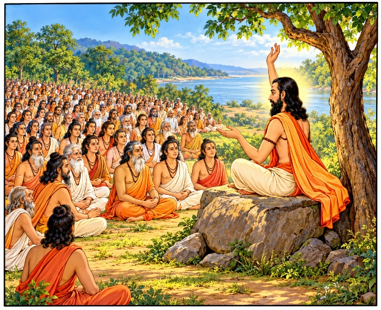
ऋषिगण बोले— हे महामते! मन्दबुद्धिवाले, अल्प आयुवाले, अल्प पराक्रमवाले तथा अल्प सामर्थ्यवाले मनुष्योंको प्रजापति महादेवकी पूजा किस प्रकार करनी चाहिये? हजार वर्षोंतक तपस्याके द्वारा शंकरकी पूजा करके देवता भी उनका दर्शन नहीं कर पाते; तो फिर वे [मनुष्य] भगवान् शिवकी पूजा कैसे करें?॥१-२॥
सूतजी बोले— हे श्रेष्ठ मुनियो! आपलोगोंने यथार्थ बात कही है, फिर भी श्रद्धापूर्वक [शिवकी] पूजा करनेपर उनका दर्शन हो सकता है और उनसे सम्भाषण किया जा सकता है। हे द्विजो! प्रसंगवश भक्तिहीन लोगोंके द्वारा भी पूजित होकर वे भगवान् उनके भावके अनुरूप फल देनेवाले कहे गये हैं॥३-४॥
हे द्विजो! उच्छिष्ट अधम ब्राह्मण शिवकी पूजा करके पिशाचलोकको जाता है और क्रोधमें भरकर पूजन करनेवाला मूढ़बुद्धि राक्षसका स्थान (लोक) प्राप्त करता है। अभक्ष्य [भोजन] का भक्षण करनेवाला दुष्ट मनुष्य [शिवकी] पूजा करके यक्षलोक प्राप्त करता है और नृत्य-गान करनेवाला उनकी पूजा करके गन्धर्वलोक प्राप्त करता है। प्रसिद्धिका इच्छुक और स्त्रियोंमें आसक्त नराधम बुधलोक प्राप्त करता है। मदोन्मत्त व्यक्ति रुद्रकी पूजा करता हुआ सोमलोक प्राप्त करता है॥५-७॥
[रुद्र] गायत्री [मन्त्र] द्वारा शिवका पूजन करके मनुष्य प्रजापतिलोकको और प्रणवके द्वारा पूजन करके ब्रह्मलोक तथा विष्णुलोकको प्राप्त करता है। श्रद्धापूर्वक एक बार भी महेश्वरका पूजन करके मनुष्य रुद्रलोकमें पहुँचकर रुद्रोंके साथ आमोद-प्रमोद करता है॥८-९॥
देवताओं तथा असुरोंसे पूजित शुभ लिङ्गको पवित्र जलसे स्वच्छ करके पीठमें भक्तिपूर्वक शिवका आवाहन करके उन्हें देखकर विधिपूर्वक प्रणाम करके धर्मज्ञानमय, उत्तम, वैराग्य-ऐश्वर्यसे सम्पन्न, सभी लोगोंसे नमस्कृत, ओंकार पद्मसे युक्त मध्यभागवाले तथा चन्द्र-सूर्य-अग्निसे उत्पन्न कल्पित आसनपर स्थापित करके रुद्र शम्भुको पाद्य-आचमन-अर्घ्य प्रदान करके उन्हें दिव्य जलोंसे स्नान कराना चाहिये। पुनः घी, दूध तथा दहीसे रुद्रको स्नान कराना चाहिये एवं विधिपूर्वक स्वच्छ करना चाहिये। तत्पश्चात् शुद्ध जलसे स्नान कराकर चन्दन आदिसे पूजन करना चाहिये; पुनः रोचन आदिसे पूजन करके दिव्य पुष्पों, अखण्ड बिल्वपत्रों, अनेक प्रकारके पद्मों, नीलकमलों, रक्तकमलों, नन्द्यावर्तपुष्पों, मल्लिका, चम्पक, जातिपुष्पों, बकुलों, कनैरके पुष्पों, शमीपुष्पों, बृहत्पुष्पों, धतूरके पुष्पों, अगस्त्यके उदित होनेपर खिलनेवाले पुष्पों, अपामार्ग-कदम्बके गुच्छों तथा सुन्दर आभूषणोंसे पूजन करके पाँच प्रकारके धूप प्रदान करके पायस (खीर) निवेदित करना चाहिये। तदनन्तर दधिमिश्रित भात, मधु-घृत मिला हुआ भात, पका हुआ अन्न और मूँगका पका हुआ अन्न— यह छः प्रकारका अन्न निवेदित करे; अथवा पाँच प्रकारका घृतमिश्रित अन्न निवेदित करे; अथवा केवल एक आढ़क (चार प्रस्थ) शुद्ध चावल पकाये और उसे निवेदित करे। अन्तमें प्रदक्षिणा करके बार-बार नमस्कारकर देवता ईशानकी स्तुति करके पुनः शंकरजीकी विधिवत् पूजा करके ईशान, तत्पुरुष, अघोर, वामदेव तथा सद्योजात इन पाँच मन्त्रोंका जप करते हुए इन मन्त्रोंसे शिवकी पूजा करे। इस विधिसे [पूजा करनेपर] देव महेश्वर प्रसन्न होते हैं॥१०-२२॥
हे श्रेष्ठ द्विजो! शिवपूजनमें उपयोग किये गये पुष्प, पत्र आदिके साथ वृक्ष और गायें— ये सब परम गतिको प्राप्त होते हैं। जो एक बार भी शिव, रुद्र, शर्व, भव, अजकी पूजा करता है; वह पुनर्जन्मरहित शिवसायुज्यको प्राप्त कर लेता है। एक बार अथवा प्रसंगवश भी पूजित परमेश्वर, भव, उमापतिका दर्शन करके मनुष्य सभी पापोंसे मुक्त हो जाता है। पूजित किये गये अथवा पूजित होते हुए महादेवका दर्शनकर मनुष्य ब्रह्मलोकको जाता है; इसमें सन्देह नहीं है॥२३-२६॥
जो [शिवके सम्बन्धमें] कुछ भी सुनकर उसका अनुमोदन करता है, वह परमगति प्राप्त करता है। जो शिवके समक्ष एक बार भी घृतका दीपक अर्पित करता है, वह वर्णाश्रमी लोगोंके लिये दुर्लभ स्थिर गति प्राप्त करता है शिवालयमें मिट्टी अथवा लकड़ीका बना हुआ दीपवृक्ष (दीवट) प्रदान करके मनुष्य आगेके सौ कुलोंसहित शिवलोकमें प्रतिष्ठा प्राप्त करता है। जो विधानके अनुसार भक्तिपूर्वक लोहे, ताँबे, चाँदी अथवा सोनेका बना हुआ दीपक शिवको समर्पित करता है, वह दस हजार सूर्योके समान देदीप्यमान विमानोंसे शिवलोकको जाता है। हे श्रेष्ठ मुनियो! जो कार्तिक महीनेमें शिवके सामने घृतका दीपक समर्पित करता है अथवा विधानके साथ पूजित होते हुए परमेश्वरका दर्शन श्रद्धापूर्वक करता है, वह ब्रह्मलोकको जाता है॥२७-३१½॥
[शिवका] आवाहन, उत्तम सान्निध्य, स्थापन तथा पूजन रुद्रगायत्री [मन्त्र] द्वारा और आसन प्रणव-द्वारा बताया गया है। [सद्योजात आदि] पाँच मन्त्रोंसे तथा विशेषरूपसे रुद्रमन्त्रोंसे उनका स्नान बताया गया है। इस प्रकार देवदेव उमापतिकी पूजा नित्य करे। उनके दक्षिणमें ब्रह्माकी पूजा प्रणवसे करे और उत्तरमें देवदेवेश विष्णुकी पूजा गायत्री [मन्त्र] से करे। विधिके अनुसार [सद्योजात आदि] पाँच मन्त्रोंसे तथा प्रणवसे अग्निमें होम करे। इस प्रकार शंकरकी भलीभाँति पूजा करके वह [मनुष्य] शिवसायुज्य प्राप्त करता है। [हे ऋषियो!] मैंने संक्षेपमें लिङ्गार्चनविधिका क्रम बता दिया; पहले स्वयं रुद्रके मुखसे इसे सुनकर व्यासजीने मुझको बताया था॥३२-३७॥
॥इस प्रकार श्रीलिङ्गमहापुराणके अन्तर्गत पूर्वभागमें ‘शिवार्चनविधि’ नामक उन्यासीवाँ अध्याय पूर्ण हुआ॥७९॥
अस्सीवाँ अध्याय :
देवताओंका कैलासपुरी आकर वहाँ विराजमान उमासहित भगवान् शिवके दर्शन करना तथा भगवान् शिवद्वारा देवताओंको पाशुपतव्रतका उपदेश प्रदान करना
ऋषिगण बोले— [हे सूतजी!] पशुपतिका दर्शन करके पशुपाशसे मुक्ति किस प्रकार होती है; देवताओंने पशुत्वका कैसे त्याग किया? इसे आप कृपा करके हम लोगोंको बतायें॥१॥
सूतजी बोले — पूर्वकालमें कैलास-शिखरपर भोग्य नामक अपने पुरमें स्थित सर्वज्ञ शिवके पास सभी देवता उनकी कृपासे एक साथ मिलकर आये सभी देवताओंके हितके लिये जनार्दन पुरुषोत्तम विष्णु भी गरुड़के स्कन्धपर बैठकर ब्रह्मा तथा सभी देवताओंके साथ देवदेव शिवके पास पहुँचे॥२-३½॥
इन्द्र, साध्यगण तथा यमसहित सभी लोगोंने एक साथ शिवके गिरिश्रेष्ठ, शुभ तथा उत्तम पर्वतश्रेष्ठ मेरुपर आकर उस गिरिको प्रणाम किया। वे गरुड़ध्वज भगवान् वासुदेव गरुड़से उतरकर उत्तम देवताओंके साथ मेरु पर्वतपर चढ़ गये; वह समस्त पापोंसे रहित, सबकुछ देनेवाला, उत्तम भोगोंसे युक्त, आनन्दित कुरर पक्षियोंसे समन्वित, हाथियोंकी ध्वनियोंसे निनादित, मधुर गीतोंसे गुंजित, अन्य पर्वतोंके पृष्ठभागको अपने छायारूपी अन्धकारसे युक्त करनेवाला, पदचिह्नोंसे युक्त वन-प्रदेशवाला, सुन्दर हवाओं तथा जलसे परिपूर्ण, सूर्यके समान प्रदीप्त सैकड़ों-हजारों भवनोंसे युक्त, मनोहर गतिवाले हंससमूहोंसे मण्डित, धव-खदिर-पलाश-चन्दन आदि वृक्षोंसे परिपूर्ण, उत्तम पक्षियोंके समूहोंसे युक्त, कोकिल आदि तथा भौंरोंसे शोभायमान, कहीं-कहीं बहुत-से दिव्य वृक्षोंसे भरा हुआ, कुरबक-प्रियक-तिलक पुष्पवृक्षोंसे सम्पन्न, बहुत-से कदम्ब-तमाल-लताओंसे घिरा हुआ तथा अनेक प्रकारके शिखरोंसे युक्त श्रेष्ठ पर्वत है॥४-८॥
[इस] पर्वतके पृष्ठपर देवदेव परमेश्वर शिवके विहारके लिये विश्वकर्माने एक शिवपुरका निर्माण किया है। इन्द्र तथा उपेन्द्रसहित सभी देवताओंने उस पुरको ध्यानपूर्वक देखा और शिवजीके प्रभावसे दूरसे ही उसे प्रणाम किया॥९-१०॥
महात्मा आदिदेव [विष्णु] मेरुके एक भागमें [स्थित] हजारों सूर्योंके समान देदीप्यमान, हजारों तरहसे महान्, सभी गुणोंसे युक्त कैलासगिरिपर गये। तदनन्तर ब्रह्मा तथा देवशत्रुओंका विनाश करनेवाले विष्णु उस महान् पुरके द्वारपर पहुँचे; जो स्त्रियों, हाथियों, घोड़ों, अनेक रथों, गणों तथा गणेश्वरोंसे भरा हुआ था और महापर्वतके समान प्रतीत हो रहा था॥११-१२॥तदनन्तर सुवर्णमय भवनों, मणिभूषित विमानों तथा अनेक आकारवाले प्राकारों (चहारदीवारियों)-से घिरे हुए शिवके बाहरी पुरको देखकर प्रसन्नमुख होकर विष्णुने ब्रह्मासहित सभी देवताओंके साथ देवदेवके उस दूसरे पुरमें प्रवेश किया; जो विशाल भवनों तथा महलोंसे अवरुद्ध, ऊँची अट्टालिकाओंसे समन्वित, चार द्वारोंवाला, परम सुन्दर, हीरा-वैडूर्य-माणिक्य-मणियोंके जालोंसे आवृत, आन्दोलित हो रहे हिण्डोलोंसे समन्वित, घण्टा तथा चामरसे विभूषित, मृदंग-मुरज आदि वाद्ययन्त्रोंसे परिपूर्ण, वीणा-वेणुसे निनादित, नृत्य करती हुई अप्सराओं तथा भूतगणोंसे घिरा हुआ और दृष्टिको मोह लेनेवाले देवेन्द्रभवनके आकारवाले भवनोंसे मण्डित था॥१३-१७॥
[तीसरे पुरमें प्रवेश करनेपर] महलोंके शिखरोंपर विराजमान हजारों पुरस्त्रियाँ [अपने] हाथोंसे सभी ओरसे शिवकी भाँति विष्णुके मस्तकपर भी पुष्प, फल, अक्षत आदिकी वर्षा करने लगीं। उस समय विष्णुको देखकर मदसे घूर्णित नेत्रोंवाली तथा विशाल जाँघोंवाली स्त्रियाँ शीघ्र ही आनन्दमग्न हो गयीं और वे नाचने तथा गाने लगीं। विष्णुको देखकर कुछ स्त्रियोंका मुखमण्डल मन्द मुसकानसे भर गया, कुछके वस्त्र शिथिल हो गये और कुछकी करधनी ढीली पड़ गयी; वे सब गीत गाने लगीं॥१८-२०½॥
हे महाभागो! तदनन्तर चौथे, पाँचवें, छठें, सातवें, आठवें, नौवें तथा दसवें उत्तम पुरोंको क्रमसे पार करके शुभ कैलास-शिखरपर [स्थित] देवदेव गोपति परमेश्वर भगवान् शिवके परम सुन्दर; पूर्ण गोलाकार; सूर्यमण्डलके समान भवनोंसे विभूषित; स्फटिकके शुभ्र मण्डपोंसे शोभायमान; सभी दिशाओंमें सुवर्णमय तथा विविध रत्नमय फाटकोंसे विभूषित; विविध आभूषणोंसे अलंकृत, अनेक सर्वतोभद्रोंसे युक्त; अनेक आकारवाले रत्नजटित अट्ठाईस प्राकारों (चहारदीवारियों)-से घिरे हुए; उपदिशाओंमें अनेक प्रकारके दृढ़ उपद्वारों तथा महाद्वारोंसे युक्त; गुह (कार्तिकेय) के गुप्त भवनों तथा गुप्त कक्षोंसे सुशोभित; दृष्टिको मोह लेनेवाले मोतीके बने हुए अन्य सुन्दर ग्राम्य भवनोंसे युक्त पद्मरागसे बने हुए दिव्य गणेश्वर-मन्दिरोंसे विभूषित; चन्दनके वृक्षोंसहित अनेक आकारवाले सुन्दर पुष्प-उद्यानोंसे सुशोभित; सोनेकी सीढ़ियोंकी पंक्तियोंसे युक्त और स्त्रियोंकी चालको तिरस्कृत करनेवाले हंसोंसे सभी ओरसे सेवित सरोवरों तथा बावलियोंसे विभूषित; मयूर, कारण्ड, कोकिल तथा चक्रवाकसे सुशोभित और दिव्य अमृतमय जलसे युक्त वापियोंसे विभूषित; वार्तालापमें कुशल, सभी आभूषणोंसे अलंकृत, वक्षःस्थलके भारसे झुकी हुई, मदसे घूर्णित नेत्रोंवाली, गाने-बजानेमें तल्लीन तथा नृत्य करती हुई देवदुर्लभ दिव्य हजारों रुद्र-कन्याओं एवं अप्सराओंसे सुशोभित; विकसित कमल आदिसे युक्त; उत्तम पक्षियोंसे परिपूर्ण; रुद्रस्त्रीगणोंसे भरे हुए; जलक्रीड़ामें रत, रतोत्सवमें तल्लीन, प्रत्येक पदपर ललित, संगीतमें अनुरक्त तथा पद्मरागके समान कान्तिवाली स्त्रियोंसे सुशोभित पुरको देखकर सभी देवता पूर्णरूपसे आश्चर्यचकित होकर वहीं खड़े हो गये॥२१-३५॥
वहींपर देवताओंने रुद्रगणों, हजारों वीर गणेश्वरों, हीरे तथा वैडूर्यमणिसे जटित सुवर्णमय सीढ़ियों और देवदेवके स्फटिकनिर्मित भवनोंको देखा॥३६-३७॥
उन [भवनों] के शिखरोंपर हृष्ट, कमलके समान नेत्रोंवाली तथा विशाल जाँघोंवाली स्त्रियाँ, यक्ष, गन्धर्व, अप्सराएँ, किन्नरियाँ, किन्नर, नाग, सिद्धगणोंकी कन्याएँ, तथा अन्य स्त्रियाँ विराजमान थीं; वे अनेक वेष धारण की हुई थीं, अनेक आभूषणोंसे अलंकृत थीं, अनेक हाव-भावोंसे युक्त थीं, अनेक भोग तथा रतिसे प्रेम करनेवाली थीं, नील कमलके पत्रके समान शोभावाली थीं, कमल-पत्रके समान विशाल नेत्रोंवाली थीं, कमलकी पंखुड़ीके समान [कोमल] वस्त्रोंसे सुशोभित थीं, कंकण-नूपुर-हार-रंग-बिरंगे छत्र तथा वस्त्रोंसे भूषित थीं, अन्य प्रकारके आभूषणोंसे मण्डित थीं और सजावटसे प्रीति करनेवाली थीं॥३८-४१॥
देवताओंकी सुन्दर स्त्रियों तथा गणेश्वरोंकी सुन्दर स्त्रियोंको देखकर इन्द्र आदि प्रमुख देवता त्रिपुरके शत्रु गणाधीशके पुरमें गये॥४२॥
[उस] पुरके मध्यमें स्थित परमेश्वर शिवके हजारों उगते हुए सूर्यके समान आभावाले भवनको देखकर इन्द्रसहित देवता तथा सिद्धगण वहाँ रुक गये॥४३॥
इसके बाद इन्द्र आदि सभी देवताओंने उस भवनके द्वारपर स्थित गणेश्वर नन्दीको देखा॥४४॥
उन गणेश्वर नन्दीको देखकर सभी देवताओंने उन्हें प्रणाम किया और कहा—’जय हो’। तब गणेश्वरने भी उन्हें देखकर कहा—’हे महाभाग्यशाली देवताओ! हे सुव्रतो! निष्पाप तथा सभी लोकोंके स्वामी आपलोग किसलिये आये हैं; कृपा करके बतायें॥४५-४६
तत्पश्चात् देवताओंने उनसे कहा—’पशुपाश (जीवभाव) से मुक्तिके लिये आप हमलोगोंको गजराज (ऐरावत) के समान शुभ्र कान्तिवाले एवं वर प्रदान करनेवाले देव महेश्वरका दर्शन कराइये॥४७॥
हे सुव्रत! पूर्वकालमें तीनों पुरोंको दग्ध करनेके लिये पशुत्व स्वीकार किया गया था; उस पशुत्वके विषयमें हमलोग शंकाग्रस्त हैं॥४८॥
परमेश्वर शिवके द्वारा पाशुपतव्रत कहा गया है; हे भूतेश! इस व्रतके करनेसे पशुत्व नहीं रहता है बारह वर्षोंतक, बारह महीनोंतक अथवा बारह दिनोंतक भी उस उत्तम व्रतको करके समस्त पशु [भगवान्] शिवके पशुपाशोंसे मुक्त हो जाते हैं॥४९-५०½॥
तदनन्तर सभी भूतगणोंमें अग्रणी शिलादपुत्र नन्दीने नारायण आदि उन देवताओंको [शिवका] दर्शन कराया। तब उमा तथा गणोंसहित उन सनातन प्रभु ईशानका दर्शन करके प्रीतिके कारण रोमांचित देवताओंने उन्हें प्रणाम किया और उनकी स्तुति की तथा [उन] शितिकण्ठ (शिव) से पशुपाशसे मुक्तिका निवेदन करके बार-बार प्रणामकर उन शम्भुके सामने वे खड़े हो गये॥५१-५३½॥
तत्पश्चात् उन सबकी ओर देखकर देवदेव, वृषभध्वज, परमेश्वर भगवान् महेश्वर उन देवताओं तथा मुनियोंके पशुत्वभावका शोधनकर उन्हें पाशुपतव्रतका स्वयं उपदेश करके उमाके साथ बैठ गये। तभीसे वे सब देवता पाशुपत कहे जाने लगे। वे साक्षात् शिव उन पशुओंके पति हैं, अतः देवता पाशुपत कहे गये हैं। इसके बाद उन सबने पुनः तपस्या की। तदनन्तर बारह वर्षके अन्तमें सभी श्रेष्ठ देवता पशुपाशसे मुक्त हो गये और जैसे आये थे, वैसे ही ब्रह्मा तथा विष्णुके साथ वापस लौट गये॥५४-५८॥
[हे मुनियो!] मैंने आप लोगोंसे यह सब कह दिया; पूर्वकालमें इसे सनत्कुमारने ब्रह्माजीके मुखसे तथा बुद्धिमान् व्यासजीने उन [सनत्कुमार] से सुना था। जो मनुष्य शुद्ध होकर इसे ब्राह्मणोंको सुनाता है अथवा शुद्ध होकर [स्वयं] सुनता है, वह दूसरा शरीर प्राप्त करके पशुपाशोंसे मुक्त हो जाता है॥५९-६०॥
॥इस प्रकार श्रीलिङ्गमहापुराणके अन्तर्गत पूर्वभागमें ‘पाशुपतव्रतमाहात्म्य’ नामक अस्सीवाँ अध्याय पूर्ण हुआ॥८०॥
इक्यासीवाँ अध्याय
विविध मासोंमें किये जानेवाले पशुपाशविमोचक लिङ्गव्रतका विधान तथा उसका माहात्म्य
ऋषिगण बोले—[हे सूतजी!] आपने पशुपाशसे मुक्त करनेवाले इस व्रतको बता दिया; पूर्वकालमें देवताओंने लिङ्गसम्बन्धी पाशुपतव्रतका अनुष्ठान किया था, अतः आपने पहले [इसके विषयमें] जैसा भी श्रवण किया था, उसे हम लोगोंको बताइये॥१-२॥
सूतजी बोले—[हे ऋषियो!] पूर्वकालमें सनत्कुमारने [इस सम्बन्धमें] शिलादपुत्र नन्दीसे आदरपूर्वक पूछा था; तब नन्दीने उनसे जो बात कही थी, वही मैं भी आप लोगोंको संक्षेपमें बताता हूँ—देवताओं, दैत्यों, सिद्धों, गन्धर्वों, चारणों तथा महाभाग्यवान् मुनियोंने पशुपाशसे मुक्त करनेवाले इस अत्युत्तम द्वादश लिङ्ग नामक व्रतको किया था। यह भोग (सुख) प्रदान करनेवाला, योग देनेवाला, मनोरथ पूर्ण करनेवाला, मुक्ति देनेवाला, शिवसे सदा अवियोग करानेवाला, पुण्य देनेवाला, भक्तोंके भयका नाश करनेवाला, छः अंगोंसहित वेदोंका मंथन करके उन [शिव]-के द्वारा निर्मित, समस्त दानोंमें उत्तम, दस हजार अश्वमेध यज्ञोंसे अधिक पुण्य देनेवाला, सभी मंगल प्रदान करनेवाला, पवित्र, समस्त शत्रुओंका विनाश करनेवाला, संसार-सागरमें डूबे हुए प्राणियोंको मोक्ष देनेवाला, सभी रोगोंको नष्ट करनेवाला तथा सभी ज्वरोंका विनाश करनेवाला है; इसे पूर्वकालमें ब्रह्मा, विष्णु तथा देवताओंने किया था॥२-८॥
हे विप्रेन्द्रो! एक विशाल लिङ्ग बनाकर इसे चन्दनमिश्रित जलसे स्नान कराकर चैत्र महीनेसे प्रारम्भ करके इस शिवलिङ्गव्रतको करना चाहिये। केसरकी कर्णिकासे युक्त, नौ रत्नोंसे जटित तथा आठ दलोंवाले एक सुन्दर सुवर्णमय कमलकी रचना करके उसकी कर्णिकामें विधिके अनुसार वेदीयुक्त स्फटिकके लिङ्गकी स्थापना करनी चाहिये। हे सुव्रतो! उसमें भक्तिपूर्वक विधिके अनुसार बिल्वपत्रोंसे, हजार श्वेत-लाल-नीले कमलोंसे, श्वेतमदारके कर्णिकारोंसे, कनैल पुष्पोंसे, कुरबकपुष्पोंसे तथा अन्य उपलब्ध पुष्पोंसे रुद्रगायत्री मन्त्रद्वारा उस लिङ्गका अर्चन करना चाहिये।
हे उत्तम द्विजो! गन्ध, धूप, दीप, नीराजन आदि मंगल उपचारोंसे लिङ्गमूर्ति महेश्वरका पूजन करके अघोर मन्त्रसे दक्षिणभागमें अगरु देना चाहिये, सद्योजात मन्त्रसे पश्चिम भागमें दिव्य मनःशिला और वामदेव मन्त्रसे उत्तर भागमें चन्दन अर्पित करना चाहिये। हे श्रेष्ठ मुनियो! तत्पुरुष मन्त्रसे पूर्व भागमें हरिताल प्रदान करना चाहिये।
हे विप्रो! श्वेत अगरुसे तथा कृष्ण अगरुसे उत्पन्न धूप, सुगन्धित तथा उत्तम गुग्गुलधूप और सितार नामक धूप भक्तिपूर्वक महेश्वरको अर्पित करना चाहिये। तत्पश्चात् महाचरुको नैवेद्यके रूपमें अर्पित करना चाहिये अथवा आढ़क-परिमाणमें अन्न निवेदित करना चाहिये। [हे विप्रो!] मैंने आप लोगोंको यह पुण्यदायक शिवलिङ्ग महाव्रत बता दिया॥९-१८॥
यह सभी महीनोंमें सामान्य शिवलिङ्गव्रत है; अब मैं विशेषका वर्णन करता हूँ। हे विप्रेन्द्रो! वैशाखमें वज्र (हीरा)-निर्मित लिङ्ग, ज्येष्ठमें मरकतनिर्मित लिङ्ग, आषाढ़में मोतीसे निर्मित लिङ्ग, सावनमें नीलमणिसे निर्मित लिङ्ग, भाद्रपदमासमें पद्मरागसे निर्मित सुन्दर लिङ्ग, आश्विन (क्वार)-में गोमेदसे निर्मित शुभ लिङ्ग, कार्तिकमें प्रवाल (मूँगा)-से निर्मित लिङ्ग, मार्गशीर्ष (अगहन)-में वैडूर्यसे निर्मित लिङ्ग, पौषमें पुष्पराग (पुखराज) से निर्मित लिङ्ग, माघमें सूर्यकान्तमणिसे निर्मित लिङ्ग तथा फाल्गुनमें स्फटिकसे निर्मित लिङ्गका यजन करना चाहिये॥१९-२२॥
सभी महीनोंमें सुवर्णमय एक कमल बनानेका विधान है। सुवर्णके अभावमें चाँदीका कमल बनाना चाहिये। रत्नोंके अभावमें सोने अथवा चाँदीसे निर्माण करना चाहिये। चाँदीके भी अभावमें ताँबे अथवा लोहेसे बनाना चाहिये। वेदीसहित पाषाणका अथवा काष्ठका अथवा मिट्टीका सर्वगन्धमय लिङ्ग बनाये अथवा क्षणिक लिङ्गकी रचना करे॥२३-२५
हेमन्त ऋतुमें बिल्वपत्रसे महादेवकी पूजा करनी चाहिये। सभी महीनोंमें एक सुवर्णमय कमल बनाना चाहिये अथवा सुवर्णकी कर्णिकायुक्त चाँदीका उत्तम कमल बनाना चाहिये और चाँदीके अभावमें बिल्वपत्रोंसे ही [शिवका] पूजन करना चाहिये। हजार कमलोंके अभावमें उसके आधेसे ही पूजन करना चाहिये अथवा उसके भी आधेसे अथवा कम-से-कम एक सौ आठ कमलोंसे रुद्रका पूजन करना चाहिये॥२६-२८॥
बिल्वपत्रमें सर्वलक्षणयुक्त देवी लक्ष्मी, नीलोत्पलमें साक्षात् अम्बिका और उत्पलमें स्वयं षडानन विराजमान रहते हैं; सभी देवताओंके स्वामी महादेव शिव पद्ममें निवास करते हैं, अतः बुद्धिमान् मनुष्यको पूरे प्रयत्नसे बिल्वपत्रका [कभी भी] त्याग नहीं करना चाहिये और नीलोत्पल, उत्पल तथा विशेषकर कमलका त्याग नहीं करना चाहिये।
पद्म सभीको वशमें करनेवाला होता है और शिला (मनःशिला) सभी सिद्धियोंको देनेवाली होती है। कृष्ण अगरुसे उत्पन्न धूप सभी पापोंको हरनेवाला, गुग्गुल आदिके दीपोंका निवेदन सभी रोगोंका क्षय करनेवाला, चन्दन सभी सिद्धियोंको देनेवाला और सुगन्धित धूप सभी कामनाओं तथा अर्थोंका साधक है। श्वेत अगरु तथा कृष्ण अगरुसे बनाया हुआ धूप और सौम्य सीतारि [नामक] धूप साक्षात् निर्वाण-सिद्धि प्रदान करनेवाला है॥२९-३४॥
श्वेत मदारके पुष्पमें साक्षात् चतुर्मुख ब्रह्मा निवास करते हैं और कर्णिकारके पुष्पमें साक्षात् [देवी] मेधा निवास करती हैं। करवीरके पुष्पमें गणाध्यक्ष, बक पुष्पमें स्वयं नारायण और सभी सुगन्धित पुष्पोंमें [भगवती] पार्वती विराजमान हैं। अतः यथोपलब्ध इन पुष्पोंसे तथा शुभ पुष्प, धूप, दीप आदिसे भक्तिपूर्वक अपने वित्त-सामर्थ्यके अनुसार देवदेवेश [शिव]-की पूजा करनी चाहिये॥३५-३७॥
तदनन्तर भक्तिपूर्वक पायस तथा महाचरु निवेदित करे और घृतयुक्त, व्यंजनोंसहित तथा अन्य द्रव्ययुक्त शुद्ध अन्न अथवा मूँगका अन्न एक आढ़क (चार प्रस्थ) अथवा उसका आधा समर्पित करे। पुनः चामर और तालवृन्त (ताड़का पंखा) उन्हें भक्तिपूर्वक निवेदित करे। इसी प्रकार न्यायपूर्वक अर्जित किये गये अनेक प्रकारके पवित्र पूजायोग्य उपहारोंको जलसे प्रोक्षित करके भक्तियुक्त चित्तसे [भगवान्] रुद्रको समर्पित करे॥३८-४०½
जीतनेकी इच्छावाले विष्णुने सभी देवताओंकी स्थितिके लिये क्षीरसागरसे सारा अमृत खींचकर साक्षात् अन्नके भीतर स्थापित कर दिया। प्राणियोंको अन्नदान करनेसे शिवजीके प्रति अनुराग हो जाता है, अतः अन्नसे शिवकी पूजा करनी चाहिये। अन्नमें प्राण प्रतिष्ठित रहते हैं। उपहारमें तुष्टि विद्यमान रहती है। पंखेमें स्वयं वायुदेव वास करते हैं। महादेव सभी वस्तुओंमें विराजमान रहते हैं। जलदेवता (वरुण) सुगन्धित जलमें विद्यमान हैं। पीठ (वेदी)-में महत् आदिके साथ साक्षात् [देवी] प्रकृति विराजमान हैं; अतः प्रत्येक महीने विधिके अनुसार भक्तिपूर्वक शिवकी पूजा करनी चाहिये।
समस्त कार्योंकी सिद्धिके लिये पूर्णिमाको व्रत [अवश्य] करना चाहिये। [व्रतमें] सत्य, शुद्धता, दया, शान्ति, सन्तोष तथा दानशीलताका पालन करना चाहिये। पूर्णिमा तथा अमावस्याके दिन उपवास करना चाहिये॥४१-४६॥
वर्षके अन्तमें गोदान तथा विशेषरूपसे वृषोत्सर्ग करना चाहिये। वेदके पारगामी श्रोत्रिय ब्राह्मणोंको भक्तिपूर्वक भोजन कराना चाहिये। पूजा किये गये उस शिवलिङ्गको सभी सामग्रियोंसहित शिवक्षेत्रमें स्थापित कर देना चाहिये अथवा ब्राह्मणको समर्पित कर देना चाहिये॥४७-४८॥
हे श्रेष्ठ मुनियो! जो इस प्रकार सभी मासोंमें शिवलिङ्ग महाव्रतको करता है, वही तप करनेवालोंमें श्रेष्ठ है और वह करोड़ों सूर्योंके समान देदीप्यमान तथा रत्नोंसे सुशोभित विमानोंसे शिवलोक पहुँचकर [वहाँसे] कभी भी इस लोकमें वापस नहीं आता है; अथवा जो एक महीने भी इसी प्रकार [इस] उत्तम व्रतको करता है, वह शिवलोक प्राप्त करता है; इसमें सन्देह नहीं करना चाहिये। अथवा [सांसारिक भोगोंमें] आसक्तचित्तवाला व्यक्ति एक वर्षतक यदि इस प्रकार करे, तो वह जिन-जिन कामनाओंको [मनमें] संचित किये रहता है, उन उनको प्राप्त करके शिवलोक जाता है। आसक्त मनुष्य भी [इसे करके] देवत्व, पितृत्व, इन्द्रत्व तथा गणाधिपतित्व प्राप्त कर लेता है॥४९-५३॥
विद्या चाहनेवाला विद्या प्राप्त करता है, भोग चाहनेवाला भोग प्राप्त करता है, धन चाहनेवाला धन प्राप्त करता है और आयुकी कामना करनेवाला दीर्घ आयु प्राप्त करता है। जिन-जिन कामनाओंका मनुष्य चिन्तन करता है, उन उनको एक मासके ही व्रतसे प्राप्त करके इस लोकमें आनन्दित रहता है और अन्तमें वह रुद्रत्व प्राप्त करता है॥५४-५५॥
विश्वका सृजन करनेवाले शिवने देवताओं, असुरों, सिद्धों, मनुष्यों तथा विद्याधरोंके हितके लिये इस परम पवित्र, परम रहस्यमय एवं उत्तम व्रतकी सृष्टि की है॥५६॥
इस प्रकार विधिपूर्वक ईश्वरकी पूजा करके सेवकों तथा पुत्रोंके साथ सिर झुकाकर प्रणाम करके प्रयत्नपूर्वक शिवकी प्रदक्षिणा करके व्यपोहन नामक स्तवका जप करना चाहिये॥५७॥
पूर्व कालमें विश्वकी रचना करनेवाले महानुभाव देव पितामह (ब्रह्मा)-ने देवताओंके साथ तीनों लोकोंके हितके लिये इस महामूल्यवान् स्तवको बनाया था॥५८॥
॥इस प्रकार श्रीलिङ्गमहापुराणके अन्तर्गत पूर्वभागमें ‘पशुपाशविमोचनलिङ्गपूजादिकथन’ नामक इक्यासीवाँ अध्याय पूर्ण हुआ॥८१॥
बयासीवाँ अध्याय
सभी पापोंका उच्छेदक तथा शिवसायुज्य प्रदान करनेवाला व्यपोहनस्तव और उसके पाठका फल
सूतजी बोले—[हे ऋषियो!] अब मैं सभी सिद्धियोंको प्रदान करनेवाले मंगलमय व्यपोहनस्तवको बताऊँगा; इसे नन्दीके मुखसे सुनकर महात्मा सनत्कुमारने व्यासजीको बताया और उनसे परम आदरपूर्वक मैंने सुना।
कल्याणकारी, शुद्ध, निर्मल, यशस्वी, दुष्टोंका नाश करनेवाले, सर्व, भव तथा परमात्माको नमस्कार है। पाँच मुखोंवाले, दस भुजाओंवाले, पन्द्रह नेत्रोंसे युक्त, शुद्ध स्फटिकके सदृश कान्तिमान्, सभी आभूषणोंसे विभूषित, सर्वज्ञ, सर्वव्यापी, शान्त, सबसे ऊपर प्रतिष्ठित तथा पद्मासनपर स्थित उमासहित भगवान् शिव पापको शीघ्र दूर करें॥४-५½॥
ईशान, तत्पुरुष, अघोर, सद्योजात तथा भगवान् वामदेव पापको शीघ्र दूर करें। वे अनन्त, सर्वविद्येश, सर्वज्ञ, सर्वद, प्रभु तथा शिवध्यानैकसम्पन्न मेरे पापको दूर करें। वे सूक्ष्म, सुरासुरेशान, विश्वेश, गणपूजित तथा शिवध्यानैकसम्पन्न मेरे पापको दूर करें। वे शिवोत्तम, महापूज्य, शिवध्यानपरायण, सर्वग, सर्वद तथा शान्त मेरे पापको दूर करें। वे एकाक्ष, भगवान्, ईश, शिवार्चन-परायण तथा शिवध्यानैकसम्पन्न सदा मेरे पापको दूर करें॥५½-९½॥
वे त्रिमूर्ति, भगवान्, ईश, शिवभक्तिप्रबोधक तथा शिवध्यानैकसम्पन्न मेरे पापको दूर करें। वे श्रीकण्ठ, श्रीपति, श्रीमान्, सदा शिवध्यानरत तथा शिवार्चनरत मेरे पापको दूर करें। वे शिखण्डी, भगवान्, शान्त, शवभस्मानुलेपन, शिवार्चनरत तथा श्रीमान् मेरे पापको दूर करें॥१०-१२½॥
जो तीनों लोकोंद्वारा नमस्कृत, उल्काके आकारवाली, सनातनी देवी, दक्षकन्या, महादेवी, गौरी, हिमालयपुत्री, कल्याणमयी, एकपर्णा, अग्रजा, सौम्या, एकपाटला, अपर्णा, वरदायिनी, वरप्रदान करनेमें सदा तत्पर, उमा, असुरोंका संहार करनेवाली साक्षात् कौशिकी, कपर्दिनी, खट्वांग धारण करनेवाली, दिव्य, हाथके अग्रभागमें वृक्षका पल्लव धारण करनेवाली, नैगमेय आदि चारों दिव्य पुत्रोंसे घिरी हुई, मेनाकी पुत्री, जलसे उत्पन्न कमलके समान नेत्रोंवाली, शोकरहित महात्मा नन्दीकी अम्बा (माता), शुभावतीकी सखी, शान्त स्वभाववाली, पंचचूड़ा, वर प्रदान करनेवाली, सभी प्राणियोंकी सृष्टिके लिये प्रकृतिके स्वरूपको प्राप्त, अव्यय (शाश्वत), महत् आदि तेईस तत्त्वोंसे सम्पन्न, लक्ष्मी आदि शक्तियोंसे सदा नमस्कृत, नन्दनन्दिनी, महादेवी मनोन्मनी, मायामयी, अलंकरणसे प्रीति करनेवाली, [अपनी] मायासे ब्रह्मा आदि तथा चराचरसहित सम्पूर्ण जगत्को क्षुब्ध एवं मोहित करनेवाली, योगियोंके हृदयमें सर्वदा विराजमान, संसारमें एक तथा अनेक रूपोंमें स्थित, नीलकमलके समान नेत्रोंवाली, गणेश्वरों-ब्रह्मा-इन्द्र-यम-कुबेर आदि सभी देवताओंके द्वारा परम भक्तिसे नित्य स्तुत होनेवाली, [उनके द्वारा] स्तुत होकर उनकी माताके रूपमें सभी विपत्तियोंका नाश करनेवाली, भक्तोंके कष्टोंका हरण करनेवाली, भव्य, सांसारिक भावोंको नष्ट करनेवाली, दिव्य और बिना प्रयासके भक्तोंको भोग तथा मोक्ष प्रदान करनेवाली हैं—वे साक्षात् महादेवी मेरे पापको शीघ्र दूर करें॥१३-२४॥
जो सभी गणोंके ईश, शम्भुके मुखसे निकले हुए, शिवार्चनमें लीन तथा श्रीयुक्त चण्ड हैं; वे मेरे पापको दूर करें। शालंकायनके पुत्र, हलमार्गसे उत्पन्न, ऐश्वर्यशाली, मरुतोंके जामाता, देवता, सभी भूतोंके महेश्वर, सर्वव्यापी, सर्वद्रष्टा, शर्व, सर्वेश्वरके समान प्रभुत्वसम्पन्न, नारायण-इन्द्र-चन्द्र-सूर्य आदि देवताओं-सिद्धों-यक्षों-गन्धर्वों-भूतों, भूतोंका सृजन करनेवालों-उरगों-ऋषियों-महात्मा ब्रह्माके द्वारा स्तुत, तीनों लोकोंके स्वामी, मुनियोंके हृदयमें विराजमान और सबके द्वारा सर्वदा पूजित नन्दी [मेरे] पापको दूर करें॥२५-२९॥
महातेजस्वी, दूसरे महादेवसदृश, श्रीयुक्त तथा शिवके अर्चनमें लीन महाकाय मेरे पापको दूर करें। जो मेरु, मन्दर, कैलासकी चोटियोंका भेदन करनेवाले हैं; जो ऐरावत आदि दिव्य दिग्गजोंसे सम्यक् पूजित हैं; सातों पाताल जिनके पैर हैं; सातों द्वीप जिनके ऊरु तथा जंघा हैं; सातों समुद्र जिनके अंकुश हैं; सभी तीर्थ जिनके उदर हैं; जो कल्याणकारी हैं; आकाश जिनका शरीर है; दिशाएँ जिनकी भुजाएँ हैं; चन्द्र, सूर्य तथा अग्नि जिनके नेत्र हैं; जिन्होंने असुररूपी महावृक्षको काट डाला है; जो ब्रह्मविद्यासे परम उत्कट हैं; अपनी चित्तवृत्तिको रोककर दिव्य तथा योगपाशसे समन्वित ब्रह्मा आदि महावतोंके द्वारा जो हृदयकमलरूपी स्तम्भमें आबद्ध किये गये हैं; जो गजराजके समान मुखवाले हैं; जो साक्षात् करोड़ों गणोंसे घिरे हुए हैं तथा जो एकमात्र शिवध्यानमें लीन हैं, वे [गजानन] मेरे पापको दूर करें॥३०-३५॥
जो पिंगल वर्णके नेत्रवाले, भस्मको ग्रहण करनेवाले, विशिष्ट देहयुक्त, शिवार्चनमें लीन तथा ऐश्वर्यसम्पन्न हैं, वे भृंगीश मेरे पापको दूर करें। जो [अपने] चार शरीरोंसे सर्वदा सभी असुरोंका संहार करनेवाले, शक्तिधर, शान्तस्वभाव, सेनानी, मयूर वाहनवाले, देवसेनाके सेनापति तथा श्रीसम्पन्न हैं, वे स्कन्द मेरे पापको दूर करें।
शिवार्चनमें सदा संलग्न, भव, शर्व, ईशान, रुद्र, पशुपति, उग्र, भीम तथा महादेव, परमेष्ठी [सदाशिव]-की ये मूर्तियाँ [मेरे] पापको दूर करें॥३६-३९॥
महादेव, शिव, रुद्र, शंकर, नीललोहित, ईशान, विजय, भीम, देवदेव भवोद्भव, कपाली तथा ईश—ये रुद्रके अंशसे उत्पन्न हैं, अतः इन्हें रुद्र ही जानना चाहिये; शिवको प्रणाम करनेमें तत्पर ये [रुद्र] मेरे पापको दूर करें॥४०-४१॥
विकर्तन, विवस्वान्, मार्तण्ड, भास्कर, रवि, लोकप्रकाशक, लोकसाक्षी, त्रिविक्रम, आदित्य, सूर्य, अंशुमान् तथा दिवाकर—ये बारह आदित्य मेरे पापको दूर करें॥४२-४३॥
आकाश, वायु, अग्नि, जल, पृथ्वी, चन्द्र, सूर्य तथा आत्मा—ये शिवजीकी मूर्तियाँ कही गयी हैं; ये मेरे पापको दूर करें और मेरे भयका नाश करें। इन्द्र, पावक, यम, निर्ऋति, वरुण, वायु, सोम, ईशान, भगवान् हरि तथा शिवध्यानमें लीन प्रभु ब्रह्मा—ये मेरेद्वारा मन तथा कर्मसे किये गये पापको दूर करें॥४४-४६½॥
नभस्वान्, स्पर्शन, वायु, अनिल, मारुत, प्राण, प्राणेश और जीवेश—ये सब शिवभाषित तथा शिवार्चनपरायण मारुत मेरे पापको दूर करें। खेचरी, वसुचारी, ब्रह्मेश, ब्रह्म, ब्रह्मधी, सुषेण, शाश्वत, पुष्ट, सुपुष्ट, महाबल—ये चारण जो शम्भुकी पूजासे अत्यन्त पवित्र हैं, मेरेद्वारा किये गये समस्त पाप तथा दोषको दूर करें॥४७-५०॥
मन्त्रज्ञ, मन्त्रविद्, प्राज्ञ, मन्त्रराट्, सिद्धपूजित, सिद्धवत् और परमसिद्ध—ये सभी [सप्त] सिद्धगण जो सभी सिद्धियोंके प्रदाता तथा शिवके चरणोंके उपासक हैं, मेरे पापको दूर करें। यक्ष, यक्षेश, धनद, जृम्भक, मणिभद्रक, पूर्णभद्रेश्वर, माली, शितिकुण्डलि और नरेन्द्र—ये यक्षोंके स्वामी मेरे पापको दूर करें॥५१-५३॥
शिवके प्रणाममें रत तथा शिवके शरीरके आभूषणस्वरूप अनन्त, कुलिक, वासुकि, तक्षक, कर्कोटक, महापद्म, शंखपाल और महाबल मेरे पापको तथा स्थावर-जंगम विषको दूर करें॥५४-५५॥
शिवको प्रणाम करनेमें तल्लीन वीणाज्ञ, किन्नर, सुरसेन, प्रमर्दन, अतीशय, सप्रयोगी और गीतज्ञ—ये किन्नरगण मेरे पापको दूर करें। विद्याधर विबुध, विद्याराशि, विदांवर, विबुद्ध, विबुध, श्रीमान्, कृतज्ञ और महायश—ये सभी शिवध्यानपरायण विद्याधर महादेवकी कृपासे मेरे घोर पापको दूर करें॥५६-५८½॥
वामदेवी, महाजम्भ, कालनेमि, महाबल, सुग्रीव, मर्दक, पिंगल, देवमर्दन, प्रह्लाद, अनुह्लाद, संह्लाद, बाष्कलद्वय, जम्भ, कुम्भ, मायावी, कार्तवीर्य, कृतंजय—ये महादेवपरायण महात्मा असुर मेरे घोर भय तथा आसुरी भावको दूर करें। गरुत्मान्, खगति, पक्षिराट्, नागमर्दन, नागशत्रु, हिरण्यांग, वैनतेय, प्रभंजन, नागाशी, विषनाश, विष्णुवाहन—ये सुवर्णके रंगवाले तथा अनेकविध आभूषणोंसे युक्त विष्णुवाहन गरुड़ मेरे पापको दूर करें॥५९-६४॥
अगस्त्य, वसिष्ठ, अंगिरा, भृगु, काश्यप, नारद, दधीच, च्यवन, उपमन्यु—ये तथा अन्य शिवभक्त और शिवार्चनपरायण समस्त ऋषि मेरे पापको दूर करें॥६५-६६॥
शिवके ध्यानमें तल्लीन रहनेवाले पिता, पितामह, प्रपितामह, अग्निष्वात्त, बर्हिषद् तथा मातामह आदि [मेरे] भय तथा पापको दूर करें। लक्ष्मी, धरणी, गायत्री, सरस्वती, दुर्गा, उषा, शची तथा ज्येष्ठा—ये देवपूजित माताएँ, देवताओंकी माताएँ, गणोंकी माताएँ, भूतोंकी माताएँ तथा अन्य जो भी गणमाताएँ जहाँ-कहीं भी हों—वे सब देवदेव [शिव] के अनुग्रहसे मेरे पापको दूर करें॥६७-७०॥
अत्यन्त भक्तियुक्त होकर शिवके लिये नित्य ताण्डव [नृत्य] करनेवाली तथा शिवार्चनमें रत रहनेवाली उर्वशी, मेनका, रम्भा, रति, तिलोत्तमा, सुमुखी, दुर्मुखी, कामुकी, कामवर्धनी—ये तथा सभी लोकोंकी अन्य दिव्य अप्सराएँ और देवियाँ मेरे पापको दूर करें॥७१-७२½॥
शिवका अर्चन करनेवाले सूर्य, चन्द्रमा, मंगल, बुध, बृहस्पति, शुक्र, शनैश्चर, राहु और केतु [मेरे] घोर भय तथा ग्रहकष्टका निवारण करें। मेष, वृष, मिथुन, शुभ कर्क, सिंह, कन्या, विशद तुला, वृश्चिक, धनु, मकर, कुम्भ तथा मीन—ये बारह शिवपूजापरायण राशियाँ महेश्वरकी कृपासे [मेरे] भय तथा पापको दूर करें। अश्विनी, भरणी, कृत्तिका, रोहिणी, श्रीयुक्त मृगशिरा, आर्द्रा, पुनर्वसु, पुष्य, अश्लेषा, मघा, पूर्वाफाल्गुनी, उत्तराफाल्गुनी, हस्त, चित्रा, स्वाती, विशाखा, अनुराधा, ज्येष्ठा, मूल, महाभाग पूर्वाषाढ़ा, उत्तराषाढ़ा, श्रवण, धनिष्ठा शतभिषा, पूर्वभाद्रपद, उत्तरभाद्रपद तथा रेवती—ये देवियाँ निरन्तर मेरे पापको दूर करें॥७३-८०½॥
ज्वर, कुम्भोदर, शंकुकर्ण, महाबल, महाकर्ण, महादेवकी कृपासे [मेरे] भय तथा पापको सर्वदा दूर करें॥८१-८३॥
जो एकमात्र शिवके ध्यानमें तल्लीन, हिमालयसे प्रादुर्भूत गंगाके जलके समान पापनाशक, कुन्द [पुष्प] तथा चन्द्रमाके समान आकारवाले, कुम्भ-कुन्दपुष्पों तथा इन्दुको भूषणके रूपमें धारण करनेवाले, बड़वानलके शत्रु, बड़वाके मुखका भेदन करनेवाले हैं, चार पैरोंवाले, क्षीरसागरके समान पाण्डुर वर्णवाले, रुद्रों तथा गणेश्वरोंके साथ सदा रुद्रलोकमें रहनेवाले, विश्वको धारण करनेवाले, सम्पूर्ण जगत्के पिता, नन्दा आदि माताओंसे सदा घिरे हुए, यज्ञका नाश करनेवाले तथा शिवार्चनपरायण हैं—वे वृषेन्द्र मेरे पापको सदा दूर करें॥८४-८७॥
रुद्रलोकमें स्थित जगज्जननी गंगामाता मेरे पापको दूर करें। जो शिवभक्त नन्दा नामक गौ हैं, वे मेरे पापको दूर करें। भद्रपदवाली, शिवलोकमें स्थित, गायोंकी माता महाभाग्यशालिनी जो देवी भद्रा नामक गौ हैं, वे मेरे पापको दूर करें। सब प्रकारसे कल्याण करनेवाली, सभी पापोंका नाश करनेवाली तथा सदा रुद्रपूजामें लीन रहनेवाली वे सुरभि नामक गौ मेरे पापको दूर करें। शीलसे सम्पन्न, ऐश्वर्य प्रदान करनेवाली, शिवभक्त तथा नित्य शिवलोकमें रहनेवाली वे सुशीला नामक गौ मेरे पापको दूर करें॥८८-९१॥
वेदों तथा शास्त्रोंके अर्थ तथा तत्त्वके ज्ञाता, समस्त कार्योंका चिन्तन करनेवाले, सभी गुणोंसे सम्पन्न, सर्वदेवेश्वर [शिव]-के पुत्र, श्रेष्ठ, सर्वेश्वर, सौम्य, साक्षात् महाविष्णुके विग्रहस्वरूप, देवताओंके सेनापति, गम्भीरतासे युक्त, यज्ञको विनष्ट करनेवाले, ऐरावत हाथीपर सवार, काले तथा घुँघराले केशवाले, कृष्णवर्णके अंगवाले, लाल नेत्रोंवाले, चन्द्रमा तथा सर्पके आभूषणवाले, भूतों-प्रेतों-पिशाचों तथा कूष्माण्डोंसे घिरे हुए और शिवार्चनमें तल्लीन वे आर्य कालभैरव मेरे पापको दूर करें॥९२-९५॥
ब्रह्माणी, माहेशी, कौमारी, वैष्णवी, वाराही, माहेन्द्री, चामुण्डा, आग्नेयिका—समस्त लोकोंसे पूजित तथा योगिनियोंसे घिरी हुई ये सभी माताएँ [मेरे] महापापको दूर करें॥९६-९७॥
महातेजस्वी, हिम (बर्फ) कुन्दपुष्प तथा चन्द्रमाके सदृश, रुद्रके पुत्र, भयानक, शूलयुक्त विशाल भुजावाले, हजार भुजाओंवाले, सब कुछ जाननेवाले, सभी प्रकारके शस्त्र धारण करनेवाले, तीन अग्निरूप नेत्रवाले, देवस्वरूप, तीनों लोकोंको अभय प्रदान करनेवाले, ऐश्वर्यशाली, माताओंकी सर्वदा रक्षा करनेवाले, महान् वृषभपर आरूढ़, तीनों लोकोंसे नमस्कृत, श्रीयुक्त, शिवके पादार्चनमें तल्लीन, यज्ञके सिरका छेदन करनेवाले, पूषाके दाँतको तोड़नेवाले, अग्निके हाथको नष्ट करनेवाले, साक्षात् भगके नेत्रको नीचे गिरानेवाले, [अपने] पैरके अँगूठेसे सोमके अंगको पीसनेवाले, प्रभु नामवाले, उपेन्द्र-इन्द्र-यम आदि देवताओंके अंगरक्षक, महादेवी सरस्वतीके ओठ तथा नाकको काटनेवाले, गणोंके ईश्वर (स्वामी) तथा सेनानायक जो वीरभद्र हैं—वे मेरे पापको दूर करें॥९८-१०३॥
ज्येष्ठ, वरिष्ठ, वरदायिनी, श्रेष्ठ आभूषणोंसे विभूषित तथा जगज्जननी जो महालक्ष्मी हैं—वे मेरे पापको दूर करें। महाभाग्यवती, महान् भूतगणोंसे घिरी हुई तथा शिवपूजनमें सदा रत जो महामोहा (महामाया) हैं—वे मेरे पापको दूर करें।
सभी गुणोंसे सम्पन्न, सभी लक्षणोंसे युक्त, सब कुछ देनेवाली और सर्वत्र गमन करनेवाली जो देवी लक्ष्मी हैं—वे मेरे पापको दूर करें। सिंहपर आरूढ़, पार्वतीकी पुत्री, शाश्वत, विष्णुकी निद्रारूपा, महामाया, वैष्णवी (विष्णुकी शक्ति), देवताओंसे पूजित, तीन नेत्रोंवाली, वर प्रदान करनेवाली, महिषासुरका संहार करनेवाली तथा शिवके अर्चनमें तल्लीन जो महादेवी भगवती दुर्गा हैं—वे मेरे पापको दूर करें॥१०४-१०८॥
ब्रह्माण्डको धारण करनेवाले तथा सभी लोकोंद्वारा पूजित सभी सत्य और मानस रुद्र मेरे भयको दूर करें। जो भूत, प्रेत, पिशाच, कूष्माण्डगणनायक तथा कूष्माण्ड हैं—वे समाहितचित्त होकर [मेरे] पापको दूर करें॥१०९-११०॥
हे श्रेष्ठ ब्राह्मणो! प्रत्येक महीने में इस [व्यपोहनस्तव]-से शिवकी स्तुति करके भूमिपर मस्तक टेककर प्रणाम करके अन्तमें सम्पूर्ण अनुष्ठानका समापन करना चाहिये॥१११॥
जो [इस] दिव्य व्यपोहनस्तवको पढ़ता अथवा सुनता है, वह समस्त पापोंको ध्वस्त करके रुद्रलोकमें प्रतिष्ठा प्राप्त करता है॥११२॥
कन्याकी अभिलाषा रखनेवाला कन्या प्राप्त करता है, विजयकी कामना करनेवाला विजय प्राप्त करता है, धनकी इच्छा रखनेवाला धन प्राप्त करता है, पुत्रकी कामना करनेवाला अनेक पुत्र प्राप्त करता है, विद्या चाहनेवाला विद्या प्राप्त करता है और सुख चाहनेवाला सुख प्राप्त करता है; मनुष्य जिन-जिन कामनाओंकी प्रार्थना करता है, इसके श्रवणसे इस लोकमें उन सबको शीघ्र प्राप्त कर लेता है और देवताओंका प्रिय हो जाता है।
जिस किसीके निमित्त इस पवित्र स्तवको पढ़ा जाता है, उसे वात, पित्त आदिसे होनेवाले रोग पीड़ित नहीं करते हैं, असमयमें उसकी मृत्यु नहीं होती है और उसे सर्प नहीं डँसते हैं॥११३-११६॥
जो पुण्य तीर्थोंकी यात्रा करनेसे, जो फल यज्ञोंके करनेसे, जो पुण्य दान करनेसे और जो पुण्य विशेषरूपसे व्रतोंके करनेसे होता है; उससे करोड़ों गुना फल इसे जप करके मनुष्य प्राप्त करता है। जो गायकी हत्या करनेवाला, कृतघ्न, वीरघाती, ब्रह्महत्यारा, शरणागतका वध करनेवाला, मित्रके साथ विश्वासघात करनेवाला, दुष्ट, पापमय आचरणवाला और माता-पिताका वध करनेवाला होता है, वह भी [इसके पाठसे] सभी पापोंसे मुक्त होकर शिवलोकमें प्रतिष्ठा प्राप्त करता है॥११७-१२०॥
॥इस प्रकार श्रीलिङ्गमहापुराणके अन्तर्गत पूर्वभागमें ‘व्यपोहनस्तवनिरूपण’ नामक बयासीवाँ अध्याय पूर्ण हुआ॥८२॥
तिरासीवाँ अध्याय
विभिन्न मासोंमें किये जानेवाले शिवव्रतोंका विधान
ऋषिगण बोले—[हे सूतजी!] हम लोगोंने आदरपूर्वक पवित्र व्यपोहनस्तवको सुन लिया; अब आप प्रसंगसे लिङ्गदानके व्रतोंको भी हमलोगोंको बताइये॥१॥
सूतजी बोले—हे श्रेष्ठ मुनियो! मैं आप लोगोंको शुभ व्रत बताऊँगा; नन्दीने बुद्धिमान् ब्रह्मापुत्र सनत्कुमारको उन्हें बताया था, उन्हीं [व्रतों] को व्यासजीसे सुनकर मैं आप लोगोंको बता रहा हूँ॥२½॥
एक वर्षतक दोनों पक्षोंकी अष्टमी तथा चतुर्दशीको केवल रात्रिमें आहार ग्रहण करता हुआ जो [मनुष्य] शिवकी पूजा करता है, वह समस्त यज्ञोंका फल प्राप्त करके परमगति प्राप्त करता है। पर्वोंपर एक दिन-रात इस व्रतको करके और पृथ्वीको पात्र बनाकर भोजन करनेसे मनुष्य तीन रात्रियोंका फल प्राप्त करता है॥३-५॥
जो मनुष्य महीनेकी दोनों पंचमी तथा प्रतिपदा तिथियोंमें क्षीरधाराव्रत करता है अर्थात् केवल दुग्धके आहारपर रहता है, वह अश्वमेध यज्ञका फल प्राप्त करता है। कृष्णपक्षकी अष्टमीसे कृष्णपक्षकी चतुर्दशीतक [केवल] रातमें भोजन करनेवाला भोगोंको प्राप्त करता है और [अन्तमें] ब्रह्मलोक जाता है॥६-७॥
जो [मनुष्य] ब्रह्मचर्यमें स्थित रहकर, क्रोधको वशमें करके तथा शिवध्यानपरायण होकर एक वर्षतक सभी पर्वोंमें नक्तव्रत करता है और वर्षके अन्तमें श्रेष्ठ ब्राह्मणोंको विधिपूर्वक भोजन कराता है, वह शिवलोक जाता है; इसमें सन्देह नहीं करना चाहिये॥८-९॥
उपवासकी अपेक्षा भिक्षा श्रेष्ठ है, भिक्षाकी अपेक्षा बिना माँगे प्राप्त भोजन श्रेष्ठ है और बिना माँगे प्राप्त भोजनकी अपेक्षा नक्तव्रत श्रेष्ठ है; अतः नक्तव्रत करना चाहिये॥१०॥
पूर्वाह्नमें किया गया भोजन देवताओंका, मध्याह्नमें ऋषियोंका, अपराह्नमें पितरोंका और सन्ध्यामें गुह्यकोंका होता है, किन्तु सभी कालोंका अतिक्रमण करके रातमें किया गया भोजन उत्तम होता है। रातमें भोजन करनेवालेको हविष्यान्न ग्रहण करना चाहिये, स्नान करना चाहिये, सत्यका पालन करना चाहिये, कम खाना चाहिये, अग्निहोत्र करना चाहिये और भूमिपर शयन करना चाहिये॥११-१२½॥
अब मैं प्रत्येक महीनेमें किये जानेवाले उत्तम शिवव्रतका वर्णन करूँगा, जो धर्म-काम-अर्थ-मोक्षके लिये और सभी पापोंकी शुद्धिके लिये होता है। जो [मनुष्य] सत्यवादी तथा जितक्रोध (क्रोधको वशमें किया हुआ) होकर पुष्य (पौष) मासमें [शिवका] विधिवत् पूजन करके चावल, गेहूँ और गोदुग्धसे बने हुए भोजनको केवल रातमें ग्रहण करता है; दोनों पक्षोंकी अष्टमी तिथिमें यत्नपूर्वक उपवास करता है तथा भूमिपर शयन करता है और हे द्विजो! मासके अन्तमें पूर्णिमाके दिन घृत आदिसे महादेवको स्नान कराकर विधिपूर्वक उनकी पूजा करके श्रेष्ठ ब्राह्मणोंको दुग्ध तथा घृतमिश्रित पके हुए यव तथा चावलका भोजन कराता है एवं विशेषरूपसे शान्तिमन्त्रोंका जप करता है और देवदेव परमेश्वर भव शिवजीको कपिल वर्णका गोमिथुन (गाय तथा वृषभ) समर्पित करता है—हे श्रेष्ठ मुनियो! वह [मनुष्य] उत्तम अग्निलोकको जाता है और अनेक लोकोंके सुखोंका भोग करके वहींपर मुक्त हो जाता है॥१३-१९॥
माघ मासमें जो [मनुष्य] पूजन करके केवल नक्त भोजन करता है, घृतयुक्त कृशरका आहार ग्रहण करता है, इन्द्रियोंको वशमें किये रहता है, दोनों पक्षोंकी चतुर्दशीमें उपवास करता है, पूर्णिमाके दिन रुद्रको घृतकम्बल अर्पित करता है, कृष्ण वर्णका गोमिथुन प्रदान करता है, शिवकी पूजा करता है, [अपने] सामर्थ्यके अनुसार ब्राह्मणोंको भोजन कराता है, वह यमलोक पहुँचकर यमके साथ आनन्द मनाता है॥२०-२२½॥
फाल्गुन मास आनेपर जो घी तथा दूधमें पकाये हुए साँवाँके अन्नका नक्त भोजन करता है, इन्द्रियोंको तथा क्रोधको वशमें किये रहता है, अष्टमी तथा चतुर्दशीके दिन उपवास करता है, पूर्णिमाके दिन महादेव शंकरको स्नान कराकर उनकी पूजा करके उन शूलपाणि [शिव]-को ताम्रवर्णका गोमिथुन प्रदान करता है और ब्राह्मणोंको भोजन कराकर परमेश्वरसे प्रार्थना करता है, वह चन्द्रमाका सायुज्य प्राप्त करता है; इसमें सन्देह नहीं करना चाहिये॥२३-२६॥
हे श्रेष्ठ मुनियो! जो चैत्र महीनेमें रुद्रकी पूजा करके घी और दूधसे युक्त तथा पके हुए शालि-चावलको अपनी रुचिके अनुसार रात्रिमें ग्रहण करता है, रातमें गोशालामें भूमिपर शयन करता है, शिवजीका स्मरण करता है, पूर्णमासीके दिन शिवको स्नान कराकर श्वेतवर्णका गोमिथुन प्रदान करता है और ब्राह्मणोंको भोजन कराता है, वह निर्ऋतिलोकको प्राप्त करता है॥२७-२८½॥
वैशाख महीनेमें नक्तभोजन करके पूर्णमासी तिथिमें पंचगव्य, घृत आदिसे शिवजीको स्नान कराकर श्वेतवर्णका गोमिथुन अर्पित करके वह [मनुष्य] अश्वमेध यज्ञका फल प्राप्त करता है॥२९-३०॥
ज्येष्ठ मासमें देवेश, भव, शर्व, उमापतिकी श्रद्धापूर्वक पूजा करके मधु-जल-घृतमिश्रित पवित्र शालिचावलका केवल रातमें आहार ग्रहण करके वीर आसनमें स्थित होकर आधी रातमें गायोंकी सेवामें तत्पर रहकर पूर्णिमाके दिन देवदेव उमापतिको स्नान कराकर उनकी पूजा करके विधानपूर्वक शिवजीको चरु अर्पित करके पुनः अपने सामर्थ्यके अनुसार ब्राह्मणोंको भोजन कराकर धूम्रवर्णका गोमिथुन [शिवजीको] अर्पित करनेसे वह वायुलोकमें प्रतिष्ठा प्राप्त करता है॥३१-३४॥
इसी प्रकार आषाढ़ महीनेमें भी चीनी, घृत तथा गोदुग्धमिश्रित सत्तूके नक्त-भोजनमें तत्पर रहते हुए पूर्णिमाके दिन घृत आदिसे [शिवजीको] स्नान कराकर विधिपूर्वक पूजन करके वेदमें पारंगत श्रोत्रिय ब्राह्मणोंको भोजन कराकर जो गौरवर्णका गोमिथुन अर्पित करता है, वह वरुणलोक प्राप्त करता है॥३५-३६½॥
हे द्विजो! सावन महीनेमें दूधमिश्रित षष्टिक (साठ दिनमें उत्पन्न होनेवाले शालिचावल) के भातका नक्तभोजन करके वृषभध्वजकी पूजा करके [अन्तमें] पूर्णिमाके दिन घृत आदिसे स्नान कराकर विधिपूर्वक उनकी पूजा करके वेदमें पारंगत श्रोत्रिय ब्राह्मणोंको भोजन कराकर जो [मनुष्य] सफेद खुरवाला तथा चितकबरा गोमिथुन शिवजीको अर्पित करता है, वह वायुदेवका सायुज्य प्राप्त करता है और वायुके समान सर्वगामी हो जाता है॥३७-३९½॥
हे श्रेष्ठ ब्राह्मणो! इसी प्रकार भाद्रपद महीना आनेपर हवनसे बची हुई सामग्रीका नक्तभोजन करके दिनमें वृक्षके मूलका आश्रय लेकर विश्राम करते हुए [अन्तमें] पूर्णिमाके दिन देवेश शंकरको स्नान कराकर [उनकी] पूजा करके भक्तिपूर्वक विधिके अनुसार नीलवर्णके स्कन्धवाला वृषभ तथा एक गाय शिवजीको अर्पित करके वेद-वेदांगमें पारंगत ब्राह्मणोंको भोजन कराकर मनुष्य यक्षलोक प्राप्त करके यक्षोंका राजा हो जाता है॥४०-४२½॥
इसके बाद इसी तरह आश्विन (क्वार) मासमें केवल रातमें घीसे बना हुआ भोजन करके पूर्णिमा तिथिमें पूर्वकी भाँति शंकरकी पूजा करके ब्राह्मणों तथा सर्वदा पवित्र रहनेवाले शिवभक्तोंको भोजन कराकर नीलवर्णकी आभावाले तथा उन्नत उरुदेशवाले एक वृषभ और एक गायका विधिपूर्वक दान करके मनुष्य ईशानलोक प्राप्त करता है॥४३-४५॥
हे द्विजो! कार्तिक मासमें रात्रिमें घृतयुक्त दुग्धोदनका भोजन करके भगवान् शिवका पूजनकर [अन्तमें] पूर्णिमा तिथिमें विधिपूर्वक [शिवजीको] स्नान कराकर पुनः उन्हें चरुका नैवेद्य अर्पित करके अपने सामर्थ्यके अनुसार ब्राह्मणोंको भोजन कराकर पूर्वकी भाँति कपिल वर्णका गोमिथुन शिवजीको समर्पित करके मनुष्य सूर्यसायुज्य प्राप्त करता है; इसमें सन्देह नहीं करना चाहिये॥४६-४८॥
मार्गशीर्ष (अगहन) महीनेमें भी विधिपूर्वक दूध तथा घीमें पकाये हुए जौका रात्रिमें भोजन करके [अन्तमें] पूर्णिमाके दिन पूर्वकी भाँति शर्व शम्भुको स्नान कराकर उनकी पूजा करके वेदमें पारंगत निर्धन ब्राह्मणोंको भोजन कराकर तथा विधिपूर्वक पाण्डुरवर्णका
गोमिथुन [शिवजीको] समर्पित करके मनुष्य सोमलोक प्राप्त करके [वहाँपर] सोमके साथ आनन्द प्राप्त करता है॥४९-५१॥
अहिंसा, सत्य, चोरी न करना, ब्रह्मचर्य, क्षमा, दया, तीनों कालमें स्नान, अग्निहोत्र, पृथ्वीपर शयन, रात्रिभोजन और दोनों पक्षोंकी अष्टमी तथा चतुर्दशीको उपवास—इन सबको तथा प्रत्येक महीनेके शिवव्रतको मैंने कह दिया; हे द्विजो! जो [मनुष्य] क्रमसे अथवा विपरीत क्रमसे वर्षभर इसे करता है, वह शिवसायुज्य तथा ज्ञानयोग प्राप्त करता है॥५२-५४॥
॥इस प्रकार श्रीलिङ्गमहापुराणके अन्तर्गत पूर्वभागमें ‘शिवव्रतकथन’ नामक तिरासीवाँ अध्याय पूर्ण हुआ॥८३॥
चौरासीवाँ अध्याय
उमामहेश्वरव्रतका वर्णन तथा पूजाविधान
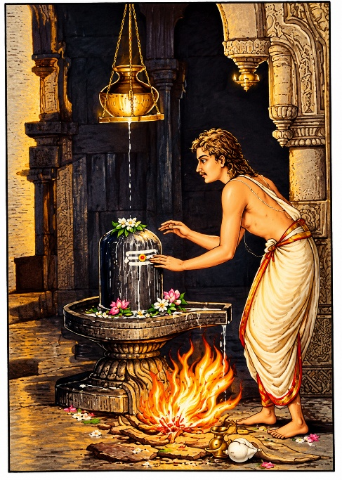
सूतजी बोले—हे श्रेष्ठ मुनियो! अब मैं नर, नारी आदि प्राणियोंके हितके लिये [स्वयं] शिवजीद्वारा कहे गये उमामहेश्वरव्रतको बताऊँगा। वर्षभर अष्टमी, चतुर्दशी, अमावस्या तथा पूर्णिमाको रातमें हविष्य ग्रहण करना चाहिये और शिवजीकी पूजा करनी चाहिये॥१-२॥
[शैलादि बोले—] हे प्रभो [सनत्कुमार]! जो [मनुष्य] सुवर्ण अथवा चाँदीकी उमा-महेशकी परम सुन्दर प्रतिमा बनाकर वर्षके अन्तमें विधिपूर्वक उसकी प्रतिष्ठा करके ब्राह्मणोंको भोजन कराकर उन्हें यथाशक्ति दक्षिणा प्रदान करके पूर्ण सौन्दर्ययुक्त तथा छत्र-चामर-आभूषणोंसे अलंकृत रथ आदिसे देवेश [शिव]-को शिवालयमें ले जाकर इस व्रतको परमेश्वर शिवको निवेदित करता है, वह शिवसायुज्य प्राप्त करता है और यदि नारी हो, तो वह भगवती उमाका सायुज्य प्राप्त करती है॥३-५½॥
कन्या हो अथवा विधवा हो—वह एक वर्षतक अष्टमी तथा चतुर्दशीको नियमपूर्वक ब्रह्मचारिणी रहकर भोजन न करे; वर्षके अन्तमें पूर्वोक्त विधिसे प्रतिमा बनाकर विधानके अनुसार उसकी प्रतिष्ठा करके उसे रुद्रालयमें प्रदान करके पुनः ब्राह्मणोंको भोजन कराकर वह भवानी (पार्वती) के साथ आनन्द मनाती है। हे द्विजो! जो स्त्री वर्षपर्यन्त केवल कृष्णपक्षकी चतुर्दशीको यह व्रत करती है और वर्षके अन्तमें जिस किसी पदार्थसे प्रतिमा बनाकर पूर्वोक्त समस्त विधान सम्पन्न करती है, वह भवानीके साथ आनन्द मनाती है॥६-९½॥
स्त्रीको चाहिये कि वर्षपर्यन्त नियन्त्रित रहती हुई अमावस्याके दिन आहार ग्रहण न करे और वर्षके अन्तमें विधिपूर्वक त्रिशूल बनवाकर शिवको निवेदित करे तथा ईशानको स्नान कराकर हजार श्वेत कमलोंसे भक्तिपूर्वक उनका पूजन करे और सुवर्णमयी कर्णिकासे युक्त चाँदीका कमल शिवजीको समर्पित करके ब्राह्मणोंको दक्षिणा भी प्रदान करे। वह स्त्री [शिवजीके निमित्त] त्रिशूलके दानसे जानबूझकर भ्रूणहत्या आदि जो भी पाप होता है, उन सबको ध्वस्त कर डालती है; इसमें सन्देह नहीं है और हे श्रेष्ठ द्विजो! वह भवानीका सायुज्य प्राप्त कर लेती है। यदि [कोई] मनुष्य इसे करता है, तो वह भी रुद्रसायुज्य प्राप्त कर लेता है॥१०-१४॥
हे श्रेष्ठ द्विजो! पूरे एक वर्षभर पूर्णमासी तथा अमावस्याको आलस्यरहित तथा उपवासपरायण होकर नारीको तथा नरको भी इसे करना चाहिये। हे श्रेष्ठ द्विजो! पतिकी आज्ञासे ही स्त्रियोंको यह व्रत, जप, दान, तप—सब कुछ करना चाहिये; क्योंकि स्त्रियाँ स्वतन्त्र नहीं हैं। हे सुव्रतो! वर्षके अन्तमें सभी प्रकारके गन्धोंसे युक्त उस प्रतिमाको शिवको निवेदित कर देना चाहिये; वह सुव्रता [स्त्री] भवानीका सायुज्य तथा सारूप्य प्राप्त कर लेती है; इसमें सन्देह नहीं है, यह पूर्णतः सत्य कह रहा हूँ॥१५-१७½॥
जो स्त्री कार्तिक मासमें एक बार भोजन करती है, क्षमा-अहिंसा आदि नियमोंसे युक्त रहती है, ब्रह्मचर्यका पालन करती है, आलस्यरहित होकर एक भार काला तिल तथा घृत-गुड़ मिलाकर पकाया भात परमेश्वरको निवेदित करती है, ब्राह्मणोंको अपने सामर्थ्यके अनुसार दान देती है और अष्टमी तथा चतुर्दशीको उपवास करती है—वह उत्तम व्रतवाली [स्त्री] भवानीका सारूप्य प्राप्त करके उनके साथ आनन्द मनाती है॥१८-२१॥
समस्त व्रतोंमें क्षमा, सत्य, दया, दान, शुद्धि तथा इन्द्रियोंका निग्रह और रुद्रपूजन—यह सामान्य धर्म है॥२२॥
अब मैं संक्षेपमें क्रमसे मार्गशीर्षसे प्रारम्भ करके कार्तिकतक प्रत्येक महीनेके व्रतको बताऊँगा; इस परम पुण्यप्रद व्रतको [स्वयं] नन्दीने कहा था॥२३½॥
जो [स्त्री] मार्गशीर्ष मासमें पूर्ण अंगोंवाले उत्तम वृषभको अलंकृत करके विधिपूर्वक शिवको निवेदित करती है, वह भवानीके साथ आनन्दित रहती है; इसमें सन्देह नहीं है॥२४-२५॥
जो पौष मासमें पूर्वोक्त विधिके अनुसार सम्पूर्ण कृत्य करके त्रिशूलकी स्थापनाकर उसे [शिवको] समर्पित करती है, वह भवानीके साथ आनन्द मनाती है॥२६॥
हे महाभाग मुनियो! जो माघ महीनेमें सभी लक्षणोंसे युक्त रथ बनाकर देवेशकी पूजा करके उसे शिवको समर्पित करती है और ब्राह्मणोंको भोजन कराती है, वह देवी [पार्वती] के साथ आनन्द करती है; इसमें सन्देह नहीं है॥२७-२८½॥
जो फाल्गुन मासमें अपने सामर्थ्यके अनुसार विधिपूर्वक सोने, चाँदी अथवा ताँबेकी प्रतिमा बनाकर उसकी प्रतिष्ठा तथा पूजा करके शिवालयमें स्थापित करती है, वह महादेवीके साथ आनन्दित रहती है; इसमें सन्देह नहीं है॥२८-२९½॥
चैत्र मासमें ताँबे आदिसे शिव, कुमार (कार्तिकेय) तथा भवानीकी मूर्तियाँ यथाविधि बनाकर विधिपूर्वक उसकी प्रतिष्ठा करके उन्हें रुद्र शम्भुको अर्पण करनेसे स्त्री भवानीके साथ आनन्दित रहती है॥३०-३१॥
कुबेरका रजतमय कैलास आलय बनाकर उसे चारों ओरसे सभी रत्नोंसे युक्त करके उसमें शिव, उमा तथा गणेश्वरोंकी रजतमय मूर्ति रखकर उसकी यथाविधि प्रतिष्ठा करके उसे परमेश्वर शिवके सुन्दर मन्दिरमें स्थापित करना चाहिये; जो [स्त्री] वैशाख मासमें इस प्रकार कैलास नामक उत्तम व्रतको करती है, वह कैलासपर्वत पहुँचकर भवानीके साथ आनन्द करती है॥३२-३४॥
हे उत्तम ब्राह्मणो! ज्येष्ठ मासमें उमापति महादेवकी ताम्र आदिसे एक शुभ्र लिङ्गमूर्ति बनवाये, जो हाथ जोड़े हुए हंसपर सवार ब्रह्मा तथा वाराहपर सवार विष्णुसे संयुक्त हो और मध्यमें भव (महेश्वर) विराजमान हों—ऐसी लिङ्गमूर्ति बनवाकर विधिपूर्वक उसकी प्रतिष्ठा करनेके अनन्तर ब्राह्मणोंको भोजन कराये और अपने कल्याणके लिये शिवको प्रसन्न करके ब्राह्मणोंको साथ लेकर शिवालयमें उसे विधिपूर्वक स्थापित करके वह देवीका सायुज्य प्राप्त कर लेती है॥३५-३७॥
जो स्त्री शुभ आषाढ़ महीनेमें अपने सामर्थ्यके अनुसार पके हुए ईंटोंसे विधिवत् गृह बनवाकर उसे सभी बीजरसोंसे, परम सुन्दर मूसल-उलूखल आदि गृहोपयोगी सामग्रियोंसे, दास-दासी आदिसे, [पलंग-बिस्तर आदि] शयन-वस्तुओंसे, [अन्न आदि] खाद्य पदार्थोंसे युक्त करके उस गृहको सभी ओरसे पूर्ण वस्त्रोंसे ढँककर उमापति प्रभु महादेवको घृत आदिसे स्नान कराकर विधिपूर्वक एक हजार ब्राह्मणोंको भोजन कराकर विद्या-विनयसे सम्पन्न तथा वेदमें पारंगत ब्रह्मचारी ब्राह्मणकी भक्तिपूर्वक यथाविधि पूजा करके पूर्ण जीवनभरके लिये एक परम सुन्दरी कन्या, क्षेत्र (खेत), गोमिथुन और मेरुपर्वतके समान महाराशिवाले अनेक प्रकारके दिव्य सामानोंसहित वह गृह [शिवको] समर्पित करती है; वह गोलोक प्राप्त करके भवानीके साथ आनन्द करती है, भवानीके सदृश होकर सभी कल्पोंमें अव्यय (शाश्वत) बनी रहती है और [अन्तमें] भवानीका सायुज्य प्राप्त करती है; इसमें सन्देह नहीं है॥४४-४६½॥
सावन महीनेमें सभी धातुओंसे युक्त तथा विचित्र ध्वजोंसे सुशोभित तिलपर्वत शिवको समर्पित करना चाहिये। जो [स्त्री] वितान, ध्वज, वस्त्र, धातु आदिसहित तिलपर्वत निवेदित करती है और [अन्तमें] ब्राह्मणोंको भोजन कराती है, उसे पूर्वमें कहा गया सबकुछ प्राप्त हो जाता है॥४६½-४८½॥
जो भाद्रपद मासमें वितान, ध्वज, वस्त्र, धातु आदिसहित शालि चावलका सुन्दर पर्वत बनाकर उसे शिवको समर्पित करती है और ब्राह्मणोंको भोजन कराकर विधिपूर्वक उसका दान करती है, वह सूर्यकी किरणोंके समान होकर भवानीके साथ आनन्द करती है॥४८½-५१½॥
आश्विन महीनेमें सुवर्ण तथा वस्त्रसे युक्त एक विशाल धान्यपर्वत बनाकर उसे शिवको अर्पण करके शंकरकी विधिवत् पूजा करके ब्राह्मणोंको भोजन करानेसे पूर्वमें कहा गया सबकुछ प्राप्त हो जाता है। तीनों लोकोंके आधारस्वरूप मेरु नामक उत्तम पर्वतराजका निर्माण करे, जो सभी धान्योंसे युक्त हो, सभी बीजों तथा रसोंसे परिपूर्ण हो, सभी धातुओंसे संयुक्त हो, सभी रत्नोंसे सुशोभित हो, चार श्रृंगों (शिखर) से युक्त हो, वितान तथा छत्रसे सुशोभित हो, गन्ध-पुष्प एवं अद्भुत धूपोंसे सुशोभित हो, विचित्र नृत्य-गानोंसे शोभायमान हो, शंख-वीणाकी ध्वनियोंसे युक्त हो, वेदध्वनियोंसे और विशेषकर मंगलसूचक प्रार्थना आदिसे अत्यन्त पवित्र हो, आठ बड़ी ध्वजाओंसे युक्त हो और विचित्र पुष्पोंसे सुशोभित हो।
उस [पर्वत] के शिखरपर मध्यमें धातुनिर्मित शिवको विराजमान करे। दक्षिणमें चतुर्मुख ब्रह्मा, उत्तरमें निर्विकार देवदेवेश नारायण, इन्द्र आदि लोकपालोंको भक्तिपूर्वक यथाविधि विराजमान करके उनकी प्रतिष्ठा करनेके अनन्तर स्नान कराकर महेश्वरकी पूजा करके महादेवके दाहिने हाथमें देवपूजित त्रिशूल तथा बायें हाथमें पाश, भवानीके हाथमें हेमभूषित कमल, विष्णुके हाथोंमें शंख-चक्र-गदा-पद्म, ब्रह्माके हाथोंमें अक्षमाला तथा उत्तम कमण्डलु, इन्द्रके हाथमें वज्र, अग्निके हाथमें शक्ति नामक महान् आयुध, यमके हाथमें दण्ड, निशिचर निर्ऋतिके हाथमें खड्ग, वरुणके हाथमें नाग नामक भयंकर तथा अद्भुत महापाश, वायुदेवके हाथमें यष्टि (छड़ी), कुबेरके हाथमें लोकपूजित गदा और ईशान देवके हाथमें टंक—इस प्रकार क्रमसे निवेदित करके शिवकी चरुसमन्वित महान् पूजा करके अपने सामर्थ्यके अनुसार सभी देवताओंकी पूजा करे। इसके बाद ब्राह्मणोंको भोजन कराकर प्रयत्नपूर्वक उनका सम्मान करके महामेरुव्रत सम्पन्नकर महादेवको समर्पित कर दे। ऐसा करनेवाली स्त्री महामेरुपर्वत पहुँचकर महादेवीके साथ आनन्द करती है और चिरकालतक महादेवीका सायुज्य प्राप्त किये रहती है; इसमें सन्देह नहीं है॥५०-६५॥
जो स्त्री कार्तिक मासमें सोने अथवा ताँबेकी सभी आभरणोंसे युक्त तथा सभी लक्षणोंसे समन्वित देवी उमाकी सुन्दर प्रतिमा बनाकर; साथ ही देवेश महादेवकी भी सभी लक्षणोंसे युक्त मूर्ति बनाकर विधानपूर्वक उनकी प्रतिष्ठा करके उन दोनोंके सम्मुख अग्निको, हाथमें स्रुव लिये हुए ब्रह्माको और लोकपालों तथा सिद्धोंसे घिरे हुए एवं सभी आभूषणोंसे विभूषित कन्या-दाता नारायणको यत्नपूर्वक स्थापित करके भक्तिपूर्वक इस व्रतको रुद्रालयमें उन [शिव]-को समर्पित करती है, वह भवानीका स्वरूप प्राप्त करके शिवके साथ आनन्द करती है॥६६-६९½॥
एक बार भोजन करके प्रत्येक मासके पुण्यप्रद व्रतको क्रमसे करे; हे श्रेष्ठ मुनियो! नर, नारी आदि प्राणियोंके कल्याणके लिये मार्गशीर्षसे आरम्भ करके कार्तिकतक किये जानेवाले इस व्रतको प्रवर्तित किया गया है। शिवके द्वारा बताये गये इस व्रतको करके पुरुष शिवका सायुज्य प्राप्त करता है और नारी देवी [पार्वती] का सायुज्य प्राप्त करती है; इसमें सन्देह नहीं है॥७०-७२॥
॥इस प्रकार श्रीलिङ्गमहापुराणके अन्तर्गत पूर्वभागमें ‘उमामहेश्वरव्रत’ नामक चौरासीवाँ अध्याय पूर्ण हुआ॥८४॥
पचासीवाँ अध्याय
पंचाक्षरीविद्या (पंचाक्षरमन्त्र), जपविधान तथा उसकी महिमा
सूतजी बोले—हे श्रेष्ठ द्विजो! समस्त व्रतोंमें देवदेव उमापतिकी पूजा करके विधिपूर्वक पंचाक्षरीविद्या (मन्त्र) का जप करना चाहिये। जपसे ही विशेषकर व्रतोंकी पूर्णता होती है, अन्यथा नहीं; इसमें सन्देह नहीं है। अतः उत्तम पंचाक्षरीविद्याका जप [अवश्य] करना चाहिये॥१-२॥
ऋषिगण बोले—[हे सूतजी!] पंचाक्षरीविद्या क्या है और इसका प्रभाव कैसा होता है? हे महाभाग! क्रमसे इसकी विधि बताइये; इसे सुननेकी हमलोगोंकी [बड़ी] उत्सुकता है॥३॥
सूतजी बोले—[हे ऋषियो!] पूर्वकालमें देवदेव रुद्र भगवान् शम्भुके द्वारा पार्वतीसे कहे गये इस पुण्यप्रद मन्त्रको मैं संक्षेपमें बता रहा हूँ॥४॥
श्रीदेवी बोलीं—हे भगवन्! हे देवदेवेश! हे सर्वलोक-महेश्वर! मैं यथार्थरूपसे पंचाक्षरमन्त्रका माहात्म्य सुनना चाहती हूँ॥५॥
श्रीभगवान् बोले—हे देवि! सौ करोड़ वर्षोंमें भी पंचाक्षरमन्त्रका माहात्म्य नहीं कहा जा सकता है; अतः इसे संक्षेपमें सुनिये॥६॥
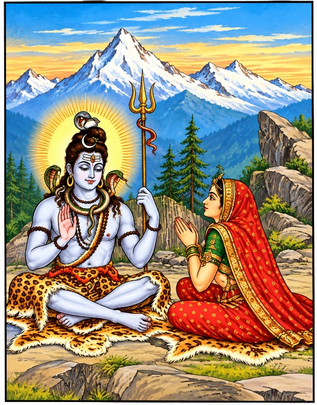
हे देवि! प्रलयके उपस्थित होनेपर जब समस्त चराचर जगत, देवता तथा असुर, नाग एवं राक्षस नष्ट हो जाते हैं और आपसहित सभी पदार्थ प्रकृतिमें लीन होकर प्रलयको प्राप्त हो जाते हैं, उस समय एकमात्र मैं रह जाता हूँ; दूसरा कुछ भी नहीं रह जाता है। उस समय सभी वेद तथा शास्त्र उसी पंचाक्षरमन्त्रमें स्थित रहते हैं; मेरी शक्तिसे अनुपालित होनेके कारण वे नष्ट नहीं होते हैं॥७-९॥
मैं एक होता हुआ भी उस समय प्रकृति तथा आत्माके भेदसे दो रूपोंमें रहता हूँ। वे भगवान् नारायण मायामय शरीर धारणकर जलके मध्यमें योगरूपी पर्यंकपर शयन करते हैं। उनके नाभिकमलसे पाँच मुखवाले ब्रह्मा उत्पन्न हुए; तीनों लोकोंका सृजन करनेकी इच्छावाले उन ब्रह्माने [इस कार्यमें] असमर्थ तथा सहायकविहीन होनेके कारण प्रारम्भमें अमित तेजवाले दस मानस पुत्रोंको उत्पन्न किया॥१०-१२॥
उनकी सृष्टिकी वृद्धिके लिये ब्रह्माने मुझसे कहा—’हे महादेव! हे महेश्वर! मेरे पुत्रोंको शक्ति प्रदान कीजिये।’ उनके ऐसा कहनेपर पाँच मुख धारण करनेवाले मैंने कमलयोनि (ब्रह्मा) के लिये [अपने] पाँचमुखोंसे पाँच अक्षरोंका उच्चारण किया। अपने पाँच मुखोंसे उन [अक्षरों] को ग्रहण करते हुए लोकपितामह ब्रह्माने वाच्यवाचक भावसे परमेश्वरको जान लिया। हे देवि! तीनों लोकोंमें पूजित शिव पंचाक्षरोंसे वाच्य हैं और [यह] परम पंचाक्षरमन्त्र उनके वाचकके रूपमें स्थित है॥१३-१६॥
पाँच मुखवाले महात्मा ब्रह्माने विधिपूर्वक इसके प्रयोगको जानकर तथा सिद्धि प्राप्त करके जगत्के कल्याणके लिये अपने पुत्रोंको महान् अर्थवाले इस पंचाक्षरमन्त्रका उपदेश किया॥१७॥
तदनन्तर साक्षात् लोकपितामहसे इस मन्त्ररत्नको प्राप्तकर वे उन परात्पर देव शिवकी आराधना करनेमें तत्पर हो गये॥१८॥
तब त्रिदेवोंमें श्रेष्ठ भगवान् शिव प्रसन्न हो गये और उन्होंने उन्हें सम्पूर्ण ज्ञान तथा अणिमा आदि आठ सिद्धियाँ प्रदान कीं॥१९॥
तत्पश्चात् [उन] वरोंको प्राप्तकर वे विप्र [मेरी] आराधनाकी आकांक्षा करने लगे। मेरुके रम्य शिखरपर मुंजवान् नामक पर्वत है। शोभासम्पन्न यह पर्वत मुझे प्रिय है और मेरे भूतोंके द्वारा भलीभाँति रक्षित है। हे देवि! पूर्वकालमें उस [पर्वत] के समीप स्थित रहते हुए लोकसृष्टिके इच्छुक उन ऋषियोंने मेरे अनुग्रहहेतु वायुके आहारपर रहकर हजार दिव्य वर्षोंतक कठोर तप किया॥२०-२२॥
[हे देवि!] उनकी भक्ति देखकर मैं शीघ्र ही उनके समक्ष प्रकट हो गया और मैंने लोकोंके कल्याणकी इच्छासे उन महात्माओंको पंचाक्षरमन्त्र, उसके ऋषि, छन्द, देवता, शक्ति, बीजसहित षडंग न्यास, दिग्बन्ध तथा विनियोग पूर्ण रूपसे बता दिया॥२३-२४॥
उस मन्त्रका माहात्म्य सुनकर उन तपोधन ऋषियोंने मन्त्रका विनियोग करके सभी अनुष्ठान पूर्ण किये। उसके बाद उन्होंने उस मन्त्रकी महिमासे लोकों, देवताओं, असुरों, मनुष्यों, वर्णों, वर्णविभागों तथा समस्त उत्तम धर्मोंको जो पूर्व कल्पमें उत्पन्न हुए थे—उन सबका श्रवण किया। पंचाक्षरमन्त्रके प्रभावसे ही लोक, वेद, महर्षिगण, शाश्वत धर्म, देवता तथा यह सम्पूर्ण जगत् स्थित है। अब मैं उसके विषयमें सब कुछ बताऊँगा; सावधान होकर सुनिये॥२५-२८॥
यह मन्त्र अल्प अक्षरोंवाला, महान् अर्थोंवाला, वेदोंका सार, मुक्तिप्रद, आज्ञासिद्ध, असन्दिग्ध तथा शिवस्वरूप है॥२९॥
यह मेरा मन्त्र अनेक सिद्धियोंसे युक्त, अलौकिक, लोगोंके चित्तको आनन्दित करनेवाला, सुनिश्चित अर्थोंवाला, गम्भीर तथा परमेश्वरस्वरूप है॥३०॥
यह मन्त्र मुखसे सुखपूर्वक उच्चारणयोग्य, सम्पूर्ण प्रयोजनोंको सिद्ध करनेवाला, सभी विद्याओंका बीजस्वरूप, आद्य (सबसे पहला) मन्त्र, परम सुन्दर, अति सूक्ष्म एवं महान् अर्थोंवाला है। इसे वटवृक्षके बीजकी भाँति समझना चाहिये। यह वेदस्वरूप, तीनों गुणोंसे परे, सर्वज्ञ, सब कुछ करनेवाला तथा सर्वसमर्थ है॥३१-३२॥
ॐ—यह एक अक्षरवाला मन्त्र है; सर्वव्यापी शिव इसमें स्थित रहते हैं। पाँच अक्षररूपी शरीरवाले शिव स्वभावसे ही सूक्ष्म षडक्षर (छः अक्षरोंवाले) मन्त्रमें वाच्य-वाचक भावसे विराजमान हैं। प्रमेयत्वके कारण शिव वाच्य हैं तथा मन्त्र उनका वाचक कहा गया है। यह वाच्य-वाचक भाव (सम्बन्ध) उन दोनोंमें अनादि है। वेद अथवा शिवागममें षडक्षरमन्त्र स्थित है; किंतु लोकमें पंचाक्षरमन्त्रको मुख्य माना गया है। जिसके हृदयमें परमेश्वररूप यह मन्त्र स्थित है उसे बहुत मन्त्रों अथवा अतिविस्तृत शास्त्रोंसे क्या प्रयोजन! जो विद्वान् विधानपूर्वक इसका ज्ञान प्राप्तकर इसे ठीक-ठीक जपता है, उसने मानो वेदोंका अध्ययन कर लिया और सबकुछ अनुष्ठित कर लिया। मात्र यही शिवज्ञान है, यही परम पद है और यही ब्रह्मविद्या है; अतः विद्वान्को नित्य इसका जप करना चाहिये। प्रणव (ॐ)-सहित पाँच अक्षरोंसे युक्त यह मन्त्र [ॐ नमः शिवाय] मेरा हृदय है। यह गूढ़से भी गूढ़ है और साक्षात् सर्वोत्तम मोक्षज्ञान है॥३३-३९½॥
[हे देवि!] अब मैं इस मन्त्रके और प्रत्येक अक्षरके ऋषि, छन्द, देवता, बीज, शक्ति, स्वर, वर्ण तथा स्थानका वर्णन करूँगा। इस मन्त्रके ऋषि वामदेव तथा छन्द पंक्ति कहा गया है। हे वरानने! इस मन्त्रका देवता [स्वयं] मैं शिव ही हूँ। पंचभूतस्वरूप ‘न’कार आदि इसके बीज हैं। प्रणवको सर्वव्यापी तथा शाश्वत आत्मा समझो। हे सभी देवताओंसे नमस्कृत देवेशि! [स्वयं] तुम ही इसकी शक्ति हो। कुछ प्रणव तुम्हारा है और कुछ प्रणव हमारा है। हे देवि! तुम्हारा प्रणव सभी मन्त्रोंका शक्तिस्वरूप है; इसमें संशय नहीं है॥४०-४४॥
हे देवि! ‘अ’, ‘उ’, ‘म’ मेरे प्रणवमें स्थित हैं। क्रमसे ‘उ’, ‘म’, ‘अ’ तुम्हारे प्रणवके हैं; तुम इस उत्तम प्रणवको तीन मात्राओंवाला प्लुत जानो। ओंकारका स्वर उदात्त है, इसके ऋषि ब्रह्मा हैं, इसका शरीर श्वेत है, छन्द देवी गायत्री हैं और इसके अधिदेवता परमात्मा हैं। इसका पहला, दूसरा तथा चौथा वर्ण उदात्त; पाँचवाँ वर्ण स्वरित और मध्यम वर्ण निषध [निषादस्वर] कहा गया है॥४५-४७½॥
‘न’ पीले रंगका है और स्थान पूर्वमुख (पूरबकी ओर मुखवाला) कहा गया है। इसके अधिदेवता इन्द्र हैं, इसका छन्द गायत्री है और इसके ऋषि गौतम हैं। ‘म’ कृष्ण वर्णवाला है, इसका स्थान दक्षिणमुख है, इसका छन्द अनुष्टुप् है, इसके ऋषि अत्रि हैं और इसके अधिदेवता रुद्र कहे जाते हैं। ‘शि’ धूम्र वर्णवाला है, इसका स्थान पश्चिममुख है, इसके ऋषि विश्वामित्र हैं, इसका छन्द त्रिष्टुप् है और इसके देवता विष्णु हैं। ‘वा’ हेम वर्णवाला है, इसका स्थान उत्तरमुख है, इसके अधिदेवता ब्रह्मा हैं, इसका छन्द बृहती है और इसके ऋषि अंगिरा हैं। ‘य’ लाल रंगवाला है, इसका स्थान ऊर्ध्वमुख है, इसका छन्द विराट् है, इसके ऋषि भरद्वाज हैं और इसके देवता स्कन्द कहे जाते हैं॥४८-५३½॥
[हे देवि!] अब मैं सभी सिद्धियाँ प्रदान करनेवाले, मंगलमय तथा समस्त पापोंका नाश करनेवाले इसके न्यासको बताऊँगा। न्यास तीन प्रकारका कहा जाता है—उत्पत्ति, स्थिति (पालन) तथा संहारके भेदसे यह तीन प्रकारका कहा गया है; यह क्रमशः ब्रह्मचारियों, गृहस्थों तथा यतियोंके लिये होता है। उत्पत्ति [न्यास] ब्रह्मचारियोंका, स्थिति [न्यास] गृहस्थोंका और संहृति (संहार) न्यास यतियोंका होता है; अन्यथा सिद्धि नहीं प्राप्त हो सकती॥५३½-५६½॥
अंगन्यास, करन्यास, देहन्यास—यह तीन प्रकारका न्यास होता है; हे वरानने! अब मैं उत्पत्ति आदि तीन भेदोंसे इन्हें भी आपको बताऊँगा। सबसे पहले करन्यास उसके बाद देहन्यास पुनः अंगन्यास मन्त्रके अक्षरोंके क्रमसे करना चाहिये। सिरसे प्रारम्भ होकर पैरोंतकका न्यास उत्पत्तिन्यास कहा जाता है। हे प्रिये! पैरोंसे प्रारम्भ होकर सिरतकका न्यास संहारन्यास होता है। हृदय, मुख और कण्ठका न्यास स्थितिन्यास कहा गया है। हे शोभने! यह न्यास [क्रमशः] ब्रह्मचारियों, गृहस्थों तथा यतियोंके लिये है॥५६½-५९½॥
तत्पश्चात् सम्पूर्ण मन्त्रसे सिरसहित देहका स्पर्श करना चाहिये। वह देहन्यास कहा गया है; वह सबके लिये समान है। दाहिने हाथके अंगूठेसे प्रारम्भ करके वाम हाथके अंगूठेतक जो न्यास किया जाता है, वह उत्पत्तिन्यास है और इसके विपरीत करना संहृति (संहार) न्यास है। दोनों हाथोंमें अँगूठेसे प्रारम्भ करके कनिष्ठातक जो न्यास किया जाता है, वह स्थितिन्यास होता है; हे देवि! वह [न्यास] गृहस्थोंको परम सुख प्रदान करनेवाला है। सर्वप्रथम करन्यास करके देहन्यास करना चाहिये और उसके बाद अंगन्यास करना चाहिये; यह सामान्य विधि है॥६०-६३½॥
प्रत्येक मन्त्रको ओंकारसे सम्पुटित करके सभी अंगोंमें, दोनों हाथोंमें तथा दसों अँगुलियोंके अग्रभागमें क्रमसे न्यास करना चाहिये। दोनों पैर धोकर आचमन करके शुद्ध होकर समाहित चित्त होकर पूर्वकी ओर अथवा उत्तरकी ओर मुख करके न्यासकर्म करना चाहिये॥६४-६५½॥
हे वरानने! प्रारम्भमें ऋषि, छन्द, देवता, बीज, शक्ति, परमात्मा तथा गुरुका स्मरण करना चाहिये। मन्त्रके उच्चारणके साथ दोनों हाथोंको धोकर दोनों करतलोंमें प्रणवका न्यास करना चाहिये। सभी अँगुलियोंके आदि-अन्त पर्वोंपर और पाँचों मध्यम पर्वोंपर बिन्दुयुक्त पाँच बीजोंका उत्पत्ति आदि तीन भेदोंसे तथा ब्रह्मचर्य आदिके क्रमसे न्यास करना चाहिये। दोनों हाथोंसे मस्तकसे लेकर पैरतक प्रणवके द्वारा सम्पुटित मन्त्रसे देहका स्पर्श करना चाहिये। प्रणवयुक्त मन्त्रसे सिर, मुख, कण्ठ, हृदय, गुह्यस्थान एवं दोनों पैरोंमें; गुह्यस्थान, हृदय, कण्ठ, मुख तथा सिरमें; पुनः हृदय, गुह्यस्थान, दोनों पैरों, सिर, मुख तथा कण्ठमें तीन प्रकारका न्यास करना चाहिये।
इस प्रकार अंगन्यास करके प्रणवसहित नकारसे प्रारम्भ होकर यकारपर पूर्ण होनेवाले इन नकार आदि वर्णोंकी क्रमशः अपने शरीरमें भावना करे। इसके बाद मन्त्रमें नमः, स्वाहा, वषट्, हुम्, वौषट् तथा फट्के साथ यथास्थान छहों अंगोंमें उत्तम रीतिसे न्यास करना चाहिये॥६६-७४॥
प्रणवको हृदय जानना चाहिये, ‘न’ को सिर कहा जाता है, ‘म’ को शिखा कहा गया है, ‘शि’ को कवच कहा गया है, ‘वा’ को नेत्र और ‘य’ को अस्त्र कहा गया है। इस प्रकार अंगोंका न्यास करनेके अनन्तर दिशाओंको बाँधना चाहिये। आग्नेय आदि चारों कोणोंमें क्रमशः विघ्नेश, माताएँ, दुर्गा तथा क्षेत्रज्ञ दिशाओंके देवता हैं। अंगुष्ठ तथा तर्जनीके अग्रभागोंसे कल्याणप्रद तथा सुन्दर मुखवाले गणेश आदिको दिशाओंमें स्थापित करके ‘रक्षा कीजिये’—ऐसा कहकर इन्हें पृथक् पृथक् नमस्कार करना चाहिये॥७५-७८॥
बुद्धिमान्को चाहिये कि कण्ठमें, मध्यमें, अँगूठेमें, तर्जनी आदि अँगुलियोंमें अँगूठेसे ही करन्यास करे। इस प्रकार यह न्यास सभी पापोंको हरनेवाला, शुभ, सभी सिद्धियाँ देनेवाला, पुण्यप्रद, सबकी रक्षा करनेवाला तथा कल्याणकारी कहा गया है। हे सुभगे! मन्त्रका न्यास कर लेनेपर साधक शिवतुल्य हो जाता है और उसके द्वारा पूर्व जन्ममें किया गया पाप भी उसी क्षण नष्ट हो जाता है। इस प्रकार न्यास करके मेधावीको शुद्ध शरीरवाला तथा दृढ़व्रती होकर आचार्यकी कृपासे ग्रहण करके पंचाक्षर मन्त्रका जप करना चाहिये॥७९-८२॥
हे शुभे! अब मैं इस मन्त्रको ग्रहण करनेकी विधि बताऊँगा, जिसके बिना यह निष्फल हो जाता है और जिसके द्वारा यह सफल होता है। आज्ञाहीन, क्रियाहीन, श्रद्धाहीन, ध्यानहीन, आज्ञप्त तथा दक्षिणाहीन मन्त्र जपे जानेपर सदा निष्फल होता है। आज्ञासिद्ध, क्रियासिद्ध, श्रद्धासिद्ध, सुमानस (पूर्ण ध्यानयुक्त) तथा दक्षिणासिद्ध मन्त्र सदा सफल होता है॥८३-८५॥
शिष्यको चाहिये कि मन्त्रके वास्तविक अर्थके ज्ञाता, ज्ञानसम्पन्न, सद्गुणोंसे युक्त तथा ध्यानयोगपरायण ब्राह्मण गुरुके पास जाकर भावशुद्धिसे युक्त हो मन-वचन-शरीर तथा धनसे उन्हें प्रयत्नपूर्वक सन्तुष्ट करे और बड़े प्रयत्नके साथ उन आचार्यकी सर्वदा पूजा करे। वैभव रहनेपर हाथी, घोड़े, रथ, रत्न, क्षेत्र, गृह, आभूषण, वस्त्र तथा विविध धान्य—ये सब गुरुको भक्तिपूर्वक देना चाहिये। यदि वह अपनी सिद्धि चाहता हो तो धनकी कृपणता नहीं करनी चाहिये। हे देवि!
इसके बाद सेवक आदि सहित अपने आपको भी समर्पित कर देना चाहिये। इस प्रकार विधिपूर्वक यथाशक्ति [गुरुकी] पूजा करके निष्कपट भाव रखते हुए [शिष्यको] गुरुसे क्रमपूर्वक मन्त्र तथा ज्ञान ग्रहण करना चाहिये॥८६-९१॥
इस प्रकार सन्तुष्ट गुरु वर्षपर्यन्त पास रहकर सेवामें परायण, अहंकाररहित, उपवाससे दुर्बल शरीरवाले तथा शुद्धियुक्त पूजित शिष्यको स्नान कराकर ब्राह्मणोंकी पूजा करके [किसी] समुद्रतटपर, नदीतटपर, गोशालामें, देवालयमें, पवित्र स्थानमें अथवा घरमें ही सिद्धिकारक समयमें, उत्तम तिथिमें तथा दोषरहित नक्षत्र एवं शुभयोगमें शिष्यपर अनुग्रह करके उसे अत्युत्तम शिवज्ञान प्रदान करे; साथ ही प्रसन्नचित्त होकर एकान्तमें स्वरसे सम्यक् उच्चारण करे। स्वयं उच्चारणकर तथा उच्चारण कराकर मन्त्रदाता आचार्य बोले—[तुम्हारा] कल्याण हो, शुभ हो, कुशल हो, प्रिय हो॥९२-९६॥
इस प्रकार गुरुसे श्रेष्ठ मन्त्र तथा ज्ञान प्राप्त करके नित्य इसका ससंकल्प जप करना चाहिये और पुरश्चरण भी करना चाहिये। जो बिना भोजन किये तत्पर होकर आजीवन नित्य इसका एक हजार आठ बार जप करता है, वह परम गति प्राप्त करता है॥९७-९८॥
नक्तव्रत करते हुए तथा नियमोंका पालन करते हुए जो श्रद्धापूर्वक मन्त्रकी अक्षरसंख्याका चार लाख गुना जप करता है, उसे पुरश्चरणकर्ता कहा गया है। पुरश्चरणजप करनेवाला अथवा नित्य जप करनेवाला शीघ्र ही सिद्धि प्राप्त कर लेता है। दोनोंमें किसी एकको अवश्य करना चाहिये॥९९-१००॥
जो मनुष्य पुरश्चरण करके इसका नित्य जप करनेवाला है, उसके समान लोकमें कोई नहीं है; वह सिद्ध, सिद्धिदाता तथा इन्द्रियजित् होता है॥१०१॥
सुखदायक आसन लगाकर मौन तथा एकाग्रचित्त होकर पूर्वकी ओर अथवा उत्तरकी ओर मुख करके [इस] सर्वोत्तम मन्त्रका जप करना चाहिये॥१०२॥
जपके प्रारम्भ और अन्तमें [तीन-तीन] प्राणायाम करना चाहिये और अन्तमें एक सौ आठ बार बीजमन्त्रका जप करना चाहिये। श्वास रोककर चालीस बार जप करना चाहिये। यह पंचाक्षरमन्त्रका प्राणायाम कहा गया है। प्राणायामसे शीघ्र ही सभी पापोंका नाश और इन्द्रियोंका निग्रह हो जाता है, अतः प्राणायाम [अवश्य] करना चाहिये॥१०३-१०५॥
घरमें किये गये जपको सामान्य फलवाला जानना चाहिये। गोशालामें किया गया जप उससे सौ गुना फलदायक होता है। नदीके तटपर किया गया जप लाख गुना और शिवके सान्निध्यमें किया गया जप अनन्त गुना फलदायक होता है। समुद्रके तटपर, देवसरोवरमें, पर्वतपर, देवालयमें अथवा सभी पवित्र आश्रमोंमें किया गया जप करोड़ गुना फलदायक होता है। शिवकी सन्निधिमें, सूर्य, गुरु, दीपक, गौ अथवा जलके समक्ष जपकर्म श्रेष्ठ माना जाता है॥१०६-१०८॥
हे शुभानने! एक-एक करके अँगुलीसे जपकी गणना करनेपर वह सामान्य फल प्रदान करता है; रेखाओंसे करनेपर वह आठ गुना फलदायक कहा गया है। पुत्रजीव-फलोंसे जप करनेपर दस गुना, शंखमणियोंसे करनेपर सौ गुना, प्रवालों (मूँगा) से करनेपर हजार गुना, स्फटिकोंसे करनेपर दस हजार गुना और मोतियोंसे करनेपर लाख गुना फलदायक कहा जाता है। कमलके बीजसे करनेपर दस लाख गुना और सोनेके सुवर्णखण्डोंसे करनेपर जप करोड़ गुना फलदायक कहा जाता है। कुशाकी ग्रन्थिसे तथा रुद्राक्षोंसे गणना करनेपर जप अनन्त गुना फलदायक होता है॥१०९-१११॥
पचीस मणियोंकी माला मोक्षके लिये, सत्ताईसकी [माला] पुष्टिके लिये, तीसकी धन-सम्पदाके लिये और पचासकी अभिचार कर्मके लिये होती है। पूर्वकी ओर मुख करके किया गया जप वशीकरणकी शक्ति देनेवाला और दक्षिणकी ओर मुख करके किया गया जप अभिचारकर्मकी शक्ति देनेवाला होता है। पश्चिमकी ओर मुख करके किये गये जपको धन प्रदान करनेवाला जानना चाहिये। उत्तरकी ओर मुख करके किया गया जप शान्ति प्रदान करनेवाला होता है॥११२-११३॥
अँगूठेको मोक्ष देनेवाला जानना चाहिये। तर्जनी [अँगुली] शत्रुका नाश करनेवाली तथा मध्यमा धन प्रदान करनेवाली है। अनामिका शान्ति प्रदान करती है। हे शोभने! जपकर्ममें कनिष्ठा रक्षणीय होती है। अँगूठेसे अन्य अँगुलियोंके साथ मन्त्रका जप करना चाहिये; क्योंकि बिना अँगूठेके जो जपकर्म किया जाता है, वह निष्फल होता है॥११४-११५½॥
[हे देवि!] सुनो, जपयज्ञ सभी यज्ञोंसे श्रेष्ठ है; वे सभी यज्ञ हिंसाके साथ हुआ करते हैं, किंतु जपयज्ञ बिना हिंसाके होता है। जितने भी अनुष्ठान, यज्ञ, दान तथा तप हैं, वे सब [इस] जपयज्ञकी सोलहवीं कलाके भी बराबर नहीं हैं॥११६-११७½॥
वाचिक जपयज्ञका जो माहात्म्य बताया गया है; उपांशु [जपयज्ञ] उससे सौ गुना और मानस [जपयज्ञ] हजार गुना [फलप्रद] कहा गया है। यदि साधक स्पष्ट पद-अक्षरोंवाले शब्दोंके साथ उदात्त, अनुदात्त तथा स्वरित स्वरोंमें वाणीके द्वारा मन्त्रका उच्चारण करता है, तो वह जपयज्ञ वाचिक होता है। यदि साधक धीमे स्वरमें मन्त्रका उच्चारण करता है और कुछ-कुछ ओठोंको चलाता है तथा उसे कुछ-कुछ कानमें सुनायी पड़ता है, तो वह जप उपांशु कहा गया है। यदि साधक मनमें अक्षरसमूहके वर्णसे वर्ण तथा पदसे पद शब्दार्थका बार-बार चिन्तन करता है, तो उस जपको मानस जप कहा गया है। तीनों जपयज्ञोंमें उत्तरोत्तर (बादवाला पहलेकी अपेक्षा) श्रेष्ठ है। यज्ञविशेषसे उसके फलका वैशिष्ट्य होता है॥११८-१२२½॥
जपके द्वारा नित्य स्तुति किये जाते हुए देवता प्रसन्न हो जाते हैं और प्रसन्न होकर अत्यधिक भोग तथा चिरस्थायी मुक्ति प्रदान करते हैं। यक्ष, राक्षस, पिशाच तथा सभी भयंकर ग्रह जप करनेवालेके पास नहीं जाते और उससे पूर्णरूपसे भयभीत रहते हैं॥१२३-१२४॥
मनुष्य जन्म-जन्मान्तरमें जो भी पाप किये रहता है, उसे जपके द्वारा नष्ट कर देता है; जपके द्वारा भोगोंको प्राप्त करता है; मृत्युको जीत लेता है; जपके द्वारा सिद्धि तथा मुक्तिको भी प्राप्त कर लेता है॥१२५॥
इस प्रकार शिवज्ञान प्राप्त करके और जपके विधिक्रमको जानकर सदाचारी [मनुष्य] नित्य जप करता हुआ तथा शिवका ध्यान करता हुआ कल्याण प्राप्त करता है॥१२६½॥
[हे देवि!] अब मैं धर्मके साधनस्वरूप सदाचारका सम्यक् वर्णन करूँगा; क्योंकि आचारहीन [व्यक्ति]-का साधन निष्फल हो जाता है। आचार सर्वश्रेष्ठ धर्म है, आचार परम तप है, आचार परम विद्या है और आचार परम गति है। जिस तरह सदाचारी मनुष्योंको सभी जगह अभय रहता है; उसी तरह आचारहीनोंको सर्वत्र भय ही रहता है॥१२७-१२९½॥
हे वरानने! जो सदाचारका पालन करते हैं, वे देवत्व तथा ऋषित्व प्राप्त करते हैं, उसी प्रकार जो आचारका उल्लंघन करते हैं, वे कुत्सित योनि प्राप्त करते हैं। आचारसे विहीन पुरुष संसारमें निन्दित होता है, अतः सिद्धिकी इच्छा रखनेवालेको पूर्णरूपसे आचारवान् होना चाहिये। महान् शुद्धिसे युक्त होता हुआ भी दुराचारी व्यक्ति पापी तथा ज्ञानको दूषित करनेवाला होता है॥१३०-१३२॥
वर्णाश्रम-विधानके अनुसार बताये गये धर्मका यत्नपूर्वक पालन करना चाहिये। जिसका जो कर्म विहित है, उसे करनेवाला सर्वदा मुझे प्रिय है। प्रसन्नचित्त होकर प्रातः तथा सायंकाल सन्ध्योपासन करना चाहिये। द्विजको चाहिये कि सूर्योदय तथा सूर्यास्तके पूर्व आरम्भ करके पवित्र होकर विधिपूर्वक सन्ध्या करे और काम, मोह, भय तथा लोभके कारण सन्ध्याका उल्लंघन न करे; क्योंकि सन्ध्याका उल्लंघन करनेसे विप्र ब्राह्मणत्वसे पतित हो जाता है॥१३३-१३५½॥
कुछ भी असत्य नहीं बोलना चाहिये और सत्यका त्याग नहीं करना चाहिये। सत्यको ब्रह्म कहा गया है; असत्य ब्रह्मको दूषित करनेवाला है। असत्य, कठोर वचन, शठता तथा परनिन्दा—ये पापके कारण हैं। वाणी तथा मनसे भी परायी स्त्री तथा पराये धनका हरण और परहिंसा कभी भी नहीं करनी चाहिये॥१३६-१३८॥
शूद्रके अन्न, बासी अन्न, [शिवका] नैवेद्य, श्राद्धके अन्न, अनेक लोगोंके अधिकारवाले अन्न, समुदायविशेषके लिये निर्मित अन्नका तथा राजाके अन्नका त्याग करना चाहिये। अन्नकी शुद्धिसे अन्तःकरणकी शुद्धि होती है, न कि मिट्टी अथवा जलसे। अन्तःकरणकी पवित्रतासे सिद्धि प्राप्त होती है, अतः अन्नका शोधन करना चाहिये अर्थात् पवित्र अन्न ग्रहण करना चाहिये॥१३९-१४०॥
जैसे भुने हुए बीजोंका अंकुरण नहीं होता है, वैसे ही ब्रह्मवादी ब्राह्मणोंको भी राजाओंके प्रतिग्रहसे दग्ध जानना चाहिये। अर्थात् वे ब्राह्मणत्वसे च्युत हो जाते हैं। राजाओंसे प्रतिग्रह लेना पाप है तथा विषके समान है—प्रारम्भमें ही ऐसा जानकर बुद्धिमान्को इसे ग्रहण नहीं करना चाहिये और कुत्तेके मांसके समान इसका त्याग कर देना चाहिये॥१४१-१४२॥
बिना स्नान किये, बिना जप किये तथा बिना अग्निपूजन किये भोजन नहीं करना चाहिये। पत्तेके पृष्ठपर भोजन नहीं करना चाहिये तथा रातमें बिना दीपक जलाये भोजन नहीं करना चाहिये। टूटे हुए पात्रमें, मार्गमें एवं पतितजनोंके समीप भोजन नहीं करना चाहिये। शूद्रोंका छोड़ा हुआ अन्न नहीं खाना चाहिये और शिशुओंके साथ भी भोजन नहीं करना चाहिये॥१४३-१४४॥
शुद्ध, स्निग्ध (चिकना), पका हुआ तथा अभिमन्त्रित अन्न ग्रहण करना चाहिये; भोजन करनेवाला शिव है—ऐसा समझकर मौन तथा एकाग्रचित्त होकर भोजन करना चाहिये। खड़े-खड़े, अंजुलिसे, मुख लगाकर, बायें हाथसे, शय्यापर तथा दायें हाथसे भी पानी नहीं पीना चाहिये॥१४५-१४६॥
बहेड़ा, अर्क (मदार), करंज तथा सेंहुड़के वृक्षकी छायामें शरण नहीं लेना चाहिये। किसी खम्भे, दीप, मनुष्यों तथा अन्य प्राणियोंकी छायामें खड़े नहीं होना चाहिये॥१४७॥
दूर यात्रापर अकेले नहीं जाना चाहिये, भुजाओंके सहारे तैरकर नदीको पार नहीं करना चाहिये, कूप आदिमें नहीं उतरना चाहिये और लम्बे वृक्षोंपर नहीं चढ़ना चाहिये॥१४८॥
हे शुभे! सूर्य, अग्नि, जल, देवता तथा गुरुजनोंके विमुख होकर जपकर्म तथा [अन्य] शुभ कर्म नहीं करने चाहिये॥१४९॥
अग्निमें पैरोंको तपाना नहीं चाहिये, पैरोंसे हाथका स्पर्श नहीं करना चाहिये, अग्निके ऊपर आसन नहीं बनाना चाहिये और अग्निमें कोई मल (दूषित पदार्थ) नहीं डालना चाहिये॥१५०॥
पैरोंसे जल नहीं उछालना चाहिये, शरीरकी मैलको जलमें नहीं छोड़ना चाहिये; तटपर ही मलको साफ करना चाहिये और उसे साफ करके स्नान करना चाहिये॥१५१॥
नाखून तथा केशसे टपकता हुआ जल और स्नानवस्त्रका तथा घटका जल मनुष्योंके लिये श्रेयस्कर नहीं होता है; यदि कोई इसे स्पर्श करता है, तो अशुद्ध हो जाता है॥१५२॥
यदि कोई मूढ़ बुद्धिवाला [मनुष्य] बकरी, कुत्ता, गधा, ऊँट आदिसे उठी हुई धूल और झाडू लगानेसे उठी हुई धूलका स्पर्श करता है, तो उसकी लक्ष्मी नष्ट हो जाती है, चाहे वह विष्णु ही क्यों न हों॥१५३॥
जिसके घरमें बिल्ली रहती है, वह चाण्डालके समान होता है। यदि कोई मनुष्य बिल्लीकी सन्निधिमें श्रेष्ठ ब्राह्मणोंको भोजन कराता है, तो उसे चाण्डालके समान जानना चाहिये; इसमें सन्देह नहीं करना चाहिये॥१५४½॥
दूषित वायु, सूपकी वायु और प्राणियोंके मुखसे निकली हुई वायु—इनका सम्पर्क हो जानेपर ये मनुष्यके पुण्योंको नष्ट कर देते हैं। पगड़ी धारण करके, कंचुक पहनकर, नग्न होकर, केशोंको खोलकर, मैलसे युक्त होकर, अपवित्र हाथसे, अशुद्ध होकर तथा बात-चीत करते हुए कभी भी जप नहीं करना चाहिये॥१५५-१५६½॥
क्रोध, अहंकार, भूख, आलस्य, थूकना, जम्हाई, कुत्ते तथा नीच व्यक्तिका दर्शन, निद्रा तथा वार्तालाप—ये जपके शत्रु हैं; इनके उत्पन्न होनेपर सूर्य आदिका दर्शन करना चाहिये। पुनः आचमन करके अथवा प्राणायाम करके शेष जप करना चाहिये। सूर्य, अग्नि, चन्द्रमा, ग्रह, नक्षत्र, तारे—ये विद्वान् ब्राह्मणोंके द्वारा ज्योतिर्गण कहे गये हैं॥१५७-१५९½॥
पैरोंको फैलाकर अथवा कुक्कुट आसनमें बैठकर जप नहीं करना चाहिये। इसी प्रकार जापकको बिना आसनके, लेटे हुए, मार्गपर, शूद्रके पास, रक्तभूमिपर अथवा चारपाईपर जप नहीं करना चाहिये। आसनपर बैठकर मनमें मन्त्रके अर्थका चिन्तन करते हुए भली-भाँति जप करना चाहिये। रेशमी वस्त्र, व्याघ्रचर्म, वस्त्र, रूई, लकड़ी अथवा ताड़के पत्तेका आसन बनाना चाहिये॥१६०-१६२½॥
अपना हित चाहनेवालेको तीनों सन्ध्याओंमें गुरुकी पूजा करनी चाहिये। जो गुरु हैं, वे शिव कहे गये हैं और जो शिव हैं, वे गुरु कहे गये हैं। जैसे शिव हैं, वैसे ही विद्या; जैसी विद्या वैसे ही गुरु होते हैं। शिवविद्या उन गुरुसे ही ग्रहण की जा सकती है और भक्तिके द्वारा अनुकूल फल प्राप्त होता है। हे देवि! वे [गुरु] सर्वदेवस्वरूप तथा सर्वशक्तिस्वरूप हैं। गुरु सगुण हों अथवा निर्गुण—उनकी आज्ञाको शिरोधार्य करना चाहिये। जो कल्याणका इच्छुक है, उसे मनसे भी गुरुकी आज्ञाका उल्लंघन नहीं करना चाहिये। पूर्णरूपसे गुरुकी आज्ञाका पालन करनेवाला [शिष्य] ज्ञानसम्पदा प्राप्त करता है। चलते हुए, बैठते हुए, सोते हुए अथवा खाते हुए [शिष्य] जो भी कर्म यदि गुरुके समक्ष करे, वह समस्त कार्य उनकी आज्ञासे ही करना चाहिये॥१६३-१६७½॥
गुरुदेवके समक्ष इच्छानुसार आसनपर नहीं बैठना चाहिये; क्योंकि गुरु साक्षात् देवता हैं और उनका घर देवमन्दिर है। जिस प्रकार पापियोंकी संगतिके कारण उनके पापोंसे [व्यक्तिका] पतन हो जाता है, उसी प्रकार गुरुकी संगतिसे [व्यक्ति] उनके धर्मफलका भागी होता है। जैसे सुवर्ण अग्निके सम्पर्कसे अपने मैलका त्याग करता है, वैसे ही मनुष्य गुरुके सम्पर्कसे पापका त्याग करता है। जैसे अग्निके समीप स्थित कुम्भका घृत पिघल जाता है, वैसे ही आचार्य (गुरु)-के सम्पर्कसे [मनुष्यका] पाप विलीन हो जाता है। जिस प्रकार प्रज्वलित अग्नि मल तथा काष्ठको जला डालती है, उसी प्रकार प्रसन्न हुए गुरु अपने मन्त्रके तेजसे [शिष्यके] पापको भस्म कर देते हैं॥१६८-१७२½॥
गुरुके प्रसन्न रहनेपर ब्रह्मा, विष्णु, रुद्र, सभी देवता तथा मुनि भी [उस व्यक्तिपर] प्रसन्न होकर कृपा करते हैं; इसमें सन्देह नहीं है। मन, वचन तथा कर्मसे गुरुको क्रोधित नहीं करना चाहिये; उनके क्रोधसे आयु, लक्ष्मी (वैभव), ज्ञान और सत्कर्म दग्ध हो जाते हैं। जो लोग उन्हें कुपित करते हैं, उनके यज्ञ, जप तथा अन्य अनुष्ठान व्यर्थ हो जाते हैं; इसमें सन्देह नहीं करना चाहिये॥१७३-१७५½॥
पूर्ण प्रयत्नपूर्वक गुरुके विरुद्ध कुछ भी वचन नहीं बोलना चाहिए; यदि कोई अज्ञानवश ऐसा बोलता है, तो वह रौरव नरकमें पड़ता है। हे देवि! मन, धन, वचन तथा कर्मसे गुरुको कभी झूठा सिद्ध नहीं करना चाहिये। उनका दुर्गुण कहनेपर व्यक्ति सौ दुर्गुणोंसे युक्त हो जाता है और उनका गुण कहनेपर सभी गुणोंका फल मिलता है। गुरुने आदेश दिया हो अथवा नहीं, सर्वदा उनका हित तथा प्रिय करना चाहिये; गुरु सामने हों अथवा परोक्षमें हों, उनका कार्य करना चाहिये। मन, वचन, शरीर तथा कर्मसे गुरुका हित तथा प्रिय करना चाहिये। ऐसा न करनेवाला नरकमें गिरता है और वहाँ जाकर वहींपर विचरण करता रहता है। अतः सर्वदा उनकी उपासना तथा वन्दना करनी चाहिये। पास रहते हुए भी गुरुसे आज्ञा लेकर तथा उनकी ओर मुख न करके बोलना चाहिये।
ऐसा आचारवान्, भक्ति-सम्पन्न, नित्य जप करनेवाला तथा गुरुका प्रिय करनेवाला [शिष्य] इस मन्त्रका विनियोग करनेके योग्य होता है॥१७६-१८२½॥
[हे देवि!] अब मैं सिद्धमन्त्रके प्रयोजनस्वरूप विनियोगको बताऊँगा; विनियोग न जाननेवालेका वह मन्त्र प्रभावहीन हो जाता है। जिसका जिस कार्यके साथ विशेष रूपसे संयोजन किया जाय, उसे विनियोग कहा गया है। यह इस लोकमें तथा परलोकमें फल प्रदान करता है। विनियोगसे आयु, आरोग्य, शरीरकी नित्यता, राज्य, ऐश्वर्य, उत्तम ज्ञान, स्वर्ग तथा मोक्ष—ये सब प्राप्त होते हैं॥१८३-१८५½॥
स्नानमें तथा [प्रातः सायं] दोनों सन्ध्याओंमें ग्यारह बार पंचाक्षरमन्त्रसे प्रोक्षण, अभिषेक तथा अघमर्षण करना चाहिए। जो शुद्ध होकर पर्वतपर चढ़कर आलस्यरहित हो एक लाख बार मन्त्रका जप करता है अथवा किसी महानदीके तटपर दो लाख बार जप करता है, वह दीर्घ आयु प्राप्त करता है॥१८६-१८७½॥
दूर्वांकुर, तिल, वाणी, गिलोय (गुडूची) और घुटिका—इनका दस हजार होम आयुकी वृद्धि करनेवाला होता है। बुद्धिमान्को चाहिये कि पीपलके वृक्षका आश्रय लेकर दो लाख जप करे। शनिवारको पीपल वृक्षका स्पर्श करके मनुष्य दीर्घ आयु प्राप्त करता है। बुद्धिमान्को शनैश्चरके दिन [अपने] दोनों हाथोंसे पीपलके वृक्षका स्पर्श करना चाहिये और एक सौ आठ बार [मन्त्रका] जप करना चाहिये; यह भी अकाल मृत्युको दूर करनेवाला होता है॥१८८-१९०½॥
सूर्यकी ओर मुख करके एकाग्रचित्त होकर एक लाख जप करना चाहिये; अर्ककी समिधाओंसे प्रतिदिन एक सौ आठ होम करनेवाला [व्यक्ति] रोगसे मुक्त हो जाता है। मनुष्यको समस्त रोगोंके शमनके लिये पलाश-समिधाओंसे होम करना चाहिये; इससे दस हजार होम करके मनुष्य रोगरहित हो जाता है। प्रतिदिन एक सौ आठ बार जप करके सूर्यके समक्ष जल पीना चाहिये; ऐसा करनेवाला एक महीनेमें ही सभी उदर-सम्बन्धी रोगोंसे मुक्त हो जाता है॥१९१-१९३½॥
ग्यारह बार मन्त्रसे अभिमन्त्रित करके अन्न तथा अन्य भक्ष्य-पेय पदार्थ ग्रहण करना चाहिये; इससे विष भी अमृत हो जाता है। प्रतिदिन पूर्वाह्नमें एक सौ आठ आहुति देकर तथा सूर्योपस्थान करके एक लाख जप करना चाहिये; ऐसा करनेवाला पूर्ण आरोग्य प्राप्त करता है। नदीके जलसे भरे हुए सुन्दर घड़ेको स्पर्श करते हुए दस हजार जप करनेसे तथा उसी जलसे स्नान करनेसे सभी रोगोंकी चिकित्सा हो जाती है॥१९४-१९६½॥
पवित्र होकर प्रतिदिन अट्ठाईस बार [मन्त्रका] जप करके अन्न ग्रहण करना चाहिये और बादमें उतनी ही पलाश-समिधाओंसे हवन करनेसे [व्यक्ति] आरोग्य प्राप्त करता है। चन्द्रग्रहण तथा सूर्यग्रहणके अवसरपर पवित्र होकर विधिपूर्वक उपवास करके जबतक ग्रहणका मोक्ष हो, तबतक किसी समुद्रगामिनी नदीमें एकाग्रचित्त होकर जप करना चाहिये और हे द्विजो! ग्रहणके समाप्त होनेपर एक हजार आठ मन्त्रका जप करके ब्राह्मीरसका पान करना चाहिये। ऐसा करनेवाला सभी शास्त्रोंको धारण करनेवाली कल्याणमयी लौकिक प्रतिभा प्राप्त करता है और उसकी वाणी अतिमानुषी होकर देवी सरस्वतीकी वाणीके तुल्य हो जाती है॥१९७-२००½॥
ग्रह तथा नक्षत्रके कारण कष्ट होनेपर मनुष्य भक्तिपूर्वक दस हजार जप करके तथा आठ हजार आहुति देकर ग्रहपीड़ासे मुक्त हो जाता है। दुःस्वप्न देखनेपर स्नान करके मनुष्यको दस हजार जप करना चाहिये; इसके बाद घृतकी एक सौ आठ आहुति देनेसे उसे शीघ्र ही शान्ति प्राप्त होगी॥२०१-२०२½॥
चन्द्रग्रहण तथा सूर्यग्रहणके समय विधिपूर्वक लिङ्गका पूजन करके शुद्ध तथा एकाग्रचित्त होकर इन महादेवके समीप आदरपूर्वक दस हजार जप करना चाहिये; हे देवि! वह मनुष्य जो कुछ भी माँगता है, उसकी सभी कामनाएँ पूर्ण होती हैं; इसमें सन्देह नहीं है॥२०३-२०४½॥
हाथियों, घोड़ों तथा विशेषकर गोजातिके पशुओंमें रोग उत्पन्न होनेपर शुद्ध होकर तथा भक्तियुक्त होकर विधिपूर्वक महीनेभर पूजन करके समिधाकी दस हजार आहुति देनेसे उन पशुओंके रोगकी शान्ति तथा उनकी वृद्धि होती है; इसमें सन्देह नहीं है॥२०५-२०६½॥
हे देवि! उपद्रव तथा शत्रुबाधा उत्पन्न होनेपर जो [व्यक्ति] पवित्र होकर पलाशकी समिधाओंसे दस हजार होम करता है; उसकी शान्ति होती है। हे देवि! आभिचारिक बाधामें भी ऐसा ही करना चाहिये; ऐसा करनेसे उसकी शक्ति प्रकट होती है और शत्रुको पीड़ा उत्पन्न होती है। विद्वेषणके लिये बहेड़ेकी समिधाओंसे आठ आहुति डालनी चाहिये; अथवा रुधिरसे स्नान करके विपरीत अक्षरसे मन्त्रका जप करते हुए गीले रक्तसे या विषसे होम करना चाहिये; यह मनुष्योंके लिये विद्वेषणकारी है॥२०७-२१०॥
[हे देवि!] अब मैं समस्त पापोंसे शुद्धिके लिये प्रायश्चित्तका वर्णन करूँगा। मनुष्यको पापशुद्धि करनेहेतु पूर्णरूपसे प्रयत्नशील होना चाहिये; क्योंकि सम्यक् पापशुद्धि ज्ञान-सम्पदाका मूल कारण होती है। यदि पापशुद्धि नहीं होती है, तो मनुष्यकी सभी क्रियाएँ व्यर्थ हो जाती हैं और उसका ज्ञान क्षीण होता रहता है, इसलिये पापका शोधन [अवश्य] करना चाहिये॥२११-२१२½॥
हे शुभे! विद्या तथा लक्ष्मीकी विशुद्धिके लिये अंजलिमें जल लेकर मेरा ध्यान करके ग्यारह बार शिव-मन्त्रका जप करके उस जलसे अभिषेक करना चाहिये। पाप-शोधनके लिये एक सौ आठ बार मन्त्रका जप करके स्नान करना चाहिये; यह सभी तीर्थोंका फल देनेवाला, सभी पापोंको दूर करनेवाला तथा कल्याणकारक है। सन्ध्योपासनके छूट जानेपर मनुष्यको एक सौ आठ बार मन्त्रका जप करना चाहिये। सुअर, चाण्डाल, दुर्जन तथा कुक्कुटका स्पर्श किया हुआ अन्न नहीं खाना चाहिये और खा लेनेपर एक सौ आठ बार मन्त्रका जप करना चाहिये॥२१३-२१६॥
ब्रह्महत्याके शोधनके लिये मनुष्यको सौ हजार करोड़ बार मन्त्रका जप करना चाहिये, अन्य बड़े पापोंके शोधनके लिये उसका आधा जप होना चाहिये; इसमें सन्देह नहीं करना चाहिये। उपपातक शोधनके लिये उसका आधा जप करना बताया गया है। शेष [छोटे] पापोंकी शुद्धिके लिये भी पाँच हजार बार मन्त्रको जपना चाहिये॥२१७-२१८॥
जो शान्त होकर आत्मबोध करानेवाले, गोपनीय तथा शिवज्ञानको प्रकाशित करनेवाले इस मन्त्रका पाँच लाख जप करता है, वह [साक्षात्] शिव हो जाता है और हे भद्रे! वह मनुष्य सुखपूर्वक पाँचों वायुपर विजय प्राप्त कर लेता है। हे सुमुखि! जो शुद्ध होकर इन्द्रियोंको वशमें करके पाँच लाख मन्त्र जप करता है, वह पाँचों इन्द्रियोंपर विजय प्राप्त कर लेता है।
जो शान्त होकर ध्यानमग्न हो पाँच लाख बार मन्त्रका जप करता है, वह पाँचों विषयोंपर विजय प्राप्त करता है। जो मनुष्य भक्तियुक्त होकर चौथी बार इस मन्त्रको पाँच लाख बार जपता है, वह इस लोकमें [पृथ्वी आदि] पंचभूतोंपर विजय प्राप्त कर लेता है॥२१९-२२२½॥
हे वरानने! जो [अपने] मनको नियन्त्रित करके प्रयत्नपूर्वक चार लाख बार मन्त्रका जप करता है, वह [मन, बुद्धि आदि] अन्तःकरणोंपर पूर्णरूपसे विजय प्राप्त कर लेता है। हे कमलमुखि! पचीस लाख बार मन्त्रके जपसे मनुष्य पचीस तत्त्वोंपर विजय प्राप्त कर लेता है। हे सुन्दरि! जो मध्यरात्रिमें वातरहित स्थानमें आदरपूर्वक दस हजार जप करता है, वह इस व्रतके द्वारा ब्रह्मसिद्धि प्राप्त कर लेता है। जो [मनुष्य] आलस्यरहित होकर मध्यरात्रिमें वातशून्य तथा ध्वनिरहित स्थानमें एक लाख बार जप करता है, वह शिव तथा पार्वतीका दर्शन कर लेता है; इसमें सन्देह नहीं है। उस समय अन्धकारका विनाश हो जाता है और हृदयके बाहर तथा भीतर दीपककी भाँति प्रकाश हो जाता है; इसमें सन्देह नहीं है। आत्मज्ञको सभी प्रकारकी सम्पदा तथा समृद्धिके लिये मन्त्रका दस हजार जप करना चाहिये। [हे देवि!] जो पवित्र तथा भक्तियुक्त होकर बीजके सम्पुटसहित मन्त्रका सौ लाख (एक करोड़) जप करता है, वह मेरा सायुज्य प्राप्त कर लेता है; इससे बढ़कर [फल] क्या हो सकता है!॥२२३-२२९॥
[हे देवि!] मैंने तुम्हें पंचाक्षरमन्त्रके जपकी सम्पूर्ण विधि बता दी। जो इसे पढ़ता अथवा सुनता है, वह परम गति प्राप्त करता है। जो देवकर्म अथवा पितृकर्ममें शुद्ध ब्राह्मणोंको पंचाक्षर विधिके क्रमका श्रवण कराता है, वह शिवलोकमें प्रतिष्ठा प्राप्त करता है॥२३०-२३१॥
॥इस प्रकार श्रीलिङ्गमहापुराणके अन्तर्गत पूर्वभागमें ‘पंचाक्षरमाहात्म्य’ नामक पचासीवाँ अध्याय पूर्ण हुआ॥८५॥
छियासीवाँ अध्याय:
पाशुपतयोगज्ञानका स्वरूप तथा उसकी महिमा
ऋषिगण बोले — दग्ध पापवाले ब्राह्मणोंने विरक्त ज्ञानियोंके उत्तम ध्यानयज्ञको जपसे श्रेष्ठ कहा है; अतः हे सूतजी! अब आप विरक्त महात्माओंके ध्यानयज्ञके विषयमें पूर्णरूपसे विस्तारपूर्वक पूर्णप्रयत्नके साथ [हमलोगोंको] बताइये॥१-२॥
दीर्घ कालतक यज्ञ करनेवाले उन ऋषियोंका वचन सुनकर सूतजीने वह सारा वृत्तान्त कहा, जिसे विश्वकी रचना करनेवाले रुद्रने कालकूट नामक विषको निष्क्रिय करके [मेरुपर्वतकी] गुफामें आकर महात्माओंको बताया था॥३-३½॥
सूतजी बोले — [हे ऋषियो!] गुफामें पहुँचकर पार्वतीके साथ सुखपूर्वक बैठे हुए उन शंकरको महात्मा मुनियोंने प्रणाम किया। उसके बाद उन सभीने गुफामें विराजमान उमापति [भगवान्] नीलकण्ठकी स्तुति की और कहा — हे भगवन्! आपने अति भयंकर कालकूट नामक विषको निष्क्रिय कर दिया; अतः हे देव! हे वृषध्वज! आपके द्वारा ही सब कुछ प्रतिष्ठित है॥४-६॥
उनका वह वचन सुनकर विश्वात्मा भगवान् नीललोहित सनन्दन आदि [मुनियों] से हँसते हुए कहने लगे — हे श्रेष्ठ द्विजो! यह [विष] क्या है! मैं अति भयंकर विषके विषयमें बताऊँगा, जो इस [कालकूट] विषको भी निष्क्रिय कर देता है, वह [परम] समर्थ है; यह कालकूट विष कौन-सी चीज है। कालकूट नामक विष [वास्तवमें] विष नहीं है, बल्कि संसार ही विष कहा जाता है। अतः पूर्ण प्रयत्नसे इस संसाररूपी अत्यन्त भीषण विषको नष्ट करना चाहिये अर्थात् संसारमें मिथ्यात्वका भाव रखना चाहिये॥७-९॥
अपने अधिकारके अनुसार यह संसार दो प्रकारका कहा गया है; मूढ़चित्तवाले मनुष्योंके लिये यह असंक्षीण (क्षय न होनेवाला) तथा अत्यन्त भयंकर है। हे सुव्रतो! यह सृष्टि इच्छा तथा रागजनित दोषके कारण है; इसका ज्ञान होनेपर संसार बाधित हो जाता है। उन्हीं (ईषणा और ज्ञान) के वशमें होनेसे ही सभी लोगोंकी धर्म तथा अधर्ममें प्रवृत्ति होती है; इसमें सन्देह नहीं है॥१०-११॥
हे ब्राह्मणो! पारलौकिक पदार्थके प्रत्यक्ष न रहनेपर भी शास्त्रके द्वारा उसके विषयमें श्रवण कर लेनेसे उसमें सज्जनों तथा विद्वानोंकी प्रवृत्ति हो जाती है। अतः जो इहलौकिक तथा पारलौकिक — इन दोनों पदार्थोंको हेय समझकर पूर्ण प्रयत्नसे इनका परित्याग कर देता है; वह विरक्त कहा जाता है॥१२-१३॥
हे द्विजो! श्रुतिप्रतिपादित सकाम कर्मोंमें, जिसमें सबकी प्रवृत्ति है तथा वेदके मस्तकस्वरूप एवं मन्त्रद्रष्टा ऋषियोंके सारस्वरूप निष्कामकर्मफलको प्रतिपादित करनेवाला जो अध्यात्मशास्त्र है, वही शास्त्र कहा जाता है॥१४॥
जो श्रुतिके रहस्यको नहीं जानते हैं, वे ही ऐसा कहते हैं कि चूँकि सभी लोगोंका स्वभाव कामनामूलक दिखायी देता है, अतः श्रुति सकामकर्मकी ही प्रवर्तिका है॥१५॥
वास्तविक रूपमें विरक्त जनोंके लिये निष्कामकर्मका प्रतिपादन करनेमें ही श्रुतिका तात्पर्य है, अतः सभी देहधारियोंके लिये संसार अज्ञानमूलक है। वेदोक्त निष्कामकर्मके द्वारा जीवभाव क्षीण होता है। अविद्यासे उत्पन्न जो अज्ञान है, उसके कारण सकामकर्मके वशीभूत तीन प्रकारका जीवभाव दृढ़ होता है॥१६-१७॥
पापकर्म करनेवाला नारकी होता है, पुण्यकर्म करनेवाला अपने पुण्यकी महिमाके कारण स्वर्गी होता है और पाप-पुण्यकर्मके मिश्रणवाला जीव उद्भिज, स्वेदज, अण्डज तथा जरायुज — इन चार रूपोंमें व्यवस्थित होता है। इस प्रकारसे व्यवस्थित वह अज्ञानी जीव अपने कर्मके कारण [संसारचक्रसे] मुक्त नहीं हो पाता है॥१८-१९॥
सन्तान, कर्म तथा धनसे सज्जनोंकी मुक्ति नहीं होती है; एकमात्र त्यागके द्वारा ही मुक्ति प्राप्त होती है और उसके अभावके कारण यह जीव भ्रमण करता रहता है। इस प्रकार अज्ञानके दोषके कारण तथा अनेक कर्मोंके वशीभूत होनेके कारण यह जीव छः कोशों (स्नायु, अस्थि, मज्जा, त्वचा, मांस, रक्त) से निर्मित इस शरीरको धारण करता है॥२०-२१॥
गर्भमें, योनिमार्गमें, पृथ्वीतलपर, कुमारावस्थामें, युवावस्थामें, वृद्धावस्थामें और मृत्युके समय प्राणीको अनेक दुःख होते हैं। हे द्विजो! विचारपूर्वक देखा जाय तो स्त्रीसंसर्ग आदिसे ही सज्जनोंको दुःख उत्पन्न होता है; वे एक दुःखसे दूसरे दुःखको शान्त करना चाहते हैं और दुःखी होते रहते हैं। विषयोंके उपभोगसे कामकी शान्ति कभी नहीं होती है; जैसे हविसे अग्नि बढ़ती है, वैसे ही वह [वासना] निरन्तर बढ़ती ही जाती है॥२२-२४॥
अतः विचार किया जाय तो मनुष्योंको विषयोंके प्राप्त होनेपर भी सुख नहीं प्राप्त होता है। धनके अर्जनमें, उसकी सुरक्षा करनेमें तथा व्ययमें भी दुःख है। हे श्रेष्ठ ब्राह्मणो! विचार करनेपर देखा जाय, तो पिशाचलोक, राक्षसलोक, यक्षलोक, गन्धर्वलोक, चन्द्रलोक, बुधलोक, प्रजापतिलोक, ब्राह्मलोक और प्रकृतिलोक तथा पुरुषलोकमें भी भोगोंके नाशकी सम्भावनासे तथा एक-दूसरेसे श्रेष्ठ होनेके कारण ईर्ष्याजन्य दुःखोंसे वे भी दुःखी ही रहते हैं। अतः हे सुव्रतो! भाग्यसे प्राप्त अशुद्ध भोगों तथा अशुद्ध धनोंका त्याग कर देना चाहिये; हे सुव्रतो! चाहे वह भोग (सुख) आठ प्रकारका हो, अथवा सोलह प्रकारका हो, अथवा चौबीस प्रकारका हो, अथवा बत्तीस प्रकारका हो, अथवा चालीस प्रकारका हो, अथवा अड़तालीस प्रकारका हो, अथवा छप्पन प्रकारका हो अथवा चौंसठ प्रकारका हो, विवेकयुक्त व्यक्तिके लिये भोग दुःखरूप ही होता है॥२५-३०॥
विचार किया जाय तो पृथ्वीसम्बन्धी, जलसम्बन्धी, अग्निसम्बन्धी, वायुसम्बन्धी, आकाशसम्बन्धी, मनसम्बन्धी, अहंकारसम्बन्धी, बुद्धिसम्बन्धी तथा प्रकृतिसम्बन्धी भोग भी ब्रह्मवादी योगियोंके लिये दुःख ही हैं; इसमें सन्देह नहीं है। विचारपूर्वक देखा जाय, तो गणेश्वरोंके गुण भी [वास्तवमें] दुःख ही हैं। समस्त लोकोंमें प्रारम्भ, मध्य तथा अन्तमें सर्वदा दुःख ही है। वास्तवमें वर्तमानमें भी दुःख है और भविष्यमें भी दुःख होंगे।
(पाद-टिप्पणी: अष्टगुणयुक्त पार्थिव आदि सुखभोग (ऐश्वर्य) से लेकर चौंसठ प्रकारके सुखभोग (ऐश्वर्य) इसी लिङ्गपुराणके पूर्वभाग अध्याय ९ में विस्तारसे बताये गये हैं।) दोषोंसे ग्रस्त सभी देशोंमें अनेक प्रकारके दुःख हैं; अपनेको ज्ञानी समझनेवाले [कुछ लोग] अज्ञानके कारण अतीतका स्मरण नहीं करते हैं। जिस प्रकार औषधि रोगोंके उपचारके लिये होती है; न कि सुखके लिये, उसी प्रकार आहारको भूखरूपी रोगको दूर करनेके लिये बताया गया है, न कि सुखके लिये। शीत, ताप, वायु, वर्षा आदिके द्वारा उन-उन कालोंमें शरीरधारियोंको दुःख ही होता है, इसमें सन्देह नहीं है; किंतु अज्ञानी लोग इसे नहीं समझ पाते हैं॥३१-३६½॥
हे श्रेष्ठ मुनियो! इसी प्रकार स्वर्गमें भी लोग पुण्यके क्षय आदि दुःखोंसे तथा राग, द्वेष, भय आदि नानाविध रोगोंसे ग्रस्त होते हैं। जैसे जड़से कटा हुआ वृक्ष विवश होकर पृथ्वीपर गिर जाता है, वैसे ही स्वर्गमें रहनेवाले भी पुण्यरूपी वृक्षके क्षय होनेसे पृथ्वीपर पुनः आ जाते हैं। दुःखमय कामनाओंसे युक्त तथा दुःखमय भोगसम्पदासे परिपूर्ण स्वर्गवासी [देवताओं] को भी इस स्वर्गसे पतित होनेपर दुःख तथा कष्ट ही होता है। हे श्रेष्ठ मुनियो! शास्त्रोचित कर्मोंको न करनेसे विभिन्न वर्णके लोगोंको नरकोंमें पड़नेके कारण वहाँ दुःख ही भोगना पड़ता है॥३७-४१॥
जैसे उजड़े हुए निवासवाला मृग मृत्युसे भयभीत होकर निद्रा ग्रहण नहीं कर पाता, उसी प्रकार ध्यानपरायण महात्मा संन्यासी संसारसे भयभीत होकर निद्रा ग्रहण नहीं कर पाता अर्थात् प्रमादरहित होकर सर्वथा सजग रहता है॥४२॥
कीटों, पक्षियों, मृगों, घोड़ा-हाथी आदि पशुओंमें भी [सर्वदा] दुःख ही देखा गया है; अतः भोगका त्याग करनेवालेको उत्तम सुख प्राप्त होता है। हे सुव्रतो! वैमानिक देवताओं और कल्पोंके अधिकारी तथा अपने पदका अभिमान करनेवाले मनु आदिको भी दुःख प्राप्त होता है। तीनों लोकोंमें एक-दूसरेको जीतनेकी इच्छाके कारण देवताओं तथा दैत्योंको और राजाओं तथा राक्षसोंको भी दुःख प्राप्त होता है॥४३-४५॥
वस्तुतः समस्त वर्णोंके आश्रम भी श्रमके कारण दुःख ही देते हैं। लोग आश्रमों, देवों, यज्ञों, सांख्यों, व्रतों, विविध कठोर तपों तथा अनेक प्रकारके दानोंसे भी आत्मतत्त्व नहीं प्राप्त करते; अपितु ज्ञानवान् लोग स्वतः प्राप्त कर लेते हैं, अतः पूर्ण प्रयत्नसे पाशुपतव्रत करना चाहिये। बुद्धिमान्को पाशुपतव्रतमें स्थित होकर नित्य भस्मशायी होना चाहिये। सद्योजातादि पाँच मन्त्रोंके अर्थ-ज्ञानसे सम्पन्न तथा शिवतत्त्वमें समाहित बुद्धिमान् व्यक्तिको मुक्तिदायक तथा कर्मका नाश करनेवाले पाशुपत योगका आश्रय लेना चाहिये। पंचार्थयोगसे युक्त विद्वान् दुःखके अन्तको प्राप्त होता है॥४६-४९½॥
भक्तजन परा विद्यासे ही ज्ञान प्राप्त करते हैं, अपरा विद्यासे नहीं। परा तथा अपरा — ये दो प्रकारकी विद्याएँ कही गयी हैं। हे श्रेष्ठ ब्राह्मणो! ऋग्वेद, यजुर्वेद, सामवेद, सभी अर्थोंको सिद्ध करनेवाला अथर्ववेद, शिक्षा, कल्प, व्याकरण, निरुक्त, छन्द और ज्योतिष — ये अपरा विद्या हैं। परा विद्या अक्षररूपमें स्थित है। हे श्रेष्ठ ब्राह्मणो! वह अदृश्य, अग्राह्य, गोत्ररहित, वर्णरहित, नेत्र-कान-हाथ-पैर आदिसे रहित, अजात, अभूत तथा शब्दविहीन है। हे द्विजो! वह स्पर्शरहित, रूपरहित, रस-गन्धहीन, अव्यय, आधारहीन, नित्य, सर्वगामी, सर्वशक्तिशाली, महान्, बृहत्, अज तथा चित्स्वरूप है। वह प्राणरहित, मनरहित, स्नेहरहित तथा अलोहित है। वह अप्रमेय, अस्थूल, अदीर्घ तथा अनुल्बण है। वह अह्रस्व, अपार आनन्दमय एवं अच्युत है। वह अनपावृत, अद्वैत, अनन्त, अगोचर, आवरणरहित तथा आत्मस्वरूप है; उस पराविद्याका अन्य प्रकारसे वर्णन नहीं किया जा सकता है॥५०-५८॥
जो परा तथा अपरा विद्याएँ कही गयी हैं; वे परमार्थकी दृष्टिसे नहीं हैं। वास्तवमें मैं ही सम्पूर्ण जगत् हूँ; मुझमें ही सम्पूर्ण जगत् स्थित है। यह जगत् मुझसे ही उत्पन्न होता है, मुझमें ही स्थित रहता है और [अन्तमें] मुझमें ही विलीन हो जाता है। मुझसे पृथक् कुछ नहीं है — ऐसा मन, वचन तथा कर्मसे अनुभव करना चाहिये। एकाग्रचित्त होकर सत् तथा असत् सब कुछ आत्मामें ही देखना चाहिये; आत्मामें ही सब कुछ देखनेवाला [साधक] अपने मनको बाह्य जगत्में आसक्त नहीं करता है॥५९-६१॥
नाभिसे बारह अंगुल ऊपर अधोमुख हृत्कमल स्थित है; उसे विश्वका महान् गृह समझना चाहिये। इस हृदयके मध्यमें कमल विराजमान है; जो धर्मरूपी कन्दसे उत्पन्न, ज्ञानरूपी नालवाला, अत्यन्त सुन्दर, आठ सिद्धिस्वरूप अष्ट दलसे युक्त और श्वेत तथा उत्तम वैराग्यरूपी कर्णिकावाला है एवं जिसके छिद्र प्राणवायुरूपी दिशाओंके रूपमें प्रतिष्ठित हैं॥६२-६४॥
प्राण आदिसे युक्त होनेपर साधक बहुत रूपोंमें इसे क्रमसे देख सकता है। हे श्रेष्ठ मुनियो! प्रत्येक नाड़ी दस प्राणोंका वहन करती है; कुल बहत्तर हजार नाड़ियाँ बतायी गयी हैं। जाग्रत् [अवस्था] को नेत्रमें स्थित जानना चाहिये और स्वप्नको कण्ठमें स्थित जानना चाहिये। इसी प्रकार सुषुप्तको हृदयमें स्थित तथा तुरीयको सिरमें स्थित जानना चाहिये। क्रमके अनुसार जाग्रत्-अवस्थामें ब्रह्मा, स्वप्नावस्थामें विष्णु, सुषुप्तावस्थामें ईश्वर (शिव) तथा तुरीयावस्थामें महेश्वर प्रतिष्ठित रहते हैं। अन्य लोग ऐसा भी कहते हैं कि जब मनुष्य सभी इन्द्रियोंके द्वारा संयमित रहता है, तब उसकी जाग्रत्-अवस्था कही जाती है। मन, बुद्धि, अहंकार, चित्त — यह अन्तःकरणचतुष्टय है; इनके द्वारा जब मनुष्य व्यवस्थित रहता है, तब उसकी स्वप्नावस्था कही जाती है। हे सुव्रतो! जब मनुष्यकी इन्द्रियाँ उसकी आत्मामें विलीन हो जाती हैं, तब उसकी सुषुप्तावस्था कही जाती है। इन्द्रियोंसे अतीत मनुष्य तुरीय-अवस्थावाला कहा जाता है। [जगत्के] परम कारण तथा परस्वरूप ये शिव तुरीयसे भी अतीत हैं॥६५-७१॥
हे विप्रेन्द्रो! जाग्रत्, स्वप्न, सुषुप्ति तथा तुरीयके पश्चात् अब मैं आधिभौतिक, आध्यात्मिक तथा आधिदैविक स्वरूपका वर्णन करूँगा; यह सब मैं ही हूँ — ऐसा बुद्धिमान्को जानना चाहिये। मन-बुद्धि-अहंकार-चित्त — यह चतुर्वर्ग, [पाँच] ज्ञानेन्द्रियाँ और [पाँच] कर्मेन्द्रियाँ — ये पृथक् रूपसे चौदह आध्यात्मिक पदार्थ कहे गये हैं।
हे मुनिश्रेष्ठ! हे मुनिपुंगवो! जो भी देखनेयोग्य, सुननेयोग्य, सूँघनेयोग्य, स्वाद लेनेयोग्य, स्पर्श करनेयोग्य, चिन्तन करनेयोग्य, जाननेयोग्य, गर्व करनेयोग्य, चेतनाके योग्य, बोलनेयोग्य, ग्रहण करनेयोग्य, गमन करनेयोग्य, छोड़नेयोग्य तथा आनन्दके योग्य हैं — ये सब क्रमसे आधिभौतिक हैं। सूर्य, दिशाएँ, पृथ्वी, वरुण, वायु, चन्द्र, ब्रह्मा, रुद्र, क्षेत्रज्ञ, अग्नि, इन्द्र, विष्णु, मित्र और देव प्रजापति — ये चौदह क्रमसे आधिदैविक हैं॥७२-७९॥
हे श्रेष्ठ द्विजो! राज्ञी, सुदर्शना, जिता, सौम्या, मोघा, रुद्रा, अमृता, सत्या, मध्यमा, नाड़ी, राशिशुका, असुरा, कृत्तिका और भास्वती — ये चौदह निबन्धन नाड़ियाँ हैं। नाड़ियोंके मध्य चौदह वाहक वायु स्थित हैं। प्राण, व्यान, अपान, उदान, समान, वैरम्भ, मुख्य, अन्तर्याम, प्रभंजन, कूर्म, श्येन, श्वेत, कृष्ण, अनिल तथा नाग — ये चौदह वायु कहे गये हैं॥८०-८३½॥
हे सुव्रतो! नेत्रोंमें, द्रष्टव्य पदार्थोंमें, सूर्यमें, नाड़ीमें, प्राणमें, विज्ञानमें, आनन्दमें, हृदयाकाशमें तथा इस सम्पूर्ण ब्रह्माण्डमें जो एकमात्र आत्माके रूपमें संचरण करता है, उस मुझ अजर, अनन्त, शोकरहित, अमृतस्वरूप तथा अटल प्रभुकी उपासना करनी चाहिये। एकमात्र वह ही चौदहों प्रकारकी नाड़ियोंमें संचरण करता है और हे द्विजो! वे सब उसीमें लीन हो जाते हैं; क्योंकि उसके अतिरिक्त अन्य कुछ भी नहीं है।
एकमात्र वह ही सर्वज्ञ है और एकमात्र वह ही सर्वेश्वर है। वह सबका स्वामी, देवता, अन्तर्यामी तथा महाज्योतिसे युक्त है। हे उत्तम द्विजो! सभी प्रकारका सुख देनेवाले सनातन परमात्मा सभीके द्वारा उपासना किये जानेपर स्वयं सर्वसौख्यकी अपेक्षा नहीं करते। वेदों तथा नानाविध शास्त्रोंसे उपासित होकर उन सर्वज्ञ प्रभुको वेद-शास्त्र आदिकी अपेक्षा नहीं रहती॥८४-९०॥
यह सारा जगत् इस आत्माका भोग्य है और वह आत्मा स्वयं भोग्य नहीं होता है अर्थात् वह भोक्ता है। अपने द्वारा रक्षित अन्न (भोग) को वह भोगता है और जीवोंके भोग्यको कभी नहीं भोगता। मैं सभी प्राणियोंका अन्न हूँ, मैं प्राणियोंकी [प्राणापानरूप] ग्रन्थि हूँ, मैं ही सबपर शासन करनेवाला, सबको ले जानेवाला और विभागपूर्वक [पंचकोशरूप] पंचात्मा हूँ।
जो ग्रहण किया जाता है, वह अन्न कहा जाता है। वह भूतात्मा अन्नमयकोश है, इन्द्रियात्मा प्राणमयकोश है, संकल्पात्मा मनोमयकोश है और सोमस्वरूप कालात्मा विज्ञानमयकोश कहा जाता है। सर्वदा आनन्दमग्न होकर महेश परमेश्वर आनन्दमयकोशके रूपमें विद्यमान हैं। वह पंचकोश मैं ही हूँ; विचारपूर्वक देखा जाय, तो उस जगत्के अभावके कारण परतन्त्ररूप सम्पूर्ण जगत् मुझ स्वतन्त्रमें ही स्थित है॥९१-९५॥
एकत्व भी नहीं है, तब द्वैत कैसे हो सकता है? इसी प्रकार कोई मर्त्य नहीं है। तब वे अजोद्भव भी अमर कैसे होंगे? इस प्रकार वह न अन्तःप्रज्ञ है, न बहिःप्रज्ञ है, न दोनों प्रकारकी प्रज्ञावाला है, न प्रज्ञानघन है और न तो ज्ञानसम्पन्न प्राज्ञ ही है। वस्तुतः वह ब्रह्म न विदित है, न वेद्य (जाननेयोग्य) है और न तो निर्वाणस्वरूप है। निर्वाण, कैवल्य, निःश्रेयस, अनामय, अमृत, अक्षर, ब्रह्म, परमात्मा, परापर, निर्विकल्प, निराभास और ज्ञान — ये पर्यायवाची हैं। जिसके अन्तःकरणमें एकमात्र अद्वितीय ब्रह्म स्थित है तथा जो समरस है, जब वह प्रसन्न तथा एकाग्र होता है, वह ज्ञानस्वरूप कहा जाता है, इसके अतिरिक्त सब कुछ अज्ञान है; इसमें सन्देह नहीं करना चाहिये॥९६-१००॥
इस प्रकार पूर्ण ज्ञान निश्चित रूपसे गुरुके सान्निध्यसे उत्पन्न होता है। यह राग, द्वेष, मिथ्या, क्रोध, काम, तृष्णा आदिसे सदा रहित होता है; इसे मुक्ति देनेवाला जानना चाहिये। अज्ञान-मलसे युक्त रहनेके कारण पुरुष मलिन कहा गया है; उस [अज्ञानमल] के नाशसे ही मुक्ति होती है, अन्यथा करोड़ों जन्मोंमें भी मुक्ति नहीं मिल सकती॥१०१-१०२½॥
एकमात्र ज्ञानके बिना पाप तथा पुण्यका क्षय नहीं होता, अतः हे श्रेष्ठ ब्रह्मवादियो! मुक्तिके लिये ज्ञानका [निरन्तर] अभ्यास करना चाहिये। ज्ञानके अभ्याससे ही मनुष्योंकी बुद्धि निर्मल होती है, अतः उसके प्रति निष्ठावान् तथा तत्पर होकर सदा ज्ञानका अभ्यास करना चाहिये।
हे श्रेष्ठ विप्रो! एकमात्र ज्ञानसे सन्तुष्ट मुक्तसंग (आसक्तिरहित) योगीके लिये कुछ भी करणीय नहीं रह जाता है; यदि है तो वह तत्त्वज्ञानी नहीं है। इस लोकमें तथा परलोकमें उसके लिये कुछ भी करनेयोग्य नहीं रहता है। चूँकि वह जीवन्मुक्त है, अतः वास्तविक रूपसे ब्रह्मवेत्ता है। ज्ञानके अभ्यासमें संलग्न तथा ज्ञानतत्त्वार्थविद् स्वयं कर्तव्योंके अभ्यासका त्याग करके ज्ञानको ही प्राप्त होता है॥१०३-१०७½॥
हे श्रेष्ठ द्विजो! जो अपने वर्णाश्रमपर गर्व करनेवाला है तथा क्रोधका त्याग कर चुका है, किंतु मूढ़ होकर ज्ञानातिरिक्त अन्य साधनोंमें सुखका अनुभव करता है। वह अज्ञानी है; इसमें सन्देह नहीं है। अज्ञान ही संसारका कारण है; शरीर धारण करना ही संसार है। ज्ञान मोक्षका हेतु है; मुक्त [व्यक्ति] अपनेमें ही अवस्थित रहता है॥१०८-१०९½॥
हे श्रेष्ठ विप्रो! अज्ञान रहनेपर क्रोध आदि उत्पन्न होते हैं; इसमें सन्देह नहीं है। हे उत्तम द्विजो! क्रोध, हर्ष, लोभ, मोह, दम्भ, धर्म, अधर्म लोगोंको होता है और उनके कारण शरीर धारण करना पड़ता है और शरीर रहनेपर क्लेश अवश्य होता है, अतः बुद्धिमान्को चाहिये कि अज्ञानका त्याग कर दे। हे द्विजो! विद्या (ज्ञान) के द्वारा अविद्या (अज्ञान) को नष्ट करके स्थित हुए योगीके क्रोध आदि तथा धर्म-अधर्म [स्वयं] नष्ट हो जाते हैं। उनका नाश हो जानेसे पुनः शरीरसे प्राणीका संयोग नहीं होता है, वह संसारसे मुक्त हो जाता है और तीनों प्रकारके तापोंसे रहित हो जाता है॥११०-११३½॥
हे श्रेष्ठ द्विजो! इस प्रकार ज्ञानके बिना ध्यान करनेवालेका ध्यान सिद्ध नहीं होता है, वास्तवमें ज्ञान गुरुके सम्पर्कसे ही होता है, केवल शब्दसे नहीं। चतुर्व्यूह (तैजस, विश्व, प्राज्ञ, तुरीय) का ज्ञान करके ध्यान करनेवालेको ध्यानका अभ्यास करना चाहिये। ज्ञानरूपी अग्नि सहज, आगन्तुक और अस्थि (शरीर) तथा वाणीसे होनेवाले पापको उसी प्रकार शीघ्र जला डालती है, जैसे अग्नि सूखे ईंधनको जला डालती है॥११४-११६॥
ज्ञानसे बढ़कर पापका नाश करनेवाला अन्य कुछ भी नहीं है, अतः संसारसे आसक्तिरहित होकर ज्ञानका अभ्यास करना चाहिये। ज्ञानीके समस्त पाप नष्ट हो जाते हैं इसमें सन्देह नहीं है। आमोद-प्रमोद करता हुआ भी ज्ञानी व्यक्ति नानाविध पापोंसे लिप्त नहीं होता है॥११७-११८॥
जैसा ज्ञान है, वैसा ही ध्यान भी है, अतः ध्यानका अभ्यास करना चाहिये। ध्यान निर्विषय बताया गया है; जो आदिमें सविषय होता है। चार, छः, दस, बारह तथा सोलह और पुनः दो प्रकारसे — इन छः रूपोंमें क्रमशः अभ्यास करके श्रेष्ठ योगी मुक्त हो जाता है; इसमें सन्देह नहीं है। साधकको विशुद्ध सुवर्णके आकारवाले, धूमरहित अंगारके सदृश, पीले-लाल या श्वेत वर्णवाले, करोड़ों विद्युत्के समान कान्तिवाले आकारमें ध्यान लगाना चाहिये, अथवा चित्तको प्रयत्नपूर्वक ब्रह्मरन्ध्रमें स्थित करके श्वेत, कृष्ण अथवा पीतवर्णसे रहित ब्रह्मका स्मरण करे; ऐसा ध्यान करनेवाला ब्रह्मवेत्ता होता है॥११९-१२२ ½॥
पूर्ण प्रयत्नके साथ अहिंसक, सत्यवादी, चौरवृत्तिसे रहित, परिग्रहरहित, ब्रह्मचारी, दृढ़ व्रतवाला, सन्तुष्ट, शुद्धिसे युक्त, सर्वदा स्वाध्यायपरायण और मेरी भक्तिसे युक्त होकर गुरुके सान्निध्यमें ध्यानका अविचल अभ्यास करना चाहिये। हे श्रेष्ठ ब्राह्मणो! ध्यान-साधना करनेवाला योगी अपने चित्तको स्थिर करके किसी अन्य वस्तुका बोध नहीं करता, उसे कुछ भी भान नहीं होता, वह अपने चारों ओर कुछ नहीं देखता, वह न सूँघता है, न सुनता है और न स्पर्शका ही अनुभव करता है; जिसने स्वयंको पूर्णतः अपनी आत्मामें लीन कर दिया है, वह समरस कहा गया है॥१२३-१२६½॥
पार्थिव पटलमें ब्रह्मा, जलतत्त्वमें स्वयं विष्णु, अग्नितत्त्वमें कालरुद्र, वायुतत्त्वमें महेश्वर और आकाशतत्त्वमें वे साक्षात् शिव विद्यमान हैं — ऐसा क्रमसे चिन्तन करना चाहिये। शर्व पृथ्वीमें विद्यमान कहे गये हैं। भव देवता जलमें विद्यमान कहे गये हैं। रुद्र अग्निमें और उग्र वायुमें प्रतिष्ठित हैं।
भीम आकाशमें और ईशान सूर्यके मण्डलमें स्थित हैं। महादेवजी चन्द्रमण्डलमें स्थित कहे गये हैं। पुरुषोंमें भगवान् पशुपति विद्यमान हैं। इस प्रकार मैं आठ रूपोंमें व्यवस्थित हूँ॥१२७-१३०½॥
शरीरमें जो सम्पूर्ण कठोरता है, वह पृथ्वीतत्त्वमय कही जाती है, आप्य (तरल) पदार्थको जलतत्त्वसे सम्बन्धित कहा गया है। वर्ण (रंग) को अग्निसे सम्बन्धित कहा जाता है। हे श्रेष्ठ ब्राह्मणो! जो शरीरमें संचरण करता है, वह वायुसे सम्बन्धित है। जो शरीरमें अवकाश (रिक्त स्थान) है, वह आकाशतत्त्व है। शब्दसे होनेवाला ज्ञान आकाशसे उत्पन्न होता है; उसी प्रकार हे विप्रो! स्पर्शसे होनेवाला ज्ञान वायुसे उत्पन्न होता है। हे द्विजो! रूपका ज्ञान अग्निसे और रसका ज्ञान जलसे उत्पन्न कहा गया है; गन्धका ज्ञान पृथ्वीसे उत्पन्न होता है। पुनः हे विप्रो! दाहिने नेत्रमें सूर्य, बायें नेत्रमें सोम तथा हृदयमें सर्वव्यापक पुरुषका चिन्तन करना चाहिये।
हे द्विजोत्तमो! [देहमें] घुटनोंतक पृथ्वीतत्त्व, नाभिपर्यन्त जल-तत्त्व, कण्ठपर्यन्त वह्नितत्त्व, ललाटपर्यन्त वायुतत्त्व, ललाटाग्र अथवा शिखाग्रमें आकाशतत्त्व, तदनन्तर आकाशसे ऊपर हंससंज्ञक ब्रह्म और व्योमके मध्यमें व्योमसंज्ञक ये शिव स्थित हैं — प्राथमिक ध्याताको इनका ध्यान करना चाहिये॥१३१-१३७॥
जीव, प्रकृति, सत्त्व, रज, तम, महान् (बुद्धि), अहंकार, पंच तन्मात्राएँ, इन्द्रियाँ, आकाश आदि पंच भूत — ये सब यथार्थ रूपमें नहीं हैं। चूँकि विश्वको व्याप्त करके वे शिव स्थित हैं, अतः उन्हें स्थाणु कहा जाता है। उन्हींकी आज्ञासे डरकर सूर्य उगता है, हवा बहती है, चन्द्रमा प्रकाशित होता है, अग्नि जलती है, जल प्रवाहित होता है, भूमि [सबको] धारण करती है और आकाश स्थान देता है; सब कुछ उन्हींसे व्याप्त है, अतः हे द्विजो! उन्हींका चिन्तन करना चाहिये। हे द्विजोत्तमो! उन्हींसे यह सम्पूर्ण जगत् अधिष्ठित है, अतः शर्व सर्वरूपमय हैं — ऐसा मानकर [महेश्वर] भवका स्मरण करना चाहिये॥१३८-१४२॥
ज्ञानका अचल तथा उत्तम माहात्म्य बता दिया। हे श्रेष्ठ द्विजो! ज्ञान-ध्यानरूपी अमृतसे ही संसाररूपी विषसे संतप्त लोगोंका प्रतीकार बताया गया है; अन्यथा नहीं। धर्मसे ज्ञान उत्पन्न होता है, साक्षात् ज्ञानसे वैराग्य उत्पन्न होता है और वैराग्यसे परमार्थप्रकाशक परम ज्ञान उत्पन्न होता है अर्थात् ज्ञानके अनुसार व्यवहारमें प्रवृत्ति होने लगती है॥१४३-१४४॥
हे श्रेष्ठ द्विजो! ज्ञान-वैराग्यसे युक्त [साधकको] ही योगकी सिद्धि होती है, पुनः योगसिद्धिके द्वारा उस सत्त्वनिष्ठकी मुक्ति हो जाती है; अन्यथा नहीं। हे द्विजो! तम तथा अविद्या पदसे आच्छादित, अद्भुत एवं अविनाशी जो शिवपद है, सत्त्वशक्तिका आश्रय लेकर उसका अर्चन करना चाहिये॥१४५-१४६॥
हे श्रेष्ठ ब्राह्मणो! जो मेरा भक्त सत्त्वनिष्ठ, मेरी पूजामें लीन रहनेवाला, सब प्रकारसे धर्ममें निष्ठा रखनेवाला, सदा उत्साहसे सम्पन्न, एकाग्रचित्त, सभी द्वन्द्वोंको सहनेवाला, धैर्यशाली, सभी प्राणियोंके हितमें रत, सरल स्वभाववाला, सदा स्वस्थ मनवाला, कोमल चित्तवाला, मानरहित, बुद्धिमान्, शान्त, प्रतिद्वन्द्वितासे रहित, सदा मुक्तिकी इच्छा रखनेवाला, धर्मज्ञ, आत्माके लक्षणोंको जाननेवाला, तीनों प्रकारके ऋणोंसे मुक्त तथा पूर्वजन्ममें पुण्यशाली होता है; वह द्विज श्रद्धाके साथ पाखण्डरहित होकर गुरुकी सेवा करके वृद्ध होनेपर स्वर्गलोक प्राप्त करके वहाँ क्रमसे सुखोंका भोग करके पुनः भारतवर्षमें जन्म लेकर ब्रह्मवेत्ता होता है और हे द्विजो! ज्ञानीके सम्पर्कसे ज्ञान प्राप्त करके योगवेत्ता होता है। हे श्रेष्ठ द्विजो! अज्ञानीके लिये ज्ञानप्राप्तिकी यही विधि है; अतः हे श्रेष्ठ मुनियो! इसी मार्गके द्वारा आसक्तिरहित तथा दृढ़ व्रतवाला व्यक्ति संसाररूपी कालकूट (विष) से मुक्त हो जाता है॥१४७-१५३½॥
इस प्रकार मैंने आप लोगोंको संक्षेपमें प्रसंगवश ज्ञानके इस पाशुपत योगको [स्वयं] महेश्वरने कहा है। हे श्रेष्ठ मुनियो! शिवके द्वारा कहे गये इस योगको जिस किसीको भी नहीं बताना चाहिये, अपितु भस्मनिष्ठ अर्थात् शिवतत्त्वनिष्ठ योगीको ही इस अत्यन्त प्रिय योगका सदा उपदेश करना चाहिये।
जो मनुष्य इस संसाररूपी विषका नाश करनेवाले आख्यानको पढ़ता अथवा सुनता है, वह ब्रह्मसायुज्य प्राप्त करता है; इसमें सन्देह नहीं करना चाहिये॥१५४-१५७॥
॥इस प्रकार श्रीलिङ्गमहापुराणके अन्तर्गत पूर्वभागमें ‘संसारविषकथन’ नामक छियासीवाँ अध्याय पूर्ण हुआ॥८६॥
सत्तासीवाँ अध्याय:
सनकादि मुनीश्वरोंको शिवज्ञानका उपदेश
ऋषिगण बोले — यह सुनकर कुमार आदि उन महाबुद्धिमान् मुनियोंने भयभीत होकर प्रसन्न पिनाकधारी परमेश्वरको प्रणाम करके उनसे कहा — ‘हे महेश्वर! यदि ऐसा है, तो आप इन देवी पार्वतीके साथ अनेकविध भोगोंके द्वारा क्रीड़ा क्यों करते हैं; कृपा करके यह बतायें’॥१-२॥
सूतजी बोले — [हे ऋषियो!] ऐसा कहे जानेपर पिनाकधारी नीललोहित ईश्वरने हँसकर उन अम्बिकाकी ओर देखकर वहाँ स्थित द्विजोंको प्रणाम करके उनसे कहा — ‘अपनी इच्छासे शरीर धारण करनेवाले मेरे लिये न बन्धन है, न मोक्ष है। मैं सर्वव्यापी, कर्तृत्वरहित तथा सर्वज्ञ हूँ; जबकि यह जीव अणुरूप, भोक्ता तथा अज्ञ है। जो मायी है, वह मायासे सकाम कर्मद्वारा बँधा हुआ है और वह कर्मोंसे लिप्त है। हे द्विजो! आत्माके लिये ज्ञान, ध्यान, बन्धन तथा मोक्ष नहीं हैं। जो विद्वान् मुझमें ऐसा अनुभव कर लेता है, उसके लिये भी ये सब नहीं होते हैं। ये [पार्वती] विद्या हैं और मैं वेद्य हूँ। ये प्रज्ञा, श्रुति तथा स्मृति हैं। ये मेरे द्वारा प्रतिष्ठित धृति, निष्ठा, ज्ञानशक्ति, क्रिया, इच्छा तथा आज्ञा हैं। ये (परा-अपरा) दोनों विद्याएँ हैं; इसमें सन्देह नहीं है। ये जीवसम्बन्धी प्रकृति नहीं हैं। विचार किया जाय, तो ये विकृति भी नहीं हैं। ये विकार नहीं हैं; ये माया हैं, जो सत्-असत्से रहित अर्थात् अनिर्वचनीय हैं। पूर्वकालमें लोगोंको अभय प्रदान करनेवाली, महाभाग्यवती तथा पाँच मुखवाली मेरी यह सनातनी आज्ञा मेरे मुखसे उत्पन्न हुई थी।
तब जगत्के कल्याणका चिन्तन करता हुआ मैं शिव उस आज्ञामें प्रविष्ट होकर इनके साथ सत्ताईस तत्त्वोंसे सबको व्याप्त करके स्थित हुआ। हे श्रेष्ठ द्विजो! तभीसे मुक्ति प्रारम्भ हुई॥३-१०½॥
सूतजी बोले — [हे ऋषियो!] ऐसा कहकर परमेश्वरने भवानीकी ओर देखा और सनातनी भवानीने उन [परमेश्वर] को देखकर मायाको हटा लिया; तब मायाके मलसे मुक्त हुए वे मुनिगण पार्वतीको देखकर प्रसन्न होकर मुक्त हो गये। अतः ये [पार्वती] ही परागति हैं। वस्तुतः उमा तथा शंकरमें भेद नहीं है; वे [शिव] दो रूप धारण करके स्थित हैं; इसमें सन्देह नहीं है॥११-१३½॥
जब शिवकी मायासे विद्वान् अनासक्त हो जाता है, तब क्षणभरमें [उसकी] मुक्ति हो जाती है; अन्यथा करोड़ों कर्मोंसे भी मुक्ति नहीं होती। ऋषियोंके द्वारा बताया गया मुक्तिक्रम परमेष्ठी शिवके लिये विवक्षित नहीं है। परमेश्वरकी कृपासे क्षणभरमें मुक्ति हो जाती है, यह उनकी प्रतिज्ञा है; इसमें सन्देह नहीं है। परमेष्ठी शिवकी कृपासे जीव मुक्त हो जाता है, चाहे वह गर्भमें स्थित हो, उत्पन्न हो रहा हो, बालक हो, तरुण हो अथवा वृद्ध हो। देवोंके देव [महेश्वर] के अनुग्रहसे अण्डज, उद्भिज्ज तथा स्वेदज [प्राणी] भी मुक्त हो जाता है; इसमें सन्देह नहीं करना चाहिये॥१४-१७½॥
ये जगत्पति शिव ही बन्धन तथा मोक्ष करनेवाले हैं। भूः, भुवः, स्वः, महः, जनः, तपः तथा सत्यम् — ये लोक और करोड़ों-करोड़ों ब्रह्माण्ड तथा अण्डोंके आठों आवरण — ये सब उन देवदेव [महेश्वर] के विग्रह (शरीर) हैं। सातों द्वीपोंमें, सभी पर्वतोंमें, वनोंमें, समुद्रोंमें, सभी वायुके स्कन्धोंमें तथा अन्य लोकोंमें जो चराचर जीव निवास करते हैं — वे सब शिवके अंशसे उत्पन्न हुए हैं; निश्चित रूपसे इनकी गति वे ही हैं। सब कुछ रुद्र ही हैं। उन महात्मा पुरुषको नमस्कार है॥१८-२२॥
उन रुद्रने ही सम्पूर्ण जगत्को तथा सभी जीवोंको उत्पन्न किया है। ये देवी अम्बिका रुद्रकी आज्ञाके रूपमें विराजमान हैं; मुक्ति इन्हींसे प्राप्त होती है — ऐसा आकाशचारी सिद्धोंने प्रसन्नचित्त होकर कहा है। जब वे [शिव] कृपापूर्वक देखते हैं, तब वे आकाशचारी सिद्धगण प्रभुका इन आज्ञारूपी अम्बिकाके साथ स्थित होकर उन सबको सायुज्य प्राप्त कर लेते हैं और सदाके लिये उसीमें स्थित हो जाते हैं॥२३-२५॥
॥इस प्रकार श्रीलिङ्गमहापुराणके अन्तर्गत पूर्वभागमें ‘मुनिमोहशमन’ नामक सत्तासीवाँ अध्याय पूर्ण हुआ॥८७॥
अट्ठासीवाँ अध्याय:
पाशुपतयोगसे प्राप्त होनेवाली अष्टसिद्धियोंका वर्णन तथा प्राणाग्निहोमका स्वरूप
ऋषिगण बोले — हे सूतजी! किस योगसे सज्जनोंको इस लोकमें मोक्षकी प्राप्ति होती है और योगिजन अणिमा आदि गुणोंसे युक्त होते हैं? हे सूतजी! इस समय आप विस्तारपूर्वक यह सब बतायें॥१॥
सूतजी बोले — [हे ऋषियो!] अब मैं परम दुर्लभ योगका वर्णन करूँगा। सबसे पहले चित्तमें सनातन शिवको स्थापित करके उनके [सद्योजात आदि] पाँच रूपोंका स्मरण करना चाहिये और हे श्रेष्ठ ब्राह्मणो! चन्द्र-सूर्य-अग्निसे युक्त तथा छब्बीस शक्तियोंसे समन्वित अष्टदलकमल, उसके ऊपर षोडशदलकमल, पुनः उसके ऊपर द्वादशदलकमलरूप आसनकी भावना करनी चाहिये। तदनन्तर हे द्विजो! उसके मध्यमें देवीके साथ आठ शक्तियोंसहित अष्टमूर्ति, अजन्मा, ऐश्वर्यमय भगवान् उमापतिका स्मरण करना चाहिये। उन शक्तियोंके साथ आठ रुद्र और आठों सिद्धियोंसे सम्पन्न सभी चौंसठ शक्तियाँ प्रतिष्ठित हैं — ऐसा क्रमसे स्मरण करना चाहिये। हे विप्रो! इस प्रकार उत्तम ज्ञान प्राप्त करके जो मोक्षसिद्धि प्रदान करनेवाले पाशुपतयोगको करता है, उसे अणिमा आदि सिद्धियाँ प्राप्त हो जाती हैं; अन्यथा करोड़ों उपाय करनेपर भी नहीं मिल सकतीं॥२-७॥
हे मुनियो! योगियोंका आठ गुणोंसे युक्त ऐश्वर्य कहा गया है। उन सबको क्रमसे बता रहा हूँ; [आपलोग] सुनिये। अणिमा, लघिमा, महिमा, प्राप्ति, प्राकाम्य, ईशित्व, वशित्व तथा कामावसायिता — ये आठ सिद्धियाँ हैं। सभी कामनाओंको पूर्ण करनेवाले उस ऐश्वर्यको भी तीन प्रकारका जानना चाहिये; सावद्य, निरवद्य तथा सूक्ष्म — ये तीन प्रकार होते हैं। उनमें जो सावद्य है, वह पंचभूतात्मक कहा गया है। इन्द्रियाँ, मन तथा जो अहंकार कहा गया है — ये निरवद्य हैं। आत्मामें पंचभूतोंकी तन्मात्रारूपा सूक्ष्म प्रवृत्ति ही सूक्ष्म ऐश्वर्य है। इस प्रकार इन्द्रियाँ, मन, चित्त, बुद्धि तथा अहंकार निरवद्य ऐश्वर्य हैं; पंचभूतमय ऐश्वर्य सावद्य नामवाला है और शब्द आदि विषयरूप ऐश्वर्य सूक्ष्म है। तीन प्रकारका यह भेद [अणिमा आदि] सूक्ष्म ऐश्वर्योंमें प्रवृत्त होता है। पुनः आठ गुणोंका भेद भी सूक्ष्म ऐश्वर्योंमें होता है। तीनों लोकोंके सभी प्राणियोंमें सर्वत्र यह अणिमादि अव्यक्त ऐश्वर्य जिस प्रकारसे प्रतिष्ठित है और जैसा इसका नियम बताया गया है — भगवान् प्रभुने इस विषयमें जैसा कहा है, उसके स्वरूपको मैं बताऊँगा। जो ऐश्वर्य त्रिलोकीमें सभी प्राणियोंके लिये दुर्लभ बताया गया है, वह योगियोंके लिये प्राप्त होनेवाला अणिमारूप पहला बल होता है; इसका स्वरूप संसारमें कहीं भी, कभी भी लंघन तथा प्लवन करनेका होता है॥८-१७॥
सभी प्राणियोंकी अपेक्षा शीघ्रत्व गुणसे सम्पन्न होना लघिमा नामक दूसरी सिद्धि कही गयी है। तीनों लोकोंमें सभी प्राणियोंमें माहात्म्यबलसे वन्दित तथा पूजित होना इस लोकमें महिमारूप तीसरी सिद्धि कही जाती है। त्रिलोकीमें सभी प्राणियोंके भीतर स्वेच्छासे प्रवेश करना प्राप्ति नामक सिद्धि कही गयी है॥१८-१९॥
प्राकाम्य ऐश्वर्यसे युक्त व्यक्ति तीनों लोकोंमें कहीं भी बाधारहित होकर विषयोंका भोग करता है और सभी प्राणियोंको सुख-दुःखमें प्रवृत्त कर सकता है। ईशित्व ऐश्वर्यके द्वारा वह योगवेत्ता यथेष्ट देहधारणके द्वारा सभी जगह स्वामी बन जाता है। वशित्वसे चराचरसहित त्रिलोकीमें सभी प्राणी उसके वशमें हो जाते हैं।
जिसके पास कामावसायित्व [ऐश्वर्य] होता है, चराचरसहित तीनों लोकोंमें उसके रूप इच्छाके अनुसार बन सकते हैं और नहीं भी बन सकते हैं। शब्द, स्पर्श, रस, गन्ध, रूप तथा मन उसकी इच्छासे होते हैं और उसकी इच्छाके अनुसार नहीं भी होते हैं। वह कभी भी न उत्पन्न होता है, न मरता है, न कट सकता है, न भेदा जा सकता है, न जलाया जा सकता है, न मूर्च्छित होता है, न आकर्षित होता है, न लिप्त (आसक्त) होता है, न उसका क्षय होता है, वह नष्ट नहीं होता है और न तो खिन्न होता है। वह सर्वत्र न तो कुछ करता है और न तो विकृत ही होता है। वह शब्द, स्पर्श, गन्ध, रस तथा रूपसे रहित होता है। वह सदा अवर्ण, स्वररहित तथा असवर्ण होता है। वह विषयोंका भोग करता है, किन्तु उनसे लिप्त नहीं होता है॥२०-२६॥
अणुभाववाला होनेके कारण जीव सूक्ष्म है और सूक्ष्म होनेके कारण मुक्तिके योग्य है। मुक्त होनेके कारण व्यापक है और व्यापक होनेके कारण वह पुरुष कहा गया है। सूक्ष्म भाव होनेके कारण वह पुरुष परम ऐश्वर्यमें स्थित होता है। ऐश्वर्योंका गुण क्रमशः सूक्ष्म होता जाता है — ऐसा कहा गया है। अबाधित ऐश्वर्य तथा उत्तम योग प्राप्त करके साधक मुक्ति प्राप्त करता है; वही सूक्ष्म परम पद है॥२७-२९½॥
हे श्रेष्ठ मुनियो! इस प्रकार पाशुपतयोगको जानना चाहिये, जो स्वर्ग तथा मोक्षका फल प्रदान करनेवाला और शिव-सायुज्यका कारण है। विज्ञानरहित व्यक्ति रागके कारण कर्म करता है और राजस अथवा तामस भोग करके वहींपर मुक्त हो जाता है। पुण्यकर्म करनेवाला स्वर्गमें फल प्राप्त करता है; तत्पश्चात् वह श्रेष्ठ प्राणी [पुण्यके क्षीण होनेपर] पुनः मनुष्यलोकमें वापस आता है। अतः ब्रह्म ही परम सुख है और ब्रह्म ही परम शाश्वत है। ब्रह्मकी ही उपासना करनी चाहिये; क्योंकि ब्रह्म ही परम आनन्दस्वरूप है॥३०-३३½॥
यज्ञोंमें बहुत धनके व्ययके साथ ही परिश्रम होता है; उसके बाद भी मनुष्यको मृत्युके वशमें होना पड़ता है, अतः मोक्ष ही परम आनन्द है। विश्व नामवाले, सभी ओर मुख-पैर-सिर-ग्रीवावाले, विश्वके स्वामी, सभी रूपोंवाले, सभी गन्धोंसे युक्त, सम्पूर्ण विश्वको माला तथा वस्त्रके रूपमें धारण करनेवाले (सर्वव्यापक) भगवान् दिव्य पुरुषका दर्शन करके ध्यानयुक्त तथा ब्रह्मतत्त्वपरायण व्यक्तिको सैकड़ों मन्वन्तरोंमें भी [उसके पदसे] च्युत नहीं किया जा सकता है॥३४-३७॥
पुरुषरूप ईश्वर सूर्यकी किरणोंके माध्यमसे पृथ्वीपर पहुँचता है और निरन्तर ही पूर्वसदृश जगत्को उत्पन्न करता है; किंतु प्रलयकालमें उत्पन्न नहीं करता। योगी उस कवि, पुरातन, सभीपर शासन करनेवाले, सूक्ष्मसे भी सूक्ष्म, महान्से भी महान्, इन्द्रियोंसे रहित, स्वर्णके रंगवाले, सर्वरूपमय, निर्गुण, चैतन्यस्वरूप, नित्य सर्वत्र गमन करनेवाले (सर्वव्यापी) तथा सर्वसारस्वरूप पुरुषको योगसे देख सकता है न कि चक्षुसे। उसी ब्रह्ममें लीन रहनेवाले साधक उस अचल प्रकाशवाले तथा अपने तेजसे प्रकाशित प्रभुको योगसे देखते हैं। वह [ब्रह्म] हाथ-पैर-उदर-पार्श्व-जिह्वासे रहित है, इन्द्रियोंसे अतीत है, अत्यन्त सूक्ष्म है तथा अद्वितीय है। वह नेत्ररहित होता हुआ भी देखता है, कानोंसे रहित होता हुआ भी सुनता है और बुद्धिरहित होता हुआ भी सब कुछ जानता है। वह सबको जानता है, किंतु सबके द्वारा वेद्य नहीं है। उसे आदि महान् पुरुष कहा गया है॥३८-४१॥
उनसे युक्त योगिजन सभी प्राणियोंकी प्रकृतिको अचेतन, सर्वव्यापिनी, सूक्ष्म तथा प्रसवधर्मिणी (सृष्टि-उत्पादनकर्त्री) के रूपमें देखते हैं॥४२॥
वह [ब्रह्म] सभी ओर हाथ तथा पैरवाला है। वह सभी ओर नेत्र, सिर तथा मुखवाला है। वह सभी ओर कानवाला है तथा संसारमें सभीको व्याप्त करके स्थित है॥४३॥
योगसे युक्त विद्वान् [व्यक्ति] ईशान, सनातन तथा सभी प्राणियोंके परम पुरुष उन ब्रह्मके विषयमें मोहित नहीं होता है। जो व्यक्ति सभी प्राणियोंकी आत्मा, महात्मा, परमात्मा, अविनाशी तथा सर्वात्मा परब्रह्मका ध्यान करनेवाला है, वह मोहको प्राप्त नहीं होता है॥४३-४५॥
जिस प्रकार सभी प्राणियोंके भीतर विचरण करता हुआ भी वायु अग्राह्य है, ठीक उसी तरह देहमें स्थित होते हुए भी परमात्मा सुदुर्ग्राह्य है। वह देहरूपी पुरमें शयन करता है, अतः पुरुष कहा जाता है॥४६॥
पुण्यफलके भोगके अनन्तर लुप्त धर्मवाला जीव अपने अवशिष्ट कर्मोंके साथ पुनः ब्राह्मणयोनिमें जन्म लेता है। स्त्री-पुरुषके संयोग होनेके अनन्तर शुक्र तथा रक्तके मिलनेपर गर्भकी उत्पत्ति होती है, पुनः वह कललके रूपमें हो जाता है और कुछ समय बाद वह कलल भी बुलबुला बन जाता है। जिस प्रकार मिट्टीका पिण्ड घूमते हुए चाकपर कुम्हारके हाथोंसे आकार प्राप्त करता है, वैसे ही यह जीव पंचमहाभूतोंसे युक्त होकर तथा वायुसे पूरित होकर आकार प्राप्त करता है॥४७-५०॥
गर्भमें जीव सोचता है कि यदि मैं गर्भसे निकलूँगा, तो महेश्वरकी शरणमें जाऊँगा और उत्पन्न होनेपर जबतक वैष्णव वायु अर्थात् माया मेरा स्पर्श नहीं करेगी, तबतक मैं महादेवका अर्चन करूँगा। इस प्रकार जीव अपने रूप तथा वयके अनुसार अर्थात् अपने प्रारब्धके अनुसार मनुष्य बनता है॥५१-५२॥
आकाशसे वायु उत्पन्न होता है, वायुसे जल उत्पन्न होता है, जलसे प्राण होता है और प्राणसे शुक्र बढ़ता है। रक्तके तैंतीस भाग तथा शुक्रके चौदह भाग मिश्रित होते हैं; उन दोनोंके भागसे आधे जातीफलके सदृश देह प्राप्त करके गर्भकी वृद्धि होती है। तत्पश्चात् गर्भसे युक्त जीव पाँच वायुओंसे घिर जाता है। पिताके शरीरसे इसके अंग-प्रत्यंग तथा रूपका विकास होता है और माताके आहारसे नाभिदेशसे पीये गये तथा चूसे गये रस आदिके प्रवेशसे जीवका पोषण होता है। वे प्राण (वायु) देहधारियोंके आधार हैं॥५३-५६॥
नौ महीनेतक शिशु बहुत कष्टमें रहता है, उसकी गर्दन नाभिनालसे लिपटी रहती है, उसका सम्पूर्ण शरीर संकुचित रहता है, वह गर्भमें अपर्याप्त (सीमित) स्थानमें पड़ा रहता है।
नौ महीनेतक गर्भमें रहनेके बाद वह शिशु नीचेकी ओर मुख किये हुए योनिमार्गसे बाहर निकलता है। इसके पश्चात् अपने पापमय कर्मोंके कारण नरकमें गिरता है; असिपत्रवन तथा शाल्मलिछेदन नामक नरकमें उसका ताड़न तथा भक्षण किया जाता है और उसे पीव तथा रक्तका भक्षण करना पड़ता है। जैसे गर्म किये जानेपर जल श्लेष्मायुक्त (बुलबुलायुक्त) हो जाता है, वैसे ही जीव यातनास्थानको प्राप्त करके छिन्न-भिन्न हो जाते हैं। इस प्रकार जीव अपने द्वारा किये गये उन पापोंसे तप्त होते हैं; वे अपने अवशिष्ट कर्मोंके अनुसार दुःख या सुख प्राप्त करते हैं॥५७-६१॥
सभीलोगोंको छोड़कर जीवको अकेला ही जाना पड़ता है और अकेला ही भोगना पड़ता है; अतः उत्तम आचरण करना चाहिये। [मृत्युके पश्चात्] प्रस्थान करनेवाले इस जीवके पीछे-पीछे कोई भी नहीं जाता है; इस जीवके द्वारा जो कर्म किया गया होता है, वही इसके साथ जाता है॥६२-६३॥
वे जीव [यमलोकमें] निरन्तर अनिष्ट दण्डोंके द्वारा कराहते हुए नित्य यमविषयोंमें प्रवृत्त रहते हैं; अनेक प्रकारकी बड़ी-बड़ी अनन्त यातनाओंके द्वारा वेदनाओंसे घिरे हुए शरीरवाले वे जीव शोकसन्तप्त रहते हैं॥६४॥
व्यक्ति मन, वाणी तथा कर्मद्वारा बार-बार जो भी आचरण करता है, वही अभ्यास बनकर इसे उधर ही ले जाता है, अतः [सर्वदा] शुभाचरण करना चाहिये। जीवात्माका पूर्वकर्ममें अनादि दृढ़बन्धन है, उसीसे जीव घोर तामसिक षड्विध संसारको प्राप्त होता है।
जीव मनुष्ययोनिसे पशुभावको प्राप्त होता है और पशुभावसे वह मृग होता है, पुनः वह मृगजन्मसे पक्षीका जन्म और पक्षीसे सरीसृप (रेंगनेवाला जन्तु) होता है, इसके बाद वह सरीसृपसे स्थावरत्वको प्राप्त होता है; इसमें सन्देह नहीं है। पुनः स्थावररूप प्राप्त होनेपर जबतक जीव पुनः मनुष्ययोनि नहीं प्राप्त कर लेता, तबतक कुम्हारके चाककी भाँति वह एक ही स्थानपर चक्कर लगाता रहता है।
इस प्रकार मनुष्ययोनिसे प्रारम्भ होकर स्थावरयोनितकके इस संसारको तामस जानना चाहिये। ब्रह्मासे प्रारम्भ करके पिशाचतकके संसारको सात्त्विक कहा गया है; इसे देहधारियोंके लिये स्वर्गस्थानमें जानना चाहिये। ब्राह्म जीवनमें केवल सत्त्व, स्थावरमें केवल तम और चौदह स्थानोंके मध्यमें वेदनासे व्याकुल प्राणीके मर्मस्थानोंका वेधन करनेवाला रज विद्यमान है। ऐसी स्थितिमें विप्र उस परम ब्रह्मको कैसे याद कर सकेगा। पूर्व धर्मकी भावनाओंसे प्रेरित होकर यह संसार सदा मनुष्य-योनिसे युक्त रहता है; अतः ध्यान [अवश्य] करना चाहिये॥६५-७३/२॥
इस संसारमण्डलको चौदह भुवनस्वरूप जानकर संसारभयसे पीड़ित प्राणीको सदा धर्मका आचरण करना चाहिये; तब वह क्रमसे परिवर्तित होकर इस संसारको पार कर लेता है। अतएव निरन्तर ध्यानमग्न होकर योगीको योगका आचरण करना चाहिये, जिससे वह आत्म-साक्षात्कार कर ले॥७४-७६॥
सभी जीवोंमें सम्भेद तथा पार्थक्य होनेपर भी ये [शिव] परम ज्योति (सर्वात्मस्वरूप) हैं, ये ही संसारसागरके जलस्वरूप हैं और ये ही उत्तम तथा शाश्वत सेतु भी हैं। अतः सभी प्राणियोंके हृदयमें स्थित इन आत्मस्वरूप, सेतुस्वरूप तथा सभी ओर मुखवाले अग्निस्वरूप महेश्वरकी उपासना करनी चाहिये। अपनी शक्तिके साथ अन्तःकरणमें स्थित, [पृथ्वी आदि] आठ प्रकारसे, [भव आदि] आठ रूपोंमें तथा वामदेव आदि आठ विग्रहोंके रूपमें विद्यमान रहनेवाले और सृष्टिके लिये अग्निको संक्षिप्त करके हृदयमें विराजमान देवदेवेश लोकनायक भगवान् रुद्रका ध्यान करके शान्तचित्त होकर बैठ करके एक बार पवित्र जलसे आचमन करके आहुति देनी चाहिये। उनके चित्तमें मनको लगाकर हृदयमें स्थित वैश्वानरको भली-भाँति क्रमशः पाँच आहुतियाँ देनी चाहिये। ‘प्राणाय स्वाहा’ पहली आहुति कही गयी है। दूसरी आहुति ‘अपानाय स्वाहा’, तीसरी ‘व्यानाय स्वाहा’, चौथी ‘उदानाय स्वाहा’ और पाँचवीं आहुति ‘समानाय स्वाहा’ है। इस प्रकार स्वाहाकारके द्वारा पृथक् पृथक् आहुति देकर शेषान्नको यथेष्ट ग्रहण करना चाहिये, तत्पश्चात् एक बार जलसे प्राशन तथा पुनः आचमन करके हृदयका स्पर्श करना चाहिये॥७७-८४॥
आप रुद्र ही प्राणोंकी ग्रन्थि हैं, रुद्र ही आत्मा हैं, अहंकार-देवतारूप आप ही दुःखका नाश करनेवाले हैं और रुद्र ही जीवके प्राण हैं—इस प्रकार [कहकर] स्वयंको तृप्त करना चाहिये। रुद्र प्राणमें निविष्ट हैं, अतः रुद्र स्वयं प्राणस्वरूप हैं। प्राणको तथा रुद्रको उत्तम अमृत समर्पित करना चाहिये; हे शिव! हे ईश! आप मुझमें प्रवेश करें, साक्षात् ब्रह्मात्माको स्वाहा—इस प्रकार श्राद्धके अवसरपर शास्त्रानुसार पाँच आहुतियाँ प्रदान करनी चाहिये॥८५-८७॥
आप पुरुष हैं; आप शरीरमें अँगूठेके परिमाणमें विराजमान हैं। अँगूठेके बराबर होते हुए भी आप ईश्वर परम कारणस्वरूप हैं। सम्पूर्ण जगत्के स्वामी तथा सनातन प्रभु प्रसन्न हों। आप देवताओंमें ज्येष्ठ हैं, आप रुद्र हैं, आप प्रथम इन्द्र थे, आप हमारे लिये कल्याणकारी हों और [हमारे द्वारा] ग्रहण किया गया यह अन्न आपके लिये आहुतिस्वरूप हो॥८८-८९ ½॥
[हे ऋषियो!] इस प्रकार मैंने विशेषरूपसे अणिमादि-गुणप्राप्ति-सम्बन्धी सबकुछ कह दिया। पूर्वकालमें स्वयं ब्रह्माने इस योगविद्याको कहा था। इस प्रकार प्रयत्नपूर्वक पाशुपतविद्याका ज्ञान करना चाहिये, नित्य भस्म-स्नान करना चाहिये और सदा भस्म लगाना चाहिये। जो [व्यक्ति] देवपूजन या पितृकर्म (श्राद्ध)-के अवसरपर इसे पढ़ता है या सुनता है या श्रेष्ठ ब्राह्मणोंको सुनाता है, वह परमगति प्राप्त करता है॥९०-९३॥
॥इस प्रकार श्रीलिङ्गमहापुराणके अन्तर्गत पूर्वभागमें ‘अणिमा आदि आठ सिद्धि-त्रिगुणसंसारप्राणाग्निमें होमादिका वर्णन’ नामक अट्ठासीवाँ अध्याय पूर्ण हुआ॥८८॥
नवासीवाँ अध्याय:
सदाचार तथा शौचाचारका निरूपण, द्रव्यशुद्धि, अशौचप्रवृत्ति एवं स्त्रीधर्मविवेचन
सूतजी बोले—[हे ऋषियो!] अब मैं इसके बाद शौचाचारका लक्षण बताऊँगा, जिसे करके शुद्ध अन्तःकरणवाला [व्यक्ति] परलोकमें जाकर [उत्तम] गति प्राप्त करता है। पूर्वकालमें ब्रह्माने सभी प्राणियोंके कल्याणके लिये इसे कहा था। यह संक्षिप्त रूपमें सभी वेदोंका सार है, ब्रह्मवादियोंकी निधि है, आचरणके उत्थानके लिये उपयोगी है और मुनियोंका उत्तम पद है। जो इसे करनेमें सदा सावधान रहता है, वह मुनि है और वह दुःखित नहीं होता है॥१-३॥
मान तथा अपमान—ये विष तथा अमृत कहे गये हैं। उनमें अपमान अमृत तथा सम्मान विष कहा जाता है। शिष्यको चाहिये कि गुरुके हितमें संलग्न रहकर एक वर्षतक उनके पास निवास करे, नियमों तथा यमोंमें सदा सावधान रहे और उनसे उत्तम ज्ञानयोग ग्रहण करके पुनः आज्ञा लेकर धर्मका विरोध न करते हुए इस पृथ्वीपर विचरण करे॥४-६॥
भलीभाँति नेत्रसे देखकर मार्गपर चलना चाहिये, वस्त्रसे पवित्र किये गये अर्थात् छाने हुए जलको पीना चाहिये, सत्यसे पवित्र वचन बोलना चाहिये और मनसे पवित्र प्रतीत होनेवाले आचरणको करना चाहिये। मत्स्य ग्रहण करनेवालेको छः महीनोंमें जो पाप लगता है, उसे एक दिन अपवित्र जलके पानसे होनेवाले पापके बराबर जानना चाहिये। अपवित्र जलका पान कर लेनेपर पाँच सौ बार अघोर मन्त्रका जप करना चाहिये; उससे व्यक्ति शुद्धि प्राप्त कर लेता है; अथवा घृतस्नान आदि विस्तृत उपचारोंसे शिवकी पूजा करनी चाहिये, इसके बाद उनकी तीन बार प्रदक्षिणा करके वह शुद्ध हो जाता है; इसमें सन्देह नहीं है॥७-१०॥
योगवेत्ताको आतिथ्य, श्राद्ध तथा [सोम आदि] यज्ञमें कहीं नहीं जाना चाहिये; इस प्रकार योगी अहिंसक हो सकता है—यह भलीभाँति निर्णीत बात है। बुद्धिमान्को चाहिये कि अग्निके धूमरहित तथा अंगाररहित हो जानेपर अर्थात् अग्निके शीतल हो जानेपर और सभीलोगोंके भोजन कर चुकनेपर [उस घरमें] भिक्षा प्राप्त करे एवं उन घरोंमें प्रतिदिन भिक्षा ग्रहण न करे, अन्यथा दूसरे लोग अपमान करेंगे तथा निन्दा करेंगे। अतः सज्जनोंके धर्मको दूषित न करते हुए उचित भिक्षा प्राप्त करनी चाहिये॥११-१३॥
वनमें रहनेवालोंके यहाँ तथा यायावरोंके घरोंमें भिक्षा माँगनी चाहिये। यह योगीकी सर्वश्रेष्ठ वृत्ति होती है। हे ब्राह्मणो! इसके बाद श्रेष्ठ आचारवाले, दानशील, श्रद्धालु, श्रोत्रिय तथा महात्मा गृहस्थोंके यहाँ भिक्षा प्राप्त करनी चाहिये। इसके बाद दुष्टतारहित तथा अपतित लोगोंके यहाँ भी भिक्षा ग्रहण करे, किंतु सभी वर्णोंके यहाँ भिक्षा माँगना जघन्य वृत्ति कही जाती है॥१४-१६॥
यवागू, मट्ठा, दूध, यावक (जौसे बना भोजन), पके हुए फल-मूल, टूटे हुए अनाज, तिल और सत्तू भिक्षामें ग्रहण करना चाहिये। [हे ऋषियो!] मैंने योगियोंकी सिद्धिकी वृद्धि करनेवाले उन आहारोंको बता दिया; उनके प्राप्त हो जानेपर इसे श्रेष्ठ भिक्षा कहा गया है॥१७-१८॥
जो [व्यक्ति] प्रत्येक महीनेमें कुशाके अग्र भागसे जलबिन्दु ग्रहण करता है और न्यायपूर्वक भिक्षाटन करता है; वह पूर्वमें कहे गये [भिक्षार्थी] से श्रेष्ठ होता है। वृद्धावस्था, मृत्यु, गर्भवास तथा नरक आदिसे भयभीत संन्यासीकी भिक्षा दायभागके समान है, इसीलिये इसे भैक्ष्य कहा जाता है॥१९-२०॥
जो दही तथा दूधका सेवन करनेवाले हैं और जो अन्य लोग [कृच्छ्र आदि व्रतोंके द्वारा] शरीरको क्षीण करनेवाले हैं; वे सब भिक्षावृत्तिवालेकी सोलहवीं कलाके भी बराबर नहीं हैं। जो परम पद चाहता है, उसे नित्य भस्ममें शयन करना चाहिये, भिक्षाटन करना चाहिये, इन्द्रियोंको वशमें रखना चाहिये और पाशुपतव्रत करना चाहिये॥२१-२२॥
चान्द्रायणव्रत सभी योगियोंके लिये उत्तम होता है। [अपनी] शक्तिके अनुसार इसे एक, दो, तीन अथवा चार बार करना चाहिये।
भिक्षुकोंके लिये ये पाँच व्रत हैं—अस्तेय (चोरी न करना), ब्रह्मचर्य, अलोभ, त्याग और परम अहिंसा। क्रोध न करना, गुरुकी सेवा, शुद्धता, आहारकी अल्पता और प्रतिदिन स्वाध्याय—ये नियम बताये गये हैं॥२३-२५॥
माता-पितासे प्राप्त संस्कार, अपने स्वभाव, धन आदि तथा संचितकर्म—इन सबसे देवताओंके द्वारा मनुष्य वनमें दुर्ग्रह हाथीकी भाँति बन्धनग्रस्त हो जाता है॥२६॥
सभी यज्ञ-क्रियाएँ देवतुल्य (स्वर्ग प्राप्त करानेवाली) हैं। यज्ञसे श्रेष्ठ जपको तथा जपसे श्रेष्ठ ज्ञानको बताया गया है; किंतु आसक्ति तथा रागसे रहित ध्यान ज्ञानसे भी श्रेष्ठ है; उसके प्राप्त हो जानेसे शाश्वत पदकी प्राप्ति हो जाती है॥२७॥
ज्ञानसे विशुद्ध बुद्धिवाले लोगोंने इन्द्रियोंके दमन, मनपर नियन्त्रण, सत्य, पापहीनता, मौन, समस्त प्राणियोंके प्रति सरलता और अतीन्द्रिय ज्ञानको शिवस्वरूप बताया है॥२८॥
एकाग्रचित्तवाला, ब्रह्मपरायण, प्रमादरहित, शुद्ध, एकान्तका सेवन करनेवाला तथा जितेन्द्रिय महात्मा ही इस [पाशुपत] योगको प्राप्त कर सकता है—ऐसा निष्कलंक तथा निष्पाप महर्षिगण कहते हैं॥२९॥
इस शुद्ध योगमार्गरूपी अंकुशसे नियन्त्रित व्यक्ति दग्धबीजवाला तथा पापरहित होकर अभीष्ट फलोंको प्राप्त करता है॥३०॥
जो सदाचारपरायण, शान्त (अन्तःकरणकी वृत्तियोंको निगृहीत कर लेनेवाले) तथा अपने धर्मका पालन करनेवाले हैं, वे सभी लोकोंको जीतकर ब्रह्मलोक चले जाते हैं॥३१॥
साक्षात् पितामहने सभी लोकोंके उपकारके लिये सनातनधर्मका उपदेश किया था; मैं आपलोगोंको बता रहा हूँ, उसे सुनिये॥३२॥
गुरुके उपदेशसे युक्त तथा नियमोंका पालन करनेवाले वृद्धजनोंका स्वागत आदि तथा प्रणाम—यह सब करना चाहिये। हे सुव्रतो! तीन बार प्रदक्षिणा करके आठों अंगोंको पृथ्वीसे स्पर्श करके तीन बार ब्राह्मण गुरुको प्रणाम करना चाहिये।
बुद्धिमान्को चाहिये कि जो अन्य ज्येष्ठ लोग हैं, उन सबको प्रणाम करे। यदि कोई उत्तम सिद्धिकी कामना करता है, तो उनकी आज्ञाका उल्लंघन न करे॥३३-३५॥
धातुवाद, नास्तिकवाद, ऊसर स्थानमें निवास, क्षुद्र-मन्त्रोंका उपयोग, सर्पोंको पकड़ना आदि निन्दनीय कार्योंका पूर्ण प्रयत्नसे परित्याग करना चाहिये। धूर्तता, धनकी कृपणता तथा पिशुनता (परनिन्दा) का सदा त्याग करना चाहिये। गुरुजनोंके सान्निध्यमें अत्यधिक हँसना, अशिष्टता तथा मनमाना कार्य करना—इन सबका पूर्ण प्रयत्नसे परित्याग करना चाहिये। गुरुकी आज्ञाके प्रतिकूल आचरण नहीं करना चाहिये और पूर्ण प्रयत्नपूर्वक कभी भी उनका अनिष्ट (बुरा) नहीं सोचना चाहिये॥३६-३८ ½॥
यतियों (संन्यासियों) के आसन, वस्त्र, दण्ड, खड़ाऊँ, माला, शयनस्थान, पात्र, छाया तथा यज्ञके उपकरणोंको पैरसे कभी नहीं छूना चाहिये। हे विप्रो! देवताओं तथा गुरुजनोंसे द्रोह न हो, इसका पूर्ण प्रयास करना चाहिये; प्रमादवश द्रोह कर लेनेपर प्रणवका दस हजार जप करना चाहिये। [जानबूझकर] गुरुद्रोह तथा देवद्रोह करनेपर एक करोड़ जपके द्वारा [व्यक्ति] शुद्ध होता है। महापातकोंसे शुद्धिके लिये भी वही विधि है, जो इसके लिये है। पातकी यदि चरित्रवान् है, तो वह उसके आधे जपसे शुद्ध हो जाता है। हे सुव्रतो! सभी उपपातकी उसके भी आधे जपसे शुद्ध हो जाते हैं॥३९-४३॥
सन्ध्यावन्दनका लोप करनेपर विप्र इसकी तीन आवृत्ति करके शुद्ध हो जाता है और दैनिक कृत्यका उल्लंघन होनेपर एक सौ बार जप करना बताया गया है॥४४॥
[नियत] समयका उल्लंघन करनेपर, अभक्ष्य [पदार्थ]-का भक्षण करनेपर और न बोलनेयोग्य वचन बोलनेपर एक हजार जपसे शुद्धि कही जाती है॥४५॥
कौआ, उल्लू तथा कबूतर पक्षियोंका वध करनेपर एक सौ आठ बार जप करनेसे [पापसे] मुक्ति हो जाती है इसमें सन्देह नहीं है।
जो तत्त्वज्ञानी, ब्रह्मवेत्ता तथा उत्तम ब्राह्मण है, वह तो केवल [प्रणवके] स्मरणसे शुद्धि प्राप्त कर लेता है; इसमें सन्देह नहीं करना चाहिये॥४६-४७॥
आत्मज्ञानियोंके लिये प्रायश्चित्त होते ही नहीं हैं; ब्रह्मविद्याको जाननेवाले लोग विश्वके कल्याणके प्रेरक होते हैं, अतः वे [स्वतः] शुद्ध हैं। योगध्यानमें एकनिष्ठ वे लोग निर्लेप (शुद्ध) होते हैं, जैसे सुवर्ण शुद्ध होता है। शुद्ध लोगोंका शोधन नहीं होता है; वे तो ब्रह्मविद्याके द्वारा [पहले ही] शुद्ध होते हैं॥४८-४९॥
नदी आदिसे ग्रहण किये गये, वस्त्र तथा नेत्रसे [भलीभाँति] पवित्र, शीतल तथा फेनरहित जलसे सभी अनुष्ठान करना चाहिये; अशुद्ध जलका प्रयोग नहीं करना चाहिये। गन्ध-रंग-रससे दूषित जल, अपवित्र स्थानमें रखे हुए जल, कीचड़ तथा कंकड़से दूषित जल, समुद्री जल, तालाबके जल, शैवालयुक्त जल और अन्य दोषोंसे विकृत जलका सर्वथा त्याग कर देना चाहिये॥५०-५२ ½॥
हे द्विजो! वस्त्रकी शुद्धिसे युक्त होकर नमस्कार आदि तथा गुरुसेवा आदि समस्त कार्य करने चाहिये; वस्त्रशुद्धिसे रहित व्यक्ति निश्चित रूपसे अपवित्र रहता है; इसमें सन्देह नहीं है। देवकार्यमें उपयोग किये जानेवाले वस्त्रोंकी शुद्धि प्रतिदिन आवश्यक है; मैले हो जानेपर अन्य वस्त्रोंकी शुद्धि करनी चाहिये। हे द्विजो! दूसरोंके द्वारा धारण किये गये वस्त्रका पूर्ण प्रयत्नसे त्याग करना चाहिये॥५२-५५॥
रेशमी तथा ऊनी वस्त्रोंकी शुद्धि [रीठे आदि] रुक्ष पदार्थोंसे, क्षौम (दुकूल) वस्त्रोंकी शुद्धि श्वेत सरसोंसे, स्वर्णकिरणयुक्त वस्त्रोंकी शुद्धि बिल्व फलोंसे, कुशास्तरणों या छाग-कम्बलोंकी शुद्धि मट्ठेके सेचनसे और चमड़े-शणवस्त्रों-बेंतसे बनी वस्तुओंकी शुद्धि सामान्य वस्त्रोंकी भाँति कही गयी है। ब्रह्मवेत्ता मुनीश्वरोंने समस्त वल्कल वस्त्रोंकी तथा छत्र-चामरकी शुद्धि वस्त्रशुद्धिकी भाँति बतायी है। हे विप्रो! कांस्यपात्रकी शुद्धि भस्मसे होती है, लौहपात्रकी शुद्धि क्षारसे, ताँबा-राँगा-सीसेके पात्रकी शुद्धि अम्लसे कही जाती है।
हे श्रेष्ठ ब्राह्मणो! सोने तथा चाँदीके पवित्र पात्र जलसे शुद्ध होते हैं; मणि, पत्थर, शंख तथा मोतीकी शुद्धि भी सुवर्णपात्रकी भाँति कही गयी है। अत्यधिक दूषित पदार्थकी शुद्धि अग्नि तथा जलके संयोगसे होती है। सभी रसोंकी शुद्धि उत्प्लवन-क्रियाद्वारा बतायी गयी है॥५५-६०॥
तृण, काष्ठ आदि वस्तुओंकी शुद्धिहेतु पवित्र जलसे अभ्युक्षण (छिड़काव) बताया गया है और स्रुक्-स्रुवाकी शुद्धि उष्ण जलसे होती है। उसी प्रकार यज्ञपात्रों, मूसल, उलूखल (ओखली), सींग-अस्थि-काष्ठ तथा हाथीदाँतकी बनी वस्तुओंकी शुद्धि तक्षण (छीलने) से होती है। हे महाभागो! संहत (मिली-जुली) वस्तुओंकी शुद्धिहेतु प्रोक्षण बताया गया है और असंहत (पृथक्) वस्तुओंको अलग-अलग शुद्ध करना बताया गया है॥६१-६३॥
भोजनहेतु अनाजकी राशिके एक भागके दूषित हो जानेपर उतने भागको निकालकर शेष भागका कुशके जलसे प्रोक्षण करना चाहिये। शाक, मूल, फल आदिकी शुद्धि धान्य (अनाज) की शुद्धिकी भाँति कही जाती है। घरकी शुद्धि मार्जन (जलसेचन) तथा गोबरसे लीपनेसे होती है। मिट्टीका पात्र अग्निमें गर्म करनेसे शुद्ध होता है। भूमिकी शुद्धि खनन (खोदने) से, गायके गोबरसे लीपनेसे, मलापकरणसे, गायके निवाससे तथा जलके द्वारा सेचनसे बतायी गयी है।
भूमिपर ठहरा हुआ जल जो अपवित्र पदार्थसे युक्त न हो तथा गन्ध, वर्ण, रससे युक्त हो, वह गायके द्वारा प्यास बुझनेतक पी लिये जानेपर शुद्ध हो जाता है। बछड़ा गोदोहनके समय शुद्ध होता है और पक्षी [चोंचद्वारा] फल गिरानेके समय शुद्ध होता है। भार्याकी आकांक्षासे रतिके समय गृहस्थोंके लिये पत्नी शुद्ध होती है। धर्मवेत्ताको चाहिये कि धोबीके द्वारा हाथसे धोये गये वस्त्रको विधिपूर्वक कुशके जलसे प्रोक्षित करके धारण करे॥६४-६९॥
खानसे निकालकर विक्रयहेतु फैलायी गयी वस्तुओंमें वर्णाश्रमविभागके अनुसार शुद्धता होती है और [मृगयामें] हरिण आदि पशुओंको पकड़ते समय श्वान शुद्ध होता है॥७०॥
हे द्विजश्रेष्ठो! अनिषिद्ध छाया, वेदपाठके समय मुखसे निकली बूँदें, विप्र, मक्खियाँ, धूल, भूमि, वायु, अग्नि—ये सब स्पर्शके लिये सदा शुद्ध होते हैं। हे विप्रो! सोकर उठनेपर, भोजनके अनन्तर, छींक आनेपर, जल आदि पीनेपर, थूकनेपर और अध्ययनके आदिमें पवित्र होते हुए भी फिरसे आचमन करना चाहिये। अन्य लोगोंके द्वारा किये गये आचमनकी जो बूँदें पैरोंपर पड़ जायँ, उन्हें धूलके समान समझना चाहिये; उनसे कोई अशुद्ध नहीं होता है॥७१-७३॥
मैथुनके अनन्तर, पतितका स्पर्श करके, मुर्गा-सूअर-कौवा-कुत्ता-ऊँट-गधा-यूप, चाण्डाल आदिका स्पर्श करके व्यक्ति स्नानके द्वारा शुद्ध होता है। रजस्वला, प्रसूता तथा शूद्रा स्त्रीका स्पर्श नहीं करना चाहिये। जननाशौच तथा मरणाशौचसे युक्त व्यक्तिको चाहिये कि अपने सम्बन्धियोंकी स्त्रियोंमें रजस्वला स्त्रीको न छुए और छू लेनेपर वह स्नान करके ही शुद्ध होता है॥७४-७६॥
हे सुव्रतो! संन्यासियों, वानप्रस्थियों, नैष्ठिक ब्रह्मचारियों, राजाओं तथा [उनके] मन्त्रियोंको अशौच नहीं लगता है। कार्यमें अवरोध न हो, इसलिये राजाओंको, भ्रमणशील संन्यासियों और ब्राह्मणोंको तथा पतितजनोंके लिये सम्भव न होनेके कारण अशौच नहीं होता है। कुछ भी संचय न करनेवाले ब्राह्मणों, यज्ञके लिये दीक्षित यजमान तथा जिन्हें अशौचकालमें उसकी जानकारी न हुई हो—ऐसे लोगोंकी स्नानमात्रसे शुद्धि हो जाती है। यज्ञमें दीक्षित ऋत्विजों तथा उनकी वैदिक शाखाका अध्ययन करनेवालोंका अशौच ब्रह्माजीने एक दिनका बताया है। अपने गोत्रसे भिन्न जनोंकी शुद्धि चार दिनोंमें हो जाती है; क्योंकि उनके लिये जननाशौच तथा मरणाशौच तीन दिनोंसे अधिक नहीं होता है। [परिवारमें] मृत्यु हो जानेपर बान्धवोंकी दस दिनोंमें शुद्धि हो जाती है।
जन्मके दस दिनके बाद छः मासके भीतर बालककी मृत्यु होनेपर एक दिनका अशौच होता है। तत्पश्चात् सात वर्षसे छोटे बालककी मृत्यु होनेपर तीन रातका अशौच होता है। सात वर्षसे बड़े उपनीत ब्राह्मण-बालककी मृत्युपर दस दिनका अशौच होता है, किंतु विकल्पसे पिताके लिये एक दिनका भी अशौच बताया गया है, माताके लिये तो दस दिनका अशौच रहता ही है। तीन वर्षसे कमके बालककी मृत्युपर बान्धवोंकी शुद्धि स्नानमात्रसे हो जाती है, किंतु पिताकी शुद्धि सदा ही तीन रात्रिके उपरान्त ही होती है। आठ वर्षसे अधिकके सम्बन्धीकी मृत्यु होनेपर बान्धवोंकी शुद्धि एक दिनमें हो जाती है। हे सुव्रतो! आठ वर्षके बाद बारह वर्षके पहलेतक स्त्रियोंको तीन रातका अशौच होता है।
सातवीं पीढ़ीके बाद सपिण्डता समाप्त हो जाती है। दस दिन बीत जानेपर अशौचका ज्ञान होनेपर तीन रातका अशौच होता है। हे विप्रो! छः मासके पहले मृत्युकी जानकारी होनेपर पक्षिणी (दो रात-एक दिन) का अशौच होता है और उसके बाद एक वर्षसे पहले एक दिनका अशौच होता है। वर्ष व्यतीत हो जानेपर स्नानमात्रसे सपिण्डोंकी शुद्धि हो जाती है॥७७-८७॥
शवका स्पर्श कर लेनेपर तीन रातमें शुद्धि होती है। धर्मके लिये स्नान ही शुद्धिहेतु कहा जाता है। बान्धव न होनेपर शवका दाह करनेवाले तथा उसे ले जानेवालोंके लिये स्नानमात्र ही विहित है। शवके साथ [यात्रामें] जानेपर स्नान करके तथा घृतका प्राशन करनेपर व्यक्ति शुद्ध होता है। हे द्विजो! आचार्य तथा श्रोत्रियके मरणमें तीन रातका अशौच होता है। माताके भाइयोंके मरणमें पक्षिणी अशौच होता है और उपकारी जनोंके मरणमें तीन रातका अशौच होता है। राजाओं, सामन्तों तथा देशान्तरवासियोंके मरणमें स्नानमात्रसे शुद्धि हो जाती है।
हे श्रेष्ठ ब्राह्मणो! क्षत्रियोंका अशौच बारह दिनका होता है। अभिषिक्त राजाके रणमें मरनेपर बान्धवोंको अशौच नहीं होता है। वैश्य पन्द्रह दिनोंमें और शूद्र एक महीनेमें शुद्ध होता है। [हे विप्रो!] इस प्रकार मैंने संक्षेपमें अत्युत्तम द्रव्यशुद्धिका वर्णन कर दिया॥८८-९२॥
पूर्वकी भाँति यतियोंका अशौच होता ही नहीं है। हे द्विजो! [अब मैं स्त्रियोंके रजोधर्मकी प्रवृत्तिका वर्णन करता हूँ] त्रेता आदि युगमें प्रत्येक मासमें स्त्रियोंको रजोधर्म होता है। युगकी प्रकृतिके अनुसार सत्ययुगमें लोग स्त्रियोंके साथ एक बार सहवास करते थे और सन्तानें उत्पन्न होती थीं, जिस प्रकार भाग्यशाली कुरुवर्षनिवासी करते थे॥९३-९४॥
हे सुव्रतो! दक्षिणमें भारतवर्षमें वर्णाश्रम-व्यवस्था त्रेतायुगसे लेकर है; यह व्यवस्था अन्य आठ किंपुरुष आदि वर्षोंमें, महावीतमें तथा सुवीतमें नहीं है। शाकद्वीप आदि द्वीपोंमें भारतके ही समान धर्मकी व्यवस्था बतायी गयी है॥९५-९६॥
सत्ययुगमें लोगोंकी वृत्ति सहज आनन्दकी थी, त्रेतामें गृह, वृक्ष आदिपर आधारित वृत्ति थी। वही वृत्ति बादमें रजोदोषके कारण लोगोंके राग-द्वेषपर आधारित हो गयी। हे विप्रो! कामवश स्त्रीसंग, क्रोध इत्यादि दोषोंके कारण जौ आदि हविष्यान्न एवं औषधियाँ चौदह प्रकारके ग्राम्य तथा वन्य पदार्थोंके रूपमें उत्पन्न होने लगीं; जो अकालमें नष्ट होकर पुनः उत्पन्न होती थीं, इसलिये प्रयत्नपूर्वक रजस्वला स्त्रीसे सम्भाषण आदि नहीं करना चाहिये॥९७-९९ ½॥
पहले दिन रजस्वला स्त्री चाण्डालीकी भाँति वर्ज्य होती है। हे विप्रो! दूसरे दिन वह ब्रह्मघातिनीके समान होती है और तीसरे दिन उसके आधे पापसे युक्त रहती है। हे सुव्रतो! चौथे दिन स्नान करके वह आधे महीनेतक देवपूजन आदिके लिये शुद्ध रहती है। पाँचवें दिनसे सोलहवें दिनतक रजोदोष रहनेके कारण स्त्रीस्पर्श आदिकी शुद्धि मूत्रोत्सर्गकी शुद्धिकी तरह कही गयी है। इसके बाद ही उसकी पूर्ण शुद्धि होगी॥१००-१०२॥
यदि स्त्री रजोदोषसे युक्त है, तो पाँच रात्रितक वह अस्पृश्य (अगम्य) होती है। बीस दिनके बाद भी वह यदि रजोदोषसे युक्त है, तो वह पूर्वकी भाँति अस्पृश्य होती है॥१०३॥
रजस्वला स्त्रीको स्नान, शौच, गायन, रोदन, हास-परिहास, यात्रा करना, अभ्यंग, द्यूत, अनुलेपन, विशेष रूपसे दिनमें शयन, दन्तधावन, मैथुन, मन तथा वाणीसे भी देवपूजन, नमस्कार आदिको पूर्णप्रयत्नसे त्याग देना चाहिये। रजस्वलाको चाहिये कि अन्य रजस्वला स्त्रीके अंगस्पर्श तथा उसके साथ बातचीतका त्याग कर दे; उसे पूर्णप्रयत्नके साथ वस्त्र बदलनेका त्याग कर देना चाहिये। रजस्वला स्त्रीको चाहिये कि स्नान करके शुद्ध होनेपर [पतिके अतिरिक्त] अन्य पुरुषका स्पर्श न करे और सूर्यदेवका दर्शन करे। तदनन्तर आत्मशुद्धिके लिये ब्रह्मकूर्च अथवा केवल पंचगव्य अथवा दुग्धका पान करे॥१०४-१०८॥
रजोधर्मके चौथे दिन स्त्री गमनके योग्य नहीं होती है; वह स्त्री नष्ट तथा अल्प आयुवाले [पुत्र] को जन्म देती है। वह विद्यारहित, व्रतसे च्युत, पतित, दूसरोंकी स्त्रियोंके साथ दुराचार करनेवाले तथा दरिद्रताके समुद्रमें डूबे रहनेवाले पुत्रको उत्पन्न करती है। पुत्रीकी कामना करनेवालेको पाँचवें दिन स्त्रीके साथ गमन करना चाहिये। रक्तका आधिक्य होनेपर कन्या होती है, शुक्रका आधिक्य होनेपर पुत्र होता है और दोनोंके समान होनेपर नपुंसक संतान उत्पन्न होती है। पाँचवें दिन सहवास करनेपर कन्या उत्पन्न होती है। छठें दिन यदि स्त्रीके साथ गमन किया जाय, तो वह महाभाग्यवती स्त्री उत्तम पुत्रको उत्पन्न करती है, उसके पुत्रत्वको प्रकट करती है और वह पैदा हुआ पुत्र महातेजस्वी होता है। ‘पुम्’—यह एक नरकका नाम है और नरकको दुःखपूर्ण कहा गया है; वह स्त्री पुम् [नरक] से त्राण (रक्षा) करनेवाले उस प्रकारके पुत्रको जन्म देती है॥१०९-११३॥
कन्याकी इच्छावालेको सातवीं रात्रिमें गमन करना चाहिये; किंतु वह कन्या वन्ध्या होती है। आठवीं रात्रिमें स्त्री सर्वगुणसम्पन्न पुत्रको जन्म देती है। कन्याकी इच्छावाले व्यक्तिको नौवीं रातमें सहवास करना चाहिये। दसवीं रातमें संभोग करनेपर विद्वान् पुत्र उत्पन्न होता है। ग्यारहवीं रातमें सहवास करनेपर वह स्त्री पूर्वकी भाँति कन्या उत्पन्न करती है।
बारहवें दिन स्त्री धर्मतत्त्वके ज्ञाता तथा श्रुति-स्मृतिके धर्मोंको चलानेवाले पुत्रको उत्पन्न करती है और तेरहवीं रातमें गमन करनेपर मूर्ख तथा वर्णसंकर [दोष] फैलानेवाली कन्या उत्पन्न करती है; अतः पूरे प्रयत्नसे उस दिन स्त्री-सहवास नहीं करना चाहिये। यदि चौदहवीं रातमें गमन किया जाय, तो वह स्त्री पुत्र उत्पन्न करनेवाली होती है। पन्द्रहवीं रातमें गमन करनेपर वह धर्मनिष्ठ कन्याको तथा सोलहवीं रातमें गमन करनेपर ज्ञानमें पारंगत पुत्रको उत्पन्न करती है॥११४-११७ ½॥
मैथुनके समय यदि स्त्रियोंके बायें पार्श्वमें वायु प्रवाहित होता हो, तो कन्या होती है और दक्षिण पार्श्वमें प्रवाहित हो, तो पुत्र प्राप्त होता है। पापग्रहसे रहित मैथुन-कालमें स्त्रियोंसे सहवास करना चाहिये। ऐसे बताये गये [शुभ] समयमें पवित्र होकर उत्तम मुसकानवाली भार्याके साथ गमन करना चाहिये॥११८-११९ ½॥
[हे विप्रो!] इस प्रकार मैंने यतियोंके धर्मसंग्रहमें प्रसंगपूर्वक सभी प्राणियोंके सदाचारका वर्णन कर दिया। जो मनुष्य पवित्र होकर इस सदाचारको विधिपूर्वक पढ़ता है अथवा सुनता है अथवा दग्ध पापवाले ब्राह्मणोंको सुनाता है, वह ब्रह्मलोक प्राप्त करके ब्रह्माके साथ आनन्द करता है॥१२०-१२२॥
॥इस प्रकार श्रीलिङ्गमहापुराणके अन्तर्गत पूर्वभागमें ‘सदाचारकथन’ नामक नवासीवाँ अध्याय पूर्ण हुआ॥८९॥
नब्बेवाँ अध्याय:
यतियोंके लिये प्रायश्चित्तनिरूपण
सूतजी बोले—[हे ऋषियो!] इसके बाद मैं यतियोंके लिये निश्चित किये गये प्रायश्चित्तका वर्णन करूंगा; शिवके द्वारा कहा गया यह [प्रायश्चित्त] यतियोंके पापका शोधन करनेवाला है॥१॥
मन, वाणी तथा शरीरसे होनेवाले पापको तीन प्रकारका जानना चाहिये, जिसके द्वारा दिन-रात निरन्तर यह जगत् व्याप्त है। यति कर्मके बिना भी स्थित रहता है—
यह उपनिषद्का कथन है; प्रत्येक क्षणको योगमें प्रयुक्त करना चाहिये; क्योंकि आयु अत्यन्त चलायमान है। प्रमादरहितको ही योग प्राप्त होता है। योग महान् बल है; मनुष्योंके लिये योगसे बढ़कर कल्याणकारी कुछ भी नहीं दिखायी देता है। अतः धर्मयुक्त विद्वान् लोग योगकी प्रशंसा करते हैं। विद्याके द्वारा अविद्याको जीतकर अत्युत्तम ऐश्वर्य प्राप्त करके पुनः ब्रह्म तथा मायाविलासका भली-भाँति विचार करके धीर लोग उस शिवनामक परम पदको प्राप्त करते हैं॥२-५ ½॥
यतियोंके लिये जो व्रत तथा उपव्रत हैं; उनमें प्रत्येकका अतिक्रम (उल्लंघन) होनेपर उनके लिये प्रायश्चित्तका विधान किया गया है। [गृहस्थको भी] कामनापूर्वक स्त्री-गमन करनेपर प्रायश्चित्त करना चाहिये; यतिको प्राणायामयुक्त सान्तपनव्रत करना चाहिये, इसके बाद एकाग्रचित्त होकर नियमानुसार कृच्छ्रव्रत करना चाहिये, तत्पश्चात् अपने आश्रममें लौटकर आलस्यरहित होकर भिक्षुक (यति) को आचारपूर्वक रहना चाहिये॥६-८ ½॥
धर्मार्थ असत्य [किसीको] दूषित नहीं करता है—ऐसा विद्वान् लोग कहते हैं; फिर भी उसे नहीं करना चाहिये। यह असत्य प्रसंग भयंकर होता है। [यदि यह हो जाता है, तो] एक दिन तथा एक रात उपवास और सौ प्राणायाम इसका प्रायश्चित्त है। धर्मके इच्छुक यतिको असद्वाद नहीं करना चाहिये; बड़ी-से-बड़ी विपत्ति पड़नेपर भी उसे चोरी नहीं करनी चाहिये; क्योंकि चोरीसे बढ़कर कोई अधर्म नहीं है—ऐसा श्रुति कहती है। चोरीको प्राणवधके समान होनेवाली हिंसाके रूपमें कहा गया है।
जो यह धन है, वह मनुष्योंका बाहर विचरण करनेवाला प्राण ही है। जो जिसके धनका हरण करता है, वह मानो उसका प्राण ही हर लेता है। इस [चौर] कर्मको करके वह अत्यन्त दुष्ट मनवाला व्यक्ति आचाररहित तथा व्रतच्युत हो जाता है। उसे फिरसे वैराग्ययुक्त होकर शास्त्रोक्त विधिसे एक वर्षतक चान्द्रायणव्रत करना चाहिये—ऐसा श्रुति कहती है। वर्षके अन्तमें वह पापरहित हो जाता है; इसके बाद यतिको वैराग्ययुक्त होकर आलस्यरहित हो सदाचारका पालन करना चाहिये॥९-१५॥
सभी प्राणियोंके प्रति मन, वचन तथा कर्मसे अहिंसा भाव रखना चाहिये। यदि यति अनजानमें भी पशुओं तथा कीड़ोंतककी हिंसा कर दे, तो उसे कृच्छ्रातिकृच्छ्र अथवा चान्द्रायणव्रत करना चाहिये। स्त्रीको देखकर इन्द्रिय-दौर्बल्यके कारण यदि यति स्खलित हो जाता है, तो उसे सोलह बार प्राणायाम करना चाहिये। दिनमें वीर्यस्खलन करनेवाले विप्रके लिये प्रायश्चित्तस्वरूप तीन राततक उपवास और सौ प्राणायामका विधान है। यदि रातमें स्खलन होता है, तो स्नान करके बारह धारणा (प्राणायाम) करनेके अनन्तर वह शुद्ध हो जाता है। हे द्विजो! प्राणायामके द्वारा विप्र शुद्धमनवाला तथा पापसे रहित हो जाता है॥१६-१९ ½॥
किसी एक व्यक्तिसे प्राप्त अन्न, मधु (शहद), मांस, बिना पका हुआ भोजन तथा प्रत्यक्ष लवण—ये सभी पदार्थ यतियोंके लिये अभोज्य हैं। इनमें किसी एकका भी उल्लंघन होनेपर उनके लिये प्रायश्चित्तका विधान किया गया है; कृच्छ्रप्राजापत्यव्रतके द्वारा उस पापसे यति छूट जाता है। मन, वाणी तथा शरीरसे जो कोई भी अन्य व्यतिक्रम हो जाय, तो उनके प्रायश्चित्तके लिये सत्पुरुषोंके साथ निर्णय करके वे जो बतायें, उसे करना चाहिये॥२०-२३॥
जो शुद्ध मनसे मिट्टीके ढेले तथा सुवर्णमें समान भाव रखता है और सभी प्राणियोंमें ब्रह्मका चिन्तन करता है; वह स्थिर, शाश्वत तथा अविनाशी परम धामको प्राप्त करके पुनः जन्म नहीं ग्रहण करता है॥२४॥
॥इस प्रकार श्रीलिङ्गमहापुराणके अन्तर्गत पूर्वभागमें ‘यतिप्रायश्चित्त’ नामक नब्बेवाँ अध्याय पूर्ण हुआ॥९०॥
इक्यानबेवाँ अध्याय:
आसन्नमृत्युसूचक लक्षण एवं योगसाधनामें प्रणवका माहात्म्य तथा शिवोपासनानिरूपण
सूतजी बोले—[हे ऋषियो!] इसके बाद मैं अरिष्टों (मृत्युको सूचित करनेवाले चिह्नों) को बताऊँगा, जिस ज्ञानविशेषसे योगीलोग मृत्युको देखते हैं; आपलोग उन्हें जानिये॥१॥
जो मनुष्य अरुन्धती, ध्रुव, सोमछाया (छायापुरुष) तथा आकाशगंगामार्गको नहीं देख पाता है, वह एक वर्षसे अधिक नहीं जीवित रहता है। जो रश्मिरहित सूर्यको तथा रश्मियुक्त अग्निको देखता है, वह ग्यारह महीनेसे अधिक नहीं जीता है। जो प्रत्यक्ष अथवा स्वप्नमें मूत्र, पुरीष (विष्ठा), सुवर्ण अथवा रजत (चाँदी) का वमन करता है, वह दस महीनेसे अधिक नहीं जीता है। जो स्वप्नमें सुनहरे वृक्षको देखता है और गन्धर्वनगरों तथा प्रेतपिशाचोंको देखता है, वह नौ महीनेतक जीवित रहता है। जो अकस्मात् स्थूल हो जाता है, अकस्मात् दुर्बल हो जाता है और अपने स्वभावसे दूर हो जाता है, वह आठ महीनेतक जीवित रहता है॥२-६॥
जिसके पैरकी आकृति धूल या कीचड़में सामने या पीछेसे खण्डित दिखायी दे, वह सात महीनेतक जीता है। जिसके सिरपर कौआ, कबूतर, गीध अथवा मांसभक्षी अन्य पक्षी बैठ जाता है, वह छः महीनेसे अधिक नहीं जीता है। जो कौओंकी पंक्तियोंके साथ गमन करता है अथवा धूलवृष्टि (आँधी) के साथ गमन करता है और अपनी छायाको विकृत देखता है, वह चार-पाँच महीनेतक जीता है। जो मेघरहित आकाशमें विद्युत्को दक्षिण दिशामें स्थित देखता है अथवा जलमें इन्द्रधनुषको देखता है, वह दो अथवा तीन महीनेतक जीवित रहता है॥७-१०॥
जो जलमें अथवा दर्पणमें अपने प्रतिबिम्बको नहीं देख पाता है और अपनेको सिरविहीन देखता है, वह एक महीनेसे अधिक नहीं जीता है। यदि किसीका शरीर शवकी गन्धवाला अथवा चर्बीकी गन्धवाला हो जाता है, तो उसकी मृत्यु समीप आयी हुई होती है; वह आधे महीनेसे अधिक नहीं जीवित रहता है। स्नान करनेके तुरंत बाद जिसका हृदय सूख जाता है अथवा मस्तकसे धुआँ दिखायी देता है, वह दस दिनसे अधिक नहीं जीता है॥११-१३॥
प्रवाहमय वायु जिसके मर्मस्थानोंको भेद देता है और जो जलसे स्पृष्ट होकर प्रसन्न नहीं होता है, उसकी मृत्युको उपस्थित समझना चाहिये। यदि कोई स्वप्नमें ऋक्ष (भालू) तथा बन्दरसे जुते हुए रथसे दक्षिण दिशाकी ओर गाते तथा नाचते हुए यात्रा करता है, तो उसकी मृत्युको उपस्थित समझना चाहिये। स्वप्नमें काले रंगका वस्त्र धारण किये कृष्ण वर्णवाली स्त्री गाती हुई जिसे दक्षिण दिशाकी ओर ले जाय, वह भी जीवित नहीं रहता है॥१४-१६॥
जो मनुष्य स्वप्नमें अपने कण्ठका छिद्र देखता है अथवा नग्न श्रमण (भिक्षु) को देखता है, उसे अपनी मृत्युको उपस्थित समझना चाहिये। जो मनुष्य [स्वप्नमें] अपनेको पैरसे मस्तकतक कीचड़के समुद्रमें डूबा हुआ पाता है; वह उस प्रकारके स्वप्नको देखनेपर जीवित नहीं रहता है और शीघ्र ही मर जाता है। जो भस्म, अंगारों, केशों, सूखी नदी तथा सर्पोंको स्वप्नमें देखता है; वह दस राततक जीवित नहीं रह पाता है। जो उठाये हुए शस्त्रोंवाले काले तथा विकट (विकराल) पुरुषोंके द्वारा पत्थरोंसे स्वप्नमें मारा जाता है, वह जीवित नहीं रहता है॥१७-२०॥
सूर्योदयके समय प्रातःकाल जिसके सामने प्रत्यक्ष आकर सियार रुदन करते हैं, वह मनुष्य समाप्त आयुवाला होता है। स्नान करनेके तुरंत बाद जिसके हृदयमें तीव्र वेदना होती है और दाँतोंमें कम्पन होता है, उसे समाप्त आयुवाला समझना चाहिये। जो मनुष्य दिनमें अथवा रातमें बार-बार भयभीत होता हो और दीपककी गन्धको न सूँघ पाता हो, उसे अपनी मृत्युको उपस्थित जानना चाहिये। जो रातमें इन्द्रधनुषको तथा दिनमें तारामण्डलको देखे और दूसरोंके नेत्रोंमें अपना प्रतिबिम्ब न देख सके; वह जीवित नहीं रहता है॥२१-२४॥
जिसके एक नेत्रसे पानी आता हो, दोनों कान अपने स्थानसे खिसके हुए हों और जिसकी नाक टेढ़ी हो गयी हो, उसे समाप्त जीवनवाला समझना चाहिये। जिसकी जीभ काली तथा खुरदुरी हो जाय, मुख पाण्डुरवर्णवाला हो जाय और दोनों गाल खजूर फलके समान रक्तवर्णके हो जायँ, उसकी मृत्यु सन्निकट होती है। जो मनुष्य स्वप्नमें खुले बालोंवाला होकर हँसता हुआ, गाता हुआ तथा नाचता हुआ दक्षिण दिशाकी ओर जाता है, उसका जीवन समाप्त हो जाता है॥२५-२७॥
जिसका शरीर श्वेत मेघोंकी आभाके समान और [श्वेतसर्षपके समान हो जाता है। श्वेत सरसोंके समान गौर वर्णका हो जाय, उसकी मृत्यु सन्निकट होती है। जिसके स्वप्नमें रथमें जुते हुए अशुभ ऊँट अथवा गधे दिखायी पड़ें और वह दक्षिण दिशाकी ओर जा रहा हो, वह [व्यक्ति] जीवित नहीं रहता है। जो कानमें ध्वनि न सुन सके और नेत्रमें प्रकाश न देख सके—यदि ये दो बहुत अनिष्टकारी घटनाएँ स्वप्नमें एक साथ घटित हों, तो वह व्यक्ति मृत्युको प्राप्त होता है। जो स्वप्नमें गड्ढेमें गिर पड़े तथा उसका द्वार बन्द हो जाय और वह गड्ढेसे निकल न सके, उसका जीवन समाप्त हो जाता है॥२८-३१॥
जिसके नेत्र ऊपरकी ओर उलट जायँ, स्थिर हो जायँ, रक्तवर्णके हो जायँ, बार-बार घूमते हों, मुख सूखने लगे, नाभि छिद्रयुक्त हो जाय, मूत्र अत्यधिक गर्म हो; वह संकटग्रस्त होता है अर्थात् उसकी मृत्यु आसन्न होती है॥३२॥
जो दिनमें अथवा रातमें किसीके द्वारा प्रत्यक्ष रूपसे मारा जाय, किंतु मारनेवालेको देख न सके; वह समाप्त आयुवाला होता है और जीवित नहीं रह पाता है। जो मनुष्य स्वप्नमें अग्निमें प्रवेश करे और स्वप्नके अन्तमें इसका स्मरण न कर सके उसका जीवन समाप्त हो जाता है। जो मनुष्य स्वप्नमें अपने श्वेत प्रावरण (ओढ़नेके वस्त्र) को काला तथा लाल देखता है, उसकी मृत्यु सन्निकट होती है॥३३-३५॥
उस मृत्युकालके उपस्थित होनेपर और शरीरमें अरिष्टके सूचित होनेपर बुद्धिमान् मनुष्यको चाहिये कि खेद तथा विषादका परित्यागकर उपेक्षाभाव धारण करे॥३६॥
पूरब या उत्तर दिशामें जाकर पवित्र हो करके किसी समतल, अतिस्थावर (आकाशरहित), एकान्त तथा जन्तुविहीन स्थानमें पूरब या उत्तरकी ओर मुख करके स्वस्तिक आसनमें बैठ जाय और शान्त होकर आचमन करके महेश्वरको प्रणामकर शरीर, सिर तथा गरदनको सीधा करके धारणा करते हुए किसी वस्तुकी ओर न देखे, जैसे वायुरहित स्थानमें रखे दीपककी लौ विचलित नहीं होती है; इसके लिये यह उपमा बतायी गयी है॥३७-३९॥
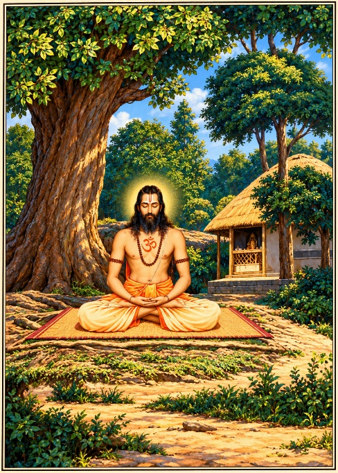
शास्त्रवेत्ताको चाहिये कि पूर्व अथवा उत्तरकी ओर विस्तारवाले स्थानमें ध्यानपरायण होवे। उसे कामना, तर्क, आसक्ति तथा सुख-दुःखको मनसे नियन्त्रित करके पूर्ण विशुद्ध ध्यानमें लीन हो जाना चाहिये। काल तथा कर्मोंको सदा लिङ्गशरीरोंके अन्तर्गत समझकर नाक, जिह्वा, नेत्र, त्वचा, कान, मन, बुद्धि तथा हृदयमें धारणा करनी चाहिये। इस प्रकार योगधारणको द्वादशाध्यात्म (बारह अध्यात्म) नामवाला कहा जाता है। सौ अथवा पचास धारणाको सिरमें धारण करना चाहिये। धारणाके अभ्याससे श्रान्त योगीकी वायु ऊपरकी ओर होने लगती है; तब ओंकारसे युक्त होकर शरीरको वायुसे पूर्ण करना चाहिये। इस प्रकार ओंकारमय योगी [अपनेको] ब्रह्ममें लीन करके ब्रह्मसायुज्य प्राप्त कर लेता है॥४०-४४½॥
[हे ऋषियो!] इसके बाद मैं ओंकारकी प्राप्तिका लक्षण बताऊँगा। इसे तीन मात्रावाला जानना चाहिये। इसमें व्यंजनसहित मकार ईश्वर (शिव) है। इसमें पहली मात्रा विद्युती (राजसी) एवं दूसरी मात्रा तामसी कही गयी है। तीसरी मकाररूप अक्षरगामिनी मात्राको सत्त्वगुणरूपवाली जानना चाहिये। इसे गान्धारी नामसे भी जानना चाहिये; क्योंकि यह गान्धारस्वरसे उत्पन्न है और पिपीलिकाकी गतिके स्पर्शके समान सूक्ष्म गतिवाली है तथा यह मूर्धादेशमें लक्षित होती है। जिस प्रकार उच्चारित किया गया ओंकार मूर्धा देशमें गमन करता है, वैसे ही ओंकारमय योगी ब्रह्ममें लीन होकर ब्रह्मसायुज्य प्राप्त कर लेता है। परमेश्वरका वाचक प्रणव ही धनुष है, यह जीवात्मा ही बाण है और परब्रह्म परमेश्वर ही उसके लक्ष्य हैं। तत्परतासे उनकी उपासना करनेवाले प्रमादरहित साधकके द्वारा ही वह लक्ष्य वेधा जा सकता है, इसलिये उस लक्ष्यको वेधकर बाणकी ही भाँति उसमें तन्मय हो जाना चाहिये॥४५-४९½॥
‘ओम्’—यह एकाक्षर पद गुहा (बुद्धि) में निहित है। यह ‘ओम्’ तीनों लोकों, [ऋक्-यजुः-साम] तीनों वेदों, तीनों अग्नियों तथा विष्णुके तीनों पदोंके स्वरूपवाला है; वस्तुतः अर्धमात्रासहित इसकी तीन मात्राएँ जाननी चाहिये। जो योगी इस प्रणवसे प्रेरित होता है, वह ब्रह्मका सायुज्य प्राप्त कर लेता है॥५०-५२॥
अकारको अक्षर जानना चाहिये; इसके साथ उकारका संयोग कहा गया है। पुनः मकार (अनुस्वार)के योगसे बना हुआ ओंकार तीन मात्रावाला कहा गया है। अकारको भूलोक तथा उकारको भुवर्लोक कहा जाता है। व्यंजनसहित मकारको स्वर्लोक कहा जाता है। ओंकार त्रिलोकस्वरूप है, उसका सिर स्वर्ग है, सभी भुवन अंग हैं। ब्रह्मलोकको उसका पाद कहा जाता है। रुद्रलोक मात्रापादरूप है। शिवपद मात्रासे अतीत है—इस ज्ञानविशेषके द्वारा उस तुरीय पदकी उपासना की जाती है। इसलिये सदा ध्यानपरायणता होनी चाहिये। शाश्वत (स्थिर) सुख चाहनेवालेको उस मात्रातीत अक्षर [शिवतत्त्व] की प्रयत्नपूर्वक उपासना करनी चाहिये॥५३-५७॥
[ॐकी] पहली मात्रा ह्रस्व है और दूसरी मात्रा दीर्घ है। तीसरी मात्रा प्लुत कही जाती है। इन मात्राओंको क्रमशः यथावत् जानना चाहिये। जितना अपना सामर्थ्य हो सके, उतना मनीषी लोग इन्हें धारण कर सकते हैं। इन्द्रियों, मन तथा बुद्धिको नियन्त्रित करके यदि जो कोई आत्मामें सदा अर्धमात्राका ध्यान करता है, तो वह जिस फलको प्राप्त करता है, उसे सुनिये। जो सौ वर्षपर्यन्त प्रत्येक मासमें अश्वमेध यज्ञ करता है, वह उसके द्वारा जो पुण्य पाता है, उसे इस मात्रासे प्राप्त कर लेता है। जो फल न तो कठोर तपस्यासे और न तो विपुल दक्षिणावाले यज्ञोंसे प्राप्त किया जा सकता है, वह फल इस मात्राके द्वारा सम्यक् प्राप्त हो जाता है॥५८-६२॥
उस प्रणवमें जो यह प्लुत नामक मात्रा बतायी गयी है, गृहस्थ योगियोंको उसका अभ्यास करना चाहिये। विशेषरूपसे आठ लक्षणोंवाले अणिमा आदि ऐश्वर्यों (सिद्धियों) के लिये इस मात्राको जानना चाहिये; अतः हे द्विजो! उस मात्राकी साधना करनी चाहिये॥६३-६४॥
हे द्विजो! इस प्रकार योगसम्पन्न, विशुद्ध, मनपर नियन्त्रण करनेवाला तथा जितेन्द्रिय जो व्यक्ति आत्माको जान लेता है, वह सब कुछ प्राप्त कर लेता है। अतः बुद्धिमान्को पाशुपत योगोंके द्वारा आत्मचिन्तन करना चाहिये। जो आत्माको जान लेते हैं, वे शुद्ध हैं; इसमें सन्देह नहीं है॥६५-६६॥
अध्यात्मका चिन्तन करनेवाला ब्राह्मण योगज्ञानके द्वारा ऋक्-यजुः-सामकी ऋचाओं, सभी वेदों तथा उपनिषदोंका ज्ञान प्राप्त कर लेता है। वह सर्वदेवमय होकर लिङ्गशरीरसे शून्य हो जाता है और पुनर्जन्मका त्याग करके शाश्वत पद (शिवपद) को प्राप्त करता है॥६७-६८॥
जिस प्रकार पका हुआ फल वायुद्वारा हिलाये जानेपर वृक्षसे गिर पड़ता है, उसी प्रकार भगवान् सदाशिवके नमस्कारसे पाप नष्ट हो जाता है। रुद्रनमस्कार निश्चितरूपसे सभी कर्मोंका फल देनेवाला है; अन्य देवताओंको नमस्कार करनेसे उनका फल प्राप्त नहीं होता है, अतः मन, वचन, कर्म—इन तीनोंसे विनम्र होकर योगीको महेश्वर तथा दसों इन्द्रियोंका विस्तार करनेवाले ब्रह्मकी उपासना दसों इन्द्रियोंसे करनी चाहिये॥६९-७१॥
इस प्रकार ध्यानमग्न होकर जो अपने शरीरका त्याग करता है, वह तीनों कुलोंका उद्धार करके शिवसायुज्य प्राप्त करता है। अथवा [योगोपासनामें असमर्थ होनेपर] कुछ अरिष्ट देखनेपर और मृत्यु आसन्न होनेपर वाराणसीमें अविमुक्तेश्वरमें जाकर शुद्धि (प्रायश्चित्त) करनी चाहिये; जिस-किसी तरह वहाँ देहत्याग कर देना चाहिये; इससे वह मनुष्य मुक्त हो जाता है। हे विप्रेन्द्रो! जो मनुष्य श्रीपर्वतपर अपने शरीरको छोड़ता है, वह शिवसायुज्य प्राप्त करता है; इसमें सन्देह नहीं करना चाहिये। बुद्धिमान् [व्यक्ति] को प्राणियोंको सदा मुक्ति देनेवाले उत्तम अविमुक्तक्षेत्र (काशी)में विशेषरूपसे मरणकालमें वास करना चाहिये॥७२-७६॥
॥इस प्रकार श्रीलिङ्गमहापुराणके अन्तर्गत पूर्वभागमें ‘अरिष्टकथन’ नामक इक्यानबेवाँ अध्याय पूर्ण हुआ॥९१॥
अध्याय ९२:
अविमुक्तक्षेत्र वाराणसीका माहात्म्य तथा श्रीविश्वेश्वरपूजाविधिवर्णन
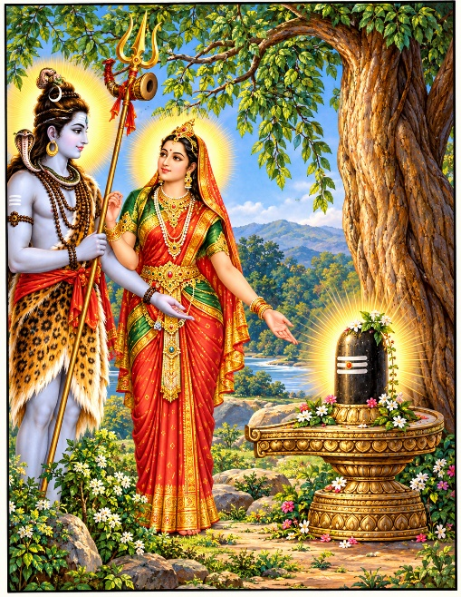
ऋषिगण बोले— हे महाबुद्धिमान् सूतजी! यदि वाराणसी ऐसी पुण्यदायिनी है, तो अब हमलोगोंको उसका प्रभाव कृपापूर्वक बताइये; हमलोगोंको इस अविमुक्तक्षेत्रके उत्तम माहात्म्यको विस्तारपूर्वक विधिके अनुसार सुननेकी बड़ी उत्सुकता है॥१-२॥
सूतजी बोले— वाराणसीके अविमुक्तक्षेत्रके अति उत्तम माहात्म्यको भली-भाँति संक्षेपमें बता रहा हूँ, जैसा कि भगवान् शिवने कहा था। हे विप्रेन्द्रो! मेरे तथा महात्मा ब्रह्माके द्वारा सौ करोड़ वर्षोंमें भी विस्तारसे इसका वर्णन नहीं किया जा सकता है॥३-४॥
प्राचीन कालमें विवाह करनेके पश्चात् नीललोहित भगवान् शंकरने हिमालयके शिखरसे देवी पार्वती तथा गणेश्वरोंके साथ वाराणसीमें पहुँचकर [अपने] अविमुक्तेश्वर लिङ्गका दर्शन कराया और वे वहीं रहने लगे। वाराणसी, कुरुक्षेत्र, श्रीपर्वत, महालय, तुंगेश्वर और केदार—इन स्थानोंमें जो यति होता है; वह दूसरे जन्ममें पाशुपतयोग सिद्ध हो जानेपर एक ही दिनमें सम्यक् (ब्रह्मज्ञानसम्पन्न) यति हो जाता है। अतः सबकुछ छोड़कर पाशुपतव्रत करना चाहिये और वहाँ देवोद्यानमें वास करना चाहिये। शिवजीका उद्यान अत्यन्त उत्तम है। रुद्रने मनसे एक परम सुन्दर भवनका निर्माण किया है। तब नन्दीसहित देव परमेश्वरने स्वयं पार्वतीको उस अत्युत्तम देवोद्यान (आनन्दकानन) को दिखाया। भगवान् परमेश्वर शंकरने पार्वतीकी प्रसन्नताके लिये इस अविमुक्तक्षेत्रके माहात्म्यका वर्णन किया॥५-११॥
वह उद्यान अनेक प्रकारके विकसित गुल्मोंसे सुशोभित था, बाहरसे लता-शाखाओं आदिसे अत्यन्त मनोहर था और विरूढ़ पुष्पोंवाले प्रियंगुसे तथा पूर्ण रूपसे खिले हुए काँटेदार केतकीवृक्षोंसे युक्त था। वह सुगन्धसे युक्त तमालके गुच्छोंसे घिरा हुआ था, अत्यधिक पुष्पोंवाले बकुलके वृक्षोंसे सभी ओरसे सुशोभित था और भौरोंकी पंक्तियोंसे शोभायमान तथा खिले हुए पुष्पोंवाले सैकड़ों अशोक एवं पुन्नागके वृक्षोंसे युक्त था॥१२-१३॥
वह उद्यान कहीं विकसित कमलोंके परागसे भूषित पक्षियों सारस, चक्रवाक तथा उन्मत्त श्रेष्ठ पपीहा नामक पक्षियोंकी मधुर ध्वनियोंसे सभी ओर विशेष रूपसे गुंजित था॥१४॥
वह सुन्दर उद्यान कहीं-कहीं मयूरोंकी ध्वनिसे निनादित था, कहीं-कहीं कारण्डव पक्षीकी ध्वनिसे शब्दायमान था और कहीं-कहीं मत्त भ्रमर-समूहोंसे तथा मदसे आकुल भ्रमरांगनाओंसे गुंजायमान था॥१५॥
वह उद्यान कहीं-कहीं अति सुगन्धित पुष्पोंसे युक्त था, कहीं-कहीं सुन्दर पुष्पोंसे लदे हुए आमके वृक्षोंसे सुशोभित था, लताओंसे परिपूर्ण तिलक वृक्षोंसे समन्वित था और विद्याधरों-सिद्धों तथा चारणोंके गायनसे युक्त था॥१६॥
वहाँ अप्सराओंका समूह नृत्य करनेमें लीन था, अनेक प्रकारके प्रसन्न पक्षी वहाँ निवास करते थे, वह उद्यान नृत्य करते हुए हारीत पक्षियोंके समुदायोंसे निनादित था। वह कहीं-कहीं सिंहोंके नादसे आकुल तथा मत्त मनवाले कस्तूरीमृग-समुदायोंसे चरे गये दर्भांकुरों तथा पुष्पोंसे सुशोभित था और कहीं-कहीं अनेकविध विकसित सुन्दर कमलोंसे युक्त सरोवरों तथा तड़ागोंसे सुशोभित था॥१७-१८॥
वह उद्यान वृक्षोंके समुदायोंसे सम्पन्न था, नीलकण्ठ पक्षियोंके द्वारा सुन्दर प्रतीत होता था, प्रसन्न मनवाले पक्षियोंसे युक्त था, [सभी ओर] ध्वनि होनेसे यह अति सुन्दर था, खिले हुए पुष्पोंवाले वृक्षोंकी शाखाओंमें विद्यमान मस्त भौरोंसे सुशोभित था, नूतन कलियोंकी सुन्दरतासे सुशोभित था और ऊँची-ऊँची शाखाओंसे युक्त था॥१९॥
वह उद्यान कहीं-कहीं दाँतोंसे क्षत की गयी सुन्दर लताओंसे सुशोभित था, कहीं-कहीं लताओंसे वेष्टित वृक्षोंसे मण्डित था और कहीं-कहीं विलासके कारण मन्थर गतिवाली किंपुरुष अंगनाओंसे सेवित था॥२०॥
वह उद्यान पारावत पक्षियोंकी ध्वनिसे निनादित तथा गगनचुम्बी श्रृंगोंवाले वृक्षोंसे, बिखरे हुए पुष्पसमूहोंको विभक्त कर देनेवाले श्वेत वर्णके मनोहर तथा सुन्दर रूपवाले हंसोंसे और अनेक देवताओंके दिव्य कुलोंसे सुशोभित है। वह विकसित नीलकमलके हजारों वितानोंसे युक्त है, जलाशयोंसे सुशोभित देवमार्गवाला है और मार्गके मध्यमें खिले हुए विचित्र पुष्पोंकी पंक्तिसे सम्बद्ध विविध गुल्मों तथा विटपोंसे समन्वित है॥२१-२२॥
उस वनका प्रान्तभाग तुंग अग्रभागवाले, नीलपुष्प-गुच्छोंके भारसे झुकी हुई ऊँची शाखाओंवाले, वायुके द्वारा आन्दोलित होनेपर कानोंको सुख देनेवाली ध्वनिसे भासित अन्तर्भागवाले मनोहर अशोक वृक्षोंसे युक्त है। वह रात्रिमें चन्द्रकी किरणोंसे कुसुमित तिलक वृक्षोंके साथ एकताको प्राप्त है और छायामें सोकर उठे हुए हरिणके समुदायके द्वारा चरे गये दूर्वांकुरोंके अग्रभागोंसे युक्त है। वह हंसोंके पंखोंकी वायुसे हिले हुए कमल तथा स्वच्छ और विस्तीर्ण जलसे समन्वित है, सरोवरोंके तटपर उत्पन्न तथा चकित कर देनेवाले कदलीपत्रोंकी चाटुकारितामें नाचते हुए मयूरोंसे युक्त है, कहीं पृथ्वीपर मयूरोंके पंखमें स्थित चन्दासे अलंकृत भूभागसे सुशोभित है और स्थान-स्थानपर छिपे हुए प्रमुदित, मत्त तथा क्रीड़ा करते हुए हारीत पक्षिसमूहोंसे सुशोभित है॥२३-२४॥
वह उद्यान सारंग हरिणोंसे कहीं-कहीं सुशोभित भागवाला है, कहीं-कहीं विकसित पुष्पोंसे आच्छादित है। कहीं-कहीं प्रसन्नचित्त किन्नरांगनाओंके द्वारा बजायी गयी वीणाओंकी मधुर ध्वनि-गान-नृत्यसे सुशोभित है॥२५॥
वह कहीं लीपी हुई, परस्पर सटी हुई तथा बिखरे पुष्पोंसे सुशोभित मुनियोंकी कुटियोंसे घिरे हुए वृक्षोंसे समन्वित है। वह कहीं जड़से ही फलोंसे लदे हुए विशाल तथा ऊँचे कटहलके वृक्षोंसे व्याप्त है॥२५-२६॥
वह उद्यान पूर्णतः पुष्पित लतागृहोंमें ले जायी गयी सिद्धोंकी सिद्धांगनाओंके सुवर्णमय नूपुरकी ध्वनिसे रमणीय है, प्रियंगु वृक्षोंकी मंजरियोंपर मँडराते हुए भौंरोंसे सुशोभित है और भौंरोंकी पंक्तियोंसे आस्वादित आम्र तथा कदम्बके पुष्पोंसे समन्वित है॥२७॥
वह उद्यान पुष्पसमूहोंसे सुवासित वायुसे आन्दोलित जलाशयोंसे सुशोभित है, भौंरोंके द्वारा गिराये गये सुन्दर पुष्पोंके गुच्छोंसे युक्त है, वृक्षकुंजोंमें अत्यधिक डरी हुई हिरणियोंके झुण्डोंसे मण्डित है और वायुसे प्रेरित है। वह उद्यान मनुष्योंको मोक्ष देनेवाला है॥२८॥
वह चन्द्रमाकी किरणोंके जालसे विविध रंगोंवाले मनोहर तिलकवृक्षोंसे युक्त है, सिन्दूर-कुंकुम तथा कुसुम्भ रंगकी आभावाले अशोक वृक्षोंसे युक्त है और सुवर्णकी कान्तिवाले, विशाल शाखाओंवाले तथा पुष्पोंसे लदे हुए कनेर वृक्षोंसे युक्त है॥२९॥
उस उद्यानकी भूमि कहीं-कहीं अंजनके चूर्णके समान आभावाले, कहीं विद्रुमके समान कान्तिवाले और कहीं सुवर्णसदृश प्रभावाले पुष्पोंसे आच्छादित रहती थी॥३०॥
उस उद्यानमें पुन्नागके वृक्षोंपर सैकड़ों पक्षियोंकी ध्वनि होती रहती थी, गुच्छोंके भारसे रक्त अशोकवृक्ष झुके रहते थे, रम्य सीमास्थलपर थकानको हरनेवाले भवन थे और खिले हुए कमलोंपर भौंरे मँडराते रहते थे॥३१॥
उस समय हिमालयपुत्री [पार्वती] और मत्त, प्रसन्न तथा शरीरसे पुष्ट प्रिय गणेश्वरोंके साथ विद्यमान सम्पूर्ण भवनोंके भर्ता शिवने अनेकविध विशाल वृक्षोंवाले अत्यन्त रम्य उपवनको देवीको दिखाया॥३२॥
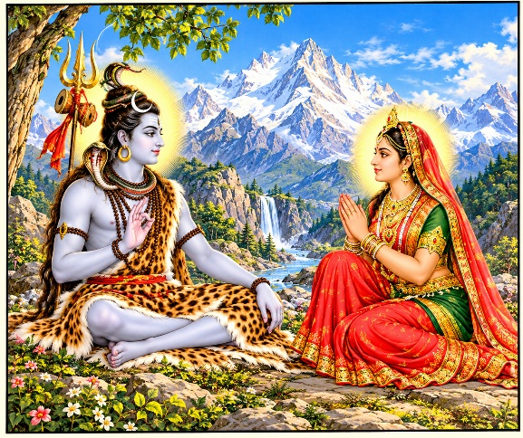
शिवजीने अत्यन्त सुन्दर वन्य पुष्पोंसे बनाये गये दिव्य आभूषणोंसे उपवनमें गयी हुई दिव्य देवीको सजाया और उन पार्वतीने भी अत्यन्त सुन्दर दिव्य पुष्पोंसे इन देवदेव शंकरको भक्तिपूर्वक अलंकृत किया॥३३॥
तदनन्तर उस अत्यन्त रम्य उद्यानको देखकर नन्दी आदि गणेश्वरोंके साथ देवताओंके लिये पूज्य देव [शंकर] की पूजा करके और उन्हें प्रणामकर देवी [पार्वती] कहने लगीं॥३४॥
श्रीदेवी बोलीं— हे देव! आपने परम शोभासे युक्त उद्यानको मुझे दिखाया; अब आप इस क्षेत्रके समस्त गुणोंको मुझे बतानेकी कृपा करें। हे देवेश! हे देवदेव! हे वृषभध्वज! आप इस अविमुक्तक्षेत्रका माहात्म्य पूर्णरूपसे बतायें॥३५-३६॥
सूतजी बोले— [हे ऋषियो!] तब देवीका वह वचन सुनकर देवदेव श्रेष्ठ प्रभु उनके मुखकमलको सूंघकर हँसते हुए पार्वतीसे कहने लगे॥३७॥
श्रीभगवान् बोले— वाराणसी नामक यह मेरा नित्य गुह्यतम क्षेत्र है; यह सर्वदा सभी प्राणियोंके मोक्षका हेतु है। हे देवि! इस [क्षेत्र] में सिद्ध लोग सदा मेरे व्रतमें स्थित रहते हैं और मेरे लोककी अभिलाषा करनेवाले लोग नित्य अनेकविध लिङ्गोंको धारण किये रहते हैं। अनेक प्रकारके वृक्षोंसे युक्त, अनेक प्रकारके पक्षियोंसे सुशोभित, कमल तथा उत्पलके पुष्पोंसे सम्पन्न सरोवरोंसे अलंकृत और अप्सराओं तथा गन्धर्वोंसे सेवित इस शुभ क्षेत्रमें युक्तात्मा जितेन्द्रिय लोग श्रेष्ठ योगका अभ्यास करते हैं॥३८-४१॥
[हे देवि!] जिस कारणसे मुझे यहाँ निवास करना अच्छा लगता है, उसे सुनो। मुझमें अपने मनको स्थिर रखनेवाला तथा मुझमें सदा सभी क्रियाएँ अर्पित करनेवाला मेरा भक्त जिस प्रकारका मोक्ष यहाँ प्राप्त करता है, वैसा अन्यत्र कहीं भी नहीं। हे देवि! यहाँ मरनेवाला प्राणी मोक्ष प्राप्त करता है। मेरा यह पुर दिव्य, गुह्यसे भी गुह्यतम तथा महान् है—इसे ब्रह्मा आदि, सिद्धगण तथा मुक्तिके इच्छुक लोग जानते हैं। अतः यह परम क्षेत्र मेरी परम गति है। मैंने कभी भी इसका त्याग नहीं किया है और न तो कभी इसका त्याग करूँगा, अतः मेरा यह क्षेत्र अविमुक्त कहा गया है॥४२-४५½॥
नैमिषारण्य, कुरुक्षेत्र, हरिद्वार तथा पुष्करमें स्नान करने तथा वहाँ निवास करनेसे मोक्ष नहीं प्राप्त होता है, बल्कि यहाँ प्राप्त हो जाता है, अतः यह [अन्य तीर्थोंसे] विशिष्ट है। प्रयागमें अथवा यहाँपर मेरे परिग्रहके कारण मुक्ति होती है; तीर्थोंमें अग्रणी (श्रेष्ठ) प्रयागसे भी शुभ यह अविमुक्त [क्षेत्र] है॥४६-४८½॥
धर्मका सारतत्त्व सत्य है, मोक्षका सारतत्त्व शम है; किंतु क्षेत्रतीर्थके सारतत्त्वको ऋषिगण भी नहीं जानते हैं॥४९॥
इच्छानुसार खाता हुआ, सोता हुआ, क्रीड़ा करता हुआ तथा अनेक क्रियाएँ करता हुआ भी प्राणी इस अविमुक्तक्षेत्रमें प्राणत्याग करे, तो वह मोक्ष प्राप्त करता है॥५०॥
यहाँ हजारों पाप करके पिशाचत्वको प्राप्त होना मनुष्योंके लिये अच्छा है, किंतु काशीपुरीको छोड़कर स्वर्गमें हजार बार इन्द्र होना अच्छा नहीं है। अतएव मुक्तिके लिये इस अविमुक्तक्षेत्रमें निवास करना चाहिये। महातपस्वी महर्षि जैगीषव्यने इस क्षेत्रके माहात्म्यसे तथा मेरी भक्तिसे युक्त होकर परम सिद्धि प्राप्त की थी। महर्षि जैगीषव्यकी श्रेष्ठ गुफा योगियोंकी स्थली मानी जाती है। योगी लोग वहाँ सदा मेरा ध्यान करते हैं और वहाँ योगकी अग्नि तीव्रतासे प्रज्वलित होती रहती है। मनुष्य [यहाँ] परम कैवल्य (मोक्ष) प्राप्त करता है, जो देवताओंके लिये भी दुर्लभ है॥५१-५४॥
अव्यक्त लिङ्गोंवाले तथा सभी सिद्धान्तोंको जाननेवाले मुनिगण यहाँ मोक्ष प्राप्त करते हैं, जो अन्यत्र कहीं भी दुर्लभ है। मैं उनके लिये अत्युत्तम योगैश्वर्य तथा अपने सायुज्यरूप अभीष्ट स्थानको बताऊँगा। मेरे क्षेत्रमें अपनी सभी क्रियाएँ मुझमें समर्पित करनेवाले कुबेरने क्षेत्रके सेवनसे ही गणेशत्वको प्राप्त किया था। हे देवि! जो ऋषि संवर्त नामक मेरे भक्त जन्म लेंगे, वे भी यहाँ मेरी आराधना करके उत्तम सिद्धि प्राप्त करेंगे। हे कमलनयने! महातपस्वी पराशरपुत्र योगी ऋषि व्यास मेरे भक्त होंगे; वेदसंहिताओंका प्रवर्तन करनेवाले वे मुनिश्रेष्ठ भी इस क्षेत्रमें विहार करेंगे। हे सुव्रते! देवर्षियोंके साथ ब्रह्मा, विष्णु, सूर्य, देवराज इन्द्र, अन्य देवता लोग तथा महात्मा—ये सब यहाँपर मेरी उपासना करते हैं॥५५-६१॥
अन्य दिव्य योगी तथा महात्मा लोग भी प्रच्छन्न [गुप्त] रूप धारणकर एकाग्रचित्त होकर यहाँपर सदा मेरी उपासना करते रहते हैं। विषयोंमें आसक्त मनवाला तथा धर्मका त्याग किया हुआ मनुष्य भी यदि इस क्षेत्रमें मृत हो जाय, तो वह भी संसारमें पुनः जन्म नहीं प्राप्त करता है; तो फिर हे सुव्रते! जो ममतारहित, धीर, सत्त्वगुणमें स्थित, जितेन्द्रिय, व्रती, कर्मप्रवृत्तिसे रहित, मुझमें ध्यानरत, बुद्धिमान् तथा संगरहित हैं—वे सब [मुझ] देवदेवको प्राप्त करके मेरी कृपासे यहाँ श्रेष्ठ मोक्ष अवश्य प्राप्त करते हैं। हे सुव्रते! हजारों जन्मोंमें भी योगी जिस [मोक्ष] को प्राप्त नहीं कर पाता है, उस उत्तम मोक्षको वह यहाँपर मेरी कृपासे प्राप्त कर लेता है॥६२-६६॥
हे वरानने! पूर्वकालमें यहाँ ब्रह्माके द्वारा स्थापित किये गये कैलास भवन नामक इस गोप्रेक्षक क्षेत्रको देखो। इस गोप्रेक्षक [क्षेत्र] में आकर मेरा दर्शन करके मनुष्य दुर्गति नहीं प्राप्त करता है और पापोंसे छूट जाता है। इसी प्रकार यहाँपर ब्रह्माने गायोंके दूधसे कपिलाहृद नामक विशाल तथा पुण्यतम तीर्थका निर्माण किया है। यहाँ भी मैं स्वयं वृषध्वज—इस नामसे विख्यात हूँ। हे देवि! मैंने सदासे यहाँ निवास किया है; ऐसा आप देखती भी हैं॥६७-७०॥
यहाँ ब्रह्माके द्वारा निर्मित किये गये भद्रतोय नामक सरोवरको देखो। हे देवि! सभी देवताओंने ‘हे ईश! शान्त हो जाइए’—ऐसा कहकर इस स्थानपर मुझ शिवको प्रसन्न किया था, तब मैं शान्त हो गया था। परमेष्ठी ब्रह्माने यहाँ लाकर मुझे स्थापित किया। ब्रह्माजीसे प्राप्त करके विष्णुने पुनः स्थापित किया। तब दुःखी चित्तवाले ब्रह्माने विष्णुसे कहा—आपने मेरे द्वारा लाये गये इस लिङ्गको क्यों स्थापित किया? तत्पश्चात् विष्णु कुपितमुखवाले उन ब्रह्मासे पुनः बोले—रुद्र देवतामें मेरी अत्यधिक, श्रेष्ठ तथा महत्तर भक्ति है; मेरे द्वारा स्थापित किया गया यह लिङ्ग आपके ही नामसे प्रसिद्ध होगा॥७१-७५॥
[हे देवि!] तभीसे यहाँ हिरण्यगर्भ—इस नामसे स्थित हूँ। इन देवेश्वरका दर्शन करके मनुष्य मेरा लोक प्राप्त करता है। तत्पश्चात् ब्रह्माने परम भक्तिसे युक्त होकर मेरे इस पवित्र लिङ्गको विधिपूर्वक पुनः स्थापित किया। मैं यहाँ स्वर्लीनेश्वर नामसे स्वयं विद्यमान हूँ; यहाँ प्राणत्याग करनेपर मनुष्य कभी जन्म नहीं लेता है। जो गति योगियोंकी कही गयी है, वह अनन्य गति उसकी भी होती है॥७६-७८½॥
इसी स्थानपर मैंने व्याघ्रका रूप धारण करके देवताओंके लिये कंटकस्वरूप एक अभिमानी तथा बलवान् दैत्यका वध किया था; [तभीसे] व्याघ्रेश्वर इस नामसे प्रसिद्ध होकर मैं यहाँ सदा स्थित हूँ। इन व्याघ्रेश्वरका दर्शन करके मनुष्य पुनः दुर्गतिको प्राप्त नहीं होता है। पूर्वकालमें उत्पल तथा विदल नामक जिन दो दैत्योंके लिये ब्रह्माने स्त्रीके द्वारा वध्य होनेका विधान किया था, उन्हें अभिमानयुक्त देखकर आपने ही रणमें अवज्ञापूर्वक एक कन्दुकसे मार डाला था; आपके उसी कन्दुकका यह देह यहाँ स्थापित हो गया अर्थात् वह कन्दुक लिङ्गरूपमें परिणत होकर स्थापित हो गया॥७९-८२॥
प्रारम्भमें गणपोंके साथ आकर मैं यहाँ स्थित हो गया, अतः यह ज्येष्ठस्थान है; यहाँ मेरा दर्शन पुण्यप्रद है। देवताओंने यहाँ सभी ओर इन लिङ्गोंको स्थापित किया है; अतः भक्तियुक्त होकर इन लिङ्गोंका केवल दर्शन करके मनुष्य मृत्यु होनेपर [शिवका] गण हो जाता है॥८३-८४॥
[हे देवि!] पूर्वकालमें स्वयं तुम्हारे पिता पर्वतराज हिमालयने इसे मेरा प्रिय तथा हितकर स्थान समझकर यहाँ लिङ्गकी स्थापना की थी। शैलेश्वर नामसे प्रसिद्ध इस लिङ्गको तुम आदरपूर्वक देखो। हे देवि! इसका दर्शन करके मनुष्य दुर्गतिको नहीं प्राप्त होता है॥८५-८६॥
हे देवि! पुण्यमयी तथा पापको नष्ट करनेवाली यह वरुणा नदी इस क्षेत्रको अलंकृत करके गंगाके साथ मिल जाती है इनके संगमपर भी ब्रह्माके द्वारा उत्तम लिङ्ग स्थापित किया गया है; यह संगमेश्वर—इस नामसे जगत्में प्रसिद्ध है, तुम इसका दर्शन करो। देवनदीके संगमपर स्नान करके शुद्ध होकर जो मनुष्य संगमेश्वरकी पूजा करता है, उसे जन्मभय कहाँसे हो सकता है!॥८७-८९॥
[हे देवि!] मैं इसे महाक्षेत्र मानता हूँ; यह योगियोंका परम निवास स्थान है। इस श्रेष्ठ क्षेत्रके मध्यमें मैं स्वयं प्रकट होकर अधिष्ठित हूँ। सभी सुर तथा असुर [यहाँ] मुझे मध्यमेश्वर—इस नामसे कहते हैं। मेरा व्रत धारण करनेवाले सिद्धों और मोक्षकी अभिलाषावाले तथा ज्ञानयोगमें परायण मनवाले योगियोंका यह निवास स्थान है। इन मध्यमेश्वरका दर्शन कर लेनेपर मनुष्य अपने जन्मके विषयमें चिन्ता नहीं करता है॥९०-९२॥
भृगुपुत्र शुक्राचार्यने भी यहाँ लिङ्गको स्थापित किया है; शुक्रेश्वर नामसे विख्यात यह लिङ्ग सभी सिद्धों तथा देवताओंसे पूजित है। नियमित होकर इनका दर्शन करके मनुष्य सभी पापोंसे मुक्त हो जाता है और मरनेपर पुनः संसारी जीव नहीं होता है॥९३-९४॥
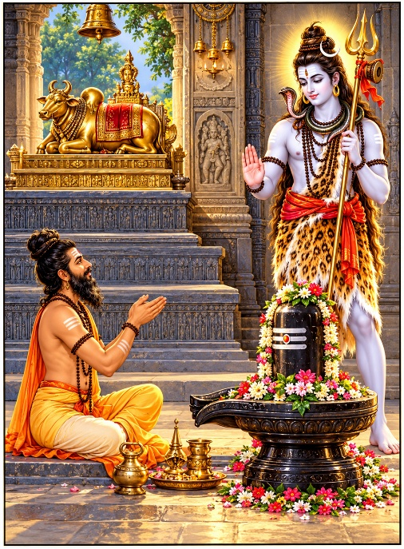
पूर्वकालमें देवताओंके लिये कंटकस्वरूप एक दैत्य सियारके रूपमें विद्यमान था। अपने बन्धनसे सशंकित उस दैत्यने ब्रह्मासे वर प्राप्त करके गोमायु (सियार) का रूप धारण कर लिया था। हे पार्वति! मैंने उसका वध किया और तब मैं जम्बुकेश कहा जाने लगा; आज भी लोकमें प्रसिद्ध तथा देवताओं और असुरोंसे नमस्कृत इन देवेश्वरका दर्शन करके मनुष्य समस्त कामनाओंको प्राप्त कर लेता है। [हे देवि!] शुक्र आदि प्रधान ग्रहोंके द्वारा स्थापित किये गये इन पुण्यमय तथा सभी कामनाओंको पूर्ण करनेवाले लिङ्गोंका दर्शन करो। हे पार्वति! इस प्रकार मैंने अपने निवासस्वरूप इन पवित्र लिङ्गोंका वर्णन किया; मेरे क्षेत्रमें एक अन्य गुप्त रहस्य भी है, इसे सुनो॥९५-९८½॥
यह क्षेत्र चारों दिशाओंमें चार कोस अतएव एक योजनमें कहा गया है; हे सुन्दर अंगोंवाली! मृत्युकालमें इसे अमरता प्रदान करनेवाला जानो। महालय गिरिमें विराजमान और केदारपर स्थित मेरा दर्शन करके मनुष्य गणत्व प्राप्त करता है, किंतु इस क्षेत्रमें मोक्षकी प्राप्ति होती है। उन स्थानोंमें गणपति पद प्राप्त होता है और यहाँपर उत्तम मुक्ति प्राप्त होती है, अतः हे वरानने! उस महालय, केदार तथा मध्यम क्षेत्र—इन सबसे पुण्यप्रद यह अविमुक्त क्षेत्र कहा गया है। केदार, मध्यमक्षेत्र तथा महालय स्थान—ये तीनों पृथ्वीलोकमें मेरे पवित्र क्षेत्र हैं, किंतु यह [अविमुक्तक्षेत्र] उनसे भी अधिक श्रेष्ठ है॥९९-१०३॥
जबसे इन लोकोंकी सृष्टि की गयी है, तबसे मैंने इस पवित्र क्षेत्रका परित्याग कभी नहीं किया, इसलिये यह अविमुक्त [क्षेत्र] हो गया। यहाँ मेरे अविमुक्तेश्वर लिङ्गका दर्शन करके मनुष्य शीघ्र ही पापोंसे मुक्त होकर पशुपाशों (जीवबन्धन) से छूट जाता है। शैलेश्वर, संगमेश्वर, स्वर्लीनेश्वर, मध्यमेश्वर, हिरण्यगर्भ, ईशान, गोप्रेक्ष, वृषभध्वज, उपशान्त, ज्येष्ठस्थानमें निवास करनेवाले शिव, शुक्रेश्वर, प्रसिद्ध व्याघ्रेश्वर तथा जम्बुकेश्वरका दर्शन करके मनुष्य दुःखके सागररूप संसारमें [पुनः] जन्म नहीं लेता है॥१०४-१०७½॥
सूतजी बोले— [हे ऋषियो!] ऐसा कहकर महादेवने सभी दिशाओंकी ओर देखा। [दिशाओंकी ओर] देखकर देवदेव महेश्वरके बैठ जानेके अनन्तर वह सम्पूर्ण स्थान सहसा देदीप्यमान हो गया। तत्पश्चात् भस्म लगानेसे श्वेत प्रभावाले, नियम-व्रत धारण करनेवाले, पशुपतिके भक्त और महेश्वरके प्रति समर्पित बहुत-से सैकड़ों सिद्ध तथा महात्माओंने वहाँ आकर महेश्वरको प्रणाम किया; पुनः वे ध्यानयोगमें स्थित योगेश्वर [शिव] को बार-बार देखकर अपने मनको स्थिर करके उन ईश्वरमें लीन होते हुए-से स्थित हो गये। उनके इस प्रकार स्थित होनेपर वे देवदेव उमापति परम मूर्ति धारण करते हुए विराट् पुरुषके रूपमें हो गये; वे सम्पूर्ण जगत्को एक स्थानपर एकत्र करनेके लिये प्रलयकालके समान खड़े हो गये॥१०८-११३॥
तब पुलकित रोमोंवाली पार्वती वहाँ स्थित उन जगत्प्रभुकी उस परम मूर्तिको पुनः देखनेमें समर्थ न हो सकीं। तदनन्तर पहले कभी न देखे गये उस स्वरूपको प्रकृतिमें स्थित समझकर वे परमेश्वरी योगके द्वारा प्रकृतिका रूप धारणकर महात्मा शिवके उस स्वरूपको पुनः देखनेमें समर्थ हो गयीं॥११४-११५½॥
तब अत्यन्त सुन्दर पंचाक्षर मन्त्रका स्मरण करते हुए दग्ध लिङ्गवाले वे सभी योगी शिवके ध्यानमें लीन होकर उन [विराट्] पुरुषके हृदयमें प्रविष्ट हुए। तदनन्तर शिवजीने सभी पापोंका हरण करनेवाले, दिव्य तथा पूर्वमें प्रकट किये गये नीललोहितमूर्तिस्थ रूपको पुनः धारण किया॥११६-११८॥
उस रूपको देखकर पुलकित समस्त रोमोंवाली पार्वतीने स्तुति करते हुए तथा उनके चरणोंमें प्रणाम करके कहा—’हे भगवन्! ये कौन हैं?’ तब सुरश्रेष्ठ [शिव] पर्वतराजकी उन पुत्रीसे कहने लगे॥११९½॥
श्रीभगवान् बोले— हे भामिनि! मेरे व्रतका आश्रय लेकर जिन-जिन भक्तियुक्त श्रेष्ठ द्विजोंने यहाँ योगका अभ्यास किया है, उनके एक जन्ममें ही इस क्षेत्रके प्रभाव तथा उनकी भक्तिके कारण मैं स्वयं विग्रहरूपसे इस प्रकारका अनुग्रह करता हूँ। अतः यह महान् क्षेत्र ब्रह्मा आदि [देवताओं], वेदज्ञ श्रेष्ठ ब्राह्मणों, सिद्धों तथा तपस्वियोंके द्वारा सेवित है। हे देवि! प्रत्येक महीनेमें दोनों पक्षोंकी अष्टमी तथा चतुर्दशीको वाराणसीमें शिवकी पूजा की जाती है। सूर्यग्रहण तथा चन्द्रग्रहणके अवसरपर, विशेषकर कार्तिक महीनेमें, पुण्यप्रद सभी पर्वोंमें, विषुवत् एवं अयन संक्रान्तियोंमें पृथ्वीपर स्थित सभी तीर्थ वाराणसीमें विद्यमान उत्तरवाहिनी, पुण्यमयी, मेरे सिरसे निकली हुई, तुम्हारे पिता गिरिराज हिमालयकी पुत्री, पुण्यमयस्थानमें विराजमान और सदा पुण्य दिशाकी ओर प्रवाहित होनेवाली पवित्र गंगाका सेवन करते हैं। हे वरानने! सभी ओरसे आकर जो उन भागीरथीका सेवन करते हैं, उन्हें सुनो॥१२०-१२७॥
हे देवि! हे सुव्रते! कुरुक्षेत्र, पुष्कर, निमिष, प्रयाग, पृथूदक, द्रुमक्षेत्र, कुरुक्षेत्र, तीर्थमय नैमिष, सभी क्षेत्र, देवता, ऋषिगण, सन्ध्या, ऋतुएँ, सभी नदियाँ, सभी सरोवर, सातों समुद्र तथा समस्त देवतीर्थ एकीभूत होकर सैकड़ों तीर्थोंसहित सभी पर्वोंके अवसरपर भागीरथीमें आकर मिल जाते हैं और हे सुरेशानि! सभी पर्वोंपर अविमुक्तेश्वर तथा त्रिविष्टपका दर्शन करके पुनः कालभैरव पहुँचकर पूर्णरूपसे पापमुक्त हो जाते हैं। पृथ्वीपर जो भी पवित्र तथा महान् आयतन (देवालय) हैं, वे समस्त पर्वोंके अवसरपर महापापोंका नाश करनेवाले क्षेत्रश्रेष्ठ पुण्यमय अविमुक्तमें आकर प्रविष्ट हो जाते हैं॥१२८-१३३॥
केदार [खण्ड] में स्थित लिङ्ग, महालयमें स्थित लिङ्ग, मध्यमेश्वर नामक लिङ्ग, पाशुपतेश्वर, शंकुकर्णेश्वर, दोनों गोकर्णेश्वर, द्रुमचण्डेश्वर, अत्युत्तम भद्रेश्वर, स्थानेश्वर, एकाग्रेश्वर, कालेश्वर, अजेश्वर, भैरवेश्वर, ईशान, ओंकारेश्वर, अमरेश्वर, महाकालेश्वर, ज्योतिष, भस्मगात्र आदि तथा अन्य जो प्रसिद्ध अरसठ मेरे पवित्र स्थान इस भूतलपर हैं एवं जो अन्य सभी लोकप्रसिद्ध स्थान हैं; वे सब वाराणसीमें मेरे पास सभी पुण्यप्रद पर्वोंपर आ जाते हैं। [हे देवि!] इसी कारणसे यहाँपर मृत्युको प्राप्त प्राणी दिव्य अमृत (अमर) पद प्राप्त करता है; मैंने यह रहस्यमय बात कही है॥१३४-१३९½॥
हे शुभे! [वाराणसीमें] गंगामें स्नान करके मेरा दर्शन करनेसे मनुष्य सैकड़ों-हजारों समस्त यज्ञोंके अभीष्ट फलोंके समान फल शीघ्र ही प्राप्त करता है, इससे बढ़कर आश्चर्य क्या हो सकता है? हे देवि! स्वर्गमें, पृथ्वीपर तथा पर्वतोंपर जो भी सभी प्रधान देवस्थान हैं, उनमें मेरे द्वारा बताये गये इस वाराणसीक्षेत्रको सबसे श्रेष्ठ जानो। ब्राह्मणोंने वेदोंमें वर्णित पापको ‘अवि’ शब्दसे कहा है; यह क्षेत्र उस [पाप] से मुक्त है तथा मेरे द्वारा सेवित है, अतः इसे ‘अविमुक्त’ कहा जाता है॥१४०-१४३॥
ऐसा कहकर सभी लोकोंके स्वामी भगवान् रुद्र बोले—’देवेशि! मेरे इस अविमुक्त निवासस्थानको पुनः भली-भाँति देखो।’ ऐसा कहनेके बाद उन देवीको साथ लेकर भगवान् उमापतिने उन्हें अत्युत्तम श्रीपर्वत दिखाया और वे वहाँ अविमुक्तेश्वरमें उनके साथ नित्य रहने लगे। सर्वत्र गमनकी शक्तिसे युक्त होने तथा सर्वव्यापी होनेके कारण सर्वात्मा, सत्-असत्स्वरूपवाले, देवताओंके स्वामी तथा सभी प्राणियोंके स्वामी भगवान् शिव उन देवीके साथ श्रीपर्वतपर पहुँचकर वहाँके [पवित्र] क्षेत्र दिखाने लगे॥१४४-१४७॥
यहाँ कुण्डिप्रभ, परम दिव्य वैश्रवणेश्वर, आशालिङ्ग, देवेश्वर, दिव्य बिलेश्वर, विष्णुके द्वारा स्थापित महान् रामेश्वर, दक्षिण द्वारके पार्श्वभागमें भगवान् कुण्डलेश्वर, पूर्व द्वारके समीप स्थित और पर्वतके साथ वृद्धिको प्राप्त सर्वदेवनमस्कृत उत्तम त्रिपुरान्तक, तीनों लोकोंमें प्रसिद्ध मध्यमेश्वर, पूर्वकालमें देवताओंके द्वारा स्थापित वरप्रद अमरेश्वर, गोचर्मेश्वर, ईशान, अद्भुत इन्द्रेश्वर और अपने कार्यके लिये ब्रह्माके द्वारा स्थापित विशाल कर्मेश्वर लिङ्ग हैं। हे अव्यये! श्रीमत्सिद्धवट सदा मेरा निवासस्थान है। साक्षात् ब्रह्माके द्वारा निर्मित यह दिव्य तथा पवित्र अजबिल नामक स्थान है; वहीं बिलेश्वरमें मेरी दिव्य पादुकाएँ भी हैं। वहाँ श्रृंगाटक पर्वतके मध्य शिखरपर श्रृंगाटकके आकारवाला (त्रिकोण) श्रृंगाटकेश्वर नामक लिङ्ग है, जो श्रीदेवी (लक्ष्मी) के द्वारा स्थापित किया गया है। यह मल्लिकार्जुन [लिङ्ग] मेरा शुभ निवासस्थान है। हे देवि! युगादिके परिवर्तित होनेपर ब्रह्माके द्वारा स्थापित रजेश्वरको, स्कन्दके द्वारा स्थापित गजेश्वरको, अविनाशी कपोतेश्वरको तथा सबसे अधिक शुभ और करोड़ों रुद्रगणोंके द्वारा सेवित कोटीश्वर नामक महातीर्थको इस समय देखो॥१४८-१५७॥
दक्षिणमें ब्रह्माके द्वारा तथा उत्तरमें विष्णुके द्वारा स्थापित किये गये पाषाणनिर्मित सुन्दर द्विजदेवकुल नामक लिङ्गको, पूर्वमें मेरे द्वारा स्थापित महाप्रमाण लिङ्ग तथा पश्चिममें पर्वतपर स्थित ब्रह्मेश्वर अलेश्वर नामक लिङ्गको देखो महादेवने ब्रह्मासे कहा था—’हे ब्रह्मन्! आपने मुनियोंके साथ इसे अलंकृत किया है’—ऐसा कहकर वे रुद्र उस गृहमें स्थित हो गये, अतः उसे अलंगृह कहा गया है॥१५८-१६०॥
हे तीर्थज्ञे! वहाँपर स्थित मेरे व्योमलिङ्ग तीर्थको भी देखो; कदम्बेश्वर नामवाला यह तीर्थ स्कन्दके द्वारा स्थापित किया गया है। नन्द आदिके द्वारा विधिवत् स्थापित गोमण्डलेश्वरको भी देखो। हे वरानने! शोभासम्पन्न देव-हृद (सरोवर) के तटपर इन्द्र आदि सभी देवताओंके द्वारा स्थापित किये गये मेरे इन स्थानोंका अवलोकन करो। हे देवि! हारपुरमें तुम्हारे हारके गिर जानेपर तुमने जगत्के हितके लिये इसे हारकुण्ड बना दिया था। हे सुव्रते! शिवरुद्रपुरमें उस पर्वतपर तुम्हारे पिता सुशैलने अचलेश्वरकी स्थापना की थी, जिसे मैंने ब्रह्मा आदि ऋषियोंके साथ सुशोभित किया था। हे देवि! तुम्हारी पुत्री चण्डिकेशाने चण्डिकेश्वरको स्थापित किया है; चण्डिकाके द्वारा स्थापित यह स्थान उत्तम अम्बिकातीर्थ है। यह रुचिकेश्वर तीर्थ है; यह पवित्र कपिलधारा [तीर्थ] है॥१६१-१६६½॥
हे देवि! जो इन विविध स्थानों तथा तीर्थोंमें भक्तिपूर्वक सदा मेरी पूजा करता है, वह मेरे साथ आनन्द करता है। जो ब्राह्मण श्रीशैलपर शरीरत्याग करता है, वह पापरहित होकर मुक्त हो जाता है, जिस प्रकार अविमुक्तक्षेत्रमें शुभ फल होता है; इसमें सन्देह नहीं है। हे सुव्रते! जो इन स्थानोंमें विधिपूर्वक घृतसे महास्नान कराता है, वह मेरा सायुज्य प्राप्त करता है। पचीस पल [घृत] का ‘अभ्यंग’ तथा सौ पलका ‘स्नान’ जानना चाहिये। दो हजार पलोंसे स्नान करानेको ‘महास्नान’ कहा गया है॥१६७-१७०½॥
जो मेरे लिङ्गको गायके घीसे स्नान कराकर सभी पूजाद्रव्योंसे विशुद्ध करके जलसे मेरा अभिषेक करता है—इस प्रकार मार्जन करनेसे सौ यज्ञोंका, स्नान करानेसे तथा पूजा करानेसे लाख-लाख यज्ञोंका, गीतवाद्य आदिसे अर्चन करनेपर अनन्त यज्ञोंका फल प्राप्त होता है। महास्नानमें रुचि रखनेवाले भक्तोंको स्नानका आठ गुना (आठ लाख यज्ञोंका) फल बताया गया है। केवल जलसे अथवा भक्तिपूर्वक गन्धयुक्त जलसे अभ्यंग पचीस पलसे करना चाहिये॥१७१-१७४॥
विधिपूर्वक शमीपुष्प, बिल्वपत्र, कमल तथा अन्य पुष्प अर्पित करना चाहिये; बिल्वपत्रका त्याग [कभी नहीं] करना चाहिये। महादेवकी पूजा चार अथवा आठ द्रोण पुष्पोंसे करनी चाहिये और दस अथवा आठ द्रोण नैवेद्य अर्पित करना चाहिये। धनहीन ब्राह्मणके लिये एक आढक नैवेद्यका पुण्य सौ द्रोण नैवेद्यके पुण्यके समान बताया गया है; इसमें सन्देह नहीं करना चाहिये॥१७५-१७७॥
भेरी, मृदंग, मुरज, तिमिर, पटह आदि विविध वाद्य यन्त्रों और अन्य प्रकारके निनादोंके द्वारा [रात्रिमें] जो जागरण करे, उसे अपने सेवकों, पुत्रों, पत्नी, सम्बन्धियों तथा बन्धुओंके साथ प्रदक्षिणा करके उत्तम लिङ्गसे इस प्रकार प्रार्थना करनी चाहिये—’हे सुरेश्वर! हे शंकर! मैंने जो भी द्रव्यहीन, क्रियाहीन तथा श्रद्धाहीन [पूजन] किया है अथवा जो नहीं भी किया गया है, उसे आप कृपा करके क्षमा करें’—यह प्रार्थना करके त्वरित रुद्र तथा शान्तिमन्त्रका जप करना चाहिये। पंचाक्षरके महाबीजका जप करके वह सभी तीर्थोंमें जाने तथा सभी यज्ञोंको करनेसे जो फल होता है, उस फलको प्राप्त कर लेता है और वाराणसीमें मरनेपर जो सायुज्य गति होती है, मेरे उस सायुज्यको प्राप्त कर लेता है; इसमें सन्देह नहीं है। [हे देवि!] मेरे भक्तोंको चाहिये कि मेरी प्रसन्नताके लिये विधिपूर्वक यह सब करें। जो ऐसा नहीं करते, वे मेरे भक्त नहीं होते हैं; इसमें सन्देह नहीं है॥१७८-१८४॥
सूतजी बोले— [हे ऋषियो!] यह वचन सुनकर वाराणसीपुरी जाकर देवीने दूध तथा घीसे अविमुक्तेश्वर लिङ्गको स्नान कराकर भुवननायक देवेश रुद्रका अर्चन किया और अविमुक्त [काशी] में तपस्याके द्वारा मन्दर-पर्वतपर एक सुन्दर कन्दरामें महात्मा मन्दरका क्षेत्र निर्मित किया; वहाँ प्रभु [शिव] ने हिरण्याक्षकेपुत्र महादैत्य अन्धकपर अनुग्रह करके लीलापूर्वक उसे गणत्व प्राप्त कराया था। [हे ऋषियो!] इस प्रकार मैंने आप लोगोंसे आदरपूर्वक सम्पूर्ण कथासार कहा। जो मनुष्य इस क्षेत्रके उत्तम माहात्म्यको पढ़ता अथवा सुनता है, वह सभी क्षेत्रोंमें वासका जो पुण्य होता है, वह सब तत्काल प्राप्त कर लेता है अथवा जो सभी पवित्र तथा जितेन्द्रिय द्विजोंको सुनाता है, वह भी समस्त यज्ञोंका फल प्राप्त कर लेता है॥१८५-१९०॥
॥इस प्रकार श्रीलिङ्गमहापुराणके अन्तर्गत पूर्वभागमें ‘वाराणसी श्रीशैलमाहात्म्यकथन’ नामक बानबेवाँ अध्याय पूर्ण हुआ॥९२॥
तिरानबेवाँ अध्याय
हिरण्याक्षपुत्र अन्धकासुरका आख्यान तथा शिवानुग्रहसे उसे गाणपत्यपदकी प्राप्ति
ऋषिगण बोले— [हे सूतजी!] अन्धक नामक दैत्यराजने मन्दरपर्वतकी सुन्दर गुफामें दमित होकर किस प्रकार महेश्वरसे गाणपत्य (गणपतिपद) प्राप्त किया; जिस प्रकार यह घटित हुआ और जैसा आपने सुना है, वह कृपापूर्वक हम लोगोंको बताइये॥१॥
सूतजी बोले— [हे ऋषियो!] मैं अन्धकपर [शिवजीके] अनुग्रह, मन्दरपर उसके दमन तथा शोषण एवं वरप्राप्ति—यह सब संक्षेपमें बता रहा हूँ। प्राचीनकालमें हिरण्याक्षका एक पुत्र था; हिरण्याक्षके समान शक्तिशाली वह अन्धक—इस नामसे प्रसिद्ध हुआ और उसने तपस्यासे महान् पराक्रम प्राप्त कर लिया। वह साक्षात् ब्रह्माकी कृपासे [किसीसे] न मारे जानेका वर प्राप्त करके सम्पूर्ण त्रिलोकोंका उपभोग करके इन्द्रलोकको लीलापूर्वक बिना प्रयासके ही जीतकर इन्द्रको पीड़ित करने लगा॥२-५॥
उसके द्वारा कष्ट पहुँचाये गये, पीटे गये, बाँधे गये, गिराये गये नारायण आदि वे देवता डरकर मन्दरपर्वतकी गुफामें प्रविष्ट हो गये॥६॥
इस प्रकार देवताओंको बहुत पीड़ित करके महादैत्य अन्धक भी अपनी इच्छासे सुन्दर गुफावाले मन्दरपर्वतपर पहुँच गया॥७॥
तब साध्योंसहित वे सभी देवगण शीघ्र ही सुरेश्वर महेशके सामने पहुँचकर इस प्रकार बोले—’दैत्यराज [अन्धक] के शस्त्रोंसे काटे गये हमलोग छिन्न-भिन्न अंगोंवाले हो गये हैं और अल्प पराक्रमवाले हो गये हैं’॥८॥
तब दैत्यका अद्भुत आगमन-सम्बन्धी यह सब वृत्तान्त सुनकर भगवान् शिव अपने गणेश्वरोंके साथ अन्धकके समक्ष पहुँचे॥९॥
उस समय इन्द्र, ब्रह्मा, विष्णु आदि प्रधान सुरेश्वर तथा श्रेष्ठ विप्र—ये सब बद्ध अंजलियोंको सिरसे लगाकर चारों ओरसे भगवान् शिवकी जय बोलने लगे॥१०॥
तब महादेवने सैकड़ों-करोड़ों सैनिकोंके साथ उस अन्धकके समस्त राक्षसोंको भस्म करके अन्धकको [अपने त्रिशूलसे] बींध डाला॥११॥
शिवके द्वारा त्रिशूलसे बींधे गये उस दग्धपापरूपी कंचुकवाले अन्धकको देखकर ब्रह्माजी ईश्वर (शिव) को प्रणाम करके [प्रसन्नतासे] निनाद करने लगे॥१२॥
उस ध्वनिको सुनकर सभी देवता, मुनि तथा श्रेष्ठ गण भी उन्हें प्रणाम करके हर्षध्वनि करने लगे, नाचने लगे और आनन्द मनाने लगे। देवताओंने उस समय शिवजीके ऊपर पुष्पोंकी वर्षा की और सम्पूर्ण त्रैलोक्य हर्षके कारण आनन्दित हो उठा तथा ध्वनि करने लगा॥१३-१४॥
प्रज्वलित अग्निवाले त्रिशूलसे बींधा हुआ प्रेततुल्य वह अन्धक सात्त्विक भावमें स्थित होकर मनमें सोचने लगा—’पूर्वजन्ममें भी शिवने मुझे दग्ध किया था, मैंने पहले साक्षात् महेश्वर शिवकी आराधना की थी, इसीलिये मैंने ऐसी गति प्राप्त की, अन्यथा ऐसा कभी न होता। जो [व्यक्ति] मृत्युकालके समय एक बार भी मनसे शिवका स्मरण करता है, वह शिवसायुज्य प्राप्त करता है, तो फिर जो बहुत बार स्मरण करे, उसका कहना ही क्या! ब्रह्मा, भगवान् विष्णु और इन्द्रसहित सभी देवता उन्हींकी शरण ग्रहण करके स्थित हैं, अतः उन्हीं [शिव]-की शरणमें जाना चाहिये’॥१५-१८॥
इस प्रकार विचार करके वह अन्धक अपने पुण्यगौरवके कारण गणोंसहित अन्धकका संहार करनेवाले उन ईशान शिवकी स्तुति करने लगा। तब उसके द्वारा प्रार्थित होकर बड़े-से-बड़े दुःखका हरण करनेवाले नीललोहित सुरेश्वर भगवान् हर [अपने] त्रिशूलके अग्रभागपर स्थित हिरण्याक्षपुत्र [अन्धक]-की ओर दयापूर्वक देखकर उससे बोले—’हे वत्स! मैं [तुमपर] प्रसन्न हूँ, तुम्हारा कल्याण हो; मैं तुम्हारी कौन-सी कामना पूर्ण करूँ? हे दैत्येन्द्र! वर माँगो। हे अन्धक! मैं तुम्हें वर देनेवाला हूँ’॥१९-२२॥
तब शम्भुका वचन सुनकर हिरण्याक्षपुत्रने हर्षके कारण गद्गद वाणीमें महेश्वरसे यह कहा—’हे भगवन्! हे देवदेवेश! भक्तोंका कष्ट हरनेवाले हे शंकर! मुझपर प्रसन्न होइये। हे ईश! यदि आप मुझे वर देना ही चाहते हैं, तो यही वर प्रदान करें कि आपमें [सदा] मेरी भक्ति हो’॥२३-२४॥
महान् आत्मावाले अन्धकका वचन सुनकर परम कान्तिवाले शिवने [उस] दैत्येन्द्रको [अपनी] दुर्लभ भक्ति प्रदान की और उस दैत्यको त्रिशूलपरसे उतारकर उसे गणाधिप पद प्रदान किया। तब इन्द्र आदि देवताओंने गाणपत्य पदपर प्रतिष्ठित उस अन्धकको प्रणाम किया॥२५-२६॥
॥इस प्रकार श्रीलिङ्गमहापुराणके अन्तर्गत पूर्वभागमें ‘अन्धकगाणपत्यात्मक’ नामक तिरानबेवाँ अध्याय पूर्ण हुआ॥९३॥
चौरानबेवाँ अध्याय
भगवान्के वाराहावतारकी कथा, हिरण्याक्षका वध तथा देवताओंद्वारा भगवान् वाराहकी स्तुति
ऋषिगण बोले— हे सूतजी! [भगवान्] विष्णुके द्वारा इस [अन्धक]-का पिता महाभयंकर दैत्य हिरण्याक्ष कैसे मारा गया, विष्णुने वाराहका रूप क्यों धारण किया और उनकी सींगने महेश्वरका भूषणत्व कैसे प्राप्त किया? यह सब आप विशेषरूपसे बताइये॥१-२॥
सूतजी बोले— [हे ऋषियो!] हिरण्याक्ष हिरण्यकशिपुका भाई कहा गया है। पूर्वकालमें असुरेन्द्र अन्धकके पिता दैत्येन्द्र हिरण्याक्षने, जो कालान्तकके समान था, देवताओंको जीतकर कमलके समान प्रभावाली इस पृथ्वीको बाँधकर रसातलमें ले जाकर उसे बन्दी बना लिया॥३-४॥
तदनन्तर बलशाली, क्रूर तथा अति दुरात्मा उस महादैत्य हिरण्याक्षके द्वारा सताये गये, पीटे गये तथा बाँधे गये ब्रह्मासहित मुरझाये मुखश्रीवाले सभी देवताओंने करोड़ों दैत्योंका संहार करनेवाले विष्णुको प्रणाम करके पृथ्वीके बन्धनका वृत्तान्त उन हरिको बताया॥५-६½॥
इस पृथ्वीबन्धनको सुनकर उन भगवान् श्रीहरि विष्णुने लिङ्ग-प्रादुर्भावके समय जैसा रूप धारण किया था, वैसा ही यज्ञवाराहका रूप धारणकर वे अपने दाँतोंके आगेके नुकीले भागसे [सभी] दैत्योंसहित महाबली दैत्यराज हिरण्याक्षका वध करके सुशोभित हुए। दैत्योंका अन्त करनेवाले उन प्रभुने जैसे पूर्व कल्पोंमें रसातलमें प्रवेश किया था, वैसे ही रसातलमें प्रवेश करके पृथ्वीदेवीको अपनी गोदमें रखकर वहाँसे लाकर पुनः बाहर स्थापित कर दिया॥७-९½॥
तत्पश्चात् देवदेव ब्रह्मा हर्षयुक्त गद्गद वाणीमें इन्द्र आदि [देवताओं] के साथ मिलकर [उन] देवेशकी स्तुति करने लगे— शाश्वत, दंष्ट्र (दाढ़) वाले, दण्डधारी, नारायण, सर्वमय, ब्रह्मस्वरूप, परमात्मा, पृथ्वीकी रचना तथा रक्षा करनेवाले, देवताओंके शत्रुओंका नाश करनेवाले, सुरेन्द्रोंके जनक एवं नायक और सबके नियन्ता [भगवान्] वाराहको नमस्कार है॥१०-१२॥
हे सुरेश! हे लोकेश! हे वाराह! हे विष्णो! आप अष्टमूर्ति हैं, आप अनन्तमूर्ति हैं, आप आदिदेव हैं, आप सर्वज्ञ हैं; आपने ही इस सम्पूर्ण जगत्की रचना की है; आप प्रसन्न होइये॥१३॥
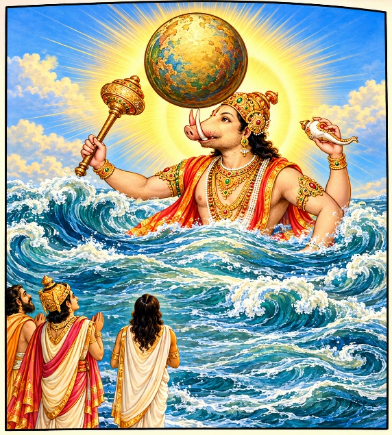
हे विष्णो! आपने एक दाढ़के अग्र भागकी कोटिके एक भागके आधे भागके बराबर अपनी दाढ़की कोटिसे ही पुत्रों तथा सेवकोंसमेत कामद आदि प्रधान दैत्योंको क्षणभरमें मार डाला॥१४॥
हे देव! हे धरेश! हे पर्वताकार! हे सेवितचन्द्रवक्त्र! आपने दिग्गजों, सभी प्राणियों, समुद्रों, देवताओं तथा असुरोंसहित पृथ्वीको उठा लिया और उसे अपनी दाढ़के अग्र भागपर रख लिया॥१५॥
हे देवेश! हे विभो! आपने ही असुरोंपर देवताओंकी विजय दिलायी है। अहो, आपने ही सरस्वतीयुक्त ब्रह्माको वर दिया था; आप प्रसन्न हो जाइये॥१६॥
सभी देवता आपके रोममें स्थित हैं, चन्द्रमा तथा सूर्य आपके दोनों नेत्रोंमें विराजमान हैं, रसातलमें गयी हुई पृथ्वी आपके दोनों चरणोंमें निहित है, सम्पूर्ण तारे आदि आपकी पीठपर स्थित हैं॥१७॥
हे भगवन्! आपने रसातलमें गयी हुई अबला पृथ्वीका उद्धार जगत्के हितके लिये किया है। हे भगवन्! हे जगद्गुरो! आपने ही सबको धारण किया है॥१८॥
इस प्रकार श्रीहरिके नाभिकमलसे उत्पन्न होनेवाले प्रजापति ब्रह्माने देवताओंके साथ अनेक प्रकारके स्तुतिवचनोंसे [वाराहरूपधारी] विष्णुको प्रणाम करके उन [भगवान्] विष्णुके मुखसे अनेक वर प्राप्त किये॥१९॥
इसके बाद सभी देवताओं तथा मुनीश्वरोंने उन विष्णुके द्वारा लायी गयी पृथ्वीको [अपने] सिरसे लगाकर चक्रधारी विष्णुके सामने ही उसे नमस्कार किया। [वे बोले—] हे वरप्रदे! सहज क्रिया-कलापोंवाले तथा सैकड़ों हाथोंवाले वाराहरूपधारी इन विष्णुने ही आपका उद्धार किया है। हे धरणि! हे महाभोगे! आप भूमि हैं। हे अव्यये! आप धेनु हैं। हे मृत्तिके! आप लोकोंको धारण करनेवाली हैं; [हमारे] पापको दूर कीजिये। हे वरदे! हे कमलनयने! हमलोगोंद्वारा मन-वचन-कर्मसे किये गये पाप आपके द्वारा नष्ट किये जानेपर ही हमलोग आपकी कृपासे जीते हैं॥२०-२३॥
देवताओंके द्वारा ऐसा कहे जानेपर उन पृथ्वीदेवीने कहा— ‘हे द्विजो! जो [व्यक्ति] वाराहके दंष्ट्रासे खोदी गयी पृथ्वीकी मिट्टीको [पूर्वोक्त] इस मन्त्रसे अपने सिरपर धारण करता है, वह पापसे मुक्त हो जाता है; वह क्रमसे पृथ्वीलोकमें दीर्घजीवी, बलवान्, धन्य और पुत्र-पौत्रसे युक्त होता है, पुनः प्रारब्ध कर्मके क्षीण होनेपर स्वर्ग प्राप्त करके देवताओंके साथ आनन्द मनाता है’॥२४-२५½॥
इसके बाद निष्पाप वाराहरूपको त्यागकर भगवान् वाराहके क्षीरसागर चले जानेपर उन बुद्धिमान् देवदेवके दाढ़ोंके भारसे आक्रान्त पृथ्वी एक बार पुनः हिल गयी। संयोगवश यह सब देखते हुए जगत्के स्वामी शिव वहाँ पहुँच गये और उन्होंने उस दंष्ट्राको देखकर उसे अपने भूषणके लिये ग्रहण कर लिया। महादेवने उसे अपने श्मश्रु (दाढ़ी) के केशके समीप विशाल वक्षः स्थलपर धारण कर लिया॥२६-२८½॥
तब इन्द्रसहित सभी देवगण देवदेव [शिव]-के ऐश्वर्यकी स्तुति करने लगे। इस प्रकार देवदेवने लीलापूर्वक पृथ्वीको प्रतिष्ठित किया। महाप्रलयकालमें भी विष्णु, ब्रह्मा तथा अन्य देवताओंके कलेवरको देखकर यदि सर्वव्यापक प्रभु [शिव] भक्तवात्सल्यके कारण [विष्णुके] अंगके अंश [उस दंष्ट्रा] से विभूषित न होते, तो विप्रोंकी मुक्ति कैसे होती; अतः महेश्वर दंष्ट्री हैं॥२९-३२॥
॥इस प्रकार श्रीलिङ्गमहापुराणके अन्तर्गत पूर्वभागमें ‘वाराहप्रादुर्भाव’ नामक चौरानबेवाँ अध्याय पूर्ण हुआ॥९४॥
पंचानबेवाँ अध्याय
नृसिंहावतारके सन्दर्भमें भक्त प्रह्लादकी कथा, हिरण्यकशिपुका वध, भगवान् नृसिंहके उग्ररूपको देखकर देवताओंका भयभीत होकर भगवान् महेश्वरकी स्तुति करना, महेश्वरके शरभावतारका प्राकट्य
ऋषिगण बोले — [हे सूतजी!] यह सुना गया है कि पूर्वकालमें हिरण्याक्षका ज्येष्ठ भ्राता हिरण्यकशिपु भगवान् नृसिंहद्वारा मारा गया था; आप [हमलोगोंको] बतायें कि उनके द्वारा उसका वध कैसे किया गया?॥१॥
सूतजी बोले — हिरण्यकशिपुका पुत्र ‘प्रह्लाद’ इस नामसे विख्यात था। वह धर्मज्ञ, सत्यनिष्ठ, तपस्वी तथा बुद्धिमान् था। वह जन्मसे ही अविनाशी, सर्वज्ञ, सभी देवताओंकी उत्पत्तिके कारणस्वरूप, आदिपुरुष, परब्रह्मरूप, ब्रह्माके अधिपति और सृष्टि-पालन-संहार करनेवाले उन देवेश्वर विष्णुकी भक्तिपूर्वक पूजा करता था॥२-४॥
अपने पुत्रको एकाग्रचित्त होकर विष्णुकी उस प्रकारकी भक्तिमें तत्पर और बार-बार ‘नमो नारायणाय, नमो गोविन्दाय’— इस प्रकार स्तुति करते हुए देखकर उस पापबुद्धि तथा देवशत्रु हिरण्यकशिपुने हँसते हुए कहा— हे दुर्बुद्धे! हे प्रह्लाद! हे वीर! हे दुष्पुत्र! सभी दैत्यों तथा देवताओंके स्वामी और ब्राह्मणों तथा देवताओंको दुःख देनेवाले मुझ [हिरण्यकशिपु]-को नहीं जानते हो। विष्णु, ब्रह्मा, इन्द्र, वरुण, वायु, चन्द्र, ईशान अथवा अग्नि—इनमें ऐसा कौन है, जो मेरे समान है; अतः तुम नारायणको पूर्णरूपसे छोड़कर सदा भक्तिपूर्वक मेरी ही पूजा करो। हे प्रह्लाद! यदि जीवित रहनेकी तुम्हारी इच्छा हो, तो [ध्यान देकर] इस बातको सुन लो॥५-८½॥
उस हिरण्यकशिपुका वचन सुनकर भी बुद्धिमान् प्रह्लाद [विष्णुकी] पूजा करता रहा और ‘नमो नारायणाय, नमो नारायणाय’ — ऐसा उच्चारण करता रहा। उसने सभी दैत्यकुमारोंको [नारदोपदिष्ट] वह उत्तम ब्रह्मविद्या भी सिखायी। तब इन्द्र आदिके द्वारा भी दुर्लङ्घ्य अपनी आज्ञाको स्वयं अपने पुत्रके द्वारा उल्लंघित देखकर हिरण्यकशिपुने दानवोंसे कहा— इस वधयोग्य कुपुत्रको अनेकविध उपायोंसे मार डालो॥९-१२॥
तब उस दुरात्मा दैत्यके कहनेपर वे दानव देवदेव [विष्णु]-के नाशरहित भक्त प्रह्लादको मारने लगे॥१३॥
हे श्रेष्ठ ब्राह्मणो! उस समय असुरोंके द्वारा दैत्यराज [हिरण्यकशिपु] के पुत्रके प्रति किया गया समस्त उपाय क्षीरसागरमें शयन करनेवाले विष्णुके तेजसे निष्फल (व्यर्थ) हो गया॥१४॥
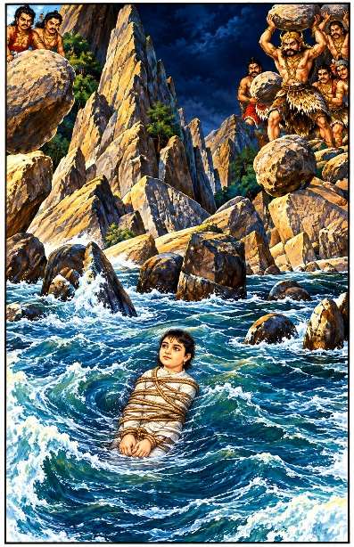
तत्पश्चात् अभिमानके मदमें चूर हिरण्यकशिपुका वध करनेके लिये विष्णुजी नृसिंहरूप धारण करके वहींपर प्रकट हुए और उन्होंने पुत्र [प्रह्लाद]-की ओर देखकर उसके पिता दानवाधम हिरण्यकशिपुका वध कर दिया। उन्होंने उसी क्षण अपने तीक्ष्ण सैकड़ों नाखूनोंसे उसे विदीर्ण कर दिया। इसके बाद पापोंका नाश करनेवाले वे विष्णु बान्धवोंसहित उस दैत्यका वध करके पुनः उस दैत्येन्द्रको पीसने लगे; वे उस समय प्रलयकालीन दूसरी अग्निके समान प्रतीत हो रहे थे। हे सुव्रतो! हे विप्रो! उस समय ब्रह्मलोकपर्यन्त सम्पूर्ण जगत् उन नृसिंहके गर्जनसे भयभीत हो गया और काँपने लगा॥१५-१८॥
उस समय नृसिंहको देखकर अपने प्राणकी रक्षामें तत्पर सभी देवता, दानव, नाग, सिद्ध, साध्य और ब्रह्मा-विष्णु आदि भी किसी तरह धैर्य तथा बल धारणकर उस स्थानको छोड़कर सभी दिशाओंमें भाग गये॥१९॥
तदनन्तर उनके चले जानेपर मायामय ये भगवान् नृसिंह हजाररूपवाले, सभी ओर पैरोंवाले, सभी ओर भुजाओंवाले, हजार नेत्रोंवाले, चन्द्र-सूर्य-अग्निरूप नेत्रोंवाले होकर सम्पूर्ण ब्रह्माण्डको व्याप्त करके स्थित हो गये॥२०॥
तब लोकालोक [मर्यादा] पर्वतपर एकत्र हुए श्रेष्ठ देवता ब्रह्मा, साध्यगण, यम तथा मरुद्गणोंके साथ उनकी स्तुति करने लगे — आप परसे भी परतर ब्रह्म हैं, तत्त्वसे भी तत्त्वतम हैं, नक्षत्रोंकी परम ज्योति हैं, परमात्मा हैं, जगन्मय हैं, स्थूल-सूक्ष्म तथा अत्यन्त सूक्ष्म हैं, शब्दब्रह्ममय हैं, परम पवित्र हैं, वाणीसे परे हैं, आश्रयरहित हैं, [सुख-दुःख, राग-द्वेष आदि] द्वन्द्वोंसे रहित हैं और उपद्रवशून्य हैं। आप प्रभु यज्ञभोक्ता हैं, आप यज्ञकी मूर्ति हैं, आप यज्ञकर्ताओंको फल प्रदान करनेवाले हैं, आपने मत्स्यरूप धारण किया, आप कूर्म (कच्छप) का रूप धारण करके जगत्में स्थित हैं। देवताओंकी रक्षाके लिये वाराह तथा नृसिंहका रूप धारणकर दैत्येन्द्रका वध करके आप इस लोकमें प्रतिष्ठित हुए। इसी प्रकार भृगुमुनिके शापके बहाने अपनी लीलासे आपने अवतार ग्रहण किया। आपसे पृथक् अन्य कुछ भी नहीं देखा गया है; आप चर-अचर सब कुछ हैं। हे विभो! आप ही विष्णु हैं, आप ही रुद्र हैं, आप ही ब्रह्मा हैं, आप ही आदि हैं, आप ही अन्त हैं और आप ही हम सब हैं। आप [स्वयं] सम्पूर्ण जगत् हैं; हे ईश्वर! अधिक कहनेसे क्या प्रयोजन? हे प्रभो! अद्वितीय (एक) होते हुए भी [अपनी] मायासे अनेक रूपोंमें स्थित आप [प्रभु]-की स्तुति हम लोग कैसे करें? हे देवदेव! हे नृसिंह! आप बहुत देदीप्यमान हो रहे हैं॥२१-२८½॥
हे द्विजो! विविध भावोंसे युक्त नानाविध स्तुतियोंसे प्रार्थना किये जानेपर भी वे प्रभु अपने सिंहरूपका सम्मान करते हुए शान्त नहीं हुए। जो नृसिंह-स्तुतिको भक्तिपूर्वक पढ़ता है अथवा इसके अर्थका चिन्तन करता है अथवा सभी द्विजोंको सुनाता है, वह विष्णुलोकमें प्रतिष्ठा प्राप्त करता है॥२९-३०½॥
तत्पश्चात् इन्द्र तथा ब्रह्मासहित सभी देवता प्रभु शिवका ध्यान करके नृसिंहरूपधारी विष्णुके विषयमें सब कुछ कहकर उनकी स्तुति करने लगे। तदनन्तर परमेश्वरकी स्तुति करके ब्रह्मा आदि [देवता] अपनी रक्षाके लिये मन्दर पर्वतपर स्थित, उमाके साथ विहार करते हुए और गन्धर्वों, सिद्धों-अप्सराओंसे सेवित परमकारण महादेवकी शरणमें गये। भयभीत ब्रह्माजी देवताओंके साथ दण्डकी भाँति पृथ्वीपर गिरकर गद्गद वाणीमें परमेश्वरकी स्तुति करने लगे॥३१-३४॥
ब्रह्माजी बोले— [हे शिव!] आप कालान्तकको नमस्कार है। हे रुद्र! आप क्रोधरूपको नमस्कार है। आप मोक्षरूप रुद्र, शंकर तथा शिवको नमस्कार है। आप उग्र हैं, सभी प्राणियोंके नियन्ता हैं और हम भक्तोंके लिये कल्याणकारक हैं। दुःखका नाश करनेवाले शिव, शर्व तथा शंकरको नमस्कार है॥३५-३६॥
आप सुखकर, विश्वरूप, विष्णु, ब्रह्माको नमस्कार है। आप अन्तक (संहारकर्ता) को नमस्कार है; उमापतिको नमस्कार है। सुवर्णमय बाहुवाले तथा साक्षात् हिरण्यपतिको बार-बार नमस्कार है; शर्व, सर्वरूप तथा पुरुषको बार-बार नमस्कार है। सत्-असद्रूपसे रहित और महत्तत्त्वके उत्पादक आपको नमस्कार है; आप नित्य, विश्वरूप तथा उत्पन्न होनेवालेको नमस्कार है। संसारमें अनेक रूपोंमें अवतार लेनेवाले और प्रभूतको नमस्कार है; आप रुद्र, नीलरुद्र, कद्रुद्र नामक मन्त्ररूप तथा प्रचेताको नमस्कार है॥३७-४०॥
आप काल तथा कालरूपको नमस्कार है; आप कालविनाशक, मीढुष्टम तथा भगवान् शितिकण्ठको नमस्कार है। आप महान्को तथा सदा देवशत्रुओंके संहार-कर्ताको नमस्कार है। तार (प्रणवरूप), सुतार तथा उद्धारकर्ताको नमस्कार है। हरितवर्णके केशवाले, परमात्मस्वरूप, देवताओंके कल्याणकारक तथा [समस्त] प्राणियोंके कल्याणकारक आप भगवान् शम्भुको नमस्कार है॥४१-४३॥
आप पार्वतीके कल्याणकारक, यज्ञरूप, रुद्ररूप तथा कपर्दीको नमस्कार है; आप कालकण्ठको नमस्कार है। सुवर्णमय वर्णवाले महेशको तथा श्रीकण्ठको नमस्कार है। भस्मसे लिप्त शरीरवाले तथा दण्डमुण्डीश्वरको नमस्कार है। ह्रस्व (लघु), दीर्घ तथा वामनको नमस्कार है। भयानक त्रिशूल धारण करनेवाले तथा उग्र स्वभाववालेको बार-बार नमस्कार है। आप भयंकर स्वरूपवाले तथा भयानक कर्ममें रत रहनेवाले भीमको नमस्कार है। सबसे आगे होकर [शत्रुओंका] वध करनेवाले और दूर स्थानसे भी वध करनेवाले [शिव] को नमस्कार है॥४४-४७॥
आप धनुर्धारी, शूलधारी, गदाधारी, हलधारी, चक्रधारी, कवचधारी तथा [गजाननरूपसे] सदा दैत्योंके कर्मका नाश करनेवाले [शिव] को नमस्कार है। आप सद्यमन्त्ररूप, सद्यरूप, सद्योजात अवतार स्वरूपको नमस्कार है। वाम-मन्त्ररूप, सुन्दररूपवाले तथा सुन्दर नेत्रवाले आप [शिव] को नमस्कार है। अघोरमन्त्ररूप, विकट रूपवाले तथा विकट शरीरवाले आप [शिव] को नमस्कार है। पुरुषरूपवाले तथा पुरुषोंमें एकमात्र तत्पुरुष (उत्तम पुरुष) आपको नमस्कार है। पुरुषार्थ प्रदान करनेवाले, सबके स्वामी, परमेष्ठी तथा ईशानमन्त्ररूप आप शिवको नमस्कार है। आप ईश्वरको बार-बार नमस्कार है। ब्रह्मरूपवाले तथा साक्षात् सगुण शिवरूपवाले आप ब्रह्मको नमस्कार है॥४८-५१½॥
विश्वकी सृष्टि करनेवाले तथा सर्वरूप प्रभु विष्णु नृसिंहका रूप धारण करके जगत्के कल्याणके लिये अनेक प्रमुख दैत्योंसहित हिरण्यकशिपुको अपने तीक्ष्ण नखोंसे स्वयं मारकर सिंहरूपका सम्मान करते हुए सम्पूर्ण जगत्को सन्त्रस्त कर रहे हैं; हे देवेश! अब इस विषयमें जो उचित कार्य हो, उसे आप करें॥५२-५४॥
आप उग्र हैं, सभी दुष्टोंको नियन्त्रणमें रखनेवाले हैं और हम लोगोंके लिये कल्याणकारक हैं। कालकूट आदि शरीरसे हम शरणागतोंकी रक्षा कीजिये। हे विश्वेश! आपका आचरण शुद्ध है और हम लोग आपके क्रीड़ामात्र हैं। आपके उन्मेष तथा निमेषसे हम लोगोंके प्रलय तथा उदय होते हैं। हे ब्रह्मन्! हे शिव! आपके उन्मीलन करनेपर भी आपका विनाश नहीं होता है। हे देव! अमित तेजवाले नृसिंहरूपधारी विष्णुके द्वारा हमलोग सन्तप्त हो रहे हैं; अतः सभी लोकोंके हितके लिये आप इस [नृसिंहरूप] को समाप्त करनेका विचार करें॥५५-५७½॥
सूतजी बोले— इस प्रकार प्रार्थना किये जानेपर प्रभु महादेवने उन देवताओंको अभयदान दिया और मुसकराते हुए उनसे कहा— ‘मैं उनका संहार करूँगा।’ इसके बाद शिवको प्रणाम करके इन्द्र सभी देवताओंके साथ जैसे आये थे, वैसे ही चले गये और भगवान् ब्रह्मा तथा अन्य श्रेष्ठ देवता भी चले गये॥५८-५९½॥
तदनन्तर [वहाँसे] उठकर शरभका रूप धारणकर महादेवजी असुरभक्षक गर्वयुक्त नृसिंहके पास पहुँचे। तब प्राणोंका हरण करके वे शरभरूपधारी शिव देवताओंद्वारा पूजित हुए। तत्पश्चात् नृसिंहरूपसे मानवरूप होकर वे विष्णु [वहाँसे] चले गये। इस प्रकार उस समय देवताओंसे स्तुत होकर शिवजी भी [अपने स्थानको] चले गये॥६०-६२॥
जो [व्यक्ति] शिवजीकी इस उत्तम स्तुतिको पढ़ता अथवा सुनता है, वह रुद्रलोक प्राप्त करके [भगवान्] रुद्रके साथ आनन्दित रहता है॥६३॥
॥इस प्रकार श्रीलिङ्गमहापुराणके अन्तर्गत पूर्वभागमें ‘नृसिंहलीलावर्णन’ नामक पंचानबेवाँ अध्याय पूर्ण हुआ॥९५॥
छानबेवाँ अध्याय
भगवान् महेश्वरद्वारा वीरभद्रका आवाहन और नृसिंहके तेजको शमन करनेके लिये भेजना, वीरभद्र तथा नृसिंहका संवाद, भगवान् शिवका शरभावतार धारणकर नृसिंहतेजको शान्त करना एवं नृसिंहद्वारा शिवस्तुति
ऋषिगण बोले— [हे सूतजी!] विश्वका संहार करनेवाले भगवान् महादेवने अत्यन्त भयंकर तथा विकृत शरभनामक रूप कैसे धारण किया और उन्होंने कौन-सा साहसपूर्ण कृत्य किया; यह सब पूर्णरूपसे बताइये॥१½॥
सूतजी बोले— इस प्रकार देवताओंके प्रार्थना करनेपर कृपानिधान शिवने नृसिंहसंज्ञक तेजको नष्ट करनेका निश्चय किया और इसके लिये रुद्रने महाप्रलय करनेवाले अपने भैरवरूप महाबली वीरभद्रका स्मरण किया॥२-३½॥
तब वे [वीरभद्र] गणोंके आगे होकर हँसते हुए शीघ्र ही वहाँ आये। वे करोड़ों श्रेष्ठ गणोंसे घिरे हुए थे, जो अट्टहास कर रहे थे, इधर-उधर उछल रहे थे, नृसिंहके रूपवाले थे तथा अत्यन्त उग्र थे। वे नृत्य करते हुए तथा महाधीर ब्रह्मा आदिके साथ गेंदकी भाँति खेलते हुए प्रसन्न वीरोंसे घिरे हुए थे। वे वीरवन्द्य [वीरभद्र] कभी न देखे गये अन्य वीरोंसे भी आवृत थे। वे [वीरभद्र] प्रलयाग्निकी ज्वालाके समान थे, वे तीन नेत्रोंसे विभूषित थे, वे शस्त्र धारण किये हुए थे, उनके जटाजूटमें देदीप्यमान बालचन्द्रमा शोभा दे रहा था, वे बालचन्द्रके समान आकारवाले अति शुभ्र तथा तीक्ष्ण दो दाँतोंसे सुशोभित थे, वे इन्द्रधनुषके समान भौंहोंसे युक्त थे, वे अपने महाप्रचण्ड हुंकारसे दिशाओंको बधिर बना दे रहे थे, वे नील मेघ तथा अंजनके समान आकारवाले भयंकर श्मश्रु (दाढ़ी) से युक्त थे, वे अद्भुत रूपवाले थे और अपनी अपराजित भुजाओंसे विवादका शमन करनेवाले त्रिशूलको बार-बार घुमा रहे थे। इस प्रकारकी वीरताकी शक्तिसे परिपूर्ण भगवान् वीरभद्रने स्वयं ही महेश्वरसे निवेदन किया— ‘हे प्रभो! मुझको स्मरण करनेका क्या कारण है? आज्ञा प्रदान कीजिये और मुझपर कृपा कीजिये’॥४-११½॥
श्रीभगवान् बोले — हे भैरव! असमयमें देवताओंके समक्ष भय उत्पन्न हो गया है; वह नृसिंहरूपी अग्नि प्रज्वलित हो रही है; इस अति भयंकर अग्निको शान्त करो। उसे सान्त्वना देते हुए पहले समझाओ, यदि उससे वह शान्त नहीं होती है, तब मेरे महाभयंकर भैरवरूपको दिखाओ। हे वीरभद्र! मेरी आज्ञासे सूक्ष्मरूपको सूक्ष्म तेजसे तथा स्थूलरूपको स्थूल तेजसे विनष्ट करके उसके मुख तथा उसकी त्वचाको [मेरे पास] ले आओ॥१२-१४½॥
इस प्रकार आज्ञा प्राप्त किये हुए गणेश्वर वीरभद्र शान्तस्वरूप धारण करके वेगपूर्वक वहाँ पहुँच गये, जहाँ नृसिंह विराजमान थे। तदनन्तर भगवान् वीरभद्रने नृसिंहरूपधारी उन विष्णुको समझाया और जैसे पिता औरस पुत्रसे कहता है, उसी प्रकार ईशान [वीरभद्र] उनसे यह वचन कहने लगे॥१५-१६½॥
श्रीवीरभद्र बोले — हे भगवन्! हे माधव! आप तो जगत्के सुखके लिये अवतीर्ण हुए हैं; श्रेष्ठ ब्रह्माने [संसारकी] स्थितिके कार्यमें आपको लगाया है। पूर्वकालमें अपनी पूँछमें [नावको] बाँधकर विशाल सागरमें भ्रमण करते हुए मत्स्यरूपधारी आप [विष्णु]-ने जीव-समुदायकी रक्षा की थी। आप भगवान् कूर्मके रूपसे जगत्को धारण करते हैं और वाराहरूपके द्वारा आपने पृथ्वीका उद्धार किया है। आपने इस सिंहरूपसे हिरण्यकशिपुका वध किया है। आपने वामनरूप धारणकर तीन पगोंद्वारा त्रिलोकीको मापकर बलिको बाँध लिया था॥१७-२०॥
आप ही सभी प्राणियोंको उत्पन्न करनेवाले, सबके स्वामी और अविनाशी हैं। जब-जब संसारपर कोई विपत्ति पड़ी है, तब-तब आपने अवतार लेकर उसे दुःखरहित किया है। हे हरे! हे शिवपरायण! आपसे बढ़कर अन्य कोई भी नहीं है। आपने [समस्त] धर्मों तथा वेदोंको उत्तम मार्गपर प्रतिष्ठित किया है। हे केशव! जिसके लिये आपने यह अवतार लिया है, वह [हिरण्यकशिपु भी] आपके द्वारा मारा जा चुका है।
अतः हे भगवन्! हे विश्वात्मन्! हे नरसिंह! आप मेरी उपस्थितिमें अपने इस अत्यन्त भयानक रूपको समेट लीजिये॥२१-२४॥
सूतजी बोले— वीरभद्रके द्वारा शान्त वाणीमें इस प्रकार कहे जानेपर नृसिंहरूपधारी विष्णुने पहलेसे भी अधिक तथा महाभयानक कोपको प्रज्वलित किया॥२५॥
श्रीनृसिंह बोले— [हे वीरभद्र!] तुम जहाँसे आये हो, वहाँ चले जाओ; हितकी बात मत बोलो। मैं इस समय इस चराचर जगत्का संहार कर डालूँगा। संहारकर्ताका संहार अपनेसे अथवा दूसरेसे भी नहीं हो सकता है। सभी जगह मेरा ही शासन है; अन्य कोई भी शासन करनेवाला नहीं है। मेरी कृपासे सम्पूर्ण जगत् मर्यादायुक्त होकर क्रियाशील है; मैं ही सभी शक्तियोंका प्रवर्तक तथा निवर्तक हूँ॥२६-२८॥
हे गणाध्यक्ष! जो-जो विभूतिसम्पन्न, सत्त्वमय, श्रीयुक्त तथा ऊर्जासे परिपूर्ण है, उसे मेरे ही तेजसे परिवर्धित जानो। देवताओंके परम अर्थको जाननेवाले मेरे महान् सामर्थ्यको जानते हैं। शक्तिसम्पन्न ब्रह्मा, इन्द्र आदि देवता मेरे ही अंश हैं। पूर्वकालमें चतुर्मुख ब्रह्मा मेरे नाभिकमलसे उत्पन्न हुए थे और उनके ललाटसे भगवान् वृषभध्वज (शिव) उत्पन्न हुए थे॥२९-३१॥
ब्रह्मा रजोगुणसे अधिष्ठित हैं। रुद्र तमोगुणसे युक्त कहे जाते हैं। मैं सबका नियन्ता हूँ; मुझसे श्रेष्ठ कोई देवता नहीं है। मैं सबसे बढ़कर हूँ, स्वतन्त्र हूँ, सबका स्रष्टा हूँ, संहार करनेवाला हूँ तथा सबका स्वामी हूँ। मेरे इस [नृसिंह नामक] परम तेजके विषयमें कौन सुनना चाहता है? अतः मेरी शरण प्राप्त करके तुम संतापरहित होकर [यहाँसे] जाओ; भूतोंके महेश्वर तुम मेरे इस परम भावको समझो॥३२-३४॥
मैं काल हूँ, मैं कालके भी विनाशका कारण हूँ। मैं लोकोंका संहार करनेमें प्रवृत्त हूँ। हे वीरभद्र! तुम मुझको मृत्युकी भी मृत्यु जानो; ये देवता भी मेरी कृपासे जी रहे हैं॥३५॥
सूतजी बोले—विष्णुका यह अहंकारपूर्ण वचन सुनकर असीम पराक्रमवाले वीरभद्र स्फुरित ओठोंवाले होकर तिरस्कारपूर्ण भावसे हँसकर नृसिंहसे कहने लगे॥३६॥
श्रीवीरभद्र बोले— क्या आप संहारकर्ता, पिनाकधारी विश्वेश्वर (शिव) को नहीं जानते हैं? मिथ्या वाद-विवाद आपके लिये केवल विनाशस्वरूप ही है। जिस किसी प्रकारसे आपके द्वारा लिये गये विभिन्न अवतारोंमें कौन शेष रह गये हैं; अब तो केवल आप ही बचे हुए हैं। आप इस दोषको देखिये, जो आप इस दशाको प्राप्त हुए हैं। संहारमें दक्ष उन [शिव]-के द्वारा आप क्षणभरमें विनाशको प्राप्त हो जायँगे॥३७-३९॥
आप प्रकृति हैं, रुद्र पुरुष हैं; आपमें [सम्पूर्ण] तेज समाहित है। पाँच मुखवाले पितामह (ब्रह्मा) आपके नाभिकमलसे प्रादुर्भूत हुए हैं। घोर तपस्यामें लीन उन्होंने पूर्वकालमें जगत्की सृष्टिके लिये अपने ललाटमें नीललोहित शंकरका चिन्तन किया। तब सृष्टिके लिये उनके ललाटसे शम्भु आविर्भूत हुए, अतः यह शिवका दूषण नहीं है। महाभैरवरूप देवदेव रुद्रका अंशस्वरूप मैं विनय तथा बलसे आपके संहारके लिये नियुक्त किया गया हूँ। इस प्रकार शक्तिकी कलासे युक्त आप इस राक्षसको विदीर्ण करके अहंकारके वशीभूत होकर निरालस्य हो गर्जन कर रहे हैं। दुष्टोंके लिये किया गया उपकार केवल अपकारके लिये होता है। हे सिंह! यदि आप महेश्वरको अपनेसे बादमें उत्पन्न समझते हैं, तो यह आपका भ्रम है। आप न तो सृष्टिकर्ता हैं, न संहारकर्ता हैं और न तो किसी प्रकार स्वतन्त्र ही हैं; आप कुम्हारके चक्रकी भाँति शिवके द्वारा प्रेरित हैं॥४०-४५½॥
कूर्मरूपधारी आपका कपाल आज भी शिवके गलेके हारके मध्य स्थित है; हे मुग्ध! इसे आप क्यों नहीं याद कर रहे हैं? उनके अंशसे उत्पन्न तारकासुरशत्रु स्कन्दके द्वारा आक्रोशपूर्वक आपके वाराहविग्रहसे दाँत उखाड़ लिये जानेसे आपको बहुत कष्ट हुआ था; क्या इसे भी आप भूल गये हैं? विष्वक्सेनरूपसे आप उन रुद्रके त्रिशूलके अग्रभागसे छलपूर्वक जला दिये गये थे॥४६-४८॥
मैंने दक्षके यज्ञमें यज्ञरूपधारी आपके सिरको काट दिया था। आपके पुत्र ब्रह्माका तमोमय कटा हुआ उनका अंशभूत पाँचवाँ सिर आज भी विद्यमान है; क्या आप उन रुद्रके उस बलको नहीं जानते हैं? ऋषि दधीचने सिर खुजलाते हुए आपको मरुद्गणोंसहित संग्राममें पराजित कर दिया था; इसे आप कैसे भूल गये? हे चक्रपाणे! आपका प्रिय चक्र उन्हींके पराक्रमके कारण है; आपने उसे कहाँसे प्राप्त किया, उसे किसने बनाया— यह सब भी आप भूल गये! मैंने आपके सभी लोकोंको छीन लिया था और उस समय आप निद्राके वशीभूत होकर क्षीरसागरमें शयन करते रहे; आप सात्त्विक (पालकमूर्ति) कैसे हो सकते हैं? आप [विष्णु]-से लेकर तृणपर्यन्त सब कुछ रुद्रशक्तिसे समन्वित है॥४९-५३॥
मोहको प्राप्त आप तथा अग्नि दोनों ही रुद्रकी शक्तिसे सामर्थ्ययुक्त हैं; उनके तेजके प्रभावको देखनेमें आप दोनों (विष्णु, अग्नि) समर्थ नहीं हैं। जो स्थूल दृष्टिवाले हैं, वे ही विष्णुके परम पदको देखते हैं। स्वर्ग-पृथ्वीके वामनरूपसे, इन्द्रके जयन्तरूपसे, अग्निके कार्तिकेय-रूपसे, धर्मराजके नारायणरूपसे, वरुणके भृगुरूपसे और चन्द्रमाके कलंकित उदरमें बुधरूपसे उत्पन्न होकर आप परमेश्वरके रूपमें प्रतिष्ठित हैं। आप काल, महाकाल एवं कालके भी काल महेश्वर हैं; अतः आप शिवके अंशसे कालके भी काल होंगे। वे स्थिर धनुषवाले शिव अनश्वर, सबसे अधिक पराक्रमी, वीर, सर्वश्रेष्ठ तथा सबके स्वामी हैं। वे रोगको नष्ट करनेवाले, भयानक तथा सुवर्णमय मृगाकार पक्षी (शरभरूप) हैं। सम्पूर्ण जगत्के शासक न तो आप हैं और न चतुर्मुख ब्रह्मा। इस प्रकार सब कुछ सोचकर अपने रूपको पूर्णरूपसे समेट लीजिये, अन्यथा महाभैरवरूपी रुद्रके क्रोधका शरभरूपी वज्र आपकी मृत्यु बनकर उसी तरह गिरेगा, जैसे पर्वतपर वज्र गिरता है॥५४-५९½॥
सूतजी बोले— वीरभद्रके इस प्रकार कहनेपर नृसिंह क्रोधविह्वल होकर गर्जन करने लगे और उसे पकड़नेका प्रयास करने लगे। इसी बीच विपक्षमें भय उत्पन्न करनेवाला, महाभयंकर, गगनव्यापी तथा दुर्धर्ष शिव-तेज उत्पन्न हुआ। उस क्षण वीरभद्रका जो रूप दिखायी पड़ा; वह न सुवर्णमय था, न चन्द्रमासे उत्पन्न था, न सूर्यसे उत्पन्न था, न अग्निसे उत्पन्न था, न विद्युत्के समान था और न चन्द्रके तुल्य था। वह शिवसे सम्बन्धित अनुपम रूप था। उस समय सभी तेज उस शिव-रूपमें विलीन हो गये; इससे वह महातेज अव्यक्तरूपमें स्थित हो गया और शरभ-नृसिंह— ये दो व्यक्तरूप प्रकट हुए॥६०-६४॥
उस समय भयंकर आकृतिवाला तथा रुद्रके विशिष्ट चिह्नोंसे युक्त रूप प्रकट हुआ। तदनन्तर वे परमेश्वर महाप्रलयकालिक रूपसे व्यक्त (प्रकट) हो गये। हे द्विजो! सभी देवताओंके देखते-देखते जयशब्द आदि मंगलोंसे युक्त होकर वे शिव हजार भुजाओंवाले, जटाधारी, सिरपर अर्धचन्द्र धारण किये हुए, पशुके आधा भाग शरीरसे, दो पंखोंसे तथा चोंचसे युक्त हो गये। उनके दाँत विशाल तथा अति तीक्ष्ण थे। वे वज्रतुल्य नखरूपी अस्त्रसे सुशोभित हो रहे थे। उनका कण्ठ कृष्णवर्णका था। वे चार भुजाओंवाले तथा चार पैरोंवाले और अग्निसे उत्पन्न प्रतीत हो रहे थे। वे युगके अन्तमें उत्पन्न मेघके समान भयंकर तथा गम्भीर ध्वनि कर रहे थे। उनके तीनों नेत्र क्रोधसे फैले हुए विशाल आगके गोले हो गये थे। उनके दाँत, अधर तथा ओष्ठ स्पष्ट दिखायी पड़ रहे थे। वे हर हुंकारसे युक्त थे॥६५-६९॥
उन्हें देखते ही विष्णुका बल तथा पराक्रम नष्ट हो गया। वे सूर्यके सम्मुख खद्योत (जुगुनू) के समान प्रकाश धारण किये हुए प्रतीत होने लगे। इसके बाद हररूप शरभने अपने पंखोंसे उन्हें जकड़कर नाभि तथा पैरको विदीर्ण करते हुए अपनी पूँछसे पैरोंको बाँधकर भुजाओंसे उनके भुजाओंको कसकर उनके वक्षपर प्रहार करते हुए उन हरिको अपनी भुजाओंमें जकड़ लिया। तदनन्तर वे भगवान् [शरभ] जैसे गरुड़ सर्पपर आक्रमण करता है, वैसे ही उड़-उड़कर उन्हें ऊपरकी ओर उछालकर बार-बार उन्हें गिराकर पंखोंके आघातसे मूर्छित तथा डरे हुए विष्णुको लेकर देवताओं तथा महर्षियोंके साथ आकाश-मण्डलमें चले गये॥७०-७३½॥
सभी देवता विष्णु तथा उन श्रेष्ठ [शरभरूप] विश्वेश ईश्वरके पीछे-पीछे चलने लगे और ‘नमः’ वाक्यसे उनकी स्तुति करने लगे। परवश होकर ले जाये जाते हुए विष्णु दीनमुख होकर हाथ जोड़कर ललित अक्षरोंद्वारा उन परमेश्वरकी स्तुति करने लगे॥७४-७५½॥
श्रीनृसिंह बोले— शर्व, महाग्रास (जगत् जिनका ग्रास है) तथा विष्णु (सर्वव्यापी) एवं रुद्रको नमस्कार है। उग्र तथा भीमको नमस्कार है। क्रोध तथा मन्युको नमस्कार है। आप भव, शर्व, शंकर तथा शिवको नमस्कार है। कालके भी काल, कालरूप, महाकाल, मृत्युरूप, वीर, वीरभद्र, पापके विनाशक, शूलधारी, महादेव, महान् तथा पशुपतिको नमस्कार है। एक, नीलकण्ठ, श्रीकण्ठ, पिनाकी तथा अनन्तको नमस्कार है। आप सूक्ष्मको नमस्कार है। आप मृत्युमन्यु (मृत्यु ही जिसका क्रोध है), पर, परमेश तथा परात्परतरको नमस्कार है। आप परात्पर, विश्व तथा विश्वमूर्तिको नमस्कार है। विष्णुकलत्र, विष्णुक्षेत्र तथा भानुको नमस्कार है। कैवर्त (संसाररूपी सागरसे तारनेवाले), किरात, महाव्याध, शाश्वत, भैरव, शरण्य (शरणदाता) तथा महाभैरवरूपको नमस्कार है। नृसिंहसंहर्ता, कामकालपुरारि (कामदेव-यम-त्रिपुर) के शत्रु, महापाशौघ-संहर्ता, विष्णुमायान्तकारी, त्र्यम्बक (तीन नेत्रोंवाले), त्र्यक्षर (भूत, भविष्य, वर्तमानमें नाशरहित), शिपिविष्ट, मीढुष, मृत्युंजय, शर्व, सर्वज्ञ, मखारि, मखेश, वरेण्य, अग्निरूप, महाघ्राण (महानासिकावाले), जिह्व (बड़ी जिह्वावाले) तथा प्राणापानप्रवर्ती (प्राण-अपान वायुको गति देनेवाले) को नमस्कार है। त्रिगुण-त्रिशूल, गुणातीत, योगी, संसार, प्रवाह, महायन्त्रप्रवर्तीको नमस्कार है। चन्द्र-अग्नि-सूर्य, मुक्ति-विचित्र्यहेतु, वरद, अवतार (अभिमानियोंका पतन करनेवाले), सर्वकारणहेतु, कपाली, कराल, पति, पुण्यकीर्ति, अमोघ, अग्निनेत्र, लकुलीश, शम्भु (कल्याण करनेवाले), भिषक्तम, मुण्ड, दण्डी, योगरूपी, मेघवाह, देव तथा पार्वतीपतिको नमस्कार है।
अव्यक्त, विशोक (शोकरहित), स्थिर, स्थिरधन्वी, स्थाणु (जगत्के आधाररूप), कृत्तिवास तथा पंचार्थहेतुको नमस्कार है। वर तथा एकपाद (एकमात्र ज्ञानियोंके द्वारा प्राप्य) को नमस्कार है; चन्द्रार्धमौलिको नमस्कार है। अध्वरराज तथा वयसाम्पति (शरभरूप) को नमस्कार है। आप योगीश्वर, नित्य, सत्य, परमेष्ठी तथा सर्वात्माको नमस्कार है। आप सर्वेश्वरको नमस्कार है। आपको एक, दो, तीन, चार, पाँच बार नमस्कार है। आपको दस बार तथा हजार बार नमस्कार है। आपको अपरिमित बार, अनन्त बार नमस्कार है। आपको बार-बार नमस्कार है; पुनः बार-बार नमस्कार है॥७६-९४॥
सूतजी बोले— [हे ऋषियो!] इस प्रकार नृसिंह [विष्णु]-ने एक सौ आठ अमृतमय नामोंसे शरभरूप ईश्वर (शिव) की स्तुति करके पुनः उनसे प्रार्थना की— ‘हे परमेश्वर! जब-जब अति अहंकारसे दूषित अज्ञान मुझमें उत्पन्न हो, तब-तब आप उसे दूर करें।’ इस प्रकार शंकरसे प्रार्थना करते हुए वे नृसिंह प्रसन्न हो गये; तब वीरभद्रने कहा— ‘हे विष्णो! आप वास्तवमें अशक्त हैं और जीवनके अन्तमें पराजित हुए हैं।’ इसके बाद वीरभद्रने क्षणभरमें ही [नृसिंहरूपधारी] विष्णुके विग्रहको बचे हुए मुखवाला करके शेष विग्रहसे त्वचा खींचकर उसे मात्र हड्डियोंसे युक्त कर दिया और इस प्रकार वह विग्रह अति श्वेत वर्णवाला हो गया॥९५-९८॥
देवता बोले— हे वीरभद्र! ब्रह्मा आदि हम सभी देवता आपकी दृष्टिसे उसी प्रकार जीवित हैं, जैसे वृक्ष मेघसे जीवन प्राप्त करते हैं॥९९॥
जिसके भयसे अग्नि जलती है, साक्षात् सूर्य उगता है, वायु बहती है और पाँचवीं मृत्यु दौड़ती है; वह आप ही हैं॥१००॥
हे भगवन्! ब्रह्मवादी लोग आपको ही अनिर्वाच्य, चिदाकाश, कलातीत, सदाशिव तथा भव कहते हैं॥१०१॥
आप जगदाधारके विषयमें जाननेमें हम असमर्थ हैं। आप हमारे परमेश्वर हैं। आपके रूपलावण्यवर्णनका अन्त नहीं है—ऐसा जानिये॥१०२॥
हे गणाधिप! सभी विपत्तियोंमें हमलोगोंकी रक्षा कीजिये। हे एकादशरुद्ररूप! आप भगवान् हर विशिष्ट विग्रहवाले हैं॥१०३॥
हे शिव! आपके इस प्रकारके अनेक अवतारोंको देखकर हमारा अज्ञान हममें कदाचित् सन्देह न उत्पन्न करे तथा आपका ध्यान नष्ट न हो। जैसे गुंजाके महान् पर्वतके प्रान्तभागसे गुंजाओंकी अमित संख्या होती है, वैसे ही आपके अनन्त रूप हैं, जिन्हें आप चारों ओरसे उपसंहृत कर लीजिये। यह संसार आपके प्रवेशयोग्य हो, इसका संहार मत कीजिये। वेदवेत्ता ब्राह्मण कहते हैं कि आप रुद्रके पर-अपर दो शरीर हैं— एक घोर तथा दूसरा शिव (शान्त); उनमें प्रत्येकके अनेक प्रकार हैं। हे भगवन्! कभी भी हत न होनेवाले महान् बलसे युक्त आप यहाँपर हम लोगोंकी रक्षा कीजिये। आपने अपने ही तेजसे सम्पूर्ण जगत्को व्याप्त कर रखा है॥१०४-१०७॥
हे महेश्वर! ब्रह्मा-विष्णु-इन्द्र-चन्द्र आदि हम प्रमुख देवतागण तथा अन्य देवता और असुर—सभी लोग आपसे उत्पन्न हुए हैं॥१०८॥
ब्रह्मा, इन्द्र, विष्णु, यम आदि देवता, असुर तथा भ्रान्त अन्तःकरणवाले नृसिंह हरिका निग्रह करके अपने शरीरको आठ प्रकारसे [सूर्य आदि रूपमें] विभाजित करके आप सभीका धारण-पोषण करते हैं; अतः हे भगवन्! अभीष्ट दानोंके द्वारा हम देवताओंकी रक्षा कीजिये॥१०९-११०॥
तत्पश्चात् देव [वीरभद्र]-ने उन देवताओं तथा प्राचीन ऋषियोंसे कहा—जैसे जलमें जल, दूधमें दूध तथा घृतमें घृत डाले जानेपर एक हो जाता है; वैसे ही विष्णु शिवमें लीन हैं; इसमें सन्देह नहीं है। ये गर्वयुक्त तथा महाबली नृसिंह जगत्का संहार करनेवाले रूपसे प्रकट हुए हैं। मेरी भक्तिकी सिद्धिकी इच्छा रखनेवालोंको नृसिंहकी पूजा करनी चाहिये; उन [नृसिंहरूपधारी विष्णुको नमस्कार है]॥१११-११३॥
इतना कहकर महाबली भगवान् वीरभद्र सभी देवताओंके देखते-देखते वहींपर अन्तर्धान हो गये। उसी समयसे शंकरजी नृसिंहके चर्मको वस्त्रके रूपमें धारण करने लगे और [नृसिंहका] मुण्ड उनकी मुण्डमालामें मणिके रूपमें शोभा पाने लगा॥११४-११५॥
तदनन्तर विस्मयसे प्रसन्न नेत्रवाले सभी देवतागण भयरहित होकर इस कथाको कहते हुए जैसे आये थे, वैसे ही वापस चले गये॥११६॥
जो [मनुष्य] इस पुण्यप्रद तथा वेदमय श्रेष्ठ आख्यानको पढ़ता अथवा सुनता है, उसके सभी दुःखोंका नाश हो जाता है। यह [आख्यान] धन्य बनानेवाला, यश देनेवाला, आयु प्रदान करनेवाला, रोगरहित करनेवाला, पुष्टिकी वृद्धि करनेवाला, सभी विघ्नोंको शान्त करनेवाला, सभी व्याधियोंको नष्ट करनेवाला, अकाल मृत्युका शमन करनेवाला, परमशान्ति प्रदान करनेवाला, मंगलकारक, शत्रु-समूहका दमन करनेवाला, सभी मानसिक रोगोंका विनाश करनेवाला, बुरे स्वप्नोंका निवारण करनेवाला, सभी भूत-प्रेतको दूर करनेवाला, दुष्ट ग्रहोंका क्षय करनेवाला, पुत्र-पौत्रकी वृद्धि करनेवाला, योग-सिद्धि प्रदान करनेवाला, भली-भाँति शिवज्ञानको प्रकाशित करनेवाला, शेषलोकका सोपानस्वरूप, वांछित फलोंको सिद्ध करनेवाला, विष्णुमायाको दूर करनेवाला, देवताओंके परमार्थको देनेवाला, वांछाकी सिद्धि प्रदान करनेवाला और ऋद्धि, प्रज्ञा आदि देनेवाला है॥११७-१२२॥
पिनाकधारी [शिव-के] इस शरभकी आकृतिवाले श्रेष्ठ रूपको स्थिर प्रज्ञावाले उत्सुक भक्तोंमें प्रकाशित करना चाहिये और उन्हीं शिवसमर्पित मनवाले भक्तोंके द्वारा शिवके सभी उत्सवोंमें और अष्टमी तथा चतुर्दशीके दिन इसका पाठ तथा श्रवण किया जाना चाहिये। शिव-प्रतिष्ठाके अवसरोंपर शिवकी सन्निधि प्राप्त करनेवाले इस स्तोत्रको पढ़ना चाहिये। अतः चोर-बाघ-सर्प-सिंह आदिसे भय होनेपर, राजासे भय उत्पन्न होनेपर, इस लोकमें अन्य उत्पात-भूकम्प-दावाग्नि, धूलवृष्टि (आँधी)होनेपर, उल्कापात होनेपर, तेज हवा चलनेपर, अनावृष्टि तथा अतिवृष्टि होनेपर दृढ़ व्रतवाले विद्वान् शिवभक्तको इस [शरभचरित] को पढ़ना चाहिये। जो इस सर्वोत्तम स्तोत्रको पढ़ता अथवा सुनता है, वह रुद्रत्व प्राप्त करके रुद्रका अनुचर हो जाता है॥१२३-१२८॥
॥इस प्रकार श्रीलिङ्गमहापुराणके अन्तर्गत पूर्वभागमें ‘शरभप्रादुर्भाव’ नामक छानबेवाँ अध्याय पूर्ण हुआ॥९६॥
सत्तानबेवाँ अध्याय
जलन्धर-वधकी कथा
ऋषिगण बोले— हे रोमहर्षण! हे सुव्रत! सिरपर जटाधारण करनेवाले तथा भगके नेत्रोंका हरण करनेवाले भगवान् शिवने इन्द्रके समान पराक्रमी जलन्धरका वध कैसे किया; हम लोगोंको यह बतानेकी कृपा कीजिये॥१½॥
सूतजी बोले — [हे ऋषियो!] जलमण्डलसे उत्पन्न जलन्धर नामसे प्रसिद्ध यमराजतुल्य एक असुर था; वह अपनी तपस्यासे बड़ा पराक्रमी हो गया था। उसने युद्धमें गन्धर्व, यक्ष, उरग तथा राक्षसोंसहित सभी देवताओंको और अजन्मा भगवान् ब्रह्माको भी जीत लिया था॥२-३½॥
देवसमुदाय तथा ब्रह्माको जीत करके वह जलन्धर विश्वविनाशक देवदेवेश्वर गुरु विष्णुके यहाँ पहुँचा। उन दोनोंमें दिन-रात निरन्तर युद्ध होता रहा और उसने मधुसूदन (विष्णु) को भी पराजित कर दिया॥४-५½॥
उन देवदेव जनार्दनको भी जीतकर न्यायबुद्धिवाले जलन्धरने ईश्वर (शिव) को जीतनेके लिये दितिके पुत्रोंसे कहा— ‘मैंने युद्धमें सबको जीत लिया है, केवल शंकर ही अजित रह गये हैं। हे श्रेष्ठ दानवो! गणेश्वरों तथा नन्दीसहित उन सर्व ईशानको क्षणभरमें जीतकर मैं तुम लोगोंको शिव, ब्रह्मा, विष्णु तथा इन्द्रका पद प्रदान कर दूँगा’॥६-८½॥
तब जलन्धरका वचन सुनकर वे सभी अधम, पापी तथा मृत्युके दर्शनमें तत्पर दानव उच्च स्वरमें गरजने लगे। इसके बाद वह बलशाली जलन्धर रथ, हाथी तथा घोड़ोंपर सवार शस्त्रयुक्त इन दैत्यों तथा अन्य [सैनिकों] के साथ सावधान होकर शिवजीकी ओर चल पड़ा॥९-१०½॥
तब मेरुके शिखरके समान स्थित उस दैत्यराजको देखकर तथा उसके अवध्यत्वको दूसरोंसे सुनकर भगके नेत्रका हरण करनेवाले तथा लोकोंकी रक्षा करनेवाले प्रभु शिवने, जो पार्वती, नन्दी तथा गणोंसहित वहाँ थे, ब्रह्माके वचनकी रक्षा करते हुए हँसते हुए [उस दैत्यसे] कहा— ‘हे असुरेश्वर! अब इस युद्धसे कौन-सा कार्य सिद्ध होगा? मेरे बाणोंके द्वारा छिन्न-भिन्न अंगोंवाला होकर प्रसन्नतापूर्वक मरनेके लिये तैयार हो जाओ’॥११-१३½॥
कानोंको विदीर्ण करनेवाले उस वचनको सुनकर असुरसेनाके स्वामी जलन्धरने भी सुरेश्वर [शिव]-से यह [वचन] कहा— हे महाबाहो, हे देवदेव! हे वृषभध्वज! ऐसी बात मत बोलिये; हे हर! मैं चन्द्रकिरणोंके समान [चमकते हुए] शस्त्रोंसे युद्ध करनेके लिये यहाँ आया हूँ॥१४-१५½॥
उसके वचनको सुनकर शिवजीने शीघ्र ही लीलापूर्वक [अपने] पैरके अँगूठेसे महासागरमें भयानक चक्ररूपी आयुध निर्मित कर दिया॥१६॥
तब समुद्रजलमें इस शुभ्र चक्रको स्थित करके और यह सोचकर कि ‘इसके द्वारा तीनों लोक तथा देवतागण मार दिये जायेंगे’ दक्ष, अन्धक, अन्तक और त्रिपुरके यज्ञको नष्ट करनेवाले तथा तीनों लोकोंका संहार करनेवाले भगवान् [शिव] हँसते हुए कहने लगे— हे दैत्य! हे जलन्धर! महासागरमें [मेरे] पादांगुष्ठसे निर्मित किये गये अस्त्रको उठानेमें यदि तुम समर्थ हो, तब तो युद्ध करनेके लिये ठहरो; अन्यथा नहीं॥१७-१८॥
उनके उस वचनको सुनकर क्रोधसे प्रदीप्त नेत्रोंवाला वह [जलन्धर] तीनों लोकोंको [अपने] नेत्रोंसे दग्ध-सा करता हुआ शिवजीकी ओर देखकर कहने लगा॥१९॥
जलन्धर बोला— हे शंकर! जिस प्रकार गरुड़ [विषहीन] डुण्डुभ सर्पोंको मार डालता है, वैसे ही पुनः देवताओंसहित सभी लोकोंका संहार करके मैं अपनी गदा उठाकर नन्दीको तथा तुमको मारकर इन्द्रसहित सम्पूर्ण चराचर जगत्का संहार करनेमें समर्थ हूँ। हे महेश्वर! तीनों लोकोंमें ऐसा कौन है, जो मेरे बाणोंद्वारा छेदनके योग्य न हो! मैंने बचपनमें तपस्यासे भगवान् विष्णुको जीत लिया था और युवावस्थामें बलशाली ब्रह्माको तथा बड़े-बड़े देवताओंसहित मुनियोंको जीत लिया था॥२०-२२॥
मैंने चराचरसहित त्रिलोकीको क्षणभरमें दग्ध कर दिया था। हे रुद्र! क्या तुमने तपस्यासे भगवान् विष्णुको पराजित किया है? जैसे सर्प गरुड़की गन्धको सहन नहीं कर सकते, उसी प्रकार इन्द्र, अग्नि, यम, कुबेर, वायु, वरुण आदि भी मेरी गन्धको सहन नहीं कर सकते हैं। हे शंकर! स्वर्गमें तथा पृथ्वीपर अपना प्रतिद्वन्द्वी न पाकर सभी पर्वतोंपर जाकर मैंने अपनी भुजाओंको घर्षित किया था। हे गणेश्वर! खुजलाहट मिटानेके लिये मैंने अपने बाहुदण्डसे गिरिराज मन्दर, श्रीसम्पन्न नीलपर्वत और अति सुन्दर मेरु पर्वतको घर्षित किया था और वे गिर पड़े थे॥२३-२६॥
हिमालय पर्वतपर लीलावश मेरी भुजाओंके द्वारा गंगा रोक ली गयी थी और मेरी स्त्रियोंके सेवकोंद्वारा देवताओंका वज्र बाँध लिया गया था। मैंने हाथसे पकड़कर बड़वाग्निके मुखको भंग कर दिया था; उसी क्षण यह सब एकार्णव हो गया था। मैंने ऐरावत आदि हाथियोंको समुद्रजलके ऊपर फेंक दिया था और भगवान् इन्द्रको रथसहित सौ योजन दूर फेंक दिया था। मैंने विष्णुसहित गरुड़को भी नागपाशसे बाँध लिया था। मैंने उर्वशी आदि नारियोंको कारागृहके अन्दर डाल दिया था और इन्द्रने मुझको प्रणाम करके किसी प्रकार केवल शचीको वापस प्राप्त किया था। हे उमापते! [क्या] आप मुझ दैत्यराज जलन्धरको नहीं जानते हैं?॥२७-३१॥
सूतजी बोले— [हे ऋषियो!] तब उसके इस प्रकार कहनेपर महादेवने अपने नेत्रकी अग्निके एक भागकी कलाके आधेके भी आधे भागसे उसके समूचे रथको जला दिया॥३२॥
त्रिपुरशत्रु शिवके देखनेमात्रसे दैत्योंकी विशाल सेनाओं, घोड़ों तथा हाथियोंके साथ सभी दैत्येन्द्र दग्ध हो गये। गजोंसे चारों ओरसे घिरा हुआ वह अल्पबुद्धि जलन्धर हाथीसे उतरकर विनाशके लिये उद्यत देवेश [शिव]-से बोला— मुझे युद्ध करनेसे क्या प्रयोजन; क्योंकि मैं देवदैत्य-सहित इस समस्त जगत्को क्षणभरमें नष्ट करनेमें समर्थ हूँ। अतः हे ईश! मुझे कोई भय नहीं है, किंतु आपसे युद्ध करनेकी मेरी तीव्र इच्छा है; इसमें सन्देह नहीं है। अतएव हे मदनारि! हे दक्षशत्रु! हे यज्ञशत्रु! हे त्रिपुरशत्रु! यदि भूतगणों, नन्दी, देवसमुदायसहित मेरे वीरोंके साथ युद्ध करनेका तुम्हारा सामर्थ्य है, तो यहाँ ठहरो॥३३-३५॥
महादेवसे ऐसा कहकर महादेवके शत्रुओंको आनन्दित करनेवाला वह [जलन्धर] न तो हिला-डुला और न तो उसने युद्धमें मारे गये बान्धवोंका स्मरण किया। अभिमानके कारण उद्दण्ड स्वभाववाला जलन्धर भुजाओंसे शब्द करके [शिवको] मारनेके लिये उद्यत हुआ और उसने [रुद्रनिर्मित] जो सुदर्शन नामक चक्र था, उसे अपने भुजाबलसे बड़े प्रयासके द्वारा अपने कन्धेपर रखा; हे श्रेष्ठ ब्राह्मणो! उसी समय उस दुर्धर (भयानक) चक्रसे उस जलन्धरके दो टुकड़े उसी प्रकार हो गये, जैसे वज्रके द्वारा काटा गया कोई महापर्वत दो भागोंमें हो जाता है। हे द्विजो! वह बलवान् दैत्य दूसरे अंजन पर्वतकी भाँति गिर पड़ा॥३६-३९॥
उसके भयानक रक्तसे उसी क्षण वह स्थान भर गया; अहो, रुद्रकी आज्ञासे उसका सारा रक्त तथा मांस महारौरव नरकमें पहुँचकर रक्तकुण्ड बन गया। उस समय जलन्धरको मरा हुआ देखकर देवता, गन्धर्व तथा पार्षद महान् सिंहनाद करके ‘हे देव! बहुत अच्छा हुआ’ — ऐसा कहने लगे। जो [व्यक्ति] जलन्धर-वधकी इस कथाको विधिपूर्वक पढ़ता है अथवा सुनता है अथवा सुनाता है, वह गणपतिपद प्राप्त करता है॥४०-४३॥
॥इस प्रकार श्रीलिङ्गमहापुराणके अन्तर्गत पूर्वभागमें ‘जलन्धर-वध’ नामक सत्तानबेवाँ अध्याय पूर्ण हुआ॥९७॥
अट्ठानबेवाँ अध्याय
भगवान् विष्णुद्वारा एक सहस्त्र नामोंसे भगवान् शिवकी स्तुति करना तथा प्रसन्न होकर महेश्वरद्वारा उन्हें सुदर्शनचक्र प्रदान करना
ऋषिगण बोले— हे सूतजी! भगवान् विष्णुने देवदेव महेश्वरसे सुदर्शन नामक चक्र कैसे प्राप्त किया; इसे आप बतानेकी कृपा करें॥१॥
सूतजी बोले— [हे ऋषियो!] देवताओं तथा महान् असुरोंके बीच सभी प्राणियोंके लिये विनाशकारी अति भयंकर तथा महान् युद्ध हुआ। शक्ति, मुसलों, झुके पर्वोंवाले बाणों तथा भालोंसे प्रहार किये जानेपर वे देवतागण भयसे व्याकुल होकर भाग गये॥२-३॥
तदनन्तर पराजित होकर शोकसंतप्त मनवाले देवताओंने देवदेवेश्वर सुरेशान विष्णुके पास जाकर उन्हें प्रणाम किया॥४॥
प्रणाम करके स्थित हुए उन देवताओंकी ओर देखकर देवदेवेश्वर भगवान् विष्णुने यह वचन कहा— हे वत्स देवतागण! हे सुव्रतो! अलंकार तथा पराक्रमसे विहीन आप लोग दुःखी होकर यहाँपर किसलिये आये हैं; इसे बताइये॥५-६॥
उनके उस वचनको सुनकर वैसी दशाको प्राप्त श्रेष्ठ देवतागण प्रणाम करके जैसा घटित हुआ था, वह सब उन देवदेव विष्णुसे कहने लगे॥७॥
हे भगवन्! हे देवदेवेश! हे विष्णो! हे जिष्णो! हे जनार्दन! दानवोंसे पीड़ित होकर हम सभी आपकी शरणमें आये हैं। हे देवदेवेश! हे पुरुषोत्तम! आप ही हमलोगोंकी गति हैं, आप ही परमात्मा हैं और आप ही सभी लोकोंके पिता भी हैं। हे जनार्दन! आप ही भर्ता (भरण करनेवाले), हर्ता (संहार करनेवाले), भोक्ता तथा दाता हैं; अतः हे दैत्यमर्दन! आप दानवोंका वध करनेकी कृपा कीजिये॥८-१०॥
हे कमलनयन! वे सभी दैत्य वर प्राप्त कर लेनेके कारण विष्णु, ब्रह्मा, रुद्र, यम, कुबेर, चन्द्र, निर्ऋति, वरुण, वायु, अग्नि, ईशान, पर्जन्य तथा सूर्यके अत्यन्त दृढ़-दारुण-भयानक-कंपा देनेवाले तथा शक्तिरहित कर देनेवाले अस्त्रोंसे भी अवध्य हो गये हैं। हे जगद्गुरो! च्यवनपुत्र दधीचने सूर्यमण्डलसे उत्पन्न आपके उठे हुए चक्रको कुण्ठित कर दिया था। आपकी कृपासे दैत्योंने आपके दण्ड, धनुष तथा अस्त्रको प्राप्त कर लिया है। पूर्वकालमें त्रिपुरशत्रु [शिव]-के द्वारा जलन्धरका संहार करनेके लिये एक भयानक तथा तेज धारवाले चक्रका निर्माण किया गया था; उसीसे आप उन [दानवों] का वध कर सकते हैं। उसी अस्त्रसे ये दानव मारे जा सकते हैं, अन्य सैकड़ों अस्त्रोंसे नहीं॥११-१५½॥
तदनन्तर उनका वचन सुनकर कमलके समान नेत्रवाले चक्रधारी वे विष्णु वाचस्पति आदि प्रधान देवताओंसे स्वयं कहने लगे॥१६½॥
श्रीविष्णु बोले— हे देवताओ! मैं इस समय सभी सनातन देवताओंके साथ महादेवके पास पहुँचकर [आप] देवताओंका सम्पूर्ण कार्य करूँगा। हे देवताओं! जलन्धरका वध करनेके लिये शिवजीके द्वारा बनाये गये चक्रको प्राप्त करके उसीके द्वारा सभी महान् असुरों, धुन्धु आदि दैत्यों तथा अरसठ सौ अन्य असुरोंको बान्धवोंसहित क्षणभरमें मारकर मैं आप देवताओंका उद्धार करूँगा॥१७-१९½॥
सूतजी बोले— [हे ऋषियो!] श्रेष्ठ देवताओंसे यह कहकर देवताओंमें श्रेष्ठ विष्णुने सुरश्रेष्ठ शिवका स्मरण करते हुए उन श्रेष्ठ शंकरकी पूजा की। विश्वकर्माद्वारा निर्मित मेरुपर्वत-सदृश लिङ्गको हिमवान्के उत्तम शिखरपर विधिपूर्वक स्थापित करके त्वरितरुद्र तथा रुद्रसूक्तके द्वारा अभिषेक करके गन्ध आदिके द्वारा पूजा करके जनार्दनने ज्योतिरूप मनोरम शिवकी स्तुति की। पुनः अग्निमें देव रुद्रकी पूजा करके और उन्हें प्रणाम करके आदिमें भव नामवाले सहस्त्रनामके द्वारा क्रमसे आदिमें प्रणव तथा अन्तमें नमः लगाकर शिवकी पूजा की। प्रारम्भमें भव नामवाले सहस्त्रनामके द्वारा प्रत्येक नामका उच्चारण करते हुए उन्होंने कमलपुष्पसे महेश्वर भगवान् शंकरकी पूजा की। तदनन्तर उन्होंने अन्तमें स्वाहावाले भव आदि नामोंसे समिधा आदिके द्वारा विधिपूर्वक अग्निमें प्रत्येक नामकी दस हजार आहुति देकर पुनः भव आदि नामोंसे [उन] प्रभु भव ईश्वर शम्भुकी इस प्रकार स्तुति की॥२०-२६½॥
श्रीविष्णु बोले— भव-शिव, हर-रुद्र, पुरुष, पद्मलोचन, अर्थितव्य, सदाचार, सर्वशम्भुमहेश्वर, ईश्वर, स्थाणु, ईशान, सहस्राक्ष-सहस्त्रपात्॥२७-२८॥
वरीयान्, वरद-वन्द्य, शङ्कर, परमेश्वर, गंगाधर, शूलधर, परार्थेकप्रयोजन॥२९॥
सर्वज्ञ, सर्वदेवादिगिरिधन्वा, जटाधर, चन्द्रापीड, चन्द्रमौलि, विद्वान्, विश्वामरेश्वर॥३०॥
वेदान्तसारसन्दोह, कपालीनीललोहित, ध्यानाधार, अपरिच्छेद्य, गौरीभर्ता, गणेश्वर॥३१॥
अष्टमूर्ति-विश्वमूर्ति, त्रिवर्ग, स्वर्गसाधन, ज्ञानगम्य, दृढ़प्रज्ञ, देवदेव, त्रिलोचन॥३२॥
वामदेव, महादेव, पाण्डु, परिदृढ, अदृढ, विश्वरूप, विरूपाक्ष, वागीश, शुचि, अन्तर॥३३॥
सर्वप्रणयसंवादी, वृषांक, वृषवाहन, ईश-पिनाकी, खट्वाङ्गी, चित्रवेष, चिरन्तन॥३४॥
तमोहर, महायोगी-गोप्ता, ब्रह्मांगहृज्जटी, कालकाल, कृत्तिवासा, सुभग, प्रणवात्मक॥३५॥
उन्मत्तवेष, चक्षुष्य, दुर्वासा, स्मरशासन, दृढ़ायुध-स्कन्दगुरु, परमेष्ठीपरायण॥३६॥
अनादिमध्यनिधन, गिरिश-गिरिबान्धव, कुबेरबन्धु-श्रीकण्ठ, लोकवर्णोत्तमोत्तम॥३७॥
सामान्यदेव, कोदण्डी, नीलकण्ठ, परश्वधी, विशालाक्ष, मृगव्याध, सुरेश, सूर्यतापन॥३८॥
धर्मकर्माक्षम, क्षेत्र-भगवान्, भगनेत्रभिद्-उग्र, पशुपति, तार्क्ष्यप्रियभक्त, प्रियंवद॥३९॥
दान्तोदयाकर, दक्ष, कपर्दी, कामशासन, श्मशाननिलय-सूक्ष्म, श्मशानस्थ महेश्वर॥४०॥
लोककर्ता, भूतपति, महाकर्ता, महौषधी, उत्तर, गोपति, गोप्ता, ज्ञानगम्य, पुरातन॥४१॥
नीति, सुनीति, शुद्धात्मा, सोमसोमरत, सुखी, सोमप, अमृतप, सोममहानीति, महामति॥४२॥
अजातशत्रु, आलोक, सम्भाव्य, हव्यवाहन, लोककार, वेदकार, सूत्रकार, सनातन॥४३॥
महर्षि कपिलाचार्य, विश्वदीप्ति, त्रिलोचन, पिनाकपाणिभूदेव, स्वस्तिद, सदास्वस्तिकृत्॥४४॥
त्रिधामा, सौभग, शर्व-सर्वज्ञ, सर्वगोचर, ब्रह्मधृग्विश्वसृक्स्वर्ग, कर्णिकार, प्रिय, कवि॥४५॥
शाख-विशाख, गोशाख, शिव, नैक, क्रतु, सम, गंगाप्लवोदक, भाव, सकल, स्थपतिस्थिर॥४६॥
विजितात्मा, विधेयात्मा, भूतवाहनसारथि, सगण, गणकार्य, सुकीर्ति, छिन्नसंशय॥४७॥
कामदेव, कामपाल, भस्मोद्धूलितविग्रह, भस्मप्रिय, भस्मशायी, कामी-कान्त, कृतागम॥४८॥
समायुक्त, निवृत्तात्मा, धर्मयुक्त, सदाशिव, चतुर्मुखचतुर्बाहु, दुरावास, दुरासद॥४९॥
दुर्गमदुर्लभ, दुर्ग, सर्वायुधविशारद, अध्यात्मयोगनिलय, सुतन्तु, तन्तुवर्धन॥५०॥
शुभाङ्ग, लोकसारंग, जगदीश, अमृताशन, भस्मशुद्धिकर, मेरु, ओजस्वी, शुद्धविग्रह॥५१॥
हिरण्यरेता, तरणि-मरीचि, महिमालय, महाह्रद, महागर्भ, सिद्धवृन्दारवन्दित॥५२॥
व्याघ्रचर्मधर, व्याली, महाभूत, महानिधि, अमृतांग, अमृतवपु, पंचयज्ञ, प्रभंजन॥५३॥
पंचविंशतितत्त्वज्ञ, पारिजात, परावर, सुलभ, सुव्रतशूर, वाङ्मयैकनिधि, निधि॥५४॥
वर्णाश्रमगुरु, वर्णी, शत्रुजिच्छत्रुतापन, आश्रम, क्षपण, क्षाम, ज्ञानवान्, अचलाचल॥५५॥
प्रमाणभूत, दुर्जेय, सुपर्ण, वायुवाहन, धनुर्धरधनुर्वेद, गुणराशि, गुणाकर॥५६॥
अनन्तदृष्टि, आनन्द, दण्डदमयिता, दम, अभिवाद्य, महाचार्य, विश्वकर्मा, विशारद॥५७॥
वीतराग, विनीतात्मा, तपस्वी, भूतभावन, उन्मत्तवेषप्रच्छन्न, जितकाम, अजितप्रिय॥५८॥
कल्याणप्रकृति, कल्प, सर्वलोकप्रजापति, तपस्वीतारक, धीमान्, प्रधानप्रभु, अव्यय॥५९॥
लोकपाल, अन्तर्हितात्मा, कल्पादि, कमलेक्षण, वेदशास्त्रार्थतत्त्वज्ञ, नियम, नियमाश्रय॥६०॥
चन्द्र, सूर्य, शनि, केतु, विराम, विद्रुमच्छवि, भक्तिगम्य, परं ब्रह्ममृगबाणार्पण, अनघ॥६१॥
अद्रिराजालय, कान्त, परमात्मा, जगद्गुरु, सर्वकर्माचल, त्वष्टा, मंगल्यमंगलावृत॥६२॥
महातपा, दीर्घतपा, स्थविष्ठ, स्थविर, ध्रुव, अहः, संवत्सर, व्याप्ति, प्रमाण, परम, तप॥६३॥
संवत्सरकर, मन्त्र-प्रत्यय, सर्वदर्शन, अज, सर्वेश्वर, स्निग्ध, महारेतामहाबल॥६४॥
योगी, योग्य, महारेता, सिद्ध, सर्वादि, अग्निद, वसु, वसुमना, सत्यसर्वपापहर, हर॥६५॥
अमृतशाश्वत, शान्त, बाणहस्तप्रतापवान्, कमण्डलुधर, धन्वी, वेदाङ्ग, वेदविद्, मुनि॥६६॥
भ्राजिष्णु, भोजनभोक्ता, लोकनेता, दुराधर, अतीन्द्रिय, महामाय, सर्वावास, चतुष्पथ॥६७॥
कालयोगी, महानाद, महोत्साह, महाबल, महाबुद्धि, महावीर्य, भूतचारी, पुरन्दर॥६८॥
निशाचर, प्रेतचारिमहाशक्ति, महाद्युति, अनिर्देश्यवपु, श्रीमान्, सर्वहार्यमित, गति॥६९॥
बहुश्रुत, बहुमय, नियतात्मा, भवोद्भव, ओजस्तेजोद्युतिकर, नर्तक, सर्वकामक॥७०॥
नृत्यप्रिय, नृत्यनृत्य, प्रकाशात्माप्रतापन, बुद्धस्पष्टाक्षर, मन्त्र, सन्मान, सारसंप्लव॥७१॥
युगादिकृद्युगावर्त, गम्भीर, वृषवाहन, इष्ट, विशिष्ट-शिष्टेष्ट, शरभ, शरभधनुः॥७२॥
अपांनिधि, अधिष्ठानविजय, जयकालवित्, प्रतिष्ठित, प्रमाणज्ञ, हिरण्यकवच, हरि॥७३॥
विरोचन, सुरगण, विद्येशविबुधाश्रय, बालरूप, बलोन्माथी, विवर्त, गहनगुरु॥७४॥
करण, कारण, कर्ता, सर्वबन्धविमोचन, विद्वत्तमवीतभय, विश्वभर्ता, निशाकर॥७५॥
व्यवसाय, व्यवस्थान, स्थानद, जगदादिज, दुन्दुभ, ललित, विश्व, भवात्मात्मनिसंस्थित॥७६॥
वीरेश्वरवीरभद्र, वीरहा, वीरभृद्विराट्, वीरचूड़ामणि, वेत्ता, तीव्रनाद, नदीधर॥७७॥
आज्ञाधार, त्रिशूली, शिपिविष्ट, शिवालय, वालखिल्य, महाचाप, तिग्मांशु, निधि-अव्यय॥७८॥
अभिराम, सुशरण, सुब्रह्मण्य, सुधापति, मघवान्कौशिक, गोमान्, विश्राम, सर्वशासन॥७९॥
ललाटाक्ष, विश्वदेह, सार, संसारचक्रभृत्, अमोघदण्डी, मध्यस्थ, हिरण्य, ब्रह्मवर्चसी॥८०॥
परमार्थ, परमय, शम्बर, व्याघ्रक, अनल, रुचि, वररुचि, वन्द्य, वाचस्पति, अहर्पति॥८१॥
रविविरोचन, स्कन्ध, शास्तावैवस्वत, अजन, युक्ति, उन्नतकीर्ति, शान्तराग, पराजय॥८२॥
कैलासपतिकामारि, सविता, रविलोचन, विद्वत्तम, वीतभय, विश्वहर्तानिवारित॥८३॥
नित्य, नियतकल्याण, पुण्यश्रवणकीर्तन, दूरश्रवा, विश्वसह, ध्येय, दुःस्वप्ननाशन॥८४॥
उत्तारक, दुष्कृतिहा, दुर्धर्ष, दुःसह, अभय, अनादि, भू, भुवोलक्ष्मी, किरीटित्रिदशाधिप॥८५॥
विश्वगोप्ता, विश्वभर्ता, सुधीर, रुचिरांगद, जनन, जनजन्मादि, प्रीतिमान्, नीतिमान्, नय॥८६॥
विशिष्ट, काश्यप, भानु, भीम, भीमपराक्रम, प्रणव, सप्तधाचार, महाकायमहाधनु॥८७॥
जन्माधिप, महादेव, सकलागमपारग, तत्त्वातत्त्वविवेकात्मा, विभूष्णु, भूतिभूषण॥८८॥
ऋषि, ब्राह्मणविज्जिष्णु, जन्ममृत्युजरातिग, यज्ञयज्ञपति, यज्वा, यज्ञान्त, अमोघविक्रम॥८९॥
महेन्द्र, दुर्भर, सेनी, यज्ञांगयज्ञवाहन, पंचब्रह्मसमुत्पत्ति, विश्वेश, विमलोदय॥९०॥
आत्मयोनि, अनाद्यन्त, षड्विंशत्सप्तलोकधृक्, गायत्रीवल्लभ, प्रांशु, विश्वावास, प्रभाकर॥९१॥
शिशु, गिरिरत, सम्राट्सुषेण, सुरशत्रुहा, अमोघ, अरिष्टमथन, मुकुन्द, विगतज्वर॥९२॥
स्वयंज्योति, अनुज्योति, आत्मज्योति, अचंचल, पिंगल, कपिलश्मश्रु, शास्त्रनेत्रत्रयीतनु॥९३॥
ज्ञानस्कन्ध, महाज्ञानी, निरुत्पत्ति, उपप्लव, भग, विवस्वान्-आदित्य, योगाचार्य, बृहस्पति॥९४॥
उदारकीर्ति, उद्योगी, सद्योगी, सदसन्मय, नक्षत्रमालीराकेश, साधिष्ठान, षडाश्रय॥९५॥
पवित्रपाणि, पापारि, मणिपूर, मनोगति, हृत्पुण्डरीकमासीन, शुक्ल, शान्तवृषाकपि॥९६॥
विष्णु, ग्रहपति, कृष्ण, समर्थ, अनर्थनाशन, अधर्मशत्रु, अक्षय्य, पुरुहूतपुरुष्टुत॥९७॥
ब्रह्मगर्भ, बृहद्गर्भ, धर्मधेनु, धनागम, जगद्धितैषिसुगत, कुमार, कुशलागम॥९८॥
हिरण्यवर्ण, ज्योतिष्मान्, नानाभूतधर, ध्वनि, अरोग, नियमाध्यक्ष, विश्वामित्रद्विजोत्तम॥९९॥
बृहज्ज्योति, सुधामा, महाज्योति, अनुत्तम, मातामह, मातरिश्वा, नभस्वान्, नागहारधृक्॥१००॥
पुलस्त्य, पुलह, अगस्त्य, जातूकर्ण्य, पराशर, निरावरणधर्मज्ञ, विरिंच, विष्टरश्रवा॥१०१॥
आत्मभू, अनिरुद्ध, अत्रिज्ञानमूर्ति, महायशा, लोकचूड़ामणि, वीर, चण्डसत्यपराक्रम॥१०२॥
व्यालकल्प, महाकल्प, महावृक्ष, कलाधर, अलंकरिष्णु, अचल, रोचिष्णु, विक्रमोत्तम॥१०३॥
आशुशब्दपति, वेगी, प्लवन, शिखिसारथि, असंसृष्ट, अतिथि, शक्रप्रमाथी, पापनाशन॥१०४॥
वसुश्रवा, कव्यवाह, प्रतप्त, विश्वभोजन, जर्य, जराधिशमन, लोहित, तनूनपात्॥१०५॥
पृषदश्व, नभ, योनि, सुप्रतीक, तमिस्रहा, निदाघतपन, मेघपक्ष, परपुरंजय॥१०६॥
मुखानिल, सुनिष्पन्न, सुरभि, शिशिरात्मक, वसन्तमाधव, ग्रीष्म, नभस्य, बीजवाहन॥१०७॥
अंगिरा, मुनिआत्रेय, विमल, विश्ववाहन, पावन, पुरुजित्, शक्र, त्रिविद्य, नरवाहन॥१०८॥
मनोबुद्धि, अहंकार, क्षेत्रज्ञ, क्षेत्रपालक, तेजोनिधि, ज्ञाननिधि, विपाक, विघ्नकारक॥१०९॥
अधर, अनुत्तर, ज्ञेय, ज्येष्ठ, निःश्रेयसालय, शैल, नग, तनु, दोह, दानवारि, अरिन्दम॥११०॥
चारुधीर्जनक, चारुविशल्य, लोकशल्यकृत्, चतुर्वेद, चतुर्भाव, चतुरचतुरप्रिय॥१११॥
आम्नाय, समाम्नाय, तीर्थदेवशिवालय, बहुरूप, महारूप, सर्वरूप, चराचर॥११२॥
न्यायनिर्वाहक, न्याय, न्यायगम्य, निरंजन, सहस्त्रमूर्धा, देवेन्द्र, सर्वशस्त्रप्रभंजन॥११३॥
मुण्ड, विरूप, विकृत, दण्डी, दान्त, गुणोत्तम, पिङ्गलाक्ष, हर्यक्ष, नीलग्रीव, निरामय॥११४॥
सहस्रबाहुसर्वेश, शरण्य, सर्वलोकभृत्, पद्मासन, परंज्योति, परावरपरंफल॥११५॥
पद्मगर्भ, महागर्भ, विश्वगर्भ, विचक्षण, परावरज्ञ, बीजेश, सुमुखसुमहास्वन॥११६॥
देवासुरगुरुदेव, देवासुरनमस्कृत, देवासुरमहामात्र, देवासुरमहाश्रय॥११७॥
देवादिदेव, देवर्षिदेवासुरवरप्रद, देवासुरेश्वर, दिव्य, देवासुरमहेश्वर॥११८॥
सर्वदेवमय, अचिन्त्य, देवतात्मा, आत्मसम्भव, ईड्य, अनीश, सुरव्याघ्र, देवसिंह, दिवाकर॥११९॥
विबुधाग्रवरश्रेष्ठ, सर्वदेवोत्तमोत्तम, शिवज्ञानरत, श्रीमान्, शिखिश्रीपर्वतप्रिय॥१२०॥
जयस्तम्भ, विशिष्टम्भ, नरसिंहनिपातन, ब्रह्मचारी, लोकचारी, धर्मचारी, धनाधिप॥१२१॥
नन्दी, नन्दीश्वर, नग्न, नग्नव्रतधर, शुचि, लिङ्गाध्यक्ष, सुराध्यक्ष, युगाध्यक्ष, युगावह॥१२२॥
स्ववश, सवश, स्वर्गस्वर, स्वरमयस्वन, बीजाध्यक्ष, बीजकर्ता, धनकृद्धर्मवर्धन॥१२३॥
दम्भ, अदम्भ, महादम्भ, सर्वभूतमहेश्वर, श्मशाननिलय, तिष्य, सेतु, अप्रतिमाकृति॥१२४॥
लोकोत्तरस्फुटालोक, त्र्यम्बक, नागभूषण, अन्धकारि, मखद्वेषी, विष्णुकन्धरपातन॥१२५॥
वीतदोष, अक्षयगुण, दक्षारि, पूषदन्तहृत्, धूर्जटि, खण्डपरशु, सकल, निष्कल, अनघ॥१२६॥
आधार, सकलाधार, पाण्डुराभ, मृड, नट, पूर्ण, पूरयिता, पुण्य, सुकुमार, सुलोचन॥१२७॥
सामगेय, प्रियकर, पुण्यकीर्ति, अनामय, मनोजव, तीर्थकर, जटिल, जीवितेश्वर॥१२८॥
जीवितान्तकर, नित्य, वसुरेता, वसुप्रिय, सद्गति, सत्कृति, सक्त, कालकण्ठ, कलाधर॥१२९॥
मानी, मान्य, महाकाल, सद्भूति, सत्परायण, चन्द्रसंजीवन, शास्तालोकगूढ़, अमराधिप॥१३०॥
लोकबन्धु, लोकनाथ, कृतज्ञ-कृतिभूषण, अनपाय्यक्षर, कान्त, सर्वशास्त्रभृतांवर॥१३१॥
तेजोमयद्युतिधर, लोकमाय, अग्रणी, अणु, शुचिस्मित, प्रसन्नात्मा, दुर्जय, दुरतिक्रम॥१३२॥
ज्योतिर्मय, निराकार, जगन्नाथ, जलेश्वर, तुम्बवीणी, महाकाय, विशोक, शोकनाशन॥१३३॥
त्रिलोकात्मा, त्रिलोकेश, शुद्ध, शुद्धि, रथाक्षज, अव्यक्तलक्षण, अव्यक्त, व्यक्ताव्यक्तविशाम्पति॥१३४॥
वरशील, वरतुल, मान, मानधनमय, ब्रह्मा, विष्णुप्रजापाल, हंस, हंसगति, यम॥१३५॥
वेधा, धाता, विधाता, अत्ताहर्ता, चतुर्मुख, कैलासशिखरावासी, सर्वावासी, सतांगति॥१३६॥
हिरण्यगर्भ, हरिण, पुरुष, पूर्वजपिता, भूतालय, भूतपति, भूतिद, भुवनेश्वर॥१३७॥
संयोगी, योगविद्ब्रह्मा, ब्रह्मण्य, ब्राह्मणप्रिय, देवप्रिय, देवनाथ, देवज्ञ, देवचिन्तक॥१३८॥
विषमाक्ष, कलाध्यक्ष, वृषांक, वृषवर्धन, निर्मद-निरहंकार, निर्मोह, निरुपद्रव॥१३९॥
दर्पहा, दर्पित, दृप्त, सर्वऋतुपरिवर्तक, सप्तजिह्व, सहस्रार्चि, स्निग्ध, प्रकृतिदक्षिण॥१४०॥
भूतभव्यभवन्नाथ, प्रभव, भ्रान्तिनाशन, अर्थ, अनर्थ, महाकोश, परकायैकपण्डित॥१४१॥
निष्कण्टक, कृतानन्द, निर्व्याज, व्याजमर्दन, सत्त्ववान्, सात्त्विक, सत्यकीर्तिस्तम्भकृतागम॥१४२॥
अकम्पित, गुणग्राही, नैकात्मा-नैककर्मकृत्, सुप्रीत, सुमुख, सूक्ष्म, सुकर, दक्षिण, अनल॥१४३॥
स्कन्ध, स्कन्धधर, धुर्य, प्रकट, प्रीतिवर्धन, अपराजित, सर्वसह, विदग्ध, सर्ववाहन॥१४४॥
अधृत, स्वधृत, साध्य, पूर्तमूर्ति, यशोधर, वराहशृङ्गधृक्, वायु, बलवान्, एकनायक॥१४५॥
श्रुतिप्रकाश, श्रुतिमान्, एकबन्धु, अनेकधृक्, श्रीवल्लभशिवारम्भ, शान्तभद्र, समंजस॥१४६॥
भूशय, भूतिकृद्भूति, भूषण, भूतवाहन, अकाय, भक्तकायस्थ, कालज्ञानी, कलावपु॥१४७॥
सत्यव्रतमहात्यागी, निष्ठाशान्तिपरायण, परार्थवृत्ति, वरद, विविक्त, श्रुतिसागर॥१४८॥
अनिर्विण्ण, गुणग्राही, कलंकांक, कलंकहा, स्वभावरुद्र, मध्यस्थ, शत्रुघ्न, मध्यनाशक॥१४९॥
शिखण्डी, कवची, शूली, चण्डी, मुण्डी, कुण्डली, मेखली, कवची, खड्गी, मायीसंसारसारथि॥१५०॥
अमृत्युसर्वदृक्, सिंह, तेजोराशि-महामणि, असंख्येय, अप्रमेयात्मा, वीर्यवान्, कार्यकोविद॥१५१॥
वेद्य, वेदार्थविद्गोप्ता, सर्वाचार, मुनीश्वर, अनुत्तम, दुराधर्ष, मधुर, प्रियदर्शन॥१५२॥
सुरेश, शरण, सर्व, शब्दब्रह्मसतांगति, कालभक्ष, कलंकारि, कंकणीकृतवासुकि॥१५३॥
महेष्वास, महीभर्ता, निष्कलंक, विशृंखल, द्युमणितरणि, धन्य, सिद्धिद, सिद्धिसाधन॥१५४॥
निवृत्त, संवृत, शिल्प, व्यूढोरस्क, महाभुज, एकज्योति, निरातंक, नरनारायणप्रिय॥१५५॥
निर्लेप, निष्प्रपंचात्मा, निर्व्यग्र, व्यग्रनाशन, स्तव्यस्तवप्रिय, स्तोताव्यासमूर्ति, अनाकुल॥१५६॥
निरवद्यपदोपाय, विद्याराशि, अविक्रम, प्रशान्तबुद्धिअक्षुद्र, क्षुद्रहा, नित्यसुन्दर॥१५७॥
धैर्याग्रयधुर्य, धात्रीश, शाकल्य, शर्वरीपति, परमार्थगुरुदृष्टि, गुरु, आश्रितवत्सल, रस, रसज्ञ, सर्वज्ञ, सर्वसत्त्वावलम्बन॥१५८½॥
सूतजी बोले— [हे ऋषियो!] इस प्रकार विष्णुने एक हजार नामोंसे वृषभध्वजकी स्तुति की; पुनः उन्हें स्नान कराया और कमलोंसे उनका पूजन किया। उस समय विष्णुकी परीक्षा लेनेके लिये जगत्के स्वामी महेश्वरने पूजाके कमलोंमेंसे एक कमलको छिपा लिया॥१५९-१६०½॥
तब हृतपुष्पवाले विष्णुने ‘यह क्या’— ऐसा सोचते हुए बादमें वास्तविकता समझकर अपने नेत्रको निकाल करके सर्वसत्त्वावलम्बन (सभी प्राणियोंको अवलम्ब देनेवाले) जगद्गुरु [शिव]-की पूजा प्रेमपूर्वक उस [अन्तिम सर्वसत्त्वावलम्बन] नामसे की॥१६१-१६२॥
तत्पश्चात् समर्पित नेत्रवाले विष्णुको देखकर भगवान् शिव उस लिङ्गसे तथा अग्नि-मण्डलसे शीघ्र उतरे। तब करोड़ों सूर्योंके समान तेजसम्पन्न, जटारूपी मुकुटसे मण्डित, ज्वालासमूहसे घिरे हुए, दिव्य, तीक्ष्ण दाँतोंवाले, भयंकर, शूल-टंक-गदा-चक्र-भाला-पाश धारण किये हुए, वर तथा अभय मुद्रायुक्त हाथवाले, बाघके चर्मको उत्तरीयके रूपमें धारण किये हुए तथा भस्मसे विभूषित— इस प्रकारके रूपवाले हर भवको देखकर प्रसन्न हुए जनार्दनने उन देवदेव [शिव]-को शीघ्र प्रणाम किया॥१६३-१६६॥
इन्द्रसहित देवतागण त्रिलोचनकी परिक्रमा करके भागने लगे, ब्रह्मलोक हिल उठा और पृथ्वी काँपने लगी। शिवका वह तेज नीचेसे तथा ऊपरसे सौ योजन स्थानको जलाने लगा; इससे पृथ्वीतलपर हाहाकार मच गया॥१६७-१६८॥
तदनन्तर महादेव शंकरने हाथ जोड़कर [सामने] खड़े विष्णुकी ओर प्रेमपूर्वक देखकर हँसते हुए कहा— हे जनार्दन! अब मैं देवताओंके इस कार्यको जान गया और आपको सुदर्शन नामक उत्तम चक्र प्रदान करता हूँ॥१६९-१७०॥
हे सुव्रत! आपने सभी लोकोंके लिये भयंकर मेरे जिस रूपको देखा है, वह पूर्णरूपसे आपके हित तथा भक्तिभावके लिये है। हे विष्णो! युद्धभूमिमें सौम्यरूप धारण करना देवताओंके लिये दुःखदायक है। शान्त व्यक्तिका अस्त्र यदि शान्त हो, तो उस शान्त अस्त्रसे कोई फल नहीं होता है। [केवल] तपस्वीके प्रति युद्धमें शान्त व्यक्तिका अस्त्र शान्त होता है। योद्धाकी शान्तिसे उसकी बलहीनता शत्रुके बलको बढ़ानेवाली होती है। हे देवशत्रुनाशक! अशान्त देवताओंके साथ आप मेरे अव्यय स्वरूपका ध्यान कीजिये; युद्ध करनेके लिये अस्त्रसे क्या प्रयोजन? हे देवारिसूदन! युद्धमें क्षमा नहीं करनी चाहिये। युद्धके लिये अनुपस्थित शत्रु तथा बलशाली स्वजनोंके प्रति और अधर्म-अनर्थकी स्थितिमें अनुपयुक्त समयमें भी क्षमाका आश्रय नहीं लेना चाहिये॥१७१-१७५½॥
ऐसा कहकर लोकनायक प्रभु [शिव] ने उन्हें दस हजार सूर्योंके समान तेजस्वी [सुदर्शन] चक्र तथा कमलसदृश एक नेत्र भी प्रदान किया; उसी समयसे उन सुव्रत [विष्णु] को पद्माक्ष (कमलनयन) कहा जाता है॥१७६-१७७॥
विष्णुको चक्र तथा नेत्र प्रदान करके नीललोहित [शिव]-ने अपने परम पवित्र हाथोंसे उनका स्पर्श किया और कहा— ‘हे वरश्रेष्ठ! मैं वरदाता हूँ, आप अभीष्ट वरोंको माँगिये। हे पुरुषोत्तम! आपने निश्चित रूपसे अपनी भक्तिसे मुझे वशमें कर लिया है’॥१७८-१७९॥
देवाधिदेवके इस प्रकार कहनेपर विष्णुने उन देवदेवेश्वरको प्रणाम करके कहा— ‘हे महादेव! आपमें मेरी [पूर्ण] भक्ति हो, आप मुझपर प्रसन्न होइये। हे प्रभो! मैं अन्य उत्तम वर नहीं चाहता; क्योंकि भक्तोंकी अन्य कामनाएँ नहीं होती हैं’॥१८०½॥
उनका वचन सुनकर परम दयालु शिवने उनका स्पर्श किया और उन्हें [अपनी] भक्ति प्रदान की। तत्पश्चात् चन्द्रमाको भूषणके रूपमें धारण करनेवाले महादेवने परमात्मा अच्युत (विष्णु) से कहा— ‘हे सुरोत्तम! मेरी कृपासे आप मुझमें भक्ति रखनेवाले और देवताओं तथा असुरोंके वन्दनीय तथा पूजनीय होंगे; इसमें सन्देह नहीं है। हे विष्णो! हे सुव्रत! जब सुन्दर नेत्रोंवाली दक्षपुत्री सती अपनी माता तथा पिता दक्षकी निन्दा करके सुरेश्वरीके रूपमें हिमवान्की दिव्य कन्या होकर उत्पन्न होंगी; उस समय आप ब्रह्माके आदेशसे अपनी भगिनीरूपा उन हिमवान्की पुत्री कल्याणी साध्वी देवी उमाको मुझे प्रदान करेंगे। तब लोकोंके बीच मेरे सम्बन्धीके रूपमें आप पूज्य होंगे। उस समयसे आप दिव्य भावसे तथा प्रसन्न मनसे मुझ शंकरको मित्रकी भाँति देखेंगे’— ऐसा कहकर नीललोहित भगवान् रुद्र अन्तर्धान हो गये॥१८१-१८७½॥
भगवान् जनार्दनने भी देवताओंकी उपस्थितिमें मुनियोंके साथ महान् देवता ब्रह्मासे प्रार्थना की— हे पद्मयोने! जो मेरे द्वारा कहे गये दिव्य तथा परम सुन्दर स्तव (सहस्रनाम स्तोत्र) को पढ़ता है अथवा सुनता है अथवा श्रेष्ठ द्विजोंको सुनाता है; वह प्रत्येक नामके उच्चारणपर सुवर्णके दानका फल प्राप्त करता है और उसे हजार अश्वमेध यज्ञ करनेसे होनेवाला फल मिलता है। जो घृत आदिसे परिपूर्ण स्थाली अथवा शुभ कलशोंसे इस सहस्त्रनामके द्वारा भगवान् रुद्र शिवको श्रद्धापूर्वक स्नान कराता है, वह भी हजार यज्ञोंका फल प्राप्त करके सुरेश्वरोंके द्वारा पूजित होता है और उसके प्रति रुद्रकी प्रीति होती है॥१८८-१९२½॥
तब ब्रह्माने विष्णुसे कहा— ‘ऐसा ही हो।’ इसके बाद इन जगद्गुरु देवदेव [शिव] को प्रणाम करके वे दोनों (ब्रह्मा-विष्णु) चले गये। अतः हे द्विजो! जो निष्पाप व्यक्ति [इस] हजार नामोंसे शिवकी पूजा करता है और हजार नामोंका जप करता है, वह परम गति प्राप्त करता है॥१९३-१९५॥
॥इस प्रकार श्रीलिङ्गमहापुराणके अन्तर्गत पूर्वभागमें ‘सहस्त्रनामोंद्वारा पूजनसे विष्णुको चक्रलाभ’ नामक अट्ठानबेवाँ अध्याय पूर्ण हुआ॥९८॥
निन्यानबेवाँ अध्याय
भगवान् शिवके वामभागसे शिवाका प्रादुर्भाव तथा शिवाका दक्षपुत्री सतीके रूपमें पुनः मेनाकी कन्या पार्वतीके रूपमें प्राकट्य
ऋषिगण बोले— हे सूतजी! हे महामते! आपने देवीकी उत्पत्तिके विषयमें बताया; अब उनके सतीत्वके विषयमें ठीक-ठीक विस्तारपूर्वक बताइये और महादेवीका मेनासे उत्पन्न होने तथा दक्षके यज्ञविध्वंसका भी वर्णन कीजिये; विष्णुने देवदेव शम्भुको उन्हें कैसे प्रदान किया और उन विष्णुका कल्याण किस प्रकार हुआ— यह सब इस समय बतानेकी कृपा कीजिये॥१-३½॥
उनका यह वचन सुनकर पौराणिकोंमें श्रेष्ठ सूतजी उन महात्माओंसे महादेवीके जन्मके विषयमें बताने लगे॥३½॥
सूतजी बोले— [हे ऋषियो!] आपलोगोंने जो पूछा है, उस विषयमें सर्वप्रथम ब्रह्माने दण्डी सनत्कुमारको विस्तारसे बताया था, पुनः उन सनत्कुमारने बुद्धिमान् व्यासजीको बताया और हे महाभागो! उन [व्यासजी]-से सुन करके मैं आपलोगोंके कहनेपर उमा तथा शिवको प्रणाम करके विस्तारपूर्वक आप लोगोंको बता रहा हूँ॥४-५½॥
वे जगन्माता भग नामवाली और लिङ्गरूप शिवकी त्रिगुणवेदिका प्रकृतिरूपा हैं।
लिङ्गरूप शिव सदा भगयुक्त रहते हैं। हे उत्तम द्विजो! इन्हीं दोनों [लिङ्ग तथा भग]-से ही जगत्की सृष्टि होती है। लिङ्गस्वरूप शिव प्रकाशरूप हैं और सदा मायारूपी तम (अन्धकार) के ऊपर विराजमान हैं। लिङ्ग तथा वेदीके समायोगसे शिव अर्धनारीश्वर हो गये। उन्होंने पहले चतुर्मुख ब्रह्माको पुत्ररूपमें उत्पन्न किया॥६-८॥
ज्ञानमय तथा विश्वमें सबसे बढ़कर विभु अर्धनारीश्वर भगवान् हरने उन [ब्रह्मा] को ज्ञान प्रदान किया। शिवजीने उत्पन्न हुए ब्रह्माको देखा और उन ब्रह्माने भी रुद्र शंकर महादेवको देखा। वहाँ स्थित अर्धनारीश्वर प्रभु शिवको देखकर ब्रह्माने अभीष्ट वचनोंसे उन वरदाता [शिव]-की स्तुति की। इसके बाद प्रभु अजने विश्वेश्वर विश्वात्मा [शिव]-से प्रार्थना की— ‘अपनेको विभक्त कीजिये।’ तब उन्होंने अपने बायें अंगसे पत्नीके रूपमें अपने ही समान देवीका सृजन किया॥९-१२॥
इन [आत्मरूप] पुरुषकी पुरातन शुभा पत्नी श्रद्धा हैं; शिवकी आज्ञासे वे देवी दक्षपुत्रीके रूपमें उत्पन्न हुईं। उस समय उनका नाम सती पड़ा और उन्होंने रुद्रको पतिके रूपमें स्वीकार किया। कुछ समयके बाद दक्षकी निन्दा करके वे देवी पुनः मेनाकी पुत्री हुईं॥१३-१४॥
नारदके शापके कारण अवज्ञासे दुर्मद दक्षने भी देवदेव उमापतिकी निन्दा करके यज्ञ किया। तब शिवके प्रति अनादरपूर्ण दक्षकृत्यको जानकर सतीने उसी क्षण अपनी देहको योगमार्गसे भस्म करके पुनः पर्वतराज हिमाचलकी तपस्यासे [उनकी पुत्री होकर] देवी पार्वतीके रूपमें जन्म लिया। यह जानकर च्यवनके पुत्रके कहनेसे भगवान् प्रभु भर्गने कुपित होकर दक्षके विस्तृत यज्ञको जला दिया। च्यवनके बुद्धिमान् पुत्र दधीच नामसे प्रसिद्ध थे। शिवकी कृपासे युद्धमें विष्णुको जीतकर उन मुनीश्वरने विष्णुसहित लोकपालोंको यह शाप दे दिया— ‘हे देवताओ! शंकरकी मायाके कारण रुद्रके क्रोधसे उत्पन्न हविष्याग्निके द्वारा क्षणभरमें [आपलोगोंका] विनाश हो जायगा’॥१५-२०॥
॥इस प्रकार श्रीलिङ्गमहापुराणके अन्तर्गत पूर्वभागमें ‘देवीकी उत्पत्ति’ नामक निन्यानबेवाँ अध्याय पूर्ण हुआ॥९९॥
सौवाँ अध्याय
वीरभद्रद्वारा दक्षयज्ञभंग तथा भगवान् महेश्वरका दक्षप्रजापतिपर अनुग्रह
ऋषिगण बोले— [हे सूतजी!] परमेश्वर भगवान् महेश्वरने दधीचके कहनेसे विष्णुसहित सबको जीतकर पुनः यज्ञका सेवन कैसे किया?॥१॥
सूतजी बोले— [हे ऋषियो!] भगवान् रुद्रने दक्षके अति महान् यज्ञमें विष्णु आदि प्रमुख देवताओं तथा सभी मुनियोंको जला दिया। हे सुव्रतो! देवीके असहनीय वियोगके कारण उन शिवजीने [अपने] भद्र नामक गणको भेजा। उस वीरभद्रने अपने रोमोंसे उत्तम गणेश्वरोंको उत्पन्न किया। तब गणेश्वरोंके साथ रथपर सवार होकर प्रतापशाली वीरभद्रने प्रस्थान करनेका निश्चय किया; जिनके सारथि भगवान् ब्रह्मा थे। हाथोंमें विविध आयुध लिये हुए वे सभी गणेश्वर तथा देवता शुभ विमानोंपर आरूढ़ होकर सभी ओरसे उन वीरभद्रके पीछे-पीछे चले। हे द्विजो! हिमवान्के रमणीय तथा परम सुन्दर सुवर्णमय शिखरपर गंगाद्वारके समीप कनखल नामक शुभ तथा विख्यात स्थान है; उसी स्थानमें उन दक्षकी यज्ञशाला थी॥२-७॥
जब शिवजीने भगवान् वीरभद्रको [यज्ञको] दग्ध करनेके लिये भेजा, उस समय लोकोंको भयभीत करनेवाला उत्पात होने लगा। पर्वत फटने लगे, पृथ्वी काँप उठी, वायु घूर्णित हो गये, समुद्र क्षुब्ध हो गया, अग्निने जलना बन्द कर दिया, सूर्य दीप्तिरहित हो गया, ग्रह प्रकाशहीन हो गये और देवता तथा दानव कोई भी प्रसन्न नहीं थे॥ ८-१०॥
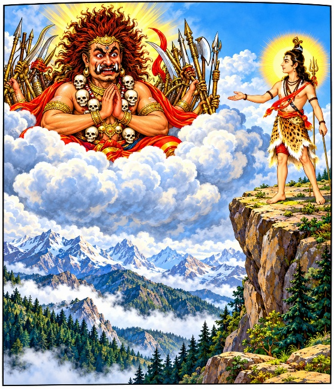
उसी क्षण दूसरी कालाग्निके समान भगवान् वीरभद्रने अपने रोमोंसे उत्पन्न किये गये गणेश्वरोंके साथ महात्मा [दक्ष] के यज्ञस्थलमें प्रवेश करके अमित तेजवाले दक्षसे कहा— ‘हे दक्ष! आज पिनाकधारी शिवने मुनियों, देवताओं तथा मुनीश्वरोंसहित आपको केवल स्पर्शमात्रसे दग्ध करनेके लिये मुझको भेजा है।’— ऐसा कहकर उस श्रेष्ठ गणने उस यज्ञशालाको जला डाला॥ ११-१३॥
अत्यन्त क्रुद्ध गणेश्वरोंने [यज्ञके] यूपों (स्तम्भों) को उखाड़कर फेंक दिया। गणेश्वरोंने प्रस्तोता तथा होतासहित सबको जला दिया। उन गणेश्वरोंने सभीको पकड़कर गंगाकी धारामें फेंक दिया। महातेजस्वी तथा अदीन आत्मावाले वीरभद्रने उठे हुए इन्द्रके वज्रयुक्त हाथको स्तम्भित कर दिया और अन्य देवताओंके हाथोंको भी स्तम्भित कर दिया। उन्होंने लीलापूर्वक अपने नाखूनोंके अग्रभागसे भगके नेत्रोंको निकालकर पुनः मुष्टिकासे प्रहार करके पूषाके दाँतोंको तोड़कर गिरा दिया॥ १४-१६½॥
इसके बाद प्रतापी भगवान् वीरभद्रने [अपने] पैरके अँगूठेसे बिना प्रयासके चन्द्रदेवको घर्षित कर दिया और उन प्रभु इन्द्रके सिरको काट दिया। महाबली वीरभद्रने लीलापूर्वक अग्निदेवके दोनों हाथोंको काटकर तथा जीभ उखाड़कर पैरसे उनके सिरपर प्रहार किया॥ १७-१९॥
तत्पश्चात् प्रभु भगवान् वीरभद्रने स्वयं यमके दण्डको काट दिया और महाबली ईशानदेवको त्रिशूलसे मारा। उन्होंने [वसु, रुद्रादित्यरूप] तैंतीस देवताओं तथा इन्हीं तीनोंके तीन सौ तथा तीन हजार भेदोंको लीलापूर्वक ही मार करके [इन्द्र, अग्नि, सोमरूप] तीन प्रधान देवों, मुनीश्वरों तथा युद्धके लिये सन्नद्ध अन्य सभी देवताओंको भी मार डाला॥ २०-२२½॥
इसके बाद महातेजस्वी लक्ष्मीपति भगवान् विष्णु [अपना] चक्र उठाकर आवेशयुक्त होकर उन रुद्रके साथ युद्ध करने लगे। उन दोनोंके बीच अतिभयंकर तथा रोमांचकारी युद्ध हुआ। उन विष्णुके योगबलसे हाथोंमें शंख-चक्र-गदा धारण किये हुए, दिव्य देहवाले तथा परम दारुण असंख्य योद्धा उत्पन्न हो गये॥ २३-२५½॥
तब उन वीरभद्रदेवने नारायणके समान प्रभावाले उन सबको भी मार करके रणभूमिमें ही गदासे लीलापूर्वक विष्णुदेवके सिरपर प्रहार किया; इसके बाद उनके वक्षःस्थलपर प्रहार किया, तब वे पुरुषोत्तम (विष्णु) अचेत होकर पृथ्वीपर गिर पड़े। इसके बाद उठ करके उन [वीरभद्र] को मारनेके लिये चक्र उठाकर वे श्रीमान् पुरुषश्रेष्ठ प्रभु क्रोधसे लाल नेत्रोंवाले होकर खड़े हो गये॥ २६-२८½॥
उन [विष्णु] का भयानक तथा कालादित्यके समान तेजवाला जो चक्र था, उसको अदीन आत्मावाले वीरभद्रने स्तम्भित कर दिया। वह हाथमें पड़ा ही रह गया और हिलातक नहीं और वीरभद्रके द्वारा स्तम्भित कर दिये गये वे विष्णु भी पर्वतकी भाँति स्थिर होकर खड़े रहे॥ २९-३०॥
इसके बाद वीरभद्रने तीन बाणोंसे विष्णुके शार्ङ्ग [नामक] धनुषको काट दिया और वह तीन टुकड़ोंमें हो गया एवं शार्ङ्ग धनुषके सिरेसे लग जानेके कारण विष्णुका सिर कट गया। उनका कटा हुआ सिर शीघ्र ही [भगवान्] शंकरकी निःश्वास वायुसे प्रेरित होकर रसातलमें चला गया। तत्पश्चात् वहाँ उनकी आहवनीय अग्निने प्रवेश किया। ध्वस्त कलशवाले तथा तोरणों सहित टूटे हुए यूपवाले उस जलते हुए यज्ञवाटको देखकर यज्ञदेव भी भाग गये। तब मृगके रूपसे आकाशकी ओर भागते हुए उस यज्ञदेवको पकड़कर वीरभद्रने उसे सिरविहीन कर दिया। तत्पश्चात् महाबली वीरभद्रने प्रजापति, धर्म, जगद्गुरु कश्यप, अरिष्टनेमि, मुनीश्वर बहुपुत्र, मुनि अंगिरा और कृष्णाश्वके सिरपर पैरसे प्रहार किया; हे श्रेष्ठ द्विजो! उसने यशस्वी दक्षके सिरपर भी पैरसे प्रहार किया और उनके सिरको काट लिया तथा उसे अग्निमें जला दिया तदनन्तर प्रतापशाली वीरभद्र अपने नाखूनके अग्रभागसे देवमाता सरस्वतीकी नासिकाका अग्रभाग काटकर ऐश्वर्ययुक्त होकर सबके बीच उसी तरह स्थित हुए जैसे श्मशानमें [भगवान्] भव॥ ३१-३८½॥
इसी समय महातेजस्वी प्रभु ब्रह्माजी प्रार्थना करते हुए प्रणत होकर वीरभद्रसे बोले— ‘हे भद्र! क्रोध मत कीजिये, देवतागण नष्ट हो गये हैं, हे सुव्रत! प्रसन्न होइये और अपने रोमोंसे उत्पन्न गणेश्वरोंसहित सबको क्षमा कीजिये’॥ ३९-४०½॥
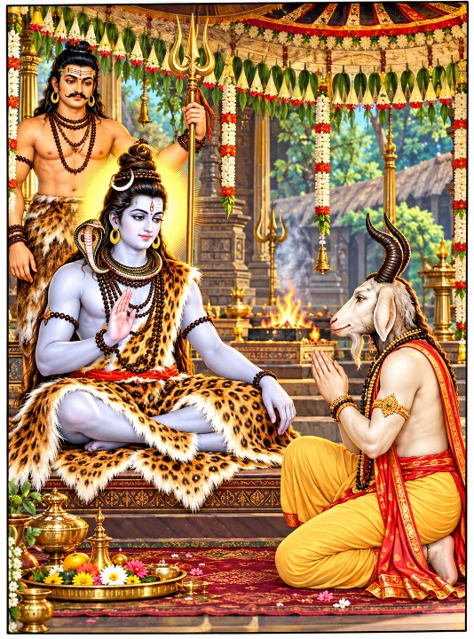
तब वे वीरभद्र भी परमेष्ठी ब्रह्माके प्रभावसे धीरे-धीरे शान्तिको प्राप्त हुए; उनकी आज्ञासे शान्त होकर वे खड़े हो गये। उस समय भगवान् महादेव वृषभध्वज अन्तरिक्षमें स्थित थे; देव ब्रह्माने गणोंसहित उन सर्वदाता, शर्व, सभी लोकोंके स्वामी भगवान् भवसे प्रार्थना की। तब उन्होंने मारे गये उन सभीको पूर्वकी भाँति शरीर प्रदान कर दिया। महेश्वरने इन्द्र, महात्मा विष्णु, दक्ष, मुनीन्द्र तथा अन्य लोगोंको सिर प्रदान कर दिया, देवमाता सरस्वतीको नासिका प्रदान कर दी, नष्ट हुए लोगोंको जीवन प्रदान कर दिया; साथ ही उन्होंने विविध वर भी प्रदान किये। भगवान् महाप्रभु भवने लीलापूर्वक ध्वस्तमुखवाले दक्षका सिरसहित मुख बना दिया॥ ४१-४६½॥
तब चेतनाप्राप्त दक्षने भी उठकर हाथ जोड़ करके देवदेवेश वृषभध्वज शंकरकी स्तुति की। उनके द्वारा स्तुत होकर महातेजस्वी शिवने उत्तम कर्मवाले उन दक्षको विविध वर प्रदान करके उन्हें गाणपत्य [पद] प्रदान किया॥ ४७-४८½॥
तब सभी देवताओंने देवेश परमेश्वरकी स्तुति की। भगवान् नारायणने भी हाथ जोड़कर उनकी स्तुति की। ब्रह्मा तथा सभी मुनियोंने भी ब्रह्माकी सृष्टि करनेवाले देवदेवेश नीलकण्ठ वृषभध्वजको पृथक्-पृथक् स्तुति की। इसके बाद उन देवताओंपर अनुग्रह करके शिवजी भी अन्तर्धान हो गये॥ ४९-५१॥
॥ इस प्रकार श्रीलिङ्गमहापुराणके अन्तर्गत पूर्वभागमें ‘शिवकृत दक्षयज्ञविध्वंसन’ नामक सौवाँ अध्याय पूर्ण हुआ॥ १००॥
एक सौ एकवाँ अध्याय
सतीका हिमवान्की पुत्री पार्वतीके रूपमें प्राकट्य, शिवकी प्राप्तिके लिये उनका कठोर तप, तारकासुरद्वारा देवताओंको पराजित करना, शिवद्वारा कामदेवका दहन तथा पुनः जीवित करना
ऋषिगण बोले— कल्याणमयी अम्बा सती हिमवान्की पुत्री कैसे हुईं और उन्होंने देवदेवेश महेश्वरको पतिके रूपमें कैसे प्राप्त किया?॥ १॥
सूतजी बोले— हे श्रेष्ठ द्विजो! उस श्रेष्ठ अंगनाने तपस्याके द्वारा अपनी इच्छासे मेनाके शरीरका आश्रय लेकर हिमालयकी पुत्रीके रूपमें जन्म लिया। पर्वतराजने उसके जातकर्म आदि समस्त संस्कार सम्पन्न किये। तब बारहवाँ वर्ष पूर्ण होनेपर हिमवान्की वह सुन्दर पुत्री तपस्या करने लगी; उसके साथ सुन्दर मुखवाली उसकी छोटी बहन और सर्वलोकनमस्कृत एक दूसरी छोटी बहन भी थी॥ २-४॥
तब सभी ऋषि सभी लोकोंकी महेश्वरी उस देवीको चारों ओरसे घेरकर तपके लिये उसकी स्तुति करने लगे॥ ५॥
उनमें सबसे बड़ी अपर्णा थी, उससे छोटी सुन्दर मुखवाली एकपर्णा थी और तीसरी परम सुन्दरी एकपाटला [नामवाली] थी। महादेवी पार्वतीकी तपस्यासे सभी प्राणियोंके स्वामी परमेश्वर महादेव शिव [उनके] वशमें हो गये॥ ६-७॥
इसी समय तारक नामवाला एक दानव हुआ; दितिको आनन्दित करनेवाला वह तारपुत्र (तारक) महातेजस्वी था। उसके तीन पुत्र थे— महान् असुर तारकाक्ष, भाग्यशाली विद्युन्माली और पराक्रमी कमलाक्ष। तार नामक इनके महाबली पितामहने प्रभु ब्रह्माकी कृपासे [अपनी] तपस्याके द्वारा [अतुलनीय] पराक्रम प्राप्त कर लिया था। उस महातेजस्वी तारने चराचरसहित तीनों लोकोंको जीतकर संग्राममें विष्णुको भी जीत लिया था॥ ८-११॥
उन दोनोंमें दिन-रात बिना विश्रामके (निरन्तर) एक हजार दिव्य वर्षोंतक अत्यन्त भयानक तथा रोमांचकारी युद्ध हुआ। उसने रथसहित विष्णुको पकड़कर सौ योजन दूर फेंक दिया। तारके द्वारा युद्धमें पराजित होकर विष्णु भाग गये। ब्रह्मासे एक सौ वर तथा सैकड़ों गुना बल प्राप्त करके दितिनन्दन तारने सम्पूर्ण जगत्पर अधिकार कर लिया। देवेन्द्र आदि देवताओंको जीतकर देवेश्वरेश्वरके रूपमें होकर उसने अपनी मायासे देवताओंको सभी लोकोंमें उनके कार्योंसे वंचित कर दिया॥ १२-१५॥
इन्द्रसहित देवतागण तारकासुरके भयसे पीड़ित हो गये; वीर होते हुए भी वे भयग्रस्त होनेके कारण [कहीं भी] शान्ति अथवा शरण प्राप्त नहीं कर सके। तब देवताओंके स्वामी श्रीमान् प्रभु इन्द्र बृहस्पतिकी शरणमें जाकर देवताओंकी उपस्थितिमें उनसे कहने लगे॥ १६-१७॥
हे भगवन्! तारसे उत्पन्न तारक नामक एक महादानव है; उसने युद्धमें हमलोगोंको उसी तरह आहत किया है, जैसे बैल बछड़ोंको आहत कर देता है। अतः हे महाभाग! हे बृहस्पते! भयके कारण इस विशाल युद्धमें देवतालोग आश्रयविहीन होकर उसी प्रकार भ्रमण कर रहे हैं, जैसे पिँजरेमें पक्षी। हे अंगिरोवर! हमलोगोंके जो अस्त्र पहले अमोघ थे, वे उस देवशत्रुके प्रभावके कारण निष्फल हो गये हैं। हे बृहस्पते! विष्णुने बीस हजार वर्षोंतक उसके साथ युद्ध किया किंतु वह उनके भी द्वारा युद्धमें नहीं मारा गया। महाशक्तिसम्पन्न विष्णुके द्वारा भी युद्धमें जो जीता नहीं जा सका, तब हम-जैसे लोग युद्धमें उसके समक्ष कैसे टिक सकते हैं?॥ १८-२२॥
इन्द्रके ऐसा कहनेपर श्रेष्ठ देवताओं तथा इन्द्रको साथ लेकर बृहस्पतिने विभु ब्रह्माके पास पहुँचकर [सब कुछ] बताया॥ २३॥
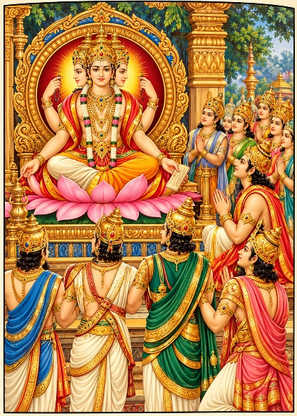
उनके मुखसे [सारा वृत्तान्त] सुनकर शरणागतोंका कष्ट दूर करनेवाले उन पितामहने इन्द्रसहित सभी देवताओंके साथ आये हुए बृहस्पतिसे प्रेमपूर्वक कहा— मैं आप सब देवताओंकी विपत्तिको जानता हूँ; फिर भी इस समय सुनिये। रुद्रके अंगसे उत्पन्न जो देवी सती हैं, वे दक्षकी निन्दा करके समस्त लोकोंद्वारा नमस्कृत उमाके रूपमें हिमवान्की पुत्री होकर उत्पन्न हुई हैं। हे उत्तम देवताओं! आप देवतागण उन्हींके रूपके द्वारा इन विभु रुद्रके महान् मनको आकृष्ट करानेका प्रयत्न कीजिये। उन दोनोंके संयोगसे शक्तिधर प्रभु स्कन्द उत्पन्न होंगे; वे षडास्य (छः मुखवाले)
द्वादशभुज (बारह भुजाओंवाले), सेनानी, पावकि, प्रभु, स्वाहेय, कार्तिकेय, गांगेय, शरधामज, देव, शाख, विशाख, नैगमेश, वीर्यवान्, सेनापति और कुमार नामवाले होकर सभी लोकोंसे नमस्कृत होंगे। वे महासेन बालक होते हुए भी बिना प्रयासके अकेले ही [उस] महाबली तारकासुरका वध करके देवताओंका उद्धार करेंगे॥ २४-३०॥
तब उन परमेष्ठी ब्रह्माके इस प्रकार कहनेपर इन्द्रसहित सभी देवताओंके साथ सुव्रत बृहस्पतिने देवदेव उन ब्रह्माको प्रणाम करके मेरुके शिखरपर पहुँचकर कामदेवका स्मरण किया। हे श्रेष्ठ द्विजो! देवगुरु ब्रह्माके स्मरण करनेसे जगत्का जीवस्वरूप कामदेव भी [अपनी] भार्या रतिके साथ वहाँ आकर हाथ जोड़कर नमस्कार करके इन्द्रसहित उन बृहस्पतिसे बोला— ‘हे बृहस्पते! आपने मेरा स्मरण किया है, अतः मैं आपके पास आया हूँ; मुझे जो करना हो, उसे बताइये।’ तब देवपूजित बृहस्पति उससे कुछ बोलने ही वाले थे कि उत्सुकतावश भगवान् इन्द्रने कामदेवकी प्रशंसा करके उससे कहा— ‘अब आप सुखपूर्वक शंकरके साथ अम्बिकाका संयोग कराइये। वे भगवान् वृषभध्वज जिस भी उपायसे उनके साथ रमण करें; अपनी पत्नी रतिके साथ आप उस उपायको खोजिये। पहलेसे ही उन [अम्बिका] से वियुक्त हुए वे महादेव भी उन पार्वती उमाको [पुनः] प्राप्त करके प्रसन्न होकर आपको शुभ गति प्रदान करेंगे’॥ ३१-३७॥
उनके ऐसा कहनेपर देवदेव इन्द्रको नमस्कार करके कामदेवने उस [रति] के साथ शंकरजीके आश्रममें जानेका निश्चय किया। तब रति तथा अपने सहायक वसन्तके साथ शिवजीके आश्रममें जाकर महाबली कामदेवने पार्वतीके साथ महादेवका संयोग करानेका मन बनाया॥ ३८-३९॥
तत्पश्चात् कामदेवको देखकर हँसते हुए त्रिनेत्र शिवने अवज्ञापूर्वक उसे [अपने] तीसरे नेत्रसे देखा। इसके बाद उनके नेत्रसे उत्पन्न अग्निने पासमें ही खड़े कामदेवको उसी क्षण जला दिया। तब रति करुण विलाप करने लगी। रतिके विलापको सुनकर देवदेव वृषध्वजने परम कृपासे कामदेवकी पत्नीकी ओर देखकर उससे कहा— ‘हे भद्रे! तुम्हारा पति देहरहित होते हुए भी रतिकालमें निश्चित रूपसे सम्पूर्ण कार्य करेगा; हे भद्रे! इसमें सन्देह नहीं है। जब [भगवान्] विष्णु भृगुके शापसे सभी लोकोंके हितके लिये महायशस्वी तथा महातेजस्वी वासुदेव (वसुदेवपुत्र) के रूपमें अवतीर्ण होंगे, तब उनका [प्रद्युम्न नामक] जो पुत्र उत्पन्न होगा, वही तुम्हारा पति होगा’॥ ४०-४४½॥
इसके बाद रुद्रको प्रणाम करके पवित्र मुसकानवाली वह कामपत्नी अनंगको प्राप्त करके वसन्तके साथ चली गयी॥ ४५-४६॥
॥ इस प्रकार श्रीलिङ्गमहापुराणके अन्तर्गत पूर्वभागमें ‘मदनदाह’ नामक एक सौ एकवाँ अध्याय पूर्ण हुआ॥ १०१॥
एक सौ दोवाँ अध्याय
पार्वतीकी तपस्यासे प्रसन्न हो भगवान् शिवका ब्राह्मणवेषमें आकर उन्हें वरदान देना, हिमालयद्वारा पार्वतीस्वयंवरकी घोषणा, स्वयंवरमें भगवान् शिवका बालरूपमें उपस्थित होकर सभीको मोहित करना, पुनः ब्रह्माकी स्तुतिसे प्रसन्न हो महेश्वरका मनोहर वररूप धारणकर सबको आनन्दित करना
सूतजी बोले— [हे ऋषियो!] भगवान् वृषभध्वज शर्व पार्वतीकी तपस्यासे प्रसन्न हो गये। इसके बाद ब्रह्माजीके कहनेसे भगवान् भवने सभी आश्रमोंके हितके लिये और क्रीड़ा करनेके लिये विधिपूर्वक पार्वतीके साथ विवाह किया॥ १-२॥
उस समय कमलसे उत्पन्न ब्रह्माजी स्वयं मरीचि आदि महर्षियोंके साथ महादेवी पार्वतीके तपोवनमें गये थे। उन्होंने जगत्की निमित्तकारणस्वरूपा उन देवीकी प्रदक्षिणा करके कहा— ‘हे शैलजे! आप तपस्यासे लोकोंको किसलिये संतप्त कर रही हैं? हे मातः! आपने ही सम्पूर्ण जगत्का सृजन किया है, अतः आप इसका विनाश मत कीजिये; आप अपने तेजसे इन समस्त लोकोंको धारण कीजिये। श्रीमान् शिवजी सभी देवताओंके ईश्वर तथा सभी लोकोंके स्वामी हैं।
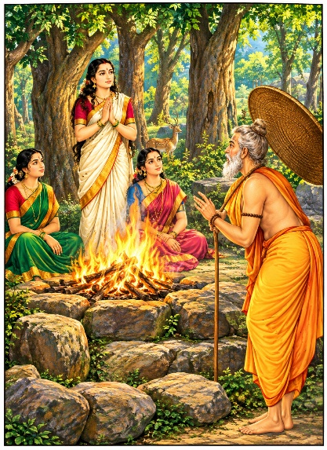
हमलोग जिन देवाधिदेवके सेवक कहे जाते हैं, वे परमेश्वर ही स्वयं आपका वरण करेंगे। हे वरदे! जिन्होंने आपका सृजन किया है और हे अम्बिके! जो आपके बिना रह नहीं सकते; वे [शिवजी] आपके पति होंगे; इसमें सन्देह नहीं है’॥ ३-७½॥
ऐसा कहकर उन पार्वतीको नमस्कार करके बार-बार उनकी ओर देखकर पितामह (ब्रह्मा) के चले जानेपर भगवान् परमेश्वर [शिव] अनुग्रह करनेके लिये ब्राह्मणके रूपमें उस आश्रममें गये॥ ८-९॥
द्विजरूपसे उपस्थित महादेवको देखकर उन पार्वतीने उनकी दीप्ति आदिके द्वारा उन्हें भगवान् वृषभध्वज जानकर प्रणाम किया। ब्राह्मणके छद्मरूपमें आये हुए वरदाता महादेवकी पूजा करके पार्वतीने उन परमेशान परमेश्वरकी स्तुति की॥ १०-११॥
तदनन्तर देवीपर अनुग्रह करके शिवजी हँसते हुए बोले— ‘हे महादेवि! सभी देवताओंका स्वामी मैं शिव महात्मा हिमालयके कुलधर्मकी परम्पराकी रक्षा करता हुआ क्रीड़ा करनेके लिये सज्जनोंके मध्य तुम्हारे दिव्य तथा अतिसुन्दर स्वयंवरमें सौम्य रूप धारण करके तुमसे मिलूँगा’॥ १२-१३½॥
ऐसा कह करके उन्हें दिव्य दृष्टिसे देखकर शिवजी अपने अभीष्ट (प्रिय) दिव्य लोकको चले गये और इसके बाद वे भी चली गयीं। तब देवीको देखकर मैनासहित हिमालय साक्षात् तपस्विनी अपनी पुत्रीका आलिंगन करके, उनका मस्तक सूंघकर और उनकी पूजा करके अत्यन्त प्रसन्न हुए। तत्पश्चात् देवाधिदेव [शिव]-द्वारा अपनी पुत्रीको दिये गये संकेतको न जानते हुए भी हिमालयने सभी लोकोंमें देवीके स्वयंवरकी घोषणा कर दी॥ १४-१६½॥
इसके अनन्तर ब्रह्मा, साक्षात् भगवान् जनार्दन विष्णु, ऐश्वर्यशाली इन्द्र, अग्निदेव, सूर्य, भग, त्वष्टा, अर्यमा, विवस्वान्, यम, वरुण, वायु, सोम, ईशान, सभी रुद्र, मुनिगण, दोनों अश्विनीकुमार, बारहों आदित्य, समस्त गन्धर्व, गरुड़, यक्ष, सिद्ध, साध्य, दैत्य, किंपुरुष, उरग, समुद्र, नद, वेद, मन्त्र, स्तोत्र आदि, क्षण, नाग, पर्वत, सभी यज्ञ, सूर्य आदि ग्रह, वसु, रुद्र तथा आदित्य आदि तैंतीस देवताओंके भेद-प्रभेदरूप ब्रह्मा, विष्णु तथा शिव ये तीन, तीन सौ तथा तीन हजार तीन देवता तथा अन्य बहुत-से देवता पर्वतराजकी पुत्रीके अत्युत्तम स्वयंवरमें पहुँचे॥ १७-२२॥
तदनन्तर पार्वती देवी स्वर्णनिर्मित तथा सभी रत्नोंसे अलंकृत सर्वतोभद्र नामक उत्तम विमानपर आरूढ़ होकर नृत्य करती हुई अप्सराओं, सभी आभूषणोंसे विभूषित विविध गन्धर्वों, सिद्धों तथा परम सुन्दर किन्नरोंके साथ और बन्दीजनोंद्वारा स्तुत होती हुई वहाँ उपस्थित हुईं। [उनकी सखी] मालिनी रत्नकिरणोंसे मिश्रित श्वेत वर्णका सन्ध्याकालीन चन्द्रमण्डलसदृश छत्र [उन] पार्वतीके ऊपर लगाये हुए थी। वे पार्वती हाथोंमें चँवर लिये हुई दिव्य स्त्रियोंसे घिरी हुई थीं। कल्पवृक्षके पुष्पोंसे निर्मित माला [हाथमें] लेकर जया [नामक सखी] खड़ी थी और विजया व्यजन (पंखा) लेकर देवीके समीप खड़ी थी॥ २३-२७॥
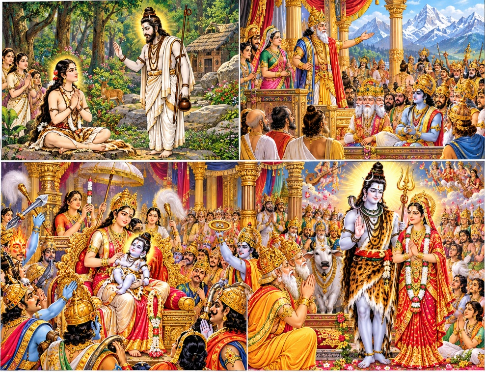
देवताओंकी सभामें [अपने हाथमें] माला लेकर देवी पार्वतीके स्थित होनेपर भगवान् वृषभध्वज भव महादेव क्रीड़ा करनेके लिये एक शिशुके रूपमें होकर देवीकी गोदमें सोये हुएकी भाँति स्थित हो गये। तब उनकी गोदमें स्थित शिशुको देखकर ‘यहाँपर यह कौन है’ ऐसा विचार करके [वहाँ] उपस्थित देवतागण क्षुब्ध हो उठे॥ २८-२९½॥
वृत्रासुरका संहार करनेवाले इन्द्रने भुजा उठाकर उस [शिशु]-के ऊपर वज्र चलाना चाहा, किंतु उनका उठा हुआ वह बाहु वैसा ही रह गया। शिशुरूपधारी देवदेव [शिव]-के द्वारा लीलापूर्वक स्तम्भित कर दिये गये वे इन्द्र वज्र फेंकने तथा अपनी भुजा चलानेमें समर्थ नहीं हुए। [इसी प्रकार] अग्निदेव भी अपनी शक्ति चलानेमें समर्थ नहीं हुए और वैसे ही खड़े रह गये॥ ३०-३२॥
हे श्रेष्ठ मुनियो! इसी प्रकार यम अपने दण्डको, निर्ऋति अपने खड्गको, वरुण अपने नागपाशको, वायुदेव अपने ध्वजदण्डको, सोम अपनी गदाको, दण्डधारियोंमें श्रेष्ठ कुबेर अपने दण्डको तथा ईशान अपने तीक्ष्ण त्रिशूलको उठाकर खड़े ही रह गये। सभी रुद्र शूलको, सभी आदित्य मुसलको तथा वसुगण मुद्गरको उठाये ही रह गये; सभी देवता शीघ्र ही महादेवके द्वारा स्तम्भित कर दिये गये। [इसी प्रकार] देवाधिदेवने अन्य देवताओंको भी स्तम्भित कर दिया॥ ३३-३५½॥
विष्णु [अपने] सिरको हिलाते हुए चक्र उठाकर खड़े रहे। उस बालकने उनके भी सिरको स्थिर कर दिया। वे [विष्णु] अपना चक्र फेंकने तथा बाहुओंको चलानेमें समर्थ नहीं हुए। पूषाने मोहित होकर अपने दाँतोंसे दाँतोंको किटकिटाते हुए उस बालककी ओर देखा। शिवके देखनेमात्रसे ही उसके दाँत गिर गये।
उसी प्रकार विभु शिवने सबके बल, तेज तथा योगको स्तम्भित कर दिया॥ ३६-३८½॥
इसके बाद क्रोधमें भरे हुए उन समस्त देवताओंके स्तम्भित हो जानेपर अत्यन्त व्याकुल ब्रह्माने शंकरका ध्यान करके यह जान लिया कि उमाकी गोदमें वे भगवान् ईशान ही विराजमान हैं। ईशानदेवको पहचानकर शीघ्र उन्हें उठाकर विस्मित हुए पितामहने शम्भुके चरणोंकी वन्दना की और प्राचीन सामगानों, उनके पवित्र नामों तथा गुप्त नामोंके द्वारा उनकी स्तुति की॥ ३९-४१½॥
[ब्रह्माने कहा—] आप समस्त लोकोंके स्रष्टा तथा प्रकृतिके प्रवर्तक हैं। आप सभी लोकोंकी बुद्धि एवं अहंकार हैं। आप ईश्वर हैं। हे ईश! आप ही सभी प्राणियोंकी इन्द्रियोंके प्रवर्तक हैं। हे महाबाहो! सर्वप्रथम आपके दाहिने हाथसे पुरातन मैं [ब्रह्मा] उत्पन्न हुआ हूँ और बायें हाथसे भगवान् प्रभु नारायण उत्पन्न हुए हैं। हे सृष्टिकारण! ये देवी प्रकृति सर्वदा आपकी पत्नीका रूप धारणकर जगत्की कारणभूता बनी हैं। हे महादेव! आपको नमस्कार है; महादेवीको बार-बार नमस्कार है। हे देवेश! मैंने आपकी कृपासे तथा आपके आदेशसे इन प्रजाओं तथा देवता आदिका सृजन किया है। आपके योगसे मोहित होकर ये देवगण अब मूढ़ताको प्राप्त हो गये हैं। अब आप इनपर अनुग्रह कीजिये, जिससे ये पूर्वकी भाँति हो जायँ॥ ४२-४७॥
सूतजी बोले— [हे ऋषियो!] इस प्रकार देवदेव महेश्वरका स्तवन करके पद्मयोनि भगवान् ब्रह्माने उन [शिव]-के द्वारा स्तम्भित किये गये देवताओंसे कहा— मूढ़ताको प्राप्त आप सभी देवताओंने सभी देवोंसे नमस्कृत होनेवाले यहाँ आये हुए देवदेव शंकरको नहीं पहचाना। हे देवताओ! इन्द्र आदि आप सभी देवगण नारायणको, सभी मुनियोंको तथा मुझको साथ लेकर इन प्रकृतिस्वरूपा पार्वतीके साथ विराजमान सर्वश्रेष्ठ, प्रभु, देवेश, परमात्मा, ईश्वर शंकरकी शरणमें शीघ्र चलिये॥ ४८-५१॥
तब उन शिवके द्वारा वहाँपर स्तम्भित किये गये उन श्रेष्ठ देवताओंने नारायणसहित उन प्रभु [शिव] को मनसे प्रणाम किया॥ ५२॥
इसके बाद देवदेव त्रिलोचन [शिव] उनपर प्रसन्न हो गये और उन प्रभुने ब्रह्माके वचनानुसार सबको पूर्वकी भाँति कर दिया॥ ५३॥
इस प्रकार प्रसन्न हो जानेपर उन देवेश्वरने सभी देवताओंके द्वारा न देखे जा सकनेवाला, दिव्य तथा परम अद्भुत शरीर धारण किया॥ ५४॥
तब उनके तेजसे इन्द्र, चन्द्र, सूर्य, ब्रह्मा, साध्यगण, नारायण, यम, सभी रुद्र आदिके सहित वे देवता प्रतिहत (नष्ट) दृष्टिवाले हो गये। तब उन लोगोंने प्रभुसे [दिव्य] दृष्टिके लिये प्रार्थना की। इसपर उमापति शर्वने उन्हें सब कुछ देखनेमें समर्थ दिव्य दृष्टि प्रदान की; साथ ही उन्होंने भवानी तथा हिमालयको भी दिव्य दृष्टि दी॥ ५५-५६½॥
तब दिव्य दृष्टि प्राप्त करके ब्रह्मा तथा शक्रसहित इन्द्र, विष्णु आदि प्रधान देवताओंने उन महेश्वरका दर्शन किया। ब्रह्मा आदि देवताओं, भवानी (पार्वती), गिरीश्वर [हिमालय], मुनियों तथा शिवप्रिय गणेश्वरोंने शीघ्र ही महादेवको प्रणाम किया। आकाशचारी सिद्धों तथा चारणोंने [उनपर] पुष्पवृष्टि की, देवदुन्दुभियाँ बजने लगीं, मुनिगण प्रभुकी स्तुति करने लगे, प्रधान गन्धर्व गाने लगे तथा अप्सराएँ नाचने लगीं, सभी गणेश्वर आनन्दित हो उठे और अम्बा पार्वती भी आनन्दविभोर हो गयीं॥ ५७-६०½॥
उस समय आह्लादित देवी [पार्वती] ने त्रिदेवोंके समक्ष उन शिवके चरणोंमें दिव्य तथा सुगन्धित माला समर्पित कर दी। ब्रह्मा-यक्ष-उरग-राक्षसोंसहित सभी देवताओंने ‘साधु-साधु’ कहकर वहाँपर उन पार्वतीके द्वारा पूजित शिवको उन देवीसमेत पृथ्वीतलपर मस्तक टेककर प्रणाम किया॥ ६१-६३॥
॥ इस प्रकार श्रीलिङ्गमहापुराणके अन्तर्गत पूर्वभागमें ‘उमास्वयंवर’ नामक एक सौ दोवाँ अध्याय पूर्ण हुआ॥ १०२॥
एक सौ तीनवाँ अध्याय
भगवान् शिव एवं पार्वतीके विवाहकी मांगलिक कथा तथा विवाहके अनन्तर भगवान् शिवका काशी-आगमन और पार्वतीको मुक्तिक्षेत्र काशीकी महिमा बताना
सूतजी बोले— [हे ऋषियो!] इसके बाद ब्रह्माने हाथ जोड़कर महादेव महेश्वरको प्रणाम करके यह कहा— ‘हे देव! अब विवाह कीजिये’॥ १॥
उन परमेष्ठी ब्रह्माका वह वचन सुनकर भूतपति शिवने लोकेश [ब्रह्मा] से कहा— ‘जो आपकी इच्छा हो’॥ २॥
हे सुव्रतो! ब्रह्माने महेशके विवाहके लिये उसी क्षण रत्नमय, दिव्य तथा सुन्दर नगरका निर्माण किया॥ ३॥
इसके बाद अदिति, दिति, साक्षात् दनु, कद्रु, सुकालिका, पुलोमा, सुरसा, सिंहिका, विनता, सिद्धि, माया, क्रिया, साक्षात् देवी दुर्गा, सुधा, स्वधा, वेदमाता सावित्री, रजनी, दक्षिणा, द्युति, स्वाहा, स्वधा, मति, बुद्धि, ऋद्धि, वृद्धि, सरस्वती, राका, कुहू, सिनीवाली, देवी अनुमती, धरणी, धारणी, इला, शची, नारायणी — ये सब एवं अन्य सभी देवमाताएँ तथा देवपत्नियाँ ‘शंकरका विवाह हो रहा है’ — ऐसा सोचकर आनन्दमग्न होकर [वहाँ] गयीं। सभी उरग, गरुड़, यक्ष, गन्धर्व, किन्नर, गण, समुद्र, पर्वत, मेघ, मास, संवत्सर, वेद, मन्त्र, यज्ञ, स्तोम, धर्म, हुंकार, प्रणव, हजारों प्रतिहार, करोड़ों दिव्य अप्सराएँ तथा उनकी परिचारिकाएँ और समस्त द्वीपों तथा देवलोकोंमें जो भी नदियाँ हैं, वे सब स्त्रीका रूप धारण करके प्रसन्नचित्त होकर वहाँ गयीं। सभी लोकोंसे नमस्कृत महाभाग गणेश्वर भी ‘यह शंकरका विवाह है’ — यह सोचकर प्रसन्नतासे युक्त हो वहाँ आये॥ ४-१२॥
शंखके समान वर्णवाले गणेश्वर [अपने] करोड़ों गणोंके साथ पहुँचे। केकराक्ष दस करोड़ गणोंके साथ, विद्युत आठ करोड़ गणोंके साथ, विशाख चौंसठ करोड़ गणोंके साथ, पारयात्रिक नौ करोड़ गणोंके साथ, श्रीमान् सर्वान्तक छः करोड़ गणोंके साथ, विकृतानन भी छः करोड़ गणोंके साथ, गणोंमें श्रेष्ठ ज्वालाकेश बारह करोड़ गणोंके साथ, श्रीमान् समद सात करोड़ गणोंके साथ, दुन्दुभ आठ करोड़ गणोंके साथ, कपालीश पाँच करोड़ गणोंके साथ, उत्तम संदारक छः करोड़ गणोंके साथ और गण्डक तथा कुम्भक करोड़ों-करोड़ों गणोंके साथ आये॥ १३-१६॥
हे द्विजो! सर्वश्रेष्ठ गणेश्वर विष्टम्भ आठ करोड़ गणोंके साथ और पिप्पल तथा सन्नाद एक-एक हजार करोड़ गणोंके साथ आये। आवेष्टन [नामक गणेश्वर] आठ करोड़ गणोंके साथ, चन्द्रतापन सात करोड़ गणोंके साथ और गणेश्वर महाकेश हजार करोड़ गणोंके साथ आये॥ १७-१८॥
पराक्रमशाली [गणेश्वर] कुण्डी तथा शुभ पर्वतक बारह करोड़ गणोंके साथ और काल, कालक तथा महाकाल सौ करोड़ गणोंके साथ आये। आग्निक सौ करोड़ गणोंके साथ तथा अग्निमुख एक करोड़ गणोंके साथ आये। उसी प्रकार आदित्यमूर्धा तथा धनावह [नामक गणेश्वर] भी एक करोड़ गणोंके साथ आये॥ १९-२०॥
सन्नाम तथा कुमुद सौ करोड़ गणोंके साथ आये। अमोघ, कोकिल तथा सुमन्त्रक करोड़-करोड़ गणोंके साथ आये। दूसरे गणेश्वर काकपाद साठ करोड़ गणोंके साथ, प्रभुतासम्पन्न सन्तानक साठ करोड़ गणोंके साथ और महाबल, मधु, पिंग तथा पिंगल नौ करोड़ गणोंके साथ आये। नील, देवेश तथा पूर्णभद्र नब्बे करोड़ गणोंके साथ और महाबलशाली चतुर्वक्त्र सत्तर करोड़ गणोंके साथ आये। वे सभी देव अपने बीस सौ हजार करोड़ गणोंसे घिरे हुए वहाँ भगवान् शंकरके पास पहुँचे॥ २१-२४॥
प्रमथ [अपने] हजार करोड़ भूतों तथा तीन करोड़ गणोंके साथ आये। वीरभद्र चौंसठ करोड़ गणोंके साथ और रोमज करोड़ों गणोंके साथ आये। करण बीस करोड़ गणोंके साथ और केवल, शुभ, पंचाक्ष, शतमन्यु तथा मेघमन्यु भी नब्बे करोड़ गणोंके साथ आये। काष्ठकूट, सुकेश तथा वृषभ चौंसठ करोड़ गणोंके साथ और भगवान् सनातन विरूपाक्ष भी चौंसठ करोड़ गणोंके साथ आये। इसी प्रकार तालकेतु, षडास्य, पंचास्य, सनातन, संवर्तक, चैत्र, साक्षात् प्रभु लकुलीश, लोकान्तक, दीप्तास्य, प्रभु दैत्यान्तक, मृत्युहृत्, कालहा, काल, मृत्युंजयकर, विषाद, विषद, विद्युत, प्रभु कान्तक, देव, भृंगी, रिटि, श्रीमान् देवदेवप्रिय, अशनि, भासक तथा सहस्त्रपात् चौंसठ करोड़ गणोंके साथ आये। ये सब तथा अन्य असंख्य महाबली गणेश्वर भी वहाँ आये। वे सभी हजार हाथोंवाले, जटा-मुकुट धारण किये हुए, मस्तकपर चन्द्ररेखासे विभूषित, नीलकण्ठवाले, तीन नेत्रोंवाले, हार-कुण्डल-केयूर-मुकुट आदिसे अलंकृत, ब्रह्मेन्द्र-विष्णुके समान प्रतीत होनेवाले, अणिमा आदि सिद्धियोंसे युक्त थे; करोड़ों सूर्योंके सदृश आभावाले पाताललोकमें विचरण करनेवाले तथा सभी लोकोंमें निवास करनेवाले वे गणेश्वर वहाँ आये। तुम्बुरु, नारद, हाहा, हुहू एवं साम गान करनेवाले भी रत्नों तथा वाद्ययन्त्रोंको लेकर उस पुरमें आये॥ २५-३५॥
देवताओंद्वारा स्तुत तथा तपोधन बहुत-से ऋषिगण प्रसन्नचित्त होकर विवाहसम्बन्धी पवित्र मन्त्रोंका उच्चारण करने लगे॥ ३६॥
इस प्रकार पूर्णरूपसे सबके उपस्थित हो जानेपर विष्णुने स्वयं पवित्र मुसकानवाली पार्वतीको अलंकृत करके तथा स्वयं उन्हें ला करके पुरमें प्रवेश कराया। तदनन्तर ब्रह्माने देवताओंके स्वामी नारायण विष्णुसे सभामें कहा— ‘हे प्रभो! पहले आप इन रुद्रके बाएँ अंगसे भवानी तथा देवताओंके साथ उत्पन्न हुए और मैं इनके दाहिने अंगसे उत्पन्न हुआ। मेरे अंशस्वरूप पर्वतराज हिमालय वास्तवमें इस यज्ञके लिये ही उत्पन्न किये गये हैं। इन पार्वतीने परमेष्ठी [शिव] की मायासे हिमवान्की पुत्रीके रूपमें जन्म लिया है। अतः ये सभी लोकोंकी, आपकी तथा मेरी भी धात्री (जननी) हैं और श्रौत-स्मार्त प्रवृत्तिके लिये विवाहके उद्देश्यसे यहाँ आये हुए ये रुद्र सबके धाता (जनक) हैं। चूंकि पृथ्वी, जल, अग्नि, आकाश, चन्द्र, सूर्य, आत्मा तथा पवन शिवके ही विग्रहस्वरूप हैं, अतः इन रुद्रदेवकी [इन्हीं] मूर्तियोंसे ही जगत् उत्पन्न हुआ है। तथापि हिमवान्के तथा मेरे वचनसे शुक्ल-कृष्ण-लोहित वर्णवाली मायारूपा इन पार्वतीको उन शिवके निमित्त प्रदान कर देना चाहिये; [हे विष्णो!] आप भी प्रकृतिरूप हैं। पर्वतराजके साथ यह सम्बन्ध आपके लिये भी कल्याणप्रद है। मैं पद्मकल्पमें आपके नाभिकमलसे उत्पन्न हुआ था; अतः आप मेरे अंशस्वरूप इन हिमालयके तथा मेरे भी गुरु हैं’॥ ३७-४४½॥
सूतजी बोले— [हे ऋषियो!] तब उन देवदेव जनार्दनने ब्रह्मासे कहा— ‘ठीक है।’ तब देवतागण, सभी मुनि तथा देवदेव शिव प्रसन्न हो गये। तदनन्तर कमलके समान नेत्रवाले उन विद्वान् पद्मनाभ विष्णुने उठकर उन [पार्वती] को प्रणाम करके अपने हाथोंसे शिवके दोनों चरणोंको धोकर अपने, ब्रह्माके तथा हिमालयके सिरपर जल छिड़का। ‘[हे शिव!] आपकी नित्यसम्बन्धिनी ये [पार्वती] विवाहविधिकी सिद्धिके लिये ही मेनासे उत्पन्न हुई हैं; ये मेरी छोटी बहन हैं’— ऐसा कहकर विष्णुने उन पार्वतीको देवेश्वरके लिये जलसहित समर्पित करके स्वयं अपनेको भी उन देवके लिये जलसहित समर्पित कर दिया॥ ४५-४९½॥
इसके बाद सभी वेदोंके अर्थोंमें पारंगत श्रेष्ठ मुनियोंने कहा— ‘विचार करनेपर वस्तुतः ये महादेव शिव ही दाता, गृहीता, द्रव्य तथा फल सब कुछ हैं और इन्हींकी मायासे यह जगत् स्थित है’— ऐसा कहकर प्रसन्नतासे रोमांचित उन सभीने शिवजीको प्रणाम किया॥ ५०-५१½॥
उस समय आकाशचारी सिद्धों तथा चारणोंने पुष्पवृष्टि की, देवताओंकी दुन्दुभियाँ बजने लगीं और अप्सराएँ नृत्य करने लगीं। सभी वेदोंने शरीर धारण करके ब्रह्मा तथा मुनियोंके साथ उन देवदेव उमापति महेश्वरको प्रणाम किया॥ ५१-५२½॥
लज्जासे भरी हुई देवी पार्वतीको देखकर शिव तृप्त नहीं होते थे और दूषणरहित शरीरवाली वे [पार्वती] भी देवदेव वृषभध्वजको देखकर तृप्त नहीं होती थीं। तब शिवने विष्णुसे कहा— ‘मैं वरदाता हूँ।’ इसपर उन्होंने भी शंकरसे कहा— ‘आपमें मेरी भक्ति बनी रहे; मुझपर प्रसन्न होइये।’ तब शिवने उन्हें ब्रह्मत्व प्रदान किया। इसके बाद ब्रह्माने पुनः प्रभुसे प्रार्थना करते हुए कहा— ‘मैं उपाध्याय (आचार्य) के पदपर स्थित होकर अग्निमें हवन करता हूँ और यदि आप आज्ञा दें, तो जो विधि अभीतक नहीं की गयी है, उसे सम्पन्न करूँ’॥ ५३-५६॥
तब जगत्के स्वामी देवदेव शंकरने उन देव ब्रह्मासे कहा— ‘हे सुरश्रेष्ठ! जो-जो अभीष्ट हो, उसे आप इच्छानुसार कीजिये। हे देवदेव! हे पितामह! मैं [आपके] समस्त वचनका पालन करूँगा’॥ ५७½॥
तदनन्तर [उन्हें] प्रणाम करके प्रसन्नचित्त परम प्रभु लोकपितामह ब्रह्माने शिव तथा देवी [पार्वती] के हाथोंको [परस्पर] मिला दिया। स्वयं अग्निदेव हाथ जोड़े हुए वहाँ उपस्थित हुए। [साक्षात्] मूर्तिमान् होकर उपस्थित वैवाहिक श्रौत महामन्त्रोंके द्वारा यथोक्त विधिसे हवन करनेके अनन्तर विष्णुके द्वारा लाये गये लाजा (धानका लावा) का भी यथाक्रम हवन करके विविध गोदानोंसे विप्रोंकी पूजाकर पुनः तीन बार अग्निदेवकी प्रदक्षिणा कराकर उनके मिले हुए हाथको मुक्त कराकर भगवान् ब्रह्माने प्रसन्न मनसे सभी देवताओं, ऋषियों तथा मनुष्योंके साथ देवदेव उमापतिको प्रणाम किया॥ ५८-६२½॥
तत्पश्चात् उन दोनोंको पाद्य जल देकर और शम्भुको आचमन, मधुपर्क तथा गौ प्रदान करके पुनः शिवको प्रणाम करके भगवान् ब्रह्मा, इन्द्र आदि देवताओंके साथ स्थित हो बैठ गये॥ ६३-६४॥
समस्त भृगु आदि मुनियों तथा सूर्य आदि ग्रहोंने अक्षतों तथा तिल-तण्डुलोंसे वृषभध्वजका अर्चन करके उनकी स्तुति की॥ ६५॥
तत्पश्चात् वे रुद्र शिव ब्रह्मोक्त समस्त [वैवाहिक] कृत्य सम्पन्न करके तथा अग्निको अपनेमें आरोपित करके सभी लोकोंके हितके लिये उन पार्वतीके साथ वहाँसे प्रस्थित हुए॥ ६६॥
जो [व्यक्ति] पवित्र होकर प्रसन्नतापूर्वक शिवके विवाह-आख्यानको पढ़ता अथवा सुनता है अथवा वेद-वेदांगमें पारंगत शुद्ध द्विजोंको सुनाता है, वह गणपति-पद प्राप्त करके शिवके साथ आनन्दित होता है। जहाँ भी ब्राह्मणोंद्वारा इस विवाह-प्रसंगको कहा जाता है, वहाँपर शिवजी विराजमान रहते हैं, इसमें सन्देह नहीं है। अतः हे द्विजो! विधिवत् उनकी पूजा करके इस आख्यानको अवश्य कहना चाहिये। हे उत्तम ब्राह्मणो! श्रेष्ठ द्विजों तथा क्षत्रियोंके विवाहमें इस अत्युत्तम सम्पूर्ण शिवविवाह-प्रसंगका कीर्तन करना चाहिये॥ ६७-६९½॥
तब विवाह कर लेनेके उपरान्त महाकान्तिसम्पन्न शिवजी [अपने] गणों, नन्दी तथा देवी पार्वतीके साथ दिव्य वाराणसीपुरीमें आये॥ ७०-७१॥
इसके बाद हर्षयुक्त मुखमण्डलवाली भवानी अविमुक्त (वाराणसी) में सुखपूर्वक आसीन वृषभध्वजको प्रणाम करके [उस] क्षेत्रका माहात्म्य पूछने लगीं॥ ७२॥
तब अर्धचन्द्रको तिलकरूपमें धारण करनेवाले शिवजी उत्तम क्षेत्रमाहात्म्यका वर्णन करने लगे— ‘हे सुरेशानि! मेरे द्वारा अविमुक्तक्षेत्रका माहात्म्य विस्तारपूर्वक नहीं कहा जा सकता है; यह क्षेत्र ऋषियोंद्वारा पूजित है। हे देवि! मैं अविमुक्तक्षेत्रमें होनेवाले पुण्यफलका वर्णन कैसे करूँ, जहाँपर मरनेवाले पापियोंकी एक ही जन्ममें मुक्ति हो जाती है। [लोगोंद्वारा] अन्यत्र किया गया पाप वाराणस्यां (वाराणसीमें) नष्ट हो जाता है और वाराणसीमें किया गया पाप पिशाचयोनिरूपी नरककी प्राप्ति करानेवाला होता है। हजारों पाप करके मनुष्योंके लिये वाराणसीमें पिशाचत्व श्रेष्ठ है, किंतु काशीपुरीके बिना स्वर्गमें हजार बार इन्द्रपद प्राप्त करना भी श्रेष्ठ नहीं है। जहाँपर भगवान् त्रिविष्टप विभु, विश्वेश्वर तथा कृत्तिवास ओंकारेश [सदा] विराजमान हैं, उस काशीमें मरनेवालोंका पुनर्जन्म नहीं होता’॥ ७३-७७½॥
इस प्रकार संक्षेपमें क्षेत्रका माहात्म्य कहकर गणेश्वरोंको विदा करके चन्द्रशेखरने पार्वतीको [अपना] उद्यान दिखाया। भगवान् गजानन विनायक दैत्योंको विघ्न उत्पन्न करनेके लिये तथा देवताओंका विघ्न दूर करनेके लिये वहींपर उत्पन्न हुए थे। [हे ऋषियो!] मैंने आपलोगोंको कथाका सम्पूर्ण उत्तम तथा सुन्दर तत्त्व संक्षेपमें बता दिया, जैसा कि मैंने व्यासजीकी कृपासे सुना था॥ ७८-८१॥
॥ इस प्रकार श्रीलिङ्गमहापुराणके अन्तर्गत पूर्वभागमें ‘पार्वतीविवाहवर्णन’ नामक एक सौ तीनवाँ अध्याय पूर्ण हुआ॥ १०३॥
एक सौ चारवाँ अध्याय
गजाननका प्राकट्य करानेके लिये देवताओंद्वारा भगवान् शिवकी स्तुति
ऋषिगण बोले— [हे सूतजी!] गणोंके स्वामी गजानन विनायक कैसे उत्पन्न हुए; उनका प्रभाव कैसा है? इसे आप बतानेकी कृपा कीजिये॥ १॥
सूतजी बोले— हे द्विजो! इसी बीच इन्द्र तथा उपेन्द्रसहित देवतागण एकत्र होकर दैत्योंके धर्ममें विघ्न करनेके लिये प्रवृत्त हुए। हे विप्रो! [वे विचार करने लगे कि] असुर, यातुधान, क्रूर कर्मवाले राक्षस तथा पृथ्वीपर जो अन्य तमोगुणी तथा रजोगुणी लोग हैं, उन्होंने अविघ्नतापूर्वक कार्य करनेहेतु यज्ञ-दान आदिके द्वारा महेश्वर, ब्रह्मा तथा विष्णुकी सम्यक् पूजा करके अभीष्ट वर प्राप्त कर लिया है; अतः हे सुरश्रेष्ठो! सर्वदा हम लोगोंका पराभव हो रहा है। इसलिये उनके विघ्नके लिये, देवताओंके अविघ्नके लिये, स्त्रियोंको पुत्रप्राप्तिके लिये तथा पुरुषोंके कर्मकी सिद्धिके लिये आप सभीलोग विघ्नेश गणपतिके सृजनहेतु शंकरकी स्तुति कीजिये॥ २-६॥
आपसमें ऐसा कहकर वे [देवता] निष्पाप ईश्वर शिवकी स्तुति करने लगे — आप सर्वात्मा, सर्वज्ञ तथा पिनाकधारीको नमस्कार है। निष्पाप, विशेष रूपसे ब्रह्माण्डकी रचना करनेवाले, देवी [पार्वती] को तपस्याका फल प्रदान करनेवाले, कायारहित, प्रयोजनके लिये शरीर धारण करनेवाले, विष्णुकी कायाका अपहरण करनेवाले, देहके भीतर अमृताधार-मण्डलमें विराजमान रहनेवाले आप [शिव]-को नमस्कार है। कृत (सत्ययुग) आदि कालभेदोंको उत्पन्न करनेवाले तथा कालवेग आप [शिव]-को नमस्कार है॥ ७-९॥
कालाग्निके समान भयंकर रूपवाले, धर्म आदि आठ पदों (स्थानों) वाले, महाकालीको विशुद्ध (गौर) देह करनेवाले तथा कालिका (चण्डिका) की उत्पत्ति करनेवाले आप [शिव] को नमस्कार है॥ १०॥
कालकण्ठ, प्रधानस्वरूप, वाहन (कर्मफलकी प्राप्ति करानेवाले) तथा सर्वश्रेष्ठ आप [शिव]-को नमस्कार है। अम्बिकापति तथा हिरण्यपति आप [शिव]-को नमस्कार है॥ ११॥
हिरण्यरेता, शर्व, शूली और कपाल-दण्ड-पाश-असि-चर्म-अंकुश धारण करनेवाले [शिव] को नमस्कार है। पार्वतीपति, सुवर्णके समान शुक्ल (शुद्ध), [अर्धनारीश्वररूप होनेके कारण] पीत-शुक्ल वर्णवाले तथा देवताओंकी रक्षाके लिये अग्निरूपवाले आप [शिव]-को नमस्कार है॥ १२-१३॥
तुरीयातीत, [देवयज्ञ आदि पंच महायज्ञोंके कर्ताओंको फल देनेवाले, पंचमुख सर्पको हारके रूपमें धारण करनेवाले तथा पंचाक्षर [मन्त्र] मय आप [शिव]-को नमस्कार है। पाँच प्रकारसे [रुद्र आदि] पंच कैवल्य देवोंद्वारा पूजित मूर्तिवाले, पंचाक्षर मन्त्ररूप दृष्टिवाले तथा परात्परतर आप [शिव] को नमस्कार है॥ १४-१५॥
[अकार आदि] सोलह स्वरमय वज्रके समान [अभेद्य] अंगों तथा मुखवाले, अक्षय रूपवाले, ‘क’ से प्रारम्भ होनेवाले पाँच अक्षररूप हाथवाले, ‘च’ आदि [पाँच वर्णरूप] हाथवाले, ‘ट’ आदि [पाँच वर्णरूप] पादवाले, ‘त’ आदि [पाँच वर्णरूप] पादवाले, ‘प’ आदि [पाँच वर्णरूप] मेढ़ (लिंग) वाले, ‘य’ कारमय अंगसम्बन्धी सात धातुओंको धारण करनेवाले आप रुद्रको नमस्कार है। श-ष-स वर्णमय आत्मरूपवाले तथा ‘क्ष’ कारमय प्रलयरूप क्रोधवाले [शिवको] नमस्कार है। ल, व, रेफ, ह, ळ—पाँच वर्णरूप हृदयोंवाले तथा निरंग आप [शिव]-को नमस्कार है॥ १६-१८॥
सभी प्राणियोंके हृदयमें अनाहत ध्वनि करनेवाले, भक्तोंके द्वारा ध्रुवोंके मध्य सदा दिखायी देनेवाले, अत्यन्त भानु (सर्वप्रकाशक), सूर्य-चन्द्र-अग्निरूप नेत्रवाले, परमात्म-स्वरूपी, तीनों गुणोंसे ऊपर स्थित तथा तीर्थरूप पादवाले आप [शिव]-को नमस्कार है॥ १९-२०॥
तीर्थरूप तत्त्ववाले, सारस्वरूप (तीर्थफलरूप) और उस तीर्थफलके भी अधिष्ठाता आप [शिव]-को नमस्कार है। ऋक्-यजुः-सामवेदस्वरूप तथा ओंकारस्वरूप [शिव] को बार-बार नमस्कार है॥ २१॥
[ब्रह्मा, विष्णु, हर] तीन प्रकारके रूपको धारण करके प्रणवानन्तनादमें तुरीयरूपसे स्थित रहनेवाले, पीत-कृष्ण-रक्त वर्णवाले, अपरिमित तेजवाले, ब्रह्माण्डके बाहर क्रमसे पाँच प्रकारसे [जल आदि] पाँच स्थानोंमें स्थित रहनेवाले और ब्रह्मा-विष्णु-कुमारस्वरूप आप [शिव] को बार-बार नमस्कार है॥ २२-२३॥
अम्बिकाके परमेश्वर तथा सबके ऊपर विचरण करनेवाले आप [शिव] को नमस्कार है। मूल सूक्ष्म स्वरूपवाले तथा स्थूल-सूक्ष्मस्वरूप आप [शिव]-को नमस्कार है॥ २४॥
समस्त संकल्पोंसे रहित, सबसे रक्षित (गुप्त), आदि-मध्य-अन्तसे रहित तथा ज्ञानमें स्थित आप [शिव]-को बार-बार नमस्कार है॥ २५॥
गणोंसहित यम, अग्नि, वायु, रुद्र, वरुण, सोम, इन्द्र तथा निशाचरोंके द्वारा दिशाओं-विदिशाओंमें नित्य पूजित आप [शिव]-को नमस्कार है। सभी लोकोंमें तथा सभी मार्गोंमें सर्वदा पूजित आपको नमस्कार है। रुद्र, रुद्रनील, कद्रुद्र, प्रचेता, महेश्वर, धीर साक्षात् आप शिवको नमस्कार है॥ २६-२७॥
हे भगवन्! सुनिये; देवताओं तथा दैत्योंके स्वामी ब्रह्मा-इन्द्र आदिने मख, कामदेव, यम, अग्नि तथा दक्षयज्ञके विध्वंसरूपी आपके विचित्र क्रिया-कलापका वर्णन स्तुतिके बहाने किया है; आप क्षमा करें॥ २८॥
सूतजी बोले— जो विद्वान् [व्यक्ति] इन्द्र, अग्नि आदि प्रधान देवताओंके द्वारा किये गये इस स्तवको भक्तिपूर्वक पढ़ता है अथवा [दूसरोंको] सुनाता है, वह परम गतिको प्राप्त होता है॥ २९॥
॥ इस प्रकार श्रीलिङ्गमहापुराणके अन्तर्गत पूर्वभागमें ‘देवस्तुति’ नामक एक सौ चारवाँ अध्याय पूर्ण हुआ॥ १०४॥
एक सौ पाँचवाँ अध्याय
विघ्ननाशक श्रीगणेशजीके प्राकट्यकी कथा
सूतजी बोले— [हे ऋषियो!] शिवजीको प्रणाम करके जब सुरेश्वर लोग [यथास्थान] स्थित हो गये, तब अम्बिकापति, पिनाकधारी, भव महेश्वरने उन श्रेष्ठ देवताओंको क्षणभरमें दिव्य दृष्टि प्रदान की। तब अश्रुसे भीगे नेत्रवाले देवताओंने प्रसन्नतासे युक्त होकर आदरपूर्वक शिवको प्रणाम किया॥ १-२॥
इसके बाद महेश्वर भवने सुधामृततुल्य दृष्टिसे देखकर सुरेश्वरोंसे कहा— ‘आपलोगोंका कल्याण हो’॥ ३॥
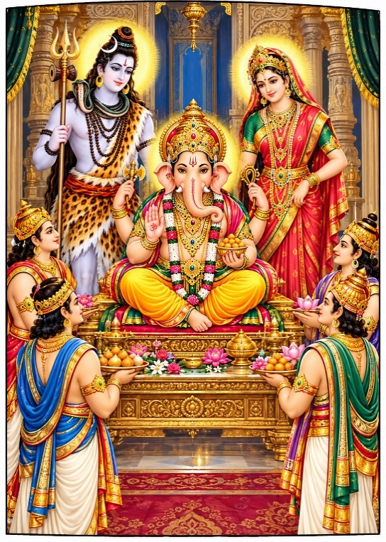
तदनन्तर स्वामी शिवको देखकर निर्भय होकर बृहस्पतिने उन्हें प्रणाम करके कहा— ‘हे ईश! ये देवता आपका दर्शन करके वरप्राप्तिके लिये आपके घर आये हुए हैं। देवताओंका अपकार करनेवाले दैत्यों आदिके द्वारा निर्विघ्नतापूर्वक समस्त कर्मोंकी सिद्धिके लिये आप सदा प्रार्थित हैं। अतः आप देवताओंके अपकारी दैत्योंके विघ्नयुक्त कर्मका कारण बनिये और प्रसन्न होइये; यही हमलोगोंका वर है’॥ ४-६॥
तब यह सुनकर उन पिनाकधारी सुरेश्वर शिवने देवताओंके स्वामी गणेश्वरका शरीर धारण किया। तदनन्तर गणेश्वरों तथा [ब्रह्मा आदि] सुरेश्वरोंने समस्त लोकोंको उत्पन्न करनेवाले तथा संसारका कष्ट दूर करनेवाले शुभ [गजाननरूपी] महेश्वरकी स्तुति की॥ ७-८॥
इसके बाद अम्बिका [पार्वती] ने हाथीके समान मुख धारण किये हुए और [हाथोंमें] त्रिशूल तथा पाश लिये हुए समस्त लोकोंके उत्पादक कल्याणकारी गजाननको जन्म दिया॥ ९॥
उस समय सिद्धों, मुनियों, आकाशचारियों तथा देवताओंने पुष्पवृष्टि की; तब सुरेश्वरोंने आलस्यरहित होकर एकदन्त महेश्वर गणेशको प्रणाम किया तथा उनकी स्तुति की॥ १०॥
उस समय उन शिवा-शिवसे उत्पन्न, विचित्र वस्त्र-आभूषणोंसे अलंकृत तथा सभी मंगलोंका आलय महेश्वर-पुत्र वह बालक गजानन मूर्तिमान् सुन्दर भैरवकी भाँति स्थित होकर पिता [शिव] तथा माताकी वन्दना करके नृत्य करने लगा॥ ११-१२॥
उत्पन्न हुए पुत्रको देखकर भगवान् सर्वेश्वर भवने गजाननके लिये सभी [जातकर्म आदि] संस्कारोंको स्वयं किया॥ १३॥
इसके बाद जगद्गुरु महादेव भवने स्वयं [अपने] परम सुखदायक हाथोंसे उसे उठाकर, आलिंगन करके तथा उसके सिरको सूंघकर कहा— ‘हे मेरे पुत्र! तुम्हारा अवतार दैत्योंके विनाशके लिये और देवताओं तथा ब्रह्मवादी द्विजोंके उपकारके लिये हुआ है। जिसने पृथ्वीतलपर दक्षिणाविहीन यज्ञ किया है, तुम स्वर्गपथमें स्थित रहते हुए उसके धर्ममें विघ्न डालो। इस पृथ्वीतलपर जो अन्यायपूर्वक अध्ययन, अध्यापन, व्याख्यान तथा [अन्य] कर्म करता हो; उसके प्राणोंको तुम सदा हरते रहो। हे नरश्रेष्ठ! हे प्रभो! वर्णसे च्युत तथा अपने धर्मसे रहित पुरुषों एवं स्त्रियोंके प्राणोंको हर लो। हे विनायक! जो स्त्रियाँ तथा पुरुष सदा कालरूप तुम्हारी पूजा करें, तुम उन्हें अपना साम्य प्रदान करो। हे बालगणेश्वर! तुम इस लोक तथा परलोकमें पूजित होकर युवा और वृद्ध भक्तोंकी रक्षा सम्पूर्ण प्रयत्नसे करो। तुम तीनों लोकोंमें सर्वत्र विघ्नगणेश्वरके रूपमें पूजनीय तथा वन्दनीय होओगे; इसमें संशय नहीं है। हे पुत्र! जो [विप्र] मेरी, विष्णुकी तथा ब्रह्माकी पूजा करते हैं अथवा [अग्निष्टोम आदि] यज्ञोंके द्वारा यजन करते हैं, उन ब्राह्मणोंके द्वारा भी सबसे पहले तुम पूज्य होओगे। तुम्हारी पूजा न करके जो कल्याणके लिये श्रौत-स्मार्त-लौकिक कर्म करेगा, उसका मंगल अमंगलके रूपमें परिवर्तित हो जायेगा। हे गजानन! तुम समस्त कार्योंकी सिद्धिके लिये ब्राह्मणों, क्षत्रियों, वैश्यों तथा शूद्रोंके द्वारा शुभ भक्ष्य-भोज्य आदिसे भली-भाँति पूजाके योग्य होओगे। गन्ध, पुष्प, धूप आदिसे तुम्हारी पूजा किये बिना तीनों लोकोंमें कहीं भी देवताओं तथा अन्य लोगोंसे भी कुछ नहीं प्राप्त हो सकता है। जो मानव विनायककी पूजा करेंगे, वे इन्द्र आदिके द्वारा भी पूजनीय होंगे; इसमें सन्देह नहीं है। यदि फलकी इच्छा रखनेवाले तुम्हारी पूजा नहीं करते हों, तो वे चाहे ब्रह्मा, विष्णु, स्वयं मैं, इन्द्र अथवा अन्य देवता ही क्यों न हों, उन्हें तुम विघ्नोंसे बाधित करो’॥ १४-२७॥
तब प्रभु गणपतिने विघ्नगणोंको उत्पन्न किया और वे गणोंके साथ शिवजीको नमस्कार करके उनके आगे खड़े हो गये॥ २८॥
उसी समयसे लोग इस लोकमें गणपतिकी पूजा करने लगे और वे गणेश्वर दैत्योंके धर्ममें विघ्न डालने लगे। [हे ऋषियो!] मैंने आप लोगोंको स्कन्द (कार्तिकेय) के अग्रजकी उत्पत्तिका सम्पूर्ण आख्यान बता दिया। जो इसे पढ़ता है, सुनता है अथवा सुनाता है, वह सुखी हो जाता है॥ २९-३०॥
॥ इस प्रकार श्रीलिङ्गमहापुराणके अन्तर्गत पूर्वभागमें ‘विनायकोत्पत्ति’ नामक एक सौ पाँचवाँ अध्याय पूर्ण हुआ॥ १०५॥
एक सौ छठा अध्याय
दारुकासुरके विनाशके लिये भगवान् शिवद्वारा अपने शरीरसे काली तथा अष्टभैरवोंको प्रकट करना एवं शिवताण्डवनृत्यकी कथा
ऋषिगण बोले— [हे सूतजी!] हमलोगोंने स्कन्दके अग्रजका प्रादुर्भाव तो सुन लिया; अब आप हमलोगोंको यथार्थरूपसे यह बतायें कि शम्भुके नृत्यका आरम्भ कैसे तथा किसलिये हुआ?॥ १॥
सूतजी बोले— दारुक नामक एक दैत्य असुरोंमें उत्पन्न हुआ। तपस्यासे पराक्रम प्राप्त करके कालाग्निके समान वह [असुर] देवताओं तथा उत्तम द्विजोंको पीड़ित करने लगा॥ २॥
उस समय वह दारुक ब्रह्मा, ईशान, कुमार, विष्णु, यम, इन्द्र आदिके पास पहुँचकर उन देवताओंको सताने लगा, इससे वे देवता बहुत पीड़ित हुए। ‘यह असुर स्त्रीवध्य है’ — ऐसा सोचकर स्त्रीरूपधारी तथा युद्धके लिये स्थित उन स्तुत्य ब्रह्मा आदिके साथ वह असुर युद्ध करने लगा॥ ३-४॥
हे द्विजो! तब उसके द्वारा बाधित किये गये वे सभी [देवतागण] ब्रह्माके पास पहुँचकर उनसे सब कुछ निवेदन करके पुनः उन [ब्रह्माके] साथ उमापतिके यहाँ जाकर पितामहको आगे करके [शिवकी] स्तुति करने लगे। इसके बाद देवेशके निकट जाकर अत्यन्त विनम्र होकर प्रणाम करके ब्रह्माने कहा— ‘हे भगवन्! दारुक महाभयंकर है; हमलोग उससे पहले ही पराजित हो चुके हैं। स्त्रीके द्वारा वध्य उस दैत्य दारुकका संहार करके आप हमलोगोंकी रक्षा कीजिये’॥ ५-७॥
ब्रह्माजीकी प्रार्थना सुनकर भगके नेत्रोंको नष्ट करनेवाले भगवान् देवेशने देवी गिरिजासे हँसते हुए कहा— ‘हे शुभे! हे वरानने! मैं सभी लोकोंके हितके लिये इस स्त्रीवध्य दारुकके वधहेतु आज आपसे प्रार्थना करता हूँ’॥ ८-९॥
तब उनका वचन सुनकर संसारको उत्पन्न करनेवाली उन देवेश्वरीने जन्मके लिये तत्पर होकर शिवके शरीरमें प्रवेश किया। वे [पार्वती] देवताओंमें श्रेष्ठ देवेश्वरमें अपने सोलहवें अंशसे प्रविष्ट हुईं; उस समय ब्रह्मा, इन्द्र आदि प्रधान देवता भी इसे नहीं जान पाये। मंगलमयी पार्वतीको पूर्ववत् शम्भुके समीप स्थित देखकर सब कुछ जाननेवाले ब्रह्मा भी उनकी मायासे मोहित हो गये थे॥ १०-१२॥
उन देवदेवके शरीरमें प्रविष्ट हुईं उन पार्वतीने उनके कण्ठमें स्थित विषसे अपने शरीरको बनाया॥ १३॥
इसके बाद उन पार्वतीको विषभूता जानकर कामशत्रु [शिव]-ने अपने तीसरे नेत्रसे कालकण्ठी (कृष्णवर्णके कण्ठवाली) कपर्दिनी कालीको उत्पन्न किया॥ १४॥
जब विषके कारण कृष्णवर्णके कण्ठवाली काली प्रादुर्भूत हुईं, उस समय विपुल विजयश्री भी उत्पन्न हुईं। अब असिद्धिके कारण दैत्योंकी पराजय निश्चित है, इससे भवानी तथा परमेश्वर [शिव] को प्रसन्नता हुई॥ १५॥
विषसे अलंकृत कृष्णवर्णके कण्ठवाली तथा अग्निके सदृश स्वरूपवाली उस प्रादुर्भूत कालीको देखकर सभी देवता, सिद्धगण और विष्णु-ब्रह्मा-इन्द्र आदि प्रधान देवता भी उस समय भयके कारण भागने लगे॥ १६॥
उनके ललाटमें शिवकी भाँति [तीसरा] नेत्र था, मस्तकपर अति तीव्र चन्द्ररेखा थी, कण्ठमें [कालकूट] विष था, हाथमें विकराल तीक्ष्ण त्रिशूल था और वे [सर्पोंके हार-कुण्डल आदि] आभूषण धारण किये हुए थीं॥ १७॥
कालीके साथ दिव्य वस्त्र धारण किये हुईं तथा सभी आभूषणोंसे विभूषित देवियाँ, सिद्धोंके स्वामी, सिद्धगण तथा पिशाच भी उत्पन्न हुए॥ १८॥
तब उन पार्वतीकी आज्ञासे परमेश्वरी [काली]-ने सुराधिपोंको मारनेवाले असुर दारुकका वध कर दिया॥ १९॥
हे श्रेष्ठ विप्रो! उनके अतिशय वेग तथा क्रोधकी अग्निसे यह सम्पूर्ण जगत् व्याकुल हो उठा। तब ईश्वर भव भी मायासे बालरूप धारणकर उन कालीकी क्रोधाग्निको पीनेके लिये [काशीमें] श्मशानमें [जाकर] रोने लगे॥ २०-२१॥
हे द्विजो! उन बालरूप ईशानको देखकर उनकी मायासे मोहित उन कालीने उन्हें उठाकर मस्तक सूंघकर अपना वक्षस्थित स्तन ग्रहण कराया॥ २२॥
तब वे बालरूप शिव दूधके साथ उनका क्रोध भी पी गये और इस प्रकार वे इस क्रोधसे क्षेत्रोंकी रक्षा करनेवाले हो गये। उन बुद्धिमान् क्षेत्रपाल [भैरव]-की भी आठ मूर्तियाँ हो गयीं। इस प्रकार वे काली उस बालकके द्वारा क्रोधमूच्छित (नष्ट संज्ञावाली) कर दी गयीं॥ २३-२४॥
इसके बाद प्रीतियुक्त देवदेव शिवने इन [काली]-की प्रसन्नताके लिये सन्ध्याकालमें श्रेष्ठ भूतों तथा प्रेतोंके साथ ताण्डव [नृत्य] किया॥ २५॥
शम्भुके नृत्यामृतका कण्ठपर्यन्त पान करके वे परमेश्वरी [उस] श्मशानमें सुखपूर्वक नाचने लगीं और योगिनियाँ भी उनके साथ नाचने लगीं॥ २६॥
वहाँपर ब्रह्मा-विष्णु-इन्द्रसहित सभी देवताओंने सभी ओरसे कालीको तथा पुनः देवी पार्वतीको प्रणाम किया और उनकी स्तुति की॥ २७॥
[हे ऋषियो!] इस प्रकार मैंने संक्षेपमें शूलधारी प्रभुके ताण्डवनृत्यका वर्णन कर दिया; ‘योगके आनन्दके कारण विभु [शिव]-का ताण्डव होता है’ — ऐसा अन्य लोग कहते हैं॥ २८॥
॥ इस प्रकार श्रीलिङ्गमहापुराणके अन्तर्गत पूर्वभागमें ‘शिवताण्डवकथन’ नामक एक सौ छठा अध्याय पूर्ण हुआ॥ १०६॥
एक सौ सातवाँ अध्याय
शिवभक्त उपमन्युकी कथा तथा उमामहेश्वरद्वारा उसपर अनुग्रह करना
ऋषिगण बोले — हे सूतजी! पूर्वकालमें उपमन्युने महेश्वरसे गणाधिप पद प्राप्त करके पुनः क्षीरसागरको कैसे प्राप्त किया; आप इस समय बतानेकी कृपा कीजिये १॥
सूतजी बोले— हे ऋषियो! इस प्रकार कालीको उत्पन्न करके त्रिनेत्र शिवके चले जानेपर उपमन्युने तपस्याके द्वारा उनकी पूजा करके फल प्राप्त किया था॥ २॥
हे श्रेष्ठ द्विजो! ‘उपमन्यु’ — इस नामसे प्रसिद्ध एक मुनि थे; कुमारके समान तेजस्वी उन्होंने किसी समय स्वेच्छानुसार खेलते हुए [अपने] मामाके आश्रममें थोड़ा-सा दूध पी लिया, तब ईर्ष्याके कारण उनके मामाके पुत्रने उत्तम दुग्धका पान किया॥ ३-४॥
तब इच्छानुसार दुग्ध पीकर उसे पासमें खड़ा देखकर उपमन्युने अपनी मातासे कहा— हे मातः! हे महाभागे! हे तपस्विनि! आप मुझको गायका दुग्ध दीजिये, जो अत्यन्त स्वादिष्ट हो, गर्म हो तथा अल्प न हो; मैं आपको नमस्कार करता हूँ॥ ५½॥
सूतजी बोले— इस प्रकार पुत्रके द्वारा स्नेहपूर्वक कही गयी वह बात सुनकर माता आदरके साथ पुत्रका आलिंगन करके दुःखित हो गयी और अपनी निर्धनताका स्मरणकर व्याकुल होकर विलाप करने लगी। हे द्विजो! बार-बार दूधका स्मरण करके महातेजस्वी उपमन्यु भी मातासे रोते हुए यही कहते थे— ‘मुझे दो, मुझे दो’॥ ६-७॥
तत्पश्चात् उंछवृत्ति (फसल कट जानेके बाद खेतमें पड़े दानोंको बटोरना) से अर्जित बीजोंको स्वयं पीसकर पुनः बीजके उस आटेको जलके साथ मिलाकर मधुरभाषिणी वह माता बोली, ‘हे मेरे पुत्र! आओ, आओ।’ इसके बाद सान्त्वनापूर्वक पुत्रको पकड़कर आलिंगन करके दुःखसे व्याकुल माताने उसे कृत्रिम दुग्ध दे दिया॥ ८-९॥
तब माताके द्वारा दिये गये उस कृत्रिम दुग्धको पीकर द्विजश्रेष्ठ [उपमन्यु]-ने अति विह्वल होकर मातासे कहा— ‘यह दूध नहीं है’॥ १०॥
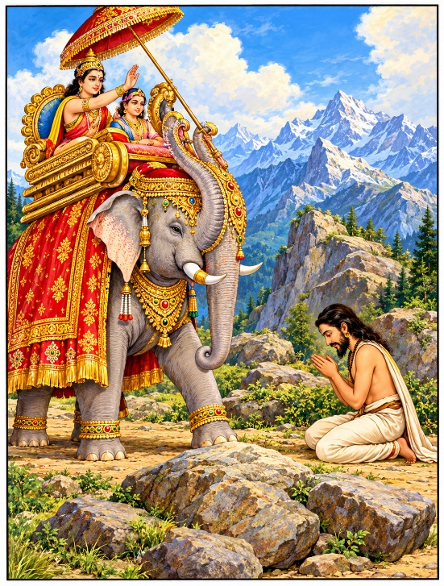
तब दुःखसे भरी हुई उस माताने बालककी ओर देखकर उसका मस्तक सूँघकर अपने हाथोंसे पुत्रके कमलसदृश विशाल नेत्रोंको पोंछकर कहा— ‘[हे पुत्र!] जो शिवके प्रति भक्तिरहित हैं, वे भाग्यहीन लोग रत्नोंसे परिपूर्ण तथा स्वर्ग-पातालमें गोचर होनेवाली नदियोंको नहीं देख पाते हैं। शिवजी जिनके ऊपर सदा प्रसन्न नहीं रहते हैं, वे लोग राज्य, स्वर्ग, मोक्ष और दुग्धसे बने हुए भोजन तथा अन्य प्रिय वस्तुओंको नहीं प्राप्त कर सकते हैं। शिवकी कृपासे ही सबकुछ प्राप्त होता है, अन्य देवताओंकी कृपासे नहीं; अन्य देवताओंमें परायण रहनेवाले दुःखसे व्यथित होकर [संसारचक्रमें] भ्रमण करते रहते हैं। हमलोगोंको दूध कैसे मिल सकता है; क्योंकि हमलोगोंने महादेवकी पूजा नहीं की है। हे पुत्र! शिवको उद्देश्य करके पूर्वजन्ममें जो कुछ समर्पित किया जाता है, वही प्राप्त होता है; विष्णु अथवा अन्य देवताको उद्देश्य करके देनेपर कुछ नहीं प्राप्त होता है’॥ ११-१५½॥
तब माताका वचन सुनकर महातेजस्वी बालक उपमन्यु भी तपस्विनी माताको प्रणाम करके बोला— ‘हे महाभागे! शोकका त्याग करो; महादेवजी चाहे कहीं भी हों, मैं शीघ्र अथवा विलम्बसे क्षीरसमुद्रको प्राप्त कर लूँगा’॥ १६-१७½॥
सूतजी बोले— [हे ऋषियो!] उसे प्रणामकर वे [उपमन्यु] तप करनेके लिये प्रवृत्त हुए। तब माताने पुत्रसे कहा— ‘पूर्णरूपसे अत्यन्त शुभ तपस्या करो।’ उससे आज्ञा प्राप्त करके हिमवान् पर्वतपर जाकर वायुका आहार करते हुए एकाग्रचित्त होकर वे अति कठोर तप करने लगे॥ १८-१९½॥
उस विप्रकी तपस्यासे [सम्पूर्ण] जगत् तप्त हो उठा। तब सभी श्रेष्ठ देवताओंने विष्णुको प्रणाम करके वह बात बतायी। इसके बाद उनका वचन सुनकर भगवान् पुरुषोत्तम ‘यह क्या है’— ऐसा सोचकर पुनः उसका कारण जानकर महेश्वरके दर्शनकी इच्छासे शीघ्रतापूर्वक मन्दर पर्वतपर गये॥ २०-२२॥
शिवको देखकर उन्हें प्रणाम करके विष्णुने हाथ जोड़कर यह कहा— ‘हे भगवन्! उपमन्यु नामसे प्रसिद्ध किसी ब्राह्मणने दुग्धके लिये [अपनी] तपस्यासे सबको जला डाला; आप उसे रोकिये’॥ २३½॥
इसके अनन्तर पिनाकधारी देव परमेश्वरने इन्द्रका रूप धारणकर वहाँ जानेका विचार किया। तत्पश्चात् वे सदाशिव देवराज [इन्द्र]-का रूप धारणकर श्वेत गजराजपर आरूढ़ होकर सुरों, असुरों, सिद्धों तथा महान् नागोंके साथ मुनिके तपोवनमें गये॥ २४-२५॥
उनके साथ ही उस हाथीपर चढ़कर सूर्यदेव [अपने] बाएँ हाथमें बालव्यजन तथा दाएँ हाथमें श्वेत छत्र लेकर शचीसहित सुरेन्द्रकी सेवा कर रहे थे॥ २६॥
उस समय उमासहित शक्ररूपी भगवान् सदाशिव श्वेत छत्रसे उसी तरह सुशोभित हो रहे थे, जैसे चन्द्रबिम्बसे मन्दर [पर्वत] सुशोभित होता है॥ २७॥
इस प्रकार इन्द्रका स्वरूप धारण करके परमेश्वर [उस] उपमन्युपर अनुग्रह करनेके लिये उसके आश्रममें गये॥ २८॥
हे मुनिवरो! इन्द्ररूपधारी उन परमेशान शिवको देखकर सिर झुकाकर प्रणाम करके मुनि [उपमन्यु]-ने स्वयं कहा— ‘मेरा यह आश्रम पवित्र हो गया; क्योंकि देवताओंके स्वामी, जगत्पति, भगवान् प्रभु इन्द्र सूर्यके साथ [यहाँ] स्वयं आये हुए हैं’॥ २९-३०॥
ऐसा कहकर हाथ जोड़कर खड़े हुए द्विजको देखकर इन्द्ररूपधारी शिव गम्भीर वाणीमें बोले— ‘हे सुव्रत! मैं तुम्हारे इस तपसे प्रसन्न हो गया हूँ; वर माँगो। हे [ऋषि] धौम्यके अग्रज! हे महामते! मैं [तुम्हें] समस्त अभीष्ट प्रदान करता हूँ’॥ ३१-३२॥
तब शक्ररूपी शिवके द्वारा ऐसा कहे जानेपर मुनिश्रेष्ठने हाथ जोड़कर कहा— ‘मैं शिवमें भक्तिका वर माँगता हूँ’॥ ३३॥
तब मुनिका वचन सुनकर इन्द्रका रूप धारण करनेवाले प्रभु ईशान कुपितकी भाँति व्यग्रतापूर्वक बोले— ‘हे देवर्षे! तीनों लोकोंके अधिपति तथा सभी देवताओंसे नमस्कार किये जानेवाले मुझ ईश्वर देवराज इन्द्रको क्या तुम नहीं जानते हो? हे विप्रर्षे! तुम मेरे भक्त हो जाओ और सर्वदा मेरी ही पूजा करो, मैं तुम्हें सब कुछ प्रदान करता हूँ, तुम्हारा कल्याण हो; तुम निर्गुण शिवका त्याग कर दो’॥ ३४-३६॥
तब इन्द्रका कर्णविदारक वचन सुनकर उपमन्युने पवित्र पंचाक्षरमन्त्रका जप करते हुए यह कहा— ‘अब मैं समझता हूँ कि निश्चय ही कोई अधम दैत्य स्वयं इन्द्रके स्वरूपमें मेरे धर्ममें विघ्न डालनेके लिये यहाँ आया है; इसमें सन्देह नहीं है। शिवनिन्दापरायण आपने ही प्रसंगवश महात्मा देवदेव [शिव]-की निर्गुणता भी बतायी है। अधिक कहनेसे क्या लाभ; मैंने आज अनुमान किया है कि पूर्वजन्ममें किया हुआ मेरा कोई महापाप अवश्य है, जिसके कारण मैंने शिवकी निन्दा सुनी है। जो शिवकी निन्दा सुनकर उसी क्षण उस [शिवनिन्दक] को मारकर अपने शरीरको त्याग देता है, वह शिवलोकको जाता है। जो [व्यक्ति] वाणीसे शिवनिन्दा करनेवालेकी जीभ उखाड़ लेता है, वह [अपनी] इक्कीस पीढ़ियोंका उद्धार करके शिवलोकको जाता है। दूधके लिये मेरी जो इच्छा है, वह अब दूर रहे; शिवके अस्त्रसे तुझ सुराधमका वध करके मैं [अपने] इस शरीरका भी त्याग कर दूँगा। माताने पहले जो कहा था, वह सत्य है; इसमें सन्देह नहीं है। हमलोगोंने पूर्वजन्ममें शिवकी पूजा नहीं की थी’॥ ३७-४४॥
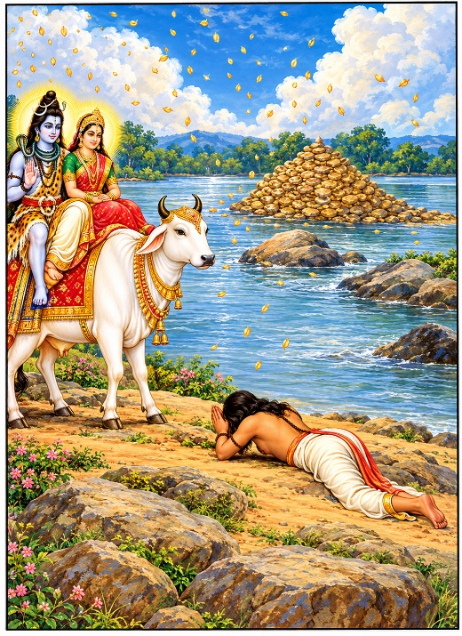
ऐसा कहकर निडरकी भाँति होकर मन्त्रवेत्ता उपमन्युने उन इन्द्रदेवको अथर्वास्त्रसे मार देनेका विचार किया। उस महातेजस्वीने भस्मके आधारसे एक मुट्ठी भस्म लेकर उसके लिये अथर्वास्त्रका सृजन किया और जोरसे ध्वनि की। तब आग्नेयी धारणाका ध्यान करके अपने देहको सूखे ईंधनकी तरह जलानेके लिये वह तेजस्वी अव्यय खड़ा हो गया॥ ४५-४७॥
उस विप्रके ऐसा निश्चय करनेपर भगके नेत्रको नष्ट करनेवाले भगवान् शिवने सोमधारणायोगसे उस योगी [उपमन्यु]-की [आग्नेयी] धारणाको रोक दिया। तब नन्दीके आदेशसे चन्द्रिक [नामक गण]-ने उसके कालाग्निसदृश अथर्वास्त्रका संहरण कर लिया॥ ४८-४९॥
इसके बाद भगवान् परमेश्वरने बालचन्द्रमासे शोभित मस्तकवाले [अपने] स्वरूपको धारण करके विप्रको दिखाया॥ ५०॥
उस समय बालक [उपमन्यु] के चारों ओर हजारों दुग्धधाराएँ, क्षीरसागर, मधुका समुद्र, दधिका सागर, घृतका सागर, फलका सागर, [अन्य] भक्ष्य-भोज्य पदार्थोंका सागर तथा अपूपोंके पर्वत उपस्थित हो गये॥ ५१-५२॥
तदनन्तर दयालु भगवान् [शिव] ने मुसकानयुक्त गिरिजाको देखकर तथा बन्धुजनोंसे घिरे हुए उपमन्युकी ओर दयापूर्वक देखकर मुसकराकर उससे कहा— ‘हे मेरे पुत्र! तुम अपने बान्धवोंके साथ इच्छानुसार भोगोंका उपभोग करो। हे उपमन्यो! हे महाभाग! देखो, ये पार्वती तुम्हारी माता हैं। मैंने आज तुम्हें अपना पुत्र बना लिया है और तुम्हें क्षीरसागर, मधुसागर, दधिसागर, घृत तथा ओदनका सागर, फलोंका सागर, लेह्य पदार्थोंका सागर, अपूपोंके पर्वत तथा भक्ष्य-भोज्य पदार्थोंका सागर प्रदान किया है। हे मुने! सभी लोकोंके पिता महादेव तुम्हारे पिता हैं और जगज्जननी महाभागा पार्वती तुम्हारी माता हैं; इसमें सन्देह नहीं है। मैंने तुम्हें अमरत्व तथा शाश्वत गाणपत्य प्रदान कर दिया, अब तुम अन्य वरोंको भी माँग लो, मैं तुम्हें दूंगा; इसमें तुम्हें सन्देह नहीं करना चाहिये’॥ ५३-५८॥
ऐसा कहकर महादेव विभु शिवने उसे दोनों हाथोंसे उठाकर उसका सिर सूंघकर पुनः उसे देवी [पार्वती] को दे दिया॥ ५९॥
हे श्रेष्ठ द्विजो! तब [अपने] पुत्रको देखकर गिरिराजपुत्री देवी [पार्वती] ने प्रसन्न होकर उसे योगैश्वर्य तथा ब्रह्मविद्या प्रदान की॥ ६०॥
उसने भी उन पार्वतीसे वर तथा शाश्वत कुमारत्व प्राप्त करके हर्षके कारण गद्गद वाणीसे महादेवकी स्तुति की और इसके बाद हाथ जोड़कर विरजेक्षण (सात्त्विकजनोंपर दृष्टि डालनेवाले) वरेण्य शिवको बार-बार प्रणाम करके वर माँगा— ‘हे देवदेवेश! प्रसन्न होइए। हे महादेव! आपमें मेरी अव्यभिचारिणी श्रद्धा रहे तथा सर्वदा आपका सान्निध्य प्राप्त हो’॥ ६१-६३॥
तब उसके ऐसा कहनेपर शंकरजी हँसते हुए उस विप्रको वांछित वर प्रदान करके वहींपर अन्तर्धान हो गये॥ ६४॥
॥ इस प्रकार श्रीलिङ्गमहापुराणके अन्तर्गत पूर्वभागमें ‘उपमन्युचरित’ नामक एक सौ सातवाँ अध्याय पूर्ण हुआ॥ १०७॥
एक सौ आठवाँ अध्याय
भगवान् श्रीकृष्णका गुरु उपमन्युके आश्रममें जाना और उनसे पाशुपतज्ञान प्राप्त करना तथा पाशुपतव्रतका माहात्म्य
ऋषिगण बोले— अक्लिष्ट कर्मवाले वासुदेव श्रीकृष्णने धौम्यके ज्येष्ठ भ्राता [उपमन्यु]-का दर्शन किया था और उनसे दिव्य पाशुपतव्रत ग्रहण किया था। हे सूतजी! बुद्धिमान् श्रीकृष्णने उनसे यह ज्ञान कैसे प्राप्त किया; उस पापनाशिनी कथाको बतानेकी कृपा कीजिये॥ १-२॥
सूतजी बोले— [हे ऋषियो!] सनातन वासुदेव अपनी इच्छासे अवतीर्ण हुए थे, फिर भी उन्होंने मानवरूपकी निन्दा करते हुए देहशुद्धि की थी॥ ३॥
भगवान् [श्रीकृष्ण] पुत्रप्राप्तिहेतु तप करनेके लिये उपमन्युके आश्रममें गये और उन्होंने वहाँ उन मुनिका दर्शन किया। हे द्विजो! उन धौम्याग्रजको देखकर अत्यन्त सम्मानके साथ उनकी तीन बार प्रदक्षिणा करके श्रीकृष्णने उन्हें नमस्कार किया॥४-५॥
उन मुनिके अवलोकनमात्रसे बुद्धिमान् श्रीकृष्णका सम्पूर्ण देहजनित तथा कर्मजनित मल नष्ट हो गया॥ ६॥
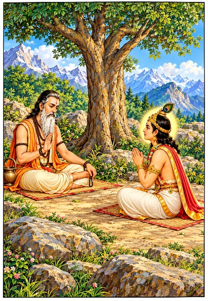
हे विप्रेन्द्रो! महातेजस्वी उपमन्युने भस्मोद्धूलन करके प्रसन्नचित्त होकर क्रमसे अग्नि, वायु आदि मन्त्रोंके द्वारा उन्हें दिव्य पाशुपत ज्ञान प्रदान किया॥ ७½॥
हे द्विजो! मुनिकी कृपासे वे श्रीकृष्ण पाशुपतव्रतमें मान्य हो गये। [अपनी] तपस्यासे एक वर्षके अन्तमें पार्वती तथा गणोंसहित अव्यग्र देव महेश्वरका दर्शन करके उन्होंने अपना पुत्र प्राप्त किया। उसी समयसे प्रशस्त व्रतवाले दिव्य मुनिगण तथा पशुपतिके सभी भक्त सदा उन कृष्णको घेरकर स्थित रहने लगे॥ ८-१०॥
[हे ऋषियो!] सदा सभी प्राणियोंकी मुक्तिके लिये मैं अन्य व्रतको भी बताऊँगा। सुवर्णमयी मेखला (परिनालिका) बनाकर उसके आधार, दण्डधारण (जलनिवारक बाहरी भाग), पिण्डिक (लिङ्ग), व्यजन, दीक्षादण्ड—यह सब सोनेका बनाना चाहिये; साथ ही मषीपात्रयुक्त लेखनी, छुरी सहित कैंची तथा जलपात्र भी स्वर्णमय बनाकर इन सभी सामग्रियोंको भस्मसे उद्धूलित शरीरवाले पुरुषोंके द्वारा या स्त्रीके द्वारा किसी पशुपति-भक्तको दे दिया जाना चाहिये। बुद्धिमान् व्यक्तिको चाहिये कि अपने धन-सामर्थ्यके अनुसार सोने, चाँदी अथवा ताँबेकी ही सामग्री समर्पित करे और उस योगीकी पूजा करे॥ ११-१४॥
[ऐसा दान करनेवाले] वे सभीलोग सम्पूर्ण कुलसहित पापमुक्त होकर दिव्य रुद्रपदको जाते हैं; इसमें सन्देह नहीं करना चाहिये। अतः गृहस्थ इस दानके द्वारा संसार [चक्र] से छूट जाता है। योगियोंके लिये यह दान करनेसे शिव शीघ्र ही प्रसन्न होते हैं। यदि कोई उत्तम मोक्ष चाहता हो, तो उसे भव्य राज्य, पुत्र, धन, अश्व, यान— यहाँतक कि सर्वस्वका दान कर देना चाहिये। [इस] अनित्य शरीरसे भव्य, नित्य (शाश्वत) तथा संसार-सागरसे पार करनेवाले पाशुपतव्रतको प्रयत्नपूर्वक अवश्य सिद्ध करना चाहिये॥ १५-१८॥
[हे ऋषियो!] मैंने संक्षेपमें आपलोगोंको यह सब बता दिया। जो इसे पढ़ता है अथवा सुनता है, वह विष्णुलोकको जाता है; इसमें संशय नहीं है॥ १९॥
॥ इस प्रकार श्रीलिङ्गमहापुराणके अन्तर्गत पूर्वभागमें ‘पाशुपतव्रतमाहात्म्यवर्णन’ नामक एक सौ आठवाँ अध्याय पूर्ण हुआ॥ १०८॥
॥ समाप्तश्चायं पूर्वभागः॥
॥ श्रीलिङ्गमहापुराणका पूर्वभाग पूर्ण हुआ॥
॥ श्रीसाम्बसदाशिवाय नमः॥
श्रीलिङ्गमहापुराण [ उत्तरभाग ]
पहला अध्याय
भगवद्गुणगानकी महिमामें कौशिक ब्राह्मणकी कथा
ऋषि बोले— हे सूतजी! समस्त देवताओं और ईश्वरोंके ईश्वर भगवान् कृष्ण इस लोकमें किससे सन्तुष्ट होते हैं? आप हम लोगोंको बतायें; आप सम्पूर्ण तत्त्वोंके ज्ञाता हैं॥१॥
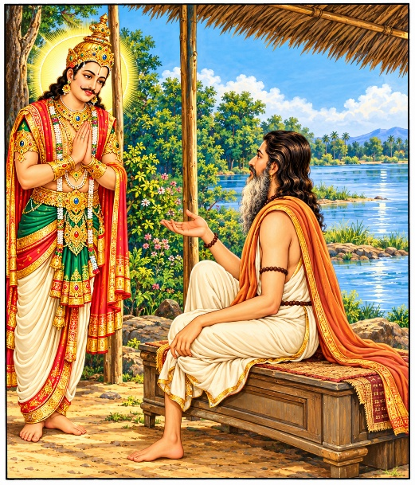
सूतजी बोले— हे विप्रवरो! पूर्वकालमें अम्बरीषने भी महातेजस्वी महामुनि मार्कण्डेयसे [इस विषयमें] पूछा था; मैं उसे यथार्थरूपसे बता रहा हूँ॥ २॥
अम्बरीष बोले— हे मुने! हे महामते! हे मार्कण्डेयजी! आप समस्त धर्मोंके पूर्ण ज्ञाता, अत्यन्त पुरातन तथा पुराणतत्त्वोंके विद्वान् हैं॥ ३॥
हे महाप्राज्ञ! नारायणके द्वारा निर्मित दिव्य धर्मोंमें कौन-सा धर्म श्रेष्ठ तथा उत्तम है? हे सुव्रत! उसे आप यहाँपर भक्तोंके कल्याणार्थ बतायें॥ ४॥
सूतजी बोले— उनका यह वचन सुनकर [मार्कण्डेयजी] उठ करके दोनों हाथ जोड़कर अविनाशी तथा अच्युत भगवान् नारायण कृष्णका स्मरण करते हुए कहने लगे॥५॥
मार्कण्डेयजी बोले— हे राजन्! सम्यक् प्रकारसे सुनिये; भक्तिपूर्वक [अनुष्ठित किये गये] भगवान् नारायणके स्मरण, पूजन और प्रणाम— इनमें से प्रत्येकको अश्वमेधयज्ञके समान फल प्रदान करनेवाला कहा जाता है; क्योंकि एकमात्र वे प्रभु जनार्दन ही परम पुरुष परमात्मा हैं, जिनसे आश्रय लेकर ब्रह्माजी जगत्के स्रष्टा कहे जाते हैं। मैंने जो देखा है तथा जाना है, उसी एकमात्र धर्मका वर्णन करूँगा॥ ६-८॥
प्राचीनकालमें त्रेतायुगमें एक कौशिक नामवाले ब्राह्मण थे; वे नित्य-निरन्तर वासुदेवपरायण रहते हुए सामगानमें तल्लीन रहते थे॥ ९॥
भगवान् विष्णुके उदार चरित्रका बार-बार गान करते हुए वे भोजन करने, बैठने तथा शयनमें सदा उन्हींमें अपना चित्त लगाये रहते थे॥ १०॥
परम पवित्रक्षेत्रस्थ भगवान् विष्णुके मन्दिरमें आकर वे ताल, स्वर और लयसे युक्त, मूर्च्छना और स्वरयोग, बृहद्रथन्तर आदि श्रुतिभेदसे अन्वित भगवान् श्रीहरिका गान करते थे। इस प्रकार भक्तियोगमें सदा स्थित रहकर वे वहींपर भिक्षामात्र ग्रहण करते हुए रहते थे॥ ११-१२॥
उस समय उन्हें वहाँ गाते हुए देखकर ‘पद्माख्य’ (पद्माक्ष) — इस नामसे विख्यात किसी द्विजने उन्हें अन्न प्रदान किया। तब महातेजस्वी कौशिक अपने कुटुम्बसहित उष्ण अन्नको ग्रहण करके प्रसन्नतापूर्वक प्रभु श्रीहरिका गुणगान करते हुए वहींपर स्थित हो गये॥ १३-१४॥
वह पद्माख्य भी सदा उसे सुनता रहता था और समय-समयपर वहाँसे चला भी जाता था। किसी समय कालयोगसे द्विज कौशिकके सात शिष्य वहाँ आये। वे ब्राह्मण, क्षत्रिय तथा वैश्यकुलमें उत्पन्न; ज्ञान और विद्यासे परिपूर्ण; विशुद्ध मनवाले तथा भगवान् वासुदेवके अनन्य भक्त थे॥ १५-१६॥
स्वयं पद्माक्षने उन्हें भी अन्नादिसहित उपयोगी पदार्थ प्रदान किये। वे कौशिक प्रसन्नचित्त होकर अपने शिष्योंके साथ वहींपर विष्णुमन्दिरमें प्रभु श्रीहरिका सम्यक् रूपसे सदा गुणगान करते रहते थे॥ १७½॥
वहींपर मालव नामक विष्णुपरायण वैश्य प्रसन्नचित्त होकर प्रतिदिन भगवान् श्रीहरिके लिये दीपमाला अर्पित किया करता था। उस वैश्यकी मालवी नामवाली पतिव्रता भार्या भी श्रीहरिके उस सम्पूर्ण स्थानको सम्यक् प्रकारसे गोमयसे नित्य लीपकर अत्यन्त प्रसन्न होकर उत्तम गानका श्रवण करती हुई अपने पतिके साथ वहाँ रहती थी॥ १८-२०॥
उसी समय प्रशस्त व्रतवाले पचास श्रेष्ठ ब्राह्मण श्रीहरिका गान सुननेके निमित्त कुशस्थलसे वहाँपर आ गये। गान-विद्याके मूल रहस्यको जाननेवाले वे ब्राह्मण महात्मा कौशिकके कार्योंको सम्पन्न करते हुए और [श्रीहरिका गुणगान] सुनते हुए वहीं रहने लगे॥ २१-२२॥
उस समय उन कौशिकका गान प्रसिद्ध हो गया था, अतः उस प्रसिद्धिको सुनकर राजा कलिङ्गने वहाँ आकर यह वचन कहा— हे कौशिक! आज आप अपने गणोंके साथ मेरे लिये गान कीजिये, जिसे आप सभी लोग तथा कुशस्थलके नागरिक भी सुनें॥ २३-२४॥
उसे सुनकर कौशिकने सान्त्वनाभरी वाणीमें राजासे कहा— हे महाराज! मेरी जिह्वा तथा वाणी भगवान् श्रीहरिके अतिरिक्त किसी अन्यकी यहाँतक कि इन्द्रकी भी स्तुति नहीं करती; अतः यह जिह्वा नहीं बोलेगी॥ २५½॥
उनके ऐसा कहनेपर उनके वासिष्ठ, गौतम, हरि, सारस्वत, चित्र, चित्रमाल्य, शिशु आदि जो शिष्यगण थे; उन्होंने भी राजासे वैसा ही कहा, जैसा कौशिकने कहा था। विष्णुपरायण उन श्रोताओंने भी कहा — हे पार्थिव! [हम लोगोंके] ये कान श्रीहरिको छोड़कर किसी दूसरेका गुणगान नहीं सुनते। हम लोग उन्हींका यशोगान सुनते हैं; कोई दूसरी स्तुति नहीं सुनते॥ २६-२८½॥
उसे सुनकर राजाने रुष्ट होकर अपने सेवकोंसे कहा— अब तुम लोग गाओ, जिससे ये ब्राह्मण मेरी कीर्ति सुनें। चारों ओरसे गाये जानेवाले मेरे यशको ये कैसे नहीं सुनेंगे?॥ २९-३०॥
तब उनके ऐसा कहनेपर वे भृत्यगण राजाका उत्तम यशोगान करने लगे। गानके आरम्भ होनेपर बलपूर्वक अवरुद्ध मार्गवाले वे विप्र बहुत दुःखित हुए और उन्होंने काष्ठकी खूँटियोंसे एक-दूसरेके कानोंको बन्द कर दिया॥ ३१½॥
यह राजा अपने यशके गानमें प्रवृत्त [लिप्त] है और हमको बलपूर्वक गानेको कहेगा। कौशिकादि ब्राह्मणोंने उस राजाकी इस मनोवृत्तिको जानकर अपनी जिह्वाके अग्रभागको अपने हाथोंसे काट लिया॥ ३२-३३॥
तदनन्तर राजाने अत्यन्त कुपित होकर उन्हें अपने राज्यसे निर्वासित कर दिया। तब अपना सारा धन लेकर वे विप्र चले गये और उत्तर दिशामें पहुँचकर यथासमय स्थूलशरीरके वियोग (मृत्यु) को प्राप्त हो गये। तब उन्हें आया हुआ देखकर ‘अब क्या किया जाय’— यह सोचकर यमराज व्याकुल हो उठे॥ ३४-३५॥
हे राजन्! यमराजकी यह चेष्टा देखकर ब्रह्माजीने देवाधिपोंसे उसी क्षण कहा— ‘आपलोग कौशिक आदि द्विजोंको अभी सुखमय निवास प्रदान कीजिये।’ यदि आप लोग अपना देवत्व चाहते हैं, तो वे विप्र जो [श्रीहरिके] गान तथा चित्तवृत्तिके निरोधके द्वारा भगवान् जनार्दनकी नित्य पूजा करते हैं, उन्हें ले आइये; इससे आप लोगोंका कल्याण होगा॥ ३६-३७॥
[ब्रह्माजीके द्वारा] इस प्रकार कहे गये वे लोकपाल ‘हे कौशिक!’, कुछ देवता ‘हे मालव!’ तथा अन्य देवतागण ‘हे पद्माक्ष!’ — ऐसा बार-बार पुकारते हुए उन विप्रोंके पास पहुँचकर उन्हें साथमें लेकर आकाशमार्गसे शीघ्र ही क्षणभरमें ब्रह्मलोक पहुँच गये॥ ३८-३९॥
तत्पश्चात् कौशिक आदिको देखकर लोकपितामह ब्रह्माने आगे बढ़कर स्वागतके द्वारा समुचितरूपसे उनका अत्यधिक सम्मान किया। हे नृपश्रेष्ठ! ब्रह्माजीके द्वारा [उन विप्रोंके प्रति] किये गये महान् सम्मानको देखकर देवताओंमें परस्पर कोलाहल होने लगा॥ ४०-४१॥
तदनन्तर वासुदेवपरायण भगवान् ब्रह्मा उन श्रेष्ठ देवताओंको ऐसा करनेसे रोककर कौशिक आदि मुनियोंको लेकर देवताओंके साथ शीघ्र ही विष्णुलोक चले गये॥ ४२½॥
वहाँ भगवान् नारायण श्वेतद्वीपमें निवास करनेवाले ज्ञानयोगेश्वर, विष्णुभक्त, एकनिष्ठ, सिद्ध, नारायणके समान विग्रहवाले, दिव्य, चार भुजाएँ धारण करनेवाले, मनोहर, श्रीविष्णुके चिह्नोंसे युक्त, दीप्तिमान् तथा निर्विकार अट्ठासी हजार महापुरुषोंके द्वारा एवं हम लोगों, नारद-सनक आदि मुनियों, अनेकविध निष्पाप प्राणियों तथा दिव्य स्त्रियोंके द्वारा सभी ओरसे सेवित हो रहे थे। वे माधव श्रीहरि मध्य भागमें स्थित हजार द्वारोंवाले, हजार योजन विस्तारवाले, अलौकिक, मणिनिर्मित तथा मनोहर विमानमें स्वच्छ एवं अद्भुत सिंहासनपर विराजमान होकर लोककार्यमें तत्पर लोगोंपर दृष्टि दिये हुए सुशोभित हो रहे थे॥ ४३-४८॥
उसी समय कौशिक आदि मुनियोंसहित भगवान् ब्रह्मा गरुड़ध्वज श्रीहरिके सम्मुख आकर प्रणाम करके उनकी स्तुति करने लगे॥ ४९॥
तत्पश्चात् ऐश्वर्यसम्पन्न नारायण भगवान् श्रीहरिने उन सबको देखकर अत्यन्त प्रेमके साथ उन्हें क्रमसे कौशिक आदि [नाम लेकर] पुकारा। इस महान् आश्चर्यके घटित होनेपर वहाँ जयकारकी तीव्र ध्वनि होने लगी॥ ५०-५१½॥
विश्वात्मा विष्णुने ब्रह्मासे कहा— हे ब्रह्मन्! मेरा कथन सुनिये, साध्य-साधनमें तत्पर रहनेवाले ये कुशस्थल-निवासी विप्र कौशिकका हित करनेके लिये प्रवृत्त हैं। ये ज्ञानके तत्त्वार्थके पण्डित, मेरी कीर्तिके श्रवणमें तत्पर रहनेवाले तथा देवताओंके अनन्य भक्त हैं; ये साध्यदेव हों। इन्हें मेरे समीप तथा अन्यत्र भी सर्वदा प्रवेश दीजिये॥ ५१½-५३½॥
ऐसा कहकर प्रभु माधवने कौशिकसे कहा— हे महाप्राज्ञ! आप अपने शिष्योंके साथ सदा मेरे समीप विराजमान रहें। मेरे गणाधिप बनकर अब आप वहीं स्थित रहें, जहाँ मैं रहूँ॥ ५४-५५॥
इसी प्रकार दामोदर श्रीहरिने मालव तथा मालवीसे कहा— ‘हे मालव! आप मेरे लोकमें अपनी भार्याके साथ दिव्य रूप धारण करके ऐश्वर्यसम्पन्न होकर मेरा यशोगान सुनते हुए राजाके रूपमें प्रतिष्ठित होकर यथेच्छया निवास कीजिये जबतक लोक स्थित रहें, तबतक आप यहाँ यथेच्छ रहें’॥ ५६-५७॥
तदनन्तर भगवान् माधवने पद्माक्षसे कहा— आप ‘धनद’ हो जाइये; धनोंके स्वामी बनकर आप पुनः यथासमय मेरे पास आकर मेरा दर्शन करके सुखपूर्वक सदा राज्य कीजिये॥ ५८-५९½॥
ऐसा कहकर श्रीहरि विष्णुने ब्रह्मासे यह कहा— इन कौशिकके गानसे मेरी योगनिद्रा समाप्त हो गयी है। ये अपने शिष्योंके साथ विष्णुस्थलमें सम्यक् रूपसे मेरी स्तुति कर रहे थे। क्रूर तथा अत्यधिक शक्तिशाली राजा कलिङ्गने इन्हें [देशसे] निकाल दिया है। इन्होंने अपनी जिह्वा काटकर ‘श्रीहरिके अतिरिक्त किसी अन्यकी स्तुति मैं किसी भी प्रकारसे नहीं करूँगा’— ऐसा निश्चय कर लिया था, अतः ये मेरे लोकको प्राप्त हुए हैं। इसी प्रकार इन संयमी, मेरे भक्त तथा यशस्वी विप्रोंने काष्ठकी खूँटियाँ एक-दूसरेके कानोंमें ठोंककर यह प्रतिज्ञा कर ली थी कि हमलोग श्रीहरिकी कीर्तिको छोड़कर अन्य कुछ भी नहीं सुनेंगे। अतएव इन ‘विप्रों’ने भी देवत्व तथा मेरा सान्निध्य प्राप्त किया है, ये मालव भी अपनी भार्याके साथमें मेरे मन्दिरको भलीभाँति स्वच्छ करके दीप, माला आदि [उपचारों] से नित्य मेरी अर्चना करके सावधान होकर मेरी कीर्ति तथा चरितसे युक्त गानका निरन्तर श्रवण किया करते थे; इसीलिये हे ब्रह्मन्! इन्होंने मेरा सनातन लोक प्राप्त किया है। इन पद्माक्षने महात्मा कौशिकको भोजन प्रदान किया था, इसीलिये इन्हें धनेशत्व तथा मेरे सान्निध्यकी प्राप्ति हुई है॥ ५९-६६½॥
ऐसा कहकर भगवान् श्रीहरि वहाँ समाजमें लोकपूजित हुए। उसी क्षण मधुर स्वरोंके विशेषज्ञ, वीणाके गुणतत्त्वोंके ज्ञाता तथा वाद्यविद्याके विशारद मनीषियोंके साथ विचित्र आभूषणोंसे मण्डित विष्णुभार्या लक्ष्मीजी मन्द-मन्द मुसकान करती तथा गाती हुई वहाँ आयीं; वे हजारों, करोड़ों अंगनाओंसे घिरी हुई थीं। तब उन्हें देखकर भुशुण्डी तथा परिघ नामक आयुध धारण किये सभी गणाधिप मुनियों, ब्रह्मा आदि देवताओंको सभी ओरसे फटकारते हुए तथा वहाँसे हटाते हुए प्रसन्नचित्त होकर वहाँ स्थित हो गये। तत्पश्चात् ब्रह्मा तथा अन्य देवताओंके साथ हमसब वहाँसे निकल गये॥ ६७-७१½॥
उसी समय मुनिश्रेष्ठ तुम्बुरु बुलाये गये और उन्होंने भगवान् विष्णु तथा देवी लक्ष्मीके समीप प्रवेश किया। वहाँ आसीन होकर वे प्रसन्नतापूर्वक नानाविध मूर्च्छनाओंसे युक्त मधुर पदोंका सम्यक् प्रकारसे गान करने लगे तथा वीणा बजाने लगे। तत्पश्चात् अनेक प्रकारके रत्नजटित दिव्य तथा श्रेष्ठ आभूषणों एवं दिव्य तथा मनोहर हारोंसे पूजित होकर मुनिश्रेष्ठ तुम्बुरु प्रसन्नतापूर्वक वहाँसे निकल आये। हे शत्रुदमन! उन्हें यथोचित रूपसे पूजित होते हुए देखकर अन्य ऋषि एवं देवतागण उनकी प्रशंसा करने लगे॥ ७२-७५½॥
तब भगवान् श्रीहरिके द्वारा गन्धर्व तुम्बुरुके प्रति किये गये सत्कारको देखकर सन्तप्त हृदय तथा नेत्रोंवाले एवं शोक तथा मूर्छासे व्याकुल चित्तवाले नारदमुनि चिन्तित हो उठे। वे शोकाविष्ट मनसे सोचने लगे कि मैं किस प्रकारसे श्रीहरिका सान्निध्य तथा देवी लक्ष्मीका सामीप्य प्राप्त करूँगा; अहो, तुम्बुरुने इसे प्राप्त कर लिया है। मुझ मूर्ख तथा विवेकहीनको धिक्कार है! मैं गणाधिपोंके द्वारा श्रीहरिके पाससे क्यों निकाल दिया गया; अब मैं जीवन धारण करते हुए कहाँ जाऊँगा? अहो, तुम्बुरुने ही ऐसा कर डाला है!॥ ७६-७९॥
ऐसा सोचते हुए विप्र नारद तपमें स्थित हो गये। विद्वान् मुनि नारद भगवान् विष्णुका ध्यान करते हुए, तुम्बुरुके सत्कारका स्मरण करते हुए, बार-बार विलाप करते हुए और ‘मुझे धिक्कार है’ — ऐसा सोचते हुए [प्राणायामके द्वारा] श्वास रोककर एक हजार दिव्य वर्षोंतक [तपस्यामें] बैठे रहे॥ ८०-८१॥
हे राजन्! इसके बाद भगवान् विष्णुने जो किया, उसे आप सुनें॥ ८२॥
॥ इस प्रकार श्रीलिङ्गमहापुराणके अन्तर्गत उत्तरभागमें ‘कौशिकवृत्तकथन’ नामक पहला अध्याय पूर्ण हुआ॥ १॥
अध्याय २
भगवद्गुणगानका माहात्म्य
मार्कण्डेयजी बोले— [हे राजन्!] तदनन्तर परमात्मा नारायणने कालयोगसे उन्हें सम्पूर्ण ज्ञान प्रदान करके उन मुनिश्रेष्ठ नारदको तुम्बुरुके समान कर दिया। पूर्वकालमें ऐसी घटना हुई थी। नारायणके गीतोंका श्रेष्ठ गान बार-बार करना चाहिये। गानसे प्रसन्न होकर भगवान् श्रीहरि सत्कीर्ति, ज्ञान, ओज, तुष्टि तथा अपना लोक प्रदान करते हैं, जैसे उन्होंने कौशिक, पद्माक्ष आदिको पूर्णरूपसे सिद्धि प्रदान की थी। अतः हे महाराज! हे नृप! आपको विशेष रूपसे विष्णुक्षेत्रमें विष्णुभक्त पुरुषोंके साथ गान, नृत्य आदि तथा वाद्य-उत्सवसे युक्त भगवान्का नित्य अर्चन करना चाहिये और उनकी कथा सुननी चाहिये; वे भगवान् श्रीहरि ही सर्वथा श्रवणके योग्य हैं॥ १-५½॥
हे राजन्! जो विद्वान् भक्तिपरायण होकर विष्णुक्षेत्रमें गान, नृत्य और विष्णुके आख्यान तथा कथाको सम्पादित कराता है, उसे पूर्वजन्मकी स्मृति, वैराग्य-भावना, मेधा, वैराग्यके प्रति इच्छा और विष्णुसायुज्यकी प्राप्ति हो जाती है; यह सत्य है॥ ६-७½॥
हे राजन्! मैंने यह सब आपसे कह दिया, जिसे आपने मुझसे पूछा था। हे धर्मधारियोंमें श्रेष्ठ! मैं अब आपको और क्या बताऊँ, पूछिये॥ ८-९॥
॥ इस प्रकार श्रीलिङ्गमहापुराणके अन्तर्गत उत्तरभागमें ‘विष्णुमाहात्म्य’ नामक दूसरा अध्याय पूर्ण हुआ॥ २॥
तीसरा अध्याय
भगवान् श्रीकृष्णकी कृपासे श्रीनारदजीको गानबन्धु, जाम्बवती आदिसे गानविद्याको प्राप्ति
अम्बरीषजी बोले— हे मार्कण्डेय! हे महाप्राज्ञ! हे महाभाग! भगवान् नारदमुनिने किस योगके द्वारा गानविद्या प्राप्त की और उन्होंने किस समय तुम्बुरुकी समानता प्राप्त की, यह सब मुझे बताइये; हे महामते! आप सर्वज्ञ हैं॥ १-२॥
मार्कण्डेयजी बोले— मैंने दिव्य दर्शनवाले नारदजीसे यह रहस्य सुना था। उन महातेजस्वी तथा महामति नारदने मुझे स्वयं बताया था॥ ३॥
तपोनिधि भगवान् नारदने कष्ट सहते हुए प्राणायामसे श्वास रोककर तुम्बुरुगन्धर्वके गौरवका स्मरण करते हुए दिव्य हजार वर्षोंतक अत्यन्त कठोर तपस्या की थी। तत्पश्चात् उन महामुनि नारदने अन्तरिक्षमें तीव्र ध्वनिवाली यह अद्भुत दिव्य आकाशवाणी सुनी— ‘हे मुनिश्रेष्ठ! आप यह अत्यन्त कठिन तप किसलिये कर रहे हैं? यदि आपकी मति गानमें संलग्न है, तो आप जाकर वहाँ उलूकको देखिये; मानसोत्तरपर्वतपर उसे गानबन्धु कहा गया है। शीघ्र जाइये और इसका दर्शन कीजिये; इससे आप गानवेत्ता हो जायेंगे’॥ ४-७½॥
[आकाशवाणीके द्वारा] ऐसा कहे गये वे वाणीवेत्ताओंमें श्रेष्ठ नारदजी आश्चर्यचकित होकर मानसोत्तरपर्वतपर गानबन्धु उलूकके पास गये। गानबन्धुके चारों ओर गन्धर्व, किन्नर, यक्ष तथा अप्सराओंके समूह यत्र-तत्र बैठे हुए थे। वह पक्षी (उलूक) वहाँ प्रसन्नतापूर्वक बैठे हुए मधुर कण्ठस्वरवाले गन्धर्व आदिको गानविद्याकी शिक्षा दे रहा था॥ ८-१०½॥
तदनन्तर नारदजीको देखकर उन्हें प्रणाम करके गानबन्धुने स्वागतके द्वारा उचितरूपसे उनका सत्कार किया और उनसे कहा— ‘हे महामते! आप भगवन् यहाँ किसलिये आये हैं? हे ब्रह्मन्! मुझसे आपका कौन-सा कार्य है; आप बतायें, मैं आपकी क्या सेवा करूँ?’॥ ११-१२½॥
नारदजी बोले— हे परम बुद्धिसम्पन्न उलूकेन्द्र! सुनिये; मैं अपना सम्पूर्ण वृत्तान्त यथार्थ रूपसे बताऊँगा। पूर्वकालमें एक अत्यन्त विलक्षण घटना घटी थी। हे विद्वन्! मैं बीते युगमें नारायणके पास गया हुआ था; किंतु वे विष्णु मेरा तिरस्कार करके तुम्बुरुको प्रसन्नतापूर्वक बुलाकर भगवती लक्ष्मीके साथ उत्तम गान सुनने लगे। ब्रह्मा आदि सभी देवता उस स्थानसे निष्कासित कर दिये गये, किंतु कौशिक आदिको नहीं निकाला गया और वे सुखपूर्वक वहाँ बैठकर गानयोगसे श्रीहरिकी आराधना करके गाणपत्यको प्राप्त हुए। इसी कारणसे मैं दुःखसे पीड़ित होकर तप करनेके लिये यहाँ आया हूँ॥१३-१७॥
मैंने जो कुछ दान किया है, यज्ञ किया है, कथा-श्रवण किया है और [सद्ग्रन्थोंका] अध्ययन किया है— वह सब भगवान् विष्णुके माहात्म्ययुक्त गानयोगकी सोलहवीं कलाके भी तुल्य नहीं है। हे द्विज! यह सोचकर मैंने उसके लिये एक हजार दिव्य वर्षोंतक कठोर तपस्या की। हे विहंगम! तत्पश्चात् आपको उद्देश्य करके उत्पन्न हुई एक आकाशवाणी मैंने सुनी— ‘हे देवर्षे! हे ब्रह्मन्! यदि गानमें तुम्हारा अनुराग है तो गानबन्धु उलूकके पास जाओ; वहाँ शीघ्र ही तुम इसका ज्ञान प्राप्त कर लोगे।’ उसीसे प्रेरित होकर मैं आपके पास यहाँ आया हूँ। हे अव्यय! मैं क्या करूँ? मैं आपका शिष्य हूँ, अतः मेरी रक्षा कीजिये॥ १८-२२॥
गानबन्धु बोला— हे नारद! हे महामते! पूर्वकालमें मेरे साथ जो घटित हुआ है, उसे आप सुनें; यह अत्यन्त आश्चर्यसे भरा हुआ, सभी पापोंको दूर करनेवाला तथा मंगलकारी है॥ २३॥
प्राचीनकालमें भुवनेश— इस नामसे प्रसिद्ध एक धर्मपरायण राजा हुआ। हजार अश्वमेधयज्ञ तथा दस हजार वाजपेययज्ञके द्वारा ब्राह्मणोंको करोड़ों गायों, सुवर्ण, वस्त्र, रथों, हाथियों, कन्याओं तथा अश्वोंका दान देकर उस राजाने पृथ्वीका पालन करते हुए अपने राज्यमें गानयोगके द्वारा भगवान् श्रीहरिकी उपासना करनेसे लोगोंको रोक दिया था। ‘यदि कोई गानयोगसे भगवान्की उपासना करेगा तो वह निश्चितरूपसे मेरा वध्य होगा, उस परम पुरुषकी स्तुति केवल वेदमन्त्रोंसे ही की जानी चाहिये। गानयोगके द्वारा केवल स्त्रियाँ ही सर्वत्र श्रीहरिका नित्य गान करें और जो सूत तथा मागध लोग हैं, वे गीत करायें’— ऐसी आज्ञा देकर महान् तेजस्वी राजा भुवनेश राज्य-शासन करने लगा॥ २४-२८½॥
उस राजाके पुरके निकट हरिमित्र— इस नामसे विख्यात एक ब्राह्मण रहता था। वह विष्णुभक्त तथा सभी प्रकारके [राग-द्वेष आदि] द्वन्द्वोंसे रहित था। नदीके तटपर आकर सम्यक् प्रकारसे श्रीहरिकी मनोहर प्रतिमाका अर्चन करके घृत, दधि, अनेकविध मिष्टान्न, खीर तथा पूआका नैवेद्य अर्पणकर उन्हें दण्डवत् प्रणामकर एकाग्रचित्त होकर वह ईश्वरमें आसक्त मनवाला होकर अत्यन्त प्रेमपूर्वक ताल-स्वर-लयसे युक्त हरि-गान किया करता था॥ २९-३२½॥
तदनन्तर राजाके आदेशसे उसके अनुचर वहाँ आ गये। उसके पूजन आदिका समस्त सामान चारों ओर फेंककर उस ब्राह्मणको पकड़कर उन्होंने सम्यक् प्रकारसे उसे राजाको सौंप दिया॥ ३३-३४॥
तदनन्तर अत्यन्त दुष्टबुद्धिवाले राजाने उस द्विजश्रेष्ठको डाँट-फटकारकर और उसका धन आदि सब कुछ छीनकर उसे राज्यसे बाहर निकाल दिया। [ब्राह्मण हरिमित्रके द्वारा पूजित वहाँपर गिरी हुई] हरि-प्रतिमाका हरण करके उसे लेकर म्लेच्छलोग चले गये॥ ३५-३६॥
तब सभी लोकोंमें पूजित होता हुआ वह राजा बहुत समय बाद मृत्युको प्राप्त हुआ। [यमलोक पहुँचकर] क्षुधासे पीड़ित तथा खिन्नमनस्क राजाने अत्यन्त दुःखी होकर यमराजसे कहा— ‘हे देव! मुझ स्वर्गप्राप्तको भी सदा भूख तथा प्यास सता रही है; मैंने ऐसा कौन-सा पाप किया है? हे यम! मैं क्या करूँ?’॥ ३६-३८॥
यम बोले— तुमने अज्ञानमोहित होनेके कारण वासुदेवमें अनुरक्त रहनेवाले हरिमित्रके प्रति पूर्वमें बहुत बड़ा पाप किया था। हे राजन्! भगवान् वासुदेवकी अर्चना आदिके लिये हरिमित्रके प्रति तुमने जो पाप किया है, उसी पापके कारण तुम्हें निरन्तर भूखका रोग संतप्त कर रहा है। तुम्हारा सारा दान, यज्ञ आदि विनष्ट हो गया है। हे नराधिप! गीत वाद्यसे युक्त होकर हरि-गान करनेवाले महामति हरिमित्रको बुलाकर तुमने उसका धन छीन लिया, साथ ही तुम्हारे अनुचरोंने वासुदेव-प्रतिमाके पासमें विद्यमान समस्त उपहार आदिको नष्ट कर दिया। इस प्रकार तुम्हारी आज्ञासे ही उन्होंने पाप किया। हे नृपश्रेष्ठ! [तुमने आज्ञा दे रखी थी कि] ‘कोई भी ब्राह्मण श्रीहरिके कीर्तिगानके बिना ही उनकी उपासना करे और गानयोगके द्वारा उनका यशोगान न करे’— अतः तुमने पाप किया है। इससे तुम्हारा सम्पूर्ण लोक नष्ट हो गया है; अतः अब तुम पर्वतके कोटरमें जाओ और वहाँ पहलेसे पड़े हुए अपने शवको नोच-नोचकर नित्य खाते हुए निवास करो। क्षुधासे व्याकुल होकर उस पर्वत-कोटरमें नित्य अपने शवको खाते हुए तुम जबतक मन्वन्तर रहेगा, तबतक उसी घोर नरकमें पड़े रहो। तदनन्तर मन्वन्तर बीत जानेपर तुम पृथ्वीपर जन्म लोगे। [विभिन्न योनियोंमें जन्म लेते हुए पुनः] बहुत समयके बाद मनुष्ययोनिमें जन्म लेकर तुम ज्ञान प्राप्त करोगे॥ ३९-४६½॥
गानबन्धु बोला— ऐसा कहकर विद्वान् यम वहीं अन्तर्धान हो गये और ऐश्वर्यशाली हरिमित्र अपने बान्धवगणोंको साथ लेकर गणाधिपोंसे स्तुत होता हुआ विमानसे विष्णुलोक चला गया॥ ४७-४८॥
राजा भुवनेश भूख-प्याससे युक्त होकर अपने शवको नित्य खाता हुआ इसी पर्वतके कोटरमें पड़ा रहता था॥ ४९॥
मैंने उस राजाको वहाँ देखा और उसने ही मुझे यह सब बताया था। यह देखकर तथा सब कुछ जानकर मैं सूर्यके समान प्रभावाले विमानसे जाते हुए तथा देवताओंसे घिरे हुए हरिमित्रके पास गया। इन्द्रद्युम्नके अनुग्रहसे मुझे उत्तम आयु प्राप्त हुई है। हे सुव्रत! उसीके प्रभावसे मैंने हरिमित्रका दर्शन किया है॥ ५०-५२½॥
उन्हींके ऐश्वर्यके प्रभावसे गानविद्याके प्रति मेरा मन आकृष्ट हुआ। हे मुने! साठ हजार वर्षोंतक मैं किन्नरोंके साथ गानका अभ्यास करता रहा, तब गानयोगसे मेरी जिह्वा पवित्र होकर स्पष्ट हो गयी, तत्पश्चात् मैं गानकी शिक्षा लेने लगा और उससे भी दुगुने समयमें मेरी यह जिह्वा गानयोगसे परिपूर्ण हो गयी। इस प्रकार [गानका अभ्यास करते हुए] दस मन्वन्तर बीत गये; अन्तमें मैं गानका आचार्य हो गया। वहाँपर पहले गन्धर्व आदि और बादमें ये किन्नरोंके समुदाय मुझे आचार्य मानकर [मेरे पास] आने लगे॥ ५३-५५½॥
हे तपोधन! गानविद्या तपस्यासे कभी भी प्राप्त नहीं की जा सकती, अतः श्रवण-अभ्याससे युक्त होकर आप मुझसे गानविद्या प्राप्त करें। हे मुनिश्रेष्ठ! भगवान् वासुदेवको नमस्कार करके उस गानको सुनिये। तब ऐसा कहे गये वे मुनि नारद उसे प्रणाम करके गानाभ्यास करने लगे॥ ५६-५७½॥
मार्कण्डेयजी बोले— उलूकके द्वारा ऐसा कहे गये मुनिश्रेष्ठ नारद शिक्षाक्रमसे युक्त होकर उससे गान सीखने लगे। उस समय गानबन्धु उलूकने [नारदजीसे] कहा— अब आप लज्जासे रहित हो जाइये॥ ५८-५९॥
उलूक बोला— स्त्री-संसर्गमें, गीतमें, द्यूतमें, व्याख्यान देनेमें, व्यवहारमें, आहारमें, अर्थोपार्जनमें तथा आय-व्ययमें मनुष्यको सदा लज्जाका त्याग कर देना चाहिये। शरीरके अंगोंको सिकोड़कर, बहुत आवरण आदिसे शरीरको ढककर, हाथ हिला-हिलाकर, विकृत रूपसे मुँहको खोलकर और जिह्वाको निकालकर कभी नहीं गाना चाहिये। हाथ ऊपर उठाकर, ऊपरकी ओर दृष्टि करके, अपने अंगोंको देखते हुए तथा दूसरेका अवलोकन करते हुए कभी नहीं गाना चाहिये। ताल देनेके लिये और उठनेके लिये कटिका आश्रय प्रशस्य नहीं होता है। हे महामते! गानयोगमें हास, रोष, कम्प तथा अनवधानता— ये सभी रूप प्रशस्त नहीं माने जाते। हे मुने! एक हाथसे ताल दे पाना सम्भव नहीं हो सकता है। भूखसे पीड़ित, भयभीत तथा तृष्णासे व्याकुल मनुष्यको गानयोग नहीं करना चाहिये; अन्धकारमें कभी नहीं गाना चाहिये। गानेवालेको इसी प्रकारके अन्य कार्य भी नहीं करने चाहिये॥ ६०-६६½॥
मार्कण्डेयजी बोले— इस प्रकार उसके द्वारा कहे गये भगवान् नारदने बताये गये गान-लक्षणोंके द्वारा हजार दिव्य वर्षोंतक गीतकी शिक्षा प्राप्त की। इससे वे गीत-प्रस्तार आदिमें पूर्ण पारंगत हो गये और वीणावादन आदिमें ज्ञानसम्पन्न होकर सभी स्वरभेदोंके ज्ञाता बन गये मुनिश्रेष्ठ नारदने स्वरोंके छियालीस हजार एक सौ भेद-प्रभेदोंको जान लिया। तभीसे गन्धर्वों तथा किन्नरोंके समूह मुनि नारदसे आकर मिलकर अत्यन्त प्रेमसे भर जाते थे॥ ६७-७०॥
मुनिने गानबन्धु उलूकसे कहा— आपके सान्निध्यमें आपसे श्रेष्ठ गान प्राप्त करके मैं गानविद्यामें निष्णात हो गया हूँ; आप निश्चय ही गीतविशारद हैं। हे ध्वांक्षशत्रो! हे महाप्राज्ञ! हे आचार्य! मैं आपकी क्या सेवा करूँ?॥ ७१½॥
गानबन्धु बोला— हे ब्रह्मन्! ब्रह्माके एक दिनमें चौदह मनु व्यतीत होते हैं। तत्पश्चात् तीनों लोक जलाप्लावित हो जाते हैं। हे महामुने! ब्रह्माके दिनके समाप्तिपर्यन्त मेरी आयु हो तथा मेरा परम कल्याण हो; आपके द्वारा मनसे ऐसी कामना की जाय— हे मुनिश्रेष्ठ! यही मेरी दक्षिणा है॥ ७२-७३½॥
नारदजी बोले— कल्पके व्यतीत होनेपर आप गरुड़ होंगे। हे महाप्राज्ञ! आपका कल्याण हो, आप मुझपर प्रसन्न हों; अब मैं प्रस्थान करूँगा॥ ७४½॥
मार्कण्डेयजी बोले— ऐसा कहकर नारदजी भी श्वेतद्वीपमें विराजमान जनार्दन वासुदेवके पास चले गये और वहाँ गीत गाने लगे। उसे सुनकर लक्ष्मीकान्त भगवान् विष्णुने नारदसे कहा— हे नारद! आप आज भी गीतोंका गान करनेमें तुम्बुरुसे विशिष्ट नहीं हैं। आप जब उनसे विशिष्ट होंगे, उस समयको मैं बता रहा हूँ। आप गानबन्धुसे शिक्षा प्राप्त करके गानतत्त्वके ज्ञाता हो गये हैं॥ ७५-७७½॥
हे महामते! मैं वैवस्वत मनुके अट्ठाईसवें द्वापरयुगके अन्तमें देवकीके गर्भसे वसुदेवके पुत्रके रूपमें कृष्ण नामसे यदुवंशमें अवतीर्ण होऊँगा। उस समय मेरे पास आकर आप ठीक-ठीक स्मरण कराइयेगा; तब मैं आपको तुम्बुरुके समान ही अतिशय गानसे सम्पन्न महाव्रतसे युक्त कर दूँगा। तबतक आप यथानुकूल देव- तथा गन्धर्वयोनियोंमें समुचित रूपसे शिक्षा प्रदान कीजिये— ऐसा कहकर वे [भगवान् विष्णु] अन्तर्धान हो गये॥ ७८-८१½॥
तदनन्तर वीणावादनमें संलग्न रहनेवाले, देवतुल्य, तपस्याकी निधि तथा वासुदेवमें पूर्णरूपसे आसक्त वे देवर्षि नारद सभी आभरणोंसे विभूषित होकर अपने कन्धेपर वीणा धारण करके सभी लोकोंमें विचरने लगे। वरुण, यम, अग्नि, इन्द्र, कुबेर, वायु तथा ईशान— इन देवताओंकी सभामें पहुँचकर धर्मनिष्ठ तथा वीणावादनमें कुशल वे नारद भगवान् श्रीहरिका गान करते थे॥ ८२-८५॥
तदनन्तर गन्धर्वों तथा अप्सराओंसे पूजित होते हुए वे किसी समय ब्रह्मलोकको प्राप्त हुए। वहाँ गायन-वादनमें विशारद हाहा-हूहू नामक दो दिव्य श्रेष्ठ गन्धर्व ब्रह्माके गायकके रूपमें सदा विद्यमान रहते थे। वहाँ उन दोनोंके साथमें बैठकर भगवान् श्रीहरिका गान करते हुए महातेजस्वी मुनिश्रेष्ठ नारद ब्रह्माजीके द्वारा पूजित हुए॥ ८६-८८॥
समस्त लोकोंके पितामह उन ब्रह्माको प्रणाम करके नारदजी सभी लोकोंमें इच्छानुसार विचरण करने लगे॥ ८९॥
तदनन्तर बहुत समयके बाद वे महामुनि नारद गन्धर्व तुम्बुरुके घर पहुँचकर वीणा लेकरके वहीं स्थित होकर गाने लगे। षड्ज आदि जो सात प्रथम स्वर माने गये हैं, वे वहाँ साक्षात् विद्यमान थे। उन्हें [तुम्बुरुके घरमें] क्रीड़ा करते देखकर भगवान् नारद बड़ी शीघ्रतासे वहाँसे निकल गये॥ ९०-९१॥
तत्पश्चात् महान् बुद्धिसे सम्पन्न महामुनि नारद परिश्रमके साथ बहुत समयतक गान सीखते रहे। गानविद्यामें पारंगत वे नारद सातों स्वरोंकी अंगनाओंका अवलोकन करते हुए सदा वीणा धारण किये गान-साधनामें रत रहते थे; किंतु उनकी वीणाकी तन्त्रियाँ उन स्वरांगनाओंको प्राप्त न कर सकीं॥ ९२-९३॥
तदनन्तर रैवतकपर्वतपर आकर श्रीकृष्णको प्रणाम करके महामुनि नारदने उन्हें वह सब बताया, जो श्वेतद्वीपमें पूर्वकालमें भगवान् विष्णुने श्रेष्ठ गानयोगके विषयमें उनसे कहा था॥ ९४॥
उसे सुनकर श्रीकृष्णने जाम्बवतीसे हँसते हुए कहा— हे भद्रे! इन मुनिवर [नारद] को वीणा-गानकी विधिपूर्वक शिक्षा प्रदान करो। तब ‘ठीक है’ श्रीकृष्णसे हँसते हुए ऐसा कहकर वे मुनिको सम्यक् प्रकारसे शिक्षा देने लगीं॥ ९५-९६½॥
तत्पश्चात् एक वर्ष पूर्ण हो जानेपर वे माधवके पास आकर उन्हें प्रणाम करके उनके सामने खड़े हो गये। तब केशवने फिर कहा— अब आप सत्यभामाके पास आइये और इनसे विधिपूर्वक शिक्षा प्राप्त कीजिये। तब ‘ठीक है’— ऐसा कहकर वे मुनि सत्यभामाको प्रणाम करके गान करने लगे। उन सत्यभामाने भी उन्हें गानशिक्षा प्रदान की। तब एक वर्ष पूर्ण हो जानेपर [रुक्मिणीसे शिक्षा लेनेके लिये] पुनः वासुदेवके द्वारा नियुक्त किये गये वे विद्वान् नारद रुक्मिणीके भवनमें गये॥ ९७-९९½॥
तब वहाँकी अंगनाओं और दासियोंने उन मुनिश्रेष्ठसे कहा— हे मुने! इतने समयतक गाते हुए भी आप स्वरका ज्ञान नहीं कर सके। तत्पश्चात् नारदमुनिने उन देवी रुक्मिणीसे भी पूरे तीन वर्षोंतक महान् परिश्रमके साथ शिक्षा प्राप्त की और वे [उत्तम] गान करने लगे; तब स्वरांगनाएँ महामुनि नारदकी वीणाके तारोंमें आकर स्थित हो गयीं॥ १००-१०२॥
तदनन्तर अपरिमेय आत्माको धारण करनेवाले स्वयं भगवान् श्रीकृष्णने महामुनिको बुलाकर उन्हें सर्वश्रेष्ठ गानविद्याकी शिक्षा प्रदान की। तब मुनिश्रेष्ठ नारद तुम्बुरुसे भी अधिक ज्ञानसम्पन्न हो गये। वे देवर्षि जनार्दन श्रीकृष्णको प्रणाम करके [आनन्दमग्न होकर] नृत्य करने लगे॥ १०३-१०४॥
तदनन्तर भगवान् हृषीकेशने हँसकर कहा— हे महामुने! अब आप गानविद्यामें सबकुछ जान गये हैं; अब आप मेरे सान्निध्यमें रहकर गान किया कीजिये। आपने यह अपना अभिलषित प्राप्त कर लिया है। अब आप भी तुम्बुरुके साथ मेरे लोकमें सम्यक् प्रकारसे नित्य गान कीजिये॥ १०५-१०६॥
तब [श्रीकृष्णके द्वारा] ऐसा कहे गये वे मुनि यथेच्छ विचरण करने लगे। हे नृपश्रेष्ठ! जब श्रीकृष्ण भुवननायक शिवकी पूजा करने लगते थे, उस समय [श्रीकृष्णरूप] उन श्रीहरिके आदेशसे स्वरोंके महाज्ञानी महामुनि नारद रुक्मिणी, सत्यभामा, जाम्बवती और श्रीकृष्णके साथ शंकरजीका स्तुति-गान करते थे॥ १०७-१०८½॥
[सूतजी बोले—] हे श्रेष्ठ मुनिगण! मैंने आपलोगोंको मुनि नारदकी गानविद्या-प्राप्तिका यह क्रम बतला दिया। [मार्कण्डेयजीने कहा—] हे राजन्! वासुदेवकी स्तुतिका अत्यधिक गान करनेवाला ब्राह्मण श्रीहरिका सालोक्य प्राप्त कर लेता है; किंतु रुद्रका स्तुतिगान करनेवाला उससे भी अधिक श्रेष्ठ भगवत्सारूप्य प्राप्त कर लेता है। इसके विपरीत किसी अन्यका गान करनेवाला नरकमें जाता है। मन, वाणी तथा कर्मसे वासुदेवमें ही अनुरक्त होकर उनकी स्तुतिका गान करनेवाला तथा उसे सुननेवाला उन्हींको प्राप्त होता है, अतः गानविद्याको सर्वश्रेष्ठ कहा गया है॥ १०९-११२॥
॥ इस प्रकार श्रीलिङ्गमहापुराणके अन्तर्गत उत्तरभागमें ‘वैष्णवगीतकथन’ नामक तीसरा अध्याय पूर्ण हुआ॥ ३॥
चौथा अध्याय
वासुदेवपरायण विष्णुभक्तोंके लक्षण तथा उनकी महिमा
ऋषिगण बोले— हे महामते! जो वासुदेवपरायण वैष्णव कहे गये हैं, उनके क्या लक्षण हैं; उसे हमें बताइये। हे सूत! हे सर्वतत्त्वज्ञ! भगवान् भूतभावन उन्हें कौन-सी गति प्रदान करते हैं; यह सब हमसे कहिये॥ १-२॥
सूतजी बोले— आपलोगोंने आज मुझसे जो पूछा है, वही बात पूर्वकालमें अम्बरीषने मार्कण्डेयमुनिसे पूछी थी; [उस समय उन्होंने जो कहा था] उसे मैं यथार्थ रूपसे आपलोगोंको बता रहा हूँ॥ ३॥
मार्कण्डेयजी बोले— हे राजन्! आप मुझसे जो पूछ रहे हैं, उसे ध्यानपूर्वक सुनिये। जहाँ विष्णुभक्त रहता है, वहींपर नारायण विराजमान रहते हैं। जिनके लिये सर्वत्र विष्णु ही देवता कहे गये हैं, भगवान् श्रीहरिका कीर्तन होते समय जिसके शरीरमें सदा रोमांच होने लगता है, कम्पन उत्पन्न हो जाता है, पसीना आने लगता है और नेत्रोंमें अश्रु दिखायी पड़ने लगते हैं; विष्णुकी भक्तिसे युक्त श्रौत-स्मार्त कर्मप्रवर्तक विद्वानोंको देखकर जो आनन्दित हो उठता है, उसे वैष्णव कहा गया है। जगत्के दर्शनमें [अपनी रक्षाके निमित्त] वैष्णवको आवश्यक परिधानके अतिरिक्त वस्त्र आदिसे शरीरका आवरण नहीं करना चाहिये॥ ४-७॥
विष्णुभक्तको आता हुआ देखकर जो सामने खड़े होकर उसे वासुदेवतुल्य समझकर प्रणाम आदि करता है, उसे वैष्णव भक्त जानना चाहिये; वह तीनों लोकोंमें विजयी होता है। कठोर वचन सुनता हुआ भी जो भगवद्भावसे युक्त होकर प्रणामपूर्वक धैर्यके साथ बोलता है, वही वैष्णव है॥ ८-९½॥
सब कुछ श्रीहरिका है— ऐसा मानकर जो गन्ध, पुष्प आदिको सिरसे लगाता है, वह वैष्णव कहा गया है। जो विष्णुक्षेत्रमें प्रेमयुक्त होकर शुभ कर्म ही करता है और एकाग्रचित्त होकर श्रीहरिकी प्रतिमाका नित्य पूजन करता है, उसे मन-वाणी-कर्मसे विष्णुभक्त समझना चाहिये। जो सदा नारायणमें अनुरक्त है, वह परमभागवत है॥ १०-१२½॥
विष्णुभक्तोंके भोजन एवं आराधनकी यथाशक्ति व्यवस्था करनेवाला वास्तविक फलका भागी कहा गया है। नारायणमें भक्ति रखनेवाला विद्वान् प्रसन्नचित्त होकर जिसका भी अन्न खाता है, वह अन्न मानो साक्षात् श्रीहरिके मुखमें चला गया; इसमें संदेह नहीं है॥ १३-१४½॥
भक्तवत्सल लक्ष्मीपति विश्वात्मा विष्णु अपने पूजनकी अपेक्षा अपने महाभागवत भक्तका पूजन देखकर अधिक प्रसन्न होते हैं। वासुदेवमें भक्ति रखनेवाले पापरहित वैष्णवको देखकर देवता भी भयभीत होकर उसे प्रणाम करके जैसे आते हैं, वैसे ही लौट जाते हैं॥ १५-१६½॥
विष्णुभक्तके वैभवसे सम्बन्धित एक प्राचीनकालका वृत्तान्त सुनिये। दग्ध पापोंवाले वैष्णव भक्त भृगुपुत्र च्यवनको देखकर यमराजने भी उठ करके दोनों हाथ जोड़कर उन्हें प्रणाम किया था। अतः मनुष्यको चाहिये कि भगवान् विष्णुकी ही भाँति भक्तिपूर्वक वैष्णवोंकी पूजा करे; [जो ऐसा करता है] वह विष्णुका सामीप्य प्राप्त कर लेता है, इसमें सन्देह नहीं करना चाहिये॥ १७-१९॥
विष्णुभक्त अन्य देवताओंके भक्तोंसे हजार गुना श्रेष्ठ होता है और विष्णुभक्तोंसे हजार गुना श्रेष्ठ शिवभक्त होता है; रुद्रभक्तसे श्रेष्ठ कोई भी लोकमें नहीं है, इसमें संशय नहीं है। अतः धर्म, अर्थ, काम और मोक्षके लिये सम्पूर्ण प्रयत्नके साथ विष्णुभक्त अथवा रुद्रभक्तकी पूजा करनी चाहिये॥ २०-२१॥
॥ इस प्रकार श्रीलिङ्गमहापुराणके अन्तर्गत उत्तरभागमें ‘विष्णुभक्तकथन’ नामक चौथा अध्याय पूर्ण हुआ॥ ४॥
पाँचवाँ अध्याय
विष्णुभक्त राजर्षि अम्बरीषका आख्यान, विष्णुमायाद्वारा नारद एवं पर्वत मुनिकों वानरमुख होना तथा इसीका रामावतारमें हेतु बनना
ऋषिगण बोले— इक्ष्वाकुवंशमें उत्पन्न विष्णुभक्त [राजा] अम्बरीष भगवान् विष्णुकी आज्ञाके अनुसार पृथिवीका पालन करते थे— यह हमने सुना है; हे महाबुद्धे! उनके विषयमें आप सब कुछ बताइये। लोकमें ऐसा सुना जाता है कि भगवान् श्रीहरिका सुदर्शन चक्र उनके शत्रु, रोग, भय आदिका सदा नाश किया करता था। अतः हे श्रेष्ठ! आप उन धार्मिक तथा महात्मा अम्बरीषके उस सम्पूर्ण चरित्रका वर्णन कीजिये। हे सूत! हम उनके माहात्म्य, अनुभाव तथा श्रेष्ठ भक्तियोगको यथार्थतः सुनना चाहते हैं, आप हमें बतायें॥ १-४॥
सूतजी बोले— हे मुनीन्द्रो! उन बुद्धिमान् अम्बरीषके श्रेष्ठ चरित्र तथा माहात्म्यको आपलोग सुनें, जो सम्पूर्ण पापोंका नाश कर देनेवाला है॥ ५॥
त्रिशंकुकी प्रिय भार्या तथा अम्बरीषकी माता, जो समस्त शुभ लक्षणोंसे सम्पन्न थीं, नित्य [स्नान आदिसे] शुद्ध होकर योगनिद्रामें लीन रहनेवाले, शेषशय्यापर शयन करनेवाले, ब्रह्माण्डरूपी कमलका प्रादुर्भाव करनेवाले, तमोगुणसे युक्त होनेपर कालरुद्ररूप, रजोगुणसे युक्त होनेपर हिरण्यगर्भ ब्रह्मारूप और सत्त्वगुणसे युक्त होनेपर सर्वव्यापी तथा सभी देवोंसे नमस्कृत साक्षात् महात्मा नारायण विष्णुकी निरन्तर मन-वाणी-कर्मसे अर्चना करती थीं। माल्य, दान आदि सब कुछ वे स्वयं करती थीं। चन्दन आदि द्रव्योंका घिसना, धूप-दीप आदि, भूमिका लेपन आदि, हवि-द्रव्यको पकाना— ये सब कार्य वे स्वयं सम्पन्न करती थीं। वे कल्याणमयी तथा पतिव्रता रानी पद्मावती प्रतिदिन वाणीसे ‘नारायण’ और ‘अनन्त’— ऐसा निरन्तर उच्चारण करती हुई उन्हीं परमात्मामें संलग्न मनसे दस हजार वर्षोंतक शुद्धतापूर्वक गन्ध, पुष्प आदि उपचारोंसे गोविन्दका पूजन किया करती थीं। वे सब प्रकारके पापोंसे रहित महाभाग विष्णुभक्तोंको दान, मान, पूजन तथा धनोंसे नित्य सन्तुष्ट रखती थीं॥ ६-१३½॥
तदनन्तर किसी समय वे महाभागा देवी द्वादशीका व्रत करके पतिके साथ भगवान् श्रीहरिके [विग्रहके] सम्मुख सो गयीं। वहाँपर [स्वप्नमें] पुरुषोत्तम नारायणने उनसे कहा— हे भद्रे! क्या चाहती हो? हे भामिनि! तुम मुझसे वर माँग लो॥ १४-१५½॥
तब भगवान्को देखकर उन्होंने यह वर माँगा— मुझे विष्णुभक्त, चक्रवर्ती सम्राट्, महातेजस्वी, अपने कार्यमें तत्पर रहनेवाला और पवित्र मनवाला पुत्र उत्पन्न हो। तब ‘वैसा ही होगा’— यह कहकर जनार्दनने उन्हें एक फल प्रदान किया॥ १६-१७॥
तदनन्तर वे जग गयीं और उस फलको देखकर उन्होंने सारी बात अपने पतिसे कही। इसके बाद उन्हीं प्रभुमें संलग्न चित्तवाली उन्होंने प्रसन्न होकर वह फल खा लिया॥ १८॥
तत्पश्चात् समय आनेपर उन देवीने कुलकी वृद्धि करनेवाले, सदाचारी, वासुदेवपरायण, शुभ लक्षणोंसे सम्पन्न तथा चक्रांकित केशोंवाले पुत्रको जन्म दिया। पुत्र उत्पन्न हुआ देखकर पिता [त्रिशंकु] ने उसके सभी [जातकर्म आदि] संस्कार किये॥ १९-२०॥
वह ऐश्वर्यशाली बालक अम्बरीष— इस नामसे लोकमें विख्यात हुआ। पिताकी मृत्यु हो जानेपर उस शोभासम्पन्न महात्मा अम्बरीषका अभिषेक किया गया। तत्पश्चात् मन्त्रियोंको राज्य सौंपकर उन्होंने हृदयकमलके मध्यमें विराजमान, सूर्यमण्डलके मध्यमें स्थित, शंख-चक्र-गदा-पद्म धारण करनेवाले, चतुर्भुज, विशुद्ध सुवर्णके सदृश कान्तिवाले, ब्रह्मा-विष्णु-शिवरूप, समस्त आभरणोंसे सुशोभित, पीताम्बर धारण करनेवाले, वक्षःस्थलपर श्रीवत्स चिह्न धारण करनेवाले, परम पुरुष तथा पुरुषोंमें श्रेष्ठ भगवान् नारायणका जप करते हुए पूरे एक हजार वर्षतक कठोर तप किया॥ २१-२४½॥
तब सभी देवताओंसे स्तुत तथा सभी लोकोंसे नमस्कृत होनेवाले वे विश्वात्मा गरुड़पर आरूढ़ होकर वहाँ आ गये। उन श्रीहरिने गरुड़को अद्भुत ऐरावतके रूपमें करके स्वयं इन्द्रका रूप धारणकर उसपर आसीन हो उन नृपश्रेष्ठसे कहा— ‘मैं इन्द्र हूँ, आपका कल्याण हो; मैं आपको कौन-सा वर प्रदान करूँ? सभी लोकोंका ईश्वर मैं आपकी रक्षा करनेके लिये आपके पास आया हूँ’॥ २५-२७½॥
अम्बरीषजी बोले— आपको उद्देश्य करके मैंने यह तप नहीं किया है। हे शक्र! आपके द्वारा प्रदत्त वर मैं नहीं चाहता; अतः आप सुखपूर्वक लौट जाइये। मेरे स्वामी तो नारायण हैं; मैं उन्हीं जगत्पतिको नमस्कार करता हूँ।
हे इन्द्र! आप चले जाइये, मेरी बुद्धिको भ्रमित मत कीजिये॥ २८-२९½॥
तब [इन्द्ररूपधारी] भगवान् विष्णुने हँसकर अपना रूप प्रकट कर दिया। वे सर्वात्मा जनार्दन हाथमें शार्ङ्ग नामक धनुष-चक्र-गदा-खड्ग लिये हुए थे, गरुड़पर आरूढ़ थे और दूसरे नीलपर्वतकी भाँति सुशोभित हो रहे थे। देवताओं तथा गन्धर्वोंके समूह सभी ओरसे उनकी स्तुति कर रहे थे॥ ३०-३१½॥
तब प्रसन्नताको प्राप्त वे [अम्बरीष] उन गरुड़ध्वजको प्रणाम करके उनकी स्तुति करने लगे— हे लोकनाथ! हे ईश! हे मेरे नाथ! हे जनार्दन! हे कृष्ण! हे विष्णो! हे जगन्नाथ! हे सर्वलोकनमस्कृत! [मुझपर] प्रसन्न होइये। आप आदि हैं और आदिरहित भी हैं। आप अनन्त, परम पुरुष, प्रभुतासम्पन्न, अपरिमित, सर्वोपरि, विष्णु, गोविन्द, कमलके समान नेत्रोंवाले, महेश्वरके अंगसे आविर्भूत, नाभिसे कमलकी उत्पत्ति करनेवाले, हृदयाकाशमें योगियोंके द्वारा प्राप्त होनेवाले, खगरूप, कव्यवाह तथा भैरवरूप हैं। आप हव्यवाह, प्रभंजन, आदिदेव, क्रियानन्द, परमात्मा तथा स्वयंमें स्थित हैं। हे गोविन्द! मैं आपके शरणागत हूँ। हे देवकीनन्दन! आपकी जय हो। हे देव! हे जगन्नाथ! आपकी जय हो। हे कमलनयन! मेरी रक्षा कीजिये; आपके अतिरिक्त मेरी दूसरी गति नहीं है; आप ही मेरे शरणदाता हैं॥ ३२-३६½॥
सूतजी बोले— भगवान् विष्णुने उनसे कहा— आपके मनमें कौन-सी अभिलाषा है; वह सब मैं आपको दूँगा। हे सुव्रत! आप मेरे भक्त हैं, मुझे भक्ति प्रिय है, अतः आपको वर प्रदान करनेके लिये मैं यहाँ आया हूँ॥ ३७-३८॥
अम्बरीषजी बोले— हे लोकनाथ! हे परानन्द! मेरी सदा यही अभिलाषा रहती है कि मैं मन, वाणी तथा कर्मसे नित्य वासुदेवमें लीन रहूँ। हे विष्णो! हे देव! हे जनार्दन! जैसे आप देवाधिदेव परमात्मा शिवके [भक्त] हैं, वैसे ही मैं आपका [भक्त] हो जाऊँ। मैं [सम्पूर्ण] जगत्को विष्णुभक्त बनाकर पृथ्वीका पालन करूँगा, यज्ञ-हवन-अर्चन आदिके द्वारा श्रेष्ठ देवताओंको तृप्त करूँगा, वैष्णवजनोंका पालन-पोषण करूँगा और शत्रुओंका संहार करूँगा, प्राणियोंको संताप देनेसे मैं भयभीत रहूँ— मेरी मति ऐसी भावनाको धारण करे॥ ३९-४२॥
श्रीभगवान् बोले— ‘जैसी आपकी इच्छा है, वैसा ही होगा। प्राचीनकालमें मैंने भगवान् रुद्रकी कृपासे यह दुर्लभ सुदर्शन चक्र प्राप्त किया है। यह आपके ऋषिशाप, दुःख, शत्रु, रोग आदिका सदा नाश करेगा’— ऐसा कहकर वे अन्तर्धान हो गये॥ ४३-४४॥
सूतजी बोले— तदनन्तर भगवान् नारायणको प्रणाम करके आनन्दसे युक्त राजा [अम्बरीष] रम्य अयोध्या नगरीमें प्रवेश करके प्रजापालन करने लगे। नारायणमें तत्पर रहनेवाले उन राजाने ब्राह्मण आदि वर्णोंको अपने-अपने कर्ममें लगाया। वे राजा अम्बरीष प्रसन्नचित्त होकर विशेष रूपसे निष्पाप विष्णुभक्तोंका पालन करने लगे। एक सौ अश्वमेधयज्ञ तथा एक सौ वाजपेययज्ञ करके वे सागरपर्यन्त इस पृथ्वीका पालन करनेमें तत्पर हो गये॥ ४५-४७½॥
उन नृपश्रेष्ठके राज्य-शासन करते रहनेपर घर-घरमें विष्णुका विग्रह स्थापित किया गया; घर-घरमें वेद-ध्वनि, विष्णुके नामका घोष और यज्ञघोष होने लगा। भूमि फसलरहित, तृणविहीन और दुर्भिक्ष आदिसे युक्त नहीं रह गयी। सम्पूर्ण प्रजाएँ नित्य रोग तथा सभी प्रकारके विघ्नोंसे रहित हो गयीं। इस प्रकार महातेजस्वी अम्बरीष पृथ्वीका पालन करते थे॥ ४८-५०½॥
इस प्रकार राज्य करते हुए उन राजाके यहाँ कमलके समान नेत्रोंवाली तथा सभी शुभ लक्षणोंसे सम्पन्न एक कन्या उत्पन्न हुई, जो श्रीमती नामसे विख्यात हुई। देवकन्याके समान सुन्दर वह श्रीमती [कुछ दिनोंमें] कन्यादानके योग्य हो गयी। उस समय राजा अम्बरीषके यहाँ श्रीमान् नारदमुनि तथा महामति पर्वत— ये दोनों आये॥ ५१-५३॥
उन दोनों ऋषियोंको आया हुआ देखकर उन्हें प्रणाम करके महातेजस्वी अम्बरीषने विधिपूर्वक उनका पूजन-सत्कार किया॥ ५४॥
मेघमें विद्युत्के समान प्रतीत होनेवाली उस कन्याको क्रीड़ा करती हुई देखकर भगवान् नारदने मुसकराकर राजासे कहा— हे राजन्! महाभाग्यशालिनी, देवकन्याके सदृश तथा सभी शुभ लक्षणोंसे सम्पन्न यह बाला कौन है? हे धर्मधारियोंमें श्रेष्ठ! यह बताइये॥ ५५-५६॥
राजा बोले— हे विभो! यह मेरी पुत्री है, जो श्रीमती नामसे प्रसिद्ध है। यह विवाह-कालको प्राप्त हो चुकी है, अतः यह सौभाग्यशालिनी वरका अन्वेषण कर रही है॥ ५७॥
हे ऋषियो! राजाके ऐसा कहनेपर मुनिश्रेष्ठ नारद उसे प्राप्त करनेकी इच्छा करने लगे और हे श्रेष्ठ मुनियो! इसी तरह पर्वतमुनि भी उसे पानेकी प्रबल कामना करने लगे॥ ५८॥
राजाकी अनुमति प्राप्तकर धर्मात्मा नारदने उन्हें एकान्तमें बुलाकर यह बात कही— ‘अपनी इस पुत्रीको मुझे दे दीजिये।’ पर्वतमुनिने भी राजासे एकान्तमें वैसा ही कहा॥ ५९-५९½॥
तब भयसे व्याकुल राजाने उन दोनोंको एक साथ प्रणाम करके कहा— आप दोनों ही मेरी कन्याकी याचना कर रहे हैं; [ऐसी स्थितिमें] मैं क्या करूँ? हे महाप्राज्ञ! हे नारद! आप मेरी बात सुनें और हे पर्वत! हे प्रभो! आप भी मेरा वचन सुनें, जिसे मैं कह रहा हूँ— ‘मेरी यह सौभाग्यवती पुत्री आप दोनोंमेंसे जिस एकका वरण कर लेगी, उसे मैं अपनी कन्या दे दूंगा; इसके अतिरिक्त मेरा सामर्थ्य नहीं है’॥ ६०-६२½॥
‘वैसा ही हो’— यह कहनेके बाद ‘हम दोनों कल पुनः आयेंगे’— यह कहकर निरन्तर भगवान् विष्णुमें अनुरक्त रहनेवाले तथा ज्ञानियोंमें अग्रणी वे दोनों मुनिश्रेष्ठ प्रसन्नचित्त होकर वहाँसे चले गये॥ ६३-६४॥
तत्पश्चात् मुनिश्रेष्ठ नारदने विष्णुलोक पहुँचकर भगवान् हृषीकेशको प्रणाम करके यह वचन कहा— हे भगवन्! हे नाथ! हे नारायण! हे प्रभो! आपको कुछ सुनना है; इसे मैं आपको एकान्तमें बताऊँगा। हे भुवनेश्वर! आपको नमस्कार है॥ ६५-६६॥
तदनन्तर परमात्मा गोविन्द सभी लोगोंको वहाँसे हटाकर हँस करके उन मुनिसे बोले— ‘कहिये।’ तब मुनिने केशवसे कहा— ‘मेरी बात सुनिये; श्रीमान् राजा अम्बरीष आपके भक्त हैं। श्रीमती नामसे विख्यात उनकी विशाल नेत्रोंवाली पुत्री है। मैं उससे विवाह करनेका इच्छुक हूँ। मैं वहाँ गया था। मेरा वचन सुनिये; आपके भक्त तपोनिधि श्रीमान् ये जो पर्वतमुनि हैं, वे भी उसे चाहते हैं। हे भगवन्! महातेजस्वी राजा अम्बरीषने हम दोनोंसे कहा कि यह कन्या आप दोनोंमेंसे जिस सौन्दर्यसम्पन्नका पतिरूपमें वरण करेगी, उसे मैं कन्या अर्पण कर दूँगा।’ जब राजाने हम दोनोंसे ऐसा कहा, तब ‘ठीक है; हे राजन्! मैं आपके घर कल प्रातःकाल आऊँगा’— ऐसा कहकर मैं यहाँ आ गया। ‘हे जगन्नाथ! अब मैं आपके पास आ गया हूँ; आप मेरा प्रिय कार्य कर दें। हे जगन्नाथ! यदि आप मेरा प्रिय करना चाहते हैं, तो जिस भी प्रकारसे पर्वतका मुख वानरके मुखके समान हो जाय, वैसा आप कर दें’॥ ६७-७३॥
तब मुसकराकर भगवान् मधुसूदनने ‘ठीक है’— ऐसा कहकर [मुनि नारदसे] कहा— हे सौम्य! आपने जो कहा है, उसे मैं करूंगा; अब आप जैसे आये थे, वैसे ही चले जाइये॥ ७४॥
[भगवान्के] ऐसा कहनेपर वे मुनि प्रसन्नतापूर्वक जनार्दनको प्रणाम करके अपनेको धन्य मानते हुए वहाँसे अयोध्या चले गये॥ ७५॥
तत्पश्चात् उन मुनिश्रेष्ठके चले जानेपर महामुनि पर्वतने भी [वहाँ पहुँचकर] भगवान् माधवको प्रणाम करके उन [राजा अम्बरीष] का सारा वृत्तान्त उनके सम्मुख एकान्तमें कहकर उनसे प्रसन्नतापूर्वक कहा— हे जगत्पते! नारदका मुख लंगूरके मुखकी भाँति लगने लगे, वैसा आप कर दें॥ ७६-७७॥
यह सुनकर भगवान् विष्णुने कहा— ‘आपके द्वारा कही गयी बात मैं अवश्य करूँगा, अब आप शीघ्र ही अयोध्या जाइये; किंतु आपके साथ मेरे इस वार्तालापके विषयमें नारदसे वहाँ मत कहियेगा।’ तब ‘ठीक है’— ऐसा कहकर वे [पर्वतमुनि] चले गये॥ ७८-७८½॥
तदनन्तर राजाने उन दोनों मुनिवरोंको आया हुआ जानकर अनेक प्रकारके मांगलिक पदार्थों, पुष्पों तथा लाजा (लावा) आदिके द्वारा एवं ध्वजा-तोरण आदि लगवाकर चारों ओरसे सम्पूर्ण अयोध्याको सजाया। भवनोंके द्वारोंको जलसे सिक्त करके, बाजारों तथा मार्गोंपर जलका छिड़काव कराकर, नगरीको दिव्य गन्ध, रस आदिसे युक्त तथा सुगन्धित धूपोंसे धूपित करके राजाने सम्पूर्ण अयोध्याको मण्डित किया। तदनन्तर राजाने उस स्वयंवर-सभाको विविध प्रकारके दिव्य गन्धों, धूपों तथा रत्नोंसे अलंकृत; मणिनिर्मित स्तम्भों तथा अनेकविध मालाओंसे सुशोभित एवं बहुमूल्य आस्तरणोंसे युक्त दिव्य सिंहासनोंसे आवृत करनेके पश्चात् सभी प्रकारके आभरणोंसे सुसज्जित, लक्ष्मीके समान विशाल नेत्रोंवाली, कृशोदरी, हाथ आदि पाँच अंगोंमें कोमलता धारण करनेवाली, मनोहर मुखमण्डलवाली और अनेक स्त्रियोंसे घिरी तथा संश्रित (सहारा देकर ले जायी जाती हुई) कन्या श्रीमतीको साथमें लेकर उस सभामें प्रवेश किया॥ ७९-८५॥
राजा अम्बरीषकी वह सभा वैभवमयी, अनेकविध श्रेष्ठ मणियों तथा रत्नोंसे चित्रित, उत्तम आसनोंसे सुशोभित, पुष्पमालाओंसे मण्डित और सुव्यवस्थित थी, उस सभामें वे राजागण आये॥ ८६॥
तत्पश्चात् ब्रह्माके ज्येष्ठ पुत्र, वेदत्रयी विद्याके ज्ञाता, ब्रह्मवेत्ताओंमें श्रेष्ठ, ऐश्वर्यसम्पन्न तथा महान् आत्मावाले महामुनि नारद पर्वतमुनिसहित वहाँ आ गये॥ ८७॥
उन दोनोंको आया हुआ देखकर व्याकुल-चित्तवाले राजाने दिव्य आसन प्रदानकर उनकी पूजा की। देवर्षियोंमें विख्यात, ज्ञानियोंमें श्रेष्ठ तथा महान् आत्मावाले वे दोनों मुनिवर कन्याप्राप्तिके लिये सम्यक् रूपसे आसनपर विराजमान हो गये॥ ८८-८९॥
उन दोनोंके सम्मुख दण्डवत् प्रणाम करके राजाने मनोहर, कमलके समान नेत्रोंवाली तथा यशस्विनी उस पुत्री श्रीमतीसे कहा— हे भद्रे! इन दोनोंमेंसे जिस वरको तुम मनसे चाहती हो, उसे प्रणाम करके यह माला विधिपूर्वक उसे पहना दो॥ ९०-९१॥
राजाके ऐसा कहनेपर स्त्रियोंसे घिरी हुई सुन्दर नेत्रोंवाली वह कन्या सुवर्णमयी दिव्य माला लेकर, जहाँ वे दोनों महात्मा बैठे थे, वहीं आकर उन मुनिश्रेष्ठों नारद तथा पर्वतको देखती हुई वहीं स्थित हो गयी॥ ९२-९३॥
नारदको लंगूरके समान मुखवाला तथा पर्वतको वानरके समान मुखवाला देखकर वह कन्या कुछ डर-सी गयी। व्याकुल चित्तवाली वह कन्या वायु-प्रकम्पित कदलीकी भाँति [काँपती हुई] वहाँ स्थित रही। तब उस राजाने उससे कहा— हे वत्से! तुम अब क्या करोगी? हे शुभे! इन दोनोंमेंसे किसी एकको चुनकर उसे माला पहना दो॥ ९४-९५½॥
डरी हुई उस कन्याने पितासे कहा— ये दोनों तो नरवानरकी आकृतिवाले हैं; मुनिश्रेष्ठ नारद तथा पर्वत तो मुझे दिखायी ही नहीं पड़ रहे हैं। [अपितु] इन दोनोंके मध्यमें सोलह वर्षसे थोड़ी कम आयुवाले, समस्त आभरणोंसे सम्पन्न, अतसी-पुष्पके समान [नील कान्तिवाले, लम्बी भुजाओंवाले, विशाल नेत्रोंवाले, उन्नत तथा उत्तम वक्षःस्थलवाले, रेखायुक्त कटिप्रदेश तथा ग्रीवावाले, रक्त प्रान्तभागसे युक्त विशाल नेत्रोंवाले, झुके हुए धनुषके सदृश टेढ़ी भौहोंसे सुशोभित, [उदरदेशमें] पृथक्-पृथक् तीन वलियोंसे समन्वित, स्पष्ट नाभिसे युक्त सुन्दर उदरवाले, पीताम्बर धारण किये हुए, उन्नत तथा रत्नकी आभासे युक्त नखवाले, मनोहर कमलके आकारसदृश हाथोंवाले, कमलके समान मुख तथा नेत्रोंवाले, सुन्दर नासिकावाले, पद्मसदृश हृदयदेशवाले, पद्मके समान नाभिवाले, कान्तिमान्, कुन्द-कलीके समान दन्त-पंक्तियोंसे सुशोभित, सुन्दर केशोंवाले और मुझको देखकर मेरी ओर दाहिना हाथ फैलाकर हँसते हुए वहाँपर विराजमान इस [अन्य व्यक्ति] को देख रही हूँ॥ ९६-१०२॥
तब कदलीकी भाँति काँपते हुए वहाँपर खड़ी उस व्याकुल मनवाली कन्यासे राजाने कहा— हे वत्से! अब तुम क्या करोगी?॥ १०३॥
उसके ऐसा कहनेपर सन्देहमें पड़े नारदमुनिने कहा— हे कन्ये! उसकी कितनी भुजाएँ हैं; सही-सही बताओ। तब पवित्र मुसकानवाली उस कन्याने कहा— मैं [उसके] दो हाथ देख रही हूँ। इसके बाद पर्वतने उससे कहा— हे शुभे! तुम उसके वक्षःस्थलपर क्या देख रही हो और उसके [बायें] हाथमें क्या देख रही हो; मुझे बताओ। इसपर कन्या उनसे बोली— मैं उसके वक्षःस्थलपर सर्वश्रेष्ठ पंचरूप माला तथा हाथमें धनुष-बाण देख रही हूँ॥ १०४-१०६½॥
उसके द्वारा इस प्रकार कहे गये वे दोनों उत्तम मुनिश्रेष्ठ मनमें सोचते हुए परस्पर कहने लगे कि यह किसीकी माया हो सकती है। लगता है मायावी तथा तस्कर स्वयं जनार्दन ही [कन्या प्राप्त करनेके लिये] निश्चितरूपसे यहाँ आया हुआ है; यदि ऐसा न होता, तो मेरा यह मुख लंगूरके मुखके समान वह क्यों करता?— ऐसा नारदजी सोचने लगे। इसी प्रकार पर्वतमुनि भी मनमें चिन्ता करने लगे कि मुझे यह वानरत्व कैसे प्राप्त हो गया?॥ १०७-११०॥
तदनन्तर राजाने नारद तथा पर्वतको प्रणाम करके कहा— आप दोनोंने बुद्धि-विमोह उत्पन्न करनेवाला यह क्या कर दिया? कन्याको प्राप्त करनेके लिये तत्पर आप दोनों अब शान्तचित्त होकर बैठिये॥ १११-१११½॥
राजाके ऐसा कहनेपर वे दोनों मुनिश्रेष्ठ कुपित होकर बोले— आप ही मोह कर रहे हैं; हम दोनों बिलकुल नहीं। आपकी यह पुत्री अब हम दोनोंमेंसे किसी एकका अविलम्ब वरण कर ले॥ ११२-११३॥
तत्पश्चात् अपने इष्ट देवताको प्रणाम करके माला लेकर वह उठी और उसने उन दोनोंके बीचमें समाहितचित्त होकर बैठे हुए, समस्त आभरणोंसे सुशोभित, अतसीपुष्पके समान श्याम वर्णवाले, लम्बी भुजाओंवाले, पुष्ट अंगोंवाले तथा कर्णपर्यन्त विशाल नेत्रोंवाले पूर्वसदृश पुरुषको देखकर उसे माला पहना दी। इसके बाद पुनः [वहाँ उपस्थित] मनुष्योंने उस कन्याको नहीं देखा॥ ११४-११६॥
तब वे दोनों मुनि आश्चर्यचकित हो गये कि यह क्या हुआ? इसके बाद वहाँ [लोगोंके बीच] यह ध्वनि होने लगी कि उसे लेकर पुरुषोत्तम श्रीविष्णु अपने लोकको चले गये। पूर्वजन्ममें उस सुन्दर युवतीने उन भगवान्के लिये निरन्तर तप करके [इस जन्ममें] ‘श्रीमती’ नामवाली कन्याके रूपमें जन्म लिया और फिर वह श्रीविष्णुको प्राप्त हुई॥ ११७-११८॥
तत्पश्चात् [उस श्रीमतीके द्वारा] तिरस्कृत किये गये वे दोनों मुनिश्रेष्ठ वासुदेव श्रीविष्णुके प्रति अत्यन्त दुःखित होकर उन श्रीहरिके भवन पहुँचे॥ ११९॥
उन दोनोंको आया हुआ देखकर भगवान् श्रीहरिने श्रीमतीसे कहा कि मुनिश्रेष्ठ [नारद तथा पर्वत] आये हैं, अतः तुम अपनेको यहाँ छिपा लो॥ १२०॥
इस पर ‘ठीक है’— ऐसा कहकर उस देवीने हँसते हुए वैसा कर दिया। तब सम्मुख दण्डवत् प्रणाम करके नारदने दामोदर श्रीहरिसे कहा— आपने मेरा तथा पर्वतका प्रिय कार्य तो आज कर दिया; हे गोविन्द! हे सुरश्रेष्ठ! अपनी बुद्धिसे हम दोनोंको धोखा देकर तथा विमोहित करके स्वयं आपने ही उस कन्याका हरण किया है॥ १२१-१२२½॥
उनके ऐसा कहनेपर परम पुरुष अच्युत भगवान् विष्णुने दोनों हाथोंसे अपने कान बन्द करके कहा— आप दोनोंने यह क्या कह दिया! अहो, यह तो वासनामय भाव है, जबकि आपलोग मुनिवृत्तिवाले हैं॥ १२३-१२३½॥
[भगवान्के द्वारा] इस प्रकार कहे गये उन नारद मुनिने वासुदेवसे उनके कर्णमूलमें कहा— आपने मेरा मुख लंगूरके मुखके समान क्यों कर दिया? तब भगवान् उनके कर्णमूलमें बोले— हे विद्वन्! मैंने ही पर्वतका मुख वानर-जैसा और आपका मुख लंगूर-जैसा कर दिया था; यह सब मैंने आपके हितके लिये ही किया था, इसके विपरीत नहीं॥ १२४-१२६॥
पर्वतने भी वही पूछा; तब उन विष्णुने उनसे भी वैसा ही कहा। इसके बाद भगवान् दामोदर श्रवण कर रहे उन दोनोंके समक्ष यह वचन बोले— मैं शपथपूर्वक सत्य कहता हूँ कि मैंने आप दोनोंका हित ही किया है॥ १२७-१२७½॥ ½
तत्पश्चात् धर्मात्मा नारदने कहा— हम दोनोंके मध्यमें स्थित वह कौन धनुर्धारी पुरुष था, जो उस कन्याका हरण करके चला गया था?॥ १२८-१२८½॥
यह सुनकर वासुदेवने उन मुनिवरोंसे कहा— ‘बहुतसे श्रेष्ठ महात्मा लोग भी मायावी हैं। वहाँ निश्चित ही श्रीमतीने आप दोनों ऋषिसत्तमोंको देखकर ही अन्यका वरण किया होगा। मैं हाथमें चक्र धारण किये चार भुजाओंसे युक्त होकर स्थित रहता हूँ, यह तो आप दोनोंको विदित ही है; मैंने उसे प्राप्त करनेकी इच्छा नहीं की है’॥ १२९-१३१॥
भगवान्ने जब उनसे ऐसा कहा, तब उन दोनोंने प्रसन्नचित्त होकर उन्हें प्रणाम करके कहा— हे विभो! हे नारायण! हे जगत्पते! इसमें आपका क्या दोष है; इसमें उस राजाकी ही धृष्टता है, उसीने यह माया रची है॥ १३२-१३२½॥
ऐसा कहकर वे दोनों मुनि नारद तथा पर्वत वहाँसे चल पड़े। अम्बरीषके यहाँ आकर नारद तथा पर्वतने उन्हें शाप दे दिया। हम दोनों आये थे, फिर भी उसके बादमें किसी अन्यको बुलाकर आपने माया रचकर उसे अपनी कन्या दे दी है, अतः तमोगुण आपको आक्रान्त कर लेगा; इसके परिणामस्वरूप आप अपनी आत्माको यथार्थरूपमें बिलकुल नहीं जान पायेंगे॥ १३३-१३५½॥
[मुनियोंके द्वारा] यह शाप दे दिये जानेपर एक अन्धकारपुंज उत्पन्न हुआ और राजाकी ओर बढ़ा; तब उसी क्षण भगवान् विष्णुका चक्र प्रकट हो गया। उस चक्रके द्वारा त्रस्त किया गया वह अन्धकारपुंज अब उन मुनियोंकी ओर चल पड़ा॥ १३६-१३७॥
तत्पश्चात् सन्तप्त अंगोंवाले भागते हुए वे दोनों महामुनि अपने पीछे उस चक्र तथा भयानक अन्धकारपुंजको देखकर कहने लगे— ‘अहो, हम दोनोंने शीघ्र ही कन्यासिद्धि प्राप्त कर ली।’ भयभीत होकर लोकलोकान्तरमें निरन्तर दौड़ते हुए और ‘त्राहि-त्राहि’— ऐसा पुकारते हुए विष्णुलोक जाकर गोविन्दसे बोले— हे नारायण! हे जगत्पते! हे वासुदेव! हे हृषीकेश! हे पद्मनाभ! हे जनार्दन! हे पुण्डरीकाक्ष! हे पुरुषोत्तम! आप [सबके] स्वामी हैं; हम दोनोंकी रक्षा कीजिये॥ १३८-१४१॥
अम्बरीष मेरा भक्त है और वैसे ही ये दोनों मुनिश्रेष्ठ भी मेरे भक्त हैं, अतः इस [अम्बरीष] का तथा इन दोनों [मुनियों] का इस समय मुझे हित करना चाहिये— यह सोच करके भक्तोंपर कृपा करनेकी अभिलाषासे ऐश्वर्यसम्पन्न वक्षःस्थलपर श्रीवत्स चिह्न धारण करनेवाले, नारायण, श्रीहरि भगवान् विष्णुने चक्र तथा तमोराशिका निवारण करके उस अन्धकारको बुलाकर वाणीसे उसे प्रसन्न करते हुए बोले— मेरी यह बात सुनो, यह ऋषिका शाप नहीं था, अपितु मेरा वरदान ही था, जिसे राजाकी रक्षाके लिये मैंने उन्हें प्रदान किया था; इसके विपरीत और कुछ भी नहीं है। इन राजा अम्बरीषके पुत्रके नातीके पुत्र महायशस्वी तथा ऐश्वर्यशाली ‘दशरथ’ नामक धर्मात्मा राजा होंगे। मैं उन्हींके ‘राम’ नामक ज्येष्ठ पुत्रके रूपमें अवतीर्ण होऊँगा। मेरा दाहिना हाथ उस समय भरत नामसे और बायाँ हाथ शत्रुघ्न नामसे प्रकट होंगे और ये शेषनाग लक्ष्मणके रूपमें प्रसिद्ध होंगे। उस समय तुम मेरे पास आना और इस समय राजाको तथा इन मुनिवरोंको छोड़कर चले जाओ— उन माधवने उस अन्धकारसे ऐसा कहा। भगवान्के ऐसा कहनेपर वह अन्धकार उसी क्षण नष्ट हो गया और निवारित किया गया वह विष्णुचक्र पूर्वकी भाँति व्यवस्थित हो गया॥ १४२-१४९½॥
वे मुनिश्रेष्ठ भयसे मुक्त हो गये और जनार्दनको प्रणाम करके वहाँसे निकल गये। शोकसन्तप्त वे दोनों मुनि आपसमें कहने लगे कि आजसे मृत्युपर्यन्त हम दोनों कन्यापरिग्रह (विवाह) नहीं करेंगे। ऐसा कहकर और प्रतिज्ञा करके वे दोनों ऋषि पूर्वकी भाँति योगध्यानपरायण तथा शुद्धविचारवाले हो गये॥ १५०-१५२॥
राजा अम्बरीष भी भलीभाँति पृथ्वीका पालन करके अपने सेवकों तथा बन्धु-बान्धवोंसहित विष्णुलोक चले गये॥ १५३॥
भगवान् विष्णु भी अम्बरीषके मानके लिये तथा दोनों मुनिश्रेष्ठोंके वचनकी रक्षाके लिये दशरथ-पुत्र राम हुए और वे प्रभु अपने स्वरूपको नहीं जान सके॥ १५४॥
उन श्रीहरिको देखकर सभी मुनिगण, भृगु आदि मुनिश्रेष्ठ यह कहने लगे कि विद्वानोंको माया नहीं रचनी चाहिये॥ १५५॥
नारद तथा पर्वत भी [अपने द्वारा किये गये] मूर्खतापूर्ण कार्यको दीर्घकालतक सोचकर तथा विष्णुकी मायाकी निन्दा करके रुद्रभक्त हो गये॥ १५६॥
[हे मुनियो!] मैंने अम्बरीषका माहात्म्य तथा श्रीहरिका मायावी होना— यह सब आपलोगोंको बता दिया। जो मनुष्य इसे पढ़ता, सुनता अथवा दूसरोंको सुनाता है वह विशुद्ध आत्मावाला होकर मायाका त्याग करके रुद्रलोकको प्राप्त होता है। जो वेदोंके द्वारा कहे गये इस परम पवित्र तथा पुण्यप्रद [आख्यान] का प्रतिदिन प्रातः तथा सायं पाठ करता है, वह विष्णुसायुज्य प्राप्त करता है॥ १५७-१५९॥
॥ इस प्रकार श्रीलिङ्गमहापुराणके अन्तर्गत उत्तरभागमें ‘श्रीमती-आख्यान’ नामक पाँचवाँ अध्याय पूर्ण हुआ॥ ५॥
छठा अध्याय
भगवान् विष्णुसे अलक्ष्मी (ज्येष्ठा—दरिद्रता) तथा लक्ष्मीका प्रादुर्भाव एवं लक्ष्मी तथा दरिद्रताके निवासयोग्य स्थानोंका वर्णन
ऋषिगण बोले— देवोंके भी देव धीमान् विष्णुका मायावी होना तो हमलोगोंने सुन लिया। हे लोमहर्षण! अब आप हमलोगोंको यथार्थरूपसे यह बतायें कि देवदेव जनार्दनसे ज्येष्ठा (अलक्ष्मी) की उत्पत्ति कैसे हुई?॥ १-२॥
सूतजी बोले— आदि तथा अन्तसे रहित, ऐश्वर्यशाली, प्रभुतासम्पन्न तथा जगत्के स्वामी नारायण विष्णुने प्राणियोंको व्यामोहमें डालनेके लिये इस जगत्को दो प्रकारका बनाया है। उन महातेजस्वी विष्णुने ब्राह्मणों, वेदों, सनातन वैदिक धर्मों, श्री तथा श्रेष्ठ पद्माकी उत्पत्ति करके एक भाग किया और अशुभ तथा ज्येष्ठा अलक्ष्मी, वेदविरोधी अधम मनुष्यों तथा अधर्मका निर्माण करके एक दूसरा भाग किया॥ २-४½॥
हे श्रेष्ठ द्विजगण! भगवान् जनार्दनने पहले अलक्ष्मीका सृजन करके ही पद्मा (लक्ष्मी) का सृजन किया है, इसीलिये अलक्ष्मी ज्येष्ठा कही गयी हैं। अमृतकी उत्पत्तिके समय महाभयंकर विष निकलनेके पश्चात् पहले वे ज्येष्ठा अशुभ अलक्ष्मी उत्पन्न हुई, ऐसा सुना गया है। उसके अनन्तर विष्णुभार्या लक्ष्मी पद्मा आविर्भूत हुईं॥ ५-७॥
तब [लक्ष्मीके विवाहसे पूर्व] दुःसह नामक विप्रर्षिने उस अशुभा ज्येष्ठाके साथ विवाह किया तथा उसको परिगृहीत देख स्वयंको परिपूर्ण माना; तब वे मुनि प्रसन्नचित्त होकर उसके साथ लोकमें विचरण करने लगे। हे विप्रो! जिस स्थानपर विष्णु तथा महात्मा शिवके नामका घोष तथा वेदध्वनि होती थी, हवनका धूम दीखता था अथवा अंगोंमें भस्म धारण किये हुए लोग रहते थे, वहाँपर वह अलक्ष्मी भयातुर होकर अपने दोनों कान बन्द करके इधर-उधर भागती हुई जाती थी। उस ज्येष्ठाको इस प्रकारके स्वभाववाली देखकर मुनि दुःसह उद्विग्न हो उठे॥ ८-११॥
इसके बाद वे महामुनि उसके साथ घोर वनमें जाकर कठोर तप करने लगे। वे सोचने लगे कि कन्याका प्रतिग्रह भविष्यमें नहीं करूँगा— ऐसा कहकर और प्रतिज्ञा करके वे ऋषि योगज्ञानपरायण हो गये। [किसी समय] उन विशुद्धात्मा योगीश्वर मुनिने वहाँपर आते हुए मार्कण्डेयजीको देखा। उन महात्मा मुनिको प्रणाम करके ऋषि दुःसहने कहा— हे भगवन्! मेरी यह भार्या मेरे साथ कभी नहीं रहेगी। हे विप्रर्षे! मैं क्या करूँ; अपनी इस भार्याके साथ कहाँ जाऊँ और कहाँ न जाऊँ?॥ १२-१५½॥
मार्कण्डेयजी बोले— हे दुःसह! सुनो, अकीर्ति सर्वत्र अशुभसे युक्त रहती है; यह अतुलनीय अलक्ष्मी ‘ज्येष्ठा’— इस नामसे पुकारी जाती है॥ १६-१६½॥
जहाँ नारायणके भक्त, वेदमार्गका अनुसरण करनेवाले, रुद्रभक्त, महात्मागण तथा भस्मसे अनुलिप्त शरीरवाले लोग सदा रहते हों, वहाँ तुम कभी भी प्रवेश मत करना। ‘हे नारायण! हे हृषीकेश! हे पुण्डरीकाक्ष! हे माधव! हे अच्युतानन्त! हे गोविन्द! हे वासुदेव! हे जनार्दन! हे रुद्र! हे रुद्र! हे रुद्र!’ शिवको बार-बार नमस्कार है, शिवतरको नमस्कार है, शंकरको सर्वदा नमस्कार है, हे महादेव! हे महादेव! हे महादेव!— ऐसा कहते रहनेवाले; आप उमापति, हिरण्यपति, हिरण्यबाहु तथा वृषांकको सदा बार-बार नमस्कार है, हे नृसिंह! हे वामन! हे अचिन्त्य! हे माधव!— ऐसा जो ब्राह्मण, क्षत्रिय, वैश्य तथा शूद्र प्रसन्न होकर नित्य बोलते रहते हैं; उनके धन-आदि गृहोंमें, उद्यानमें तथा गोष्ठोंमें कभी भी प्रवेश मत करना; क्योंकि विकराल अग्नि-ज्वालाओं तथा हजारों सूर्योंके समान तेजोमय अत्यन्त उग्र विष्णुचक्र उन लोगोंके अमंगलका सदा नाश कर देता है॥ १७-२४॥
जिस घरमें स्वाहाकार तथा वषट्कार होता हो तथा जहाँपर सामवेदकी ध्वनि होती हो, उसे छोड़कर अन्यत्र चले जाना। जो लोग नित्य वेदाभ्यासमें संलग्न हों, नित्यकर्ममें तत्पर हों तथा वासुदेवकी पूजामें रत हों, उन्हें दूरसे ही त्याग देना॥ २५-२६॥
जिनके घरमें अग्निहोत्र तथा शिवलिङ्गका पूजन होता हो और जिनके घरोंमें वासुदेव तथा भगवती चण्डिकाकी मूर्ति विराजमान हो, समस्त पापोंसे रहित उन लोगोंको छोड़कर दूर चले जाना। हे दुःसह! जो लोग नित्य तथा नैमित्तिक यज्ञोंके द्वारा महेश्वरकी आराधना करते हैं, उन्हें छोड़कर तुम इसके साथ अन्यत्र चले जाना। जो लोग वैदिकों, ब्राह्मणों, गौओं, गुरुओं, अतिथियों तथा रुद्रभक्तोंकी नित्य पूजा करते हैं, उनके पास मत जाना॥ २७-२९½॥
दुःसह बोला— हे मुनिश्रेष्ठ! जिस स्थानमें मेरा प्रवेश हो सके; उसे आप मुझे बतायें, जिससे आपके वचनसे मैं भयरहित होकर इनके घरमें सदा प्रवेश करूँ॥ ३०-३०½॥
मार्कण्डेयजी बोले— जिसके घरमें वैदिकों, द्विजों, गौओं, गुरुओं तथा अतिथियोंकी पूजा न होती हो और जहाँ पति-पत्नी एक-दूसरेके विरोधी हों, उसके घरमें तुम निर्भय होकर अपनी भार्याके साथ प्रवेश करो। जहाँपर देवाधिदेव, महादेव तथा तीनों भुवनोंके स्वामी भगवान् रुद्रकी निन्दा होती हो, वहाँ तुम भयरहित होकर प्रवेश करो॥ ३१-३२½॥
जहाँ भगवान् वासुदेवके प्रति भक्ति न हो; जहाँ सदाशिव न स्थापित हों; जहाँ मनुष्योंके घरमें जप-होम आदि न होता हो, भस्म-धारण न किया जाता हो, पर्वपर विशेष करके चतुर्दशी तथा कृष्णाष्टमी तिथिपर रुद्रपूजन न होता हो, लोग सन्ध्योपासनके समय भस्मधारण न करते हों; जहाँपर लोग चतुर्दशीके दिन महादेवका यजन न करते हों, जहाँ लोग विष्णुके नाम-संकीर्तनसे विमुख हों; जहाँ लोग दुष्टात्मावाले पुरुषोंके साथ रहते हों; जहाँ ब्राह्मण तथा विकृत मनवाले मनुष्य ‘कृष्णको नमस्कार है, परमेष्ठी शर्वको नमस्कार है’— ऐसा नहीं कहते हों, वहींपर तुम अपनी भार्याके साथ सदा प्रवेश करो॥ ३३-३७॥
जहाँ वेदध्वनि, गुरुपूजा आदि न होते हों, उन स्थानोंपर और पितृकर्म (श्राद्ध आदि) से विमुख लोगोंके यहाँ अपनी भार्यासहित निवास करो जिस घरमें रात्रि-वेलामें [लोगोंके बीच] परस्पर कलह होता हो, वहाँ तुम भयमुक्त होकर इसके साथ निरन्तर निवास करो॥ ३८-३९॥
जिसके यहाँ शिवलिङ्गका पूजन न होता हो तथा जिसके यहाँ जप आदि न होते हों, अपितु रुद्रभक्तिकी निन्दा होती हो, वहींपर तुम निर्भय होकर प्रवेश करो। जिस घरमें अतिथि, श्रोत्रिय (वैदिक), गुरु, विष्णुभक्त और गायें न हों, वहाँ तुम अपनी भार्यासहित निवास करो॥ ४०-४१॥
जहाँ बालकोंके देखते रहनेपर उन्हें बिना दिये ही लोग भक्ष्य पदार्थ स्वयं खा जाते हों, उस स्थानपर तुम प्रसन्न होकर सपत्नीक प्रवेश करो। महादेव अथवा भगवान् विष्णुका पूजन न करके तथा विधिपूर्वक हवन न करके जहाँ लोग रहते हों, वहाँ तुम सदा निवास करो॥ ४२-४३॥
जिस घरमें या देशमें पापकृत्यमें संलग्न रहनेवाले, मूर्ख तथा दयाहीन लोग रहते हों, वहाँपर तुम प्रवेश करो। घर और घरकी चहारदीवारीको तोड़नेवाली अर्थात् घरकी मान-मर्यादाको भंग करनेवाली, दुःशीलताके कारण किसी भी प्रकार प्रसन्न न होनेवाली गृहिणी जिस घरमें हो, उस घरमें प्रसन्न मनसे सदा निवास करो॥ ४४-४५॥
जहाँ काँटेदार वृक्ष हों, जहाँ निष्पाव (सेम आदि) की लता हो और जहाँ पलाशका वृक्ष हो, वहाँ तुम अपनी पत्नीसहित निवास करो। जिनके घरोंमें अगस्त्य, आक आदि दूधवाले वृक्ष, बन्धुजीव (गुलदुपहरिया) का पौधा, विशेषरूपसे करवीर, नन्द्यावर्त (तगर) और मल्लिकाके वृक्ष हों, उनके घरोंमें तुम पत्नीके साथ प्रवेश करो। जिस घरमें अपराजिता, अजमोदा, निम्ब, जटामांसी, बहुला (नीलका पौधा), केलेके वृक्ष हों, वहाँपर तुम सपत्नीक प्रवेश करो। जहाँ ताल, तमाल, भल्लात (भिलावा), इमली, कदम्ब और खैरके वृक्ष हों, वहाँ तुम अपनी भार्याके साथ प्रवेश करो। जिनके घरोंमें बरगद, पीपल, आम, गूलर तथा कटहलके वृक्ष हों, उनके यहाँ तुम अपनी भार्याके साथ निवास करो। जिसके निम्बवृक्षमें, बगीचेमें अथवा घरमें कौवोंका निवास हो और जिसके घरमें दण्डधारिणी तथा कपालधारिणी स्त्री हो, उसके यहाँ तुम पत्नीसहित निवास करो॥ ४६-५१½॥
जिस घरमें एक दासी, तीन गायें, पाँच भैंसे, छः घोड़े और सात हाथी हों, वहाँ तुम अपनी भार्यासहित प्रवेश करो। जिस घरमें प्रेतरूपा तथा डाकिनी काली-प्रतिमा स्थापित हो और जहाँ भैरव-मूर्ति हो, वहाँ तुम अपनी पत्नीके साथ प्रवेश करो। जिस घरमें भिक्षुबिम्ब, बौद्धबिम्ब आदि हो, वहाँ तुम यथेच्छ निवास करो। सोने, बैठने, भोजन तथा भ्रमणके समयोंमें जिनकी वाणी (जिह्वा) सदा भगवान् श्रीहरिके नामोंका उच्चारण नहीं करती, उनका घर सपत्नीक तुम्हारे निवास करनेके लिये मैं बता रहा हूँ॥ ५२-५६॥
जहाँ दम्भपूर्ण आचारमें निरत रहनेवाले, श्रुति तथा स्मृतिसे विमुख रहनेवाले, विष्णुभक्तिसे विहीन, महादेवकी निन्दा करनेवाले, नास्तिक तथा शठ लोग हों, वहाँपर तुम पत्नीसहित निवास करो॥ ५७-५७½॥
जो लोग भगवान् शिवको सबसे श्रेष्ठ नहीं कहते हैं और इन्हें साधारण समझते हैं, उनके यहाँ तुम भार्यासहित निवास करो। कलुषित मनवाले जो लोग ‘ब्रह्मा, भगवान् विष्णु तथा सभी देवताओंके स्वामी इन्द्र— ये रुद्रके प्रसादसे आविर्भूत हैं’— ऐसा नहीं कहते हैं और ब्रह्मा, भगवान् विष्णु तथा इन्द्रको इनके समान कहते हैं; साथ ही जो मूढ़ तथा अज्ञानी लोग सूर्यको खद्योत कहते हैं— उनके गृह, क्षेत्र तथा आवासमें तुम सदा इसके साथ निवास करो और पूर्ण रूपसे अनन्यबुद्धि होकर उनके घरमें भोग करो॥ ५८-६१½॥
जो मूर्ख तथा अज्ञानी लोग अकेले ही पका हुआ अन्न खाते हैं और स्नान आदि मंगलकार्योंसे विहीन रहते हैं, उनके घरमें तुम प्रवेश करो। जो स्त्री शौचाचारसे विमुख हो, देहशुद्धिसे रहित हो तथा सभी [भक्ष्याभक्ष्य] पदार्थोंके भक्षणमें तत्पर रहती हो, उसके घरमें तुम नित्य निवास करो॥ ६२-६३½॥
जो गृहस्थ मानव स्वयं मलिन मुखवाले, गन्दे वस्त्र धारण करनेवाले तथा मलयुक्त दाँतोंवाले हैं, उनके घरमें तुम प्रवेश करो। जो लोग अपना पैर नहीं धोते, सन्ध्याके समय शयन करते हैं और सन्ध्यावेलामें भोजन करते हैं, उनके घरमें तुम निवास करो। जो मूर्ख मनुष्य बहुत भोजन करते हैं, अत्यधिक पान करते हैं और जुआ-सम्बन्धी वार्ता करने तथा उसके खेलनेमें तत्पर रहते हैं, उनके घरमें तुम प्रवेश करो॥ ६४-६६½॥
जो लोग ब्राह्मणके धनका हरण करते हैं, अपात्रोंका पूजन करते हैं और शूद्रोंका अन्न खाते हैं, उनके घरमें तुम प्रवेश करो। जो मनुष्य मद्यपानमें संलग्न रहते हैं, पापपरायण हैं, मांस-भक्षणमें तत्पर रहते हैं और परायी स्त्रियोंमें आसक्त रहते हैं, उनके घरमें तुम निवास करो॥ ६७-६८½॥
जो लोग पर्वके अवसरपर भगवान्की पूजामें संलग्न नहीं रहते, दिनमें तथा सन्ध्याके समय मैथुन करते हैं, उनके घरमें तुम निवास करो। जो लोग कुत्ते तथा मृगकी भाँति पीछेसे मैथुन करते हैं और जलमें मैथुन करते हैं, उनके यहाँ अपनी भार्यासहित तुम निवास करो। जो नराधम रजस्वला स्त्रीके साथ अथवा चाण्डालीके साथ अथवा कन्याके साथ अथवा गोशालामें सम्भोग करता है; उसके घरमें तुम निवास करो। अधिक कहनेसे क्या लाभ! जो लोग नित्यकर्मसे विमुख तथा रुद्रभक्तिसे रहित हैं, उनके घरमें तुम प्रवेश करो। कृत्रिम साधनोंसे सम्पन्न होकर जो मनुष्य स्त्रीके पास जाता है और स्त्रीसंसर्ग करता है, उसके यहाँ तुम अपनी भार्यासहित प्रवेश करो॥ ६९-७३½॥
सूतजी बोले— ऐसा कहकर वे ऐश्वर्यशाली तथा ब्रह्मतुल्य ब्रह्मर्षि [मार्कण्डेय] मुनि अपने नेत्र धोकर वहींपर अन्तर्धान हो गये। तत्पश्चात् [मार्कण्डेयऋषिके द्वारा] बताये गये स्थानों, विशेष करके देवोंके भी देव विष्णुकी निन्दामें लगे रहनेवाले लोगोंके यहाँ वे मुनिश्रेष्ठ दुःसह अपनी भार्यासहित पहुंचे। किसी समय [एक तड़ाग देखकर] दुःसहमुनिने ये जो ज्येष्ठा नामसे कही गयी हैं, उनसे यह कहा— तुम इस तड़ागके तटपर आश्रममें स्थित पीपलवृक्षमें रहो; मैं रसातलमें प्रवेश करूँगा। अपने दोनोंके निवासयोग्य स्थान देखकर मैं तुम्हारे पास पुनः आ जाऊँगा। उनके ऐसा कहनेपर उस (ज्येष्ठा) ने उनसे कहा— हे महाभाग! मैं क्या खाऊँगी; मुझे कौन बलि प्रदान करेगा?॥ ७४-७८½॥
उसके ऐसा कहनेपर मुनिने उससे कहा— जो स्त्रियाँ बलियों (भोज्यपदार्थों) तथा पुष्प-धूपसे तुम्हारा पूजन करती हैं, उनके घरमें तुम प्रवेश मत करना॥ ७९-७९½॥
ऐसा कहकर वे बिल मार्गसे पातालमें प्रविष्ट हुए। वे मुनि आज भी उस जलसंस्तरमें निमग्न हैं और वह अशुभा अलक्ष्मी ग्राम, पर्वत आदि बाह्य स्थानोंमें रह रही है॥ ८०-८१॥
संयोगवश किसी समय उस अलक्ष्मीने देवोंके भी देवेश तथा तीनों लोकोंके स्वामी विष्णुको लक्ष्मीके साथ देख लिया; तब अलक्ष्मीने उन जनार्दनसे कहा— हे प्रभो! हे महाबाहो! मेरे पति मुझे छोड़कर इस बिलमें प्रविष्ट हो गये हैं। हे जगन्नाथ! मैं अनाथ हूँ, अतः आप मुझे आजीविका प्रदान करें; आपको नमस्कार है॥ ८२-८३॥
सूतजी बोले— [ज्येष्ठाके द्वारा] ऐसा कहे गये जनार्दन, देवेश्वर, माधव तथा मधुसूदन भगवान् विष्णु उस ज्येष्ठा अलक्ष्मीसे हँसकर कहने लगे॥ ८४॥
श्रीविष्णु बोले— जो लोग अनघ, शर्व, शंकर, नीललोहित भगवान् रुद्र तथा [समस्त] लोकोंको उत्पन्न करनेवाली माता पार्वतीकी और मेरे भक्तोंकी निन्दा करते हैं, उनका धन तुम्हारा ही है। जो लोग महादेवकी निन्दा करके मेरा पूजन करते हैं, मेरे वे भक्त निश्चय ही अज्ञानी तथा अभागे हैं; उनका भी धन तुम्हारा है। जिनकी आज्ञासे तथा कृपासे मैं (विष्णु) तथा ब्रह्मा सदा क्रियाशील रहते हैं, उनका तिरस्कार करके जो लोग मेरा पूजन करते हैं, वे मेरे विद्वेषी हैं; वे मेरे भक्त बिलकुल नहीं हैं, अपितु वे मदोन्मत्त हैं और मेरा भक्त होनेका पाखण्ड करते हैं, उनका भी घर, धन, खेत तथा इष्टापूर्त (यज्ञ आदि तथा तालाब, कुआँ खुदवानेका पुण्य कार्य) सब कुछ तुम्हारा है॥ ८५-८८½॥
सूतजी बोले— ऐसा कहकर उन अलक्ष्मीको विदा करके भगवान् जनार्दन अलक्ष्मीके क्षयकी सिद्धिके लिये लक्ष्मीके साथ रुद्रका जप करने लगे। अतः हे मुनीश्वरो! सभी विष्णुभक्तोंको चाहिये कि वे पूर्ण प्रयत्नसे उस अलक्ष्मीको नित्य-निरन्तर बलि प्रदान करें; इसमें सन्देह नहीं करना चाहिये। हे द्विजो! सभी स्त्रियोंको अनेक प्रकारके बलि-उपचारोंसे सदा [ज्येष्ठा-अलक्ष्मीकी] पूजा करनी चाहिये॥ ८९-९१॥
जो [मनुष्य] इस अलक्ष्मी-वृत्तान्तको पढ़ता है अथवा सुनता है अथवा श्रेष्ठ द्विजोंको सुनाता है, वह पापरहित तथा लक्ष्मीवान् हो जाता है और [शुभ] गति प्राप्त करता है॥ ९२॥
॥ इस प्रकार श्रीलिङ्गमहापुराणके अन्तर्गत उत्तरभागमें ‘अलक्ष्मीवृत्त’ नामक छठा अध्याय पूर्ण हुआ॥ ६॥
सातवाँ अध्याय
भगवान् विष्णुके अष्टाक्षर तथा द्वादशाक्षर मन्त्रजपकी महिमामें ऐतरेय ब्राह्मणकी कथा
ऋषिगण बोले— किस [मन्त्र] के जपसे प्राणी सम्पूर्ण सांसारिक भय आदिसे मुक्त हो जाता है और समस्त पापोंसे छूटकर परम गति प्राप्त करता है? किस जपके द्वारा मनुष्य अलक्ष्मीका त्याग करके लक्ष्मीयुक्त हो जाता है; हे सूतजी! यह सब आप बतायें॥ १-२॥
सूतजी बोले— पूर्वकालमें पितामहने महात्मा वसिष्ठसे इस विषयमें जो बताया था, वह सब मैं सभी प्राणियोंके कल्याणके लिये संक्षेपमें बताऊँगा। आप सभी लोग जनार्दन, देवाधिदेव, अजन्मा, कृष्ण, अच्युत, अव्यय, समस्त पापोंको दूर करनेवाले, विशुद्ध, मोक्ष प्रदान करनेवाले तथा ब्रह्मवादी विष्णुको प्रणाम करके [मेरा] वचन सुनें॥ ३-५॥
जो पुण्य कर्म करनेवाला विद्वान् मन-वचन-कर्मसे पुरुषोत्तमको प्रणाम करके ‘नमो नारायणाय’— इस मन्त्रका जप करता है; सोते, जागते, चलते, बैठते, भोजन करते, आँखें खोलते तथा मूँदते नारायणका स्मरण करता है; भोज्य, पेय तथा लेह्य पदार्थका स्पर्श करते हुए ‘नमो नारायणाय’— इस मन्त्रसे अभिमन्त्रित करके उसे ग्रहण करता है, वह परम गतिको प्राप्त होता है और सभी पापोंसे मुक्त होकर सद्गति प्राप्त करता है॥५-८½॥
मुनि दुःसहकी पत्नी जो मेरे द्वारा अलक्ष्मी कही गयी है, वह ‘नारायण’ नामको सुनते ही वहाँसे भाग जाती है; इसमें संशय नहीं है और हे सुव्रतो! देवोंके भी देव भगवान् श्रीकृष्णकी प्रिया जो वे लक्ष्मी हैं, [उस मनुष्यके] घर, क्षेत्र, आवास तथा शरीरमें वास करती हैं॥ ९-१०½॥
सभी शास्त्रोंका सम्यक् अनुशीलन करके और बार-बार विचार करके यही एक निश्चय किया गया है कि सदा नारायणका ही ध्यान करना चाहिये। अनेक मन्त्रों तथा व्रतोंसे उस मनुष्यको क्या प्रयोजन; क्योंकि यह ‘नमो नारायणाय’ मन्त्र सभी कामनाओंको सिद्ध करनेवाला है। अतः हे विप्रेन्द्रो! जो सभी समय ‘नमो नारायणाय’ इस मन्त्रको जपता है, वह बन्धु-बान्धवोंसहित विष्णुलोकको प्राप्त होता है॥ ११-१३½॥
हे मुनिश्रेष्ठो! अब आपलोग देवदेव भगवान् विष्णुके अन्य मन्त्रोंके माहात्म्यका श्रवण करें। मैंने पूर्वकालमें समस्त वेदार्थोंको सिद्ध करनेवाले, बारह वर्णोंसे युक्त, द्वादश आदित्यस्वरूप तथा सनातन मन्त्रका अभ्यास किया था; उसी मन्त्रका माहात्म्य मैं आपलोगोंको संक्षेपमें बता रहा हूँ॥ १४-१५½॥
किसी महामनीषी ब्राह्मणने तपस्या करके किसी तरह एक पुत्रको उत्पन्नकर क्रमानुसार उसके सभी संस्कार सम्पन्न किये; यथासमय उसके उपनयनके पश्चात् उस द्विजने उसे अध्ययन कराया, किन्तु वह कुछ भी नहीं बोल पाता था। उसकी जिह्वा किसी भी शब्दका उच्चारण नहीं करती थी, वह ऐतरेय नामक बालक केवल ‘वासुदेवाय’— इस मन्त्रको निरन्तर बोलता था। इससे वह द्विजश्रेष्ठ बहुत दुःखित हुआ॥ १६-१८½॥
तब उसके पिताने दूसरी स्त्रीसे विधानके साथ विवाह करके उससे विधिपूर्वक पुत्र उत्पन्न किये। वे पुत्र वेदोंका अध्ययन करके सबके मान्य तथा सम्पत्तियुक्त हो गये॥ १९-२०॥
ऐतरेयकी वह माता इससे अत्यन्त दुःखित तथा शोकाकुल होकर [उससे] बोली— ‘मेरी सौतके पुत्र सम्पन्न हैं तथा वेदवेदांगमें पारंगत हैं; वे ब्राह्मणोंसे पूजित होते हुए अपनी माताको आनन्दित करते हैं। एक तुम हो जो मुझ अभागिनको उद्यमहीन पुत्र उत्पन्न हुए। अब तो मेरा मर जाना ही श्रेयस्कर है; जीवित रहना किसी भी तरह ठीक नहीं’॥ २१-२२½॥
[माताके द्वारा] ऐसा कहा गया वह ऐतरेय वहाँसे निकलकर यज्ञमण्डपमें गया। उसके पहुँचते ही [वहाँ उपस्थित] ऋत्विजोंको मन्त्र अवगत नहीं हुए। उस ऐतरेयके वहाँ स्थित रहनेपर सभी ब्राह्मण मोहित हो गये। तब वासुदेव इस नाम-मन्त्रके कीर्तनसे उसके मुखसे मन्त्रमयी वाणी निकलने लगी। [यह देखकर] उन विप्रोंने प्रणाम करके यथाविधि ऐतरेयका पूजन किया। तत्पश्चात् वहाँपर यज्ञदेव स्वयं ही उपस्थित हुए। तब उस यज्ञको पूर्ण करके उन विप्रोंके द्वारा वह ऐतरेय धन आदिसे सम्मानित किया गया। उसने एकनिष्ठ होकर छः अंगोंसहित सभी वेदोंका उस विप्रसभामें कथन किया। [तब हर्षित होकर] सभी ऋत्विज ब्राह्मण आदि तथा द्विजगण उसकी स्तुति करने लगे और सभी खेचर, सिद्ध एवं चारण उसके ऊपर पुष्प-वृष्टि करने लगे॥ २३-२७½॥
हे द्विजश्रेष्ठो! इस प्रकार यज्ञ सम्पन्न करके वह ऐतरेय अपनी माताकी पूजा करके विष्णुलोक चला गया। मैंने यह द्वादशाक्षर मन्त्रका महत्त्व आपलोगोंको बतला दिया। इसे पढ़ने तथा सुननेवालोंके महापापका नाश हो जाता है। जो मनुष्य इस अविनाशी द्वादशाक्षर मन्त्रका नित्य जप करता है, वह भगवान् विष्णुके अनुपम, दिव्य तथा परमपदको प्राप्त होता है। पाप करनेवाला भी यदि इस द्वादशाक्षर मन्त्र (ॐ नमो भगवते वासुदेवाय) के जपमें तत्पर रहता है, तो वह परम पद प्राप्त करता है; इसमें सन्देह नहीं करना चाहिये, तो फिर हे सुव्रतो! जो लोग अपने धर्ममें स्थित रहते हुए वासुदेवपरायण हैं, उनकी बात ही क्या; वे महात्मा तो दिव्य स्थान (विष्णुलोक) अवश्य प्राप्त करते हैं॥ २८-३३॥
॥ इस प्रकार श्रीलिङ्गमहापुराणके अन्तर्गत उत्तरभागमें ‘द्वादशाक्षरप्रशंसा’ नामक सातवाँ अध्याय पूर्ण हुआ॥ ७॥
आठवाँ अध्याय
शिवमहामन्त्रके जपसे ब्राह्मणपुत्र दुराचारी धुन्धुमुकका शिवकी कृपासे शिवगणत्वको प्राप्त करना
सूतजी बोले— हे द्विजश्रेष्ठो! ‘ॐ नमो नारायणाय’ यह अष्टाक्षर मन्त्र तथा द्वादशाक्षर मन्त्र (ॐ नमो भगवते वासुदेवाय)— ये परमात्माके श्रेष्ठ मन्त्र हैं। किंतु हे विप्रो! ‘ॐ नमः शिवाय’— यह जो षडक्षर मन्त्र है, वह सभी वेदार्थोंका सारभूत है, उसी प्रकार ‘शिवतराय’ तथा ‘मयस्कराय’— ये दिव्य तथा मंगलकारक पंचाक्षरमन्त्र सभी मनोरथोंको प्राप्त करानेवाले हैं और उसी तरह प्रधानपुरुष रुद्रका ‘नमस्ते शङ्कराय’— यह सप्ताक्षर मन्त्र भी सभी मनोरथोंको सिद्ध करनेवाला है॥ १-३½॥
हे द्विजश्रेष्ठो! ब्रह्मा, भगवान् विष्णु तथा इन्द्रसहित सभी देवता, श्रेष्ठ द्विजगण एवं मुनिलोग इन मन्त्रोंसे उन शंकर, देवदेवेश, मयस्कर तथा अजोद्भव शिवका यजन करते हैं और उन्हीं शिवको शंकर, रुद्र, देवदेव तथा उमापति कहते हैं। नमः शिवाय, नमस्ते शङ्कराय, मयस्कराय, रुद्राय, शिवतराय— इन मन्त्रोंका जप करके विप्र ब्रह्महत्या आदि [महापातकों] से क्षणभरमें मुक्त हो जाता है॥ ४-७॥
पूर्वकालमें प्रभु मनुके तीसरे आवर्त (चतुर्युग के त्रेतायुगमें कोई धुन्धुमूक नामक सामर्थ्यसम्पन्न द्विज था॥ ८॥
मेघवाहन कल्पमें परमात्मा शिवका मेघरूपी वाहन बनकर देवदेव जनार्दन विष्णुने अत्यन्त आदरके साथ उन महादेव कृत्तिवास (व्याघ्रचर्मधारी) ईश्वर रुद्रका वहन किया था। तब रुद्रके अत्यधिक भारसे पीड़ित होनेके कारण वे श्वास-उच्छ्वाससे रहित हो गये। इसके बाद उन कमलनयन विष्णुने शितिकण्ठ शिवको उद्देश्य करके तपस्या की और अपनी तपस्याके द्वारा परमेश्वर तथा परमात्मा शंकरसे परम ऐश्वर्य और अद्भुत बल प्राप्त किया। इसीलिये वह कल्प मेघवाहन नामसे विख्यात हुआ॥ ९-१२॥
उस कल्पमें [पूर्वजन्ममें किसी] मुनिके शापके कारण धुन्धुमूकके यहाँ पुत्र उत्पन्न हुआ, धुन्धुमूकका वह पुत्र [पिताके दोषके कारण] दुरात्मा हो गया। पूर्वकालमें वह धुन्धुमूक विरक्त होते हुए भी भार्यापर मोहित हो गया और उसने अमावास्या तिथिको दिनमें ही रुद्रदैवत मुहूर्तमें कामासक्त मनसे भार्याके साथ सुखपूर्वक संसर्ग किया और उसमें गर्भ स्थापित कर दिया। तत्पश्चात् हे मुनिश्रेष्ठो! विशल्या नामक उस [मुनिपत्नी] ने शनिकी दृष्टिवाले भयंकर मुहूर्तमें अत्यन्त कष्टपूर्वक एक पुत्रको जन्म दिया॥ १३-१६॥
माता, पिता तथा अपने लिये अरिष्टकारी होकर उसने जन्म लिया था। हे विप्रो! मित्र एवं वरुण नामक श्रेष्ठ ऋषियोंने उस धुन्धुमूकसे कहा कि यह दुष्पुत्र है, किंतु वसिष्ठने उससे कहा कि तुम्हारा यह पुत्र नीच तथा दुर्बुद्धि होते हुए भी बृहस्पतिके प्रभावसे पापसे मुक्त हो जायगा॥ १७-१८½॥
हे द्विजश्रेष्ठो! ऐसी दशावाले पुत्रको देखकर वह धुन्धुमूक [बहुत] दुःखित हुआ। उसने विधिपूर्वक उसके जातकर्म आदि संस्कार करके स्वयं उसे सम्यक् प्रकारसे पढ़ाया। उस धुन्धुमूकके पुत्रने भलीभाँति अध्ययन किया। हे सुव्रतो! इसके बाद उसका विवाह कर दिया गया, तब वहाँसे जाकर वह गुरुसेवामें निरत हो गया॥ १९-२१॥
हे द्विजश्रेष्ठो! इसी [पूर्वोक्त दोष]-के कारण वह धुन्धुमूकपुत्र किसी शूद्राको देखकर मदोन्मत्त होकर अपनी भार्याके समान उसके साथ दिन-रात भोग करके [उसके पास] पड़ा रहता था। वह द्विजाधम तथा दुर्बुद्धि अपनी परम धर्मगतिका त्याग करके उसके साथ शय्यापर स्थित होकर दुराचारमें रत रहता था। वह कामोद्दीपनके लिये उसके साथ मदिरा भी पीता था॥ २२-२३½॥
हे द्विजश्रेष्ठो! किसी कारणसे उस शूद्राके साथ उसका विरोध हो गया और उस पापीने अभद्र शूद्राको मार डाला। तब उसके भाइयोंने उस धौन्धुमूकके पिताको मार डाला, इसी प्रकार उन्होंने उस दुर्बुद्धिकी माता, सुन्दर पत्नी तथा उसके सालों (पत्नीके भाइयों) का भी वध कर दिया। हे सुव्रतो! इस प्रकार क्षणभरमें उसका कुल विनष्ट हो गया और उस शूद्राका सम्पूर्ण कुल भी राजाके द्वारा मार डाला गया॥ २४-२६½॥
तत्पश्चात् जिस किसी तरह वहाँसे निकलकर वह धौन्धुमूक पूर्वकालमें महेश्वर महादेवसे पाशुपतव्रत प्राप्त करके रुद्रजपमें तत्पर मुनिश्रेष्ठ बृहस्पतिके यहाँ प्रारब्धवश पहुँचकर उनसे सर्वश्रेष्ठ पंचाक्षर तथा षडक्षर मन्त्र ग्रहण करके और बादमें उस पंचाक्षर तथा षडक्षर मन्त्रको पृथक् पृथक् एक लाख बार जपकर और इस प्रकार दिव्य द्वादशमासिक व्रतको विधिपूर्वक करके अन्तमें [आयुके समाप्त होनेपर] मृत्युको प्राप्त हुआ। यमलोकमें यमराजके द्वारा वह बहुत सम्मानित किया गया। हे सुव्रतो! इस प्रकार उसने [शूद्रोंके द्वारा मारे गये] अपने माता, पिता तथा सालोंका उद्धार कर दिया और सुन्दर मुसकानवाली उसकी पतिव्रता भार्या सौभाग्यवती हो गयी। उन सभीके साथ विमानमें बैठकर [रुद्रलोक पहुँचकर] इन्द्रसहित सभी देवताओंसे स्तुत होता हुआ वह गणाध्यक्ष बनकर भगवान् रुद्रका प्रिय हो गया॥ २७-३२॥
अतएव अष्टाक्षर तथा द्वादशाक्षर मन्त्रोंसे यह [पंचाक्षरमन्त्र] करोड़ों गुना अधिक पुण्यप्रद होता है; इसमें सन्देह नहीं करना चाहिये। अतः जो मनुष्य पूर्वमें कहे गये विधानके अनुसार आदिमें मायाबीज लगाकर इस मन्त्रका नित्य जप करता है, वह परम गति प्राप्त करता है॥ ३३-३४॥
[हे मुनियो!] मैंने आपलोगोंसे यह उत्तम कथासार कह दिया, जो [मनुष्य] इस सर्वोत्कृष्ट रुद्रजपसम्बन्धी प्रसंगको पढ़ता है, सुनता है अथवा श्रेष्ठ द्विजोंको सुनाता है, वह ब्रह्मलोक प्राप्त करता है॥ ३५-३६॥
॥ इस प्रकार श्रीलिङ्गमहापुराणके अन्तर्गत उत्तरभागमें ‘अष्टाक्षरप्रशंसा’ नामक आठवाँ अध्याय पूर्ण हुआ॥ ८॥
नौवाँ अध्याय
पशु, पाश एवं पशुपतिकी व्याख्या, पाशुपतयोगका माहात्म्य तथा पशुपाशमोक्षविवरण
ऋषिगण बोले— हे सूतजी! देवताओंने, ब्रह्माजीने तथा उत्कृष्ट कर्मोंवाले स्वयं विष्णुने पूर्वकालमें इस दिव्य एवं मंगलकारी व्रतको किया था। पतित विप्र धौन्धुमूकने भी इसे करके तथा मन्त्रका जप करके सद्गति प्राप्त की। यह पाशुपतव्रत कैसा है और वे परमेश्वर भगवान् शंकर पशुपति क्यों [कहे जाते] हैं? हमलोगोंको [इस विषयके प्रति] बड़ी जिज्ञासा है; आप हमें बतायें॥ १-३॥
सूतजी बोले— पूर्वकालमें ब्रह्माजीके पुत्र महायशस्वी सनत्कुमार देवदेव रुद्रके शापसे मुक्त हुए थे। उन भगवान् रुद्रके ही अनुग्रहसे उष्ट्रदेहका त्याग करके वे मरुदेशसे यहाँ (भारतवर्ष) आ गये। पुनः ब्रह्माजीकी आज्ञासे शिलादपुत्र नन्दीके पास मेरुके शिखरपर पहुँचकर उन्हें विधानपूर्वक नमस्कार करके मुनिवरने उनसे सर्वश्रेष्ठ मोक्षधर्मका श्रवणकर पाशुपतव्रतके विषयमें पूछा। हे मुनिश्रेष्ठो! इन नन्दीको बार-बार प्रणाम करके सनत्कुमारने पूछा— प्रभु शिव पशुपति कैसे हुए— यह आप हमसे बतायें। तब उन नन्दीने उन्हें सब कुछ बता दिया। कृष्णद्वैपायन प्रभु व्यासने [सनत्कुमारसे] वह सब सुना और उन [व्यासजी]-से सुन करके अब मैं आपलोगोंसे वही प्रसंग कह रहा हूँ, महेश्वरको नमस्कार करके सभी लोग उस वचनको सुनें॥ ४-८½॥
सनत्कुमार बोले— भगवान् शिव पशुपति कैसे हुए, कौन लोग पशु कहे गये हैं, वे किन पाशोंसे बाँधे जाते हैं और पुनः वे कैसे मुक्त होते हैं?॥ ९½॥
शैलादि बोले— हे सनत्कुमार! मैं रुद्रभक्त, शान्तस्वभाव तथा कल्याणभावनासे युक्त चित्तवाले आपको यह सब यथार्थ रूपमें बताऊँगा। ब्रह्मासे लेकर स्थावर-जंगमपर्यन्त सभी मायावशवर्ती हैं और धीमान् देवदेव शिवके पशु कहे जाते हैं। उनका स्वामी होनेके कारण भगवान् रुद्र पशुपति कहे गये हैं॥ १०-१२॥
आदि तथा अन्तसे रहित, धारण करनेवाले, अव्यय, षडैश्वर्यसम्पन्न, सर्वव्यापक, परमेश्वर महेश्वर ही इन जीवोंको मोहाभिभूत पशुके समान मायापाशमें बाँधते हैं तथा वे ही ज्ञानयोगसे आराधित होनेपर उन्हें मुक्ति देनेवाले भी हैं; क्योंकि अविद्यापाशमें बँधे जीवोंको मुक्ति देनेवाला परमात्मा परमेश्वर शंकरके अतिरिक्त कोई अन्य है ही नहीं॥ १३-१४½॥
चौबीस तत्त्व ही भगवान् परमेष्ठीके पाश हैं, वे एकमात्र शिव ही जीवोंके द्वारा आराधित होनेपर उन पाशोंसे मुक्त करते हैं। वे भगवान् रुद्र चौबीस पाशोंसे पशुओं (जीवों) को बाँधते हैं और वे ही सेवित होनेपर बन्धनमुक्त भी करते हैं। दस इन्द्रियों (पाँच ज्ञानेन्द्रिय, पाँच कर्मेन्द्रिय), अन्तःकरणजन्य भावों [मन, बुद्धि, अहंकार, चित्त], शब्द आदि पाँच तन्मात्राओं तथा पृथ्वी आदि पाँच महाभूतों— इन समस्त विषयरूप पाशोंसे भगवान् शिव पशुओंको छुड़ाते हैं। इन इन्द्रियोंके विषयरूप पाशोंसे बँधे हुए विषयग्रस्त लोग परमेश्वर शिवकी सेवासे शीघ्र ही उनके भक्त हो जाते हैं॥ १५-१८½॥
भज— यह धातु सेवा अर्थमें कही गयी है, अतः विद्वज्जनोंने सेवाको भक्ति शब्दसे सम्बन्धित बताया है। ब्रह्मा आदिसे लेकर तृणपर्यन्त सभी पशुओंको [सत्त्व आदि] तीनों गुणरूपी पाशोंसे बाँधकर महेश्वर स्वयं कार्य कराते हैं। पशुओंके द्वारा दृढ़ भक्तियोगसे सम्यक् आराधित होनेपर वे परमेश्वर शंकर उन्हें शीघ्र ही [बन्धनसे] छुड़ा देते हैं॥ १९-२१½॥
मन, वचन तथा कर्मसे [प्रभुका] भजन ही भक्ति कही गयी है। समस्त प्रपंचोंके पति विष्णुका भी हेतु होनेके कारण वह भक्ति बन्धनको काटनेमें समर्थ है। वे सत्य हैं तथा सर्वव्यापी हैं— शिवके इन गुणोंको जानने तथा उनके रूप और उपादानोंके चिन्तनको विद्वानोंने मानस भजन कहा है और प्रणव (ॐकार) के जप आदिको उन्होंने वाचिक भजन कहा है, इसी प्रकार सत्पुरुषोंके द्वारा प्राणायाम आदिको कायिक भजन कहा जाता है॥ २२-२४½॥
धर्माधर्ममय पाशोंसे जीवोंका यह बन्धन होता है और एकमात्र वे भगवान् परमेश्वर शिव ही [उन पाशोंसे जीवोंको] मुक्त करनेवाले हैं। चौबीस तत्त्व, मायाके गुण और शब्द आदि विषय— ये जीवको बाँधनेके कारण पाश कहे जाते हैं। उन पाशोंसे बँधे हुए सभी प्राणी शिवभक्तिके द्वारा ही मुक्त होते हैं। [अविद्या आदि] पाँच क्लेशरूप पाशोंसे भी वे शिव जीवोंको बाँधते हैं और वे ही भक्तिके द्वारा भलीभाँति उपासित किये जानेपर पाशोंसे उन्हें मुक्त कर देते हैं॥ २५-२८॥
मनुष्योंमें श्रेष्ठ लोग अविद्या, अस्मिता, राग, द्वेष और अभिनिवेशको जीवोंको बाँधनेवाले [पाँच] क्लेश कहते हैं। पण्डितजन तम, मोह, महामोह, तामिस्र और अन्धतामिस्र— इन पाँच प्रकारसे अविद्या आदिको स्थित कहते हैं। हे मुनिश्रेष्ठो! केवल शिव ही उन समस्त जीवोंको अविद्यासे मुक्त कर सकते हैं, उन्हें मुक्त करनेवाला कोई दूसरा नहीं है। योगपरायण महाज्ञानियोंने अविद्याको तम, अस्मिताको मोह और रागको महामोह कहा है, इसी प्रकार विवेकयुक्त जनोंने द्वेषको तामिस्र और मिथ्या ज्ञानरूपी अभिनिवेशको अन्धतामिस्र बताया है॥ २९-३३½॥
तमके आठ भेद हैं। मोह आठ प्रकारका कहा गया है। विद्वानोंने महामोहके दस भेद बताये हैं। बुद्धिमान् लोगोंने तामिस्रको अठारह भेदोंवाला कहा है। अन्धतामिस्रके अठारह प्रकारके भेद बताये गये हैं॥ ३४-३५॥
सर्वान्तर्यामी देवदेव शिवका सम्बन्ध अविद्या तथा रागसे न तो वर्तमानमें है, न पूर्वकालमें रहा है और न तो भविष्यमें होगा।
मायासे परे, देवताओंके भी देव, स्थाणु, पशुपति तथा सर्वैश्वर्यसम्पन्न उन शिवका सम्बन्ध द्वेषसे तीनों कालोंमें नहीं हो सकता। उसी प्रकार शरणदाता तथा कल्याणकारक परमात्मा शिवका सम्बन्ध अभिनिवेशसे भी कभी नहीं सम्भव है। पुण्य तथा पापकर्मोंसे भी अविद्याका अतिवर्तन करनेवाले उन शिवका सम्बन्ध तीनों कालोंमें नहीं है। कल्याण प्रदान करनेवाले सर्वरूप शिवका सम्बन्ध [शुभाशुभ] कर्मोंके फलसे भी तीनों कालोंमें नहीं है॥ ३६-४०॥
वे बोधानन्दस्वरूप परम शिव तीनों कालोंमें विद्यमान रहनेवाले उन विनाशशील सुख-दुःखोंसे स्पर्श होनेयोग्य नहीं हैं। बुद्धिके स्वामी तथा स्वयं प्रकट होनेवाले वे महादेव महेश्वर तीनों कालोंमें अनुभूत होनेवाली कामनाओंसे भी अस्पृश्य हैं। इसी प्रकार कालका विनाश करनेवाले भगवान् शिव तीनों कालोंमें वर्तमान कर्मसंस्कारों तथा भोगसंस्कारोंसे अस्पृश्य हैं॥ ४१-४३॥
वे परमेश्वर भगवान् महादेव सम्पूर्ण जीवोंसे श्रेष्ठ हैं और जड़-चेतनरूप सम्पूर्ण सृष्टिप्रपंचसे परे हैं। जैसे संसारमें ज्ञान और ऐश्वर्यको अत्यन्त श्रेष्ठ रूपमें देखा जाता है, वैसे ही अतिशय कल्याणरूप होनेसे ही मनीषियोंने महादेवको शिव कहा है॥ ४४-४५॥
प्रत्येक सर्गमें उत्पन्न होनेवाले तथा कालसीमामें बँधे सभी ब्रह्माओंको सम्पूर्ण शास्त्रोंका आरम्भमें उपदेश करनेवाले वे शिव ही हैं। कालसीमासे रहित वे सर्वेश्वर शिव कालावच्छेदसे युक्त सभी गुरुओंके भी गुरु हैं॥ ४६-४७॥
देहमें विद्यमान जीव तथा ईश्वरका यह सेवक तथा सेव्यका सम्बन्ध अनादि है। स्वभावसे अत्यन्त निर्मल तथा विश्वरूप वे शिव माया-सम्बन्धसे रहित हैं। [नित्यानन्दस्वरूप होनेके कारण] अपने प्रयोजनके अभावमें भी वे परमेश्वर शिव जीवके प्रति समस्त कार्योंका प्रयोजनरूप अनुग्रह हैं॥ ४८-४९॥
प्रणव उन परमात्मा शिवका वाचक है। यह प्रणव शिव-रुद्र आदि शब्दोंमें श्रेष्ठ कहा गया है।
शिवके वाचक प्रणवके जपसे तथा उसकी भावनासे जो सिद्धि होती है, वह अन्य मन्त्रोंके जपसे प्राप्त नहीं होती है; इसमें सन्देह नहीं है॥ ५०-५१॥
देवदेव आदित्यरूपी शिवने [याज्ञवल्क्यकी तपस्यासे प्रसन्न होकर] सभीकी अनुकम्पासे ज्ञानतत्त्वरूप श्रेष्ठ पाशुपत योगका उपदेश उन्हें दिया था। तत्पश्चात् याज्ञवल्क्यने गार्गीसे कहा— हे गार्गि! अयोगी लोग नाशशून्य जो शिवतत्त्व है, उसे विरारूप, अनन्त तथा अत्यन्त आश्चर्यजनक बताते हैं, किंतु योगीलोग उसे अदीर्घ, अलोहित, मस्तकविहीन, कभी अस्त न होनेवाला, अतएव नित्यानन्दरसस्वरूप, स्पर्शशून्य, अगन्ध, अरस (रसविहीन), अचक्षुष्क (नेत्रविहीन), अश्रोत्र (कर्णरहित), मन तथा वाणीसे परे, अतेजस्क (अदाहक), अप्रमाण, सुखकारी, नाम तथा गोत्रसे विहीन, मृत्युरहित, जराशून्य, अनामय (रोगरहित), अमृत (मोक्षरूप) ॐकार शब्दसे प्रतिपाद्य, सुधारूप, अनाच्छादित, पूर्वभागसे शून्य, अपरभागशून्य तथा अन्तरहित कहते हैं। वह ब्रह्म सब कुछ खाता है और वह ब्रह्म कुछ भी नहीं खाता है॥ ५२-५३॥
इस उत्तम पाशुपतयोगमें जिस मनुष्यकी अभिरुचि होती है, वह इस श्रेष्ठ पाशुपत योगको जानकर अन्तकालमें परमेश्वरमें विलीन हो जाता है। ॐकाररूप दीपकको प्रज्वलित करके वायुसे भी अधिक वेगसे गति करनेवाले तथा इन्द्रियोंके स्वामी मनको भलीभाँति नियन्त्रित करके अन्तर्यामी, सूक्ष्म तथा सबके आदिस्वरूप उस परमात्माका अन्वेषण करो। तुम वाग्जालोंमें पड़कर किसलिये वृथा विवाद कर रहे हो। भय तो कुछ भी नहीं दिखायी दे रहा है। अतः तुम अपनी ही देहमें विद्यमान शम्भुको देखो; अन्धकारमय शास्त्रजालमें क्यों भटक रहे हो? इस प्रकार मुमुक्षुको चाहिये कि वह शिवजीके द्वारा मुनियोंके प्रति कहे गये उपदेशपर विद्वानोंके साथ भलीभाँति विचार करके आनन्दरूप आत्मस्वरूपको पंचकोशसे परे करके अभयरूपी मोक्ष प्राप्त करे॥ ५४-५६॥
॥ इस प्रकार श्रीलिङ्गमहापुराणके अन्तर्गत उत्तरभागमें ‘पाशुपतव्रतवर्णन’ नामक नौवाँ अध्याय पूर्ण हुआ॥ ९॥
दसवाँ अध्याय
उमापति शिवके माहात्म्यका वर्णन तथा शिवके आदेशसे ही सृष्टि-पालन आदि सभी कार्योंका संचालन
सनत्कुमार बोले— हे शिवभक्त! हे महाप्राज्ञ! हे भगवन्! हे नन्दिकेश्वर! आप उमापति शिवजीकी महिमाका पुनः वर्णन कीजिये॥ १॥
शैलादि बोले— हे सनत्कुमार! मैं परमेष्ठी भगवान् महेश्वरकी सम्पूर्ण महिमाको आपसे संक्षेपमें ही कहूँगा। इन शिवजीको प्रकृतिका बन्धन तथा बुद्धिका बन्धन कभी नहीं हुआ, इसी प्रकार अहंकारबन्धन तथा मनोबन्धन भी इन्हें नहीं हुआ। उन्हें न तो चित्तका बन्ध हुआ और न तो श्रोत्रका बन्ध हुआ, उन्हें त्वचा और नेत्रका भी बन्ध कभी नहीं हुआ। हे सुव्रत! उन शिवको जिह्वा, घ्राण, पाद, हाथ, वाणी, जननेन्द्रिय और शब्द आदि पाँच गुणोंका भी कोई बन्धन नहीं हुआ। तत्त्ववेत्ता मुनियोंने नित्य शुद्ध स्वभावके कारण उन शिवको नैसर्गिकरूपसे नित्यबुद्ध तथा नित्यमुक्त बतलाया है॥ २-६½॥
आदि, मध्य तथा अन्तसे रहित परमेष्ठी पुरुषरूप शिवकी आज्ञासे प्रकृति बुद्धिको उत्पन्न करती है और पुनः उन्हीं शिवके आदेशसे इस प्रकृतिकी बुद्धि अहंकारकी उत्पत्ति करती है। अन्तर्यामीरूपसे देहमें स्थित रहनेवाले प्रसिद्ध स्वयम्भू परमेष्ठी शिवके आदेशसे अहंकार दस इन्द्रियों, मन तथा शब्द आदि तन्मात्राओंको उत्पन्न करता है। उन्हीं धीमान् प्रभु महादेवके आदेशसे ये तन्मात्राएँ आकाशादि महाभूतोंको उत्पन्न करती हैं। तदनन्तर शिवकी आज्ञासे ये सब महाभूत ब्रह्मासे लेकर तृणपर्यन्त देहधारियोंके देहको उत्पन्न करते हैं। उन्हीं सर्वव्यापी शिवकी आज्ञासे बुद्धि समस्त अर्थोंका निश्चय करती है॥ ७-१२॥
देहोंमें अन्तर्यामीरूपसे प्रसिद्ध स्वयम्भू शिवका ऐश्वर्य स्वभावसिद्ध है और उनकी विभूतियाँ भी स्वभावसे ही हैं। उन्हीं शिवकी आज्ञासे अहंकार सभी अर्थोंका स्वायत्तीकरण करता है, चित्त स्मरण कराता है और मन संकल्प करता है। कान उन्हींकी शक्तिसे शब्द-स्पर्श आदि जो भी हैं, श्रवण करता है। उन्हीं परमेष्ठी प्रभु शम्भुके आज्ञाबलसे वे अपने-अपने विषयोंमें व्यवहार करते हैं।
उन्हीं भगवान् शिवके आदेशसे सभी देहधारियोंकी वाणी बोलनेका काम करती है; वह ग्रहण आदिका कार्य कभी नहीं करती। उन्हीं शिवके [बनाये गये] नियमसे ही सभी प्राणियोंका हाथ ग्रहणका कार्य करता है, वह चलने-फिरनेका कार्य कभी नहीं कर सकता। शिवके आदेशसे सभी प्राणिसमुदायका पैर गमनकार्य करता है, वह [मल आदिका] उत्सर्जन कभी नहीं कर सकता। उन परमेश्वरके आदेशसे सम्पूर्ण प्राणिसमुदायका गुदास्थल उत्सर्जन-कार्य करता है, वह बोलनेका कार्य कभी नहीं करता। उन्हीं सर्वव्यापी ईश्वरके वचन तथा आदेशसे सभी प्राणियोंकी जननेन्द्रिय सदा आनन्द प्रदान करती है॥ १३-२०॥
उन्हीं परमेश्वरके आदेशसे आकाश सभी प्राणियोंको अवकाश प्रदान करता है। उन्हीं शिवके निर्देशसे अपने प्राण आदि भेदोंसे प्रभंजन (वायु) सभी प्राणियोंके शरीरको धारण करता है। सात स्कन्धोंवाला मरुत् उन्हीं देवदेवके निर्देशपर अपने आवह आदि भेदोंसे स्थित होकर लोकयात्रा करता है। यही वायु परम प्रभु शिवकी आज्ञासे नाग आदि पाँच भेदोंसे शरीरोंमें विद्यमान रहता है॥ २१-२४॥
शंकरकी आज्ञासे ही अग्नि देवताओंके लिये हव्य तथा पितरोंके लिये कव्यका वहन करती है और भोजनका परिपाक करती है। उदरमें स्थित अग्नि उन विश्वेश्वरके ही आदेशसे प्राणियोंके द्वारा ग्रहण किये गये सम्पूर्ण आहारको पचाती है। जल उन्हींकी आज्ञासे सभी प्राणियोंको जीवन प्रदान करता है। उनकी श्रेष्ठ आज्ञा सबके लिये अनुल्लंघनीय है। पृथ्वी उन्हींकी आज्ञासे चराचर जीवोंको धारण करती है और उन्हीं देव शिवकी आज्ञासे इन्द्र भी सभी प्राणियोंका पालन करते हैं। यमराज भी उन्हीं शिवकी आज्ञासे जीवित प्राणियोंको व्याधियोंसे तथा मृतलोगोंको सैकड़ों प्रकारकी यातनाओंसे कष्ट प्रदान करते हैं। तीनों लोकोंमें हर समय विद्यमान रहकर भगवान् विष्णु उन्हीं शिवकी सभी लोगोंके द्वारा अनुल्लंघ्य आज्ञासे देवताओंकी रक्षा करते हैं और असुरोंका संहार करते हैं तथा उन्हीं शिवके शासनसे अधार्मिकोंका नाश करते हैं॥ २५-३०॥
उन्हीं शिवकी आज्ञासे वरुणदेव अपने जलसे सभी लोकोंको सन्तुष्ट करते हैं और उन्हींकी आज्ञासे असुरोंको अपने पाशोंसे बाँधते हैं तथा बादमें जलमें डुबा देते हैं। उन परमेष्ठी शिवके ही आदेशसे धनके स्वामी कुबेर समस्त प्राणियोंको उनके पुण्यके अनुसार धन प्रदान करते हैं। उन्हीं शाश्वत तथा सत्यस्वरूप परमात्माकी आज्ञासे सूर्यदेव उदय तथा अस्तरूप कार्यको करते हुए कालनिर्धारण करते हैं। कालके भी काल शिवके ही आदेशसे कलाधार चन्द्रमा पुष्पों, औषधियों तथा जीवोंको आनन्दित करते हैं॥३१-३४॥
सभी आदित्य, वसुगण, समस्त रुद्र, दोनों अश्विनीकुमार, मरुद्गण तथा अन्य समस्त देवता उन्हीं शिवके शासनसे विनिर्मित हैं। गन्धर्व, देवसमुदाय, सिद्ध, साध्य, चारण, यक्ष, राक्षस तथा पिशाच शिवके ही शासनमें स्थित हैं। ग्रह, नक्षत्र, तारा, यज्ञ, वेद, तप तथा ऋषिगण— ये सब उन्हींके शासनमें अधिष्ठित हैं। पितरोंके समूह, सातों समुद्र, पर्वत, नदियाँ, वन तथा सरोवर भी उन्हींके शासनमें रहते हैं। कला, काष्ठा, निमेष, मुहूर्त, दिन, रात, ऋतु, वर्ष, पक्ष तथा मास उन्हींके अनुशासनमें अधिष्ठित हैं; उसी प्रकार युग, मन्वन्तर, पर, परार्ध तथा दूसरे अन्य कालभेद भी इन्हीं शम्भुके शासनसे प्रवर्तित होते हैं॥३५-४०॥
उन्हीं बुद्धिसम्पन्न देवदेवके शासनसे देवताओंकी [विद्याधर आदि] आठ जातियाँ, पशु-पक्षियोंकी पाँच जातियाँ तथा मनुष्य प्रवर्तित होते हैं। सभी लोकोंमें रहनेवाले इन देवता आदि चौदह योनियोंमें उत्पन्न सभी प्राणीसमूह इन्हीं शिवके शासनमें रहते हैं। चौदह लोकोंमें स्थित रहनेवाली सभी प्रजाएँ उन्हीं परमेश्वर प्रभु शिवके शासनके अधीन रहती हैं॥ ४१-४३॥
पाताल आदि समस्त भुवन तथा [जल आदि] आवरणोंसे युक्त ब्रह्माण्ड इन्हींके शासनसे स्थित हैं। ब्रह्मा, विष्णु, रुद्र आदि सभीसे युक्त समस्त वर्तमान ब्रह्माण्ड सब प्रकारसे उन्हींकी आज्ञासे स्थित हैं; उन्हींकी आज्ञासे असंख्य ब्रह्माण्ड अनेक पदार्थोंसहित उत्पन्न हुए और समाप्त भी हो गये। इसी प्रकार आगे होनेवाले अनेक ब्रह्माण्ड होंगे और वे अपने सभी पदार्थों तथा आवरणोंके साथ शिवकी आज्ञाका पालन करेंगे॥ ४४-४७॥
॥ इस प्रकार श्रीलिङ्गमहापुराणके अन्तर्गत उत्तरभागमें ‘उमापतिमहिमावर्णन’ नामक दसवाँ अध्याय पूर्ण हुआ॥ १०॥
ग्यारहवाँ अध्याय
भगवान् शिव तथा देवी पार्वतीकी विभूतियोंका वर्णन एवं लिङ्गपूजनका माहात्म्य
सनत्कुमार बोले— परापरवेत्ताओंमें श्रेष्ठ तथा परमेश्वर शिवको प्राप्त कर लेनेवाले हे गणाधिप! अब आप मुझसे शिव तथा पार्वतीकी विभूतियोंका वर्णन करें॥ १॥
नन्दिकेश्वर बोले— ब्रह्माके पुत्रोंमें श्रेष्ठ तथा योगिप्रवर हे सनत्कुमार! मैं शिव तथा पार्वतीकी विभूतियोंको आपको अवश्य बताऊँगा [वे इस प्रकार हैं— ]॥ २॥
वे परमात्मा शिव (कल्याणरूप) कहे गये हैं तथा वे पार्वती शिवा (कल्याणरूपिणी) कही गयी हैं। विद्वानोंने शिवको ही ईश्वर कहा है तथा पार्वतीको माया कहा है। द्विजोंने शंकरको पुरुष तथा गौरीको प्रकृति बताया है। शिव अर्थस्वरूप हैं तो पार्वती वाणी हैं और शिव दिन हैं तो पार्वती रात हैं। महादेव सप्ततन्तुरूप यज्ञ हैं और रुद्राणीको दक्षिणा कहा गया है। भगवान् शंकर आकाश हैं तथा शंकरप्रिया पार्वती पृथ्वी हैं। भगवान् रुद्र समुद्र हैं और गिरिराजकुमारी उसकी लहरें हैं। शूलको आयुधरूपमें धारण करनेवाले भगवान् शिव वृक्ष हैं तो हाथमें शूल धारण करनेवाले शिवकी प्रिया पार्वती उसकी लता हैं॥ ३-६॥
शिव ब्रह्मा हैं तो शंकरकी अर्धांगिनी पार्वती सावित्री हैं। महेश्वर शिव विष्णु हैं तो परमेश्वरी भवानी लक्ष्मी हैं। महादेव हाथमें वज्र धारण करनेवाले इन्द्र हैं तो पर्वतराजकी पुत्री उमा शची हैं। स्वयं रुद्र ही अग्नि हैं तो शिवकी अर्धांगिनी पार्वती स्वाहा हैं।
त्रिनेत्र शिव यम हैं तो गिरिपुत्री पार्वती उनकी प्रिया हैं। भगवान् रुद्र वरुण हैं तो समस्त अभीष्ट प्रदान करनेवाली पार्वती उनकी भार्या हैं। बालचन्द्रको मस्तकपर धारण करनेवाले शिव वायु हैं तो शिववल्लभा पार्वती उनकी भार्या हैं। मस्तकपर अर्धचन्द्रसे सुशोभित होनेवाले शिव कुबेर हैं तो साक्षात् शिवा कुबेरपत्नी ऋद्धि कही गयी हैं। अर्धचन्द्रसे सुशोभित मस्तकवाले शिव चन्द्रमा हैं तो रुद्रप्रिया शिवा रोहिणी हैं। भगवान् शिव सूर्यदेव हैं तो उनकी प्रिया भगवती उमा [सूर्यपत्नी] सुवर्चला हैं॥ ७-११॥
त्रिपुरका नाश करनेवाले शिव कार्तिकेय हैं तो शिवप्रिया पार्वती [कार्तिकेयभार्या] देवसेना हैं। भगवान् महेश्वर दक्षप्रजापति हैं तो उमाको प्रसूति जानना चाहिये। शम्भु पुरुष नामक मनु हैं तो शिवप्रिया पार्वती शतरूपा हैं। परमेश्वर शिवको रुचिप्रजापति तथा भवानीको आकूति कहा गया है। भगके नेत्रको विनष्ट करनेवाले शिव भृगु हैं तो त्रिनेत्र शिवकी प्रिया पार्वती ख्याति हैं। भगवान् रुद्र मरीचि हैं तो प्रभु शिवकी प्रिया पार्वती सम्भूति हैं। परमेश्वरको कवि (शुक्र) तथा भवानीको रुचिरा कहा गया है। गंगाधर शिवको अंगिराके रूपमें जानना चाहिये और साक्षात् उमाको स्मृतिके रूपमें समझना चाहिये। चन्द्रशेखर शंकरजी पुलस्त्य हैं तो पिनाकधारी शिवकी प्रिया पार्वती प्रीति हैं। त्रिपुरका विध्वंस करनेवाले शिव ऋषि पुलह हैं तो कालरिपु शिवकी प्रिया उमा दया हैं। दक्षके यज्ञको नष्ट करनेवाले शिव क्रतु हैं तो सर्वव्यापी शिवकी भार्या पार्वती सन्नति हैं। विद्वानोंने तीन नेत्रोंवाले शिवको अत्रि तथा साक्षात् उमाको अनसूया कहा है। महेश्वर शिवको वसिष्ठ तथा श्रेष्ठ उमाको ऊर्जा कहा गया है। [संसारके] सभी पुरुष शिवरूप हैं और सभी स्त्रियाँ महेश्वरी पार्वतीरूपा हैं॥ १२-१८॥
पुल्लिंगशब्दवाची जो भी पदार्थ हैं, वे सब रुद्र कहे गये हैं; स्त्रीलिङ्गशब्दवाची जो भी हैं, वे सब गौरीकी विभूतियाँ हैं। सभी स्त्री-पुरुष उन्हीं दोनोंकी ही विभूतियाँ कही गयी हैं। पदार्थोंकी जो-जो शक्तियाँ हैं, वे सब गौरी हैं— ऐसा विद्वानोंने कहा है।
वह शक्ति विश्वेश्वरी देवी उमा ही हैं और वह समस्त पदार्थ भगवान् महेश्वर ही हैं। शक्तिसे युक्त जो भी पदार्थ हैं, वे सब महेश्वर शिवरूप हैं। आठों प्रकृतियाँ देवीकी मूर्तियाँ हैं और सभी विकृतियाँ उनकी देहबद्ध विभूतियाँ कही गयी हैं। जैसे अग्निमें अनेक विस्फुलिङ्ग बताये गये हैं, वैसे ही द्वन्द्वसत्त्वको प्राप्त शिवमें सभी जीव स्थित हैं। जीवोंके समस्त शरीर गौरीरूप हैं और समस्त जीव शंकरके अंशरूपसे उनमें व्यवस्थित हैं। श्रवणके योग्य सब कुछ उमाका रूप है और उसके श्रोता भगवान् महेश्वर हैं। शिव विषयका आस्वादकत्व धारण करते हैं और पार्वती विषयात्मकता धारण करती हैं। शंकरप्रिया पार्वती सृजन करनेयोग्य सभी वस्तुओंको धारण करती हैं और अर्धबालचन्द्रको मस्तकपर धारण करनेवाले वे विश्वात्मा ही उनके स्रष्टा हैं। भुवनेश्वरी उमा समस्त प्रजारूप दृश्य वस्तुओंको धारण करती हैं और चन्द्रखण्डको सिरपर धारण करनेवाले भगवान् विश्वेश्वर उनके द्रष्टा हैं॥ १९-२७॥
सम्पूर्ण रस उमारूप है और शम्भु रस ग्रहण करनेवाले हैं; सूँघनेयोग्य वस्तुसमूह उमारूप है और शिव उसके घ्राता हैं। महादेवी महेश्वरी माननेयोग्य वस्तुता (भाव)-को धारण करती हैं और वे विश्वात्मा महादेव महेश्वर उसका मनन करनेवाले हैं। शिवप्रिया पार्वती बोध करनेयोग्य वस्तुओंको धारण करती हैं और बालचन्द्रको मस्तकपर धारण करनेवाले वे भगवान् शिव उनके बोद्धा हैं। उमा पीठाकृति (जलहरी) हैं और शिव [उसमें स्थित] लिङ्गरूप हैं। देवता तथा दानव लिङ्ग तथा वेदीके रूपमें स्थापित करके प्रयत्नपूर्वक उनकी पूजा करते हैं। जो-जो पदार्थ पुरुषचिह्नोंवाले हैं, वे शिवकी विभूतियाँ हैं और जो-जो पदार्थ स्त्रीचिह्नोंवाले हैं, वे गौरीकी विभूतियाँ हैं। स्वर्गसे पाताललोकपर्यन्त आठ आवरणोंवाले ब्रह्माण्डमें जो भी जाननेयोग्य है, वह सब उमारूप है और उसके ज्ञाता भगवान् महेश्वर हैं। त्रिपुरका नाश करनेवाले शिवकी प्रिया देवी [पार्वती] क्षेत्रता (लिङ्गशरीररूपता) को धारण करती हैं और अन्धकका संहार करनेवाले भगवान् [शिव] क्षेत्रज्ञत्व (जीवरूपत्व) को धारण करते हैं॥ २८-३४॥
[जिस राजाके राज्यमें] लोग शिवलिङ्गको छोड़कर अन्य देवताओंका पूजन करते हैं, वह राजा अपने देशसहित रौरव नरकमें जाता है। जो राजा शिवभक्त नहीं है और अन्य देवताओंके प्रति भक्तिपरायण रहता है, वह वैसे ही है, जैसे कोई युवती अपने पतिको छोड़कर परपुरुषोंमें आसक्ति रखती है। ब्रह्मा आदि सभी देवता, बड़े-बड़े ऐश्वर्यशाली राजा, मनुष्य तथा मुनिगण शिवलिङ्गकी पूजा करते हैं। भगवान् विष्णुने [रामावतारमें] सेनासहित ब्राह्मणपुत्र रावणका संहार करके समुद्रके तटपर विधिपूर्वक शिवलिङ्गकी स्थापना की थी॥ ३५-३८॥
हजारों पाप करके तथा सैकड़ों विप्रोंका वध करके भी जो भक्तिपूर्वक रुद्रका आश्रय ग्रहण करता है, वह मुक्त हो जाता है; इसमें सन्देह नहीं है। समस्त लोक लिङ्गमय है और सभी लिङ्गमें ही स्थित हैं; अतः यदि कोई शाश्वत पदकी इच्छा रखता हो, तो उसे शिवलिङ्गका पूजन अवश्य करना चाहिये। अपने कल्याणकी कामना करनेवाले मनुष्योंको सर्वरूपमें स्थित इन दोनों (शिव-पार्वती) का सर्वदा पूजन, नमस्कार और चिन्तन करना चाहिये॥ ३९-४१॥
॥ इस प्रकार श्रीलिङ्गमहापुराणके अन्तर्गत उत्तरभागमें ‘शिवविभूतिमहिमावर्णन’ नामक ग्यारहवाँ अध्याय पूर्ण हुआ॥ ११॥
बारहवाँ अध्याय
भगवान् शिवकी अष्टमूर्तियोंका स्वरूप तथा उनकी विश्वरूपता
सनत्कुमार बोले— हे गणेश्वर! हे महामते! महात्मा भगवान् शंकरकी आठ विश्वरूप मूर्तियोंको आप मुझे बतायें॥ १॥
नन्दिकेश्वर बोले— हे कमलयोनि (ब्रह्मा)-के पुत्र! मैं उमापति विश्वरूप महादेवकी महिमाका वर्णन आपसे अवश्य करूँगा। भूमि, जल, अग्नि, वायु, आकाश, भास्कर, यजमान तथा चन्द्र— ये परमेष्ठी भगवान् शिवकी आठ मूर्तियाँ कही गयी हैं। आकाश, आत्मा (जीव), चन्द्र, अग्नि, सूर्य, जल, पृथ्वी, पवन— ये भी उन बुद्धिसम्पन्न देवाधिदेवकी आठ मूर्तियाँ कही गयी हैं। इसीलिये अग्निमें विधिपूर्वक दी गयी आहुति, सूर्यको प्रदत्त अर्घ्य आदि तथा परमात्माके प्रति समर्पित पदार्थसे उनकी समस्त विभूतियाँ और सभी देवता सदैव तृप्त होते हैं। जिस प्रकार वृक्षके मूलको सींचनेसे उसकी शाखाएँ तथा उपशाखाएँ स्वयं पोषित होती हैं, उसी प्रकार उन शिवकी पूजासे देवगण तथा उनकी विभूतियाँ स्वयं सन्तुष्ट हो जाती हैं॥ २-६॥
उन प्रभु शिवके बारह प्रकारके भिन्न सूर्यात्मक रूप हैं; श्रेष्ठ मुनिगण उसी सर्वदेवात्मक पूज्य रूपका यजन करते हैं॥ ७॥
उन आदित्यरूप भगवान् शिवकी अमृता नामक कला प्राणियोंको जीवन प्रदान करती है; इस लोकमें सभीके लिये प्रिय इस कलाका सदा पान किया जाता है॥ ८॥
सूर्यरूप उन भगवान् शिवकी चन्द्र नामक किरणें औषधियोंकी वृद्धिके लिये हिमवृष्टिका विस्तार करती हैं॥ ९॥
मार्तण्डरूपी उन शिवकी शुक्ल नामक किरणें फसलोंके पाक आदिकी कारणरूप ऊष्माका लोकमें विस्तार करती हैं॥ १०॥
उन सूर्यरूप परमेष्ठी शिवकी हरिकेश नामसे प्रसिद्ध किरण नक्षत्रोंको दीप्ति प्रदान करती है।
उन सूर्यस्वरूप सर्वेश्वर प्रभुकी विश्वकर्मा नामक किरण बुधका पोषण करती है। उन शूलधारी सूर्यरूप शिवकी विश्वव्यच— इस नामसे प्रसिद्ध किरण शुक्रके पोषकभावसे प्रतिष्ठित है। उन सूर्यरूप त्रिशूलधारी शिवकी संयद्वसु— इस नामसे प्रसिद्ध किरण मंगलका पोषण करती है। उन सूर्यरूप पिनाकी शिवकी अर्वावसु— इस नामवाली किरण सर्वदा बृहस्पतिका पोषण करती है। सूर्यरूप उन शिवकी स्वराट्— इस नामसे प्रसिद्ध किरण दिन-रात शनैश्चरका पोषण करती है। विश्वकी उत्पत्ति करनेवाले उमापति सूर्यरूप महादेवकी सुषुम्णा नामक किरण सदा चन्द्रमाका पोषण करती है॥ ११-१७॥
उन जगद्गुरु शंकरकी सोम (चन्द्र) नामक मूर्ति समस्त शान्त किरणोंकी प्रकृतिको प्राप्त है। कालपर शासन करनेवाले उन शिवका सोमात्मकरूप सभी देहधारियोंमें शुक्र (वीर्य) रूपसे व्यवस्थित है। समस्त जगत्के गुरु उन शिवका चन्द्ररूप शरीर ही सभी जीवोंके मनमें प्रतिष्ठित है॥ १८-२०॥
चन्द्ररूप शिवकी सोम नामक उत्तम मूर्ति सम्पूर्ण प्राणियोंके शरीरोंमें सोलह प्रकारके विभिन्न रूपोंमें स्थित है॥ २१॥
उन देवाधिदेव प्रभुकी ‘चन्द्र’ नामक मूर्ति अपनी अविनाशी सुधासे देवताओं और पितरोंको सदा तृप्त करती रहती है॥ २२॥
उन शिवकी सोम नामक मूर्ति प्राणियोंकी देहशुद्धिके लिये समस्त औषधियोंको पोषित करती है; उस मूर्तिको भवानीरूप ही समझना चाहिये॥ २३॥
उमापति शिवकी यह चन्द्ररूप मूर्ति यज्ञों, जीवों और तपोंके स्वामीके रूपमें प्रसिद्ध है। उन सर्वशक्तिमान् भगवान् शम्भुका चन्द्ररूप विग्रह जल और औषधियोंके स्वामीके रूपमें विख्यात है॥ २४-२५॥
आत्मा और अनात्मा सम्बन्धी विचारसम्पन्न जनोंसे सुविचारित जो सदाशिव हैं, वे समस्त इन्द्रियों तथा उनके देवताओंसे अग्राह्य हैं तथा विशुद्ध अमृतरूप हैं॥ २६॥
चन्द्ररूप भगवान् शिवके जीवरूपमें उन आत्मामें निश्चल हो जानेपर समस्त लोकोंपर एकमात्र शासन करनेवाली माया तिरोहित हो जाती है॥ २७॥
शिवकी यजमान नामक मूर्ति हव्य द्रव्योंसे सभी देवताओं तथा कव्य द्रव्योंसे पितरोंको भी निरन्तर सन्तृप्त करती है॥ २८॥
यजमान नामक जो [शिवकी] मूर्ति है, वह आहुतिजन्य वृष्टिसे सभी परापर पदार्थोंको उत्पन्न करती है— यह प्रसिद्ध ही है॥ २९॥
ब्रह्माण्डोंके भीतर तथा बाहर व्याप्त जल तथा प्राणियोंके शरीरमें स्थित जल उन्हीं शिवकी श्रेष्ठ मूर्ति है॥ ३०॥
नदियों, नदों और समुद्रोंके अमृतमय सारे जलके रूपमें सर्वत्र उमापति शिव ही सर्वदा व्याप्त हैं। यह मूर्ति समस्त जीवोंको जीवन प्रदान करनेवाली तथा उन्हें पवित्र करनेवाली है। चन्द्ररूपा उमाके हृदयमें जो मूर्ति स्थित है, वह भगवान् शिवकी जलमयी परामूर्ति ही है॥३१-३२॥
ब्रह्माण्डोंके भीतर तथा बाहर व्याप्त और यज्ञविग्रहमें स्थित अग्नि भगवान् शिवकी श्रेष्ठ [अग्निरूप] मूर्ति ही है। जीवोंके शरीरमें भी जठराग्निरूपसे ईश्वर शिवकी कल्याणमयी मूर्ति ही विराजमान है। भगवान् शिवकी जो अग्निरूप मूर्ति है, वह अत्यन्त पूजित है। वेदवेत्ताओंने इसके उनचास भेद बताये हैं। भगवान् शिवका यह अग्निरूप विग्रह द्विजातियोंके द्वारा आहुति प्रदान किये जानेपर देवताओंके लिये हव्य तथा पितरोंके लिये कव्यका वहन करता है। वेद तथा शास्त्रोंको जाननेवाले भगवान् शिवकी अग्निरूप मूर्तिको सर्वदेवमय तथा श्रेष्ठ कहते हैं और विधिपूर्वक उसकी पूजा करते हैं॥३३-३६½॥
ब्रह्माण्डोंके भीतर तथा बाहर स्थित और जीवोंके शरीरमें स्थित जो वायु है, वह शिवकी महिमामयी मूर्ति ही है। प्राण आदि, नाग-कूर्म आदि और आहव आदि वायु हैं; वे सब उसी एकमात्र शिवकी मूर्तिके भेद कहे गये हैं॥ ३७-३८½॥
ब्रह्माण्डोंके भीतर तथा बाहर स्थित और प्राणियोंके देहमें स्थित जो आकाश है, वह सर्वव्यापी शम्भुकी ही महिमायुक्त मूर्ति है। भगवान् शिवकी धरारूप मूर्ति सभी ब्राह्मणोंकी मुख्य देवता है तथा समस्त चराचर प्राणियोंको धारण करनेवाली कही गयी है॥३९-४०½॥
स्थावर-जंगम प्राणियोंके शरीर भगवान् शिवकी मूर्तियोंके [पृथ्वी, जल आदि] पंचमहाभूत समुदायसे सम्यक् उत्पन्न किये गये हैं— ऐसा विद्वानोंने कहा है। श्रेष्ठ मुनियोंने बताया है कि पंचमहाभूत (पृथ्वी, जल, तेज, वायु, आकाश), चन्द्र, सूर्य और आत्मा— ये ही देवदेव धीमान्की आठ मूर्तियाँ हैं। उन शिवकी जो आठवीं श्रेष्ठ मूर्ति आत्मा है, वह यजमान नामवाली भी है; यह सभी चराचर प्राणियोंके शरीरोंमें सदा स्थित रहती है। मुनीश्वरोंने दीक्षित ब्राह्मणको भी आत्मा कहा है। इसे ही कल्याणकारी शिवकी यजमान नामक मूर्ति कहा गया है। अपने कल्याणकी कामना करनेवाले मनुष्योंको शिवकी इन कल्याणकी साधनभूता अष्टमूर्तियोंकी प्रयत्नपूर्वक नित्य वन्दना करनी चाहिये॥ ४१-४६॥
॥ इस प्रकार श्रीलिङ्गमहापुराणके अन्तर्गत उत्तरभागमें ‘शिवविश्वरूपवर्णन’ नामक बारहवाँ अध्याय पूर्ण हुआ॥ १२॥
तेरहवाँ अध्याय
भगवान् सदाशिवके शर्व, भव आदि आठ स्वरूपों तथा उनकी शक्तियों एवं पुत्रोंका वर्णन
सनत्कुमार बोले— हे नन्दिन्! उमापति परमेष्ठी अष्टमूर्ति महेश्वर शिवकी और भी महिमा मुझे बताइये॥ १॥
नन्दिकेश्वर बोले— मैं जगत्को व्याप्त करके स्थित रहनेवाले परमेष्ठी उमापति महेशकी अष्टमूर्तिकी महिमा आपको बताऊँगा। चराचर प्राणियोंको धारण करनेवाले उन पृथ्वीरूप शिवको सभी शास्त्रोंके पारगामी विद्वान् शर्व— ऐसा कहते हैं॥ २-३॥
उन पृथ्वीरूप परमेष्ठी शर्वकी पत्नी विकेशी कही जाती हैं और पुत्रको अंगारक (मंगल) कहा गया है॥ ४॥
वेदवेत्ता लोग जलमूर्ति शिवको भव— ऐसा कहते हैं। विद्वानोंके द्वारा लोगोंको जीवन प्रदान करनेवाले परमात्मा भवकी भार्या देवी उमा कही गयी हैं और उनके पुत्र शुक्र कहे गये हैं॥ ५-६½॥
सभी लोकोंमें व्याप्त रहनेवाले तथा सभी लोकोंके एकमात्र रक्षक अग्निरूप भगवान् शिवको विद्वानोंने पशुपति कहा है। उन परमात्मा पशुपतिकी प्रिय भार्या स्वाहा कही गयी हैं। विद्वानोंके द्वारा भगवान् कार्तिकेय उनके पुत्र कहे गये हैं॥ ६½-८॥
समस्त भुवनोंमें व्याप्त रहनेवाले तथा सभी जीवोंका भरण-पोषण करनेवाले पवनरूप शिवको विद्वानोंके द्वारा ईशान— ऐसा कहा जाता है। विद्वानोंके द्वारा पवनात्मा जगत्कर्ता भगवान् ईशानकी पत्नी भगवती शिवा कही गयी हैं और इनके पुत्र मनोजव कहे गये हैं॥ ८½-१०॥
सभी स्थावर-जंगम प्राणियोंकी समस्त कामनाएँ पूर्ण करनेवाले आकाशरूप भगवान् शिवको विद्वान् भीम— ऐसा कहते हैं। विद्वान् पुरुषोंने दसों दिशाओंको उन महामहिम व्योमात्मा प्रभु भीमकी पत्नियाँ तथा सर्गको उनका पुत्र कहा है॥ १०½-१२॥
सभीको ऐश्वर्य प्रदान करनेवाले सूर्यरूप भगवान् शिवको देवता लोग भुक्तिमुक्तिदाता भगवान् रुद्र कहते हैं। भक्तोंको भक्ति प्रदान करनेवाले उन सूर्यात्मा रुद्रकी भार्या सुवर्चला कही गयी हैं और शनैश्चर इनके पुत्र कहे गये हैं॥ १२½-१४॥
समस्त सौम्य वस्तुओंकी प्रकृतिके रूपमें प्रसिद्ध सोमरूप शिवको विद्वानोंने महादेव ऐसा कहा है। मनीषियोंने रोहिणीको उन सोमात्मक प्रभु महादेवकी पत्नी और बुधको उनका पुत्र बताया है॥ १४½-१६॥
हव्य-कव्य ग्रहण करनेवाले देवताओं तथा पितरोंके लिये हव्य-कव्यकी व्यवस्था करनेवाले यजमानरूप प्रभु शिवको विद्वानोंने उग्र— ऐसा कहा है तथा दूसरे श्रेष्ठ जनोंने उन्हें ईशान भी कहा है। विद्वानोंने दीक्षाको उन यजमानरूप उग्र नामक शिवकी पत्नी बताया है और उनका पुत्र सन्तान नामवाला है॥ १६½-१८॥
जीवोंके शरीरोंमें कोंकण आदि स्थलोंकी भाँति जो कठोर पार्थिव भाग है, उसे जिज्ञासुओंको शर्व-तत्त्व समझना चाहिये। प्राणियोंके शरीरमें जो शाश्वत द्रवरूप वस्तु है, वह उन परमात्मा भवका अंश है— ऐसा सभी वेदार्थोंके पारगामी विद्वानों तथा तत्त्वज्ञोंको जानना चाहिये॥ १९-२०½॥
प्राणियोंके शरीरोंमें जो तेजोरूप अग्निभाग है, उसे तत्त्वज्ञानकी इच्छावालोंको पशुपतिमूर्ति जाननी चाहिये। जीवोंके शरीरोंमें जो प्राण आदि वायुरूप है, उसे विद्वानोंको उन परमेश्वरकी ईशानमूर्ति समझनी चाहिये; इसमें संशय नहीं है॥ २१-२२½॥
सभी जीवोंके शरीरोंमें जो छिद्ररूप [आकाश] भाग है, उसे तत्त्वविज्ञानकी आकांक्षा रखनेवालोंको भीमकी मूर्ति समझनी चाहिये। सभी प्राणियोंके शरीरोंमें चक्षु आदिमें जो सूर्यरूप तेज है, उसे परमार्थके जिज्ञासुओंको रुद्रमूर्ति जाननी चाहिये॥ २३-२४½॥
सभी प्राणियोंके शरीरोंमें चन्द्ररूप जो मन है, उसे तत्त्वचिन्तकोंको महादेवकी मूर्ति जाननी चाहिये। सभी जीवोंके शरीरोंमें यजमान नामक जो आत्मा है, उसे परमात्मज्ञानकी कामनावाले लोगोंको उग्र नामक मूर्ति जाननी चाहिये॥ २४½-२६½॥
महर्षिगण चौदहों योनियोंमें उत्पन्न होनेवाले समस्त जीवोंमें अष्टमूर्तिकी अभिन्नता बताते हैं और उन्होंने प्राणियोंके शरीरोंको शिवकी सात मूर्तियोंसे समन्वित कहा है। सभी जीवोंके शरीरमें स्थित आत्मा उस शिवकी आठवीं मूर्ति है॥ २७-२८½॥
[हे सनत्कुमार!] यदि आप कल्याण प्राप्त करना चाहते हैं तो इन सर्वलोकस्वरूप तथा सर्वव्यापी अष्टमूर्ति भगवान् शिवकी सब प्रकारसे आराधना कीजिये। जिस किसी भी प्राणीके प्रति जो अनुग्रह किया जाता है, वह अष्टमूर्ति महेश्वरकी ही आराधना की गयी होती है। यदि लोकमें जिस किसी भी जीवको क्लेश दिया जाता है, तो वह मानो अष्टमूर्ति महेशको ही दिया गया। लोकमें यदि जिस किसी भी प्राणीका अनादर किया गया, तो वह मानो सर्वव्यापी अष्टमूर्ति महेशका ही अनादर किया गया है। जिस किसी भी प्राणीको जो अभय प्रदान किया जाता है, उससे मानो अष्टमूर्ति शिवकी आराधना कर ली गयी; इसमें सन्देह नहीं है॥ २९-३३½॥
सभीका उपकार करना तथा सबको अभय प्रदान करना अष्टमूर्ति शिवकी ही आराधना है; इसमें संशय नहीं है। सबका उपकार करना तथा सबपर कृपा करना— इसे मुनीश्वरोंने अष्टमूर्तिकी ही परम पूजा बतायी है। अतः [हे सनत्कुमार!] शिवकी प्रसन्नताकी कामना करनेवाले आपको अन्य सभी प्राणियोंपर अनुग्रह तथा उन्हें सर्वविध अभय प्रदान करना चाहिये॥ ३४-३७॥
॥ इस प्रकार श्रीलिङ्गमहापुराणके अन्तर्गत उत्तरभागमें ‘शिवाष्टमूर्तिवर्णन’ नामक तेरहवाँ अध्याय पूर्ण हुआ॥ १३॥
चौदहवाँ अध्याय
भगवान् महेश्वरके पंचब्रह्मात्मक ईशान, तत्पुरुष आदि स्वरूपोंका वर्णन
सनत्कुमार बोले— हे गणोंमें श्रेष्ठ नन्दिन्! जीवोंके लिये कल्याणकारी तथा परम पवित्र पंचब्रह्मोंके विषयमें मुझे बताइये॥ १॥
नन्दिकेश्वर बोले— हे ब्रह्माजीके उत्तम पुत्र! मैं आपसे शिवजीके पंचब्रह्म नामक स्वरूपोंका यथार्थरूपमें वर्णन कर रहा हूँ। समस्त लोकोंके एकमात्र संहारक, सभी लोकोंके एकमात्र रक्षक तथा समग्र जगत्के एकमात्र स्रष्टा पंचब्रह्मरूप शिव ही हैं॥२-३॥
जिन्हें सभी लोकोंका उपादानकारण तथा निमित्तकारण कहा गया है, वे शिव पाँच भेदोंवाले बताये गये हैं। सभी लोकोंको शरण प्रदान करनेवाले परमात्मा शिवकी पंचब्रह्म नामक पाँच श्रेष्ठ मूर्तियाँ विख्यात हैं॥४-५॥
परमेष्ठी शिवकी पहली मूर्ति क्षेत्रज्ञ है, भोगके योग्य समस्त प्रकृतिवर्गका भोग करनेवाली वह मूर्ति ‘ईशान’ नामवाली है॥६॥
भगवान् शिवकी दूसरी मूर्तिको ‘तत्पुरुष’ नामसे कहा जाता है। उसे परमात्माकी गुहास्वरूपिणी प्रकृति ही समझना चाहिये॥ ७॥
शिवकी ‘अघोर’ नामक तीसरी महिमामयी मूर्ति है; धर्म आदि आठ अंगोंसे युक्त वह बुद्धिकी मूर्ति कही गयी है॥ ८॥
शम्भुकी ‘वामदेव’ नामक चौथी श्रेष्ठ मूर्ति है; वह अहंकाररूपसे सम्पूर्ण जगत्को व्याप्त करके स्थित है॥ ९॥
शिवकी ‘सद्योजात’ नामक पाँचवीं मूर्ति कही जाती है, वह सभी प्राणियोंमें मनतत्त्वके रूपमें विराजमान है॥ १०॥
परमेष्ठी शाश्वत परम प्रभु ईशान श्रोत्र-इन्द्रियरूपसे सभी प्राणियोंके भीतर स्थित हैं॥ ११॥
तत्त्ववेत्ताओंने भगवान् तत्पुरुषको त्वक् (त्वचा)-रूपसे जीवोंके शरीरोंमें विराजमान बताया है॥ १२॥
विद्वानोंने महादेव अघोरको भी चक्षुरूपसे सभी प्राणियोंके शरीरोंमें व्यवस्थित बताया है॥ १३॥
वामदेव भी समस्त देहधारियोंके शरीरोंमें जिह्वा-इन्द्रियरूपसे विराजमान कहे गये हैं॥ १४॥
विद्वानोंने सद्योजातको घ्राणेन्द्रियरूपसे समस्त प्राणधारियोंके शरीरोंमें विद्यमान बताया है॥ १५॥
भगवान् ईशान विद्वानोंके द्वारा वाक् (वाणी)-इन्द्रियरूपसे सभी प्राणधारियोंके शरीरोंमें प्रतिष्ठित कहे गये हैं॥ १६॥
भगवान् तत्पुरुष विद्वानोंके द्वारा पाणि-इन्द्रियरूपसे सभी जीवोंके शरीरोंमें विराजमान कहे जाते हैं॥ १७॥
तत्त्ववेत्ताओंने भगवान् अघोरको सभी प्राणियोंके शरीरोंमें पाद-इन्द्रियरूपसे अवस्थित बताया है॥ १८॥
प्रभु वामदेव मुनियोंके द्वारा सभी प्राणिसमुदायके शरीरोंमें पायु (गुदा) इन्द्रियरूपसे स्थित कहे गये हैं॥ १९॥
वेद तथा शास्त्रोंको जाननेवाले लोग भगवान् सद्योजातको जननेन्द्रियरूपसे सभी प्राणधारियोंके शरीरोंमें प्रतिष्ठित बताते हैं॥ २०॥
प्रमुख मुनियोंने प्राणियोंके स्वामी प्रभु ईशानको शब्दतन्मात्रारूप कहा है और उन्हें आकाशका जनक बताया है॥ २१॥
मुनीश्वरोंने भगवान् तत्पुरुषको स्पर्शतन्मात्रारूप कहा है और उन्हें वायुको उत्पन्न करनेवाला बताया है॥ २२॥
प्रमुख वेदवेत्ताओंने भगवान् अघोरको रूपतन्मात्रात्मक कहा है और उन्हें अग्निका जनक बताया है॥ २३॥
तत्त्वदर्शी लोगोंने रसतन्मात्रारूपसे विख्यात प्रभु वामदेवको जलके जनकरूपमें प्रतिष्ठित बताया है॥ २४॥
समस्त रहस्योंको जाननेवाले [मनीषीगण] महादेव सद्योजातको गन्धतन्मात्रारूप बताते हैं और उन्हें भूमिका जनक कहते हैं॥ २५॥
मुनीश्वरोंने अत्यन्त विस्तारके साथ उत्पन्न होनेके कारण आकाशरूप अद्भुत आदिदेव शिवको ‘ईशान’ कहा है॥ २६॥
समस्त लोकोंमें व्याप्त रहनेके कारण पवनरूपसे प्रसिद्ध शिवको विद्वानोंने तत्पुरुष कहा है॥ २७॥
वेदमन्त्रोंको जाननेवाले ज्योतिर्मय होनेके कारण अग्निरूपसे प्रसिद्ध महात्मा शिवको अघोर कहते हैं॥ २८॥
जगत्को जीवन प्रदान करनेके गुणसे युक्त कहे गये जलरूप महादेवको मुनियोंने मनोरम वामदेवकी संज्ञा प्रदान की है॥ २९॥
श्रेष्ठ कवियोंने चराचर जगत्के एकमात्र पालक विश्वम्भर (पृथ्वी)-रूप जगद्गुरु शिवको सद्योजात कहा है॥ ३०॥
जो [ईशान आदि मूर्तिरूप] पंचब्रह्मात्मक सम्पूर्ण चराचर जगत् है, वह भगवान् शिवका क्रीड़ा-विलास है— ऐसा तत्त्वदर्शी मुनियोंने कहा है॥ ३१॥
इस जगत्प्रपंचमें पचीस तत्त्वोंसे युक्त जो कुछ दिखायी पड़ता है, वह [ईशान आदि] पंचब्रह्मरूप शिव ही हैं, उनसे अन्य कुछ भी नहीं॥ ३२॥
अतः अपने कल्याणकी कामना करनेवाले लोगोंको सदा प्रयत्नपूर्वक पचीस तत्त्वोंसे युक्त विग्रहवाले पंचब्रह्मात्मक शिवका चिन्तन करना चाहिये॥ ३३॥
॥ इस प्रकार श्रीलिङ्गमहापुराणके अन्तर्गत उत्तरभागमें ‘पंचब्रह्मकथन’ नामक चौदहवाँ अध्याय पूर्ण हुआ॥ १४॥
पन्द्रहवाँ अध्याय
शिवमाहात्म्यका वर्णन
सनत्कुमार बोले— हे महामते! आप और भी शिवमाहात्म्यका वर्णन करें, हे प्राणियोंके अधिनाथ! हे महान् गुणोंवाले! आप सर्वज्ञ हैं॥ १॥
शैलादि बोले— हे मुने! अनेक श्रेष्ठ मुनियोंने अनेक प्रकारसे अपने शब्दोंमें शिवमाहात्म्यका वर्णन किया है; उसे मैं आपको बताऊँगा, आप एकाग्रचित्त होकर सुनिये॥ २॥
कुछ [गौतम आदि] मुनियोंने उन शिवको सत्-असत् रूपवाला कहा है और कुछ विद्वान् उन्हें सत्-असत्का पति भी कहते हैं॥ ३॥
भूतोंके भाव आदि विकारोंसे मुक्त रहनेपर वे शिव व्यक्त तथा सत् कहे जाते हैं और उस [भाव आदि विकार]-से विहीन रहनेपर अव्यक्त तथा असत् कहे जाते हैं। सत् तथा असत्— वे दोनों ही शिवके रूप हैं; शिवके अतिरिक्त अन्य कुछ भी नहीं है। उन दोनोंका पति होनेके कारण शिव सदसत्पति (सत् तथा असत्के पति) कहे जाते हैं॥ ४-५॥
कुछ तत्त्वचिन्तक मुनियोंने महेश्वर शिवको क्षर-अक्षररूप तथा क्षर-अक्षरसे परे भी कहा है। अव्यक्तको अक्षर कहा गया है और व्यक्तको क्षर कहा गया है। वे दोनों रूप शिवके ही हैं, क्षराक्षररूप होनेके कारण वे शिव अपरस्वरूप कहे जाते हैं॥ ६-७॥
तत्त्वज्ञानी विद्वान् उन दोनों (व्यक्त तथा अव्यक्त)-से परे होनेके कारण उन शान्त महेश्वर महादेव शिवको क्षराक्षरपर (क्षर तथा अक्षरसे परे) कहते हैं। वह जीव समस्तप्राणिस्वरूप शिवका स्मरण करके मुक्त हो जाता है। कुछ आचार्य परमकारण शिवको समष्टि-व्यष्टिरूप और समष्टि-व्यष्टिका कारण भी कहते हैं। मुनीश्वरोंने अव्यक्तको समष्टि तथा व्यक्तको व्यष्टि कहा है। वे दोनों रूप शिवके ही कहे गये हैं; इसके अतिरिक्त अन्य वस्तु सम्भव नहीं है। योगशास्त्रको जाननेवाले लोग [समष्टि-व्यष्टि] इन दोनोंका ही कारण होनेसे परमेश्वर शिवको समष्टिव्यष्टिकारण कहते हैं॥ ८-११½॥
कुछ लोगोंने परमात्मा परमज्योतिस्वरूप परमेश्वर भगवान् शिवको क्षेत्रक्षेत्रज्ञरूपवाला बताया है। विद्वानोंने चौबीस तत्त्वोंको क्षेत्र शब्दसे तथा उनका भोग करनेवाले पुरुषको क्षेत्रज्ञ शब्दसे बोधित किया है। क्षेत्र तथा क्षेत्रज्ञ— ये दोनों ही रूप उन्हीं स्वयं आविर्भूत शिवके हैं; शिवके अतिरिक्त अन्य कुछ भी नहीं है— ऐसा मनीषियोंने कहा है॥ १२-१४½॥
कुछ लोगोंने आदि तथा अन्तसे रहित महादेव भगवान् शिवको अपरब्रह्म (शब्दब्रह्म) स्वरूप तथा परब्रह्मरूप भी कहा है। अपरब्रह्मको प्राणियोंके इन्द्रिय-अन्तःकरणके शब्द आदि प्रधान विषयोंके रूपवाला और परब्रह्मको चिदानन्दरूप निर्दिष्ट किया गया है। वे दोनों ही ब्रह्म इन्हीं महेश्वर परमात्मा शंकरके रूप हैं; शिवके अतिरिक्त अन्य कोई नहीं है॥ १५-१७½॥
कुछ लोग लोकोंका विधान तथा पालन करनेवाले आदिदेव महेश्वर शिवको विद्या तथा अविद्याके स्वरूपवाला भी कहते हैं। मुनीश्वर लोग उन्हें विद्या कहते हैं और सम्पूर्ण जगत्प्रपंचको अविद्या कहते हैं, स्वयम्भू शिवके ही वे दोनों रूप हैं॥ १८-१९½॥
भ्रान्ति, विद्या तथा पर— ये भी शिवके श्रेष्ठ रूप हैं, कुछ वेदवेत्ता मुनियोंने योगके द्वारा इसे प्राप्त किया है। बहुत प्रकारके अर्थोंमें विज्ञानको भ्रान्ति कहा जाता है। विद्वान् लोग सबको आत्मरूपसे जान लेनेको विद्या कहते हैं। विकल्परहित तत्त्वको ‘परम’ कहा जाता है। ईश्वर शिवका तीसरा अन्य कोई भी रूप नहीं है॥ २०-२२½॥
कुछ लोग सभी लोकोंके रचयिता तथा पोषक परमेश्वर शिवको ‘व्यक्त अव्यक्त-ज्ञ’ रूपवाला भी कहते हैं। विद्वान् लोग तेईस तत्त्वोंको ‘व्यक्त’ शब्दसे, परा प्रकृतिको ‘अव्यक्त’ शब्दसे तथा गुणोंका भोग करनेवाले पुरुषको ‘ज्ञ’ शब्दसे अभिहित करते हैं। इन तीनोंका समूह शंकरका ही है। शंकरसे भिन्न अन्य कुछ भी नहीं है॥ २३-२६॥
॥ इस प्रकार श्रीलिङ्गमहापुराणके अन्तर्गत उत्तरभागमें ‘शंकरके त्रिगुणरूपका वर्णन’ नामक पन्द्रहवाँ अध्याय पूर्ण हुआ॥ १५॥
सोलहवाँ अध्याय
विविध नाम-रूपोंमें शिवकी आराधनाकी महिमा
सनत्कुमार बोले— हे महाबुद्धे! मुनीश्वरोंके द्वारा बहुत-से नामोंमें अनेक प्रकारसे कहे गये शिवके रूपोंको मैं यथार्थ रूपमें पुनः सुनना चाहता हूँ॥ १॥
शैलादि बोले— हे मुने! मैं मुनीश्वरोंके द्वारा बहुत-से नामोंसे अनेक प्रकारसे कहे गये शिवके रूपोंका वर्णन आपसे पुनः पुनः करूँगा॥ २॥
वेदरूपी समुद्रके पारगामी कुछ आचार्य तथा मुनीश्वर उन शिवको क्षेत्रज्ञ, प्रकृति, व्यक्त तथा कालात्मा— ऐसा कहते हैं॥ ३॥
विद्वज्जनोंने पुरुषको क्षेत्रज्ञ, प्रधानको प्रकृति और प्रकृतिके सम्पूर्ण विकारसमूहको व्यक्त कहा है; प्रधान तथा व्यक्तके विस्तारमें एकमात्र कारण काल ही है। ये चारों ही ईश्वरके रूपचतुष्टय हैं॥ ४-५॥
कुछ आचार्य परमेश्वर शिवको हिरण्यगर्भ, पुरुष, प्रधान तथा व्यक्तरूपवाला भी कहते हैं। इस जगत्का कर्ता हिरण्यगर्भ (ब्रह्मा) है, भोक्ता पुरुष (विष्णु) है, समस्त प्रपंच ‘व्यक्त’ नामवाला है और मुख्य कारण प्रधान है। उन हिरण्यगर्भ आदिका तथा बुद्धि आदिका चतुष्टय भगवान् शिवका रूपचतुष्टय कहा जाता है, शंकरसे भिन्न अन्य कोई भी वस्तु नहीं है॥ ६-८॥
कुछ लोग ईश्वर शिवको पिण्ड तथा जातिरूपवाला कहते हैं। चर तथा अचर समस्त शरीर ही पिण्डपदवाच्य है। उन बुद्धिसम्पन्न शिवके वे जाति, व्यक्ति और द्रव्योंके समस्त रूप ही जातिशब्दवाच्य हैं॥ ९-१०॥
कुछ लोग शिवको विराट् तथा हिरण्यगर्भरूप कहते हैं। हिरण्यगर्भ समस्त लोकोंका कारण है और विराट् लोकस्वरूप है। कुछ लोग उन शिवको सूत्राव्याकृतरूप कहते हैं। परमेष्ठी शिवका वह रूप अव्याकृत तथा प्रधान है। समस्त लोक उनमें उसी भाँति ओतप्रोत हैं, जैसे सूत्रमें मणियाँ, अतः उनके अद्भुत पराक्रमी स्वरूपको सूत्ररूप समझना चाहिये॥ ११-१३॥
कोई-कोई लोग स्वयंज्योतिरूप तथा स्वयंवेद्य ईश परमेश्वर शंकर शम्भुको अन्तर्यामी तथा पर कहते हैं। वे शिव सम्पूर्ण प्राणियोंमें विराजमान हैं, अतः अन्तर्यामी कहे जाते हैं और सभी प्राणियोंसे श्रेष्ठ होनेके कारण वे परमात्मा परमेश्वर शम्भु शंकर शिव ‘पर’ कहे जाते हैं॥ १४-१५½॥
प्राज्ञ, तैजस और विश्व नामक उनके तीन रूप कहे गये हैं। इन्हें ही सुषुप्ति, स्वप्न तथा जाग्रत्— तीन अवस्थाएँ भी कहते हैं और ये ही विराट्, हिरण्यगर्भ और अव्याकृत पदके भी वाचक हैं। तीनों अवस्थाओंमें विद्यमान रहनेवाले उन तुरीयस्वरूप शिवके हिरण्यगर्भ, पुरुष और काल— ये तीनों ही जगत्की सृष्टि, स्थिति और संहारकी कारणरूपा तीन अवस्थाएँ कही गयी हैं। भव, विष्णु, विरिंचि (ब्रह्मा) नामक तीनों अवस्थाएँ महेश्वरकी ही हैं; भक्तिपूर्वक इनकी आराधना करके प्राणी मुक्ति प्राप्त करते हैं॥ १६-१९½॥
कर्ता, क्रिया, कार्य तथा करण— ये विद्वानोंके द्वारा परमेष्ठी शिवके चार रूप कहे गये हैं। प्रमाता, प्रमाण, प्रमेय तथा प्रमिति— ये चारों भी शिवके ही रूप हैं; इसमें संशय नहीं है। ईश्वर, अव्याकृत, प्राण, विराट्, भूत, इन्द्रिय और आत्मा— ये सब समुद्रकी तरंगोंकी भाँति शिवके ही विकार हैं॥ २०-२२½॥
ईश्वरको जगत्का निमित्त कारण कहा गया है। वेदवेत्ताओंने अव्याकृतको प्रधान कहा है। हिरण्यगर्भको ही प्राण नामवाला तथा विराट्को लोकरूप कहा गया है। महाभूत, भूत, कार्य तथा इन्द्रियाँ— श्रेष्ठ मुनिगण इन्हें शिवके रूप कहते हैं॥ २३-२५॥
परमात्मा शिवसे भिन्न अन्य कुछ भी नहीं है— ऐसा कवियोंने कहा है। मनीषियोंने [समस्त] पचीस तत्त्वोंको शिवसे ही उत्पन्न बताया है, वे जलसे तरंगकी भाँति उन [शिव]-से अभिन्न हैं। किंतु शिवतत्त्वको पचीस तत्त्वोंसे भी पर कहा गया है। वे [सब तत्त्व] सुवर्णसे कुण्डल आदिकी तरह उनसे अभिन्न हैं। सदाशिव आदि सगुण तत्त्व भी उन्हीं शिवतत्त्वसे प्रादुर्भूत हैं, वे सब भी मिट्टी तथा घड़ेकी ही भाँति उनसे भिन्न नहीं हैं। माया, विद्या, क्रिया, शक्ति तथा क्रियामयी ज्ञानशक्ति— ये पंचरूप गौरी भी शिवसे ही उसी प्रकार उत्पन्न हुई हैं— जैसे सूर्यसे किरणें। अतः [हे सनत्कुमार!] यदि आप कल्याण प्राप्त करना चाहते हैं तो सबको आश्रय प्रदान करनेवाले सर्वात्मा भगवान् शिवकी सब प्रकारसे आराधना कीजिये॥ २६-३१॥
॥ इस प्रकार श्रीलिङ्गमहापुराणके अन्तर्गत उत्तरभागमें ‘शिवतत्त्वमाहात्म्यवर्णन’ नामक सोलहवाँ अध्याय पूर्ण हुआ॥ १६॥
सत्रहवाँ अध्याय
भगवान् शिवद्वारा देवताओंसे अपने यथार्थ स्वरूपका कथन
सनत्कुमार बोले— हे देवगणोंमें श्रेष्ठ! आपके वचनामृतका बार-बार पान करके भी उसे सुनते हुए मुझे तृप्ति नहीं हो रही है। भगवान् रुद्र शरीरवान् कैसे हुए, वे प्रतापी कैसे हुए, शिवजी सर्वात्मा कैसे हैं, पाशुपतव्रत कैसा है और प्रमुख देवताओंने शंकरजीके विषयमें श्रवण तथा उनका दर्शन कैसे किया?॥ १-२½॥
शैलादि बोले— अव्यक्त परमात्मासे संसारमण्डपके स्तम्भ तथा जगत्के परम कारण शिव उत्पन्न हुए। सर्वकारणमय, सर्वोपरि तथा ऋषिरूप उन प्रभुने अपने मुखकमलसे प्रकट हुए देवताओंके आदिदेव ब्रह्माको अपने सम्मुख देखा और सृष्टि करनेकी आज्ञासे उनकी ओर दृष्टिपात किया॥ ३-४½॥
रुद्रके द्वारा देखे गये उन ब्रह्माने सम्पूर्ण जगत्का सृजन किया और तदुपरान्त वर्णाश्रमव्यवस्था स्थापित की। इसके बाद उन विराट्ने यज्ञहेतु सोमकी सृष्टि की। पुनः उस सोमसे ये सब— चरु, अग्नि, यज्ञ, वज्रपाणि इन्द्र, श्रीयुक्त नारायण विष्णु आदि उत्पन्न हुए; इस प्रकार सम्पूर्ण जगत् सोममय हो गया॥ ५-७॥
तब वे समस्त देवगण रुद्राध्यायसे भगवान् रुद्रकी स्तुति करने लगे। वे प्रभु महेश्वर इन देवताओंका ज्ञान अपहृत करके प्रसन्नमुख होकर इनके मध्य स्थित हो गये। तत्पश्चात् देवताओंने भगवान् शंकरसे पूछा— आप कौन हैं? तब भगवान् रुद्रने कहा— हे श्रेष्ठ देवगण! मैं एक पुरातन पुरुष हूँ। सर्वप्रथम मैं ही था, अब भी हूँ और भविष्यमें भी रहूँगा, इस लोकमें मुझसे बढ़कर अन्य कोई नहीं है। हे श्रेष्ठ देवताओ! अन्य कुछ भी मुझसे भिन्न नहीं है॥ ८-११॥
मैं नित्य हूँ तथा अनित्य भी हूँ। मैं पापशून्य, ब्रह्मा तथा ब्रह्मणस्पति (वेदोंका पालक) हूँ। मैं [पूर्व आदि] दिशाएँ तथा [आग्नेय आदि] विदिशाएँ भी हूँ। मैं प्रकृति हूँ और पुरुष भी हूँ। मैं त्रिष्टुप्, जगती और अनुष्टुप् छन्द हूँ, मैं छन्दराशिसे परिपूर्ण हूँ। मैं कल्याणस्वरूप, सत्यरूप, सर्वगामी, शान्त, त्रेताग्नि (गार्हपत्य, दक्षिणाग्नि, आहवनीय) रूप गौरव और हितोपदेशक हूँ। मैं पृथ्वीरूप हूँ। मैं गह्वर (गुहारूप) तथा आनन्दवन आदिमें सदा प्रत्यक्ष रहनेवाला हूँ। मैं समस्त तत्त्वोंमें ज्येष्ठ तथा वरिष्ठ हूँ, मैं समुद्ररूप हूँ॥ १२-१४॥
भगवान् शिव कहते हैं— मैं जल हूँ, मैं तेज हूँ और मैं परिष्कृत यज्ञभूमिरूप भी हूँ। मैं ऋग्वेद, यजुर्वेद तथा सामवेद हूँ। मैं आकाशरूप हूँ। मैं अंगिरसोंमें श्रेष्ठ अथर्वणमन्त्र (चतुर्थ वेदरूप) हूँ। मैं [महाभारत आदि] इतिहास, पुराण तथा कल्प (कर्मप्रयोगरचना) हूँ। मैं कल्पना भी हूँ। मैं अक्षर (कूटस्थरूप) तथा क्षर (नाशवान्) हूँ। मैं क्षान्ति (धैर्य), शान्ति तथा क्षमा हूँ। मैं सभी वेदोंमें गुह्य (संवृतरूप) हूँ। मैं सबसे श्रेष्ठ हूँ। मैं अजन्मा भी हूँ॥ १५-१७॥
मैं पवित्र हृदयकमलरूप हूँ, मैं उसका मध्यभाग हूँ तथा उससे पर भी हूँ। मैं बाहर हूँ, भीतर हूँ तथा समक्ष भी हूँ। मैं शाश्वत हूँ। मैं ज्योति हूँ तथा अन्धकार भी हूँ। मैं ब्रह्मा, विष्णु तथा महेश्वर हूँ। बुद्धि, अहंकार, तन्मात्राएँ तथा इन्द्रियाँ मैं ही हूँ। हे श्रेष्ठ देवगण! इस प्रकार जो मुझ विश्वरूपको जानता है, वही सर्वज्ञ है, सर्वात्मा है और वह परमेश्वररूप हो जाता है॥ १८-२०॥
हे श्रेष्ठ देवगण! मैं वाणीको वेदोंसे, सभी ब्राह्मणों तथा हवियोंको ब्राह्मण्यसे, आयुको आयुसे, सत्यको सत्यसे, धर्मको धर्मसे और अन्य सबको अपने तेजसे तृप्त करता हूँ— ऐसा कहकर भगवान् वहीं अन्तर्धान हो गये। तदनन्तर जब उन देवताओंने परमकारणरूप रुद्रको नहीं देखा, तब वे उन परमात्मा शंकरका ध्यान करने लगे। नारायण विष्णु तथा इन्द्रसहित सभी देवता और मुनिगण ऊपरकी ओर हाथ उठाकर कल्याणकारी रुद्रकी स्तुति करने लगे॥ २१-२४॥
॥ इस प्रकार श्रीलिङ्गमहापुराणके अन्तर्गत उत्तरभागमें ‘शिवमाहात्म्यवर्णन’ नामक सत्रहवाँ अध्याय पूर्ण हुआ॥ १७॥
अठारहवाँ अध्याय
देवताओंके द्वारा भगवान् महेश्वरकी स्तुति
देवता बोले— जो ये भगवान् रुद्र हैं, वे ही ब्रह्मा, विष्णु, महेश्वर, कार्तिकेय, इन्द्र, चौदहों भुवन, दोनों अश्विनीकुमार, सभी ग्रह, तारा, नक्षत्र, आकाश तथा दिशाएँ हैं। समस्त प्राणी, सूर्य, चन्द्रमा, आठों ग्रह, प्राण, काल, यम, मृत्यु तथा मोक्षरूप वे परमेश्वर ही हैं। पूर्वकालिक विश्व, उत्पद्यमान सम्पूर्ण संसार, आगे होनेवाले जगत् और वर्तमानकालिक सभी पदार्थ— ये सब वास्तवमें महेश्वर ही हैं। उन्हें बार-बार नमस्कार है॥ १-३॥
आदि तथा अन्तमें आप ही प्रादुर्भूत हुए। आप भूर्भुवः स्वः (तीनों व्याहृतियाँ) स्वरूप हैं। आप विश्वरूप हैं तथा सदा जगत्के शीर्ष हैं। आप अद्वितीय हैं, आप प्रकृतिपुरुष द्विधारूप हैं तथा ब्रह्मा, विष्णु, महेश, त्रिधारूप ब्रह्म हैं। आप सबके आधार तथा देवताओंके ईश्वर हैं। शान्ति, पुष्टि तथा तुष्टि आप ही हैं। हुत, अहुत, विश्व, अविश्व, दत्त, अदत्त, कृत, अकृत, पर, अपर, प्रभु, ईश्वर आप ही हैं। आप शंकर ही साधुओं तथा असाधुओंके आश्रयरूप ब्रह्म हैं॥ ४-६॥
हम उमासहित सदाशिवके सौन्दर्यामृतका अपने नेत्रपुटोंसे पान करें। फलतः अर्धनारीश्वर भगवान् शिवके दर्शनसे मुक्त हो जायें। शिवज्योतिको प्राप्तकर दिग्जयी कामादिको हम नहीं जानते; क्योंकि हम शिवाराधकोंका ये कामक्रोधादि शत्रु क्या करेंगे और मरणधर्मा इस शरीरादिकी मृत्यु या अमरतासे भी क्या प्रयोजन?॥ ७॥
यह जगत् शिवरूप है, जो हितकारक, दिव्य, नाशरहित, सूक्ष्म तथा शाश्वत है। आप प्राजापत्य (सर्वजनक), पावन, शान्त, अग्राह्य, अविनाशी, वायुसम्बन्धी स्पर्शगुणके कारण वायुरूप और अग्राह्य मनसे भी ग्राह्य हैं। आप अपने चन्द्रतेजसे भक्तोंके अन्तःकरणको लीलापूर्वक अपनेमें विलीन कर लेते हैं। महत्तत्त्वको भी अपना ग्रास बना लेनेवाले अपसंहर्ता उन भगवान् शूलीको नमस्कार है॥ ८-१०॥
हृदयदेशमें विराजमान तीनों मात्राएँ तथा सभी देवता हृदयके अधिकरण-प्राणमें प्रतिष्ठित हैं। जो प्राणरूप आप सबके हृदयमें नित्य विराजमान हैं, वह नाद नामक अर्धमात्रारूप आप ही हैं॥ ११॥
उत्तरवर्ती शिरस्थानीय अकार, दक्षिणवर्ती पादस्थानीय मकार, मध्यवर्ती मध्यस्थ उकार, यह उत्तरवर्ती अकारसे संश्लिष्ट जो साक्षात् ॐकार है, वह सनातन शिव ही है॥ १२॥
यहाँ यह जो ॐ है, वही प्रणव सर्वव्यापी है [सबको व्याप्त करके रहता है]। अनन्त, तारक, सूक्ष्म, शुक्ल, ज्योतिर्मय, परब्रह्म ईशान अद्वितीय रुद्र भगवान् महेश्वर साक्षात् महादेव हैं, इसमें संशय नहीं है॥ १३-१४॥
यह उच्चारण करते ही सारे शरीरको ऊपरकी ओर खींचता है, अतः इसे ओंकार कहा जाता है और प्राणोंकी रक्षा करता है, अतः प्रणव कहलाता है। यह चराचर जगत्को व्याप्त करता है, इसलिये सर्वव्यापी सनातन कहा जाता है। ब्रह्मा, षडैश्वर्यवान् हरि तथा अन्य इन्द्रादिक भी इसके आदि और अन्तको न पा सके। अतः इन परम कारण रुद्रको अनन्त कहा जाता है। ये संसारसे तारते हैं, अतः तार कहे जाते हैं।
सदा सूक्ष्मरूपसे सभी शरीरोंमें रहते हैं, अतः भगवान् नीललोहित सूक्ष्म कहलाते हैं। नील और लोहितरूप-प्रधान और पुरुषके संयोगसे इन सदाशिवका शुक्रांश स्कन्दित होता है और परम स्थानको प्राप्त होता है, अतः ये शुक्र कहे जाते हैं॥ १५-१९॥
ये दीप्ति प्रदान करते हैं, अतः वैद्युत कहे जाते हैं। ये [शिव] पर तथा अपर (ऐहिक तथा आमुष्मिक) रूपोंका वर्धन तथा पोषण करते हैं, अतः वर्धन तथा पोषणगुणयुक्त होनेके कारण परब्रह्म कहे गये हैं। ये भगवान् परमेश्वर [स्वजातीय, विजातीय तथा स्वगतभेदशून्य होनेके कारण] अद्वितीय (एक) हैं तथा तुरीय भी हैं॥ २०-२१॥
इन्द्र आदि प्रमुख देवता इन शिवको इस जगत्का स्वामी, देवताओंका चक्षुस्वरूप तथा सभीका नित्य नियन्ता कहते हैं। ये सभी विद्याओंके स्वामी हैं, अतः ‘ईशान’ कहे जाते हैं। वे देवदेव महेश्वर महादेव स्वेच्छासे सभी भावोंको देखते हैं, अपना अवबोध कराते हैं और स्वयं योगकी प्राप्ति कराते हैं, अतः वे भगवान् कहे जाते हैं॥ २२-२४॥
ये महेश्वर अपनी लीलासे ही क्रमसे सभी लोकोंको अपनेमें लीन करते हैं, उनकी सृष्टि करते हैं तथा उनका पालन भी करते हैं॥ २५॥
ये ही शिव विश्वरूप होकर क्रीड़ा करते हुए सभी दिशाओंके रूपमें स्थित होते हैं। ये अनादिसिद्ध देव ब्रह्माण्डके उदरमें प्रविष्ट होकर स्वयं उत्पन्न होते हैं और आगे भी उत्पन्न होंगे। हे जीवो! ये सभी कालोंको व्याप्त करके स्थित रहते हैं॥ २६॥
अतएव सज्जनोंको इन अविनाशी प्रभुकी प्रयत्नपूर्वक उपासना करनी चाहिये। इनका वर्णन करनेमें असमर्थ होनेके कारण तत्त्वनिरूपण किये बिना ही मनसहित वाणी लौट आती है। वाणी यत्नपूर्वक इनके विषयमें जो कुछ भी पर, अपर अथवा परायणरूपमें कहती है, वह उनका [वास्तविक] निर्वचन नहीं है। वाणी इन्हें सर्वज्ञ, शंकर तथा नीललोहित कहती है॥ २७-२८½॥
ये सर्वस्वरूप, पुरुष, पिंगल तथा शिव हैं, इन्हें नमस्कार है। जो अनेक प्रकारसे उत्पन्न हो चुका है, उत्पन्न है तथा उत्पन्न होगा— वह सम्पूर्ण प्राणिसमुदायरूप चौदह भुवन इन महारुद्रका ही स्वरूप है॥ २९-३०॥
जो ये हिरण्यबाहु, भगवान्, हिरण्यपति, ईश्वर, अम्बिकापति, ईशान, हेमरेता, वृषध्वज, उमापति, विरूपाक्ष, विश्वसृक् तथा विश्ववाहन संज्ञावाले शिव हैं, उन्होंने सबसे पहले सनातन ब्रह्माको पुत्ररूपमें उत्पन्न किया और उन्हें आत्माको प्रकाशित करनेवाला ज्ञान प्रदान किया॥ ३१-३२½॥
जो धीर पुरुष उन अद्वितीय, पुरुष, बहुतोंके द्वारा आवाहन किये जानेवाले, बहुतोंके द्वारा स्तुत होनेवाले, हृदयके मध्यमें बालके अग्रभागके समान सूक्ष्मरूपसे विराजमान, विश्वेश्वर देव, अग्निरूप तथा सर्वश्रेष्ठ रुद्रको अपनेमें स्थित देखते हैं, उन्हींको शाश्वत शान्ति प्राप्त होती है, अन्य लोगोंको नहीं॥ ३३-३४॥
जो महान्से भी महान् हैं, अणुसे भी सूक्ष्म हैं तथा अव्यय हैं, वे महेश्वर प्राणियोंकी हृदयरूपी गुहामें आत्मरूपसे स्थित हैं। कमलपर स्थित रहनेवाले वे शिव इस विश्वके आलयभूत होते हुए भी प्राणियोंके हृदयमें स्वयं विद्यमान रहते हैं और उस हृदयकमलमें स्थित जो अयोगियोंके लिये दुर्ज्ञेय हृदयाकाश है, उसके भीतर तथा बाहर अग्निशिखाकी भाँति विराजमान हैं। उस अग्निशिखामें भी बालाग्रके समान सूक्ष्म जो दहरसंज्ञक आकाश है, उसके मध्यमें ऋत, परमकारणरूप, सत्य, ब्रह्मरूप, महादेव, पुरुष, अर्धनारीश्वर, ऊर्ध्वरेता, ईशान, त्रिनेत्र तथा अजोद्भव परमेश्वर ओंकाररूपमें स्थित हैं। एक अथवा अनेक रूपोंवाले वे ईश्वर भिन्न-भिन्न योनियोंमें प्रवेश करते हैं, जिसके फलस्वरूप वे अन्नमय आदि पंचविध देह ग्रहण करते हैं— उन पुरातन ईशानको जो धीर पुरुष देखते हैं, उन्हें शान्ति प्राप्त होती है॥ ३५-३९॥
वे [शिव] प्राणोंके भीतर स्थित हैं। उन्हें मनका स्वरूप कहा गया है, जिसमें क्रोध, तृष्णा, क्षमा आदि विद्यमान रहते हैं। भवबन्धनके हेतुके मूल कारणभूत तृष्णाका छेदन करके उसे रुद्रमें स्थापित करके बुद्धिके द्वारा उनका चिन्तन करना चाहिये॥ ४०॥
उन्हीं एकमात्र रुद्रको शाश्वत, परमेश्वर, परात्परतरसे भी परात्परतर तथा ध्रुव कहा गया है। ब्रह्मा, विष्णु, अग्नि तथा वायुके जनक सदाशिवका ध्यान करके, अग्निबीज (रं)-से देहका शोधन करके पृथक् पृथक् पंचभूतोंका विशोधन पुनः मात्राविधि-गुणके क्रमसे पाँच-चार-तीन-दो-एक-इन तन्मात्राओंका संयमन करके द्वादशारचक्रके अन्तमें विराजमान निर्गुण शिवको स्थापित करके तथा स्वयं वहाँ स्थित होकर अमृतरूप होकर पाशुपतव्रत करना चाहिये॥ ४१-४४॥
मैं इस पाशुपतव्रतको संक्षेपमें करूँगा— ऐसा संकल्प करके ऋक्, यजुः, सामके मन्त्रोंसे विधिपूर्वक अग्निस्थापन करके, उपवासपूर्वक स्नान करके शुद्ध होकर शुक्ल वस्त्र, शुक्ल यज्ञोपवीत, शुक्ल माला, शुक्ल चन्दन आदि धारण करके रजोगुणसे मुक्त होकर विद्वान् होम करे; इस प्रकार वह रजोगुणरहित हो जायगा॥ ४५-४६½॥
शिवकी इच्छासे [मेरे प्राण आदि] पाँचों वायु शुद्ध हों, वाणी, मन, पाद, कान, जिह्वा, प्राण, बुद्धि, सिर, हाथ, पार्श्वभाग, पृष्ठभाग, उदर, दोनों जाँघें, शिश्न, जननेन्द्रिय, गुदा, मेढ्र, त्वचा, मांस, रुधिर, मेद, अस्थियाँ, शब्द, स्पर्श, रूप, रस, गन्ध, पृथ्वी आदि [पंच] महाभूत तथा देहमें स्थित मेद आदि शुद्ध हों; अन्न, प्राण, मन तथा ज्ञान शुद्ध हों— इस प्रकार यथाक्रम आज्य (घृत), समिधा तथा चरुसे विरजाहोम करके रुद्राग्निका उपसंहरणकर यत्नपूर्वक ‘अग्निरिति’ मन्त्रसे भस्म ग्रहणकर उसे मल करके बुद्धिमान्को अंगोंमें लगाना चाहिये॥ ४७-५२॥
यह दिव्य पाशुपतव्रत बन्धनसे मुक्ति दिलानेवाला और ब्राह्मणों, क्षत्रियों, वैश्यों, विशेषरूपसे योग्य (अदुष्ट तथा अपतित) यतियों, वानप्रस्थ-आश्रममें स्थित रहनेवालों, सत्पुरुष गृहस्थों तथा ब्रह्मचारियोंके लिये हितकर कहा गया है, इस प्रकार विरजादीक्षासहित भस्म धारण करनेसे मुक्ति होती है— ऐसा जानकर ‘अग्निरिति’ इत्यादि मन्त्रसे अग्निहोत्रके भस्मको ग्रहण करके उसे मलकर अंगोंमें धारण करना चाहिये; ऐसा करनेवाला विप्र भी पाशुपत हो जाता है। भस्मसे अनुलिप्त विद्वान् द्विज महापापोंसे होनेवाले दोषोंसे शीघ्र मुक्त हो जाता है; इसमें सन्देह नहीं है। चूँकि अग्निका भस्म वीर्य (तेजरूप) होता है, अतः भस्म धारण करनेवाला वीर्यवान् (तेजस्वी) होता है। भस्मस्नानपरायण, भस्मशायी तथा जितेन्द्रिय विप्र सभी पापोंसे मुक्त होकर शिवसायुज्य प्राप्त करता है; अतः बुद्धिमान्को चाहिये कि अंगोंमें विभूति (भस्म) धारण करनेवालेकी पूजा करे, उनके प्रति ‘रे’ अथवा ‘तुम’ शब्द नहीं बोलना चाहिये; हे वरानने! इसे देवेश शिव सहन नहीं करते हैं, ऐसा कहनेवाले चाहे ब्रह्मा, विष्णु अथवा भस्मधारी मेरे पुत्र गणेश ही क्यों न हों?॥ ५३-६०॥
जो कुछ भी उन पाशुपतव्रत करनेवालोंके विरुद्ध हो, वह त्याज्य है; जो त्याग नहीं करता, वह नरकार्णवमें जाता है। तपस्या आदिसे रहित होते हुए भी जो गृहस्थ त्रिपुण्ड्र धारण नहीं करता है, उसके द्वारा की गयी पूजा, सत्कर्म, क्रिया, दान, स्नान— सब कुछ उसी भाँति निष्फल होता है, जैसे भस्ममें डाली गयी आहुति। अतः बुद्धिमान्को सभी सत्कर्मोंमें त्रिपुण्ड्र धारण करना चाहिये॥ ६१-६२½॥
हे विशाम्पते! इस प्रकार भस्ममाहात्म्य कहकर स्वयं भस्म धारण किये हुए प्रभु भगवान् ब्रह्मा भस्म धारण किये देवताओंके साथ शिवकी स्तुति करके [ध्यानानन्दमें मग्न होकर] शान्त हो गये। तदनन्तर उन देवताओंपर अनुग्रह करनेके लिये पशुपति प्रभु महेश्वर गणों तथा पार्वतीके साथ प्रकट हुए। इसके बाद वे देवता वहाँ उपस्थित सुरश्रेष्ठ, सर्वेश, देवदेव, उमापति रुद्रकी रुद्राध्यायसे स्तुति करने लगे। तब देवशत्रुओंका संहार करनेवाले भगवान् वृषभध्वजने कृपापूर्ण दृष्टिसे देवोंको देखकर ‘मैं देवताओंको वर प्रदान करनेके लिये सन्तुष्ट हूँ’— ऐसा कहा॥ ६३-६७॥
॥ इस प्रकार श्रीलिङ्गमहापुराणके अन्तर्गत उत्तरभागमें ‘पाशुपतव्रतमाहात्म्यवर्णन’ नामक अठारहवाँ अध्याय पूर्ण हुआ॥ १८॥
उन्नीसवाँ अध्याय
देवताओं तथा मुनियोंको सूर्यमण्डलमें उमासहित नीललोहित पंचमुख सदाशिवके विराट्स्वरूपका दर्शन होना और उनकी पूजा एवं स्तुति करना
शैलादि बोले— [हे सनत्कुमार!] प्रसन्न मनवाले उन प्रभु वृषध्वज शिवको प्रणाम करके हर्षसे रोमांचित शरीरवाले मुनियों तथा देवताओंने उनसे पूछा—॥ १॥
देवता बोले— हे भगवन्! द्विजातिगण किस विधिसे, कहाँ और किस रूपसे आपका पूजन करें, हे शंकर! आप बतानेकी कृपा कीजिये। हे प्रभो! किस ब्राह्मणका [आपकी] पूजामें अधिकार है? हे देव! हे वृषध्वज! क्षत्रियों, वैश्यों, स्त्रियों, शूद्रों, कुण्ड-गोलक आदि वर्णसंकर लोगोंका आपकी पूजामें किस प्रकारसे अधिकार है? जगत्के कल्याणके लिये हमें यह सब बतानेका अनुग्रह करें॥ २-४॥
सूतजी बोले— उन देवताओं और मुनियोंकी भक्ति देखकर सूर्यमण्डलमें स्थित नीललोहित सदाशिव गम्भीर वाणीमें बोले। उस अवसरपर सभी देवताओं और मुनियोंने सामने देखा कि सृष्टि, पालन तथा संहार करनेवाले देवदेव शिव सूर्यमण्डलमें उमाके साथ विराजमान हैं, करोड़ों विद्युत्के समान उनकी प्रभा है, वे आठ भुजाओं, चार मुखों तथा बारह नेत्रोंसे शोभा पा रहे हैं, वे बड़ी-बड़ी भुजाओंसे युक्त हैं, वे प्रभु अर्धनारीश्वररूपमें हैं, वे जटाजूटरूपी मुकुट धारण किये हुए हैं, वे सभी आभरणोंसे समन्वित हैं और रक्तवर्णकी माला, चन्दन तथा वस्त्र धारण किये हुए हैं॥ ५-८॥
उनका पूर्वमुख तत्पुरुषसंज्ञक था, जो पीतवर्ण तथा प्रसन्नतासे युक्त था, उनका अघोर नामक दक्षिणमुख नीले अंजनके तुल्य, विकराल दाढ़ोंसे युक्त, अत्यन्त उग्र, ज्वालासमूहसे समावृत, रक्तवर्णकी दाढ़ीसे युक्त और जटाओंसे सुशोभित था, उत्तर दिशामें उनका वामदेव नामक मुख था, जो प्रवालमणिके सदृश प्रभासे युक्त, प्रसन्न, वरदायक तथा विश्वरूप था और उन कामरिपु भास्कररूप शिवका पश्चिममुख सद्योजात नामवाला था, जो गौके दुग्धके समान धवल, सुन्दर, मुक्ताफलसे युक्त हारोंसे सुशोभित, तिलकसे प्रकाशित तथा अत्यन्त दिव्य था॥ ९-१२॥
उन्होंने आगेकी ओर शिवके ही सदृश चार मुखोंवाले आदित्यको, पूर्वकी ओर शिवसदृश चतुर्मुख भगवान् भास्करको, दक्षिणकी ओर शिवतुल्य चतुर्मुख प्रभु भानुको और उत्तरकी ओर शिवके ही समान चतुर्मुख रविको देखा। इसी प्रकार उन देवताओंने सूर्यमण्डलकी पूर्वदिशामें देवी विस्ताराको, दक्षिणमें उत्तराको, पश्चिमभागमें बोधनीको और उत्तरदिशामें एक मुख तथा चार भुजाओंवाली अध्यायनीको विराजमान देखा। सबकी पूज्य ये शक्तियाँ सभी आभरणोंसे सम्पन्न थीं॥ १३-१६॥
देवताओं तथा मुनियोंने उनके दाहिनी ओर ब्रह्माको और बायीं ओर जनार्दन विष्णुको देखा। उन्होंने ऋग्वेद, यजुर्वेद और सामवेदके क्रमसे [ब्रह्मा, रुद्र तथा विष्णुमय रूपमें] तीन विग्रहोंसे सुशोभित सबके स्वामी, वरद, ईशान, वरदायक, परमेश्वर शिवको धर्मज्ञानके आसनपर ब्रह्मासनमें स्थित देखा। उन्होंने वैराग्य तथा ऐश्वर्यसे सुशोभित विशाल तथा विमल आसनपर श्वेत कमलके मध्यमें विराजमान सबके स्वामी, देवताओंके आराध्य, सर्वोपरि तथा सुखदायक शिवको दीप्ता आदि [नौ] शक्तियोंसे आवृत देखा। उन देवताओं और मुनियोंने प्रज्वलित अग्निकी शिखाके समान दीप्ताको, विद्युत्प्रभाके समान शुभ सूक्ष्माको, अग्निशिखाके आकारवाली जयाको, सुवर्णके कान्तिसदृश प्रभाको, विद्रुम (मूँगा) के समान वर्णवाली विभूतिको, कमलसदृश विमलाको, कमलकी कर्णिकाके रूपवाली अमोघाको, अनेक वर्णोंवाली देवी विद्युत्को, चार मुखों और चार वर्णोंवाली देवी सर्वतोमुखीको, चन्द्रमाको, मंगलको, बुद्धिमानोंमें श्रेष्ठ देव बुधको, महान् बुद्धिवाले बृहस्पतिको, तेजोनिधि शुक्रको और मन्दगतिवाले शनैश्चरको सदा उन शिवके चारों ओर स्थित देखा। स्वयं जगत्स्वामी शिवरूप सूर्य, साक्षात् उमारूप चन्द्र और गगनादि पंचमहाभूतरूप भौम आदि पाँच ग्रह हैं, इन्हींसे चराचर जगत् व्याप्त है। इस प्रकार देवदेव उमापति सदाशिवको देखते ही सभी मुनियोंको पूजाविधिका ज्ञान हो गया और उन सभी मुनियों तथा देवताओंने हाथ जोड़कर अभिलषित वाणीद्वारा वर प्रदान करनेवाले नीललोहित भगवान् शिवकी स्तुति की॥ १७-२६॥
ऋषिगण बोले— शिव, रुद्र, कद्रुद्र, प्रचेता, मीढुष्टम, शर्व, शिपिविष्ट तथा रंहको नमस्कार है। विशाल, विमल, श्रेष्ठ तथा परम सुखदायक आसनपर विराजमान, नौ शक्तियोंसे आवृत तथा कमलके मध्यमें स्थित भगवान् भास्करको, आदित्य-भास्कर-भानु, रवि, देव तथा दिवाकरको उमा, प्रभा, प्रज्ञा, सन्ध्या, सावित्रिका, विस्तारा, उत्तरा, देवी बोधनी, वर प्रदान करनेवाली आप्यायनी, ब्रह्मा, केशव तथा हरको मैं प्रणाम करता हूँ॥ २७-३०॥
विहित विधिसे मन्त्रोंके द्वारा यथाक्रम सोम आदिका सम्यक् पूजन करके मैं सूर्यमण्डलमें विराजमान सदाशिव आदिदेव भगवान् शंकरका स्मरण करता हूँ॥ ३१॥
इन्द्र आदि आठ दिक्पालोंका, उनके अधिदेवताओंका, नारायणका, आदिदेव ब्रह्माका, यथाक्रम पूर्व आदि आठ दिशाओंका, ऊर्ध्व तथा अधः दिशाओंका और वज्र, पद्म आदिका स्मरण करता हूँ॥ ३२॥
सिन्दूरके समान वर्णवाले, मण्डलयुक्त, सुवर्ण तथा हीरेके आभरणोंसे सुशोभित, कमलसदृश नेत्रोंवाले, कमल धारण करनेवाले तथा ब्रह्मा-इन्द्र-नारायणके भी कारणरूप सदाशिवको नमस्कार है॥ ३३॥
मैं सूर्यके रथको, सात घोड़ोंको, पराक्रमी अरुणको, वसन्तादि ऋतुक्रमसे व्यवस्थित सप्तविध गणोंको, वालखिल्य आदि ऋषियोंको तथा मन्देह नामक असुरोंके विनाशको स्मृति-पथपर लाता हूँ॥ ३४॥
हे देवदेव! तिल आदि विविध पदार्थोंसे अग्निमें हवन करके पुनः सम्पूर्ण कृत्यका समापन करके हृदयकमलके मध्य संस्थित आपके बिम्बको मण्डलसे निकालकर मैं स्मरण करता हूँ॥ ३५॥
मैं क्रमशः आपके रक्तबिम्बोंका, पद्मके समान निर्मल नेत्रोंका, दाहिने हाथमें स्थित पद्म, बायें हाथमें स्थित वरद मुद्राका तथा शोभासम्पन्न आभूषणोंका स्मरण करता हूँ॥ ३६॥
मैं विकराल दाढ़ोंवाले, विद्युत्की कान्तिवाले, दैत्योंके लिये भयकारक, ब्राह्मणोंकी रक्षामें संलग्न तथा मन्देह नामक राक्षससमुदायकी भर्त्सना करनेवाले आपके दिव्य मुखका स्मरण करता हूँ॥ ३७॥
श्वेतवर्णवाले चन्द्रमा, अग्निवर्णके तुल्य मंगल, धत्तूर-वृक्षके समान आभावाले चन्द्रपुत्र बुध, सुवर्णकी आभावाले बृहस्पति, श्वेत वर्णवाले शुक्र, अत्यन्त कृष्ण-वर्णवाले शनि— इस प्रकार शनिपर्यन्त सप्तग्रहरूपात्मक सभी ग्रहोंके परम कारण तथा दाहिने हाथमें अभय मुद्रा और बायें हाथको अपने उरुदेशमें स्थित करके वरद मुद्रा धारण करनेवाले भास्कररूप महादेवका स्मरण करता हूँ॥ ३८-३९॥
पूर्ण चन्द्रमाके समान वर्णवाले तथा पुष्पगन्ध फैलानेवाले पवित्र जलसे पूरित दृढ़ ताम्रपात्रको प्रकल्पित करके मैं आपको अर्घ्य प्रदान करता हूँ। हे भगवन्! प्रसन्न होइये। ईश्वर, कपर्दी, रुद्र, विष्णुरूप, ब्रह्मस्वरूप, सूर्यमूर्ति आप भगवान् शिवको नमस्कार है॥ ४०-४१॥
सूतजी बोले— [हे ऋषिगण!] इस प्रकार जो मनुष्य एकनिष्ठ होकर सूर्यमण्डलमें भगवान् शिवका विधिपूर्वक पूजन करके प्रातः, मध्याह्न तथा सायंवेलामें इस उत्तम स्तोत्रका पाठ करता है, वह शिवके साथ सायुज्य प्राप्त कर लेता है, इसमें सन्देह नहीं है॥ ४२-४३॥
॥ इस प्रकार श्रीलिङ्गमहापुराणके अन्तर्गत उत्तरभागमें ‘शिवपूजनवर्णन’ नामक उन्नीसवाँ अध्याय पूर्ण हुआ॥ १९॥
बीसवाँ अध्याय
पाशुपतयोग एवं शैवी दीक्षाका वर्णन तथा शिवयोगकी महिमा
सूतजी बोले— [हे ऋषिगण!] सूर्यमण्डलमें स्थित पितामह महादेव रुद्र ब्राह्मणों, क्षत्रियों तथा वैश्योंके विशेषरूपसे पूज्य हैं, वे शूद्रोंके पूज्य नहीं हैं, उन्हें तो शिवपूजककी सेवा करनी चाहिये, स्त्रियोंको भी पूजा आदिमें अधिकार नहीं है, इसमें संशय नहीं है। द्विजेन्द्रोंके द्वारा की गयी पूजासे ही स्त्रियों तथा शूद्रोंको मण्डलपूजाका फल प्राप्त हो जाता है। राजाओंके उपकारके लिये श्रेष्ठ ब्राह्मणके द्वारा विशेषरूपसे पूजा की जानी चाहिये। इस प्रकार ब्राह्मण आदिको विधिवत् सदाशिवकी पूजा करनी चाहिये— ऐसा कहकर भगवान् रुद्र वहीं पर अन्तर्धान हो गये॥ १-४॥
इसके बाद वे समस्त देवता तथा महान् आत्मावाले मुनिगण कल्याण करनेवाले भगवान् शंकरको उद्देश्य करके प्रणाम करने लगे। तदनन्तर देवता तथा तपोधन मुनिलोग प्रसन्न होकर रुद्रका ध्यान करते हुए जैसे आये थे, वैसे ही चले गये। अतएव धर्म, अर्थ, काम और मोक्षके लिये मन-वचन-कर्मसे शिवरूप आदित्यकी नित्य पूजा करनी चाहिये॥ ५-६½॥
ऋषिगण बोले— हे रोमहर्षण! हे सर्वज्ञ! सभी शास्त्रोंका ज्ञान रखनेवाले हे व्यासशिष्य! हे महाभाग! अब आप हमें वाह्नेय (अग्निपुराणोक्त) शिवपूजाकी विधि बताइये। भक्तोंके कल्याणके लिये देवाधिदेव शिवने देवताओं तथा दानवोंके लिये दुश्चर कठोर तप करके षडंग वेदसे तथा सांख्ययोगसे भलीभाँति ग्रहण करके अर्थ-देश आदिसे युक्त, गूढ़, अविवेकियोंके द्वारा निन्दित, वर्णाश्रमकृत धर्मोंसे कहीं-कहीं विपरीत तथा कहीं-कहीं अनुकूल जिस शतकोटि प्रमाणवाले शास्त्रको धर्म-अर्थ-काम-मोक्षहेतु कहा है, उसमें उन सर्वव्यापी शिवकी पूजा, स्नान, योग आदिका क्या विधान है? उसे सुननेकी हमें बड़ी उत्कण्ठा है॥ ७-११½॥
सूतजी बोले— पूर्वकालमें सनत्कुमारने अत्यन्त सुन्दर मेरुशिखरपर शिवजीके प्रिय शैलादि भगवान् नन्दीश्वरसे यही बात पूछी थी। प्रणाम करके श्रेष्ठ मुनियोंने भी इनसे ऐसा ही पूछा था। हे मुनीश्वरो! तब अपने कुलको आनन्दित करनेवाले नन्दीने उन सनत्कुमारको जिस शिवज्ञानका उपदेश किया था, उसे आपलोग सुनें। स्वयं शिवके द्वारा संक्षिप्त करके परिभाषित किया गया वह शिवज्ञान वेदप्रतिपादित, निन्दा आदिसे रहित, शीघ्र ही श्रद्धा उत्पन्न करनेवाला, गुरुकृपासे प्राप्त होनेवाला, दिव्य तथा अनायास ही मुक्ति देनेवाला है॥ १२-१५½॥
सनत्कुमार बोले— हे भगवन्! हे सर्वभूतेश! हे नन्दीश्वर! हे महेश्वर! धर्म, अर्थ, काम और मोक्षके लिये शिवकी पूजा आदिका क्या विधान है? हे शैलादे! विनम्रतापूर्वक मुझ आये हुएको यह बतानेकी कृपा कीजिये॥ १६-१७॥
सूतजी बोले— [हे मुनीश्वरो!] उनकी ओर देखकर तथा पुनः उनका वचन सुनकर वक्ताओंमें श्रेष्ठ भगवान् नन्दी समुचित समय उपस्थित जानकर उनसे कहने लगे॥ १८॥
शैलादि बोले— गुरु तथा शास्त्रसे प्राप्त ज्ञानके आधारपर मैं अधिकार (पात्रता) के विषयमें बता रहा हूँ। गौरवके कारण ही शिवशास्त्रके आचार्यकी ‘गुरु’— यह संज्ञा होती है, इसके विपरीत नहीं। जो स्वयं आचरण करता है, [दूसरोंको भी] आचारमें स्थापित करता है तथा शास्त्रके अर्थज्ञानका संग्रह करता है, वह आचार्य कहा जाता है॥ १९-२०॥
अतः भक्तको चाहिये कि वह वेदार्थतत्त्वज्ञ, भस्म धारण करनेवाले, सुशील, प्रिय दर्शनवाले, सम्मानित लोगोंको आनन्दित करनेवाले, श्रुति तथा स्मृतिमें प्रतिपादित मार्गका अनुसरण करनेवाले, विद्यासे अभय प्रदान करनेवाले, लालच तथा चपलतासे रहित, आचारका पालन करनेवाले, धैर्यशाली तथा सन्ध्या आदिकालोंमें समुचित स्थानपर स्थित रहनेवाले आचार्य गुरुका अन्वेषण करे। उस गुरुको प्राप्त करके अनन्य भावसे शिवकी ही भाँति उनका पूजन करना चाहिये। शिष्यको चाहिये कि वह शरीरसे, धनसे तथा श्रद्धा-विश्वासके अनुसार गुरुकी वैसी सेवा करे, जिससे वे प्रसन्न हो जायें। महाभाग गुरुके प्रसन्न हो जानेपर शीघ्र पाश (बन्धन) का क्षय हो जाता है। गुरु मान्य हैं, गुरु पूज्य हैं, गुरु साक्षात् सदाशिव ही हैं॥ २१-२५॥
गुरुको भी चाहिये कि प्रिय वस्तुके प्रदानसे तथा इधर-उधर अनेक कार्योंके लिये आदेशोंद्वारा तीन वर्षोंतक ब्राह्मण-शिष्योंकी परीक्षा करे। उत्तम [शिष्य] को अधम कार्यमें तथा अधमको उत्तम कार्योंमें नियुक्त करना चाहिये। गुरुके द्वारा आकृष्ट तथा ताड़ित होनेपर भी जो शिष्य विषादको प्राप्त नहीं होते, वे ही शिवधर्मके अधिकारी हैं। शिवधर्मिष्ठ, शिवधर्मपरायण, जितेन्द्रिय, धर्मसम्पन्न, श्रुति-स्मृतिके मार्गका अनुसरण करनेवाले, [सुख-दुःख आदि] सभी द्वन्द्वोंको सहनेवाले, धैर्यशाली, सदा उद्योगशील चित्तवाले, परोपकारमें लगे रहनेवाले, गुरुसेवामें निरत, सरल तथा मृदु स्वभाववाले, स्वस्थचित्त, गुरुके अनुकूल, प्रिय बोलनेवाले, मानरहित, बुद्धिसम्पन्न, स्पर्धाविहीन, कामनाशून्य, शौच-आचार आदि गुणोंसे युक्त, दम्भ तथा मात्सर्यसे विहीन— इस प्रकारके शिवभक्तिपरायण सभी द्विज शिष्य होनेके अधिकारी हैं। [इन्द्रिय आदि चौबीस] तत्त्वोंकी शुद्धिके लिये मन-वाणी-कर्मसे इन आचरणोंसे सम्पन्न इस प्रकारके शिष्योंका शोधन करना चाहिये। शुद्ध हृदयवाले, विनयसे सम्पन्न, मिथ्या तथा कटुभाषणसे रहित और गुरुकी आज्ञाका पालन करनेवाला शिष्य ही गुरुकृपाके योग्य होता है॥ २९-३३॥
शास्त्रज्ञ, बुद्धिमान्, तपस्वी, लोकप्रिय, लोकाचारमें रत तथा तत्त्वज्ञानी गुरु मोक्ष देनेमें समर्थ बताया गया है। गुरु सभी लक्षणोंसे सम्पन्न, समस्त शास्त्रोंमें निष्णात तथा सभी उपायोंके विधानको जाननेवाला भी हो, किंतु यदि वह आत्मज्ञानसे रहित हो, तो सब कुछ निष्फल है। स्वयं अनुभूत किये जानेवाले परात्मतत्त्वमें जिसकी निश्चित धारणा न हो, उसका अपना ही कल्याण नहीं है, तो उसके द्वारा दूसरेका कल्याण कैसे सम्भव है? जो आत्मज्ञानी द्विज है, वह स्वयं शुद्ध है और दूसरोंको भी शुद्ध कर देता है। तत्त्वहीन गुरुमें बोध कहाँसे होगा और उसका आत्मोद्धार कैसे होगा! जो आत्मज्ञानसे रहित हैं, वे सब पशु कहे गये हैं। पशुतुल्य द्विजके द्वारा जो शिष्य ज्ञानप्रेरित किये जाते हैं, वे सब भी पशु ही कहे गये हैं। अतः जो लोग तत्त्ववेत्ता हैं, वे ही मुक्त हैं और दूसरोंको भी मुक्त कर सकते हैं। आत्मबोध उत्पन्न करनेवाला तत्त्व परानन्दको उत्पन्न करता है। उस तत्त्वको जिसने जान लिया, वही परमानन्दका दर्शन करानेमें समर्थ है, नाममात्रका गुरु ऐसा नहीं कर सकता। जो आत्मज्ञानविहीन है, वह दूसरेको कभी नहीं तार सकता, क्या [कोई] शिला दूसरी शिलाको [नदी आदिसे] पार करा सकती है। जिनका नाममात्रका ज्ञान है, उनकी मुक्ति भी नाममात्रकी होती है॥ ३४-४१॥
योगियोंके दर्शन, स्पर्श तथा भाषणमात्रसे ही बन्धनका नाश करनेवाला अनुग्रह शीघ्र ही होता है। अथवा गुरुको योगमार्गसे शिष्यके देहमें प्रवेश करके योगके द्वारा सभी तत्त्वोंका शोधन करके शिष्यको ज्ञान प्रदान करना चाहिये। योगियोंके लिये ज्ञानयोगसे तीन गुणोंकी शुद्धि विहित है। गुरुको चाहिये कि धर्मको जाननेवाले, धर्मपरायण, वेदमें पारंगत तथा समस्त दोषोंसे रहित ब्राह्मण, क्षत्रिय अथवा वैश्य शिष्यकी सम्यक् परीक्षा करके ज्ञानसे ज्ञेयको देखकर गुरुपरम्परासे प्राप्त मार्गके द्वारा एक दीपकसे दूसरे दीपककी भाँति विधिपूर्वक उसे बोधमय करे॥ ४२-४५½॥
भौवन, पद, वर्ण, मात्रा एवं कालाध्वरसंज्ञक— ये तत्त्व सर्वसम्मत एवं उत्तम हैं। हे महाभाग सनत्कुमार! गुरुके आज्ञामात्रके प्रभावसे जिस शिष्यकी इन तत्त्वोंकी संसारोन्मुखता नष्ट हो जाती है, उसी शिष्यको गुरुकारुण्यसमुत्पन्न सिद्धि और मुक्ति मिल जाती है। पृथ्वी, जल, तेज, वायु, आकाश— ये पंचमहाभूत भौवन पदवाच्य हैं अथवा इनका समावेश भौवनमें होता है। शब्द, स्पर्श, रूप, रस तथा गन्ध— ये अपने स्वभावसे पद कहलाते हैं। हे विप्र! श्रोत्र, त्वक्, नेत्र, जिह्वा, घ्राण— ये पंचज्ञानेन्द्रियाँ वर्णसंज्ञक हैं। वाक्, पाणि, पाद, पायु, उपस्थ— ये पाँचों कर्मेन्द्रियाँ मात्रसंज्ञक हैं। मन, बुद्धि, चित्त, अहंकार— इस अन्तःकरण-चतुष्टयको कालाध्वर कहा गया है। मानवीय आनन्दसे लेकर ब्रह्मानन्दपर्यन्त [ब्रह्मापदपर्यन्त] उन्मनी अवस्था [अमनस्कत्व] श्रेष्ठसे श्रेष्ठतर है तथा सर्वतत्त्व-प्रकाशक ईशत्व इनसे भी श्रेष्ठ कहा गया है। इस कल्याणस्वरूपा तत्त्वशुद्धिको योगज्ञानशून्य प्राणी नहीं जानता है॥ ४६-५२॥
॥ इस प्रकार श्रीलिङ्गमहापुराणके अन्तर्गत उत्तरभागमें ‘शिवपूजनोपायवर्णन’ नामक बीसवाँ अध्याय पूर्ण हुआ॥ २०॥
इक्कीसवाँ अध्याय
शिवदीक्षाविधि-वर्णन एवं शिवार्चनका माहात्म्य
सूतजी बोले— गन्ध, वर्ण, रस आदिसे भलीभाँति भूमिकी परीक्षा करके ईश्वरके आवाहनयोग्य उस स्थानको वितान (चाँदनी) आदिसे अलंकृत करके वहाँ एक हाथ मापका मण्डल बनाना चाहिये। उसके मध्यमें चूर्णोंके द्वारा पंचरत्नसमन्वित श्वेत या रक्तवर्ण गोल अष्टदल कमलकी रचना करनी चाहिये। तत्पश्चात् [उस कमलकी] कर्णिकामें परिवारसे युक्त, अति शोभामय परम कारण शिवका आवाहन करके अपने सामर्थ्यके अनुसार पूर्ण प्रयत्नसे उनका पूजन करना चाहिये॥ १-४॥
हे महामुने! कर्णिकाके कमलदलोंमें [अणिमा आदि आठ] सिद्धियाँ स्थित बतायी गयी हैं। वैराग्य-ज्ञानरूप उसका नाल है तथा धर्मरूप उसका मनोरम कन्द (मूल) है। वामा, ज्येष्ठा, रौद्री, काली, विकरणी, बलविकरणी, बलप्रमथिनी और सर्वभूतदमनी— क्रमशः ये आठ शक्तियाँ केसरोंमें स्थित हैं तथा महामायारूपा मनोन्मनी शिवासनरूप कर्णिकामें विराजमान हैं; उन-उन स्थानोंमें उनका ध्यान करना चाहिये। वामदेव आदिके साथ इन वामा आदि आठ शक्तियोंका तथा मध्यमें देवी मनोन्मनीके साथ मनोन्मन महादेवकी दाम्पत्यरूपसे प्रतिष्ठा करनी चाहिये॥ ५-८॥
सूर्य-चन्द्र-अग्निके सम्बन्धसे प्रणव नामक सूर्यतुल्य प्रभावाले शिवरूप तत्पुरुषका [कमलके] पूर्व पत्रमें न्यास करना चाहिये। नीलांजनसदृश अघोरका दक्षिण पत्रमें, जपाकुसुमके समान वर्णवाले वामदेव नामक शिवका उत्तर पत्रमें, गोदुग्धके समान धवल सद्योजातका पश्चिम पत्रमें और शुद्ध स्फटिकके समान कान्तिवाले ईशानका कमलकी कर्णिकामें न्यास करना चाहिये॥ ९-११॥
चन्द्रमण्डलसङ्काशाय हृदयाय नमः— इस मन्त्रसे अग्निकोणके दलमें, धूम्रवर्चसे शिरसे नमः— इस मन्त्रसे ईशानकोणके दलमें, रक्ताभाय शिखायै नमः— इस मन्त्रसे नैऋत्यकोणके दलमें और अञ्जनाभाय कवचाय नमः— इस मन्त्रसे वायव्यकोणके दलमें न्यास करना चाहिये। अग्निशिखाभाय अस्त्राय नमः— इस मन्त्रसे [ऊर्ध्व आदि] दिशाओंमें न्यास करना चाहिये और पिङ्गलेभ्यो नेत्रेभ्यो नमः— इस मन्त्रसे ईशान दिशामें न्यास करना चाहिये। तदनन्तर शिव, सदाशिव, देव, महेश्वर, रुद्र, विष्णु और विरिंचि (ब्रह्मा) की सृष्टिके सृजन, पालन और संहारके क्रमसे भावना करनी चाहिये॥ १२-१५॥
शिवाय रुद्ररूपाय शान्त्यतीताय शम्भवे। शान्ताय शान्तदैत्याय नमश्चन्द्रमसे तथा॥ वेद्याय विद्याधाराय वह्नये वह्निवर्चसे। कालायै च प्रतिष्ठायै तारकायान्तकाय च॥ निवृत्त्यै धनदेवाय धारायै धारणाय च— इन [पाँच] मन्त्रोंसे ईशानरूप मुकुट, तत्पुरुषरूप मुख, अघोररूप हृदय, वामदेवरूप गुह्यदेश तथा सद्योजातरूप सम्पूर्ण विग्रहवाले, सत्-असत्की अभिव्यक्तिके कारणभूत, पुरातन, प्रसन्न तथा आकाश आदि पंचमहाभूतके विग्रहवाले महेश्वर सदाशिवका स्मरण करना चाहिये, जो पाँच मुख तथा दस भुजाओंसे सुशोभित और अड़तीस कलाओंवाले हैं। कलामय सद्योजातका आठ प्रकारसे विभाग करके, महाप्रभु वामदेवका तेरह भेदोंसे विभाग करके, कलारूपमें स्थित अघोरका आठ प्रकारसे विभाग करके, कलामय तत्पुरुषका चार प्रकारसे विभाग करके और पाँच मूर्तियोंमें व्यवस्थित ईशानका पाँच प्रकारसे विभाग करके उनका ध्यान करना चाहिये। हंसहंसाय विद्महे परमहंसाय धीमहि तन्नो हंसः प्रचोदयात्— इस हंसगायत्रीमन्त्रसे शिवभक्तिसे युक्त, ब्रह्मरूप, प्रणवरूप, अकाररूप, ब्रह्मतुल्यरूपवाले, आ-ई-ऊ-ए अर्थात् क्रमसे देवी-गणेश-सूर्य-विष्णुस्वरूप, प्रकृतियुक्त, उत्पत्ति-प्रलयसे रहित, सूक्ष्मसे भी सूक्ष्म, अजन्मा, महान्से भी महान्, ऊर्ध्वरेता, विरूपाक्ष, उमापति, हजार सिरोंवाले, हजार नेत्रोंवाले, हजार हाथ तथा चरणोंवाले, सनातन, नादान्त (प्रणवरूप), नादप्रतिपाद्य विग्रहवाले, सूर्यके समान आकारवाले, चन्द्ररेखासे युक्त विग्रहवाले, मूर्धा-भ्रूमध्य-तालुमध्य-कण्ठ तथा हृदयमें क्रमसे विराजमान, अपने आनन्दमें मग्न, अमृतस्वरूप, कल्याणकारी, विद्युद्वलयसदृश, करोड़ों विद्युत्के समान प्रभावाले, श्यामरक्त वर्णवाले, गम्भीर आकारवाले, शक्तित्रय (तीनों शक्तियों) पर विराजमान, तीन तत्त्वोंसे युक्त तथा विद्यामूर्ति-स्वरूप भगवान् सदाशिव ईशानका इस प्रकार स्मरण करना चाहिये और यथाक्रमसे उनका पूजन करना चाहिये॥ १६-३०॥
तत्पश्चात् पूर्व आदि दिशाओंसे सम्बन्धित [इन्द्र आदि] लोकपालोंका अस्त्रमन्त्रसे अलग-अलग पूजन करना चाहिये। इसके बाद विधिपूर्वक चरु बनाकर उसका आधा भाग शिवको अर्पित करना चाहिये। शिवको निवेदित करनेके बाद शेष चरुके आधे भागसे हवन कर देना चाहिये। तदनन्तर बचे हुए उत्तम चरुको अघोर मन्त्रसे अभिमन्त्रित करके भक्षण करनेके लिये शिष्यको दिलाना चाहिये॥ ३१-३२॥
चरुका भक्षण करनेके अनन्तर आचमन करके शुद्ध होकर शिष्यको विधिपूर्वक तत्पुरुषका यजन करना चाहिये। तत्पश्चात् ईशान मन्त्रसे अभिमन्त्रित किये गये पंचगव्यका प्राशन करके वामदेवमन्त्रसे सर्वांगमें भस्म धारण करना चाहिये, गुरुको शिष्यके दोनों कानोंमें रुद्रदैवत्य गायत्री (रुद्रगायत्री) का जप करना चाहिये। होमके पूर्व सूत्रयुक्त, आच्छादनयुक्त, दो वस्त्रोंसे घिरा हुआ तथा हेमरत्नोंसे अधिवासित जो सुवर्णमय अधिवासनमण्डल है, उसमें पाँच ब्रह्ममन्त्रोंसे पाँच कलशोंका स्थापन करना चाहिये। तत्पश्चात् अपने सामर्थ्यके अनुसार चरुसे होम करना चाहिये॥ ३३-३६॥
इसके बाद शिवध्यानपरायण भक्त शिष्यको मण्डलके दक्षिण भागमें कुशकी शैय्यापर शयन कराना चाहिये। पुनः प्रातःकाल होनेपर अघोरमन्त्रसे विधिपूर्वक घृतकी एक सौ आठ आहुति देकर दुःस्वप्नरूप मलका शोधन करे। इस प्रकार व्रती शिष्यको स्नान कराकर उसके शरीरको भूषित करके, उसे नवीन वस्त्र, उत्तरीय तथा पगड़ी धारण कराकर और उससे समस्त मंगलकृत्य सम्पन्न कराकर दुपट्टा आदिसे उसके नेत्रको बाँधकर उसे मण्डलमें प्रवेश कराये। शिष्य अपने धनसामर्थ्यके अनुसार सुवर्णयुक्त पुष्प अंजलिमें लेकर ईशानमन्त्रसे प्रभुको पुष्पांजलि अर्पित करे और पुनः रुद्राध्याय अथवा केवल प्रणवका उच्चारण करता हुआ शिवके ध्यानमें लीन होकर मण्डलकी तीन प्रदक्षिणा करके देवदेवेशका ध्यान करके पुष्पको ईशान दिशामें स्वयं प्रक्षिप्त कर दे। पुष्प जिस मन्त्रपर गिरे, वही मन्त्र उसके लिये सिद्ध हो जाता है। तदनन्तर मंगल जल तथा अघोरमन्त्रसे अभिमन्त्रित भस्मसे शिष्यका स्पर्श करके शिष्यके सिरपर अपना हाथ रखकर गुरुको गन्ध आदि उपचारोंसे शिष्यका पूजन करना चाहिये॥ ३७-४३½॥
वरुणसम्बन्धी पश्चिम द्वार प्रवेशके लिये सभी वर्णोंके लिये श्रेष्ठ है और यह विशेष रूपसे क्षत्रियोंके लिये अत्युत्तम कहा गया है। प्रवेशके अनन्तर शिष्यके नेत्रका वस्त्रावरण हटाकर उसे मण्डल दिखाना चाहिये। इसके बाद शिष्यको कुशासनपर बैठाकर दक्षिणामूर्ति शिवका आश्रय लेकर पंचतत्त्वप्रकारसे तत्त्वशुद्धि करनी चाहिये। हे सनत्कुमार! हे सुव्रत! क्रमसे पृथ्वी आदि पंचमहाभूतोंसे लेकर अहंकारपर्यन्त अण्डकी निवृत्तिसे, उस अहंकारसे भी ऊपर अव्यक्तगोचर प्रकृतिपर्यन्त स्थितिके द्वारा तथा ज्ञानकलासे पुरुषतकका ज्ञान करके उससे भी ऊपर परम शिवकी प्राप्तिके मार्गको शिवभक्तिके द्वारा आवरणरहित करके शिष्यको तुरीय शिवतक पहुँचा दे। तत्पश्चात् उन योगेश्वर तत्त्वरूप शिवके समर्चनके लिये प्रकृति, पुरुष, ईश्वर— इन तत्त्वत्रय अथवा अहंकार आदि चार तत्त्वोंके क्रमसे शान्त्यतीत कलामें स्थित सदाशिवके निमित्त ईशानमन्त्रसे होम कर दे, साथ ही पृथक् गणनासे सद्योजात आदि चार मन्त्रोंके द्वारा शान्त्यन्त शिवके लिये होम कर दे; हे मुनिश्रेष्ठ! इसके बाद ईशानमन्त्रसे परम शिवको एक सौ आठ आहुति देकर ऋत्विजोंके द्वारा एक सौ आठ आहुतिसे दिग्देवताहोम कराना चाहिये॥ ४४-५१॥
ईशान दिशामें पाँचवें ईशानमन्त्रसे किया गया याग प्रधान याग कहा जाता है। मन्त्रके आदिमें प्रणव तथा अन्तमें स्वाहा लगाकर समिधा, घृत, चरु, लाजा (लावा), सरसों, यव, तिल— इन सात द्रव्योंका हवन करना चाहिये। हे विप्र! उनकी पूर्णाहुति ईशानमन्त्रसे की जाती है। हे सुव्रत! प्रणवयुक्त हंसगायत्रीमन्त्रसहित अघोरमन्त्रसे विधिपूर्वक प्रायश्चित्त किया जाता है। जया, अभ्यातान आदिसे लेकर स्विष्टकृत्-होमपर्यन्त अग्निकार्यको तीन प्रकारसे पूर्वोक्त प्रधान होमके साथ युक्त कर देना चाहिये॥ ५२-५५॥
तत्पश्चात् गुरुको चाहिये कि मौन होकर बीजस्वरूप [सद्योजात आदि] वेदमन्त्रोंसे पृथ्वी आदि पंचमहाभूतोंका तथा केवल ईशानमन्त्रसे प्राण-अपान वायुका निरोध करके छठे ‘नमो हिरण्यबाहवे०’ इस मन्त्रसे आत्मवाचक प्रणवके अन्तरूप नादसमुदायसे व्याप्त ब्रह्मरन्ध्रका भेदन करे। तत्पश्चात् ब्रह्मा, केशव तथा रुद्रको अन्योन्यरूपसे उपसंहृत करके अर्थात् ब्रह्माको केशवमें, केशवको हरमें विलीन करके संहारमूर्ति हरको रुद्रमें, उन रुद्रको ईशानमें और उन महेश्वर ईशानको शिवमें उपसंहृत करके पुनः सृष्टिक्रमसे भवनाशक रुद्रका चिन्तन करे॥ ५६-५८॥
इसके बाद शिष्यके जीवको रुद्रमें स्थापित करके ताड़न, द्वारदर्शन, दीपन, ग्रहण, पूजासहित बन्धन और अमृतीकरण विधिपूर्वक कराना चाहिये। अघोरमन्त्रके आदिमें सद्योजातमन्त्र और अन्तमें षष्ठ मन्त्र— ‘नमो हिरण्यबाहवे०’ तथा सबके अन्तमें ‘फट्’ शब्द प्रयुक्त करके पृथ्वी आदि पंचभूतोंके प्रकारसे संहति कही गयी है। सद्योजात आदिमें, इसके बाद ‘नमो हिरण्यबाहवे०’ और पुनः अन्तमें ‘शिखा’ तथा ‘फट्’ लगा हुआ मन्त्र दीक्षायोगीके लिये ताड़न तथा तत्त्वोंका द्वारदर्शन कहा गया है; अघोरमन्त्रसे सम्पुटित करके प्रधान ईशानमन्त्रको ‘दीपन’ कहा गया है। सद्योजातमन्त्रसे सम्पुटित करके ईशानमन्त्रको ग्रहण तथा उसी ग्रहणकी ही तरह सद्योजात मन्त्रसे सम्पुटित करके ईशानमन्त्रको बन्धन भी कहा गया है और समग्र त्रियम्बकमन्त्रसे प्लावन अर्थात् अमृतीकरण बताया गया है॥ ५९-६३½॥
शान्त्यतीता, प्रतिष्ठा, अमला, विद्या, शान्ति तथा निवृत्ति— ये कलाएँ कही गयी हैं। इनका यथाक्रम परस्पर संक्रमण करके तत्त्व, वर्ण, कला, भुवन, मन्त्र और पद— इन षडध्वोंका शोधन करके और पुनः प्रणव तथा योनिबीज (ह्रीं) से सम्पुटित करके शिवप्रतिपादक मन्त्रोंके द्वारा यथाविधि अर्थका विचार करके स्तवन करना चाहिये॥ ६४-६६॥
पूजासम्प्रोक्षण, ताड़न, हरण, अत्यन्त शुद्ध मनका संयोग, यथाक्रम विक्षेप, अर्चना, गर्भधारण (वागीशीके गर्भमें स्थापन), पुनर्जनन, भानुका अधिकार अर्थात् तत्सदृश ज्ञानका निवारक रूप और विशेषरूपसे अविद्याका नाश होता है— ऐसा जानिये॥ ६७-६८॥
हे सुव्रत! हे महामुने! उद्धार, प्रोक्षण तथा ताड़नमें प्रारम्भमें उत्तम ईशानमन्त्र और इसके अन्तमें योनिबीजके साथ मन्त्रका प्रयोग करना चाहिये और अन्तमें ‘फट्’-से युक्त अघोरमन्त्रके द्वारा संसृति होती है; इसमें सन्देह नहीं है। हे सुव्रत! प्रत्येक तत्त्वके लिये योगमार्गके द्वारा यही क्रम निर्धारित है॥ ६९-७०॥
जबतक मुष्टिसदृश प्राणायाममें स्थित रहे, उतने कालको विषुवयोगके द्वारा क्रमसे निवृत्तिकलासे लेकर शिवाकलापर्यन्त व्यतीत करे। साधक नासिकाके अग्रभागपर दृष्टिको स्थिर करके योगियोंके चरमावयवभूत मन्त्रसे द्वादशान्त (परम तत्त्व शिव) के साथ समताको प्राप्त होता है; पृथक् पृथक् स्थानोंपर दृष्टि रखनेसे नहीं। हे विप्रेन्द्र! दीक्षितको सुख-दुःख आदि द्वन्द्वसमूहोंको सहना चाहिये— ऐसा देवदेव शिवका आदेश है॥ ७१-७२½॥
हे सुव्रत! सुवर्ण, चाँदी अथवा ताँबे आदि धातुओंसे निर्मित, कूर्चयुक्त, वस्त्र तथा तन्तुसे वेष्टित, तीर्थजलसे परिपूर्ण, रत्नप्रक्षिप्त, संहिता मन्त्रसे अभिमन्त्रित, रुद्राध्यायसे स्तुत कलशके जलसे पवमान आदि मन्त्रोंके द्वारा धार्मिक शिवभक्त शिष्यका अभिषेक करना चाहिये॥ ७३-७५॥
वह [अभिषिक्त] शिष्य भी शिव, गुरु तथा अग्निके समक्ष आदरपूर्वक दीक्षा ग्रहण करे और दीक्षित होकर बताये जानेवाले नियमोंका पालन करे। वरं प्राणपरित्यागः शिरसोऽपि वा छेदनम्, किंतु भगवान् सदाशिवका पूजन किये बिना भोजन नहीं ग्रहण करना चाहिये। इस प्रकार दीक्षा प्राप्त करनी चाहिये और यथाविधि शिवपूजन करना चाहिये। तीनों कालोंमें (प्रातः, मध्याह्न, सायं) अथवा एक ही समय परमेश्वर शिवकी पूजा करनी चाहिये॥ ७६-७८॥
अग्निहोत्र, समस्त वेद तथा बड़ी-बड़ी दक्षिणाओंवाले यज्ञ— ये सब शिवलिङ्गके अर्चनकी कलाके अंशके भी तुल्य नहीं हैं। जो एक बार शिवका अर्चन कर लेता है, वह मानो सदा यज्ञ करता है, सदा दान देता है और सदा वायुभक्षणरूप तपस्या करता है। जो लोग प्रतिदिन एक काल, दोनों कालों अथवा तीनों कालोंमें महादेवका पूजन करते हैं, वे रुद्ररूप ही हैं, इसमें सन्देह नहीं है। जो रुद्ररूप नहीं है; उसे रुद्रका स्पर्श नहीं करना चाहिये; जो रुद्ररूप नहीं है, उसे रुद्रकी पूजा नहीं करनी चाहिये और जो रुद्ररूप नहीं है, उसे रुद्रका नामकीर्तन नहीं करना चाहिये। जो रुद्ररूप नहीं है, वह रुद्रको नहीं प्राप्त कर सकता। [हे सनत्कुमार!] इस प्रकार मैंने [आपसे] संक्षेपमें शिवकी पूजाके लिये अधिकारी होने तथा उसकी विधिका क्रम कह दिया, जो धर्म, अर्थ, काम और मोक्षको प्रदान करनेवाला है॥ ७९-८३॥
॥ इस प्रकार श्रीलिङ्गमहापुराणके अन्तर्गत उत्तरभागमें ‘दीक्षाविधि’ नामक इक्कीसवाँ अध्याय पूर्ण हुआ॥ २१॥
बाईसवाँ अध्याय
शिवदीक्षा-प्रकरणमें सौरस्नानविधि तथा भास्करार्चाका वर्णन
शैलादि बोले— [हे सनत्कुमार!] सूर्यस्नान-याग आदि कर्म करके ही शिवस्नान तदनन्तर भस्मस्नान और शिवार्चन करना चाहिये॥ १॥
छठे मन्त्र (ॐ तपः) से मृत्तिका लेकर भक्तिपूर्वक भूमिपर स्थापित करे, दूसरे मन्त्र (ॐ भुवः)-से जलसे अभ्युक्षण करके तीसरे मन्त्र (ॐ स्वः) से उसका शोधन करे। तत्पश्चात् चौथे मन्त्र (ॐ महः)-से मृत्तिकाका भाग करे और प्रथम मन्त्र (ॐ भूः)-से शरीरके मलका शोधन करे। तब छठे मन्त्र (ॐ तपः) से स्नान करके पुनः शेष मृत्तिकाको हाथमें लेकर (ॐ भूः) आदि चारों मन्त्रोंसे उसके तीन भाग करके पुनः मध्य भागको छठे मन्त्रसे सात बार अभिमन्त्रित करके मूल मन्त्रसे बायें हाथका स्पर्श करे। दस बार छठे मन्त्रके उच्चारणसे दिग्बन्ध करना बताया गया है॥ २-४॥
बायें हाथसे तीर्थ (जल) का स्पर्श करके दायें हाथसे शरीरका अनुलेप करके सभी मन्त्रोंसे पुनः स्नान करनेके बाद सूर्यका स्मरण करते हुए श्रृंगसे, पत्तोंकी दोनियोंसे अथवा पलाशके पत्तेसे समस्त सिद्धियाँ प्रदान करनेवाले तथा मंगलकारी विविध सौरमन्त्रोंसे अभिषेक करना चाहिये। हे सुव्रत! अब मैं सभी देवमन्त्रोंमें सारस्वरूप सूर्यसम्बन्धी बाष्कल आदि तथा अंगमन्त्रोंको सम्यक् प्रकारसे बताऊँगा॥ ५-७॥
ॐ भूः ॐ भुवः ॐ स्वः ॐ महः ॐ जनः ॐ तपः ॐ सत्यम् ॐ ऋतम् ॐ ब्रह्म— यह नवाक्षरमय मन्त्र बाष्कल मन्त्र कहा गया है। भूः आदि सातों लोक प्रलयपर्यन्त नष्ट नहीं होते, अतः उन्हें ऋत [अक्षर] कहा जाता है। सत्य (ब्रह्म) अक्षर (नाशशून्य) है, इस प्रकार प्रणवादि नमः पर्यन्त बाष्कल मन्त्र है॥ ८॥
ॐ भूर्भुवः स्वः तत्सवितुर्वरेण्यं भर्गो देवस्य धीमहि॥ धियो यो नः प्रचोदयात्॥ ॐ नमः सूर्याय खखोल्काय नमः— यह मन्त्र परमात्मा सूर्यका मूल मन्त्र कहा गया है। नवाक्षर मन्त्रसे तथा मूल मन्त्रसे तेजोमुख सूर्यकी पूजा करनी चाहिये। अब मैं क्रमसे अंगमन्त्र बता रहा हूँ। अंगमन्त्र आदिमें प्रणव तथा मध्यमें व्याहृतियोंसे युक्त है। ॐ भूः ब्रह्महृदयाय, ॐ भुवः विष्णुशिरसे, ॐ स्वः रुद्रशिखायै, ॐ भूर्भुवः स्वः ज्वालामालिनीशिखायै, ॐ महः महेश्वराय कवचाय, ॐ जनः शिवाय नेत्रेभ्यः, ॐ तपः तापकाय अस्त्राय फट्— ये विविध सौरमन्त्र कहे गये हैं। ब्राह्मण, क्षत्रिय अथवा वैश्यको समाहित होकर श्रृंग आदि पात्रोंसे अथवा कुश तथा पुष्पयुक्त ताम्रकुम्भसे इन सभी मन्त्रोंके द्वारा अपना अभिषेक करना चाहिये॥ ९-१३॥
इसके बाद श्रेष्ठ द्विजको चाहिये कि रक्तवर्णका वस्त्र धारणकर प्रातःकाल ‘सूर्यश्च०’ इस मन्त्रसे, सायंकाल ‘अग्निश्च०’ इस मन्त्रसे और मध्याह्नमें ‘आपः पुनन्तु०’ इस मन्त्रसे विधिपूर्वक आचमन करे, यह आचमनका मन्त्र कहा जाता है। छठे मन्त्र (ॐ तपः) इस मन्त्रसे शुद्धि करके ही अतिश्रेष्ठ आद्य वौषडन्त मूलमन्त्रका तथा अनुत्तम नवाक्षर मन्त्रका जप करना चाहिये॥ १४-१५½॥
अंगुष्ठ, मध्यमा, अनामिका तथा कनिष्ठिकाका न्यास करे और तर्जनीमें अंगुष्ठका न्यास करे एवं करतल तथा करपृष्ठमें न्यास करे। इस प्रकार पवित्र देहको अंगमन्त्रोंके द्वारा नवाक्षरमय करके ‘मैं सूर्य हूँ’— ऐसी भावनाकर यथाक्रम इन मन्त्रोंसे तथा ‘आपो हि ष्ठा०’ आदि मन्त्रोंके द्वारा बायें हाथपर स्थित गन्ध-श्वेतसर्षपयुक्त जलसे मूल तथा अग्रभागसहित आठ कुशाके कूर्चसे अपनी देहपर मार्जन करके शेष जल बायें नासापुटसे सूंघकर अपने शरीरमें शिवकी भावना करनी चाहिये। आघ्राण जल (सूँघनेवाले जल)-को अन्तस्थ काले रंगके पापपुरुषके साथ बायें नासिकाछिद्रसे बाहर निकालकर शिलातलपर गिरा हुआ अनुभव करे। तदनन्तर सभी देवताओं, ऋषियों, भूतगणों तथा पितरोंका विधिपूर्वक तर्पण करे। इसके बाद प्रातः, मध्याह्न तथा सायंकालव्यापिनी परा, ज्योत्स्ना, सन्ध्याकी उपासना करे और भगवान् सूर्यको अर्घ्य प्रदान करे। हे श्रेष्ठ द्विजो! रक्तचन्दनके जलसे भूमिपर एक हाथ मापका सुन्दर तथा वृत्ताकार मण्डल बनाना चाहिये और प्रार्थना करनी चाहिये। पूर्वाभिमुख होकर प्रस्थ (सेरभर) परिमाणवाले गन्धयुक्त जलसे पूर्ण होनेवाले ताम्रपात्रको नवाक्षरमय मूलमन्त्रसे गन्धयुक्त जलसे पूर्ण करे और उसे रक्तचन्दन, रक्तपुष्प, तिल, कुश, अक्षत, दूर्वा, अपामार्ग, पंचगव्य अथवा केवल गोघृतसे भरकर दोनों घुटने भूमिपर टेककर देवदेव सूर्यको नमस्कार करके उस ताम्रपात्रको सिरसे लगाकर मूलमन्त्रके द्वारा अर्घ्य प्रदान करे। दस हजार अश्वमेधयज्ञ करनेपर जो फल बताया गया है, वह फल इस सर्वसम्मत सूर्यार्घ्य देनेसे प्राप्त हो जाता है। अर्घ्य प्रदान करके देवदेव त्रियम्बक शिवकी भक्तिपूर्वक उपासना करनी चाहिये; अथवा सूर्यका पूजन करके शिवयजनके लिये अग्निस्नान (भस्मस्नान) करना चाहिये। [शिवपूजाके लिये] पूर्वकी भाँति (सूर्यस्नानकी भाँति) शिवस्नान करना चाहिये, इसमें केवल मन्त्रकी भिन्नता है॥ १६-२९॥
सूर्यस्नान तथा शिवस्नानके पूर्व दन्तधावन कर लेना चाहिये। तीर्थमें स्नान करके विघ्नेश्वर गणेश, वरुण तथा गुरुकी अर्चना करनी चाहिये। पुनः तीर्थमें पद्मासन लगाकर तीर्थकी विधिवत् पूजा करनी चाहिये। इसके बाद तीर्थजल लेकर खड़ाऊ धारण करके जलसे सिक्त पवित्र मार्गसे पूजास्थानमें प्रवेशकर [आसनपर बैठकर] पूर्वकी भाँति विधिवत् करन्यास तथा देहन्यास करना चाहिये॥ ३०-३२॥
अर्घ्यस्थापन संक्षेपमें आगे बताया गया है। योगीको चाहिये कि पद्मासन लगाकर प्राणायाम करे॥ ३३॥
कमल आदि रक्तपुष्पोंका संग्रह करके अपने दक्षिणभागमें रखकर वामभागमें जलपात्र स्थापितकर सूर्यकी भावना करे। सभी कामनाओंकी सिद्धिके लिये सूर्यार्घ्य आदिमें ताम्रपात्र उपयोगी हैं। अर्घ्यपात्र लेकर विधिपूर्वक उसका प्रक्षालन करके पूर्वोक्त जलके साथ अर्घ्यद्रव्यसमन्वित अर्घ्यको अस्त्रोदक मन्त्रसे अन्य जलभाण्डमें प्रदान करे। संहितामन्त्रसे अभिमन्त्रित करके सद्योजात मन्त्रसे पूजन करके चतुर्थ मन्त्र (तत्पुरुषमन्त्र)-से अवगुण्ठनकर अपने ऊपर स्थापित करना चाहिये। जलसे शुद्ध किये गये पात्रमें गन्ध-पुष्पयुक्त पाद्य तथा आचमनीय जलको पूर्वकी भाँति पृथक् पृथक् स्थापित करना चाहिये। संहितामन्त्रसे न्यास करके तथा कवचसे अवगुण्ठन करके अर्घ्यजलसे विशेषरूपसे सभी द्रव्योंका प्रोक्षण करके सभी देवताओंसे नमस्कार किये जानेवाले आदित्य देवका [इस प्रकार] जप करना चाहिये॥ ३४-३९॥
भगवान् सूर्य तेज, ऊर्जा, बल और यशकी वृद्धि करते हैं (आदित्यो वै तेज ऊर्जा बलं यशो विवर्धति) इत्यादि यजुर्वेदश्रुतिसे भगवान् सूर्यको नमस्कारकर उन्हें विशाल, स्वच्छ, श्रेष्ठ, प्रशस्त तथा अत्यन्त सुखदायक आसन प्रदान करना चाहिये। आग्नेय आदि चारों कोणोंमें मध्यसे अन्ततककी [महः, जनः, तपः, सत्यम्— इन चार व्याहृतियोंका हृदयमें न्यास करना चाहिये। इसी प्रकार पूर्वोक्त अंगन्यास भी करना चाहिये। तदनन्तर बीज, अंकुर, छिद्रसहित नाल, सूत्र-कण्टकमय दल, श्वेत-स्वर्णिम तथा रक्तवर्णके दलाग्र, कर्णिका-केसरसे समन्वित तथा दीप्ता आदि शक्तियोंसे युक्त कमलकी भावना करनी चाहिये। [कमलके आठों दलोंमें] दीप्ता, सूक्ष्मा, जया, भद्रा, विभूति, विमला, अघोरा, विकृता— ये सब शुभ आठ शक्तियाँ सूर्यकी ओर मुख करके दोनों हाथ जोड़कर अथवा हाथोंमें कमल धारण करके सभी आभूषणोंसे भूषित होकर क्रमसे स्थित हैं— ऐसी भावना करे और उनके मध्यमें वरदायिनी भगवती गायत्रीको स्थापित करे। तदनन्तर देवीको तथा परमेश्वर भास्करको आवाहित करना चाहिये। भगवान् भास्करको बाष्कलोक्त नवाक्षरमन्त्रसे आवाहित करना चाहिये। आवाहनके समय सन्निधापन इसी मन्त्रसे किया जाता है। महात्मा भास्करको पद्म नामक मुद्रा दिखानी चाहिये। तत्पश्चात् मूलमन्त्रके द्वारा पृथक् पृथक् अर्घ्य, पाद्य तथा आचमन प्रदान करना चाहिये॥ ४०-४८॥
इसके बाद पुनः बाष्कलमन्त्रसे अर्घ्यस्नान प्रदान करनेके साथ विधिके अनुसार रक्तकमल, रक्तपुष्प, रक्तचन्दन, धूप, दीप, नैवेद्य, मुखवास (एला, लवंग आदि), ताम्बूल, आरती आदि प्रदान किये जाते हैं। तत्पश्चात् अग्निकोण, ईशानकोण, नैऋत्यकोण, वायव्यकोण, पूर्व तथा पश्चिम दिशामें छः प्रकारका यजन किया जाता है। आदिमें प्रणव तथा अन्तमें नमः लगाकर अंगमन्त्रोंके द्वारा नेत्रपर्यन्त उन-उन अंगोंकी पूजा करके अपने हृदयकमलमें न्यास करके उनके प्रतिबिम्बका ध्यान करना चाहिये। उनके हृदय आदि सभी अंग विद्युत्के समान कान्तिवाले तथा शान्त हैं, उनका अस्त्र रौद्र कहा गया है, बड़ी दाढ़ोंके कारण उनका मुख विकराल है, वे भयंकर आठ मूर्तियोंसे युक्त हैं, उनके दक्षिण हाथमें वरमुद्रा तथा बायें हाथमें पद्म सुशोभित है, समस्त आभरणोंसे सुशोभित, रक्तवर्णकी माला तथा रक्त अनुलेपसे युक्त तथा रक्तवस्त्र धारण किये उनकी सभी मूर्तियाँ (शक्तियाँ) उनके साथ विराजमान हैं। मण्डलसहित वे महादेव सिन्दूरके समान अरुण विग्रहवाले हैं, हाथमें कमल धारण किये हुए हैं, अमृतमय मुखमण्डलवाले हैं, दो हाथों तथा नेत्रोंसे सम्पन्न हैं, रक्त आभरणोंसे भूषित हैं तथा रक्तवर्णकी माला एवं अनुलेपसे सुशोभित हैं— इस प्रकारका रूप धारण किये हुए भुवनेश्वर भास्करका ध्यान करना चाहिये॥ ४९-५६½॥
कमलके बाह्य भागमें सभी ओर मण्डलोंमें शुभ चन्द्र, मंगल, बुध, बुद्धिमानोंमें श्रेष्ठ बृहस्पति, रुद्रपुत्र शुक्र, शनैश्चर, राहु तथा धूम्रवर्ण कहे जानेवाले केतुका पूजन करना चाहिये। सभी दो नेत्रों एवं दो भुजाओंवाले हैं, राहु केवल ऊर्ध्व शरीर (सिर)-वाला है, वह मुख खोले हुए तथा टेढ़ी भौंहों और कुटिल दृष्टिवाला है, शनैश्चर भयंकर दाँतोंसे युक्त मुखवाला और हाथमें वरद तथा अभय मुद्रा धारण किये हुए हैं। इनके नामके आदिमें प्रणव (ॐ) तथा अन्तमें नमः लगाकर धर्म, काम एवं अर्थकी सिद्धिके लिये प्रयत्नपूर्वक इनकी पूजा करनी चाहिये॥ ५७-६१॥
सूर्यदेवके मण्डलके बाहर उनचास मरुद्गणोंकी भी पूजा करनी चाहिये। जो ऋषि, देव, गन्धर्व, नाग, अप्सराएँ, ग्रामणी, यातुधान (राक्षस) तथा यक्ष हैं, उनका भी पूजन करना चाहिये। भगवान् सूर्यके वेदमय सात अश्वोंकी पूजा पहले करनी चाहिये। प्रभु सूर्यके निर्माल्यग्राही बालखिल्य ऋषिगणोंकी भी पूजा करनी चाहिये। मूर्तिके आसन तथा देवताकी भी पूजा करनी चाहिये। उन सूर्य आदि देवताओंके आवाहनमें, पूजाके अन्तमें तथा विसर्जनके अन्तमें विधानके अनुसार पृथक् पृथक् अर्घ्य प्रदान करना चाहिये॥ ६२-६५॥
इसके बाद एक हजार, पाँच सौ अथवा एक सौ आठ बार बाष्कल मन्त्रका जप करना चाहिये और पुनः दशांश हवन करना चाहिये। [हवनके लिये] मण्डलके पश्चिमकी ओर वर्तुलाकार कुण्ड बनाना चाहिये और चार अंगुल मापकी ऊँचाई तथा चौड़ाईवाली मेखला बनानी चाहिये। नित्य एवं नैमित्तिक कर्ममें एक हाथ प्रमाणका कुण्ड उत्तम होता है। कुण्डमें अश्वत्थ (पीपल) के पत्तेके आकारकी दस अँगुल परिमाणकी नाभि बनानी चाहिये; उसके आधे (पाँच अंगुल) प्रमाणवाला और हाथीके ओष्ठके सदृश आकारका कुण्डका अगला भाग (योनि) बताया गया है। एक अंगुल प्रमाणका नाल बनाना चाहिये तथा कुण्डके बाहर दो अँगुल भाग छोड़कर मेखला बनानी चाहिये। इस प्रकार यत्नपूर्वक कुण्ड बनाकर ही बादमें हवन करना चाहिये॥ ६६-७०॥
छठे मन्त्रसे उल्लेखन करना चाहिये तथा जलसे कुण्डका प्रोक्षण करना चाहिये। तदनन्तर समाहित होकर प्रथम मन्त्रसे कुण्डके मध्यमें आसन कल्पित करना चाहिये और प्रथम मन्त्रसे ही प्रभावती [नामक] शक्तिकी स्थापना करनी चाहिये। क्रमसे गन्ध, पुष्प आदिसे बाष्कलमन्त्रके द्वारा ही विधिवत् पूजन करके, बाष्कलमन्त्रसे ही प्रत्येक क्रियाका पृथक् यजन करना चाहिये। तत्पश्चात् मूलमन्त्रसे विधिपूर्वक पूर्णाहुति होनी चाहिये। क्रमशः इस विधानके द्वारा सूर्यरूपी अग्नि उत्पन्न हो, तब पहले कहे गये विधानके अनुसार अग्निमें पूर्वोक्त कमलका न्यास करना चाहिये। हे महामुने! उस कमलके मुखपर पूर्वकी भाँति प्रभु भास्करकी सम्यक् पूजा करके संहितामन्त्रोंसे एक-एक अंगोंके लिये बाष्कलमन्त्रके द्वारा पृथक् पृथक् दस आहुतियाँ प्रदान करनी चाहिये॥ ७१-७५½॥
जयाहोमसे लेकर स्विष्टकृत्होमपर्यन्त पारम्पर्य क्रमसे सभी मार्गोंमें यज्ञकाष्ठका प्रक्षेप करना चाहिये। अमित आत्मावाले देवदेव भास्करको समस्त पूजा, होम आदिका समर्पण करके उन्हें अर्घ्य प्रदानकर उनकी प्रदक्षिणा करके अंगमन्त्रोंसे उनकी पूजाकर कर्मोंका उपसंहार करके अपने हृदयकमलमें विसर्जन करके तथा नमस्कार करनेके अनन्तर धर्म-कामकी सिद्धिके लिये शिवपूजा करनी चाहिये। इस प्रकार संक्षेपमें सूर्यपूजन कहा गया॥ ७६-७९॥
जो [मनुष्य] देवदेव जगद्गुरु परमात्मा भास्करका एक बार भी यजन करता है, वह परम गतिको प्राप्त होता है। वह पूर्णरूपसे सभी पापोंसे मुक्त हो जाता है, सभी पापोंसे रहित हो जाता है, सभी ऐश्वर्योंसे सम्पन्न हो जाता है और अप्रतिम तेजस्वी हो जाता है। वह पुत्र, पौत्र, मित्र तथा बन्धु-बान्धव, धन-धान्य, यान-वाहन, विविध आभूषण आदिसे सम्पन्न होकर इस लोकमें विपुल सुखोंका सम्यक् भोग करके मृत्युको प्राप्त होनेपर सूर्यके साथ अनन्त कालतक आनन्द प्राप्त करता है। पुनः वहाँसे इस लोकमें जन्म लेकर धार्मिक राजा होता है अथवा वेदवेदांगसे सम्पन्न ब्राह्मण होता है। तत्पश्चात् पूर्वजन्मके दृढ़ संस्कारके कारण धर्मपरायण तथा वेदमें पारंगत वह मनुष्य भगवान् सूर्यकी ही भलीभाँति उपासना करके सूर्यसायुज्य प्राप्त करता है॥ ८०-८५॥
॥ इस प्रकार श्रीलिङ्गमहापुराणके अन्तर्गत उत्तरभागमें ‘तत्त्वशुद्धिवर्णन’ नामक बाईसवाँ अध्याय पूर्ण हुआ॥ २२॥
तेईसवाँ अध्याय
हृदयदेशमें भगवान् शिवकी मानसपूजा एवं न्यासयोगका वर्णन
शैलादि बोले— हे सनत्कुमार! अब मैं आपको अत्युत्तम शिव-पूजनकी विधि बताऊँगा। तीनों कालोंमें भगवान् महेश्वरका पूजन करना चाहिये और सामर्थ्यानुसार हवन भी करना चाहिये॥ १॥
सर्वप्रथम शिवस्नान करके पूर्वकी भाँति तत्त्वशुद्धि करे और हाथमें पुष्प लेकर पूजास्थानमें प्रवेश आदि करके समाहितचित्त हो तीन प्राणायाम करके दाहन, आप्लावन आदि शुद्धि करके गन्ध आदिसे हाथोंको सुगन्धित करके [योगशास्त्रमें कही गयी] महामुद्राकी रचना करनी चाहिये॥ २-३॥
अव्यक्त, बुद्धि, अहंकार तथा पंचतन्मात्राओंसे उत्पन्न शरीरको प्रयत्नपूर्वक शुद्ध ज्ञानसे तथा ज्ञानाग्निसे दग्ध करके कल्याणमय अमृतके द्वारा शिवके योग्य पवित्र देह बनाये। ग्रीवासे एक वितस्ति नीचे तथा नाभिसे एक वितस्ति ऊपर हृदयदेश विराजमान है, उसीको विश्वका महान् स्थान समझना चाहिये; उसी हृदयकमलकी कर्णिकामें साक्षात् भगवान् सदाशिवका ध्यान करना चाहिये। वे पाँच मुखों तथा दस भुजाओंसे युक्त हैं, सभी आभरणोंसे सुशोभित हैं, उन्होंने प्रत्येक मुखमें तीन नेत्र धारण कर रखा है, उनके मस्तकपर चन्द्रमा विराजमान है, वे बद्ध पद्मासन लगाकर बैठे हुए हैं, शुद्ध स्फटिकके समान उनका वर्ण है, उनका ऊर्ध्व मुख श्वेतवर्ण है, पूर्व मुख कुंकुमसदृश है, दक्षिण मुख नील आभावाला है और उत्तर मुख अत्यन्त रक्तवर्ण है। उन परमेष्ठी शिवका पश्चिम मुख गोदुग्धके समान धवल तथा दिव्य है। उन्होंने दाहिने हाथमें शूल, परशु, खड्ग, वज्र तथा शक्ति और बायें हाथमें पाश, अंकुश, घंटा, नाग तथा श्रेष्ठ नाराच धारण कर रखा है, वे समस्त आभरणोंसे समन्वित हैं, अद्भुत वस्त्र पहने हुए हैं और वरद तथा अभय मुद्रा धारण किये हुए हैं— इस प्रकार सद्योजात आदि अंगविग्रहवाले, सभी देवताओंमें अतिश्रेष्ठ तथा ब्रह्माके पति भगवान् शिवका ध्यान करना चाहिये तथा [सद्योजातादि] ब्रह्ममन्त्रोंसे सम्यक् प्रकारसे उनका पूजन करना चाहिये॥ ४-१२॥
हे सुव्रत! पंचब्रह्म और शिवांग पहले ही कहे गये हैं; अब शक्तिभूत हृदय आदि मन्त्रोंको सुनिये। ॐ ईशानः सर्वविद्यानां हृदयाय शक्तिबीजाय नमः। ॐ ईश्वरः सर्वभूतानाममृताय शिरसे नमः। ॐ ब्रह्माधिपतये कालाग्निरूपाय शिखायै नमः। ॐ ब्रह्मणोऽधिपतये कालचण्डमारुताय कवचाय नमः। ॐ ब्रह्मणे बृंहणाय ज्ञानमूर्तये नेत्राय नमः। ॐ शिवाय सदाशिवाय पाशुपतास्त्राय अप्रतिहताय फट्। ॐ सद्योजाताय भवे भवे नातिभवे भवस्य मां भवोद्भवाय शिवमूर्तये नमः। ॐ हंसशिखाय विद्यादेहाय आत्मस्वरूपाय परापराय शिवाय शिवतमाय नमः— ये शिवांगमन्त्र, उनके मूर्तिमन्त्र तथा विद्यामन्त्र कहे गये हैं। विद्यांगसहित ब्रह्मांग-मूर्तिको शिवशास्त्रमें विद्यमान जानना चाहिये। हे सुव्रत! सभी वेदोंके सारभूत सूर्यसम्बन्धी बाष्कल आदि तथा अंगमन्त्रोंको मैं [प्रसंगवश फिरसे] बताऊँगा॥ १३-१९॥
ॐ भूः ॐ भुवः ॐ स्वः ॐ महः ॐ जनः ॐ तपः ॐ सत्यम् ॐ ऋतम् ॐ ब्रह्म— यह नौ अक्षरोंवाला बाष्कलमन्त्र कहा गया है। चूँकि नष्ट नहीं होता, अतः इस लोकमें उसे अक्षर कहा जाता है। आदिमें प्रणव तथा अन्तमें नमः से युक्त मन्त्रको सत्य तथा अक्षर कहा गया है। ॐ भूर्भुवः स्वः तत्सवितुर्वरेण्यं भर्गो देवस्य धीमहि धियो यो नः प्रचोदयात्॥ नमः सूर्याय खखोल्काय नमः— यह महात्मा भास्करका मूलमन्त्र कहा गया है। नवाक्षरमन्त्रसे दीप्ता आदि शक्तियोंकी तथा मूलमन्त्रसे भास्करकी पूजा करनी चाहिये। अब संक्षेपमें अंगमन्त्र बता रहा हूँ। अंगमन्त्र आदिमें प्रणव तथा मध्यमें व्याहृतियोंसे युक्त है। ॐ भूः ब्रह्मणे हृदयाय नमः, ॐ भुवः विष्णवे शिरसे नमः, ॐ स्वः रुद्राय शिखायै नमः, ॐ भूर्भुवः स्वः ज्वालामालिन्यै देवाय नमः, ॐ महः महेश्वराय कवचाय नमः, ॐ जनः शिवाय नेत्रेभ्यो नमः, ॐ तपस्तापनाय अस्त्राय नमः। हे सुव्रत! इस प्रकार मैंने यहाँ प्रसंगवश संक्षेपमें न्यासयोगसे सौर तथा शैव मन्त्रोंको कह दिया॥ २०-२४॥
इस प्रकार हृदयकमलमें मन्त्रमय भगवान् शिवकी पूजा करे तथा नाभिस्थानमें यथाविधि अग्नि उत्पन्न करके होम करे; सभी कार्य मनसे ही सम्पन्न करना चाहिये। रक्तकमलके आसनपर बैठे हुए पंचब्रह्मांगसम्भूत कल्याणमूर्ति भगवान् सदाशिवको सकलीकृत करके यत्नपूर्वक मूलमन्त्र, मूर्तिमन्त्र, ब्रह्ममन्त्र और अंगमन्त्रोंसे शिवाग्निमें मनसे ही समिधा और घृतकी आहुति प्रदान करके ज्ञानियोंके लिये शिवशास्त्रमें कही गयी तथा चन्द्रमण्डलमें चन्द्रस्थानसे उत्पन्न अमृतधाराका पूर्णाहुतिके विधानसे स्मरण करना चाहिये। कल्याणकारी तेजोमय शिव मेरे मुखमें प्रविष्ट हैं— ऐसा ध्यान करना चाहिये। ललाटमें अथवा भ्रूमध्यस्थानमें उन देवदेवेश शिवका स्मरण करना चाहिये। इस प्रकार विधिपूर्वक समस्त कृत्य सम्पन्न करके अपने हृदयकमलमें शुद्ध दीपशिखाके आकारवाले भवनाशक शिवकी भावना करनी चाहिये और शिवलिङ्ग अथवा स्थण्डिलमें प्रभु सदाशिवकी पूजा करनी चाहिये॥ २५-३१॥
॥ इस प्रकार श्रीलिङ्गमहापुराणके अन्तर्गत उत्तरभागमें ‘शिवार्चनविधिवर्णन’ नामक तेईसवाँ अध्याय पूर्ण हुआ॥ २३॥
चौबीसवाँ अध्याय
न्यास एवं तत्त्वशुद्धिपूर्वक विविध उपचारोंसे भगवान् सदाशिवका पूजन और शिवार्चाका माहात्म्य
शैलादि बोले— [हे सनत्कुमार!] मैं शिवशास्त्रमें कही गयी रीतिसे शिवपूजा-विधिका वर्णन संक्षेपमें कर रहा हूँ, जिसे पूर्व कालमें स्वयं शिवजीने कहा था॥ १॥
[शिवस्नान और भस्मस्नानके पश्चात्] दोनों हाथोंको चन्दनसे चर्चित करके अन्तमें ‘वौषट्’ से युक्त मूलमन्त्रके द्वारा अंजलि बाँधकर मूर्ति, विद्या और अंगमन्त्रोंका जप करके अँगुष्ठसे कनिष्ठिकापर्यन्त ईशान आदि पाँच मन्त्रोंका न्यास करे। [न्यासक्रम इस प्रकार है—] पूर्वोक्त अंगमन्त्रोंमेंसे सद्योजातसे लेकर तीसरे अघोर मन्त्रोंका कनिष्ठिका, तर्जनी और मध्यमामें न्यास करे; चौथे मन्त्र (तत्पुरुषमन्त्र) का अंगुष्ठमें और पाँचवें मन्त्रका अनामिकामें और छठे मन्त्रका दोनों हाथोंके दोनों तलोंमें न्यास करे। इसके पश्चात् तर्जनी तथा अंगुष्ठके योगसे नाराच अस्त्र मुद्रा बनाये और फिर मूलमन्त्र (पंचाक्षरमन्त्र) का जप करके चतुर्थ मन्त्रसे अवगुण्ठन करे; इसे ही शिवहस्त कहा जाता है, उसी हाथसे शिवपूजन करना चाहिये॥ २-३॥
तत्त्वोंमें विद्यमान आत्माको व्यवस्थित करके पूर्वकी भाँति तत्त्वशुद्धि करनी चाहिये। पृथ्वी, जल, अग्नि, वायु और आकाशपर्यन्त पंचकोशोंका अतिक्रमण करके अहंकार, महत्तत्त्व, प्रकृति और ब्रह्मका भी उल्लंघनकर शुद्धकोटि (ब्रह्म) के समीप अमृतधारासहित सुषुम्णा मार्गसे अपनी आत्माको स्थापित करके सर्वप्रथम तत्त्वशुद्धि करनी चाहिये॥ ४-५॥
तत्त्वशुद्धि इस प्रकार होती है— अन्तमें फट्से युक्त छठे ‘नमो हिरण्यबाहवे०’ मन्त्र, सद्योजातमन्त्र तथा तृतीय अघोरमन्त्रसे पृथ्वीतत्त्वकी शुद्धि होती है, फडन्त षष्ठ मन्त्रसहित सद्योजात और तृतीय अघोरमन्त्रसे जलतत्त्वकी शुद्धि होती है, फडन्त अग्निसम्बन्धी तृतीय अघोरमन्त्रसे अग्नितत्त्वकी शुद्धि होती है, फडन्त षष्ठ मन्त्रसहित वायुसम्बन्धी चतुर्थ तत्पुरुषमन्त्रसे वायुतत्त्वकी शुद्धि होती है और फडन्त सद्योजातसहित षष्ठ तथा तृतीय अघोर-मन्त्रसे आकाशतत्त्वकी शुद्धि होती है॥ ६-१०॥
इस प्रकार पूर्वोक्तका उपसंहार करके सद्योजातमन्त्रके साथ षष्ठ ‘नमो हिरण्यबाहवे०’ और तृतीय ‘अघोरेभ्यो०’ मन्त्रके साथ फडन्त मूलमन्त्र [पंचाक्षरी] से ताड़न करे। तृतीय [अघोरेभ्यो०] मन्त्रसे सम्पुटित मूल [पंचाक्षरी] मन्त्रद्वारा ग्रहण करे। योनि [ह्रीं] बीजद्वारा सम्पुटितकर मूल [पंचाक्षरी] से दिग्बन्ध करे॥ ११॥
इक्कीसवें अध्यायमें कहे गये क्षान्तातीतादिसे निवृत्तिकलातक सब विधान पूर्ण करके प्रणवद्वारा ब्रह्मा, विष्णु, रुद्ररूप दीपशिखाकार आत्माका ध्यान करके शुद्ध चैतन्यरूपको मूलाधारादि पुर्यष्टकके साथ त्रयातीत [विश्व, तैजस, प्राज्ञादिसे परे] स्वयंका कुण्डलिनीप्रबोध होनेसे सुषुम्णामें अमृतधारारूपमें ध्यान करे। इसी प्रकार नाद, बिन्दु, अकार, उकार तथा मकारका जिनमें अन्त होता है और जो रुद्र, विष्णु तथा ब्रह्मासे भी अतीत हैं, उन कल्याणकारी सदाशिवका शान्त्यातीता आदिसे निवृत्तिपर्यन्त [पाँच] कलाओंका ध्यान करके सृष्टिक्रमसे अमृतीकरण तथा ब्रह्मन्यासकर उनके पाँच मुखोंमें पन्द्रह नेत्रोंका न्यास करे और मूल मन्त्र (पंचाक्षरमन्त्र) के द्वारा पादसे केशपर्यन्त न्यास करके महामुद्रा बाँधकर ‘मैं शिव हूँ’— ऐसा ध्यान करे, पुनः शक्ति आदिका न्यास करके हृदयाकाशमें शक्तिके साथ बीज, अंकुर, व्यवधानरहित छिद्र, सूत्र, कण्टक, पत्र, केसर और कर्णिकायुक्त कमलका ध्यान करके उसमें धर्म, ज्ञान, वैराग्य, ऐश्वर्य, सूर्य, चन्द्र, अग्निका तथा उसके दलोंमें वामा, ज्येष्ठा, रौद्री, काली, कलविकरणी केसरोंमें वामा, ज्येष्ठा, रौद्री, काली, कलविकरणी, बलविकरणी, बलप्रमथनी और सर्वभूतदमनीका तथा उसकी कर्णिकामें मनोन्मनी शक्तिका भी ध्यान करे॥१२-१३॥
बहिर्योगके उपचारसे अन्तःकरण सामग्री करके पूर्वोक्त प्रकारसे समस्त उपचारसहित आसन कल्पितकर नाभिमें वह्निकुण्डके मध्य पूर्वकी भाँति आसन परिकल्पित करके उसके ऊपर सदाशिवका चिन्तनकर ललाटमें दीपशिखाके आकारवाले महेश्वरका ध्यान करके बिन्दुसे शिवमण्डलमें गिरती हुई अमृतधाराका ध्यान करे—इस रूपसे आत्मशुद्धि होती है। प्राण तथा अपानको संयमित करके सुषुम्णाद्वारा वायुको व्यवस्थितकर षष्ठ मन्त्रसे खेचरी मुद्रा बनाकर षष्ठ मन्त्रसे ही दिग्बन्ध करे—इस प्रकारसे शरीरशुद्धि होती है। तदनन्तर वस्त्र आदिके द्वारा सम्यक् पोंछकर पवित्र किये गये अर्घ्यपात्र आदिमें प्रणवके द्वारा तत्त्वत्रयका न्यास करके उनके ऊपर बिन्दुका ध्यानकर जलसे पूर्ण करके पूजाद्रव्योंको व्यवस्थितकर अमृतप्लावन करके पाद्यपात्रोंमें तत्त्व आदिके लिये अर्घ्यकी भाँति आसनकी कल्पना करे; तत्पश्चात् संहितामन्त्रसे अभिमन्त्रित करके प्रथम मन्त्रसे उनका अभ्यर्चन, द्वितीय मन्त्रसे अमृतीकरण, तृतीय मन्त्रसे विशोधन, चतुर्थ मन्त्रसे अवगुण्ठन, पंचम मन्त्रसे अवलोकन और षष्ठ मन्त्रसे रक्षाविधान करे, इसके बाद चतुर्थ मन्त्रसे कुशकूर्चके द्वारा अपने ऊपर तथा द्रव्योंके ऊपर भी अर्घ्यजलसे अभ्युक्षण करके पुनः पुष्पयुक्त अर्घ्यजलसे सभी द्रव्योंका पृथक् पृथक् शोधन करे॥१४॥
तत्पश्चात् सद्योजातमन्त्रसे गन्धको, वामदेवमन्त्रसे वस्त्रको, अघोरमन्त्रसे आभरणको, तत्पुरुषमन्त्रसे नैवेद्यको और ईशानमन्त्रसे पुष्पोंको अभिमन्त्रित करना चाहिये; शिवगायत्रीसे शेष अन्य द्रव्योंका प्रोक्षण करना चाहिये। पंचामृत, पंचगव्य आदि पदार्थोंके ब्रह्ममन्त्र, अंगमन्त्र, मूलमन्त्र (पंचाक्षर बीजमन्त्र) आदिसे अभिमन्त्रित करना चाहिये। पुनः पृथक् पृथक् उन गन्ध आदि पूजोपचारोंको मूलमन्त्रके द्वारा अर्घ्य, धूप, आचमनीय आदि अर्पण करके उन्हें धेनुमुद्रा दिखाकर कवचसे अवगुण्ठन और अस्त्र-मन्त्रसे रक्षाविधान करके द्रव्यशुद्धि करनी चाहिये॥१५-१८॥
सर्वप्रथम हृदयमन्त्रके द्वारा अर्घोदकयुक्त गन्ध लेकर अस्त्रमन्त्रसे शोधन करके पूजनोपयोगी साधन सम्प्रोक्षणसे लेकर [भूतापसारण, दिग्रक्षणादि] रक्षाविधान करके ही द्रव्यशुद्धि करे; तब पूजासमर्पणके अन्ततक मौन धारण करके अन्तमें पुष्पांजलि ग्रहण करके आदिमें प्रणव तथा अन्तमें नमः से युक्त सभी पूजामन्त्रोंको जपकर पुष्पांजलि छोड़ देनी चाहिये—इस प्रकार मन्त्रशुद्धि होती है॥१९॥
अपने आगे सामान्य अर्घ्यपात्रको जलसे पूर्ण करके उसमें गन्ध-पुष्प आदि डालकर संहितामन्त्रसे उसे अभिमन्त्रित करे और धेनुमुद्रा दिखाकर कवचसे अवगुण्ठन करके अस्त्रमन्त्रसे रक्षा करे। पूर्व दिनके पूजित शिवलिङ्गकी गायत्रीसे अर्चना करके सामान्य अर्घ्य प्रदानकर स्वधा अथवा नमः अन्तमें लगाकर गन्ध, पुष्प, धूप, आचमनीय आदि उपचार अर्पित करके ब्रह्ममन्त्रोंसे पृथक् पृथक् पुष्पांजलि प्रदान करे; इसके बाद फडन्त अस्त्रमन्त्रसे निर्माल्य उतारकर ईशान दिशामें चण्डका अर्ध्यर्च्चन करके आसनमूर्ति चण्डका सामान्य अस्त्रमन्त्रसे और लिङ्गपीठ (योनि) तथा शिवलिङ्गका पाशुपतास्त्रमन्त्रसे विशोधन करके लिङ्गके मस्तकपर पुष्प रखकर पूजन करे; इस प्रकार लिङ्गशुद्धि होती है॥२०॥
तत्पश्चात् कूर्मपृष्ठके आसन और उसके ऊपर बीजांकुर, पुनः उसके ऊपर ब्रह्मशिलापर छिद्रयुक्त अनन्त नालके भीतर सूत्र, दल, कण्टक, कर्णिका, केसर, धर्म, ज्ञान, वैराग्य, ऐश्वर्य, सूर्य, चन्द्र, अग्नि, वामा आदि [पूर्वकथित आठ] शक्तियाँ और कर्णिकामें मनोन्मनसहित मनोन्मनीका ध्यान करे। पुनः ‘अनन्तासनाय नमः’—इस मन्त्रसे संक्षेपमें आसन कल्पित करके उसके ऊपर निवृत्ति आदि कलायुक्त षट्कोशसहित वेदमूर्ति सदाशिवका चिन्तन करे॥२१॥
तदनन्तर दोनों हाथोंमें पुष्प ग्रहणकर अँगुष्ठसे पुष्पको दबाकर आवाहनमुद्राके द्वारा धीरे-धीरे हृदयसे मस्तकपर्यन्त आरोपण करके हृदयमन्त्रसहित मूलमन्त्र (पंचाक्षरमन्त्र) को उच्च स्वरमें उच्चारित करके बिन्दुस्थानसे भी अधिक दीपशिखाकार और सभी ओर मुख तथा हाथ करके व्याप्त उन व्यापक परमेश्वरको सद्योजातमन्त्रसे आवाहितकर स्थापित करना चाहिये॥२२॥
पहले हृदयमन्त्रसे शिवशक्तिके तादात्म्यसे एकीकरण तथा अमृतीकरण करे; पुनः हृदयमन्त्रपूर्वक मूलमन्त्रसहित सद्योजातमन्त्रसे आवाहन करके हृदयमन्त्र तथा मूलमन्त्रयुक्त वामदेवमन्त्रसे स्थापन और इसी प्रकार हृदयमन्त्र एवं मूलमन्त्रसहित अघोर मन्त्रसे सन्निरोधन करे; इसके बाद हृदयमन्त्र तथा मूलमन्त्रसहित तत्पुरुषमन्त्रसे सान्निध्य करे। तदनन्तर हृदयमन्त्र और मूलमन्त्रयुक्त ईशानमन्त्रसे पूजन करे—यह उपदेश है। पूर्वमें जिस प्रकार पाँच मन्त्रोंसे अपना देहनिर्माण किया, उसी प्रकार देवता तथा अग्निका भी देहनिर्माण करना चाहिये—ऐसा उपदेश है॥२३-२४॥
मूलमन्त्र (ॐ नमः शिवाय) को नमस्कारान्त बोलकर सदाशिवके प्रतिबिम्बका ध्यान करके, आचमनीय देते समय मन्त्रको स्वधान्त अथवा सब कुछ नमस्कारान्त ही करे। अर्घ्यदानमें मूलमन्त्रको स्वाहान्त बोले, पुष्पांजलि वौषट्युक्त मूलमन्त्रसे अथवा सर्वत्र नमस्कारान्त हृदयमन्त्रसे, ईशानमन्त्रसे, रुद्रगायत्रीसे अथवा ‘ॐ नमः शिवाय’—इस मूलमन्त्रसे पूजा करे। तत्पश्चात् पुष्पांजलि देकर धूप तथा आचमनीय अर्पण करे। इसके बाद षष्ठ मन्त्रसे पुष्पोंको उतारकर पूजाका विसर्जन करके मूलमन्त्रद्वारा शुद्ध जल, पंचामृत आदि द्रव्योंसे स्नान कराये। प्रत्येक द्रव्यके स्नानमें ईशानमन्त्रसे आठ-आठ पुष्पांजलि देकर अर्घ्य, गन्ध, पुष्प, धूप, आचमनीय आदि अर्पण करे; पुनः फडन्त अस्त्रमन्त्रसे पूजाद्रव्योंको [शिवलिङ्गसे] हटाकर पिसे हुए आमलक आदिसे युक्त शुद्ध जलसे मूलमन्त्रके द्वारा स्नान कराकर हरिद्रा आदिके चूर्णसे युक्त उष्ण जलसे पीठसहित शिवलिङ्गका शोधनकर गन्ध-हिरण्यसमन्वित अभिमन्त्रित जलके द्वारा रुद्राध्यायका पाठ करते हुए एवं नीलरुद्र, त्वरितरुद्र, पंचब्रह्म तथा नमः शिवाय—इन मन्त्रोंसे स्नान कराना चाहिये॥२५-२७॥
शिवलिङ्गके मस्तकपर पुष्प रखकर ही अभिषेक करना चाहिये; लिङ्गमस्तकको शून्य नहीं रखना चाहिये। इस सम्बन्धमें यह श्लोक है—जिस राजाके राष्ट्रमें लिङ्गका मस्तक बिल्वपत्र या पुष्पसे शून्य रहता है, उसके यहाँ लक्ष्मीशून्यता, महारोग, दुर्भिक्ष तथा वाहनोंका क्षय होता है। अतः धर्म, अर्थ, काम और मोक्षरूप चतुर्विधपुरुषार्थकी प्राप्तिके लिये राजाको चाहिये कि शिवलिङ्गके मस्तकको शून्य न रखे; लिङ्गके शून्य रहनेपर स्वयं राजा तथा राष्ट्र—दोनों ही नष्ट हो जाते हैं॥२८-३०॥
इस प्रकार सम्यक् स्नान कराकर अर्घ्य अर्पण करके वस्त्रसे [शिवलिङ्गको] भलीभाँति पोंछकर मूलमन्त्रके द्वारा गन्ध, पुष्प, वस्त्र, अलंकार, धूप, आचमनीय, दीप, नैवेद्य आदि प्रदान करना चाहिये। शिवलिङ्गके मस्तकपर केवल प्रणवके द्वारा पूजनको पवित्रीकरण कहा गया है। आरती तथा दीप, धेनुमुद्रा बनाकर कवचसे अवगुण्ठनकर तथा षष्ठ मन्त्रसे रक्षण करके लिङ्गके मस्तकपर, लिङ्गके मध्य भागमें तथा लिङ्गके अधोभागमें प्रदर्शित करना चाहिये। मूल मन्त्रसे नमस्कार करके आवाहन, स्थापन, सन्निरोधन, सान्निध्य, पाद्य, आचमनीय, अर्घ्य, गन्ध, पुष्प, धूप, दीप, नैवेद्य, आचमनीय, हस्तोद्वर्तन, मुखवास आदि उपचार निवेदित करके ब्रह्ममन्त्रस्वरूप पाद आदि अंगोंकी उपचारक्रमसे पूजा करनी चाहिये॥३१-३४॥
पूजाके अनन्तर सकल (सगुण) ध्यान, निष्कल (निर्गुण) ध्यान, परावर ध्यान, मूलमन्त्रजप, ब्रह्ममन्त्र तथा अंगमन्त्रका दशांशजप, समर्पण, आत्मनिवेदन, स्तुति, नमस्कार आदि करके पूर्वभागमें गुरुपूजा तथा दक्षिण भागमें विनायक गणपतिकी पूजा करनी चाहिये। देवताओं तथा ब्राह्मणोंको समस्त मनोरथोंकी सिद्धिके लिये आदिमें तथा अन्तमें जगत्के स्वामी विघ्नेश्वर श्रीगणेशकी सम्यक् प्रकारसे पूजा करनी चाहिये॥३५-३६॥
जो लिङ्गमें अथवा स्थण्डिलमें शिवकी पूजा करता है, वह केवल एक ही वर्षमें अपने इस कर्मके प्रभावसे शिवसायुज्य प्राप्त कर लेता है। केवल शिवलिङ्गकी पूजा करनेवाला छः मासमें ही शिवसायुज्य प्राप्त करता है; इसमें सन्देह नहीं करना चाहिये। बुद्धिमान् भक्तको चाहिये कि [पूजाके अनन्तर] सात प्रदक्षिणा करके दण्डवत् प्रणाम करे॥३७-३८॥
प्रदक्षिणामें एक-एक पगके द्वारा सौ-सौ अश्वमेधयज्ञका फल प्राप्त होता है। अतः समस्त मनोरथोंकी सिद्धिके लिये सम्यक् प्रकारसे [भगवान् शिवकी] नित्य पूजा करनी चाहिये। [इस पूजनसे] भोगकी अभिलाषा रखनेवाला भोग सुख प्राप्त करता है, राज्यकी कामना करनेवाला राज्य प्राप्त करता है, पुत्रकी इच्छा रखनेवाला उत्तम पुत्र प्राप्त करता है और रोगी रोगसे मुक्त हो जाता है। मनुष्य जिन-जिन मनोरथोंको सोचता है, उन्हें प्राप्त कर लेता है॥३९-४१॥
॥ इस प्रकार श्रीलिङ्गमहापुराणके अन्तर्गत उत्तरभागमें ‘लिङ्गार्चनविधान’ नामक चौबीसवाँ अध्याय पूर्ण हुआ॥२४॥
पचीसवाँ अध्याय
शिवहोमार्चाके लिये कुण्ड-मेखला-निर्माण, अरणिमन्थन, पात्रासादन, आज्यसंस्कार, अग्निसंस्कार तथा हवन-विधानका वर्णन
शैलादि बोले—[हे सनत्कुमार!] अब मैं शैव-अग्निकार्यका वर्णन करूँगा, जिसे [स्वयं] शिवजीने कहा है। सर्वप्रथम [दिक्साधनके विधानसे] पूर्व दिशाका निर्धारण करके शुभ तथा परिष्कृत भूमिपर पवित्र तीन सूत पूर्वाग्र तथा तीन सूत उत्तराग्र रखकर चतुष्कोणीय निर्मित की गयी भूमिमें यत्नपूर्वक कुण्ड बनाना चाहिये॥१-२॥
नित्यहोमके लिये तीन मेखलाओंसे युक्त अग्निकुण्ड होना चाहिये। तीनों मेखलाएँ एक हाथ प्रमाणकी तथा चार अँगुल, तीन अँगुल और दो अँगुल ऊँचाईकी बनानी चाहिये। कुण्ड एक हाथ प्रमाणका होना चाहिये तथा योनि प्रादेशमात्र (अँगूठे तथा तर्जनी अँगुलीके बीचकी दूरी) होनी चाहिये। मेखलाके ऊपर अश्वत्थ (पीपल) के पत्तेके आकारकी योनि बनानी चाहिये॥३-४॥
हे ब्रह्मपुत्र सनत्कुमार! कुण्डके मध्यमें नाभि होनी चाहिये; उसे विधिपूर्वक अष्टदलीय, कर्णिकायुक्त और प्रादेशमात्र प्रमाणकी निर्मित करानी चाहिये। अस्त्रमन्त्रसे उल्लेखन करना कहा गया है तथा कवचमन्त्रसे प्रोक्षण करना बताया गया है; बुद्धिमान्को चाहिये कि कुण्डको नेत्रमन्त्रसे देखकर छः रेखाएँ बनाये। हे विप्रेन्द्र! पूर्वाग्र तीन रेखाएँ ब्रह्मा, विष्णु तथा महेश्वरस्वरूप हैं और उत्तराग्र रेखाएँ शिवस्वरूप हैं। इसके बाद कवचमन्त्रसे पुनः प्रोक्षण करना चाहिये॥५-७॥
शमीगर्भस्थ पीपलके काष्ठकी बनी हुई सोलह अँगुल प्रमाणकी अरणीद्वारा वह्निबीज (रं) से मन्थन करके और हृदयमन्त्रसे शक्तिन्यास करके अग्नि उत्पन्न करनी चाहिये। इसके बाद मौन होकर विधिपूर्वक उसे अग्निकुण्डमें रख देना चाहिये। विधानके अनुसार अग्न्याधान करके शान्तिपूर्वक प्रादेशप्रमाणके यज्ञसम्बन्धी शुभ काष्ठकी समिधाओंको उसपर प्राक् आदिके क्रमसे विधिपूर्वक व्यवस्थित करके जलके द्वारा आठों दिशाओंमें परिसम्मोहन करना चाहिये। पूरबमें उत्तराग्र, दक्षिणमें पूर्वाग्र, पश्चिममें उत्तराग्र और उत्तरमें पूर्वाग्र कुश बिछाना चाहिये॥८-११॥
पूर्व दिग्भागमें इन्द्राग्निदैवतका आवाहन करके दक्षिण दिग्भागमें यामाग्नि, उत्तर दिग्भागमें चान्द्राग्नि और इसके बाद पश्चिम दिग्भागमें वारुणाग्निका आवाहन किया जाता है। हे सुव्रत! पात्रोंको द्वन्द्वरूपमें अधोमुख करके कुशाओंपर रखकर तथा सभी द्रव्योंको उत्तर भागमें रखकर उसके ऊपर कुशोंको रख देना चाहिये। दक्षिण भागमें शिवको स्थापित करना चाहिये; इसके बाद मूलमन्त्रसे पूजन करना चाहिये, तत्पश्चात् विधिपूर्वक हवन करना चाहिये॥१२-१४॥
तदनन्तर प्रोक्षणीपात्र लेकर उसे जलसे भर देना चाहिये और फिर प्रादेशप्रमाणके दो कुशोंको जलके ऊपर स्थापित कर देना चाहिये। अग्नि तथा सूर्यकी किरणोंसे कुशाग्रको प्लावित करना चाहिये। तदनन्तर सभी पात्रोंको फैलाकर विधिपूर्वक प्रोक्षण करके प्रणीतापात्रको लेकर उसे पुनः जलसे पूर्ण करना चाहिये। हे सुव्रत! इसके बाद जलमें रखी अन्य कुशाओंके द्वारा उसे भलीभाँति आच्छादित करके दोनों हाथोंसे नासिकापर्यन्त उस पात्रको उठाकर ईशान दिशामें स्थापित कर देना चाहिये॥१५-१७॥
तत्पश्चात् वायव्य कोणमें शुभ आज्याश्रयण (घृतस्थापन) करना चाहिये। भस्मयुक्त अंगारोंको लेना चाहिये और उसे वायव्य दिशामें रखकर उसके ऊपर घृतको तपाना चाहिये। तदनन्तर कुशोंको अग्निमें प्रज्वलित करके तीन कुशोंसे पर्यग्निकरण करना चाहिये। फिर उन सभी कुशोंको उस कुण्डमें डालकर घृतको अपने सम्मुख रख लेना चाहिये। इसके बाद अँगुष्ठप्रमाणके दो कुशोंको विधिवत् प्रक्षालित करके उन कुशोंसे तथा अन्य नौ कुशोंसे पर्यग्नि करनी चाहिये, इसके बाद फिर पर्यग्नि करनी चाहिये। तदनन्तर घृतको अग्निपरसे उतार लेना चाहिये और घृतपात्रको क्रमसे उत्तर-पश्चिम दिशामें रख देना चाहिये॥१८-२२॥
तदनन्तर उपवेषणकाष्ठद्वारा अग्निका संयोजन करके पश्चिम दिशामें रखकर उसे प्रक्षालित करके दोनों हाथोंकी अँगुष्ठ और अनामिका अँगुलियोंद्वारा याज्ञिकोक्त पद्धतिके अनुसार दो पवित्रियोंको ग्रहण करके मूलमन्त्रके द्वारा आज्योत्पवन करना चाहिये। उसके बाद घृतसे भीगी हुई दोनों पवित्रियोंका अभ्युक्षण करके उन्हें अग्निमें डाल देना चाहिये॥२३-२४½॥
हे सुव्रत! सोने अथवा चाँदीका स्रुक्-स्रुव बनाना चाहिये, जो एक हाथ लम्बा हो तथा सभी लक्षणोंसे सम्पन्न हो अथवा यज्ञीय वृक्षोंसे ही स्रुक्-स्रुवाका निर्माण करना चाहिये॥२५-२६॥
स्रुव एक हाथ प्रमाणका और उसके मुखपर गहरा गर्त होना चाहिये। हे महामुने! उस स्रुवका दण्डमूल छः अँगुल चौड़ा और कण्ठनाल तीन अँगुल चौड़ा होना चाहिये। उसका मुख भी मूलकी भाँति बनाना चाहिये। स्रुवका दण्ड गायकी पूँछके सदृश ऊपर मोटा और क्रमशः नीचेकी ओर पतला होना चाहिये; उसका अग्रभाग नासिकाके समान दो पुटोंसे युक्त तथा मुक्ता आदिसे समन्वित होना चाहिये॥२७-२८½॥
पूर्णाहुतिमें प्रयुक्त होनेवाला स्रुव छत्तीस अँगुल लम्बा, आठ अँगुल चौड़ा और चार अँगुल मोटा बनाना चाहिये। सूतके द्वारा उसे सम कर लेना चाहिये। उस स्रुवका मुख सात अँगुल चौड़ा होना चाहिये और बारह अँगुल लम्बा होना चाहिये। स्रुव का कण्ठ दो अँगुल लम्बा और चार अँगुल चौड़ा होना चाहिये॥२९-३१॥
वेदी आठ अँगुल लम्बी तथा उतने ही प्रमाणकी अर्थात् आठ अँगुल चौड़ी होनी चाहिये। उसके मध्यमें चार अँगुल प्रमाणका गर्त बनाना चाहिये। गर्त पूर्णरूपसे गोल, अष्टदलयुक्त और सुन्दर कर्णिकामय निर्मित करना चाहिये। उस गर्तके बाहर चारों ओर आधे अँगुलप्रमाणकी पट्टिका, पट्टिकाके बाहर विकसित सुन्दर कमल और पुनः उसके बाहर दो यव-प्रमाणकी पट्टिकाकी रचना करनी चाहिये॥३२-३४॥
वेदीके मध्यमें कनिष्ठा अँगुलिके प्रमाणसे मुखपर्यन्त गम्भीर प्रवाहवाला छिद्र होना चाहिये। दण्डका मूल छः अँगुल-प्रमाणका होना चाहिये, दण्डके अग्रभागमें चार अँगुलके बीच आधे अँगुलकी वृद्धिसे तीन दण्डिकाएँ बनानी चाहिये। दण्डके अग्रभागमें तेरह अँगुलके विस्तारमें घट (शिर) होना चाहिये, उसका कण्ठ दो अँगुल और नाभि अर्थात् मध्य भाग दस अँगुल होना चाहिये। वेदीके मध्यमें वैसे ही दस अँगुलकी पद्मपृष्ठके आकारकी नाभि बनाकर दो अँगुल-प्रमाणका कर्णिकाके आकृतिसदृश पाद बनाना चाहिये। उस स्रुवके पृष्ठकी आकृति हाथीके ओष्ठके आकारसदृश होनी चाहिये। अभिचार आदि कर्मोंमें कृष्ण लौहसे स्रुक्-स्रुवका निर्माण करना चाहिये। तदनन्तर पचीस कुशोंके द्वारा स्रुक्-स्रुवका मार्जन करना चाहिये। हे सुव्रत! [स्रुक्-स्रुवके] अग्रभागको कुशके अग्रभागसे, मध्यभागको मध्य भागसे और मूलको मूलसे शोधित करके पुनः भलीभाँति हृदयमन्त्रका उच्चारण करके अग्निमें उन्हें तपाना चाहिये॥३५-४०½॥
आज्यस्थाली, प्रणीता और प्रोक्षणी—ये तीनों ही पात्र सोने, चाँदी, ताम्र अथवा मिट्टीके होने चाहिये। शान्तिक तथा पौष्टिक शुभ कर्ममें अन्य धातुके पात्रोंका प्रयोग नहीं करना चाहिये।
अभिचार (जारण, मारण आदि)-कर्ममें लौहकी और शान्तिकर्ममें मृत्तिकाकी आज्यस्थाली, प्रणीता और प्रोक्षणीपात्र प्रयुक्त करना चाहिये; इन पात्रोंका मुख छः अँगुल चौड़ा होना चाहिये—ऐसा कहा जाता है। प्रोक्षणी दो अँगुल ऊँची, प्रणीता चार अँगुल ऊँची और आज्यस्थाली उससे भी दो अँगुल अधिक अर्थात् छः अँगुल ऊँची होनी चाहिये॥४१-४४॥
जिन समिधाओंसे हवन बताया गया है, उन्हींसे परिधि बनानी चाहिये। मध्य अँगुलीतुल्य चौड़ी, सीधी, व्रणरहित, सम तथा बत्तीस अँगुल लम्बी तीन परिधियाँ कही गयी हैं। चार अँगुलके बीच प्रदक्षिणक्रमसे ग्रथितरूपसे बत्तीस-बत्तीस अँगुल लम्बे तीस कुशोंसे परिस्तरण करना चाहिये। अभिचार आदि कार्यों में शिवाग्न्याधानसे वर्जित कर्म करना चाहिये। हे विप्र! अभिचारकर्ममें कठोर और दृढ़ समिधाएँ लेनी चाहिये, किंतु शुभ कर्ममें पूर्णरूपसे सम, कनिष्ठा अँगुलिके सदृश मोटी, सीधी, व्रणरहित, कोमल तथा बारह अँगुल लम्बी समिधाएँ ग्रहण करनी चाहिये। हे सुव्रत! सभी कार्योंमें समिधाका यही प्रमाण सुनिश्चित किया गया है॥४५-४९॥
हवनके लिये गोघृत श्रेष्ठ होता है, किंतु कपिला गोका घृत उससे भी श्रेष्ठ माना गया है। आहुतिका प्रमाण उतना ही है, जितनेमें स्रुव पूर्णरूपसे भरा हुआ हो। अन्न (चरु) का प्रमाण एक अक्ष (कर्ष) तथा तिलका प्रमाण एक शुक्ति (सीप) होना चाहिये। जौका प्रमाण उसका आधा अर्थात् आधी शुक्ति और फलोंका प्रमाण अपने इच्छानुसार होना चाहिये। दुग्ध, मधु और दहीका प्रमाण घृतके बराबर होना चाहिये। चार स्रुवसे स्रुक्को भरकर आहुति देनेसे पूर्णाहुति होती है। उसके आधे अर्थात् दो स्रुव-परिमाणके द्वारा अथवा अवशिष्ट भागद्वारा हवनको स्विष्टकृत् कहा गया है॥५०-५२½॥
शान्तिक और पौष्टिक कर्मोंमें सदा शिवाग्निमें ही हवन करना चाहिये, किंतु हे महाभाग! मोहन, उच्चाटन आदि [अभिचार-कर्म]-से सम्बन्धित हवन लौकिकाग्निमें होते हैं।
हे सुव्रत! समस्त कर्मोंमें शिवाग्नि उत्पन्न करके सात जिह्वाओंकी कल्पना करके ही सभी कार्य करने चाहिये अथवा शिवाग्नि जिह्वामात्रसे ही सिद्ध हो जाती है, अतः हे विप्रेन्द्रो! साधकको चाहिये कि जिह्वामात्रसे ही समस्त कार्य सम्पन्न करे॥५३-५६॥
[सात जिह्वाओंका स्वरूप इस प्रकार बताया जाता है—]
ॐ बहुरूपायै मध्यजिह्वायै अनेकवर्णायै दक्षिणोत्तरमध्यगायै शान्तिकपौष्टिकमोक्षादिफलप्रदायै स्वाहा।
ॐ हिरण्यायै चामीकराभायै ईशानजिह्वायै ज्ञानप्रदायै स्वाहा।
ॐ कनकायै कनकनिभायै रम्यायै ऐन्द्रजिह्वायै स्वाहा।
ॐ रक्तायै रक्तवर्णायै आग्नेयजिह्वायै अनेकवर्णायै विद्वेषणमोहनायै स्वाहा।
ॐ कृष्णायै नैर्ऋतजिह्वायै मारणायै स्वाहा।
ॐ सुप्रभायै पश्चिमजिह्वायै मुक्ताफलायै शान्तिकायै पौष्टिकायै स्वाहा।
ॐ अभिव्यक्तायै वायव्यजिह्वायै शत्रूच्चाटनायै स्वाहा—ये सात जिह्वामन्त्र हैं और ॐ वह्नये तेजस्विने स्वाहा—यह प्रधान मन्त्र है॥५७-६४॥
इस विधिसे वह्निसंस्कार करना चाहिये। अथवा वह्निकार्योंमें और नैमित्तिक कर्ममें विधिपूर्वक शिवाग्नि उत्पन्न करनी चाहिये। [उसकी विधि इस प्रकार है—] फडन्त षष्ठ मन्त्रसे निरीक्षण, प्रोक्षण और ताड़न; चतुर्थ मन्त्रसे अभ्युक्षण; षष्ठ मन्त्रसे खनन तथा उत्किरण; आद्यमन्त्रसे पूरण तथा समीकरण; वौषडन्त आद्यमन्त्रसे सेचन; षष्ठ मन्त्रसे कुट्टन; तुरीय (चतुर्थ) मन्त्रसे सम्मार्जन तथा उपलेपन; अघोर, वामदेव और सद्योजात—इन तीन मन्त्रोंसे कुण्डपरिकल्पन; चतुर्थ मन्त्रसे कुण्डका परिधान (मेखलाकरण); आद्य (प्रथम) मन्त्रसे कुण्डका अर्चन और फडन्त षष्ठ मन्त्रसे रेखाचतुष्टयकरण तथा प्रथम मन्त्रसे वज्रीकरण और ऐन्द्राग्न आदि चारों देवोंका स्थापन प्रथम मन्त्रसे—इस प्रकार अठारह प्रकारके इन कुण्डसंस्कारोंको करना चाहिये॥६५-६६॥
कुण्डसंस्कारके पश्चात् षष्ठ मन्त्रसे अक्षपाटन और प्रथम मन्त्रसे विष्टरन्यास करके वज्रासन (हीरेके आसन) पर भगवती वागीश्वरीका आवाहन करना चाहिये। [वागीश्वरीके आवाहनका मन्त्र इस प्रकार है—] ॐ ह्रीं वागीश्वरीं श्यामवर्णां विशालाक्षीं यौवनोन्मत्तविग्रहाम्। ऋतुमतीं वागीश्वरशक्तिमावाहयामि। वागीश्वरीं पूजयामि। इसके अनन्तर वागीश्वरका आवाहन करना चाहिये। [मन्त्र इस प्रकार है—] एकवक्त्रं चतुर्भुजं शुद्धस्फटिकाभं वरदाभयहस्तं परशुमृगधरं जटामुकुटमण्डितं सर्वाभरणभूषितमावाहयामि। ॐ ईं वागीश्वराय नमः। इस प्रकार आवाहन, स्थापन, सन्निधान तथा सन्निरोध पूजापर्यन्त करके वागीश्वरीको सत्कृतकर गर्भाधान, वह्निसंस्कार करना चाहिये॥६७-७२॥
[संस्कारविधि इस प्रकार है—] अरणीसे उत्पन्न, सूर्यकान्तमणिसे उत्पन्न अथवा अग्निहोत्रसे उत्पन्न अग्निको ताम्रपात्र या मिट्टीके शराव (कसोरा)-में लाकर आद्यमन्त्रसे निरीक्षण, ताड़न, अभ्युक्षण तथा प्रक्षालन करके पुनः आद्य मन्त्रसे ही क्रव्यादांश तथा अशिवका परित्यागकर जठर और भ्रूमध्यसे वह्निके त्रैकारण (त्रिवर्गसाधन) का आवाहन करके उस आवाहित मूर्तिमें वह्निमन्त्रसे उद्दीपन करके तत्पुरुषमन्त्रसहित आद्यमन्त्रके द्वारा धारणा तथा संहितामन्त्रसे धेनुमुद्रा प्रदर्शित करनी चाहिये। तत्पश्चात् चतुर्थ मन्त्रसे अवगुण्ठन करके दोनों घुटनोंको भूमिपर टेककर कसोरेको उठाकर कुण्डके ऊपर रखकर चतुर्थ मन्त्रसे प्रदक्षिणक्रमसे चारों ओर घुमाकर अपने सम्मुख विराजमान वागीश्वरीका ध्यान करके गर्भनालमें गर्भाधानकी रीतिसे वौषडन्त आद्यमन्त्रसे कमल प्रदान करके कुशार्घ्य देकर तथा प्रथम मन्त्रसे ईंधन देकर सद्योजातमन्त्रसे प्रज्वालन तथा गर्भाधान करना चाहिये। तदनन्तर प्रथम सद्योजातमन्त्रसे पूजन, वामदेवमन्त्रसे पुंसवन, उसी द्वितीय मन्त्रसे पुनः पूजन, अघोरमन्त्रसे सीमन्तोन्नयन और पुनः उसी तृतीय मन्त्रसे पूजन करना चाहिये॥७३॥
अंगोंकी व्याप्ति, वक्त्रोद्घाटन और वक्त्रनिष्कृति तृतीय मन्त्रसे करना चाहिये। गर्भजातकर्म तत्पुरुषमन्त्रसे, पूजन चतुर्थ मन्त्रसे, सूतकशुद्धिके लिये प्रोक्षण षष्ठ मन्त्रसे और अग्निरूप पुत्रकी रक्षा कुशास्त्र मन्त्रसे करे। तत्पश्चात् वक्त्रमन्त्रसे अग्निकोणमें कुशमूल, ईशानमें कुशका अग्रभाग, नैर्ऋत्यमें कुशमूल, वायव्यमें अग्रभाग, वायव्यमें कुशमूल और ईशानमें अग्रभाग—इस भाँति पूर्वोक्त रीतिसे कुशास्तरण करके घृतमें भींगी हुई समिधाका अग्निकी लालानिवृत्तिके लिये षष्ठ मन्त्रसे हवन करना चाहिये॥७४॥
वामदेव आदि चार मन्त्रोंसे परिधियुक्त विष्टरका स्थापन करके आद्यमन्त्रसे विष्टरके ऊपर ब्रह्मा, शिव तथा नारायणका पूजन करना चाहिये। इसी प्रकार इन्द्र आदि लोकपालों तथा वज्रसे लेकर त्रिशूलपर्यन्त उनके आठ आयुधोंकी भी पूजा करनी चाहिये। वागीश्वर तथा वागीश्वरीकी पूजा आदि करके इन वागीश्वरका उद्वासनकर होमद्रव्यका हवन करना चाहिये॥७५-७८॥
इसके पश्चात् स्रुक्-स्रुवका संस्कार बताया जाता है—पूर्वकी भाँति निरीक्षण, प्रोक्षण, ताड़न, अभ्युक्षण आदि करके दोनों हाथोंमें स्रुक्-स्रुव ग्रहणकर प्रथम मन्त्रसे संस्थापन तथा ताड़न करके स्रुक्-स्रुवके ऊपर कुशके मूल, मध्य और अग्रभागसे तीन प्रकारसे अनुलेखन करके स्रुक्को शक्ति और स्रुवको शिव मानकर उन्हें दक्षिण भागमें कुशके ऊपर ‘शक्तये नमः’, ‘शम्भवे नमः’—इन मन्त्रोंके द्वारा स्थापित करना चाहिये॥७९॥
तदनन्तर समीपवर्ती सूत्रसे स्रुक्-स्रुवको चतुर्थ मन्त्रका उच्चारण करके वेष्टित करना चाहिये और पुनः अर्चन करना चाहिये। इसके बाद धेनुमुद्रा दिखाकर चतुर्थ मन्त्रसे अवगुण्ठन तथा षष्ठ मन्त्रसे रक्षाकर्म सम्पन्न करके स्रुक्-स्रुव संस्कार करना चाहिये॥८०-८१॥
आज्यसंस्कार पूर्वमें बताया गया है, पूर्वकी भाँति निरीक्षण, प्रोक्षण, ताड़न, अभ्युक्षण आदि करना चाहिये। इसके बाद षष्ठ मन्त्रसे ईशानकोणमें घृतको तपाकर घृतपात्रको वेदीके ऊपर रखकर वितस्तिमात्र (बारह अंगुल) कुशाके पवित्रकका अग्रभाग अपने वाम हस्तके अँगुष्ठ और अनामिकासे ग्रहण करके तथा दक्षिण हस्तके अँगुष्ठ और अनामिकासे पवित्रकका मूल ग्रहण करके स्वाहान्त चतुर्थ मन्त्रसे अग्निज्वालाका उत्प्लवन करना चाहिये। इसके बाद छः कुश लेकर स्वाहान्त प्रथम मन्त्रसे पूर्वकी भाँति अपने देहमें सम्प्लवन करके दो कुशोंका पवित्रक बनाकर प्रथम मन्त्रसे उसे घृतमें डाल देना चाहिये—यह पवित्रीकरण है॥८२-८३॥
घृतप्लुत दो दर्भ लेकर उसे प्रज्वलित करके घृतके ऊपर तीन बार घुमाये और पुनः सम्प्रोक्षण करके अग्निमें डाल दे—यह नीराजन है। पुनः दर्भोंको लेकर कीट आदि देख करके अर्घ्यजलसे सम्प्रोक्षण करके दर्भोंको अग्निमें डाल देना चाहिये—यह अवद्योतन है। दो दर्भ लेकर अग्निमें प्रज्वलित करके घृतको देखे—यह निरीक्षण है॥८४-८६॥
इसके बाद अन्य दर्भके साथ दो पवित्रक लेकर उनमें शुक्लपक्षद्वयकी भावना करे तथा उन दोनोंके सहित घृतको सद्योजातमन्त्रसे पृथक् कर दे, शेषको कृष्णपक्षकी भावनासे पृथक् करे; इस प्रकार घीको तीन भागोंमें विभक्त करके स्रुवद्वारा घृतके एक भागको ‘अग्नये स्वाहा’, घृतके द्वितीय भागको ‘सोमाय स्वाहा’ और घृतके तृतीय भागको ‘अग्नीषोमाभ्यां स्वाहा’ तथा अवशिष्ट घृतको ‘अग्नये स्विष्टकृते स्वाहा’—ऐसा कहकर होम करे॥८७॥
तत्पश्चात् कुशयुक्त पवित्रक लेकर अन्तमें नमः लगाकर संहिता मन्त्रसे घृतको अभिमन्त्रित करना चाहिये। अभिमन्त्रित करके धेनुमुद्रा प्रदर्शित करे, कवचसे अवगुण्ठन और अस्त्रमन्त्रसे रक्षण करना चाहिये, इसके बाद संस्कारित पवित्रकोंको अग्निमें डाल देना चाहिये—यह आज्यसंस्कार है॥८८-८९॥
स्रुवमें भरकर लिये गये घृतसे शक्तिबीजमन्त्र (ह्रीं) के द्वारा आहुति दे—यह चक्राभिघारण है। इसके बाद ईशानमूर्तये स्वाहा, तत्पुरुषवक्त्राय स्वाहा, अघोरहृदयाय स्वाहा, वामदेवगुह्याय स्वाहा, सद्योजातमूर्तये स्वाहा—इन [पाँच] मन्त्रोंसे आहुति दे—यह वक्त्रोद्घाटन है। ईशानमूर्तये तत्पुरुषवक्त्राय स्वाहा, तत्पुरुषवक्त्राय अघोरहृदयाय स्वाहा, अघोरहृदयाय वामगुह्याय सद्योजातमूर्तये स्वाहा—इन मन्त्रोंसे आहुति दे—यह वक्त्रसन्धान है। ईशानमूर्तये तत्पुरुषाय वक्त्राय अघोरहृदयाय वामदेवाय गुह्याय सद्योजाताय स्वाहा—इस मन्त्रसे आहुति दे—यह वक्त्रैक्यकरण है॥९०-९२॥
इस प्रकार शिवाग्नि उत्पन्न करके समस्त कार्य सम्पन्न करने चाहिये अथवा केवल अग्निजिह्वासे भी शान्तिक आदि कार्य सदा करने चाहिये। हे अव्यय! गर्भाधान आदि प्रत्येक संस्कारोंमें योनिबीजसे अग्निमें दस-दस या पाँच-पाँच आहुतियाँ प्रदान करनी चाहिये॥९३-९४॥
शिवाग्निमें पूर्वकी भाँति परम दिव्य आसन कल्पित करना चाहिये और उसपर देवका आवाहन, स्थापन तथा पूजन करना चाहिये। हे महामुने! मूलमन्त्रका एक बार जप करके देवदेवको प्रणामकर फिर तीन बार सर्वसम्मत सगर्भ प्राणायाम करके परिषेचनपूर्वक उस समिधाको आघारहोमको उद्देश्य करके प्रज्वलित अग्निके मध्यमें हवन करना चाहिये॥९५-९७॥
स्रुवमें दो-दो आघारहोम-निमित्तक तथा आज्यभाग-होमनिमित्तक आहुतियाँ लेकर विधिपूर्वक सद्योजात आदि छः मन्त्ररूप मुखवाली अग्निमें उनका हवन करना चाहिये। हे द्विजश्रेष्ठ! अग्नये स्वाहा—ऐसा कहकर अपने उत्तरमें एवं सोमाय स्वाहा—ऐसा कहकर अपने दक्षिणमें नेत्रस्वरूप दोनों आज्यभागोंकी आहुतियाँ देनी चाहिये। हे ब्रह्मपुत्र सनत्कुमार! हे महाभाग! पश्चिमकी ओर मुखवाले शिवाग्निरूप महादेवका दाहिना नेत्र उत्तरकी ओर तथा बायाँ नेत्र दक्षिणकी ओर होता है, इसमें सन्देह नहीं है॥९८-१००½॥
घृत, चरु तथा समिधाओंसे मूलमन्त्रके द्वारा यथाविधि दस आहुतियाँ देनी चाहिये—ऐसा कहा गया है। हे सुव्रत! तदनन्तर मूल मन्त्रसे पूर्णाहुति प्रदान करनी चाहिये। ईशान आदि मन्त्रोंके क्रमसे तथा शक्तिबीज (ह्रीं) के क्रमसे सभी आवरण देवताओंके लिये पूर्वकी भाँति पाँच-पाँच आहुतियाँ देनी चाहिये। अघोरमन्त्रसे प्रायश्चित्तहोम तथा स्विष्टकृत्पर्यन्त पूर्वकी भाँति कहा गया है। इस प्रकार मैंने अत्यन्त सुन्दर तीन प्रकारके अग्निकार्यका वर्णन कर दिया॥१०१-१०४॥
हे महामुने! जो [मनुष्य] यथासमय नित्य इसे करता है, वह मृत्युके अनन्तर स्वर्ग प्राप्त करता है, अग्निके समान दीप्ति प्राप्त करता है। किसी भी प्रकारके कर्मके लिये उसे नरककी प्राप्ति नहीं होती है। त्रिवर्ग (धर्म, अर्थ, काम) की इच्छावाला अहिंसक (परनाशशून्य) होम करे और मुक्तिकी इच्छावाला शिवाग्निको अपने हृदयमें स्थित समझकर चिन्तन करे एवं ध्यानयज्ञके द्वारा हवन करे। सभी प्राणियोंके देहमें स्थित तथा सम्पूर्ण जगत्के स्वामी उन शिवको जानकर प्राणायामके द्वारा भक्तिपूर्वक प्रतिदिन हवन करना चाहिये। शिवध्यानसे रहित होकर होम करनेवाला पाषाणमें मेढक होता है॥१०५-१०८॥
॥ इस प्रकार श्रीलिङ्गमहापुराणके अन्तर्गत उत्तरभागमें ‘शिवाग्निकार्यवर्णन’ नामक पचीसवाँ अध्याय पूर्ण हुआ॥२५॥
छब्बीसवाँ अध्याय
शिवलिङ्गमें अघोरार्चनकी विधि और उसका माहात्म्य
शैलादि बोले—[हे सनत्कुमार!] शिवभक्त ब्राह्मणको चाहिये कि भगवान् शिवके ध्यानमें तत्पर होकर शिवलिङ्गमें परमेश्वर शिवका विधिवत् पूजन करे। ‘अग्निरिति०’ इस मन्त्रसे अग्निहोत्रजन्य भस्म लेकर पादतलसे मस्तकपर्यन्त सभी अंगोंमें उसे लगाये। इसके बाद उत्तराभिमुख हो ब्रह्मसूत्री होकर ब्रह्मतीर्थसे आचमन करे। तत्पश्चात् ‘ॐ नमः शिवाय’—इस मन्त्रसे अपने देहको शुद्ध करके मूलमन्त्र तथा प्रणवसे शिवका पूजन करना चाहिये; अघोरेश्वर शिवकी पूजा सबसे बढ़कर है॥१-४॥
हे सुव्रत! समस्त पूजन तथा अग्निकार्य पूर्वकी भाँति हैं। उन प्रभुके मन्त्रोंमें भेद तथा भगवान् अघोरका ध्यान अब कहा जायगा। मन्त्र इस प्रकार है—
अघोरेभ्योऽथ घोरेभ्यो घोरघोरतरेभ्यः। सर्वेभ्यः सर्वशर्वेभ्यो नमस्ते अस्तु रुद्ररूपेभ्यः। अघोरेभ्यः प्रशान्तहृदयाय नमः। अथ घोरेभ्यः सर्वात्मब्रह्मशिरसे स्वाहा। घोरघोरतरेभ्यः ज्वालामालिनीशिखायै वषट्। सर्वेभ्यः सर्वशर्वेभ्यः पिङ्गलकवचाय हुम्। नमस्ते अस्तु रुद्ररूपेभ्यः नेत्रत्रयाय वषट्। सहस्त्राक्षाय दुर्भेदाय पाशुपतास्त्राय हुं फट्—[इन छः मन्त्रोंसे अंगन्यास करे]। पूजाविधि इस प्रकार है—स्नान करके आचमनकर शरीरका मार्जन, अघमर्षण, तर्पण, विधिपूर्वक सूर्यार्घ्य तथा सूर्यपूजन पूर्वकी भाँति करे; अघोर पूजामें केवल मन्त्रका भेद है॥५-७॥
मार्गशुद्धि, द्वारपूजा तथा वास्तुपतिकी पूजा करके पूजकको चाहिये कि पवित्र आसनपर बैठ जाय और सर्वप्रथम हाथ शुद्ध करके नासाग्रके पास करकमलमें भस्म स्थापित करके क्षुभिकाग्नि (विरक्तिरूप अग्नि) से समस्त विषयोंको दग्ध करके उस भस्मको वायुसे प्रेरितकर पवित्र जलसे उसका शोधनकर ब्रह्ममय उस भस्ममें शक्तिसहित ब्रह्मकलाकी भावना करे॥८-१०॥
अघोरमन्त्रको पाँच भागोंमें विभक्त करके उसे पंचांगभस्मविलेपनयुक्त करना चाहिये। इस प्रकार ज्ञानयुक्त क्रियाका विधानपूर्वक न्यास करके अघोरमूर्तिसहित न्यास करना चाहिये और हृदयमें श्रेष्ठ आसनपर विराजमानरूपमें ध्यान करके नाभिमें अग्निके मध्य स्थित स्मरण करके भ्रूमध्यमें दीपशिखाके आकारवाले प्रभुका चिन्तन करना चाहिये॥११-१२॥
शान्तिसहित बीज, अंकुर, अनन्त तथा धर्म आदिसे युक्त, सोम, सूर्य तथा अग्निसे सम्पन्न, तीन मूर्तियोंसे समन्वित; वामा आदि आठ शक्तियोंसे संयुक्त तथा मनोन्मनीसे भी अधिष्ठित शिवासनपर अघोरमूर्ति परमेश्वर शिवका इस प्रकार ध्यान करे कि वे आत्ममूर्तिमें स्थित हैं, अक्षयाकार स्वरूप हैं, अड़तीस कलाओंसे परिपूर्ण विग्रहवाले हैं, तीन तत्त्वोंसे युक्त हैं, अठारह भुजाओंसे सम्पन्न हैं, गजचर्मका उत्तरीय धारण किये हुए हैं, सिंहचर्मको वस्त्ररूपमें धारण किये हुए हैं, बत्तीस अक्षरोंके रूपमें बत्तीस शक्तियोंसे आवृत हैं, समस्त प्रकारके आभूषणोंसे अलंकृत हैं, सभी देवता उन्हें नमस्कार कर रहे हैं, वे नरमुण्डकी माला पहने हुए हैं, सर्पों तथा बिच्छुओंको आभूषणरूपमें धारण किये हुए हैं, पूर्णचन्द्रके समान उनका मुखमण्डल है, वे सौम्य स्वभाववाले हैं, करोड़ों चन्द्रमाके तुल्य कान्तिसे युक्त हैं, मस्तकपर चन्द्रकला धारण किये हुए हैं, शक्तिसहित सुशोभित हो रहे हैं, नीलवर्णवाले हैं, उनकी दाहिनी ओरकी आठ भुजाओंमें खड्ग-खेटक-पाश-रत्नमय अंकुश-नागकक्षा-शरासनयुक्त पाशुपतास्त्र-दण्ड और खट्वांग तथा बायीं ओरकी आठ भुजाओंमें तन्त्री-घण्टा-विशाल शूल-दिव्य डमरू-वज्र-गदा-टंक और प्रदीप्त मुद्गर हैं। वे वरेण्य परमेश्वर शेष दो हाथोंमें वरद और अभय मुद्रा धारण किये हुए हैं—इस प्रकारकी भावना करनी चाहिये तथा उनकी पूजा करनी चाहिये और अन्तमें अग्निमें हवन करना चाहिये॥१३-२१॥
सम्पूर्ण होमकर्म पूर्ववत् होता है, केवल मन्त्रोंमें भेद कहा गया है। अष्टपुष्पांजलि, गन्ध, पुष्पके साथ पूजा, स्तुति, निवेदन तथा कुण्डकी अन्तर्बलि (होम) वह्निपुराणोक्त विधानसे करना चाहिये। पुनः विधिपूर्वक मण्डलकी रचना करके यथाक्रम रुद्रेभ्यो मातृगणेभ्यो यक्षेभ्योऽसुरेभ्यो ग्रहेभ्यो राक्षसेभ्यो नागेभ्यो नक्षत्रेभ्यो विश्वगणेभ्यः क्षेत्रपालेभ्यः [नमः]—इन मन्त्रोंका उच्चारण करके वायव्य तथा पश्चिम दिशामें क्षेत्रपालबलि प्रदान करनी चाहिये। [सूतजी बोले—हे सुव्रतो!] तदनन्तर अर्घ्य, गन्ध, पुष्प, धूप, दीप, नैवेद्य, मुखवास आदि विधिपूर्वक निवेदित करना चाहिये। ये सब समर्पित करके अष्टपुष्पांजलियोंके द्वारा विसर्जनकर उपचार प्रार्थना करनी चाहिये। हे मुनिश्रेष्ठो! पूजामें यह सब सामान्य विधि है। [शैलादि बोले—हे सुव्रत! इस प्रकार मैंने संक्षेपमें अघोरपूजनका विधान कहा है। शिवलिङ्ग अथवा स्थण्डिलमें भी अघोरपूजनका विधान है, किंतु स्थण्डिलकी अपेक्षा लिङ्गमें पूजन करोड़ों गुना श्रेष्ठ होता है। लिङ्गार्चनमें संलग्न विप्र महापातकोंके द्वारा लगनेवाले पापोंसे भी कमलके पत्रपर स्थित जलकी भाँति लिप्त नहीं होता है। लिङ्गका दर्शन पुण्यप्रद होता है, दर्शनसे अधिक उत्तम लिङ्गका स्पर्श है, किंतु लिङ्गार्चनसे बढ़कर कुछ भी नहीं है, हे ब्रह्मपुत्र! इसमें संशय नहीं है। इस प्रकार मैंने संक्षेपमें उत्तम अघोरार्चनका वर्णन कर दिया; करोड़ों वर्षोंमें भी विस्तारके साथ इसका वर्णन नहीं किया जा सकता है॥२२-३०॥
॥ इस प्रकार श्रीलिङ्गमहापुराणके अन्तर्गत उत्तरभागमें ‘अघोरार्चनवर्णन’ नामक छब्बीसवाँ अध्याय पूर्ण हुआ॥२६॥
सत्ताईसवाँ अध्याय
राजाओंको विजयप्राप्ति करानेवाले विजयमण्डलके निर्माण तथा पूजनकी विधि एवं जयाभिषेकका वर्णन; स्वायम्भुव मनु और विभिन्न देवताओंके जयाभिषेकका विवरण
ऋषिगण बोले—हे रोमहर्षण! हे सुव्रत! हमलोगोंने [भगवान्] नन्दीका प्रभाव तथा वेदप्रतिपादित लिङ्गपूजाका फल—यह सब [आपसे] सुन लिया॥१॥
त्रिशूलधारी महेश्वर शिवने क्षत्रियोंके कल्याणके लिये पूर्व कालमें मेरुपर्वतके शिखरपर स्वायम्भुव मनुको जयाभिषेकका उपदेश किया था, उसे बतायें; और हे बुद्धिमानोंमें श्रेष्ठ सूतजी! उत्तम षोडशविध महादानका विधान क्या है—यह सब आप कृपापूर्वक हमलोगोंको बतायें॥२-३॥
सूतजी बोले—प्राचीन कालमें प्रभु स्वायम्भुव मनुने जीवच्छ्राद्ध करके मेरुशिखरपर पहुँचकर देवेश्वर नीललोहितका स्तवन किया था॥४॥
तब उनकी तपस्यासे भगवान् शिव प्रसन्न हो गये और उन्होंने उन विनम्र मनुको दिव्य दृष्टि प्रदान की; फलतः उन्होंने अव्यय शिवको देखा और उन्हें प्रणाम करके विधिवत् पूजा करके दोनों हाथ जोड़े हुए वे स्थित हो गये। मनुने शिवजीको पुनः प्रणाम किया और हर्षयुक्त गद्गद वाणीमें उनसे कहा—॥५-६॥
हे देवदेव! हे जगन्नाथ! हे भुवनेश्वर! आपको नमस्कार है। हे महादेव! आपकी कृपासे मैंने अपना जीवच्छ्राद्ध कर लिया। मैंने आपकी पूजा की, उससे मुझे इस समय आप प्रभुका दर्शन प्राप्त हुआ है। हे देवेश! आपने प्राचीन कालमें धर्म, अर्थ, काम और मोक्ष प्रदान करनेवाले जयाभिषेकका उपदेश इन्द्रको किया था; हे प्रभो! उसे मुझे भी बतानेकी कृपा कीजिये॥७-८½॥
सूतजी बोले—तदनन्तर नीललोहित भगवान् परमेश्वर महादेवने उन मनुको सम्पूर्ण जयाभिषेकका उपदेश किया॥९-९½॥
श्रीभगवान् बोले—राजाओंके हितकी कामनासे, अकाल मृत्युसे बचने तथा सभी शत्रुओंको जीतनेके लिये मैं आपसे जयाभिषेकका वर्णन करूँगा। युद्ध-काल उपस्थित होनेपर यथाविधि जयाभिषेक करके तथा अपने स्वामी राजसेनाधिपतिका अभिषेक करके ही युद्ध करनेके लिये रणभूमिमें जाना चाहिये॥१०-११½॥
विधिपूर्वक मण्डप, पानीयशाला तथा निश्चल स्थान बनाकर वेदके पारगामी विद्वान् ब्राह्मणको नौ प्रकारकी वह्निकी स्थापना करनी चाहिये। तदनन्तर सम्पूर्ण अभिषेकके लिये मण्डपमें रेखाकरण करना चाहिये॥१२-१३॥
पूर्वसे पश्चिम तथा दक्षिणसे उत्तरकी ओर रँगे हुए सूतसे रेखाएँ बनायें, जिससे दो हजार चार सौ कोष्ठ होंगे। सभी शुभ कोष्ठोंको बनाकर उनमेंसे शेष शुभ कोष्ठोंको लेकर बाहरवाली पंक्तिमें सब ओरसे एक-एक पदको ले॥१४-१५॥
इसके बाद अंगसूत्र लेकर विधिपूर्वक पृथक् प्रागाद्य तथा दक्षिणाद्य रँगा हुआ सूत डालना चाहिये; प्रागाद्य तथा दक्षिणाद्य छत्तीस रेखाएँ बनानी चाहिये। पुनः प्रागाद्य सात पंक्तियाँ और दक्षिणाद्य सात पंक्तियाँ बनाये, इस प्रकार उनचास पंक्तियाँ कही गयी हैं। उसके मध्य भागमें नौ पंक्तियाँ ग्रहण करनी चाहिये। गन्ध तथा गोमययुक्त जलसे लीपकर उसमें एक हाथ प्रमाणके सुन्दर, अष्टदलोंवाले, श्वेत, गोलाकार तथा कर्णिका-केसरसे युक्त कमलकी रचना करनी चाहिये। कर्णिका आठ अंगुल प्रमाणकी तथा सुवर्णके समान होनी चाहिये; केसरका स्थान चार अंगुल प्रमाणका बताया गया है॥१६-२०॥
आग्नेय आदि कोणोंमें प्रणव मन्त्रके द्वारा क्रमानुसार धर्म, ज्ञान, वैराग्य तथा ऐश्वर्यकी स्थापना करनी चाहिये। साथ ही चारों दिशाओंमें अव्यक्त, नियत, काल और कालीको बाह्य पत्राकाररूपमें स्थापित करना चाहिये। हे सुव्रतो! धर्म, ज्ञान, वैराग्य तथा ऐश्वर्य—ये चारों क्रमसे श्वेत, रक्त, स्वर्णकी आभावाले तथा कृष्णवर्णवाले होने चाहिये और गात्र (बाह्यपत्र) हंसाकार तथा सुवर्णसदृश होना चाहिये॥२१-२३॥
आधारशक्तिके मध्यमें सृष्टिकारणरूप कमलकी तथा कलामध्यमें बिन्दुमात्र नादाकारकी कल्पना करे; तत्पश्चात् उस नादके ऊपर ओंकारसंज्ञक जगद्गुरु शिवका ध्यान करना चाहिये और मनोन्मनी तथा पद्मकी आभावाले महादेवकी भावना करनी चाहिये। तदनन्तर वामा, ज्येष्ठा, रौद्री, काली, विकरणी, बलविकरणी, बलप्रमथनी और सर्वभूतदमनी—इन वामा आदि आठ शक्तियोंका वामदेव आदि अष्ट शिव-मूर्तियोंके साथ प्रणवके उच्चारणपूर्वक पूर्वादिके क्रमसे केसरोंमें न्यास करना चाहिये॥२४-२७॥
‘नमोऽस्तु वामदेवाय नमो ज्येष्ठाय शूलिने॥रुद्राय कालरूपाय कलाविकरणाय च। बलाय च तथा सर्वभूतस्य दमनाय च॥मनोन्मनाय देवाय मनोन्मन्यै नमो नमः।’—इन मन्त्रोंसे विधानके अनुसार परिमण्डलका पूजन करना चाहिये॥२८-३०॥
प्रथम आवरणका वर्णन कर दिया गया; अब द्वितीय आवरणके विषयमें सुनिये। द्वितीय आवरणमें कुल सोलह शक्तियाँ होती हैं और तृतीय आवरणमें क्रमसे चौबीस शक्तियाँ होती हैं। मध्यमें पिशाचवीथि और चारों ओर नाभिवीथि है; यह पिशाचोंकी वीथि कही गयी है, इन वक्ष्यमाण मन्त्रोंसे इनकी सम्यक् पूजा करनी चाहिये॥३१-३२½॥
[अब कलशस्थापनकी विधि बतायी जा रही है—] अष्टकोणीय एक हजार आठ पद वहाँ परिमण्डलमें बनाने चाहिये। तत्पश्चात् उन-उन पदोंमें अलग-अलग क्रमसे कर्णिका तथा केसरसे युक्त अष्टदल कमलको शालि (धान), नीवार, गोधूम, यव, तण्डुल, तिल, श्वेत सर्षप (सरसों) के द्वारा निर्मित करना चाहिये; अथवा समयसे इनमें जो उपलब्ध हो जाय, उसीसे विधानपूर्वक कमलकी रचना करनी चाहिये। प्रत्येक कमलके लिये शालि-धानका परिमाण एक आढक बताया गया है; तण्डुलका परिमाण उसका आधा और जौ आदिका परिमाण उसका भी आधा होना चाहिये। प्रधान कुम्भका प्रमाण एक द्रोण होना चाहिये। इसके लिये चावल उसका आधा बताया गया है। तिलका परिमाण एक आढक और जौका परिमाण उसका आधा होना चाहिये॥३३-३७½॥
इस प्रकार कमलकी रचना करके जलसे प्रणवके द्वारा उसका प्रोक्षणकर उन सबमें विधिपूर्वक क्रमसे प्रणवका न्यास करना चाहिये। ऐसा करनेके अनन्तर पवित्र सभी हजार पदोंका प्रोक्षण करके बताये गये लक्षणोंवाले स्वर्ण, रजत या ताम्रके हजार शुभ कलशोंको व्यवस्थित कराना चाहिये और प्रणवका उच्चारण करके अर्घ्य-जलसे प्रोक्षण करना चाहिये॥३८-४०½॥
[अब कलशका मान निरूपित किया जाता है—] कलशके उदरका विस्तार बारह अंगुलका वृत्ताकार बताया गया है। उसकी नाभि छः अंगुलकी होनी चाहिये। कलशका कण्ठ दो अंगुल ऊँचा तथा चार अंगुल चौड़ा होना चाहिये। उसका ओष्ठ दो अंगुल ऊँचा तथा निर्गम (जल निकलनेका मार्ग) दो अंगुल प्रमाणका बताया गया है। दिव्य शिवकुम्भ उन-उन प्रमाणोंसे दूने प्रमाणका बताया गया है। कलशको जौके बराबर मोटे सूत्रसे भली-भाँति वेष्टित कर देना चाहिये। इसके बाद अवगुण्ठन तथा अभ्युक्षण करके कुशके ऊपर रखकर विधिपूर्वक पूर्वकी भाँति प्रणवमन्त्रका उच्चारण करके गन्धयुक्त जलसे कलशको पूरित करे और कूर्च तथा अक्षतसहित मध्यपद्मके ऊपर शिवकुम्भको विधानपूर्वक स्थापित करे तथा खड्गाकार एक वर्धनी भी स्थापित करे। इसके बाद दो वस्त्रोंसे उसे वेष्टित करके स्वर्णरचित अथवा विचित्र रत्नादिसे सज्जित कमलद्वारा आच्छादित करे, इसके बाद उन सहस्र कलशोंको भी पृथक्से आवेष्टित एवं आच्छादित करे। शिवकुम्भमें शिवगायत्री और प्रणवद्वारा शिवकी स्थापना करे। ‘विद्महे पुरुषायैव महादेवाय धीमहि। तन्नो रुद्रः प्रचोदयात्’—इस मन्त्रसे सर्वदा रुद्रका सान्निध्य बताया गया है। देवीगायत्रीके द्वारा वर्धनीमें भगवती गौरीकी स्थापना करके उनका पूजन करना चाहिये। ‘गणाम्बिकायै विद्महे महातपायै धीमहि। तन्नो गौरी प्रचोदयात्।’—यह देवीगायत्री है॥४१-५०॥
प्रथम आवरणमें वामा आदि शक्तियाँ पहले ही बतायी गयी हैं। प्रथम आवरण कह दिया गया है, अब द्वितीय आवरणके विषयमें सुनिये। हे सुव्रत! पूर्व आदि दिशाओंमें सोलह शक्तियाँ विद्यमान हैं। पूर्व दिशामें सुभद्राकी स्थापना करके उनकी पूजा करनी चाहिये। आग्नेय चक्रमें भद्रा, दक्षिण दिशामें कनकाण्डजा और नैर्ऋत्यकोणमें कुम्भके मध्य अम्बिकाकी पूजा करनी चाहिये। पश्चिम दिशामें श्रीदेवी, वायव्य कोणमें वागीशा तथा उत्तर दिशामें कुम्भके मध्य गोमुखीका पूजन करना चाहिये। ईशानकोणमें भद्रकर्णाकी अर्चना करनी चाहिये। पूर्व दिशा तथा अग्निकोणके मध्यमें मंगलमयी अणिमाकी पूजा तथा दक्षिण दिशा और अग्निकोणके मध्य कमलमें लघिमाकी पूजा करनी चाहिये। इसी प्रकार दक्षिण और नैऋत्यकोणके मध्यमें महिमाकी पूजा और नैर्ऋत्य तथा पश्चिम दिशाके मध्यमें प्राप्तिकी पूजा करनी चाहिये। पश्चिम दिशा तथा वायव्यकोणके मध्यमें कमलमें प्राकाम्यका न्यास करना चाहिये और वायव्यकोण तथा उत्तर दिशाके मध्य ईशित्वकी स्थापना करके उसका पूजन करना चाहिये। तत्पश्चात् उत्तर और ईशानकोणके मध्य वशित्वका न्यास करके उसका पूजन करना चाहिये और ईशानकोण तथा पूर्व दिशाके मध्य कामावसायित्वका पूजन करना चाहिये। यह द्वितीय आवरणपूजन मैंने कह दिया, अब तृतीय आवरणपूजनके विषयमें सुनिये॥५१-५९॥
प्रधान कलशों (अष्ट दिक्पाल-कलशों) में चौबीस शक्तियाँ प्रतिष्ठित हैं। व्यूहके मध्य द्वितीय व्यूहकी भाँति सोलह शक्तियोंकी पूजा करनी चाहिये। उनके अतिरिक्त दीक्षा, दीक्षायिका, चण्डा, चण्डांशुनायिका, सुमति, सुमत्यायी, गोपा तथा गोपायिका—इन आठ शक्तियोंकी पूजा करनी चाहिये। उक्त चौबीस शक्तियोंकी पूजाके अनन्तर नन्द-नन्दायी, पितामह-पितामहायी—इनकी पूर्व आदि दिशाओंमें विधिपूर्वक स्थापना करके पूजा करनी चाहिये॥६०-६२॥
इस प्रकार शुभ तृतीय आवरणकी विधिपूर्वक पूजा करके प्रथम आवरणमें सौभद्र व्यूहको प्राप्तकर आठ शक्तियोंको क्रमसे पूर्व आदि दिशाओंमें स्थापितकर विधिवत् उनकी पूजा करनी चाहिये। अब द्वितीय आवरणमें प्रागाद्य शक्तियोंको सुनिये। इन सोलहोंका अर्चन करके पद्ममुद्रा दिखानी चाहिये। बिन्दुका, बिन्दुगर्भा, नादिनी, नादगर्भजा, शक्तिका, शक्तिगर्भा, परा तथा परापरा—ये आठ शक्तियाँ प्रथम आवरणमें कही गयी हैं। चण्डा, चण्डमुखी, चण्डवेगा, मनोजवा, चण्डाक्षी, चण्डनिर्घोषा, भृकुटी, चण्डनायिका, मनोत्सेधा, मनोध्यक्षा, मानसी, माननायिका, मनोहरी, मनोह्लादी, मनः प्रीति और महेश्वरी—ये सोलह शक्तियाँ द्वितीय आवरणमें बतायी गयी हैं। मैंने सौभद्रव्यूहका वर्णन कर दिया, अब भद्रव्यूहके विषयमें सुनिये॥६३-६९॥
ऐन्द्री, हौताशनी, याम्या, नैर्ऋती, वारुणी, वायव्या, कौबेरी तथा ऐशानी—ये आठ शक्तियाँ हैं। प्रथम आवरण बता दिया, अब द्वितीय आवरण सुनिये। हरिणी, सुवर्णा, कांचनी, हाटकी, रुक्मिणी, सत्यभामा, सुभगा, जम्बुनायिका, वाग्भवा, वाक्पथा, वाणी, भीमा, चित्ररथा, सुधी, वेदमाता तथा हिरण्याक्षी—ये द्वितीय आवरणकी शक्तियाँ कही गयी हैं। भद्राख्य व्यूहका वर्णन कर दिया गया, अब कनक नामक व्यूहके विषयमें सुनिये॥७०-७३॥
वज्र, शक्ति, दण्ड, खड्ग, पाश, ध्वज, गदा और त्रिशूल—ये क्रमानुसार प्रथम आवरणकी [आयुधरूप] शक्तियाँ कही गयी हैं। युद्धा, प्रबुद्धा, चण्डा, मुण्डा, कपालिनी, मृत्युहन्त्री, विरूपाक्षी, कपर्दा, कमला, आसना, दंष्ट्रिणी, रंगिणी, लम्बाक्षी, कंकभूषणी, सम्भावा तथा भाविनी—ये [द्वितीय आवरणकी] सोलह शक्तियाँ बतायी गयी हैं। कनकव्यूहका वर्णन कर दिया गया, अब अम्बिका नामक व्यूहके विषयमें सुनिये। खेचरी, आत्मनासा, भवानी, वह्निरूपिणी, वह्निनी, वह्निनाभा, महिमा और अमृतलालसा—ये प्रथम आवरणकी आठ सर्वसम्मत शक्तियाँ कही गयी हैं। उसी प्रकार क्षमा, शिखरादेवी, ऋतुरत्ना, शिला, छाया, भूतपनी, धन्या, इन्द्रमाता, वैष्णवी, तृष्णा, रागवती, मोहा, कामकोपा, महोत्कटा, इन्द्रा और बधिरादेवी—ये सोलह शक्तियाँ [द्वितीय आवरणकी] कही गयी हैं॥७४-८०॥
हे सुव्रत! अम्बिकाव्यूहका वर्णन कर दिया गया, अब श्रीव्यूहका श्रवण कीजिये। स्पर्शा, स्पर्शवती, गन्धा, प्राणा, अपाना, समाना, उदाना और व्याना—प्रथम आवरणकी ये आठ शक्तियाँ कही गयी हैं। उसी तरह तमोहता, प्रभा, अमोघा, तेजिनी, दहिनी, भीमास्या, जालिनी, उषा, शोषिणी, रुद्रनायिका, वीरभद्रा, गणाध्यक्षा, चन्द्रहासा, गह्वरा, गणमाता और अम्बिका—यथाक्रम ये सोलह सर्वसम्मत शक्तियाँ द्वितीय आवरणकी बतायी गयी हैं॥८१-८४॥
हे सुव्रत! कल्याणकारी श्रीव्यूहका वर्णन कर दिया, अब वागीशव्यूहके विषयमें सुनिये। धारा, वारिधरा, वह्निकी, नाशकी, मर्यातीता, महामाया, वज्रिणी तथा कामधेनुका—ये आठ शक्तियाँ प्रथम आवरणकी बतायी गयी हैं। पयोष्णी, वारुणी, शान्ता, वरप्रदायिनी जयन्ती, प्लाविनी, जलमाता, पयोमाता, महाम्बिका, रक्ता, कराली, चण्डाक्षी, महोच्छुष्मा, पयस्विनी, माया, विद्येश्वरी, काली, कालिका—क्रमसे ये सोलह सर्वसम्मत शक्तियाँ द्वितीय आवरणकी कही गयी हैं। वागीश नामक व्यूहका वर्णन कर दिया गया, अब गोमुखव्यूह बता रहा हूँ। शंकिनी, हालिनी, लंकावर्णा, कल्किनी, यक्षिणी, मालिनी, वमनी, रसात्मनी—ये आठ शक्तियाँ प्रथम आवरणमें कही गयी हैं। चण्डा, घण्टा, महानादा, सुमुखी, दुर्मुखी, बला, रेवती, प्रथमा, घोरा, सैन्या, लीना, महाबला, जया, विजया, अजिता और अपराजिता—ये सोलह शक्तियाँ द्वितीय आवरणमें कही गयी हैं। गोमुखव्यूहका वर्णन कर दिया गया, अब भद्रकर्णीव्यूहके विषयमें सुनिये॥८५-९३॥
महाजया, विरूपाक्षी, शुक्लाभा, आकाशमातृका, संहारी, जातहारी, दंष्ट्राली और शुष्करेवती—ये प्रथम आवरणकी आठ शक्तियाँ बतायी गयी हैं। पिपीलिका, पुण्यहारी, अशनी, सर्वहारिणी, भद्रहा, विश्वहारी, हिमा, योगेश्वरी, छिद्रा, भानुमती, छिद्रा, सैंहिकी, सुरभी, समा, सर्वभव्या तथा वेगा—द्वितीय आवरणकी ये सोलह शक्तियाँ हैं। यह आठ महाव्यूहोंका वर्णन किया गया, अब आठ उपव्यूहोंको सुनिये॥९४-९७॥
अणिमाव्यूहको आवेष्टित करके प्रथम आवरणमें क्रमसे ऐन्द्रा, चित्रभानु, वारुणी, दण्डि, प्राणरूपी, हंस, स्वात्मशक्ति और पितामह—ये शक्तियाँ हैं। प्रथम आवरण बता दिया गया, अब द्वितीय आवरण सुनिये। केशव, भगवान् रुद्र, चन्द्रमा, भास्कर, महात्मा, आत्मा, अन्तरात्मा, महेश्वर, परमात्मा, सूक्ष्म जीव, पिंगल, पुरुष, पशु, भोक्ता, भूतपति तथा भीम—ये शक्तियाँ द्वितीय आवरणमें कही गयी हैं। अणिमाव्यूह कह दिया गया, अब लघिमा नामक व्यूहका वर्णन आपसे करता हूँ। श्रीकण्ठ, अन्त, सूक्ष्म, त्रिमूर्ति, शशक, अमरेश, स्थितीश और आठवाँ दारत—[ये आठ शक्तियाँ हैं।] प्रथम आवरण कह दिया गया, अब द्वितीय आवरण सुनिये। स्थाणु, हर, दण्डेश, सुरश्रेष्ठ भौक्तीश, सद्योजात, अनुग्रहेश, क्रूरसेन, सुरेश्वर, क्रोधीश, चण्ड, प्रचण्ड, शिव, एकरुद्र, कूर्म, एकनेत्र तथा चतुर्मुख—द्वितीय आवरणमें ये ही सोलह रुद्र बताये गये हैं। हे सुव्रत! लघिमाव्यूहका वर्णन कर दिया गया, अब महिमाव्यूहका श्रवण कीजिये॥९८-१०६॥
अजेश, क्षेमरुद्र, सोम, अंश, लांगली, दण्डारु, अर्धनारी, एकान्त, अन्त, भुजंग नामक पाली, पिनाकी खड्गि, काम, ईश, श्वेत तथा भृगु—ये सोलह कहे गये हैं। यह महिमाव्यूह कह दिया गया, अब मुझसे प्राप्तिव्यूहका श्रवण कीजिये। संवर्त, लकुलीश, वाडव, हस्ति, चण्डयक्ष, गणपति, महात्मा और आठवाँ भृगुज—[ये आठ प्रथम आवरणके देवता हैं।] प्रथम आवरण कह दिया गया, अब द्वितीय आवरणको सुनिये। त्रिविक्रम, महाजिह्व, ऋक्ष, श्रीभद्र, महादेव, दधीच, कुमार, परावर, महादंष्ट्र, कराल, सूचक, सुवर्धन, महाध्वांक्ष, महानन्द, दण्डी तथा गोपाल—[ये सोलह द्वितीय आवरणके देवता हैं]॥१०७-११२॥
हे सुव्रत! प्राप्तिव्यूह बता दिया गया, प्राकाम्यव्यूहका श्रवण कीजिये। पुष्पदन्त, महानाग, विपुलानन्दकारक, शुक्ल, विशाल, कमल, बिल्व तथा अरुण—[ये आठ प्रथम आवरणके देवता हैं।] प्रथम आवरणका वर्णन कर दिया गया, अब द्वितीय आवरण सुनिये। रतिप्रिय, सुरेशान, चित्रांग, सुदुर्जय, विनायक, क्षेत्रपाल, महामोह, जंगल, वत्सपुत्र, महापुत्र, ग्रामदेशाधिप, सर्वावस्थाधिप, देव, मेघनाद, प्रचण्डक तथा कालदूत—ये सोलह देवता कहे गये हैं। इसे द्वितीय आवरण कहा गया है। प्राकाम्यव्यूहका वर्णन कर दिया गया, अब आपको ऐश्वर्यव्यूह बता रहा हूँ॥११३-११७॥
मंगला, चर्चिका, योगेशा, हरदायिका, भासुरा, सुरमाता, सुन्दरी तथा आठवीं मातृका—ये [आठ शक्तियाँ] प्रथम आवरणमें कही गयी हैं। अब द्वितीय आवरण सुनिये। गणाधिप, मंत्रज्ञ, वरदेव, षडानन, विदग्ध, विचित्र, अमोघ, मोघ, अश्वीरुद्र, सोमेश, उत्तमोदुम्बर, नारसिंह, विजय, इन्द्रगुह, प्रभु तथा अपाम्पति—इस प्रकार इसे द्वितीय आवरण कहा गया है। ऐश्वर्यव्यूह कह दिया गया, अब वशित्वव्यूह बताया जा रहा है। गगन, भवन, विजय, अजय, महाजय, अंगार, व्यंगार तथा महायश—ये प्रथम आवरणके देवता बताये गये हैं, अब द्वितीय आवरण सुनिये। सुन्दर, प्रचण्डेश, महावर्ण, महासुर, महारोमा, महागर्भ, प्रथम, कनक, खरज, गरुड़, मेघनाद, गर्जक, गज, छेदकबाहु, त्रिशिख तथा मारि—[ये सोलह देवता द्वितीय आवरणके हैं]॥११८-१२५॥
वशित्वव्यूहका वर्णन कर दिया गया, अब कामावसायित्वव्यूहका श्रवण कीजिये। विनाद, विकट, वसन्त, अभय, विद्युत्, महाबल, कमल तथा दमन—[ये आठ देवता प्रथम आवरणके हैं।] प्रथम आवरण बता दिया, अब द्वितीय आवरण सुनिये। धर्म, अतिबल, सर्प, महाकाय, महाहनु, सबल, भस्मांगी, दुर्जय, दुरतिक्रम, वेताल, रौरव, दुर्धर, भोग, वज्र, कालाग्निरुद्र सद्योनाद तथा महागुह—[ये द्वितीय आवरणके देवता हैं।] द्वितीय आवरण कह दिया गया। आवसायिक व्यूहका भी वर्णन कर दिया गया। इस प्रकार सोलह व्यूहवाले आवरणके विषयमें बता दिया गया, अब दूसरे आवरणका श्रवण कीजिये॥१२६-१३०॥
दूसरे आवरणमें दक्षव्यूह प्रथम है, जिसके पहले आवरणमें आठ शक्तियाँ हैं और बाह्य आवरणमें सोलह शक्तियाँ हैं। मनोहरा, महानादा, चित्रा, चित्ररथा, रोहिणी, चित्रांगी, चित्ररेखा तथा विचित्रिका—ये [आठ] शक्तियाँ प्रथम आवरणमें कही गयी हैं; अब दूसरा आवरण सुनिये। चित्रा, विचित्ररूपा, शुभदा, कामदा, शुभा, क्रूरा, पिंगला, देवी, खङ्गिका, लम्बिका, सती, दंष्ट्राली, राक्षसी, ध्वंसी, लोलुपा और लोहितामुखी—द्वितीय आवरणमें ये सोलह शक्तियाँ बतायी गयी हैं। दक्षव्यूह संक्षेपमें बता दिया गया, अब मुझसे दाक्षव्यूहका श्रवण कीजिये॥१३१-१३५॥
सर्वासती, विश्वरूपा, लंपटा, आमिषप्रिया, दीर्घदंष्ट्रा, वज्रा, लम्बोष्ठी तथा प्राणहारिणी—[ये दक्षव्यूहके प्रथम आवरणकी शक्तियाँ हैं।] प्रथम आवरण कह दिया गया, अब द्वितीय आवरण सुनिये। गजकर्णा, अश्वकर्णा, महाकाली, सुभीषणा, वातवेगरवा, घोरा, घना, घनरवा, वरघोषा, महावर्णा, सुघण्टा, घण्टिका, घण्टेश्वरी, महाघोरा, घोरा तथा अतिघोरिका—द्वितीय आवरणमें ये सोलह [शक्तियाँ] बतायी गयी हैं। दाक्षव्यूहका वर्णन कर दिया गया, अब मुझसे चण्डव्यूह सुनिये। अतिघण्टा, अतिघोरा, कराला, करभा, विभूति, भोगदा, कान्ति तथा आठवीं शंखिनी—ये प्रथम आवरणकी शक्तियाँ कही गयी हैं अब द्वितीय आवरण सुनिये। पत्रिणी, गान्धारी, योगमाता, सुपीवरा, रक्ता, मालांशुका, वीरा, संहारी, मांसहारिणी, फलहारी, जीवहारी, स्वेच्छाहारी, तुण्डिका, रेवती, रंगिणी तथा संगा—ये सोलह [शक्तियाँ] द्वितीय आवरणमें कही गयी हैं॥१३६-१४३॥
चण्डव्यूह कह दिया गया, अब चण्डाव्यूह बताया जाता है। चण्डी, चण्डमुखी, चण्डा, चण्डवेगा, महारवा, भुकुटी, चण्डभू तथा आठवीं शक्ति चण्डरूपा बतायी गयी है। प्रथम आवरण कह दिया गया, अब द्वितीय आवरण सुनिये। चन्द्रघ्राणा, बला, बलजिह्वा, बलेश्वरी, बलवेगा, महाकाया, महाकोपा, विद्युता, कंकाली, कलशी, विद्युता, चण्डघोषिका, महाघोषा, महारावा, चण्डभा, अनंग-चण्डिका—[ये सोलह शक्तियाँ द्वितीय आवरणमें कही गयी हैं।] चण्डाव्यूहका वर्णन मैंने कर दिया, अब हरव्यूहके विषयमें मुझसे सुनिये। चण्डाक्षी, कामदादेवी, सूकरी, कुक्कुटानना, गान्धारी, दुन्दुभी, दुर्गा और आठवीं शक्ति सौमित्रा कही गयी है। प्रथम आवरण बता दिया गया, अब द्वितीय आवरण सुनिये। मृतोद्भवा, महालक्ष्मी, वर्णदा, जीवरक्षिणी, हरिणी, क्षीणजीवा, दण्डवक्त्रा, चतुर्भुजा, व्योमचारी, व्योमरूपा, व्योमव्यापी, शुभोदया, गृहचारी, सुचारी, विषाहारी और विषार्तिहा—[ये सोलह शक्तियाँ द्वितीय आवरणमें बतायी गयी हैं]॥१४४-१५१॥
हरव्यूहका वर्णन कर दिया गया, अब हराव्यूह बताया जा रहा है। जंभा, अच्युता, कंकारी, देविका, दुर्धरा, वहा, चण्डिका तथा चपला—[ये आठ शक्तियाँ] प्रथम आवरणमें कही गयी हैं। चण्डिका, चामरी, भण्डिका, शुभानना, पिण्डिका, मुण्डिनी, मुण्डा, शाकिनी, शांकरी, कर्तरी, भर्तरी, भागिनी, यज्ञदायिनी, यमदंष्ट्रा, महादंष्ट्रा तथा कराला—[ये द्वितीय आवरणकी सोलह] शक्तियाँ हैं। हराव्यूह कह दिया गया, अब शौण्डव्यूह मुझसे सुनिये। विकराली, कराली, कालजंघा, यशस्विनी, वेगा, वेगवती, यज्ञा तथा आठवीं शक्ति वेदांगा बतायी गयी है। प्रथम आवरण बता दिया गया, अब द्वितीय आवरण सुनिये। वज्रा, शंखा, अतिशंखा, बला, अबला, अंजनी, मोहिनी, माया, विकटांगी, नली, गण्डकी, दण्डकी, घोणा, शोणा, सत्यवती तथा कल्लोला—ये क्रमशः सोलह शक्तियाँ हैं। शौण्डव्यूह कह दिया गया, अब शौण्डाव्यूह कहा जाता है॥१५२-१५९॥
दन्तुरा, रौद्रभागा, अमृता, शुभ सकुला, चलजिह्वा, आर्यनेत्रा, रूपिणी तथा दारिका—[प्रथम आवरणमें ये आठ शक्तियाँ हैं।] प्रथम आवरण बता दिया गया, अब द्वितीय आवरण सुनिये। खादिका, रूपनामा, संहारी, क्षमा, अन्तका, कण्डिनी, पेषिणी, महात्रासा, कृतान्तिका, दण्डिनी, किंकरी, बिम्बा, वर्णिनी, अमलांगिनी, द्रविणी तथा द्राविणी—ये सोलह शक्तियाँ कही गयी हैं। मैंने इस मनोरम उत्तम शौण्डाव्यूहका वर्णन कर दिया॥१६०-१६३॥
इसके बाद मैं प्रथम नामक परम सुन्दर व्यूहका वर्णन करूँगा। प्लविनी, प्लावनी, शोभा, मन्दा, मदोत्कटा, मन्दा, आक्षेपा तथा महादेवी—ये पहले आवरणकी [शक्तियाँ] कही गयी हैं। देवी कामसंदीपनी, अतिरूपा, मनोहरा, महावशा, मदग्राहा, विह्वला, मदविह्वला, अरुणा, शोषणा, दिव्या, रेवती, भाण्डनायिका, स्तम्भिनी, घोररक्ताक्षी, स्मररूपा तथा सुघोषणा—[ये दूसरे आवरणकी शक्तियाँ कही गयी हैं।] हे स्वायम्भुव! प्रथम व्यूहका वर्णन कर दिया गया, अब मैं प्रथमा व्यूहका वर्णन करूँगा, उसे मुझसे सुनिये। घोरा, घोरतरा, अघोरा, अतिघोरा, अघनायिका, धावनी, क्रोष्टुका और आठवीं मुण्डा—[ये पहले आवरणकी शक्तियाँ] कही गयी हैं। पहला आवरण कह दिया गया, अब दूसरा आवरण सुनिये। भीमा, भीमतरा, अभीमा, उत्तम सुवर्तुला, स्तम्भिनी, रोदनी, रौद्रा, रुद्रवती, अचलाचला, महाबला, महाशान्ति, शाला, शान्ता, शिवाशिवा, बृहत्कक्षा, महानासा—[दूसरे आवरणकी] ये सोलह शक्तियाँ कही गयी हैं॥१६४-१७१॥
प्रथमा व्यूहका वर्णन कर दिया गया, अब मन्मथव्यूह कहा जाता है। तालकर्णी, बाला, कल्याणी, कपिला, शिवा, इष्टि, तुष्टि तथा प्रतिज्ञा—ये पहले आवरणकी शक्तियाँ कही गयी हैं। ख्याति, पुष्टिकरी, तुष्टि, जला, श्रुति, धृति, कामदा, शुभदा, सौम्या, तेजिनी, कामतन्त्रिका, धर्मा, धर्मवशा, शीला, पापहा तथा धर्मवर्धिनी—[ये सोलह शक्तियाँ दूसरे आवरणकी हैं।] मन्मथव्यूह कह दिया गया, अब मन्मथाव्यूहको मुझसे सुनिये। धर्मरक्षा, विधाना, धर्मा, धर्मवती, सुमति, दुर्मति, मेधा तथा आठवीं शक्ति विमला कही गयी है। पहला आवरण बता दिया गया, अब दूसरा आवरण सुनिये। शुद्धि, बुद्धि, द्युति, कान्ति, वर्तुला, मोहवर्धिनी, बला, अतिबला, भीमा, प्राणवृद्धिकरी, निर्लज्जा, निघृणा, मन्दा, सर्वपापक्षयंकरी, कपिला तथा अतिविधुरा—ये सोलह [शक्तियाँ] बतायी गयी हैं॥१७२-१७८॥
मैंने आपसे मन्मथाव्यूहका वर्णन कर दिया, अब भीमव्यूह बता रहा हूँ। रक्ता, विरक्ता, उद्वेगा, शोकवर्धिनी, कामा, तृष्णा, क्षुधा तथा आठवीं शक्ति मोहा कही गयी है। यह पहला आवरण कह दिया, अब दूसरा आवरण सुनिये। जया, निद्रा, भया, आलस्या, जलतृष्णोदरी, दरा, कृष्णा, कृष्णांगिनी, वृद्धा, शुद्धोच्छिष्टाशनी, वृषा, कामना, शोभिनी, दग्धा, दुःखदा तथा सुखदावली—[ये सोलह शक्तियाँ कही गयी हैं।] भीमव्यूहका वर्णन कर दिया गया, अब भीमायीव्यूह बताया जाता है। आनन्दा, सुनन्दा, महानन्दा, शुभंकरी, वीतरागा, महोत्साहा, जितरागा तथा मनोरथा—[ये आठ शक्तियाँ प्रथम आवरण की हैं।] प्रथम आवरण बता दिया गया, अब द्वितीय आवरण सुनिये। मनोन्मनी, मनःक्षोभा, मदोन्मत्ता, मदाकुला, मन्दगर्भा, महाभासा, कामा, आनन्दा, सुविह्वला, महावेगा, सुवेगा, महाभोगा, क्षयावहा, क्रमिणी, क्रामिणी तथा वक्रा—ये दूसरे आवरणमें बतायी गयी हैं; मैंने आपसे अत्यन्त सुन्दर भीमायीव्यूहके विषयमें कह दिया॥१७९-१८६॥
हे स्वायम्भुव! अब मैं मनोहर शाकुनव्यूह बताता हूँ। योगा, वेगा, सुवेगा, अतिवेगा, देवी सुवासिनी, मनोरयावेगा, जलावर्ता और धीमती [ये प्रथम आवरणकी आठ शक्तियाँ बतायी गयी हैं।] प्रथम आवरण बता दिया गया, अब द्वितीय आवरण सुनिये। रोधिनी, क्षोभिणी, बाला, विप्रा-शेषासुशोषिणी, विद्युता, देवी भासिनी, मनोवेगा, चापला, विद्युज्जिह्वा, महाजिह्वा, भृकुटी, कुटिलानना, फुल्लज्वाला, महाज्वाला, सुज्वाला और क्षयान्तिका; यह शाकुनव्यूह कह दिया गया, अब मुझसे शाकुनाव्यूह सुनिये। ज्वालिनी, भस्मांगी, भस्मांतगा,तता, भाविनी, प्रजा, विद्या तथा आठवीं शक्ति ख्याति बतायी गयी है। पहला आवरण बता दिया गया, अब दूसरा आवरण सुनिये। उल्लेखा, पताका, भोगा, भोगवती, खगा, भोगभोगव्रता, योगा, भोगाख्या, योगपारगा, ऋद्धि, बुद्धि, धृति, कान्ति, स्मृति, श्रुति और धरा—[ये सोलह शक्तियाँ कही गयी हैं।] कामनाओंको पूर्ण करनेवाला यह महान् शाकुनाव्यूह कह दिया गया॥१८७-१९४॥
हे स्वायम्भुव! अब सुमति नामक अति सुन्दर व्यूहको सुनिये। [इसके प्रथम आवरणमें ये आठ शक्तियाँ हैं—] परेष्टा, परादृष्टा, अमृता, फलनाशिनी, हिरण्याक्षी, सुवर्णाक्षी, देवी कपिंजला तथा कामरेखा। पहला आवरण बता दिया गया, अब दूसरा आवरण सुनिये। रत्नद्वीपा, सुद्वीपा, रत्नदा, रत्नमालिनी, रत्नशोभा, सुशोभा, महाशोभा, महाद्युति, शाम्बरी, बन्धुरा, ग्रन्थि, पादकर्णा, करानना, हयग्रीवा, जिह्वा और सर्वभासा—ये [सोलह] शक्तियाँ हैं। सुमतिव्यूह कह दिया गया, अब सुमत्याव्यूह बताया जाता है। सर्वाशी, महाभक्षा, महादंष्ट्रा, अतिरौरवा, विस्फुलिङ्गा, विलिङ्गा, कृतान्ता तथा भास्करानना—[ये पहले आवरणकी आठ शक्तियाँ हैं। प्रथम आवरण बता दिया गया, अब दूसरा आवरण सुनिये। रागा, रंगवती, श्रेष्ठा, महाक्रोधा, रौरवा, क्रोधनी, वसनी, कलहा, महाबला, कलन्तिका, चतुर्भेदा, दुर्गा, दुर्गमानिनी, नाली, सुनाली तथा सौम्या—इस प्रकार मैंने यह [दूसरा आवरण] कह दिया॥१९५-२०२॥
हे स्वायम्भुव! अब मैं गोपव्यूह बता रहा हूँ; आप वह सब सुनिये। पाटली, पाटवी, पाटी, विटिपिटा, कंकटा, सुपटा, प्रघटा तथा घटोद्भवा [प्रथम आवरणमें ये आठ शक्तियाँ हैं। मैंने पहला आवरण बता दिया]। नादाक्षी, नादरूपा, सर्वकारी, गमा, अगमा, अनुचारी, सुचारी, चण्डनाड़ी, सुवाहिनी, सुयोगा, वियोगा, हंसा, विलासिनी, सर्वगा, सुविचारा तथा वंचनी—ये शक्तियाँ [दूसरे आवरणकी] हैं; गोपव्यूह बता दिया गया, अब गोपायीव्यूहका वर्णन किया जाता है। भेदिनी, छेदिनी, सर्वकारी, क्षुधाशनी, उच्छुष्मा, गान्धारी, भस्माशी तथा वड़वानल [ये पहले आवरणकी आठ शक्तियाँ हैं]।
प्रथम आवरण बता दिया गया, अब द्वितीय आवरण सुनिये। अन्धा, बाह्वासिनी, बाला, दीपाक्षमा, अक्षा, त्र्यक्षा, हृल्लेखा, हृद्गतामायिकापरा, आमयासादिनी, भिल्ली, सह्यासह्या, सरस्वती, रुद्रशक्ति, महाशक्ति, महामोहा और गोनदी॥२०३-२१०॥
गोपायीव्यूहके विषयमें बता दिया, अब आपको नन्दव्यूह बता रहा हूँ। नन्दिनी, निवृत्ति, प्रतिष्ठा, विद्या, नासा, खग्रसिनी, चामुण्डा तथा प्रियदर्शिनी [ये पहले आवरणकी शक्तियाँ हैं। पहला आवरण कह दिया गया, अब दूसरा आवरण सुनिये। गृह्या, नारायणी, मोहा, प्रजादेवी, चक्रिणी, कंकटा, काली, शिवा, आद्या, उषा, विरामा, वागीशी, वाहिनी, भीषणी, सुगमा तथा निर्दिष्टा—ये [सोलह शक्तियाँ] दूसरे आवरणमें कही गयी हैं। मैंने नन्दव्यूह बता दिया, अब नन्दाव्यूह बताता हूँ। विनायकी, पूर्णिमा, रंकारी, कुण्डली, इच्छा, कपालिनी, द्वीपिनी तथा जयन्तिका—ये आठ शक्तियाँ प्रथम आवरणमें बतायी गयी हैं। पहला आवरण बता दिया गया, अब दूसरा आवरण सुनिये। पावनी, अम्बिका, सर्वात्मा, पूतना, छगली, मोदिनी, देवी लम्बोदरी, संहारी, कालिनी, कुसुमा, शुक्रा, तारा, ज्ञाना, क्रिया, गायत्री तथा सावित्री—ये क्रमसे [सोलह देवियाँ] हैं। इसे [नन्दाव्यूहका] द्वितीय आवरण कहा गया है॥२११-२१९॥
नन्दाव्यूह कह दिया, अब इसके बाद पैतामहव्यूह बताता हूँ। नन्दिनी, फेत्कारी, क्रोधा, हंसा, षडंगुला, आनन्दा, वसुदुर्गा तथा संहारामृता आठवीं शक्ति बतायी गयी हैं। यह प्रथम आवरण कह दिया गया, अब दूसरा आवरण सुनिये। कुलान्तिका, अनला, प्रचण्डा, मर्दिनी, सर्वभूताभया, दया, वड़वामुखी, लम्पटा, पन्नगा देवी, कुसुमा, विपुलान्तका, केदारा, कूर्मा, दुरिता, मन्दरोदरी, खड्गचक्रा—यह द्वितीय आवरण सम्यक् रूपसे कहा गया है। धर्म, अर्थ, काम तथा मोक्ष प्रदान करनेवाले पैतामहव्यूहका वर्णन कर दिया, अब मैं पितामहाव्यूह बता रहा हूँ; इसे मुझसे सुनिये। वज्रा, नन्दना, शावा, राविका, रिपुभेदिनी, रूपा, चतुर्था तथा योगा—ये शक्तियाँ प्रथम आवरणमें बतायी गयी हैं।
पृष्ठ ७०३
भूतानादा, महाबाला, खर्परा, भस्मा, कान्ता, वृष्टि, द्विभुजा ब्रह्मरूपिणी, सैह्या, वैकारिका, जाता, कर्ममोटी, महामोहा, महामाया, पुष्पमाला धारण करनेवाली गान्धारी, शब्दापी, महाघोषा—ये सोलह शक्तियाँ दूसरे आवरणमें बतायी गयी हैं॥२२०-२२८॥
ये सभी देवियाँ दो भुजाओंसे युक्त, बालसूर्यके समान प्रभावाली, [हाथोंमें] कमल तथा शंख धारण करनेवाली, शान्तस्वभाव, रक्तवर्णकी माला तथा वस्त्रसे विभूषित, समस्त आभूषणोंसे परिपूर्ण, मोतियोंसे जटित दिव्य मुकुट आदिसे अलंकृत, भाँति-भाँतिके अद्भुत तथा मनोरम रत्नोंसे विभूषित और गौरवर्णवाली हैं। इन देवियोंका पृथक् पृथक् ध्यान करना चाहिये॥२२९-२३०½॥
इस प्रकार ताँबे अथवा मिट्टीके बने तथा पूर्वकथित लक्षणोंसे युक्त हजार कलशोंको रुद्रक्षेत्रमें प्रतिष्ठित करे। विष्णुके द्वारा कहे हुए ‘भव’ आदि हजार नामोंसे [प्रत्येक कलशमें] पूजन करके सम्मुख बाणविग्रह (बाणलिङ्ग) स्थापित करके अभिषेक करना चाहिये। अभिषेक-प्रार्थना करके पृथ्वीपतिका अभिषेचन करना चाहिये। इस प्रकार चालीस महाव्यूहोंवाला तथा सभी लक्षणोंसे सम्पन्न यह हजार कलशोंसे अभिषेचन सभी सिद्धियोंको देनेवाला है॥२३१-२३४॥
सभी कलशोंके मध्यमें पूर्वोक्त प्रमाणका स्वर्णनिर्मित कलश बताया गया है। सभी कलश सुगन्धित जलसे परिपूर्ण तथा पंचरत्नोंसे समन्वित होने चाहिये। रुद्रदेवके कलश स्वर्णयुक्त तथा घृतपूरित होने चाहिये। गायके दूध, दही, पंचगव्य अथवा ब्रह्मकूर्चसे रुद्रका मध्य-अभिषेक किया जाता है। हे सत्तम! रुद्रका अभिषेक रुद्राध्यायसे किया जाता है; अब राजाके अभिषेकके विषयमें सुनिये। ‘अघोरेभ्योऽथ घोरेभ्यो घोरघोरतरेभ्यः सर्वेभ्यः सर्वशर्वेभ्यो नमस्ते अस्तु रुद्ररूपेभ्यः॥’—इस मन्त्रके द्वारा मूर्धाभिषिक्त राजाका अभिसेचन करना चाहिये और इसी पापनाशक अघोर मन्त्रसे होम भी करना चाहिये॥२३५-२३९॥
देवकुण्डमें अथवा स्थण्डिलमें घृतसे सिक्त लाजा, समिदाज्यचरुं शालि, नीवार तथा तण्डुलसहित समिधा और चरुकी एक सौ आठ आहुति देकर पूर्वाभिमुख राजाका अधिवासन करना चाहिये। तदनन्तर रुद्रके लिये पुण्याहवाचन तथा स्वस्तिवाचन करके भस्म तथा मृणालसहित स्वर्णनिर्मित कंकण राजाके दाहिने हाथमें बाँधना चाहिये। इसके बाद ‘त्र्यम्बकं यजामहे सुगन्धिं पुष्टिवर्धनम्। उर्वारुकमिव बन्धनान्मृत्योर्मुक्षीय मामृतात्॥’—इस मन्त्रसे राजाका अभिषेक करना चाहिये और इसके बाद हवन करना चाहिये॥२४०-२४३॥
क्रमानुसार लाजा आदि होमद्रव्योंसे सर्वद्रव्याभिषेक करना चाहिये। प्राक् आदिके क्रमसे पंचब्रह्म मन्त्रोंके द्वारा सभी द्रव्योंसे हवन करना बताया गया है। ‘तत्पुरुषाय विद्महे महादेवाय धीमहि। तन्नो रुद्रः प्रचोदयात्’—इस तत्पुरुषमन्त्रके अन्तमें स्वाहा जोड़कर द्विजको पूर्व दिशाके कुण्डमें हवन करना चाहिये। कृष्णवस्त्रधारी आचार्यको अघोरमन्त्रसे दक्षिण दिशामें हवन करना चाहिये। इसी प्रकार मनुष्यको चाहिये कि ‘वामदेवाय नमो ज्येष्ठाय नमः श्रेष्ठाय नमो रुद्राय नमः’—इस मन्त्रसे उक्त क्रमके अनुसार पश्चिम कुण्डमें हवन करे। यथाक्रम सद्योजात मन्त्रसे समस्त द्रव्योंसे उसके पार्श्ववर्ती उत्तर दिशामें होम किया जाना चाहिये; ‘सद्योजातं प्रपद्यामि सद्योजाताय वै नमः भवे भवेनाति भवे भवस्व मां भवोद्भवाय नमः स्वाहा’—इस मन्त्रके द्वारा बुद्धिमान्को अग्निमें आहुति डालनी चाहिये॥२४४-२४९॥
तदनन्तर ‘यो रुद्रो यो अग्नौ ०’ इस मन्त्रके साथ ‘जातवेदसे सुनवाम सोमम् ०’ इत्यादि मन्त्रके द्वारा विधानपूर्वक अग्निकोणके कुण्डमें हवन करे। इसके बाद ‘निमि निशि दिश स्वाहा खड्ग राक्षसभेदन रुधिराज्यार्द्र नैर्ऋत्यै स्वाहा नमः स्वधा नमः’—इस सर्वसिद्धिकारक दिव्य मन्त्रके द्वारा नैऋत्यकोणमें पूर्वकी भाँति सभी द्रव्योंसे होम किया जाता है। हे द्विजश्रेष्ठो! वायव्यकोणके कुण्डमें ईशानमन्त्रद्वारा विविध द्रव्योंसे हवन करे, हवनका मन्त्र है—’ईशानाय कद्रुद्राय प्रचेतसे त्र्यम्बकाय शर्वाय तन्नो रुद्रः प्रचोदयात्।’ इसी प्रकार ईशानकोणके कुण्डमें भी ईशानमन्त्रके ही द्वारा पूर्वकथित द्रव्योंसे हवन करना चाहिये। हे द्विजश्रेष्ठो! प्रधान कुण्डमें भी ईशानमन्त्रके द्वारा पूर्ववत् सभी द्रव्योंसे हवन करना चाहिये। [आचार्यको] प्रत्येक कुण्डमें एक-एक हजार आहुति राजाकी सन्निधिमें प्रदान करनी चाहिये; अथवा ‘ईशानः सर्वविद्यानामीश्वरः सर्वभूतानां ब्रह्माधिपतिर्ब्रह्मणोऽधिपतिर्ब्रह्मा शिवो मे अस्तु सदा शिवोम्’—इस मन्त्रसे शिवभक्तिपरायण राजा अग्निमें स्वयं आहुति प्रदान करे॥२५०-२५६॥
प्रायश्चित्त अघोरमन्त्रसे करना चाहिये तथा अवशिष्ट कर्म अन्य यागके समान करना चाहिये। शंख-भेरी आदिकी ध्वनि, जयकारकी ध्वनि तथा मंगलमय दिव्य वेद-ध्वनिके बीच रुद्राध्यायका पाठ करके अधिवासित राजाका कूर्च-जलसे अभिषेक करना चाहिये अथवा रुद्राक्ष एवं भस्म धारण किये हुए नृपश्रेष्ठका प्रोक्षण करना चाहिये। तत्पश्चात् आचार्यको चाहिये कि राजाके लिये शंख, चामर, भेरी, चन्द्रमाके समान कान्तिमान् छत्र, पालकी, शुभ ध्वजा आदि साधन प्रस्तुत करे। राज्याभिषेकके योग्य क्षत्रियके लिये अथवा देवताके लिये ही ये सब राजचिह्न हैं; अन्य क्षत्रियोंके लिये अभिषेकका विधान नहीं है। पूर्वादि क्रमसे [चारों दिशाओंमें] पलाश, गूलर, पीपल और बरगदकी शाखाएँ बाँधनी चाहिये और [अभिषेक-मण्डपमें] तोरण आदि तथा रेशमके वस्त्रकी पट्टिका लगा देनी चाहिये। इसमें पलाश आदि सभीकी शाखाओंका प्रमाण बारह अंगुल बताया गया है। अभिषेक-मण्डपको आठ-आठ अंगुल प्रमाणवाले दर्भोंकी मालासे समावृत, आठों दिशाओंमें ध्वजासे अलंकृत, द्वारकुम्भोंसे सुशोभित तथा सुवर्णके तोरणमय कलशोंसे विभूषित करके राजाको स्नान कराना चाहिये। ‘तन्महेशाय विद्महे वाग्विशुद्धाय धीमहि। तन्नः शिवः प्रचोदयात्॥’—इस मन्त्रके द्वारा शिवकुम्भके जलसे, गौरीगायत्री मन्त्रके द्वारा वर्धनीके जलसे और रुद्राध्याय अथवा अघोरमन्त्रके द्वारा सभी कुम्भोंके जलसे सर्वोच्च आसनपर विराजमान राजाका अभिषेक करना चाहिये॥२५७-२६६॥
तदनन्तर उत्तम प्रकारसे निर्मित किये गये उज्ज्वल मुकुट आदि दिव्य आभूषणों तथा रेशमी वस्त्रोंसे राजाको विभूषित करना चाहिये। राजाको चाहिये कि [इस अवसरपर] अड़सठ पल प्रमाणका एक सुदर्शन चक्र बनवाकर उसे नौ रत्नोंसे जटित कराकर गुरुको दक्षिणा प्रदान करे; साथ ही वस्त्रसहित दस गायें तथा उत्तम भूमि प्रदान करे। सौ द्रोण तिल, सौ द्रोण चावल, वाहन, विस्तर तथा तकियासहित शय्या भी [गुरुको] प्रदान करना चाहिये। योगियोंके लिये सुवर्णके तीस पलका दान बताया गया है और अन्य सामग्रियाँ आधी देनी चाहिये तथा शिवभक्तोंको उससे भी आधी प्रदान करनी चाहिये। तदनन्तर राजाको महादेवकी महापूजा करनी चाहिये॥२६७-२७१॥
इस प्रकार मैंने उत्तम जयाभिषेकका वर्णन संक्षेपमें कर दिया। पूर्वकालमें इसी प्रकारसे अभिषिक्त होकर इन्द्रने इन्द्रत्व प्राप्त किया था। इसी प्रकार ब्रह्माको ब्रह्मत्व, विष्णुको विष्णुत्व तथा अम्बिकाको अम्बिकात्व प्राप्त हुआ था। सावित्री, भगवती लक्ष्मी तथा कात्यायनीने भी [इसी अभिषेकके प्रभावसे] अतुल सौभाग्य प्राप्त किया था। पूर्व कालमें रुद्राध्यायसे अभिषिक्त होकर नन्दीने मृत्युको भी जीत लिया था। इसी अभिषेकके प्रभावसे महाबली असुर तारक तथा विद्युन्माली देवताओंसे अजेय हो गये थे और भगवान् विष्णुने हिरण्याक्षको पराजित किया था। इसी प्रकार इसी स्नानयोगसे प्राचीनकालमें नृसिंहने दैत्य हिरण्यकशिपुका वध किया था, कार्तिकेयने तारक आदिका संहार किया था, अम्बा कौशिकीने बड़े-बड़े दैत्योंके द्वारा पूजित सुन्द-उपसुन्दके पुत्रोंको जीत लिया था और कृतकृत्याने वसुदेव तथा सुदेवका वध किया था। विधिपूर्वक ब्रह्माके द्वारा निर्मित इसी स्नानयोग (जयाभिषेक) से देवासुर-संग्राममें देवताओंने प्रतापी दितिपुत्रोंको जीता था। सभी राजा तथा अन्य ब्राह्मणोंने भी अभिषिक्त होकर अलौकिक सिद्धियाँ प्राप्त कर ली थीं; इसमें सन्देह नहीं करना चाहिये॥२७२-२७९॥
इस अभिषेकका ऐसा माहात्म्य! यह कैसा पवित्र सुभाषित है कि जिसके द्वारा अभिषिक्त होनेके कारण सिद्धिको प्राप्त हुए लोगोंने मृत्युतकको जीत लिया। इस विधिसे स्नान करके कोई राजा करोड़ों कल्पोंमें भी जो पाप संचित किया गया हो, उन सभी पापोंसे मुक्त हो जाता है; इसमें सन्देह नहीं है। क्षय, कुष्ठ आदि व्याधियोंसे राजा छुटकारा पा जाता है, वह विजयी होकर सदा पुत्र-पौत्र आदिसे सम्पन्न रहता है, प्रजाजनोंके अनुरागसे युक्त रहता है, दूसरे इन्द्रकी भाँति सुशोभित होता है तथा पापहीन रहते हुए अपनी धर्मनिष्ठ पत्नीके साथ आनन्द प्राप्त करता है। हे स्वायम्भुव मनु! राजाओंके उपकारके लिये ही मैंने संक्षेपमें [जयाभिषेकका] वर्णन किया है, इसका फल अत्यन्त कल्याणकारक है॥२८०-२८४॥
॥ इस प्रकार श्रीलिङ्गमहापुराणके अन्तर्गत उत्तरभागमें ‘अभिषेकविधि’ नामक सत्ताईसवाँ अध्याय पूर्ण हुआ॥२७॥
अट्ठाईसवाँ अध्याय
स्वायम्भुव मनुके प्रति सनत्कुमारप्रोक्त षोडश महादानोंमें तुलापुरुषदानकी विधिका वर्णन
सूतजी बोले—तदनन्तर इस विधिसे स्नान करके देवदेव उमापति नीललोहित भगवान् रुद्रको नमस्कारकर तथा दिव्य दृष्टिसे उन्हें देखकर वे स्वायम्भुव मनु रुद्राध्यायके द्वारा वरदायक शंकरकी स्तुति करने लगे। भगवान् शिव भी उनकी स्तुतिसे प्रसन्न होकर ‘[दीर्घकालतक] राज्य करके अन्तमें सत्कर्मसे तुम्हारा मोक्ष होगा’—ऐसा एक बार कहकर वहींपर अन्तर्धान हो गये॥१-२½॥
वृषभध्वज भगवान् शिवको नमस्कार करके स्वायम्भुव मनु मेरुशृंगपर उसी प्रकार आरूढ़ हुए, जैसे सदाशिव महावृषभपर आरूढ़ होते हैं। वहाँपर उन्होंने स्वर्णकी आभावाले, योगके प्रतापसे युक्त तथा वर प्रदान करनेवाले ब्रह्मापुत्र सनत्कुमारको देखा। [उन्हें देखकर] महातेजस्वी मनुने उन वरदायक, ब्रह्मज्ञानी तथा ब्रह्मरूप [सनत्कुमार] को नमस्कार किया और दोनों हाथ जोड़कर उनकी स्तुति की। मनुको देखकर मुनि सनत्कुमार भी हर्षके कारण पुलकित हो उठे और ‘हे कृपानिधे!’ इस प्रकार सम्बोधित करके दयापूर्वक उनसे कहने लगे॥३-६½॥
सनत्कुमार बोले—शान्तस्वभाववाले नीललोहित सर्वेश्वर शिवका दर्शन करके उनसे जयाभिषेक प्राप्त करके आप यहाँ आये हैं। यदि आप कुछ और पूछनेके इच्छुक हैं, तो पूछिये। तब उनका वचन सुनकर दोनों हाथ जोड़कर उन्हें प्रणाम करके मनुने कहा—हे विभो! कर्मके द्वारा मुक्ति कैसे हो सकती है? हे विभो! आप हम लोगोंको कृपा करके यह बतायें कि केवल कर्मसे अथवा ज्ञानसे अथवा ज्ञान-कर्मके मिश्रित प्रभावसे किस प्रकार मुक्ति मिलती है?॥७-९॥
उनका वचन सुनकर वेदरहस्योंको जाननेवालोंमें श्रेष्ठ भगवान् सनत्कुमारने कहा—हे मुने! कर्मके द्वारा क्रमसे मुक्ति हो जाती है, कर्मयुक्त ज्ञानसे भी क्रमशः मुक्ति होती है, किंतु शुद्ध ज्ञानसे क्षणमात्रमें मोक्ष हो जाता है॥१०-११॥
पूर्वकालमें प्रभु नन्दीका अपमान करनेके कारण उनके शापसे मैं ऊँटकी योनिको प्राप्त हो गया था; पुनः उन्हींकी कृपासे कल्याणकारी भगवान् शिवका अर्चन करके उस शिवार्चनरूप कर्मके कारण ही मैं ब्रह्माजीका पुत्र हुआ और उन्हीं नन्दीके अनुग्रहसे उत्तम मुक्तिमार्गका श्रवण करके शिवधर्मरूप शिवार्चनकी रीतिसे दिव्य अवस्थाको प्राप्त हुआ हूँ; इसमें सन्देह नहीं है॥१२-१३½॥
महात्मा नन्दिकेश्वरने राजाओंको [दानरूप] कर्मके द्वारा धर्म, अर्थ, काम, मोक्षकी प्राप्तिके लिये तुलारोहण आदि सोलह दानोंका वर्णन किया है; उन्हें आप यथाविधि सुनिये॥१४-१५॥
ग्रहण आदि कालोंमें तीर्थ आदि उत्तम स्थानोंमें बीस हाथ, अठारह हाथ अथवा सोलह हाथ-प्रमाणका सुन्दर कूटयुक्त मण्डप बनाकर उसके मध्यमें नौ हाथ, आठ हाथ, सात हाथ, दो हाथ अथवा डेढ़ हाथ विस्तारवाली एक अत्यन्त सुन्दर वेदिकाका निर्माण कराना चाहिये। उसके चारों ओर बारह स्तम्भ हों और एक सुन्दर तथा रम्य तुला स्थापित कर देनी चाहिये। उसके चारों ओर नौ चौकोर कुण्डोंका निर्माण कराना चाहिये। हे ब्रह्मपुत्र! पूर्व तथा ईशानकोणके मध्य प्रधान कुण्ड बनाना चाहिये, जो चौकोर या योनिके आकारका हो। हे विप्रेन्द्रो! स्त्रियोंके लिये कुण्ड योनिके आकारवाले ही बनाने चाहिये। कुण्ड अर्धचन्द्र, त्रिकोण, वर्तुल, षडस्र, त्रिकोण, पद्माकार तथा अष्टास्र बनाना चाहिये अथवा कुण्डोंके स्थानपर स्थण्डिल ही बना लेना चाहिये॥१६-२२॥
चार द्वारोंसे समन्वित, चार तोरणोंसे सुशोभित, आठों दिशाओंमें अष्ट दिग्गजोंसे समन्वित, दर्भमालासे युक्त, आठ मंगलोंसे संयुक्त और ऊपर वितान (चंदोवा)-से सुशोभित मण्डपका निर्माण कराना चाहिये। तुलास्तम्भ विशेषरूपसे बिल्व वृक्षोंके होने चाहिये। बेल, पीपल, पलाश अथवा खदिर (खैर) की लकड़ीके स्तम्भ बनाने चाहिये। जिस वृक्षकी लकड़ीका प्रथम स्तम्भ हो, उसीसे अन्य भी निर्मित करने चाहिये अथवा अनेक काष्ठोंके मिश्रणसे अथवा केवल बाँससे ही स्तम्भ आदि बना लेने चाहिये। आठ हाथ-प्रमाणका स्तम्भ होना चाहिये; उसका दो हाथ भाग भूमिमें गाड़ देना चाहिये। तुलास्तम्भका ऊपरी अनाच्छादित भाग आच्छादित भागका तीन गुना बताया गया है। तुलाका दूसरा स्तम्भ पूर्ण गोलाकार तथा व्रणरहित होना चाहिये। हे राजन्! नीचेसे दोनों स्तम्भोंमें परस्पर दो अंगुल कम छः हाथका अन्तर कहा गया है; दोनों स्तम्भोंके बीच चार हाथका भी अन्तर रखा जा सकता है। दोनों स्तम्भोंके ऊपरी भागोंके बीच छः हाथका अन्तर जानना चाहिये। दोनों स्तम्भोंका विस्तार एक वितस्ति (बारह अंगुल) होना चाहिये और उतने ही परिमाणका दूसरा विष्कम्भ भी होना चाहिये॥२३-२९॥
ऊपरके भागमें तुलाकी छड़ दोनों स्तम्भोंकी लम्बाईके अनुकूल हो और तुलाका सन्तुलन करनेवाले छड़की लम्बाई छत्तीस अंगुल होनी चाहिये। विष्कम्भ आठ अंगुल और पाँच यव हो। नाभि छत्तीस अंगुल लम्बी होनी चाहिये और इसे गोल तथा सुन्दर बनाना चाहिये। सिरेपर, मध्यमें और नीचेके भागमें सोनेका पट्ट लगाना चाहिये। मध्यके पट्टमें तीन अवलम्बक लगाने चाहिये। इन अवलम्बकोंको ताम्रका अथवा पीतलका बनाना चाहिये; लोहेका कदापि नहीं बनाना चाहिये॥३०-३३॥
पट्टको बीचमें लगानेका अवलम्ब सुन्दर हो तथा उसका मुख ऊपरकी ओर होना चाहिये। तोरणके ऊपरी सिरेपर इसे डोरियोंसे विधिवत् बाँध देना चाहिये। तुलाके मध्यमें तोरण बनाया जाता है, जो जिह्वाके आकारका होता है। उत्तर तथा दक्षिणके मध्यमें एक दृढ़ एवं सुन्दर शंकु होना चाहिये; वितानके सिरेपर दृढ़तापूर्वक इसे भलीभाँति लगा देना चाहिये। हे मुने! शंकुके वलयको छिद्रयुक्त बनाना चाहिये। तुलामध्यमें आलम्बनार्थ वितानके साथ वलय अथवा कुण्डलाकृतिविशेषका प्रयोग करना चाहिये। तुलाके पट्टके बीचसे नौ अंगुल मानमें इसे दृढ़तापूर्वक जड़ देना चाहिये; बँधनेवाले पट्टका विस्तार पाँच वितस्ति होना चाहिये॥३४-३८॥
शुभ द्रव्यसे दो अन्य सुदृढ़ गोलक बनवाने चाहिये। लटकनेवाली डोरीके नीचे पाँच प्रादेश (अंगुष्ठ तथा तर्जनीके बीचकी दूरी) विस्तारवाले दो धारक (पलड़े) बनवाने चाहिये; उन्हें एक हजार पल सुवर्णसे बनवाना चाहिये अथवा आठ सौ अथवा छः सौ पलोंसे बनवाना चाहिये। तुलाका मध्यम विस्तार चार ताल (मध्यमासे अंगुष्ठके बीचकी दूरी) प्रमाणवाला बनाना चाहिये। कलशका विस्तार साढ़े तीन तालका बनानेका विधान है। वहाँपर एक विस्तृत पात्र बाँधना चाहिये; उसे तीन अथवा छः अवधृति प्रमाणवाला कहा जाता है। वह चार छिद्रोंसे युक्त हो तथा प्रत्येक छिद्र एक अंगुल प्रमाणका हो। वह छिद्र श्वेत तथा शुद्ध द्रव्योंसे युक्त कुण्डलोंसे समन्वित हो। प्रत्येक कुण्डलमें जंजीर बाँध देनी चाहिये। कुण्डलमें बँधी हुई जंजीरको तुलादण्डके अवलम्ब (वलय) से जोड़ देना चाहिये। भूमिसे प्रादेशमात्र अथवा चार अंगुल छोड़कर पलड़ोंको लटकाना चाहिये॥३९-४३½॥
पुरुषप्रमाण (फैलानेपर दोनों हाथोंके बीचकी दूरी) वाले दो सुन्दर घट बनाने चाहिये और उन दोनोंको बालूसे भरकर उनमें शिवकी स्थापना करनी चाहिये। दो हाथ गहरे गड्ढे में उन घटोंको प्रयत्नपूर्वक स्थापित करना चाहिये और गड्डोंके रिक्त भागको चारों ओरसे बालूसे इस प्रकार भर देना चाहिये कि वे स्थिर हो जायँ॥४४-४६॥
अब परम रहस्यकी बात सुनिये। वेदीके ऊपर आठ अंगुल प्रमाणवाला, मांगलिक अंकुरोंसे सुशोभित, फल-पुष्पोंसे परिपूर्ण एवं धूप-दीपसे समन्वित परिमण्डल बनाना चाहिये। वेदीके मध्यमें दर्पणके उदरभागके समान मण्डल बनाना चाहिये। पहले चार द्वारोंसे युक्त, शोभा तथा उपशोभासे सम्पन्न एवं कर्णिका-केसरसे समन्वित मण्डलकी रचना करनी चाहिये, उसे नानाविध रंगोंसे युक्त अथवा पाँच रंगोंसे बनाना चाहिये॥४७-४९½॥
मण्डलके पूर्वदिशामें वज्र, अग्निकोणमें उज्ज्वल शक्ति, दक्षिणमें दण्ड, नैऋत्यकोणमें खड्ग, पश्चिममें पाश, वायव्यकोणमें ध्वज, उत्तरमें गदा और ईशानकोणमें शूल तथा शूलके वामभागमें चक्र एवं दक्षिण भागमें पद्मकी रचना करनी चाहिये। इस प्रकार आयुधोंकी रचना करके बादमें होमकर्म करना चाहिये॥५०-५२½॥
प्रधान होम गायत्रीमन्त्रसे करना चाहिये; इसके बाद ॐ शक्राय स्वाहा, ॐ वह्नये स्वाहा, ॐ यमाय स्वाहा, ॐ राक्षसेशाय स्वाहा, ॐ वरुणाय स्वाहा, ॐ वायवे स्वाहा, ॐ कुबेराय स्वाहा, ॐ ईश्वराय स्वाहा, ॐ विष्णवे स्वाहा तथा ॐ ब्रह्मणे स्वाहा—इन मन्त्रोंको बोलकर विधिपूर्वक हवन करना चाहिये। उस समय अपनी शाखामें उक्त अग्निविधानके अनुसार जयाहोमसे लेकर स्विष्टकृत् होमपर्यन्त सभी कार्य विधिवत् कराना चाहिये। सभी होमों तथा प्रधान होममें पलाशकी समिधा बतायी गयी है। इस मन्त्रसे इक्कीस आहुतियाँ देकर होम करना चाहिये—अयन्त इध्म आत्मा जातवेदस्तेनेध्यस्व वर्धस्व चेद्धवर्धय चास्मान्प्रजया पशुभिर्ब्रह्मवर्चसेनान्नाद्येन समेधय स्वाहा भूः स्वाहा भुवः स्वाहा स्वः स्वाहा भूर्भुवः स्वः स्वाहा। समिधाहोम चरु तथा घृतसे यथाक्रम करना चाहिये; श्वेत अन्नका पायस तथा कृशरान्न—ये चरु कहे गये हैं। एक हजार, उसका आधा (पाँच सौ) अथवा एक सौ आठ आहुतियाँ देनी चाहिये॥५३-५८॥
अग्न आयूंषि पवस आ सुवोर्जमिषं च नः। आरे बाधस्व दुच्छुनाम्॥(यजु० १९। ३८) अग्निर्ऋषिः पवमानः पाञ्चजन्यः पुरोहितः। तमीमहे महागयम्॥(यजु० २६। ९) अग्ने पवस्व स्वपा अस्मे वर्चः सुवीर्यम्। दधद्रयिं मयि पोषम्॥(यजु० ८। ३८) प्रजापते न त्वदेतान्यन्यो विश्वा जातानि परि ता बभूव। यत्कामास्ते जुहुमस्तन्नो अस्तु वयः स्याम पतयो रयीणाम्॥(कृष्णयजु० १। ८। १४) इन मन्त्रोंसे आहुतियाँ प्रदान करनी चाहिये। रुद्रगायत्रीमन्त्रसे समिधाओंके द्वारा प्रधान देवताके लिये हवन करना चाहिये; चरु तथा घृतसे इन्द्र आदि देवताओंके लिये हवन करना चाहिये। तत्पश्चात् क्रमसे वज्र आदिके निमित्त पाँच सौ आहुतियाँ देनी चाहिये। ब्रह्माके लिये ‘ब्रह्म जज्ञानं’*—इस मन्त्रसे और विष्णुके लिये ‘नारायणाय विद्महे वासुदेवाय धीमहि। तन्नो विष्णुः प्रचोदयात्’—इस मन्त्रसे होम करना चाहिये; यह परम सुन्दर मुख्य होमविधान कहा गया है। क्षीरयुक्त दूर्वाके द्वारा पृथक् पृथक् पचीस आहुतियाँ ‘त्र्यम्बकं यजामहे सुगन्धिं पुष्टिवर्धनम्। उर्वारुकमिव बन्धनान्मृत्योर्मुक्षीय मामृतात्॥’ मन्त्रसे देनी चाहिये। ये दूर्वाहोम तथा वास्तुहोम सर्वथा प्रशस्त हैं। घृतके द्वारा अघोर मन्त्रसे दस हजार आहुतियाँ प्रदान करके प्रायश्चित्त करना चाहिये॥५९-६३॥
[देवतामण्डलके] दाहिने भागमें ब्रह्मा, बायें भागमें विष्णु, मध्यमें देवी पार्वतीके साथ इन्द्र आदि गणोंसे आवृत विश्वगुरु शिवको जानना चाहिये। [ग्रहमण्डलका निरूपण किया जा रहा है—] आदित्य, भास्कर, भानु, रवि, भगवान् दिवाकर, उषा, प्रभा, प्रज्ञा, सन्ध्या तथा सावित्री—पंचप्रकार विधिसे ‘महात्मने खखोल्काय नमः’—ऐसा कहकर इनकी स्थापना-पूजा करनी चाहिये। विष्टरा, सुभगा, वर्धनी, प्रदक्षिणा तथा देवी आप्यायनीकी पूजा करके पद्मासनपर रविकी पूजा करनी चाहिये। प्रारम्भमें प्रभूतकी, दक्षिणमें विमलकी, पश्चिम भागमें सारकी, उत्तरमें आराध्यकी तथा मध्यमें सुखकी पूजा करनी चाहिये। कमलके दलोंमें क्रमशः दीप्ता, सूक्ष्मा, जया, भद्रा, विभूति, विमला, अमोघा, विद्युताको और मध्यमें सर्वतोमुखीको जानना चाहिये। तत्पश्चात् चन्द्र, मंगल, बुध, बृहस्पति, शुक्र, शनि, राहु तथा केतुकी स्थापना करके इनके निमित्त पूजन-हवन-दान कराना चाहिये। इस प्रकार सभी विधान विस्तारपूर्वक करके इस अवसरपर शिवतत्त्वके पारगामी विद्वान् एवं वेदाध्ययनसे सम्पन्न योगियोंको भोजन कराना चाहिये॥६४-७१½॥
हवन-कार्यके आरम्भ हो जानेपर पूर्वदिशाके मध्यभागमें रुद्राध्यायका पाठ करते हुए विधानपूर्वक राजाको तुलापर चढ़ाये और विधानपूर्वक वहाँ राजाको एक घड़ीतक बैठाये रखे। उस समय यजमान [राजा] रुद्रगायत्री नामक मन्त्रका जप करे। वह एक घटिकाका आधा अथवा उसके भी आधे समयतक आसन लगाये रखे। सूर्यबिम्बको देखकर बुद्धिमान् ब्राह्मण समाहितचित्त होकर हाथमें कूर्च धारण किये रहे एवं सभी आभूषणोंसे युक्त राजा हाथमें खड्ग तथा खेटक धारण किये रहे।
कर्मके आदि तथा अन्तमें वेदवेदांगमें पारंगत ब्राह्मणोंके द्वारा विशेषरूपसे स्वस्तिवाचनके साथ पुण्याहवाचन किया जाना चाहिये और जय आदि मांगलिक शब्दों, परम सुन्दर वेदध्वनियों तथा सब प्रकारकी शोभासे युक्त नृत्य-वाद्य-गीत आदिके साथ उत्तर दिशाभागमें स्थित पलड़ेपर अपने भारके बराबर सुवर्ण रखे, ताकि तुलाके दोनों पलड़े समान हो जायँ; इस प्रकार तुलाभार सदा अक्षय बना रहे। सौ निष्कसे अधिक परिमाणवाली तुला श्रेष्ठ, पचास निष्कवाली मध्यम और पचीस निष्कवाली कनिष्ठ कही गयी है—इस प्रकार तुला तीन प्रकारकी कही गयी है॥७२-७९॥
अग्रपूजाके प्रारम्भमें दोनों वस्त्र, उष्णीष, कुण्डल, कण्ठहार, अँगूठी तथा मणिबन्धभूषण (कंकण)—ये सभी वस्तुएँ भस्मराग धारण किये हुए पाशुपतव्रतमें निरत शैवाचार्यको प्रदान कराने चाहिये। बुद्धिमान्को चाहिये कि पूर्वोक्त आभूषण, वस्त्रयुक्त उष्णीष एवं उत्तरीय—यह सब ऋत्विजोंको प्रदान करे और एक सौ पचास अथवा उसका आधा निष्क सुवर्णकी दक्षिणा प्रदान करे। साथ ही सभी योगियोंको अलगसे सुवर्णमुद्रा प्रदान करे। इस अवसरपर दिव्य यागोपकरण आचार्यको प्रदान करे और अन्य यतियोंको पृथक् रूपसे सुवर्णमुद्रा प्रदान करे। बुद्धिमान्को चाहिये कि तुलापर रखे हुए सुवर्ण तथा प्रासाद, मण्डप, प्राकार, आभूषण, सुवर्णपुष्प, पटह, खड्ग, कोश—इन सबको एकत्र करके इनमेंसे कुछ भाग बचाकर शिवको प्रदान कर दे और बचे हुए भागको विशेषरूपसे भस्मधारी आचार्योंको प्रदान करे। कारागारमें स्थित बन्दियोंको मुक्त करके सहस्र कलशोंके जलसे अथवा केवल घृतसे, दूधसे, दहीसे अथवा नारिकेल आदिके जलसे देवदेव परमेश्वर उमापतिका अभिषेक करना चाहिये; अथवा ब्रह्मकूर्चके द्वारा पंचगव्यसे शिवजीका अभिषेक करना चाहिये। गायत्रीमन्त्रसे गोमूत्र, प्रणवमन्त्रसे गोमय, ‘आप्यायस्व ०’—मन्त्रसे दूध, ‘दधिक्राव्णो०’—मन्त्रसे दही तथा ‘तेजोऽसीति०’—मन्त्रसे घृत ग्रहणकर ईशानमन्त्रसे ही अभिषेक करना चाहिये। ‘देवस्य त्वा०’—इस मन्त्रके द्वारा कलशमें स्थित कुशाम्बुसे देवेशका अभिषेक करे अथवा रुद्राध्यायके द्वारा परमेश्वर शिवका अभिषेक करे। भगवान् विष्णुके द्वारा कहे गये अथवा [शिवभक्त] तण्डीके द्वारा कहे गये अथवा मुनिश्रेष्ठ दक्षके द्वारा कहे गये शिवके हजार नामोंसे हजार कलशोंके जलसे शिवका अभिषेक करे॥८०-९३॥
भक्तिपूर्वक अपने गुरु महादेवकी सदा महापूजा करनी चाहिये और शिवपूजकको दक्षिणा प्रदान करनी चाहिये। तुलाद्रव्य और दक्षिणा यथाक्रम ऋत्विज् आदि तथा दीनों, अन्धों, दरिद्रोंको देनी चाहिये; साथ ही बालकों, वृद्धों, निर्बलों तथा रोगियोंको विधानपूर्वक भोजन कराना चाहिये और दक्षिणा भी देनी चाहिये॥९४-९६॥
॥ इस प्रकार श्रीलिङ्गमहापुराणके अन्तर्गत उत्तरभागमें ‘तुलापुरुषदानविधि’ नामक अट्ठाईसवाँ अध्याय पूर्ण हुआ॥२८॥
उनतीसवाँ अध्याय:
षोडशमहादानान्तर्गत हिरण्यगर्भदानकी विधि
सनत्कुमार बोले—मैंने आपसे प्रथमतः सामान्यरूपसे तुलादानका वर्णन कर दिया; अब समस्त सिद्धियोंको देनेवाले हिरण्यगर्भदानके विषयमें बताऊँगा॥१॥
इसके लिये हजार स्वर्ण मुद्राओंसे एक नीचेका पात्र बनाना चाहिये और उसके आधे अर्थात् पाँच सौ स्वर्ण मुद्राओंसे उसके प्रवेश-प्रमाण मुखवाला ऊर्ध्वपात्र (ढक्कन) निर्मित कराना चाहिये। उस शुभ स्वर्णपात्रको सभी अलंकारोंसे विभूषित करना चाहिये॥२-२½॥
तत्पश्चात् नीचेके मुख्य पात्रमें त्रिगुणात्मिका, चतुर्विंशति-तत्त्वस्वरूपिणी तथा ब्रह्मा-विष्णु-अग्निस्वरूपा भगवतीका ध्यान करे और ऊपरके पात्रमें छब्बीसवें तत्त्वरूप गुणातीत उमापति सदाशिवका और पचीसवें तत्त्वरूप हिरण्यगर्भ पुरुषका ध्यान करे॥३-४½॥
तदनन्तर पूर्वकी भाँति बताये गये स्थानमें वेदी तथा मण्डल बनाकर पात्रको लेकर शालि (धान) के ऊपर स्थापित कर देना चाहिये और उसे नवीन वस्त्रोंसे ढँक देना चाहिये। पुनः माष (उड़द) के उबटनसे आलेप करके पंचोपचारोंसे ईशान आदि पाँच मन्त्रोंके द्वारा विधिपूर्वक उस पात्रकी पूजा करनी चाहिये। शिवपूजा तथा होम भी पूर्वकी भाँति क्रमानुसार करना चाहिये॥५-७॥
भगवती गायत्रीका जप करके पूर्वाभिमुख बैठ जाय और स्वयं श्रेष्ठ आचार्य गर्भाधान आदि सोलह संस्कार विधिपूर्वक सम्पन्न करके दूर्वाके अंकुरोंसे दक्षिण पुटमें सेचन करे। गूलरके फलोंसहित इक्कीस कुशाके जलसे ईशान दिशामें सीमन्तकर्म करे। तीस निष्क परिमाणकी सुवर्णकी सुन्दर कन्या बनाकर उसे [भूषण-वस्त्र आदिसे] अलंकृत करके हवनकर भगवान् शिवको अर्पित करे। विद्वान्को चाहिये कि अन्नप्राशन-संस्कारमें पायस (खीर) आदिका भोजन कराये। इस प्रकार वेदोंके पारगामी ब्राह्मणोंको गर्भाधानसे लेकर विश्वजित्पर्यन्त उन सभी संस्कारोंको शक्तिबीजके साथ करना चाहिये। शेष सभी कृत्य स्वर्णतुलादानकी भाँति विधिवत् करना चाहिये॥८-१३॥
॥ इस प्रकार श्रीलिङ्गमहापुराणके अन्तर्गत उत्तरभागमें ‘हिरण्यगर्भदानविधि’ नामक उनतीसवाँ अध्याय पूर्ण हुआ॥२९॥
तीसवाँ अध्याय:
तिलपर्वतदानविधि
सनत्कुमार बोले—हे मुने! अब मैं उत्तम तिलपर्वतदानका विधिवत् वर्णन करूँगा। पूर्वमें बताये गये स्थान तथा कालमें प्रयत्नपूर्वक पूजन करके दान करे। वेदीरहित सुन्दर समतल भूमिपर दस ताल प्रमाणका दण्ड स्थापित करके जल छिड़ककर उसपर तिलराशि रखे; श्रेष्ठ ब्राह्मणको चाहिये कि पंचगव्यसे उस स्थानका प्रोक्षण करे॥१-३॥
तदनन्तर विद्वान् पूर्ववत् चारों ओर गोल मण्डल बनाये। नये वस्त्रोंको रखकर उसपर सुन्दर पुष्प बिखेरकर वहाँ तिलके बीजोंके भारोंका ढेर लगाये। तिलराशि स्थापित किये गये दण्डसे प्रादेशमात्र ऊपर
पृष्ठ ७१७ (अध्याय ३० समापन एवं अध्याय ३१)
हो, तो उसे उत्तम कहा गया है। हे श्रेष्ठ मुनियो! दण्डसे चार अंगुल कम रहनेपर मध्यम तथा दण्डके बराबर होनेपर कनिष्ठ श्रेणीका होता है। तिलके ढेरको दण्डसे नीचे नहीं करना चाहिये। इस तिलपर्वतको नवीन वस्त्रोंसे चारों ओरसे लपेटकर क्रमसे पूजन करना चाहिये। वहाँ ‘सद्योजात’ आदि पंचब्रह्मोंको क्रमसे स्थापित करके विधिपूर्वक उनकी पूजा करनी चाहिये। पूर्वमें कही गयी मूर्तियोंको आठों दिशाओंमें क्रमसे स्थापित करना चाहिये; प्रत्येक मूर्तिको तीन निष्क सुवर्णसे निर्मित कराना चाहिये॥४-८॥
तुलाभारके कृत्यकी भाँति इसमें दक्षिणा देनी चाहिये। हे श्रेष्ठ मुनियो! इस दानमें पूर्वकी भाँति यथावत् होम करना भी बताया गया है। लोकपालोंसे आवृत, तिल पर्वतके मध्यमें विराजमान तथा तिलपर्वतरूपी देवदेवेश्वर शिवका पूजन करना चाहिये। हजार कलशोंसे शिवकी अर्चना करनी चाहिये। अपने इष्टजनोंको तिलके मध्यमें स्थित देवाधिदेव उमापतिका दर्शन कराना चाहिये। इस प्रकार विधिपूर्वक उनका पूजन करके विसर्जन करना चाहिये। तत्पश्चात् उस तिलपर्वतको धनहीन श्रोत्रिय [ब्राह्मण]-को दिला देना चाहिये। इस प्रकार मैंने आपसे तिलपर्वतके दानका वर्णन कर दिया; यह सभी दानोंसे श्रेष्ठ है॥९-१३॥
॥ इस प्रकार श्रीलिङ्गमहापुराणके अन्तर्गत उत्तरभागमें ‘तिलपर्वतदान’ नामक तीसवाँ अध्याय पूर्ण हुआ॥३०॥
इकतीसवाँ अध्याय:
सूक्ष्म तिलपर्वतदानकी विधि
सनत्कुमार बोले—अब एक अन्य सूक्ष्म तिलपर्वतके दानके विषयमें बताता हूँ, जो व्ययमें अल्प द्रव्यवाला, किंतु महान् फल प्रदान करनेवाला है। जब भी व्यक्ति द्रव्यसे सम्पन्न हो जाय, तब इस पवित्र कृत्यको करे॥१॥
बुद्धिमान् पुरुषको गोमयसे विधिवत् लीपी गयी भूमिपर वस्त्र बिछाकर उसके मध्यमें तीन भार विशुद्ध तिल स्थापित करना चाहिये॥२॥
तदनन्तर कर्णिका तथा केसरसे युक्त सुवर्णका अष्टदल कमल बनाना चाहिये। इसे दस निष्क अथवा उसके आधे अथवा उसके भी आधे प्रमाणवाले सुवर्णसे निर्मित करना चाहिये। इस [अष्टदल] कमलको तिलके मध्य रखना चाहिये और कमलके बीच शिवजीकी विधिवत् आराधना करके उनकी वामदेव आदि मूर्तियोंकी पूजा करनी चाहिये। तीन निष्क सुवर्णके द्वारा शक्तिकी प्रतिमा बनानी चाहिये। इसी प्रकार आठों दिशाओंमें अष्ट विनायकोंकी स्थापना करनी चाहिये। पूर्वमें कहे गये तीन निष्क सुवर्णसे विघ्नेश्वरोंकी भी प्रतिमा बनानी चाहिये। विधिपूर्वक गन्ध, पुष्प आदिके द्वारा क्रमसे उनकी पूजा करके दानादि शेष क्रियाएँ पूर्वोक्त क्रमसे करें॥३-६॥
॥ इस प्रकार श्रीलिङ्गमहापुराणके अन्तर्गत उत्तरभागमें ‘सूक्ष्मपर्वतदानविधानवर्णन’ नामक इकतीसवाँ अध्याय पूर्ण हुआ॥३१॥
बत्तीसवाँ अध्याय:
सुवर्णपृथ्वीमहादानविधि
सनत्कुमार बोले—अब मैं सुवर्णमेदिनीदानका संक्षेपमें वर्णन करूँगा। जप, होम, पूजा, दान, अभिषेक आदि कृत्य पूर्वोक्त देशकालमें पूर्वकी भाँति मुनियोंके द्वारा सम्पन्न कराये जाने चाहिये। यह कार्य पूर्वकथित लक्षणकी भाँति कुण्डमें या मण्डलमें किया जाना चाहिये॥१-२॥
एक हजार सुवर्णमुद्राओंसे अथवा उसके आधे अथवा उसके आधेसे दिव्य पृथ्वीका आकार बनाना चाहिये। उसे चौकोर, अत्यन्त सुन्दर तथा एक हाथ लम्बी-चौड़ी बनाये। वह सात द्वीपों, समुद्रों तथा पर्वतोंसे घिरी हुई हो; सभी तीर्थोंसे युक्त हो तथा मध्यमें मेरुसे सुशोभित हो। मध्य भागमें नौखण्डोंके साथ जम्बूद्वीपका निर्माण करे। मण्डलमें वेदीके मध्य पूर्वकी भाँति सम्पूर्ण कृत्य करके सहस्र स्वर्णमुद्राओंके सातवें भागको शिवभक्तको विधिपूर्वक देना चाहिये; इसमें दक्षिणा पूर्वकी भाँति बतायी गयी है। हजार कलश आदिके द्वारा कल्याणकारी भगवान् शिवकी पूजा करनी चाहिये। इस लिङ्गपुराणमें कहा गया सुवर्णमेदिनीदान अत्यन्त श्रेष्ठ है॥३-७॥
॥ इस प्रकार श्रीलिङ्गमहापुराणके अन्तर्गत उत्तरभागमें ‘सुवर्णमेदिनीदान’ नामक बत्तीसवाँ अध्याय पूर्ण हुआ॥३२॥
तैंतीसवाँ अध्याय:
कल्पपादपदानविधि
सनत्कुमार बोले—अब मैं उत्तम कल्पवृक्षदानका वर्णन करूँगा। सौ निष्क सुवर्णसे सभी शाखाओंसे युक्त एक कल्पवृक्ष बनाकर उसकी समस्त शाखाओंमें मोतियोंकी माला लटकाकर दिव्य मरकत मणिसे अंकुरका अग्रभाग बनाये। विद्वान्को चाहिये कि प्रवाल (मूँगे) से वृक्षका किसलय बनाये और उसमें चारों ओर पद्मराग मणियोंसे फल बनाये। नीलमणिसे उस वृक्षका मूल, हीरेसे सुन्दर स्कन्ध (तना), वैदूर्य मणिसे वृक्षका अग्रभाग और पुष्पराग (पुखराज)-से मस्तक बनाये। हे सुव्रत! गोमेदसे वृक्षका कन्द और सूर्यकान्त, चन्द्रकान्त अथवा स्फटिक मणिसे वृक्षके चारों ओर वेदी बनाये॥१-५॥
कल्पवृक्षकी ऊँचाई एक वितस्ति (बारह अंगुल) कही गयी है। उसकी आठ शाखाओंका विस्तार इतने ही प्रमाणवाला होना चाहिये। उस वृक्षके मूलमें लोकपालोंसहित शिवलिङ्गकी स्थापना करनी चाहिये। मण्डलमें पूर्वोक्त वेदीके मध्यमें कल्पवृक्षको स्थापित करके प्रयत्नपूर्वक भगवान् शिव तथा लोकपालोंकी पूजा करनी चाहिये। जप, होम आदि पूर्वकी भाँति तुलादानके समान ही करना चाहिये। हे राजन्! अन्तमें इस वृक्षको शिवजीको अर्पण कर देना चाहिये अथवा भस्मधारी योगियोंको दान कर देना चाहिये। इसे करनेवाला मनुष्य अगले जन्ममें सार्वभौम (चक्रवर्ती) राजा होगा॥६-९॥
॥ इस प्रकार श्रीलिङ्गमहापुराणके अन्तर्गत उत्तरभागमें ‘कल्पपादपदानविधि’ नामक तैंतीसवाँ अध्याय पूर्ण हुआ॥३३॥
चौंतीसवाँ अध्याय:
गणेशेशदानविधि
सनत्कुमार बोले—अब मैं गणेशेशदानका वर्णन करूँगा। पूर्वमें बतायी गयी रीतिसे निर्मित किये गये मण्डपमें लोकपालोंसहित देवदेवेश्वर सदाशिवका पूजन करके दस निष्क सुवर्णसे आठों दिक्पालोंकी प्रतिमा बनाकर उन्हें यथाशास्त्र सभी आभरणोंसे विभूषित करके विधिपूर्वक उनका पूजनकर आठों दिशाओंमें आठ कुण्डोंमें पंचावरण मार्गसे तथा परम्पराक्रमसे पूर्वकी भाँति होम करना चाहिये॥१-३॥
तत्पश्चात् सात विप्रोंकी तथा उत्तर दिशामें एक कन्याकी विधिपूर्वक पूजा करके अनुक्रमसे अपने-अपने देवतामन्त्रोंसे सभी देवप्रतिमाओंका दान कर देना चाहिये। इस प्रकार दान करके मनुष्य सभी पापोंसे मुक्त हो जाता है; इसमें सन्देह नहीं है॥४-५॥
॥ इस प्रकार श्रीलिङ्गमहापुराणके अन्तर्गत उत्तरभागमें ‘गणेशेशदानविधिनिरूपण’ नामक चौंतीसवाँ अध्याय पूर्ण हुआ॥३४॥
पैंतीसवाँ अध्याय:
सुवर्णधेनुदानविधि
सनत्कुमार बोले—अब मैं आपसे हेमधेनुके दानकी विधिका वर्णन करूँगा; यह सभी पापोंका नाश करनेवाला, ग्रह तथा दुर्भिक्षका शमन करनेवाला, उपद्रवोंको शान्त करनेवाला और समस्त व्याधियोंको दूर करनेवाला है॥१-१½॥
हजार सुवर्णमुद्राओंसे एक गौ बनानी चाहिये; अथवा उसके आधे अथवा उसके भी आधे अथवा एक सौ स्वर्णमुद्राओंसे सभी लक्षणों तथा गुणोंसे समन्वित धेनुका निर्माण कराना चाहिये। वह गोप्रतिमा सुन्दर खुरोंवाली, दिव्य तथा सभी लक्षणोंसे युक्त होनी चाहिये॥२-३½॥
हे श्रेष्ठ मुनियो! खुरोंके अग्र भागमें हीरा तथा सींगोंमें पद्मराग लगाना चाहिये और दोनों भौंहोंके मध्यमें दिव्य मोती लगाना चाहिये। वैदूर्य मणिसे स्तनोंको तथा नीलरत्नसे शुभ पुच्छको भूषित करना चाहिये। दाँतोंमें परम सुन्दर पुष्पराज लगाना चाहिये। साथ ही दस निष्क सुवर्णसे गायकी भाँति एक सुन्दर बछड़ा बनवाकर उसे सभी रत्नोंसे विभूषित करना चाहिये॥४-६½॥
तत्पश्चात् सर्वतत्त्वविद् पुरुषको चाहिये कि पूर्वमें बतायी गयी विधिसे निर्मित वेदिकाके मध्य मण्डल बनाकर उसके मध्यमें बछड़ेसहित धेनुको रखकर बछड़ेसहित उस गौको दो वस्त्रोंसे वेष्टित कर दे और गायत्रीमन्त्रसे बछड़ेसहित उस सुरभि गौकी पूजा करे॥७-८½॥
इसके बाद अग्निविधानसे समिधा तथा घृतसे विधिपूर्वक होम करना चाहिये; शेष कार्य पूर्वकी भाँति करना चाहिये। तत्पश्चात् शिवलिङ्गको घृत आदिसे स्नान कराकर शिव-पूजा करनी चाहिये। तदनन्तर गौका स्पर्श करके गायत्रीमन्त्रका उच्चारणकर उस मंगलमयी धेनुको शिवको अर्पण कर देना चाहिये। हे महामते! तीस निष्क सुवर्णकी दक्षिणा भी देनी चाहिये॥९-११॥
॥ इस प्रकार श्रीलिङ्गमहापुराणके अन्तर्गत उत्तरभागमें ‘हेमधेनुदानविधिनिरूपण’ नामक पैंतीसवाँ अध्याय पूर्ण हुआ॥३५॥
छत्तीसवाँ अध्याय:
ऐश्वर्यप्रद महालक्ष्मीदानविधि
सनत्कुमार बोले—अब मैं महान् ऐश्वर्यकी वृद्धि करनेवाले लक्ष्मीदानका वर्णन करूँगा। पूर्वकी भाँति बताये गये विधानसे निर्मित मण्डपमें बनायी गयी वेदीके ऊपर यह दानकर्म करना चाहिये। हजार स्वर्णमुद्राओं अथवा उसके आधे अथवा उसके आधे अथवा एक सौ आठ स्वर्णमुद्राओंसे विधिपूर्वक अनुपम तथा सभी लक्षणोंसे युक्त श्रीदेवीप्रतिमा बनाकर उन लक्ष्मीजीको सभी अलंकारोंसे विभूषित करके मण्डलमें स्थापित करना चाहिये॥१-३॥
उनके दक्षिण भागमें स्थण्डिलके ऊपर श्रीविष्णुका पूजन करना चाहिये। श्रीसूक्तसे विधानपूर्वक सुरेश्वरीकी पूजा करके विष्णुगायत्रीसे विश्वगुरु भगवान् विष्णुकी पूजा करनी चाहिये। देवीकी विधिपूर्वक आराधना करके पूर्वकी भाँति होम करना चाहिये। सर्वप्रथम विधिपूर्वक समिधासे हवन करके बादमें श्रेष्ठ ब्राह्मणोंको घृतकी पृथक् एक सौ आठ आहुति प्रदान करनी चाहिये॥४-६॥
तत्पश्चात् यजमानको बुलाकर उन देवीके पूर्वदिशाभागमें उसे बिठाकर उन देवीका दर्शन कराना चाहिये। वह यजमान भी पृथ्वीपर देवीको दण्डवत् प्रणाम करे। इसके बाद वहाँ प्रतिष्ठित विष्णुको प्रणाम करके पूर्वकी भाँति शिवकी पूजा करनी चाहिये। आचार्यके लिये उस मूर्तिके बीसवें भागके तुल्य दक्षिणा बतायी गयी है। उसका आधा अर्थात् बीसवें भागका आधा यथायोग्य अन्य [शिवभक्तों] को दान करना चाहिये। तदनन्तर भक्त-योगी आचार्यको विशेषरूपसे भगवान् शिवकी प्रीतिके लिये होम कराना चाहिये॥७-९॥
॥ इस प्रकार श्रीलिङ्गमहापुराणके अन्तर्गत उत्तरभागमें ‘लक्ष्मीदानविधिनिरूपण’ नामक छत्तीसवाँ अध्याय पूर्ण हुआ॥३६॥
सैंतीसवाँ अध्याय:
तिलधेनुदानविधिनिरूपण
सनत्कुमार बोले—अब मैं तिलधेनुदानके विधिक्रमका वर्णन करूँगा। पूर्वमें बताये गये नियमसे निर्मित मण्डपमें पश्चिम भागमें शिवपूजा करनी चाहिये। उसके आगे मध्यमें भूमिपर सुन्दर कमल बनाकर उसे वस्त्रोंसे आच्छादित कर देना चाहिये। उसके मध्यमें उत्तम तिलपुष्प स्थापित करना चाहिये। हेमपद्म (सुवर्णकमल) बनाकर उसे मध्यमें रख देना चाहिये। यह हेमपद्म तीस निष्क सुवर्णसे अथवा उसके आधे अर्थात् पन्द्रह निष्क अथवा उसके भी आधे अर्थात् साढ़े सात निष्क सुवर्णसे बनाना चाहिये, अथवा पाँच निष्क सुवर्णसे अथवा उसके आधे भागसे अथवा उसके भी आधे भागसे उस कमलका निर्माण करना चाहिये। तत्पश्चात् उस हेमपद्मके विग्रहका ध्यान करके गन्ध, पुष्प आदिसे क्रमपूर्वक उसकी विधिवत् पूजा करनी चाहिये॥१-४॥
उस पद्मके उत्तर दिग्भागमें ग्यारह ब्राह्मणोंको बैठाना चाहिये और क्रमसे गन्ध, पुष्प आदिसे विधिपूर्वक उनका पूजन करके उन विप्रोंको क्रमसे वस्त्र तथा उत्तरीय प्रदान करना चाहिये; उन्हें पगड़ी भी देनी चाहिये। तत्पश्चात् दो रत्नमय कुण्डल और सुवर्णकी अँगूठी ब्राह्मणोंको विधानपूर्वक प्रदान करके उनके आगे ग्यारह वस्त्र फैलाकर उन वस्त्रोंपर अलग-अलग तिल आदि, सौ पलके बनाये हुए ग्यारह कांस्यपात्र और इक्षुदण्ड रखकर ब्राह्मणोंको प्रदान करना चाहिये॥५-८½॥
दो निष्क सुवर्णसे गायकी दो सींगें बनाये तथा दो निष्क परिमाणकी चाँदीसे उसके खुर बनाये और सबको पृथक् पृथक् उन तिलोंपर रख दे। इसके बाद रुद्रके ग्यारह मन्त्रोंसे ग्यारह रुद्रोंको तिलधेनु अर्पण कर दे। इसी प्रकार उस पद्मकी पूर्व दिशामें बारह विप्रोंकी पूजा करके श्रद्धायुक्त होकर द्वादश आदित्यके मन्त्रोंसे उन्हें तिलधेनु अर्पण करे। दक्षिण दिशामें स्थित सोलह विप्रोंकी पूजा करके पूर्वकी भाँति विघ्नेश-मन्त्रोंसे उन्हें तिलधेनु प्रदान करे। यह समस्त कार्य यजमानके द्वारा यथाक्रम सम्पन्न किया जाना चाहिये। रुद्रोंको अथवा आदित्योंको दानकर अपने सामर्थ्यके अनुसार मूर्ति आदिकी दक्षिणा देनी चाहिये। इस प्रकार राजाको चाहिये कि पद्म-स्थापन करके शेष कार्य आचार्यद्वारा करवाये। अन्तमें पाँच निष्क सुवर्णका भूषण अर्पण करके आचार्यको दक्षिणा प्रदान करनी चाहिये॥९-१६॥
॥ इस प्रकार श्रीलिङ्गमहापुराणके अन्तर्गत उत्तरभागमें ‘तिलधेनुदानविधिनिरूपण’ नामक सैंतीसवाँ अध्याय पूर्ण हुआ॥३७॥
अड़तीसवाँ अध्याय
महादानोंमें परिगणित गोसहस्रदानकी विधि
सनत्कुमार बोले—हे सुव्रत! अब मैं गोसहस्रदानकी विधि बताता हूँ; इसे सुनिये। उत्तम लक्षणोंसे युक्त, मंगलमयी तथा बछड़ोंसहित एक हजार गायें लाकर उनकी पूजा करके उनमेंसे आठ गायोंकी शास्त्रविधिसे प्रयत्नपूर्वक सम्यक् पूजा करे। तत्पश्चात् उनकी सींगों में एक निष्क सुवर्ण बाँध दे और खुरोंमें भी एक-एक निष्क सुवर्ण बाँध दे। उनके कण्ठमें एक निष्क सुवर्णका कण्ठाभूषण पहनाये तथा कानोंको सुन्दर हीरेसे अलंकृत करे॥१-३॥
तत्पश्चात् इन्हें शिवको अर्पण कर दे। ब्राह्मणोंको पृथक् पृथक् दस निष्क अथवा उसका आधा अथवा उसके आधेका आधा अथवा एक निष्क सुवर्ण अपने सामर्थ्यके अनुसार दक्षिणा देनी चाहिये और प्रत्येक ब्राह्मणको एक जोड़ा सुन्दर वस्त्र प्रदान करना चाहिये। दत्तचित्त होकर आराधना करके उन्हें उत्तम गौएँ प्रदान करनी चाहिये॥४-५½॥
इस प्रकार विधानपूर्वक दान करके कल्याणकारी भगवान् शिवका अर्चनकर गौओंके आगे इस उत्तम स्तवनका सम्यक् प्रकारसे पाठ करना चाहिये—’गावो ममाग्रतो नित्यं गावो नः पृष्ठतस्तथा। हृदये मे सदा गावो गवां मध्ये वसाम्यहम्॥’ अर्थात् गायें नित्य मेरे आगे रहें, गायें हमारे पीछेकी ओर रहें, गायें सदा मेरे हृदयमें रहें और मैं गायोंके मध्य निवास करूँ—ऐसा पाठ करके श्रेष्ठ ब्राह्मणोंको गायें प्रदानकर उनकी प्रदक्षिणा करे। इस प्रकारसे दान करनेवाला मनुष्य उन गायोंके शरीरमें विद्यमान रोमोंकी संख्याके बराबर वर्षोंतक स्वर्गलोकमें प्रतिष्ठा प्राप्त करता है॥६-९॥
॥ इस प्रकार श्रीलिङ्गमहापुराणके अन्तर्गत उत्तरभागमें ‘गोसहस्रप्रदान’ नामक अड़तीसवाँ अध्याय पूर्ण हुआ॥३८॥
उनतालीसवाँ अध्याय
हिरण्याश्वदानविधि
सनत्कुमार बोले—अब मैं विजयकी प्राप्ति करानेवाले हिरण्याश्वदानकी विधि बताता हूँ; हे सुव्रत! अश्वमेधयज्ञसे भी श्रेष्ठ इस दानका वर्णन कर रहा हूँ; आप सुनें॥१॥
एक हजार आठ अथवा एक सौ आठ निष्क सुवर्णसे एक अश्वका निर्माण करके उसे सभी शुभ लक्षणोंसे सम्पन्न, समस्त अलंकारोंसे सुशोभित, पंचकल्याणसम्पन्न (श्वेतवर्णके चारों पाद तथा श्वेतवर्णके मुखवाला) और दिव्य आकृतिवाला बनाना चाहिये। साथ ही सभी शुभ लक्षणोंसे युक्त, समस्त अंगोंवाला तथा सभी प्रकारके आयुधोंसे सुशोभित एक उत्तम इन्द्ररथ बनाकर उसके अग्रभागके मध्यस्थानमें सुन्दर गुणोंवाले उस अश्वको स्थापित करके उसे ‘उच्चैः श्रवा’ अश्व मानकर भक्तिपूर्वक उसकी पूजा करनी चाहिये॥२-४½॥
उसके पूर्व दिशा भागमें वेदके पारगामी विद्वान् ब्राह्मणको आसीन करके उन्हें इन्द्र मानकर उनकी पूजाकर पाँच निष्क सुवर्ण प्रदान करे और वह सुवर्ण-अश्व विधिपूर्वक शिवभक्त विप्रको दे दे। अपने सामर्थ्यके अनुसार सुवर्ण-अश्व प्रदान करके आचार्यकी पूजा करे अथवा पाँच निष्क सुवर्ण प्रदान करे। तत्पश्चात् दीनों, अन्धों, असहायों, बालकों, वृद्धों, दुर्बलों तथा रोगियों और विशेषकर ब्राह्मणोंको अन्नदानके द्वारा सन्तुष्ट करे॥५-८॥
जो मनुष्य भक्तिपूर्वक इस सुवर्ण-अश्वका दान करता है, वह दीर्घकालतक इन्द्रतुल्य सुखोंका भोग करके महान् ऐश्वर्यशाली हो जाता है॥९॥
॥ इस प्रकार श्रीलिङ्गमहापुराणके अन्तर्गत उत्तरभागमें ‘हिरण्याश्वदान’ नामक उनतालीसवाँ अध्याय पूर्ण हुआ॥३९॥
चालीसवाँ अध्याय:
कन्यादानविधि
सनत्कुमार बोले—अब मैं सभी दानोंमें अतिश्रेष्ठ कन्यादानका वर्णन करूँगा। किसी कन्याके माता-पितासे बात-चीत करके उन्हें अत्यधिक धन देकर समस्त शुभ लक्षणोंसे सम्पन्न तथा सभी दोषोंसे रहित उस कन्याको अपनी पुत्री बना ले। इसके बाद उसे स्नान कराकर सुन्दर तथा नवीन वस्त्र प्रदान करके आभूषणोंसे अलंकृतकर गन्ध, पुष्प आदिसे उसकी पूजा करे॥१-२½॥
तत्पश्चात् शकुन, गोत्र, नक्षत्र आदिका सम्यक् विचार करके कन्या तथा वरके अन्तःकरणकी अनुकूलता देखकर उन दोनोंकी प्रयत्नपूर्वक विधिवत् पूजाकर उस श्रोत्रिय, तपस्वी, वेदपारंगत तथा ब्रह्मचारी ब्राह्मणको विधानपूर्वक वह कन्या अर्पित कर दे। साथ ही दास, दासी, आभूषण, भूमि, धन, धान्य तथा वस्त्र भी प्रदान करे। इस दानको करनेवाला मनुष्य उस कन्याके तथा उसकी संतानोंके शरीरमें जितने रोम होते हैं, उतने हजार वर्षोंतक रुद्रलोकमें प्रतिष्ठा प्राप्त करता है॥३-७॥
॥ इस प्रकार श्रीलिङ्गमहापुराणके अन्तर्गत उत्तरभागमें ‘कन्यादानविधि’ नामक चालीसवाँ अध्याय पूर्ण हुआ॥४०॥
इकतालीसवाँ अध्याय:
हिरण्यवृषमहादानविधि
सनत्कुमार बोले—अब मैं हिरण्यवृषके दानका संक्षेपमें वर्णन कर रहा हूँ। एक हजार सुवर्णमुद्रासे वृषभकी एक प्रतिमा बनानी चाहिये अथवा बुद्धिमान् मनुष्यको चाहिये कि उसके आधेके आधे भागसे अथवा उसके भी आधेके आधे भागसे अथवा एक सौ आठ सुवर्णमुद्रासे धर्मरूपी वृषभका निर्माण करे॥१-२॥
उसके ललाटपर स्फटिकमणिका अर्धचन्द्राकार पुण्ड्र सुशोभित करे। उसका खुर चाँदीसे, ग्रीवा पद्मरागमणिसे और ककुद् गोमेदसे बनाये। तदनन्तर उसकी ग्रीवामें रत्नजटित घण्टियोंकी माला पहनाये। इसके बाद छोटी-छोटी घण्टियोंकी मालासे आवृत करके शिवकी एक मूर्ति बनाये। तत्पश्चात् पूर्वमें कही गयी रीतिसे स्थान तथा कालमें वेदिकाके ऊपर मण्डलमें उस वृषेन्द्रको पश्चिमाभिमुख करके स्थापित करे॥३-५½॥
तदनन्तर उस वृषभपर आरूढ़ उन वृषध्वज शिवजीकी भक्तिपूर्वक पूजा करे। पुनः नमस्कार करके समाहितचित्त होकर वृषगायत्रीमन्त्रसे वृषेन्द्रकी पूजा करे। ‘तीक्ष्णशृङ्गाय विद्महे धर्मपादाय धीमहि। तन्नो वृषः प्रचोदयात्’—इस मन्त्रसे वृषभकी विधिपूर्वक पूजा करके धर्मकी अभिवृद्धिके लिये अपने सामर्थ्यके अनुसार घृत-अन्न आदिसे हवन करे। इस प्रकार सम्यक् पूजन करके उस वृषभको शिवजीको अथवा ब्राह्मणोंको अर्पित कर दे। अपने धन-सामर्थ्यके अनुसार उन्हें दक्षिणा भी देनी चाहिये। जो मनुष्य भक्तिपूर्वक इस अत्युत्तम वृषदानको करता है, वह शिवका अनुचर होकर उन्हींके साथ आनन्द प्राप्त करता है॥६-१०॥
॥ इस प्रकार श्रीलिङ्गमहापुराणके अन्तर्गत उत्तरभागमें ‘सुवर्णवृषदान’ नामक इकतालीसवाँ अध्याय पूर्ण हुआ॥४१॥
बयालीसवाँ अध्याय:
सुवर्णगजदानविधि
सनत्कुमार बोले—अब मैं क्रमके अनुसार सुवर्णगजदानका यथावत् वर्णन करूँगा। पूर्वकी भाँति उसका विधिवत् पूजन करके उसे शिवजीको अथवा ब्राह्मणको अर्पित कर देना चाहिये॥१॥
शुभ लक्षणोंसे सम्पन्न सुवर्ण अथवा चाँदीका गज एक हजार निष्क परिमाणसे अथवा उसके आधे अर्थात् पाँच सौ निष्कसे बनवाना चाहिये; अथवा उसके आधेके भी आधे परिमाणसे सभी लक्षणोंसे युक्त गजका निर्माण कराना चाहिये और पूर्वोक्त देश तथा कालमें उसे महादेवको अर्पित करना चाहिये। [पूर्वोक्त देशकालके अभावमें] उसे परमेष्ठी शिवको अष्टमी तिथिमें अर्पण करना चाहिये अथवा शिवको उद्देश्य करके किसी धनहीन श्रोत्रिय अग्निहोत्री ब्राह्मणको इसे प्रदान करना चाहिये; पूर्वकी भाँति भगवान् शिवका सम्यक् पूजन करके इसे प्रदान करना चाहिये। जो मनुष्य शिवभक्तिसे युक्त होकर इस गजदानको करता है, वह स्वर्गमें दीर्घकालतक निवास करके [अगले जन्ममें] गजपति (सार्वभौम) राजा होता है॥२-६॥
॥ इस प्रकार श्रीलिङ्गमहापुराणके अन्तर्गत उत्तरभागमें ‘गजदानविधानवर्णन’ नामक बयालीसवाँ अध्याय पूर्ण हुआ॥४२॥
तैंतालीसवाँ अध्याय:
लोकपालाष्टकमहादानविधि
सनत्कुमार बोले—अब मैं लोकपालाष्टकदानका वर्णन करता हूँ; जो दिव्य, परम दुर्लभ, समस्त सम्पदाओंको प्रदान करनेवाला, गोपनीय, शत्रुके राज्यका विनाश करनेवाला, अपने देशकी रक्षा करनेवाला, प्रशस्त, हाथी-घोड़े आदिकी वृद्धि करनेवाला, पुत्रोंकी वृद्धि करनेवाला, पुण्यदायक तथा गो-ब्राह्मणका कल्याण करनेवाला है॥१-२॥
पूर्वोक्त देशकालमें वेदीके ऊपर मण्डलका निर्माण करके उसके मध्यमें शिवको स्थापित करके उनकी सम्यक् प्रकारसे पूजा करनेके अनन्तर आठों दिशाओंमें बालुकामय स्थण्डिल बनाना चाहिये। तत्पश्चात् उन आठों वेदियोंपर नवीन वस्त्रके आसनोंपर वेदवेदांगमें पारंगत, जितेन्द्रिय, उत्तम कुलमें उत्पन्न तथा सभी शुभ लक्षणोंसे सम्पन्न आठ विप्रोंको शिवाभिमुख आसीन करके उनका पूजन करे। दिव्य वस्त्रों तथा आभूषणोंसे अलंकृत करके गन्ध, पुष्प एवं उत्तम धूप—इन उपचारोंसे लोकपाल-मन्त्रोंके द्वारा उन ब्राह्मणोंकी क्रमसे पूजा करनी चाहिये॥३-६॥
तदनन्तर पूर्वकी भाँति अग्निमें होम करना चाहिये; लोकपालमन्त्रोंके द्वारा घृत तथा समिधासे क्रमपूर्वक अग्निकार्य (हवन) करना चाहिये। इस प्रकार विधानपूर्वक हवन करके शिवभक्त आचार्यको चाहिये कि यजमानको बुलाकर उसके द्वारा सभी आभरणोंसे भूषित विप्रोंकी पूजा करवाकर उन लोकपालमन्त्रोंके द्वारा उन्हें पृथक् पृथक् द्रव्य तथा दस निष्क सुवर्णका आभूषण दिलाये। साथ ही दस निष्क परिमाणका आसन भी प्रदान करे। वहाँ विधिपूर्वक शिवजीको स्नान कराये। तत्पश्चात् अपने सामर्थ्यके अनुसार आचार्यको पृथक् दक्षिणा प्रदान करे। जो मनुष्य इस विधिसे भक्तिपूर्वक लोकपालोंका दान करता है, वह दीर्घकालतक लोकपालोंके समीप निवास करके बुद्धिमान् तथा चक्रवर्ती राजा होता है॥७-११॥
॥ इस प्रकार श्रीलिङ्गमहापुराणके अन्तर्गत उत्तरभागमें ‘लोकपालाष्टकदानविधानवर्णन’ नामक तैंतालीसवाँ अध्याय पूर्ण हुआ॥४३॥
चौवालीसवाँ अध्याय:
त्रिमूर्तिदानविधि
सनत्कुमार बोले—अब मैं समस्त दानोंमें अत्युत्तम अन्य [त्रिमूर्ति] दानका वर्णन करूँगा। पूर्वोक्त काल और स्थानमें भलीभाँति मण्डप तथा वेदीका निर्माण करे। इसके बाद भक्तिपूर्वक शिवकुण्डके समीप स्थण्डिलपर शिवजीको स्थापित करके उनके पार्श्वभागमें पहले विष्णुको, बादमें पद्मयोनि ब्रह्माको स्थापित करके सप्रणव शिवमन्त्रसहित विधिपूर्वक उनकी पूजा करे। वे मन्त्र इस प्रकार हैं—नारायणाय विद्महे वासुदेवाय धीमहि। तन्नो विष्णुः प्रचोदयात्॥ब्रह्मब्राह्मणवृद्धाय ब्रह्मणे विश्ववेधसे। शिवाय हरये स्वाहा स्वधा वौषट् वषट् तथा॥१-४॥
इस प्रकार विधानपूर्वक पूजन करके बादमें होम करना चाहिये। ब्रह्मा तथा विष्णु—इन दोनोंके लिये पृथक् पृथक् कुण्डकी व्यवस्था करके सम्पूर्ण होम-द्रव्यका हवन करना चाहिये। आचार्यको चाहिये कि वेदके पारगामी दो ऋत्विजोंको नियुक्त करे। उन ब्रह्मा, विष्णु तथा शिवको उद्देश्य करके ब्राह्मणोंको समुचित दक्षिणा-द्रव्य दिलाना चाहिये और सभी अलंकारोंके साथ एक सौ आठ उत्तम स्वर्ण-मुद्राएँ पृथक् पृथक् उन विप्रोंको प्रदान करनी चाहिये। श्रीमान् गुरु (आचार्य) एक हैं, फिर भी उन्हें साक्षात् ब्रह्मा, विष्णु तथा शिव मानकर पृथक्-पृथक् तीनों मूर्तियोंका दान करना चाहिये और अन्य ब्राह्मणों एवं दीन-दुःखियोंको भोजन कराना चाहिये। इसके अनन्तर अभिषेक आदि शिवार्चन यथाक्रम करना चाहिये॥५-९॥
॥ इस प्रकार श्रीलिङ्गमहापुराणके अन्तर्गत उत्तरभागमें ‘विष्णुदानविधानवर्णन’ नामक चौवालीसवाँ अध्याय पूर्ण हुआ॥४४॥
पैंतालीसवाँ अध्याय:
जीवितावस्थामें किये जानेवाले जीवच्छ्राद्धका विधान
ऋषिगण बोले—[हे सूतजी!] इस प्रकार आपने कल्याणकारी सोलह दानोंके विषयमें बता दिया, अब आप हमें जीवच्छ्राद्धकी विधि बतानेकी कृपा कीजिये॥१॥
सूतजी बोले—मैं सर्वसम्मत जीवच्छ्राद्ध-विधिका संक्षेपमें वर्णन करूँगा। इसे पूर्वकालमें देवदेव ब्रह्माने स्वायम्भुव मनु, पूज्य वसिष्ठ, भृगु तथा भार्गवको बताया था। आपलोग पूर्ण मनोयोगसे समस्त सिद्धियोंको प्रदान करनेवाले उस श्राद्धके विषयमें सुनें। हे सुव्रतो! मैं अतिश्रेष्ठ श्राद्धमार्गकी विधि, साक्षात् श्राद्धके योग्य पुरुषोंका क्रम और जीवच्छ्राद्धकी विशेष विधिका भी वर्णन कर रहा हूँ॥२-४॥
मनुष्यको वृद्धावस्थामें पर्वतपर, नदीके तटपर, वनमें अथवा देवालयमें प्रयत्नपूर्वक जीवच्छ्राद्ध करना चाहिये। जीवच्छ्राद्ध कर लेनेपर प्राणी जीवित रहते ही मुक्त हो जाता है; वह कर्म करे अथवा न करे, ज्ञानी हो अथवा अज्ञानी, श्रोत्रिय हो अथवा अश्रोत्रिय, ब्राह्मण-क्षत्रिय-वैश्य कोई भी हो—वह योगमार्गको प्राप्त योगीकी भाँति मुक्त हो जाता है; इसमें सन्देह नहीं है॥५-७॥
[जीवच्छ्राद्धकी विधि बतायी जाती है—] गन्ध, वर्ण, रस आदिके द्वारा भूमिकी विधिवत् परीक्षा करके यत्नपूर्वक शल्य (दोष) निकालकर उस भूमिपर बालूकी वेदी बनाये और उस वेदीके मध्य एक हाथ-प्रमाणका लम्बा-चौड़ा सुन्दर कुण्ड अथवा अरत्नि (कुहनीसे कनिष्ठिका अँगुलीतककी दूरी)-प्रमाणवाला स्थण्डिल बनाये। उसे बार-बार अत्यन्त स्निग्ध (चिकना) करके गोमयसे लीपकर अपने-अपने वेदोंकी शाखाओंके परम्परागत मन्त्रोंसे अग्निस्थापन करके तीन समिधाएँ लेकर हूयमान सभी देवताओंका आवाहनकर पुनः कुशास्तरण करे। विधिवत् पूजन करके स्थण्डिलपर अग्निमें यज्ञकी समिधाओंके द्वारा होम करे; पहले समिधासे हवन करके बादमें चरुसे तथा घृतसे पृथक्-पृथक् हवन करे। आज्यस्थालीमें शुद्ध किये हुए घृतसे तत्त्वभूतोंको मनसे विचार करके चारों ओर अलग-अलग हवन करना चाहिये॥८-१३॥
[पूजन-हवनमन्त्रोंको क्रमशः बताया जाता है—]
ॐ भूः ब्रह्मणे नमः। ॐ भूः ब्रह्मणे स्वाहा। ॐ भुवः विष्णवे नमः। ॐ भुवः विष्णवे स्वाहा। ॐ स्वः रुद्राय नमः। ॐ स्वः रुद्राय स्वाहा। ॐ महः ईश्वराय नमः। ॐ महः ईश्वराय स्वाहा। ॐ जनः प्रकृतये नमः। ॐ जनः प्रकृत्यै स्वाहा। ॐ तपः मुद्गलाय नमः। ॐ तपः मुद्गलाय स्वाहा। ॐ ऋतं पुरुषाय नमः। ॐ ऋतं पुरुषाय स्वाहा। ॐ सत्यं शिवाय नमः। ॐ सत्यं शिवाय स्वाहा। ॐ शर्व धरां मे गोपाय घ्राणे गन्धं शर्वाय देवाय भूर्नमः। ॐ शर्व धरां मे गोपाय घ्राणे गन्धं शर्वाय भूः स्वाहा। ॐ शर्व धरां मे गोपाय घ्राणे गन्धं शर्वस्य देवस्य पल्यै भूर्नमः। ॐ शर्व धरां मे गोपाय घ्राणे गन्धं शर्वपल्यै भूः स्वाहा। ॐ भव जलं मे गोपाय जिह्वायां रसं भवाय देवाय भुवो नमः। ॐ भव जलं मे गोपाय जिह्वायां रसं भवाय देवाय भुवः स्वाहा। ॐ भव जलं मे गोपाय जिह्वायां रसं भवस्य देवस्य पल्यै भुवो नमः। ॐ भव जलं मे गोपाय जिह्वायां रसं भवस्य पत्यै भुवः स्वाहा। ॐ रुद्राग्निं मे गोपाय नेत्रे रूपं रुद्राय देवाय स्वरों नमः। ॐ रुद्राग्निं मे गोपाय नेत्रे रूपं रुद्राय देवाय स्वः स्वाहा। रुद्राग्निं मे गोपाय नेत्रे रूपं रुद्रस्य पल्यै स्वरों नमः। रुद्राग्निं मे गोपाय नेत्रे रूपं रुद्रस्य देवस्य पल्यै स्वः स्वाहा। उग्र वायुं मे गोपाय त्वचि स्पर्शमुग्राय देवाय महर्नमः। उग्र वायुं मे गोपाय त्वचि स्पर्शमुग्राय देवाय महः स्वाहा। उग्र वायुं मे गोपाय त्वचि स्पर्शमुग्रस्य देवस्य पल्यै महरों नमः। ॐ उग्र वायुं मे गोपाय त्वचि स्पर्शमुग्रस्य देवस्य पल्यै महः स्वाहा। भीम सुषिरं मे गोपाय श्रोत्रे शब्दं भीमाय देवाय जनो नमः। भीम सुषिरं मे गोपाय श्रोत्रे शब्दं भीमाय देवाय जनः स्वाहा। भीम सुषिरं मे गोपाय श्रोत्रे शब्दं भीमस्य पल्यै जनो नमः। भीम सुषिरं मे गोपाय श्रोत्रे शब्दं भीमस्य देवस्य पल्यै जनः स्वाहा। ईश रजो मे गोपाय द्रव्ये तृष्णामीशाय देवाय तपो नमः। ईश रजो मे गोपाय द्रव्ये तृष्णामीशाय देवाय तपः स्वाहा। रजो मे गोपाय द्रव्ये तृष्णामीशस्य पल्यै तपो नमः। ईश रजो मे गोपाय द्रव्ये तृष्णामीशस्य पत्यै तपः स्वाहा। महादेव सत्यं मे गोपाय श्रद्धां धर्मे महादेवाय ऋतं नमः। महादेव सत्यं मे गोपाय श्रद्धां धर्मे महादेवाय ऋतं स्वाहा। महादेव सत्यं मे गोपाय श्रद्धां धर्मे महादेवस्य पल्यै ऋतं नमः। महादेव सत्यं मे गोपाय श्रद्धां धर्मे महादेवस्य पल्यै ऋतं स्वाहा। पशुपते पाशं मे गोपाय भोक्तृत्वभोग्यं पशुपतये देवाय सत्यं नमः। पशुपते पाशं मे गोपाय भोक्तृत्वभोग्यं पशुपतये देवस्य सत्यं स्वाहा। ॐ पशुपते पाशं मे गोपाय भोक्तृत्वभोग्यं पशुपतेर्देवस्य पल्यै सत्यं नमः। ॐ पशुपते पाशं मे गोपाय भोक्तृत्वभोग्यं पशुपतेर्देवस्य पल्यै सत्यं स्वाहा। ॐ शिवाय नमः। ॐ शिवाय सत्यं स्वाहा॥१४-६३॥
इस प्रकार सर्वप्रथम विरिंचि (ब्रह्मा) आदि [पचीस] देवताओंका पूजन करके पूर्वोक्त क्रमसे मोक्षके लिये हवन करना चाहिये। हे सुव्रतो! विरिंचि आदिका पूजन-हवन सृष्टिक्रमसे करनेके अनन्तर क्रमसे पूर्वकी भाँति पशुपतिकी पत्नी तथा पशुपतिका सम्यक् पूजन करके समाहितचित्त होकर मन्त्रोंके द्वारा चरु, आज्य और समिधासे हवन करना चाहिये॥६४-६६॥
[हवनके मन्त्र इस प्रकार हैं—] ॐ शर्व धरां मे छिन्धि घ्राणे गन्धं छिन्धि मेघं जहि भूः स्वाहा। भुवः स्वाहा। स्वः स्वाहा। भूर्भुवः स्वः स्वाहा—इन मन्त्रोंके द्वारा समिधा आदिसे अथवा केवल घृतसे एक हजार अथवा पाँच सौ अथवा एक सौ आठ पृथक्-पृथक् आहुतियाँ प्रदान करके विरजासंज्ञक दीक्षामन्त्रोंके द्वारा घृतसे आहुति देनी चाहिये। तत्पश्चात् प्राणादि मन्त्रोंके द्वारा केवल घृतसे एक सौ आठ आहुति डालनी चाहिये। [प्राणादि मन्त्र ये हैं— ॐ प्राणे निविष्टोऽमृतं जुहोमि शिवो मा विशाप्रदाहाय प्राणाय स्वाहा। प्राणाधिपतये रुद्राय वृषान्तकाय स्वाहा। ॐ भूः स्वाहा। ॐ भुवः स्वाहा। ॐ स्वः स्वाहा। ॐ भूर्भुवः स्वः स्वाहा॥६७-७८॥]
इस प्रकार श्राद्धोक्त रीतिसे यथाक्रम हवन करे। तदनन्तर सातवें दिन योगियों तथा श्राद्धयोग्य ब्राह्मणोंको भोजन कराये। शर्व आदि अष्ट देवताओंके नामोंसे आठ ब्राह्मणोंकी पूजा करके उन्हें वस्त्र, आभूषण, कम्बल, वाहन, शय्या, यान, कांस्य-ताम्र आदिके पात्र, सोना, चाँदी, गो, तिल, भूमि, धन और दासीदाससमूह—यह सब प्रदान करना चाहिये और दक्षिणा भी देनी चाहिये। शर्व आदि अष्टमूर्तियोंके प्रकारसे आठ पिण्ड भी प्रदान करे। हजार ब्राह्मणोंको भोजन कराये और उन्हें दक्षिणा दे अथवा एक ही योगपरायण, भस्मनिष्ठ तथा जितेन्द्रिय [शिवभक्त]—को ही भोजन कराये। तीन दिनतक भगवान् रुद्रको महाचरु निवेदित करे। जीवच्छ्राद्धके विषयमें शास्त्रवर्णित विशेष बातें मैंने बता दीं—॥७९-८३½॥
जीवच्छ्राद्ध करनेवाला व्यक्ति नित्य-नैमित्तिक कर्मोंको करे अथवा त्याग दे और उसके मृत हो जानेपर कोई उसका श्राद्ध करे अथवा न करे; क्योंकि वह तो स्वयं जीवन्मुक्त है। बन्धु-बान्धवके मर जानेपर उसे शौचाशौच तथा सूतक नहीं लगता, वह स्नानमात्रसे शुद्ध हो जाता है; इसमें सन्देह नहीं है। अपनी पत्नीसे बादमें यदि अपना पुत्र उत्पन्न हो जाय, तो उसका सम्पूर्ण संस्कार करना चाहिये; वह पुत्र भी ब्रह्मवेत्ता होता है। हे सुव्रतो! यदि बादमें उस महात्माके कन्या उत्पन्न हुई, तो उस कन्याको एकपर्णा अथवा अपर्णा (पार्वती) के समान जानना चाहिये। उस कन्याके वंशमें उत्पन्न होनेवाले भी मुक्त हो जाते हैं; इसमें सन्देह नहीं है। उस व्यक्तिके इस [जीवच्छ्राद्ध] कर्मके द्वारा उसके मातृपक्ष तथा पितृपक्षके पितर भी नरकसे मुक्त हो जाते हैं। [जीवच्छ्राद्ध कर चुके] ऐसे द्विजके मर जानेपर उसे भूमिमें गाड़ दिया जाय अथवा उसका दाह-संस्कार कर दिया जाय; पुत्रके द्वारा उसका सम्पूर्ण और्ध्वदैहिक कृत्य करनेसे उसे कोई दोष नहीं लगता है। मृत्युके अनन्तर उसके लिये कोई क्रिया आवश्यक नहीं है॥८४-९०½॥
[सूतजीने कहा—हे ऋषियो!] ब्रह्माजीने पुण्यात्मा मुनियोंसे यह सब कहा था; फिर उन बुद्धिमान् ब्रह्माने इसे सनत्कुमारको बताया। तदनन्तर ब्रह्मपुत्र उन सनत्कुमारने कृष्णद्वैपायन व्यासजीसे इसका कथन किया। इसके अनन्तर उन बुद्धिसम्पन्न भगवान् वेदव्यासकी कृपासे मैंने इसे जाना और उन्हींके आदेशसे ब्रह्मसिद्धि प्रदान करनेवाला यह सम्पूर्ण रहस्य मैंने आप लोगोंको बताया। हे सुव्रतो! इसे किसी मुनिपुत्रको ही प्रदान करना चाहिये, अभक्तको नहीं॥९१-९४॥
॥ इस प्रकार श्रीलिङ्गमहापुराणके अन्तर्गत उत्तरभागमें ‘जीवच्छ्राद्धविधि’ नामक पैंतालीसवाँ अध्याय पूर्ण हुआ॥४५॥
छियालीसवाँ अध्याय:
लिङ्गमें सभी देवताओंकी स्थितिका वर्णन और लिङ्गार्चनसे सभीके पूजनका फलनिरूपण
ऋषिगण बोले—हे विशाल बुद्धिवाले सूतजी, हे रोमहर्षण! आपने अज्ञानियोंके भी मोक्षके लिये हमलोगोंसे जीवच्छ्राद्धकी विधिका वर्णन किया। हे सुव्रत! रुद्र, आदित्य, वसु, इन्द्र आदि देवता तथा शिवजीकी लिङ्गमूर्तिकी सुन्दर प्रतिष्ठा किस प्रकार होती है;
विष्णु, इन्द्रदेव, भगवान् ब्रह्मा, अग्नि, यम, निर्ऋति, महातेजस्वी वरुण, वायु, सोम, यक्ष, अमित आत्मावाले कुबेर, ईशान तथा पृथ्वीकी उत्तम प्रतिष्ठा कैसे की जाती है; दुर्गा, शिवा, हैमवती, कार्तिकेय, गणनाथ नन्दी तथा अन्य देवताओं और गणोंकी शोभन प्रतिष्ठा किस प्रकार होती है, इनकी प्रतिष्ठा-विधिका विस्तारपूर्वक वर्णन कीजिये॥१-६॥
हे सुव्रत! आप समस्त अर्थतत्त्वके ज्ञाता और रुद्रभक्त हैं। आप कृष्णद्वैपायन व्यासकी साक्षात् दूसरी मूर्ति हैं। ‘सुमन्तु, जैमिनि तथा पैल परम ऋषिके रूपमें प्रतिष्ठित हैं; रोमहर्षण उन्हींके सदृश गुरुभक्ति करनेमें समर्थ हैं—इस प्रकारकी विशद वाणी गंगातटपर व्यासजीने स्वयं प्रकट की थी।’ उन महातेजस्वीके समान अथवा उन्हींके रूपवाले आप उनके शिष्य हैं। पृथ्वीतलपर व्यासजीके शिष्योंमें आप वैशम्पायनके समान हैं, अतः इस समय आप हमलोगोंको सम्पूर्णरूपसे बतानेकी कृपा करें॥७-१०॥
ऐसा कहकर उन सभीके शान्त हो जानेपर मुनियों तथा उन सूतजीके समक्ष विस्मयकारी घटना हुई, अन्तरिक्षमें साक्षात् महादेवी सरस्वती इस वाणीके साथ प्रकट हुईं कि ‘मुनियोंका यह प्रश्न समीचीन है, सम्पूर्ण लोक लिङ्गमय है और सब कुछ लिङ्गमें ही प्रतिष्ठित है, अतः सब कुछ छोड़कर उसीका स्थापन तथा पूजन करना चाहिये। लिङ्गस्थापनरूप पुण्यकर्ममें स्थापित अत्यन्त विस्तृत खड्गके द्वारा शीघ्र ही ब्रह्माण्डका भेदन करके [वह लिङ्गस्थापक] निःशंक भावसे मुक्त हो जाता है’॥११-१४॥
हे द्विजो! लिङ्गमूर्ति महेश्वर शिवकी स्थापना करके जैसे विष्णु, ब्रह्मा, इन्द्र, यम, वरुण तथा कुबेर ईश्वर (स्वामी) हो गये, वैसे ही अन्य लोग भी अपने-अपने पक्षोंमें प्रधान हुए हैं। ब्रह्मा, शम्भु, भगवान् विष्णु, देवी रमा, धरा, लक्ष्मी, धृति, स्मृति, प्रज्ञा, धरा, दुर्गा, शची, सभी रुद्र, सभी वसु, कार्तिकेय, विशाख, शाख, भगवान् नैगमेश, समस्त लोकपाल, ग्रह, नन्दी आदि गण, प्रभु गणपति, पितर, मुनिगण, कान्तिमान् कुबेर आदि यक्ष, सभी आदित्य, वसु, सांख्य, वैद्यश्रेष्ठ दोनों अश्विनीकुमार, विश्वेदेव, साध्यगण, पशु, पक्षी और मृग—ब्रह्मासे लेकर स्थावरपर्यन्त सब कुछ लिङ्गमें प्रतिष्ठित है, अतः सब कुछ छोड़कर यत्नपूर्वक यदि शाश्वत लिङ्गकी स्थापना करे, तो सबकी स्थापना हो जाती है और यदि पूजन करे, तो सबकी पूजा हो जाती है॥१५-२१॥
॥ इस प्रकार श्रीलिङ्गमहापुराणके अन्तर्गत उत्तरभागमें ‘लिङ्गपूजनवर्णन’ नामक छियालीसवाँ अध्याय पूर्ण हुआ॥४६॥
सैंतालीसवाँ अध्याय:
लिङ्गमूर्तिकी प्रतिष्ठाकी विधि
सूतजी बोले—यह आकाशवाणी सुनकर दृढ़ संकल्पवाले उन मुनियोंने दोनों हाथ जोड़ लिये। परम कल्याणमय, लिङ्गमय तथा अविनाशी भगवान् शिवको मनमें प्रणाम करके सभी देवताओंके पति इन्द्र, ब्रह्मा, सबके स्वामी भगवान् विष्णु, देवगुरु बृहस्पतिसहित सभी श्रेष्ठ मुनि, सभी गण, देवता, असुर और श्रेष्ठ मनुष्य—इन सभीने अपनेको शिवलिङ्गमय अनुभव किया॥१-२॥
यह सुनकर छहों कुलोंके सभी मुनि सब कुछ छोड़कर समाहितचित्त हो लिङ्गप्रतिष्ठा करनेके लिये उद्यत हुए। संयत व्रतवाले उन सभी मुनियोंने हर्षयुक्त गद्गद वाणीमें पुण्यात्मा सूतजीसे महती लिङ्गप्रतिष्ठाकी विधि पूछी॥३-४॥
सूतजी बोले—[हे मुनियो!] धर्म, अर्थ, काम और मोक्षके लिये मैं आप लोगोंसे संक्षेपमें लिङ्गमूर्तिकी प्रतिष्ठाकी विधिका अनुक्रमसे यथावत् वर्णन करूँगा। पृथ्वीलोकमें कहे जानेवाले शैल आदि लिङ्गोंमें पाषाणका, हेमरत्नमय अथवा ताम्रका एक जलहरीसमेत और पंचसूत्र आदिसे युक्त तथा विस्तृत मस्तकवाला ब्रह्म-विष्णु-शिवात्मक उत्तम लिङ्ग बनाकर उसे भलीभाँति शोधित करके वेदीसमेत भक्तिपूर्वक स्थापित करे।
लिङ्गकी वेदी भगवती उमा हैं और लिङ्ग साक्षात् महेश्वर हैं। उन दोनों (वेदी तथा लिङ्ग) की प्रतिष्ठासे देवी पार्वतीसहित देवेश्वर शिव प्रतिष्ठित हो जाते हैं और उन दोनोंके पूजनसे देवी पार्वती तथा भगवान् शिव स्वयं पूजित हो जाते हैं। अतः श्रेष्ठ स्थापकको वेदीसहित लिङ्गकी प्रतिष्ठा करनी चाहिये॥५-१०॥
शिवलिङ्गके मूलमें ब्रह्मा, मध्यभागमें भगवान् विष्णु और अग्रभागमें सर्वेश्वर रुद्रमूर्ति वरेण्य पशुपति शिव निवास करते हैं। अतः यदि कोई अतिश्रेष्ठ शिवलिङ्गकी स्थापना अथवा पूजा करे, तो वह सभी प्रधान देवताओंका पूज्य और शिवजीका प्रधान गण हो जाता है। जो लोग गन्ध, माल्य, धूप, दीप, स्नान, हवन, नैवेद्य-समर्पण, स्तोत्र, मन्त्र तथा उपहारोंसे देवताओंमें श्रेष्ठ विग्रहवाले लिङ्गमूर्ति महेश्वरका अर्चन करते हैं, वे जन्म-मरण, नाश, क्षय आदिके भयसे रहित हो जाते हैं; प्रधान देवताओं तथा गन्धर्वों और सिद्धोंके वन्दनीय तथा पूजनीय हो जाते हैं; श्रेष्ठ शिवगणोंके नमस्कारयोग्य हो जाते हैं और अपरिमित प्रभाववाले हो जाते हैं। अतः सभी कामनाओंकी सिद्धिके लिये सभी उपचारोंसे भक्तिपूर्वक महेश्वरकी और विशेषरूपसे लिङ्गमूर्तिकी स्थापना तथा पूजा करनी चाहिये॥११-१३॥
सम्यक् अर्चन करके तीर्थमें शिवासनपर लिङ्गकी स्थापना करनी चाहिये। कूर्च-वस्त्र आदिसे लिङ्गको आच्छादित करके कूर्चयुक्त, अक्षतयुक्त, स्वस्तिक आदिसे सुशोभित, सुन्दर तन्तुसे वेष्टित, वज्र आदि आयुधोंसे संयुक्त, वस्त्रयुक्त तथा पिधानसमन्वित लोकपाल आदि देवोंके कलशोंसे, ईशानमन्त्रसे प्रतिष्ठित शिवलिङ्गका चारों ओरसे रक्षण करे॥१४-१६॥
एक विशाल मण्डपका निर्माण कराये, जो धूप-दीप आदिसे सदा युक्त रहे, पूजित गज-महिष आदिके चित्रोंसे युक्त रहे, लोकपाल आदिके ध्वजोंसे सुशोभित रहे। उस मण्डपके बाहर चारों ओरसे सभी लक्षणोंसे सम्पन्न सुन्दर दर्भमाला वेष्टित कर देनी चाहिये॥१७-१८॥
तदनन्तर उस शिवलिङ्गको पाँच रात अथवा तीन रात अथवा एक रात ही धूप-दीपसे समन्वित जलमें अधिवासित करना चाहिये। यजमानको चाहिये कि वेदाध्ययनपरायण रहते हुए नृत्य, गीत आदि मंगलोंसे, किंकिणीकी ध्वनिसे तथा तालवीणाके स्वरोंसे युक्त रखे और अव्यग्र भावसे समय व्यतीत करे। प्रतिष्ठाके समय जलमेंसे शिवलिङ्गको निकालकर समाहितचित्त होकर पुण्याहवाचन करे और लिङ्गको मण्डपमें रखे, जो मण्डपको लक्षणोंसे युक्त हो; भलीभाँति परिष्कृत हो; वेदीसे युक्त हो; नौ कुण्डोंसे आवृत हो; पूर्वोक्त विधिसे सभी लक्षणोंसे समन्वित हो; आठों दिग्पालोंके निमित्त आठ मण्डलोंसे सम्पन्न हो और आठों दिशाओंमें लगायी गयी ध्वजाओंसे सुशोभित हो। पूर्व दिशासे क्रमसे प्रारम्भ करके पूर्वोक्त लक्षणोंसे सम्पन्न कुण्डोंसे यह मण्डप युक्त हो। ईशान दिशामें प्रधान कुण्ड बनाया जाता है, जो चौकोर होता है अथवा पाँच कुण्ड एक ओर हों और एक स्थण्डिल हो॥१९-२४॥
शिवकी अर्चामें समस्त यज्ञोपकरणों तथा भूषणोंसे युक्त महाशय्या वेदीके मध्य व्यवस्थित करनी चाहिये, जो पासमें रखे हुए पाँच बत्तियोंवाले दीपकसे सुशोभित हो, सुवर्ण-पट्टियोंसे युक्त हो और श्वेत वस्त्रसे आच्छादित हो—ऐसी व्यवस्था करके परमेश्वर शिवको स्थापित करना चाहिये॥२५-२६॥
लिङ्गके शिरोभागको पूर्वकी ओर ईशान मन्त्रके द्वारा विधिपूर्वक स्थापित करना चाहिये। रत्नन्यास करनेके बाद मुख्य कलशको स्थापित करना चाहिये। तत्पश्चात् लिङ्गको दो वस्त्रोंद्वारा कुशसहित चारों ओरसे लपेटकर उसपर रखना चाहिये। रत्नन्यास हो जानेके अनन्तर वाम आदि नौ शक्तियोंको स्थापित करना चाहिये। पंचगव्यसे युक्त हिरण्य (सुवर्ण)-सहित नौ रत्नों, पंचगव्य तथा सब प्रकारके धान्य भी आधारशिलापर रखना चाहिये॥२७-२९॥
भक्तको चाहिये कि शिवगायत्रीमन्त्रका उच्चारण करते हुए ब्रह्मलिङ्गको स्थापित करे अथवा केवल प्रणवके द्वारा भी अव्यय शिवको स्थापित करे। प्रभुकी वेदिकाके अधोभागको ब्रह्म जज्ञानं० (यजु० १३। ३) मन्त्रके द्वारा तथा मध्य भागको विष्णुगायत्रीमन्त्रके द्वारा विन्यास करे। वेदिकाके ऊर्ध्व-पूर्व-पश्चिम भागका विन्यास प्रणवमन्त्रके द्वारा करे। नमः शिवाय तथा नमो हंसः शिवाय अथवा रुद्राध्यायमन्त्रके द्वारा शिवलिङ्गको शोधित करके स्थापित करे। कलशोंको चारों ओर पंचब्रह्म-मन्त्रोंसे स्थापित करना चाहिये॥३०-३३॥
[अब प्रतिमाके स्थापनकी विधि कही जा रही है—] पूर्वोक्त विधिसे वेदीके मध्यमें उन सबको स्थापित करना चाहिये। मध्य कुम्भपर शिवको और दक्षिण कुम्भपर परमेश्वरी देवी शिवाको रखना चाहिये। उन दोनोंके बीचमें अतिसुन्दर स्कन्दकुम्भपर स्कन्द (कार्तिकेय) को रखे अथवा ब्रह्माको स्कन्दकुम्भपर रखे अथवा विष्णुको ईशकुम्भपर रखे अथवा ब्रह्मांगको शिवकुम्भपर रखे; शिव, महेश्वर, रुद्र, विष्णु और पितामह—ये ही ब्रह्मांग हैं, हृदय आदि तथा अम्बिका—इन सबको वेदीके मध्यमें पूर्वोक्त रीतिसे स्थापित करे॥३४-३७॥
सुगन्धित जलसे वर्धनीकुम्भको भरकर उसमें देवीको स्थापित करे। शिवकुम्भमें स्वर्ण, चाँदी और रत्न डालने चाहिये। हे सुव्रतो! वर्धनीकुम्भमें भी यत्नपूर्वक गायत्री और अंगमन्त्रोंद्वारा विद्येश्वरों तथा अष्ट दिक्पालोंको स्थापित करना चाहिये। अनन्त, ईश आदि अन्य देवताओंके नामके आदिमें प्रणव (ॐ) तथा अन्तमें नमः लगाकर ब्रह्मकूर्चसे पूरित दिशा-कुम्भमें स्थापित करे। आठ कुम्भोंमेंसे प्रत्येक कुम्भको नवीन वस्त्रसे ढक दे। विद्येश्वरोंके कुम्भोंमें सुवर्ण, रत्न आदि डाल दे। गायत्रीके अंगन्यास मन्त्रोंद्वारा ईशान आदिके मुख क्रमसे जया आदिसे लेकर स्विष्टपर्यन्त हवन आदि सभी कर्म पूर्वकी भाँति करना चाहिये। शिवकुम्भसे, वर्धनीकुम्भसे, विष्णुकुम्भसे, पितामह-कुम्भसे तथा विद्येश्वरोंके कुम्भोंसे परमेश्वर शिवका अभिषेक करना चाहिये; ब्रह्मकुम्भसे विशेषकर ब्रह्मभागका अभिषेक करना चाहिये॥३८-४३॥
स्वस्थचित्त होकर ईशान आदि मन्त्रोंका पूर्वकी भाँति क्रमसे विन्यास करना चाहिये और हजार कुम्भोंसे स्नान कराकर पूजन करना चाहिये। तदनन्तर आचार्यको एक हजार पणोंकी उत्तम दक्षिणा देनी चाहिये; अन्य लोगोंको उसकी आधी अथवा उसकी भी आधी दक्षिणा देनेका विधान है। शिवका प्रतिनिधित्व करनेवाले प्रधान ऋत्विज्को वस्त्र, भूमि, आभूषण, धेनु आदि देना चाहिये। इसमें महान् उत्सव करना चाहिये और होम, याग तथा बलि क्रमसे नौ दिन अथवा सात दिन अथवा तीन दिन अथवा एक दिन करना चाहिये। प्रतिदिन शिवका पूजन करके पूर्वकी भाँति होम करना बताया गया है। सूर्य आदि देवताओंके निमित्त होम पूर्ववत् करना चाहिये। आभ्यन्तर अग्नि (हृदयाग्नि) तथा बाह्य अग्निमें नित्य शिवका हवन करना चाहिये। जो व्यक्ति इस प्रकार लिङ्गस्थापन करता है, वह साक्षात् परमेश्वर ही है। ऐसा करके उसने मानो सभी देवताओं, रुद्रों, ऋषियों तथा अप्सराओंकी स्थापना तथा पूजा कर ली और चराचरसहित तीनों लोकोंका पूजन कर लिया॥४४-५०॥
॥ इस प्रकार श्रीलिङ्गमहापुराणके अन्तर्गत उत्तरभागमें ‘लिङ्गस्थापन’ नामक सैंतालीसवाँ अध्याय पूर्ण हुआ॥४७॥
अड़तालीसवाँ अध्याय:
देवताओंकी प्रतिमाओंकी संक्षेपमें प्रतिष्ठा-विधि तथा विविध देवताओंके गायत्रीमन्त्र
सूतजी बोले—[हे ऋषियो!] अब मैं अन्य देवताओंकी भी प्रतिष्ठाका विस्तारसे वर्णन करता हूँ। देवताओंके अपने-अपने मन्त्रोंसे यागकुण्डका निर्माण करके प्रत्येक देवताकी स्थापना करनी चाहिये और उत्सव मनाकर विधानपूर्वक उनकी पूजा करनी चाहिये। सूर्यका स्थापन पंचाग्नि अथवा द्वादश-अग्निक्रमसे करना चाहिये। हे सुव्रतो! सूर्यस्थापनमें सभी कुण्ड गोल तथा पद्मके आकारके बनाने चाहिये॥१-२½॥
भगवतीके स्थापनमें योनिकुण्ड होना चाहिये और इसमें एक वर्धनी भी स्थापित करनी चाहिये।
देवियोंके सभी कार्योंमें योनिकुण्ड ही बनाया जाता है। शम्भुकी तथा सभी देवताओंकी गायत्रीको यत्नपूर्वक कल्पित करना चाहिये। सभी देवता रुद्रके ही अंशसे उत्पन्न हुए हैं। अतः सभी देवताओंकी भिन्न-भिन्न गायत्री हैं; मैं उन्हें संक्षेपमें आप लोगोंको बताता हूँ—
तत्पुरुषाय विद्महे वाग्विशुद्धाय धीमहि। तन्नः शिवः प्रचोदयात्॥
गणाम्बिकायै विद्महे कर्मसिद्धयै च धीमहि। तन्नो गौरी प्रचोदयात्॥
तत्पुरुषाय विद्महे महादेवाय धीमहि। तन्नो रुद्रः प्रचोदयात्॥
तत्पुरुषाय विद्महे वक्रतुण्डाय धीमहि। तन्नो दन्तिः प्रचोदयात्॥
महासेनाय विद्महे वाग्विशुद्धाय धीमहि। तन्नः स्कन्दः प्रचोदयात्॥
तीक्ष्णशृङ्गाय विद्महे वेदपादाय धीमहि। तन्नो वृषः प्रचोदयात्॥
हरिवक्त्राय विद्महे रुद्रवक्त्राय धीमहि। तन्नो नन्दी प्रचोदयात्॥
नारायणाय विद्महे वासुदेवाय धीमहि। तन्नो विष्णुः प्रचोदयात्॥
महाम्बिकायै विद्महे कर्मसिद्धयै च धीमहि। तन्नो लक्ष्मीः प्रचोदयात्॥
समुद्धृतायै विद्महे विष्णुनैकेन धीमहि। तन्नो धरा प्रचोदयात्॥
वैनतेयाय विद्महे सुवर्णपक्षाय धीमहि। तन्नो गरुडः प्रचोदयात्॥
पद्मोद्भवाय विद्महे वेदवक्त्राय धीमहि। तन्नः स्रष्टा प्रचोदयात्॥
शिवास्यजायै विद्महे देवरूपायै धीमहि। तन्नो वाचा प्रचोदयात्॥
देवराजाय विद्महे वज्रहस्ताय धीमहि। तन्नः शक्रः प्रचोदयात्॥
रुद्रनेत्राय विद्महे शक्तिहस्ताय धीमहि। तन्नो वह्निः प्रचोदयात्॥
वैवस्वताय विद्महे दण्डहस्ताय धीमहि। तन्नो यमः प्रचोदयात्॥
निशाचराय विद्महे खड्गहस्ताय धीमहि। तन्नो निर्ऋतिः प्रचोदयात्॥
शुद्धहस्ताय विद्महे पाशहस्ताय धीमहि। तन्नो वरुणः प्रचोदयात्॥
सर्वप्राणाय विद्महे यष्टिहस्ताय धीमहि। तन्नो वायुः प्रचोदयात्॥
यक्षेश्वराय विद्महे गदाहस्ताय धीमहि। तन्नो यक्षः प्रचोदयात्॥
सर्वेश्वराय विद्महे शूलहस्ताय धीमहि। तन्नो रुद्रः प्रचोदयात्॥
कात्यायन्यै विद्महे कन्याकुमार्यै धीमहि। तन्नो दुर्गा प्रचोदयात्॥
इस प्रकार उन-उन देवताओंके अनुरूप पृथक्-पृथक् गायत्रीका उच्चारणकर उनका स्थापन तथा पूजन करना चाहिये। प्रणवको उनका आसन कहा गया है। अथवा अतुलनीय विष्णुका स्थापन-पूजन पुरुषसूक्तसे करे। विष्णु, महाविष्णु तथा सदाविष्णुकी कल्पना करके अनुक्रमसे विष्णुगायत्रीके द्वारा विधानपूर्वक उनकी स्थापना करनी चाहिये। वासुदेव, संकर्षण, प्रद्युम्न और अनिरुद्ध—ये उन प्रभुकी व्यूहमूर्तियोंके भेद हैं। सत्ययुग आदि युगोंमें लोकोंके कल्याणके लिये शापोंके कारण उनके अनेकविध अवतार हुए हैं। मत्स्य, कूर्म, वाराह, नृसिंह, वामन, राम, परशुराम, कृष्ण, बुद्ध, कल्की तथा और भी उन प्रभुके अन्य अवतार शापके कारण हुए हैं। उनकी भी गायत्रीकी कल्पना करके उनकी स्थापनाकर पूजन करना चाहिये। शिवजी और भगवान् विष्णुके गुप्तरूप, यन्त्र, मन्त्र, उपनिषद्, पृथ्वी आदि पंचभूतमय मूर्तियों और सद्योजात आदि पंचब्रह्मोंका स्थापन करके पूजन करना चाहिये॥३-३४॥
प्रणवसहित नमो नारायणाय (ॐ नमो नारायणाय)—यह विष्णुका अत्यन्त उत्तम अष्टाक्षर मन्त्र है। ‘ॐ नमो वासुदेवाय, ॐ नमः सङ्कर्षणाय, ॐ नमः प्रद्युम्नाय, ॐ नमः प्रधानाय, ॐ नमः अनिरुद्धाय’—इस प्रकार उन-उन मन्त्रोंमेंसे एकके द्वारा परमेश्वर विष्णुका स्थापन करना चाहिये। हे श्रेष्ठ मुनिगण! परमेष्ठी शिवके जो रूप पूर्वमें बताये जा चुके हैं, उनकी भी प्रतिष्ठा तथा पूजा लिङ्गकी ही भाँति करनी चाहिये। विष्णुकी भी प्रतिष्ठामें [शिवप्रतिष्ठाकी भाँति] रत्नविन्याससहित मंगलोत्सव करना चाहिये। अचल प्रतिष्ठामें जो किया जाता है, वह सब चलमूर्तिकी भी प्रतिष्ठामें विधानपूर्वक करना चाहिये। हे सुव्रतो! उन सावयव मूर्तियोंका नेत्रोन्मीलन नेत्रमन्त्रसे करे। उद्यान, नगर तथा क्षेत्रकी प्रदक्षिणा तथा जलाधिवासन पूर्वकी भाँति कहा गया है। कुण्ड-मण्डपनिर्माण तथा शयन भी पूर्वकी भाँति किया जाता है। नवाग्निभागसे नौ कुण्डोंमें अथवा पाँच कुण्डोंमें अथवा केवल प्रधान कुण्डमें आहुति देकर हवन करे। मैंने परम्पराक्रमसे प्राप्त यह दिव्य प्रतिष्ठा कही है। पाषाणकी बनायी गयी मूर्तियोंका जलाधिवासन करना चाहिये, किंतु चित्रित प्रतिमाओंका जलाधिवासन नहीं करना चाहिये और वृषेन्द्रकी मूर्तिका अधिवासन अवश्य करना चाहिये। देवालय-प्रतिष्ठामें तथा उसके भागोंकी प्रतिष्ठामें उसी तरहकी प्रतिष्ठा-विधि बतायी गयी है, जैसी शरीरके अंगोंकी॥३५-४४॥
वृष, अग्नि, मातृका, विघ्नेश (गणपति), कुमार (कार्तिकेय), श्रेष्ठा, दुर्गा तथा चण्डी—ये आठ शिव-प्रतिष्ठाके आवरण-देवता हैं; इनकी भी अपनी-अपनी गायत्रीसे यथाविधि पूर्व आदिके क्रमसे प्रतिष्ठा करनी चाहिये। शिवके प्रासादके चारों ओर लोकपाल, गणपति आदिकी भी स्थापना करनी चाहिये। उत्तर दिशासे लेकर क्रमसे उमा, चण्डी, नन्दी, महाकाल, महामुनि [लकुलीश], विघनेश्वर, महाभृंगी और स्कन्दकी स्थापना करनी चाहिये। इन्द्र आदि लोकपालों, ब्रह्मा तथा जनार्दनकी स्थापना अपनी-अपनी दिशाओंमें और क्षेत्रपालकी स्थापना ईशानकोणमें यत्नपूर्वक करनी चाहिये। अनन्त आदि तथा वागीश्वरीकी स्थापना सिंहासनपर और धर्म आदिकी स्थापना कमलके आसनपर प्रणवके साथ करनी चाहिये। इस प्रकार मैंने संक्षेपमें समस्त देवताओं तथा विशेषरूपसे देवियोंकी उत्तम चलप्रतिष्ठाका वर्णन कर दिया॥४५-५०॥
॥ इस प्रकार श्रीलिङ्गमहापुराणके अन्तर्गत उत्तरभागमें ‘चलमूर्तिस्थापनवर्णन’ नामक अड़तालीसवाँ अध्याय पूर्ण हुआ॥४८॥
उनचासवाँ अध्याय:
अघोरेश्वररूप भगवान् शिवके निमित्त किये गये जप, हवन एवं पूजनका फल
ऋषिगण बोले—[हे भगवन्!] आपने पहले अघोरेशके माहात्म्यका वर्णन किया है; अब उनकी पूजा तथा प्रतिष्ठाका वर्णन करनेकी कृपा कीजिये॥१॥
सूतजी बोले—हे श्रेष्ठ मुनियो! अंगयुक्त अघोरमन्त्रसे शिवलिङ्ग-प्रतिष्ठाकी विधिसे सम्यक् प्रकारसे अघोरेशकी भी प्रतिष्ठा करनी चाहिये; अन्य प्रकारसे नहीं। जैसे लिङ्गपूजा होती है, वैसे ही अग्निपूजा भी करनी चाहिये। दधि, मधु तथा घृतसे युक्त तिलोंसे एक हजार अथवा पाँच सौ अथवा एक सौ आठ बार हवन करना चाहिये। घृत, सत्तू तथा मधुका हवन सभी दुःखोंको दूर करनेवाला तथा व्याधियोंका नाश करनेवाला है। तिलका होम ऐश्वर्य-प्रदायक है। तिलके एक हजार हवनसे महान् ऐश्वर्य और एक सौ हवनसे व्याधिनाश होता है। त्रिकाल विधिपूर्वक अघोर-मन्त्रके एक सौ आठ जपसे मनुष्य सभी दुःखोंसे मुक्त हो जाता है; इसमें सन्देह नहीं है। इसके एक हजार आठ जपसे छः माहके भीतर ही सभी सामन्त राजाओंको भी निश्चित रूपसे सिद्धियाँ प्राप्त हो जाती हैं; इसमें सन्देह नहीं है॥२-७॥
जिस व्यक्तिके निमित्त दुग्धसे हजार बार आहुति दी जाती है, उसका ज्वर समाप्त हो जाता है। यदि कोई मनुष्य एक माहतक तीनों कालोंमें दुग्धकी हजार आहुति प्रदान करे, तो महीनेभरमें उसे अत्युत्तम सौभाग्यकी प्राप्ति होती है और मधु, घृत तथा दधिके मिश्रणका नित्य वर्षपर्यन्त हवन करनेसे मनुष्य सिद्ध हो जाता है। जौ, दुग्ध, घृत और जातिपुष्पके समान श्वेत चावलके होमसे भगवान् अघोर परमेश्वर शिव प्रसन्न होते हैं॥८-१०॥
छः मासतक नित्य दधिके हवनसे राजाओंको पुष्टि प्राप्त होती है, दुग्धके हवनसे शान्ति होती है और घृतके हवनसे उनके सभी रोगोंका नाश होता है। वर्षपर्यन्त तिलोंके हवनसे राजयक्ष्मा नष्ट होता है, जौके हवनसे आयु प्राप्त होती है और घृतके हवनसे विजय मिलती है। सभी प्रकारके कुष्ठोंके नाशके लिये नियमसे युक्त रहकर छः मासतक प्रतिदिन मधुमिश्रित चावलोंसे दस हजार आहुति प्रदान करनी चाहिये। घृत, दुग्ध और मधुको मधुरत्रय कहा जाता है। इसके हवनसे उस व्यक्तिका भगन्दर रोग नष्ट हो जाता है और सभी लोग उस व्यक्तिसे सन्तुष्ट रहते हैं। केवल घृतके होमसे सभी रोगोंका नष्ट होना बताया गया है। भगवान् अघोरका ध्यान, स्थापन तथा विधिपूर्वक पूजन समस्त कष्टोंको दूर करनेवाला है। हे सुव्रतो! इस प्रकार मैंने संक्षेपमें परमात्मा अघोरके स्थापन तथा पूजनके विषयमें सब कुछ बता दिया, जिसे पूर्वकालमें नन्दीने ब्रह्मपुत्र शिष्य सनत्कुमारसे कहा था और फिर उन्होंने व्यासजीको बताया था॥११-१७॥
॥ इस प्रकार श्रीलिङ्गमहापुराणके अन्तर्गत उत्तरभागमें ‘अघोरेशप्रतिष्ठाविधानवर्णन’ नामक उनचासवाँ अध्याय पूर्ण हुआ॥४९॥
पचासवाँ अध्याय:
विभिन्न कामनाओंके लिये अघोरमन्त्रसिद्धिका विधान
ऋषिगण बोले—हे सुव्रत! कल्याणरूप मुखवाले भगवान् शिवने अपने अपराध करनेवालोंके लिये जिस दण्डविधानका वर्णन किया है; उसे आप हमें बतानेकी कृपा करें। हे महाभाग! हे रोमहर्षण! हे सुव्रत! लौकिक, वैदिक, श्रौत तथा स्मार्त—कोई भी बात आपको अविदित नहीं है॥१-२॥
सूतजी बोले—हे सुव्रतो! पूर्वकालमें अघोरके शिष्य परम तेजस्वी भृगुपुत्र शुक्राचार्यने हिरण्याक्षको इस निग्रह (दण्डविधान) का उपदेश किया था। उसके प्रभावसे दैत्यराज हिरण्याक्ष प्रतापी हो गया और देवता, असुर तथा मनुष्योंसहित सम्पूर्ण त्रिलोकीको जीतकर महान् पराक्रमी तथा गणाधिपति अन्धक नामक पुत्रको उत्पन्न करके संसारमें राज्य करने लगा। बादमें वाराहरूपधारी भगवान् विष्णुने उसका वध कर दिया॥३-५॥
पृथ्वीलोकमें इस [अनीतिपूर्ण] मार्गसे स्त्री, बालक तथा विशेषकर गौओंको पीड़ा पहुँचानेवालेकी विजय नहीं होती। वह दैत्य देवी पृथ्वीको रसातलमें उठा ले गया था। इस कारण देव अघोरने उसके [पृथ्वी-हरणस्वरूप] निग्रहको निष्फल कर दिया। एक हजार वर्षके पश्चात् भगवान् वाराहके द्वारा वह मारा गया। अतः अघोरसिद्धिके लिये ब्राह्मणों तथा विशेषकर स्त्रियोंको पीड़ा नहीं पहुँचानी चाहिये; गौओंको तो कभी नहीं पीड़ित करना चाहिये॥६-८½॥
[हे मुनियो!] गोपनीयसे भी परम गोपनीय रहस्य मैं आप लोगोंको बता रहा हूँ। श्रेष्ठ राजाओंको चाहिये कि अपनेको मारनेके लिये उद्यत आततायीके लिये यह निग्रह-विधान करे। ब्राह्मणोंके लिये तथा अपने राष्ट्रके स्वामीके लिये इसका प्रयोग नहीं करना चाहिये। पराजयकी स्थिति आ जानेपर, सम्पूर्ण सेनाके नष्ट हो जानेपर अथवा [शत्रुद्वारा] अधर्म युद्ध किये जानेपर इस अत्युत्तम विधानको करना चाहिये। इस निग्रह-विधिको क्रूर व्यक्ति ही करे अथवा इसे किसी क्रूर स्वभाववाले ब्राह्मणसे कराये। इसके कर लिये जानेपर महान् निग्रह हो जाता है; इसमें सन्देह नहीं है॥९-१२॥
हे श्रेष्ठ द्विजो! भयंकर रूपवाले अघोर मन्त्रका एक लाख जप करके और विधिपूर्वक तिलके द्वारा उसके दशांश (दस हजार) से हवन करके और पुनः बाणलिङ्ग, अग्नि अथवा दक्षिणामूर्ति प्रतिमापर एक लाख श्वेत पुष्पोंके अर्पणद्वारा विधिपूर्वक पूजा करके मनुष्य सिद्धमन्त्र हो जाता है; अन्यथा उसका मन्त्र सिद्ध नहीं होता। वेद-वेदांगमें पारंगत विद्वान् व्यक्तिको चाहिये कि सिद्धमन्त्र होनेके लिये इसे प्रेतस्थान अथवा मातृस्थानमें स्वयं करे; अथवा मन्त्रसिद्ध शिवभक्त बुद्धिमान् ब्राह्मण अपने अथवा राजाके उपकारके लिये इस विधिको सम्पन्न करे॥१३-१६½॥
[अब निग्रहविधान बताया जाता है] विद्वान् व्यक्ति पूर्वसे आरम्भ करके ईशान [उत्तर-पूर्व] कोणपर समाप्त होनेवाले आठों दिशाओंमें आठ शूल स्थापित करे। त्रिशूलोंके चौबीस किनारोंके सिरोंपर तीन शिखावाले त्रिशूल बनाये। ऐसा त्रिशूलधारी अघोर-विग्रह बनाकर स्वयं संकुचित विग्रहवाला होकर सबका नाश करनेवाले अघोरेश्वरका ध्यान करनेके पश्चात् सभी कार्य करे। साधकको भी चाहिये कि अपने शरीरको करोड़ कालाग्निके समान अनुभव करे॥१७-१९॥
उन्होंने शूल, कपाल, पाश, दण्ड, धनुष, बाण, डमरू तथा खड्ग—क्रमसे ये आठ आयुध धारण कर रखे हैं; वरदायक वे प्रभु आठ भुजाओंसे युक्त हैं; उनका कण्ठ नील वर्णका है, वे दिगम्बर हैं; वे पृथ्वी आदि पंचतत्त्वोंसे समन्वित नन्दिकेश्वरपर आरूढ़ हैं; उन प्रभुने अपने मस्तकपर अर्धचन्द्रमाको धारण कर रखा है; वे विशाल दंष्ट्राओंसे युक्त भयावह मुखवाले हैं; वे भयानक दृष्टिवाले हैं; वे भयंकर हैं; वे हुं-फट् इन महाशब्दोंसे सभी दिशाओंको मुखरित कर रहे हैं; वे तीन नेत्रोंसे सम्पन्न हैं; उन्होंने नागपाशसे अपने मुकुटको भलीभाँति बाँध रखा है; वे सभी प्रकारके आभरणोंसे सम्पन्न हैं; वे चिताभस्म लगाये हुए हैं; वे भूतों, प्रेतों, पिशाचों, डाकिनियों तथा राक्षसोंसे घिरे हुए हैं; वे गजचर्म पहने हुए हैं; सर्प तथा बिच्छूके आभूषणसे अलंकृत हैं; वे जलमय मेघोंके समान गर्जन कर रहे हैं; वे नीलांजनके पर्वतसदृश विग्रहवाले हैं; वे सिंहचर्मका उत्तरीय धारण किये हुए हैं—हे सुव्रतो! पूरक, कुम्भक, रेचक-भेदसे कही गयी छत्तीस मात्राओंके साथ प्राणायामके द्वारा इस प्रकारके अत्यन्त भयंकर रूपवाले अघोरेश्वर भगवान् शिवका ध्यान करना चाहिये। साधकको चाहिये कि महामुद्रासे युक्त होकर समस्त कृत्य सम्पन्न करे॥२०-२६½॥
सिद्धमन्त्र-साधक चिताग्निमें अथवा प्रेतस्थानमें यथाविधि मूर्ति स्थापित करे। पूर्व, दक्षिण, पश्चिम तथा उत्तर दिशाओंमें और मध्यमें पाँच होमकुण्ड विधिवत् शास्त्रानुसार बनाकर अग्नि स्थापित करे। आचार्य मध्यदेशके कुण्डके सामने और अन्य ऋत्विज् चारों दिशाओंके कुण्डोंके सामने बैठें। वह कुशोंको विलोम क्रमसे बिछाकर शूलको पकड़ ले। वह स्वयं कालाग्निपीठके मध्य अपने ही सदृश शिष्योंके साथ बैठे। तत्पश्चात् बत्तीस अक्षरोंवाले अघोरमन्त्रसे अघोरेश्वरका ध्यान करके बहेड़ेकी शाखाके बारह अंगुल मापके टुकड़े करके अपने राजाके शत्रुकी प्रतिकृति बनाकर कुण्डमें अंगारके साथ पीठपर रखकर वह ब्राह्मण क्रोधयुक्त होकर कुण्डके अन्दर ऊपरकी ओर पैर तथा नीचेकी ओर मुख करके उस प्रतिकृतिको सभी कुण्डोंमें यत्नपूर्वक गाड़ दे। तदनन्तर श्मशानसे अग्नि लाकर धानकी भूसीके साथ जला दे। साधक ब्रह्मचर्यपरायण होकर मौन-भावसे वहाँ अग्नि स्थापित करे॥२७-३३॥
तत्पश्चात् रक्तवस्त्र ओढ़कर साधक कुण्डकी नाभिमें मयूरास्त्रसे, भूसी तथा कपासके बीजोंसे अग्निको प्रज्वलित करे, इसके बाद हाथके यन्त्रसे निकाले गये विविध तेलों तथा रक्तवस्त्रके साथ अन्य हवन-सामग्रियोंको मिश्रित करके शिष्यके साथ होम करे। कृष्णपक्षमें चतुर्दशीसे आरम्भ करके अष्टमीतक क्रमशः एक हजार आठ बार हवन करे; अंगार-मण्डलकी जगहका स्पर्श न करे। इस कर्मके सम्पन्न कर लेनेपर उस राजाके शत्रु अपने परिवारजनोंसहित सभी कष्टोंसे पीड़ित होकर यमलोकको प्राप्त होते हैं॥३४-३७½॥
हे सुव्रतो! इस अघोर मन्त्रका जप करते हुए नाखून, मनुष्यका बाल, अंगार, भूसी, साँपके केचुल, वस्त्रसे झाड़ी गयी धूल, राजमार्गकी धूल, गृहसम्मार्जनकी धूल, विषैले साँपके दाँत, बैलोंके दाँत, गायके दाँत, बाघके दाँत और नाखून, काले हिरन-बिल्ली-नेवले तथा विशेषकर सूअरके दाँतको मृत मनुष्यके कपालमें लेकर और इसी मन्त्रसे इन सबको साधकर उत्तम अघोर मन्त्रको एक सौ आठ बार जपना चाहिये॥३८-४२॥
हे सुव्रतो! सूर्यग्रहण-चन्द्रग्रहण लगनेपर या शत्रुकी आठवीं राशिमें इनके होनेपर इसी मन्त्रसे नख आदिसे युक्त उस कपालको शववस्त्रके टुकड़ेमें लपेट ले और उसे शत्रुके खेत, घर, श्मशानभूमि, नगर या देशमें गाड़ दे। ऐसा करनेपर वह शत्रु अपने पदसे च्युत हो जायगा और उसका नाश हो जायगा। विजयके लिये गमनकाल उपस्थित होनेपर अपने राजाके शत्रुके चित्रको दर्पण-सदृश भूमिपर, जो वितानसे सुशोभित हो, चार तोरणोंसे युक्त हो, कुशकी मालाओंसे सुशोभित हो और जहाँ राष्ट्रकी समृद्धिका सूचक वैदिक मन्त्रोच्चार हो रहा हो, लिख करके आचार्य अपने दाहिने पैरसे शत्रुके सिरपर प्रहार करे; ऐसा करनेपर अपने राजाके शत्रुका नाश हो जायगा।
जो व्यक्ति अपने देशके राजाको उद्देश्य करके यह अभिचार-कर्म करता है, वह दुर्बुद्धि अपनेको नष्ट करके अपने कुलका नाश कर डालता है। अतः आचार्यको सदा मन्त्रों, औषधियों तथा अनुष्ठानोंके द्वारा सभी प्रयत्नोंसे अपने देशकी रक्षा करनेवाले राजाकी निरन्तर रक्षा करनी चाहिये। [हे ऋषियो!] मैंने जो यह रहस्य आपलोगोंसे कहा, इसे जिस किसीको नहीं देना चाहिये॥४३-५०॥
॥ इस प्रकार श्रीलिङ्गमहापुराणके अन्तर्गत उत्तरभागमें ‘अघोरमन्त्रसाधनशत्रुनाशविधानवर्णन’ नामक पचासवाँ अध्याय पूर्ण हुआ॥५०॥
इक्यावनवाँ अध्याय:
भगवान् शिवकी संहारिका शक्ति—वज्रेश्वरीविद्याके माहात्म्यमें वृत्रासुरकी उत्पत्तिकी कथा
ऋषिगण बोले—हे सत्तम! आपने भयंकररूपवाले इस उत्तम निग्रहके विषयमें हम लोगोंको बता दिया; अब वज्रवाहनिकाविद्याका वर्णन करनेकी कृपा कीजिये॥१॥
सूतजी बोले—[हे ऋषियो!] वज्रवाहनिका नामक यह विद्या सभी शत्रुओंके लिये भयंकर है। इस विद्यासे वज्रका सेचन करे और उसे राजाओंको समर्पित करे। विधानपूर्वक वज्रका निर्माण करके और इस विद्यासे वज्रको जलद्वारा सिंचित करके उस वज्रपर स्वर्णसे मन्त्र लिखना चाहिये। तत्पश्चात् विद्वान्को चाहिये कि दत्तचित्त होकर अक्षरोंकी संख्याके बराबर लाख संख्यामें जप करे। वज्रीको उस जपका दशांश घृत आदिसे वज्राकार कुण्डमें हवन करना चाहिये। उस वज्रकी नित्य रक्षा करनी चाहिये और बादमें उसे राजाको प्रदान कर देना चाहिये। उस वज्रसहित रणभूमिमें जानेवाला वह राजा शत्रुओंपर विजय प्राप्त करता है॥२-५॥
पूर्वकालमें पितामह ब्रह्माने इन्द्रपर उपकार करनेके लिये भगवान् महेश्वरसे इस साक्षात् देवी वज्रेश्वरीविद्याको प्रयत्नपूर्वक प्राप्त किया था। हे सुव्रतो! विश्वरूपसे प्राप्त विद्याके बलपर विश्वरूपविमर्दक महाबाहु इन्द्र उस यज्ञमें विधिपूर्वक दी हुई हवि (सोमरस)-को जब चाहने लगे, तब हतपुत्र प्रजापति त्वष्टाने इन्द्रसे कहा—’हे शक्र! तुमने मेरे पुत्रका वध किया है, अतः मैं तुम्हारा श्रेष्ठ भाग तुम्हें नहीं दूँगा। तुम अपना भाग प्राप्त करनेयोग्य नहीं हो; क्योंकि तुम्हारे द्वारा विश्वरूपका वध किया गया है’—ऐसा कहकर त्वष्टाने अपनी मायासे सम्पूर्ण आश्रमको मोहित कर दिया। तब विश्वरूपका वध करनेवाले शचीपति इन्द्रने उस मायाका भेदन करके बलपूर्वक अपने गणोंके साथ सोमका पान कर लिया।
तत्पश्चात् अवशिष्ट सोमको लेकर क्रोधाविष्ट प्रजापति त्वष्टाने ‘इन्द्रस्य शत्रो वर्धस्व स्वाहा’—ऐसा कहकर अग्निमें उसे होम कर दिया। उसी क्षण हवनकुण्डसे कालाग्निसदृश असुर प्रकट हुआ, जो अपने व्यवहारके कारण वृत्र संज्ञावाला हुआ। उस इन्द्रशत्रुने उन्हें दौड़ा लिया। तब किरीटधारी तथा हजार नेत्रोंवाले भगवान् इन्द्र स्वर्ग छोड़कर भयसे व्याकुल हो अपने गणोंसहित भाग चले [और वे ब्रह्माके पास गये]॥६-१३½॥
तब विश्वका सृजन करनेवाले प्रभु ब्रह्माने उनसे कहा—हे शत्रुसंहारक! वज्र त्यागकर आप इस मन्त्र (वज्रेश्वरीविद्या) के द्वारा उस शत्रुका वध कीजिये। तब शत्रुनाशक वे महाभुज देवेन्द्र भी सावधान होकर देवताओंके साथ बिना प्रयत्न ही उसे मारकर चिन्तामुक्त होकर वहाँसे चले गये॥१४-१५½॥
अतः वज्रेश्वरीविद्या सब प्रकारके शत्रुओंके लिये भयंकर है। मन्देह नामक राक्षस इसी विद्याके द्वारा सदा पराजित हुए। सभी पापोंका नाश करनेवाली उस विद्याको मैं बता रहा हूँ—’ॐ भूर्भुवः स्वः तत्सवितुर्वरेण्यं भर्गो देवस्य धीमहि। धियो यो नः प्रचोदयात्। ॐ फट् जहि फट् छिन्धि भिन्धि जहि हन हन स्वाहा’—यह वज्रेश्वरीविद्या है, जो सब प्रकारके शत्रुओंके लिये भयंकर है। हे मुनिश्रेष्ठो! इसी विद्याके द्वारा शिवजी [विश्वका] संहार करते हैं॥१६-१८॥
॥ इस प्रकार श्रीलिङ्गमहापुराणके अन्तर्गत उत्तरभागमें ‘वज्रेश्वरीविद्यावर्णन’ नामक इक्यावनवाँ अध्याय पूर्ण हुआ॥५१॥
बावनवाँ अध्याय:
वज्रेश्वरीविद्याकी सिद्धिका विधान
ऋषिगण बोले—हे रोमहर्षण! हमलोगोंने इन्द्रका उपकार करनेवाली ब्रह्माकी वज्रेश्वरीविद्याका श्रवण किया। इसके द्वारा राजाओंके सब कार्य सिद्ध होते हैं—ऐसा हमने सुना है; अब आप इस विद्याके विनियोगका वर्णन करें॥१½॥
सूतजी बोले—सावित्रीमन्त्रके द्वारा वशीकरण, आकर्षण, विद्वेषण, उच्चाटन, स्तम्भन, मोहन, ताड़न, उत्सादन, छेदन, मारण, प्रतिबन्धन, सेनास्तम्भन आदि क्रियाएँ तथा अन्य सब कुछ करना चाहिये। [आवाहन-मन्त्र इस प्रकार है—] ‘आगच्छ वरदे देवि भूम्यां पर्वतमूर्धनि।’ [विसर्जन-मन्त्र इस प्रकार है—] ‘ब्राह्मणेभ्यो ह्यनुज्ञाता गच्छ देवि यथासुखम्।’
हे द्विजो! शत्रुके प्रति समस्त बाह्य तथा वश्य आदि क्रियाएँ करके इस मन्त्रसे उद्वासन (विसर्जन) करके ही बाहर जाना चाहिये; इसके विपरीत नहीं करना चाहिये। देवीका विसर्जन करनेके अनन्तर पुनः विधिपूर्वक दूसरी अग्निकी स्थापना करके देवीका आवाहनकर फिरसे जप तथा पूजन करना चाहिये।
इसके बाद अग्निमें विधिपूर्वक हवन करना चाहिये। इस प्रकार इस विद्याके द्वारा सभी कार्य सिद्ध करना चाहिये॥२-७½॥
शत्रुको वशमें करनेकी इच्छावालेको जाती पुष्पोंसे तीस हजार आहुति देनी चाहिये। हे द्विजो! घृत तथा करवीर (कनेर) के पुष्पके हवनसे आकर्षण-कृत्य करना चाहिये और विद्वेषणकर्मके लिये लांगलक पुष्पका हवन करना चाहिये। तैलके हवनसे उच्चाटन तथा मधुके हवनसे स्तम्भन बताया गया है। इसी प्रकार तिलके हवनसे मोहन तथा पशु-शोणितके हवनसे ताड़न बताया गया है। हे सुव्रतो! सरसोंके द्वारा हवनसे स्तम्भन, कुशके द्वारा हवनसे पाटन, रोहीके बीजके द्वारा हवनसे मारण-उच्चाटन, अहिपत्र (नागवल्लीपत्र) के द्वारा बन्धन और कुनटी (मनःशिला) के द्वारा हवनसे सेनास्तम्भन कृत्यकी सिद्धि जाननी चाहिये। इस प्रकार नियमपूर्वक परमेश्वरीका पूजन करना चाहिये।
[अब सात्त्विक कामनाओंकी सिद्धि करनेवाले हवन द्रव्योंको बताया जाता है—] घृतके हवनसे सब प्रकारकी सिद्धि होती है और दुग्धके हवनसे साधक शुद्ध हो जाता है। तिलके होमसे रोगका नाश हो जाता है, कमलपुष्पके हवनसे धन प्राप्त होता है और महुएके पुष्पके हवनसे कान्ति प्राप्त होती है। प्रत्येक हवनमें तीस हजार सावित्री-मन्त्रका उच्चारण होना चाहिये। जया, अभ्यातान तथा राष्ट्रभृत् होम करके अन्तमें स्विष्टकृत् होम पूर्ववत् कहा गया है। [हे ऋषियो!] इस प्रकार मैंने संक्षेपमें अत्यन्त विस्तारवाले इस विनियोगका वर्णन कर दिया। अथवा [हवन न होनेकी स्थितिमें] केवल विधिपूर्वक वज्रेश्वरीविद्याका पूजन करके उसका जप करना चाहिये; ऐसा करनेवाला समस्त सिद्धि प्राप्त कर लेता है, इसमें सन्देह नहीं करना चाहिये॥८-१६॥
॥ इस प्रकार श्रीलिङ्गमहापुराणके अन्तर्गत उत्तरभागमें ‘वश्याकर्षणादिप्रयोगवर्णन’ नामक बावनवाँ अध्याय पूर्ण हुआ॥५२॥
तिरपनवाँ अध्याय:
मृत्युंजयहवन-विधान
ऋषिगण बोले—हे सूतजी! ब्राह्मणों, क्षत्रियों और वैश्योंके कल्याणके लिये आप हमलोगोंको मृत्युंजयविधि बतानेकी कृपा कीजिये; हे महामते! आप सर्वज्ञ हैं॥१॥
सूतजी बोले—हे उत्तम द्विजो! मैं [आपलोगोंको] मृत्युंजय विधान बताऊँगा; बहुत कहनेसे क्या लाभ! रुद्राध्यायके मन्त्रोंद्वारा घृतसे एक लाख बार क्रमशः हवन करे अथवा घृतमिश्रित तिलसे, कमल पुष्पसे, गायके घी तथा दूधसे मिश्रित दूर्वासे, मधुसे, घृतयुक्त चरुसे अथवा केवल दुग्धसे ही प्रयत्नपूर्वक हवन करना चाहिये। इस विधानको कालमृत्यु अथवा महामृत्युका प्रतीकार कहा गया है॥२-४॥
॥ इस प्रकार श्रीलिङ्गमहापुराणके अन्तर्गत उत्तरभागमें ‘मृत्युंजयविधिवर्णन’ नामक तिरपनवाँ अध्याय पूर्ण हुआ॥५३॥
चौवनवाँ अध्याय:
मृत्युहर त्रियम्बकमन्त्रका माहात्म्य तथा मन्त्रका व्याख्यान
सूतजी बोले—बाणलिङ्गमें अथवा स्वयम्भूलिङ्गमें त्रियम्बकमन्त्रके द्वारा देवाधिदेव त्रियम्बककी पूजा करनी चाहिये। आयुर्वेदके ज्ञाताओंको चाहिये कि पूर्वोक्त विधिसे एक हजार आठ श्वेत कमलोंसे अथवा एक हजार रक्तकमलोंसे अथवा एक हजार नील कमलोंसे शंकरजीका पूजन करके खीर, घृतयुक्त ओदन (भात), मधुमिश्रित मुद्गान्न तथा अन्य सुगन्धित भक्ष्य-पदार्थ अर्पण करके पूर्व अध्यायमें कथित घृत आदि द्रव्योंके क्रमसे, पूर्वोक्त पुष्पोंसे और विशेषकर चरुसे यथाविधि अग्निमें दस हजार हवन करना चाहिये और एक लाख जप करना चाहिये। सम्यक् प्रकारसे उचित क्रममें सम्पूर्ण कार्य सम्पन्न करके हजार ब्राह्मणोंको भोजन कराना चाहिये और उन्हें दक्षिणा भी देनी चाहिये; हजार गायें प्रदान करके स्वर्ण भी देना चाहिये॥१-६॥
इस प्रकार मैंने रहस्यसहित सम्पूर्ण बातें संक्षेपमें आप लोगोंको बता दीं। अत्यन्त उग्र शूल धारण करनेवाले देवाधिदेव भगवान् शिवने मेरु शिखरपर अमित तेजवाले कार्तिकेयजीको इसे बताया था। तत्पश्चात् देवोंके देव उन कार्तिकेयने बुद्धिमान् ब्रह्मपुत्र सनत्कुमारको बताया और पुनः उन सर्वलोकहितैषी सनत्कुमारने साक्षात् इसे पराशरपुत्र व्यासको बताया; इस प्रकार परम्पराक्रमसे यह प्रकाशमें आया॥७-९॥
त्रियम्बक रुद्रका दर्शन करके शुकदेवजीके मोक्षपद प्राप्त कर लेनेके अनन्तर महाभाग महर्षि भगवान् व्यासजी गतशोक हुए। उस समय स्कन्दके प्रादुर्भावको सुनकर वहाँपर स्थित महात्मा कृष्णद्वैपायन व्यासजीको सनत्कुमारने त्रियम्बकमन्त्रके माहात्म्यको बहुत प्रकारसे बताया था। मैं उन्हींकी कृपासे आप लोगोंको वह सब बताऊँगा॥१०-१२॥
महादेवकी सम्यक् पूजा करके विधिपूर्वक त्रियम्बकमन्त्रका जप करना चाहिये। इसके प्रभावसे मनुष्य सात जन्मोंके किये गये सभी पापोंसे मुक्त हो जाता है; संग्राममें विजय प्राप्त करके वह अतुलनीय सौभाग्य प्राप्त करता है। राज्यकी कामना करनेवाला व्यक्ति एक लाख हवनसे राज्य प्राप्त करके सुखी हो जाता है। पुत्रकी इच्छावाला एक लाख होमसे पुत्र प्राप्त करता है; इसमें सन्देह नहीं है। धन चाहनेवालेको एक करोड़ त्रियम्बक-मन्त्रका जप करना चाहिये और देव त्रियम्बककी सदा पूजा करनी चाहिये; उससे वह मनुष्य सभी प्रकारके मंगलोंसहित पुत्र-पौत्रोंके साथ धनधान्यादिसे परिपूर्ण होकर सुखमय जीवन व्यतीत करता है और मृत्युके अनन्तर स्वर्गमें प्रतिष्ठा प्राप्त करता है; इसमें सन्देह नहीं है।
हे सुव्रतो! इस त्रियम्बकमन्त्रके समान इस लोकमें तथा वेदमें कोई भी मन्त्र नहीं है। अतः इस मन्त्रसे भगवान् त्रियम्बककी नित्य पूजा करनी चाहिये—ऐसा करनेसे अग्निष्टोम यज्ञका आठ गुना फल होता है॥१३-१७½॥
[त्रियम्बक शब्दकी व्याख्या इस प्रकार है—]
यह तीनों लोकों, तीनों गुणों, तीनों वेदों, तीनों देवताओं, ब्राह्मण-क्षत्रिय-वैश्य—इन तीनों वर्णोंका स्वामी है। यह अकार, उकार और मकार—इन तीन मात्राओंका वाचक है। चन्द्र, सूर्य तथा वह्नि—इन तीनों अग्नियोंकी अम्बा (माता) उमा हैं। महादेव इन सबके अम्बक (पिता) हैं, अतः यह त्रियम्बक मन्त्र है॥१८-२०॥
जिस प्रकार पुष्पित वृक्षकी अत्यन्त सुन्दर गन्ध बहुत दूरसे ही फैलती है, उसी प्रकार उन परमात्मा शिवकी गन्ध जगत्में सर्वत्र व्याप्त रहती है, अतः भगवान् शिव सुगन्ध हैं। वे महादेव शंकर अपनी लीलासे देवताओंको भी सुगन्धित करते हैं। जब वायु आकाशमण्डलमें प्रवाहित होती है, तब उन शिवकी सुगन्ध जगत्में फैलती है। अतः सुगन्धिमय होनेसे उन प्रभुको ‘सुगन्धि’ तथा ‘पुष्टिवर्धन’ कहा जाता है॥२१-२३॥
पूर्वकालमें जिन शम्भुका तेज (वीर्य) भगवान् विष्णुकी योनिमें स्थापित हुआ, उनके उस तेजसे सुवर्णमय अण्ड निर्मित हुआ, जो ब्रह्माकी उत्पत्तिका कारण बना। उनके वीर्यका पोषण चन्द्रमा, सूर्य, सभी नक्षत्र, भूर्लोक, भुवर्लोक, स्वर्लोक, महर्लोक, तपः लोक और सत्यलोकसे भी आगे बढ़कर हुआ; उन्हींके बीजसे पंचमहाभूत, अहंकार, बुद्धि, प्रकृति—ये सब पुष्टिको प्राप्त हुए। अतः वे शिव पुष्टिवर्धन संज्ञावाले हैं॥२४-२६॥
घृत, दुग्ध, मधु, जौ, गेहूँ, उड़द, बेलका फल, कुमुद, अर्क, शमीपत्र, श्वेत सरसों तथा शालिधानसे विधिपूर्वक हवन करके हम शिवलिङ्गमें उन पुष्टिवर्धन भगवान् शिवकी भक्तिपूर्वक पूजा करते हैं। हे भव! इस पूजनविधिके प्रभावसे हम कर्मजन्य पाशबन्धनसे और मृत्युबन्धनसे मुक्त हो जायँ। जैसे यथासमय पके हुए ककड़ी-फल (फूट) की उसके वृक्षसे मुक्ति हो जाती है, वैसे ही कालके उपस्थित होनेपर उस मन्त्रके प्रभावसे काल-बन्धनसे हमारी मुक्ति हो जाय॥२७-३०॥
इस प्रकार मन्त्रकी विधिको जानकर शिवलिङ्गकी पूजा करनी चाहिये। ऐसा करनेसे उस योगीके पाश (बन्धन) का पूर्णरूपसे विनाश और उसके मृत्युका निग्रह हो जाता है। हे सुव्रतो! त्रियम्बकके समान कोई अन्य देवता दयालु नहीं हैं; वे सरलतासे प्रसन्न होनेवाले तथा प्रेममय हैं, उनका मन्त्र भी वैसा ही है। अतः सब कुछ छोड़कर दत्तचित्त होकर त्रियम्बकमन्त्रसे उमापति त्रियम्बककी पूजा करनी चाहिये। किसी भी दशाको प्राप्त मनुष्य शिवके ध्यानसे सभी पापोंसे मुक्त हो जाता है और जैसे रुद्र हैं; वैसे ही स्वयं हो जाता है; इसमें सन्देह नहीं है। प्राणियोंका छेदन-भेदन करके तथा अन्यायपूर्वक वस्तुओंका भोग करके भी मनुष्य एकमात्र शिवका केवल एक बार ध्यान करके सभी पापोंसे मुक्त हो जाता है॥३१-३५॥
॥ इस प्रकार श्रीलिङ्गमहापुराणके अन्तर्गत उत्तरभागमें ‘सार्थत्रियम्बकमन्त्रवर्णन’ नामक चौवनवाँ अध्याय पूर्ण हुआ॥५४॥
पचपनवाँ अध्याय:
योगमार्गके द्वारा भगवान् महेश्वरके ध्यानकी विधि, पाँच प्रकारके योग, शिवपाशुपतयोगकी महिमा, श्रीलिङ्गमहापुराणका परिचय तथा श्रीलिङ्गमहापुराणके श्रवण एवं पठनका माहात्म्य
ऋषिगण बोले—हे सुव्रत! सभी मनोरथोंकी सिद्धिके लिये योगमार्गके द्वारा तीन नेत्रोंवाले, देवोंके भी देव तथा वृषकी ध्वजावाले भगवान् शिवका ध्यान किस प्रकार करना चाहिये? पूर्वमें भी हम आपसे वेदतुल्य जो सम्पूर्ण प्रसंग विस्तारपूर्वक सुन चुके हैं, वह सब संक्षेपमें बतानेकी कृपा कीजिये॥१-२॥
सूतजी बोले—हे सुव्रतो! इसी प्रकार पूर्वकालमें मेरुपर्वतके शिखरपर ब्रह्मापुत्र सनत्कुमारने सूर्यके समान प्रभावाले तथा मुनियोंसे घिरे हुए नन्दीसे पूछा था। तब भगवान् नन्दी भी उन विनम्र ब्रह्मपुत्र सनत्कुमारसे समाहितचित्त होकर कहने लगे॥३-४॥
नन्दिकेश्वर बोले—यही बात पूर्व समयमें कैलास शिखरपर एक ही शय्यापर साथ-साथ विराजमान पुलकित रोमोंवाले भगवान् नीललोहित महादेवसे हिमालयपुत्री भगवती देवी पार्वतीने पूछा था॥५½॥
श्रीदेवी बोलीं—योग कितने प्रकारका कहा गया है, उसका स्वरूप कैसा है तथा वह किस प्रकारका है? वह दिव्य तथा मोक्षदायक ज्ञान कैसा है, जिसके द्वारा प्राणी [बन्धनसे] मुक्त हो जाते हैं?॥६½॥
श्रीभगवान् बोले—पहला मन्त्रयोग है, दूसरा स्पर्शयोग है, तीसरा भावयोग है और चौथा अभावयोग है; पाँचवाँ महायोग है, जो सर्वोत्तम कहा गया है॥७-८॥
ध्यानसे युक्त जपका अभ्यास मन्त्रयोग कहा गया है। रेचक आदि प्राणायामके द्वारा नाड़ियोंका शुद्धीकरण समस्त-व्यस्त-योगसे प्राणका विजय कहा गया है। वाजीकरण क्रियासे युक्त [वीर्यस्तम्भनरूप] शोभन धारणादि अंगोंसे सम्पन्न, सात्त्विक आदि त्रिविध धारणासे प्रकाशित, विश्व प्राज्ञ तैजसरूप भेदत्रयका शोधक, कुम्भकमें स्थित ध्यानाभ्यास ही स्पर्शयोग कहा गया है। मन्त्र तथा स्पर्शयोगसे पृथक्, महादेवपर अवलम्बित, बाहर तथा भीतरकी दशाके स्फुरण तथा संहरणसे युक्त और चित्तको शुद्धि प्रदान करनेवाला योग भावयोग कहा गया है।
चराचर सम्पूर्ण जगत् जिसमें विलीन है, जिसमें सम्पूर्ण स्वरूपका शून्य तथा आभासहीन रूपमें चिन्तन किया जाता है, चित्तका निर्वाण करनेवाले उस योगको अभावयोग कहा गया है।
जो रूपहीन, अद्वितीय, निर्मल, स्वतन्त्र, अत्यन्त सुन्दर, अनिर्देश्य, सर्वदा प्रकाशमान, हर प्रकारसे स्वयं जाननेयोग्य है तथा जिसमें अपनी आत्माकी सत्ता भासित होती है, उसे महायोग कहा गया है। आत्मा सदा प्रकाशित है, स्वयं ज्योतिर्मय है, सम्पूर्ण चित्तोंसे ऊपर उठा हुआ है, विशुद्ध है तथा अद्वितीय है—यह अनुभव होना महायोग कहा गया है॥९-१६½॥
ये सभी योग अणिमा आदि सिद्धियोंको देनेवाले तथा ज्ञान प्रदान करनेवाले हैं। इन योगोंमें क्रमशः एकके बाद दूसरेमें पूर्वकी अपेक्षा वैशिष्ट्य है। यह महायोग अहंके संगसे रहित, महान् आकाशके तुल्य, सर्वोत्कृष्ट, समस्त आवरणोंसे मुक्त और यथार्थतः अचिन्त्य है। उस ज्ञानको देवताओंके द्वारा भी अग्राह्य कहा गया है। यह परमात्मामें विलीन कर देनेवाला, महान्, स्वयंवेद्य तथा स्वयं अपना साक्षी है और आनन्दपूर्ण शरीरसे प्रकाशित होनेवाला है। यह अहंकाररहित पुरुषके द्वारा ही जाननेयोग्य है। [मेरे द्वारा उपदिष्ट] इस मत (ज्ञान) को परीक्षा किये गये शिष्य, अग्निहोत्री ब्राह्मण, धर्मपरायण, कृतज्ञ और गुरु-देवताके प्रति भक्ति रखनेवाले व्यक्तिको ही प्रदान करना चाहिये; अन्यको कभी नहीं देना चाहिये। अनधिकारी व्यक्ति निन्दित, रोगसे पीड़ित तथा अल्प आयुवाला होता है और इसे प्रदान करनेवालेकी भी यही दशा होती है; हे अनघे! इसलिये पूर्णरूपसे परीक्षा करके ही इसे देना चाहिये। इसे प्राप्त करनेवाला मनुष्य सम्पूर्ण आसक्तियोंसे रहित, मेरा भक्त, मेरे प्रति परायण, साधक, ज्ञानवान्, श्रुति-स्मृतिसम्बन्धी कर्मोंका ज्ञान रखनेवाला, गुरुमें भक्ति रखनेवाला, पुण्यात्मा, योग्यतासम्पन्न तथा सर्वदा योगमें निरत रहनेवाला होता है॥१७-२४॥
हे देवि! हे सुमध्यमे! इस प्रकार यह योगमार्ग सनातन और समस्त वेद तथा आगमरूपी कमलका मकरन्द कहा गया है। इस योगरूपी अमृतका पान करके ब्रह्मवेत्ताओंमें श्रेष्ठ योगी [भवबन्धनसे] मुक्ति प्राप्त कर लेता है। इस प्रकार यह पाशुपतयोग समस्त योगोंका ऐश्वर्य प्रदान करनेवाला तथा सर्वोत्कृष्ट है। इसे ब्रह्मचर्य आदि किसी आश्रमकी अपेक्षा न रखनेवाला जानना चाहिये। अतः हे प्रिये! यह सभी प्राणियोंके हितकी कामना करनेवाले शिवपूजापरायण लोगोंको किसी अनिर्वचनीय सौभाग्यसे ही मुक्तिके लिये प्राप्त होता है। ऐसा कहनेके पश्चात् वृषध्वज भगवान् शिव देवी पार्वतीसे आज्ञा लेकर और अपने गण शंकुकर्णको द्वारपर नियुक्त करके स्वयं समाधिमें लीन हो गये॥२५-२८॥
शैलादि बोले—अतएव हे योगीन्द्र! आप भी योगाभ्यासमें संलग्न हो जाइये। स्वयंभू शिवकी परामूर्ति निश्चितरूपसे श्रेष्ठ तथा ब्रह्ममयी है। अतः मोक्षकी कामना करनेवाले श्रेष्ठ पुरुषको पूर्ण प्रयत्नसे भस्म-स्नान करके पाशुपतयोगमें नित्य संलग्न रहना चाहिये। सर्वप्रथम ब्राह्मी शक्तिका ध्यान करना चाहिये, इसके बाद परा वैष्णवी शक्तिका और तत्पश्चात् परा माहेश्वरी शक्तिका ध्यान करना चाहिये। इस प्रकार योगेश्वर शिवकी जो पराकाष्ठा है, उसका मैंने संक्षेपमें वर्णन कर दिया॥२९-३२॥
सूतजी बोले—इस प्रकार अपने कुलको आनन्द प्रदान करनेवाले भस्मधारी शिलादपुत्र बुद्धिमान् नन्दीने सनत्कुमारसे पाशुपतयोगका वर्णन किया। भगवान् सनत्कुमारने अमित तेजवाले व्यासजीको इसे बताया और उनसे सुनकर उनके आदेशसे मैंने यज्ञ-सत्रमें उपस्थित मुनियोंको बताया। मैं कृतकृत्य हूँ; विप्रोंको नमस्कार है, यज्ञोंको नमस्कार है, शान्त शिवको नमस्कार है और व्यासमुनिको नमस्कार है॥३३-३५॥
यह उत्तम श्रीलिङ्गपुराण ग्यारह हजार श्लोकोंमें निबद्ध है। इसके प्रथम भागमें एक सौ आठ अध्याय हैं और उत्तर भागमें पचपन अध्याय हैं। यह पुराण धर्म, काम, अर्थ और मोक्ष प्रदान करनेवाला है। तब प्रसन्नताके कारण रोमांचित नैमिषारण्यवासी उन सभी मुनियोंने एकाग्रचित्त होकर भगवान् ईशान (शिव)-को प्रणाम किया। पुराणोंकी ग्यारहवीं शाखाकी रचना करके स्वयंभू तथा प्रभुतासम्पन्न भगवान् ब्रह्माने यह वचन कहा था—’जो मनुष्य इस सम्पूर्ण श्रीलिङ्गपुराणको आदिसे अन्ततक पढ़ता है, सुनता है अथवा द्विजोंको सुनाता है, वह परमगति प्राप्त करता है। तपस्यासे, यज्ञसे, दानसे, वेदाध्ययनसे, उत्तम कर्मसे, कर्म तथा ज्ञानके मिश्रित प्रभावसे अथवा केवल ज्ञानसे उसकी जो गति होती है, वह इस पुराणके पठन-श्रवणसे हो जाती है; उसे विपुल शास्त्रविद्या तथा वैदिकी विद्या प्राप्त हो जाती है; उस विप्रको शाश्वत शिवभक्ति मिल जाती है; उसका मोक्ष हो जाता है और उस महात्माकी श्रद्धा मुझमें, नारायणमें तथा शिवमें हो जाती है।
उसके वंशमें अक्षय विद्या सुलभ रहती है और हर प्रकारसे अप्रमाद विद्यमान रहता है।’ यह ब्रह्माजीकी आज्ञा है, अतः यह सब उन्हीं महात्माकी कृपासे हुआ है॥३६-४३॥
ऋषिगण बोले—हे रोमहर्षण! आप ऋषि सूतको, हम मुनियोंको, तीर्थयात्रामें रत इन नारदको, जो महान् सिद्धि तथा भगवत्प्रीति प्राप्त हुई; वह विरूपाक्ष भगवान् शिवकी कृपासे चारों ओर विद्यमान रहे। विप्रोंके ऐसा कहनेपर भगवान् नारदने भी अपने पवित्र हाथोंके अग्रभागसे सूतजीके शरीरका स्पर्श किया और इस प्रकार कहा—हे सूतजी! आपका मंगल हो, आपका कल्याण हो, वृषध्वज महादेवमें आपकी तथा हमलोगोंकी श्रद्धा रहे; उन भगवान् शिवको नमस्कार है—’नमस्तस्मै शिवाय च’॥४४-४८॥
॥ इस प्रकार श्रीलिङ्गमहापुराणके अन्तर्गत उत्तरभागमें पाशुपतयोगमार्गवर्णनके प्रसंगमें ‘लिङ्गपुराणश्रवणपठनमाहात्म्यवर्णन’ नामक पचपनवाँ अध्याय पूर्ण हुआ॥५५॥
॥ सम्पूर्णमिदं श्रीलिङ्गमहापुराणम्॥
॥ श्रीलिङ्गमहापुराण पूर्ण हुआ॥
॥ श्रीसाम्बसदाशिवाय नमः॥
श्रीलिङ्गमहापुराण-परिशिष्ट
[ वाराणसी-माहात्म्य ]
[ धर्मशास्त्रीय निबन्धग्रन्थोंकी परम्परामें पं० लक्ष्मीधरभट्ट-विरचित ‘कृत्यकल्पतरु’ अत्यन्त प्राचीन, बहुश्रुत तथा अत्यधिक प्रामाणिक ग्रन्थ है। इसके प्रणेता पं० लक्ष्मीधर कान्यकुब्जनरेश गोविन्दचन्द्रके महामन्त्री थे। पं० लक्ष्मीधरका समय १२वीं शताब्दी है। परवर्ती निबन्धकारोंने कृत्यकल्पतरुके वचनोंको अपने ग्रन्थोंमें सादर उपन्यस्त किया है। चतुर्वर्गचिन्तामणि-जैसे महत्त्वपूर्ण ग्रन्थके प्रणेता ‘हेमाद्रि’ तो इस ग्रन्थ तथा पं० लक्ष्मीधरके वैदुष्यसे इतने प्रभावित थे कि उन्होंने इन्हें ‘भगवान्’ शब्दसे सम्बोधित किया है।
‘कृत्यकल्पतरु’ धर्मशास्त्रीय कृत्योंके संग्रहका एक विशाल ग्रन्थ है। यह ब्रह्मचारिकाण्ड, गृहस्थकाण्ड, श्राद्धकाण्ड, दानकाण्ड, शुद्धिकाण्ड, व्यवहारकाण्ड, शान्तिकाण्ड, आचारकाण्ड तथा तीर्थविवेचनकाण्ड आदि कई काण्डोंमें विभक्त है। तत्तत् काण्डोंमें स्मृतियों तथा पुराणोंमें आये हुए धर्मशास्त्रीय विषयों जैसे—वर्णाश्रमधर्म, श्राद्ध, दान, प्रायश्चित्त, शान्ति, सदाचार तथा तीर्थविवेचन आदिका एक स्थानपर संग्रह हुआ है, इससे यह सौविध्य प्राप्त होता है कि एक ही स्थानपर विभिन्न स्मृतियों तथा पुराणादिमें उपन्यस्त तत्तद् विषयोंका संग्रह देखनेको मिल जाता है।
कृत्यकल्पतरुका तीर्थविवेचनकाण्ड प्रमुख तीर्थोंके माहात्म्यका महत्त्वपूर्ण संग्रह है। इसमें मुख्यरूपसे वाराणसी, प्रयाग, गंगा, गया, कुरुक्षेत्र, पुष्कर, मथुरा, उज्जयिनी, बदरिकाश्रम, द्वारका, केदार तथा नैमिषारण्य आदि तीर्थोंके माहात्म्य तथा तीर्थयात्रा आदिकी विधि विस्तारसे दी गयी है। इसमें अविमुक्तक्षेत्र वाराणसीका तथा यहाँके गुह्यायतनों, लिङ्गों, वापी, कुण्डों तथा हृदोंका जो वर्णन दिया गया है, वह विविध पुराणों आदिसे संग्रहीत है। विशेष बात यह है कि इस ग्रन्थमें लिङ्गपुराणके नामसे सोलह अध्यायोंमें लगभग दो हजार श्लोकोंमें वाराणसीका माहात्म्य उपलब्ध है, किंतु यह सामग्री वर्तमानमें उपलब्ध लिङ्गपुराणके संस्करणोंमें प्राप्त नहीं है। वर्तमानमें जो लिङ्गपुराण उपलब्ध होता है, वह पूर्वभाग तथा उत्तरभाग नामसे दो खण्डोंमें विभक्त है। इसके पूर्वभागके ९२वें अध्यायमें १९० श्लोकोंमें वाराणसी तथा यहाँके तीर्थोंका जो माहात्म्य आया है, वह पूर्वोक्त कृत्यकल्पतरुके संग्रहसे भिन्न है।
कृत्यकल्पतरु १२वीं शताब्दीका अत्यन्त प्रामाणिक ग्रन्थ है। उस समय लिङ्गपुराणका जो संस्करण उपलब्ध था, उसमेंसे ही ग्रन्थकारने सामग्री संगृहीत की होगी। लिङ्गपुराणकी श्लोकसंख्या स्वयं लिङ्गपुराणने तथा नारदादि पुराणोंने ग्यारह हजार बतायी है, परंतु वर्तमानमें लगभग आठ हजारके आस-पास श्लोक मिलते हैं। साथ ही लिङ्गपुराणके नामसे अरुणाचलमाहात्म्य, पंचाक्षरमाहात्म्य, रामसहस्त्रनाम तथा रुद्राक्षमाहात्म्य आदि प्रकरणोंका भी उल्लेख प्राप्त होता है, किंतु ये प्रकरण वर्तमान संस्करणोंमें अनुपलब्ध हैं। कालातिरेकसे वर्तमानमें पुराणोंके संस्करणोंमें कुछ परिवर्तन आ गया है। कई माहात्म्य तथा प्रकरण आदि ऐसे हैं, जो उन-उन पुराणोंके नामसे प्राप्त तो होते हैं, किंतु वर्तमानमें वे उस पुराणमें उपलब्ध नहीं होते। उदाहरणके लिये प्रसिद्ध सत्यनारायणकथाकी पुष्पिकामें ‘इति श्रीस्कन्दपुराणे रेवाखण्डे’ यह मिलता है, किंतु यह कथा वर्तमानमें प्राप्त रेवाखण्डमें प्राप्त नहीं होती। प्रसिद्ध माघमाहात्म्य वायुपुराणके नामसे मिलता है, किंतु वायुपुराणमें नहीं मिलता। ऐसे ही अध्यात्मरामायणको ब्रह्माण्डपुराणका अंश माना जाता है, किंतु वर्तमान ब्रह्माण्डपुराणके संस्करणमें वह प्राप्त नहीं होता। इससे यह स्पष्ट होता है कि किसी समयमें पुराणादिका जो प्राचीन स्वरूप था, उसमें वह सब गुम्फित था। यही बात लिङ्गपुराणके वाराणसी-माहात्म्यके विषयमें भी है।
इस कृत्यकल्पतरुमें उद्धृत वाराणसी-माहात्म्य अत्यन्त महत्त्वका है, इसके अध्ययनसे प्राचीन समयके वाराणसीके लिङ्गायतनों एवं तीर्थोंके वास्तविक स्वरूपके विषयमें महत्त्वपूर्ण जानकारी मिलती है। काशीखण्ड आदिमें जो वाराणसीके विषयमें सामग्री उपलब्ध होती है, उससे भी विशिष्ट सामग्री इस प्राचीन लिङ्गमहापुराणमें मिलती है। अतः यह वर्णन बड़े महत्त्वका है। वहाँ वाराणसी-माहात्म्य-सम्बन्धी सामग्री कहीं स्फुट रूपमें तथा कहीं अध्यायोंमें उपनिबद्ध है, किंतु अध्यायोंमें श्लोकसंख्याका अंकन नहीं है। भगवान् शिव तथा देवी पार्वतीके प्रधान संवादके रूपमें उपलब्ध वह सामग्री तीसरे अध्यायसे अठारहवें अध्यायतक वहाँ दी गयी है, किंतु सुविधाकी दृष्टिसे तीसरे अध्यायको प्रथम अध्याय मानकर सम्पूर्ण सामग्री जिस रूपमें तथा जिस क्रममें कृत्यकल्पतरुमें उपलब्ध है, उसी रूपमें तथा उसी क्रममें श्लोक-संख्या अंकितकर मूल श्लोकोंसहित उसका हिन्दीभावानुवाद यहाँ दिया जा रहा है। इसे पढ़कर भगवद्भक्तों तथा श्रद्धालुजनोंमें भगवान् साम्बसदाशिवके प्रति विशेष श्रद्धा जाग्रत् होगी तथा आशा है कि सभी पाठक महानुभाव इससे लाभ उठायेंगे—सम्पादक ]
पहला अध्याय:
अविमुक्तक्षेत्रकी महिमा और वहाँ स्थित लिङ्गायतनोंका वर्णन
ईश्वर बोले—हे महामुने! अब मैं आपको ज्ञानप्राप्तिका अन्य साधन बताऊँगा। मैंने पूर्वमें व्योमतन्त्रमें जिन तीर्थोंका वर्णन किया था, उन सबसे बढ़कर अविमुक्त तीर्थ है। मैंने समस्त तीर्थोंको उस [अविमुक्त] स्थानमें स्थापित कर दिया है॥१-२॥
हे मुने! मैं यहाँ सतत स्थित रहता हूँ, मैंने कभी भी इस स्थानका त्याग नहीं किया; यह सभी तीर्थोंसे युक्त, पुण्यप्रद, गुह्यसे भी गुह्यतर तथा महान् है॥३॥
हे मुनिश्रेष्ठ! महेश्वरका यह स्थान सभी स्थानोंके आदिमें प्रादुर्भूत हुआ, जहाँ मुनियोंने परम सिद्धि प्राप्त की और इसी शरीरसे उत्तम निर्वाण प्राप्त किया। वहाँपर उत्पन्न हुआ मनुष्य ज्ञान प्राप्त करता है॥४-५॥
आप शीघ्र वाराणसी जाइये, जहाँ सनातन देव [शिवजी] समस्त देवताओंके साथ विद्यमान हैं। ब्रह्मा आदि देवता वर प्रदान करनेवाले पिनाकधारी शिवकी वहाँ निरन्तर स्तुति करते हैं। वहाँ सिद्धोंके द्वारा सेवित ‘असि’ तथा ‘वरणा’ [नामक] दो नदियाँ हैं॥ ६-७॥
हे देवि! वहाँ गंगा नदी पृथ्वीतलपर दुष्ट प्राणियोंके अनेक जन्मोंके अर्जित पापोंका क्षालन करती हैं। जो सदा स्वर्गमें दृष्टिगत होती हैं तथा जो सभी प्राणियोंकी माता हैं, वे नदियोंमें श्रेष्ठ गंगा नदी वहाँ विद्यमान हैं॥८-९॥
वहाँ शंकरजीका सदैव परम अविमुक्तक्षेत्र है, वह शूलपाणि शिवजीका तीनों लोकोंमें प्रसिद्ध निवास-स्थान है। हे मुने! दोनों [वरणा तथा असि] नदियोंसे युक्त होनेके कारण वह पूरी ‘वाराणसी’ नामसे विख्यात है। स्नान करनेके अनन्तर ओंकारमें संस्थित देवदेव भगवान् शम्भुने उस समय इस प्रकार वर प्रदान किया था॥१०-११॥
देवदेव बोले—जो मनुष्य उस अविमुक्त स्थानका सदा स्मरण करेंगे, वे सभी पापोंसे मुक्त हो जायँगे और मेरे गणोंके तुल्य हो जायँगे॥१२॥
जो लोग मेरा दर्शन करनेके लिये [यहाँ] आयेंगे, वे एक योजन दूर रहनेपर ही ब्रह्महत्याके पापसे मुक्त हो जायेंगे और मेरे अनुचर बन जायेंगे॥१३॥
संसारको विनाशशील जानकर जो लोग मेरे इस पुरमें निवास करेंगे अथवा मृत्युके समय ही [यहाँ] निवास करेंगे, उनके लिये यह मोक्षप्रद होगा॥१४॥
चूँकि मोक्ष अत्यन्त दुर्लभ है और संसार अति भयंकर है, अतः पत्थरसे [अपने] दोनों पैरोंको भंग करके मनुष्यको वाराणसीमें निवास करना चाहिये॥१५॥
किसी भी अवस्थावाला जो मनुष्य सदा वाराणसीमें निवास करता है, वह जो गति प्राप्त करता है, वह गति पुण्य तथा दानोंसे भी सम्भव नहीं है। हे मुनिश्रेष्ठ! वह [गति] मनुष्योंके लिये तपस्यासे भी परम दुर्लभ है॥१६-१६½॥
अतः हे विप्र! यदि आप मनकी स्थिरता [शान्ति] चाहते हैं, तो शीघ्र ही वहाँ जाइये; [वहाँ जानेसे] मनकी स्थिरताका कारण सुनिये; मैं बता रहा हूँ॥१७½॥
उस पुरमें दक्षिण तथा उत्तर स्थान स्थित हैं; उसके मध्यमें विषुवक्षेत्र स्थित है, जो देवताओंको भी दुर्लभ है। कलियुगमें तो यह स्थान मनुष्योंके लिये मोक्षका साधनस्वरूप है; आराधना, स्नान, पूजन तथा तर्पणके द्वारा यहाँ [शिवकी] भक्ति करनी चाहिये। चारों वर्णोंमेंसे कोई भी व्यक्ति यहाँ इस ईश्वरपदको प्राप्त कर लेता है॥१८-२०॥
पिंगला नामक जो नाडी है, वह आग्नेयी कही गयी है; उसे शुष्क सरित् (नदी) जानना चाहिये, जहाँ लोलार्क-कुण्ड स्थित है॥२१॥
इडा नामक जो नाडी है, वह सौम्य कही गयी है; उसे वरणा नामवाली जानना चाहिये, जहाँ केशव विराजमान हैं। इन दोनों [पिंगला, इडा] के मध्यमें जो नाडी है, वह सुषुम्ना कही गयी है; उसे मत्स्योदरी नामवाली जानना चाहिये, उसे विषुव कहा गया है॥२२-२३॥
कलियुगको भयंकर, अल्पायु तथा अधार्मिक समझकर भी जो लोग इस सिद्धक्षेत्रका सेवन नहीं करते हैं, वे ही बार-बार जन्म लेते हैं और मृत्युको प्राप्त होते हैं। लिङ्गरूपधारी दृगिचण्डेश्वर आदि इस अविमुक्त तीर्थमें स्थित रहते हैं; पापकर्म करनेवाले सभी लोग यहाँ शुद्ध हो जाते हैं॥२४-२५॥
अविमुक्त परम क्षेत्र है; [इस] अविमुक्तक्षेत्रमें परा गति प्राप्त होती है, अविमुक्तक्षेत्रमें परा सिद्धि मिलती है और अविमुक्तक्षेत्रमें परमपद प्राप्त होता है॥२६॥
मृत्युके समय मर्मोंके भेदे जानेपर वायुके द्वारा प्रेरित किये गये मनुष्योंको स्मृति नहीं रह जाती है॥२७॥
भक्तोंको प्रीति प्रदान करनेवाले जो दृगिचण्डेश्वर आदि रुद्र अविमुक्तमें स्थित हैं, वे [भक्तोंके] कानमें तारक मन्त्र प्रदान करते हैं॥२८॥
अविमुक्तक्षेत्र महान्, पुण्य करनेवालोंके द्वारा सेवित, सभी पापोंका नाश करनेवाला तथा साक्षात् शिवका महान् पुर है। श्मशानको परम क्षेत्र जानिये; यह सभी क्षेत्रोंमें महान् है। वहाँ प्रविष्ट हुआ मनुष्य शीघ्र ही पापसे मुक्त हो जाता है॥२९-३०॥
जो कोई भी ब्रह्मघाती वाराणसीमें प्रवेश करता है, तो उसी समय उसकी ब्रह्महत्या क्षेत्रके बाहर ही रह जाती है और पुनः उस व्यक्तिके इस क्षेत्रसे बाहर चले जानेपर वह ब्रह्महत्या उसे पुनः घेर लेती है॥३१॥
लिङ्गरूप धारण किये हुए मूर्तिमान् सात करोड़ रुद्र अविमुक्तक्षेत्रमें सभी ओर स्थित हैं; वे भक्तोंको सिद्धि देनेवाले हैं॥३२॥
कृत्तिवाससे आरम्भ करके कोस-कोसकी दूरीपर चारों दिशाओंमें योजन-परिमाणमें वह क्षेत्र गणों तथा रुद्रोंसे घिरा हुआ है। उसके मध्यमें भूमिका भेदन करके जो लिङ्ग प्रकट हुआ है, उसे सभी देवता तथा असुर मध्यमेश्वर नामवाला कहते हैं॥३३-३४॥
इस लिङ्गसे आरम्भ करके चारों दिशाओंमें कोस-कोसकी दूरीपर योजनभर उस [अविमुक्त] क्षेत्रको जानिये; वह क्षेत्र मृत्युकालमें अमरता प्रदान करनेवाला है। इस प्रकार पुराणमें इस क्षेत्रका माहात्म्य बताया गया है; हे देवि! इस क्षेत्रसे बढ़कर [कोई भी] आनन्दका स्थान नहीं है॥३५-३६॥
देवी बोलीं—वाराणसीमें कौन-सा गुह्य स्थान है, कौन-सा स्थान आपको प्रिय है, लिङ्गोंका क्या रहस्य है, वहाँ कौन-से प्रसिद्ध सरोवर हैं, कौन-कौन कूप हैं, कौन-कौन कुण्ड हैं, लिङ्गोंके स्थापक कौन हैं और किस स्थानमें किया गया कर्म ज्ञानमें निष्ठा उत्पन्न करनेवाला होता है? यदि मैं अनुग्रहकी भागिनी होऊँ, तो मुझे यह सब बतायें॥३७-३८॥
देवदेव बोले—मैंने इस सुन्दर अविमुक्तक्षेत्रको प्राप्तकर इसे अपना गृह (निवासस्थान) बनाया। मैंने कभी भी इसका त्याग नहीं किया, इसलिये इसे अविमुक्त कहा गया है। वेदवादियोंके द्वारा ‘अवि’ शब्दसे पापको कहा जाता है। हे वरवर्णिनि! वह क्षेत्र उस पापसे रहित है; इस प्रकारसे यह अविमुक्त कहा जाता है॥३९-४०॥
सिद्धजन तथा श्रेष्ठ पाशुपत भक्त मेरे प्रति निष्ठावान् तथा परायण होकर उस स्थानमें रहकर नित्य मेरी उपासना करते हैं॥४१॥
हे सुन्दरि! उस क्षेत्रमें पूर्वोत्तर दिशामें देवताओं तथा असुरोंके द्वारा मेरी स्तुति की गयी थी। हे यशस्विनि! उस स्थानमें दिव्य हजार वर्षांतक अनेक प्रकारके स्तोत्रोंसे मेरी स्तुति की गयी थी; तब हे यशस्विनि! उन सभीके भक्तिभावसे प्रसन्न होकर उनपर अनुग्रह करनेहेतु भूमिका भेदन करके मेरा लिङ्ग प्रकट हुआ और हे महादेवि! वाराणसीमें उस स्थानपर मैं स्थित हो गया। हे देवि! उस लिङ्गका दर्शन करके मनुष्य भवबन्धनसे मुक्त हो जाता है॥४२-४५॥
हे देवि! वहींपर महादेवके समीप एक कूप है; वहाँ स्नान करनेसे मनुष्य वागीश्वरी गति (सारस्वतलोक) प्राप्त करता है॥४६॥
वहाँपर कूपके पश्चिमभागमें मनुष्योंके कल्याणके लिये विग्रहरूप धारणकर देवी वाराणसी विराजमान हैं॥४७॥
[देवी] वाराणसीका दर्शन करके जो मनुष्य भक्तिपूर्वक उन्हें नमस्कार करता है, उसके ऊपर प्रसन्न होकर वे देवी उसे काशीवास प्रदान करती हैं॥४८॥
हे सुश्रोणि! महादेवके पूर्वमें गोप्रेक्ष नामक स्थान प्रसिद्ध है, जिसके दर्शनसे मनुष्य पूर्वोक्त फल प्राप्त करता है अर्थात् भवबन्धनसे मुक्त हो जाता है॥४९॥
ईश्वर बोले—हे देवि! गोप्रेक्षके उत्तरमें अनसूया नामक लिङ्ग है; उसका दर्शन करके मनुष्य परा गतिको प्राप्त करता है। पश्चिमकी ओर मुखवाला वह लिङ्ग [देवी] अनसूयाके द्वारा स्थापित किया गया है॥५०-५०½॥
अनसूयेश्वर-लिङ्गके आगे गणेश्वर [लिङ्ग] बताया गया है, उसके दर्शनसे मनुष्य गणेशजीका सालोक्य प्राप्त करता है॥५१½॥
हिरण्यकशिपुने पूर्वकालमें गणेश्वरके पश्चिममें कूपके पासमें ही मेरे लिङ्गकी स्थापना की थी। हे देवि! उसीके पश्चिममें सिद्धेश्वरलिङ्ग बताया गया है; दर्शन-मात्रसे मेरा वह लिङ्ग सर्वसिद्धि प्रदान करनेवाला है॥५२-५३½॥
हे भद्रे! अन्य आयतन (लिङ्ग) के विषयमें सुनिये; मैं बता रहा हूँ। हे महेशानि! वहींपर वृषभेश्वर नामक लिङ्ग स्थित है, जो पूर्वकी ओर मुखवाला है तथा गोप्रेक्षके नैर्ऋत (दक्षिण-पश्चिम) में स्थित है। हे सुश्रोणि! उसके दर्शनसे मनुष्य अभीष्ट फल प्राप्त करता है॥५४-५५॥
गोप्रेक्षके दक्षिणमें सभी कामनाओंका फल प्रदान करनेवाला दधीचेश्वर नामक उत्तम लिङ्ग स्थापित है॥५६॥
हे वरवर्णिनि! दधीचेश्वरलिङ्गके समीपमें दक्षिण दिशामें [मुनि] अत्रिके द्वारा शिवजीका लिङ्ग स्थापित किया गया है; यह दैविक कष्टको दूर करनेवाला तथा मंगलकारक है॥५७॥
हे सुश्रोणि! अत्रीश्वरके दक्षिणमें सूर्यखण्डमुखमें भी मधु तथा कैटभके द्वारा लिङ्गकी स्थापना की गयी है। हे देवि! वहाँपर मधुके द्वारा स्थापित लिङ्ग पश्चिमकी ओर मुखवाला कहा जाता है और कैटभके द्वारा स्थापित त्रिलोक-प्रसिद्ध लिङ्ग पूर्वकी ओर मुखवाला है॥५८-५९॥
गोप्रेक्षके पूर्वमें बालकेश्वरलिङ्ग है। बालकेश्वरके समीपमें विज्वरेश्वर नामक लिङ्ग है; हे सुश्रोणि! उसके दर्शनसे ज्वर तत्काल नष्ट हो जाता है॥६०½॥
विज्वरेश्वरके पूर्वमें वेदेश्वर लिङ्ग है—ऐसा कहा गया है; वह लिङ्ग ईशानकी ओर मुखवाला है, उसके कोणमें [अनेक] मुख हैं। हे सुश्रोणि! उसके दर्शनसे द्विज चारों वेदोंका ज्ञाता हो जाता है॥६१-६२॥
वेदेश्वरके उत्तरमें स्वयं केशव विराजमान हैं; वे इस क्षेत्रके कारणभूत क्षेत्रज्ञ कहे जाते हैं। हे सुश्रोणि! उनके दर्शनसे समस्त चराचर [जगत्] दृष्टिगत हो जाता है॥६३½॥
हे सुश्रोणि! उनके समीपमें मेरा संगमेश्वरलिङ्ग विद्यमान है; उसके दर्शनसे हे सुश्रोणि! सज्जनोंके साथ समागम होता है॥६४॥
संगमेश्वरके पूर्वमें चारमुखवाला लिङ्ग है; हे भद्रे! ब्रह्माके द्वारा स्थापित किया गया वह प्रयाग नामसे पुकारा जाता है। उसके दर्शनसे मनुष्य उत्तम ब्रह्मलोक प्राप्त करता है। वहाँपर वे शांकरीदेवी ब्रह्मवृक्षमें विद्यमान हैं और जो लोग तीर्थमें निवास करनेवाले हैं, उन सबको वे शान्ति प्रदान करती हैं। इसके बाद गंगा तथा वरणाके संगमको जानना चाहिये॥६५-६७॥
जब बुधवारके दिन श्रवण-द्वादशीका योग उपस्थित हो, उस समय उसमें स्नान करके मनुष्य क्षेत्रसन्निधिका फल प्राप्त करता है। हे यशस्विनि! उस कालमें वहाँपर जो [मनुष्य] श्राद्ध करता है, वह समस्त पितरोंका उद्धार करके विष्णुलोक जाता है॥६८-६९॥
वरणाके पूर्व-तटपर कुम्भीश्वर [लिङ्ग] बताया गया है। कुम्भीश्वरके पूर्वमें कालेश्वर [लिङ्ग] कहा गया है। हे वरानने! कालेश्वरके उत्तरमें सभी देवताओं तथा असुरोंके द्वारा कपिलाहृद नामक महातीर्थ कहा गया है। जो [मनुष्य] उस हृद (सरोवर) में भक्तिपरायण होकर स्नान करता है और वृषध्वजका दर्शन करता है, वह राजसूय [यज्ञ] का फल प्राप्त करता है॥७०-७२॥
हे देवि! वहाँ श्राद्ध किये जानेपर नरकमें स्थित पितामहसहित सभी पितर पितृलोक प्राप्त करते हैं। महर्षियोंने वहाँ किये गये श्राद्धको गयामें किये गये श्राद्धसे आठ गुना पुण्यप्रद बताया है। हे भद्रे! वहाँ श्राद्ध करनेपर मनुष्य पितरोंके ऋणसे मुक्त हो जाता है॥७३-७४॥
हे भामिनि! हे सुरेश्वरि! महादेवके पश्चिम दिशाभागमें स्कन्दने भक्तिपूर्वक मेरा लिङ्ग स्थापित किया है; उसके दर्शनसे लोग स्कन्दका सालोक्य प्राप्त करते हैं। हे सुन्दरि! वहाँ शाख, विशाख तथा नैगमीय—
इन सभी गणोंके द्वारा मेरे बहुत-से लिङ्ग स्थापित किये गये हैं॥७५-७६॥
हे देवेशि! स्कन्देश्वरके उत्तरमें बलभद्रजीके द्वारा लिङ्ग स्थापित किया गया है; उसके दर्शनसे मनुष्य अनन्त फल प्राप्त करता है। स्कन्देश्वरके दक्षिणमें महालिङ्ग विराजमान है; पूर्वकालमें नन्दीने पश्चिमकी ओर मुखवाले उस लिङ्गको स्थापित किया था। हे देवि! उसका दर्शन करके मनुष्य नन्दीका लोक प्राप्त करता है॥७७-७८½॥
नन्दीश्वरके पश्चिममें पश्चिमाभिमुख लिङ्ग स्थित है। हे भद्रे! स्वर्लीनसदृश शिलाक्षेश्वर नामक वह लिङ्ग नन्दीके पिताके द्वारा स्थापित किया गया है, जो देवसमुदायके द्वारा पूजित है॥७९-८०॥
वहाँपर हिरण्याक्षदैत्यने मेरी भक्तिसे हिरण्याक्षेश्वर नामक अन्य प्रसिद्ध तथा सर्वव्यापी लिङ्गकी भी स्थापना की है। फलकी आकांक्षावाले अन्य देवताओंके द्वारा हिरण्याक्षेश्वरके समीपमें भक्तिपूर्वक हजारों लिङ्ग स्थापित किये गये हैं॥८१-८२॥
हे वरारोहे! उस स्थानपर हिरण्याक्षके दक्षिणमें देवदेव [शिव]-का अन्य पश्चिममुखवाला लिङ्ग भी बताया गया है॥८३॥
उनके पश्चिम दिशाभागमें अट्टहास नामक शुभ लिङ्ग स्थित है। हे देवि! वह मुखलिङ्ग पश्चिमकी ओर मुख किये हुए विराजमान है, हे प्रसन्न मुखवाली देवि! वह सभी पापोंका नाश करनेवाला है; हे देवि! उसका दर्शन करके मनुष्य ईशानलोक प्राप्त करता है॥८४-८५॥
हे यशस्विनि! अट्टहासके समीप पश्चिममें पूर्वद्वारपर मित्रावरुण नामक दो लिङ्ग स्थित हैं; उन दोनोंके दर्शनसे मित्रावरुणलोक प्राप्त होता है। वहींपर वसिष्ठेश नामक अन्य प्रसिद्ध लिङ्ग भी विराजमान है॥८६-८७॥
पूर्वकालमें [महर्षि] याज्ञवल्क्यने भी लिङ्गको स्थापित किया था; चार मुखोंवाला वह लिङ्ग सभी पापोंका नाश करनेवाला है॥८८॥
वहींपर समीपमें मैत्रेयीके द्वारा स्थापित अन्य शुभ लिङ्ग विद्यमान है; उसके दर्शनसे मनुष्य अति दुर्लभ परम ज्ञान प्राप्त करता है॥८९॥
याज्ञवल्क्येश्वरके भी पश्चिम भागमें पश्चिमकी ओर मुखवाला प्रह्लादेश्वर नामक लिङ्ग स्थित है; यह अद्वैत फल देनेवाला है। प्रह्लादेश्वरके सामने स्वयंलीन स्वर्लीनेश्वर नामक लिङ्ग विराजमान है; यह अत्यधिक फल प्रदान करनेवाला है। ज्ञान-विज्ञानमें निष्ठ तथा परम आनन्दकी अभिलाषा करनेवालोंकी जो गति होती है, वह गति स्वर्लीन [तीर्थ] में मरनेवालेकी होती है॥९०-९१½॥
स्वर्लीनके आगे पूर्वकी ओर मुखवाला वैरोचनेश्वर नामक शुभ लिङ्ग स्थित है; यह दैत्य-पुत्रद्वारा स्थापित किया गया है॥९२½॥
हे देवि! उसके उत्तरमें भी पश्चिमकी ओर मुखवाला लिङ्ग बताया गया है; शिवालोक प्रदान करनेवाला वह [लिङ्ग] बलिके द्वारा स्थापित किया गया है। वहाँ बाणेश्वर नामक अन्य स्थिर लिङ्ग भी विराजमान है॥९३-९४॥
हे भद्रे! शालकटंकटा नामक [एक] महाभयंकर राक्षसी थी, उसके द्वारा उस [बाणेश्वर] के उत्तरमें शुभ लिङ्ग स्थापित किया गया है॥९५॥
हे यशस्विनि! हिरण्यगर्भ नामसे प्रसिद्ध अन्य पुण्यप्रद आयतन [लिङ्ग] भी उस स्थानपर विद्यमान है; उसका भी दर्शन पुण्य प्रदान करनेवाला है॥९६॥
हे सुरेशानि! इसके बाद वहींपर मोक्षेश्वर तथा स्वर्गेश्वर विद्यमान हैं; इनका दर्शन करके स्वर्ग तथा मोक्षकी प्राप्ति होती है॥९७॥
उन दोनोंके उत्तरमें वासुकीश्वर नामक चार मुखवाला शुभ लिङ्ग स्थित है; वह लिङ्ग समस्त कामनाओंका फल देनेवाला है॥९८॥
उसीके पूर्वभागमें वासुकिका उत्तम तीर्थ विद्यमान है; हे वरारोहे! उसमें स्नान करके मनुष्य रोगोंसे आक्रान्त नहीं होता है॥९९॥
उसीके समीपमें चन्द्रमाके द्वारा शुभ लिङ्ग स्थापित किया गया है। चन्द्रेश्वरके पूर्वमें विद्येश्वर नामक शुभ लिङ्ग विद्यमान है; उस लिङ्गके दर्शनसे मनुष्य विद्याधरका लोक प्राप्त करता है॥१००-१०१॥
॥ इस प्रकार श्रीलिङ्गमहापुराणमें ‘अविमुक्तक्षेत्रमाहात्म्यवर्णन’ नामक प्रथम अध्याय पूर्ण हुआ॥१॥
दूसरा अध्याय:
मातृमण्डल और आकाशलिङ्गका वर्णन
देवी बोलीं—हे देव! वीरेश्वर कैसे उत्पन्न हुए, मैं यह जानना चाहती हूँ; हे देवदेव! हे महेश्वर! आप कृपापूर्वक यह बतायें॥१॥
ईश्वर बोले—हे महादेवि! इस लोकमें पूर्वकालमें नियुक्ति नामसे प्रसिद्ध [एक] राजा था, उसकी भार्या अरजा नामसे विख्यात थी॥२॥
बहुत समयके बाद उसे एक पुत्र उत्पन्न हुआ। मूल नक्षत्रके दूसरे चरणमें उसके उत्पन्न होनेपर मन्त्रियोंने राजाकी पत्नीसे कहा—हे देवि! यह बालक पापनक्षत्रमें उत्पन्न हुआ है, अतः [अपने] कल्याणकी इच्छावाले राजाको इस बालकका त्याग कर देना चाहिये॥३-५½॥
हे देवि! हितकी कामनासे मन्त्रियोंके द्वारा इस प्रकार कहे जानेपर दुःखी होकर नीचेकी ओर मुख की हुई उस रानीने ध्यान करके महेश्वरीकी शरण ली॥५½॥
तब उसने धात्रीसे यह कहा—तुम बालकको शीघ्र ग्रहण करो और स्वर्लीनके उत्तरभागमें इसे मातृकाओंको समर्पित कर दो तथा [उनसे] कहो कि मेरे इस पुत्रकी रक्षा कीजिये॥६-७॥
तदनन्तर धात्रीने रानीके समस्त वचनका पालन किया और उस बालकको मातृकाओंके पास रखनेका उपक्रम किया॥८॥
तब किसी समय कालपर्यायसे मातृकाओंने सोचा कि यह बालक हमलोगोंके पुत्रत्वको प्राप्त हो चुका है; इसमें सन्देह नहीं है॥९॥
अब हमलोग उत्तम खेचरीचक्रको जाना आरम्भ करें। इसके बाद हे देवि! ब्रह्माणीने कहा कि इसे योगपीठ ले जाओ, योगपीठके दर्शनसे [यह] बालक राज्य प्राप्त करनेमें समर्थ होगा। तत्पश्चात् सभी मातृकाओंने उस बातका समर्थन किया॥१०-११॥
वे उसे विद्याधरलोक ले गयीं और उसे योगपीठका दर्शन कराया। इसके बाद मातृगणोंने उसे आश्वस्त किया और उस बालकसे पूछा—हे पुत्र! हे बालकुमार! अपना पूर्ववृत्तान्त बताओ॥१२½॥
हे पूर्णचन्द्रके समान आभावाले! तुम किसके पुत्र हो और हमलोगोंके घर कैसे आये? तब उनके ऐसा कहनेपर उस बालकने कुछ नहीं कहा॥१३॥
पंचमुद्रा बोली—यह बालक जिस भी तरह राज्य करनेमें समर्थ हो, वैसा तुम करो। यह सुनकर वे सभी माताएँ अभिमुख हुईं और बोलीं—’ऐसा ही होगा’—यह कहकर खेचरीसमुदाय प्रसन्न हो गया॥१४½॥
उन्होंने कहा—’हे पुत्र! अब जाओ और सुखपूर्वक अपने राज्यका पालन करो’॥१५॥
हे सुन्दरि! तब प्रजाकी कामनावाले बालकने सभी माताओंसे प्रार्थना की कि जब मैं पृथ्वीपर सभी लोकोंका राजा बनूँ, तब मेरी परम भक्तिसे आपलोग अवतार ग्रहण करें॥१६½॥
इस प्रकार [उसके द्वारा] प्रार्थित सभी लोकमातृस्वरूपा मातृकाओंने समयानुसार कृष्णपक्षमें चतुर्दशी तिथिको अवतार लिया। पंचमुद्रा उस बालकको पुनः नगरमें ले गयीं॥१७-१८॥
वहाँ आ करके वे यथायोग अर्धरात्रिमें व्यवस्थित हो गयीं। तब पंचमुद्रा तथा विमाताओंने प्रसन्न होकर अवतार लिया॥१९॥
इसके बाद उस बालकने विधिपूर्वक प्रतिष्ठा करके सभी माताओंकी पूजा की और बालककी पूजा ग्रहण करके वे पुनः आकाशमें चली गयीं॥२०॥
मातृगणोंका समूहमण्डल आज भी आकाशमें देखा जाता है। पुण्यकर्मवाला व्यक्ति उत्तराभिमुखस्थित उस मण्डलको देख सकता है॥२१॥
मातृकाओंके समीप आकाशमें जो यह देखा जाता है, उसे आकाशलिङ्ग कहा गया है; इसीको स्वर्लीन कहा जाता है॥२२॥
जैसे यह आकाशमें वैसे ही पृथ्वीपर दिखायी पड़ता है; इस प्रकार यह सर्वत्र दिखायी देता है। इस तरह उस सम्पूर्ण मातृमण्डलको आकाशमें देखकर मनुष्य मातृगणोंके प्रभावसे सिद्धिका भागी हो जाता है॥२३-२३½॥
हे देवेशि! उसी समयसे वे देवी इस क्षेत्रमें विराजमान हो गयीं; वे विपत्तिके भयसे आयीं, अतः विद्वान् लोग उन्हें विकटा कहते हैं। हे यशस्विनि! वह बालक मेरी कृपासे वीरत्वसे युक्त हो गया और मैं भी बालकके साथ इस स्थानपर सुखपूर्वक रहने लगा॥२४-२६॥
॥ इस प्रकार श्रीलिङ्गमहापुराणमें ‘गुह्यायतनवर्णन’ नामक दूसरा अध्याय पूर्ण हुआ॥२॥
तीसरा अध्याय
सोमेश्वर, भद्रेश्वर, शूलेश्वर, नारदेश्वर, वरुणेश्वर तथा कोटीश्वर आदि लिङ्गों का वर्णन
ईश्वर बोले—हे सुन्दरि! हे देवि! उस पीठके वायव्य (पश्चिम-उत्तर) दिशाभागमें उस स्थानपर पूर्वकालमें सगरके द्वारा चार मुखवाला लिङ्ग स्थापित किया गया है; वह लिङ्ग समस्त पापोंका नाश करनेवाला है॥१-१½॥
उसीके उत्तर-पूर्वमें परम महात्मा कपि वालिके द्वारा वालीश्वर नामक शुभ लिङ्ग स्थापित किया गया है। हे देवि! उसका दर्शन करके मनुष्य तिर्यक् (पशु-पक्षी)-योनि नहीं प्राप्त करता है॥२-३॥
उसके उत्तर दिशाभागमें महात्मा सुग्रीवके द्वारा शुभ लिङ्ग स्थापित किया गया है; हे भद्रे! वह सभी पापोंका नाश करनेवाला है और यहींपर हनुमान्जीने भी उत्तम लिङ्गकी स्थापना की है॥४-४½॥
हे सुश्रोणि! हे परमेश्वरि! वहींपर सगरेश्वरके पश्चिममें दोनों अश्विनीकुमारोंने भक्तिपूर्वक मेरे लिङ्गकी स्थापना की है॥५½॥
उसीके उत्तरभागमें भद्रदोह [लिङ्ग] बताया गया है; गायोंके दुग्धसे निर्मित वह लिङ्ग सभी पापोंका नाश करनेवाला है। उसमें स्नान किया हुआ मनुष्य हजार कपिला गायोंके दानका जो फल होता है, उस फलको प्राप्त करता है; इसमें सन्देह नहीं है॥६-७॥
पूर्वभाद्रपदसे युक्त पूर्णिमा जब हो, उस समयका पुण्यतम काल अश्वमेधयज्ञका फल देनेवाला होता है॥८॥
[उस] हृद (सरोवर) के पश्चिम तटपर भद्रेश्वर [लिङ्ग] स्थित है; हे भद्रे! उसका दर्शन करके मनुष्य निश्चित रूपसे गोलोक प्राप्त करता है॥९॥
हे यशस्विनि! भद्रेश्वरके नैऋत्य दिशाभागमें उपशान्तशिव नामक लिङ्ग बताया गया है। हे वरवर्णिनि! उपशान्तदेवके उत्तरमें सभी देवताओंके द्वारा नमस्कृत पश्चिमकी ओर मुखवाला चक्रेश्वरलिङ्ग कहा गया है। हे देवि! उसीके आगे [एक] सरोवर है; उस सरोवरमें स्नान करके तथा भक्तियुक्त मनसे महेश्वरकी पूजा करके मनुष्य शिवलोक प्राप्त करता है॥१०-१२½॥
उसके पश्चिम दिशाभागमें शूलेश्वरलिङ्ग विराजमान है; पूर्वकालमें वहाँ शूलयन्त्र स्थापित किया गया है। हे वरवर्णिनि! वहाँ देवदेवके समक्ष स्नानके लिये हृद उत्पन्न हुआ है; उस हृदमें स्नान करके तथा भगवान् शूलेश्वरका दर्शनकर मनुष्य संसार-सागरका त्याग करके रुद्रलोक प्राप्त करता है॥१३-१५॥
शूलेश्वरके पूर्वमें दूसरा शुभ आयतन (तीर्थ) स्थित है, देवर्षि नारदने वहाँ घोर तपस्या की थी। कुण्डके सामने मेरा [एक] शुभ लिङ्ग स्थापित किया गया है। उस कुण्डमें स्नान करके नारदेश्वरका दर्शन करके मनुष्य जो घोर संसारमाया है, उसे पार कर लेता है इसमें सन्देह नहीं है॥१६-१७½॥
हे शुभे! नारदेश्वरके पूर्वमें तथा कुण्डके सामने ही धर्मेश्वर नामक मेरा शुभ लिङ्ग स्थापित किया गया है। हे सुन्दरि! उन देवके वायव्य (पश्चिम-उत्तर) दिशाभागमें विनायक बताये गये हैं, वहाँपर पवित्र जलवाला एक कुण्ड है। उस कुण्डमें स्नान करके तथा विनायकका दर्शनकर मनुष्य सभी पापोंसे मुक्त होकर इस क्षेत्रमें चिरकालतक वास करता है॥१८-२०½॥
हे यशस्विनि! विनायकके समीपमें उत्तर दिशामें वहाँपर अति प्रसिद्ध हृद है और उस कुण्डके दक्षिणमें अमरक नामसे विख्यात मुखलिङ्ग स्थित है; उस कुण्डमें स्नान करके और उस उत्तम अमरकेश्वरलिङ्गका दर्शन करके [मनुष्यके द्वारा] इस क्षेत्रमें अज्ञानपूर्वक जो भी [पाप] किया गया रहता है, वह सब नष्ट हो जाता है॥२१-२३½॥
हे यशस्विनि! उसके उत्तर दिशामें वहींपर समीपमें ही वरणाके पवित्र तटपर एक लिङ्ग स्थित है; वरणेश्वर नामसे विख्यात वह लिङ्ग पश्चिमाभिमुख स्थित है॥२४-२५॥
हे यशस्विनि! अश्वपाद नामक सिद्ध पाशुपत उसमें इसी शरीरसे शाश्वत सिद्धिको प्राप्त हुए हैं॥२६॥
हे यशस्विनि! वहाँ उस लिङ्गमें [सदा] मेरा भी सान्निध्य रहता है; हे सुश्रोणि! उसके दर्शनसे गन्धर्वत्वकी प्राप्ति होती है॥२७॥
हे देवि! उसके पश्चिम दिशाभागमें शैलेश्वर नामक शुभ लिङ्ग है; उसका दर्शन करके मनुष्य पूर्वोक्त [समस्त] फल प्राप्त करता है॥२८॥
हे देवि! उसीके दक्षिणमें कोटीश्वर [नामक] लिङ्ग भी स्थित है जहाँ वे प्रसिद्ध भीष्मचण्डिका दिखायी देती हैं॥२९॥
हे देवि! वे सदा बीभत्स रूपवाले भयानक श्मशानमें वास करती हैं, इसलिये वे प्रसिद्ध भीष्मचण्डिका कही जाती हैं॥३०॥
कोटितीर्थोंमें स्नान करके कोटीश्वरका पूजन करना चाहिये। हे सुन्दरि! मनुष्य करोड़ों गायोंके दानसे जो फल प्राप्त करता है, वह सम्पूर्ण फल उसे यहाँपर मात्र एक बार स्नान करनेसे प्राप्त हो जाता है॥३१½॥
कोटीश्वरके पूर्वमें ऋषियोंके द्वारा एक लिङ्ग स्थापित किया गया है; उस लिङ्गके दर्शनसे चराचरसहित सम्पूर्ण जगत् दृष्टिगत हो जाता है॥३२-३३॥
॥ इस प्रकार श्रीलिङ्गमहापुराणमें ‘गुह्यायतनवर्णन’ नामक तीसरा अध्याय पूर्ण हुआ॥३॥
चौथा अध्याय:
कपालमोचन, ऋणमोचन एवं कपिलेश्वर आदि तीर्थोंका माहात्म्य
ईश्वर बोले—देवकोटीश्वरके आग्नेय दिशामें प्रसिद्ध तथा सुप्रतिष्ठित श्मशानस्तम्भ स्थित है। वहाँपर वे मनुष्य गिराये जाते हैं, जिन्होंने इस लोकमें बुरा कर्म किया है॥१-१½॥
हे भामिनि! हे देवि! मैं उस स्तम्भमें सदा विराजमान हूँ। हे देवि! वहाँ जाकर जो मेरी पूजा करेगा, वह सभी पापोंसे मुक्त हो जायगा और परम गति प्राप्त करेगा॥२-३॥
हे यशस्विनि! अब मैं तुम्हें तीनों लोकोंमें प्रसिद्ध कपालमोचन नामक महातीर्थके विषयमें बताऊँगा॥४॥
हे सुन्दरि! वहाँ स्नान करते हुए मेरा कपाल गिर पड़ा था; हे वरारोहे! उसमें स्नान करनेवाला ब्रह्महत्यासे मुक्त हो जाता है॥५॥
उस तीर्थमें कपालेश्वर नामक लिङ्ग स्थित है; हे सुन्दरि! उसके दर्शनसे मनुष्य अश्वमेधयज्ञका फल प्राप्त करता है॥६॥
उसीके उत्तरमें पासमें ही त्रैलोक्यप्रसिद्ध एक तीर्थ है, हे वरारोहे! उसमें स्नान करके मनुष्य [सभी] ऋणोंसे मुक्त हो जाता है॥७॥
हे सुन्दरि! वह [तीर्थ] ऋणमोचन नामसे पृथ्वीलोकमें विख्यात है। हे सुन्दरि! वहींपर मेरे तीन लिङ्ग स्थित हैं; हे सुश्रोणि! उनका दर्शन करनेसे तीनों प्रकारके ऋण विनष्ट हो जाते हैं॥८½॥
हे सुन्दरि! उस तीर्थके दक्षिण दिशाभागमें अंगारेश्वर नामक मुखलिङ्ग विराजमान है। हे देवि! पश्चिमकी ओर मुखवाला वह लिङ्ग कुण्डके सामने स्थित है॥९-१०॥
जब अंगार [मंगल] के साथ चतुर्थी अथवा अष्टमीका योग हो, तब उस तीर्थमें स्नान करके तथा मंगलेश्वरका दर्शन करके मनुष्य जहाँ-कहीं भी रहे, व्याधियोंसे पूर्णतः मुक्त हो जाता है॥११½॥
हे यशस्विनि! इसीके समीप उत्तर दिशामें विश्वकर्माके द्वारा स्थापित महापुण्यप्रद पश्चिमाभिमुख लिङ्गका दर्शन करके मनुष्य सर्वज्ञत्व प्राप्त कर लेता है॥१२-१३॥
वहींपर देव बुधेश्वरका भक्तिपूर्वक दर्शन करके दृढ व्रतवाला भक्त सभी कामनाओंको प्राप्त कर लेता है॥१४॥
बुधेश्वरके दक्षिणमें सभी सिद्धियोंको देनेवाला महामुण्डेश्वर नामक चतुर्मुखलिङ्ग है॥१५॥
उन देवके समक्ष [एक] शुभ कूप विद्यमान है, उस कूपके ऊपर वे कल्याणमयी देवी विराजमान हैं। स्नानके लिये वहाँ मेरे द्वारा वह मुण्डमयी माला प्रक्षिप्त की गयी है, अतः हे देवि! मनुष्य उन्हें महामुण्डा कहते हैं॥१६-१७॥
हे वरवर्णिनि! स्नानहेतु वहींपर खट्वांग भी प्रक्षिप्त किया गया है; हे सुव्रते! वहींपर खट्वांगेश्वर नामक लिङ्ग स्थित है॥१८॥
हे देवि! वहाँ कुण्डके दक्षिण तटपर भुवनेश्वर नामक फलदायक लिङ्ग विराजमान है; वह लिङ्ग उत्तरकी ओर मुखवाला है। उस कुण्डमें स्नान करके तथा भुवनेश्वरका दर्शन करके मनुष्य दुर्गति नहीं प्राप्त करता है और पापोंसे मुक्त हो जाता है॥१९-२०॥
भुवनेश्वरके दक्षिणमें एक अन्य कुण्ड भी स्थित है, उसीके पूर्वमें विमलीश नामक लिङ्ग है॥२१॥
उस लिङ्गके दर्शनसे मनुष्य शुद्ध हो जाते हैं। हे वरारोहे! वहाँ स्नान करके मनुष्य स्वर्गमें देवताओंके साथ आनन्दित रहता है॥२२॥
उस स्थानपर त्र्यम्बक नामक सिद्ध पाशुपतमुनिने इसी शरीरसे रुद्रलोक प्राप्त किया था॥२३॥
हे यशस्विनि! उस अंगारककुण्डके पश्चिममें पूर्वकालमें महर्षि भृगुके द्वारा [एक] पुण्यप्रद विशाल आयतन (लिङ्ग) स्थापित किया गया है। उस लिङ्गका दर्शन करके जो लोग स्तुतिपूर्वक उसकी पूजा करते हैं, वे पुण्यमय शिवलोकसे कभी च्युत नहीं होते हैं॥२४-२५॥
उसीके दक्षिणमें देवताओंके लिये भी दुर्लभ नन्दीशेश्वर नामक अन्य शुभ लिङ्ग स्थित है; उसके दर्शनमात्रसे मनुष्य पाशुपतव्रत प्राप्त करता है। वहाँपर सिद्ध, महात्मा तथा महातपस्वी ऋषि कपिलने गुहामें रहकर जितेन्द्रिय होकर शिवजीकी त्रिकाल पूजा की थी, हे प्रिये! इस प्रकार एक हजार वर्षके अनन्तर मैं उनपर प्रसन्न हो गया और हे देवि! मेरी कृपासे वे महायशस्वी सांख्यवेत्ता हो गये। वहींपर कपिलेश्वरके नीचे [वह] गुहा स्थित है; जो उस गुहाका दर्शन करता है, वह पापसे लिप्त नहीं होता है॥२६-२९॥
देवी बोलीं—हे देवदेव! हे महेश्वर! देव कपिलेश्वर किस प्रकार ओंकारेश्वर नामवाले हुए? कृपापूर्वक इसे बताइये॥३०॥
ईश्वर बोले—हे प्रिये! हे सुरेश्वरि! वाराणसीमें मेरे तीन गुह्य लिङ्ग हैं, जिनमें मेरा सदा सान्निध्य रहता है॥३१॥
हे सुन्दरि! इस प्रकार क्रमसे ब्रह्मा-विष्णु-महेश्वररूप तीन मात्राएँ नन्दीश्वरकी कही गयी हैं॥३२॥
पंचायतनमें विराजमान विष्णु अकारमें स्थित हैं और हे प्रिये! ब्रह्माका रूप उकार उनके दक्षिणमें है॥३३॥
मैं नन्दीशेश्वर नामसे उत्तरमें स्थित हूँ। हे देवि! हे सुरेश्वरि! वही ओंकार मेरा रूप है, मनुष्योंके कल्याणके लिये मैं उस स्थानपर विराजमान हूँ॥३४½॥
हे प्रिये! मैं मत्स्योदरीके उत्तर तटपर उत्तर दिशामें नन्दीशेश्वर नामसे स्थित हूँ। नन्दीश परम ब्रह्म हैं, नन्दीश परम गति हैं, नन्दीश परम पद हैं और वे दुःखरूप संसारसे मुक्ति दिलानेवाले हैं॥३५-३६½॥
हे कान्ते! यह रहस्य [सर्वथा] अप्रकाश्य है, मैंने तुम्हारे स्नेहके कारण इसे बताया है, मेरी भक्तिसे रहित व्यक्तिसे इसे गुप्त रखना चाहिये। हे देवि! सत्रहवें युगमें सम्पूर्ण पृथ्वीको एक करके (जलाप्लावित करके) तथा संहाररूप तप करके मैं इस स्थानपर आ गया और ओंकाररूप धारणकर तीन रूपोंमें स्थित हो गया हूँ॥३७-३९॥
वह सभी सिद्धोंका स्थान कहा गया है। उस लिङ्गमें स्वयं साक्षात् शिव विराजमान हैं॥४०॥
पूर्वकी ओर मुखवाला वह ओंकारेश्वर नामक लिङ्ग सिद्धोंके द्वारा पूजित है तथा देवताओंके लिये भी दुर्लभ है॥४१॥
वहाँपर वामदेव, सावर्णि, अघोर तथा कपिल पाशुपतयोगमें स्थित होकर परम सिद्धिको प्राप्त हुए॥४२॥
अन्य ऋषि, देवता, यक्ष, गन्धर्व तथा गुह्यक युग-युगमें उस स्थानपर जायेंगे, मैं सदा वहाँ स्थित रहूँगा। कपिलेश्वर नामक वह मूर्ति परम दिव्य है॥४३½॥
हे प्रिये! कभी-कभी इन प्रभुके दर्शनके लिये गंगा मत्स्योदरी स्थानपर आती हैं, वहाँ स्नान करना मोक्षदायक होता है॥४४½॥
हे देवि! कपिलेश्वरकी आराधना करके मनुष्य तीनों लोकोंकी रक्षा करनेमें समर्थ हो जाते हैं और सदा मेरे प्रिय बने रहते हैं। वे ओंकारेश्वर परब्रह्म हैं और निष्कल होते हुए भी सकल (साकार)-रूपमें स्थित हैं॥४५-४६॥
वह लिङ्ग रुद्रलोकका रहस्यमय द्वार कहा गया है। हे वरवर्णिनि! कपिलेश्वरके नीचे दक्षिणमें मत्स्योदरीमें साठ हजार करोड़ तथा साठ सौ करोड़ तीर्थ सभी सागरोंके साथ प्रत्येक पक्षकी अष्टमी तथा चतुर्दशी तिथिको आते हैं॥४७-४८½॥
हे महादेवि! जब कपिलेश्वरके पश्चिममें मत्स्योदरीमें गंगा आती हैं, तब वह योग परम दुर्लभ होता है, हे महाभागे! उसमें [किया गया] स्नान हजार अश्वमेधयज्ञका फल देनेवाला होता है॥४९-५०॥
[हे देवि!] उस कपिलेश्वरलिङ्गका माहात्म्य कह दिया गया। इसे जिस किसीको नहीं बताना चाहिये, अपितु प्रयत्नपूर्वक गोपनीय रखना चाहिये, वहींपर नादेय अक्षर ब्रह्म कहा गया है॥५१-५२॥
॥ इस प्रकार श्रीलिङ्गमहापुराणमें ‘कपिलेश्वरमाहात्म्ये ओंकारनिर्णय’ नामक चौथा अध्याय पूर्ण हुआ॥४॥
पाँचवाँ अध्याय
कपिलेश्वरमें सिद्धि प्राप्त करनेवाले मुनियोंका वर्णन
ईश्वर बोले—[हे देवि!] उस स्थानमें जो सिद्ध हुए हैं, अब मैं उनके विषयमें बताऊँगा। महापाशुपत, श्रेष्ठ, महातेजस्वी, अनन्य चित्तवाले तथा विशुद्धात्मा मेरे पुत्र वहाँ रहते हैं, उन्होंने पूर्वकालमें सदा मेरी सेवा की थी॥१-१½॥
हे देवि! कैलासशिखरपर शीत-आतपसे रहित तथा महलोंसे सुशोभित भगवान् शिवका जैसा सुन्दर भवन है, उससे भी अधिक रूपवाला शिवमन्दिर बनाकर सिद्धतुल्य तथा सभी सिद्धोंपर अनुकम्पा करनेवालोंके द्वारा वह स्थान सेवित होता है, उस समय जो निर्वाणगति है, उन्होंने उस सिद्धिको प्राप्त किया॥२-४॥
कपिलेश्वरके आगे पश्चिमाभिमुख लिङ्ग बताया गया है, वहाँ ऋषि उद्दालक परम सिद्धिको प्राप्त हुए थे॥५॥
वहाँ उत्तर दिशामें पश्चिमकी ओर मुखवाला दूसरा लिङ्ग भी स्थित है, उस लिङ्गमें महामुनि पाराशर्य (व्यास) पूर्ण रूपसे सिद्ध हुए॥६॥
वहींपर समीपमें पश्चिमकी ओर मुखवाला दूसरा शुभ लिङ्ग विराजमान है, उस स्थानपर बाष्कलि [मुनि] सिद्ध तथा महाज्ञानी हुए॥७॥
हे प्रिये! उसीके समीपमें [अन्य] पूर्वमुख लिङ्ग स्थित है, वहाँ पशुपतिके भक्त मुनि भाववृत्त सिद्ध हुए॥८॥
हे देवि! उसीके पश्चिममें मुखलिङ्ग स्थित है, वहाँ अरुणि नामवाले ऋषिने परम सिद्धि प्राप्त की॥९॥
अरुणीशके पश्चिममें दूसरा लिङ्ग भी स्थित है, यहाँपर महामुनि पाशुपताचार्य योगमें सिद्ध हुए। वहींपर दक्षिण दिशामें समीपमें ही एक दूसरा उत्तम लिङ्ग विराजमान है, हे देवि! वहाँपर कौस्तुभ नामक ऋषिने सिद्धि प्राप्त की॥१०-११॥
उसके दक्षिण भागमें पूर्वकी ओर मुखवाला लिङ्ग स्थित है, वहाँ महापाशुपत मुनि सावर्णि सिद्ध हुए॥१२॥
उसके आगे पूर्वकी ओर मुखवाला महान् तथा उत्तम लिङ्ग स्थित है। इस लिङ्गमें स्वयं साक्षात् शिव व्यवस्थित हैं, हे सुव्रते! मैं ओंकारमूर्ति धारण करके वहाँ स्थित हूँ। हे यशस्विनि! उस लिङ्गमें चार मुनि सिद्ध हुए हैं। वामदेव, सावर्णि, अघोर तथा कपिल उस लिङ्गमें नन्दीशके प्रभावसे सिद्ध हुए॥१३-१५॥
उन प्रभुके नीचे सिद्धोंद्वारा वन्दित एक गुहा है, योगसिद्धोंके द्वारा सेवित उस गुहाको श्रीमुखी नामवाली जानना चाहिये॥१६॥
वहाँ श्रेष्ठ पाशुपत [भक्त] मेरे लिङ्गार्चनमें संलग्न रहते हैं, मैंने उन्हींके निवासके लिये उस गुहाका निर्माण किया है॥१७॥
हे सुश्रोणि! उसके द्वारपर महामुनि अघोर सिद्ध हुए हैं, वे मुनि इसी शरीरसे रुद्रत्वको प्राप्त हुए॥१८॥
वहाँ जाकर कोई पुरुष अथवा स्त्री यदि एकाग्रचित्त होकर [उपवासपूर्वक] तीन रात व्यतीत करे, तो वह पुनः संसारमें प्रवेश नहीं करता है॥१९॥
अघोरेश्वरदेवके उत्तरमें एक उत्तम कूप स्थित है, हे देवि! उसमें स्नान करनेसे वाजपेययज्ञका फल प्राप्त होता है॥२०॥
॥ इस प्रकार श्रीलिङ्गमहापुराणमें ‘गुह्यायतनवर्णन’ नामक पाँचवाँ अध्याय पूर्ण हुआ॥५॥
छठा अध्याय:
श्रीकण्ठ, ओंकारेश्वर और बृहस्पतीश्वर आदि लिङ्गोंकी महिमाका वर्णन
ईश्वर बोले—हे सुरेश्वरि! हे भद्रे! अब मैं वाराणसीमें स्थित अन्य आयतनका वर्णन करूँगा, जहाँ सर्वदा साक्षात् स्वयं मैं विहार करता हूँ॥१॥
मत्स्योदरीके मनोहर तटपर देवताओं तथा सिद्धोंद्वारा नमस्कृत उस शुभ आयतनमें सदा निवास करना मुझे अच्छा लगता है॥२॥
हे देवि! वह सभी स्थानोंसे अधिक रम्य तथा मुझे [अत्यन्त] प्रिय है, जहाँ पशुपतिके भक्त मेरे लिङ्गार्चनमें रत रहते हैं। वहाँ ब्रह्मचर्यसे युक्त, शान्त, जितेन्द्रिय तथा क्रोधपर विजय प्राप्त किये हुए वे मेरे सभी पुत्र सिद्ध हुए हैं, इसमें सन्देह नहीं है॥३-४॥
यहाँपर जो सदा मेरे पुण्यप्रद लिङ्गकी पूजा करता है, वह लोभ आदि विषयोंमें आसक्त होनेपर भी नरकसे छूट जाता है॥५॥
उनके मध्यमें वहींपर कपिलेश्वरके दक्षिणमें श्रीकण्ठ नामसे विख्यात पश्चिमाभिमुख लिङ्ग स्थित है, उसमें पाशुपत क्रतुध्वज सिद्ध हुए हैं—ऐसा कहा गया है, और उन्होंने मेरी कृपासे योगैश्वर्य प्राप्त किया था॥६-७॥
हे भद्रे! उसीके आगे पूर्वकी ओर मुखवाला लिङ्ग स्थित है, उस लिङ्गमें [ऋषि] जाबाल परम सिद्धिको प्राप्त हुए॥८॥
उसके दक्षिणमें देवताओंके लिये भी दुर्लभ ओंकारेश्वर नामक दूसरा लिङ्ग स्थित है, वहाँ मुनि कालिकवृक्षिय परम सिद्धिको प्राप्त हुए और सभी सिद्धोंमें श्रेष्ठतम हो गये॥९-१०॥
हे भद्रे! उसीके दक्षिणमें पश्चिमकी ओर मुखवाला [एक] लिङ्ग स्थित है, उस लिङ्गमें परम तपस्वी गार्ग्य सिद्ध हुए हैं॥११॥
हे शुभे! मैंने तुमसे इस पंचायतनका वर्णन किया, मैंने इस अत्यन्त अद्भुत रहस्यको किसीको भी नहीं बताया है॥१२॥
हे सुन्दरि! यह आज भी पंचब्रह्म नामसे विख्यात है, हे देवि! इसी कारणसे इसे पंचायतन कहा जाता है॥१३॥
चारों आश्रमियोंके लिये जो भी पुण्यफल कहा गया है, वह समस्त फल पंचायतनका दर्शन करनेमात्रसे बताया गया है॥१४॥
मेरा व्रत करनेवालोंके लिये यह श्रेष्ठ पाशुपतव्रत है और मोक्षकी इच्छावाले योगियोंके लिये संसारभयका नाश करनेवाला है॥१५॥
यह उत्तम पंचायतन अल्प बुद्धिवाले तथा पापसे नष्ट चित्तवाले मनुष्योंके लिये महान् औषध कहा गया है। अतः पंचायतनके दर्शनका सदा प्रयत्न करना चाहिये। हे सुन्दरि! पंचायतनके समीपमें एक कूप स्थित है, उस कूपमें मार्जन-स्नान करके मनुष्य [शिव-] दीक्षाका फल प्राप्त करता है। उसके दक्षिण दिशाभागमें रुद्रवास कहा गया है॥१६-१८॥
वहाँपर रुद्रके उत्तरभागमें तथा पंचायतनके दक्षिणमें महापापोंका नाश करनेवाला एक विशाल कुण्ड बताया गया है, उस कुण्डमें स्नान करके मनुष्य अभीष्ट फल प्राप्त करता है। जब चतुर्दशी तिथिमें आर्द्रा नक्षत्रसे संयुक्त योग हो, तब पुण्यतम काल होता है, उस समय उस [कुण्ड]-में स्नान करनेसे महान् फल होता है। हे भामिनि! हे देवि! उस तीर्थमें स्नान करके तथा रुद्रका दर्शन करके जहाँ कहीं भी मनुष्य मरता है, [तत्काल] रुद्रलोकको जाता है॥१९-२१½॥
हे महेश्वरि! मैं उस लिङ्गमें पूर्वकी ओर मुख किये हुए स्थित हूँ। हे भद्रे! करोड़ों रुद्रोंका जप करनेसे जो फल होता है, वह फल उस लिङ्गके दर्शनसे प्राप्त हो जाता है॥२२-२३॥
हे सुश्रोणि! रुद्रके समीपमें समस्त वांछित फल प्रदान करनेवाले [अनेक] लिङ्ग ऋषियोंके द्वारा स्थापित किये गये हैं। रुद्रके नैर्ऋत्य दिशामें महालय बताया गया है, हे सुन्दरि! उसके दर्शनसे महाभाग्यका पद प्राप्त होता है॥२४-२५॥
उस शुभ तथा रम्य स्थानपर स्वयं पार्वती विराजमान हैं। हे देवि! उसीके आगे निर्मल कूप स्थित है। जो दिव्य तथा मानुष पितर हैं, वे वहाँ रहते हैं। हे भामिनि! हे देवि! मेरे लोककी इच्छा रखनेवालेको चाहिये कि उस कूपमें स्नान करके जल लेकर वहाँ पिण्डदान करे॥२६-२७½॥
हे शुभानने! अन्न आदिसे तथा उस जलसे श्राद्ध करना चाहिये और वहींपर कूपमें पिण्डको छोड़ देना चाहिये। जो उस रुद्रमहालय तीर्थमें इस प्रकारसे [श्राद्ध] करता है, वह [अपनी] इक्कीस पीढ़ियोंसहित रुद्रलोकको जाता है। वहाँपर पश्चिमकी ओर मुखवाली वैतरणी नामक दीर्घिका (बावली) है, हे वरारोहे! उसमें स्नान करके मनुष्यको नरक नहीं देखना पड़ता है॥२८-३०½॥
हे शुभे! हे यशस्विनि! जो वहाँपर खण्डस्फुटित-संस्कार करता है, उसे सदाके लिये अक्षय रुद्रलोक प्राप्त होता है। महालयके उत्तरमें अति महान् लिङ्ग विद्यमान हैं, जो मंगलकी कामनावाले सभी महाभाग्यशाली देवताओंके द्वारा स्थापित किये गये हैं॥३१-३२½॥
हे भामिनि! वहाँ रुद्रकुण्डके पश्चिम दिशाभागमें एक शुभ्र लिङ्ग स्थित है, सभी दुःखोंका नाश करनेवाला बृहस्पतीश्वर नामक वह लिङ्ग देवताओंके आचार्य (बृहस्पति) के द्वारा स्थापित किया गया है॥३३-३४॥
कूपके दक्षिण तटपर पितरोंके द्वारा [एक] लिङ्ग स्थापित किया गया है, उसके पूजनमात्रसे पितर तृप्त हो जाते हैं॥३५॥
॥ इस प्रकार श्रीलिङ्गमहापुराणमें ‘गुह्यायतनवर्णन’ नामक छठा अध्याय पूर्ण हुआ॥६॥
सातवाँ अध्याय:
कामेश्वर, भीष्मेश्वर, वालखिल्येश्वर, सनकेश्वर, मार्कण्डेयेश्वर, दधीचेश्वर तथा कालेश्वर आदि लिङ्गोंका वर्णन
ईश्वर बोले—हे सुरेश्वरि! हे सुन्दरि! कालिपुरीमें रुद्रवासके दक्षिणमें दूसरा श्रेष्ठ आयतन भी स्थित है, कामेश्वर नामसे विख्यात वह लिङ्ग सभी कामनाओंका फल प्रदान करनेवाला है॥१-१½॥
पूर्वकालमें वहाँ कामदेवने घोर तपस्या की थी, इससे हे देवि! कमलोंसे युक्त एक कुण्ड वहाँ उत्पन्न हो गया। हे वरवर्णिनि! हे प्रिये! वहाँ कुण्डके ही रम्य तथा उत्तम तटपर पश्चिमकी ओर मुखवाला दिव्य लिङ्ग स्थित है। वहाँपर जो [व्यक्ति] गन्ध, धूप, नमस्कार तथा मुखवादनके द्वारा विधिवत् मेरा अर्चन करता है, उसके ऊपर मैं सदा प्रसन्न रहता हूँ, हे देवेशि! मेरे प्रसन्न हो जानेपर वह सभी इच्छित फलोंको प्राप्त कर लेता है॥२-५॥
उसी समयसे दूसरे श्रेष्ठ देवता भी उस लिङ्गमें मेरी आराधना करते हुए वहाँ निवास करते हैं, महान् तपस्वी भी उस तीर्थके माहात्म्यका वर्णन करनेमें समर्थ नहीं हैं॥६॥
जिस किसीकी भी जो कामना होती है, मैं उस कामनाको पूर्ण करता हूँ। मैं सभी कामनाओं, धर्म तथा मोक्षको प्रदान करता हूँ॥७॥
अतः अन्य जो कोई भी लोग उस तीर्थमें रहते हैं, वे देवेश कामेश्वरकी सदा आराधना करते हैं॥८॥
उस समय जिसकी जो भी कामना होती है, वह [व्यक्ति] उस-उस कामनाको निश्चित रूपसे प्राप्त करता है। हे वरवर्णिनि! कामेश्वरके समीपमें दक्षिणमें जो कुण्ड है, हे वरारोहे! चैत्रमासमें शुक्लपक्षकी त्रयोदशीको उसमें स्नान करके मनुष्य रुद्रका अनुचर हो जाता है। जो मनुष्य उसमें स्नान करते हैं, वे कामदेवके समान हो जाते हैं॥९-१०½॥
जो मनुष्य यहाँपर कामेश्वरलिङ्गकी सदा पूजा करता है, वह विद्याधरलोक प्राप्त करता है, इसमें सन्देह नहीं है॥११½॥
कामेश्वरके पूर्वमें पंचालकेश्वर नामक लिङ्ग है, हे सुरेश्वरि! मैं वहाँ धनद (कुबेर) के पुत्रके द्वारा पूजित हूँ। मेरा प्रिय क्षेत्र जानकर वह उस देशमें स्थित रहकर प्रतिदिन मेरी आराधना करता है और सदा मेरी पूजामें संलग्न रहता है। हे यशस्विनि! मैं उस स्थानमें पंचालेश्वर नामसे स्थित हूँ और मनुष्योंको धनका दान करता हूँ॥१२-१४½॥
हे देवि! वहाँ पूर्वकी ओर मुखवाला मुखलिङ्ग विराजमान है, हे देवि! मैं वहाँ पंचकेश्वर नामसे स्थित हूँ। उसीके आगे सभी देहधारियोंको पवित्र करनेवाला एक कूप स्थित है॥१५-१६॥
हे देवि! उस स्थानपर अघोरेशा—इस नामसे भगवती स्थित हैं, वे मनुष्योंके कल्याणके लिये वहाँ स्वयं विराजमान हैं। वहाँ किन्नरोंके द्वारा नौ गुह्य लिङ्ग स्थापित किये गये हैं। पंचकेश्वरके पूर्वमें सूर्य-चन्द्रलिङ्ग स्थित हैं॥१७-१८॥
वे लिङ्ग पुण्यप्रद तथा सभी पापोंको नष्ट करनेवाले हैं। वहाँपर उसीके दक्षिणमें अन्धकेश—इस नामवाला महापुण्यप्रद लिङ्ग है, यह अन्धकके द्वारा स्थापित किया गया है, मेरी कृपासे वह [अन्धक] वहाँ परम गतिको प्राप्त हुआ था॥१९-२०॥
हे सुन्दरि! उस देवके पश्चिम दिशाभागमें तथा कामकुण्डके दक्षिणमें देवेश्वर नामक लिङ्ग स्थित है। हे भद्रे! मैं ही उस स्थानपर सदा विराजमान हूँ। वहींपर भीष्मेश्वर तथा सिद्धेश्वर स्थित हैं॥२१-२२॥
वहींपर गंगेश्वर तथा यमुनेश्वर हैं। वहींपर मण्डलेश्वर तथा उत्तम उर्वशीलिङ्ग विद्यमान हैं॥२३॥
[हे देवि!] वहाँपर महात्माओंके द्वारा अन्य लिङ्ग भी स्थापित किये गये हैं, उनका दर्शन करके मनुष्य सभी यज्ञोंका फल प्राप्त करता है॥२४॥
मण्डलेश्वरके समीपमें मुखलिङ्ग स्थित है, सभी पापोंका नाश करनेवाला वह शुभ लिङ्ग ‘शान्त’ के द्वारा स्थापित किया गया है॥२५॥
वायव्य दिशाभागमें द्रोणेश्वरके समीप वालखिल्येश्वर नामक लिङ्ग स्थित है, वह सभी प्राणियोंको सुख देनेवाला है॥२६॥
कामकुण्डके पश्चिममें स्थित वह लिङ्ग पश्चिमकी ओर मुखवाला है, वालखिल्येश्वरका दर्शन करके मनुष्य सभी यज्ञोंका फल प्राप्त करता है। हे भद्रे! उसीके आगे वाल्मीकेश्वर नामक मुखलिङ्ग स्थित है, उसका दर्शन करके मनुष्य शोकयुक्त नहीं होता है॥२७-२८॥
उसी कामकुण्डके तटपर पूर्वकालमें [महर्षि] च्यवनके द्वारा स्थापित किया गया महापुण्यप्रद लिङ्ग स्थित है, उसके दर्शनमात्रसे मनुष्य ज्ञानी हो जाता है॥२९½॥
हे वरवर्णिनि! वालखिल्येश्वरके दक्षिणमें सभी पापोंका नाश करनेवाला वातेश्वर नामक लिङ्ग स्थित है, हे देवि! उसका दर्शन करके मनुष्य वायुलोकको जाता है॥३०-३१॥
वहींपर अग्नीश्वर, भरतेश तथा सभी सिद्धियोंको प्रदान करनेवाला वरुणेश—ये लिङ्ग स्थित हैं, हे महादेवि! इनका दर्शन करके मनुष्य अभीष्ट गति प्राप्त करता है। वहाँ दूसरा पुण्यप्रद लिङ्ग भी स्थित है, जो [महामुनि] सनकके द्वारा स्थापित किया गया है, सनकेश्वर नामक वह लिङ्ग सभी सिद्धों तथा देवताओंके द्वारा पूजित है। हे देवेशि! उसके दर्शनसे मनुष्य राजसूययज्ञका फल प्राप्त करता है॥३२-३४॥
हे वरवर्णिनि! वहींपर दक्षिण दिशामें धर्मेश्वर नामक लिङ्ग स्थित है, वह धर्मेश्वरलिङ्ग सभी वांछित फलोंको प्रदान करनेवाला है। वहींपर पूर्वकालमें ऋषियोंके द्वारा स्थापित किया गया अन्य लिङ्ग भी स्थित है। हे सुश्रोणि! सनकेश्वरके उत्तरमें गरुडकेश्वर नामक लिङ्ग है, जो सिद्धिकी इच्छावाले गरुडके द्वारा स्थापित किया गया है॥३५-३६½॥
गरुडेश्वरके सामने एक लिङ्ग स्थित है, हे वरानने! ब्रह्माके पुत्र सनत्कुमारने भक्तिपूर्वक [वहाँ] मुझे स्थापित किया था, हे देवेशि! उस [लिङ्ग]-के दर्शनसे मनुष्य ज्ञानसम्पन्न हो जाता है॥३७-३८॥
उसीके उत्तरभागमें [मुनि] सनन्दके द्वारा स्थापित किया गया लिङ्ग है, उसके दर्शनमात्रसे उत्तम सिद्धि प्राप्त होती है॥३९॥
उसीके दक्षिण भागमें आसुरीश्वर लिङ्ग स्थापित है, वह महात्मा पंचशिखिके द्वारा स्थापित किया गया है॥४०॥
वहींपर उसके दक्षिणभागमें समीपमें ही शनैश्चरके द्वारा स्थापित किया गया मुखलिङ्ग स्थित है, वह शनैश्चरेश्वर नामक लिङ्ग सभी लोकोंद्वारा नमस्कृत है। हे देवि! उसका दर्शन करके मनुष्य रोगोंसे पीड़ित नहीं होता है॥४१-४२॥
हे महाशये! काशीपुरीमें अन्य महापुण्यप्रद लिङ्ग भी है, वह मार्कण्डेय नामसे विख्यात है और सर्वदा मेरा प्रिय है॥४३॥
हे यशस्विनि! उस लिङ्गके आगे पश्चिममें तीनों लोकोंमें प्रसिद्ध मार्कण्डेयहृद (कुण्ड) है, मार्कण्डेयहृदमें स्नान करके मनुष्य किसी प्रकारके शोकसे सन्तप्त नहीं रहता है। वहाँ किया गया स्नान, दान, जप, होम, श्राद्ध तथा पितृतर्पण—सब कुछ अक्षय होता है, इसमें सन्देह नहीं है। उस कुण्डमें स्नान करके तथा चतुर्मुखका दर्शन करके मनुष्य पुनर्जन्मकी प्राप्ति न करानेवाले रुद्रलोकको जाता है॥४४-४६½॥
हे यशस्विनि! हे अनघे! मार्कण्डेश्वरके समीपमें उत्तर दिशामें वहाँ सभी तीर्थोंमें श्रेष्ठ एक कूप विद्यमान है। हे यशस्विनि! कूपके उत्तरमें ही कुण्डके मध्यमें सभी सिद्धोंसे वन्दित कुण्डेश्वर—इस नामसे विख्यात लिङ्ग स्थित है॥४७-४८½॥
हे देवि! द्वादशाक्षरके द्वारा पाशुपत दीक्षा प्राप्त करके ब्राह्मण जो फल पाता है, उस फलको उसके दर्शनमात्रसे प्राप्त कर लेता है, इसमें संशय नहीं है। कुण्डके पश्चिम तटपर पश्चिमकी ओर मुखवाला लिङ्ग स्थित है, हे देवि! वह [लिङ्ग] स्कन्दके द्वारा स्थापित किया गया है, वह ब्रह्मलोककी गति प्रदान करनेवाला है॥४९-५०½॥
मार्कण्डेयके पूर्व समीपमें ही शाण्डिल्येश्वर नामक लिङ्ग स्थित है। हे सुन्दरि! वहींपर मुखलिङ्ग स्थित है। हे भद्रे! वह लिङ्ग पश्चिमकी ओर मुख किये हुए स्थित है॥५१-५२॥
हे देवि! उसका दर्शन करके मनुष्य पशुपाशोंसे मुक्त हो जाता है। इसीके दक्षिण भागमें भद्रेश्वर नामक लिङ्ग कहा गया है, पश्चिमकी ओर मुखवाला वह लिङ्ग ब्रह्मर्षियोंके द्वारा स्थापित किया गया है। हे सुश्रोणि! उसके दर्शनसे मनुष्य ब्राह्मण्य प्राप्त करता है। हे महादेवि! अब मैं क्रमसे अन्य लिङ्गोंका वर्णन करूँगा॥५३-५४½॥
मैंने पूर्वमें आपसे जिस कपालीशके विषयमें बताया था, उसके दक्षिण दिशाभागमें स्थित लिङ्गोंको मैं बता रहा हूँ। हे देवि! वहाँपर स्वयं भगवती श्री सर्वदा विराजमान हैं॥५५-५६॥
हे वरानने! वहाँ श्रीकुण्ड बताया गया है, उस कुण्डमें सभी प्राणियोंको वर देनेवाली कुण्डेश्वरी देवी विराजमान हैं॥५७॥
उस कुण्डमें स्नान करके तथा देवी महालक्ष्मीका दर्शन करके मनुष्य जहाँ-कहीं भी रहता है, लक्ष्मीसे विहीन नहीं होता है॥५८॥
हे महाभागे! उस श्रीके उत्तरभागमें तथा कपालीशके दक्षिणमें महालक्ष्मीके द्वारा लिङ्ग स्थापित किया गया है॥५९॥
मैं कुण्डके दक्षिणमें पूर्वाभिमुख होकर स्थित हूँ। हे देवि! उस कुण्डमें स्नान करके यदि कोई पुरुष या स्त्री उस लिङ्गका अर्चन करेगा, तो उसके पुण्यफलको सुनो, वह प्रलयपर्यन्त हाथोंमें चँवर धारण की हुई स्त्रियोंसे सदा घिरा हुआ रहकर उत्तम विमानमें स्थित रहता है और जब इस लोकमें जन्म लेता है, तब लक्ष्मीवान्, रूपवान् तथा धनधान्यसे युक्त होकर महान् कुलमें उत्पन्न होता है। वह [कुण्ड] स्वर्गलोकका देवनिर्मित रहस्यमय द्वार है॥६०-६३॥
जब देवतालोग देवलोकसे मत्स्योदरीमें जाते हैं, तब उसी मार्गसे वह मनुष्य स्त्रियोंसे घिरा हुआ सुखपूर्वक प्रवेश करता है। हे देवि! हे वरवर्णिनि! इसीलिये वे महाश्री कही जाती हैं। हे देवि! मैंने यह रहस्य आपको बता दिया॥६४-६५॥
उसी विष्णुध्रुवके पश्चिम दिशामें महर्षि दधीचके द्वारा स्थापित किया गया मेरा लिङ्ग स्थित है। वह लिङ्ग सभी देवताओं तथा असुरोंके द्वारा दधीचेश्वर नामसे कहा गया है, हे देवि! उसका दर्शन करके मनुष्य ईश्वरका लोक प्राप्त करता है॥६६-६७॥
उसके दक्षिणमें पूर्वकालमें गायत्रीके द्वारा स्थापित किया गया लिङ्ग स्थित है और गायत्रीके दक्षिणमें सावित्रीके द्वारा स्थापित किया गया लिङ्ग स्थित है। हे देवि! ये दोनों लिङ्ग पश्चिमकी ओर मुखवाले हैं तथा मेरे सर्वदा प्रिय हैं। इसके पूर्वमें पूर्वाभिमुख लिङ्ग स्थित है॥६८-६९॥
यह सत्पतयेश्वर नामक लिङ्ग मत्स्योदरीके रम्य तटपर स्थित है, हे सुश्रोणि! उसके दर्शनसे मनुष्य उत्तम सिद्धि प्राप्त करता है॥७०॥
लक्ष्मीलिङ्गके पास देवताके द्वारा पश्चिमकी ओर मुखवाला उग्रेश्वर नामक महापुण्यप्रद तथा सभी पापोंका नाश करनेवाला लिङ्ग स्थित है, हे सुश्रोणि! उसके दर्शनसे मनुष्य जातिस्मर (पूर्वजन्मकी स्मृतिवाला) हो जाता है॥७१½॥
हे देवि! उसीके दक्षिणमें एक विशाल कुण्ड स्थित है, हे यशस्विनि! कनखलमें स्नान करनेसे जो पुण्य कहा गया है, मनुष्य उस कुण्डमें स्नान करके उसके समान फल प्राप्त कर लेता है॥७२-७३॥
हे देवि! दधीचेश्वरके पश्चिममें धनदेश्वर नामक लिङ्ग है, जहाँ महात्मा धनदने तपस्या की थी। हे महादेवि! वहाँपर बुद्धिमान् धनदेश्वरका कुण्ड स्थित है, हे देवि! जो मनुष्य उसमें स्नान करके धनदेश्वरका दर्शन करता है, उसपर प्रसन्न होकर कुबेर उसे देवत्व प्रदान करते हैं॥७४-७५½॥
[हे देवि!] वहाँपर देवताओं तथा असुरोंके द्वारा अन्य लिङ्ग भी स्थापित किये गये हैं, उन महापुण्यप्रद लिङ्गोंका दर्शन करके मनुष्य स्वर्गलोक प्राप्त करता है। हे देवेशि! धनदेश्वरके पश्चिममें करवीरक नामक लिङ्ग स्थित है, उसके दर्शनसे मनुष्य सिद्धि प्राप्त करता है। हे परमेश्वरि! वहाँ [अन्य] पुण्यप्रद लिङ्ग भी स्थित हैं॥७६-७८॥
उस [करवीरक-के] वायव्यकोणमें पश्चिमकी ओर मुखवाला मारीचेश्वर नामक लिङ्ग स्थित है, वह सभी पापोंका नाश करनेवाला है॥७९॥
हे देवि! उसके आगे एक उत्तम कुण्ड स्थापित किया गया है, उसमें भक्तिपूर्वक स्नान करके मनुष्य सूर्यके समान दीप्तिमान् हो जाता है॥८०॥
मारीचेश्वरके पश्चिममें इन्द्रेश्वर नामक महान् लिङ्ग है। हे देवि! पश्चिमकी ओर मुखवाला वह लिङ्ग कुण्डके तटपर स्थित है॥८१॥
इन्द्रेश्वरके दक्षिणमें कर्कोटककी वापी है, उस वीरजलमें स्नान करके तथा कर्कोटकेश्वरका दर्शन करके [मनुष्यको] नागोंका आधिपत्य प्राप्त हो जाता है। इसमें सन्देह नहीं है॥८२½॥
कर्कोटकेश्वरके दक्षिण समीपमें ही ब्रह्महत्याका नाश करनेवाला दृगिचण्डेश्वर नामक लिङ्ग स्थित है, वहाँपर पाशुपत कौथुमि नामवाले ऋषि सिद्धिको प्राप्त हुए और पाशुपत ज्ञान प्राप्त करके यहाँसे रुद्रलोकको गये॥८३-८४½॥
पश्चिमकी ओर मुखवाला वह लिङ्ग कुण्डके उत्तरमें स्थित है, वहाँपर दृगिचण्डेश्वरके कुण्डमें स्नान करके मनुष्य संसारसागरका त्यागकर रुद्रलोक प्राप्त करता है॥८५-८६॥
हे देवेशि! उसके पूर्वमें कुण्डके उत्तम तटपर सभी पापोंका नाश करनेवाला अग्नीश्वर नामक लिङ्ग स्थित है, हे देवि! उसका दर्शन करके मनुष्य अग्निलोकको जाता है॥८७½॥
उसीके पूर्व दिशाभागमें आम्नातकेश्वर नामक लिङ्ग है, हे भद्रे! उसका दर्शन करके मनुष्य रुद्रका अनुचर हो जाता है। हे वरवर्णिनि! उसे सूक्ष्म एकलिङ्ग जानना चाहिये॥८८-८९॥
उसी आम्नातकेश्वरके दक्षिण समीपमें ही देवलोककी प्राप्ति करानेवाला दिव्य कुण्ड स्थित है॥९०॥
वहाँ पश्चिमकी ओर मुखवाला उर्वशीश्वर नामक लिङ्ग स्थित है, हे देवि! उसका दर्शन करके मनुष्य निश्चित रूपसे गणत्व प्राप्त करता है॥९१॥
कुण्डके नैर्ऋत्यभागमें समीपमें ही उर्वशीश्वरके पासमें तालकर्णेश्वरलिङ्ग बताया गया है, हे देवि! उसका दर्शन करके मनुष्य चण्डका सालोक्य प्राप्त करता है॥९२½॥
[हे देवि!] उसीके समीपमें मेरे धर्मज्ञ गणोंके द्वारा श्रेष्ठ तथा अति महान् लिङ्ग स्थापित किये गये हैं। हे प्रिये! उसके पूर्वमें एक अति महान् कूप स्थित है, उस कूपके जलका स्पर्श करके मनुष्य पवित्र हो जाता है॥९३-९४½॥
चण्डेश्वरके पूर्वमें शुभ चित्रेश्वरलिङ्ग स्थित है, हे देवेशि! उसके दर्शनसे मनुष्य चित्रकी समता प्राप्त करता है। चित्रेश्वरके समीपमें महान् कालेश्वरलिङ्ग स्थित है, हे देवेशि! उसके दर्शनसे मनुष्य कालको भी वंचित कर देता है॥९५-९७॥
देवी बोलीं—हे सुरेश्वर! प्रभु कालेश्वरदेव किस प्रकार तथा किसके द्वारा वंचित किये गये और किस स्थानपर कौन सिद्ध हुआ? इसे मुझे बताइये॥९८॥
ईश्वर बोले—हे भद्रे! पूर्वकालमें उस स्थानमें पंचभूतात्मक लोकमें ज्ञानके वक्ता पशुपतिभक्त पिंगाक्ष नामक मुनि रहते थे॥९९॥
हे भद्रे! उन्होंने ही पूर्वकालमें इस लिङ्गमें शिवको प्रसन्न किया था, इसीलिये उन मुनिने लिङ्गके प्रभावसे कालको वंचित किया॥१००॥
ईश्वरमें आसक्त चित्तवालेको अन्ततक काल दृष्टिगत नहीं होता है। [हे देवि!] वहाँ रहकर जो सन्तानसहित दीर्घकालतक समय व्यतीत करता है, घोररूपी काल उसपर आक्रमण करनेमें समर्थ नहीं होता है॥१०१½॥
उसी समयसे जो अन्य लोग भी उस आयतनमें स्थित रहते हैं, लाखों वर्षोंमें भी काल उनपर आक्रमण नहीं कर सकता है। हे वरवर्णिनि! मैं आपको दूसरा रहस्य भी बताऊँगा॥१०२-१०३॥
उस लिङ्गके आगे एक प्रसिद्ध कूप स्थित है, हे देवि! वहाँपर कालोदक नामक उदक स्थित है, हे देवि! उसके प्राशन (पान) से मनुष्य पवित्र हो जाता है। जिन पुरुषों तथा स्त्रियोंने पुण्यकर्मोंके प्रभावसे उस जलका पान कर लिया, उन्हें मानो स्वयं भगवान् शिवने त्रिशूलांकसे अंकित कर दिया, सैकड़ों-करोड़ कल्पोंमें भी उनका पुनर्जन्म नहीं होता है। उसका पान करके मनुष्य भवबन्धनसे होनेवाले भयसे मुक्त हो जाते हैं॥१०४-१०६½॥
हे देवि! मैंने इस रहस्यमय कालोदकका वर्णन कर दिया। [हे देवि!] जो महापातकी हैं, वे भी उस देवके दर्शनसे सुखोंको प्राप्त करते हैं और संसार उनपर आक्रमण नहीं करता है॥१०७-१०८॥
वह लिङ्ग सभी लिङ्गोंमें श्रेष्ठ कहा गया है, उस लिङ्गके दर्शनसे मनुष्य रुद्रत्व प्राप्त करता है॥१०९॥
वहाँपर जो भी दान किया जाता है, वह उन भक्तिमय चित्तवालों तथा रुद्रमें रत मनवालोंको महाफल प्रदान करता है॥११०॥
जो मनुष्य वहाँपर खण्डस्फुटित संस्कार करते हैं, वे रुद्रलोक प्राप्त करके सदा आनन्दित तथा सुखी रहते हैं॥१११॥
जो सिद्धिलिङ्गाश्रमको भग्न देखकर [उसके उद्धारके लिये] राजासे निवेदन करता है और जो लोग स्वयं अथवा दूसरोंके माध्यमसे इसे व्यवस्थित करते हैं, वे मनुष्य सुखोंके भागी होते हैं और अन्तमें मोक्षके भाजन होते हैं॥११२½॥
राजप्रतिग्रहमें निरत जो लोग अपने स्वार्थकी अभिलाषासे मोक्ष प्रदान करनेवाले लिङ्गका पूजन-सत्कार आदि नहीं करते हैं, अपितु कृतघ्नोंका सम्मान करते हैं, वे रुद्रके शापसे दग्ध होकर निश्चित रूपसे नरकमें पड़ते हैं॥११३-११४॥
जो लोग अपने सामर्थ्यके अनुसार सिद्धिलिङ्गोंके प्रासादोंका पूजन तथा सत्कार करते हैं; वे मुक्त हो जाते हैं, इसमें सन्देह नहीं है॥११५॥
हे देवि! जो मनुष्य कालेश्वरमें पुरका निर्माण कराता है, वह [अपनी] इक्कीस पीढ़ियोंसहित रुद्रलोकमें दीर्घकालतक वास करता है॥११६॥
वहाँ कालेश्वरमें जो भी पूजन, जप, होम किया जाता है, वह फलदायक होता है। वहाँ दीपदान करनेसे मनुष्य ज्ञानचक्षु हो जाता है और धूपदानसे रुद्रसेवित स्थान प्राप्त करता है॥११७½॥
जो लोग कालेश्वरके समक्ष [रात्रि] जागरण करते हैं, हे भद्रे! वे मरनेपर वृषभपर आरूढ होकर हाथमें त्रिशूल धारण किये हुए तीन नेत्रोंसे युक्त हो रुद्रतुल्य होकर रुद्रलोकको जाते हैं॥११८-११९॥
हे देवि! अधिक कहनेसे क्या लाभ, हे देवि! कालेश्वरमें जो भी किया जाता है, वह सब कुछ जन्म-जन्ममें अक्षय होता है॥१२०॥
मैंने यह सब विस्तारसे आपसे कह दिया, मैंने इसे किसीको भी नहीं बताया था, आपको इसे प्रयत्नपूर्वक गुप्त रखना चाहिये॥ १२१॥
यह कालेश्वर देव शिवका आयतन [अत्यन्त] शुभ है। हे वरवर्णिनि! कालेश्वरके समीप दक्षिण दिशामें मृत्युके द्वारा स्थापित किया गया लिङ्ग विद्यमान है, वह सभी रोगोंका नाश करनेवाला है॥ १२२½॥
हे सुव्रते! कूपके उत्तरभागमें [अनेक] महालिङ्ग स्थित हैं। उनमें एक दक्षेश्वर तथा दूसरा कश्यपेश्वर नामक लिङ्ग है। जो पश्चिमकी ओर मुखवाला लिङ्ग है, वह दक्षेश्वर नामवाला है॥ १२३-१२४॥
दक्षेश्वरके पूर्वमें महाकाल स्थित हैं। हे सुश्रोणि! जो मनुष्य कुण्डमें स्नान करके महाकालका अर्चन करता है, उसने मानो इस चराचर जगत्का पूजन कर लिया॥ १२५½॥
उसके दक्षिण दिशामें तथा कुण्डके तटपर ही महात्मा अन्तकके द्वारा देवलिङ्ग स्थापित किया गया है, उस लिङ्गके दर्शनसे मनुष्य महान् फल प्राप्त करता है॥ १२६-१२७॥
अन्तकेश्वरके समीप दक्षिणमें शक्रेश्वर नामक लिङ्ग स्थित है, वह शक्रहस्तीके द्वारा स्थापित किया गया है॥ १२८॥
उसीके दक्षिण भागमें उत्तम मातलीश्वर [नामक] लिङ्ग है, सभी प्रकारका सुख प्रदान करनेवाला वह लिङ्ग मातलिके द्वारा स्थापित किया गया है॥ १२९॥
हे वरानने! वहाँपर देवके आगे कुण्डमें एक तीर्थ विद्यमान है, हे भामिनि! हस्तिपालेश्वरके आगे कुण्डमें वह स्थित है, जहाँ हे भद्रे! अन्त (मृत्यु) करनेवाले अन्तकके द्वारा पूर्वकालमें तप किया गया था। हस्तीश्वरके पूर्वमें देवताओं तथा सिद्धोंद्वारा पूजित विजयेश्वर नामक पूर्वाभिमुख लिङ्ग स्थित है। हे वरवर्णिनि! उत्तरमें महाकालका कुण्ड है॥ १३०-१३२॥
हे पार्वति! बलिने उस स्थानमें मेरी आराधना की थी। वाराणसीमें मेरा प्रिय बलिकुण्ड विख्यात है, उस कुण्डके पूर्वमें बलिने मेरे लिङ्गकी स्थापना की थी॥ १३३-१३४॥
॥ इस प्रकार श्रीलिङ्गमहापुराणमें ‘गुह्यायतनवर्णन’ नामक सातवाँ अध्याय पूर्ण हुआ॥७॥
आठवाँ अध्याय
कृतान्तेश्वर तथा उसके समीपस्थ लिङ्गों का वर्णन
[ ईश्वर बोले—] जो विद्याविघ्नेश्वर रुद्र शिव कहे गये हैं, वे सब जहाँ कृत्तिवासेश्वर हैं, वहाँ स्थित हैं॥ १॥
उस स्थानमें एक महादैत्य हाथी बनकर मेरे पास आया था, तब मैंने अंजनकी प्रभावाले उस हाथीको शीघ्र ही विदीर्ण करके उसके चर्मको वस्त्रके रूपमें धारण कर लिया, तबसे मैं कृत्तिवास नामवाला हो गया और हे महामुने! मैं उस अविमुक्त स्थानमें स्थित हूँ॥ २-३॥
दारुवनमें ऋषियोंद्वारा पूजित एक गुह्य लिङ्ग है, मैं उस आयतनमें पश्चिमकी ओर मुख किये हुए स्थित हूँ॥ ४॥
मेरे सामने शुभ अन्तकेश्वरलिङ्ग स्थित है। मेरे उत्तरमें शक्रहस्तीके द्वारा लिङ्ग स्थापित किया गया है॥ ५॥
मातलीश्वरलिङ्ग मेरे दक्षिणमें स्थित है। मेरे पूर्वमें विविध सिद्धियोंसे युक्त एक कूप विराजमान है, अणिमा आदि आठों सिद्धियाँ वहाँ विद्यमान हैं॥ ६-७॥
जो भी पाशुपत हैं, वे वहाँ मध्यमेश्वरमें रहते हैं, उनके ऊपर अनुग्रह करनेके लिये मैं कृत्तिवासरूपमें वहाँ स्थित हूँ॥ ८॥
भगवान् मध्यमेश्वर रुद्रोंके शरीर हैं। कृत्तिवास ही शिव हैं। इसे मेरा परम गुह्य लिङ्ग कहा गया है॥ ९॥
अन्य बहुत-से सिद्ध ऋषि वहाँ रहते हैं और मेरी भक्तिसे युक्त चित्तवाले होकर नित्य मेरी उपासना करते हैं॥ १०॥
जो लोग वाराणसीमें वहाँ रहते हैं, वे मुक्त हो जाते हैं। कृमि-कीट तथा [अन्य] जो महापातकी हैं, वे भी मुक्त हो जाते हैं। हे विप्र! लिङ्गके स्मरणसे पाप भस्मसात् हो जाता है॥ ११-१२॥
कल्याणकी कामनावाले जो लोग कृत्तिवासेश्वर-लिङ्गकी पूजा करते हैं, वे रुद्रके शरीरमें प्रविष्ट हो जाते हैं और पुनर्जन्मरहित हो जाते हैं, वे इसी शरीरसे उत्तम निर्वाण प्राप्त कर लेते हैं॥ १३½॥
वहाँ अनेक तीर्थ हैं, उनकी संख्या नहीं बतायी जा सकती है, हे मुने! वहींपर दस हजार करोड़ तीर्थ हैं। जहाँ कृत्तिवासेश्वरलिङ्ग है, वहाँ वे सभी [तीर्थ] विद्यमान हैं॥ १४-१५॥
उस लिङ्गमें त्रिकाल उनका सान्निध्य रहता है, इसमें सन्देह नहीं है। मैंने ब्रह्मा, विष्णु तथा सुरेन्द्रसे भी इसे प्रकाशित नहीं किया॥ १६॥
जहाँ बहुत-से द्विजों तथा पुलस्त्य, लोमश आदि भाग्यशाली महात्माओंके द्वारा अनेक तीर्थ निर्मित किये गये हैं, उस कृत्तिवासेश्वरलिङ्गको देवता तथा असुर भी नहीं जानते हैं॥ १७॥
भृगु बोले—सत्ययुग, त्रेता, द्वापर तथा कलियुगमें यह परम ऐश्वर्यसम्पन्न और गुह्य-से-गुह्य लिङ्ग संसारसागरसे पार करनेवाला है, हे देवेश! आपने अविमुक्त [क्षेत्र] में स्थित इस कृत्तिवासेश्वर लिङ्गको किस कारणसे प्रकाशित नहीं किया?॥ १८-१९॥
ईश्वर बोले—दस हजार करोड़ तीर्थ यहाँ प्रतिदिन आते हैं, धर्मक्रियासे विहीन, सत्य-शौचसे रहित, देवताओं, द्विजों तथा गुरुओंकी सदा निन्दा करनेवाले, भक्तिहीन, मायामोहसे युक्त, दम्भ-मोहसे समन्वित, शूद्रोंके अन्नका सेवन करनेवाले, विह्वल तथा रतिकी लालसावाले सभी विप्र कृत्तिवासेश्वरमें आकर सन्तापरहित हो जाते हैं॥ २०-२२॥
संसारके भयसे मुक्त तथा सभी पापोंसे रहित होकर वे पुण्यात्माओंकी भाँति सुखपूर्वक मोक्ष प्राप्त करते हैं॥ २३॥
सुन्दर किंकिणियोंकी ध्वनिसे समन्वित दिव्य विमानोंमें बैठकर वे देवताओंके लिये सुलभ परम पद प्राप्त करते हैं। हजारों जन्मोंमें मोक्ष मिले अथवा नहीं, किंतु कृत्तिवासमें एक ही जन्ममें [मोक्ष] प्राप्त हो जाता है॥ २४-२५॥
उस लिङ्गके दर्शनसे पूर्वजन्ममें किया गया पाप नष्ट हो जाता है। वहाँ सिद्धेश्वर नामक मुखलिङ्ग भी स्थित है, वह अन्तकेश्वरदेवके उत्तरमें है। वह स्थान सभी सिद्धोंका आलय, अति महान्, अव्यय, शाश्वत, दिव्य, विशुद्ध, ब्रह्मका आलय, शक्ति-मूर्तिस्थित, शान्त, कल्याणमय, परमकारणस्वरूप, अव्यक्त, सनातन, सूक्ष्म तथा सूक्ष्मसे भी परम सूक्ष्म है॥ २६-२९॥
ईश्वर बोले—यह दारुवन स्थान कलियुगमें शिवका स्थान कहा जाता है। हे द्विजश्रेष्ठ! जो मोक्षमार्ग देनेवाला परात्पर ज्ञान है, वह कृत्तिवासमें प्राप्त हो जाता है, इसमें सन्देह नहीं है। सत्ययुगमें [शिवका नाम] त्र्यम्बक तथा त्रेतामें कृत्तिवास कहा गया है॥ ३०-३१॥
द्वापरमें शिवका नाम माहेश्वर कहा जाता है। कलियुगमें सिद्धोंके द्वारा शिवका नाम हस्तिपालेश्वर कहा जाता है॥ ३२॥
पूर्वकालमें देवदेव शम्भुने दण्डीका रूप धारण करके उस स्थानपर द्विजोंपर अनुग्रह किया था। शान्त चित्तवाले तत्त्वज्ञ ब्राह्मण प्रत्येक युगमें [वहाँ] नित्य मेरी उपासना करते हैं और शतरुद्रिय मन्त्रका जप करते हैं॥ ३३-३४॥
वे उपासक विप्र देहके पतनपर्यन्त (मृत्युकालतक) उस क्षेत्रमें रुद्राध्यायका जप करते हैं, वे कृत्तिवासेश्वर भगवान् शिव उनके ऊपर प्रसन्न होकर उन्हें सदा दिव्य लोक प्रदान करते हैं। मैंने पूर्वकालमें शंकुकर्णालयमें जिन रुद्रोंका जप किया था, वे अविमुक्त [क्षेत्र] कृत्तिवासमें स्थित हैं, इसमें संशय नहीं है। जो सांख्ययोगोंका द्वार है, वह उन सबका निवासस्थान कहा गया है॥ ३५-३७॥
मैंने पूर्वकालमें श्याम, रौद्र, वैद्युत, हरिपिंगल, अशरीरी, शरीरी, नीलकण्ठ, श्वेतमुख, बिम्बोष्ठ, कपर्दी, हरित्केश, श्रृंगी, लम्बोष्ठ, तिग्महेति नामवाले जिन असंख्य तथा अन्य हजारों पुरुषोंकी सृष्टि की थी, वे कृत्तिवासके समीप अविमुक्तमें रहते हैं॥ ३८-४०॥
श्रेष्ठ कृत्तिवासेश्वरको रुद्रोंका शिव जानना चाहिये, अतः उन [रुद्रों] के द्वारा प्रेरित किये गये भक्त पुण्यरहित आत्मावालोंके द्वारा दुष्प्राप्य लोकको जाते हैं॥ ४१॥
[इसलिये] अनेक पापोंसे युक्त इस मानवशरीरको नश्वर समझकर अविमुक्तमें वास करना चाहिये, शतरुद्रियमन्त्रका जप करना चाहिये और बार-बार कृत्तिवासेश्वरदेवका दर्शन करना चाहिये॥ ४२½॥
यदि कोई शाश्वत तथा अमृत प्रदान करनेवाले तारक ज्ञानकी इच्छा करता हो और यदि मेरे लोककी इच्छा करता हो, तो उसे यह सब करना चाहिये॥ ४३-४४॥
यहाँपर स्वयम्भू गजानन, विनायक, कूष्माण्डराज-शम्भु, जयन्त तथा मदोत्कट स्थित हैं॥ ४५॥
यहाँ कुछ सिंह-व्याघ्रके समान मुखवाले, विकट, टेढ़े तथा बौने [गण] भी विद्यमान हैं। यहाँ नन्दी, महाकाल, चित्रघण्ट, महेश्वर, दृगिचण्डेश्वर, घण्टाकर्ण, महाबल—ये सब तथा रुद्रेश्वरके अन्य बहुत-से गण मेरे अविमुक्त गृहकी निरन्तर रक्षा करते हैं॥ ४६-४७½॥
दृगिचण्डेश्वरको मेरा उत्तर अयन, शंकुकर्णको दक्षिण अयन और ओंकारको मेरा विषुव जानना चाहिये। दस करोड़ तीर्थ पर्वके अवसरपर यहाँ प्रवेश करते हैं॥ ४८-४९॥
विप्र-मन्त्रोंके रहस्यको प्रयत्नपूर्वक गुप्त रखना चाहिये। भलीभाँति निषेवित जो पाशुपतपद कहा गया है, वह इसके पूजनसे छः महीनोंके भीतर ही प्राप्त हो जाता है। उस आयतनमें मेरी अतुलनीय प्रीति सर्वदा रहती है॥ ५०-५१॥
हे सुव्रते! वहाँपर अन्य बहुत-से सिद्ध लिङ्ग स्थित हैं। वह स्थान मेरे सभी स्थानोंसे बढ़कर है। कलियुगको भयानक जानकर मैंने इसे प्रकाशित नहीं किया॥ ५२॥
जो गति जितेन्द्रिय लोग कृत्तिवासमें प्राप्त करते हैं, वह गति यज्ञों, दानों, तीर्थों, अभिषेकों, घोर तपों तथा अन्य विविध शुभ धर्मोंके द्वारा भी लोग नहीं प्राप्त कर सकते हैं॥ ५३॥
देवदेवके दर्शनसे ब्राह्मणका वध करनेवाला भी [पापसे] मुक्त हो जाता है, [देवदेवका] स्पर्श तथा पूजन करनेसे व्यक्ति सभी यज्ञोंका फल प्राप्त करता है॥ ५४॥
जो लोग फाल्गुनमासके कृष्णपक्षमें चतुर्दशी तिथिको एकाग्रचित्त होकर परम श्रद्धाके साथ सनातन देवका अर्चन करते हैं; पुष्पों, फलों, अनेकविध भक्ष्य पदार्थों, दुग्ध, मधु, जल तथा घृतसे शुभ लिङ्गदेवको तृप्त करते हैं और एक रात उपवास करके महान् भक्तिसे हुडुङ्कार, नमस्कार, नृत्य, गीत, मुखवाद्य तथा विविध स्तोत्र-मन्त्रोंसे शिवको तृप्त करते हैं, वे सदाशिवके अनामय परम स्थानको प्राप्त करते हैं॥ ५५-५८½॥
जो मनुष्य चैत्रमासकी चतुर्दशीको परमेश्वरका अर्चन करता है, वह कुबेरलोक प्राप्त करके यक्षराजकी भाँति क्रीड़ा करता है॥ ५९½॥
जो वैशाखमासकी चतुर्दशीके दिन संयत होकर शिवकी पूजा करता है, वह स्कन्दलोक प्राप्त करके उन्हींका अनुचर हो जाता है। जो ज्येष्ठमासमें चतुर्दशी तिथिको श्रद्धापूर्वक शिवका पूजन करता है, वह चन्द्र-तारोंकी स्थिति-पर्यन्त अग्निलोकमें वास करता है॥ ६०-६१½॥
जो आषाढ़ महीनेमें चतुर्दशी तिथिको सुरेश्वरका अर्चन करता है, वह सूर्यलोकमें इच्छित समयतक सुखी रहते हुए क्रीडा करता है। जो श्रावणमासकी चतुर्दशी तिथिको काम-लिङ्गका अर्चन करता है, वह वरुणलोकको जाता है और वहाँ अप्सराओंके साथ क्रीडा करता है॥ ६२-६३½॥
भाद्रपदमासमें भक्तिपूर्वक विविध पुष्पों तथा फलोंके द्वारा शंकरकी पूजा करके मनुष्य रुद्रका सालोक्य प्राप्त करता है। [आश्विनमासमें] पितृपक्षमें चतुर्दशी तिथिको महेश्वरका पूजन करके मनुष्य पितरोंका लोक प्राप्त करता है और पूजित होकर उनके साथ क्रीडा करता है॥ ६४-६५½॥
प्रबोध (कार्तिक)-मासमें देवेश महेश्वरकी पूजा करके वह चन्द्रलोक प्राप्त करता है और इच्छित समयतक वहाँ विहार करता है। मार्गशीर्षमासकी चतुर्दशी तिथिको पिनाकधारी शिवका अर्चन करके मनुष्य विष्णुलोक प्राप्त करता है और अक्षयकालतक वहाँ क्रीडा करता है॥ ६६-६७½॥
पौष महीनेमें प्रसन्न मनसे स्थाणु (शिव)-की पूजा करके मनुष्य निर्ऋतिलोक प्राप्त करता है और उनके साथ आनन्द करता है। माघमासमें शुभ पुष्प-मूल-फलोंके द्वारा शिवकी पूजा करके मनुष्य संसारसागरका त्यागकर शिवलोक प्राप्त करता है॥ ६८-६९½॥
यदि कोई मेरा लोक चाहता हो, तो उसे प्रयत्नपूर्वक कृत्तिवासेश्वरदेवकी पूजा करनी चाहिये और अविमुक्त [क्षेत्र] में वास करना चाहिये॥ ७०-७१॥
सिद्धलोग यह गीत गाते हैं कि जो मनुष्य अविमुक्तमें वास करते हैं और स्वर्ग तथा मोक्षकी प्राप्ति करानेवाले कृत्तिवासेश्वरलिङ्गकी शरण ग्रहण करते हैं, वे धन्य हैं॥ ७२॥
ईश्वर बोले—हे वरानने! काशीपुरीमें अन्य पुण्यप्रद आयतन भी हैं। पूर्वकालमें काशिराजके शुभ गृहमें धन्वन्तरि उत्पन्न हुए थे॥ ७३॥
हे भद्रे! उन्होंने शुभ कालमें मेरी आराधना की थी। वहाँपर मेरा भृंगीशेश्वर नामक लिङ्ग स्थित है। मैं वहाँ पश्चिमकी ओर मुख किये हुए स्थित हूँ और मेरे सामने एक कूप है। वहाँ अमृतसे उत्पन्न सभी औषधियाँ विद्यमान हैं॥ ७४-७५॥
हे सुन्दरि! पूर्वकालमें वैद्यराजके द्वारा औषधियाँ उस कूपमें डाली गयी थीं, इसीलिये हे महेश्वरि! उस स्थानको वैद्यनाथ कहा जाता है॥ ७६॥
हे देवि! जो मनुष्य उस कूपका जल पीते हैं, वे वैद्यनाथके प्रभावसे व्याधियोंसे मुक्त हो जाते हैं॥ ७७॥
कूपके उत्तरभागमें हरिकेश्वर नामक [उस] लिङ्ग है, हरिकेश्वरके भी दर्शनसे मनुष्य रोगोंसे मुक्त हो जाते हैं॥ ७८॥
हे वरवर्णिनि! दक्षिण दिशामें तुंगेश्वरके समीप शिवके द्वारा अधिष्ठित एक उत्तम शैव तडाग बताया गया है॥ ७९॥
हे सुव्रते! वहाँ रम्य पश्चिमी तटपर मैं स्थित हूँ। हे भद्रे! भक्तोंको वर प्रदान करनेवाला मैं उस स्थानमें पश्चिमाभिमुख होकर स्थित हूँ और शिवेश्वर—इस नामसे विख्यात हूँ। शिवेश्वरके दक्षिणमें [महर्षि] जमदग्निके द्वारा स्थापित एक पश्चिमाभिमुख लिङ्ग स्थित है। जमदग्निलिङ्गके पश्चिममें देवताओं तथा असुरोंसे नमस्कृत भैरवेश्वर नामसे प्रसिद्ध लिङ्ग स्थित है॥ ८०-८२½॥
हे भद्रे! वहाँ मेरे लिङ्गके ही समीपमें नृत्य करती हुई वे भयंकर देवी दुर्गा स्थित हैं। उन भैरवेश्वरका दर्शन करके मनुष्य पुनः संसारमें नहीं आता है॥ ८३-८४॥
उन्हीं भैरवेश्वरके उत्तरमें एक कूप स्थित है, उसमें स्नान करके मनुष्य सभी यज्ञोंका फल प्राप्त करता है॥ ८५॥
हे भामिनि! कूपके पश्चिम भागमें व्यासपुत्रके द्वारा स्थापित शुकेश्वर नामसे प्रसिद्ध लिङ्ग स्थित है, हे देवि! उसका दर्शन करके मनुष्य वैराग्य भी प्राप्त कर लेता है॥ ८६½॥
हे वरारोहे! वहाँ उसके उत्तरभागमें एक तडाग स्थित है, जहाँ स्नान करके मनुष्य कृतकृत्य हो जाता है॥ ८७½॥
हे सुन्दरि! शुकेश्वरके नैर्ऋत दिशाभागमें महर्षि व्यासके द्वारा मुखलिङ्ग स्थापित किया गया है, व्यासेश्वर नामसे विख्यात वह [लिङ्ग] ऋषियोंके द्वारा वन्दित है॥ ८८-८९॥
वहाँ व्यासकुण्डमें स्नान करके तथा देवताओं और पितरोंका अर्चन करके मनुष्य अभीष्ट अक्षय लोकोंको प्राप्त करता है॥ ९०॥
हे यशस्विनि! व्यासतीर्थके समीप पश्चिममें समस्त सुख प्रदान करनेवाला घण्टाकर्ण नामक हृद विद्यमान है। उस हृदमें स्नान करके तथा व्यासका दर्शन करके मनुष्य जहाँ कहीं भी मरता है, वह मानो वाराणसीमें मृत्यु प्राप्त करता है। हे देवि! वहाँपर शरीरका त्याग करके मनुष्य गाणेश्वरीगति प्राप्त करता है॥ ९१-९२½॥
हे यशस्विनि! घण्टाकर्णके समीप उत्तरदिशामें पंचचूडाके द्वारा निर्मित अप्सराओंका पुण्यप्रद हृद बताया गया है, पंचचूडाहृदमें स्नान करके तथा उन ईश्वरका दर्शन करके मनुष्य स्वर्गलोक जाता है और सर्वदा पंचचूडाका प्रिय बना रहता है॥ ९३-९४½॥
उसके उत्तरभागमें अशोकवन स्थित है, वहाँपर अशोकवनके मध्यमें पवित्र जलवाला कुण्ड स्थित है। उस कुण्डमें स्नान करके मनुष्य [वहाँपर विद्यमान] विलोकतीर्थस्वरूप हो जाता है॥ ९५-९६॥
विलोकके उत्तरभागमें शुभ मन्दाकिनी विद्यमान है। हे देवि! स्वर्गलोकमें स्थित वह पुण्यमयी [मन्दाकिनी] नदी यदि इस शुभ मनुष्यलोकमें है, तो फिर कहना ही क्या, जहाँ सर्वदा देवदेव [शिवका] सान्निध्य रहता है। हे सुन्दरि! वहाँ क्षेत्रके मध्यमें लिङ्ग स्वयं आविर्भूत हुआ है॥ ९७-९८॥
ईश्वर बोले—मन्दाकिनीके जलमें स्नान करके मध्यमेश्वरका दर्शनकर मनुष्य [अपने] इक्कीस कुलोंसहित दीर्घकालतक रुद्रलोकमें वास करता है॥ ९९॥
पितामहोंसहित पितृगणोंने यह सर्वदा कहा है कि हमारे कुलमें उत्पन्न जो कोई भी बुद्धिमान् व्यक्ति मन्दाकिनीके जलमें स्नान करके पाशुपत विप्रों तथा यतियोंको भोजन कराता है, उसका स्नान, दान, तप, होम, स्वाध्याय, पितृतर्पण, पिण्डनिर्वापण—यह सब अक्षय हो जाता है॥ १००-१०१½॥
मैंने इस क्षेत्रका माहात्म्य आपसे संक्षेपमें बता दिया। मध्यमेश्वरके दक्षिणमें जो भूमिभाग है, वहाँ विश्वेदेवोंके द्वारा स्थापित एक पूर्वाभिमुख लिङ्ग है और वीरभद्रके द्वारा स्थापित पश्चिमाभिमुख लिङ्ग भी है, उस पश्चिमाभिमुख देवेशके दर्शनसे मनुष्य वीरभद्रका सालोक्य प्राप्त करता है॥ १०२-१०४॥
हे देवि! उन दोनोंके दक्षिणमें भद्रकालीहृद बताया गया है। वहींपर उस कुण्डके पश्चिमी तटपर शौनकके द्वारा एक लिङ्ग स्थापित किया गया है। मतंगेश्वर नामक लिङ्ग भी वहींपर स्थित है, पूर्वकी ओर मुखवाला वह लिङ्ग सभी सिद्धियाँ प्रदान करनेवाला है॥ १०५-१०६॥
हे यशस्विनि! वहाँ मतंगेश्वरके वायव्यकोणमें महात्मा पुरुषोंके द्वारा [अनेक] लिङ्ग स्थापित किये गये हैं। उसीके दक्षिणभागमें अपनी विजयकी कामना करनेवाले देवराजपुत्र जयन्तके द्वारा [एक] लिङ्ग स्थापित किया गया है॥ १०७-१०८॥
हे सुरेश्वरि! उस स्थानमें ब्रह्मतारेश्वर [लिङ्ग] विद्यमान है, वह लिङ्ग पितरों तथा याज्ञवल्क्यके द्वारा स्थापित किया गया है॥ १०९॥
उसके दक्षिण दिशाभागमें सिद्धिकूट बताया गया है, वहाँपर सिद्धपाशुपत मेरे लिङ्गके अर्चनमें संलग्न रहते हैं॥ ११०॥
वहाँ उनका जो कूट है, वह सिद्धकूट कहा जाता है। वहाँपर कुछ लोग ध्यानपरायण रहते हैं, दूसरे लोग जप करते हैं, अन्य लोग स्वाध्याय करते हैं, कुछ लोग तप करते हैं, कुछ लोग आकाशशयन करते हैं, कुछ लोग भक्तिभावमें लीन रहते हैं, कुछ लोग अधोमुख होकर स्थित रहते हैं, कुछ लोग धूम ग्रहण करते हुए तपमें रत रहते हैं, कुछ लोग प्रदक्षिणा करते रहते हैं, कुछ लोग काष्ठकी भाँति मौन रहते हैं और कुछ लोग गडूकके पुष्पोंको एकत्र करनेमें संलग्न रहते हैं। अर्चन-पूजनमें तत्पर उन सभीके द्वारा वहाँ लिङ्ग स्थापित किया गया है॥ १११-११४॥
हे सुव्रते! उस समय वहाँपर लिङ्गके प्रति उन सबकी भक्ति जानकर मैंने अनुग्रहकी इच्छासे उस लिङ्गमें वास किया॥ ११५॥
सिद्धेश्वर नामसे विख्यात तथा सभी पापोंका नाश करनेवाला वह शुभ लिङ्ग पूर्वकी ओर मुख किये सिद्धकूटमें स्थित है॥ ११६॥
मैं मनुष्योंके कल्याणके लिये उस स्थानपर स्थित हूँ। हे सुन्दरि! उस लिङ्गके पश्चिमभागमें [एक] वापी विद्यमान है, वहाँ वापीके जलमें स्नान करके तथा सिद्धेश्वरका दर्शन करके मनुष्य इस क्षेत्रमें पापरहित हो जाता है। उसे जो भी पाप लिप्त किये होता है, वह सब सिद्धेश्वरके दर्शनसे विनष्ट हो जाता है॥ ११७-११९॥
॥ इस प्रकार श्रीलिङ्गमहापुराणके वाराणसी-माहात्म्यमें ‘गुह्यायतनवर्णन’ नामक आठवाँ अध्याय पूर्ण हुआ॥ ८॥
नौवाँ अध्याय:
व्याघ्रेश्वर, दण्डीश्वर, जैगीषव्येश्वर तथा शातातपेश्वर आदि लिङ्गोंका वर्णन
ईश्वर बोले—हे शुभे! सिद्धकूटके पूर्वमें व्याघ्रेश्वर नामसे विख्यात एक पश्चिमाभिमुख लिङ्ग स्थित है, वह सभी देवताओंके द्वारा स्तुत है॥ १॥
उसके दर्शनसे मनुष्य उत्तम अव्यय (शाश्वत) पद प्राप्त करता है। वहाँ व्याघ्रेश्वरके दक्षिणमें स्वयम्भू लिङ्ग स्थित है। वहाँपर विद्यमान वह दिव्य लिङ्ग देवताओंके लिये भी दुर्लभ है, देवताओंके लिये रहस्यमय वह लिङ्ग भूमिका भेदन करके प्रकट हुआ है। हे देवि! उस लिङ्गके दर्शन, पूजन तथा स्तवनसे मनुष्य कृतकृत्य हो जाता है और संसारमें पुनः जन्म नहीं लेता है॥ २-४॥
वह लिङ्ग पूर्वाभिमुख है, यह शुभ ज्येष्ठस्थान कहा जाता है। मैं मनुष्योंके हितके लिये उस स्थानमें स्थित हूँ॥ ५॥
हे देवदेवेशि! इसके आगे मुखलिङ्ग विराजमान है। हे देवि! शुभ नेत्रोंवाली पंचचूडाने पश्चिमकी ओर मुखवाले उस लिङ्गको स्थापित किया है॥ ६॥
उसके दक्षिण भागमें प्रहसितेश्वर नामक लिङ्ग है, हे देवि! उसका दर्शन करके मनुष्य आनन्दप्रद ब्रह्मलोक प्राप्त करता है॥ ७॥
हे देवेशि! उसके उत्तरमें आपके द्वारा निवास नामसे विख्यात सभी योगियोंके लिये एक पुण्यप्रद लिङ्ग स्थापित किया गया है, हे देवेशि! उसके दर्शनसे मनुष्य शांकरयोग प्राप्त करता है॥ ८½॥
हे सुन्दरि! वहाँ चतुःसमुद्र नामसे प्रसिद्ध एक कूप स्थित है। हे शुभे! मनुष्य चारों समुद्रोंमें स्नान करनेसे जो फल पाता है, वह सम्पूर्ण फल उस [चतुःसमुद्रकूप] के जलके स्पर्श करनेसे उसे प्राप्त होता है॥ ९-१०॥
हे महादेवि! आप वहींपर मेरे साथ विहार करती हैं। जो मनुष्य भक्तिसे युक्त होकर आपकी पूजा करेंगे, करोड़ों कल्पोंमें भी उनका पुनर्जन्म नहीं होगा॥ ११-१२॥
ईश्वर बोले—हे देवि! हे सुन्दरि! वहाँपर कूपके उत्तरमें तथा व्याघ्नेशके दक्षिणमें एक पूर्वाभिमुख लिङ्ग स्थित है। वह दण्डीश्वर नामसे विख्यात है तथा सभी प्राणियोंको वर देनेवाला है, उसके दर्शनसे ईश्वरका शाश्वत पद प्राप्त होता है॥ १३-१४॥
हे देवि! उसके उत्तरमें सर्वत्र प्रसिद्ध एक तडाग है। हे सुरेश्वरि! सन्ध्याकालमें प्रणाम न करनेके कारण जब तुम कुपित हुई, तब देवाधिदेवने स्वयं अनेक रूप धारण करके देवताओंके सम्मुख ज्योतिर्मय दण्डको फेंका, उसने वहाँ लोकप्रसिद्ध तडाग बना दिया। हे देवि! जब तुमने क्रोधपूर्वक हिमालयके सम्मुख प्रस्थान किया, उसी समय उसके आगे अत्यन्त अद्भुत तडाग मिला। हे देवि! उसे देखकर तुम पुनः वापस आ गयी और हे देवेशि! हे भामिनि! उसके बाद घरमें प्रवेश करके वहींपर स्थित हो गयी। देवाधिदेवके दण्डके वहाँ गिरनेपर महान् सरोवर हो गया। अतः जो पुराणवेत्ता लोग हैं, वे उसे ‘दण्डखात’—इस नामसे पुकारने लगे हैं। अतः मनुष्यको [अपने] कल्याणकी कामनासे वहाँपर स्नान करना चाहिये॥ १५-२०॥
हे देवि! वहाँ स्नान करनेपर मनुष्य कृतकृत्य हो जाता है। [हे देवि!] दण्डखातमें स्नान करके मनुष्यको अपने पितरोंका तर्पण करना चाहिये। हे देवि! जो [पितर] नरकमें स्थित हैं, वे [तर्पणके प्रभावसे] पितृलोकमें वास करते हैं। अपने पापकर्मसे जो [पितृगण] पिशाचत्वको प्राप्त हुए हैं, वहाँ पिण्डदान करनेसे उनके देहका उद्धार कहा गया है॥ २१-२२½॥
दण्डखातमें स्नान करके मनुष्य भला कैसे सन्तप्त रह सकता है? हे देवि! जिस दण्डखातके स्मरणमात्रसे तथा दर्शनसे पापसमूहका पंजर सैकड़ों भागोंमें होकर विनष्ट हो जाता है, उस दण्डखातके माहात्म्य तथा पुण्यप्रद महायशका श्रवण कीजिये॥ २३-२४½॥
हे देवेशि! हे सुव्रते! सूर्यग्रहणके अवसरपर मनुष्य महापुण्यप्रद तथा सभी देवताओंके द्वारा नमस्कृत कुरुक्षेत्रमें आते हैं और हे देवि! ग्रहणके समाप्त होनेपर परम पदस्वरूप तथा आत्मशुद्धिके कारणभूत वे कुरुक्षेत्रसे दण्डखातमें आते हैं, उस दण्डखातके दर्शनसे मनुष्य कृतकृत्य हो जाता है॥ २५-२७॥
हे देवि! हे महेश्वरि! वहाँ परम महात्मा [जैगीषव्य] के द्वारा स्थापित किया गया जैगीषव्येश्वर नामक अन्य आयतन भी है। उसमें जैगीषव्यकी गुहा स्थित है, वहाँ देवदेवकी सन्निधिमें उन्होंने भक्तिपूर्वक शिवमें आसक्त चित्तसे लिङ्गका त्रिकाल अर्चन किया था॥ २८-२९॥
हे देवि! इस प्रकार बुद्धिमान् जैगीषव्यके द्वारा मेरी आराधना की गयी, तब हे देवि! उनके माँगनेपर मैंने उनकी सभी कामनाओंको पूर्ण किया। इसलिये हे देवि! पृथ्वीलोकमें जो मनुष्य इस पुण्यप्रद लिङ्गकी पूजा करते हैं, उन्हें निश्चित रूपसे शीघ्र ही ज्ञान प्राप्त हो जाता है। जो मनुष्य वहाँ तीन रात्रि [उपवासपूर्वक] व्यतीत करके लिङ्गका पूजन करता है, वह गूढतत्त्वमें प्रविष्ट हो जाता है और ज्ञानसम्पन्न हो जाता है॥ ३०-३१½॥
उसके पश्चिमभागमें एक सिद्धकूप है। उसके दक्षिणमें [महर्षि] देवलके द्वारा स्थापित एक पूर्वाभिमुख लिङ्ग है, हे देवेशि! उसके दर्शनसे मनुष्य ज्ञानवान् हो जाता है॥ ३२-३३॥
हे तपस्विनि! उसके दक्षिण दिशाभागमें अधिक दूरीपर नहीं, अपितु उसके समीपमें ही शतकालके द्वारा स्थापित एक लिङ्ग है॥ ३४॥
हे भद्रे! वह मुखलिङ्ग पश्चिमकी ओर मुखवाला है। हे शुभे! शातातपेश्वर नामक वह लिङ्ग महर्षि शातातपके द्वारा स्थापित किया गया है, उसके दर्शनसे मनुष्य वांछित तथा शाश्वत गति प्राप्त करता है। उसके पश्चिम दिशाभागमें सभी सिद्धियोंका फल प्रदान करनेवाला हेतुकेश्वर नामक महालिङ्ग स्थित है; उसीके दक्षिणभागमें मुखलिङ्ग स्थित है॥ ३५-३७॥
कणादेश्वर नामक वह लिङ्ग पश्चिमकी ओर मुख किये स्थित है। हे महाभागे! पूर्वकालमें ऋषि कणाद वहाँपर सिद्धिको प्राप्त हुए थे॥ ३८॥
वहाँ समीपमें ही सभी प्राणियोंको पुण्य प्रदान करनेवाला कूप विद्यमान है। कणादेश्वरके दक्षिणमें दूसरा शुभ आयतन है, वह पश्चिमकी ओर मुखवाला तथा सभी पापोंका नाश करनेवाला है। उसीके पश्चिम भागमें एक पश्चिमाभिमुख मुखलिङ्ग स्थित है, वह चतुर्मुखलिङ्ग आषाढ नामसे प्रसिद्ध है। वहाँ अन्य महालिङ्ग भी स्थापित किये गये हैं॥ ३९-४१॥
उनके पूर्वमें प्राचीन कालमें [एक] दैत्यके द्वारा लिङ्ग स्थापित किया गया है, हे देवेशि! उसके दर्शनसे मनुष्य पुत्रवान् हो जाता है॥ ४२॥
उसके दक्षिणमें भारभूतेश्वर नामक लिङ्ग स्थित है। हे प्रिये! वह भारभूतेश्वरलिङ्ग पश्चिमकी ओर मुखवाला है॥ ४३॥
व्यासेश्वरके पूर्वमें एक पश्चिमाभिमुख लिङ्ग स्थित है, उसे पराशरमुनिने मेरी भक्तिसे स्थापित किया है॥ ४४॥
हे देवि! वहाँ पश्चिमकी ओर मुखवाला एक मुखलिङ्ग स्थित है। हे भद्रे! मेरी भक्तिसे युक्त मुनि अत्रिके द्वारा वह लिङ्ग स्थापित किया गया है। पश्चिमकी ओर मुखवाला वह लिङ्ग सभी शास्त्रोंका ज्ञान देनेवाला है॥ ४५½॥
हे सुव्रते! हे देवदेवेशि! व्यासेश्वरके पूर्वमें वहाँ शंख तथा लिखित [मुनिद्वय] के द्वारा दो लिङ्ग स्थापित किये गये हैं, हे भद्रे! उन दोनोंका दर्शन करके मनुष्य ऋषिलोक प्राप्त करता है॥ ४६-४७॥
हे यशस्विनि! देवदेवका अन्य गुह्य स्थान भी है, विश्वेश्वर नामक वह लिङ्ग सभी देवताओंके द्वारा वन्दित है। उसके दर्शनसे मनुष्य पाशुपतव्रतसे होनेवाला फल प्राप्त करता है॥ ४८½॥
हे सुन्दरि! उस लिङ्गके पूर्वोत्तर दिशाभागमें सभी पापोंका नाश करनेवाला अवधूत नामक उत्तम महातीर्थ विद्यमान है। उसके पूर्वमें समीपमें ही पशुपतीश्वर नामक लिङ्ग है, उसके दर्शनमात्रसे मनुष्य पशुयोनिमें नहीं जाता है। वह लिङ्ग चतुर्मुख है तथा पश्चिमकी ओर मुख किये स्थित है॥ ४९-५१॥
हे भद्रे! उसके दक्षिण दिशाभागमें पंचमुख लिङ्ग स्थित है, महान् आत्मावाले ऋषि गोभिलने उसे स्थापित किया है। हे देवि! उसका दर्शन करके मनुष्य ऋषिलोकको जाता है। हे देवि! उसीके पश्चिममें विद्याधरोंके अधिपति जीमूतवाहीके द्वारा स्थापित किया गया पश्चिमकी ओर मुखवाला लिङ्ग स्थित है॥ ५२-५४॥
॥ इस प्रकार श्रीलिङ्गमहापुराणमें ‘गुह्यायतनवर्णन’ नामक नौवाँ अध्याय पूर्ण हुआ॥ ९॥
दसवाँ अध्याय:
गभस्तीश्वर तथा उसके समीपस्थ लिङ्गोंका माहात्म्य एवं कलशेश्वरलिङ्गकी उत्पत्ति-कथा
ईश्वर बोले—हे प्रिये! वाराणसीमें मेरा दूसरा आयतन भी है। गभस्तीश्वर नामक वह लिङ्ग पश्चिमाभिमुख स्थित है, हे भद्रे! मेरी भक्तिसे युक्त होकर सूर्यने उसे स्थापित किया है। हे यशस्विनि! उसमें भी सर्वदा मेरा सान्निध्य रहता है॥ १-२॥
ईशानका स्वरूप धारण करके मैं उस स्थानमें स्थित हूँ, हे देवि! उसका दर्शन करके मनुष्य ईशानका लोक प्राप्त करता है॥ ३॥
उसके दक्षिणभागमें दधिकर्णहृद स्थित है। हे सुन्दरि! उत्तरमें उसीके नामका कूप विद्यमान है। हे देवेशि! गभस्तीश्वरके उत्तरमें पूर्वकी ओर मुखवाला दधिकर्णेश्वर नामक मुखलिङ्ग स्थित है॥ ४-५॥
हे सुव्रते! वाराणसीमें गभस्तीशके दक्षिणमें मानवोंके कल्याणके लिये [स्वयं] आप विराजमान हैं और उस स्थानमें मैं भी स्थित हूँ। हे देवि! जो लोग वहाँ उत्तरकी ओर मुख करके विराजमान आपकी आराधना करते हैं तथा आपकी पूजा करते हैं, उन्हें प्रसन्न होकर आप विविध लोक प्रदान करती हैं॥ ६-७½॥
हे भामिनि! आपके सामने दीप धारण किये हुए जो लोग जागरण करते हैं, उन्हें आप अक्षय लोक प्रदान करती हैं। हे वरवर्णिनि! जो लोग आपके लिये आलयका निर्माण करते हैं, उन्हें आप अक्षय लोक प्रदान करती हैं, इसमें सन्देह नहीं है॥ ८-९½॥
जो लोग आलयका निर्माण करते हैं तथा वहाँकी भूमिका सम्मार्जन करते हैं, उन्हें आठ हजार स्वर्णमुद्राकी प्राप्ति होती है। हे देवि! आपको उद्देश्य करके जो ब्राह्मणों तथा ब्राह्मणियोंको भोजन कराता है, उसके पुण्यफलको सुनिये—वह कल्पपर्यन्त आपके लोकमें वास करता है, इसके बाद इस लोकमें आता है। पुरुष हो अथवा स्त्री—वे सभी प्रकारके भोगोंसे युक्त तथा धनधान्यसे समन्वित रहते हैं और श्रेष्ठ कुलमें उत्पन्न होते हैं। हे देवि! वे सौभाग्यशाली, दर्शनीय, रूपयौवनसे सम्पन्न तथा सभी प्रकारके सुखोंके भाजन होते हैं॥ १०-१४॥
हे सुश्रोणि! विद्युत्-सम्पाततुल्य चंचल दुर्लभ मनुष्यशरीर प्राप्त करके जिसने आपका दर्शन कर लिया, उसे जन्मका भय कहाँसे हो सकता है? मायापुरीमें ललिता [देवी] का दर्शन करके मनुष्य जो फल प्राप्त करता है, हे देवेशि! यदि वह यहाँपर आपका दर्शन करे, तो उसे वही फल प्राप्त हो जाता है॥ १५-१६॥
पृथ्वीकी प्रदक्षिणा करके मनुष्य जो फल प्राप्त करता है, वह वाराणसीमें ललिताकी प्रदक्षिणासे प्राप्त कर लेता है, इसमें सन्देह नहीं है॥ १७॥
अतः आपका नाम मुखनिरीक्षिणी विख्यात हो गया, मुखप्रेक्षिणीका दर्शन करके मनुष्य उत्तम सौभाग्य प्राप्त करता है॥ १८॥
हे देवि! माघमासमें चतुर्थी तिथिमें उस समय उपवास करके तथा पूजन करके जो वहाँपर जागरण करता है, हे देवि! वह तीनों लोकोंमें समृद्धिशाली तथा दुर्लभ कुलमें जन्म लेता है॥ १९½॥
मुखप्रेक्षाके उत्तरदिशामें दो प्रसिद्ध लिङ्ग हैं, हे देवि! पश्चिमकी ओर मुखवाले वे दोनों लिङ्ग वृत्रेश्वर तथा त्वाष्ट्रेश्वर नामवाले हैं। सुवर्णमयी भूमिका दान करके मनुष्य जो फल प्राप्त करता है और सुवर्णके दानका जो पुण्य होता है, वह पुण्यफल उन दोनोंके दर्शनसे प्राप्त कर लेता है। हे वरवर्णिनि! जो वहाँपर तीन रात व्यतीत करता है, उसे पुनर्जन्मकी प्राप्ति न करानेवाले अक्षय गौरीलोककी प्राप्ति होती है। इसलिये इन सबके दर्शनकी अभिलाषाके लिये सदा प्रयत्न करना चाहिये॥ २०-२३॥
ललिताके उत्तरमें मनुष्योंके कल्याणके लिये सभी प्राणियोंको वर देनेवाली शुभ चर्चिका [देवी] विराजमान हैं। इसी प्रकार चर्चिकाके आगे एक उत्तम लिङ्ग स्थित है, हे देवि! पूर्वकी ओर मुखवाला वह [लिङ्ग] रेवन्तके द्वारा स्थापित किया गया है॥ २४-२५॥
हे वरारोहे! उसके आगे पंचनदीश्वर नामक लिङ्ग है। हे देवि! पश्चिमकी ओर मुखवाला वह [लिङ्ग] समस्त स्नानोंका फल प्रदान करनेवाला है॥ २६॥
ललिताके समीपमें पूर्वकी ओर एक कूप स्थित है, उस कूपके जलका स्पर्श करके मनुष्य अतिरात्रयज्ञका फल प्राप्त करता है॥ २७॥
हे देवि! उसके दक्षिणमें पंचनद [नामक] तीर्थ बताया गया है, [उस] पंचनदमें स्नान करके तथा गभस्तीश्वरका दर्शन करके मनुष्य जहाँ-कहीं भी हो, अनन्त फल प्राप्त करता है॥ २८½॥
हे सुश्रोणि! उपमन्युने एक लिङ्ग स्थापित किया है, हे यशस्विनि! उस लिङ्गमें उसके मुख स्थित हैं। हे देवि! पश्चिमाभिमुख वह लिङ्ग ललिताके दक्षिणमें है। हे देवेशि! उस [लिङ्ग] के दर्शनसे मनुष्य पुनर्जन्म नहीं प्राप्त करता है॥ २९-३०½॥
हे वरवर्णिनि! उसीके समीप पश्चिममें दूसरा लिङ्ग विद्यमान है, हे सुश्रोणि! वह [महर्षि] व्याघ्रपादके द्वारा स्थापित किया गया है, हे देवि! उसके दर्शनसे मनुष्य सभी पापोंसे मुक्त हो जाता है॥ ३१-३२॥
हे देवि! गभस्तीशके आगे विश्वकर्माके द्वारा स्थापित लिङ्ग विद्यमान है। वहाँपर महात्माओंके द्वारा अन्य लिङ्ग भी स्थापित किये गये हैं॥ ३३॥
हे वरवर्णिनि! गभस्तीशके लिङ्गके नैर्ऋतभागमें शशाङ्केश्वर नामक पूर्वाभिमुख लिङ्ग स्थित है। गन्धर्व-नगर जाकर राजा चित्ररथने लिङ्ग स्थापित किया था, हे देवेशि! उसके दर्शनसे मनुष्य अभीष्ट फल प्राप्त करता है॥ ३४-३५॥
चित्रेश्वरके पश्चिममें महापातकोंका नाश करनेवाला एक पश्चिमाभिमुख लिङ्ग स्थित है, उसे पूर्वकालमें [महर्षि] जैमिनिने स्थापित किया था। जैमिनीशके आगे [ऋषि] सुमन्तुके द्वारा स्थापित लिङ्ग विद्यमान है। वहाँ अन्य ऋषियोंने भी बहुत-से लिङ्ग स्थापित किये हैं॥ ३६-३७॥
उनके दक्षिणभाग कोणमें सभी प्रकारका सुख प्रदान करनेवाला बुधेश्वर नामक पश्चिमाभिमुख लिङ्ग स्थित है। बुधेश्वरके वायव्यकोणमें समीपमें ही रावणेश्वर नामक लिङ्ग राक्षस रावणके द्वारा स्थापित किया गया है॥ ३८-३९॥
हे देवि! रावणेश्वरके पूर्वमें एक चतुर्मुख लिङ्ग है, हे देवेशि! उसके दर्शनसे मनुष्य राक्षसोंके द्वारा नहीं मारा जा सकता है॥ ४०॥
रावणेश्वरके दक्षिणमें सभी पापोंका नाश करनेवाला वराहेश्वर नामक पूर्वाभिमुख लिङ्ग स्थित है। वराहेश्वरके दक्षिणमें पूर्वाभिमुख लिङ्ग स्थित है, हे देवि! मनुष्य उसकी आराधनासे छः महीनेमें योग प्राप्त कर लेता है॥ ४१-४२॥
उसके दक्षिण दिशाभागमें गुरुभक्ति प्रदान करनेवाला गालवेश्वर नामक दक्षिणाभिमुख लिङ्ग विद्यमान है॥ ४३॥
गालवेश्वरदेवके समीपमें सभी सिद्धियोंको प्रदान करनेवाला अयोगसिद्धि नामक पश्चिमाभिमुख लिङ्ग स्थित है। हे देवि! उसीके दक्षिणमें वातेश्वर नामक शुभ लिङ्ग विद्यमान है। हे देवि! उसीके आगे मुखलिङ्ग स्थित है, वह लिङ्ग सोमेश्वर नामसे विख्यात है तथा पश्चिमाभिमुख स्थित है। उन देवदेवेशका दर्शन करनेसे सभी व्याधियोंका नाश हो जाता है॥ ४४-४५½॥
उसीके नैर्ऋतभागमें सभी सिद्धोंसे नमस्कृत अंगारेश्वर नामक पूर्वाभिमुख लिङ्ग स्थित है। उसके पूर्वमें शिवजीका कुक्कुटेश्वर नामक अन्य लिङ्ग स्थित है, वह गति तथा सुख प्रदान करनेवाला है॥ ४६-४७½॥
हे देवि! उसीके उत्तरमें महात्मा पाण्डवोंके द्वारा पश्चिमाभिमुख पाँच पुण्यप्रद लिङ्ग स्थापित किये गये हैं। हे देवेशि! उनके सामने संवर्तेश्वर नामक पश्चिमाभिमुख लिङ्ग स्थित है, जिसे महर्षि [संवर्त] ने स्थापित किया है। हे सुरेश्वरि! उस लिङ्गमें मेरा अत्यन्त सान्निध्य रहता है। जो उस लिङ्गका अर्चन करता है, सिद्धि उसके हाथमें स्थित रहती है॥ ४८-५०½॥
संवर्तेश्वरके पश्चिममें एक पूर्वाभिमुख लिङ्ग स्थित है। वह श्वेतेश्वर नामसे विख्यात है, उसे पूर्वकालमें श्वेत [मुनि] ने स्थापित किया था। उस लिङ्गके दर्शनसे मनुष्य निश्चित रूपसे गाणपत्य प्राप्त करता है॥ ५१-५२॥
उसके पश्चिम दिशाभागमें कलशसे उत्पन्न कलशेश्वर नामक लिङ्ग है, वह कालको भी भय प्रदान करनेवाला है॥ ५३॥
सूर्य बोले—वह [कलशेश्वरलिङ्ग] कालके लिये कैसे भयदायक है और कलशसे किस प्रकार प्रकट हुआ, हे देव! यदि आप मेरे प्रति कृपालु हैं, तो इसे बतायें॥ ५४॥
विष्णु बोले—हे भास्कर! उस देवदेवके प्रभावको सुनो। श्वेत नामक महातेजस्वी तथा परम धार्मिक ऋषिने त्रिपुरका विनाश करनेवाले शिवजीके लिङ्गकी निरन्तर पूजा की। किसी समय पूजामें संलग्न उन मुनिके पास महाभयानक काल आया। वह पूर्ण रक्तनेत्रोंवाला, महाभयंकर, हाथमें सर्प-यष्टि धारण किये हुए, विकराल दाढ़ोंवाला, विकृत, अंजनके समान प्रभावाला, रक्त वस्त्र धारण किये हुए, विशाल देहवाला तथा सभी आभरणोंसे विभूषित था॥ ५५-५८॥
हाथमें पाश धारण किये हुए उस कालने आ करके श्वेतके ऊपर पाश फेंका। तब कण्ठमें लिपटे हुए उस पाशसे बद्ध श्वेतने कालसे कहा—हे त्रिभुवनविनाशक! तुम क्षणभर मेरी प्रतीक्षा करो, जबतक मैं कामदेवके शत्रु शिवकी पूजा सम्पन्न न कर लूँ॥ ५९-६०॥
हे सुरेश्वर! तब कालने हँसते हुए उनसे कहा—मैं समझता हूँ कि तुमने ज्ञातजन्मा वृद्धोंका यह कथन नहीं सुना है कि कलका कार्य आज ही और अपराह्नका कार्य पूर्वाह्नमें कर लेना चाहिये। मृत्यु प्रतीक्षा नहीं करती है, चाहे उसका कार्य पूर्ण हो गया हो अथवा न हुआ हो॥ ६१-६२॥
प्राणी गर्भमें हो अथवा बाल्यावस्थामें, यौवनावस्था अथवा वृद्धावस्थामें हो—उसके आयु तथा कर्मके क्षीण होनेपर मैं उसका लय कर देता हूँ॥ ६३॥
मृत्यु तथा जरासे ग्रसित मनुष्योंकी रक्षा न तो औषधि, न मन्त्र, न होम, न जप अथवा न तो मनुष्य ही कर सकते हैं॥ ६४॥
अनेक हजार इन्द्र तथा सैकड़ों पितामह मेरे सामने व्यतीत हो गये, हे अनघ! तुम्हें इस विषयमें क्रोध नहीं करना चाहिये॥ ६५॥
तुम इन शूलधारी महादेवका पूजन सम्पन्न कर लो। हे श्वेत! मैंने अनेकविध देहन्यास कराया। चूँकि मैं स्वयं प्रभु नहीं हूँ और मेरी गति कर्मके अधीन है, कर्मके आधारपर किसी भी प्राणीका नाश नहीं होता है॥ ६६-६७॥
विधाताके द्वारा मैं भी कर्ममार्गके अनुसार नियुक्त किया गया हूँ। सबको ले जानेवाला मैं सभीपर आक्रमण करके उन्हें त्रिनेत्र शिवके पास ले जाता हूँ॥ ६८॥
कालके इस प्रकार कहनेपर वे उसके द्वारा ले जाये जाते हुए श्वेतमुनि पूर्णरूपसे भक्तवत्सल त्रिलोचनकी शरणको प्राप्त हुए॥ ६९॥
तब श्वेतके त्रिपुरान्तकसहित लिङ्गके शरणागत होनेपर सुरेश्वर [शिव] कालके वधका उपाय सोचने लगे॥ ७०॥
वहाँपर उन श्वेतका जो जलपूर्ण कलश था, उसका भेदन करके क्रोधसे विस्फारित नेत्रोंवाले शिव प्रकट हो गये, उस समय वे अपने तीसरे नेत्रकी ज्वालासे तीनों लोकोंको प्रकाशित कर रहे थे। तब उन्हें देखते ही उनके नेत्रके तेजसे सभी प्राणियोंका अन्त करनेवाला वह काल सहसा भस्म हो गया। इसके बाद श्वेतके पास जाकर शिवने उन्हें गणेशत्व प्रदान किया और कालका विनिग्रह करके वे वहीं अन्तर्धान हो गये। हे देवेशि! तभीसे काल प्रजाओंको संकलित करता है॥ ७१-७४॥
उसके विदेहत्वके कारण तीनों लोकोंमें कोई भी उसे देख नहीं पाता है। देवशत्रुओंका संहार करनेवाले देवदेव [शिव] श्वेतके कलशका भेदन करके वहाँ स्वयं प्रकट हुए, इसलिये वे कलशेश्वर कहे जाते हैं। अतः हे भामिनि! जो मनुष्य वहाँपर स्थित देव (लिङ्ग) का दर्शन करता है, उसका जन्म, मृत्यु, जरा, व्याधि—यह सब नष्ट हो जाता है॥ ७५-७६½॥
जो मनुष्य वहाँ श्वेतमुनिके द्वारा स्थापित किये गये लिङ्गका भक्तिपूर्वक अर्चन करता है, वह जन्म-मृत्युके भयका भेदन करके पुनः संसारमें प्रवेश नहीं करता है॥ ७७-७८॥
॥ इस प्रकार श्रीलिङ्गमहापुराणके अन्तर्गत वाराणसी-माहात्म्यमें ‘गुह्यायतनवर्णन’ नामक दसवाँ अध्याय पूर्ण हुआ॥ १०॥
ग्यारहवाँ अध्याय:
कलशेश्वरके समीपस्थ लिङ्गोंके माहात्म्यका वर्णन
ईश्वर बोले—हे सुरेश्वरि! वाराणसीमें उस लिङ्गके उत्तरमें पश्चिमकी ओर मुखवाला चित्रगुप्तेश्वर नामक लिङ्ग स्थित है॥ १॥
यहाँपर जो मनुष्य चित्रगुप्तेश्वरका दर्शन करता है, उसे पुनः संसारको नहीं देखना पड़ता है। हे शुभे! चित्रगुप्तके पश्चिममें छायाके द्वारा स्थापित किया गया अन्य लिङ्ग स्थित है, उस लिङ्गका दर्शन करनेसे आतपका कष्ट नहीं होता है। हे यशस्विनि! वहींपर पश्चिममें विनायक विद्यमान हैं, उनके दर्शनमात्रसे मनुष्य विघ्नोंसे बाधित नहीं होता है॥ २-३½॥
उनके पूर्वमें एक कुण्ड तथा पश्चिमाभिमुख लिङ्ग स्थित है, हे देवि! हे प्रिये! वह स्वयं विरूपाक्ष नामक मुखलिङ्ग है। हे भामिनि! उसीके दक्षिणमें एक कूप स्थित है, उस कूपके दर्शनसे मनुष्य यमका द्वार नहीं देखता है। वहाँ जो कूप स्थित है, उसमें स्नान करना पुण्यप्रद है॥ ४-६॥
वहाँपर देवताओंके द्वारा अन्य लिङ्ग भी स्थापित किये गये हैं। कलशेशके दक्षिणमें समस्त पुण्योंका फल प्रदान करनेवाला गुहेश्वर नामक पश्चिमाभिमुख लिङ्ग स्थित है। उसीके दक्षिणभागमें वहाँपर उत्तमेश्वर तथा वामदेव नामक ये दो लिङ्ग स्थित हैं॥ ७-८½॥
हे देवि! उसीके पश्चिममें गन्धर्वपद प्रदान करनेवाला कम्बलाश्वतराक्ष नामक पश्चिमाभिमुख लिङ्ग स्थित है। वहाँ उन प्रभुका दूसरा पश्चिमाभिमुख लिङ्ग स्थित है, नलकूबरेश्वर नामक वह लिङ्ग सभी सिद्धियाँ प्रदान करनेवाला है॥ ९-१०½॥
हे देवि! उसीके दक्षिणमें प्रसिद्ध मणिकर्णी विद्यमान है और उसके आगे सभी पापोंका नाश करनेवाला महातीर्थ स्थित है। मणिकर्णीश्वरदेव कुण्डके मध्यमें स्थित हैं, उनके दर्शनसे इसी शरीरसे सिद्धि प्राप्त हो जाती है॥ ११-१२½॥
उसके उत्तर दिशाभागमें परिमेश्वर नामक पश्चिमाभिमुख लिङ्ग स्थित है, उसके पूजनसे मनुष्य जरारहित हो जाता है॥ १३½॥
हे सुश्रोणि! उसीके समीपमें धर्मराजके द्वारा स्थापित पश्चिमाभिमुख लिङ्ग स्थित है, वह पापोंका नाश करनेवाला है। हे देवि! उसीके पश्चिममें निर्जरेश्वर नामक अन्य चतुर्मुख लिङ्ग विद्यमान है, वह श्रेष्ठ लिङ्ग व्याधियोंका नाश करनेवाला है॥ १४-१५½॥
उसके नैऋत्यकोणमें एक पूर्वाभिमुख लिङ्ग स्थित है। शुभ कर्मवाले जो पितामह तथा अतिकाय आदि हैं, वे पुण्यशाली लोग यहाँ स्नान करके शास्त्रोक्त विधिसे पिण्डदान करके तथा नदीश्वरलिङ्गका दर्शन करके ब्रह्मलोकसे कभी च्युत नहीं होते हैं॥ १६-१७½॥
उस लिङ्गके दक्षिणमें वरुणके द्वारा स्थापित वारुणेश्वर नामक दूसरा लिङ्ग स्थित है। उसके दक्षिणभागमें एक पश्चिमाभिमुख लिङ्ग स्थित है, मेरी भक्तिसे युक्त होकर दैत्यराज बाणने उसे स्थापित किया है॥ १८-१९½॥
हे देवि! उसीके दक्षिणमें सभी धर्मोंका फल प्रदान करनेवाला कूष्माण्डेश्वर नामक पश्चिमाभिमुख लिङ्ग स्थित है। हे देवि! उसीके पूर्वमें राक्षसके द्वारा स्थापित एक लिङ्ग विद्यमान है॥ २०-२१॥
उसके दक्षिणभागमें गंगाके द्वारा स्थापित गंगेश्वर नामक लिङ्ग स्थित है, वह देवलोक प्रदान करनेवाला है। हे देवेशि! हे शुभे! हे यशस्विनि! उसके उत्तरमें यहाँपर नदियोंके द्वारा गंगाके तटपर [अनेक] लिङ्ग स्थापित किये गये हैं॥ २२-२३॥
वहाँ वैवस्वतेश्वर नामक लिङ्गका दर्शन करनेसे मृत्युका भय दूर हो जाता है। वैवस्वतके पश्चिममें पश्चिमाभिमुख लिङ्ग स्थित है॥ २४॥
हे भद्रे! अपने कल्याणकी इच्छावाले आदित्योंके द्वारा वह स्थापित किया गया है। हे भद्रे! उसीके आगे सभी पापोंका नाश करनेवाला वज्रेश्वर नामक पश्चिमाभिमुख लिङ्ग स्थित है॥ २५½॥
हे भद्रे! हे देवि! उसीके आगे कनकेश्वर नामक गुह्य तथा सनातन पश्चिमाभिमुख लिङ्ग स्थित है। हे यशस्विनि! उस स्थापित लिङ्गमें छाया-जैसी दिखायी देती है, जो उसमें छायाका दर्शन करता है, वह पापसे लिप्त नहीं होता है। हे देवि! उसीके आगे सभी पापोंका नाश करनेवाला तारकेश्वर नामक पूर्वाभिमुख शुभ लिङ्ग स्थित है, इस लिङ्गके पूजनसे मनुष्योंको ज्ञानकी प्राप्ति होती है॥ २६-२९॥
हे देवेशि! वहाँ कनकेश्वर नामक दूसरा लिङ्ग है, इसके पूजनसे यह स्वयं सुवर्ण प्रदान करता है॥ ३०॥
कनकेश्वरके उत्तरमें सभी पापोंको नष्ट करनेवाला मनुजेश्वर नामक पश्चिमाभिमुख मुखलिङ्ग स्थित है॥ ३१॥
हे देवि! उसीके आगे एक पूर्वाभिमुख लिङ्ग स्थित है। हे देवि! इन्द्रने मेरी भक्तिसे उसे स्थापित किया है। हे देवि! उसके दर्शनमात्रसे ज्ञान प्राप्त हो जाता है॥ ३२½॥
हे देवि! उसीके दक्षिणमें रम्भाके द्वारा मुखलिङ्ग स्थापित किया गया है, हे देवि! वह दक्षिणाभिमुख स्थित है। इन्द्रेश्वरके उत्तरमें एक पश्चिमाभिमुख लिङ्ग स्थित है, हे भद्रे! देवराजकी पत्नी शचीने उसे स्थापित किया है। उसके उत्तर दिशाभागमें लोकपालोंके द्वारा लिङ्ग स्थापित किया गया है॥ ३३-३५॥
देवताओं, असुरों, मरुद्गणों, यक्षों, नागों, गन्धर्वों, किन्नरों, अप्सराओं, लोकपालों तथा सुरोंके द्वारा वहाँपर अनेक लिङ्ग स्थापित किये गये हैं। उसीके दक्षिणमें महापातकोंका नाश करनेवाला पूर्वाभिमुख लिङ्ग स्थित है। हे भद्रे! वह फाल्गुनके द्वारा स्थापित किया गया है॥ ३६-३७½॥
उसके दक्षिण दिशाभागमें महापाशुपतेश्वर [नामक] लिङ्ग स्थित है। हे देवेशि! उसके दर्शनसे मनुष्य सम्पूर्ण ज्ञानका भाजन हो जाता है। हे देवि! उसीके पश्चिममें समुद्रके द्वारा एक लिङ्ग स्थापित किया गया है॥ ३८-३९॥
उसीके दक्षिणभागमें लोकप्रसिद्ध पश्चिमाभिमुख ईशानलिङ्ग स्थित है, हे देवि! उसके दर्शनसे मनुष्य अपना उद्धार कर लेता है॥ ४०॥
हे देवि! उसके भी पूर्वमें वाराणसीके अन्तर्गत लांगलि नामक लिङ्ग है, सभी ऐश्वर्योंसे युक्त और शुभ वह लिङ्ग मोक्ष देनेवाला है॥ ४१॥
कलियुगको भयंकर, हाहाकारसे युक्त तथा अचेतन जानकर मैं ब्राह्मणोंके हितके लिये उस स्थानमें स्थित हूँ॥ ४२॥
वह मूर्ति दिव्य है तथा उसे दिव्यज्ञान कहा गया है। विप्रोंपर अनुग्रह करनेके लिये मैं उन्हें [पाशुपत] व्रतसे युक्त करता हूँ॥ ४३॥
ब्रह्मचारी, गृहस्थ, वानप्रस्थ तथा यति—इनमें परस्पर भेद है और ये भिन्न-भिन्न रूपोंमें पृथक् रूपसे स्थित हैं॥ ४४॥
ज्ञानरहित ये सब बार-बार जन्म लेनेवाले कहे गये हैं। ब्राह्मणोंके हितके लिये मैंने पाशुपतका ज्ञान प्रकाशित किया है॥ ४५॥
हे महाभागे! हे प्रिये! जो छः अंगों और पद एवं क्रमसहित सभी वेद तथा सभी योगशास्त्र हैं, उन्हें लेकर दधिसे घृतकी भाँति वेदमें पाशुपतव्रतको प्रकाशित किया गया है। हे महाभागे! पाशुपतव्रत करनेपर छः महीनेमें योगैश्वर्य प्राप्त होता है॥ ४६-४७॥
जिसके-जिसके योग तथा व्रतका प्रभाव होता है, उन्हीं योगज्ञानियोंमें धर्म तथा सुख स्थित रहते हैं॥ ४८॥
हे यशस्विनि! धर्म, इन्द्रियनिग्रह, अहिंसा, सत्य तथा विद्याध्ययन—ये सब ब्राह्मणोंके लिये समानरूपसे विहित हैं॥ ४९॥
सभीसे मित्रताका भाव रखनेवाला ब्राह्मण सदा उत्तम गति प्राप्त करता है। पाशुपतव्रतीको चाहिये कि भस्मधारण किये रहे, अन्तर्याग करनेवाला तथा लिङ्गनिर्माल्यधारी यतिको अपने निवासस्थानमें रहना चाहिये। शिवकी भावना करके उन देवाधिदेवकी दक्षिणामूर्तिमें आस्था रखकर जप, गीत, हुडुङ्कार, स्तुति आदि कृत्योंमें सदा संलग्न रहना चाहिये। सहसा मल-मूत्रका त्याग नहीं करना चाहिये॥ ५०-५२॥
स्त्री तथा शूद्रसे भाषण नहीं करना चाहिये और शूद्रके अन्नका सदा त्याग करना चाहिये। शूद्रके अन्न तथा रससे पुष्ट व्यक्तिकी निष्कृति कैसे हो सकती है?॥ ५३॥
ब्राह्मणका अन्न अमृत तथा क्षत्रियका अन्न दुग्ध कहा गया है। वैश्यके अन्नको अन्न कहा गया है और शूद्रके अन्नको रुधिर कहा गया है॥ ५४॥
अतः हे देवि! यदि कोई मेरे लोककी इच्छा करता हो, तो उसे शूद्रके अन्नका त्याग कर देना चाहिये और श्मशानवासी तथा धर्मात्मा होकर यथोपलब्ध अन्नसे निर्वाह करना चाहिये॥ ५५॥
सर्वदा रुद्रका स्मरण करनेवाला रुद्रका सायुज्य प्राप्त करता है और विशेष रूपसे इस क्षेत्रमें छः महीनेमें ही ज्ञान प्राप्त करता है॥ ५६॥
जो शिवजीकी नित्य पूजा करता है, वह निश्चित रूपसे मोक्ष प्राप्त करता है, इसमें सन्देह नहीं है। सिद्धलिङ्गोंकी पूजा करनेवाले राग-द्वेषसे मुक्त होते हैं॥ ५७॥
जो मनुष्य वहाँ सिद्ध आयतनोंकी पूजामें संलग्न रहते हैं, मेरे द्वारा उनका मोक्ष बताया गया है। हे महाव्रते! मैं बाईसवें चतुर्युगीमें वाराणसीमें नकुलीश नामसे उस स्थानमें स्थित रहूँगा। देवतालोग कलियुगमें उस लिङ्गमें आविर्भूत मेरा दर्शन करेंगे॥ ५८-५९॥
हे देवेशि! इस स्थानपर भी स्वर्गमें निवास करनेवाले वक्रानि, मधुपिंग, श्वेतकेतु नामवाले मेरे पुत्र इस लिङ्गमें माहेश्वरयोग प्राप्त करके श्रेष्ठ योगगतिको प्राप्त हुए। नकुलीश नामक देवका लिङ्ग पूर्वाभिमुख स्थित है। वह लिङ्ग चार पुरुषोंसे युक्त होकर स्थित है। हे देवि! उसका तथा नकुलीशेश्वर और कपिलेश्वरका दर्शन करके मनुष्य रुद्रका सालोक्य प्राप्त करता है। यही पंचायतन है, जिसे पहले ही कह दिया गया है॥ ६०-६३॥
मेरा यह व्रत-सेवन परम रहस्यमय है, जो मेरी भक्तिसे रहित हैं, उनसे मेरे विषयमें नहीं बताना चाहिये॥ ६४॥
पाशुपतपदमें सम्यक् व्रतनिषेवण कहा गया है। हे देवि! इन्द्रने इन लिङ्गोंके दर्शनसे उस पदको प्राप्त किया था, इसमें सन्देह नहीं है। इन लिङ्गोंके दर्शनसे मनुष्य सदा शिवमें प्रीति रखनेवाला हो जाता है॥ ६५½॥
अविमुक्त महाक्षेत्र है तथा सिद्धगणोंके द्वारा सेवित है, हे देवि! जो यहाँ [शिवका] पूजन करता है, उसका निश्चित रूपसे मोक्ष हो जाता है, इसमें संशय नहीं है। सिद्धिकी इच्छावाले द्विजश्रेष्ठ यहाँ सिद्धि प्राप्त करेंगे॥ ६६-६७॥
मेरा व्रत करनेवाले धर्मनिष्ठ महात्माओं तथा द्विजोंको यहाँ दिया हुआ दान सदा अक्षय होगा। हे यशस्विनि! जो व्यक्ति मेरे प्रति परायण होकर यहाँ एक दिन उपवास करता है, वह सौ वर्षके उपवासका फल प्राप्त करता है॥ ६८-६९॥
॥ इस प्रकार श्रीलिङ्गमहापुराणके अन्तर्गत वाराणसी-माहात्म्यमें ‘गुह्यायतनवर्णन’ नामक ग्यारहवाँ अध्याय पूर्ण हुआ॥ ११॥
बारहवाँ अध्याय:
अविमुक्त तथा उसके समीपस्थ लिङ्गोंका माहात्म्य-वर्णन
ईश्वर बोले—हे सुरेश्वरि! अब मैं वाराणसीमें स्थित अन्य आयतनका वर्णन करूँगा, जो देवदेवका रुचिर अभीष्ट स्थान है॥ १॥
हे देवि! पूर्वकालमें अन्तरिक्षमें स्थित राक्षसोंके द्वारा चन्द्रशेखर शिवका वह लिङ्ग शीघ्रतापूर्वक लाया गया॥ २॥
जब वे राक्षस इस स्थानमें आये, तब शिवजीने सोचा कि अब मेरे अविमुक्तमें मोक्ष सम्भव नहीं है, तो फिर यह कैसे होगा? जब वे देवेश प्रभु इस बातको सोच रहे थे, उसी समय उस स्थानमें कुक्कुटका शब्द होने लगा॥ ३-४॥
हे देवि! उस शब्दको सुनकर सन्तप्त मनवाले वे राक्षस डरकर लिङ्गको छोड़कर प्रभात वेलामें चले गये॥ ५॥
हे देवि! राक्षसोंके चले जानेपर वह लिङ्ग वहींपर स्थित हो गया। उस सुन्दर तथा शुभ्र स्थानमें स्वयं देवदेव प्रभु विराजमान हो गये। उसके मध्यमें वे अविमुक्तरूपमें स्थित हुए, इसलिये उसे अविमुक्त कहा गया है॥ ६-७॥
अविमुक्तमें देवताओंके द्वारा शिवका नाम पुण्यतम अक्षरोंसे युक्त कहा गया है, स्थावर-जंगमोंमें जो प्राणी वहाँ पंचत्वको प्राप्त होते हैं, उनके लिये यह मोक्षप्रद है॥ ८॥
हे देवेशि! उस स्थानमें कुक्कुट सदा रहते हैं, [अपने] कल्याणकी कामना करनेवाले लोगोंके द्वारा पूजित होते हुए वे [कुक्कुट] आज भी वहाँ देखे जाते हैं॥ ९॥
जो मनुष्य यहाँ अविमुक्तलिङ्गका सदा दर्शन करेगा, उसका पुनर्जन्म सौ करोड़ कल्पोंमें भी नहीं होगा॥ १०॥
उस लिङ्गके दक्षिणभागमें एक सुन्दर [ज्ञान-] वापी है, उसका जल पीनेसे पुनर्जन्म नहीं होता है॥ ११॥
हे यशस्विनि! उस जलके पानमात्रसे ही पुरुषके हृदयमें तीन लिङ्ग उत्पन्न होते हैं॥१२॥
हे महादेवि! इस रहस्यको जिस किसीको भी नहीं बताना चाहिये। देवदेवकी आज्ञासे पश्चिम तटपर आकर वहाँ विद्यमान दण्डपाणि उस जलकी सदा रक्षा करते हैं। पूर्वमें तारकदेव सदा जलकी रक्षा करते हैं। उत्तरमें नन्दीश तथा दक्षिणमें महाकाल मेरे भक्तोंके लिये प्रिय उस जलकी नित्य रक्षा करते हैं॥ १३-१५॥
विष्णु बोले—हे देवि! वह श्रेष्ठ तथा शुभ जलमयी मूर्ति मेरी ही है। हे देवि! वह दुर्लभ मूर्ति पापात्मा मनुष्योंके द्वारा अप्राप्य है॥ १६॥
जिन्होंने उस जलका पान कर लिया, वे मनुष्य धन्य हैं और उनमें तारक ज्ञान उत्पन्न हो जाता है, इसमें संशय नहीं है॥ १७॥
उस वापीके जलमें स्नान करके दण्डपाणिका दर्शनकर और इसके बाद अविमुक्त [लिङ्ग]-का दर्शन करके मनुष्य क्षणभरमें कैवल्य प्राप्त करता है॥ १८॥
अविमुक्तके आगे प्रीतिकेश्वर नामक पश्चिमाभिमुख लिङ्ग स्थित है, वह शाश्वत प्रीति प्रदान करता है। अविमुक्तके उत्तरमें ही एक पश्चिमाभिमुख लिङ्ग स्थित है, हे देवि! वह भी अविमुक्त है तथा मोक्षकेश्वर नामसे प्रसिद्ध है॥ १९-२०॥
हे देवेशि! उसके दर्शनसे मनुष्य ज्ञानी हो जाता है। हे देवि! उसके उत्तरमें पापियोंके भयका नाश करनेवाला वरुणेश्वर नामक चतुर्मुख लिङ्ग विद्यमान है॥ २१½॥
उसके पूर्वमें समीपमें ही यज्ञोंका फल प्रदान करनेवाला सुवर्णाक्षेश्वर नामक मुखलिङ्ग स्थित है। उसीके उत्तरमें पुण्यदायिनी स्वयं गौरी स्थित हैं, उन देवीके दर्शनसे परम सौभाग्य प्राप्त होता है॥ २२-२३½॥
उस [सुवर्णाक्षेश्वर] देवके दक्षिणमें निकुम्भ नामक गण विद्यमान है, हे देवि! उसका दर्शन करके मनुष्य क्षेत्रवास प्राप्त करता है। हे यशस्विनि! वहीं पर पश्चिममें विनायक स्थित हैं, उनके दर्शनमात्रसे मनुष्य विघ्नोंसे बाधित नहीं होता है॥ २४-२५½॥
निकुम्भके पूर्वमें एक पश्चिमाभिमुख लिङ्ग स्थित है, हे देवि! हे प्रिये! वह साक्षात् विजय नामक मुखलिङ्ग है। वहींपर दक्षिणमें शुक्रेश्वर नामक मुखलिङ्ग बताया गया है, हे भद्रे! शुक्राचार्यने उसे पूर्वकालमें स्थापित किया था। हे भद्रे! वह पूर्वाभिमुख है तथा शिवलोक प्रदान करनेवाला है॥ २६-२८॥
हे देवि! उसीके उत्तरमें पश्चिमकी ओर मुखवाला एक मुखलिङ्ग स्थित है, हे देवि! वह देवयानीके द्वारा स्थापित किया गया है॥ २९॥
हे भद्रे! उसीके आगे पश्चिमाभिमुख लिङ्ग स्थित है, हे भद्रे! देवताओंके आचार्य बृहस्पतिके पुत्र कचके द्वारा वह स्थापित किया गया है॥ ३०॥
हे सुव्रते! उसीके समीपमें एक कूप स्थित है, हे देवि! उसमें स्नान करनेसे मनुष्य सभी यज्ञोंका फल प्राप्त करता है॥ ३१॥
उसीके पश्चिमभागमें देव (शिव) तथा देवी (पार्वती) स्थित हैं। जो बुरा कर्म करनेवाले मनुष्य हैं, उन सबको भी वे भक्ति देनेवाले हैं॥ ३२॥
शुक्रेश्वरके पूर्वमें सभी प्राणियोंको मोक्ष देनेवाला अनर्केश्वर नामक पश्चिमाभिमुख लिङ्ग स्थित है। उसीके पूर्वभागमें गणोंसे घिरा हुआ गणेश्वर नामसे प्रसिद्ध लिङ्ग विद्यमान है, वह सभीको हर्ष प्रदान करनेवाला है॥ ३३-३४॥
॥ इस प्रकार श्रीलिङ्गमहापुराणके अन्तर्गत वाराणसी-माहात्म्यमें ‘गुह्यायतनवर्णन’ नामक बारहवाँ अध्याय पूर्ण हुआ॥ १२॥
तेरहवाँ अध्याय:
भगवान् श्रीराम, दत्तात्रेय, हरिकेश, प्रियव्रत तथा ब्रह्माजीद्वारा स्थापित लिङ्गोंका वर्णन
ईश्वर बोले—अब मैं वाराणसीमें स्थित अन्य लिङ्गोंका वर्णन करूँगा। लंकासे लौटकर श्रीरामचन्द्रजीने एक लिङ्ग स्थापित किया है॥ १॥
उसके दक्षिणभागमें सभी पापोंका नाश करनेवाला त्रिपुरान्तकर नामक पूर्वाभिमुख लिङ्ग स्थित है॥ २॥
उसीके दक्षिणमें [महर्षि] दत्तात्रेयद्वारा स्थापित लिङ्ग है, हे देवि! उस लिङ्गके दर्शनसे ज्ञान उत्पन्न होता है॥ ३॥
उसके पश्चिम दिशाभागमें हरिकेशेश्वर नामक शुभ लिङ्ग है। हे देवि! हे सुव्रते! हरिकेशने वहाँपर मेरी आराधना की थी। हरिकेशेश्वरलिङ्ग सभी पापोंका नाश करनेवाला है। उसके पश्चिम दिशाभागमें गोकर्ण नामक प्रसिद्ध तीर्थ विद्यमान है॥ ४-५॥
हे वरारोहे! हे देवि! वहाँ स्नान किया हुआ मनुष्य चन्द्रमाकी भाँति सुशोभित होता है। हे सुव्रते! काशीपुरीमें उत्तरकी ओर सभी सिद्धोंको अनन्त फल देनेवाला पश्चिमाभिमुख लिङ्ग स्थित है। उस देवदेवके आगे देवविश्रुत तडाग विद्यमान है॥ ६-७॥
हे वरारोहे! हे देवि! वहाँ स्नान किया हुआ मनुष्य चन्द्रमाकी भाँति प्रकाशमान् हो जाता है। हे भद्रे! उसीके पश्चिम तटपर मेरी भक्तिसे युक्त देवताके द्वारा स्थापित पूर्वाभिमुख लिङ्ग स्थित है॥ ८½॥
हे देवि! हे भामिनि! उसीके आगे एक कुण्ड स्थित है। हे वरारोहे! उसमें स्नान करनेवाला देवलोक प्राप्त करता है। देवेश्वरके उत्तरमें पूर्वकालमें पिशाचोंके द्वारा स्थापित पिशाचेश्वर नामक लिङ्ग है, वह सभी प्राणियोंको मोक्ष प्रदान करनेवाला है॥ ९-१०½॥
हे देवि! ध्रुवेशके आगे पश्चिमाभिमुख मुखलिङ्ग स्थित है, हे भामिनि! वह लिङ्ग कुण्डके तटपर विद्यमान है। सभी प्रकारका सुख प्रदान करनेवाले उस लिङ्गको वैद्यनाथ नामवाला जानना चाहिये॥ ११-१२॥
उसीके नैर्ऋतकोणमें पूर्वकालमें मनुके द्वारा स्थापित पूर्वाभिमुख लिङ्ग है, वह लिङ्ग कुण्डके दक्षिणमें स्थित है। हे सुश्रोणि! उसके दर्शनसे सभी पापोंका नाश हो जाता है॥ १३½॥
वैद्यनाथके पूर्वमें देवताओंको वर प्रदान करनेवाला मुचुकुन्देश्वर नामक पूर्वाभिमुख लिङ्ग स्थित है। हे देवि! वह लिङ्ग [राजा] प्रियव्रतके सभी यज्ञोंका फल प्रदान करनेवाला है॥ १४-१५॥
हे देवि! उसीके दक्षिणमें समस्त पापोंका नाश करनेवाला गौतमेश नामक पूर्वाभिमुख लिङ्ग स्थित है, हे देवेशि! उसके दर्शनसे मनुष्य सामवेदका फल प्राप्त करता है। हे देवि! उसीके दक्षिणमें विभाण्डेश्वर नामक लिङ्ग स्थित है॥ १६-१७॥
उसके दक्षिणमें ऋष्यश्रृंगेश्वर नामक लिङ्ग स्थित है। हे देवि! उसीके पूर्वमें ब्रह्मेश्वरलिङ्ग बताया गया है॥ १८॥
ब्रह्मेश्वरके कोणमें पिशाचेश्वर नामक लिङ्ग है। हे देवि! पर्जन्येश्वर नामसे प्रसिद्ध लिङ्ग पश्चिमाभिमुख स्थित है॥ १९॥
पर्जन्येश्वर नामक लिङ्ग भोग तथा मोक्ष प्रदान करनेवाला है। पर्जन्येश्वरके पूर्वमें नहुषेश्वर नामक लिङ्ग है। नहुषेश्वरके पूर्वमें देव-देवी स्थित हैं, विशालाक्षी नामसे विख्यात वे [सभी] भक्तोंको फल प्रदान करनेवाली हैं॥ २०-२१॥
उसीके दक्षिणभागमें जरासन्धेश्वर नामक चतुर्मुख लिङ्ग स्थित है। हे देवि! उस लिङ्गका दर्शन करनेसे वह [समस्त] फल प्रदान करता है॥ २२॥
हे देवि! उसीके दक्षिणमें सभी प्राणियोंको सुख प्रदान करनेवाली भोगा ललितका स्थित हैं, हे देवि! वे सभी सिद्धियाँ देनेवाली हैं॥ २३॥
जरासन्धेश्वरके आगे सुवर्णका फल प्रदान करनेवाला हिरण्याक्षेश्वर नामक पूर्वाभिमुख लिङ्ग स्थित है॥ २४॥
उसीके दक्षिणमें ययातीश्वर नामक पूर्वाभिमुख लिङ्ग विद्यमान है, वह लिङ्ग सभी कामनाओंका फल देनेवाला है॥ २५॥
उसीके पश्चिमभागमें ब्रह्मेशके समीप पश्चिमकी ओर मुखवाला एक लिङ्ग स्थित है, उस लिङ्गका दर्शन करके मनुष्य वेदोंका फल प्राप्त करता है॥ २६॥
अगस्त्यके समीपमें एक मुखलिङ्ग स्थित है, पूर्वकालमें गन्धर्व विश्वावसुने उस लिङ्गको स्थापित किया था॥ २७॥
अगस्त्येश्वरके पूर्वमें मुण्डेश नामसे प्रसिद्ध पश्चिमकी ओर मुखवाला लिङ्ग विद्यमान है, वह लिङ्ग मनुष्योंको वीरसिद्धि प्रदान करनेवाला है॥ २८॥
हे देवि! उसीके दक्षिणमें विधि [लिङ्ग] स्थित है, हे पार्वति! विधि (ब्रह्मा) के द्वारा स्थापित वह लिङ्ग पश्चिमाभिमुख स्थित है॥ २९॥
विधीश्वरके दक्षिणमें सर्वत्र प्रसिद्ध एक तीर्थ है, वहाँपर दशाश्वमेधिक नामक लिङ्ग स्वयं स्थित है। हे देवि! उसका दर्शन करके मनुष्य अश्वमेधका फल प्राप्त करता है॥ ३०½॥
दशाश्वमेधके उत्तरमें वहाँपर मातृकाएँ स्थित हैं, हे वरवर्णिनि! उनके मुखमें एक कुण्ड स्थित है। वहाँ जो मनुष्य, चाहे वह स्त्री हो अथवा पुरुष हो, स्नान करता है, वह मातृकाओंकी कृपासे वांछित फल प्राप्त करता है। अगस्त्येशके दक्षिणमें सभी प्रकारके आरोग्यकी वृद्धि करनेवाला पुलस्त्येश्वर नामक पूर्वाभिमुख लिङ्ग स्थित है॥ ३१-३३½॥
उसके दक्षिण दिशाभागमें सभी सिद्धियाँ प्रदान करनेवाला पुष्पदन्तेश्वर नामक एक अन्य लिङ्ग स्थित है। उसीके आगे कोणमें महान् लिङ्ग विद्यमान हैं; वे देवर्षियोंके द्वारा स्थापित किये गये हैं और सभी प्रकारकी सिद्धियाँ देनेवाले हैं। उसीके पूर्व दिशाभागमें महान् आश्चर्यजनक लिङ्ग विद्यमान हैं। सिद्धेश्वर नामक पूर्वाभिमुख स्थित वह लिङ्ग पंचोपचार पूजाके द्वारा स्वप्नसिद्धि प्रदान करता है॥ ३४-३७॥
॥ इस प्रकार श्रीलिङ्गमहापुराणके अन्तर्गत वाराणसी-माहात्म्यमें ‘गुह्यायतनवर्णन’ नामक तेरहवाँ अध्याय पूर्ण हुआ॥ १३॥
चौदहवाँ अध्याय:
हरिश्चन्द्रेश्वर, नैर्ऋतेश्वर, अम्बरीषेश्वर, शंकुकर्णेश्वर, कपर्दीश्वर, अंगारेश्वर तथा छागलेश्वर आदि लिङ्गोंकी महिमाका वर्णन
ईश्वर बोले—अब मैं हरिश्चन्द्रेश्वर नामक अन्य शुभ लिङ्गका वर्णन करूँगा, जहाँपर महाबली हरिश्चन्द्र सिद्ध महात्मा हुए थे॥ १॥
हे देवि! उसका दर्शन करके मनुष्य रुद्रका पद प्राप्त करता है। वह पूर्वाभिमुख लिङ्ग स्वर्गलोक प्रदान करनेवाला है॥ २॥
हे देवि! हरिश्चन्द्रेश्वरके पश्चिममें दूसरा पूर्वाभिमुख एक लिङ्ग स्थित है। हे देवि! वह नैर्ऋतेश्वर नामसे प्रसिद्ध है। हे देवि! उसके दर्शनसे मनुष्य कैवल्यज्ञान प्राप्त करता है। उसीके दक्षिणमें आंगिरसेश नामसे प्रसिद्ध पूर्वाभिमुख लिङ्ग स्थित है, वह वैराग्यसुख प्रदान करनेवाला है॥ ३-४½॥
हे देवि! उसीके दक्षिणमें अत्युत्तम क्षेमेश्वर [लिङ्ग] विद्यमान है। उसके दक्षिण दिशाभागमें केदार नामक प्रसिद्ध लिङ्ग है। हे देवि! उसका दर्शन करके मनुष्य रुद्रका अनुचर हो जाता है॥ ५-६॥
केदारके ही दक्षिणमें देवलोक प्रदान करनेवाला नीलकण्ठ नामक पूर्वाभिमुख लिङ्ग स्थित है॥ ७॥
उसीके वायव्य कोणमें अम्बरीषेश्वर नामक शुभ लिङ्ग स्थित है। उसके दक्षिण दिशाभागमें कालंजर नामक दक्षिणाभिमुख लिङ्ग स्थित है, वह सभी पापोंका नाश करनेवाला है॥ ८½॥
उसीके दक्षिण भागमें लोलार्क नामक सूर्यदेव विद्यमान हैं, उनके दर्शनमात्रसे मनुष्य सूर्यलोक प्राप्त करता है। लोलार्कके पश्चिमभागमें तथा क्षेत्रके दक्षिणमें कूटपर मनुष्योंके हितके लिये दुर्गादेवी स्थित हैं। हे देवि! दुर्गाके पश्चिममें पूर्वाभिमुख लिङ्ग स्थित है। हे देवि! वह लिङ्ग महात्मा असितके द्वारा भक्तिपूर्वक स्थापित किया गया है॥ ९-११½॥
शुष्क नदीके नामसे शुष्केश्वर लिङ्ग भी बताया गया है। शुष्केश्वरके पश्चिममें जनकेश्वर नामक लिङ्ग विद्यमान है। हे महाभागे! जनकके द्वारा भक्तिपूर्वक उसे स्थापित किया गया है। हे शुभे! वह लिङ्ग पश्चिमकी ओर मुखवाला है, उसके दर्शनसे मनुष्य व्यथारहित हो जाता है॥ १२-१३½॥
हे यशस्विनि! उसीके उत्तरभागमें समीपमें वहींपर शंकुकर्णेश्वर नामक लिङ्ग स्थित है, उसके दर्शनमात्रसे मनुष्योंके व्रतकी सिद्धि हो जाती है॥ १४-१५॥
शुष्केश्वरके उत्तरमें सिद्धेश्वर नामक पश्चिमाभिमुख लिङ्ग स्थित है, वह कुण्डके तटपर ही स्थित है। वहाँपर कुण्डमें स्नान करके तथा सिद्धेश्वरका दर्शन करके मनुष्य समस्त सिद्धियोंके पार चला जाता है॥ १६-१७॥
शंकुकर्णेश्वरके वायव्य दिशाभागमें देवताओं तथा सिद्धोंसे वन्दित माण्डव्येश नामक लिङ्ग विद्यमान है॥ १८॥
उसके समीपमें स्वयं देव [शिवजी] स्थित हैं। हे देवि! वे महाप्रभु [वहाँ] गणों तथा देवी [पार्वती]-से घिरे रहकर अपने द्वारपर विराजमान रहते हैं और स्वयं क्षेत्रकी रक्षा करते हैं॥ १९-२०½॥
देवके उत्तरभागमें समीपमें ही वहाँपर एक मुखलिङ्ग है, हे शुभे! वह लिङ्ग पूर्वाभिमुख है। उसीके उत्तरभागमें छागलेश्वर नामक पश्चिमाभिमुख लिङ्ग स्थित है। वह सभी सिद्धियाँ देनेवाला है। हे देवि! उसके पश्चिममें अन्य आयतन स्थित है। हे यशस्विनि! कपर्दीश्वर नामक वह उत्तम आयतन (लिङ्ग) सब कुछ प्रदान करनेवाला है॥ २०-२२½॥
हे सुश्रोणि! उसके पूर्वमें सभी पापोंका नाश करनेवाला हरितेश्वर नामक पूर्वाभिमुख लिङ्ग स्थित है। उसके दक्षिणमें कात्यायनेश्वर नामक लिङ्ग स्थित है, उसके दर्शनसे मनुष्य समस्त यज्ञोंका फल प्राप्त करता है॥ २३-२४॥
उसीके पासमें अंगारेश्वर नामक अन्य लिङ्ग विद्यमान है और वहींपर अंगारेश्वर नामक तडाग भी स्थित है॥ २५॥
उसके दक्षिण दिशाभागमें समीपमें ही सभी यात्राओंका फल प्रदान करनेवाला मुकुरेश्वर नामक लिङ्ग स्थित है। पश्चिमाभिमुख वह लिङ्ग कुण्डके सामने स्थित है। उस कुण्डके पासमें छागलेश्वर नामक लिङ्ग विद्यमान है, उसके दर्शनमात्रसे योगैश्वर्य प्राप्त होता है। वहाँपर अन्य सैकड़ों-हजारों लिङ्ग स्थित हैं, बहुत-से होनेके कारण नाम लेकर मैंने उन्हें नहीं बताया। पृथ्वीपर इस स्थानमें सात करोड़ लिङ्ग हैं, उनके दर्शनमात्रसे क्षणभरमें ज्ञान उत्पन्न हो जाता है॥ २६-२९½॥
हे वरानने! मैंने संक्षेपमें आपको बताया है, सौ करोड़ वर्षोंमें भी विस्तारपूर्वक वर्णन नहीं किया जा सकता है। मैंने आपसे इन सिद्धलिङ्गों, कूपों, पवित्र हृदों, वापियों, नदियों तथा कुण्डोंका वर्णन कर दिया। जो एकाग्रचित्त होकर इन [कुण्ड आदि] में स्नान करता है तथा लिङ्गोंका स्पर्श करता है, वह संसारमें पुनः प्रवेश नहीं करता है॥ ३०-३२½॥
हे शुभे! पृथ्वीपर तथा अन्तरिक्षमें जो तीर्थ हैं, उनमें जो श्रेष्ठ हैं, उनका वर्णन मैंने कर दिया। हे वरारोहे! मैंने पापोंका नाश करनेवाली तीर्थयात्राको भी बता दिया, हे देवि! जिसने इसे कर लिया, वह अवश्य ही मुक्तिका भागी होता है॥ ३३-३५॥
॥ इस प्रकार श्रीलिङ्गमहापुराणके अन्तर्गत वाराणसी-माहात्म्यमें ‘गुह्यायतनवर्णन’ नामक चौदहवाँ अध्याय पूर्ण हुआ॥ १४॥
पन्द्रहवाँ अध्याय
चतुरशायतन, अष्टायतन तथा पंचायतनयात्राका वर्णन
ईश्वर बोले—हे वरानने! अब मैं अन्य महाभाग्यप्रद लिङ्गोंका वर्णन करूँगा। चतुर्दशायतन, अष्टायतन, पंचायतन, ललिता, विनायक तथा जो नौ दुर्गा हैं—इन सबको मैं बता चुका हूँ। हे वरानने! इस यात्राको करना चाहिये और इस बताये गये रहस्यको जिस किसीसे प्रकाशित नहीं करना चाहिये॥ १-२½॥
सर्वप्रथम शैलेशका दर्शन करके तथा वरणानदीमें स्नान करके पुनः संगममें स्नानकर तथा संगमेश्वरका दर्शन करके, इसके बाद स्वर्लीनमें स्नान करके तथा स्वर्लीनेश्वरका दर्शन करके पुनः मन्दाकिनीमें स्नान करके तथा मध्यमेश्वरका दर्शन करके पुनः हिरण्यगर्भमें स्नान करके तथा ईश्वरका दर्शन करके इसके बाद मणिकर्णीमें स्नान करके तथा भगवान् ईशानका दर्शन करके पुनः [वहाँपर] उस कूपमें स्नान करके तथा गोप्रेक्षेश्वरका दर्शन करके, पुनः कपिलाहृदमें स्नान करके तथा वृषभध्वजका दर्शन करके उपशान्तदेवके दक्षिणमें स्थित जो उत्तम कूप है, उस कूपमें स्नान करके तथा उपशान्तेश्वरका दर्शन करनेके अनन्तर पंचचूडाहृदमें स्नान करके मनुष्यको ज्येष्ठस्थानका अर्चन करना चाहिये॥ ३-८॥
इसके बाद चतुःसमुद्रकूपमें स्नान करके देव (लिङ्ग)-का दर्शन-पूजन करना चाहिये। देवके आगे स्थित कूपके जलसे स्नान करनेके बाद देवेश शुद्धेश्वरका अर्चन करना चाहिये। इसके पश्चात् दण्डखातमें स्नान करके मनुष्यको व्यादेशका पूजन करना चाहिये॥ ९-१०॥
पुनः शौनकेश्वरकुण्डमें स्नान करके उस लिङ्गका अर्चन करना चाहिये। हे यशस्विनि! जम्बुकेश्वर नामक लिङ्गका दर्शन करके मनुष्य दुःखसागररूपी संसारमें पुनः जन्म नहीं लेता है। हे देवेशि! हे शुभे! प्रतिपदासे आरम्भ करके कृष्णचतुर्दशीतक क्रमसे इस महान् चतुर्दशायतनको सम्पन्न करना चाहिये॥ ११-१२½॥
अब मैं उत्तम अष्टायतनको बताऊँगा। हे देवि! उसका दर्शन करके मनुष्यको लांगलीशके स्थानमें जाना चाहिये। हे देवि! उसका दर्शन करनेके बाद आषाढीशका अर्चन करना चाहिये॥ १३-१४॥
हे देवि! आषाढीशका दर्शन करनेके बाद भारभूतेश्वरके पास जाना चाहिये। उसका दर्शन करके त्रिपुरान्तकदेवके पास जाना चाहिये॥ १५॥
हे देवि! उसका दर्शन करके नकुलीशके पास जाना चाहिये। इसके बाद नकुलीशके दक्षिणमें स्थित त्र्यम्बकके पास जाना चाहिये॥ १६॥
[हे देवि!] इस प्रकार मैंने आपको अष्टायतनके विषयमें बता दिया। जो मनुष्य इस अष्टायतनका दर्शन-पूजन करेंगे, वे इस क्षेत्रके बाहर मरनेपर भी रुद्रलोकके भाजन होंगे॥ १७-१८॥
ईश्वर बोले—हे देवि! मैं पहले ही उत्तम पंचायतनका वर्णन कर चुका हूँ। उत्तम पंचायतनमें निवास करना मुझे अच्छा लगता है॥ १९॥
हे देवि! हे प्रिये! वाराणसीमें इनके उत्तर दिशामें और मेरे उत्तरमें इस स्थानपर भस्म धारण करके दृढव्रतमें स्थित होकर विप्रलोग सदा एकान्तवास करते हैं। कुछ लोग उसे उनका उत्तम स्थान बताते हैं॥ २०-२१॥
वह मूर्ति दिव्य तथा श्रेष्ठ है, मैं सदा उस ओंकारेश्वरमें स्थित हूँ। उत्पत्ति तथा स्थितिके समय मैं उस आयतनमें स्थित रहता हूँ॥ २२॥
जो इस बातको जानता है, वह पापसे लिप्त नहीं होता है। हे शुभे! यह सत्य है, सत्य है, सत्य है—तीन बार सत्य है, यह अन्यथा नहीं है॥ २३॥
यदि कोई मेरे लोककी इच्छा करता हो, तो शीघ्र ही वहाँ जाय। हे देवि! इस प्रकार मैंने विस्तारपूर्वक फिरसे आपको यह बता दिया॥ २४॥
ईश्वर बोले—अविमुक्तेश्वर, स्वर्लीनेश्वर तथा शुभ मध्यमेश्वर—ये त्रिकण्टक नामवाले हैं तथा मृत्युकालमें अमृत (अमरत्व) प्रदान करनेवाले हैं॥ २५॥
हे शुभे! मैंने उस क्षेत्रके महत्त्वका कारण आपको बता दिया। यह वाराणसी पुण्यमयी, श्रेष्ठ तथा पशुपतिके भक्तोंकी स्थली है और हे सुन्दरि! यह सभी प्राणियोंके मोक्षकी हेतु है॥ २६॥
अविमुक्तेश्वर, स्वर्लीनेश्वर, ओंकारेश्वर, चण्डेश्वर, मध्यमेश्वर, कृत्तिवासेश्वर—यह षडंग लिङ्ग कहा गया है॥ २७॥
अविमुक्त महाक्षेत्रमें यह मेरा परम गुह्य स्थान है, यदि कोई परम पद चाहता है, तो उसे उपदेशपूर्वक इसे जानना चाहिये॥ २८॥
इस रहस्यमय माहात्म्यको जिस किसीसे भी प्रकाशित नहीं करना चाहिये। अब मैं यात्राकालका वर्णन करूँगा॥ २९॥
उसीके कामकुण्डमें स्नान तथा पूजनमें तत्पर देवताओंने चैत्रमासमें इस शुभ यात्राको किया था॥ ३०॥
विमलेश्वर कुण्डके स्नान-पूजनमें तत्पर दैत्यराजोंने वैशाखमासमें इस यात्राको पूर्वकालमें किया था॥ ३१॥
रुद्रवासकुण्डके स्नान-पूजनमें तत्पर सिद्धोंने ज्येष्ठमासमें पूर्वकालमें इस यात्राको किया था॥ ३२॥
श्रीदेवीके कुण्डमें स्थित होकर स्नान-पूजनमें तत्पर रहनेवाले गन्धर्वोंके द्वारा आषाढ़मासमें मेरी यह यात्रा की गयी थी॥ ३३॥
लक्ष्मीकुण्डमें स्थित होकर स्नान-पूजनमें तत्पर विद्याधरोंने श्रावण महीनेमें इस यात्राको किया था॥ ३४॥
कपिलाहृदमें स्थित होकर स्नान-पूजनमें तत्पर पितरोंने आश्विनमासमें इस यात्राको किया था। मार्कण्डेयहृदमें स्थित होकर स्नान-पूजनमें तत्पर ऋषियोंने कार्तिकमासमें यह यात्रा की थी॥ ३५-३६॥
कपालमोचनमें स्थित होकर स्नान-पूजनमें तत्पर विद्याधरोंने मार्गशीर्षमासमें यह यात्रा की थी। गुह्यकोंने समाहित होकर पौषमासमें यह यात्रा की थी। पिशाचोंने समाहित होकर माघमासमें इस यात्राको किया था॥ ३७-३८॥
धनदेश्वरकुण्डमें स्थित होकर स्नान-पूजनमें तत्पर यक्षेशोंने भी समाहित होकर माघमासमें यह यात्रा की थी। कोटितीर्थमें स्थित होकर स्नान-पूजनमें तत्पर पिशाचोंने समाहित होकर फाल्गुनमासमें इस यात्राको किया था॥ ३९-४०॥
गोकर्णकुण्डमें स्थित होकर स्नान-पूजनमें तत्पर पिशाचोंने समाहित होकर फाल्गुनमासकी चतुर्दशी तिथिको यह यात्रा की थी, इसलिये हे देवि! वह प्रसिद्ध पिशाची नामवाली कही जाती है। अब मैं यात्रामें श्रेष्ठ निष्कृतिके विषयमें बताऊँगा॥ ४१-४२॥
हे देवि! [यात्रामें] मिष्टान्नसे युक्त उदकुम्भोंका दान करना चाहिये, उससे पूर्वकथित [समस्त] फल प्राप्त होता है॥ ४३॥
हे वरानने! अब मैं यात्राके लिये तिथिको बताऊँगा, शुक्लपक्षकी तृतीया तिथिमें आपकी यात्रा महाफल प्रदान करती है॥ ४४॥
हे वरानने! जहाँ गौरीका दर्शन होता है, उस [यात्रा] को सुनो। हे यशस्विनि! स्नान करके गोप्रेक्षमें जाना चाहिये और दिनमें प्रयत्नपूर्वक कालिकादेवीकी पूजा करनी चाहिये। इसके बाद ज्येष्ठस्थानमें प्रयत्नपूर्वक गौरीकी पूजा करनी चाहिये॥ ४५-४६॥
पुनः उस स्थानसे अविमुक्तके उत्तरमें जाना चाहिये और वहाँ सदा भक्तिपूर्वक देवी गौरीकी पूजा करनी चाहिये॥ ४७॥
श्रेष्ठ तथा शुभ अन्य संवर्त-ललिता भी बतायी गयी हैं, समस्त कामनाओंका फल देनेवाली उन देवीका भी दर्शन करना चाहिये। यदि मनुष्य उनका ध्यान करता है, तो वह सभी वांछित फल प्राप्त करता है॥ ४८½॥
तत्पश्चात् शुद्ध व्रतवाले शिवभक्त विप्रोंको अपने सामर्थ्यके अनुसार पर्याप्त दक्षिणा तथा वस्त्रके साथ भोजन कराना चाहिये। हे देवि! जो समाहितचित्त होकर पंचगौरीका दर्शन-पूजन करके गौरीको उद्देश्यकर ब्राह्मणको समस्त रस तथा गन्ध समर्पित करता है, वह सौभाग्ययुक्त उत्तम कल्याणकी प्राप्ति करता है। अब मैं इस क्षेत्रके विघ्नदायक विनायकोंका वर्णन करूँगा॥ ४९-५२॥
हे देवि! सर्वप्रथम ढुंढि [विनायक] का दर्शन करके कोणविनायक, देवीविनायक, गोप्रेक्षमें प्रसिद्ध हस्तीविनायक तथा अन्य चौथे सिन्दूर नामसे विख्यात विनायकका दर्शन करना चाहिये। इस प्रकार ये पाँच विनायक हैं। इन्हें उद्देश्य करके ब्राह्मणोंको मोदक प्रदान करना चाहिये। इस धर्मकृत्यके द्वारा मनुष्य सिद्धिसे युक्त हो जाता है॥ ५३-५५॥
इसके बाद मैं क्षेत्रकी रक्षा करनेवाली चण्डिकाओंका वर्णन करूँगा। दक्षिणमें दुर्गा, नैर्ऋतकोणमें उत्तरेश्वरी, पश्चिममें अंगारेशी, वायव्यकोणमें भद्रकालिका, उत्तरमें भीष्मचण्डी तथा इसके अनन्तर महामुण्डा रक्षा करती हैं॥ ५६-५७॥
ऊर्ध्वकेशी तथा शांकरी सब ओरसे रक्षा करनेवाली कही गयी हैं। ऊर्ध्वकेशी अग्निकोणमें तथा चित्रघण्टा मध्यमें रक्षा करती हैं॥ ५८॥
हे देवि! जो मनुष्य इन चण्डिकाओंका दर्शन करता है, उसपर प्रसन्न होकर वे सब [चण्डिकाएँ] तत्पर होकर क्षेत्रकी रक्षा करती हैं और हे देवि! उसके पापोंको निरन्तर नष्ट करती हैं। इसलिये हे देवि! यदि कोई वाराणसीमें सतत शुभ स्थितिको चाहता है, तो उसे विनायकोंसहित चण्डिकाओंकी पूजा सदा करनी चाहिये॥ ५९-६०½॥
हे सुरेश्वरि! अब मैं उस क्षेत्रमें स्थित अन्य तीर्थोंको बताऊँगा। पवित्र जलवाली तीन नदियाँ वहाँ स्थित हैं और [सदा] प्रवाहित होती रहती हैं, जिनके दर्शनमात्रसे ब्रह्महत्या दूर हो जाती है॥ ६१-६२॥
पहली पितामहस्रोता, दूसरी मन्दाकिनी, तीसरी मत्स्योदरी—ये तीनों [नदियाँ] पुण्य प्रदान करनेवाली हैं॥ ६३॥
पुण्यमयी मन्दाकिनी [नदी] मध्यमेश्वरमें स्थित हैं, पुण्यदायिनी पितामहस्स्रोता अविमुक्तेश्वरमें हैं और पुण्यप्रदा मत्स्योदरी सभी देवताओंके साथ ओंकारेश्वरमें स्थित हैं। हे भामिनि! जब गंगा उस स्थानमें आती हैं, तब देवताओंके लिये भी दुर्लभ वह पुण्यतम काल होता है। वरणाके जलसे सिक्त तथा गंगाके जलसे मिश्रित वहाँ पुण्यप्रद नादेश्वरमें स्नान करके मनुष्यको कौन-सा सन्ताप रह जाता है? हे देवि! उस समय वहींपर मैंने स्नान किया था॥ ६४-६७॥
हे देवि! उस समय हस्ततलसे क्षणभरमें [मेरा] कपाल गिर पड़ा, उससे वहींपर कपालमोचन नामक एक महान् सरोवर हो गया॥ ६८॥
सभी जीवोंको पवित्र करनेवाला तथा सभी देहधारियोंको पुण्य प्रदान करनेवाला ओंकारेश्वर नामक जो तीर्थ है, वहाँ भी मैंने स्नान किया था, इसलिये वह लिङ्ग ओंकारेश्वर नामसे पुकारा जाता है। ओंकारेश्वरकी सन्निधिमें मत्स्योदरीके जलमें जब गंगा मिलती हैं, उस समय उस जलमें स्नान करके मनुष्य ब्रह्महत्यासे मुक्त हो जाता है। मत्स्योदरीके जलमें स्नान करने तथा ओंकारेश्वरका दर्शन करनेसे उस मनुष्यको शोक, मोह, जरा तथा मृत्यु—ये सब स्पर्श भी नहीं करते हैं॥ ६९-७२॥
॥ इस प्रकार श्रीलिङ्गमहापुराणके अन्तर्गत वाराणसी-माहात्म्यमें ‘गुह्यायतनवर्णन’ नामक पन्द्रहवाँ अध्याय पूर्ण हुआ॥ १५॥
सोलहवाँ अध्याय:
काशीमें लिङ्गार्चनकी महिमा
विष्णु बोले—यह सुनकर प्रफुल्लित नेत्रोंवाली वे देवी ओंकारेश्वरका दर्शन करनेके लिये कपिलेश्वरमें आ गयीं॥ १॥
अतः आप भी देवेश सदाशिवका पूजन कीजिये, इससे आपको परम आनन्द तथा परम पद प्राप्त होगा॥ २॥
यह परम रहस्य सुनकर चक्रपाणि विष्णुके पाससे आकर वे शिवमें आसक्तचित्त होकर प्रभु ओंकारेश्वरका अर्चन निरन्तर करने लगे ॥ ३ ॥
सूर्य बोले—अतः आप भी दुर्धर्ष सुरेश्वरकी आराधना कीजिये, इसके द्वारा आप उस पदको प्राप्त कर लोगे, जो अन्य लोगोंसे दुर्लभ है ॥ ४ ॥
भगवान् सूर्यका वचन सुनकर वे वाराणसीमें आ गये और हे देवि! वहाँपर ओंकारेश्वरका दर्शन करके उन्हें प्रणामकर आराधनापरायण होकर देवदेवके पास चतुर्मुखलिङ्गकी स्थापना करके कृतकृत्य तथा पवित्र हो गये और महत्तत्त्वकी प्राप्ति करके ईश्वरमें निश्चय बुद्धिवाले हो गये। अतः हे गार्गेय! यदि आप भी कल्याण तथा अपने मनकी स्थिरता चाहते हैं, तो देवेशकी आराधना कीजिये। जो साक्षात् शिव हैं, वे ही ओंकारेश्वर नामसे उस स्थानमें विराजमान हैं ॥ ५-८ ॥
हे महामुने! मैंने आपके स्नेहके कारण ही इस लिङ्गके माहात्म्यको बताया है। यह अकार, उकार तथा मकारसे युक्त कहा गया है। मुनि कालिकवृक्षिय इस लिङ्गमें सिद्ध हुए हैं। उसमें अकारको विष्णुलोककी गति प्रदान करनेवाला जानना चाहिये ॥ ९-१०॥
उसके दक्षिणभागमें ही ओंकार नामक लिङ्ग बताया गया है। वहाँ देवाचार्य बृहस्पति परम सिद्धिको प्राप्त हुए हैं ॥ ११ ॥
उसमें उकारको ब्रह्माका अव्यय पद देनेवाला जानना चाहिये। उसके उत्तरदिशामें विष्णुसंज्ञक मकारको जानना चाहिये, उस लिङ्गमें महामुनि ऋषि कपिल सिद्ध हुए हैं। अतः हे गार्गेय! यदि आप भी मनकी शान्ति चाहते हैं तो व्रतमें स्थित होकर लिङ्गकी आराधनाके लिये प्रयत्न कीजिये। अनन्यचित्तवाला, मोहरहित तथा अहंकारशून्य होकर उसकी उपासना करनेपर पाशुपतीविद्या प्राप्त करके आप शाश्वत पद प्राप्त कर लेंगे ॥ १२-१४½ ॥
यह वचन सुनकर याज्ञवल्क्यकी मन्त्रसंहिताओंकी स्तुति करके वे वाराणसीमें आकर उत्तम पंचायतनकी
आराधना करने लगे, उस स्थानमें सबके द्वारा आराधित होनेवाले देवेश सदा स्थित रहते हैं ॥ १५-१६ ॥
अतः जो कोई दूसरे लोग भी लिङ्गकी आराधनामें संलग्न रहते हैं, उन्हें अन्तिम समयमें ज्ञानका उदय हो जाता है ॥ १७॥
इसे जानकर जो मनुष्य लिङ्गके अर्चनमें सदा रत रहता है, सौ करोड़ कल्पोंमें भी उसका पुनर्जन्म नहीं होता है ॥ १८ ॥
अतः विद्युत्-सम्पातके समान चंचल (अस्थिर) दुर्लभ मानवशरीर प्राप्त करके शैवविधानके अनुसार प्रयत्नपूर्वक लिङ्गका अर्चन करना चाहिये। जो विप्र लिङ्गका अर्चन करता है, वह अपना उद्धार कर लेता है और जो लिङ्गका अर्चन नहीं करता है, वह अपनेको विनष्ट कर लेता है ॥ १९-२० ॥
॥ इस प्रकार श्रीलिङ्गमहापुराणके अन्तर्गत वाराणसी-माहात्म्यमें ‘गुह्यायतनवर्णन’ नामक सोलहवाँ अध्याय पूर्ण हुआ ॥ १६ ॥
॥ श्रीलिङ्गमहापुराण-परिशिष्ट पूर्ण हुआ ॥